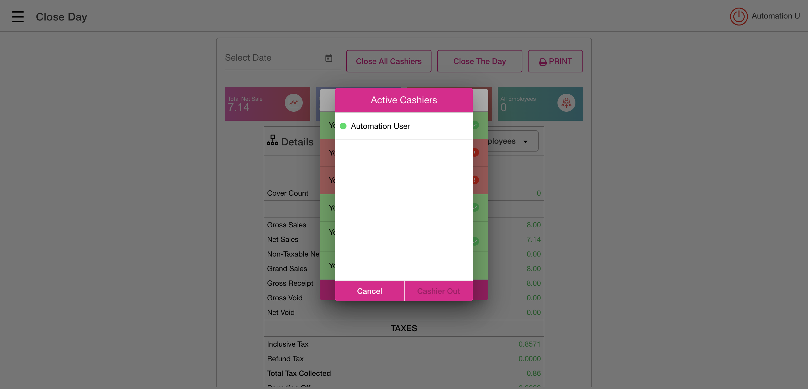
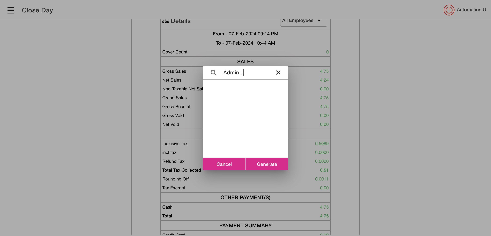
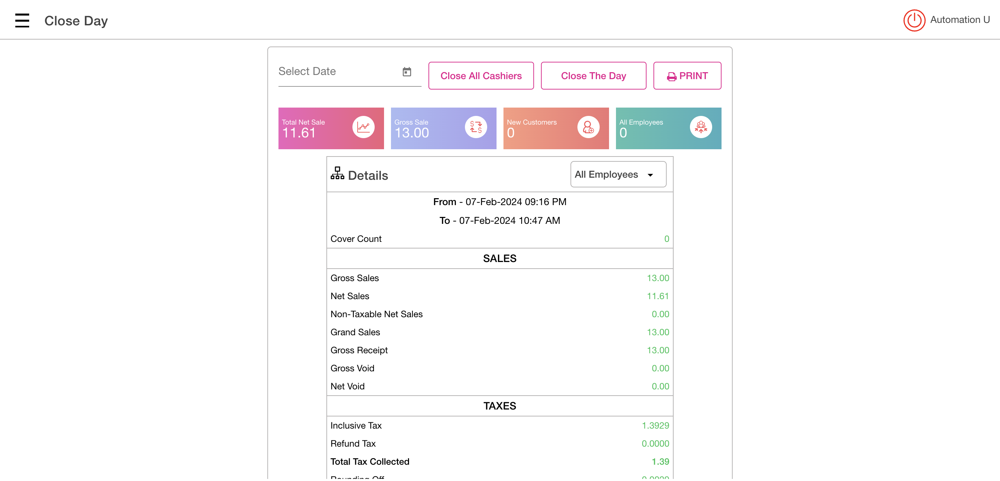
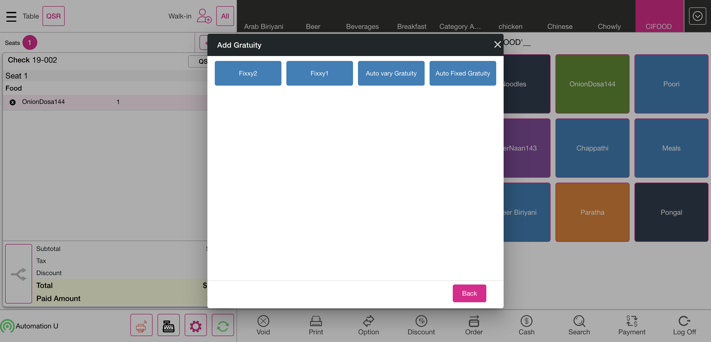
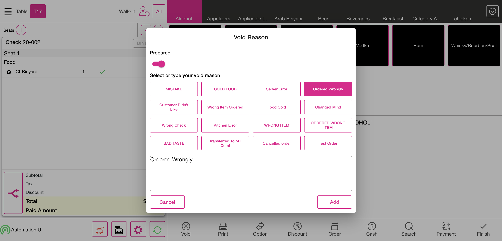
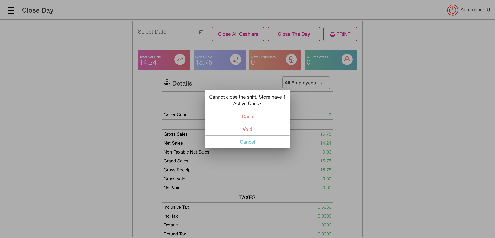
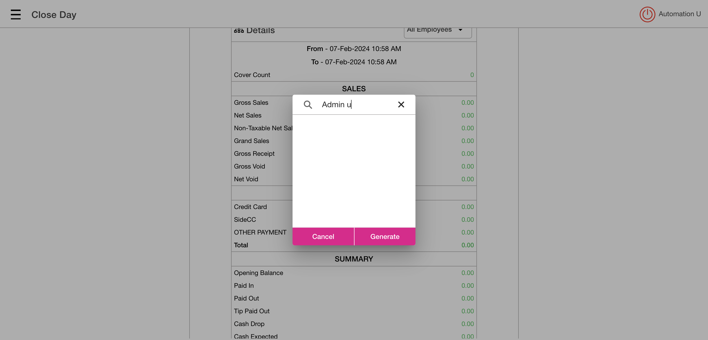
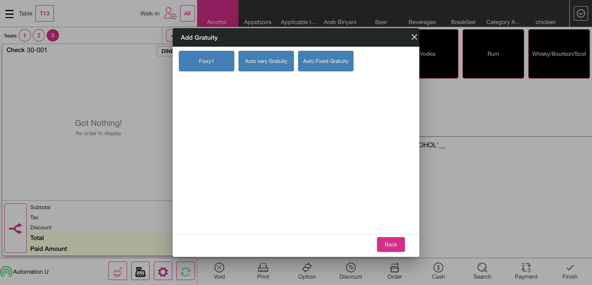
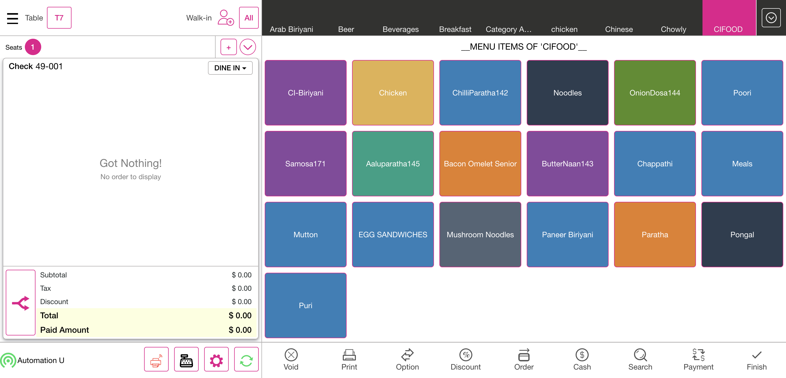
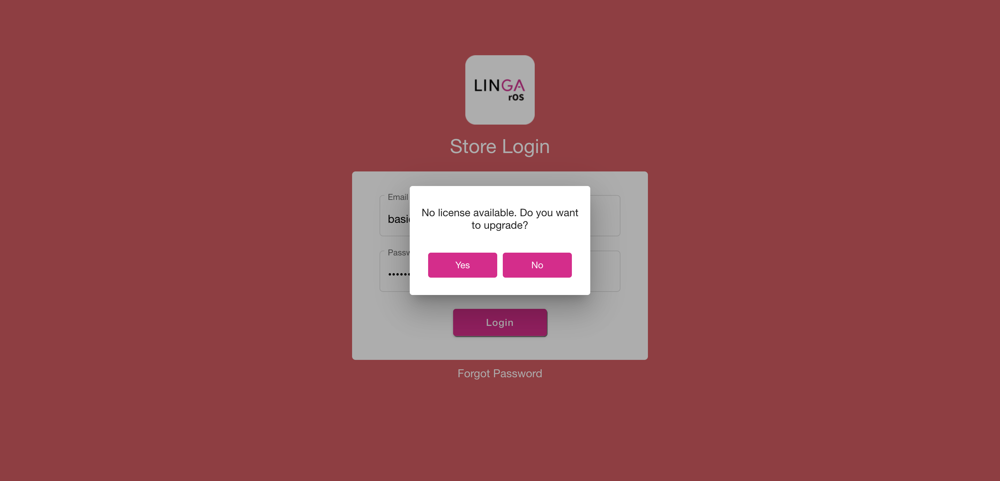

-
verify the close day screen
9:08:45 pm / 00:22:15:246 Fail
verify the close day screen
02.07.2024 9:08:45 pm 02.07.2024 9:31:00 pm 00:22:15:246 · #test-id=1Passverify the values in closeday screen before creating a sales,netsale value,gross sale value,Cover count,creditcard,gross receipt,gross sale,netsale,netvoid,initialTaxExempt,initial grossvoid,Passverify the values in closeday screen before creating a sales,netsale value,gross sale value,Cover count,creditcard,gross receipt,gross sale,netsale,netvoid,initialTaxExempt,initial grossvoid,Given I'm logged inAnd I close the order type windowAnd I click the Settings buttonAnd I click close day tabAnd I click close all cashier buttonWhen I verify the cannot close the shift, store have the active checksWhen I click the Close the day button in the operation screenThen I should see do you want to close the day popupAnd I click yes button on the do you want close the day popupWhen I click the submit button the close the day checklistThen I should see close day performed successfully popupAnd I click Done button on the PopupAnd I click the Toggle Icon buttonAnd I click POS Icon from ToggleAnd I close the order type windowAnd I click log off button in order screenGiven I enter the Pin number for loginAnd I click the operation button in the login screenAnd I click close day tabAnd I click close all cashier buttonWhen I verify the cannot close the shift, store have the active checksThen I should verify the value Net Sale of "0.00" "verify the 0.00value"And I should verify the value of Gross Sale "0.00" "Check gross sale value"And I should verify the value of New Customer "0" "Check New customer value"And I should verify the value of All Employees "0" "Check All employees value"Then I should verify the value of "0.00" "verify the total net sale value"Then I should verify the value of Gross Sale1 "0.00" "Check gross sale value"Then I should see the close day with "0"Then It should show the Gross Receipt as "0.00" "Verify Gross Receipt"Then I should verify the value of the "0.00" "Check gross void value"Then I should verify the net void in the sale recap after creating sale"0.00" "Check net void value"Then I should verify the initial Gross sale value as"0.00" "Check gross sale value"And I should verify the current date is displayedAnd I click print button in the Close the day screen "Click the Print Button"And I click power button1Passverify the initial creditCard ,paidIn ,paidOut,cashExp,overShortage,taxExpt,taxAmtPassverify the initial creditCard ,paidIn ,paidOut,cashExp,overShortage,taxExpt,taxAmtGiven I'm logged inAnd I close the order type windowAnd I click the Settings buttonAnd I click close day tabAnd I click close all cashier buttonWhen I verify the cannot close the shift, store have the active checksWhen I click the Close the day button in the operation screenThen I should see do you want to close the day popupAnd I click yes button on the do you want close the day popupWhen I click the submit button the close the day checklistThen I should see close day performed successfully popupAnd I click Done button on the PopupAnd I click the Toggle Icon buttonAnd I click POS Icon from ToggleAnd I close the order type windowAnd I click log off button in order screenGiven I enter the Pin number for loginAnd I click the operation button in the login screenAnd I click close day tabAnd I scroll the close the day "Credit Card" "scroll close the day"Then I should verify the value of Credit card as Zero "0.00"Then I should verify the value of Paid In amount in sale recap report "Paid In"Then I should verify the value of Paid Out amount in sale recap report "Paid Out"Then I scroll down to verify Cash Expected "Cash Expected"Then I should verify the over shortage in sale recap report "Over / Shortage"And I click power button1Failverify the values in close day screen after creating sales,verify cashierout popupFailverify the values in close day screen after creating sales,verify cashierout popupGiven I'm logged inAnd I close the order type windowAnd I click the Settings buttonAnd I click close day tabAnd I click close all cashier buttonWhen I verify the cannot close the shift, store have the active checksWhen I click the Close the day button in the operation screenThen I should see do you want to close the day popupAnd I click yes button on the do you want close the day popupWhen I click the submit button the close the day checklistThen I should see close day performed successfully popupAnd I click Done button on the PopupAnd I click the Toggle Icon buttonAnd I click POS Icon from ToggleAnd I close the order type windowAnd I click log off button in order screenGiven I'm logged inAnd I closed the order type windowAnd I select category as "CIMiniFood"And I select menu item as "Mini idly"And I click Payment button in the Order Management ScreenThen I click cash button from the payment method popupAnd I click Submit button on the Payment Window "click submit button"And I closed the order type windowAnd I click the Settings buttonAnd I click close day tabThen I should verify the value Net Sale of "7.14" "verify the 50.00value"Then I should verify the value of Gross Sale "8.00" "Check gross sale value"And I should verify the value of New Customer "0" "Check New customer value"And I should verify the value of All Employees "0" "Check All employees value"When I click the Close the day button in the operation screenThen I should see do you want to close the day popupAnd I click yes button on the do you want close the day popupAnd I click Cashier text in the close the day checklist screen "Click the text cashier"And I click Goknur Bati in the active cashiers screen "Click the text goknur bati"When I click Cashier Out button "Cashier Out" in the active cashiers screen "Click the Cashier out button"Step skippedThen I should not see open cashier in the close day checklistStep skippedAnd I click Cancel button in the close the day checklist Popup "click cancel button"Step skippedAnd I click power button1Step skippedcom.qa.stepdef.Hooks.quit(io.cucumber.java.Scenario)screenshot
FailVerify whether the system allow to sale recap after sale,grossvoid value,overshortage,cash record,verify employee,cashexpected paidout,paidin,close the day.FailVerify whether the system allow to sale recap after sale,grossvoid value,overshortage,cash record,verify employee,cashexpected paidout,paidin,close the day.Given I'm logged inAnd I close the order type windowAnd I click the Settings buttonAnd I click close day tabAnd I click close all cashier buttonWhen I verify the cannot close the shift, store have the active checksWhen I click the Close the day button in the operation screenThen I should see do you want to close the day popupAnd I click yes button on the do you want close the day popupWhen I click the submit button the close the day checklistThen I should see close day performed successfully popupAnd I click Done button on the PopupAnd I click the Toggle Icon buttonAnd I click POS Icon from ToggleAnd I close the order type windowAnd I click log off button in order screenGiven I'm logged inAnd I closed the order type windowAnd I select category as "CIFOOD"And I select menu item as "Poori"And I click Payment button in the Order Management ScreenThen I click cash button from the payment method popupAnd I click Submit button on the Payment Window "click submit button"And I closed the order type windowAnd I click log off button in order screenGiven I enter the Pin number for loginAnd I click the operation button in the login screenAnd I click close day tabAnd I click print button in the Close the day screen "Click the Print Button"Then I should verify the Report of"SALES""verify sale recap report"Then I should verify the gross void value in the sale recap after creating sale"0.00" "Check gross Void value"Then I should verify the cash record in the sale recap after creating sale "Cash"Then I should verify the over shortage in the sale recap after creating sale"Over / Shortage" "-4.75"And I click the "downarrow" in the operation screen employee "Click DropDown"Then I click the "Admin u" in the employees list "Select Karthick"Then I click generate buttonStep skippedAnd I should verify employee "Admin U"Step skippedAnd I click the Toggle Icon buttonStep skippedAnd I click the Till Management "Till Management" in the operation screenStep skippedThen I click on the paid out button in Till Management ScreenStep skippedThen I enter the name to pay in as "Karthick"Step skippedAnd I enter the percentage2 as "1000"Step skippedAnd I click the reason as "Paid Out" in the Till ManagementStep skippedAnd I click the Toggle Icon buttonStep skippedAnd I click close day tabStep skippedThen I verify the paid out value as "10.00" "Paid Out"Step skippedThen I should scroll to verify cash expected "Cash Expected" "-5.25"Step skippedAnd I click the Toggle Icon buttonStep skippedAnd I click the Till Management "Till Management" in the operation screenStep skippedThen I click on the paid in button in Till Management ScreenStep skippedThen I enter the name to pay1 in as "Karthick"Step skippedAnd I enter the percentage2 as "1000"Step skippedAnd I click the reason as "Paid In" in the Till ManagementStep skippedAnd I click the Toggle Icon buttonStep skippedAnd I click close day tabStep skippedThen I verify the paid in value as "10.00" "Paid In"Step skippedThen I should scroll to verify cash expected "Cash Expected" "4.75"Step skippedAnd I click close all cashier buttonStep skippedWhen I verify the cannot close the shift, store have the active checksStep skippedWhen I click the Close the day button in the operation screenStep skippedThen I should see do you want to close the day popupStep skippedAnd I click yes button on the do you want close the day popupStep skippedWhen I click the submit button the close the day checklistStep skippedThen I should see close day performed successfully popupStep skippedAnd I click Done button on the PopupStep skippedAnd I click power button1Step skippedGiven I enter the Pin number for loginStep skippedAnd I click the operation button in the login screenStep skippedAnd I click close day tabStep skippedThen I should verify the value of "0.00" "verify the 0.00value"Step skippedAnd I click power button1Step skippedcom.qa.stepdef.Hooks.quit(io.cucumber.java.Scenario)screenshot
Failverify whether application shows net sale value after creating the saleFailverify whether application shows net sale value after creating the saleGiven I'm logged inAnd I close the order type windowAnd I click the Settings buttonAnd I click close day tabAnd I click close all cashier buttonWhen I verify the cannot close the shift, store have the active checksWhen I click the Close the day button in the operation screenThen I should see do you want to close the day popupAnd I click yes button on the do you want close the day popupWhen I click the submit button the close the day checklistThen I should see close day performed successfully popupAnd I click Done button on the PopupAnd I click the Toggle Icon buttonAnd I click POS Icon from ToggleAnd I close the order type windowAnd I click log off button in order screenGiven I'm logged inAnd I closed the order type windowAnd I select category as "CIFOOD"And I select menu item as "CI-Biriyani"And I select menu item as "Paratha"And I click menu item as "CI-Biriyani" to see Menu option screenAnd I click void item on Menu optionAnd I click Payment button in the Order Management ScreenThen I click cash button from the payment method popupAnd I click Submit button on the Payment Window "click submit button"And I closed the order type windowAnd I click log off button in order screenGiven I'm logged inAnd I close the order type windowAnd I click the Settings buttonAnd I click close day tabThen I should verify the value Net Sale of "7.14" "verify the 35,00 value"And I click power button1Step skippedcom.qa.stepdef.Hooks.quit(io.cucumber.java.Scenario)screenshot
PassVerify the Gift Card Sold after creating salePassVerify the Gift Card Sold after creating saleGiven I'm logged inAnd I close the order type windowAnd I click the Settings buttonAnd I click close day tabAnd I click close all cashier buttonWhen I verify the cannot close the shift, store have the active checksWhen I click the Close the day button in the operation screenThen I should see do you want to close the day popupAnd I click yes button on the do you want close the day popupWhen I click the submit button the close the day checklistThen I should see close day performed successfully popupAnd I click Done button on the PopupAnd I click the Toggle Icon buttonAnd I click POS Icon from ToggleAnd I close the order type windowAnd I click log off button in order screenGiven I'm logged inAnd I closed the order type windowAnd I click Options buttonAnd I click Gift card ButtonThen I should see Gift card windowAnd I enter gift card number1And I click charge amount field and pass the amountAnd I click Done button on the PopupThen I should see gift card amount add up into order screen1And I click Payment button in the Order Management ScreenThen I click cash button from the payment method popupAnd I click Submit button on the Payment Window "click submit button"And I closed the order type windowAnd I click log off button in order screenGiven I enter the Pin number for loginAnd I click the operation button in the login screenAnd I click close day tabThen I scroll down to verify gift card sold "100.00"And I click power button1Failverify Gratuity value,giftcard payment after saleFailverify Gratuity value,giftcard payment after saleGiven I'm logged inAnd I close the order type windowAnd I click the Settings buttonAnd I click close day tabAnd I click close all cashier buttonWhen I verify the cannot close the shift, store have the active checksWhen I click the Close the day button in the operation screenThen I should see do you want to close the day popupAnd I click yes button on the do you want close the day popupWhen I click the submit button the close the day checklistThen I should see close day performed successfully popupAnd I click Done button on the PopupAnd I click the Toggle Icon buttonAnd I click POS Icon from ToggleAnd I close the order type windowAnd I click log off button in order screenGiven I'm logged inAnd I closed the order type windowAnd I select category as "CIFOOD"And I select menu item as "OnionDosa144"And I click Options buttonAnd I click Gratuity buttonThen I should see Add Gratuity screenAnd I click Gratuity Fixed buttonThen I should return back to the order management screen and I should Gratuity is addedStep skippedAnd I click Payment button in the Order Management ScreenStep skippedAnd User click gift card payment methodStep skippedThen I click the Continue button on the Total screenStep skippedAnd I click manual button on the your order screenStep skippedAnd I enter the Gift card number as "12345"Step skippedAnd I click Process button on card screenStep skippedAnd I closed the order type windowStep skippedAnd I click log off button in order screenStep skippedGiven I enter the Pin number for loginStep skippedAnd I click the operation button in the login screenStep skippedAnd I click close day tabStep skippedThen I should verify the gratuity value "0.89"Step skippedAnd I click power button1Step skippedcom.qa.stepdef.Hooks.quit(io.cucumber.java.Scenario)screenshot
FailVerify the Gross Sale value in sale recap, in mini dashboard after creating sale partial payment,FailVerify the Gross Sale value in sale recap, in mini dashboard after creating sale partial payment,Given I'm logged inAnd I close the order type windowAnd I click the Settings buttonAnd I click close day tabAnd I click close all cashier buttonWhen I verify the cannot close the shift, store have the active checksWhen I click the Close the day button in the operation screenThen I should see do you want to close the day popupAnd I click yes button on the do you want close the day popupWhen I click the submit button the close the day checklistThen I should see close day performed successfully popupAnd I click Done button on the PopupAnd I click the Toggle Icon buttonAnd I click POS Icon from ToggleAnd I close the order type windowAnd I click log off button in order screenGiven I'm logged inAnd I closed the order type windowAnd I select category as "CIFOOD"And I select menu item as "Poori"And I click Payment button in the Order Management ScreenThen I click cash button from the payment method popupAnd I click Submit button on the Payment Window "click submit button"And I closed the order type windowWhen I click AllAnd I click Table Layout tabAnd I click new check button on the Table layout screenAnd I select table as "T17"And I select the number of seats as "1"And I tap Continue to finish selecting the number of seatsAnd I get check numberAnd I select category as "CIFOOD"And I select menu item as "CI-Biriyani"And I click Payment button in the Order Management ScreenThen I click cash button from the payment method popupAnd I click Submit button on the Payment Window "click submit button"And I click Check Stats tabThen I should see check stats ScreenAnd I click Closed tab on the Check statsAnd I click the Closed check on check statsAnd I click reopen check button on the check stats screenAnd I click Payment button in the Order Management ScreenAnd I click payment in the payment windowWhen I click Delete button on the payment windowWhen I click Exit to return to Order Management ScreenAnd I click Void button on order management screenAnd I click void Reason on the void popupAnd I click Add Button on the void reason popupWhen I click QSR tabStep skippedAnd I closed the order type windowStep skippedAnd I click Options buttonStep skippedAnd I click Gift card ButtonStep skippedThen I should see Gift card windowStep skippedAnd I enter gift card number1Step skippedAnd I click charge amount field and pass the amountStep skippedAnd I click Done button on the PopupStep skippedThen I should see gift card amount add up into order screen1Step skippedAnd I click Payment button in the Order Management ScreenStep skippedThen I click cash button from the payment method popupStep skippedAnd I click Submit button on the Payment Window "click submit button"Step skippedAnd I closed the order type windowStep skippedAnd I click log off button in order screenStep skippedGiven I enter the Pin number for loginStep skippedAnd I click the operation button in the login screenStep skippedAnd I click close day tabStep skippedThen I should see gross sale value as "15.75" in sale recapStep skippedAnd I click power button1Step skippedcom.qa.stepdef.Hooks.quit(io.cucumber.java.Scenario)screenshot
FailVerify whether application shows Net sale,net void record in sale recap after creating saleFailVerify whether application shows Net sale,net void record in sale recap after creating saleGiven I'm logged inAnd I close the order type windowAnd I click the Settings buttonAnd I click close day tabAnd I click close all cashier buttonWhen I verify the cannot close the shift, store have the active checksWhen I click the Close the day button in the operation screenThen I should see do you want to close the day popupStep skippedAnd I click yes button on the do you want close the day popupStep skippedWhen I click the submit button the close the day checklistStep skippedThen I should see close day performed successfully popupStep skippedAnd I click Done button on the PopupStep skippedAnd I click the Toggle Icon buttonStep skippedAnd I click POS Icon from ToggleStep skippedAnd I close the order type windowStep skippedAnd I click log off button in order screenStep skippedGiven I'm logged inStep skippedAnd I closed the order type windowStep skippedWhen I click AllStep skippedAnd I click Table Layout tabStep skippedAnd I click new check button on the Table layout screenStep skippedAnd I select table as "T17"Step skippedAnd I select the number of seats as "1"Step skippedAnd I tap Continue to finish selecting the number of seatsStep skippedAnd I get check numberStep skippedAnd I select category as "CIFOOD"Step skippedAnd I select menu item as "CI-Biriyani"Step skippedAnd I click Payment button in the Order Management ScreenStep skippedThen I click cash button from the payment method popupStep skippedAnd I click Submit button on the Payment Window "click submit button"Step skippedAnd I click Table Layout tabStep skippedAnd I click new check button on the Table layout screenStep skippedAnd I select table as "T18"Step skippedAnd I select the number of seats as "1"Step skippedAnd I tap Continue to finish selecting the number of seatsStep skippedAnd I get check number1Step skippedAnd I select category as "CIFOOD"Step skippedAnd I select menu item as "Paratha"Step skippedAnd I click Payment button in the Order Management ScreenStep skippedThen I click cash button from the payment method popupStep skippedAnd I click Submit button on the Payment Window "click submit button"Step skippedAnd I click QSR tabStep skippedAnd I closed the order type windowStep skippedAnd I click AllStep skippedAnd I click Check Stats tabStep skippedThen I should see check stats ScreenStep skippedAnd I click Closed tab on the Check statsStep skippedAnd I click the Closed check on check statsStep skippedAnd I click reopen check button on the check stats screenStep skippedAnd I click Payment button in the Order Management ScreenStep skippedAnd I click payment in the payment windowStep skippedWhen I click Delete in the payment screen "click delete button"Step skippedWhen I click Exit to return to Order Management ScreenStep skippedAnd I click menu item as "CI-Biriyani" to see Menu option screenStep skippedAnd I click Void button on order management screenStep skippedAnd I click void Reason on the void popupStep skippedAnd I click Add Button on the void reason popupStep skippedAnd I click Done button on the PopupStep skippedAnd I click the Operation button on the Table LayoutStep skippedAnd I click close day tabStep skippedThen I should verify the net sale in the sale recap"7.14" "verify netTotal Value"Step skippedThen I should verify the net void in the sale recap after creating sale"10.00" "Check net void value"Step skippedAnd I click power button1Step skippedcom.qa.stepdef.Hooks.quit(io.cucumber.java.Scenario)screenshot FailVerify whether application shows Tax Excempt record in sale recap after creating saleFailVerify whether application shows Tax Excempt record in sale recap after creating saleGiven I'm logged inAnd I close the order type windowAnd I click the Settings buttonAnd I click close day tabAnd I click close all cashier buttonWhen I verify the cannot close the shift, store have the active checksWhen I click the Close the day button in the operation screenThen I should see do you want to close the day popupStep skippedAnd I click yes button on the do you want close the day popupStep skippedWhen I click the submit button the close the day checklistStep skippedThen I should see close day performed successfully popupStep skippedAnd I click Done button on the PopupStep skippedAnd I click the Toggle Icon buttonStep skippedAnd I click POS Icon from ToggleStep skippedAnd I close the order type windowStep skippedAnd I click log off button in order screenStep skippedGiven I'm logged inStep skippedAnd I closed the order type windowStep skippedAnd I get check numberStep skippedAnd I select category as "CIFOOD"Step skippedAnd I select menu item as "Aaluparatha145"Step skippedAnd I click Options buttonStep skippedAnd I click Tax Exempt ButtonStep skippedAnd I click Payment button in the Order Management ScreenStep skippedThen I click cash button from the payment method popupStep skippedAnd I click Submit button on the Payment Window "click submit button"Step skippedAnd I closed the order type windowStep skippedAnd I click log off button in order screenStep skippedGiven I enter the Pin number for loginStep skippedAnd I click the operation button in the login screenStep skippedAnd I click close day tabStep skippedThen I should verify the Tax exempt amount in sale recap report "Tax Exempt"Step skippedAnd I click power button1Step skippedcom.qa.stepdef.Hooks.quit(io.cucumber.java.Scenario)screenshot
FailVerify whether application shows Tax Excempt record in sale recap after creating saleFailVerify whether application shows Tax Excempt record in sale recap after creating saleGiven I'm logged inAnd I close the order type windowAnd I click the Settings buttonAnd I click close day tabAnd I click close all cashier buttonWhen I verify the cannot close the shift, store have the active checksWhen I click the Close the day button in the operation screenThen I should see do you want to close the day popupStep skippedAnd I click yes button on the do you want close the day popupStep skippedWhen I click the submit button the close the day checklistStep skippedThen I should see close day performed successfully popupStep skippedAnd I click Done button on the PopupStep skippedAnd I click the Toggle Icon buttonStep skippedAnd I click POS Icon from ToggleStep skippedAnd I close the order type windowStep skippedAnd I click log off button in order screenStep skippedGiven I'm logged inStep skippedAnd I closed the order type windowStep skippedAnd I get check numberStep skippedAnd I select category as "CIFOOD"Step skippedAnd I select menu item as "Aaluparatha145"Step skippedAnd I click Options buttonStep skippedAnd I click Tax Exempt ButtonStep skippedAnd I click Payment button in the Order Management ScreenStep skippedThen I click cash button from the payment method popupStep skippedAnd I click Submit button on the Payment Window "click submit button"Step skippedAnd I closed the order type windowStep skippedAnd I click log off button in order screenStep skippedGiven I enter the Pin number for loginStep skippedAnd I click the operation button in the login screenStep skippedAnd I click close day tabStep skippedThen I should verify the Tax exempt amount in sale recap report "Tax Exempt"Step skippedAnd I click power button1Step skippedcom.qa.stepdef.Hooks.quit(io.cucumber.java.Scenario)screenshot
PassVerify whether application shows the Tax Amount in sale recap report after creating salePassVerify whether application shows the Tax Amount in sale recap report after creating saleGiven I'm logged inAnd I close the order type windowAnd I click the Settings buttonAnd I click close day tabAnd I click close all cashier buttonWhen I verify the cannot close the shift, store have the active checksWhen I click the Close the day button in the operation screenThen I should see do you want to close the day popupAnd I click yes button on the do you want close the day popupWhen I click the submit button the close the day checklistThen I should see close day performed successfully popupAnd I click Done button on the PopupAnd I click the Toggle Icon buttonAnd I click POS Icon from ToggleAnd I close the order type windowAnd I click log off button in order screenGiven I'm logged inAnd I closed the order type windowAnd I get check numberAnd I select category as "CIFOOD"And I select menu item as "Mushroom Noodles"And I click Payment button in the Order Management ScreenThen I click cash button from the payment method popupAnd I click Submit button on the Payment Window "click submit button"And I closed the order type windowAnd I click log off button in order screenGiven I enter the Pin number for loginAnd I click the operation button in the login screenAnd I click close day tabThen I should verify the Tax amount in the sale recap report after creating sale"1.4545" "2.6667"And I click power button1FailVerify whether application show the employees in the employees drop down list who have performed sales,verify the number of employeesFailVerify whether application show the employees in the employees drop down list who have performed sales,verify the number of employeesGiven I'm logged inAnd I close the order type windowAnd I click the Settings buttonAnd I click close day tabAnd I click close all cashier buttonWhen I verify the cannot close the shift, store have the active checksWhen I click the Close the day button in the operation screenThen I should see do you want to close the day popupAnd I click yes button on the do you want close the day popupWhen I click the submit button the close the day checklistThen I should see close day performed successfully popupAnd I click Done button on the PopupAnd I click the Toggle Icon buttonAnd I click POS Icon from ToggleAnd I close the order type windowAnd I click log off button in order screenGiven I enter the Pin number for loginAnd I click the operation button in the login screenAnd I click close day tabAnd I click the "downarrow" in the operation screen employee "Click DropDown"Then I click the "Admin u" in the employees list "Select Kiosk U"Then I click generate buttonStep skippedThen I should verify the value Net Sale of "0.00" "verify the 0.00value"Step skippedAnd I click the "downarrow" in the operation screen employee "Click DropDown"Step skippedThen I click the "Appium l" in the employees list "Select Karthick T"Step skippedAnd I click x button employeeStep skippedThen I click the "bartab 0" in the employees list "Select Karthick T"Step skippedAnd I click x button employeeStep skippedAnd I click the "Cashier1 6" in the employees list "Select Kiosk U"Step skippedAnd I click x button employeeStep skippedAnd I click the "auto l" in the employees list "Select Kiosk U"Step skippedThen I click generate buttonStep skippedAnd I should verify employee "Multiple Employee"Step skippedAnd I click power button1Step skippedcom.qa.stepdef.Hooks.quit(io.cucumber.java.Scenario)screenshot
Passverify whether the user re-open a forced close check by clicking on the submit button,verfiy the force void check by clicking on void buttonPassverify whether the user re-open a forced close check by clicking on the submit button,verfiy the force void check by clicking on void buttonGiven I'm logged inAnd I close the order type windowAnd I click the Settings buttonAnd I click close day tabAnd I click close all cashier buttonWhen I verify the cannot close the shift, store have the active checksWhen I click the Close the day button in the operation screenThen I should see do you want to close the day popupAnd I click yes button on the do you want close the day popupWhen I click the submit button the close the day checklistThen I should see close day performed successfully popupAnd I click Done button on the PopupAnd I click the Toggle Icon buttonAnd I click POS Icon from ToggleAnd I close the order type windowAnd I click log off button in order screenGiven I'm logged inAnd I closed the order type windowAnd I click AllAnd I click Table Layout tabAnd I click new check button on the Table layout screenAnd I select table as "T18"And I select the number of seats as "1"And I tap Continue to finish selecting the number of seatsAnd I get check numberAnd I select category as "CIFOOD"And I select menu item as "Chappathi"And I click Finish Order buttonAnd I click the Operation button on the Table LayoutAnd I click close day tabAnd I click the Close the day button in the operation screenThen I should see do you want to close the day popupAnd I click yes button on the do you want close the day popupAnd I click the Active Check in the close the day checklist "Click the Active check"When I click "Cash" in the Active check popup"click void button"Then I should see the Active Check's as"You have 0 Active check's" "Check Active check value"And I click the cancel button close the day check checklist popup "Click the cancel Button"And I click the Toggle Icon buttonAnd I click POS Icon from ToggleAnd I closed the order type windowAnd I click AllAnd I click Check Stats tabAnd I click Closed tab on the Check statsAnd I click the Closed check on check statsAnd I click reopen check button on the check stats screenAnd I click Payment button in the Order Management ScreenAnd I click Submit button on the Payment Window "click submit button"And I click Check Stats tabThen I should see the Active tab with "No active checks" "Verify the active tab"And I click power button -
Table Order Operations
9:31:00 pm / 01:09:50:310 Fail
Table Order Operations
02.07.2024 9:31:00 pm 02.07.2024 10:40:50 pm 01:09:50:310 · #test-id=610PassChange FloorsGiven I'm logged inAnd I close the order type windowAnd I click AllAnd I click Table Layout tabAnd I click the Operation button on the Table LayoutThen I should see operation screenAnd I click POS Icon from ToggleAnd I closed the order type windowAnd I click AllAnd I click Table Layout tabAnd I click power buttonFailMerge Checks - Rare ScenariosFailMerge Checks - Rare ScenariosGiven I'm logged inAnd I close the order type windowAnd I click AllAnd I click Table Layout tabAnd I click new check button on the Table layout screenAnd I select a table to be merged as "T1"And I select the number of seats as "3"And I tap Continue to finish selecting the number of seatsAnd I get check numberAnd I select FOOD as categoryAnd I select menu item as "French Friese"Step skippedAnd I select modifier as "Steak"Step skippedAnd I click Done to get backStep skippedAnd I click Seat 2 for add menu itemStep skippedAnd I select FOOD as categoryStep skippedAnd I select menu item as "Garlic Bread"Step skippedAnd I select modifier as "4 BBQ"Step skippedAnd I click Done to get backStep skippedAnd I click seat 3 for add menu itemStep skippedAnd I select FOOD as categoryStep skippedAnd I select menu item as "Tuna Tacos"Step skippedAnd I select modifier as "Croutons"Step skippedAnd I click Done to get backStep skippedAnd I click Finish Order buttonStep skippedThen I should get back to the Table Layout tabStep skippedAnd I click new check button on the Table layout screenStep skippedAnd I select a table to be merged as "T2"Step skippedAnd I select the number of seats as "3"Step skippedAnd I tap Continue to finish selecting the number of seatsStep skippedAnd I get check numberStep skippedAnd I select FOOD as categoryStep skippedAnd I select menu item as "French Friese"Step skippedAnd I select modifier as "Steak"Step skippedAnd I click Done to get backStep skippedAnd I click Seat 2 for add menu itemStep skippedAnd I select FOOD as categoryStep skippedAnd I select menu item as "Garlic Bread"Step skippedAnd I select modifier as "4 BBQ"Step skippedAnd I click Done to get backStep skippedAnd I click seat 3 for add menu itemStep skippedAnd I select FOOD as categoryStep skippedAnd I select menu item as "Tuna Tacos"Step skippedAnd I select modifier as "Croutons"Step skippedAnd I click Done to get backStep skippedAnd I click Finish Order buttonStep skippedThen I should get back to the Table Layout tabStep skippedAnd I click new check button on the Table layout screenStep skippedAnd I select a table to be merged as "T3"Step skippedAnd I select the number of seats as "3"Step skippedAnd I tap Continue to finish selecting the number of seatsStep skippedAnd I get check numberStep skippedAnd I select FOOD as categoryStep skippedAnd I select menu item as "French Friese"Step skippedAnd I select modifier as "Steak"Step skippedAnd I click Done to get backStep skippedAnd I click Seat 2 for add menu itemStep skippedAnd I select FOOD as categoryStep skippedAnd I select menu item as "Garlic Bread"Step skippedAnd I select modifier as "4 BBQ"Step skippedAnd I click Done to get backStep skippedAnd I click seat 3 for add menu itemStep skippedAnd I select FOOD as categoryStep skippedAnd I select menu item as "Tuna Tacos"Step skippedAnd I select modifier as "Croutons"Step skippedAnd I click Done to get backStep skippedAnd I click Finish Order buttonStep skippedThen I should get back to the Table Layout tabStep skippedAnd I click new check button on the Table layout screenStep skippedAnd I select a table to be merged as "T4"Step skippedAnd I select the number of seats as "3"Step skippedAnd I tap Continue to finish selecting the number of seatsStep skippedAnd I get check numberStep skippedAnd I select FOOD as categoryStep skippedAnd I select menu item as "French Friese"Step skippedAnd I select modifier as "Steak"Step skippedAnd I click Done to get backStep skippedAnd I click Seat 2 for add menu itemStep skippedAnd I select FOOD as categoryStep skippedAnd I select menu item as "Garlic Bread"Step skippedAnd I select modifier as "4 BBQ"Step skippedAnd I click Done to get backStep skippedAnd I click seat 3 for add menu itemStep skippedAnd I select FOOD as categoryStep skippedAnd I select menu item as "Tuna Tacos"Step skippedAnd I select modifier as "Croutons"Step skippedAnd I click Done to get backStep skippedAnd I click Finish Order buttonStep skippedThen I should get back to the Table Layout tabStep skippedAnd I click new check button on the Table layout screenStep skippedAnd I select a table to be merged as "T5"Step skippedAnd I select the number of seats as "3"Step skippedAnd I tap Continue to finish selecting the number of seatsStep skippedAnd I get check numberStep skippedAnd I select FOOD as categoryStep skippedAnd I select menu item as "French Friese"Step skippedAnd I select modifier as "Steak"Step skippedAnd I click Done to get backStep skippedAnd I click Seat 2 for add menu itemStep skippedAnd I select FOOD as categoryStep skippedAnd I select menu item as "Garlic Bread"Step skippedAnd I select modifier as "4 BBQ"Step skippedAnd I click Done to get backStep skippedAnd I click seat 3 for add menu itemStep skippedAnd I select FOOD as categoryStep skippedAnd I select menu item as "Tuna Tacos"Step skippedAnd I select modifier as "Croutons"Step skippedAnd I click Done to get backStep skippedAnd I click Finish Order buttonStep skippedThen I should get back to the Table Layout tabStep skippedAnd I click Merge buttonStep skippedAnd I select a table to be merged as "T1"Step skippedAnd I select a table to be merged as "T2"Step skippedAnd I select a table to be merged as "T3"Step skippedAnd I select a table to be merged as "T4"Step skippedAnd I select a table to be merged as "T5"Step skippedAnd I click Done button on the pop-up to complete mergingStep skippedAnd I wait sometimesStep skippedAnd I click Done button on the PopupStep skippedAnd I select a table to be merged as "T1"Step skippedThen I should see that OrderScreen with Merge seats as "15"Step skippedAnd I click Payment button in the Order Management ScreenStep skippedAnd I click cash button from the payment method popupStep skippedAnd I click Submit button on the Payment WindowStep skippedThen I should get back to the Table Layout tabStep skippedAnd I click power buttonStep skippedcom.qa.stepdef.Hooks.quit(io.cucumber.java.Scenario)screenshotFailMerge 5 check without payFailMerge 5 check without payGiven I'm logged inAnd I close the order type windowAnd I click AllAnd I click Table Layout tabAnd I click new check button on the Table layout screenAnd I select a table to be merged as "T1"And I select the number of seats as "1"And I tap Continue to finish selecting the number of seatsAnd I get check numberAnd I select FOOD as categoryAnd I select menu item as "French Friese"And I select modifier as "Steak"Step skippedAnd I click Done to get backStep skippedAnd I select menu item as "Garlic Bread"Step skippedAnd I select modifier as "4 BBQ"Step skippedAnd I click Done to get backStep skippedAnd I select menu item as "Tuna Tacos"Step skippedAnd I select modifier as "Croutons"Step skippedAnd I click Done to get backStep skippedAnd I select menu item as "Cheesy Bacon Fries"Step skippedAnd I select modifier as "1/2 Cheese"Step skippedAnd I click Done to get backStep skippedAnd I select menu item as "B.I. Wings"Step skippedAnd I select modifier as "Tomato"Step skippedAnd I click Done to get backStep skippedAnd I click Finish Order buttonStep skippedThen I should get back to the Table Layout tabStep skippedAnd I click new check button on the Table layout screenStep skippedAnd I select a table to be merged as "T2"Step skippedAnd I select the number of seats as "1"Step skippedAnd I tap Continue to finish selecting the number of seatsStep skippedAnd I get check numberStep skippedAnd I select FOOD as categoryStep skippedAnd I select menu item as "French Friese"Step skippedAnd I select modifier as "Steak"Step skippedAnd I click Done to get backStep skippedAnd I select menu item as "Garlic Bread"Step skippedAnd I select modifier as "4 BBQ"Step skippedAnd I click Done to get backStep skippedAnd I select menu item as "Tuna Tacos"Step skippedAnd I select modifier as "Croutons"Step skippedAnd I click Done to get backStep skippedAnd I select menu item as "Cheesy Bacon Fries"Step skippedAnd I select modifier as "1/2 Cheese"Step skippedAnd I click Done to get backStep skippedAnd I select menu item as "B.I. Wings"Step skippedAnd I select modifier as "Tomato"Step skippedAnd I click Done to get backStep skippedAnd I click Finish Order buttonStep skippedThen I should get back to the Table Layout tabStep skippedAnd I click new check button on the Table layout screenStep skippedAnd I select a table to be merged as "T3"Step skippedAnd I select the number of seats as "1"Step skippedAnd I tap Continue to finish selecting the number of seatsStep skippedAnd I get check numberStep skippedAnd I select FOOD as categoryStep skippedAnd I select menu item as "French Friese"Step skippedAnd I select modifier as "Steak"Step skippedAnd I click Done to get backStep skippedAnd I select menu item as "Garlic Bread"Step skippedAnd I select modifier as "4 BBQ"Step skippedAnd I click Done to get backStep skippedAnd I select menu item as "Tuna Tacos"Step skippedAnd I select modifier as "Croutons"Step skippedAnd I click Done to get backStep skippedAnd I select menu item as "Cheesy Bacon Fries"Step skippedAnd I select modifier as "1/2 Cheese"Step skippedAnd I click Done to get backStep skippedAnd I select menu item as "B.I. Wings"Step skippedAnd I select modifier as "Tomato"Step skippedAnd I click Done to get backStep skippedAnd I click Finish Order buttonStep skippedThen I should get back to the Table Layout tabStep skippedAnd I click new check button on the Table layout screenStep skippedAnd I select a table to be merged as "T4"Step skippedAnd I select the number of seats as "1"Step skippedAnd I tap Continue to finish selecting the number of seatsStep skippedAnd I get check numberStep skippedAnd I select FOOD as categoryStep skippedAnd I select menu item as "French Friese"Step skippedAnd I select modifier as "Steak"Step skippedAnd I click Done to get backStep skippedAnd I select menu item as "Garlic Bread"Step skippedAnd I select modifier as "4 BBQ"Step skippedAnd I click Done to get backStep skippedAnd I select menu item as "Tuna Tacos"Step skippedAnd I select modifier as "Croutons"Step skippedAnd I click Done to get backStep skippedAnd I select menu item as "Cheesy Bacon Fries"Step skippedAnd I select modifier as "1/2 Cheese"Step skippedAnd I click Done to get backStep skippedAnd I select menu item as "B.I. Wings"Step skippedAnd I select modifier as "Tomato"Step skippedAnd I click Done to get backStep skippedAnd I click Finish Order buttonStep skippedThen I should get back to the Table Layout tabStep skippedAnd I click new check button on the Table layout screenStep skippedAnd I select a table to be merged as "T5"Step skippedAnd I select the number of seats as "1"Step skippedAnd I tap Continue to finish selecting the number of seatsStep skippedAnd I get check numberStep skippedAnd I select FOOD as categoryStep skippedAnd I select menu item as "French Friese"Step skippedAnd I select modifier as "Steak"Step skippedAnd I click Done to get backStep skippedAnd I select menu item as "Garlic Bread"Step skippedAnd I select modifier as "4 BBQ"Step skippedAnd I click Done to get backStep skippedAnd I select menu item as "Tuna Tacos"Step skippedAnd I select modifier as "Croutons"Step skippedAnd I click Done to get backStep skippedAnd I select menu item as "Cheesy Bacon Fries"Step skippedAnd I select modifier as "1/2 Cheese"Step skippedAnd I click Done to get backStep skippedAnd I select menu item as "B.I. Wings"Step skippedAnd I select modifier as "Tomato"Step skippedAnd I click Done to get backStep skippedAnd I click Finish Order buttonStep skippedThen I should get back to the Table Layout tabStep skippedAnd I click Merge buttonStep skippedAnd I select a table to be merged as "T1"Step skippedAnd I select a table to be merged as "T2"Step skippedAnd I select a table to be merged as "T3"Step skippedAnd I select a table to be merged as "T4"Step skippedAnd I select a table to be merged as "T5"Step skippedAnd I click Done button on the pop-up to complete mergingStep skippedAnd I wait sometimesStep skippedAnd I click Done button on the PopupStep skippedAnd I select a table to be merged as "T1"Step skippedThen I should see that OrderScreen with Merge seats as "5"Step skippedAnd I click Payment button in the Order Management ScreenStep skippedAnd I click cash button from the payment method popupStep skippedAnd I click Submit button on the Payment WindowStep skippedThen I should get back to the Table Layout tabStep skippedAnd I click new check button on the Table layout screenStep skippedAnd I select a table to be merged as "T1"Step skippedAnd I select the number of seats as "1"Step skippedAnd I tap Continue to finish selecting the number of seatsStep skippedAnd I get check numberStep skippedAnd I select FOOD as categoryStep skippedAnd I select menu item as "French Friese"Step skippedAnd I select modifier as "Steak"Step skippedAnd I click Done to get backStep skippedAnd I select menu item as "Garlic Bread"Step skippedAnd I select modifier as "4 BBQ"Step skippedAnd I click Done to get backStep skippedAnd I select menu item as "Tuna Tacos"Step skippedAnd I select modifier as "Croutons"Step skippedAnd I click Done to get backStep skippedAnd I select menu item as "Cheesy Bacon Fries"Step skippedAnd I select modifier as "1/2 Cheese"Step skippedAnd I click Done to get backStep skippedAnd I select menu item as "B.I. Wings"Step skippedAnd I select modifier as "Tomato"Step skippedAnd I click Done to get backStep skippedAnd I click Finish Order buttonStep skippedThen I should get back to the Table Layout tabStep skippedAnd I click new check button on the Table layout screenStep skippedAnd I select a table to be merged as "T2"Step skippedAnd I select the number of seats as "1"Step skippedAnd I tap Continue to finish selecting the number of seatsStep skippedAnd I get check numberStep skippedAnd I select FOOD as categoryStep skippedAnd I select menu item as "French Friese"Step skippedAnd I select modifier as "Steak"Step skippedAnd I click Done to get backStep skippedAnd I select menu item as "Garlic Bread"Step skippedAnd I select modifier as "4 BBQ"Step skippedAnd I click Done to get backStep skippedAnd I select menu item as "Tuna Tacos"Step skippedAnd I select modifier as "Croutons"Step skippedAnd I click Done to get backStep skippedAnd I select menu item as "Cheesy Bacon Fries"Step skippedAnd I select modifier as "1/2 Cheese"Step skippedAnd I click Done to get backStep skippedAnd I select menu item as "B.I. Wings"Step skippedAnd I select modifier as "Tomato"Step skippedAnd I click Done to get backStep skippedAnd I click Finish Order buttonStep skippedThen I should get back to the Table Layout tabStep skippedAnd I click new check button on the Table layout screenStep skippedAnd I select a table to be merged as "T3"Step skippedAnd I select the number of seats as "1"Step skippedAnd I tap Continue to finish selecting the number of seatsStep skippedAnd I get check numberStep skippedAnd I select FOOD as categoryStep skippedAnd I select menu item as "French Friese"Step skippedAnd I select modifier as "Steak"Step skippedAnd I click Done to get backStep skippedAnd I select menu item as "Garlic Bread"Step skippedAnd I select modifier as "4 BBQ"Step skippedAnd I click Done to get backStep skippedAnd I select menu item as "Tuna Tacos"Step skippedAnd I select modifier as "Croutons"Step skippedAnd I click Done to get backStep skippedAnd I select menu item as "Cheesy Bacon Fries"Step skippedAnd I select modifier as "1/2 Cheese"Step skippedAnd I click Done to get backStep skippedAnd I select menu item as "B.I. Wings"Step skippedAnd I select modifier as "Tomato"Step skippedAnd I click Done to get backStep skippedAnd I click Finish Order buttonStep skippedThen I should get back to the Table Layout tabStep skippedAnd I click new check button on the Table layout screenStep skippedAnd I select a table to be merged as "T4"Step skippedAnd I select the number of seats as "1"Step skippedAnd I tap Continue to finish selecting the number of seatsStep skippedAnd I get check numberStep skippedAnd I select FOOD as categoryStep skippedAnd I select menu item as "French Friese"Step skippedAnd I select modifier as "Steak"Step skippedAnd I click Done to get backStep skippedAnd I select menu item as "Garlic Bread"Step skippedAnd I select modifier as "4 BBQ"Step skippedAnd I click Done to get backStep skippedAnd I select menu item as "Tuna Tacos"Step skippedAnd I select modifier as "Croutons"Step skippedAnd I click Done to get backStep skippedAnd I select menu item as "Cheesy Bacon Fries"Step skippedAnd I select modifier as "1/2 Cheese"Step skippedAnd I click Done to get backStep skippedAnd I select menu item as "B.I. Wings"Step skippedAnd I select modifier as "Tomato"Step skippedAnd I click Done to get backStep skippedAnd I click Finish Order buttonStep skippedThen I should get back to the Table Layout tabStep skippedAnd I click new check button on the Table layout screenStep skippedAnd I select a table to be merged as "T5"Step skippedAnd I select the number of seats as "1"Step skippedAnd I tap Continue to finish selecting the number of seatsStep skippedAnd I get check numberStep skippedAnd I select FOOD as categoryStep skippedAnd I select menu item as "French Friese"Step skippedAnd I select modifier as "Steak"Step skippedAnd I click Done to get backStep skippedAnd I select menu item as "Garlic Bread"Step skippedAnd I select modifier as "4 BBQ"Step skippedAnd I click Done to get backStep skippedAnd I select menu item as "Tuna Tacos"Step skippedAnd I select modifier as "Croutons"Step skippedAnd I click Done to get backStep skippedAnd I select menu item as "Cheesy Bacon Fries"Step skippedAnd I select modifier as "1/2 Cheese"Step skippedAnd I click Done to get backStep skippedAnd I select menu item as "B.I. Wings"Step skippedAnd I select modifier as "Tomato"Step skippedAnd I click Done to get backStep skippedAnd I click Finish Order buttonStep skippedThen I should get back to the Table Layout tabStep skippedAnd I click Merge buttonStep skippedAnd I select a table to be merged as "T1"Step skippedAnd I select a table to be merged as "T2"Step skippedAnd I select a table to be merged as "T3"Step skippedAnd I select a table to be merged as "T4"Step skippedAnd I select a table to be merged as "T5"Step skippedAnd I click Done button on the pop-up to complete mergingStep skippedAnd I wait sometimesStep skippedAnd I click Done button on the PopupStep skippedAnd I click Print on the table layout screenStep skippedAnd I select a table to be merged as "T1"Step skippedAnd I select a table to be merged as "T1"Step skippedThen I should see that OrderScreen with Merge seats as "5"Step skippedAnd I click Payment button in the Order Management ScreenStep skippedAnd I click cash button from the payment method popupStep skippedAnd I click Submit button on the Payment WindowStep skippedThen I should get back to the Table Layout tabStep skippedAnd I click new check button on the Table layout screenStep skippedAnd I select a table to be merged as "T1"Step skippedAnd I select the number of seats as "1"Step skippedAnd I tap Continue to finish selecting the number of seatsStep skippedAnd I get check numberStep skippedAnd I select FOOD as categoryStep skippedAnd I select menu item as "French Friese"Step skippedAnd I select modifier as "Steak"Step skippedAnd I click Done to get backStep skippedAnd I select menu item as "Garlic Bread"Step skippedAnd I select modifier as "4 BBQ"Step skippedAnd I click Done to get backStep skippedAnd I select menu item as "Tuna Tacos"Step skippedAnd I select modifier as "Croutons"Step skippedAnd I click Done to get backStep skippedAnd I select menu item as "Cheesy Bacon Fries"Step skippedAnd I select modifier as "1/2 Cheese"Step skippedAnd I click Done to get backStep skippedAnd I select menu item as "B.I. Wings"Step skippedAnd I select modifier as "Tomato"Step skippedAnd I click Done to get backStep skippedAnd I click Finish Order buttonStep skippedThen I should get back to the Table Layout tabStep skippedAnd I click new check button on the Table layout screenStep skippedAnd I select a table to be merged as "T2"Step skippedAnd I select the number of seats as "1"Step skippedAnd I tap Continue to finish selecting the number of seatsStep skippedAnd I get check numberStep skippedAnd I select FOOD as categoryStep skippedAnd I select menu item as "French Friese"Step skippedAnd I select modifier as "Steak"Step skippedAnd I click Done to get backStep skippedAnd I select menu item as "Garlic Bread"Step skippedAnd I select modifier as "4 BBQ"Step skippedAnd I click Done to get backStep skippedAnd I select menu item as "Tuna Tacos"Step skippedAnd I select modifier as "Croutons"Step skippedAnd I click Done to get backStep skippedAnd I select menu item as "Cheesy Bacon Fries"Step skippedAnd I select modifier as "1/2 Cheese"Step skippedAnd I click Done to get backStep skippedAnd I select menu item as "B.I. Wings"Step skippedAnd I select modifier as "Tomato"Step skippedAnd I click Done to get backStep skippedAnd I click Finish Order buttonStep skippedThen I should get back to the Table Layout tabStep skippedAnd I click new check button on the Table layout screenStep skippedAnd I select a table to be merged as "T3"Step skippedAnd I select the number of seats as "1"Step skippedAnd I tap Continue to finish selecting the number of seatsStep skippedAnd I get check numberStep skippedAnd I select FOOD as categoryStep skippedAnd I select menu item as "French Friese"Step skippedAnd I select modifier as "Steak"Step skippedAnd I click Done to get backStep skippedAnd I select menu item as "Garlic Bread"Step skippedAnd I select modifier as "4 BBQ"Step skippedAnd I click Done to get backStep skippedAnd I select menu item as "Tuna Tacos"Step skippedAnd I select modifier as "Croutons"Step skippedAnd I click Done to get backStep skippedAnd I select menu item as "Cheesy Bacon Fries"Step skippedAnd I select modifier as "1/2 Cheese"Step skippedAnd I click Done to get backStep skippedAnd I select menu item as "B.I. Wings"Step skippedAnd I select modifier as "Tomato"Step skippedAnd I click Done to get backStep skippedAnd I click Finish Order buttonStep skippedThen I should get back to the Table Layout tabStep skippedAnd I click new check button on the Table layout screenStep skippedAnd I select a table to be merged as "T4"Step skippedAnd I select the number of seats as "1"Step skippedAnd I tap Continue to finish selecting the number of seatsStep skippedAnd I get check numberStep skippedAnd I select FOOD as categoryStep skippedAnd I select menu item as "French Friese"Step skippedAnd I select modifier as "Steak"Step skippedAnd I click Done to get backStep skippedAnd I select menu item as "Garlic Bread"Step skippedAnd I select modifier as "4 BBQ"Step skippedAnd I click Done to get backStep skippedAnd I select menu item as "Tuna Tacos"Step skippedAnd I select modifier as "Croutons"Step skippedAnd I click Done to get backStep skippedAnd I select menu item as "Cheesy Bacon Fries"Step skippedAnd I select modifier as "1/2 Cheese"Step skippedAnd I click Done to get backStep skippedAnd I select menu item as "B.I. Wings"Step skippedAnd I select modifier as "Tomato"Step skippedAnd I click Done to get backStep skippedAnd I click Finish Order buttonStep skippedThen I should get back to the Table Layout tabStep skippedAnd I click new check button on the Table layout screenStep skippedAnd I select a table to be merged as "T5"Step skippedAnd I select the number of seats as "1"Step skippedAnd I tap Continue to finish selecting the number of seatsStep skippedAnd I get check numberStep skippedAnd I select FOOD as categoryStep skippedAnd I select menu item as "French Friese"Step skippedAnd I select modifier as "Steak"Step skippedAnd I click Done to get backStep skippedAnd I select menu item as "Garlic Bread"Step skippedAnd I select modifier as "4 BBQ"Step skippedAnd I click Done to get backStep skippedAnd I select menu item as "Tuna Tacos"Step skippedAnd I select modifier as "Croutons"Step skippedAnd I click Done to get backStep skippedAnd I select menu item as "Cheesy Bacon Fries"Step skippedAnd I select modifier as "1/2 Cheese"Step skippedAnd I click Done to get backStep skippedAnd I select menu item as "B.I. Wings"Step skippedAnd I select modifier as "Tomato"Step skippedAnd I click Done to get backStep skippedAnd I click Finish Order buttonStep skippedThen I should get back to the Table Layout tabStep skippedAnd I click Merge buttonStep skippedAnd I select a table to be merged as "T1"Step skippedAnd I select a table to be merged as "T2"Step skippedAnd I select a table to be merged as "T3"Step skippedAnd I select a table to be merged as "T4"Step skippedAnd I select a table to be merged as "T5"Step skippedAnd I click Done button on the pop-up to complete mergingStep skippedAnd I wait sometimesStep skippedAnd I click Done button on the PopupStep skippedAnd I select a table to be merged as "T1"Step skippedThen I Should get back to the Order ScreenStep skippedAnd I click print button on the order screenStep skippedThen I should see that OrderScreen with Merge seats as "5"Step skippedAnd I click Payment button in the Order Management ScreenStep skippedAnd I click cash button from the payment method popupStep skippedAnd I click Submit button on the Payment WindowStep skippedThen I should get back to the Table Layout tabStep skippedAnd I click new check button on the Table layout screenStep skippedAnd I select a table to be merged as "T1"Step skippedAnd I select the number of seats as "1"Step skippedAnd I tap Continue to finish selecting the number of seatsStep skippedAnd I get check numberStep skippedAnd I select FOOD as categoryStep skippedAnd I select menu item as "French Friese"Step skippedAnd I select modifier as "Steak"Step skippedAnd I click Done to get backStep skippedAnd I select menu item as "Garlic Bread"Step skippedAnd I select modifier as "4 BBQ"Step skippedAnd I click Done to get backStep skippedAnd I select menu item as "Tuna Tacos"Step skippedAnd I select modifier as "Croutons"Step skippedAnd I click Done to get backStep skippedAnd I select menu item as "Cheesy Bacon Fries"Step skippedAnd I select modifier as "1/2 Cheese"Step skippedAnd I click Done to get backStep skippedAnd I select menu item as "B.I. Wings"Step skippedAnd I select modifier as "Tomato"Step skippedAnd I click Done to get backStep skippedAnd I click Finish Order buttonStep skippedThen I should get back to the Table Layout tabStep skippedAnd I click new check button on the Table layout screenStep skippedAnd I select a table to be merged as "T2"Step skippedAnd I select the number of seats as "1"Step skippedAnd I tap Continue to finish selecting the number of seatsStep skippedAnd I get check numberStep skippedAnd I select FOOD as categoryStep skippedAnd I select menu item as "French Friese"Step skippedAnd I select modifier as "Steak"Step skippedAnd I click Done to get backStep skippedAnd I select menu item as "Garlic Bread"Step skippedAnd I select modifier as "4 BBQ"Step skippedAnd I click Done to get backStep skippedAnd I select menu item as "Tuna Tacos"Step skippedAnd I select modifier as "Croutons"Step skippedAnd I click Done to get backStep skippedAnd I select menu item as "Cheesy Bacon Fries"Step skippedAnd I select modifier as "1/2 Cheese"Step skippedAnd I click Done to get backStep skippedAnd I select menu item as "B.I. Wings"Step skippedAnd I select modifier as "Tomato"Step skippedAnd I click Done to get backStep skippedAnd I click Finish Order buttonStep skippedThen I should get back to the Table Layout tabStep skippedAnd I click new check button on the Table layout screenStep skippedAnd I select a table to be merged as "T3"Step skippedAnd I select the number of seats as "1"Step skippedAnd I tap Continue to finish selecting the number of seatsStep skippedAnd I get check numberStep skippedAnd I select FOOD as categoryStep skippedAnd I select menu item as "French Friese"Step skippedAnd I select modifier as "Steak"Step skippedAnd I click Done to get backStep skippedAnd I select menu item as "Garlic Bread"Step skippedAnd I select modifier as "4 BBQ"Step skippedAnd I click Done to get backStep skippedAnd I select menu item as "Tuna Tacos"Step skippedAnd I select modifier as "Croutons"Step skippedAnd I click Done to get backStep skippedAnd I select menu item as "Cheesy Bacon Fries"Step skippedAnd I select modifier as "1/2 Cheese"Step skippedAnd I click Done to get backStep skippedAnd I select menu item as "B.I. Wings"Step skippedAnd I select modifier as "Tomato"Step skippedAnd I click Done to get backStep skippedAnd I click Finish Order buttonStep skippedThen I should get back to the Table Layout tabStep skippedAnd I click new check button on the Table layout screenStep skippedAnd I select a table to be merged as "T4"Step skippedAnd I select the number of seats as "1"Step skippedAnd I tap Continue to finish selecting the number of seatsStep skippedAnd I get check numberStep skippedAnd I select FOOD as categoryStep skippedAnd I select menu item as "French Friese"Step skippedAnd I select modifier as "Steak"Step skippedAnd I click Done to get backStep skippedAnd I select menu item as "Garlic Bread"Step skippedAnd I select modifier as "4 BBQ"Step skippedAnd I click Done to get backStep skippedAnd I select menu item as "Tuna Tacos"Step skippedAnd I select modifier as "Croutons"Step skippedAnd I click Done to get backStep skippedAnd I select menu item as "Cheesy Bacon Fries"Step skippedAnd I select modifier as "1/2 Cheese"Step skippedAnd I click Done to get backStep skippedAnd I select menu item as "B.I. Wings"Step skippedAnd I select modifier as "Tomato"Step skippedAnd I click Done to get backStep skippedAnd I click Finish Order buttonStep skippedThen I should get back to the Table Layout tabStep skippedAnd I click new check button on the Table layout screenStep skippedAnd I select a table to be merged as "T5"Step skippedAnd I select the number of seats as "1"Step skippedAnd I tap Continue to finish selecting the number of seatsStep skippedAnd I get check numberStep skippedAnd I select FOOD as categoryStep skippedAnd I select menu item as "French Friese"Step skippedAnd I select modifier as "Steak"Step skippedAnd I click Done to get backStep skippedAnd I select menu item as "Garlic Bread"Step skippedAnd I select modifier as "4 BBQ"Step skippedAnd I click Done to get backStep skippedAnd I select menu item as "Tuna Tacos"Step skippedAnd I select modifier as "Croutons"Step skippedAnd I click Done to get backStep skippedAnd I select menu item as "Cheesy Bacon Fries"Step skippedAnd I select modifier as "1/2 Cheese"Step skippedAnd I click Done to get backStep skippedAnd I select menu item as "B.I. Wings"Step skippedAnd I select modifier as "Tomato"Step skippedAnd I click Done to get backStep skippedAnd I click Finish Order buttonStep skippedThen I should get back to the Table Layout tabStep skippedAnd I click Merge buttonStep skippedAnd I select a table to be merged as "T1"Step skippedAnd I select a table to be merged as "T2"Step skippedAnd I select a table to be merged as "T3"Step skippedAnd I select a table to be merged as "T4"Step skippedAnd I select a table to be merged as "T5"Step skippedAnd I click Done button on the pop-up to complete mergingStep skippedAnd I wait sometimesStep skippedAnd I click Done button on the PopupStep skippedAnd I select a table to be merged as "T1"Step skippedThen I should see that OrderScreen with Merge seats as "5"Step skippedAnd I click Payment button in the Order Management ScreenStep skippedAnd I click cash button from the payment method popupStep skippedAnd I click Submit button on the Payment WindowStep skippedThen I should get back to the Table Layout tabStep skippedAnd I click new check button on the Table layout screenStep skippedAnd I select a table to be merged as "T1"Step skippedAnd I select the number of seats as "1"Step skippedAnd I tap Continue to finish selecting the number of seatsStep skippedAnd I get check numberStep skippedAnd I select FOOD as categoryStep skippedAnd I select menu item as "French Friese"Step skippedAnd I select modifier as "Steak"Step skippedAnd I click Done to get backStep skippedAnd I select menu item as "Garlic Bread"Step skippedAnd I select modifier as "4 BBQ"Step skippedAnd I click Done to get backStep skippedAnd I select menu item as "Tuna Tacos"Step skippedAnd I select modifier as "Croutons"Step skippedAnd I click Done to get backStep skippedAnd I select menu item as "Cheesy Bacon Fries"Step skippedAnd I select modifier as "1/2 Cheese"Step skippedAnd I click Done to get backStep skippedAnd I select menu item as "B.I. Wings"Step skippedAnd I select modifier as "Tomato"Step skippedAnd I click Done to get backStep skippedAnd I click Payment button in the Order Management ScreenStep skippedAnd I click cash button from the payment method popupStep skippedAnd I click the Exit button in the payment windowStep skippedAnd I click Finish Order buttonStep skippedThen I should get back to the Table Layout tabStep skippedAnd I click new check button on the Table layout screenStep skippedAnd I select a table to be merged as "T2"Step skippedAnd I select the number of seats as "1"Step skippedAnd I tap Continue to finish selecting the number of seatsStep skippedAnd I get check numberStep skippedAnd I select FOOD as categoryStep skippedAnd I select menu item as "French Friese"Step skippedAnd I select modifier as "Steak"Step skippedAnd I click Done to get backStep skippedAnd I select menu item as "Garlic Bread"Step skippedAnd I select modifier as "4 BBQ"Step skippedAnd I click Done to get backStep skippedAnd I select menu item as "Tuna Tacos"Step skippedAnd I select modifier as "Croutons"Step skippedAnd I click Done to get backStep skippedAnd I select menu item as "Cheesy Bacon Fries"Step skippedAnd I select modifier as "1/2 Cheese"Step skippedAnd I click Done to get backStep skippedAnd I select menu item as "B.I. Wings"Step skippedAnd I select modifier as "Tomato"Step skippedAnd I click Done to get backStep skippedAnd I click Finish Order buttonStep skippedThen I should get back to the Table Layout tabStep skippedAnd I click new check button on the Table layout screenStep skippedAnd I select a table to be merged as "T3"Step skippedAnd I select the number of seats as "1"Step skippedAnd I tap Continue to finish selecting the number of seatsStep skippedAnd I get check numberStep skippedAnd I select FOOD as categoryStep skippedAnd I select menu item as "French Friese"Step skippedAnd I select modifier as "Steak"Step skippedAnd I click Done to get backStep skippedAnd I select menu item as "Garlic Bread"Step skippedAnd I select modifier as "4 BBQ"Step skippedAnd I click Done to get backStep skippedAnd I select menu item as "Tuna Tacos"Step skippedAnd I select modifier as "Croutons"Step skippedAnd I click Done to get backStep skippedAnd I select menu item as "Cheesy Bacon Fries"Step skippedAnd I select modifier as "1/2 Cheese"Step skippedAnd I click Done to get backStep skippedAnd I select menu item as "B.I. Wings"Step skippedAnd I select modifier as "Tomato"Step skippedAnd I click Done to get backStep skippedAnd I click Finish Order buttonStep skippedThen I should get back to the Table Layout tabStep skippedAnd I click new check button on the Table layout screenStep skippedAnd I select a table to be merged as "T4"Step skippedAnd I select the number of seats as "1"Step skippedAnd I tap Continue to finish selecting the number of seatsStep skippedAnd I get check numberStep skippedAnd I select FOOD as categoryStep skippedAnd I select menu item as "French Friese"Step skippedAnd I select modifier as "Steak"Step skippedAnd I click Done to get backStep skippedAnd I select menu item as "Garlic Bread"Step skippedAnd I select modifier as "4 BBQ"Step skippedAnd I click Done to get backStep skippedAnd I select menu item as "Tuna Tacos"Step skippedAnd I select modifier as "Croutons"Step skippedAnd I click Done to get backStep skippedAnd I select menu item as "Cheesy Bacon Fries"Step skippedAnd I select modifier as "1/2 Cheese"Step skippedAnd I click Done to get backStep skippedAnd I select menu item as "B.I. Wings"Step skippedAnd I select modifier as "Tomato"Step skippedAnd I click Done to get backStep skippedAnd I click Payment button in the Order Management ScreenStep skippedAnd I click cash button from the payment method popupStep skippedAnd I click the Exit button in the payment windowStep skippedAnd I click Finish Order buttonStep skippedThen I should get back to the Table Layout tabStep skippedAnd I click new check button on the Table layout screenStep skippedAnd I select a table to be merged as "T5"Step skippedAnd I select the number of seats as "1"Step skippedAnd I tap Continue to finish selecting the number of seatsStep skippedAnd I get check numberStep skippedAnd I select FOOD as categoryStep skippedAnd I select menu item as "French Friese"Step skippedAnd I select modifier as "Steak"Step skippedAnd I click Done to get backStep skippedAnd I select menu item as "Garlic Bread"Step skippedAnd I select modifier as "4 BBQ"Step skippedAnd I click Done to get backStep skippedAnd I select menu item as "Tuna Tacos"Step skippedAnd I select modifier as "Croutons"Step skippedAnd I click Done to get backStep skippedAnd I select menu item as "Cheesy Bacon Fries"Step skippedAnd I select modifier as "1/2 Cheese"Step skippedAnd I click Done to get backStep skippedAnd I select menu item as "B.I. Wings"Step skippedAnd I select modifier as "Tomato"Step skippedAnd I click Done to get backStep skippedAnd I click Payment button in the Order Management ScreenStep skippedAnd I click cash button from the payment method popupStep skippedAnd I click the Exit button in the payment windowStep skippedAnd I click Finish Order buttonStep skippedThen I should get back to the Table Layout tabStep skippedAnd I click Merge buttonStep skippedAnd I select a table to be merged as "T1"Step skippedAnd I select a table to be merged as "T2"Step skippedAnd I select a table to be merged as "T3"Step skippedAnd I select a table to be merged as "T4"Step skippedAnd I select a table to be merged as "T5"Step skippedAnd I click Done button on the pop-up to complete mergingStep skippedAnd I wait sometimesStep skippedAnd I click Done button on the PopupStep skippedAnd I select a table to be merged as "T1"Step skippedThen I should see that OrderScreen with Merge seats as "5"Step skippedAnd I click Payment button in the Order Management ScreenStep skippedAnd I click cash button from the payment method popupStep skippedAnd I click Submit button on the Payment WindowStep skippedThen I should get back to the Table Layout tabStep skippedAnd I click new check button on the Table layout screenStep skippedAnd I select a table to be merged as "T1"Step skippedAnd I select the number of seats as "1"Step skippedAnd I tap Continue to finish selecting the number of seatsStep skippedAnd I get check numberStep skippedAnd I select FOOD as categoryStep skippedAnd I select menu item as "French Friese"Step skippedAnd I select modifier as "Steak"Step skippedAnd I click Done to get backStep skippedAnd I select menu item as "Garlic Bread"Step skippedAnd I select modifier as "4 BBQ"Step skippedAnd I click Done to get backStep skippedAnd I select menu item as "Tuna Tacos"Step skippedAnd I select modifier as "Croutons"Step skippedAnd I click Done to get backStep skippedAnd I select menu item as "Cheesy Bacon Fries"Step skippedAnd I select modifier as "1/2 Cheese"Step skippedAnd I click Done to get backStep skippedAnd I select menu item as "B.I. Wings"Step skippedAnd I select modifier as "Tomato"Step skippedAnd I click Done to get backStep skippedAnd I click Payment button in the Order Management ScreenStep skippedAnd I click cash button from the payment method popupStep skippedAnd I click the Exit button in the payment windowStep skippedAnd I click Finish Order buttonStep skippedThen I should get back to the Table Layout tabStep skippedAnd I click new check button on the Table layout screenStep skippedAnd I select a table to be merged as "T2"Step skippedAnd I select the number of seats as "1"Step skippedAnd I tap Continue to finish selecting the number of seatsStep skippedAnd I get check numberStep skippedAnd I select FOOD as categoryStep skippedAnd I select menu item as "French Friese"Step skippedAnd I select modifier as "Steak"Step skippedAnd I click Done to get backStep skippedAnd I select menu item as "Garlic Bread"Step skippedAnd I select modifier as "4 BBQ"Step skippedAnd I click Done to get backStep skippedAnd I select menu item as "Tuna Tacos"Step skippedAnd I select modifier as "Croutons"Step skippedAnd I click Done to get backStep skippedAnd I select menu item as "Cheesy Bacon Fries"Step skippedAnd I select modifier as "1/2 Cheese"Step skippedAnd I click Done to get backStep skippedAnd I select menu item as "B.I. Wings"Step skippedAnd I select modifier as "Tomato"Step skippedAnd I click Done to get backStep skippedAnd I click Finish Order buttonStep skippedThen I should get back to the Table Layout tabStep skippedAnd I click new check button on the Table layout screenStep skippedAnd I select a table to be merged as "T3"Step skippedAnd I select the number of seats as "1"Step skippedAnd I tap Continue to finish selecting the number of seatsStep skippedAnd I get check numberStep skippedAnd I select FOOD as categoryStep skippedAnd I select menu item as "French Friese"Step skippedAnd I select modifier as "Steak"Step skippedAnd I click Done to get backStep skippedAnd I select menu item as "Garlic Bread"Step skippedAnd I select modifier as "4 BBQ"Step skippedAnd I click Done to get backStep skippedAnd I select menu item as "Tuna Tacos"Step skippedAnd I select modifier as "Croutons"Step skippedAnd I click Done to get backStep skippedAnd I select menu item as "Cheesy Bacon Fries"Step skippedAnd I select modifier as "1/2 Cheese"Step skippedAnd I click Done to get backStep skippedAnd I select menu item as "B.I. Wings"Step skippedAnd I select modifier as "Tomato"Step skippedAnd I click Done to get backStep skippedAnd I click Finish Order buttonStep skippedThen I should get back to the Table Layout tabStep skippedAnd I click new check button on the Table layout screenStep skippedAnd I select a table to be merged as "T4"Step skippedAnd I select the number of seats as "1"Step skippedAnd I tap Continue to finish selecting the number of seatsStep skippedAnd I get check numberStep skippedAnd I select FOOD as categoryStep skippedAnd I select menu item as "French Friese"Step skippedAnd I select modifier as "Steak"Step skippedAnd I click Done to get backStep skippedAnd I select menu item as "Garlic Bread"Step skippedAnd I select modifier as "4 BBQ"Step skippedAnd I click Done to get backStep skippedAnd I select menu item as "Tuna Tacos"Step skippedAnd I select modifier as "Croutons"Step skippedAnd I click Done to get backStep skippedAnd I select menu item as "Cheesy Bacon Fries"Step skippedAnd I select modifier as "1/2 Cheese"Step skippedAnd I click Done to get backStep skippedAnd I select menu item as "B.I. Wings"Step skippedAnd I select modifier as "Tomato"Step skippedAnd I click Done to get backStep skippedAnd I click Payment button in the Order Management ScreenStep skippedAnd I click cash button from the payment method popupStep skippedAnd I click the Exit button in the payment windowStep skippedAnd I click Finish Order buttonStep skippedThen I should get back to the Table Layout tabStep skippedAnd I click new check button on the Table layout screenStep skippedAnd I select a table to be merged as "T5"Step skippedAnd I select the number of seats as "1"Step skippedAnd I tap Continue to finish selecting the number of seatsStep skippedAnd I get check numberStep skippedAnd I select FOOD as categoryStep skippedAnd I select menu item as "French Friese"Step skippedAnd I select modifier as "Steak"Step skippedAnd I click Done to get backStep skippedAnd I select menu item as "Garlic Bread"Step skippedAnd I select modifier as "4 BBQ"Step skippedAnd I click Done to get backStep skippedAnd I select menu item as "Tuna Tacos"Step skippedAnd I select modifier as "Croutons"Step skippedAnd I click Done to get backStep skippedAnd I select menu item as "Cheesy Bacon Fries"Step skippedAnd I select modifier as "1/2 Cheese"Step skippedAnd I click Done to get backStep skippedAnd I select menu item as "B.I. Wings"Step skippedAnd I select modifier as "Tomato"Step skippedAnd I click Done to get backStep skippedAnd I click Payment button in the Order Management ScreenStep skippedAnd I click cash button from the payment method popupStep skippedAnd I click the Exit button in the payment windowStep skippedAnd I click Finish Order buttonStep skippedThen I should get back to the Table Layout tabStep skippedAnd I click Merge buttonStep skippedAnd I select a table to be merged as "T1"Step skippedAnd I select a table to be merged as "T2"Step skippedAnd I select a table to be merged as "T3"Step skippedAnd I select a table to be merged as "T4"Step skippedAnd I select a table to be merged as "T5"Step skippedAnd I click Done button on the pop-up to complete mergingStep skippedAnd I wait sometimesStep skippedAnd I click Done button on the PopupStep skippedAnd I click Print on the table layout screenStep skippedAnd I select a table to be merged as "T1"Step skippedAnd I select a table to be merged as "T1"Step skippedThen I should see that OrderScreen with Merge seats as "5"Step skippedAnd I click Payment button in the Order Management ScreenStep skippedAnd I click cash button from the payment method popupStep skippedAnd I click Submit button on the Payment WindowStep skippedThen I should get back to the Table Layout tabStep skippedAnd I click new check button on the Table layout screenStep skippedAnd I select a table to be merged as "T1"Step skippedAnd I select the number of seats as "1"Step skippedAnd I tap Continue to finish selecting the number of seatsStep skippedAnd I get check numberStep skippedAnd I select FOOD as categoryStep skippedAnd I select menu item as "French Friese"Step skippedAnd I select modifier as "Steak"Step skippedAnd I click Done to get backStep skippedAnd I select menu item as "Garlic Bread"Step skippedAnd I select modifier as "4 BBQ"Step skippedAnd I click Done to get backStep skippedAnd I select menu item as "Tuna Tacos"Step skippedAnd I select modifier as "Croutons"Step skippedAnd I click Done to get backStep skippedAnd I select menu item as "Cheesy Bacon Fries"Step skippedAnd I select modifier as "1/2 Cheese"Step skippedAnd I click Done to get backStep skippedAnd I select menu item as "B.I. Wings"Step skippedAnd I select modifier as "Tomato"Step skippedAnd I click Done to get backStep skippedAnd I click Payment button in the Order Management ScreenStep skippedAnd I click cash button from the payment method popupStep skippedAnd I click the Exit button in the payment windowStep skippedAnd I click Finish Order buttonStep skippedThen I should get back to the Table Layout tabStep skippedAnd I click new check button on the Table layout screenStep skippedAnd I select a table to be merged as "T2"Step skippedAnd I select the number of seats as "1"Step skippedAnd I tap Continue to finish selecting the number of seatsStep skippedAnd I get check numberStep skippedAnd I select FOOD as categoryStep skippedAnd I select menu item as "French Friese"Step skippedAnd I select modifier as "Steak"Step skippedAnd I click Done to get backStep skippedAnd I select menu item as "Garlic Bread"Step skippedAnd I select modifier as "4 BBQ"Step skippedAnd I click Done to get backStep skippedAnd I select menu item as "Tuna Tacos"Step skippedAnd I select modifier as "Croutons"Step skippedAnd I click Done to get backStep skippedAnd I select menu item as "Cheesy Bacon Fries"Step skippedAnd I select modifier as "1/2 Cheese"Step skippedAnd I click Done to get backStep skippedAnd I select menu item as "B.I. Wings"Step skippedAnd I select modifier as "Tomato"Step skippedAnd I click Done to get backStep skippedAnd I click Finish Order buttonStep skippedThen I should get back to the Table Layout tabStep skippedAnd I click new check button on the Table layout screenStep skippedAnd I select a table to be merged as "T3"Step skippedAnd I select the number of seats as "1"Step skippedAnd I tap Continue to finish selecting the number of seatsStep skippedAnd I get check numberStep skippedAnd I select FOOD as categoryStep skippedAnd I select menu item as "French Friese"Step skippedAnd I select modifier as "Steak"Step skippedAnd I click Done to get backStep skippedAnd I select menu item as "Garlic Bread"Step skippedAnd I select modifier as "4 BBQ"Step skippedAnd I click Done to get backStep skippedAnd I select menu item as "Tuna Tacos"Step skippedAnd I select modifier as "Croutons"Step skippedAnd I click Done to get backStep skippedAnd I select menu item as "Cheesy Bacon Fries"Step skippedAnd I select modifier as "1/2 Cheese"Step skippedAnd I click Done to get backStep skippedAnd I select menu item as "B.I. Wings"Step skippedAnd I select modifier as "Tomato"Step skippedAnd I click Done to get backStep skippedAnd I click Finish Order buttonStep skippedThen I should get back to the Table Layout tabStep skippedAnd I click new check button on the Table layout screenStep skippedAnd I select a table to be merged as "T4"Step skippedAnd I select the number of seats as "1"Step skippedAnd I tap Continue to finish selecting the number of seatsStep skippedAnd I get check numberStep skippedAnd I select FOOD as categoryStep skippedAnd I select menu item as "French Friese"Step skippedAnd I select modifier as "Steak"Step skippedAnd I click Done to get backStep skippedAnd I select menu item as "Garlic Bread"Step skippedAnd I select modifier as "4 BBQ"Step skippedAnd I click Done to get backStep skippedAnd I select menu item as "Tuna Tacos"Step skippedAnd I select modifier as "Croutons"Step skippedAnd I click Done to get backStep skippedAnd I select menu item as "Cheesy Bacon Fries"Step skippedAnd I select modifier as "1/2 Cheese"Step skippedAnd I click Done to get backStep skippedAnd I select menu item as "B.I. Wings"Step skippedAnd I select modifier as "Tomato"Step skippedAnd I click Done to get backStep skippedAnd I click Payment button in the Order Management ScreenStep skippedAnd I click cash button from the payment method popupStep skippedAnd I click the Exit button in the payment windowStep skippedAnd I click Finish Order buttonStep skippedThen I should get back to the Table Layout tabStep skippedAnd I click new check button on the Table layout screenStep skippedAnd I select a table to be merged as "T5"Step skippedAnd I select the number of seats as "1"Step skippedAnd I tap Continue to finish selecting the number of seatsStep skippedAnd I get check numberStep skippedAnd I select FOOD as categoryStep skippedAnd I select menu item as "French Friese"Step skippedAnd I select modifier as "Steak"Step skippedAnd I click Done to get backStep skippedAnd I select menu item as "Garlic Bread"Step skippedAnd I select modifier as "4 BBQ"Step skippedAnd I click Done to get backStep skippedAnd I select menu item as "Tuna Tacos"Step skippedAnd I select modifier as "Croutons"Step skippedAnd I click Done to get backStep skippedAnd I select menu item as "Cheesy Bacon Fries"Step skippedAnd I select modifier as "1/2 Cheese"Step skippedAnd I click Done to get backStep skippedAnd I select menu item as "B.I. Wings"Step skippedAnd I select modifier as "Tomato"Step skippedAnd I click Done to get backStep skippedAnd I click Payment button in the Order Management ScreenStep skippedAnd I click cash button from the payment method popupStep skippedAnd I click the Exit button in the payment windowStep skippedAnd I click Finish Order buttonStep skippedThen I should get back to the Table Layout tabStep skippedAnd I click Merge buttonStep skippedAnd I select a table to be merged as "T1"Step skippedAnd I select a table to be merged as "T2"Step skippedAnd I select a table to be merged as "T3"Step skippedAnd I select a table to be merged as "T4"Step skippedAnd I select a table to be merged as "T5"Step skippedAnd I click Done button on the pop-up to complete mergingStep skippedAnd I wait sometimesStep skippedAnd I click Done button on the PopupStep skippedAnd I select a table to be merged as "T1"Step skippedThen I should see that OrderScreen with Merge seats as "5"Step skippedAnd I click print button on the order screenStep skippedAnd I click Payment button in the Order Management ScreenStep skippedAnd I click cash button from the payment method popupStep skippedAnd I click Submit button on the Payment WindowStep skippedThen I should get back to the Table Layout tabStep skippedAnd I click new check button on the Table layout screenStep skippedAnd I select a table to be merged as "T1"Step skippedAnd I select the number of seats as "1"Step skippedAnd I tap Continue to finish selecting the number of seatsStep skippedAnd I get check numberStep skippedAnd I select FOOD as categoryStep skippedAnd I select menu item as "French Friese"Step skippedAnd I select modifier as "Steak"Step skippedAnd I click Done to get backStep skippedAnd I select menu item as "Garlic Bread"Step skippedAnd I select modifier as "4 BBQ"Step skippedAnd I click Done to get backStep skippedAnd I select menu item as "Tuna Tacos"Step skippedAnd I select modifier as "Croutons"Step skippedAnd I click Done to get backStep skippedAnd I select menu item as "Cheesy Bacon Fries"Step skippedAnd I select modifier as "1/2 Cheese"Step skippedAnd I click Done to get backStep skippedAnd I select menu item as "B.I. Wings"Step skippedAnd I select modifier as "Tomato"Step skippedAnd I click Done to get backStep skippedAnd I click Payment button in the Order Management ScreenStep skippedAnd I click cash button from the payment method popupStep skippedAnd I click the Exit button in the payment windowStep skippedAnd I click Finish Order buttonStep skippedThen I should get back to the Table Layout tabStep skippedAnd I click new check button on the Table layout screenStep skippedAnd I select a table to be merged as "T2"Step skippedAnd I select the number of seats as "1"Step skippedAnd I tap Continue to finish selecting the number of seatsStep skippedAnd I get check numberStep skippedAnd I select FOOD as categoryStep skippedAnd I select menu item as "French Friese"Step skippedAnd I select modifier as "Steak"Step skippedAnd I click Done to get backStep skippedAnd I select menu item as "Garlic Bread"Step skippedAnd I select modifier as "4 BBQ"Step skippedAnd I click Done to get backStep skippedAnd I select menu item as "Tuna Tacos"Step skippedAnd I select modifier as "Croutons"Step skippedAnd I click Done to get backStep skippedAnd I select menu item as "Cheesy Bacon Fries"Step skippedAnd I select modifier as "1/2 Cheese"Step skippedAnd I click Done to get backStep skippedAnd I select menu item as "B.I. Wings"Step skippedAnd I select modifier as "Tomato"Step skippedAnd I click Done to get backStep skippedAnd I click Payment button in the Order Management ScreenStep skippedAnd I click cash button from the payment method popupStep skippedAnd I click the Exit button in the payment windowStep skippedAnd I click Finish Order buttonStep skippedThen I should get back to the Table Layout tabStep skippedAnd I click new check button on the Table layout screenStep skippedAnd I select a table to be merged as "T3"Step skippedAnd I select the number of seats as "1"Step skippedAnd I tap Continue to finish selecting the number of seatsStep skippedAnd I get check numberStep skippedAnd I select FOOD as categoryStep skippedAnd I select menu item as "French Friese"Step skippedAnd I select modifier as "Steak"Step skippedAnd I click Done to get backStep skippedAnd I select menu item as "Garlic Bread"Step skippedAnd I select modifier as "4 BBQ"Step skippedAnd I click Done to get backStep skippedAnd I select menu item as "Tuna Tacos"Step skippedAnd I select modifier as "Croutons"Step skippedAnd I click Done to get backStep skippedAnd I select menu item as "Cheesy Bacon Fries"Step skippedAnd I select modifier as "1/2 Cheese"Step skippedAnd I click Done to get backStep skippedAnd I select menu item as "B.I. Wings"Step skippedAnd I select modifier as "Tomato"Step skippedAnd I click Done to get backStep skippedAnd I click Payment button in the Order Management ScreenStep skippedAnd I click cash button from the payment method popupStep skippedAnd I click the Exit button in the payment windowStep skippedAnd I click Finish Order buttonStep skippedThen I should get back to the Table Layout tabStep skippedAnd I click new check button on the Table layout screenStep skippedAnd I select a table to be merged as "T4"Step skippedAnd I select the number of seats as "1"Step skippedAnd I tap Continue to finish selecting the number of seatsStep skippedAnd I get check numberStep skippedAnd I select FOOD as categoryStep skippedAnd I select menu item as "French Friese"Step skippedAnd I select modifier as "Steak"Step skippedAnd I click Done to get backStep skippedAnd I select menu item as "Garlic Bread"Step skippedAnd I select modifier as "4 BBQ"Step skippedAnd I click Done to get backStep skippedAnd I select menu item as "Tuna Tacos"Step skippedAnd I select modifier as "Croutons"Step skippedAnd I click Done to get backStep skippedAnd I select menu item as "Cheesy Bacon Fries"Step skippedAnd I select modifier as "1/2 Cheese"Step skippedAnd I click Done to get backStep skippedAnd I select menu item as "B.I. Wings"Step skippedAnd I select modifier as "Tomato"Step skippedAnd I click Done to get backStep skippedAnd I click Payment button in the Order Management ScreenStep skippedAnd I click cash button from the payment method popupStep skippedAnd I click the Exit button in the payment windowStep skippedAnd I click Finish Order buttonStep skippedThen I should get back to the Table Layout tabStep skippedAnd I click new check button on the Table layout screenStep skippedAnd I select a table to be merged as "T5"Step skippedAnd I select the number of seats as "1"Step skippedAnd I tap Continue to finish selecting the number of seatsStep skippedAnd I get check numberStep skippedAnd I select FOOD as categoryStep skippedAnd I select menu item as "French Friese"Step skippedAnd I select modifier as "Steak"Step skippedAnd I click Done to get backStep skippedAnd I select menu item as "Garlic Bread"Step skippedAnd I select modifier as "4 BBQ"Step skippedAnd I click Done to get backStep skippedAnd I select menu item as "Tuna Tacos"Step skippedAnd I select modifier as "Croutons"Step skippedAnd I click Done to get backStep skippedAnd I select menu item as "Cheesy Bacon Fries"Step skippedAnd I select modifier as "1/2 Cheese"Step skippedAnd I click Done to get backStep skippedAnd I select menu item as "B.I. Wings"Step skippedAnd I select modifier as "Tomato"Step skippedAnd I click Done to get backStep skippedAnd I click Payment button in the Order Management ScreenStep skippedAnd I click cash button from the payment method popupStep skippedAnd I click the Exit button in the payment windowStep skippedAnd I click Finish Order buttonStep skippedThen I should get back to the Table Layout tabStep skippedAnd I click Merge buttonStep skippedAnd I select a table to be merged as "T1"Step skippedAnd I select a table to be merged as "T2"Step skippedAnd I select a table to be merged as "T3"Step skippedAnd I select a table to be merged as "T4"Step skippedAnd I select a table to be merged as "T5"Step skippedAnd I click Done button on the pop-up to complete mergingStep skippedAnd I wait sometimesStep skippedAnd I click Done button on the PopupStep skippedAnd I select a table to be merged as "T1"Step skippedThen I should see that OrderScreen with Merge seats as "5"Step skippedAnd I click print button on the order screenStep skippedAnd I click Payment button in the Order Management ScreenStep skippedAnd I click cash button from the payment method popupStep skippedAnd I click Done button on the PopupStep skippedAnd I click Submit button on the Payment WindowStep skippedThen I should get back to the Table Layout tabStep skippedAnd I click new check button on the Table layout screenStep skippedAnd I select a table to be merged as "T1"Step skippedAnd I select the number of seats as "1"Step skippedAnd I tap Continue to finish selecting the number of seatsStep skippedAnd I get check numberStep skippedAnd I select FOOD as categoryStep skippedAnd I select menu item as "French Friese"Step skippedAnd I select modifier as "Steak"Step skippedAnd I click Done to get backStep skippedAnd I select menu item as "Garlic Bread"Step skippedAnd I select modifier as "4 BBQ"Step skippedAnd I click Done to get backStep skippedAnd I select menu item as "Tuna Tacos"Step skippedAnd I select modifier as "Croutons"Step skippedAnd I click Done to get backStep skippedAnd I select menu item as "Cheesy Bacon Fries"Step skippedAnd I select modifier as "1/2 Cheese"Step skippedAnd I click Done to get backStep skippedAnd I select menu item as "B.I. Wings"Step skippedAnd I select modifier as "Tomato"Step skippedAnd I click Done to get backStep skippedAnd I click Payment button in the Order Management ScreenStep skippedAnd I click cash button from the payment method popupStep skippedAnd I click the Exit button in the payment windowStep skippedAnd I click Finish Order buttonStep skippedThen I should get back to the Table Layout tabStep skippedAnd I click new check button on the Table layout screenStep skippedAnd I select a table to be merged as "T2"Step skippedAnd I select the number of seats as "1"Step skippedAnd I tap Continue to finish selecting the number of seatsStep skippedAnd I get check numberStep skippedAnd I select FOOD as categoryStep skippedAnd I select menu item as "French Friese"Step skippedAnd I select modifier as "Steak"Step skippedAnd I click Done to get backStep skippedAnd I select menu item as "Garlic Bread"Step skippedAnd I select modifier as "4 BBQ"Step skippedAnd I click Done to get backStep skippedAnd I select menu item as "Tuna Tacos"Step skippedAnd I select modifier as "Croutons"Step skippedAnd I click Done to get backStep skippedAnd I select menu item as "Cheesy Bacon Fries"Step skippedAnd I select modifier as "1/2 Cheese"Step skippedAnd I click Done to get backStep skippedAnd I select menu item as "B.I. Wings"Step skippedAnd I select modifier as "Tomato"Step skippedAnd I click Done to get backStep skippedAnd I click Payment button in the Order Management ScreenStep skippedAnd I click cash button from the payment method popupStep skippedAnd I click the Exit button in the payment windowStep skippedAnd I click Finish Order buttonStep skippedThen I should get back to the Table Layout tabStep skippedAnd I click new check button on the Table layout screenStep skippedAnd I select a table to be merged as "T3"Step skippedAnd I select the number of seats as "1"Step skippedAnd I tap Continue to finish selecting the number of seatsStep skippedAnd I get check numberStep skippedAnd I select FOOD as categoryStep skippedAnd I select menu item as "French Friese"Step skippedAnd I select modifier as "Steak"Step skippedAnd I click Done to get backStep skippedAnd I select menu item as "Garlic Bread"Step skippedAnd I select modifier as "4 BBQ"Step skippedAnd I click Done to get backStep skippedAnd I select menu item as "Tuna Tacos"Step skippedAnd I select modifier as "Croutons"Step skippedAnd I click Done to get backStep skippedAnd I select menu item as "Cheesy Bacon Fries"Step skippedAnd I select modifier as "1/2 Cheese"Step skippedAnd I click Done to get backStep skippedAnd I select menu item as "B.I. Wings"Step skippedAnd I select modifier as "Tomato"Step skippedAnd I click Done to get backStep skippedAnd I click Payment button in the Order Management ScreenStep skippedAnd I click cash button from the payment method popupStep skippedAnd I click the Exit button in the payment windowStep skippedAnd I click Finish Order buttonStep skippedThen I should get back to the Table Layout tabStep skippedAnd I click new check button on the Table layout screenStep skippedAnd I select a table to be merged as "T4"Step skippedAnd I select the number of seats as "1"Step skippedAnd I tap Continue to finish selecting the number of seatsStep skippedAnd I get check numberStep skippedAnd I select FOOD as categoryStep skippedAnd I select menu item as "French Friese"Step skippedAnd I select modifier as "Steak"Step skippedAnd I click Done to get backStep skippedAnd I select menu item as "Garlic Bread"Step skippedAnd I select modifier as "4 BBQ"Step skippedAnd I click Done to get backStep skippedAnd I select menu item as "Tuna Tacos"Step skippedAnd I select modifier as "Croutons"Step skippedAnd I click Done to get backStep skippedAnd I select menu item as "Cheesy Bacon Fries"Step skippedAnd I select modifier as "1/2 Cheese"Step skippedAnd I click Done to get backStep skippedAnd I select menu item as "B.I. Wings"Step skippedAnd I select modifier as "Tomato"Step skippedAnd I click Done to get backStep skippedAnd I click Payment button in the Order Management ScreenStep skippedAnd I click cash button from the payment method popupStep skippedAnd I click the Exit button in the payment windowStep skippedAnd I click Finish Order buttonStep skippedThen I should get back to the Table Layout tabStep skippedAnd I click new check button on the Table layout screenStep skippedAnd I select a table to be merged as "T5"Step skippedAnd I select the number of seats as "1"Step skippedAnd I tap Continue to finish selecting the number of seatsStep skippedAnd I get check numberStep skippedAnd I select FOOD as categoryStep skippedAnd I select menu item as "French Friese"Step skippedAnd I select modifier as "Steak"Step skippedAnd I click Done to get backStep skippedAnd I select menu item as "Garlic Bread"Step skippedAnd I select modifier as "4 BBQ"Step skippedAnd I click Done to get backStep skippedAnd I select menu item as "Tuna Tacos"Step skippedAnd I select modifier as "Croutons"Step skippedAnd I click Done to get backStep skippedAnd I select menu item as "Cheesy Bacon Fries"Step skippedAnd I select modifier as "1/2 Cheese"Step skippedAnd I click Done to get backStep skippedAnd I select menu item as "B.I. Wings"Step skippedAnd I select modifier as "Tomato"Step skippedAnd I click Done to get backStep skippedAnd I click Payment button in the Order Management ScreenStep skippedAnd I click cash button from the payment method popupStep skippedAnd I click the Exit button in the payment windowStep skippedAnd I click Finish Order buttonStep skippedThen I should get back to the Table Layout tabStep skippedAnd I click Merge buttonStep skippedAnd I select a table to be merged as "T1"Step skippedAnd I select a table to be merged as "T2"Step skippedAnd I select a table to be merged as "T3"Step skippedAnd I select a table to be merged as "T4"Step skippedAnd I select a table to be merged as "T5"Step skippedAnd I click Done button on the pop-up to complete mergingStep skippedAnd I wait sometimesStep skippedAnd I click Done button on the PopupStep skippedAnd I click Print on the table layout screenStep skippedAnd I select a table to be merged as "T1"Step skippedAnd I select a table to be merged as "T1"Step skippedThen I should see that OrderScreen with Merge seats as "5"Step skippedAnd I click Payment button in the Order Management ScreenStep skippedAnd I click cash button from the payment method popupStep skippedAnd I click Done button on the PopupStep skippedAnd I click Submit button on the Payment WindowStep skippedThen I should get back to the Table Layout tabStep skippedAnd I click new check button on the Table layout screenStep skippedAnd I select a table to be merged as "T1"Step skippedAnd I select the number of seats as "1"Step skippedAnd I tap Continue to finish selecting the number of seatsStep skippedAnd I get check numberStep skippedAnd I select FOOD as categoryStep skippedAnd I select menu item as "French Friese"Step skippedAnd I select modifier as "Steak"Step skippedAnd I click Done to get backStep skippedAnd I select menu item as "Garlic Bread"Step skippedAnd I select modifier as "4 BBQ"Step skippedAnd I click Done to get backStep skippedAnd I select menu item as "Tuna Tacos"Step skippedAnd I select modifier as "Croutons"Step skippedAnd I click Done to get backStep skippedAnd I select menu item as "Cheesy Bacon Fries"Step skippedAnd I select modifier as "1/2 Cheese"Step skippedAnd I click Done to get backStep skippedAnd I select menu item as "B.I. Wings"Step skippedAnd I select modifier as "Tomato"Step skippedAnd I click Done to get backStep skippedAnd I click Payment button in the Order Management ScreenStep skippedAnd I click cash button from the payment method popupStep skippedAnd I click the Exit button in the payment windowStep skippedAnd I click Finish Order buttonStep skippedThen I should get back to the Table Layout tabStep skippedAnd I click new check button on the Table layout screenStep skippedAnd I select a table to be merged as "T2"Step skippedAnd I select the number of seats as "1"Step skippedAnd I tap Continue to finish selecting the number of seatsStep skippedAnd I get check numberStep skippedAnd I select FOOD as categoryStep skippedAnd I select menu item as "French Friese"Step skippedAnd I select modifier as "Steak"Step skippedAnd I click Done to get backStep skippedAnd I select menu item as "Garlic Bread"Step skippedAnd I select modifier as "4 BBQ"Step skippedAnd I click Done to get backStep skippedAnd I select menu item as "Tuna Tacos"Step skippedAnd I select modifier as "Croutons"Step skippedAnd I click Done to get backStep skippedAnd I select menu item as "Cheesy Bacon Fries"Step skippedAnd I select modifier as "1/2 Cheese"Step skippedAnd I click Done to get backStep skippedAnd I select menu item as "B.I. Wings"Step skippedAnd I select modifier as "Tomato"Step skippedAnd I click Done to get backStep skippedAnd I click Payment button in the Order Management ScreenStep skippedAnd I click cash button from the payment method popupStep skippedAnd I click the Exit button in the payment windowStep skippedAnd I click Finish Order buttonStep skippedThen I should get back to the Table Layout tabStep skippedAnd I click new check button on the Table layout screenStep skippedAnd I select a table to be merged as "T3"Step skippedAnd I select the number of seats as "1"Step skippedAnd I tap Continue to finish selecting the number of seatsStep skippedAnd I get check numberStep skippedAnd I select FOOD as categoryStep skippedAnd I select menu item as "French Friese"Step skippedAnd I select modifier as "Steak"Step skippedAnd I click Done to get backStep skippedAnd I select menu item as "Garlic Bread"Step skippedAnd I select modifier as "4 BBQ"Step skippedAnd I click Done to get backStep skippedAnd I select menu item as "Tuna Tacos"Step skippedAnd I select modifier as "Croutons"Step skippedAnd I click Done to get backStep skippedAnd I select menu item as "Cheesy Bacon Fries"Step skippedAnd I select modifier as "1/2 Cheese"Step skippedAnd I click Done to get backStep skippedAnd I select menu item as "B.I. Wings"Step skippedAnd I select modifier as "Tomato"Step skippedAnd I click Done to get backStep skippedAnd I click Payment button in the Order Management ScreenStep skippedAnd I click cash button from the payment method popupStep skippedAnd I click the Exit button in the payment windowStep skippedAnd I click Finish Order buttonStep skippedThen I should get back to the Table Layout tabStep skippedAnd I click new check button on the Table layout screenStep skippedAnd I select a table to be merged as "T4"Step skippedAnd I select the number of seats as "1"Step skippedAnd I tap Continue to finish selecting the number of seatsStep skippedAnd I get check numberStep skippedAnd I select FOOD as categoryStep skippedAnd I select menu item as "French Friese"Step skippedAnd I select modifier as "Steak"Step skippedAnd I click Done to get backStep skippedAnd I select menu item as "Garlic Bread"Step skippedAnd I select modifier as "4 BBQ"Step skippedAnd I click Done to get backStep skippedAnd I select menu item as "Tuna Tacos"Step skippedAnd I select modifier as "Croutons"Step skippedAnd I click Done to get backStep skippedAnd I select menu item as "Cheesy Bacon Fries"Step skippedAnd I select modifier as "1/2 Cheese"Step skippedAnd I click Done to get backStep skippedAnd I select menu item as "B.I. Wings"Step skippedAnd I select modifier as "Tomato"Step skippedAnd I click Done to get backStep skippedAnd I click Payment button in the Order Management ScreenStep skippedAnd I click cash button from the payment method popupStep skippedAnd I click the Exit button in the payment windowStep skippedAnd I click Finish Order buttonStep skippedThen I should get back to the Table Layout tabStep skippedAnd I click new check button on the Table layout screenStep skippedAnd I select a table to be merged as "T5"Step skippedAnd I select the number of seats as "1"Step skippedAnd I tap Continue to finish selecting the number of seatsStep skippedAnd I get check numberStep skippedAnd I select FOOD as categoryStep skippedAnd I select menu item as "French Friese"Step skippedAnd I select modifier as "Steak"Step skippedAnd I click Done to get backStep skippedAnd I select menu item as "Garlic Bread"Step skippedAnd I select modifier as "4 BBQ"Step skippedAnd I click Done to get backStep skippedAnd I select menu item as "Tuna Tacos"Step skippedAnd I select modifier as "Croutons"Step skippedAnd I click Done to get backStep skippedAnd I select menu item as "Cheesy Bacon Fries"Step skippedAnd I select modifier as "1/2 Cheese"Step skippedAnd I click Done to get backStep skippedAnd I select menu item as "B.I. Wings"Step skippedAnd I select modifier as "Tomato"Step skippedAnd I click Done to get backStep skippedAnd I click Payment button in the Order Management ScreenStep skippedAnd I click cash button from the payment method popupStep skippedAnd I click the Exit button in the payment windowStep skippedAnd I click Finish Order buttonStep skippedThen I should get back to the Table Layout tabStep skippedAnd I click Merge buttonStep skippedAnd I select a table to be merged as "T1"Step skippedAnd I select a table to be merged as "T2"Step skippedAnd I select a table to be merged as "T3"Step skippedAnd I select a table to be merged as "T4"Step skippedAnd I select a table to be merged as "T5"Step skippedAnd I click Done button on the pop-up to complete mergingStep skippedAnd I wait sometimesStep skippedAnd I click Done button on the PopupStep skippedAnd I select a table to be merged as "T1"Step skippedThen I should see that OrderScreen with Merge seats as "5"Step skippedAnd I click print button on the order screenStep skippedAnd I click Payment button in the Order Management ScreenStep skippedAnd I click cash button from the payment method popupStep skippedAnd I click Done button on the PopupStep skippedAnd I click Submit button on the Payment WindowStep skippedThen I should get back to the Table Layout tabStep skippedAnd I click power buttonStep skippedcom.qa.stepdef.Hooks.quit(io.cucumber.java.Scenario)screenshotFailCheck whether the gratuity amount show correctly when both the seats are placed with inclusive tax menu items and gratuity appliedFailCheck whether the gratuity amount show correctly when both the seats are placed with inclusive tax menu items and gratuity appliedGiven I'm logged inAnd I close the order type windowAnd I click AllAnd I click Table Layout tabAnd I click new check button on the Table layout screenAnd I select table as "T8"And I select the number of seats as "3"And I tap Continue to finish selecting the number of seatsThen I Should get back to the Order ScreenAnd I get check numberAnd I select Pasta as categoryAnd I select menu item as RavioliPesto for Item Based Inclusive TaxStep skippedAnd I select modifier as "Butter"Step skippedAnd I click Done to get backStep skippedAnd I click Seat 2 for add menu itemStep skippedAnd I select Pasta as categoryStep skippedAnd I select menu item as RavioliPesto for Item Based Inclusive TaxStep skippedAnd I select modifier as "Butter"Step skippedAnd I click Done to get backStep skippedAnd I click table number on the Order Screen as "T8"Step skippedAnd I click Options buttonStep skippedThen I should see the Check Options screenStep skippedAnd I click Gratuity buttonStep skippedThen I should see Add Gratuity screenStep skippedAnd I click Gratuity Fixed buttonStep skippedThen I Should get back to the Order ScreenStep skippedThen I should see orderscreen with menu item prize as "$ 30.00"Step skippedThen I should see the tax amount reflected to the check as "$ 2.72"Step skippedThen I should see the Gratuity amount reflected to the check as "$ 2.72"Step skippedThen I should see orderscreen with menu item Total as "$ 32.72"Step skippedAnd I click Cash button for Complete SaleStep skippedAnd I click Exact button on the cash pop-upStep skippedAnd I click Enter Button on the cash pop-upStep skippedThen I should get back to the Table Layout tabStep skippedAnd I click new check button on the Table layout screenStep skippedAnd I select table as "T8"Step skippedAnd I select the number of seats as "3"Step skippedAnd I tap Continue to finish selecting the number of seatsStep skippedThen I Should get back to the Order ScreenStep skippedAnd I get check numberStep skippedAnd I select FOOD as categoryStep skippedAnd I select menu item as "French Friese"Step skippedAnd I select modifier as "Steak"Step skippedAnd I click Done to get backStep skippedAnd I click Seat 2 for add menu itemStep skippedAnd I select FOOD as categoryStep skippedAnd I select menu item as "French Friese"Step skippedAnd I select modifier as "Steak"Step skippedAnd I click Done to get backStep skippedAnd I click seat 3 for add menu itemStep skippedAnd I select FOOD as categoryStep skippedAnd I select menu item as "French Friese"Step skippedAnd I select modifier as "Steak"Step skippedAnd I click Done to get backStep skippedAnd I click the split seat from Order screenStep skippedThen I should see the Split ScreenStep skippedAnd I click seat one on the split screenStep skippedAnd I click seat two on the split screenStep skippedAnd I click Pay Button in Split ScreenStep skippedThen I should see Select any one seat/check for payment in popupStep skippedAnd I click Done button on the PopupStep skippedAnd I click the Group Seats button in the Split SeatStep skippedThen I should see selected seat item should club into one seatStep skippedAnd I click the save & close button on the split screenStep skippedAnd I click Void button on order management screenStep skippedThen I should see All orders are voidedStep skippedAnd I click Done button on the PopupStep skippedAnd I click AllStep skippedAnd I click Table Layout tabStep skippedAnd I click power buttonStep skippedcom.qa.stepdef.Hooks.quit(io.cucumber.java.Scenario)screenshotPassReplace CustomersPassReplace CustomersGiven I'm logged inAnd I close the order type windowAnd I click AllAnd I click Table Layout tabAnd I click new check button on the Table layout screenAnd I select table as "T6"And I select the number of seats as "1"And I tap Continue to finish selecting the number of seatsAnd I get check numberAnd I click Add Customer ButtonAnd I search for "Ragavan P"When I click "Ragavan P" to select customer for the seatThen I should see customer as "Ragavan P" added on order screenAnd I click Add Customer ButtonThen I should see the add customer windowAnd I search for "auto number1"When I click "auto number1" to select customer for the seatThen I should see customer as "auto n" added on order screenAnd I click Add Customer ButtonAnd I click remove buttonThen I should see the add customer windowAnd I click x button on the Add customer windowAnd I click AllAnd I click Table Layout tabAnd I click new check button on the Table layout screenAnd I select table as "T6"And I select the number of seats as "1"And I tap Continue to finish selecting the number of seatsAnd I get check numberAnd I click Add Customer ButtonAnd I search for "Ragavan P"When I click "Ragavan P" to select customer for the seatThen I should see customer as "Ragavan P" added on order screenAnd I click Add Customer ButtonThen I should see the add customer windowAnd I click remove buttonAnd I click x button on the Add customer windowThen I should see customer removedAnd I click AllAnd I click Table Layout tabAnd I click power buttonPassCustomer Profile From order screenPassCustomer Profile From order screenGiven I'm logged inAnd I close the order type windowAnd I click AllAnd I click Table Layout tabAnd I click new check button on the Table layout screenAnd I select table as "T6"And I select the number of seats as "1"And I tap Continue to finish selecting the number of seatsAnd I get check numberAnd I click Add Customer ButtonThen I should see the add customer windowAnd I click By Name Email ButtonAnd I click add customer button from the Add customer windowThen I should see the customer profile windowAnd I closed customer profile window1Then I Should get back to the Order ScreenAnd I click AllAnd I click Table Layout tabAnd I click new check button on the Table layout screenAnd I select table as "T6"And I select the number of seats as "1"And I tap Continue to finish selecting the number of seatsThen I Should get back to the Order ScreenAnd I get check numberWhen I click Finish buttonThen I should get back to the Table Layout tabAnd I click power buttonFailCheck DownFailCheck DownGiven I'm logged inAnd I close the order type windowAnd I click AllAnd I click Table Layout tabAnd I click new check button on the Table layout screenAnd I select table as "T6"And I select the number of seats as "1"And I tap Continue to finish selecting the number of seatsThen I Should get back to the Order ScreenAnd I get check numberAnd I select FOOD as categoryAnd I select menu item as "French Friese"And I select modifier as "Tomato"Step skippedAnd I click Done to get backStep skippedAnd I click Order button in the order management screenStep skippedAnd I click print button on the order screenStep skippedWhen I click Finish buttonStep skippedThen I should get back to the Table Layout tabStep skippedThen I should see check down is increasedStep skippedAnd I select table as "T6"Step skippedThen I Should get back to the Order ScreenStep skippedAnd I click Void button on order management screenStep skippedThen I should see the void reason popupStep skippedAnd I click void Reason on the void popupStep skippedAnd I click Add Button on the void reason popupStep skippedThen I should get back to the Table Layout tabStep skippedAnd I click power buttonStep skippedcom.qa.stepdef.Hooks.quit(io.cucumber.java.Scenario)screenshotFailPrint - Table Layout ScreenFailPrint - Table Layout ScreenGiven I'm logged inAnd I close the order type windowAnd I click AllAnd I click Table Layout tabAnd I click new check button on the Table layout screenAnd I select table as "T28"And I select the number of seats as "1"And I tap Continue to finish selecting the number of seatsAnd I get check numberAnd I select FOOD as categoryAnd I select menu item as "French Friese"And I select modifier as "Tomato"Step skippedAnd I click Done to get backStep skippedAnd I click Order button in the order management screenStep skippedAnd I click Finish Order buttonStep skippedThen I should get back to the Table Layout tabStep skippedAnd I click Print on the table layout screenStep skippedAnd I click the check from the table layout for mergedStep skippedAnd I click the check from the table layout for mergedStep skippedThen I Should get back to the Order ScreenStep skippedAnd I click Cash button for Complete SaleStep skippedAnd I click Exact button on the cash pop-upStep skippedAnd I click Enter Button on the cash pop-upStep skippedThen I should get back to the Table Layout tabStep skippedAnd I click new check button on the Table layout screenStep skippedAnd I select table as "T28"Step skippedAnd I select the number of seats as "1"Step skippedAnd I tap Continue to finish selecting the number of seatsStep skippedAnd I get check numberStep skippedAnd I select FOOD as categoryStep skippedAnd I select menu item as "French Friese"Step skippedAnd I select modifier as "Tomato"Step skippedAnd I click Done to get backStep skippedAnd I click the split seat from Order screenStep skippedThen I should see the Split ScreenStep skippedAnd I click Add Button to create SeatStep skippedThen I should see created new seatStep skippedAnd I click Split Evenly ButtonStep skippedThen I should see menu items has to be sent to the kitchenStep skippedAnd I click Yes button on send to kitchen popupStep skippedThen I should see Seperate Item is DisableStep skippedThen I should see the additional seat & Item on the Split SeatStep skippedAnd I click print All button in the split seat screenStep skippedAnd I click the save & close button on the split screenStep skippedThen I Should get back to the Order ScreenStep skippedAnd I click Cash button for Complete SaleStep skippedAnd I click Exact button on the cash pop-upStep skippedAnd I click Enter Button on the cash pop-upStep skippedThen I should get back to the Table Layout tabStep skippedAnd I click new check button on the Table layout screenStep skippedAnd I select table as "T28"Step skippedAnd I select the number of seats as "1"Step skippedAnd I tap Continue to finish selecting the number of seatsStep skippedAnd I get check numberStep skippedAnd I select FOOD as categoryStep skippedAnd I select menu item as "French Friese"Step skippedAnd I select modifier as "Tomato"Step skippedAnd I click Done to get backStep skippedAnd I click the split seat from Order screenStep skippedThen I should see the Split ScreenStep skippedAnd I click seat one on the split screenStep skippedAnd I click print button in the split seat screenStep skippedThen I should see item need to send to kitchen popupStep skippedAnd I click Yes button on send to kitchen popupStep skippedAnd I click the save & close button on the split screenStep skippedThen I Should get back to the Order ScreenStep skippedAnd I click Cash button for Complete SaleStep skippedAnd I click Exact button on the cash pop-upStep skippedAnd I click Enter Button on the cash pop-upStep skippedThen I should get back to the Table Layout tabStep skippedAnd I click new check button on the Table layout screenStep skippedAnd I select table as "T28"Step skippedAnd I select the number of seats as "1"Step skippedAnd I tap Continue to finish selecting the number of seatsStep skippedAnd I get check numberStep skippedAnd I select FOOD as categoryStep skippedAnd I select menu item as "French Friese"Step skippedAnd I select modifier as "Tomato"Step skippedAnd I click Done to get backStep skippedAnd I click the split seat from Order screenStep skippedThen I should see the Split ScreenStep skippedAnd I click Add Button to create SeatStep skippedThen I should see created new seatStep skippedAnd I click Split Evenly ButtonStep skippedThen I should see menu items has to be sent to the kitchenStep skippedAnd I click Yes button on send to kitchen popupStep skippedThen I should see Seperate Item is DisableStep skippedThen I should see the additional seat & Item on the Split SeatStep skippedAnd I click print All button in the split seat screenStep skippedAnd I click Start Over Button to come back original stageStep skippedAnd I click the Back button on Split ScreenStep skippedThen I Should get back to the Order ScreenStep skippedAnd I click Cash button for Complete SaleStep skippedAnd I click Exact button on the cash pop-upStep skippedAnd I click Enter Button on the cash pop-upStep skippedThen I should get back to the Table Layout tabStep skippedAnd I click power buttonStep skippedcom.qa.stepdef.Hooks.quit(io.cucumber.java.Scenario)screenshotFailNew CheckFailNew CheckGiven I'm logged inAnd I close the order type windowAnd I click AllAnd I click Table Layout tabAnd I click new check button on the Table layout screenAnd I select table as "T22"And I select the number of seats as "1"And I tap Continue to finish selecting the number of seatsAnd I should see that OrderScreenAnd I get check numberThen I should see as "1" on the order screenAnd I click AllAnd I click Table Layout tabAnd I click new check button on the Table layout screenAnd I select table as "T22"And I select the number of seats as "1"And I tap Continue to finish selecting the number of seatsAnd I get check numberAnd I select FOOD as categoryAnd I select menu item as "Garlic Bread"And I select modifier as "4 BBQ"Step skippedAnd I click Done to get backStep skippedAnd I click Finish Order buttonStep skippedThen I should get back to the Table Layout tabStep skippedAnd I click new check button on the Table layout screenStep skippedAnd I select table as "T22"Step skippedAnd I select the number of seats as "1"Step skippedAnd I tap Continue to finish selecting the number of seatsStep skippedAnd I get check numberStep skippedAnd I select FOOD as categoryStep skippedAnd I select menu item as "Garlic Bread"Step skippedAnd I select modifier as "4 BBQ"Step skippedAnd I click Done to get backStep skippedAnd I click Payment button in the Order Management ScreenStep skippedAnd I click cash button from the payment method popupStep skippedAnd I click the Exit button in the payment windowStep skippedAnd I click Finish Order buttonStep skippedThen I should get back to the Table Layout tab and see the table as seatedStep skippedThen I should see mulitiple check change on Table layout screenStep skippedAnd I click the check from the table layout for mergedStep skippedAnd I Should get back to the Order ScreenStep skippedAnd I click Payment button in the Order Management ScreenStep skippedAnd I click Submit button on the Payment WindowStep skippedThen I should get back to the Table Layout tabStep skippedAnd I click new check button on the Table layout screenStep skippedAnd I select table as "T22"Step skippedAnd I select the number of seats as "1"Step skippedAnd I tap Continue to finish selecting the number of seatsStep skippedAnd I get check numberStep skippedAnd I click Cash button for Complete SaleStep skippedThen I should see You need to order before you paying popupStep skippedAnd I click Done button on the PopupStep skippedAnd I click AllStep skippedAnd I click Table Layout tabStep skippedAnd I click power buttonStep skippedcom.qa.stepdef.Hooks.quit(io.cucumber.java.Scenario)screenshotFailCreating a table order for 2 and then add & delete a seat, select menu items to order for each seats and then finish orderFailCreating a table order for 2 and then add & delete a seat, select menu items to order for each seats and then finish orderGiven I'm logged inAnd I close the order type windowAnd I click AllAnd I click Table Layout tabAnd I click new check button on the Table layout screenAnd I select table as "T13"And I select the number of seats as "2"And I tap Continue to finish selecting the number of seatsAnd I get check numberAnd I add a new seatAnd I delete the seatAnd I select seat oneStep skippedAnd I click Add Customer ButtonStep skippedAnd I search for "Ragavan P"Step skippedWhen I click "Ragavan P" to select customer for the seatStep skippedAnd I select FOOD as categoryStep skippedAnd I select menu item as "French Friese"Step skippedAnd I select modifier as "Steak"Step skippedAnd I select modifier as "Tomato"Step skippedAnd I click Done to get backStep skippedAnd I select seat twoStep skippedAnd I select FOOD as categoryStep skippedAnd I select menu item as "Garlic Bread"Step skippedAnd I select modifier as "4 BBQ"Step skippedAnd I click Done to get backStep skippedWhen I click Finish Order buttonStep skippedThen I should get back to the Table Layout tabStep skippedWhen I click the check from the table layoutStep skippedThen I should see "French Friese" with modifiers "Steak" and "Tomato" and "Garlic Bread" with modifier "4 BBQ"Step skippedAnd I click Cash button for Complete SaleStep skippedAnd I click Exact button on the cash pop-upStep skippedAnd I click Enter Button on the cash pop-upStep skippedThen I should get back to the Table Layout tabStep skippedAnd I click power buttonStep skippedcom.qa.stepdef.Hooks.quit(io.cucumber.java.Scenario)screenshot
FailCreating another table order to be mergedFailCreating another table order to be mergedGiven I'm logged inAnd I close the order type windowAnd I click AllAnd I click Table Layout tabAnd I click new check button on the Table layout screenAnd I select table as "T11"And I select the number of seats as "1"And I tap Continue to finish selecting the number of seatsAnd I get check numberAnd I select FOOD as categoryAnd I select menu item as "Cheesy Bacon Fries"And I select modifier as "1/2 Cheese"Step skippedAnd I click Done to get backStep skippedWhen I click Finish Order buttonStep skippedThen I should get back to the Table Layout tabStep skippedWhen I click on table "T11"Step skippedAnd I click Cash button for Complete SaleStep skippedAnd I click Exact button on the cash pop-upStep skippedAnd I click Enter Button on the cash pop-upStep skippedThen I should get back to the Table Layout tabStep skippedAnd I click power buttonStep skippedcom.qa.stepdef.Hooks.quit(io.cucumber.java.Scenario)screenshotFailCreate 2 Table Order then Merge and Click already selected Check to see "Check already added" pop-upFailCreate 2 Table Order then Merge and Click already selected Check to see "Check already added" pop-upGiven I'm logged inAnd I close the order type windowAnd I click AllAnd I click Table Layout tabAnd I click new check button on the Table layout screenAnd I select table as "T15"And I select the number of seats as "1"And I tap Continue to finish selecting the number of seatsAnd I get check numberAnd I select FOOD as categoryAnd I select menu item as "Cheesy Bacon Fries"And I select modifier as "1/2 Cheese"Step skippedAnd I click Done to get backStep skippedAnd I click Finish Order buttonStep skippedThen I should get back to the Table Layout tabStep skippedAnd I click new check button on the Table layout screenStep skippedAnd I select second table to be merged as "T16"Step skippedAnd I select the number of seats as "1"Step skippedAnd I tap Continue to finish selecting the number of seatsStep skippedAnd I get check number1Step skippedAnd I select FOOD as categoryStep skippedAnd I select menu item as "Garlic Bread"Step skippedAnd I select modifier as "4 BBQ"Step skippedAnd I click Done to get backStep skippedAnd I click Finish Order buttonStep skippedThen I should get back to the Table Layout tabStep skippedAnd I click Merge buttonStep skippedAnd I click the check from the table layout for mergedStep skippedAnd I click the check from the table layout for merged1Step skippedAnd I click the check from the table layout for mergedStep skippedThen I should see Check already added pop-up messageStep skippedAnd I click Done button on the Popup2Step skippedAnd I click cancel button on the pop-up for disappear merge boxStep skippedAnd I select table as "T15"Step skippedAnd I click Cash button for Complete SaleStep skippedAnd I click Exact button on the cash pop-upStep skippedAnd I click Enter Button on the cash pop-upStep skippedThen I should get back to the Table Layout tabStep skippedAnd I select table as "T16"Step skippedAnd I click Cash button for Complete SaleStep skippedAnd I click Exact button on the cash pop-upStep skippedAnd I click Enter Button on the cash pop-upStep skippedThen I should get back to the Table Layout tabStep skippedAnd I click power buttonStep skippedcom.qa.stepdef.Hooks.quit(io.cucumber.java.Scenario)screenshotFailCreate 2 Table Order then Merge 1 Order click Done to see "Select Atleast 2 Check" pop-upFailCreate 2 Table Order then Merge 1 Order click Done to see "Select Atleast 2 Check" pop-upGiven I'm logged inAnd I close the order type windowAnd I click AllAnd I click Table Layout tabAnd I click new check button on the Table layout screenAnd I select table as "T8"And I select the number of seats as "1"And I tap Continue to finish selecting the number of seatsAnd I get check numberAnd I select FOOD as categoryAnd I select menu item as "B.I. Wings"And I select modifier as "Tomato"Step skippedAnd I click Done to get backStep skippedAnd I click Finish Order buttonStep skippedThen I should get back to the Table Layout tabStep skippedAnd I click new check button on the Table layout screenStep skippedAnd I select second table to be merged as "T9"Step skippedAnd I select the number of seats as "1"Step skippedAnd I tap Continue to finish selecting the number of seatsStep skippedAnd I get check number1Step skippedAnd I select FOOD as categoryStep skippedAnd I select menu item as "Garlic Bread"Step skippedAnd I select modifier as "4 BBQ"Step skippedAnd I click Done to get backStep skippedAnd I click Finish Order buttonStep skippedThen I should get back to the Table Layout tabStep skippedAnd I click Merge buttonStep skippedAnd I click the check from the table layout for mergedStep skippedAnd I click Done button on the pop-up to complete mergingStep skippedThen I should see select at least 2 checksStep skippedAnd I click Done button on the Popup from Table LayoutStep skippedAnd I click cancel button on the table layout screen1Step skippedAnd I click the check from the table layout for mergedStep skippedThen I Should get back to the Order ScreenStep skippedAnd I click Cash button for Complete SaleStep skippedAnd I click Exact button on the cash pop-upStep skippedAnd I click Enter Button on the cash pop-upStep skippedThen I should get back to the Table Layout tabStep skippedAnd I click the check from the table layout for merged1Step skippedThen I Should get back to the Order ScreenStep skippedAnd I click Cash button for Complete SaleStep skippedAnd I click Exact button on the cash pop-upStep skippedAnd I click Enter Button on the cash pop-upStep skippedThen I should get back to the Table Layout tabStep skippedAnd I click power buttonStep skippedcom.qa.stepdef.Hooks.quit(io.cucumber.java.Scenario)screenshotFailCreate 2 Table Order then Merge after that click Cancel button should merge box disapperedFailCreate 2 Table Order then Merge after that click Cancel button should merge box disapperedGiven I'm logged inAnd I close the order type windowAnd I click AllAnd I click Table Layout tabAnd I click new check button on the Table layout screenAnd I select table as "T10"And I select the number of seats as "1"And I tap Continue to finish selecting the number of seatsAnd I get check numberAnd I select FOOD as categoryAnd I select menu item as "Tuna Tacos"And I select modifier as "Croutons"Step skippedAnd I click Done to get backStep skippedAnd I click Finish Order buttonStep skippedThen I should get back to the Table Layout tabStep skippedAnd I click new check button on the Table layout screenStep skippedAnd I select second table to be merged as "T11"Step skippedAnd I select the number of seats as "1"Step skippedAnd I tap Continue to finish selecting the number of seatsStep skippedAnd I get check number1Step skippedAnd I select FOOD as categoryStep skippedAnd I select menu item as "Garlic Bread"Step skippedAnd I select modifier as "4 BBQ"Step skippedAnd I click Done to get backStep skippedAnd I click Finish Order buttonStep skippedThen I should get back to the Table Layout tabStep skippedAnd I click Merge buttonStep skippedAnd I click the check from the table layout for mergedStep skippedAnd I click the check from the table layout for merged1Step skippedThen I click cancel button on the pop-up for disappear merge boxStep skippedAnd I click the check from the table layout for mergedStep skippedAnd I click Cash button for Complete SaleStep skippedAnd I click Exact button on the cash pop-upStep skippedAnd I click Enter Button on the cash pop-upStep skippedThen I should get back to the Table Layout tabStep skippedAnd I click the check from the table layout for merged1Step skippedThen I Should get back to the Order ScreenStep skippedAnd I click Cash button for Complete SaleStep skippedAnd I click Exact button on the cash pop-upStep skippedAnd I click Enter Button on the cash pop-upStep skippedThen I should get back to the Table Layout tabStep skippedAnd I click power buttonStep skippedcom.qa.stepdef.Hooks.quit(io.cucumber.java.Scenario)screenshotFailCreate Sale in Table Layout Screen then click the Split to see Split ScreenFailCreate Sale in Table Layout Screen then click the Split to see Split ScreenGiven I'm logged inAnd I close the order type windowAnd I click AllAnd I click Table Layout tabAnd I click new check button on the Table layout screenAnd I select table as "T17"And I select the number of seats as "1"And I tap Continue to finish selecting the number of seatsAnd I get check numberAnd I select FOOD as categoryAnd I select menu item as "B.I. Wings"And I select modifier as "Tomato"Step skippedAnd I click Done to get backStep skippedAnd I click Finish Order buttonStep skippedThen I should get back to the Table Layout tabStep skippedAnd I click the Split Button from the Table Layout ScreenStep skippedWhen I click the Split By Seat on the Pop-upStep skippedAnd I click the check from the table layoutStep skippedThen I should see the Split ScreenStep skippedAnd I click the save & close button on the split screenStep skippedThen I Should get back to the Order ScreenStep skippedAnd I click Void button on order management screenStep skippedAnd I click void Reason on the void popupStep skippedAnd I click Add Button on the void reason popupStep skippedThen I should get back to the Table Layout tabStep skippedAnd I click power buttonStep skippedcom.qa.stepdef.Hooks.quit(io.cucumber.java.Scenario)screenshotFailSplit Check Without SaleFailSplit Check Without SaleGiven I'm logged inAnd I close the order type windowAnd I click AllAnd I click Table Layout tabAnd I click new check button on the Table layout screenAnd I click the Split Button from the Table Layout ScreenWhen I click the Split By Seat on the Pop-upAnd I click an unvalid check "T7"Then I should see select Valid Check pop-upAnd I click Done button on the PopupAnd I click new check button on the Table layout screenAnd I select table as "T15"And I select the number of seats as "1"And I tap Continue to finish selecting the number of seatsAnd I get check numberAnd I select FOOD as categoryAnd I select menu item as "French Friese"And I select modifier as "Tomato"Step skippedAnd I click Done to get backStep skippedAnd I click Finish Order buttonStep skippedThen I should get back to the Table Layout tabStep skippedAnd I click the Split Button from the Table Layout ScreenStep skippedWhen I click the Split By Seat on the Pop-upStep skippedAnd I click the check from the table layoutStep skippedThen I should see the Split ScreenStep skippedAnd I click on itemStep skippedAnd I click Seperate item buttonStep skippedAnd I select the number of split item "2"Step skippedAnd I click the Continue buttonStep skippedThen I Should see Split Evenly is DisableStep skippedAnd I click the Back button on Split ScreenStep skippedThen I should see the Changes made in split save and close pop-upStep skippedAnd I click Done button on the PopupStep skippedAnd I click the save & close button on the split screenStep skippedThen I Should get back to the Order ScreenStep skippedAnd I click Cash button for Complete SaleStep skippedAnd I click Exact button on the cash pop-upStep skippedAnd I click Enter Button on the cash pop-upStep skippedThen I should get back to the Table Layout tabStep skippedAnd I click new check button on the Table layout screenStep skippedAnd I select table as "T15"Step skippedAnd I select the number of seats as "1"Step skippedAnd I tap Continue to finish selecting the number of seatsStep skippedAnd I get check numberStep skippedAnd I select FOOD as categoryStep skippedAnd I select menu item as "French Friese"Step skippedAnd I select modifier as "Tomato"Step skippedAnd I click Done to get backStep skippedAnd I click Finish Order buttonStep skippedThen I should get back to the Table Layout tabStep skippedAnd I click the Split Button from the Table Layout ScreenStep skippedWhen I click the Split By Seat on the Pop-upStep skippedAnd I click the check from the table layoutStep skippedThen I should see the Split ScreenStep skippedAnd I click Seperate item buttonStep skippedThen I should see Select the Order to Proceed PopupStep skippedAnd I click Done button on the PopupStep skippedAnd I click the save & close button on the split screenStep skippedThen I Should get back to the Order ScreenStep skippedAnd I click Cash button for Complete SaleStep skippedAnd I click Exact button on the cash pop-upStep skippedAnd I click Enter Button on the cash pop-upStep skippedThen I should get back to the Table Layout tabStep skippedAnd I click new check button on the Table layout screenStep skippedAnd I select table as "T15"Step skippedAnd I select the number of seats as "1"Step skippedAnd I tap Continue to finish selecting the number of seatsStep skippedAnd I get check numberStep skippedAnd I select FOOD as categoryStep skippedAnd I select menu item as "French Friese"Step skippedAnd I select modifier as "Tomato"Step skippedAnd I click Done to get backStep skippedAnd I click Finish Order buttonStep skippedThen I should get back to the Table Layout tabStep skippedAnd I click the Split Button from the Table Layout ScreenStep skippedWhen I click the Split By Seat on the Pop-upStep skippedAnd I click the check from the table layoutStep skippedThen I should see the Split ScreenStep skippedAnd I click Add Button to create SeatStep skippedThen I should see created new seatStep skippedAnd I click the save & close button on the split screenStep skippedThen I Should get back to the Order ScreenStep skippedAnd I click Cash button for Complete SaleStep skippedAnd I click Exact button on the cash pop-upStep skippedAnd I click Enter Button on the cash pop-upStep skippedThen I should get back to the Table Layout tabStep skippedAnd I click new check button on the Table layout screenStep skippedAnd I select table as "T15"Step skippedAnd I select the number of seats as "1"Step skippedAnd I tap Continue to finish selecting the number of seatsStep skippedAnd I get check numberStep skippedAnd I select FOOD as categoryStep skippedAnd I select menu item as "French Friese"Step skippedAnd I select modifier as "Tomato"Step skippedAnd I click Done to get backStep skippedAnd I click Finish Order buttonStep skippedThen I should get back to the Table Layout tabStep skippedAnd I click the Split Button from the Table Layout ScreenStep skippedWhen I click the Split By Seat on the Pop-upStep skippedAnd I click the check from the table layoutStep skippedThen I should see the Split ScreenStep skippedAnd I click on itemStep skippedAnd I click Seperate item buttonStep skippedAnd I select the number of split item "2"Step skippedAnd I click the Continue buttonStep skippedThen I Should see Split Evenly is DisableStep skippedThen I click Start Over Button to come back original stageStep skippedAnd I click Add Button to create SeatStep skippedThen I should see created new seatStep skippedAnd I click Split Evenly ButtonStep skippedThen I should see Seperate Item is DisableStep skippedThen I should see the additional seat & Item on the Split SeatStep skippedThen I click Start Over Button to come back original stageStep skippedAnd I click Add Button to create SeatStep skippedThen I should see created new seatStep skippedAnd I click Split Evenly ButtonStep skippedThen I should see Seperate Item is DisableStep skippedAnd I click seat to Group into one seatStep skippedAnd I click another seat for GroupStep skippedAnd I click the Group Seats button in the Split SeatStep skippedThen I should see selected seat item should club into one seatStep skippedThen I click Start Over Button to come back original stageStep skippedAnd I click the save & close button on the split screenStep skippedThen I Should get back to the Order ScreenStep skippedAnd I click Cash button for Complete SaleStep skippedAnd I click Exact button on the cash pop-upStep skippedAnd I click Enter Button on the cash pop-upStep skippedThen I should get back to the Table Layout tabStep skippedAnd I click new check button on the Table layout screenStep skippedAnd I select table as "T15"Step skippedAnd I select the number of seats as "1"Step skippedAnd I tap Continue to finish selecting the number of seatsStep skippedAnd I get check numberStep skippedAnd I select FOOD as categoryStep skippedAnd I select menu item as "French Friese"Step skippedAnd I select modifier as "Tomato"Step skippedAnd I click Done to get backStep skippedAnd I click Finish Order buttonStep skippedThen I should get back to the Table Layout tabStep skippedAnd I click the Split Button from the Table Layout ScreenStep skippedWhen I click the Split By Seat on the Pop-upStep skippedAnd I click the check from the table layoutStep skippedThen I should see the Split ScreenStep skippedAnd I click the Back button on Split ScreenStep skippedAnd I click Cash button for Complete SaleStep skippedAnd I click Exact button on the cash pop-upStep skippedAnd I click Enter Button on the cash pop-upStep skippedThen I should get back to the Table Layout tabStep skippedAnd I click new check button on the Table layout screenStep skippedAnd I select table as "T15"Step skippedAnd I select the number of seats as "1"Step skippedAnd I tap Continue to finish selecting the number of seatsStep skippedAnd I get check numberStep skippedAnd I select FOOD as categoryStep skippedAnd I select menu item as "French Friese"Step skippedAnd I select modifier as "Tomato"Step skippedAnd I click Done to get backStep skippedAnd I click Finish Order buttonStep skippedThen I should get back to the Table Layout tabStep skippedAnd I click the Split Button from the Table Layout ScreenStep skippedWhen I click the Split By Seat on the Pop-upStep skippedAnd I click the check from the table layoutStep skippedThen I should see the Split ScreenStep skippedAnd I click on itemStep skippedAnd I click Seperate item buttonStep skippedAnd I select the number of split item "2"Step skippedAnd I click the Continue buttonStep skippedThen I Should see Split Evenly is DisableStep skippedAnd I click the Back button on Split ScreenStep skippedThen I should see the Changes made in split save and close pop-upStep skippedAnd I click Done button on the PopupStep skippedAnd I click the save & close button on the split screenStep skippedThen I Should get back to the Order ScreenStep skippedAnd I click Cash button for Complete SaleStep skippedAnd I click Exact button on the cash pop-upStep skippedAnd I click Enter Button on the cash pop-upStep skippedThen I should get back to the Table Layout tabStep skippedAnd I click new check button on the Table layout screenStep skippedAnd I select table as "T15"Step skippedAnd I select the number of seats as "1"Step skippedAnd I tap Continue to finish selecting the number of seatsStep skippedAnd I get check numberStep skippedAnd I select FOOD as categoryStep skippedAnd I select menu item as "French Friese"Step skippedAnd I select modifier as "Tomato"Step skippedAnd I click Done to get backStep skippedAnd I click Finish Order buttonStep skippedThen I should get back to the Table Layout tabStep skippedAnd I click the Split Button from the Table Layout ScreenStep skippedWhen I click the Split By Seat on the Pop-upStep skippedAnd I click the check from the table layoutStep skippedThen I should see the Split ScreenStep skippedAnd I click on itemStep skippedAnd I click Seperate item buttonStep skippedAnd I select the number of split item "2"Step skippedAnd I click the Continue buttonStep skippedThen I Should see Split Evenly is DisableStep skippedThen I click Start Over Button to come back original stageStep skippedAnd I click the Back button on Split ScreenStep skippedAnd I click Cash button for Complete SaleStep skippedAnd I click Exact button on the cash pop-upStep skippedAnd I click Enter Button on the cash pop-upStep skippedThen I should get back to the Table Layout tabStep skippedAnd I click new check button on the Table layout screenStep skippedAnd I select table as "T15"Step skippedAnd I select the number of seats as "1"Step skippedAnd I tap Continue to finish selecting the number of seatsStep skippedAnd I get check numberStep skippedAnd I select FOOD as categoryStep skippedAnd I select menu item as "French Friese"Step skippedAnd I select modifier as "Tomato"Step skippedAnd I click Done to get backStep skippedAnd I click Finish Order buttonStep skippedThen I should get back to the Table Layout tabStep skippedAnd I click the Split Button from the Table Layout ScreenStep skippedWhen I click the Split By Seat on the Pop-upStep skippedAnd I click the check from the table layoutStep skippedThen I should see the Split ScreenStep skippedAnd I click on itemStep skippedAnd I click Seperate item buttonStep skippedAnd I select the number of split item "2"Step skippedAnd I click the Continue buttonStep skippedAnd I click the save & close button on the split screenStep skippedThen I Should get back to the Order ScreenStep skippedAnd I click Finish Order buttonStep skippedThen I should get back to the Table Layout tabStep skippedAnd I click the Split Button from the Table Layout ScreenStep skippedWhen I click the Split By Seat on the Pop-upStep skippedAnd I click the check from the table layoutStep skippedThen I should see the Split ScreenStep skippedAnd I click the save & close button on the split screenStep skippedThen I Should get back to the Order ScreenStep skippedAnd I click Cash button for Complete SaleStep skippedAnd I click Exact button on the cash pop-upStep skippedAnd I click Enter Button on the cash pop-upStep skippedThen I should get back to the Table Layout tabStep skippedAnd I click new check button on the Table layout screenStep skippedAnd I select table as "T15"Step skippedAnd I select the number of seats as "1"Step skippedAnd I tap Continue to finish selecting the number of seatsStep skippedAnd I get check numberStep skippedAnd I select FOOD as categoryStep skippedAnd I select menu item as "French Friese"Step skippedAnd I select modifier as "Tomato"Step skippedAnd I click Done to get backStep skippedAnd I click Finish Order buttonStep skippedThen I should get back to the Table Layout tabStep skippedAnd I click the Split Button from the Table Layout ScreenStep skippedWhen I click the Split By Seat on the Pop-upStep skippedAnd I click the check from the table layoutStep skippedThen I should see the Split ScreenStep skippedAnd I click Add Button to create SeatStep skippedThen I should see created new seatStep skippedAnd I click Split Evenly ButtonStep skippedThen I should see Seperate Item is DisableStep skippedThen I should see the additional seat & Item on the Split SeatStep skippedAnd I click the Back button on Split ScreenStep skippedThen I should see the Changes made in split save and close pop-upStep skippedAnd I click Done button on the PopupStep skippedAnd I click the save & close button on the split screenStep skippedThen I Should get back to the Order ScreenStep skippedAnd I click Cash button for Complete SaleStep skippedAnd I click Exact button on the cash pop-upStep skippedAnd I click Enter Button on the cash pop-upStep skippedThen I should get back to the Table Layout tabStep skippedAnd I click new check button on the Table layout screenStep skippedAnd I select table as "T15"Step skippedAnd I select the number of seats as "1"Step skippedAnd I tap Continue to finish selecting the number of seatsStep skippedAnd I get check numberStep skippedAnd I select FOOD as categoryStep skippedAnd I select menu item as "French Friese"Step skippedAnd I select modifier as "Tomato"Step skippedAnd I click Done to get backStep skippedAnd I click Finish Order buttonStep skippedThen I should get back to the Table Layout tabStep skippedAnd I click the Split Button from the Table Layout ScreenStep skippedWhen I click the Split By Seat on the Pop-upStep skippedAnd I click the check from the table layoutStep skippedThen I should see the Split ScreenStep skippedAnd I click the Group Seats button in the Split SeatStep skippedThen I should see the Select the Seats to Merge Popup messageStep skippedAnd I click Done button on the PopupStep skippedAnd I click the save & close button on the split screenStep skippedThen I Should get back to the Order ScreenStep skippedAnd I click Cash button for Complete SaleStep skippedAnd I click Exact button on the cash pop-upStep skippedAnd I click Enter Button on the cash pop-upStep skippedThen I should get back to the Table Layout tabStep skippedAnd I click new check button on the Table layout screenStep skippedAnd I select table as "T15"Step skippedAnd I select the number of seats as "2"Step skippedAnd I tap Continue to finish selecting the number of seatsStep skippedAnd I get check numberStep skippedAnd I select FOOD as categoryStep skippedAnd I select menu item as "French Friese"Step skippedAnd I select modifier as "Tomato"Step skippedAnd I click Done to get backStep skippedAnd I click Seat 2 for add menu itemStep skippedAnd I select FOOD as categoryStep skippedAnd I select menu item as "Garlic Bread"Step skippedAnd I select modifier as "4 BBQ"Step skippedAnd I click Done to get backStep skippedAnd I click Finish Order buttonStep skippedThen I should get back to the Table Layout tabStep skippedAnd I click the Split Button from the Table Layout ScreenStep skippedWhen I click the Split By Seat on the Pop-upStep skippedAnd I click the check from the table layoutStep skippedThen I should see the Split ScreenStep skippedAnd I click seat to Group into one seatStep skippedAnd I click another seat for GroupStep skippedAnd I click the Group Seats button in the Split SeatStep skippedThen I should see selected seat item should club into one seatStep skippedAnd I click the Back button on Split ScreenStep skippedThen I should see the Changes made in split save and close pop-upStep skippedAnd I click Done button on the PopupStep skippedAnd I click the save & close button on the split screenStep skippedThen I Should get back to the Order ScreenStep skippedAnd I click Cash button for Complete SaleStep skippedAnd I click Exact button on the cash pop-upStep skippedAnd I click Enter Button on the cash pop-upStep skippedThen I should get back to the Table Layout tabStep skippedAnd I click power buttonStep skippedcom.qa.stepdef.Hooks.quit(io.cucumber.java.Scenario)screenshotFailPrint Split Screen for Without Select seatFailPrint Split Screen for Without Select seatGiven I'm logged inAnd I close the order type windowAnd I click AllAnd I click Table Layout tabAnd I click new check button on the Table layout screenAnd I select table as "T22"And I select the number of seats as "1"And I tap Continue to finish selecting the number of seatsAnd I get check numberAnd I select FOOD as categoryAnd I select menu item as "French Friese"And I select modifier as "Tomato"Step skippedAnd I click Done to get backStep skippedAnd I click Finish Order buttonStep skippedThen I should get back to the Table Layout tabStep skippedAnd I click the Split Button from the Table Layout ScreenStep skippedWhen I click the Split By Seat on the Pop-upStep skippedAnd I click the check from the table layoutStep skippedThen I should see the Split ScreenStep skippedAnd I click print button in the split seat screenStep skippedThen I should see select the seat to print popupStep skippedAnd I click Done button on the PopupStep skippedAnd I click the save & close button on the split screenStep skippedThen I Should get back to the Order ScreenStep skippedAnd I click Cash button for Complete SaleStep skippedAnd I click Exact button on the cash pop-upStep skippedAnd I click Enter Button on the cash pop-upStep skippedThen I should get back to the Table Layout tabStep skippedAnd I click new check button on the Table layout screenStep skippedAnd I select table as "T22"Step skippedAnd I select the number of seats as "1"Step skippedAnd I tap Continue to finish selecting the number of seatsStep skippedAnd I get check numberStep skippedAnd I select FOOD as categoryStep skippedAnd I select menu item as "French Friese"Step skippedAnd I select modifier as "Tomato"Step skippedAnd I click Done to get backStep skippedAnd I click Finish Order buttonStep skippedThen I should get back to the Table Layout tabStep skippedAnd I click the Split Button from the Table Layout ScreenStep skippedWhen I click the Split By Seat on the Pop-upStep skippedAnd I click the check from the table layoutStep skippedThen I should see the Split ScreenStep skippedAnd I click seat one on the split screenStep skippedAnd I click print button in the split seat screenStep skippedAnd I click the save & close button on the split screenStep skippedThen I Should get back to the Order ScreenStep skippedAnd I click Cash button for Complete SaleStep skippedAnd I click Exact button on the cash pop-upStep skippedAnd I click Enter Button on the cash pop-upStep skippedThen I should get back to the Table Layout tabStep skippedAnd I click new check button on the Table layout screenStep skippedAnd I select table as "T22"Step skippedAnd I select the number of seats as "1"Step skippedAnd I tap Continue to finish selecting the number of seatsStep skippedAnd I get check numberStep skippedAnd I select FOOD as categoryStep skippedAnd I select menu item as "French Friese"Step skippedAnd I select modifier as "Tomato"Step skippedAnd I click Done to get backStep skippedAnd I click Finish Order buttonStep skippedThen I should get back to the Table Layout tabStep skippedAnd I click the Split Button from the Table Layout ScreenStep skippedWhen I click the Split By Seat on the Pop-upStep skippedAnd I click the check from the table layoutStep skippedThen I should see the Split ScreenStep skippedAnd I click Add Button to create SeatStep skippedThen I should see created new seatStep skippedAnd I click Split Evenly ButtonStep skippedThen I should see Seperate Item is DisableStep skippedThen I should see the additional seat & Item on the Split SeatStep skippedAnd I click seat one on the split screenStep skippedAnd I click seat two on the split screenStep skippedAnd I click print button in the split seat screenStep skippedThen I should see select any one seat/check for print popupStep skippedAnd I click Done button on the PopupStep skippedAnd I click the save & close button on the split screenStep skippedThen I Should get back to the Order ScreenStep skippedAnd I click Cash button for Complete SaleStep skippedAnd I click Exact button on the cash pop-upStep skippedAnd I click Enter Button on the cash pop-upStep skippedThen I should get back to the Table Layout tabStep skippedAnd I click new check button on the Table layout screenStep skippedAnd I select table as "T22"Step skippedAnd I select the number of seats as "1"Step skippedAnd I tap Continue to finish selecting the number of seatsStep skippedAnd I get check numberStep skippedAnd I select FOOD as categoryStep skippedAnd I select menu item as "French Friese"Step skippedAnd I select modifier as "Tomato"Step skippedAnd I click Done to get backStep skippedAnd I click Finish Order buttonStep skippedThen I should get back to the Table Layout tabStep skippedAnd I click the Split Button from the Table Layout ScreenStep skippedWhen I click the Split By Seat on the Pop-upStep skippedAnd I click the check from the table layoutStep skippedThen I should see the Split ScreenStep skippedAnd I click Add Button to create SeatStep skippedThen I should see created new seatStep skippedAnd I click seat two on the split screenStep skippedAnd I click print button in the split seat screenStep skippedAnd I click the save & close button on the split screenStep skippedThen I Should get back to the Order ScreenStep skippedAnd I click Cash button for Complete SaleStep skippedAnd I click Exact button on the cash pop-upStep skippedAnd I click Enter Button on the cash pop-upStep skippedThen I should get back to the Table Layout tabStep skippedAnd I click power buttonStep skippedcom.qa.stepdef.Hooks.quit(io.cucumber.java.Scenario)screenshotFailPrint All Split Screen,when click Print All application should as Items need to send kitchenFailPrint All Split Screen,when click Print All application should as Items need to send kitchenGiven I'm logged inAnd I close the order type windowAnd I click AllAnd I click Table Layout tabAnd I click new check button on the Table layout screenAnd I select table as "T23"And I select the number of seats as "1"And I tap Continue to finish selecting the number of seatsAnd I get check numberAnd I select FOOD as categoryAnd I select menu item as "French Friese"And I select modifier as "Steak"Step skippedAnd I click Done to get backStep skippedAnd I click Finish Order buttonStep skippedThen I should get back to the Table Layout tabStep skippedAnd I click the Split Button from the Table Layout ScreenStep skippedWhen I click the Split By Seat on the Pop-upStep skippedAnd I click the check from the table layoutStep skippedThen I should see the Split ScreenStep skippedAnd I click seat one on the split screenStep skippedAnd I click print All button in the split seat screenStep skippedAnd I click the save & close button on the split screenStep skippedThen I Should get back to the Order ScreenStep skippedAnd I click Cash button for Complete SaleStep skippedAnd I click Exact button on the cash pop-upStep skippedAnd I click Enter Button on the cash pop-upStep skippedThen I should get back to the Table Layout tabStep skippedAnd I click new check button on the Table layout screenStep skippedAnd I select table as "T23"Step skippedAnd I select the number of seats as "1"Step skippedAnd I tap Continue to finish selecting the number of seatsStep skippedAnd I get check numberStep skippedAnd I select FOOD as categoryStep skippedAnd I select menu item as "French Friese"Step skippedAnd I select modifier as "Steak"Step skippedAnd I click Done to get backStep skippedAnd I click Finish Order buttonStep skippedThen I should get back to the Table Layout tabStep skippedAnd I click the Split Button from the Table Layout ScreenStep skippedWhen I click the Split By Seat on the Pop-upStep skippedAnd I click the check from the table layoutStep skippedThen I should see the Split ScreenStep skippedAnd I click seat one on the split screenStep skippedAnd I click print All button in the split seat screenStep skippedAnd I click the save & close button on the split screenStep skippedThen I Should get back to the Order ScreenStep skippedAnd I click Cash button for Complete SaleStep skippedAnd I click Exact button on the cash pop-upStep skippedAnd I click Enter Button on the cash pop-upStep skippedThen I should get back to the Table Layout tabStep skippedAnd I click new check button on the Table layout screenStep skippedAnd I select table as "T23"Step skippedAnd I select the number of seats as "1"Step skippedAnd I tap Continue to finish selecting the number of seatsStep skippedAnd I get check numberStep skippedAnd I select FOOD as categoryStep skippedAnd I select menu item as "French Friese"Step skippedAnd I select modifier as "Steak"Step skippedAnd I click Done to get backStep skippedAnd I click Finish Order buttonStep skippedThen I should get back to the Table Layout tabStep skippedAnd I click the Split Button from the Table Layout ScreenStep skippedWhen I click the Split By Seat on the Pop-upStep skippedAnd I click the check from the table layoutStep skippedThen I should see the Split ScreenStep skippedAnd I click Add Button to create SeatStep skippedThen I should see created new seatStep skippedAnd I click Split Evenly ButtonStep skippedThen I should see Seperate Item is DisableStep skippedThen I should see the additional seat & Item on the Split SeatStep skippedAnd I click seat one on the split screenStep skippedAnd I click seat two on the split screenStep skippedAnd I click print All button in the split seat screenStep skippedThen I click Start Over Button to come back original stageStep skippedThen I should see Seat 2 is hideStep skippedAnd I click the save & close button on the split screenStep skippedThen I Should get back to the Order ScreenStep skippedAnd I click Cash button for Complete SaleStep skippedAnd I click Exact button on the cash pop-upStep skippedAnd I click Enter Button on the cash pop-upStep skippedThen I should get back to the Table Layout tabStep skippedAnd I click power buttonStep skippedcom.qa.stepdef.Hooks.quit(io.cucumber.java.Scenario)screenshotFailPay-Split Screen, When click Pay Button application should navigate to the order screenFailPay-Split Screen, When click Pay Button application should navigate to the order screenGiven I'm logged inAnd I close the order type windowAnd I click AllAnd I click Table Layout tabAnd I click new check button on the Table layout screenAnd I select table as "T11"And I select the number of seats as "1"And I tap Continue to finish selecting the number of seatsAnd I get check numberAnd I select FOOD as categoryAnd I select menu item as "French Friese"And I select modifier as "Tomato"Step skippedAnd I click Done to get backStep skippedAnd I click Finish Order buttonStep skippedThen I should get back to the Table Layout tabStep skippedAnd I click the Split Button from the Table Layout ScreenStep skippedWhen I click the Split By Seat on the Pop-upStep skippedAnd I click the check from the table layout for mergedStep skippedThen I should see the Split ScreenStep skippedAnd I click seat one on the split screenStep skippedAnd I click Pay Button in Split ScreenStep skippedThen I should see the Payment windowStep skippedAnd I click cash button from the payment method popupStep skippedAnd I click Submit button on the Payment WindowStep skippedThen I should get back to the Table Layout tabStep skippedAnd I click new check button on the Table layout screenStep skippedAnd I select table as "T11"Step skippedAnd I select the number of seats as "1"Step skippedAnd I tap Continue to finish selecting the number of seatsStep skippedAnd I get check numberStep skippedAnd I select FOOD as categoryStep skippedAnd I select menu item as "French Friese"Step skippedAnd I select modifier as "Tomato"Step skippedAnd I click Done to get backStep skippedAnd I click Finish Order buttonStep skippedThen I should get back to the Table Layout tabStep skippedAnd I click the Split Button from the Table Layout ScreenStep skippedWhen I click the Split By Seat on the Pop-upStep skippedAnd I click the check from the table layout for mergedStep skippedThen I should see the Split ScreenStep skippedAnd I click Pay Button in Split ScreenStep skippedThen I should see Select the seat to pay in popupStep skippedAnd I click Done button on the PopupStep skippedAnd I click the save & close button on the split screenStep skippedThen I Should get back to the Order ScreenStep skippedAnd I click Cash button for Complete SaleStep skippedAnd I click Exact button on the cash pop-upStep skippedAnd I click Enter Button on the cash pop-upStep skippedThen I should get back to the Table Layout tabStep skippedAnd I click new check button on the Table layout screenStep skippedAnd I select table as "T11"Step skippedAnd I select the number of seats as "1"Step skippedAnd I tap Continue to finish selecting the number of seatsStep skippedAnd I get check numberStep skippedAnd I select FOOD as categoryStep skippedAnd I select menu item as "French Friese"Step skippedAnd I select modifier as "Tomato"Step skippedAnd I click Done to get backStep skippedAnd I click Finish Order buttonStep skippedThen I should get back to the Table Layout tabStep skippedAnd I click the Split Button from the Table Layout ScreenStep skippedWhen I click the Split By Seat on the Pop-upStep skippedAnd I click the check from the table layout for mergedStep skippedThen I should see the Split ScreenStep skippedAnd I click Add Button to create SeatStep skippedThen I should see created new seatStep skippedAnd I click Split Evenly ButtonStep skippedThen I should see Seperate Item is DisableStep skippedThen I should see the additional seat & Item on the Split SeatStep skippedAnd I click seat one on the split screenStep skippedAnd I click seat two on the split screenStep skippedAnd I click Pay Button in Split ScreenStep skippedThen I should see Select any one seat/check for payment in popupStep skippedAnd I click Done button on the PopupStep skippedAnd I click the save & close button on the split screenStep skippedThen I Should get back to the Order ScreenStep skippedAnd I click Cash button for Complete SaleStep skippedAnd I click Exact button on the cash pop-upStep skippedAnd I click Enter Button on the cash pop-upStep skippedThen I should get back to the Table Layout tabStep skippedAnd I click power buttonStep skippedcom.qa.stepdef.Hooks.quit(io.cucumber.java.Scenario)screenshotFailTouch & Paste on Split ScreenFailTouch & Paste on Split ScreenGiven I'm logged inAnd I close the order type windowAnd I click AllAnd I click Table Layout tabAnd I click new check button on the Table layout screenAnd I select table as "T17"And I select the number of seats as "3"And I tap Continue to finish selecting the number of seatsAnd I get check numberAnd I select FOOD as categoryAnd I select menu item as "French Friese"Step skippedAnd I select modifier as "Tomato"Step skippedAnd I click Done to get backStep skippedAnd I click Seat 2 for add menu itemStep skippedAnd I select FOOD as categoryStep skippedAnd I select menu item as "Garlic Bread"Step skippedAnd I select modifier as "4 BBQ"Step skippedAnd I click Done to get backStep skippedAnd I click seat 3 for add menu itemStep skippedAnd I select FOOD as categoryStep skippedAnd I select menu item as "B.I. Wings"Step skippedAnd I select modifier as "Tomato"Step skippedAnd I click Done to get backStep skippedAnd I click Finish Order buttonStep skippedThen I should get back to the Table Layout tabStep skippedAnd I click the Split Button from the Table Layout ScreenStep skippedWhen I click the Split By Seat on the Pop-upStep skippedAnd I click the check from the table layout for mergedStep skippedThen I should see the Split ScreenStep skippedAnd I click on itemStep skippedAnd I click seat two on the split screenStep skippedThen I should see selected seat item should club into seat twoStep skippedAnd I click the save & close button on the split screenStep skippedThen I Should get back to the Order ScreenStep skippedAnd I click Cash button for Complete SaleStep skippedAnd I click Exact button on the cash pop-upStep skippedAnd I click Enter Button on the cash pop-upStep skippedThen I should get back to the Table Layout tabStep skippedAnd I click new check button on the Table layout screenStep skippedAnd I select table as "T15"Step skippedAnd I select the number of seats as "1"Step skippedAnd I tap Continue to finish selecting the number of seatsStep skippedAnd I get check numberStep skippedAnd I select FOOD as categoryStep skippedAnd I select menu item as "French Friese"Step skippedAnd I select modifier as "Tomato"Step skippedAnd I click Done to get backStep skippedAnd I click the split seat from Order screenStep skippedThen I should see the Split ScreenStep skippedAnd I click the save & close button on the split screenStep skippedThen I Should get back to the Order ScreenStep skippedAnd I click Cash button for Complete SaleStep skippedAnd I click Exact button on the cash pop-upStep skippedAnd I click Enter Button on the cash pop-upStep skippedThen I should get back to the Table Layout tabStep skippedAnd I click new check button on the Table layout screenStep skippedAnd I select table as "T17"Step skippedAnd I select the number of seats as "1"Step skippedAnd I tap Continue to finish selecting the number of seatsStep skippedAnd I get check numberStep skippedAnd I click the split seat from Order screenStep skippedThen I should see Split is not allowed no orders in this checkStep skippedAnd I click Done button on the PopupStep skippedAnd I click AllStep skippedAnd I click Table Layout tabStep skippedAnd I click new check button on the Table layout screenStep skippedAnd I select table as "T15"Step skippedAnd I select the number of seats as "1"Step skippedAnd I tap Continue to finish selecting the number of seatsStep skippedAnd I get check numberStep skippedAnd I select FOOD as categoryStep skippedAnd I select menu item as "French Friese"Step skippedAnd I select modifier as "Tomato"Step skippedAnd I click Done to get backStep skippedAnd I click table number on the Order Screen as "T15"Step skippedAnd I click Payment button in the Order Management ScreenStep skippedAnd I click cash button from the payment method popupStep skippedAnd I click Exit to return to Order Management ScreenStep skippedAnd I click the split seat from Order screenStep skippedThen I should see Split is not allowed payment in this checkStep skippedAnd I click Done button on the PopupStep skippedAnd I click Payment button in the Order Management ScreenStep skippedThen I should see the Payment windowStep skippedAnd I click Submit button on the Payment WindowStep skippedThen I should get back to the Table Layout tabStep skippedAnd I click Table Layout tabStep skippedAnd I click power buttonStep skippedcom.qa.stepdef.Hooks.quit(io.cucumber.java.Scenario)screenshotFailPay Check-Table Layout, Should navigate to Payment WindowFailPay Check-Table Layout, Should navigate to Payment WindowGiven I'm logged inAnd I close the order type windowAnd I click AllAnd I click Table Layout tabAnd I click new check button on the Table layout screenAnd I select table as "T23"And I select the number of seats as "1"And I tap Continue to finish selecting the number of seatsAnd I get check numberAnd I select FOOD as categoryAnd I select menu item as "French Friese"And I select modifier as "Steak"Step skippedAnd I click Done to get backStep skippedAnd I click Finish Order buttonStep skippedThen I should get back to the Table Layout tabStep skippedAnd I click Pay Check buttonStep skippedAnd I click the check from the table layout for mergedStep skippedThen I should see the Payment windowStep skippedAnd I click cash button from the payment method popupStep skippedAnd I click Submit button on the Payment WindowStep skippedThen I should get back to the Table Layout tabStep skippedAnd I click Table Layout tabStep skippedAnd I click new check button on the Table layout screenStep skippedAnd I click Pay Check buttonStep skippedAnd I select table as "T23"Step skippedThen I should see select Valid Check pop-upStep skippedAnd I click Done button on the PopupStep skippedAnd I click power buttonStep skippedcom.qa.stepdef.Hooks.quit(io.cucumber.java.Scenario)screenshotFailPrint Table Layout, see Receipt printer without orderFailPrint Table Layout, see Receipt printer without orderGiven I'm logged inAnd I close the order type windowAnd I click AllAnd I click Table Layout tabAnd I click new check button on the Table layout screenAnd I select table as "T17"And I select the number of seats as "1"And I tap Continue to finish selecting the number of seatsAnd I get check numberAnd I select FOOD as categoryAnd I select menu item as "French Friese"And I select modifier as "Tomato"Step skippedAnd I click Done to get backStep skippedAnd I click Finish Order buttonStep skippedThen I should get back to the Table Layout tabStep skippedAnd I click Print on the table layout screenStep skippedAnd I click the check from the table layout for mergedStep skippedAnd I click the check from the table layout for mergedStep skippedThen I Should get back to the Order ScreenStep skippedAnd I click Cash button for Complete SaleStep skippedAnd I click Exact button on the cash pop-upStep skippedAnd I click Enter Button on the cash pop-upStep skippedThen I should get back to the Table Layout tabStep skippedAnd I click Table Layout tabStep skippedAnd I click new check button on the Table layout screenStep skippedAnd I select table as "T17"Step skippedAnd I select the number of seats as "1"Step skippedAnd I tap Continue to finish selecting the number of seatsStep skippedAnd I get check numberStep skippedAnd I select FOOD as categoryStep skippedAnd I select menu item as "French Friese"Step skippedAnd I select modifier as "Tomato"Step skippedAnd I click Done to get backStep skippedAnd I click Order button in the order management screenStep skippedAnd I click Finish Order buttonStep skippedThen I should get back to the Table Layout tabStep skippedAnd I click Print on the table layout screenStep skippedAnd I click the check from the table layout for mergedStep skippedAnd I click the check from the table layout for mergedStep skippedThen I Should get back to the Order ScreenStep skippedAnd I click Cash button for Complete SaleStep skippedAnd I click Exact button on the cash pop-upStep skippedAnd I click Enter Button on the cash pop-upStep skippedThen I should get back to the Table Layout tabStep skippedAnd I click Table Layout tabStep skippedAnd I click new check button on the Table layout screenStep skippedAnd I select table as "T17"Step skippedAnd I select the number of seats as "1"Step skippedAnd I tap Continue to finish selecting the number of seatsStep skippedAnd I get check numberStep skippedAnd I select FOOD as categoryStep skippedAnd I select menu item as "French Friese"Step skippedAnd I select modifier as "Steak"Step skippedAnd I click Done to get backStep skippedAnd I click Finish Order buttonStep skippedThen I should get back to the Table Layout tabStep skippedAnd I click the check from the table layout for mergedStep skippedThen I Should get back to the Order ScreenStep skippedAnd I click Cash button for Complete SaleStep skippedAnd I click Exact button on the cash pop-upStep skippedAnd I click Enter Button on the cash pop-upStep skippedThen I should get back to the Table Layout tabStep skippedAnd I click Table Layout tabStep skippedAnd I click power buttonStep skippedcom.qa.stepdef.Hooks.quit(io.cucumber.java.Scenario)screenshotFailVoid - Before OrderFailVoid - Before OrderGiven I'm logged inAnd I close the order type windowAnd I click AllAnd I click Table Layout tabAnd I click new check button on the Table layout screenAnd I select table as "T10"And I select the number of seats as "1"And I tap Continue to finish selecting the number of seatsAnd I get check numberAnd I select FOOD as categoryAnd I select menu item as "French Friese"And I select modifier as "Steak"Step skippedAnd I click Done to get backStep skippedAnd I click Void button on order management screenStep skippedThen I should see All orders are voidedStep skippedAnd I click Done button on the PopupStep skippedAnd I click AllStep skippedAnd I click Table Layout tabStep skippedAnd I click new check button on the Table layout screenStep skippedAnd I select table as "T10"Step skippedAnd I select the number of seats as "1"Step skippedAnd I tap Continue to finish selecting the number of seatsStep skippedAnd I get check numberStep skippedAnd I select FOOD as categoryStep skippedAnd I select menu item as "French Friese"Step skippedAnd I select modifier as "Steak"Step skippedAnd I click Done to get backStep skippedAnd I click Order button in the order management screenStep skippedAnd I click Void button on order management screenStep skippedAnd I click void Reason on the void popupStep skippedAnd I click Add Button on the void reason popupStep skippedThen I should get back to the Table Layout tabStep skippedAnd I click new check button on the Table layout screenStep skippedAnd I select table as "T10"Step skippedAnd I select the number of seats as "1"Step skippedAnd I tap Continue to finish selecting the number of seatsStep skippedAnd I get check numberStep skippedAnd I select FOOD as categoryStep skippedAnd I select menu item as "French Friese"Step skippedAnd I select modifier as "Steak"Step skippedAnd I click Done to get backStep skippedAnd I click Payment button in the Order Management ScreenStep skippedAnd I click cash button from the payment method popupStep skippedAnd I click Exit to return to Order Management ScreenStep skippedAnd I click Void button on order management screenStep skippedThen I should see payment made on this check popup messageStep skippedAnd I click Done button on the PopupStep skippedAnd I click Submit button on the Payment WindowStep skippedThen I should get back to the Table Layout tabStep skippedAnd I click new check button on the Table layout screenStep skippedAnd I select table as "T10"Step skippedAnd I select the number of seats as "1"Step skippedAnd I tap Continue to finish selecting the number of seatsStep skippedAnd I get check numberStep skippedAnd I click Search Button on the Order ScreenStep skippedThen I should see search field on the Order screenStep skippedAnd I pass menu item to search and click the menu item as "Onion Rings"Step skippedThen I should see menu item added into Order listStep skippedAnd I click Void button on order management screenStep skippedThen I should see All orders are voidedStep skippedAnd I click Done button on the PopupStep skippedAnd I click AllStep skippedAnd I click Table Layout tabStep skippedAnd I click new check button on the Table layout screenStep skippedAnd I select table as "T10"Step skippedAnd I select the number of seats as "1"Step skippedAnd I tap Continue to finish selecting the number of seatsStep skippedAnd I get check numberStep skippedAnd I select FOOD as categoryStep skippedAnd I select menu item as "French Friese"Step skippedAnd I select modifier as "Tomato"Step skippedAnd I click Done to get backStep skippedAnd I click Order button in the order management screenStep skippedThen I Should get back to the Order ScreenStep skippedThen I should see Tick mark in the Menu itemStep skippedAnd I click Cash button for Complete SaleStep skippedAnd I click Exact button on the cash pop-upStep skippedAnd I click Enter Button on the cash pop-upStep skippedThen I should get back to the Table Layout tabStep skippedAnd I click power buttonStep skippedcom.qa.stepdef.Hooks.quit(io.cucumber.java.Scenario)screenshotFailCash (Paid Exact Amount)FailCash (Paid Exact Amount)Given I'm logged inAnd I close the order type windowAnd I click AllAnd I click Table Layout tabAnd I click new check button on the Table layout screenAnd I select table as "T12"And I select the number of seats as "1"And I tap Continue to finish selecting the number of seatsAnd I get check numberAnd I select FOOD as categoryAnd I select menu item as "French Friese"And I select modifier as "Steak"Step skippedAnd I click Done to get backStep skippedAnd I click Cash button for Complete SaleStep skippedAnd I click Exact button on the cash pop-upStep skippedAnd I click Enter Button on the cash pop-upStep skippedThen I should get back to the Table Layout tabStep skippedAnd I click new check button on the Table layout screenStep skippedAnd I select table as "T12"Step skippedAnd I select the number of seats as "1"Step skippedAnd I tap Continue to finish selecting the number of seatsStep skippedAnd I get check numberStep skippedAnd I select FOOD as categoryStep skippedAnd I select menu item as "French Friese"Step skippedAnd I select modifier as "Steak"Step skippedAnd I click Done to get backStep skippedAnd I click Cash button for Complete SaleStep skippedAnd I click huge amount for complete saleStep skippedAnd I click Enter Button on the cash pop-upStep skippedThen I should see change Due popupStep skippedAnd I click Done button on the PopupStep skippedThen I should get back to the Table Layout tabStep skippedAnd I click new check button on the Table layout screenStep skippedAnd I select table as "T12"Step skippedAnd I select the number of seats as "1"Step skippedAnd I tap Continue to finish selecting the number of seatsStep skippedAnd I get check numberStep skippedAnd I select FOOD as categoryStep skippedAnd I select menu item as "French Friese"Step skippedAnd I select modifier as "Steak"Step skippedAnd I click Done to get backStep skippedAnd I click Payment button in the Order Management ScreenStep skippedAnd I click cash button from the payment method popupStep skippedAnd I click the Exit button in the payment windowStep skippedAnd I click Cash button for Complete SaleStep skippedThen I Should get back to the Order ScreenStep skippedAnd I click Payment button in the Order Management ScreenStep skippedAnd I click Submit button on the Payment WindowStep skippedThen I should get back to the Table Layout tabStep skippedAnd I click new check button on the Table layout screenStep skippedAnd I select table as "T12"Step skippedAnd I select the number of seats as "1"Step skippedAnd I tap Continue to finish selecting the number of seatsStep skippedAnd I get check numberStep skippedAnd I select FOOD as categoryStep skippedAnd I select menu item as "French Friese"Step skippedAnd I select modifier as "Steak"Step skippedAnd I click Done to get backStep skippedAnd I click Payment button in the Order Management ScreenStep skippedAnd I click cash button from the payment method popupStep skippedAnd I click Submit button on the Payment WindowStep skippedThen I should get back to the Table Layout tabStep skippedAnd I click Check Stats tabStep skippedAnd I click Closed tab on the Check statsStep skippedAnd I click the Closed check on check statsStep skippedAnd I click reopen check button on the check stats screenStep skippedThen I Should get back to the Order ScreenStep skippedAnd I click Cash button for Complete SaleStep skippedAnd I click Payment button in the Order Management ScreenStep skippedAnd I click Submit button on the Payment WindowStep skippedThen I should get back to the Table Layout tabStep skippedAnd I click Table Layout tabStep skippedAnd I click power buttonStep skippedcom.qa.stepdef.Hooks.quit(io.cucumber.java.Scenario)screenshotFailPayment -Adjust Payment Should not Allow Except cash paymentFailPayment -Adjust Payment Should not Allow Except cash paymentGiven I'm logged inAnd I close the order type windowAnd I click AllAnd I click Table Layout tabAnd I click new check button on the Table layout screenAnd I select table as "T7"And I select the number of seats as "1"And I tap Continue to finish selecting the number of seatsAnd I get check numberAnd I select FOOD as categoryAnd I select menu item as "French Friese"And I select modifier as "Steak"Step skippedAnd I click Done to get backStep skippedAnd I click Payment button in the Order Management ScreenStep skippedAnd I click cash button from the payment method popupStep skippedAnd I click payment in the payment windowStep skippedAnd I click Delete button on the payment windowStep skippedAnd I click cash button from the payment method popupStep skippedAnd I click payment in the payment windowStep skippedAnd I click Adjust button in the payment window after PaymentStep skippedAnd I click the Exit button in the payment windowStep skippedThen I Should get back to the Order ScreenStep skippedAnd I click Payment button in the Order Management ScreenStep skippedAnd I click Submit button on the Payment WindowStep skippedThen I should get back to the Table Layout tabStep skippedAnd I click new check button on the Table layout screenStep skippedAnd I select table as "T7"Step skippedAnd I select the number of seats as "1"Step skippedAnd I tap Continue to finish selecting the number of seatsStep skippedAnd I get check numberStep skippedAnd I select FOOD as categoryStep skippedAnd I select menu item as "French Friese"Step skippedAnd I select modifier as "Steak"Step skippedAnd I click Done to get backStep skippedAnd I click Payment button in the Order Management ScreenStep skippedAnd I click cash button from the payment method popupStep skippedAnd I click payment in the payment windowStep skippedAnd I click Delete button on the payment windowStep skippedAnd I click Ok button in receipt printer popupStep skippedThen I should see Cash payment is deletedStep skippedAnd I click cash button from the payment method popupStep skippedAnd I click Submit button on the Payment WindowStep skippedThen I should get back to the Table Layout tabStep skippedAnd I click new check button on the Table layout screenStep skippedAnd I select table as "T7"Step skippedAnd I select the number of seats as "1"Step skippedAnd I tap Continue to finish selecting the number of seatsStep skippedAnd I get check numberStep skippedAnd I select FOOD as categoryStep skippedAnd I select menu item as "French Friese"Step skippedAnd I select modifier as "Steak"Step skippedAnd I click Done to get backStep skippedAnd I click Payment button in the Order Management ScreenStep skippedAnd I click Delete button on the payment windowStep skippedThen I should see select payment and try again popupStep skippedAnd I click Done button on the PopupStep skippedAnd I click cash button from the payment method popupStep skippedAnd I click payment in the payment windowStep skippedAnd I click Submit button on the Payment WindowStep skippedThen I should get back to the Table Layout tabStep skippedAnd I click new check button on the Table layout screenStep skippedAnd I select table as "T7"Step skippedAnd I select the number of seats as "1"Step skippedAnd I tap Continue to finish selecting the number of seatsStep skippedAnd I get check numberStep skippedAnd I select FOOD as categoryStep skippedAnd I select menu item as "French Friese"Step skippedAnd I select modifier as "Steak"Step skippedAnd I click Done to get backStep skippedAnd I click Payment button in the Order Management ScreenStep skippedThen I should see Balance Due on the payment windowStep skippedAnd I click Exact button on the cash pop-upStep skippedAnd I click cash button from the payment method popupStep skippedThen I should see No Due on the Payment windowStep skippedAnd I click Submit button on the Payment WindowStep skippedThen I should get back to the Table Layout tabStep skippedAnd I click new check button on the Table layout screenStep skippedAnd I select table as "T7"Step skippedAnd I select the number of seats as "1"Step skippedAnd I tap Continue to finish selecting the number of seatsStep skippedAnd I get check numberStep skippedAnd I select FOOD as categoryStep skippedAnd I select menu item as "French Friese"Step skippedAnd I select modifier as "Steak"Step skippedAnd I click Done to get backStep skippedAnd I click Payment button in the Order Management ScreenStep skippedThen I should see Balance Due on the payment windowStep skippedAnd I click amount by manuallyStep skippedAnd I click cash button from the payment method popupStep skippedThen I should see No Due on the Payment windowStep skippedAnd I click Done button on the PopupStep skippedAnd I click Submit button on the Payment WindowStep skippedThen I should get back to the Table Layout tabStep skippedAnd I click new check button on the Table layout screenStep skippedAnd I select table as "T7"Step skippedAnd I select the number of seats as "1"Step skippedAnd I tap Continue to finish selecting the number of seatsStep skippedAnd I get check numberStep skippedAnd I select FOOD as categoryStep skippedAnd I select menu item as "French Friese"Step skippedAnd I select modifier as "Steak"Step skippedAnd I click Done to get backStep skippedAnd I click Payment button in the Order Management ScreenStep skippedAnd I click partial amount from the payment windowStep skippedAnd I click cash button from the payment method popupStep skippedAnd I click Submit button on the Payment WindowStep skippedThen I should see please pay amountStep skippedAnd I click Done button on the PopupStep skippedAnd I click Exact button on the cash pop-upStep skippedAnd I click cash button from the payment method popupStep skippedAnd I click Submit button on the Payment WindowStep skippedThen I should get back to the Table Layout tabStep skippedAnd I click new check button on the Table layout screenStep skippedAnd I select table as "T7"Step skippedAnd I select the number of seats as "2"Step skippedAnd I tap Continue to finish selecting the number of seatsStep skippedAnd I get check numberStep skippedAnd I select FOOD as categoryStep skippedAnd I select menu item as "French Friese"Step skippedAnd I select modifier as "Steak"Step skippedAnd I click Done to get backStep skippedAnd I click Seat 2 for add menu itemStep skippedAnd I select FOOD as categoryStep skippedAnd I select menu item as "French Friese"Step skippedAnd I select modifier as "Steak"Step skippedAnd I click Done to get backStep skippedAnd I click Payment button in the Order Management ScreenStep skippedAnd I click cash button from the payment method popupStep skippedAnd I click Submit button on the Payment WindowStep skippedThen I should see please pay amount for One seatStep skippedAnd I click Done button on the PopupStep skippedAnd I click the Exit button in the payment windowStep skippedAnd I should see that OrderScreen with salesStep skippedAnd I click table number on the Order Screen as "T7"Step skippedAnd I click Payment button in the Order Management ScreenStep skippedAnd I click cash button from the payment method popupStep skippedAnd I click Submit button on the Payment WindowStep skippedThen I should get back to the Table Layout tabStep skippedAnd I click new check button on the Table layout screenStep skippedAnd I select table as "T7"Step skippedAnd I select the number of seats as "1"Step skippedAnd I tap Continue to finish selecting the number of seatsStep skippedAnd I get check numberStep skippedAnd I select FOOD as categoryStep skippedAnd I select menu item as "French Friese"Step skippedAnd I select modifier as "Steak"Step skippedAnd I click Done to get backStep skippedAnd I click Payment button in the Order Management ScreenStep skippedAnd I click cash button from the payment method popupStep skippedAnd I click Submit button on the Payment WindowStep skippedThen I should get back to the Table Layout tabStep skippedAnd I click new check button on the Table layout screenStep skippedAnd I select table as "T7"Step skippedAnd I select the number of seats as "1"Step skippedAnd I tap Continue to finish selecting the number of seatsStep skippedAnd I get check numberStep skippedAnd I select FOOD as categoryStep skippedAnd I select menu item as "French Friese"Step skippedAnd I select modifier as "Steak"Step skippedAnd I click Done to get backStep skippedAnd I click Payment button in the Order Management ScreenStep skippedAnd I click cash button from the payment method popupStep skippedAnd I click the Exit button in the payment windowStep skippedAnd I click Cash button for Complete SaleStep skippedAnd I click Payment button in the Order Management ScreenStep skippedAnd I click Submit button on the Payment WindowStep skippedThen I should get back to the Table Layout tabStep skippedAnd I click power buttonStep skippedcom.qa.stepdef.Hooks.quit(io.cucumber.java.Scenario)screenshot
FailCash reopen check After Payment for 2 checksFailCash reopen check After Payment for 2 checksGiven I'm logged inAnd I close the order type windowStep skippedAnd I click AllStep skippedAnd I click Table Layout tabStep skippedAnd I click new check button on the Table layout screenStep skippedAnd I select table as "T13"Step skippedAnd I select the number of seats as "2"Step skippedAnd I tap Continue to finish selecting the number of seatsStep skippedAnd I get check numberStep skippedAnd I select FOOD as categoryStep skippedAnd I select menu item as "French Friese"Step skippedAnd I select modifier as "Steak"Step skippedAnd I click Done to get backStep skippedAnd I click Seat 2 for add menu itemStep skippedAnd I select FOOD as categoryStep skippedAnd I select menu item as "French Friese"Step skippedAnd I select modifier as "Steak"Step skippedAnd I click Done to get backStep skippedAnd I click table number on the Order Screen as "T13"Step skippedAnd I click Payment button in the Order Management ScreenStep skippedAnd I click cash button from the payment method popupStep skippedAnd I click Submit button on the Payment WindowStep skippedThen I should get back to the Table Layout tabStep skippedAnd I click Check Stats tabStep skippedAnd I click Closed tab on the Check statsStep skippedAnd I click the Closed check on check statsStep skippedAnd I click reopen check button on the check stats screenStep skippedThen I Should get back to the Order ScreenStep skippedAnd I click Cash button for Complete SaleStep skippedAnd I click Payment button in the Order Management ScreenStep skippedAnd I click Submit button on the Payment WindowStep skippedThen I should get back to the Table Layout tabStep skippedAnd I click power buttonStep skippedcom.qa.stepdef.Hooks.quit(io.cucumber.java.Scenario)screenshot FailAdjust Payment- Select payment and try againFailAdjust Payment- Select payment and try againGiven I'm logged inAnd I close the order type windowStep skippedAnd I click AllStep skippedAnd I click Table Layout tabStep skippedAnd I click new check button on the Table layout screenStep skippedAnd I select table as "T8"Step skippedAnd I select the number of seats as "1"Step skippedAnd I tap Continue to finish selecting the number of seatsStep skippedAnd I get check numberStep skippedAnd I select FOOD as categoryStep skippedAnd I select menu item as "French Friese"Step skippedAnd I select modifier as "Steak"Step skippedAnd I click Done to get backStep skippedAnd I click Payment button in the Order Management ScreenStep skippedAnd I click Adjust button in the payment windowStep skippedThen I should see select payment and try again popupStep skippedAnd I click Done button on the PopupStep skippedAnd I click cash button from the payment method popupStep skippedAnd I click Submit button on the Payment WindowStep skippedThen I should get back to the Table Layout tabStep skippedAnd I click new check button on the Table layout screenStep skippedAnd I select table as "T8"Step skippedAnd I select the number of seats as "1"Step skippedAnd I tap Continue to finish selecting the number of seatsStep skippedAnd I get check numberStep skippedAnd I select FOOD as categoryStep skippedAnd I select menu item as "French Friese"Step skippedAnd I select modifier as "Steak"Step skippedAnd I click Done to get backStep skippedAnd I click Payment button in the Order Management ScreenStep skippedThen I should see Balance Due on the payment windowStep skippedAnd I click cash button from the payment method popupStep skippedAnd I click payment in the payment windowStep skippedAnd I click Adjust button in the payment window after PaymentStep skippedAnd I click huge amount for complete payment by manuallyStep skippedAnd I click cash button from the payment method popupStep skippedThen I should see change Due popupStep skippedAnd I click Done button on the PopupStep skippedThen I should see No Due on the Payment windowStep skippedAnd I click Submit button on the Payment WindowStep skippedThen I should get back to the Table Layout tabStep skippedAnd I click new check button on the Table layout screenStep skippedAnd I select table as "T8"Step skippedAnd I select the number of seats as "2"Step skippedAnd I tap Continue to finish selecting the number of seatsStep skippedAnd I get check numberStep skippedAnd I select FOOD as categoryStep skippedAnd I select menu item as "French Friese"Step skippedAnd I select modifier as "Steak"Step skippedAnd I click Done to get backStep skippedAnd I click Payment button in the Order Management ScreenStep skippedAnd I click cash button from the payment method popupStep skippedAnd I click the Exit button in the payment windowStep skippedAnd I click Seat 2 for add menu itemStep skippedAnd I select FOOD as categoryStep skippedAnd I select menu item as "French Friese"Step skippedAnd I select modifier as "Steak"Step skippedAnd I click Done to get backStep skippedAnd I click table number on the Order Screen as "T8"Step skippedAnd I click Payment button in the Order Management ScreenStep skippedAnd I click cash button from the payment method popupStep skippedAnd I click payment for all seat in the payment windowStep skippedAnd I click Adjust button in the payment window after PaymentStep skippedAnd I click total payment by manually 2 seatStep skippedAnd I click Submit button on the Payment WindowStep skippedThen I should get back to the Table Layout tabStep skippedAnd I click new check button on the Table layout screenStep skippedAnd I select table as "T8"Step skippedAnd I select the number of seats as "3"Step skippedAnd I tap Continue to finish selecting the number of seatsStep skippedAnd I get check numberStep skippedAnd I select FOOD as categoryStep skippedAnd I select menu item as "French Friese"Step skippedAnd I select modifier as "Steak"Step skippedAnd I click Done to get backStep skippedAnd I click the split seat from Order screenStep skippedThen I should see the Split ScreenStep skippedAnd I click Split Evenly ButtonStep skippedAnd I click Yes button on send to kitchen popupStep skippedThen I should see the additional seat & Item on the Split SeatStep skippedAnd I click seat to Group into one seatStep skippedAnd I click the save & close button on the split screenStep skippedThen I Should get back to the Order ScreenStep skippedAnd I click Payment button in the Order Management ScreenStep skippedAnd I click cash button from the payment method popupStep skippedAnd I click the Exit button in the payment windowStep skippedThen I Should get back to the Order ScreenStep skippedAnd I click table number on the Order Screen as "T8"Step skippedAnd I click Payment button in the Order Management ScreenStep skippedAnd I click payment for all seat in the payment windowStep skippedAnd I click Adjust button in the payment window after PaymentStep skippedAnd I click total payment by manually 3 seatStep skippedAnd I click cash button from the payment method popupStep skippedAnd I click Submit button on the Payment WindowStep skippedThen I should get back to the Table Layout tabStep skippedAnd I click power buttonStep skippedcom.qa.stepdef.Hooks.quit(io.cucumber.java.Scenario)screenshot
FailAdjust Payment- Select payment and try againFailAdjust Payment- Select payment and try againGiven I'm logged inAnd I close the order type windowStep skippedAnd I click AllStep skippedAnd I click Table Layout tabStep skippedAnd I click new check button on the Table layout screenStep skippedAnd I select table as "T8"Step skippedAnd I select the number of seats as "1"Step skippedAnd I tap Continue to finish selecting the number of seatsStep skippedAnd I get check numberStep skippedAnd I select FOOD as categoryStep skippedAnd I select menu item as "French Friese"Step skippedAnd I select modifier as "Steak"Step skippedAnd I click Done to get backStep skippedAnd I click Payment button in the Order Management ScreenStep skippedAnd I click Adjust button in the payment windowStep skippedThen I should see select payment and try again popupStep skippedAnd I click Done button on the PopupStep skippedAnd I click cash button from the payment method popupStep skippedAnd I click Submit button on the Payment WindowStep skippedThen I should get back to the Table Layout tabStep skippedAnd I click new check button on the Table layout screenStep skippedAnd I select table as "T8"Step skippedAnd I select the number of seats as "1"Step skippedAnd I tap Continue to finish selecting the number of seatsStep skippedAnd I get check numberStep skippedAnd I select FOOD as categoryStep skippedAnd I select menu item as "French Friese"Step skippedAnd I select modifier as "Steak"Step skippedAnd I click Done to get backStep skippedAnd I click Payment button in the Order Management ScreenStep skippedThen I should see Balance Due on the payment windowStep skippedAnd I click cash button from the payment method popupStep skippedAnd I click payment in the payment windowStep skippedAnd I click Adjust button in the payment window after PaymentStep skippedAnd I click huge amount for complete payment by manuallyStep skippedAnd I click cash button from the payment method popupStep skippedThen I should see change Due popupStep skippedAnd I click Done button on the PopupStep skippedThen I should see No Due on the Payment windowStep skippedAnd I click Submit button on the Payment WindowStep skippedThen I should get back to the Table Layout tabStep skippedAnd I click new check button on the Table layout screenStep skippedAnd I select table as "T8"Step skippedAnd I select the number of seats as "2"Step skippedAnd I tap Continue to finish selecting the number of seatsStep skippedAnd I get check numberStep skippedAnd I select FOOD as categoryStep skippedAnd I select menu item as "French Friese"Step skippedAnd I select modifier as "Steak"Step skippedAnd I click Done to get backStep skippedAnd I click Payment button in the Order Management ScreenStep skippedAnd I click cash button from the payment method popupStep skippedAnd I click the Exit button in the payment windowStep skippedAnd I click Seat 2 for add menu itemStep skippedAnd I select FOOD as categoryStep skippedAnd I select menu item as "French Friese"Step skippedAnd I select modifier as "Steak"Step skippedAnd I click Done to get backStep skippedAnd I click table number on the Order Screen as "T8"Step skippedAnd I click Payment button in the Order Management ScreenStep skippedAnd I click cash button from the payment method popupStep skippedAnd I click payment for all seat in the payment windowStep skippedAnd I click Adjust button in the payment window after PaymentStep skippedAnd I click total payment by manually 2 seatStep skippedAnd I click Submit button on the Payment WindowStep skippedThen I should get back to the Table Layout tabStep skippedAnd I click new check button on the Table layout screenStep skippedAnd I select table as "T8"Step skippedAnd I select the number of seats as "3"Step skippedAnd I tap Continue to finish selecting the number of seatsStep skippedAnd I get check numberStep skippedAnd I select FOOD as categoryStep skippedAnd I select menu item as "French Friese"Step skippedAnd I select modifier as "Steak"Step skippedAnd I click Done to get backStep skippedAnd I click the split seat from Order screenStep skippedThen I should see the Split ScreenStep skippedAnd I click Split Evenly ButtonStep skippedAnd I click Yes button on send to kitchen popupStep skippedThen I should see the additional seat & Item on the Split SeatStep skippedAnd I click seat to Group into one seatStep skippedAnd I click the save & close button on the split screenStep skippedThen I Should get back to the Order ScreenStep skippedAnd I click Payment button in the Order Management ScreenStep skippedAnd I click cash button from the payment method popupStep skippedAnd I click the Exit button in the payment windowStep skippedThen I Should get back to the Order ScreenStep skippedAnd I click table number on the Order Screen as "T8"Step skippedAnd I click Payment button in the Order Management ScreenStep skippedAnd I click payment for all seat in the payment windowStep skippedAnd I click Adjust button in the payment window after PaymentStep skippedAnd I click total payment by manually 3 seatStep skippedAnd I click cash button from the payment method popupStep skippedAnd I click Submit button on the Payment WindowStep skippedThen I should get back to the Table Layout tabStep skippedAnd I click power buttonStep skippedcom.qa.stepdef.Hooks.quit(io.cucumber.java.Scenario)screenshot FailExit Payment , Finish - In Table layout screen, color of the table should be changed to seated colorFailExit Payment , Finish - In Table layout screen, color of the table should be changed to seated colorGiven I'm logged inAnd I close the order type windowStep skippedAnd I click AllStep skippedAnd I click Table Layout tabStep skippedAnd I click new check button on the Table layout screenStep skippedAnd I select table as "T19"Step skippedAnd I select the number of seats as "1"Step skippedAnd I tap Continue to finish selecting the number of seatsStep skippedAnd I get check numberStep skippedAnd I select FOOD as categoryStep skippedAnd I select menu item as "French Friese"Step skippedAnd I select modifier as "Steak"Step skippedAnd I click Done to get backStep skippedAnd I click Payment button in the Order Management ScreenStep skippedAnd I click cash button from the payment method popupStep skippedAnd I click Exit to return to Order Management ScreenStep skippedThen I Should get back to the Order ScreenStep skippedAnd I click Payment button in the Order Management ScreenStep skippedAnd I click Submit button on the Payment WindowStep skippedThen I should get back to the Table Layout tabStep skippedAnd I click new check button on the Table layout screenStep skippedAnd I select table as "T19"Step skippedAnd I select the number of seats as "1"Step skippedAnd I tap Continue to finish selecting the number of seatsStep skippedAnd I get check numberStep skippedAnd I select FOOD as categoryStep skippedAnd I select menu item as "French Friese"Step skippedAnd I select modifier as "Steak"Step skippedAnd I click Done to get backStep skippedAnd I click Finish Order buttonStep skippedThen I should get back to the Table Layout tabStep skippedAnd I select table as "T19"Step skippedAnd I click Payment button in the Order Management ScreenStep skippedAnd I click cash button from the payment method popupStep skippedAnd I click Submit button on the Payment WindowStep skippedThen I should get back to the Table Layout tabStep skippedAnd I click power buttonStep skippedcom.qa.stepdef.Hooks.quit(io.cucumber.java.Scenario)screenshot
FailExit Payment , Finish - In Table layout screen, color of the table should be changed to seated colorFailExit Payment , Finish - In Table layout screen, color of the table should be changed to seated colorGiven I'm logged inAnd I close the order type windowStep skippedAnd I click AllStep skippedAnd I click Table Layout tabStep skippedAnd I click new check button on the Table layout screenStep skippedAnd I select table as "T19"Step skippedAnd I select the number of seats as "1"Step skippedAnd I tap Continue to finish selecting the number of seatsStep skippedAnd I get check numberStep skippedAnd I select FOOD as categoryStep skippedAnd I select menu item as "French Friese"Step skippedAnd I select modifier as "Steak"Step skippedAnd I click Done to get backStep skippedAnd I click Payment button in the Order Management ScreenStep skippedAnd I click cash button from the payment method popupStep skippedAnd I click Exit to return to Order Management ScreenStep skippedThen I Should get back to the Order ScreenStep skippedAnd I click Payment button in the Order Management ScreenStep skippedAnd I click Submit button on the Payment WindowStep skippedThen I should get back to the Table Layout tabStep skippedAnd I click new check button on the Table layout screenStep skippedAnd I select table as "T19"Step skippedAnd I select the number of seats as "1"Step skippedAnd I tap Continue to finish selecting the number of seatsStep skippedAnd I get check numberStep skippedAnd I select FOOD as categoryStep skippedAnd I select menu item as "French Friese"Step skippedAnd I select modifier as "Steak"Step skippedAnd I click Done to get backStep skippedAnd I click Finish Order buttonStep skippedThen I should get back to the Table Layout tabStep skippedAnd I select table as "T19"Step skippedAnd I click Payment button in the Order Management ScreenStep skippedAnd I click cash button from the payment method popupStep skippedAnd I click Submit button on the Payment WindowStep skippedThen I should get back to the Table Layout tabStep skippedAnd I click power buttonStep skippedcom.qa.stepdef.Hooks.quit(io.cucumber.java.Scenario)screenshot FailCreate 2 Table order then Merge after that click Arrow to see Merge box HideFailCreate 2 Table order then Merge after that click Arrow to see Merge box HideGiven I'm logged inAnd I close the order type windowStep skippedAnd I click AllStep skippedAnd I click Table Layout tabStep skippedAnd I click new check button on the Table layout screenStep skippedAnd I select table as "T20"Step skippedAnd I select the number of seats as "1"Step skippedAnd I tap Continue to finish selecting the number of seatsStep skippedAnd I get check numberStep skippedAnd I select FOOD as categoryStep skippedAnd I select menu item as "French Friese"Step skippedAnd I select modifier as "Steak"Step skippedAnd I click Done to get backStep skippedAnd I click Finish Order buttonStep skippedThen I should get back to the Table Layout tabStep skippedAnd I click new check button on the Table layout screenStep skippedAnd I select second table to be merged as "T19"Step skippedAnd I select the number of seats as "1"Step skippedAnd I tap Continue to finish selecting the number of seatsStep skippedAnd I get check number1Step skippedAnd I select FOOD as categoryStep skippedAnd I select menu item as "Garlic Bread"Step skippedAnd I select modifier as "4 BBQ"Step skippedAnd I click Done to get backStep skippedAnd I click Finish Order buttonStep skippedThen I should get back to the Table Layout tabStep skippedAnd I click Merge buttonStep skippedAnd I click the check from the table layout for mergedStep skippedAnd I click the check from the table layout for merged1Step skippedAnd I click the arrow button in the Merge BoxStep skippedAnd I click the arrow button in the Merge Box1Step skippedAnd I click Done button to merge checksStep skippedAnd I click Done button on the PopupStep skippedAnd I click the check from the table layout for mergedStep skippedThen I Should get back to the Order ScreenStep skippedAnd I click Payment button in the Order Management ScreenStep skippedAnd I click cash button from the payment method popupStep skippedAnd I click Submit button on the Payment WindowStep skippedThen I should get back to the Table Layout tabStep skippedAnd I click power buttonStep skippedcom.qa.stepdef.Hooks.quit(io.cucumber.java.Scenario)screenshot
FailCreate 2 Table order then Merge after that click Arrow to see Merge box HideFailCreate 2 Table order then Merge after that click Arrow to see Merge box HideGiven I'm logged inAnd I close the order type windowStep skippedAnd I click AllStep skippedAnd I click Table Layout tabStep skippedAnd I click new check button on the Table layout screenStep skippedAnd I select table as "T20"Step skippedAnd I select the number of seats as "1"Step skippedAnd I tap Continue to finish selecting the number of seatsStep skippedAnd I get check numberStep skippedAnd I select FOOD as categoryStep skippedAnd I select menu item as "French Friese"Step skippedAnd I select modifier as "Steak"Step skippedAnd I click Done to get backStep skippedAnd I click Finish Order buttonStep skippedThen I should get back to the Table Layout tabStep skippedAnd I click new check button on the Table layout screenStep skippedAnd I select second table to be merged as "T19"Step skippedAnd I select the number of seats as "1"Step skippedAnd I tap Continue to finish selecting the number of seatsStep skippedAnd I get check number1Step skippedAnd I select FOOD as categoryStep skippedAnd I select menu item as "Garlic Bread"Step skippedAnd I select modifier as "4 BBQ"Step skippedAnd I click Done to get backStep skippedAnd I click Finish Order buttonStep skippedThen I should get back to the Table Layout tabStep skippedAnd I click Merge buttonStep skippedAnd I click the check from the table layout for mergedStep skippedAnd I click the check from the table layout for merged1Step skippedAnd I click the arrow button in the Merge BoxStep skippedAnd I click the arrow button in the Merge Box1Step skippedAnd I click Done button to merge checksStep skippedAnd I click Done button on the PopupStep skippedAnd I click the check from the table layout for mergedStep skippedThen I Should get back to the Order ScreenStep skippedAnd I click Payment button in the Order Management ScreenStep skippedAnd I click cash button from the payment method popupStep skippedAnd I click Submit button on the Payment WindowStep skippedThen I should get back to the Table Layout tabStep skippedAnd I click power buttonStep skippedcom.qa.stepdef.Hooks.quit(io.cucumber.java.Scenario)screenshot FailVoid - Reopen CheckFailVoid - Reopen CheckGiven I'm logged inAnd I close the order type windowStep skippedAnd I click AllStep skippedAnd I click Table Layout tabStep skippedAnd I click new check button on the Table layout screenStep skippedAnd I select table as "T14"Step skippedAnd I select the number of seats as "1"Step skippedAnd I tap Continue to finish selecting the number of seatsStep skippedAnd I get check numberStep skippedAnd I select FOOD as categoryStep skippedAnd I select menu item as "French Friese"Step skippedAnd I select modifier as "Steak"Step skippedAnd I click Done to get backStep skippedAnd I click Payment button in the Order Management ScreenStep skippedAnd I click cash button from the payment method popupStep skippedAnd I click Submit button on the Payment WindowStep skippedThen I should get back to the Table Layout tabStep skippedAnd I click Check Stats tabStep skippedAnd I click Closed tab on the Check statsStep skippedAnd I click the Closed check on check statsStep skippedAnd I click reopen check button on the check stats screenStep skippedThen I Should get back to the Order ScreenStep skippedAnd I click Void button on order management screenStep skippedThen I should see payment made on this check popup messageStep skippedAnd I click Done button on the PopupStep skippedAnd I click payment in the payment windowStep skippedAnd I click Delete button on the payment windowStep skippedAnd I click Ok button in receipt printer popupStep skippedAnd I click Exit to return to Order Management ScreenStep skippedAnd I click Void button on order management screenStep skippedThen I should see the void reason popupStep skippedAnd I click void Reason on the void popupStep skippedAnd I click Add Button on the void reason popupStep skippedThen I should get back to the Table Layout tabStep skippedAnd I click power buttonStep skippedcom.qa.stepdef.Hooks.quit(io.cucumber.java.Scenario)screenshot
FailVoid - Reopen CheckFailVoid - Reopen CheckGiven I'm logged inAnd I close the order type windowStep skippedAnd I click AllStep skippedAnd I click Table Layout tabStep skippedAnd I click new check button on the Table layout screenStep skippedAnd I select table as "T14"Step skippedAnd I select the number of seats as "1"Step skippedAnd I tap Continue to finish selecting the number of seatsStep skippedAnd I get check numberStep skippedAnd I select FOOD as categoryStep skippedAnd I select menu item as "French Friese"Step skippedAnd I select modifier as "Steak"Step skippedAnd I click Done to get backStep skippedAnd I click Payment button in the Order Management ScreenStep skippedAnd I click cash button from the payment method popupStep skippedAnd I click Submit button on the Payment WindowStep skippedThen I should get back to the Table Layout tabStep skippedAnd I click Check Stats tabStep skippedAnd I click Closed tab on the Check statsStep skippedAnd I click the Closed check on check statsStep skippedAnd I click reopen check button on the check stats screenStep skippedThen I Should get back to the Order ScreenStep skippedAnd I click Void button on order management screenStep skippedThen I should see payment made on this check popup messageStep skippedAnd I click Done button on the PopupStep skippedAnd I click payment in the payment windowStep skippedAnd I click Delete button on the payment windowStep skippedAnd I click Ok button in receipt printer popupStep skippedAnd I click Exit to return to Order Management ScreenStep skippedAnd I click Void button on order management screenStep skippedThen I should see the void reason popupStep skippedAnd I click void Reason on the void popupStep skippedAnd I click Add Button on the void reason popupStep skippedThen I should get back to the Table Layout tabStep skippedAnd I click power buttonStep skippedcom.qa.stepdef.Hooks.quit(io.cucumber.java.Scenario)screenshot FailNormal check with cash payment,Normal check with CC payment, Normal check with CC payment with tips and without service chargeFailNormal check with cash payment,Normal check with CC payment, Normal check with CC payment with tips and without service chargeGiven I'm logged inAnd I close the order type windowStep skippedAnd I click AllStep skippedAnd I click Table Layout tabStep skippedAnd I click new check button on the Table layout screenStep skippedAnd I select table as "T14"Step skippedAnd I select the number of seats as "1"Step skippedAnd I tap Continue to finish selecting the number of seatsStep skippedAnd I get check numberStep skippedAnd I select FOOD as categoryStep skippedAnd I select menu item as "French Friese"Step skippedAnd I select modifier as "Steak"Step skippedAnd I click Done to get backStep skippedAnd I click Cash button for Complete SaleStep skippedAnd I click Exact button on the cash pop-upStep skippedAnd I click Enter Button on the cash pop-upStep skippedThen I should get back to the Table Layout tabStep skippedAnd I click Table Layout tabStep skippedAnd I click new check button on the Table layout screenStep skippedAnd I select table as "T14"Step skippedAnd I select the number of seats as "1"Step skippedAnd I tap Continue to finish selecting the number of seatsStep skippedAnd I get check numberStep skippedAnd I select FOOD as categoryStep skippedAnd I select menu item as "French Friese"Step skippedAnd I select modifier as "Steak"Step skippedAnd I click Done to get backStep skippedAnd I click Payment button in the Order Management ScreenStep skippedAnd I click side cc button in the payment windowStep skippedThen I should see total screenStep skippedAnd I click tip as 10Step skippedThen I should see tip is added with menu total as "$ 15.00"Step skippedAnd I click the Continue button on the Total screenStep skippedAnd I click Submit button on the Payment WindowStep skippedThen I should get back to the Table Layout tabStep skippedAnd I click Table Layout tabStep skippedAnd I click power buttonStep skippedcom.qa.stepdef.Hooks.quit(io.cucumber.java.Scenario)screenshot
FailNormal check with cash payment,Normal check with CC payment, Normal check with CC payment with tips and without service chargeFailNormal check with cash payment,Normal check with CC payment, Normal check with CC payment with tips and without service chargeGiven I'm logged inAnd I close the order type windowStep skippedAnd I click AllStep skippedAnd I click Table Layout tabStep skippedAnd I click new check button on the Table layout screenStep skippedAnd I select table as "T14"Step skippedAnd I select the number of seats as "1"Step skippedAnd I tap Continue to finish selecting the number of seatsStep skippedAnd I get check numberStep skippedAnd I select FOOD as categoryStep skippedAnd I select menu item as "French Friese"Step skippedAnd I select modifier as "Steak"Step skippedAnd I click Done to get backStep skippedAnd I click Cash button for Complete SaleStep skippedAnd I click Exact button on the cash pop-upStep skippedAnd I click Enter Button on the cash pop-upStep skippedThen I should get back to the Table Layout tabStep skippedAnd I click Table Layout tabStep skippedAnd I click new check button on the Table layout screenStep skippedAnd I select table as "T14"Step skippedAnd I select the number of seats as "1"Step skippedAnd I tap Continue to finish selecting the number of seatsStep skippedAnd I get check numberStep skippedAnd I select FOOD as categoryStep skippedAnd I select menu item as "French Friese"Step skippedAnd I select modifier as "Steak"Step skippedAnd I click Done to get backStep skippedAnd I click Payment button in the Order Management ScreenStep skippedAnd I click side cc button in the payment windowStep skippedThen I should see total screenStep skippedAnd I click tip as 10Step skippedThen I should see tip is added with menu total as "$ 15.00"Step skippedAnd I click the Continue button on the Total screenStep skippedAnd I click Submit button on the Payment WindowStep skippedThen I should get back to the Table Layout tabStep skippedAnd I click Table Layout tabStep skippedAnd I click power buttonStep skippedcom.qa.stepdef.Hooks.quit(io.cucumber.java.Scenario)screenshot FailNormal check with HA paymentFailNormal check with HA paymentGiven I'm logged inAnd I close the order type windowStep skippedAnd I click AllStep skippedAnd I click Table Layout tabStep skippedAnd I click new check button on the Table layout screenStep skippedAnd I select table as "T19"Step skippedAnd I select the number of seats as "1"Step skippedAnd I tap Continue to finish selecting the number of seatsStep skippedAnd I get check numberStep skippedAnd I click Add Customer ButtonStep skippedAnd I search for "Auto ragav"Step skippedWhen I click "Auto ragav" to select customer for the seatStep skippedAnd I select FOOD as categoryStep skippedAnd I select menu item as "French Friese"Step skippedAnd I select modifier as "Steak"Step skippedAnd I click Done to get backStep skippedThen I should see orderscreen with menu item prize as "$ 15.00"Step skippedThen I should see orderscreen with menu item Total without Discount or Tax as "$ 15.00"Step skippedAnd I click Payment button in the Order Management ScreenStep skippedAnd I click house payment from the payment method popupStep skippedThen I should see total screenStep skippedAnd I click the Continue button on the Total screenStep skippedThen I should see your order card screenStep skippedAnd I click Process button on card screenStep skippedAnd I click Ok button in receipt printer popupStep skippedThen I should get back to the Table Layout tabStep skippedAnd I click Table Layout tabStep skippedAnd I click new check button on the Table layout screenStep skippedAnd I select table as "T19"Step skippedAnd I select the number of seats as "1"Step skippedAnd I tap Continue to finish selecting the number of seatsStep skippedAnd I get check numberStep skippedAnd I click Add Customer ButtonStep skippedAnd I search for "Auto ragav"Step skippedWhen I click "Auto ragav" to select customer for the seatStep skippedAnd I select FOOD as categoryStep skippedAnd I select menu item as "French Friese"Step skippedAnd I select modifier as "Steak"Step skippedAnd I click Done to get backStep skippedThen I should see orderscreen with menu item prize as "$ 15.00"Step skippedThen I should see orderscreen with menu item Total without Discount or Tax as "$ 15.00"Step skippedAnd I click Payment button in the Order Management ScreenStep skippedAnd I click house payment from the payment method popupStep skippedThen I should see total screenStep skippedAnd I click custom for tip adjustmentStep skippedThen I should see tip is added with menu total as "$ 15.00"Step skippedThen I should see total amount as "$ 25.00" on total screenStep skippedAnd I click the Continue button on the Total screenStep skippedThen I should see your order card screenStep skippedAnd I click Process button on card screenStep skippedAnd I click Ok button in receipt printer popupStep skippedThen I should get back to the Table Layout tabStep skippedAnd I click Table Layout tabStep skippedAnd I click new check button on the Table layout screenStep skippedAnd I select table as "T19"Step skippedAnd I select the number of seats as "1"Step skippedAnd I tap Continue to finish selecting the number of seatsStep skippedAnd I get check numberStep skippedAnd I select FOOD as categoryStep skippedAnd I select menu item as "French Friese"Step skippedAnd I select modifier as "Steak"Step skippedAnd I click Done to get backStep skippedAnd I click Payment button in the Order Management ScreenStep skippedAnd I click side cc button in the payment windowStep skippedThen I should see total screenStep skippedAnd I click the Continue button on the Total screenStep skippedThen I should see the Payment windowStep skippedAnd I click Submit button on the Payment WindowStep skippedThen I should get back to the Table Layout tabStep skippedAnd I click Table Layout tabStep skippedAnd I click new check button on the Table layout screenStep skippedAnd I select table as "T19"Step skippedAnd I select the number of seats as "1"Step skippedAnd I tap Continue to finish selecting the number of seatsStep skippedAnd I get check numberStep skippedAnd I select FOOD as categoryStep skippedAnd I select menu item as "French Friese"Step skippedAnd I select modifier as "Steak"Step skippedAnd I click Done to get backStep skippedAnd I click Payment button in the Order Management ScreenStep skippedAnd I click side cc button in the payment windowStep skippedThen I should see total screenStep skippedAnd I click tip as 10Step skippedThen I should see tip is added with menu total as "$ 15.00"Step skippedThen I should see total amount as "$ 25.00" on total screenStep skippedAnd I click the Continue button on the Total screenStep skippedThen I should see the Payment windowStep skippedAnd I click Submit button on the Payment WindowStep skippedThen I should get back to the Table Layout tabStep skippedAnd I click power buttonStep skippedcom.qa.stepdef.Hooks.quit(io.cucumber.java.Scenario)screenshot
FailNormal check with HA paymentFailNormal check with HA paymentGiven I'm logged inAnd I close the order type windowStep skippedAnd I click AllStep skippedAnd I click Table Layout tabStep skippedAnd I click new check button on the Table layout screenStep skippedAnd I select table as "T19"Step skippedAnd I select the number of seats as "1"Step skippedAnd I tap Continue to finish selecting the number of seatsStep skippedAnd I get check numberStep skippedAnd I click Add Customer ButtonStep skippedAnd I search for "Auto ragav"Step skippedWhen I click "Auto ragav" to select customer for the seatStep skippedAnd I select FOOD as categoryStep skippedAnd I select menu item as "French Friese"Step skippedAnd I select modifier as "Steak"Step skippedAnd I click Done to get backStep skippedThen I should see orderscreen with menu item prize as "$ 15.00"Step skippedThen I should see orderscreen with menu item Total without Discount or Tax as "$ 15.00"Step skippedAnd I click Payment button in the Order Management ScreenStep skippedAnd I click house payment from the payment method popupStep skippedThen I should see total screenStep skippedAnd I click the Continue button on the Total screenStep skippedThen I should see your order card screenStep skippedAnd I click Process button on card screenStep skippedAnd I click Ok button in receipt printer popupStep skippedThen I should get back to the Table Layout tabStep skippedAnd I click Table Layout tabStep skippedAnd I click new check button on the Table layout screenStep skippedAnd I select table as "T19"Step skippedAnd I select the number of seats as "1"Step skippedAnd I tap Continue to finish selecting the number of seatsStep skippedAnd I get check numberStep skippedAnd I click Add Customer ButtonStep skippedAnd I search for "Auto ragav"Step skippedWhen I click "Auto ragav" to select customer for the seatStep skippedAnd I select FOOD as categoryStep skippedAnd I select menu item as "French Friese"Step skippedAnd I select modifier as "Steak"Step skippedAnd I click Done to get backStep skippedThen I should see orderscreen with menu item prize as "$ 15.00"Step skippedThen I should see orderscreen with menu item Total without Discount or Tax as "$ 15.00"Step skippedAnd I click Payment button in the Order Management ScreenStep skippedAnd I click house payment from the payment method popupStep skippedThen I should see total screenStep skippedAnd I click custom for tip adjustmentStep skippedThen I should see tip is added with menu total as "$ 15.00"Step skippedThen I should see total amount as "$ 25.00" on total screenStep skippedAnd I click the Continue button on the Total screenStep skippedThen I should see your order card screenStep skippedAnd I click Process button on card screenStep skippedAnd I click Ok button in receipt printer popupStep skippedThen I should get back to the Table Layout tabStep skippedAnd I click Table Layout tabStep skippedAnd I click new check button on the Table layout screenStep skippedAnd I select table as "T19"Step skippedAnd I select the number of seats as "1"Step skippedAnd I tap Continue to finish selecting the number of seatsStep skippedAnd I get check numberStep skippedAnd I select FOOD as categoryStep skippedAnd I select menu item as "French Friese"Step skippedAnd I select modifier as "Steak"Step skippedAnd I click Done to get backStep skippedAnd I click Payment button in the Order Management ScreenStep skippedAnd I click side cc button in the payment windowStep skippedThen I should see total screenStep skippedAnd I click the Continue button on the Total screenStep skippedThen I should see the Payment windowStep skippedAnd I click Submit button on the Payment WindowStep skippedThen I should get back to the Table Layout tabStep skippedAnd I click Table Layout tabStep skippedAnd I click new check button on the Table layout screenStep skippedAnd I select table as "T19"Step skippedAnd I select the number of seats as "1"Step skippedAnd I tap Continue to finish selecting the number of seatsStep skippedAnd I get check numberStep skippedAnd I select FOOD as categoryStep skippedAnd I select menu item as "French Friese"Step skippedAnd I select modifier as "Steak"Step skippedAnd I click Done to get backStep skippedAnd I click Payment button in the Order Management ScreenStep skippedAnd I click side cc button in the payment windowStep skippedThen I should see total screenStep skippedAnd I click tip as 10Step skippedThen I should see tip is added with menu total as "$ 15.00"Step skippedThen I should see total amount as "$ 25.00" on total screenStep skippedAnd I click the Continue button on the Total screenStep skippedThen I should see the Payment windowStep skippedAnd I click Submit button on the Payment WindowStep skippedThen I should get back to the Table Layout tabStep skippedAnd I click power buttonStep skippedcom.qa.stepdef.Hooks.quit(io.cucumber.java.Scenario)screenshot FailVerify whether application display Transfer server screen when user clicks the Transfer button present in the table layout screenFailVerify whether application display Transfer server screen when user clicks the Transfer button present in the table layout screenGiven I'm logged inAnd I close the order type windowStep skippedAnd I click AllStep skippedAnd I click Table Layout tabStep skippedAnd I click Transfer buttonStep skippedThen I should see transfer to serverStep skippedAnd I click cancel button on the table layout screen1Step skippedAnd I click QSR tabStep skippedAnd I close the order type windowStep skippedAnd I click Options buttonStep skippedThen I should see the Check Options screenStep skippedWhen I click Gift card ButtonStep skippedThen I should see Gift card windowStep skippedAnd I click cancel button on the table layout screen1Step skippedAnd I click Options buttonStep skippedThen I should see the Check Options screenStep skippedWhen I click Gift card ButtonStep skippedThen I should see Gift card windowStep skippedAnd I click cancel button on the table layout screen1Step skippedAnd I click Options buttonStep skippedThen I should see the Check Options screenStep skippedAnd I click Tax Exempt ButtonStep skippedAnd I click Options buttonStep skippedThen I should see the Check Options screenStep skippedAnd I click Tax Exempt ButtonStep skippedAnd I click Options buttonStep skippedThen I should see the Check Options screenStep skippedAnd I click Open Item buttonStep skippedThen I should see open item screenStep skippedAnd I click cancel button on the table layout screen1Step skippedAnd I click Options buttonStep skippedThen I should see the Check Options screenStep skippedAnd I click Gratuity buttonStep skippedThen I should see Add Gratuity screenStep skippedAnd I click Back button on the gratuity screenStep skippedAnd I click Options buttonStep skippedThen I should see the Check Options screenStep skippedAnd I click Open Item buttonStep skippedThen I should see open item screenStep skippedAnd I click cancel button on the table layout screen1Step skippedAnd I click Options buttonStep skippedThen I should see the Check Options screenStep skippedAnd I click discount on check option screenStep skippedThen I should see Check Based Discount ScreenStep skippedAnd I click Back button on Tax Exempt windowStep skippedAnd I select Discount on the Order screenStep skippedThen I should see Check Based Discount ScreenStep skippedAnd I click Back button on Discount ScreenStep skippedThen I Should get back to the Order ScreenStep skippedThen I should see orderscreen with menu item prize as "$ 0.00"Step skippedAnd I click AllStep skippedThen I should see check stats ScreenStep skippedAnd I click power buttonStep skippedcom.qa.stepdef.Hooks.quit(io.cucumber.java.Scenario)screenshot
FailVerify whether application display Transfer server screen when user clicks the Transfer button present in the table layout screenFailVerify whether application display Transfer server screen when user clicks the Transfer button present in the table layout screenGiven I'm logged inAnd I close the order type windowStep skippedAnd I click AllStep skippedAnd I click Table Layout tabStep skippedAnd I click Transfer buttonStep skippedThen I should see transfer to serverStep skippedAnd I click cancel button on the table layout screen1Step skippedAnd I click QSR tabStep skippedAnd I close the order type windowStep skippedAnd I click Options buttonStep skippedThen I should see the Check Options screenStep skippedWhen I click Gift card ButtonStep skippedThen I should see Gift card windowStep skippedAnd I click cancel button on the table layout screen1Step skippedAnd I click Options buttonStep skippedThen I should see the Check Options screenStep skippedWhen I click Gift card ButtonStep skippedThen I should see Gift card windowStep skippedAnd I click cancel button on the table layout screen1Step skippedAnd I click Options buttonStep skippedThen I should see the Check Options screenStep skippedAnd I click Tax Exempt ButtonStep skippedAnd I click Options buttonStep skippedThen I should see the Check Options screenStep skippedAnd I click Tax Exempt ButtonStep skippedAnd I click Options buttonStep skippedThen I should see the Check Options screenStep skippedAnd I click Open Item buttonStep skippedThen I should see open item screenStep skippedAnd I click cancel button on the table layout screen1Step skippedAnd I click Options buttonStep skippedThen I should see the Check Options screenStep skippedAnd I click Gratuity buttonStep skippedThen I should see Add Gratuity screenStep skippedAnd I click Back button on the gratuity screenStep skippedAnd I click Options buttonStep skippedThen I should see the Check Options screenStep skippedAnd I click Open Item buttonStep skippedThen I should see open item screenStep skippedAnd I click cancel button on the table layout screen1Step skippedAnd I click Options buttonStep skippedThen I should see the Check Options screenStep skippedAnd I click discount on check option screenStep skippedThen I should see Check Based Discount ScreenStep skippedAnd I click Back button on Tax Exempt windowStep skippedAnd I select Discount on the Order screenStep skippedThen I should see Check Based Discount ScreenStep skippedAnd I click Back button on Discount ScreenStep skippedThen I Should get back to the Order ScreenStep skippedThen I should see orderscreen with menu item prize as "$ 0.00"Step skippedAnd I click AllStep skippedThen I should see check stats ScreenStep skippedAnd I click power buttonStep skippedcom.qa.stepdef.Hooks.quit(io.cucumber.java.Scenario)screenshot FailVerify whether application allow user to view sub total in ordering screen after adding menu item to the order screenFailVerify whether application allow user to view sub total in ordering screen after adding menu item to the order screenGiven I'm logged inAnd I close the order type windowStep skippedAnd I click AllStep skippedAnd I click Table Layout tabStep skippedAnd I click new check button on the Table layout screenStep skippedAnd I select table as "T8"Step skippedAnd I select the number of seats as "1"Step skippedAnd I tap Continue to finish selecting the number of seatsStep skippedAnd I get check numberStep skippedAnd I select FOOD as categoryStep skippedAnd I select menu item as "French Friese"Step skippedAnd I select modifier as "Steak"Step skippedAnd I click Done to get backStep skippedThen I should see orderscreen with menu item prize as "$ 15.00"Step skippedAnd I click Void button on order management screenStep skippedThen I should see All orders are voidedStep skippedAnd I click Done button on the PopupStep skippedThen I should see the tax amount reflected to the check as "$ 0.00"Step skippedThen I should see orderscreen with menu item prize as "$ 0.00"Step skippedThen I should see the tax amount reflected to the check as "$ 0.00"Step skippedAnd I select Pasta as categoryStep skippedAnd I select menu item as "Ravioli"Step skippedAnd I select modifier as "Butter"Step skippedAnd I click Done to get backStep skippedThen I should see orderscreen with menu item prize as "$ 14.00"Step skippedThen I should see the tax amount reflected to the check as "$ 1.40"Step skippedThen I should see orderscreen with menu item Total without Discount or Tax as "$ 15.40"Step skippedAnd I click Void button on order management screenStep skippedThen I should see All orders are voidedStep skippedAnd I click Done button on the PopupStep skippedAnd I click AllStep skippedThen I should see check stats ScreenStep skippedAnd I click power buttonStep skippedcom.qa.stepdef.Hooks.quit(io.cucumber.java.Scenario)screenshot
FailVerify whether application allow user to view sub total in ordering screen after adding menu item to the order screenFailVerify whether application allow user to view sub total in ordering screen after adding menu item to the order screenGiven I'm logged inAnd I close the order type windowStep skippedAnd I click AllStep skippedAnd I click Table Layout tabStep skippedAnd I click new check button on the Table layout screenStep skippedAnd I select table as "T8"Step skippedAnd I select the number of seats as "1"Step skippedAnd I tap Continue to finish selecting the number of seatsStep skippedAnd I get check numberStep skippedAnd I select FOOD as categoryStep skippedAnd I select menu item as "French Friese"Step skippedAnd I select modifier as "Steak"Step skippedAnd I click Done to get backStep skippedThen I should see orderscreen with menu item prize as "$ 15.00"Step skippedAnd I click Void button on order management screenStep skippedThen I should see All orders are voidedStep skippedAnd I click Done button on the PopupStep skippedThen I should see the tax amount reflected to the check as "$ 0.00"Step skippedThen I should see orderscreen with menu item prize as "$ 0.00"Step skippedThen I should see the tax amount reflected to the check as "$ 0.00"Step skippedAnd I select Pasta as categoryStep skippedAnd I select menu item as "Ravioli"Step skippedAnd I select modifier as "Butter"Step skippedAnd I click Done to get backStep skippedThen I should see orderscreen with menu item prize as "$ 14.00"Step skippedThen I should see the tax amount reflected to the check as "$ 1.40"Step skippedThen I should see orderscreen with menu item Total without Discount or Tax as "$ 15.40"Step skippedAnd I click Void button on order management screenStep skippedThen I should see All orders are voidedStep skippedAnd I click Done button on the PopupStep skippedAnd I click AllStep skippedThen I should see check stats ScreenStep skippedAnd I click power buttonStep skippedcom.qa.stepdef.Hooks.quit(io.cucumber.java.Scenario)screenshot FailVerify whether application allows the user to Fire the Hold Menu ItemFailVerify whether application allows the user to Fire the Hold Menu ItemGiven I'm logged inAnd I close the order type windowStep skippedAnd I click AllStep skippedAnd I click Table Layout tabStep skippedAnd I click new check button on the Table layout screenStep skippedAnd I select table as "T14"Step skippedAnd I select the number of seats as "2"Step skippedAnd I tap Continue to finish selecting the number of seatsStep skippedAnd I get check numberStep skippedAnd I select FOOD as categoryStep skippedAnd I select menu item as "Garlic Bread"Step skippedAnd I select modifier as "4 BBQ"Step skippedAnd I click Done to get backStep skippedAnd I select menu item as "Tuna Tacos"Step skippedAnd I select modifier as "Croutons"Step skippedAnd I click Done to get backStep skippedAnd I select menu item as "Onion Rings"Step skippedAnd I click table number on the order screenStep skippedAnd I click Options buttonStep skippedThen I should see the Check Options screenStep skippedAnd I click Hold to put order on holdStep skippedAnd I click Done in the hold windowStep skippedWhen I click Back button on Check Options ScreenStep skippedThen I should see the hold icon over the order sectionStep skippedAnd I click menu item as "Garlic Bread" to see Menu option screenStep skippedAnd I click Fire to send menu item to kitchenStep skippedThen I should see do you want to send hold menu items to kitchen popup messageStep skippedAnd I click Yes button on send to kitchen popupStep skippedAnd I click menu item as "Tuna Tacos" to see Menu option screenStep skippedAnd I click Fire to send menu item to kitchenStep skippedThen I should see do you want to send hold menu items to kitchen popup messageStep skippedAnd I click Yes button on send to kitchen popupStep skippedAnd I click menu item as "Onion Rings" to see Menu option screenStep skippedAnd I click Fire to send menu item to kitchenStep skippedThen I should see do you want to send hold menu items to kitchen popup messageStep skippedAnd I click Yes button on send to kitchen popupStep skippedAnd I click Void button on order management screenStep skippedThen I should see the void reason popupStep skippedAnd I click void Reason on the void popupStep skippedAnd I click Add Button on the void reason popupStep skippedThen I should see check stats ScreenStep skippedAnd I click Table Layout tabStep skippedAnd I click new check button on the Table layout screenStep skippedAnd I select table as "T14"Step skippedAnd I select the number of seats as "2"Step skippedAnd I tap Continue to finish selecting the number of seatsStep skippedAnd I get check numberStep skippedAnd I select FOOD as categoryStep skippedAnd I select menu item as "French Friese"Step skippedAnd I select modifier as "Steak"Step skippedAnd I click Done to get backStep skippedAnd I select menu item as "Onion Rings"Step skippedAnd I click Seat 2 for add menu itemStep skippedAnd I select menu item as "French Friese"Step skippedAnd I select modifier as "Steak"Step skippedAnd I click Done to get backStep skippedAnd I select menu item as "Onion Rings"Step skippedAnd I click the split seat from Order screenStep skippedThen I should see the Split ScreenStep skippedAnd I click seat one on the split screenStep skippedAnd I click Pay Button in Split ScreenStep skippedThen I should see the Payment windowStep skippedAnd I click cash button from the payment method popupStep skippedAnd I click the Exit button in the payment windowStep skippedThen I should see the Split ScreenStep skippedAnd I click the Back button on Split ScreenStep skippedThen I Should get back to the Order ScreenStep skippedAnd I click Seat 2 for add menu itemStep skippedAnd I click Void button on order management screenStep skippedThen I should see payment made on this check popup messageStep skippedAnd I click Done button on the PopupStep skippedAnd I click cash button from the payment method popupStep skippedAnd I click Submit button on the Payment WindowStep skippedThen I should get back to the Table Layout tabStep skippedAnd I click Table Layout tabStep skippedAnd I click new check button on the Table layout screenStep skippedAnd I select table as "T14"Step skippedAnd I select the number of seats as "2"Step skippedAnd I tap Continue to finish selecting the number of seatsStep skippedAnd I get check numberStep skippedAnd I select FOOD as categoryStep skippedAnd I select menu item as "French Friese"Step skippedAnd I select modifier as "Steak"Step skippedAnd I click Done to get backStep skippedAnd I click the split seat from Order screenStep skippedThen I should see the Split ScreenStep skippedAnd I click the Back button on Split ScreenStep skippedAnd I click Void button on order management screenStep skippedThen I should see All orders are voidedStep skippedAnd I click Done button on the PopupStep skippedAnd I click AllStep skippedThen I should get back to the Table Layout tabStep skippedAnd I click Table Layout tabStep skippedAnd I click new check button on the Table layout screenStep skippedAnd I select table as "T14"Step skippedAnd I select the number of seats as "2"Step skippedAnd I tap Continue to finish selecting the number of seatsStep skippedAnd I get check numberStep skippedAnd I select FOOD as categoryStep skippedAnd I select menu item as "French Friese"Step skippedAnd I select modifier as "Steak"Step skippedAnd I click Done to get backStep skippedAnd I click Order button in the order management screenStep skippedAnd I click the split seat from Order screenStep skippedThen I should see the Split ScreenStep skippedAnd I click the Back button on Split ScreenStep skippedAnd I click Void button on order management screenStep skippedAnd I click void Reason on the void popupStep skippedAnd I click Add Button on the void reason popupStep skippedThen I should get back to the Table Layout tabStep skippedAnd I click Table Layout tabStep skippedAnd I click new check button on the Table layout screenStep skippedAnd I select table as "T14"Step skippedAnd I select the number of seats as "2"Step skippedAnd I tap Continue to finish selecting the number of seatsStep skippedAnd I get check numberStep skippedAnd I select FOOD as categoryStep skippedAnd I select menu item as "French Friese"Step skippedAnd I select modifier as "Steak"Step skippedAnd I click Done to get backStep skippedAnd I click Seat 2 for add menu itemStep skippedAnd I select menu item as "French Friese"Step skippedAnd I select modifier as "Steak"Step skippedAnd I click Done to get backStep skippedAnd I click Cash button for Complete SaleStep skippedAnd I click Exact button on the cash pop-upStep skippedAnd I click Enter Button on the cash pop-upStep skippedAnd I click table number on the Order Screen as "T14"Step skippedAnd I click the split seat from Order screenStep skippedThen I should see the Split ScreenStep skippedAnd I click seat one on the split screenStep skippedAnd I click Pay Button in Split ScreenStep skippedThen I should see the Payment windowStep skippedAnd I click cash button from the payment method popupStep skippedAnd I click Submit button on the Payment WindowStep skippedThen I should get back to the Table Layout tabStep skippedAnd I click Table Layout tabStep skippedAnd I click new check button on the Table layout screenStep skippedAnd I select table as "T14"Step skippedAnd I select the number of seats as "1"Step skippedAnd I tap Continue to finish selecting the number of seatsStep skippedAnd I get check numberStep skippedAnd I select FOOD as categoryStep skippedAnd I select menu item as "French Friese"Step skippedAnd I select modifier as "Steak"Step skippedAnd I click Done to get backStep skippedAnd I click the split seat from Order screenStep skippedThen I should see the Split ScreenStep skippedThen I should see "French Friese" present in respective seat in split screenStep skippedAnd I click seat one on the split screenStep skippedAnd I click Pay Button in Split ScreenStep skippedThen I should see the Payment windowStep skippedAnd I click cash button from the payment method popupStep skippedAnd I click Submit button on the Payment WindowStep skippedThen I should get back to the Table Layout tabStep skippedAnd I click Table Layout tabStep skippedAnd I click new check button on the Table layout screenStep skippedAnd I select table as "T14"Step skippedAnd I select the number of seats as "1"Step skippedAnd I tap Continue to finish selecting the number of seatsStep skippedAnd I get check numberStep skippedAnd I select FOOD as categoryStep skippedAnd I select menu item as "French Friese"Step skippedAnd I select modifier as "Steak"Step skippedAnd I click Done to get backStep skippedAnd I click Order button in the order management screenStep skippedAnd I click the split seat from Order screenStep skippedThen I should see the Split ScreenStep skippedThen I should see "French Friese" present in respective seat in split screenStep skippedAnd I click seat one on the split screenStep skippedAnd I click Pay Button in Split ScreenStep skippedThen I should see the Payment windowStep skippedAnd I click cash button from the payment method popupStep skippedAnd I click Submit button on the Payment WindowStep skippedThen I should get back to the Table Layout tabStep skippedAnd I click Table Layout tabStep skippedAnd I click new check button on the Table layout screenStep skippedAnd I select table as "T14"Step skippedAnd I select the number of seats as "5"Step skippedAnd I tap Continue to finish selecting the number of seatsStep skippedAnd I get check numberStep skippedAnd I select FOOD as categoryStep skippedAnd I select menu item as "French Friese"Step skippedAnd I select modifier as "Steak"Step skippedAnd I click Done to get backStep skippedAnd I click Seat 2 for add menu itemStep skippedAnd I select menu item as "French Friese"Step skippedAnd I select modifier as "Steak"Step skippedAnd I click Done to get backStep skippedAnd I click seat 3 for add menu itemStep skippedAnd I select menu item as "French Friese"Step skippedAnd I select modifier as "Steak"Step skippedAnd I click Done to get backStep skippedAnd I click Seat 4 for add menu itemStep skippedAnd I select menu item as "French Friese"Step skippedAnd I select modifier as "Steak"Step skippedAnd I click Done to get backStep skippedAnd I click Seat 5 for add menu itemStep skippedAnd I select menu item as "French Friese"Step skippedAnd I select modifier as "Steak"Step skippedAnd I click Done to get backStep skippedAnd I click the split seat from Order screenStep skippedThen I should see the Split ScreenStep skippedThen I should see created seat in split seatStep skippedAnd I click the Back button on Split ScreenStep skippedAnd I click Void button on order management screenStep skippedThen I should see All orders are voidedStep skippedAnd I click Done button on the PopupStep skippedAnd I click AllStep skippedThen I should see check stats ScreenStep skippedAnd I click Table Layout tabStep skippedAnd I click new check button on the Table layout screenStep skippedAnd I select table as "T14"Step skippedAnd I select the number of seats as "2"Step skippedAnd I tap Continue to finish selecting the number of seatsStep skippedAnd I get check numberStep skippedAnd I select FOOD as categoryStep skippedAnd I select menu item as "French Friese"Step skippedAnd I select modifier as "Steak"Step skippedAnd I click Done to get backStep skippedAnd I click Seat 2 for add menu itemStep skippedAnd I select menu item as "French Friese"Step skippedAnd I select modifier as "Steak"Step skippedAnd I click Done to get backStep skippedAnd I click the split seat from Order screenStep skippedThen I should see the Split ScreenStep skippedAnd I click on itemStep skippedAnd I click seat two on the split screenStep skippedThen I should see selected seat item should club into seat twoStep skippedAnd I click the save & close button on the split screenStep skippedThen I Should get back to the Order ScreenStep skippedAnd I click Cash button for Complete SaleStep skippedAnd I click Exact button on the cash pop-upStep skippedAnd I click Enter Button on the cash pop-upStep skippedThen I should get back to the Table Layout tabStep skippedAnd I click new check button on the Table layout screenStep skippedAnd I select table as "T14"Step skippedAnd I select the number of seats as "2"Step skippedAnd I tap Continue to finish selecting the number of seatsStep skippedAnd I get check numberStep skippedAnd I select FOOD as categoryStep skippedAnd I select menu item as "French Friese"Step skippedAnd I select modifier as "Steak"Step skippedAnd I click Done to get backStep skippedAnd I click Seat 2 for add menu itemStep skippedAnd I select menu item as "Garlic Bread"Step skippedAnd I select modifier as "4 BBQ"Step skippedAnd I click Done to get backStep skippedAnd I click table number on the Order Screen as "T14"Step skippedAnd I click Order button in the order management screenStep skippedAnd I click the split seat from Order screenStep skippedThen I should see the Split ScreenStep skippedAnd I click on itemStep skippedAnd I click seat two on the split screenStep skippedThen I should see selected seat item should club into seat twoStep skippedAnd I click the save & close button on the split screenStep skippedThen I Should get back to the Order ScreenStep skippedAnd I click Cash button for Complete SaleStep skippedAnd I click Exact button on the cash pop-upStep skippedAnd I click Enter Button on the cash pop-upStep skippedThen I should get back to the Table Layout tabStep skippedAnd I click Table Layout tabStep skippedAnd I click new check button on the Table layout screenStep skippedAnd I select table as "T15"Step skippedAnd I select the number of seats as "2"Step skippedAnd I tap Continue to finish selecting the number of seatsStep skippedAnd I get check numberStep skippedAnd I select FOOD as categoryStep skippedAnd I select menu item as "French Friese"Step skippedAnd I select modifier as "Steak"Step skippedAnd I click Done to get backStep skippedAnd I click Seat 2 for add menu itemStep skippedAnd I select menu item as "Garlic Bread"Step skippedAnd I select modifier as "4 BBQ"Step skippedAnd I click Done to get backStep skippedAnd I click table number on the Order Screen as "T15"Step skippedAnd I click Order button in the order management screenStep skippedAnd I click the split seat from Order screenStep skippedThen I should see the Split ScreenStep skippedAnd I click seat one on the split screenStep skippedAnd I click Pay Button in Split ScreenStep skippedThen I should see the Payment windowStep skippedAnd I click cash button from the payment method popupStep skippedAnd I click the Exit button in the payment windowStep skippedThen I should see the Split ScreenStep skippedAnd I click on itemStep skippedAnd I click seat two on the split screenStep skippedThen I should see order cannot moved popup messageStep skippedAnd I click Done button on the PopupStep skippedAnd I click the save & close button on the split screenStep skippedThen I Should get back to the Order ScreenStep skippedAnd I click Payment button in the Order Management ScreenStep skippedAnd I click cash button from the payment method popupStep skippedAnd I click Submit button on the Payment WindowStep skippedThen I should get back to the Table Layout tabStep skippedAnd I click new check button on the Table layout screenStep skippedAnd I select table as "T15"Step skippedAnd I select the number of seats as "2"Step skippedAnd I tap Continue to finish selecting the number of seatsStep skippedAnd I get check numberStep skippedAnd I select FOOD as categoryStep skippedAnd I select menu item as "French Friese"Step skippedAnd I select modifier as "Steak"Step skippedAnd I click Done to get backStep skippedAnd I click Seat 2 for add menu itemStep skippedAnd I select menu item as "Garlic Bread"Step skippedAnd I select modifier as "4 BBQ"Step skippedAnd I click Done to get backStep skippedAnd I click table number on the Order Screen as "T15"Step skippedAnd I click the split seat from Order screenStep skippedThen I should see the Split ScreenStep skippedAnd I click seat one on the split screenStep skippedAnd I click Pay Button in Split ScreenStep skippedThen I should see the Payment windowStep skippedAnd I click cash button from the payment method popupStep skippedAnd I click the Exit button in the payment windowStep skippedThen I should see the Split ScreenStep skippedThen I should see seat as paidStep skippedAnd I click on item as "Garlic Bread"Step skippedAnd I click seat one on the split screenStep skippedThen I should see order cannot moved popup messageStep skippedAnd I click Done button on the PopupStep skippedAnd I click the save & close button on the split screenStep skippedThen I Should get back to the Order ScreenStep skippedAnd I click Payment button in the Order Management ScreenStep skippedAnd I click cash button from the payment method popupStep skippedAnd I click Submit button on the Payment WindowStep skippedThen I should get back to the Table Layout tabStep skippedAnd I click power buttonStep skippedcom.qa.stepdef.Hooks.quit(io.cucumber.java.Scenario)screenshot
FailVerify whether application allows the user to Fire the Hold Menu ItemFailVerify whether application allows the user to Fire the Hold Menu ItemGiven I'm logged inAnd I close the order type windowStep skippedAnd I click AllStep skippedAnd I click Table Layout tabStep skippedAnd I click new check button on the Table layout screenStep skippedAnd I select table as "T14"Step skippedAnd I select the number of seats as "2"Step skippedAnd I tap Continue to finish selecting the number of seatsStep skippedAnd I get check numberStep skippedAnd I select FOOD as categoryStep skippedAnd I select menu item as "Garlic Bread"Step skippedAnd I select modifier as "4 BBQ"Step skippedAnd I click Done to get backStep skippedAnd I select menu item as "Tuna Tacos"Step skippedAnd I select modifier as "Croutons"Step skippedAnd I click Done to get backStep skippedAnd I select menu item as "Onion Rings"Step skippedAnd I click table number on the order screenStep skippedAnd I click Options buttonStep skippedThen I should see the Check Options screenStep skippedAnd I click Hold to put order on holdStep skippedAnd I click Done in the hold windowStep skippedWhen I click Back button on Check Options ScreenStep skippedThen I should see the hold icon over the order sectionStep skippedAnd I click menu item as "Garlic Bread" to see Menu option screenStep skippedAnd I click Fire to send menu item to kitchenStep skippedThen I should see do you want to send hold menu items to kitchen popup messageStep skippedAnd I click Yes button on send to kitchen popupStep skippedAnd I click menu item as "Tuna Tacos" to see Menu option screenStep skippedAnd I click Fire to send menu item to kitchenStep skippedThen I should see do you want to send hold menu items to kitchen popup messageStep skippedAnd I click Yes button on send to kitchen popupStep skippedAnd I click menu item as "Onion Rings" to see Menu option screenStep skippedAnd I click Fire to send menu item to kitchenStep skippedThen I should see do you want to send hold menu items to kitchen popup messageStep skippedAnd I click Yes button on send to kitchen popupStep skippedAnd I click Void button on order management screenStep skippedThen I should see the void reason popupStep skippedAnd I click void Reason on the void popupStep skippedAnd I click Add Button on the void reason popupStep skippedThen I should see check stats ScreenStep skippedAnd I click Table Layout tabStep skippedAnd I click new check button on the Table layout screenStep skippedAnd I select table as "T14"Step skippedAnd I select the number of seats as "2"Step skippedAnd I tap Continue to finish selecting the number of seatsStep skippedAnd I get check numberStep skippedAnd I select FOOD as categoryStep skippedAnd I select menu item as "French Friese"Step skippedAnd I select modifier as "Steak"Step skippedAnd I click Done to get backStep skippedAnd I select menu item as "Onion Rings"Step skippedAnd I click Seat 2 for add menu itemStep skippedAnd I select menu item as "French Friese"Step skippedAnd I select modifier as "Steak"Step skippedAnd I click Done to get backStep skippedAnd I select menu item as "Onion Rings"Step skippedAnd I click the split seat from Order screenStep skippedThen I should see the Split ScreenStep skippedAnd I click seat one on the split screenStep skippedAnd I click Pay Button in Split ScreenStep skippedThen I should see the Payment windowStep skippedAnd I click cash button from the payment method popupStep skippedAnd I click the Exit button in the payment windowStep skippedThen I should see the Split ScreenStep skippedAnd I click the Back button on Split ScreenStep skippedThen I Should get back to the Order ScreenStep skippedAnd I click Seat 2 for add menu itemStep skippedAnd I click Void button on order management screenStep skippedThen I should see payment made on this check popup messageStep skippedAnd I click Done button on the PopupStep skippedAnd I click cash button from the payment method popupStep skippedAnd I click Submit button on the Payment WindowStep skippedThen I should get back to the Table Layout tabStep skippedAnd I click Table Layout tabStep skippedAnd I click new check button on the Table layout screenStep skippedAnd I select table as "T14"Step skippedAnd I select the number of seats as "2"Step skippedAnd I tap Continue to finish selecting the number of seatsStep skippedAnd I get check numberStep skippedAnd I select FOOD as categoryStep skippedAnd I select menu item as "French Friese"Step skippedAnd I select modifier as "Steak"Step skippedAnd I click Done to get backStep skippedAnd I click the split seat from Order screenStep skippedThen I should see the Split ScreenStep skippedAnd I click the Back button on Split ScreenStep skippedAnd I click Void button on order management screenStep skippedThen I should see All orders are voidedStep skippedAnd I click Done button on the PopupStep skippedAnd I click AllStep skippedThen I should get back to the Table Layout tabStep skippedAnd I click Table Layout tabStep skippedAnd I click new check button on the Table layout screenStep skippedAnd I select table as "T14"Step skippedAnd I select the number of seats as "2"Step skippedAnd I tap Continue to finish selecting the number of seatsStep skippedAnd I get check numberStep skippedAnd I select FOOD as categoryStep skippedAnd I select menu item as "French Friese"Step skippedAnd I select modifier as "Steak"Step skippedAnd I click Done to get backStep skippedAnd I click Order button in the order management screenStep skippedAnd I click the split seat from Order screenStep skippedThen I should see the Split ScreenStep skippedAnd I click the Back button on Split ScreenStep skippedAnd I click Void button on order management screenStep skippedAnd I click void Reason on the void popupStep skippedAnd I click Add Button on the void reason popupStep skippedThen I should get back to the Table Layout tabStep skippedAnd I click Table Layout tabStep skippedAnd I click new check button on the Table layout screenStep skippedAnd I select table as "T14"Step skippedAnd I select the number of seats as "2"Step skippedAnd I tap Continue to finish selecting the number of seatsStep skippedAnd I get check numberStep skippedAnd I select FOOD as categoryStep skippedAnd I select menu item as "French Friese"Step skippedAnd I select modifier as "Steak"Step skippedAnd I click Done to get backStep skippedAnd I click Seat 2 for add menu itemStep skippedAnd I select menu item as "French Friese"Step skippedAnd I select modifier as "Steak"Step skippedAnd I click Done to get backStep skippedAnd I click Cash button for Complete SaleStep skippedAnd I click Exact button on the cash pop-upStep skippedAnd I click Enter Button on the cash pop-upStep skippedAnd I click table number on the Order Screen as "T14"Step skippedAnd I click the split seat from Order screenStep skippedThen I should see the Split ScreenStep skippedAnd I click seat one on the split screenStep skippedAnd I click Pay Button in Split ScreenStep skippedThen I should see the Payment windowStep skippedAnd I click cash button from the payment method popupStep skippedAnd I click Submit button on the Payment WindowStep skippedThen I should get back to the Table Layout tabStep skippedAnd I click Table Layout tabStep skippedAnd I click new check button on the Table layout screenStep skippedAnd I select table as "T14"Step skippedAnd I select the number of seats as "1"Step skippedAnd I tap Continue to finish selecting the number of seatsStep skippedAnd I get check numberStep skippedAnd I select FOOD as categoryStep skippedAnd I select menu item as "French Friese"Step skippedAnd I select modifier as "Steak"Step skippedAnd I click Done to get backStep skippedAnd I click the split seat from Order screenStep skippedThen I should see the Split ScreenStep skippedThen I should see "French Friese" present in respective seat in split screenStep skippedAnd I click seat one on the split screenStep skippedAnd I click Pay Button in Split ScreenStep skippedThen I should see the Payment windowStep skippedAnd I click cash button from the payment method popupStep skippedAnd I click Submit button on the Payment WindowStep skippedThen I should get back to the Table Layout tabStep skippedAnd I click Table Layout tabStep skippedAnd I click new check button on the Table layout screenStep skippedAnd I select table as "T14"Step skippedAnd I select the number of seats as "1"Step skippedAnd I tap Continue to finish selecting the number of seatsStep skippedAnd I get check numberStep skippedAnd I select FOOD as categoryStep skippedAnd I select menu item as "French Friese"Step skippedAnd I select modifier as "Steak"Step skippedAnd I click Done to get backStep skippedAnd I click Order button in the order management screenStep skippedAnd I click the split seat from Order screenStep skippedThen I should see the Split ScreenStep skippedThen I should see "French Friese" present in respective seat in split screenStep skippedAnd I click seat one on the split screenStep skippedAnd I click Pay Button in Split ScreenStep skippedThen I should see the Payment windowStep skippedAnd I click cash button from the payment method popupStep skippedAnd I click Submit button on the Payment WindowStep skippedThen I should get back to the Table Layout tabStep skippedAnd I click Table Layout tabStep skippedAnd I click new check button on the Table layout screenStep skippedAnd I select table as "T14"Step skippedAnd I select the number of seats as "5"Step skippedAnd I tap Continue to finish selecting the number of seatsStep skippedAnd I get check numberStep skippedAnd I select FOOD as categoryStep skippedAnd I select menu item as "French Friese"Step skippedAnd I select modifier as "Steak"Step skippedAnd I click Done to get backStep skippedAnd I click Seat 2 for add menu itemStep skippedAnd I select menu item as "French Friese"Step skippedAnd I select modifier as "Steak"Step skippedAnd I click Done to get backStep skippedAnd I click seat 3 for add menu itemStep skippedAnd I select menu item as "French Friese"Step skippedAnd I select modifier as "Steak"Step skippedAnd I click Done to get backStep skippedAnd I click Seat 4 for add menu itemStep skippedAnd I select menu item as "French Friese"Step skippedAnd I select modifier as "Steak"Step skippedAnd I click Done to get backStep skippedAnd I click Seat 5 for add menu itemStep skippedAnd I select menu item as "French Friese"Step skippedAnd I select modifier as "Steak"Step skippedAnd I click Done to get backStep skippedAnd I click the split seat from Order screenStep skippedThen I should see the Split ScreenStep skippedThen I should see created seat in split seatStep skippedAnd I click the Back button on Split ScreenStep skippedAnd I click Void button on order management screenStep skippedThen I should see All orders are voidedStep skippedAnd I click Done button on the PopupStep skippedAnd I click AllStep skippedThen I should see check stats ScreenStep skippedAnd I click Table Layout tabStep skippedAnd I click new check button on the Table layout screenStep skippedAnd I select table as "T14"Step skippedAnd I select the number of seats as "2"Step skippedAnd I tap Continue to finish selecting the number of seatsStep skippedAnd I get check numberStep skippedAnd I select FOOD as categoryStep skippedAnd I select menu item as "French Friese"Step skippedAnd I select modifier as "Steak"Step skippedAnd I click Done to get backStep skippedAnd I click Seat 2 for add menu itemStep skippedAnd I select menu item as "French Friese"Step skippedAnd I select modifier as "Steak"Step skippedAnd I click Done to get backStep skippedAnd I click the split seat from Order screenStep skippedThen I should see the Split ScreenStep skippedAnd I click on itemStep skippedAnd I click seat two on the split screenStep skippedThen I should see selected seat item should club into seat twoStep skippedAnd I click the save & close button on the split screenStep skippedThen I Should get back to the Order ScreenStep skippedAnd I click Cash button for Complete SaleStep skippedAnd I click Exact button on the cash pop-upStep skippedAnd I click Enter Button on the cash pop-upStep skippedThen I should get back to the Table Layout tabStep skippedAnd I click new check button on the Table layout screenStep skippedAnd I select table as "T14"Step skippedAnd I select the number of seats as "2"Step skippedAnd I tap Continue to finish selecting the number of seatsStep skippedAnd I get check numberStep skippedAnd I select FOOD as categoryStep skippedAnd I select menu item as "French Friese"Step skippedAnd I select modifier as "Steak"Step skippedAnd I click Done to get backStep skippedAnd I click Seat 2 for add menu itemStep skippedAnd I select menu item as "Garlic Bread"Step skippedAnd I select modifier as "4 BBQ"Step skippedAnd I click Done to get backStep skippedAnd I click table number on the Order Screen as "T14"Step skippedAnd I click Order button in the order management screenStep skippedAnd I click the split seat from Order screenStep skippedThen I should see the Split ScreenStep skippedAnd I click on itemStep skippedAnd I click seat two on the split screenStep skippedThen I should see selected seat item should club into seat twoStep skippedAnd I click the save & close button on the split screenStep skippedThen I Should get back to the Order ScreenStep skippedAnd I click Cash button for Complete SaleStep skippedAnd I click Exact button on the cash pop-upStep skippedAnd I click Enter Button on the cash pop-upStep skippedThen I should get back to the Table Layout tabStep skippedAnd I click Table Layout tabStep skippedAnd I click new check button on the Table layout screenStep skippedAnd I select table as "T15"Step skippedAnd I select the number of seats as "2"Step skippedAnd I tap Continue to finish selecting the number of seatsStep skippedAnd I get check numberStep skippedAnd I select FOOD as categoryStep skippedAnd I select menu item as "French Friese"Step skippedAnd I select modifier as "Steak"Step skippedAnd I click Done to get backStep skippedAnd I click Seat 2 for add menu itemStep skippedAnd I select menu item as "Garlic Bread"Step skippedAnd I select modifier as "4 BBQ"Step skippedAnd I click Done to get backStep skippedAnd I click table number on the Order Screen as "T15"Step skippedAnd I click Order button in the order management screenStep skippedAnd I click the split seat from Order screenStep skippedThen I should see the Split ScreenStep skippedAnd I click seat one on the split screenStep skippedAnd I click Pay Button in Split ScreenStep skippedThen I should see the Payment windowStep skippedAnd I click cash button from the payment method popupStep skippedAnd I click the Exit button in the payment windowStep skippedThen I should see the Split ScreenStep skippedAnd I click on itemStep skippedAnd I click seat two on the split screenStep skippedThen I should see order cannot moved popup messageStep skippedAnd I click Done button on the PopupStep skippedAnd I click the save & close button on the split screenStep skippedThen I Should get back to the Order ScreenStep skippedAnd I click Payment button in the Order Management ScreenStep skippedAnd I click cash button from the payment method popupStep skippedAnd I click Submit button on the Payment WindowStep skippedThen I should get back to the Table Layout tabStep skippedAnd I click new check button on the Table layout screenStep skippedAnd I select table as "T15"Step skippedAnd I select the number of seats as "2"Step skippedAnd I tap Continue to finish selecting the number of seatsStep skippedAnd I get check numberStep skippedAnd I select FOOD as categoryStep skippedAnd I select menu item as "French Friese"Step skippedAnd I select modifier as "Steak"Step skippedAnd I click Done to get backStep skippedAnd I click Seat 2 for add menu itemStep skippedAnd I select menu item as "Garlic Bread"Step skippedAnd I select modifier as "4 BBQ"Step skippedAnd I click Done to get backStep skippedAnd I click table number on the Order Screen as "T15"Step skippedAnd I click the split seat from Order screenStep skippedThen I should see the Split ScreenStep skippedAnd I click seat one on the split screenStep skippedAnd I click Pay Button in Split ScreenStep skippedThen I should see the Payment windowStep skippedAnd I click cash button from the payment method popupStep skippedAnd I click the Exit button in the payment windowStep skippedThen I should see the Split ScreenStep skippedThen I should see seat as paidStep skippedAnd I click on item as "Garlic Bread"Step skippedAnd I click seat one on the split screenStep skippedThen I should see order cannot moved popup messageStep skippedAnd I click Done button on the PopupStep skippedAnd I click the save & close button on the split screenStep skippedThen I Should get back to the Order ScreenStep skippedAnd I click Payment button in the Order Management ScreenStep skippedAnd I click cash button from the payment method popupStep skippedAnd I click Submit button on the Payment WindowStep skippedThen I should get back to the Table Layout tabStep skippedAnd I click power buttonStep skippedcom.qa.stepdef.Hooks.quit(io.cucumber.java.Scenario)screenshot FailVerify whether application allow to split the check based amount discount with type before tax based on the exclusive tax menu item price present in the seat if user move the menu item from one seat to another seatFailVerify whether application allow to split the check based amount discount with type before tax based on the exclusive tax menu item price present in the seat if user move the menu item from one seat to another seatGiven I'm logged inAnd I close the order type windowStep skippedAnd I click AllStep skippedAnd I click Table Layout tabStep skippedAnd I click new check button on the Table layout screenStep skippedAnd I select table as "T12"Step skippedAnd I select the number of seats as "2"Step skippedAnd I tap Continue to finish selecting the number of seatsStep skippedAnd I get check numberStep skippedAnd I select Pasta as categoryStep skippedAnd I select menu item as "Ravioli"Step skippedAnd I select modifier as "Butter"Step skippedAnd I click Done to get backStep skippedAnd I select menu item as "Ravioli"Step skippedAnd I select modifier as "Butter"Step skippedAnd I click Done to get backStep skippedAnd I select Discount on the Order screenStep skippedThen I should see Check Based Discount ScreenStep skippedAnd I click Discount as "CB-BeforeTax-Amount1000"Step skippedAnd I click Back button on Discount ScreenStep skippedThen I should see orderscreen with menu item prize as "$ 28.00"Step skippedThen I should see the tax amount reflected to the check as "$ 2.70"Step skippedThen I should see the Discount amount reflected to the check as "$ 1.00"Step skippedThen I should see orderscreen with menu item Total as "$ 29.70"Step skippedAnd I click table number on the Order Screen as "T12"Step skippedAnd I click the split seat from Order screenStep skippedThen I should see the Split ScreenStep skippedAnd I click on item as RavioliStep skippedAnd I click seat two on the split screenStep skippedThen I should see menu item as Ravioli added into next seatStep skippedAnd I click the save & close button on the split screenStep skippedThen I Should get back to the Order ScreenStep skippedAnd I click Void button on order management screenStep skippedThen I should see All orders are voidedStep skippedAnd I click Done button on the PopupStep skippedAnd I click AllStep skippedThen I should see check stats ScreenStep skippedAnd I click Table Layout tabStep skippedAnd I click new check button on the Table layout screenStep skippedAnd I select table as "T12"Step skippedAnd I select the number of seats as "2"Step skippedAnd I tap Continue to finish selecting the number of seatsStep skippedAnd I get check numberStep skippedAnd I select Menu as categoryStep skippedAnd I select menu item as "cake"Step skippedAnd I select menu item as "cake"Step skippedAnd I select Discount on the Order screenStep skippedThen I should see Check Based Discount ScreenStep skippedAnd I click Discount as "CB-AfterTax-Amount1000"Step skippedAnd I click Back button on Discount ScreenStep skippedThen I should see orderscreen with menu item prize as "$ 16.00"Step skippedThen I should see the tax amount reflected to the check as "$ 1.60"Step skippedThen I should see the Discount amount reflected to the check as "$ 1.00"Step skippedThen I should see orderscreen with menu item Total as "$ 16.60"Step skippedAnd I click table number on the Order Screen as "T12"Step skippedAnd I click the split seat from Order screenStep skippedThen I should see the Split ScreenStep skippedAnd I click on item as cakeStep skippedAnd I click seat two on the split screenStep skippedThen I should see menu item as cake added into next seatStep skippedAnd I click the save & close button on the split screenStep skippedThen I Should get back to the Order ScreenStep skippedAnd I click Void button on order management screenStep skippedThen I should see All orders are voidedStep skippedAnd I click Done button on the PopupStep skippedAnd I click AllStep skippedThen I should see check stats ScreenStep skippedAnd I click Table Layout tabStep skippedAnd I click new check button on the Table layout screenStep skippedAnd I select table as "T13"Step skippedAnd I select the number of seats as "2"Step skippedAnd I tap Continue to finish selecting the number of seatsStep skippedAnd I get check numberStep skippedAnd I select Pasta as categoryStep skippedAnd I select menu item as RavioliPesto for Item Based Inclusive TaxStep skippedAnd I select modifier as "Butter"Step skippedAnd I click Done to get backStep skippedAnd I select menu item as RavioliPesto for Item Based Inclusive TaxStep skippedAnd I select modifier as "Butter"Step skippedAnd I click Done to get backStep skippedAnd I select Discount on the Order screenStep skippedThen I should see Check Based Discount ScreenStep skippedAnd I click Discount as "CB-BeforeTax-Amount1000"Step skippedAnd I click Back button on Discount ScreenStep skippedThen I should see orderscreen with menu item prize as "$ 30.00"Step skippedThen I should see the tax amount reflected to the check as "$ 2.64"Step skippedThen I should see the Discount amount reflected to the check as "$ 1.00"Step skippedThen I should see orderscreen with menu item Total as "$ 29.00"Step skippedAnd I click table number on the Order Screen as "T13"Step skippedAnd I click the split seat from Order screenStep skippedThen I should see the Split ScreenStep skippedAnd I click on item as Ravioli PestoStep skippedAnd I click seat two on the split screenStep skippedThen I should see menu item as Ravioli Pesto added into next seatStep skippedAnd I click the save & close button on the split screenStep skippedThen I Should get back to the Order ScreenStep skippedAnd I click Void button on order management screenStep skippedThen I should see All orders are voidedStep skippedAnd I click Done button on the PopupStep skippedAnd I click AllStep skippedThen I should see check stats ScreenStep skippedAnd I click new check button on the Table layout screenStep skippedAnd I select table as "T12"Step skippedAnd I select the number of seats as "2"Step skippedAnd I tap Continue to finish selecting the number of seatsStep skippedAnd I get check numberStep skippedAnd I select Pasta as categoryStep skippedAnd I select menu item as RavioliPesto for Item Based Inclusive TaxStep skippedAnd I select modifier as "Butter"Step skippedAnd I click Done to get backStep skippedAnd I select menu item as RavioliPesto for Item Based Inclusive TaxStep skippedAnd I select modifier as "Butter"Step skippedAnd I click Done to get backStep skippedAnd I select Discount on the Order screenStep skippedThen I should see Check Based Discount ScreenStep skippedAnd I click Discount as "CB-AfterTax-Amount1000"Step skippedAnd I click Back button on Discount ScreenStep skippedThen I should see orderscreen with menu item prize as "$ 30.00"Step skippedThen I should see the tax amount reflected to the check as "$ 2.73"Step skippedThen I should see the Discount amount reflected to the check as "$ 1.00"Step skippedThen I should see orderscreen with menu item Total as "$ 29.00"Step skippedAnd I click table number on the Order Screen as "T12"Step skippedAnd I click the split seat from Order screenStep skippedThen I should see the Split ScreenStep skippedAnd I click on item as Ravioli PestoStep skippedAnd I click seat two on the split screenStep skippedThen I should see menu item as Ravioli Pesto added into next seatStep skippedAnd I click the save & close button on the split screenStep skippedThen I Should get back to the Order ScreenStep skippedAnd I click Void button on order management screenStep skippedThen I should see All orders are voidedStep skippedAnd I click Done button on the PopupStep skippedAnd I click AllStep skippedThen I should see check stats ScreenStep skippedAnd I click Table Layout tabStep skippedAnd I click power buttonStep skippedcom.qa.stepdef.Hooks.quit(io.cucumber.java.Scenario)screenshot
FailVerify whether application allow to split the check based amount discount with type before tax based on the exclusive tax menu item price present in the seat if user move the menu item from one seat to another seatFailVerify whether application allow to split the check based amount discount with type before tax based on the exclusive tax menu item price present in the seat if user move the menu item from one seat to another seatGiven I'm logged inAnd I close the order type windowStep skippedAnd I click AllStep skippedAnd I click Table Layout tabStep skippedAnd I click new check button on the Table layout screenStep skippedAnd I select table as "T12"Step skippedAnd I select the number of seats as "2"Step skippedAnd I tap Continue to finish selecting the number of seatsStep skippedAnd I get check numberStep skippedAnd I select Pasta as categoryStep skippedAnd I select menu item as "Ravioli"Step skippedAnd I select modifier as "Butter"Step skippedAnd I click Done to get backStep skippedAnd I select menu item as "Ravioli"Step skippedAnd I select modifier as "Butter"Step skippedAnd I click Done to get backStep skippedAnd I select Discount on the Order screenStep skippedThen I should see Check Based Discount ScreenStep skippedAnd I click Discount as "CB-BeforeTax-Amount1000"Step skippedAnd I click Back button on Discount ScreenStep skippedThen I should see orderscreen with menu item prize as "$ 28.00"Step skippedThen I should see the tax amount reflected to the check as "$ 2.70"Step skippedThen I should see the Discount amount reflected to the check as "$ 1.00"Step skippedThen I should see orderscreen with menu item Total as "$ 29.70"Step skippedAnd I click table number on the Order Screen as "T12"Step skippedAnd I click the split seat from Order screenStep skippedThen I should see the Split ScreenStep skippedAnd I click on item as RavioliStep skippedAnd I click seat two on the split screenStep skippedThen I should see menu item as Ravioli added into next seatStep skippedAnd I click the save & close button on the split screenStep skippedThen I Should get back to the Order ScreenStep skippedAnd I click Void button on order management screenStep skippedThen I should see All orders are voidedStep skippedAnd I click Done button on the PopupStep skippedAnd I click AllStep skippedThen I should see check stats ScreenStep skippedAnd I click Table Layout tabStep skippedAnd I click new check button on the Table layout screenStep skippedAnd I select table as "T12"Step skippedAnd I select the number of seats as "2"Step skippedAnd I tap Continue to finish selecting the number of seatsStep skippedAnd I get check numberStep skippedAnd I select Menu as categoryStep skippedAnd I select menu item as "cake"Step skippedAnd I select menu item as "cake"Step skippedAnd I select Discount on the Order screenStep skippedThen I should see Check Based Discount ScreenStep skippedAnd I click Discount as "CB-AfterTax-Amount1000"Step skippedAnd I click Back button on Discount ScreenStep skippedThen I should see orderscreen with menu item prize as "$ 16.00"Step skippedThen I should see the tax amount reflected to the check as "$ 1.60"Step skippedThen I should see the Discount amount reflected to the check as "$ 1.00"Step skippedThen I should see orderscreen with menu item Total as "$ 16.60"Step skippedAnd I click table number on the Order Screen as "T12"Step skippedAnd I click the split seat from Order screenStep skippedThen I should see the Split ScreenStep skippedAnd I click on item as cakeStep skippedAnd I click seat two on the split screenStep skippedThen I should see menu item as cake added into next seatStep skippedAnd I click the save & close button on the split screenStep skippedThen I Should get back to the Order ScreenStep skippedAnd I click Void button on order management screenStep skippedThen I should see All orders are voidedStep skippedAnd I click Done button on the PopupStep skippedAnd I click AllStep skippedThen I should see check stats ScreenStep skippedAnd I click Table Layout tabStep skippedAnd I click new check button on the Table layout screenStep skippedAnd I select table as "T13"Step skippedAnd I select the number of seats as "2"Step skippedAnd I tap Continue to finish selecting the number of seatsStep skippedAnd I get check numberStep skippedAnd I select Pasta as categoryStep skippedAnd I select menu item as RavioliPesto for Item Based Inclusive TaxStep skippedAnd I select modifier as "Butter"Step skippedAnd I click Done to get backStep skippedAnd I select menu item as RavioliPesto for Item Based Inclusive TaxStep skippedAnd I select modifier as "Butter"Step skippedAnd I click Done to get backStep skippedAnd I select Discount on the Order screenStep skippedThen I should see Check Based Discount ScreenStep skippedAnd I click Discount as "CB-BeforeTax-Amount1000"Step skippedAnd I click Back button on Discount ScreenStep skippedThen I should see orderscreen with menu item prize as "$ 30.00"Step skippedThen I should see the tax amount reflected to the check as "$ 2.64"Step skippedThen I should see the Discount amount reflected to the check as "$ 1.00"Step skippedThen I should see orderscreen with menu item Total as "$ 29.00"Step skippedAnd I click table number on the Order Screen as "T13"Step skippedAnd I click the split seat from Order screenStep skippedThen I should see the Split ScreenStep skippedAnd I click on item as Ravioli PestoStep skippedAnd I click seat two on the split screenStep skippedThen I should see menu item as Ravioli Pesto added into next seatStep skippedAnd I click the save & close button on the split screenStep skippedThen I Should get back to the Order ScreenStep skippedAnd I click Void button on order management screenStep skippedThen I should see All orders are voidedStep skippedAnd I click Done button on the PopupStep skippedAnd I click AllStep skippedThen I should see check stats ScreenStep skippedAnd I click new check button on the Table layout screenStep skippedAnd I select table as "T12"Step skippedAnd I select the number of seats as "2"Step skippedAnd I tap Continue to finish selecting the number of seatsStep skippedAnd I get check numberStep skippedAnd I select Pasta as categoryStep skippedAnd I select menu item as RavioliPesto for Item Based Inclusive TaxStep skippedAnd I select modifier as "Butter"Step skippedAnd I click Done to get backStep skippedAnd I select menu item as RavioliPesto for Item Based Inclusive TaxStep skippedAnd I select modifier as "Butter"Step skippedAnd I click Done to get backStep skippedAnd I select Discount on the Order screenStep skippedThen I should see Check Based Discount ScreenStep skippedAnd I click Discount as "CB-AfterTax-Amount1000"Step skippedAnd I click Back button on Discount ScreenStep skippedThen I should see orderscreen with menu item prize as "$ 30.00"Step skippedThen I should see the tax amount reflected to the check as "$ 2.73"Step skippedThen I should see the Discount amount reflected to the check as "$ 1.00"Step skippedThen I should see orderscreen with menu item Total as "$ 29.00"Step skippedAnd I click table number on the Order Screen as "T12"Step skippedAnd I click the split seat from Order screenStep skippedThen I should see the Split ScreenStep skippedAnd I click on item as Ravioli PestoStep skippedAnd I click seat two on the split screenStep skippedThen I should see menu item as Ravioli Pesto added into next seatStep skippedAnd I click the save & close button on the split screenStep skippedThen I Should get back to the Order ScreenStep skippedAnd I click Void button on order management screenStep skippedThen I should see All orders are voidedStep skippedAnd I click Done button on the PopupStep skippedAnd I click AllStep skippedThen I should see check stats ScreenStep skippedAnd I click Table Layout tabStep skippedAnd I click power buttonStep skippedcom.qa.stepdef.Hooks.quit(io.cucumber.java.Scenario)screenshot FailVerify whether application allow to split the check based percentage discount with type before tax based on the exclusive tax menu item price present in the seat if user move the menu item from one seat to another seatFailVerify whether application allow to split the check based percentage discount with type before tax based on the exclusive tax menu item price present in the seat if user move the menu item from one seat to another seatGiven I'm logged inAnd I close the order type windowStep skippedAnd I click AllStep skippedAnd I click Table Layout tabStep skippedAnd I click new check button on the Table layout screenStep skippedAnd I select table as "T13"Step skippedAnd I select the number of seats as "2"Step skippedAnd I tap Continue to finish selecting the number of seatsStep skippedAnd I get check numberStep skippedAnd I select Pasta as categoryStep skippedAnd I select menu item as "Ravioli"Step skippedAnd I select modifier as "Butter"Step skippedAnd I click Done to get backStep skippedAnd I select menu item as "Ravioli"Step skippedAnd I select modifier as "Butter"Step skippedAnd I click Done to get backStep skippedAnd I select Discount on the Order screenStep skippedThen I should see Check Based Discount ScreenStep skippedAnd I click Discount as "CB-BeforeTax-Percentage10"Step skippedAnd I click Back button on Discount ScreenStep skippedThen I should see orderscreen with menu item prize as "$ 28.00"Step skippedThen I should see the tax amount reflected to the check as "$ 2.52"Step skippedThen I should see the Discount amount reflected to the check as "$ 2.80"Step skippedThen I should see orderscreen with menu item Total as "$ 27.72"Step skippedAnd I click table number on the Order Screen as "T13"Step skippedAnd I click the split seat from Order screenStep skippedThen I should see the Split ScreenStep skippedAnd I click on item as RavioliStep skippedAnd I click seat two on the split screenStep skippedThen I should see menu item as Ravioli added into next seatStep skippedAnd I click the save & close button on the split screenStep skippedThen I Should get back to the Order ScreenStep skippedAnd I click Void button on order management screenStep skippedThen I should see All orders are voidedStep skippedAnd I click Done button on the PopupStep skippedAnd I click AllStep skippedThen I should see check stats ScreenStep skippedAnd I click Table Layout tabStep skippedAnd I click new check button on the Table layout screenStep skippedAnd I select table as "T16"Step skippedAnd I select the number of seats as "2"Step skippedAnd I tap Continue to finish selecting the number of seatsStep skippedAnd I get check numberStep skippedAnd I select Pasta as categoryStep skippedAnd I select menu item as "Ravioli"Step skippedAnd I select modifier as "Butter"Step skippedAnd I click Done to get backStep skippedAnd I select menu item as "Ravioli"Step skippedAnd I select modifier as "Butter"Step skippedAnd I click Done to get backStep skippedAnd I select Discount on the Order screenStep skippedThen I should see Check Based Discount ScreenStep skippedAnd I click Discount as "CB-AfterTax-Percentage10"Step skippedAnd I click Back button on Discount ScreenStep skippedThen I should see orderscreen with menu item prize as "$ 28.00"Step skippedThen I should see the tax amount reflected to the check as "$ 2.80"Step skippedThen I should see the Discount amount reflected to the check as "$ 2.80"Step skippedThen I should see orderscreen with menu item Total as "$ 28.00"Step skippedAnd I click table number on the Order Screen as "T16"Step skippedAnd I click the split seat from Order screenStep skippedThen I should see the Split ScreenStep skippedAnd I click on item as RavioliStep skippedAnd I click seat two on the split screenStep skippedThen I should see menu item as Ravioli added into next seatStep skippedAnd I click the save & close button on the split screenStep skippedThen I Should get back to the Order ScreenStep skippedAnd I click Void button on order management screenStep skippedThen I should see All orders are voidedStep skippedAnd I click Done button on the PopupStep skippedAnd I click AllStep skippedThen I should see check stats ScreenStep skippedAnd I click Table Layout tabStep skippedAnd I click new check button on the Table layout screenStep skippedAnd I select table as "T13"Step skippedAnd I select the number of seats as "2"Step skippedAnd I tap Continue to finish selecting the number of seatsStep skippedAnd I get check numberStep skippedAnd I select Pasta as categoryStep skippedAnd I select menu item as RavioliPesto for Item Based Inclusive TaxStep skippedAnd I select modifier as "Butter"Step skippedAnd I click Done to get backStep skippedAnd I select menu item as RavioliPesto for Item Based Inclusive TaxStep skippedAnd I select modifier as "Butter"Step skippedAnd I click Done to get backStep skippedAnd I select Discount on the Order screenStep skippedThen I should see Check Based Discount ScreenStep skippedAnd I click Discount as "CB-BeforeTax-Percentage10"Step skippedAnd I click Back button on Discount ScreenStep skippedThen I should see orderscreen with menu item prize as "$ 30.00"Step skippedThen I should see the tax amount reflected to the check as "$ 2.45"Step skippedThen I should see the Discount amount reflected to the check as "$ 3.00"Step skippedThen I should see orderscreen with menu item Total as "$ 27.00"Step skippedAnd I click table number on the Order Screen as "T13"Step skippedAnd I click the split seat from Order screenStep skippedThen I should see the Split ScreenStep skippedAnd I click on item as Ravioli PestoStep skippedAnd I click seat two on the split screenStep skippedThen I should see menu item as Ravioli Pesto added into next seatStep skippedAnd I click the save & close button on the split screenStep skippedThen I Should get back to the Order ScreenStep skippedAnd I click Void button on order management screenStep skippedThen I should see All orders are voidedStep skippedAnd I click Done button on the PopupStep skippedAnd I click AllStep skippedThen I should see check stats ScreenStep skippedAnd I click Table Layout tabStep skippedAnd I click new check button on the Table layout screenStep skippedAnd I select table as "T13"Step skippedAnd I select the number of seats as "2"Step skippedAnd I tap Continue to finish selecting the number of seatsStep skippedAnd I get check numberStep skippedAnd I select Pasta as categoryStep skippedAnd I select menu item as RavioliPesto for Item Based Inclusive TaxStep skippedAnd I select modifier as "Butter"Step skippedAnd I click Done to get backStep skippedAnd I select menu item as RavioliPesto for Item Based Inclusive TaxStep skippedAnd I select modifier as "Butter"Step skippedAnd I click Done to get backStep skippedAnd I select Discount on the Order screenStep skippedThen I should see Check Based Discount ScreenStep skippedAnd I click Discount as "CB-AfterTax-Percentage10"Step skippedAnd I click Back button on Discount ScreenStep skippedThen I should see orderscreen with menu item prize as "$ 30.00"Step skippedThen I should see the tax amount reflected to the check as "$ 2.73"Step skippedThen I should see the Discount amount reflected to the check as "$ 2.72"Step skippedThen I should see orderscreen with menu item Total as "$ 27.28"Step skippedAnd I click table number on the Order Screen as "T13"Step skippedAnd I click the split seat from Order screenStep skippedThen I should see the Split ScreenStep skippedAnd I click on item as Ravioli PestoStep skippedAnd I click seat two on the split screenStep skippedThen I should see menu item as Ravioli Pesto added into next seatStep skippedAnd I click the save & close button on the split screenStep skippedThen I Should get back to the Order ScreenStep skippedAnd I click Void button on order management screenStep skippedThen I should see All orders are voidedStep skippedAnd I click Done button on the PopupStep skippedAnd I click AllStep skippedThen I should see check stats ScreenStep skippedAnd I click Table Layout tabStep skippedAnd I click power buttonStep skippedcom.qa.stepdef.Hooks.quit(io.cucumber.java.Scenario)screenshot
FailVerify whether application allow to split the check based percentage discount with type before tax based on the exclusive tax menu item price present in the seat if user move the menu item from one seat to another seatFailVerify whether application allow to split the check based percentage discount with type before tax based on the exclusive tax menu item price present in the seat if user move the menu item from one seat to another seatGiven I'm logged inAnd I close the order type windowStep skippedAnd I click AllStep skippedAnd I click Table Layout tabStep skippedAnd I click new check button on the Table layout screenStep skippedAnd I select table as "T13"Step skippedAnd I select the number of seats as "2"Step skippedAnd I tap Continue to finish selecting the number of seatsStep skippedAnd I get check numberStep skippedAnd I select Pasta as categoryStep skippedAnd I select menu item as "Ravioli"Step skippedAnd I select modifier as "Butter"Step skippedAnd I click Done to get backStep skippedAnd I select menu item as "Ravioli"Step skippedAnd I select modifier as "Butter"Step skippedAnd I click Done to get backStep skippedAnd I select Discount on the Order screenStep skippedThen I should see Check Based Discount ScreenStep skippedAnd I click Discount as "CB-BeforeTax-Percentage10"Step skippedAnd I click Back button on Discount ScreenStep skippedThen I should see orderscreen with menu item prize as "$ 28.00"Step skippedThen I should see the tax amount reflected to the check as "$ 2.52"Step skippedThen I should see the Discount amount reflected to the check as "$ 2.80"Step skippedThen I should see orderscreen with menu item Total as "$ 27.72"Step skippedAnd I click table number on the Order Screen as "T13"Step skippedAnd I click the split seat from Order screenStep skippedThen I should see the Split ScreenStep skippedAnd I click on item as RavioliStep skippedAnd I click seat two on the split screenStep skippedThen I should see menu item as Ravioli added into next seatStep skippedAnd I click the save & close button on the split screenStep skippedThen I Should get back to the Order ScreenStep skippedAnd I click Void button on order management screenStep skippedThen I should see All orders are voidedStep skippedAnd I click Done button on the PopupStep skippedAnd I click AllStep skippedThen I should see check stats ScreenStep skippedAnd I click Table Layout tabStep skippedAnd I click new check button on the Table layout screenStep skippedAnd I select table as "T16"Step skippedAnd I select the number of seats as "2"Step skippedAnd I tap Continue to finish selecting the number of seatsStep skippedAnd I get check numberStep skippedAnd I select Pasta as categoryStep skippedAnd I select menu item as "Ravioli"Step skippedAnd I select modifier as "Butter"Step skippedAnd I click Done to get backStep skippedAnd I select menu item as "Ravioli"Step skippedAnd I select modifier as "Butter"Step skippedAnd I click Done to get backStep skippedAnd I select Discount on the Order screenStep skippedThen I should see Check Based Discount ScreenStep skippedAnd I click Discount as "CB-AfterTax-Percentage10"Step skippedAnd I click Back button on Discount ScreenStep skippedThen I should see orderscreen with menu item prize as "$ 28.00"Step skippedThen I should see the tax amount reflected to the check as "$ 2.80"Step skippedThen I should see the Discount amount reflected to the check as "$ 2.80"Step skippedThen I should see orderscreen with menu item Total as "$ 28.00"Step skippedAnd I click table number on the Order Screen as "T16"Step skippedAnd I click the split seat from Order screenStep skippedThen I should see the Split ScreenStep skippedAnd I click on item as RavioliStep skippedAnd I click seat two on the split screenStep skippedThen I should see menu item as Ravioli added into next seatStep skippedAnd I click the save & close button on the split screenStep skippedThen I Should get back to the Order ScreenStep skippedAnd I click Void button on order management screenStep skippedThen I should see All orders are voidedStep skippedAnd I click Done button on the PopupStep skippedAnd I click AllStep skippedThen I should see check stats ScreenStep skippedAnd I click Table Layout tabStep skippedAnd I click new check button on the Table layout screenStep skippedAnd I select table as "T13"Step skippedAnd I select the number of seats as "2"Step skippedAnd I tap Continue to finish selecting the number of seatsStep skippedAnd I get check numberStep skippedAnd I select Pasta as categoryStep skippedAnd I select menu item as RavioliPesto for Item Based Inclusive TaxStep skippedAnd I select modifier as "Butter"Step skippedAnd I click Done to get backStep skippedAnd I select menu item as RavioliPesto for Item Based Inclusive TaxStep skippedAnd I select modifier as "Butter"Step skippedAnd I click Done to get backStep skippedAnd I select Discount on the Order screenStep skippedThen I should see Check Based Discount ScreenStep skippedAnd I click Discount as "CB-BeforeTax-Percentage10"Step skippedAnd I click Back button on Discount ScreenStep skippedThen I should see orderscreen with menu item prize as "$ 30.00"Step skippedThen I should see the tax amount reflected to the check as "$ 2.45"Step skippedThen I should see the Discount amount reflected to the check as "$ 3.00"Step skippedThen I should see orderscreen with menu item Total as "$ 27.00"Step skippedAnd I click table number on the Order Screen as "T13"Step skippedAnd I click the split seat from Order screenStep skippedThen I should see the Split ScreenStep skippedAnd I click on item as Ravioli PestoStep skippedAnd I click seat two on the split screenStep skippedThen I should see menu item as Ravioli Pesto added into next seatStep skippedAnd I click the save & close button on the split screenStep skippedThen I Should get back to the Order ScreenStep skippedAnd I click Void button on order management screenStep skippedThen I should see All orders are voidedStep skippedAnd I click Done button on the PopupStep skippedAnd I click AllStep skippedThen I should see check stats ScreenStep skippedAnd I click Table Layout tabStep skippedAnd I click new check button on the Table layout screenStep skippedAnd I select table as "T13"Step skippedAnd I select the number of seats as "2"Step skippedAnd I tap Continue to finish selecting the number of seatsStep skippedAnd I get check numberStep skippedAnd I select Pasta as categoryStep skippedAnd I select menu item as RavioliPesto for Item Based Inclusive TaxStep skippedAnd I select modifier as "Butter"Step skippedAnd I click Done to get backStep skippedAnd I select menu item as RavioliPesto for Item Based Inclusive TaxStep skippedAnd I select modifier as "Butter"Step skippedAnd I click Done to get backStep skippedAnd I select Discount on the Order screenStep skippedThen I should see Check Based Discount ScreenStep skippedAnd I click Discount as "CB-AfterTax-Percentage10"Step skippedAnd I click Back button on Discount ScreenStep skippedThen I should see orderscreen with menu item prize as "$ 30.00"Step skippedThen I should see the tax amount reflected to the check as "$ 2.73"Step skippedThen I should see the Discount amount reflected to the check as "$ 2.72"Step skippedThen I should see orderscreen with menu item Total as "$ 27.28"Step skippedAnd I click table number on the Order Screen as "T13"Step skippedAnd I click the split seat from Order screenStep skippedThen I should see the Split ScreenStep skippedAnd I click on item as Ravioli PestoStep skippedAnd I click seat two on the split screenStep skippedThen I should see menu item as Ravioli Pesto added into next seatStep skippedAnd I click the save & close button on the split screenStep skippedThen I Should get back to the Order ScreenStep skippedAnd I click Void button on order management screenStep skippedThen I should see All orders are voidedStep skippedAnd I click Done button on the PopupStep skippedAnd I click AllStep skippedThen I should see check stats ScreenStep skippedAnd I click Table Layout tabStep skippedAnd I click power buttonStep skippedcom.qa.stepdef.Hooks.quit(io.cucumber.java.Scenario)screenshot FailVerify whether application allow to split the check based set price discount with type before tax based on the exclusive tax menu item price present in the seat if user move the menu item from one seat to another seatFailVerify whether application allow to split the check based set price discount with type before tax based on the exclusive tax menu item price present in the seat if user move the menu item from one seat to another seatGiven I'm logged inAnd I close the order type windowStep skippedAnd I click AllStep skippedAnd I click Table Layout tabStep skippedAnd I click new check button on the Table layout screenStep skippedAnd I select table as "T17"Step skippedAnd I select the number of seats as "2"Step skippedAnd I tap Continue to finish selecting the number of seatsStep skippedAnd I get check numberStep skippedAnd I select Menu as categoryStep skippedAnd I select menu item as "cake"Step skippedAnd I select menu item as "cake"Step skippedAnd I select Discount on the Order screenStep skippedThen I should see Check Based Discount ScreenStep skippedAnd I click Discount as "CB-BeforeTax-SetPrice1000"Step skippedAnd I click Back button on Discount ScreenStep skippedThen I should see orderscreen with menu item prize as "$ 16.00"Step skippedThen I should see the tax amount reflected to the check as "$ 1.00"Step skippedThen I should see the Discount amount reflected to the check as "$ 6.00"Step skippedThen I should see orderscreen with menu item Total as "$ 11.00"Step skippedAnd I click the split seat from Order screenStep skippedThen I should see the Split ScreenStep skippedAnd I click on item as cakeStep skippedAnd I click seat two on the split screenStep skippedThen I should see menu item as cake added into next seatStep skippedAnd I click the save & close button on the split screenStep skippedThen I Should get back to the Order ScreenStep skippedAnd I click Void button on order management screenStep skippedThen I should see All orders are voidedStep skippedAnd I click Done button on the PopupStep skippedAnd I click AllStep skippedThen I should see check stats ScreenStep skippedAnd I click Table Layout tabStep skippedAnd I click new check button on the Table layout screenStep skippedAnd I select table as "T17"Step skippedAnd I select the number of seats as "2"Step skippedAnd I tap Continue to finish selecting the number of seatsStep skippedAnd I get check numberStep skippedAnd I select Menu as categoryStep skippedAnd I select menu item as "cake"Step skippedAnd I select menu item as "cake"Step skippedAnd I select Discount on the Order screenStep skippedThen I should see Check Based Discount ScreenStep skippedAnd I click Discount as "CB-AfterTax-SetPrice1000"Step skippedAnd I click Back button on Discount ScreenStep skippedThen I should see orderscreen with menu item prize as "$ 16.00"Step skippedThen I should see the tax amount reflected to the check as "$ 1.60"Step skippedThen I should see the Discount amount reflected to the check as "$ 6.00"Step skippedThen I should see orderscreen with menu item Total as "$ 11.60"Step skippedAnd I click the split seat from Order screenStep skippedThen I should see the Split ScreenStep skippedAnd I click on item as cakeStep skippedAnd I click seat two on the split screenStep skippedThen I should see menu item as cake added into next seatStep skippedAnd I click the save & close button on the split screenStep skippedThen I Should get back to the Order ScreenStep skippedAnd I click Void button on order management screenStep skippedThen I should see All orders are voidedStep skippedAnd I click Done button on the PopupStep skippedAnd I click AllStep skippedThen I should see check stats ScreenStep skippedAnd I click Table Layout tabStep skippedAnd I click new check button on the Table layout screenStep skippedAnd I select table as "T17"Step skippedAnd I select the number of seats as "2"Step skippedAnd I tap Continue to finish selecting the number of seatsStep skippedAnd I get check numberStep skippedAnd I select Pasta as categoryStep skippedAnd I select menu item as RavioliPesto for Item Based Inclusive TaxStep skippedAnd I select modifier as "Butter"Step skippedAnd I click Done to get backStep skippedAnd I select menu item as RavioliPesto for Item Based Inclusive TaxStep skippedAnd I select modifier as "Butter"Step skippedAnd I click Done to get backStep skippedAnd I select Discount on the Order screenStep skippedThen I should see Check Based Discount ScreenStep skippedAnd I click Discount as "CB-BeforeTax-SetPrice1000"Step skippedAnd I click Back button on Discount ScreenStep skippedThen I should see orderscreen with menu item prize as "$ 30.00"Step skippedThen I should see the tax amount reflected to the check as "$ 0.91"Step skippedThen I should see the Discount amount reflected to the check as "$ 20.00"Step skippedThen I should see orderscreen with menu item Total as "$ 10.00"Step skippedAnd I click table number on the Order Screen as "T17"Step skippedAnd I click the split seat from Order screenStep skippedThen I should see the Split ScreenStep skippedAnd I click on item as Ravioli PestoStep skippedAnd I click seat two on the split screenStep skippedThen I should see menu item as Ravioli Pesto added into next seatStep skippedAnd I click the save & close button on the split screenStep skippedThen I Should get back to the Order ScreenStep skippedAnd I click Void button on order management screenStep skippedThen I should see All orders are voidedStep skippedAnd I click Done button on the PopupStep skippedAnd I click AllStep skippedThen I should see check stats ScreenStep skippedAnd I click Table Layout tabStep skippedAnd I click new check button on the Table layout screenStep skippedAnd I select table as "T17"Step skippedAnd I select the number of seats as "2"Step skippedAnd I tap Continue to finish selecting the number of seatsStep skippedAnd I get check numberStep skippedAnd I select Pasta as categoryStep skippedAnd I select menu item as RavioliPesto for Item Based Inclusive TaxStep skippedAnd I select modifier as "Butter"Step skippedAnd I click Done to get backStep skippedAnd I select menu item as RavioliPesto for Item Based Inclusive TaxStep skippedAnd I select modifier as "Butter"Step skippedAnd I click Done to get backStep skippedAnd I select Discount on the Order screenStep skippedThen I should see Check Based Discount ScreenStep skippedAnd I click Discount as "CB-AfterTax-SetPrice1000"Step skippedAnd I click Back button on Discount ScreenStep skippedThen I should see orderscreen with menu item prize as "$ 30.00"Step skippedThen I should see the tax amount reflected to the check as "$ 2.73"Step skippedThen I should see the Discount amount reflected to the check as "$ 20.00"Step skippedThen I should see orderscreen with menu item Total as "$ 10.00"Step skippedAnd I click table number on the Order Screen as "T17"Step skippedAnd I click the split seat from Order screenStep skippedThen I should see the Split ScreenStep skippedAnd I click on item as Ravioli PestoStep skippedAnd I click seat two on the split screenStep skippedThen I should see menu item as Ravioli Pesto added into next seatStep skippedAnd I click the save & close button on the split screenStep skippedThen I Should get back to the Order ScreenStep skippedAnd I click Void button on order management screenStep skippedThen I should see All orders are voidedStep skippedAnd I click Done button on the PopupStep skippedAnd I click AllStep skippedThen I should see check stats ScreenStep skippedAnd I click Table Layout tabStep skippedAnd I click power buttonStep skippedcom.qa.stepdef.Hooks.quit(io.cucumber.java.Scenario)screenshot
FailVerify whether application allow to split the check based set price discount with type before tax based on the exclusive tax menu item price present in the seat if user move the menu item from one seat to another seatFailVerify whether application allow to split the check based set price discount with type before tax based on the exclusive tax menu item price present in the seat if user move the menu item from one seat to another seatGiven I'm logged inAnd I close the order type windowStep skippedAnd I click AllStep skippedAnd I click Table Layout tabStep skippedAnd I click new check button on the Table layout screenStep skippedAnd I select table as "T17"Step skippedAnd I select the number of seats as "2"Step skippedAnd I tap Continue to finish selecting the number of seatsStep skippedAnd I get check numberStep skippedAnd I select Menu as categoryStep skippedAnd I select menu item as "cake"Step skippedAnd I select menu item as "cake"Step skippedAnd I select Discount on the Order screenStep skippedThen I should see Check Based Discount ScreenStep skippedAnd I click Discount as "CB-BeforeTax-SetPrice1000"Step skippedAnd I click Back button on Discount ScreenStep skippedThen I should see orderscreen with menu item prize as "$ 16.00"Step skippedThen I should see the tax amount reflected to the check as "$ 1.00"Step skippedThen I should see the Discount amount reflected to the check as "$ 6.00"Step skippedThen I should see orderscreen with menu item Total as "$ 11.00"Step skippedAnd I click the split seat from Order screenStep skippedThen I should see the Split ScreenStep skippedAnd I click on item as cakeStep skippedAnd I click seat two on the split screenStep skippedThen I should see menu item as cake added into next seatStep skippedAnd I click the save & close button on the split screenStep skippedThen I Should get back to the Order ScreenStep skippedAnd I click Void button on order management screenStep skippedThen I should see All orders are voidedStep skippedAnd I click Done button on the PopupStep skippedAnd I click AllStep skippedThen I should see check stats ScreenStep skippedAnd I click Table Layout tabStep skippedAnd I click new check button on the Table layout screenStep skippedAnd I select table as "T17"Step skippedAnd I select the number of seats as "2"Step skippedAnd I tap Continue to finish selecting the number of seatsStep skippedAnd I get check numberStep skippedAnd I select Menu as categoryStep skippedAnd I select menu item as "cake"Step skippedAnd I select menu item as "cake"Step skippedAnd I select Discount on the Order screenStep skippedThen I should see Check Based Discount ScreenStep skippedAnd I click Discount as "CB-AfterTax-SetPrice1000"Step skippedAnd I click Back button on Discount ScreenStep skippedThen I should see orderscreen with menu item prize as "$ 16.00"Step skippedThen I should see the tax amount reflected to the check as "$ 1.60"Step skippedThen I should see the Discount amount reflected to the check as "$ 6.00"Step skippedThen I should see orderscreen with menu item Total as "$ 11.60"Step skippedAnd I click the split seat from Order screenStep skippedThen I should see the Split ScreenStep skippedAnd I click on item as cakeStep skippedAnd I click seat two on the split screenStep skippedThen I should see menu item as cake added into next seatStep skippedAnd I click the save & close button on the split screenStep skippedThen I Should get back to the Order ScreenStep skippedAnd I click Void button on order management screenStep skippedThen I should see All orders are voidedStep skippedAnd I click Done button on the PopupStep skippedAnd I click AllStep skippedThen I should see check stats ScreenStep skippedAnd I click Table Layout tabStep skippedAnd I click new check button on the Table layout screenStep skippedAnd I select table as "T17"Step skippedAnd I select the number of seats as "2"Step skippedAnd I tap Continue to finish selecting the number of seatsStep skippedAnd I get check numberStep skippedAnd I select Pasta as categoryStep skippedAnd I select menu item as RavioliPesto for Item Based Inclusive TaxStep skippedAnd I select modifier as "Butter"Step skippedAnd I click Done to get backStep skippedAnd I select menu item as RavioliPesto for Item Based Inclusive TaxStep skippedAnd I select modifier as "Butter"Step skippedAnd I click Done to get backStep skippedAnd I select Discount on the Order screenStep skippedThen I should see Check Based Discount ScreenStep skippedAnd I click Discount as "CB-BeforeTax-SetPrice1000"Step skippedAnd I click Back button on Discount ScreenStep skippedThen I should see orderscreen with menu item prize as "$ 30.00"Step skippedThen I should see the tax amount reflected to the check as "$ 0.91"Step skippedThen I should see the Discount amount reflected to the check as "$ 20.00"Step skippedThen I should see orderscreen with menu item Total as "$ 10.00"Step skippedAnd I click table number on the Order Screen as "T17"Step skippedAnd I click the split seat from Order screenStep skippedThen I should see the Split ScreenStep skippedAnd I click on item as Ravioli PestoStep skippedAnd I click seat two on the split screenStep skippedThen I should see menu item as Ravioli Pesto added into next seatStep skippedAnd I click the save & close button on the split screenStep skippedThen I Should get back to the Order ScreenStep skippedAnd I click Void button on order management screenStep skippedThen I should see All orders are voidedStep skippedAnd I click Done button on the PopupStep skippedAnd I click AllStep skippedThen I should see check stats ScreenStep skippedAnd I click Table Layout tabStep skippedAnd I click new check button on the Table layout screenStep skippedAnd I select table as "T17"Step skippedAnd I select the number of seats as "2"Step skippedAnd I tap Continue to finish selecting the number of seatsStep skippedAnd I get check numberStep skippedAnd I select Pasta as categoryStep skippedAnd I select menu item as RavioliPesto for Item Based Inclusive TaxStep skippedAnd I select modifier as "Butter"Step skippedAnd I click Done to get backStep skippedAnd I select menu item as RavioliPesto for Item Based Inclusive TaxStep skippedAnd I select modifier as "Butter"Step skippedAnd I click Done to get backStep skippedAnd I select Discount on the Order screenStep skippedThen I should see Check Based Discount ScreenStep skippedAnd I click Discount as "CB-AfterTax-SetPrice1000"Step skippedAnd I click Back button on Discount ScreenStep skippedThen I should see orderscreen with menu item prize as "$ 30.00"Step skippedThen I should see the tax amount reflected to the check as "$ 2.73"Step skippedThen I should see the Discount amount reflected to the check as "$ 20.00"Step skippedThen I should see orderscreen with menu item Total as "$ 10.00"Step skippedAnd I click table number on the Order Screen as "T17"Step skippedAnd I click the split seat from Order screenStep skippedThen I should see the Split ScreenStep skippedAnd I click on item as Ravioli PestoStep skippedAnd I click seat two on the split screenStep skippedThen I should see menu item as Ravioli Pesto added into next seatStep skippedAnd I click the save & close button on the split screenStep skippedThen I Should get back to the Order ScreenStep skippedAnd I click Void button on order management screenStep skippedThen I should see All orders are voidedStep skippedAnd I click Done button on the PopupStep skippedAnd I click AllStep skippedThen I should see check stats ScreenStep skippedAnd I click Table Layout tabStep skippedAnd I click power buttonStep skippedcom.qa.stepdef.Hooks.quit(io.cucumber.java.Scenario)screenshot Failverify whether application allow to split the check based free item (exclusive tax menu item) discount with type before tax based on the menu item price present in the seat if user move the menu item from one seat to another seatFailverify whether application allow to split the check based free item (exclusive tax menu item) discount with type before tax based on the menu item price present in the seat if user move the menu item from one seat to another seatGiven I'm logged inAnd I close the order type windowStep skippedAnd I click AllStep skippedAnd I click Table Layout tabStep skippedAnd I click new check button on the Table layout screenStep skippedAnd I select table as "T19"Step skippedAnd I select the number of seats as "2"Step skippedAnd I tap Continue to finish selecting the number of seatsStep skippedThen I Should get back to the Order ScreenStep skippedAnd I get check numberStep skippedAnd I select Desserts as categoryStep skippedAnd I select menu item as "Cheesecake"Step skippedAnd I select menu item as "Cheesecake"Step skippedAnd I select Discount on the Order screenStep skippedThen I should see Check Based Discount ScreenStep skippedAnd I click Discount as "CB-BeforeTax-Free300"Step skippedAnd I click Back button on Discount ScreenStep skippedThen I should see orderscreen with as Onion Rings EACHStep skippedThen I should see orderscreen with menu item prize as "$ 32.00"Step skippedThen I should see the tax amount reflected to the check as "$ 3.20"Step skippedThen I should see orderscreen with menu item Total without Discount or Tax as "$ 35.20"Step skippedAnd I click the split seat from Order screenStep skippedThen I should see the Split ScreenStep skippedAnd I click on item as cheesecakeStep skippedAnd I click seat two on the split screenStep skippedThen I should see menu item as cheese cake added into next seatStep skippedAnd I click the save & close button on the split screenStep skippedThen I Should get back to the Order ScreenStep skippedAnd I click Void button on order management screenStep skippedThen I should see All orders are voidedStep skippedAnd I click Done button on the PopupStep skippedAnd I click AllStep skippedThen I should see check stats ScreenStep skippedAnd I click Table Layout tabStep skippedAnd I click new check button on the Table layout screenStep skippedAnd I select table as "T19"Step skippedAnd I select the number of seats as "2"Step skippedAnd I tap Continue to finish selecting the number of seatsStep skippedThen I Should get back to the Order ScreenStep skippedAnd I get check numberStep skippedAnd I select Desserts as categoryStep skippedAnd I select menu item as "Cheesecake"Step skippedAnd I select menu item as "Cheesecake"Step skippedAnd I select Discount on the Order screenStep skippedThen I should see Check Based Discount ScreenStep skippedAnd I click Discount as "CB-AfterTax-Free300"Step skippedAnd I click Back button on Discount ScreenStep skippedThen I should see orderscreen with as Onion Rings EACHStep skippedThen I should see orderscreen with menu item prize as "$ 32.00"Step skippedThen I should see the tax amount reflected to the check as "$ 3.20"Step skippedThen I should see orderscreen with menu item Total without Discount or Tax as "$ 35.20"Step skippedAnd I click the split seat from Order screenStep skippedThen I should see the Split ScreenStep skippedAnd I click on item as cheesecakeStep skippedAnd I click seat two on the split screenStep skippedThen I should see menu item as cheese cake added into next seatStep skippedAnd I click the save & close button on the split screenStep skippedThen I Should get back to the Order ScreenStep skippedAnd I click Void button on order management screenStep skippedThen I should see All orders are voidedStep skippedAnd I click Done button on the PopupStep skippedAnd I click AllStep skippedThen I should see check stats ScreenStep skippedAnd I click Table Layout tabStep skippedAnd I click new check button on the Table layout screenStep skippedAnd I select table as "T19"Step skippedAnd I select the number of seats as "2"Step skippedAnd I tap Continue to finish selecting the number of seatsStep skippedAnd I get check numberStep skippedAnd I select Pasta as categoryStep skippedAnd I select menu item as RavioliPesto for Item Based Inclusive TaxStep skippedAnd I select modifier as "Butter"Step skippedAnd I click Done to get backStep skippedAnd I select menu item as RavioliPesto for Item Based Inclusive TaxStep skippedAnd I select modifier as "Butter"Step skippedAnd I click Done to get backStep skippedAnd I select Discount on the Order screenStep skippedThen I should see Check Based Discount ScreenStep skippedAnd I click Discount as "CB-BeforeTax-Free300"Step skippedAnd I click Back button on Discount ScreenStep skippedThen I should see orderscreen with menu item prize as "$ 32.00"Step skippedThen I should see the tax amount reflected to the check as "$ 2.93"Step skippedThen I should see orderscreen with menu item Total without Discount or Tax as "$ 32.20"Step skippedAnd I click table number on the Order Screen as "T19"Step skippedAnd I click the split seat from Order screenStep skippedThen I should see the Split ScreenStep skippedAnd I click on item as Ravioli PestoStep skippedAnd I click seat two on the split screenStep skippedThen I should see menu item as Ravioli Pesto added into next seatStep skippedAnd I click the save & close button on the split screenStep skippedThen I Should get back to the Order ScreenStep skippedAnd I click Void button on order management screenStep skippedThen I should see All orders are voidedStep skippedAnd I click Done button on the PopupStep skippedAnd I click AllStep skippedAnd I click Table Layout tabStep skippedAnd I click new check button on the Table layout screenStep skippedAnd I select table as "T19"Step skippedAnd I select the number of seats as "2"Step skippedAnd I tap Continue to finish selecting the number of seatsStep skippedAnd I get check numberStep skippedAnd I select Pasta as categoryStep skippedAnd I select menu item as RavioliPesto for Item Based Inclusive TaxStep skippedAnd I select modifier as "Butter"Step skippedAnd I click Done to get backStep skippedAnd I select menu item as RavioliPesto for Item Based Inclusive TaxStep skippedAnd I select modifier as "Butter"Step skippedAnd I click Done to get backStep skippedAnd I select Discount on the Order screenStep skippedThen I should see Check Based Discount ScreenStep skippedAnd I click Discount as "CB-AfterTax-Free300"Step skippedAnd I click Back button on Discount ScreenStep skippedThen I should see orderscreen with menu item prize as "$ 32.00"Step skippedThen I should see the tax amount reflected to the check as "$ 2.93"Step skippedThen I should see orderscreen with menu item Total without Discount or Tax as "$ 32.20"Step skippedAnd I click table number on the Order Screen as "T19"Step skippedAnd I click the split seat from Order screenStep skippedThen I should see the Split ScreenStep skippedAnd I click on item as Ravioli PestoStep skippedAnd I click seat two on the split screenStep skippedThen I should see menu item as Ravioli Pesto added into next seatStep skippedAnd I click the save & close button on the split screenStep skippedThen I Should get back to the Order ScreenStep skippedAnd I click Void button on order management screenStep skippedThen I should see All orders are voidedStep skippedAnd I click Done button on the PopupStep skippedAnd I click AllStep skippedThen I should see check stats ScreenStep skippedAnd I click Table Layout tabStep skippedAnd I click new check button on the Table layout screenStep skippedAnd I select table as "T19"Step skippedAnd I select the number of seats as "2"Step skippedAnd I tap Continue to finish selecting the number of seatsStep skippedAnd I get check numberStep skippedAnd I select Menu as categoryStep skippedAnd I select menu item as "Halwa"Step skippedAnd I click Options buttonStep skippedThen I should see the Check Options screenStep skippedAnd I click Gratuity buttonStep skippedThen I should see Add Gratuity screenStep skippedAnd I click Gratuity Fixed buttonStep skippedThen I Should get back to the Order ScreenStep skippedAnd I click discount on check option screenStep skippedThen I should see Check Based Discount ScreenStep skippedAnd I click Discount as "CB-BeforeTax-Free300"Step skippedAnd I click Back button on Discount ScreenStep skippedThen I should see orderscreen with menu item prize as "$ 12.00"Step skippedThen I should see the tax amount reflected to the check as "$ 1.20"Step skippedThen I should see the Gratuity amount reflected to the check as "$ 1.20"Step skippedThen I should see orderscreen with menu item Total as "$ 14.40"Step skippedAnd I click the split seat from Order screenStep skippedThen I should see the Split ScreenStep skippedAnd I click the save & close button on the split screenStep skippedThen I Should get back to the Order ScreenStep skippedAnd I click Void button on order management screenStep skippedThen I should see All orders are voidedStep skippedAnd I click Done button on the PopupStep skippedAnd I click AllStep skippedThen I should see check stats ScreenStep skippedAnd I click Table Layout tabStep skippedAnd I click power buttonStep skippedcom.qa.stepdef.Hooks.quit(io.cucumber.java.Scenario)screenshot
Failverify whether application allow to split the check based free item (exclusive tax menu item) discount with type before tax based on the menu item price present in the seat if user move the menu item from one seat to another seatFailverify whether application allow to split the check based free item (exclusive tax menu item) discount with type before tax based on the menu item price present in the seat if user move the menu item from one seat to another seatGiven I'm logged inAnd I close the order type windowStep skippedAnd I click AllStep skippedAnd I click Table Layout tabStep skippedAnd I click new check button on the Table layout screenStep skippedAnd I select table as "T19"Step skippedAnd I select the number of seats as "2"Step skippedAnd I tap Continue to finish selecting the number of seatsStep skippedThen I Should get back to the Order ScreenStep skippedAnd I get check numberStep skippedAnd I select Desserts as categoryStep skippedAnd I select menu item as "Cheesecake"Step skippedAnd I select menu item as "Cheesecake"Step skippedAnd I select Discount on the Order screenStep skippedThen I should see Check Based Discount ScreenStep skippedAnd I click Discount as "CB-BeforeTax-Free300"Step skippedAnd I click Back button on Discount ScreenStep skippedThen I should see orderscreen with as Onion Rings EACHStep skippedThen I should see orderscreen with menu item prize as "$ 32.00"Step skippedThen I should see the tax amount reflected to the check as "$ 3.20"Step skippedThen I should see orderscreen with menu item Total without Discount or Tax as "$ 35.20"Step skippedAnd I click the split seat from Order screenStep skippedThen I should see the Split ScreenStep skippedAnd I click on item as cheesecakeStep skippedAnd I click seat two on the split screenStep skippedThen I should see menu item as cheese cake added into next seatStep skippedAnd I click the save & close button on the split screenStep skippedThen I Should get back to the Order ScreenStep skippedAnd I click Void button on order management screenStep skippedThen I should see All orders are voidedStep skippedAnd I click Done button on the PopupStep skippedAnd I click AllStep skippedThen I should see check stats ScreenStep skippedAnd I click Table Layout tabStep skippedAnd I click new check button on the Table layout screenStep skippedAnd I select table as "T19"Step skippedAnd I select the number of seats as "2"Step skippedAnd I tap Continue to finish selecting the number of seatsStep skippedThen I Should get back to the Order ScreenStep skippedAnd I get check numberStep skippedAnd I select Desserts as categoryStep skippedAnd I select menu item as "Cheesecake"Step skippedAnd I select menu item as "Cheesecake"Step skippedAnd I select Discount on the Order screenStep skippedThen I should see Check Based Discount ScreenStep skippedAnd I click Discount as "CB-AfterTax-Free300"Step skippedAnd I click Back button on Discount ScreenStep skippedThen I should see orderscreen with as Onion Rings EACHStep skippedThen I should see orderscreen with menu item prize as "$ 32.00"Step skippedThen I should see the tax amount reflected to the check as "$ 3.20"Step skippedThen I should see orderscreen with menu item Total without Discount or Tax as "$ 35.20"Step skippedAnd I click the split seat from Order screenStep skippedThen I should see the Split ScreenStep skippedAnd I click on item as cheesecakeStep skippedAnd I click seat two on the split screenStep skippedThen I should see menu item as cheese cake added into next seatStep skippedAnd I click the save & close button on the split screenStep skippedThen I Should get back to the Order ScreenStep skippedAnd I click Void button on order management screenStep skippedThen I should see All orders are voidedStep skippedAnd I click Done button on the PopupStep skippedAnd I click AllStep skippedThen I should see check stats ScreenStep skippedAnd I click Table Layout tabStep skippedAnd I click new check button on the Table layout screenStep skippedAnd I select table as "T19"Step skippedAnd I select the number of seats as "2"Step skippedAnd I tap Continue to finish selecting the number of seatsStep skippedAnd I get check numberStep skippedAnd I select Pasta as categoryStep skippedAnd I select menu item as RavioliPesto for Item Based Inclusive TaxStep skippedAnd I select modifier as "Butter"Step skippedAnd I click Done to get backStep skippedAnd I select menu item as RavioliPesto for Item Based Inclusive TaxStep skippedAnd I select modifier as "Butter"Step skippedAnd I click Done to get backStep skippedAnd I select Discount on the Order screenStep skippedThen I should see Check Based Discount ScreenStep skippedAnd I click Discount as "CB-BeforeTax-Free300"Step skippedAnd I click Back button on Discount ScreenStep skippedThen I should see orderscreen with menu item prize as "$ 32.00"Step skippedThen I should see the tax amount reflected to the check as "$ 2.93"Step skippedThen I should see orderscreen with menu item Total without Discount or Tax as "$ 32.20"Step skippedAnd I click table number on the Order Screen as "T19"Step skippedAnd I click the split seat from Order screenStep skippedThen I should see the Split ScreenStep skippedAnd I click on item as Ravioli PestoStep skippedAnd I click seat two on the split screenStep skippedThen I should see menu item as Ravioli Pesto added into next seatStep skippedAnd I click the save & close button on the split screenStep skippedThen I Should get back to the Order ScreenStep skippedAnd I click Void button on order management screenStep skippedThen I should see All orders are voidedStep skippedAnd I click Done button on the PopupStep skippedAnd I click AllStep skippedAnd I click Table Layout tabStep skippedAnd I click new check button on the Table layout screenStep skippedAnd I select table as "T19"Step skippedAnd I select the number of seats as "2"Step skippedAnd I tap Continue to finish selecting the number of seatsStep skippedAnd I get check numberStep skippedAnd I select Pasta as categoryStep skippedAnd I select menu item as RavioliPesto for Item Based Inclusive TaxStep skippedAnd I select modifier as "Butter"Step skippedAnd I click Done to get backStep skippedAnd I select menu item as RavioliPesto for Item Based Inclusive TaxStep skippedAnd I select modifier as "Butter"Step skippedAnd I click Done to get backStep skippedAnd I select Discount on the Order screenStep skippedThen I should see Check Based Discount ScreenStep skippedAnd I click Discount as "CB-AfterTax-Free300"Step skippedAnd I click Back button on Discount ScreenStep skippedThen I should see orderscreen with menu item prize as "$ 32.00"Step skippedThen I should see the tax amount reflected to the check as "$ 2.93"Step skippedThen I should see orderscreen with menu item Total without Discount or Tax as "$ 32.20"Step skippedAnd I click table number on the Order Screen as "T19"Step skippedAnd I click the split seat from Order screenStep skippedThen I should see the Split ScreenStep skippedAnd I click on item as Ravioli PestoStep skippedAnd I click seat two on the split screenStep skippedThen I should see menu item as Ravioli Pesto added into next seatStep skippedAnd I click the save & close button on the split screenStep skippedThen I Should get back to the Order ScreenStep skippedAnd I click Void button on order management screenStep skippedThen I should see All orders are voidedStep skippedAnd I click Done button on the PopupStep skippedAnd I click AllStep skippedThen I should see check stats ScreenStep skippedAnd I click Table Layout tabStep skippedAnd I click new check button on the Table layout screenStep skippedAnd I select table as "T19"Step skippedAnd I select the number of seats as "2"Step skippedAnd I tap Continue to finish selecting the number of seatsStep skippedAnd I get check numberStep skippedAnd I select Menu as categoryStep skippedAnd I select menu item as "Halwa"Step skippedAnd I click Options buttonStep skippedThen I should see the Check Options screenStep skippedAnd I click Gratuity buttonStep skippedThen I should see Add Gratuity screenStep skippedAnd I click Gratuity Fixed buttonStep skippedThen I Should get back to the Order ScreenStep skippedAnd I click discount on check option screenStep skippedThen I should see Check Based Discount ScreenStep skippedAnd I click Discount as "CB-BeforeTax-Free300"Step skippedAnd I click Back button on Discount ScreenStep skippedThen I should see orderscreen with menu item prize as "$ 12.00"Step skippedThen I should see the tax amount reflected to the check as "$ 1.20"Step skippedThen I should see the Gratuity amount reflected to the check as "$ 1.20"Step skippedThen I should see orderscreen with menu item Total as "$ 14.40"Step skippedAnd I click the split seat from Order screenStep skippedThen I should see the Split ScreenStep skippedAnd I click the save & close button on the split screenStep skippedThen I Should get back to the Order ScreenStep skippedAnd I click Void button on order management screenStep skippedThen I should see All orders are voidedStep skippedAnd I click Done button on the PopupStep skippedAnd I click AllStep skippedThen I should see check stats ScreenStep skippedAnd I click Table Layout tabStep skippedAnd I click power buttonStep skippedcom.qa.stepdef.Hooks.quit(io.cucumber.java.Scenario)screenshot FailVerify whether application allow user to move the exclusive tax menu item from one seat to another seat along with Item based amount discount with type before tax which is assigned to that menu itemFailVerify whether application allow user to move the exclusive tax menu item from one seat to another seat along with Item based amount discount with type before tax which is assigned to that menu itemGiven I'm logged inAnd I close the order type windowStep skippedAnd I click AllStep skippedAnd I click Table Layout tabStep skippedAnd I click new check button on the Table layout screenStep skippedAnd I select table as "T12"Step skippedAnd I select the number of seats as "2"Step skippedAnd I tap Continue to finish selecting the number of seatsStep skippedAnd I get check numberStep skippedAnd I select Pasta as categoryStep skippedAnd I select menu item as "Ravioli"Step skippedAnd I select modifier as "Butter"Step skippedAnd I click Done to get backStep skippedAnd I select menu item as "Ravioli"Step skippedAnd I select modifier as "Butter"Step skippedAnd I click Done to get backStep skippedAnd I select Discount on the Order screenStep skippedThen I should see Check Based Discount ScreenStep skippedAnd I click Discount as "IB-BeforeTax-Amount"Step skippedAnd I click Back button on Discount ScreenStep skippedThen I should see orderscreen with menu item prize as "$ 28.00"Step skippedThen I should see the tax amount reflected to the check as "$ 2.60"Step skippedThen I should see the Discount amount reflected to the check as "$ 2.00"Step skippedThen I should see orderscreen with menu item Total as "$ 28.60"Step skippedAnd I click the split seat from Order screenStep skippedThen I should see the Split ScreenStep skippedAnd I click on item as RavioliStep skippedAnd I click seat two on the split screenStep skippedThen I should see menu item as Ravioli added into next seatStep skippedAnd I click the save & close button on the split screenStep skippedThen I Should get back to the Order ScreenStep skippedAnd I click Void button on order management screenStep skippedThen I should see All orders are voidedStep skippedAnd I click Done button on the PopupStep skippedAnd I click AllStep skippedThen I should see check stats ScreenStep skippedAnd I click Table Layout tabStep skippedAnd I click new check button on the Table layout screenStep skippedAnd I select table as "T12"Step skippedAnd I select the number of seats as "2"Step skippedAnd I tap Continue to finish selecting the number of seatsStep skippedAnd I get check numberStep skippedAnd I select Pasta as categoryStep skippedAnd I select menu item as "Ravioli"Step skippedAnd I select modifier as "Butter"Step skippedAnd I click Done to get backStep skippedAnd I select menu item as "Ravioli"Step skippedAnd I select modifier as "Butter"Step skippedAnd I click Done to get backStep skippedAnd I select Discount on the Order screenStep skippedThen I should see Check Based Discount ScreenStep skippedAnd I click Discount as "IB-AfterTax-Amount"Step skippedAnd I click Back button on Discount ScreenStep skippedThen I should see orderscreen with menu item prize as "$ 28.00"Step skippedThen I should see the tax amount reflected to the check as "$ 2.80"Step skippedThen I should see the Discount amount reflected to the check as "$ 2.00"Step skippedThen I should see orderscreen with menu item Total as "$ 28.80"Step skippedAnd I click the split seat from Order screenStep skippedThen I should see the Split ScreenStep skippedAnd I click on item as RavioliStep skippedAnd I click seat two on the split screenStep skippedThen I should see menu item as Ravioli added into next seatStep skippedAnd I click the save & close button on the split screenStep skippedThen I Should get back to the Order ScreenStep skippedAnd I click Void button on order management screenStep skippedThen I should see All orders are voidedStep skippedAnd I click Done button on the PopupStep skippedAnd I click AllStep skippedThen I should see check stats ScreenStep skippedAnd I click Table Layout tabStep skippedAnd I click new check button on the Table layout screenStep skippedAnd I select table as "T12"Step skippedAnd I select the number of seats as "2"Step skippedAnd I tap Continue to finish selecting the number of seatsStep skippedAnd I get check numberStep skippedAnd I select Pasta as categoryStep skippedAnd I select menu item as RavioliPesto for Item Based Inclusive TaxStep skippedAnd I select modifier as "Butter"Step skippedAnd I click Done to get backStep skippedAnd I select menu item as RavioliPesto for Item Based Inclusive TaxStep skippedAnd I select modifier as "Butter"Step skippedAnd I click Done to get backStep skippedAnd I select Discount on the Order screenStep skippedThen I should see Check Based Discount ScreenStep skippedAnd I click Discount as "IB-BeforeTax-Amount"Step skippedAnd I click Back button on Discount ScreenStep skippedThen I should see orderscreen with menu item prize as "$ 30.00"Step skippedThen I should see the tax amount reflected to the check as "$ 2.55"Step skippedThen I should see the Discount amount reflected to the check as "$ 2.00"Step skippedThen I should see orderscreen with menu item Total as "$ 28.00"Step skippedAnd I click table number on the Order Screen as "T12"Step skippedAnd I click the split seat from Order screenStep skippedThen I should see the Split ScreenStep skippedAnd I click on item as Ravioli PestoStep skippedAnd I click seat two on the split screenStep skippedThen I should see menu item as Ravioli Pesto added into next seatStep skippedAnd I click the save & close button on the split screenStep skippedThen I Should get back to the Order ScreenStep skippedAnd I click Void button on order management screenStep skippedThen I should see All orders are voidedStep skippedAnd I click Done button on the PopupStep skippedAnd I click AllStep skippedThen I should see check stats ScreenStep skippedAnd I click Table Layout tabStep skippedAnd I click new check button on the Table layout screenStep skippedAnd I select table as "T12"Step skippedAnd I select the number of seats as "2"Step skippedAnd I tap Continue to finish selecting the number of seatsStep skippedAnd I get check numberStep skippedAnd I select Pasta as categoryStep skippedAnd I select menu item as RavioliPesto for Item Based Inclusive TaxStep skippedAnd I select modifier as "Butter"Step skippedAnd I click Done to get backStep skippedAnd I select menu item as RavioliPesto for Item Based Inclusive TaxStep skippedAnd I select modifier as "Butter"Step skippedAnd I click Done to get backStep skippedAnd I select Discount on the Order screenStep skippedThen I should see Check Based Discount ScreenStep skippedAnd I click Discount as "IB-AfterTax-Amount"Step skippedAnd I click Back button on Discount ScreenStep skippedThen I should see orderscreen with menu item prize as "$ 30.00"Step skippedThen I should see the tax amount reflected to the check as "$ 2.73"Step skippedThen I should see the Discount amount reflected to the check as "$ 2.00"Step skippedThen I should see orderscreen with menu item Total as "$ 28.00"Step skippedAnd I click table number on the Order Screen as "T12"Step skippedAnd I click the split seat from Order screenStep skippedThen I should see the Split ScreenStep skippedAnd I click on item as Ravioli PestoStep skippedAnd I click seat two on the split screenStep skippedThen I should see menu item as Ravioli Pesto added into next seatStep skippedAnd I click the save & close button on the split screenStep skippedThen I Should get back to the Order ScreenStep skippedAnd I click Void button on order management screenStep skippedThen I should see All orders are voidedStep skippedAnd I click Done button on the PopupStep skippedAnd I click AllStep skippedThen I should see check stats ScreenStep skippedAnd I click Table Layout tabStep skippedAnd I click power buttonStep skippedcom.qa.stepdef.Hooks.quit(io.cucumber.java.Scenario)screenshot
FailVerify whether application allow user to move the exclusive tax menu item from one seat to another seat along with Item based amount discount with type before tax which is assigned to that menu itemFailVerify whether application allow user to move the exclusive tax menu item from one seat to another seat along with Item based amount discount with type before tax which is assigned to that menu itemGiven I'm logged inAnd I close the order type windowStep skippedAnd I click AllStep skippedAnd I click Table Layout tabStep skippedAnd I click new check button on the Table layout screenStep skippedAnd I select table as "T12"Step skippedAnd I select the number of seats as "2"Step skippedAnd I tap Continue to finish selecting the number of seatsStep skippedAnd I get check numberStep skippedAnd I select Pasta as categoryStep skippedAnd I select menu item as "Ravioli"Step skippedAnd I select modifier as "Butter"Step skippedAnd I click Done to get backStep skippedAnd I select menu item as "Ravioli"Step skippedAnd I select modifier as "Butter"Step skippedAnd I click Done to get backStep skippedAnd I select Discount on the Order screenStep skippedThen I should see Check Based Discount ScreenStep skippedAnd I click Discount as "IB-BeforeTax-Amount"Step skippedAnd I click Back button on Discount ScreenStep skippedThen I should see orderscreen with menu item prize as "$ 28.00"Step skippedThen I should see the tax amount reflected to the check as "$ 2.60"Step skippedThen I should see the Discount amount reflected to the check as "$ 2.00"Step skippedThen I should see orderscreen with menu item Total as "$ 28.60"Step skippedAnd I click the split seat from Order screenStep skippedThen I should see the Split ScreenStep skippedAnd I click on item as RavioliStep skippedAnd I click seat two on the split screenStep skippedThen I should see menu item as Ravioli added into next seatStep skippedAnd I click the save & close button on the split screenStep skippedThen I Should get back to the Order ScreenStep skippedAnd I click Void button on order management screenStep skippedThen I should see All orders are voidedStep skippedAnd I click Done button on the PopupStep skippedAnd I click AllStep skippedThen I should see check stats ScreenStep skippedAnd I click Table Layout tabStep skippedAnd I click new check button on the Table layout screenStep skippedAnd I select table as "T12"Step skippedAnd I select the number of seats as "2"Step skippedAnd I tap Continue to finish selecting the number of seatsStep skippedAnd I get check numberStep skippedAnd I select Pasta as categoryStep skippedAnd I select menu item as "Ravioli"Step skippedAnd I select modifier as "Butter"Step skippedAnd I click Done to get backStep skippedAnd I select menu item as "Ravioli"Step skippedAnd I select modifier as "Butter"Step skippedAnd I click Done to get backStep skippedAnd I select Discount on the Order screenStep skippedThen I should see Check Based Discount ScreenStep skippedAnd I click Discount as "IB-AfterTax-Amount"Step skippedAnd I click Back button on Discount ScreenStep skippedThen I should see orderscreen with menu item prize as "$ 28.00"Step skippedThen I should see the tax amount reflected to the check as "$ 2.80"Step skippedThen I should see the Discount amount reflected to the check as "$ 2.00"Step skippedThen I should see orderscreen with menu item Total as "$ 28.80"Step skippedAnd I click the split seat from Order screenStep skippedThen I should see the Split ScreenStep skippedAnd I click on item as RavioliStep skippedAnd I click seat two on the split screenStep skippedThen I should see menu item as Ravioli added into next seatStep skippedAnd I click the save & close button on the split screenStep skippedThen I Should get back to the Order ScreenStep skippedAnd I click Void button on order management screenStep skippedThen I should see All orders are voidedStep skippedAnd I click Done button on the PopupStep skippedAnd I click AllStep skippedThen I should see check stats ScreenStep skippedAnd I click Table Layout tabStep skippedAnd I click new check button on the Table layout screenStep skippedAnd I select table as "T12"Step skippedAnd I select the number of seats as "2"Step skippedAnd I tap Continue to finish selecting the number of seatsStep skippedAnd I get check numberStep skippedAnd I select Pasta as categoryStep skippedAnd I select menu item as RavioliPesto for Item Based Inclusive TaxStep skippedAnd I select modifier as "Butter"Step skippedAnd I click Done to get backStep skippedAnd I select menu item as RavioliPesto for Item Based Inclusive TaxStep skippedAnd I select modifier as "Butter"Step skippedAnd I click Done to get backStep skippedAnd I select Discount on the Order screenStep skippedThen I should see Check Based Discount ScreenStep skippedAnd I click Discount as "IB-BeforeTax-Amount"Step skippedAnd I click Back button on Discount ScreenStep skippedThen I should see orderscreen with menu item prize as "$ 30.00"Step skippedThen I should see the tax amount reflected to the check as "$ 2.55"Step skippedThen I should see the Discount amount reflected to the check as "$ 2.00"Step skippedThen I should see orderscreen with menu item Total as "$ 28.00"Step skippedAnd I click table number on the Order Screen as "T12"Step skippedAnd I click the split seat from Order screenStep skippedThen I should see the Split ScreenStep skippedAnd I click on item as Ravioli PestoStep skippedAnd I click seat two on the split screenStep skippedThen I should see menu item as Ravioli Pesto added into next seatStep skippedAnd I click the save & close button on the split screenStep skippedThen I Should get back to the Order ScreenStep skippedAnd I click Void button on order management screenStep skippedThen I should see All orders are voidedStep skippedAnd I click Done button on the PopupStep skippedAnd I click AllStep skippedThen I should see check stats ScreenStep skippedAnd I click Table Layout tabStep skippedAnd I click new check button on the Table layout screenStep skippedAnd I select table as "T12"Step skippedAnd I select the number of seats as "2"Step skippedAnd I tap Continue to finish selecting the number of seatsStep skippedAnd I get check numberStep skippedAnd I select Pasta as categoryStep skippedAnd I select menu item as RavioliPesto for Item Based Inclusive TaxStep skippedAnd I select modifier as "Butter"Step skippedAnd I click Done to get backStep skippedAnd I select menu item as RavioliPesto for Item Based Inclusive TaxStep skippedAnd I select modifier as "Butter"Step skippedAnd I click Done to get backStep skippedAnd I select Discount on the Order screenStep skippedThen I should see Check Based Discount ScreenStep skippedAnd I click Discount as "IB-AfterTax-Amount"Step skippedAnd I click Back button on Discount ScreenStep skippedThen I should see orderscreen with menu item prize as "$ 30.00"Step skippedThen I should see the tax amount reflected to the check as "$ 2.73"Step skippedThen I should see the Discount amount reflected to the check as "$ 2.00"Step skippedThen I should see orderscreen with menu item Total as "$ 28.00"Step skippedAnd I click table number on the Order Screen as "T12"Step skippedAnd I click the split seat from Order screenStep skippedThen I should see the Split ScreenStep skippedAnd I click on item as Ravioli PestoStep skippedAnd I click seat two on the split screenStep skippedThen I should see menu item as Ravioli Pesto added into next seatStep skippedAnd I click the save & close button on the split screenStep skippedThen I Should get back to the Order ScreenStep skippedAnd I click Void button on order management screenStep skippedThen I should see All orders are voidedStep skippedAnd I click Done button on the PopupStep skippedAnd I click AllStep skippedThen I should see check stats ScreenStep skippedAnd I click Table Layout tabStep skippedAnd I click power buttonStep skippedcom.qa.stepdef.Hooks.quit(io.cucumber.java.Scenario)screenshot FailVerify whether application allow user to move the exclusive tax menu item from one seat to another seat along with Item based percentage discount with type before tax which is assigned to that menu itemFailVerify whether application allow user to move the exclusive tax menu item from one seat to another seat along with Item based percentage discount with type before tax which is assigned to that menu itemGiven I'm logged inAnd I close the order type windowStep skippedAnd I click AllStep skippedAnd I click Table Layout tabStep skippedAnd I click new check button on the Table layout screenStep skippedAnd I select table as "T12"Step skippedAnd I select the number of seats as "2"Step skippedAnd I tap Continue to finish selecting the number of seatsStep skippedAnd I get check numberStep skippedAnd I select Pasta as categoryStep skippedAnd I select menu item as "Ravioli"Step skippedAnd I select modifier as "Butter"Step skippedAnd I click Done to get backStep skippedAnd I select menu item as "Ravioli"Step skippedAnd I select modifier as "Butter"Step skippedAnd I click Done to get backStep skippedAnd I select Discount on the Order screenStep skippedThen I should see Check Based Discount ScreenStep skippedAnd I click Discount as "IB-BeforeTax-Percentage"Step skippedAnd I click Back button on Discount ScreenStep skippedThen I should see orderscreen with menu item prize as "$ 28.00"Step skippedThen I should see the tax amount reflected to the check as "$ 2.52"Step skippedThen I should see the Discount amount reflected to the check as "$ 2.80"Step skippedThen I should see orderscreen with menu item Total as "$ 27.72"Step skippedAnd I click the split seat from Order screenStep skippedThen I should see the Split ScreenStep skippedAnd I click on item as RavioliStep skippedAnd I click seat two on the split screenStep skippedThen I should see menu item as Ravioli added into next seatStep skippedAnd I click the save & close button on the split screenStep skippedThen I Should get back to the Order ScreenStep skippedAnd I click Void button on order management screenStep skippedThen I should see All orders are voidedStep skippedAnd I click Done button on the PopupStep skippedAnd I click AllStep skippedThen I should see check stats ScreenStep skippedAnd I click Table Layout tabStep skippedAnd I click Table Layout tabStep skippedAnd I click new check button on the Table layout screenStep skippedAnd I select table as "T12"Step skippedAnd I select the number of seats as "2"Step skippedAnd I tap Continue to finish selecting the number of seatsStep skippedAnd I get check numberStep skippedAnd I select Pasta as categoryStep skippedAnd I select menu item as "Ravioli"Step skippedAnd I select modifier as "Butter"Step skippedAnd I click Done to get backStep skippedAnd I select menu item as "Ravioli"Step skippedAnd I select modifier as "Butter"Step skippedAnd I click Done to get backStep skippedAnd I select Discount on the Order screenStep skippedThen I should see Check Based Discount ScreenStep skippedAnd I click Discount as "IB-AfterTax-Percentage"Step skippedAnd I click Back button on Discount ScreenStep skippedThen I should see orderscreen with menu item prize as "$ 28.00"Step skippedThen I should see the tax amount reflected to the check as "$ 2.80"Step skippedThen I should see the Discount amount reflected to the check as "$ 2.80"Step skippedThen I should see orderscreen with menu item Total as "$ 28.00"Step skippedAnd I click the split seat from Order screenStep skippedThen I should see the Split ScreenStep skippedAnd I click on item as RavioliStep skippedAnd I click seat two on the split screenStep skippedThen I should see menu item as Ravioli added into next seatStep skippedAnd I click the save & close button on the split screenStep skippedThen I Should get back to the Order ScreenStep skippedAnd I click Void button on order management screenStep skippedThen I should see All orders are voidedStep skippedAnd I click Done button on the PopupStep skippedAnd I click AllStep skippedThen I should see check stats ScreenStep skippedAnd I click Table Layout tabStep skippedAnd I click new check button on the Table layout screenStep skippedAnd I select table as "T12"Step skippedAnd I select the number of seats as "2"Step skippedAnd I tap Continue to finish selecting the number of seatsStep skippedAnd I get check numberStep skippedAnd I select Pasta as categoryStep skippedAnd I select menu item as RavioliPesto for Item Based Inclusive TaxStep skippedAnd I select modifier as "Butter"Step skippedAnd I click Done to get backStep skippedAnd I select menu item as RavioliPesto for Item Based Inclusive TaxStep skippedAnd I select modifier as "Butter"Step skippedAnd I click Done to get backStep skippedAnd I select Discount on the Order screenStep skippedThen I should see Check Based Discount ScreenStep skippedAnd I click Discount as "IB-BeforeTax-Percentage"Step skippedAnd I click Back button on Discount ScreenStep skippedThen I should see orderscreen with menu item prize as "$ 30.00"Step skippedThen I should see the tax amount reflected to the check as "$ 2.45"Step skippedThen I should see the Discount amount reflected to the check as "$ 3.00"Step skippedThen I should see orderscreen with menu item Total as "$ 27.00"Step skippedAnd I click table number on the Order Screen as "T12"Step skippedAnd I click the split seat from Order screenStep skippedThen I should see the Split ScreenStep skippedAnd I click on item as Ravioli PestoStep skippedAnd I click seat two on the split screenStep skippedThen I should see menu item as Ravioli Pesto added into next seatStep skippedAnd I click the save & close button on the split screenStep skippedThen I Should get back to the Order ScreenStep skippedAnd I click Void button on order management screenStep skippedThen I should see All orders are voidedStep skippedAnd I click Done button on the PopupStep skippedAnd I click AllStep skippedThen I should see check stats ScreenStep skippedAnd I click Table Layout tabStep skippedAnd I click new check button on the Table layout screenStep skippedAnd I select table as "T12"Step skippedAnd I select the number of seats as "2"Step skippedAnd I tap Continue to finish selecting the number of seatsStep skippedAnd I get check numberStep skippedAnd I select Pasta as categoryStep skippedAnd I select menu item as RavioliPesto for Item Based Inclusive TaxStep skippedAnd I select modifier as "Butter"Step skippedAnd I click Done to get backStep skippedAnd I select menu item as RavioliPesto for Item Based Inclusive TaxStep skippedAnd I select modifier as "Butter"Step skippedAnd I click Done to get backStep skippedAnd I select Discount on the Order screenStep skippedThen I should see Check Based Discount ScreenStep skippedAnd I click Discount as "IB-AfterTax-Percentage"Step skippedAnd I click Back button on Discount ScreenStep skippedThen I should see orderscreen with menu item prize as "$ 30.00"Step skippedThen I should see the tax amount reflected to the check as "$ 2.73"Step skippedThen I should see the Discount amount reflected to the check as "$ 2.72"Step skippedThen I should see orderscreen with menu item Total as "$ 27.28"Step skippedAnd I click table number on the Order Screen as "T12"Step skippedAnd I click the split seat from Order screenStep skippedThen I should see the Split ScreenStep skippedAnd I click on item as Ravioli PestoStep skippedAnd I click seat two on the split screenStep skippedThen I should see menu item as Ravioli Pesto added into next seatStep skippedAnd I click the save & close button on the split screenStep skippedThen I Should get back to the Order ScreenStep skippedAnd I click Void button on order management screenStep skippedThen I should see All orders are voidedStep skippedAnd I click Done button on the PopupStep skippedAnd I click AllStep skippedThen I should see check stats ScreenStep skippedAnd I click Table Layout tabStep skippedAnd I click power buttonStep skippedcom.qa.stepdef.Hooks.quit(io.cucumber.java.Scenario)screenshot
FailVerify whether application allow user to move the exclusive tax menu item from one seat to another seat along with Item based percentage discount with type before tax which is assigned to that menu itemFailVerify whether application allow user to move the exclusive tax menu item from one seat to another seat along with Item based percentage discount with type before tax which is assigned to that menu itemGiven I'm logged inAnd I close the order type windowStep skippedAnd I click AllStep skippedAnd I click Table Layout tabStep skippedAnd I click new check button on the Table layout screenStep skippedAnd I select table as "T12"Step skippedAnd I select the number of seats as "2"Step skippedAnd I tap Continue to finish selecting the number of seatsStep skippedAnd I get check numberStep skippedAnd I select Pasta as categoryStep skippedAnd I select menu item as "Ravioli"Step skippedAnd I select modifier as "Butter"Step skippedAnd I click Done to get backStep skippedAnd I select menu item as "Ravioli"Step skippedAnd I select modifier as "Butter"Step skippedAnd I click Done to get backStep skippedAnd I select Discount on the Order screenStep skippedThen I should see Check Based Discount ScreenStep skippedAnd I click Discount as "IB-BeforeTax-Percentage"Step skippedAnd I click Back button on Discount ScreenStep skippedThen I should see orderscreen with menu item prize as "$ 28.00"Step skippedThen I should see the tax amount reflected to the check as "$ 2.52"Step skippedThen I should see the Discount amount reflected to the check as "$ 2.80"Step skippedThen I should see orderscreen with menu item Total as "$ 27.72"Step skippedAnd I click the split seat from Order screenStep skippedThen I should see the Split ScreenStep skippedAnd I click on item as RavioliStep skippedAnd I click seat two on the split screenStep skippedThen I should see menu item as Ravioli added into next seatStep skippedAnd I click the save & close button on the split screenStep skippedThen I Should get back to the Order ScreenStep skippedAnd I click Void button on order management screenStep skippedThen I should see All orders are voidedStep skippedAnd I click Done button on the PopupStep skippedAnd I click AllStep skippedThen I should see check stats ScreenStep skippedAnd I click Table Layout tabStep skippedAnd I click Table Layout tabStep skippedAnd I click new check button on the Table layout screenStep skippedAnd I select table as "T12"Step skippedAnd I select the number of seats as "2"Step skippedAnd I tap Continue to finish selecting the number of seatsStep skippedAnd I get check numberStep skippedAnd I select Pasta as categoryStep skippedAnd I select menu item as "Ravioli"Step skippedAnd I select modifier as "Butter"Step skippedAnd I click Done to get backStep skippedAnd I select menu item as "Ravioli"Step skippedAnd I select modifier as "Butter"Step skippedAnd I click Done to get backStep skippedAnd I select Discount on the Order screenStep skippedThen I should see Check Based Discount ScreenStep skippedAnd I click Discount as "IB-AfterTax-Percentage"Step skippedAnd I click Back button on Discount ScreenStep skippedThen I should see orderscreen with menu item prize as "$ 28.00"Step skippedThen I should see the tax amount reflected to the check as "$ 2.80"Step skippedThen I should see the Discount amount reflected to the check as "$ 2.80"Step skippedThen I should see orderscreen with menu item Total as "$ 28.00"Step skippedAnd I click the split seat from Order screenStep skippedThen I should see the Split ScreenStep skippedAnd I click on item as RavioliStep skippedAnd I click seat two on the split screenStep skippedThen I should see menu item as Ravioli added into next seatStep skippedAnd I click the save & close button on the split screenStep skippedThen I Should get back to the Order ScreenStep skippedAnd I click Void button on order management screenStep skippedThen I should see All orders are voidedStep skippedAnd I click Done button on the PopupStep skippedAnd I click AllStep skippedThen I should see check stats ScreenStep skippedAnd I click Table Layout tabStep skippedAnd I click new check button on the Table layout screenStep skippedAnd I select table as "T12"Step skippedAnd I select the number of seats as "2"Step skippedAnd I tap Continue to finish selecting the number of seatsStep skippedAnd I get check numberStep skippedAnd I select Pasta as categoryStep skippedAnd I select menu item as RavioliPesto for Item Based Inclusive TaxStep skippedAnd I select modifier as "Butter"Step skippedAnd I click Done to get backStep skippedAnd I select menu item as RavioliPesto for Item Based Inclusive TaxStep skippedAnd I select modifier as "Butter"Step skippedAnd I click Done to get backStep skippedAnd I select Discount on the Order screenStep skippedThen I should see Check Based Discount ScreenStep skippedAnd I click Discount as "IB-BeforeTax-Percentage"Step skippedAnd I click Back button on Discount ScreenStep skippedThen I should see orderscreen with menu item prize as "$ 30.00"Step skippedThen I should see the tax amount reflected to the check as "$ 2.45"Step skippedThen I should see the Discount amount reflected to the check as "$ 3.00"Step skippedThen I should see orderscreen with menu item Total as "$ 27.00"Step skippedAnd I click table number on the Order Screen as "T12"Step skippedAnd I click the split seat from Order screenStep skippedThen I should see the Split ScreenStep skippedAnd I click on item as Ravioli PestoStep skippedAnd I click seat two on the split screenStep skippedThen I should see menu item as Ravioli Pesto added into next seatStep skippedAnd I click the save & close button on the split screenStep skippedThen I Should get back to the Order ScreenStep skippedAnd I click Void button on order management screenStep skippedThen I should see All orders are voidedStep skippedAnd I click Done button on the PopupStep skippedAnd I click AllStep skippedThen I should see check stats ScreenStep skippedAnd I click Table Layout tabStep skippedAnd I click new check button on the Table layout screenStep skippedAnd I select table as "T12"Step skippedAnd I select the number of seats as "2"Step skippedAnd I tap Continue to finish selecting the number of seatsStep skippedAnd I get check numberStep skippedAnd I select Pasta as categoryStep skippedAnd I select menu item as RavioliPesto for Item Based Inclusive TaxStep skippedAnd I select modifier as "Butter"Step skippedAnd I click Done to get backStep skippedAnd I select menu item as RavioliPesto for Item Based Inclusive TaxStep skippedAnd I select modifier as "Butter"Step skippedAnd I click Done to get backStep skippedAnd I select Discount on the Order screenStep skippedThen I should see Check Based Discount ScreenStep skippedAnd I click Discount as "IB-AfterTax-Percentage"Step skippedAnd I click Back button on Discount ScreenStep skippedThen I should see orderscreen with menu item prize as "$ 30.00"Step skippedThen I should see the tax amount reflected to the check as "$ 2.73"Step skippedThen I should see the Discount amount reflected to the check as "$ 2.72"Step skippedThen I should see orderscreen with menu item Total as "$ 27.28"Step skippedAnd I click table number on the Order Screen as "T12"Step skippedAnd I click the split seat from Order screenStep skippedThen I should see the Split ScreenStep skippedAnd I click on item as Ravioli PestoStep skippedAnd I click seat two on the split screenStep skippedThen I should see menu item as Ravioli Pesto added into next seatStep skippedAnd I click the save & close button on the split screenStep skippedThen I Should get back to the Order ScreenStep skippedAnd I click Void button on order management screenStep skippedThen I should see All orders are voidedStep skippedAnd I click Done button on the PopupStep skippedAnd I click AllStep skippedThen I should see check stats ScreenStep skippedAnd I click Table Layout tabStep skippedAnd I click power buttonStep skippedcom.qa.stepdef.Hooks.quit(io.cucumber.java.Scenario)screenshot FailVerify whether application allow user to move the exclusive tax menu item from one seat to another seat along with Item based set price discount with type before tax which is assigned to that menu itemFailVerify whether application allow user to move the exclusive tax menu item from one seat to another seat along with Item based set price discount with type before tax which is assigned to that menu itemGiven I'm logged inAnd I close the order type windowStep skippedAnd I click AllStep skippedAnd I click Table Layout tabStep skippedAnd I click new check button on the Table layout screenStep skippedAnd I select table as "T12"Step skippedAnd I select the number of seats as "2"Step skippedAnd I tap Continue to finish selecting the number of seatsStep skippedAnd I get check numberStep skippedAnd I select Pasta as categoryStep skippedAnd I select menu item as "Ravioli"Step skippedAnd I select modifier as "Butter"Step skippedAnd I click Done to get backStep skippedAnd I select menu item as "Ravioli"Step skippedAnd I select modifier as "Butter"Step skippedAnd I click Done to get backStep skippedAnd I select Discount on the Order screenStep skippedThen I should see Check Based Discount ScreenStep skippedAnd I click Discount as "IB-BeforeTax-SetPrice500"Step skippedAnd I click Back button on Discount ScreenStep skippedThen I should see orderscreen with menu item prize as "$ 28.00"Step skippedThen I should see the tax amount reflected to the check as "$ 0.20"Step skippedThen I should see the Discount amount reflected to the check as "$ 26.00"Step skippedThen I should see orderscreen with menu item Total as "$ 2.20"Step skippedAnd I click the split seat from Order screenStep skippedThen I should see the Split ScreenStep skippedAnd I click on item as RavioliStep skippedAnd I click seat two on the split screenStep skippedThen I should see menu item as Ravioli added into next seatStep skippedAnd I click the save & close button on the split screenStep skippedThen I Should get back to the Order ScreenStep skippedAnd I click Void button on order management screenStep skippedThen I should see All orders are voidedStep skippedAnd I click Done button on the PopupStep skippedAnd I click AllStep skippedThen I should see check stats ScreenStep skippedAnd I click Table Layout tabStep skippedAnd I click new check button on the Table layout screenStep skippedAnd I select table as "T12"Step skippedAnd I select the number of seats as "2"Step skippedAnd I tap Continue to finish selecting the number of seatsStep skippedAnd I get check numberStep skippedAnd I select Pasta as categoryStep skippedAnd I select menu item as "Ravioli"Step skippedAnd I select modifier as "Butter"Step skippedAnd I click Done to get backStep skippedAnd I select menu item as "Ravioli"Step skippedAnd I select modifier as "Butter"Step skippedAnd I click Done to get backStep skippedAnd I select Discount on the Order screenStep skippedThen I should see Check Based Discount ScreenStep skippedAnd I click Discount as "IB-AfterTax-SetPrice500"Step skippedAnd I click Back button on Discount ScreenStep skippedThen I should see orderscreen with menu item prize as "$ 28.00"Step skippedThen I should see the tax amount reflected to the check as "$ 2.80"Step skippedThen I should see the Discount amount reflected to the check as "$ 25.00"Step skippedThen I should see orderscreen with menu item Total as "$ 5.80"Step skippedAnd I click the split seat from Order screenStep skippedThen I should see the Split ScreenStep skippedAnd I click on item as RavioliStep skippedAnd I click seat two on the split screenStep skippedThen I should see menu item as Ravioli added into next seatStep skippedAnd I click the save & close button on the split screenStep skippedThen I Should get back to the Order ScreenStep skippedAnd I click Void button on order management screenStep skippedThen I should see All orders are voidedStep skippedAnd I click Done button on the PopupStep skippedAnd I click AllStep skippedThen I should see check stats ScreenStep skippedAnd I click Table Layout tabStep skippedAnd I click new check button on the Table layout screenStep skippedAnd I select table as "T12"Step skippedAnd I select the number of seats as "2"Step skippedAnd I tap Continue to finish selecting the number of seatsStep skippedAnd I get check numberStep skippedAnd I select Pasta as categoryStep skippedAnd I select menu item as RavioliPesto for Item Based Inclusive TaxStep skippedAnd I select modifier as "Butter"Step skippedAnd I click Done to get backStep skippedAnd I select menu item as RavioliPesto for Item Based Inclusive TaxStep skippedAnd I select modifier as "Butter"Step skippedAnd I click Done to get backStep skippedAnd I select Discount on the Order screenStep skippedThen I should see Check Based Discount ScreenStep skippedAnd I click Discount as "IB-BeforeTax-SetPrice500"Step skippedAnd I click Back button on Discount ScreenStep skippedThen I should see orderscreen with menu item prize as "$ 30.00"Step skippedThen I should see the tax amount reflected to the check as "$ 0.18"Step skippedThen I should see the Discount amount reflected to the check as "$ 28.00"Step skippedThen I should see orderscreen with menu item Total as "$ 2.00"Step skippedAnd I click table number on the Order Screen as "T12"Step skippedAnd I click the split seat from Order screenStep skippedThen I should see the Split ScreenStep skippedAnd I click on item as Ravioli PestoStep skippedAnd I click seat two on the split screenStep skippedThen I should see menu item as Ravioli Pesto added into next seatStep skippedAnd I click the save & close button on the split screenStep skippedThen I Should get back to the Order ScreenStep skippedAnd I click Void button on order management screenStep skippedThen I should see All orders are voidedStep skippedAnd I click Done button on the PopupStep skippedAnd I click AllStep skippedThen I should see check stats ScreenStep skippedAnd I click Table Layout tabStep skippedAnd I click new check button on the Table layout screenStep skippedAnd I select table as "T12"Step skippedAnd I select the number of seats as "2"Step skippedAnd I tap Continue to finish selecting the number of seatsStep skippedAnd I get check numberStep skippedAnd I select Pasta as categoryStep skippedAnd I select menu item as RavioliPesto for Item Based Inclusive TaxStep skippedAnd I select modifier as "Butter"Step skippedAnd I click Done to get backStep skippedAnd I select menu item as RavioliPesto for Item Based Inclusive TaxStep skippedAnd I select modifier as "Butter"Step skippedAnd I click Done to get backStep skippedAnd I select Discount on the Order screenStep skippedThen I should see Check Based Discount ScreenStep skippedAnd I click Discount as "IB-AfterTax-SetPrice500"Step skippedAnd I click Back button on Discount ScreenStep skippedThen I should see orderscreen with menu item prize as "$ 30.00"Step skippedThen I should see the tax amount reflected to the check as "$ 2.73"Step skippedThen I should see the Discount amount reflected to the check as "$ 27.00"Step skippedThen I should see orderscreen with menu item Total as "$ 3.00"Step skippedAnd I click table number on the Order Screen as "T12"Step skippedAnd I click the split seat from Order screenStep skippedThen I should see the Split ScreenStep skippedAnd I click on item as Ravioli PestoStep skippedAnd I click seat two on the split screenStep skippedThen I should see menu item as Ravioli Pesto added into next seatStep skippedAnd I click the save & close button on the split screenStep skippedThen I Should get back to the Order ScreenStep skippedAnd I click Void button on order management screenStep skippedThen I should see All orders are voidedStep skippedAnd I click Done button on the PopupStep skippedAnd I click AllStep skippedThen I should see check stats ScreenStep skippedAnd I click Table Layout tabStep skippedAnd I click power buttonStep skippedcom.qa.stepdef.Hooks.quit(io.cucumber.java.Scenario)screenshot
FailVerify whether application allow user to move the exclusive tax menu item from one seat to another seat along with Item based set price discount with type before tax which is assigned to that menu itemFailVerify whether application allow user to move the exclusive tax menu item from one seat to another seat along with Item based set price discount with type before tax which is assigned to that menu itemGiven I'm logged inAnd I close the order type windowStep skippedAnd I click AllStep skippedAnd I click Table Layout tabStep skippedAnd I click new check button on the Table layout screenStep skippedAnd I select table as "T12"Step skippedAnd I select the number of seats as "2"Step skippedAnd I tap Continue to finish selecting the number of seatsStep skippedAnd I get check numberStep skippedAnd I select Pasta as categoryStep skippedAnd I select menu item as "Ravioli"Step skippedAnd I select modifier as "Butter"Step skippedAnd I click Done to get backStep skippedAnd I select menu item as "Ravioli"Step skippedAnd I select modifier as "Butter"Step skippedAnd I click Done to get backStep skippedAnd I select Discount on the Order screenStep skippedThen I should see Check Based Discount ScreenStep skippedAnd I click Discount as "IB-BeforeTax-SetPrice500"Step skippedAnd I click Back button on Discount ScreenStep skippedThen I should see orderscreen with menu item prize as "$ 28.00"Step skippedThen I should see the tax amount reflected to the check as "$ 0.20"Step skippedThen I should see the Discount amount reflected to the check as "$ 26.00"Step skippedThen I should see orderscreen with menu item Total as "$ 2.20"Step skippedAnd I click the split seat from Order screenStep skippedThen I should see the Split ScreenStep skippedAnd I click on item as RavioliStep skippedAnd I click seat two on the split screenStep skippedThen I should see menu item as Ravioli added into next seatStep skippedAnd I click the save & close button on the split screenStep skippedThen I Should get back to the Order ScreenStep skippedAnd I click Void button on order management screenStep skippedThen I should see All orders are voidedStep skippedAnd I click Done button on the PopupStep skippedAnd I click AllStep skippedThen I should see check stats ScreenStep skippedAnd I click Table Layout tabStep skippedAnd I click new check button on the Table layout screenStep skippedAnd I select table as "T12"Step skippedAnd I select the number of seats as "2"Step skippedAnd I tap Continue to finish selecting the number of seatsStep skippedAnd I get check numberStep skippedAnd I select Pasta as categoryStep skippedAnd I select menu item as "Ravioli"Step skippedAnd I select modifier as "Butter"Step skippedAnd I click Done to get backStep skippedAnd I select menu item as "Ravioli"Step skippedAnd I select modifier as "Butter"Step skippedAnd I click Done to get backStep skippedAnd I select Discount on the Order screenStep skippedThen I should see Check Based Discount ScreenStep skippedAnd I click Discount as "IB-AfterTax-SetPrice500"Step skippedAnd I click Back button on Discount ScreenStep skippedThen I should see orderscreen with menu item prize as "$ 28.00"Step skippedThen I should see the tax amount reflected to the check as "$ 2.80"Step skippedThen I should see the Discount amount reflected to the check as "$ 25.00"Step skippedThen I should see orderscreen with menu item Total as "$ 5.80"Step skippedAnd I click the split seat from Order screenStep skippedThen I should see the Split ScreenStep skippedAnd I click on item as RavioliStep skippedAnd I click seat two on the split screenStep skippedThen I should see menu item as Ravioli added into next seatStep skippedAnd I click the save & close button on the split screenStep skippedThen I Should get back to the Order ScreenStep skippedAnd I click Void button on order management screenStep skippedThen I should see All orders are voidedStep skippedAnd I click Done button on the PopupStep skippedAnd I click AllStep skippedThen I should see check stats ScreenStep skippedAnd I click Table Layout tabStep skippedAnd I click new check button on the Table layout screenStep skippedAnd I select table as "T12"Step skippedAnd I select the number of seats as "2"Step skippedAnd I tap Continue to finish selecting the number of seatsStep skippedAnd I get check numberStep skippedAnd I select Pasta as categoryStep skippedAnd I select menu item as RavioliPesto for Item Based Inclusive TaxStep skippedAnd I select modifier as "Butter"Step skippedAnd I click Done to get backStep skippedAnd I select menu item as RavioliPesto for Item Based Inclusive TaxStep skippedAnd I select modifier as "Butter"Step skippedAnd I click Done to get backStep skippedAnd I select Discount on the Order screenStep skippedThen I should see Check Based Discount ScreenStep skippedAnd I click Discount as "IB-BeforeTax-SetPrice500"Step skippedAnd I click Back button on Discount ScreenStep skippedThen I should see orderscreen with menu item prize as "$ 30.00"Step skippedThen I should see the tax amount reflected to the check as "$ 0.18"Step skippedThen I should see the Discount amount reflected to the check as "$ 28.00"Step skippedThen I should see orderscreen with menu item Total as "$ 2.00"Step skippedAnd I click table number on the Order Screen as "T12"Step skippedAnd I click the split seat from Order screenStep skippedThen I should see the Split ScreenStep skippedAnd I click on item as Ravioli PestoStep skippedAnd I click seat two on the split screenStep skippedThen I should see menu item as Ravioli Pesto added into next seatStep skippedAnd I click the save & close button on the split screenStep skippedThen I Should get back to the Order ScreenStep skippedAnd I click Void button on order management screenStep skippedThen I should see All orders are voidedStep skippedAnd I click Done button on the PopupStep skippedAnd I click AllStep skippedThen I should see check stats ScreenStep skippedAnd I click Table Layout tabStep skippedAnd I click new check button on the Table layout screenStep skippedAnd I select table as "T12"Step skippedAnd I select the number of seats as "2"Step skippedAnd I tap Continue to finish selecting the number of seatsStep skippedAnd I get check numberStep skippedAnd I select Pasta as categoryStep skippedAnd I select menu item as RavioliPesto for Item Based Inclusive TaxStep skippedAnd I select modifier as "Butter"Step skippedAnd I click Done to get backStep skippedAnd I select menu item as RavioliPesto for Item Based Inclusive TaxStep skippedAnd I select modifier as "Butter"Step skippedAnd I click Done to get backStep skippedAnd I select Discount on the Order screenStep skippedThen I should see Check Based Discount ScreenStep skippedAnd I click Discount as "IB-AfterTax-SetPrice500"Step skippedAnd I click Back button on Discount ScreenStep skippedThen I should see orderscreen with menu item prize as "$ 30.00"Step skippedThen I should see the tax amount reflected to the check as "$ 2.73"Step skippedThen I should see the Discount amount reflected to the check as "$ 27.00"Step skippedThen I should see orderscreen with menu item Total as "$ 3.00"Step skippedAnd I click table number on the Order Screen as "T12"Step skippedAnd I click the split seat from Order screenStep skippedThen I should see the Split ScreenStep skippedAnd I click on item as Ravioli PestoStep skippedAnd I click seat two on the split screenStep skippedThen I should see menu item as Ravioli Pesto added into next seatStep skippedAnd I click the save & close button on the split screenStep skippedThen I Should get back to the Order ScreenStep skippedAnd I click Void button on order management screenStep skippedThen I should see All orders are voidedStep skippedAnd I click Done button on the PopupStep skippedAnd I click AllStep skippedThen I should see check stats ScreenStep skippedAnd I click Table Layout tabStep skippedAnd I click power buttonStep skippedcom.qa.stepdef.Hooks.quit(io.cucumber.java.Scenario)screenshot FailVerify whether application allow user to move the exclusive tax menu item from one seat to another seat along with Item based free item(exclusive tax menu item) discount with type before tax which is assigned to that menu itemFailVerify whether application allow user to move the exclusive tax menu item from one seat to another seat along with Item based free item(exclusive tax menu item) discount with type before tax which is assigned to that menu itemGiven I'm logged inAnd I close the order type windowStep skippedAnd I click AllStep skippedAnd I click Table Layout tabStep skippedAnd I click new check button on the Table layout screenStep skippedAnd I select table as "T16"Step skippedAnd I select the number of seats as "2"Step skippedAnd I tap Continue to finish selecting the number of seatsStep skippedAnd I get check numberStep skippedAnd I select Pasta as categoryStep skippedAnd I select menu item as "Ravioli"Step skippedAnd I select modifier as "Butter"Step skippedAnd I click Done to get backStep skippedAnd I select menu item as "Ravioli"Step skippedAnd I select modifier as "Butter"Step skippedAnd I click Done to get backStep skippedAnd I select Discount on the Order screenStep skippedThen I should see Check Based Discount ScreenStep skippedAnd I click Discount as "IB-BeforeTax-AsFreeItem"Step skippedAnd I click Back button on Discount ScreenStep skippedThen I should see orderscreen with as Onion Rings EACHStep skippedThen I should see orderscreen with menu item prize as "$ 30.00"Step skippedThen I should see the tax amount reflected to the check as "$ 3.00"Step skippedThen I should see orderscreen with menu item Total without Discount or Tax as "$ 33.00"Step skippedAnd I click the split seat from Order screenStep skippedThen I should see the Split ScreenStep skippedAnd I click on item as RavioliStep skippedAnd I click seat two on the split screenStep skippedThen I should see menu item as Ravioli added into next seat for Free ItemStep skippedAnd I click the save & close button on the split screenStep skippedThen I Should get back to the Order ScreenStep skippedAnd I click Void button on order management screenStep skippedThen I should see All orders are voidedStep skippedAnd I click Done button on the PopupStep skippedAnd I click AllStep skippedThen I should see check stats ScreenStep skippedAnd I click Table Layout tabStep skippedAnd I click new check button on the Table layout screenStep skippedAnd I select table as "T16"Step skippedAnd I select the number of seats as "2"Step skippedAnd I tap Continue to finish selecting the number of seatsStep skippedAnd I get check numberStep skippedAnd I select Pasta as categoryStep skippedAnd I select menu item as "Ravioli"Step skippedAnd I select modifier as "Butter"Step skippedAnd I click Done to get backStep skippedAnd I select menu item as "Ravioli"Step skippedAnd I select modifier as "Butter"Step skippedAnd I click Done to get backStep skippedAnd I select Discount on the Order screenStep skippedThen I should see Check Based Discount ScreenStep skippedAnd I click Discount as "IB-AfterTax-AsFreeItem"Step skippedAnd I click Back button on Discount ScreenStep skippedThen I should see orderscreen with as Onion Rings EACHStep skippedThen I should see orderscreen with menu item prize as "$ 30.00"Step skippedThen I should see the tax amount reflected to the check as "$ 3.00"Step skippedThen I should see orderscreen with menu item Total without Discount or Tax as "$ 33.00"Step skippedAnd I click the split seat from Order screenStep skippedThen I should see the Split ScreenStep skippedAnd I click on item as RavioliStep skippedAnd I click seat two on the split screenStep skippedThen I should see menu item as Ravioli added into next seat for Free ItemStep skippedAnd I click the save & close button on the split screenStep skippedThen I Should get back to the Order ScreenStep skippedAnd I click Void button on order management screenStep skippedThen I should see All orders are voidedStep skippedAnd I click Done button on the PopupStep skippedAnd I click AllStep skippedThen I should see check stats ScreenStep skippedAnd I click Table Layout tabStep skippedAnd I click new check button on the Table layout screenStep skippedAnd I select table as "T16"Step skippedAnd I select the number of seats as "2"Step skippedAnd I tap Continue to finish selecting the number of seatsStep skippedAnd I get check numberStep skippedAnd I select Pasta as categoryStep skippedAnd I select menu item as RavioliPesto for Item Based Inclusive TaxStep skippedAnd I select modifier as "Butter"Step skippedAnd I click Done to get backStep skippedAnd I select menu item as RavioliPesto for Item Based Inclusive TaxStep skippedAnd I select modifier as "Butter"Step skippedAnd I click Done to get backStep skippedAnd I select Discount on the Order screenStep skippedThen I should see Check Based Discount ScreenStep skippedAnd I click Discount as "IB-BF-AsFree"Step skippedAnd I click Back button on Discount ScreenStep skippedThen I should see orderscreen with as Dosa EACHStep skippedThen I should see orderscreen with menu item prize as "$ 32.00"Step skippedThen I should see the tax amount reflected to the check as "$ 2.93"Step skippedThen I should see orderscreen with menu item Total without Discount or Tax as "$ 32.20"Step skippedAnd I click table number on the Order Screen as "T16"Step skippedAnd I click the split seat from Order screenStep skippedThen I should see the Split ScreenStep skippedAnd I click on item as Ravioli PestoStep skippedAnd I click seat two on the split screenStep skippedThen I should see menu item as Ravioli Pesto added into next seatStep skippedAnd I click the save & close button on the split screenStep skippedThen I Should get back to the Order ScreenStep skippedAnd I click Void button on order management screenStep skippedThen I should see All orders are voidedStep skippedAnd I click Done button on the PopupStep skippedAnd I click AllStep skippedThen I should see check stats ScreenStep skippedAnd I click Table Layout tabStep skippedAnd I click new check button on the Table layout screenStep skippedAnd I select table as "T16"Step skippedAnd I select the number of seats as "2"Step skippedAnd I tap Continue to finish selecting the number of seatsStep skippedAnd I get check numberStep skippedAnd I select Pasta as categoryStep skippedAnd I select menu item as RavioliPesto for Item Based Inclusive TaxStep skippedAnd I select modifier as "Butter"Step skippedAnd I click Done to get backStep skippedAnd I select menu item as RavioliPesto for Item Based Inclusive TaxStep skippedAnd I select modifier as "Butter"Step skippedAnd I click Done to get backStep skippedAnd I select Discount on the Order screenStep skippedThen I should see Check Based Discount ScreenStep skippedAnd I click Discount as "IB-BF-AsFree"Step skippedAnd I click Back button on Discount ScreenStep skippedThen I should see orderscreen with as Dosa EACHStep skippedThen I should see orderscreen with menu item prize as "$ 32.00"Step skippedThen I should see the tax amount reflected to the check as "$ 2.93"Step skippedThen I should see orderscreen with menu item Total without Discount or Tax as "$ 32.20"Step skippedAnd I click table number on the Order Screen as "T16"Step skippedAnd I click the split seat from Order screenStep skippedThen I should see the Split ScreenStep skippedAnd I click on item as Ravioli PestoStep skippedAnd I click seat two on the split screenStep skippedThen I should see menu item as Ravioli Pesto added into next seatStep skippedAnd I click the save & close button on the split screenStep skippedThen I Should get back to the Order ScreenStep skippedAnd I click Void button on order management screenStep skippedThen I should see All orders are voidedStep skippedAnd I click Done button on the PopupStep skippedAnd I click AllStep skippedThen I should see check stats ScreenStep skippedAnd I click Table Layout tabStep skippedAnd I click new check button on the Table layout screenStep skippedAnd I select table as "T16"Step skippedAnd I select the number of seats as "2"Step skippedAnd I tap Continue to finish selecting the number of seatsStep skippedAnd I get check numberStep skippedAnd I select Pasta as categoryStep skippedAnd I select menu item as "Ravioli"Step skippedAnd I select modifier as "Butter"Step skippedAnd I click Done to get backStep skippedAnd I select menu item as "Ravioli"Step skippedAnd I select modifier as "Butter"Step skippedAnd I click Done to get backStep skippedAnd I select Discount on the Order screenStep skippedThen I should see Check Based Discount ScreenStep skippedAnd I click Discount as "IB-BF-AsFree"Step skippedAnd I click Back button on Discount ScreenStep skippedThen I should see orderscreen with as Dosa EACHStep skippedThen I should see orderscreen with menu item prize as "$ 30.00"Step skippedThen I should see the tax amount reflected to the check as "$ 3.00"Step skippedThen I should see orderscreen with menu item Total without Discount or Tax as "$ 33.00"Step skippedAnd I click the split seat from Order screenStep skippedThen I should see the Split ScreenStep skippedAnd I click on item as RavioliStep skippedAnd I click seat two on the split screenStep skippedThen I should see menu item as Ravioli added into next seat for Free ItemStep skippedAnd I click the save & close button on the split screenStep skippedThen I Should get back to the Order ScreenStep skippedAnd I click Void button on order management screenStep skippedThen I should see All orders are voidedStep skippedAnd I click Done button on the PopupStep skippedAnd I click AllStep skippedThen I should see check stats ScreenStep skippedAnd I click Table Layout tabStep skippedAnd I click new check button on the Table layout screenStep skippedAnd I select table as "T16"Step skippedAnd I select the number of seats as "2"Step skippedAnd I tap Continue to finish selecting the number of seatsStep skippedAnd I get check numberStep skippedAnd I select Pasta as categoryStep skippedAnd I select menu item as "Ravioli"Step skippedAnd I select modifier as "Butter"Step skippedAnd I click Done to get backStep skippedAnd I select menu item as "Ravioli"Step skippedAnd I select modifier as "Butter"Step skippedAnd I click Done to get backStep skippedAnd I select Discount on the Order screenStep skippedThen I should see Check Based Discount ScreenStep skippedAnd I click Discount as "IB-AF-AsFree"Step skippedAnd I click Back button on Discount ScreenStep skippedThen I should see orderscreen with as Dosa EACHStep skippedThen I should see orderscreen with menu item prize as "$ 31.00"Step skippedThen I should see the tax amount reflected to the check as "$ 3.10"Step skippedThen I should see orderscreen with menu item Total without Discount or Tax as "$ 34.10"Step skippedAnd I click the split seat from Order screenStep skippedThen I should see the Split ScreenStep skippedAnd I click on item as RavioliStep skippedAnd I click seat two on the split screenStep skippedThen I should see menu item as Ravioli added into next seat for Free ItemStep skippedAnd I click the save & close button on the split screenStep skippedThen I Should get back to the Order ScreenStep skippedAnd I click Void button on order management screenStep skippedThen I should see All orders are voidedStep skippedAnd I click Done button on the PopupStep skippedAnd I click AllStep skippedThen I should see check stats ScreenStep skippedAnd I click Table Layout tabStep skippedAnd I click power buttonStep skippedcom.qa.stepdef.Hooks.quit(io.cucumber.java.Scenario)screenshot
FailVerify whether application allow user to move the exclusive tax menu item from one seat to another seat along with Item based free item(exclusive tax menu item) discount with type before tax which is assigned to that menu itemFailVerify whether application allow user to move the exclusive tax menu item from one seat to another seat along with Item based free item(exclusive tax menu item) discount with type before tax which is assigned to that menu itemGiven I'm logged inAnd I close the order type windowStep skippedAnd I click AllStep skippedAnd I click Table Layout tabStep skippedAnd I click new check button on the Table layout screenStep skippedAnd I select table as "T16"Step skippedAnd I select the number of seats as "2"Step skippedAnd I tap Continue to finish selecting the number of seatsStep skippedAnd I get check numberStep skippedAnd I select Pasta as categoryStep skippedAnd I select menu item as "Ravioli"Step skippedAnd I select modifier as "Butter"Step skippedAnd I click Done to get backStep skippedAnd I select menu item as "Ravioli"Step skippedAnd I select modifier as "Butter"Step skippedAnd I click Done to get backStep skippedAnd I select Discount on the Order screenStep skippedThen I should see Check Based Discount ScreenStep skippedAnd I click Discount as "IB-BeforeTax-AsFreeItem"Step skippedAnd I click Back button on Discount ScreenStep skippedThen I should see orderscreen with as Onion Rings EACHStep skippedThen I should see orderscreen with menu item prize as "$ 30.00"Step skippedThen I should see the tax amount reflected to the check as "$ 3.00"Step skippedThen I should see orderscreen with menu item Total without Discount or Tax as "$ 33.00"Step skippedAnd I click the split seat from Order screenStep skippedThen I should see the Split ScreenStep skippedAnd I click on item as RavioliStep skippedAnd I click seat two on the split screenStep skippedThen I should see menu item as Ravioli added into next seat for Free ItemStep skippedAnd I click the save & close button on the split screenStep skippedThen I Should get back to the Order ScreenStep skippedAnd I click Void button on order management screenStep skippedThen I should see All orders are voidedStep skippedAnd I click Done button on the PopupStep skippedAnd I click AllStep skippedThen I should see check stats ScreenStep skippedAnd I click Table Layout tabStep skippedAnd I click new check button on the Table layout screenStep skippedAnd I select table as "T16"Step skippedAnd I select the number of seats as "2"Step skippedAnd I tap Continue to finish selecting the number of seatsStep skippedAnd I get check numberStep skippedAnd I select Pasta as categoryStep skippedAnd I select menu item as "Ravioli"Step skippedAnd I select modifier as "Butter"Step skippedAnd I click Done to get backStep skippedAnd I select menu item as "Ravioli"Step skippedAnd I select modifier as "Butter"Step skippedAnd I click Done to get backStep skippedAnd I select Discount on the Order screenStep skippedThen I should see Check Based Discount ScreenStep skippedAnd I click Discount as "IB-AfterTax-AsFreeItem"Step skippedAnd I click Back button on Discount ScreenStep skippedThen I should see orderscreen with as Onion Rings EACHStep skippedThen I should see orderscreen with menu item prize as "$ 30.00"Step skippedThen I should see the tax amount reflected to the check as "$ 3.00"Step skippedThen I should see orderscreen with menu item Total without Discount or Tax as "$ 33.00"Step skippedAnd I click the split seat from Order screenStep skippedThen I should see the Split ScreenStep skippedAnd I click on item as RavioliStep skippedAnd I click seat two on the split screenStep skippedThen I should see menu item as Ravioli added into next seat for Free ItemStep skippedAnd I click the save & close button on the split screenStep skippedThen I Should get back to the Order ScreenStep skippedAnd I click Void button on order management screenStep skippedThen I should see All orders are voidedStep skippedAnd I click Done button on the PopupStep skippedAnd I click AllStep skippedThen I should see check stats ScreenStep skippedAnd I click Table Layout tabStep skippedAnd I click new check button on the Table layout screenStep skippedAnd I select table as "T16"Step skippedAnd I select the number of seats as "2"Step skippedAnd I tap Continue to finish selecting the number of seatsStep skippedAnd I get check numberStep skippedAnd I select Pasta as categoryStep skippedAnd I select menu item as RavioliPesto for Item Based Inclusive TaxStep skippedAnd I select modifier as "Butter"Step skippedAnd I click Done to get backStep skippedAnd I select menu item as RavioliPesto for Item Based Inclusive TaxStep skippedAnd I select modifier as "Butter"Step skippedAnd I click Done to get backStep skippedAnd I select Discount on the Order screenStep skippedThen I should see Check Based Discount ScreenStep skippedAnd I click Discount as "IB-BF-AsFree"Step skippedAnd I click Back button on Discount ScreenStep skippedThen I should see orderscreen with as Dosa EACHStep skippedThen I should see orderscreen with menu item prize as "$ 32.00"Step skippedThen I should see the tax amount reflected to the check as "$ 2.93"Step skippedThen I should see orderscreen with menu item Total without Discount or Tax as "$ 32.20"Step skippedAnd I click table number on the Order Screen as "T16"Step skippedAnd I click the split seat from Order screenStep skippedThen I should see the Split ScreenStep skippedAnd I click on item as Ravioli PestoStep skippedAnd I click seat two on the split screenStep skippedThen I should see menu item as Ravioli Pesto added into next seatStep skippedAnd I click the save & close button on the split screenStep skippedThen I Should get back to the Order ScreenStep skippedAnd I click Void button on order management screenStep skippedThen I should see All orders are voidedStep skippedAnd I click Done button on the PopupStep skippedAnd I click AllStep skippedThen I should see check stats ScreenStep skippedAnd I click Table Layout tabStep skippedAnd I click new check button on the Table layout screenStep skippedAnd I select table as "T16"Step skippedAnd I select the number of seats as "2"Step skippedAnd I tap Continue to finish selecting the number of seatsStep skippedAnd I get check numberStep skippedAnd I select Pasta as categoryStep skippedAnd I select menu item as RavioliPesto for Item Based Inclusive TaxStep skippedAnd I select modifier as "Butter"Step skippedAnd I click Done to get backStep skippedAnd I select menu item as RavioliPesto for Item Based Inclusive TaxStep skippedAnd I select modifier as "Butter"Step skippedAnd I click Done to get backStep skippedAnd I select Discount on the Order screenStep skippedThen I should see Check Based Discount ScreenStep skippedAnd I click Discount as "IB-BF-AsFree"Step skippedAnd I click Back button on Discount ScreenStep skippedThen I should see orderscreen with as Dosa EACHStep skippedThen I should see orderscreen with menu item prize as "$ 32.00"Step skippedThen I should see the tax amount reflected to the check as "$ 2.93"Step skippedThen I should see orderscreen with menu item Total without Discount or Tax as "$ 32.20"Step skippedAnd I click table number on the Order Screen as "T16"Step skippedAnd I click the split seat from Order screenStep skippedThen I should see the Split ScreenStep skippedAnd I click on item as Ravioli PestoStep skippedAnd I click seat two on the split screenStep skippedThen I should see menu item as Ravioli Pesto added into next seatStep skippedAnd I click the save & close button on the split screenStep skippedThen I Should get back to the Order ScreenStep skippedAnd I click Void button on order management screenStep skippedThen I should see All orders are voidedStep skippedAnd I click Done button on the PopupStep skippedAnd I click AllStep skippedThen I should see check stats ScreenStep skippedAnd I click Table Layout tabStep skippedAnd I click new check button on the Table layout screenStep skippedAnd I select table as "T16"Step skippedAnd I select the number of seats as "2"Step skippedAnd I tap Continue to finish selecting the number of seatsStep skippedAnd I get check numberStep skippedAnd I select Pasta as categoryStep skippedAnd I select menu item as "Ravioli"Step skippedAnd I select modifier as "Butter"Step skippedAnd I click Done to get backStep skippedAnd I select menu item as "Ravioli"Step skippedAnd I select modifier as "Butter"Step skippedAnd I click Done to get backStep skippedAnd I select Discount on the Order screenStep skippedThen I should see Check Based Discount ScreenStep skippedAnd I click Discount as "IB-BF-AsFree"Step skippedAnd I click Back button on Discount ScreenStep skippedThen I should see orderscreen with as Dosa EACHStep skippedThen I should see orderscreen with menu item prize as "$ 30.00"Step skippedThen I should see the tax amount reflected to the check as "$ 3.00"Step skippedThen I should see orderscreen with menu item Total without Discount or Tax as "$ 33.00"Step skippedAnd I click the split seat from Order screenStep skippedThen I should see the Split ScreenStep skippedAnd I click on item as RavioliStep skippedAnd I click seat two on the split screenStep skippedThen I should see menu item as Ravioli added into next seat for Free ItemStep skippedAnd I click the save & close button on the split screenStep skippedThen I Should get back to the Order ScreenStep skippedAnd I click Void button on order management screenStep skippedThen I should see All orders are voidedStep skippedAnd I click Done button on the PopupStep skippedAnd I click AllStep skippedThen I should see check stats ScreenStep skippedAnd I click Table Layout tabStep skippedAnd I click new check button on the Table layout screenStep skippedAnd I select table as "T16"Step skippedAnd I select the number of seats as "2"Step skippedAnd I tap Continue to finish selecting the number of seatsStep skippedAnd I get check numberStep skippedAnd I select Pasta as categoryStep skippedAnd I select menu item as "Ravioli"Step skippedAnd I select modifier as "Butter"Step skippedAnd I click Done to get backStep skippedAnd I select menu item as "Ravioli"Step skippedAnd I select modifier as "Butter"Step skippedAnd I click Done to get backStep skippedAnd I select Discount on the Order screenStep skippedThen I should see Check Based Discount ScreenStep skippedAnd I click Discount as "IB-AF-AsFree"Step skippedAnd I click Back button on Discount ScreenStep skippedThen I should see orderscreen with as Dosa EACHStep skippedThen I should see orderscreen with menu item prize as "$ 31.00"Step skippedThen I should see the tax amount reflected to the check as "$ 3.10"Step skippedThen I should see orderscreen with menu item Total without Discount or Tax as "$ 34.10"Step skippedAnd I click the split seat from Order screenStep skippedThen I should see the Split ScreenStep skippedAnd I click on item as RavioliStep skippedAnd I click seat two on the split screenStep skippedThen I should see menu item as Ravioli added into next seat for Free ItemStep skippedAnd I click the save & close button on the split screenStep skippedThen I Should get back to the Order ScreenStep skippedAnd I click Void button on order management screenStep skippedThen I should see All orders are voidedStep skippedAnd I click Done button on the PopupStep skippedAnd I click AllStep skippedThen I should see check stats ScreenStep skippedAnd I click Table Layout tabStep skippedAnd I click power buttonStep skippedcom.qa.stepdef.Hooks.quit(io.cucumber.java.Scenario)screenshot FailVerify whether application allow user to move the inclusive tax menu item from one seat to another seat along with Item based free item(exclusive tax menu item) discount with type before tax which is assigned to that menu itemFailVerify whether application allow user to move the inclusive tax menu item from one seat to another seat along with Item based free item(exclusive tax menu item) discount with type before tax which is assigned to that menu itemGiven I'm logged inAnd I close the order type windowStep skippedAnd I click AllStep skippedAnd I click Table Layout tabStep skippedAnd I click new check button on the Table layout screenStep skippedAnd I select table as "T8"Step skippedAnd I select the number of seats as "2"Step skippedAnd I tap Continue to finish selecting the number of seatsStep skippedAnd I get check numberStep skippedAnd I select Pasta as categoryStep skippedAnd I select menu item as RavioliPesto for Item Based Inclusive TaxStep skippedAnd I select modifier as "Butter"Step skippedAnd I click Done to get backStep skippedAnd I select menu item as RavioliPesto for Item Based Inclusive TaxStep skippedAnd I select modifier as "Butter"Step skippedAnd I click Done to get backStep skippedAnd I select Discount on the Order screenStep skippedThen I should see Check Based Discount ScreenStep skippedAnd I click Discount as "IB-BeforeTax-AsFreeItem"Step skippedAnd I click Back button on Discount ScreenStep skippedThen I should see orderscreen with as Onion Rings EACHStep skippedThen I should see orderscreen with menu item prize as "$ 32.00"Step skippedThen I should see the tax amount reflected to the check as "$ 2.93"Step skippedThen I should see orderscreen with menu item Total without Discount or Tax as "$ 32.20"Step skippedAnd I click table number on the Order Screen as "T8"Step skippedAnd I click the split seat from Order screenStep skippedThen I should see the Split ScreenStep skippedAnd I click on item as Ravioli PestoStep skippedAnd I click seat two on the split screenStep skippedThen I should see menu item as Ravioli Pesto added into next seatStep skippedAnd I click the save & close button on the split screenStep skippedThen I Should get back to the Order ScreenStep skippedAnd I click Void button on order management screenStep skippedThen I should see All orders are voidedStep skippedAnd I click Done button on the PopupStep skippedAnd I click AllStep skippedThen I should see check stats ScreenStep skippedAnd I click Table Layout tabStep skippedAnd I click new check button on the Table layout screenStep skippedAnd I select table as "T8"Step skippedAnd I select the number of seats as "2"Step skippedAnd I tap Continue to finish selecting the number of seatsStep skippedAnd I get check numberStep skippedAnd I select Pasta as categoryStep skippedAnd I select menu item as RavioliPesto for Item Based Inclusive TaxStep skippedAnd I select modifier as "Butter"Step skippedAnd I click Done to get backStep skippedAnd I select menu item as RavioliPesto for Item Based Inclusive TaxStep skippedAnd I select modifier as "Butter"Step skippedAnd I click Done to get backStep skippedAnd I select Discount on the Order screenStep skippedThen I should see Check Based Discount ScreenStep skippedAnd I click Discount as "IB-AfterTax-AsFreeItem"Step skippedAnd I click Back button on Discount ScreenStep skippedThen I should see orderscreen with as Onion Rings EACHStep skippedThen I should see orderscreen with menu item prize as "$ 32.00"Step skippedThen I should see the tax amount reflected to the check as "$ 2.93"Step skippedThen I should see orderscreen with menu item Total without Discount or Tax as "$ 32.20"Step skippedAnd I click table number on the Order Screen as "T8"Step skippedAnd I click the split seat from Order screenStep skippedThen I should see the Split ScreenStep skippedAnd I click on item as Ravioli PestoStep skippedAnd I click seat two on the split screenStep skippedThen I should see menu item as Ravioli Pesto added into next seatStep skippedAnd I click the save & close button on the split screenStep skippedThen I Should get back to the Order ScreenStep skippedAnd I click Void button on order management screenStep skippedThen I should see All orders are voidedStep skippedAnd I click Done button on the PopupStep skippedAnd I click AllStep skippedThen I should see check stats ScreenStep skippedAnd I click Table Layout tabStep skippedAnd I click power buttonStep skippedcom.qa.stepdef.Hooks.quit(io.cucumber.java.Scenario)screenshot
FailVerify whether application allow user to move the inclusive tax menu item from one seat to another seat along with Item based free item(exclusive tax menu item) discount with type before tax which is assigned to that menu itemFailVerify whether application allow user to move the inclusive tax menu item from one seat to another seat along with Item based free item(exclusive tax menu item) discount with type before tax which is assigned to that menu itemGiven I'm logged inAnd I close the order type windowStep skippedAnd I click AllStep skippedAnd I click Table Layout tabStep skippedAnd I click new check button on the Table layout screenStep skippedAnd I select table as "T8"Step skippedAnd I select the number of seats as "2"Step skippedAnd I tap Continue to finish selecting the number of seatsStep skippedAnd I get check numberStep skippedAnd I select Pasta as categoryStep skippedAnd I select menu item as RavioliPesto for Item Based Inclusive TaxStep skippedAnd I select modifier as "Butter"Step skippedAnd I click Done to get backStep skippedAnd I select menu item as RavioliPesto for Item Based Inclusive TaxStep skippedAnd I select modifier as "Butter"Step skippedAnd I click Done to get backStep skippedAnd I select Discount on the Order screenStep skippedThen I should see Check Based Discount ScreenStep skippedAnd I click Discount as "IB-BeforeTax-AsFreeItem"Step skippedAnd I click Back button on Discount ScreenStep skippedThen I should see orderscreen with as Onion Rings EACHStep skippedThen I should see orderscreen with menu item prize as "$ 32.00"Step skippedThen I should see the tax amount reflected to the check as "$ 2.93"Step skippedThen I should see orderscreen with menu item Total without Discount or Tax as "$ 32.20"Step skippedAnd I click table number on the Order Screen as "T8"Step skippedAnd I click the split seat from Order screenStep skippedThen I should see the Split ScreenStep skippedAnd I click on item as Ravioli PestoStep skippedAnd I click seat two on the split screenStep skippedThen I should see menu item as Ravioli Pesto added into next seatStep skippedAnd I click the save & close button on the split screenStep skippedThen I Should get back to the Order ScreenStep skippedAnd I click Void button on order management screenStep skippedThen I should see All orders are voidedStep skippedAnd I click Done button on the PopupStep skippedAnd I click AllStep skippedThen I should see check stats ScreenStep skippedAnd I click Table Layout tabStep skippedAnd I click new check button on the Table layout screenStep skippedAnd I select table as "T8"Step skippedAnd I select the number of seats as "2"Step skippedAnd I tap Continue to finish selecting the number of seatsStep skippedAnd I get check numberStep skippedAnd I select Pasta as categoryStep skippedAnd I select menu item as RavioliPesto for Item Based Inclusive TaxStep skippedAnd I select modifier as "Butter"Step skippedAnd I click Done to get backStep skippedAnd I select menu item as RavioliPesto for Item Based Inclusive TaxStep skippedAnd I select modifier as "Butter"Step skippedAnd I click Done to get backStep skippedAnd I select Discount on the Order screenStep skippedThen I should see Check Based Discount ScreenStep skippedAnd I click Discount as "IB-AfterTax-AsFreeItem"Step skippedAnd I click Back button on Discount ScreenStep skippedThen I should see orderscreen with as Onion Rings EACHStep skippedThen I should see orderscreen with menu item prize as "$ 32.00"Step skippedThen I should see the tax amount reflected to the check as "$ 2.93"Step skippedThen I should see orderscreen with menu item Total without Discount or Tax as "$ 32.20"Step skippedAnd I click table number on the Order Screen as "T8"Step skippedAnd I click the split seat from Order screenStep skippedThen I should see the Split ScreenStep skippedAnd I click on item as Ravioli PestoStep skippedAnd I click seat two on the split screenStep skippedThen I should see menu item as Ravioli Pesto added into next seatStep skippedAnd I click the save & close button on the split screenStep skippedThen I Should get back to the Order ScreenStep skippedAnd I click Void button on order management screenStep skippedThen I should see All orders are voidedStep skippedAnd I click Done button on the PopupStep skippedAnd I click AllStep skippedThen I should see check stats ScreenStep skippedAnd I click Table Layout tabStep skippedAnd I click power buttonStep skippedcom.qa.stepdef.Hooks.quit(io.cucumber.java.Scenario)screenshot FailVerify whether application calculate the gratuity based on the net sale of the seat if user move menu item from one seat to another seatFailVerify whether application calculate the gratuity based on the net sale of the seat if user move menu item from one seat to another seatGiven I'm logged inAnd I close the order type windowStep skippedAnd I click AllStep skippedAnd I click Table Layout tabStep skippedAnd I click new check button on the Table layout screenStep skippedAnd I select table as "T9"Step skippedAnd I select the number of seats as "2"Step skippedAnd I tap Continue to finish selecting the number of seatsStep skippedAnd I get check numberStep skippedAnd I select Pasta as categoryStep skippedAnd I select menu item as "Ravioli"Step skippedAnd I select modifier as "Butter"Step skippedAnd I click Options buttonStep skippedThen I should see the Check Options screenStep skippedAnd I click Gratuity buttonStep skippedThen I should see Add Gratuity screenStep skippedAnd I click Gratuity Fixed buttonStep skippedThen I Should get back to the Order ScreenStep skippedThen I should see orderscreen with menu item prize as "$ 14.00"Step skippedThen I should see the tax amount reflected to the check as "$ 1.40"Step skippedThen I should see the Gratuity amount reflected to the check as "$ 1.40"Step skippedThen I should see orderscreen with menu item Total as "$ 16.80"Step skippedAnd I click the split seat from Order screenStep skippedThen I should see the Split ScreenStep skippedAnd I click on item as Ravioli For GratuityStep skippedAnd I click seat two on the split screenStep skippedThen I should see menu item as Ravioli added into next seat for gratuityStep skippedAnd I click the save & close button on the split screenStep skippedThen I Should get back to the Order ScreenStep skippedAnd I click Void button on order management screenStep skippedThen I should see All orders are voidedStep skippedAnd I click Done button on the PopupStep skippedAnd I click AllStep skippedThen I should see check stats ScreenStep skippedAnd I click Table Layout tabStep skippedAnd I click new check button on the Table layout screenStep skippedAnd I select table as "T9"Step skippedAnd I select the number of seats as "2"Step skippedAnd I tap Continue to finish selecting the number of seatsStep skippedAnd I get check numberStep skippedAnd I select Pasta as categoryStep skippedAnd I select menu item as "Ravioli"Step skippedAnd I select modifier as "Butter"Step skippedAnd I click Done to get backStep skippedThen I should see orderscreen with menu item prize as "$ 14.00"Step skippedThen I should see the tax amount reflected to the check as "$ 1.40"Step skippedThen I should see orderscreen with menu item Total without Discount or Tax as "$ 15.40"Step skippedAnd I click the split seat from Order screenStep skippedThen I should see the Split ScreenStep skippedAnd I click on item as Ravioli For GratuityStep skippedAnd I click seat two on the split screenStep skippedThen I should see menu item as Ravioli added into next seat for Free Item1Step skippedThen I should see selected Modifier as ButterStep skippedAnd I click the save & close button on the split screenStep skippedThen I Should get back to the Order ScreenStep skippedAnd I click Void button on order management screenStep skippedThen I should see All orders are voidedStep skippedAnd I click Done button on the PopupStep skippedAnd I click AllStep skippedThen I should see check stats ScreenStep skippedAnd I click Table Layout tabStep skippedAnd I click new check button on the Table layout screenStep skippedAnd I select table as "T9"Step skippedAnd I select the number of seats as "1"Step skippedAnd I tap Continue to finish selecting the number of seatsStep skippedAnd I get check numberStep skippedAnd I select Pasta as categoryStep skippedAnd I select menu item as "Ravioli"Step skippedAnd I select modifier as "Butter"Step skippedAnd I click Done to get backStep skippedThen I should see orderscreen with menu item prize as "$ 14.00"Step skippedThen I should see the tax amount reflected to the check as "$ 1.40"Step skippedThen I should see orderscreen with menu item Total without Discount or Tax as "$ 15.40"Step skippedAnd I click the split seat from Order screenStep skippedThen I should see the Split ScreenStep skippedAnd I click Add Button to create SeatStep skippedThen I should see created new seatStep skippedAnd I click Start Over Button to come back original stageStep skippedThen I should not see created new seatStep skippedAnd I click the Back button on Split ScreenStep skippedThen I Should get back to the Order ScreenStep skippedAnd I click Void button on order management screenStep skippedThen I should see All orders are voidedStep skippedAnd I click Done button on the PopupStep skippedAnd I click AllStep skippedThen I should see check stats ScreenStep skippedAnd I click Table Layout tabStep skippedAnd I click power buttonStep skippedcom.qa.stepdef.Hooks.quit(io.cucumber.java.Scenario)screenshot
FailVerify whether application calculate the gratuity based on the net sale of the seat if user move menu item from one seat to another seatFailVerify whether application calculate the gratuity based on the net sale of the seat if user move menu item from one seat to another seatGiven I'm logged inAnd I close the order type windowStep skippedAnd I click AllStep skippedAnd I click Table Layout tabStep skippedAnd I click new check button on the Table layout screenStep skippedAnd I select table as "T9"Step skippedAnd I select the number of seats as "2"Step skippedAnd I tap Continue to finish selecting the number of seatsStep skippedAnd I get check numberStep skippedAnd I select Pasta as categoryStep skippedAnd I select menu item as "Ravioli"Step skippedAnd I select modifier as "Butter"Step skippedAnd I click Options buttonStep skippedThen I should see the Check Options screenStep skippedAnd I click Gratuity buttonStep skippedThen I should see Add Gratuity screenStep skippedAnd I click Gratuity Fixed buttonStep skippedThen I Should get back to the Order ScreenStep skippedThen I should see orderscreen with menu item prize as "$ 14.00"Step skippedThen I should see the tax amount reflected to the check as "$ 1.40"Step skippedThen I should see the Gratuity amount reflected to the check as "$ 1.40"Step skippedThen I should see orderscreen with menu item Total as "$ 16.80"Step skippedAnd I click the split seat from Order screenStep skippedThen I should see the Split ScreenStep skippedAnd I click on item as Ravioli For GratuityStep skippedAnd I click seat two on the split screenStep skippedThen I should see menu item as Ravioli added into next seat for gratuityStep skippedAnd I click the save & close button on the split screenStep skippedThen I Should get back to the Order ScreenStep skippedAnd I click Void button on order management screenStep skippedThen I should see All orders are voidedStep skippedAnd I click Done button on the PopupStep skippedAnd I click AllStep skippedThen I should see check stats ScreenStep skippedAnd I click Table Layout tabStep skippedAnd I click new check button on the Table layout screenStep skippedAnd I select table as "T9"Step skippedAnd I select the number of seats as "2"Step skippedAnd I tap Continue to finish selecting the number of seatsStep skippedAnd I get check numberStep skippedAnd I select Pasta as categoryStep skippedAnd I select menu item as "Ravioli"Step skippedAnd I select modifier as "Butter"Step skippedAnd I click Done to get backStep skippedThen I should see orderscreen with menu item prize as "$ 14.00"Step skippedThen I should see the tax amount reflected to the check as "$ 1.40"Step skippedThen I should see orderscreen with menu item Total without Discount or Tax as "$ 15.40"Step skippedAnd I click the split seat from Order screenStep skippedThen I should see the Split ScreenStep skippedAnd I click on item as Ravioli For GratuityStep skippedAnd I click seat two on the split screenStep skippedThen I should see menu item as Ravioli added into next seat for Free Item1Step skippedThen I should see selected Modifier as ButterStep skippedAnd I click the save & close button on the split screenStep skippedThen I Should get back to the Order ScreenStep skippedAnd I click Void button on order management screenStep skippedThen I should see All orders are voidedStep skippedAnd I click Done button on the PopupStep skippedAnd I click AllStep skippedThen I should see check stats ScreenStep skippedAnd I click Table Layout tabStep skippedAnd I click new check button on the Table layout screenStep skippedAnd I select table as "T9"Step skippedAnd I select the number of seats as "1"Step skippedAnd I tap Continue to finish selecting the number of seatsStep skippedAnd I get check numberStep skippedAnd I select Pasta as categoryStep skippedAnd I select menu item as "Ravioli"Step skippedAnd I select modifier as "Butter"Step skippedAnd I click Done to get backStep skippedThen I should see orderscreen with menu item prize as "$ 14.00"Step skippedThen I should see the tax amount reflected to the check as "$ 1.40"Step skippedThen I should see orderscreen with menu item Total without Discount or Tax as "$ 15.40"Step skippedAnd I click the split seat from Order screenStep skippedThen I should see the Split ScreenStep skippedAnd I click Add Button to create SeatStep skippedThen I should see created new seatStep skippedAnd I click Start Over Button to come back original stageStep skippedThen I should not see created new seatStep skippedAnd I click the Back button on Split ScreenStep skippedThen I Should get back to the Order ScreenStep skippedAnd I click Void button on order management screenStep skippedThen I should see All orders are voidedStep skippedAnd I click Done button on the PopupStep skippedAnd I click AllStep skippedThen I should see check stats ScreenStep skippedAnd I click Table Layout tabStep skippedAnd I click power buttonStep skippedcom.qa.stepdef.Hooks.quit(io.cucumber.java.Scenario)screenshot FailVerify whether user can revert changes when user create the check with multiple seats and done the payment for any one seatFailVerify whether user can revert changes when user create the check with multiple seats and done the payment for any one seatGiven I'm logged inAnd I close the order type windowStep skippedAnd I click AllStep skippedAnd I click Table Layout tabStep skippedAnd I click new check button on the Table layout screenStep skippedAnd I select table as "T19"Step skippedAnd I select the number of seats as "2"Step skippedAnd I tap Continue to finish selecting the number of seatsStep skippedAnd I get check numberStep skippedAnd I select FOOD as categoryStep skippedAnd I select menu item as "French Friese"Step skippedAnd I select modifier as "Steak"Step skippedAnd I click Done to get backStep skippedAnd I click Seat 2 for add menu itemStep skippedAnd I select menu item as "French Friese"Step skippedAnd I select modifier as "Steak"Step skippedAnd I click Done to get backStep skippedAnd I click the split seat from Order screenStep skippedThen I should see the Split ScreenStep skippedAnd I click seat one on the split screenStep skippedAnd I click Pay Button in Split ScreenStep skippedThen I should see the Payment windowStep skippedAnd I click cash button from the payment method popupStep skippedThen I should see cash payment is added in payment windowStep skippedAnd I click the Exit button in the payment windowStep skippedThen I should see the Split ScreenStep skippedThen I should see seat as paidStep skippedAnd I click Start Over Button to come back original stageStep skippedAnd I click seat two on the split screenStep skippedAnd I click Pay Button in Split ScreenStep skippedThen I should see the Payment windowStep skippedAnd I click cash button from the payment method popupStep skippedAnd I click Submit button on the Payment WindowStep skippedThen I should get back to the Table Layout tabStep skippedAnd I click Table Layout tabStep skippedAnd I click new check button on the Table layout screenStep skippedAnd I select table as "T19"Step skippedAnd I select the number of seats as "2"Step skippedAnd I tap Continue to finish selecting the number of seatsStep skippedAnd I get check numberStep skippedAnd I select FOOD as categoryStep skippedAnd I select menu item as "French Friese"Step skippedAnd I select modifier as "Steak"Step skippedAnd I click Done to get backStep skippedAnd I click Seat 2 for add menu itemStep skippedAnd I select menu item as "French Friese"Step skippedAnd I select modifier as "Steak"Step skippedAnd I click Done to get backStep skippedAnd I click the split seat from Order screenStep skippedThen I should see the Split ScreenStep skippedAnd I click seat one on the split screenStep skippedAnd I click Pay Button in Split ScreenStep skippedThen I should see the Payment windowStep skippedAnd I click cash button from the payment method popupStep skippedThen I should see cash payment is added in payment windowStep skippedAnd I click the Exit button in the payment windowStep skippedThen I should see the Split ScreenStep skippedThen I should see seat as paidStep skippedAnd I click Add Button to create SeatStep skippedThen I should see seat 3 is createdStep skippedAnd I click Start Over Button to come back original stageStep skippedThen I should not see seat 3 is createdStep skippedAnd I click seat two on the split screenStep skippedAnd I click Pay Button in Split ScreenStep skippedThen I should see the Payment windowStep skippedAnd I click cash button from the payment method popupStep skippedAnd I click Submit button on the Payment WindowStep skippedThen I should get back to the Table Layout tabStep skippedAnd I click Table Layout tabStep skippedAnd I click new check button on the Table layout screenStep skippedAnd I select table as "T19"Step skippedAnd I select the number of seats as "2"Step skippedAnd I tap Continue to finish selecting the number of seatsStep skippedAnd I get check numberStep skippedAnd I select FOOD as categoryStep skippedAnd I select menu item as "French Friese"Step skippedAnd I select modifier as "Steak"Step skippedAnd I click Done to get backStep skippedAnd I click the split seat from Order screenStep skippedThen I should see the Split ScreenStep skippedAnd I click seat two on the split screenStep skippedAnd I click Pay Button in Split ScreenStep skippedThen I should see empty seat cannot paid popupStep skippedAnd I click Done button on the PopupStep skippedAnd I click the Back button on Split ScreenStep skippedThen I Should get back to the Order ScreenStep skippedAnd I click Void button on order management screenStep skippedThen I should see All orders are voidedStep skippedAnd I click Done button on the PopupStep skippedAnd I click AllStep skippedThen I should see check stats ScreenStep skippedAnd I click Table Layout tabStep skippedAnd I click new check button on the Table layout screenStep skippedAnd I select table as "T19"Step skippedAnd I select the number of seats as "1"Step skippedAnd I tap Continue to finish selecting the number of seatsStep skippedAnd I get check numberStep skippedAnd I select FOOD as categoryStep skippedAnd I select menu item as "French Friese"Step skippedAnd I select modifier as "Steak"Step skippedAnd I click Done to get backStep skippedAnd I click Order button in the order management screenStep skippedThen I should see Tick mark in the Menu itemStep skippedAnd I click the split seat from Order screenStep skippedThen I should see the Split ScreenStep skippedAnd I click seat one on the split screenStep skippedAnd I click Pay Button in Split ScreenStep skippedThen I should see the Payment windowStep skippedAnd I click cash button from the payment method popupStep skippedThen I should see cash payment is added in payment windowStep skippedAnd I click the Exit button in the payment windowStep skippedThen I should see the Split ScreenStep skippedThen I should see seat as paidStep skippedAnd I click the Back button on Split ScreenStep skippedThen I Should get back to the Order ScreenStep skippedAnd I click Payment button in the Order Management ScreenStep skippedAnd I click Submit button on the Payment WindowStep skippedThen I should get back to the Table Layout tabStep skippedAnd I click Table Layout tabStep skippedAnd I click new check button on the Table layout screenStep skippedAnd I select table as "T19"Step skippedAnd I select the number of seats as "1"Step skippedAnd I tap Continue to finish selecting the number of seatsStep skippedAnd I get check numberStep skippedAnd I select FOOD as categoryStep skippedAnd I select menu item as "French Friese"Step skippedAnd I select modifier as "Steak"Step skippedAnd I click Done to get backStep skippedAnd I click Order button in the order management screenStep skippedThen I should see Tick mark in the Menu itemStep skippedAnd I click the split seat from Order screenStep skippedThen I should see the Split ScreenStep skippedAnd I click seat one on the split screenStep skippedAnd I click Pay Button in Split ScreenStep skippedThen I should see the Payment windowStep skippedAnd I click cash button from the payment method popupStep skippedThen I should see cash payment is added in payment windowStep skippedAnd I click the Exit button in the payment windowStep skippedThen I should see the Split ScreenStep skippedThen I should see paid amount as "$ 15.00" in Split seat screenStep skippedAnd I click the Back button on Split ScreenStep skippedThen I Should get back to the Order ScreenStep skippedAnd I click Payment button in the Order Management ScreenStep skippedAnd I click Submit button on the Payment WindowStep skippedThen I should get back to the Table Layout tabStep skippedAnd I click Table Layout tabStep skippedAnd I click new check button on the Table layout screenStep skippedAnd I select table as "T19"Step skippedAnd I select the number of seats as "1"Step skippedAnd I tap Continue to finish selecting the number of seatsStep skippedAnd I get check numberStep skippedAnd I select FOOD as categoryStep skippedAnd I select menu item as "French Friese"Step skippedAnd I select modifier as "Steak"Step skippedAnd I click Done to get backStep skippedAnd I click the split seat from Order screenStep skippedThen I should see the Split ScreenStep skippedAnd I click seat one on the split screenStep skippedAnd I click Pay Button in Split ScreenStep skippedThen I should see the Payment windowStep skippedAnd I enter huge amount than Menu item priceStep skippedAnd I click cash button from the payment method popupStep skippedThen I should see change Due popupStep skippedAnd I click Done button on the PopupStep skippedThen I should see cash payment is added in payment window as "15.00"Step skippedAnd I click Submit button on the Payment WindowStep skippedThen I should get back to the Table Layout tabStep skippedAnd I click Table Layout tabStep skippedAnd I click new check button on the Table layout screenStep skippedAnd I select table as "T19"Step skippedAnd I select the number of seats as "1"Step skippedAnd I tap Continue to finish selecting the number of seatsStep skippedAnd I get check numberStep skippedAnd I select FOOD as categoryStep skippedAnd I select menu item as "French Friese"Step skippedAnd I select modifier as "Steak"Step skippedAnd I click Done to get backStep skippedAnd I click the split seat from Order screenStep skippedThen I should see the Split ScreenStep skippedAnd I click seat one on the split screenStep skippedAnd I click Pay Button in Split ScreenStep skippedThen I should see the Payment windowStep skippedAnd I click partial amount from the payment windowStep skippedAnd I click cash button from the payment method popupStep skippedAnd I click Submit button on the Payment WindowStep skippedThen I should see please pay amountStep skippedAnd I click Done button on the PopupStep skippedAnd I click Exact button on the cash pop-upStep skippedAnd I click cash button from the payment method popupStep skippedAnd I click Submit button on the Payment WindowStep skippedThen I should get back to the Table Layout tabStep skippedAnd I click Table Layout tabStep skippedAnd I click new check button on the Table layout screenStep skippedAnd I select table as "T19"Step skippedAnd I select the number of seats as "1"Step skippedAnd I tap Continue to finish selecting the number of seatsStep skippedAnd I get check numberStep skippedAnd I select FOOD as categoryStep skippedAnd I select menu item as "French Friese"Step skippedAnd I select modifier as "Steak"Step skippedAnd I click Done to get backStep skippedAnd I click the split seat from Order screenStep skippedThen I should see the Split ScreenStep skippedAnd I click seat one on the split screenStep skippedAnd I click Pay Button in Split ScreenStep skippedThen I should see the Payment windowStep skippedAnd I click cash button from the payment method popupStep skippedAnd I click the Exit button in the payment windowStep skippedThen I should see the Split ScreenStep skippedThen I should see seat as paidStep skippedAnd I click seat one on the split screenStep skippedAnd I click Pay Button in Split ScreenStep skippedThen I should see No more payment needed popupStep skippedAnd I click Done button on the PopupStep skippedAnd I click the Back button on Split ScreenStep skippedThen I Should get back to the Order ScreenStep skippedAnd I click Payment button in the Order Management ScreenStep skippedAnd I click Submit button on the Payment WindowStep skippedThen I should get back to the Table Layout tabStep skippedAnd I click Table Layout tabStep skippedAnd I click new check button on the Table layout screenStep skippedAnd I select table as "T19"Step skippedAnd I select the number of seats as "3"Step skippedAnd I tap Continue to finish selecting the number of seatsStep skippedAnd I get check numberStep skippedAnd I select FOOD as categoryStep skippedAnd I select menu item as "French Friese"Step skippedAnd I select modifier as "Steak"Step skippedAnd I click Done to get backStep skippedAnd I click Seat 2 for add menu itemStep skippedAnd I select menu item as "French Friese"Step skippedAnd I select modifier as "Steak"Step skippedAnd I click Done to get backStep skippedAnd I click seat 3 for add menu itemStep skippedAnd I select menu item as "French Friese"Step skippedAnd I select modifier as "Steak"Step skippedAnd I click Done to get backStep skippedAnd I click table number on the Order Screen as "T19"Step skippedAnd I click Options buttonStep skippedThen I should see the Check Options screenStep skippedAnd I click Gratuity buttonStep skippedThen I should see Add Gratuity screenStep skippedAnd I click Gratuity Fixed buttonStep skippedThen I should return back to the order management screen and I should Gratuity is addedStep skippedThen I should see orderscreen with menu item prize as "$ 45.00"Step skippedThen I should see the Gratuity amount reflected to the check as "$ 4.50"Step skippedThen I should see orderscreen with menu item Total as "$ 49.50"Step skippedAnd I click the split seat from Order screenStep skippedThen I should see the Split ScreenStep skippedAnd I click seat one on the split screenStep skippedAnd I click seat two on the split screenStep skippedAnd I click seat three on the split screenStep skippedAnd I click the Group Seats button in the Split SeatStep skippedThen I should see selected seat item should club into one seatStep skippedAnd I click the save & close button on the split screenStep skippedThen I Should get back to the Order ScreenStep skippedAnd I click Void button on order management screenStep skippedThen I should see All orders are voidedStep skippedAnd I click Done button on the PopupStep skippedAnd I click AllStep skippedThen I should see check stats ScreenStep skippedAnd I click Table Layout tabStep skippedAnd I click power buttonStep skippedcom.qa.stepdef.Hooks.quit(io.cucumber.java.Scenario)screenshot
FailVerify whether user can revert changes when user create the check with multiple seats and done the payment for any one seatFailVerify whether user can revert changes when user create the check with multiple seats and done the payment for any one seatGiven I'm logged inAnd I close the order type windowStep skippedAnd I click AllStep skippedAnd I click Table Layout tabStep skippedAnd I click new check button on the Table layout screenStep skippedAnd I select table as "T19"Step skippedAnd I select the number of seats as "2"Step skippedAnd I tap Continue to finish selecting the number of seatsStep skippedAnd I get check numberStep skippedAnd I select FOOD as categoryStep skippedAnd I select menu item as "French Friese"Step skippedAnd I select modifier as "Steak"Step skippedAnd I click Done to get backStep skippedAnd I click Seat 2 for add menu itemStep skippedAnd I select menu item as "French Friese"Step skippedAnd I select modifier as "Steak"Step skippedAnd I click Done to get backStep skippedAnd I click the split seat from Order screenStep skippedThen I should see the Split ScreenStep skippedAnd I click seat one on the split screenStep skippedAnd I click Pay Button in Split ScreenStep skippedThen I should see the Payment windowStep skippedAnd I click cash button from the payment method popupStep skippedThen I should see cash payment is added in payment windowStep skippedAnd I click the Exit button in the payment windowStep skippedThen I should see the Split ScreenStep skippedThen I should see seat as paidStep skippedAnd I click Start Over Button to come back original stageStep skippedAnd I click seat two on the split screenStep skippedAnd I click Pay Button in Split ScreenStep skippedThen I should see the Payment windowStep skippedAnd I click cash button from the payment method popupStep skippedAnd I click Submit button on the Payment WindowStep skippedThen I should get back to the Table Layout tabStep skippedAnd I click Table Layout tabStep skippedAnd I click new check button on the Table layout screenStep skippedAnd I select table as "T19"Step skippedAnd I select the number of seats as "2"Step skippedAnd I tap Continue to finish selecting the number of seatsStep skippedAnd I get check numberStep skippedAnd I select FOOD as categoryStep skippedAnd I select menu item as "French Friese"Step skippedAnd I select modifier as "Steak"Step skippedAnd I click Done to get backStep skippedAnd I click Seat 2 for add menu itemStep skippedAnd I select menu item as "French Friese"Step skippedAnd I select modifier as "Steak"Step skippedAnd I click Done to get backStep skippedAnd I click the split seat from Order screenStep skippedThen I should see the Split ScreenStep skippedAnd I click seat one on the split screenStep skippedAnd I click Pay Button in Split ScreenStep skippedThen I should see the Payment windowStep skippedAnd I click cash button from the payment method popupStep skippedThen I should see cash payment is added in payment windowStep skippedAnd I click the Exit button in the payment windowStep skippedThen I should see the Split ScreenStep skippedThen I should see seat as paidStep skippedAnd I click Add Button to create SeatStep skippedThen I should see seat 3 is createdStep skippedAnd I click Start Over Button to come back original stageStep skippedThen I should not see seat 3 is createdStep skippedAnd I click seat two on the split screenStep skippedAnd I click Pay Button in Split ScreenStep skippedThen I should see the Payment windowStep skippedAnd I click cash button from the payment method popupStep skippedAnd I click Submit button on the Payment WindowStep skippedThen I should get back to the Table Layout tabStep skippedAnd I click Table Layout tabStep skippedAnd I click new check button on the Table layout screenStep skippedAnd I select table as "T19"Step skippedAnd I select the number of seats as "2"Step skippedAnd I tap Continue to finish selecting the number of seatsStep skippedAnd I get check numberStep skippedAnd I select FOOD as categoryStep skippedAnd I select menu item as "French Friese"Step skippedAnd I select modifier as "Steak"Step skippedAnd I click Done to get backStep skippedAnd I click the split seat from Order screenStep skippedThen I should see the Split ScreenStep skippedAnd I click seat two on the split screenStep skippedAnd I click Pay Button in Split ScreenStep skippedThen I should see empty seat cannot paid popupStep skippedAnd I click Done button on the PopupStep skippedAnd I click the Back button on Split ScreenStep skippedThen I Should get back to the Order ScreenStep skippedAnd I click Void button on order management screenStep skippedThen I should see All orders are voidedStep skippedAnd I click Done button on the PopupStep skippedAnd I click AllStep skippedThen I should see check stats ScreenStep skippedAnd I click Table Layout tabStep skippedAnd I click new check button on the Table layout screenStep skippedAnd I select table as "T19"Step skippedAnd I select the number of seats as "1"Step skippedAnd I tap Continue to finish selecting the number of seatsStep skippedAnd I get check numberStep skippedAnd I select FOOD as categoryStep skippedAnd I select menu item as "French Friese"Step skippedAnd I select modifier as "Steak"Step skippedAnd I click Done to get backStep skippedAnd I click Order button in the order management screenStep skippedThen I should see Tick mark in the Menu itemStep skippedAnd I click the split seat from Order screenStep skippedThen I should see the Split ScreenStep skippedAnd I click seat one on the split screenStep skippedAnd I click Pay Button in Split ScreenStep skippedThen I should see the Payment windowStep skippedAnd I click cash button from the payment method popupStep skippedThen I should see cash payment is added in payment windowStep skippedAnd I click the Exit button in the payment windowStep skippedThen I should see the Split ScreenStep skippedThen I should see seat as paidStep skippedAnd I click the Back button on Split ScreenStep skippedThen I Should get back to the Order ScreenStep skippedAnd I click Payment button in the Order Management ScreenStep skippedAnd I click Submit button on the Payment WindowStep skippedThen I should get back to the Table Layout tabStep skippedAnd I click Table Layout tabStep skippedAnd I click new check button on the Table layout screenStep skippedAnd I select table as "T19"Step skippedAnd I select the number of seats as "1"Step skippedAnd I tap Continue to finish selecting the number of seatsStep skippedAnd I get check numberStep skippedAnd I select FOOD as categoryStep skippedAnd I select menu item as "French Friese"Step skippedAnd I select modifier as "Steak"Step skippedAnd I click Done to get backStep skippedAnd I click Order button in the order management screenStep skippedThen I should see Tick mark in the Menu itemStep skippedAnd I click the split seat from Order screenStep skippedThen I should see the Split ScreenStep skippedAnd I click seat one on the split screenStep skippedAnd I click Pay Button in Split ScreenStep skippedThen I should see the Payment windowStep skippedAnd I click cash button from the payment method popupStep skippedThen I should see cash payment is added in payment windowStep skippedAnd I click the Exit button in the payment windowStep skippedThen I should see the Split ScreenStep skippedThen I should see paid amount as "$ 15.00" in Split seat screenStep skippedAnd I click the Back button on Split ScreenStep skippedThen I Should get back to the Order ScreenStep skippedAnd I click Payment button in the Order Management ScreenStep skippedAnd I click Submit button on the Payment WindowStep skippedThen I should get back to the Table Layout tabStep skippedAnd I click Table Layout tabStep skippedAnd I click new check button on the Table layout screenStep skippedAnd I select table as "T19"Step skippedAnd I select the number of seats as "1"Step skippedAnd I tap Continue to finish selecting the number of seatsStep skippedAnd I get check numberStep skippedAnd I select FOOD as categoryStep skippedAnd I select menu item as "French Friese"Step skippedAnd I select modifier as "Steak"Step skippedAnd I click Done to get backStep skippedAnd I click the split seat from Order screenStep skippedThen I should see the Split ScreenStep skippedAnd I click seat one on the split screenStep skippedAnd I click Pay Button in Split ScreenStep skippedThen I should see the Payment windowStep skippedAnd I enter huge amount than Menu item priceStep skippedAnd I click cash button from the payment method popupStep skippedThen I should see change Due popupStep skippedAnd I click Done button on the PopupStep skippedThen I should see cash payment is added in payment window as "15.00"Step skippedAnd I click Submit button on the Payment WindowStep skippedThen I should get back to the Table Layout tabStep skippedAnd I click Table Layout tabStep skippedAnd I click new check button on the Table layout screenStep skippedAnd I select table as "T19"Step skippedAnd I select the number of seats as "1"Step skippedAnd I tap Continue to finish selecting the number of seatsStep skippedAnd I get check numberStep skippedAnd I select FOOD as categoryStep skippedAnd I select menu item as "French Friese"Step skippedAnd I select modifier as "Steak"Step skippedAnd I click Done to get backStep skippedAnd I click the split seat from Order screenStep skippedThen I should see the Split ScreenStep skippedAnd I click seat one on the split screenStep skippedAnd I click Pay Button in Split ScreenStep skippedThen I should see the Payment windowStep skippedAnd I click partial amount from the payment windowStep skippedAnd I click cash button from the payment method popupStep skippedAnd I click Submit button on the Payment WindowStep skippedThen I should see please pay amountStep skippedAnd I click Done button on the PopupStep skippedAnd I click Exact button on the cash pop-upStep skippedAnd I click cash button from the payment method popupStep skippedAnd I click Submit button on the Payment WindowStep skippedThen I should get back to the Table Layout tabStep skippedAnd I click Table Layout tabStep skippedAnd I click new check button on the Table layout screenStep skippedAnd I select table as "T19"Step skippedAnd I select the number of seats as "1"Step skippedAnd I tap Continue to finish selecting the number of seatsStep skippedAnd I get check numberStep skippedAnd I select FOOD as categoryStep skippedAnd I select menu item as "French Friese"Step skippedAnd I select modifier as "Steak"Step skippedAnd I click Done to get backStep skippedAnd I click the split seat from Order screenStep skippedThen I should see the Split ScreenStep skippedAnd I click seat one on the split screenStep skippedAnd I click Pay Button in Split ScreenStep skippedThen I should see the Payment windowStep skippedAnd I click cash button from the payment method popupStep skippedAnd I click the Exit button in the payment windowStep skippedThen I should see the Split ScreenStep skippedThen I should see seat as paidStep skippedAnd I click seat one on the split screenStep skippedAnd I click Pay Button in Split ScreenStep skippedThen I should see No more payment needed popupStep skippedAnd I click Done button on the PopupStep skippedAnd I click the Back button on Split ScreenStep skippedThen I Should get back to the Order ScreenStep skippedAnd I click Payment button in the Order Management ScreenStep skippedAnd I click Submit button on the Payment WindowStep skippedThen I should get back to the Table Layout tabStep skippedAnd I click Table Layout tabStep skippedAnd I click new check button on the Table layout screenStep skippedAnd I select table as "T19"Step skippedAnd I select the number of seats as "3"Step skippedAnd I tap Continue to finish selecting the number of seatsStep skippedAnd I get check numberStep skippedAnd I select FOOD as categoryStep skippedAnd I select menu item as "French Friese"Step skippedAnd I select modifier as "Steak"Step skippedAnd I click Done to get backStep skippedAnd I click Seat 2 for add menu itemStep skippedAnd I select menu item as "French Friese"Step skippedAnd I select modifier as "Steak"Step skippedAnd I click Done to get backStep skippedAnd I click seat 3 for add menu itemStep skippedAnd I select menu item as "French Friese"Step skippedAnd I select modifier as "Steak"Step skippedAnd I click Done to get backStep skippedAnd I click table number on the Order Screen as "T19"Step skippedAnd I click Options buttonStep skippedThen I should see the Check Options screenStep skippedAnd I click Gratuity buttonStep skippedThen I should see Add Gratuity screenStep skippedAnd I click Gratuity Fixed buttonStep skippedThen I should return back to the order management screen and I should Gratuity is addedStep skippedThen I should see orderscreen with menu item prize as "$ 45.00"Step skippedThen I should see the Gratuity amount reflected to the check as "$ 4.50"Step skippedThen I should see orderscreen with menu item Total as "$ 49.50"Step skippedAnd I click the split seat from Order screenStep skippedThen I should see the Split ScreenStep skippedAnd I click seat one on the split screenStep skippedAnd I click seat two on the split screenStep skippedAnd I click seat three on the split screenStep skippedAnd I click the Group Seats button in the Split SeatStep skippedThen I should see selected seat item should club into one seatStep skippedAnd I click the save & close button on the split screenStep skippedThen I Should get back to the Order ScreenStep skippedAnd I click Void button on order management screenStep skippedThen I should see All orders are voidedStep skippedAnd I click Done button on the PopupStep skippedAnd I click AllStep skippedThen I should see check stats ScreenStep skippedAnd I click Table Layout tabStep skippedAnd I click power buttonStep skippedcom.qa.stepdef.Hooks.quit(io.cucumber.java.Scenario)screenshot FailVerify whether application removes the applied check based discount when the user does Split EvenlyFailVerify whether application removes the applied check based discount when the user does Split EvenlyGiven I'm logged inAnd I close the order type windowStep skippedAnd I click AllStep skippedAnd I click Table Layout tabStep skippedAnd I click new check button on the Table layout screenStep skippedAnd I select table as "T12"Step skippedAnd I select the number of seats as "2"Step skippedAnd I tap Continue to finish selecting the number of seatsStep skippedThen I Should get back to the Order ScreenStep skippedAnd I get check numberStep skippedAnd I select Desserts as categoryStep skippedAnd I select menu item as "Cheesecake"Step skippedAnd I select menu item as "Cheesecake"Step skippedAnd I select Discount on the Order screenStep skippedThen I should see Check Based Discount ScreenStep skippedAnd I click Discount as "CB-BeforeTax-Free300"Step skippedAnd I click Back button on Discount ScreenStep skippedThen I should see orderscreen with as Onion Rings EACHStep skippedThen I should see orderscreen with menu item prize as "$ 32.00"Step skippedThen I should see the tax amount reflected to the check as "$ 3.20"Step skippedThen I should see orderscreen with menu item Total without Discount or Tax as "$ 35.20"Step skippedAnd I click the split seat from Order screenStep skippedThen I should see the Split ScreenStep skippedAnd I click Split Evenly ButtonStep skippedThen I should see menu items has to be sent to the kitchenStep skippedAnd I click Yes button on send to kitchen popupStep skippedThen I should see menu item as cheese cake added into next seatStep skippedThen I should see applied discount as "CB-BeforeTax-Free300"Step skippedThen I should see orderscreen with menu item prize as "$ 17.00" in split seat1Step skippedThen I should see orderscreen with menu item prize as "$ 15.00" in split seat2Step skippedAnd I click the save & close button on the split screenStep skippedThen I Should get back to the Order ScreenStep skippedAnd I click Void button on order management screenStep skippedThen I should see the void reason popupStep skippedAnd I click void Reason on the void popupStep skippedAnd I click Add Button on the void reason popupStep skippedThen I should get back to the Table Layout tabStep skippedAnd I click Table Layout tabStep skippedAnd I click new check button on the Table layout screenStep skippedAnd I select table as "T12"Step skippedAnd I select the number of seats as "2"Step skippedAnd I tap Continue to finish selecting the number of seatsStep skippedThen I Should get back to the Order ScreenStep skippedAnd I get check numberStep skippedAnd I select Desserts as categoryStep skippedAnd I select menu item as "Cheesecake"Step skippedAnd I select menu item as "Cheesecake"Step skippedAnd I select Discount on the Order screenStep skippedThen I should see Check Based Discount ScreenStep skippedAnd I click Discount as "CB-BeforeTax-Free300"Step skippedAnd I click Back button on Discount ScreenStep skippedThen I should see orderscreen with as Onion Rings EACHStep skippedThen I should see orderscreen with menu item prize as "$ 32.00"Step skippedThen I should see the tax amount reflected to the check as "$ 3.20"Step skippedThen I should see orderscreen with menu item Total without Discount or Tax as "$ 35.20"Step skippedAnd I click the split seat from Order screenStep skippedThen I should see the Split ScreenStep skippedAnd I click Split Evenly ButtonStep skippedThen I should see menu items has to be sent to the kitchenStep skippedAnd I click Yes button on send to kitchen popupStep skippedThen I should see menu item as cheese cake added into next seatStep skippedThen I should see applied discount as "CB-BeforeTax-Free300"Step skippedAnd I click the save & close button on the split screenStep skippedThen I Should get back to the Order ScreenStep skippedAnd I click Void button on order management screenStep skippedThen I should see the void reason popupStep skippedAnd I click void Reason on the void popupStep skippedAnd I click Add Button on the void reason popupStep skippedThen I should get back to the Table Layout tabStep skippedAnd I click power buttonStep skippedcom.qa.stepdef.Hooks.quit(io.cucumber.java.Scenario)screenshot
FailVerify whether application removes the applied check based discount when the user does Split EvenlyFailVerify whether application removes the applied check based discount when the user does Split EvenlyGiven I'm logged inAnd I close the order type windowStep skippedAnd I click AllStep skippedAnd I click Table Layout tabStep skippedAnd I click new check button on the Table layout screenStep skippedAnd I select table as "T12"Step skippedAnd I select the number of seats as "2"Step skippedAnd I tap Continue to finish selecting the number of seatsStep skippedThen I Should get back to the Order ScreenStep skippedAnd I get check numberStep skippedAnd I select Desserts as categoryStep skippedAnd I select menu item as "Cheesecake"Step skippedAnd I select menu item as "Cheesecake"Step skippedAnd I select Discount on the Order screenStep skippedThen I should see Check Based Discount ScreenStep skippedAnd I click Discount as "CB-BeforeTax-Free300"Step skippedAnd I click Back button on Discount ScreenStep skippedThen I should see orderscreen with as Onion Rings EACHStep skippedThen I should see orderscreen with menu item prize as "$ 32.00"Step skippedThen I should see the tax amount reflected to the check as "$ 3.20"Step skippedThen I should see orderscreen with menu item Total without Discount or Tax as "$ 35.20"Step skippedAnd I click the split seat from Order screenStep skippedThen I should see the Split ScreenStep skippedAnd I click Split Evenly ButtonStep skippedThen I should see menu items has to be sent to the kitchenStep skippedAnd I click Yes button on send to kitchen popupStep skippedThen I should see menu item as cheese cake added into next seatStep skippedThen I should see applied discount as "CB-BeforeTax-Free300"Step skippedThen I should see orderscreen with menu item prize as "$ 17.00" in split seat1Step skippedThen I should see orderscreen with menu item prize as "$ 15.00" in split seat2Step skippedAnd I click the save & close button on the split screenStep skippedThen I Should get back to the Order ScreenStep skippedAnd I click Void button on order management screenStep skippedThen I should see the void reason popupStep skippedAnd I click void Reason on the void popupStep skippedAnd I click Add Button on the void reason popupStep skippedThen I should get back to the Table Layout tabStep skippedAnd I click Table Layout tabStep skippedAnd I click new check button on the Table layout screenStep skippedAnd I select table as "T12"Step skippedAnd I select the number of seats as "2"Step skippedAnd I tap Continue to finish selecting the number of seatsStep skippedThen I Should get back to the Order ScreenStep skippedAnd I get check numberStep skippedAnd I select Desserts as categoryStep skippedAnd I select menu item as "Cheesecake"Step skippedAnd I select menu item as "Cheesecake"Step skippedAnd I select Discount on the Order screenStep skippedThen I should see Check Based Discount ScreenStep skippedAnd I click Discount as "CB-BeforeTax-Free300"Step skippedAnd I click Back button on Discount ScreenStep skippedThen I should see orderscreen with as Onion Rings EACHStep skippedThen I should see orderscreen with menu item prize as "$ 32.00"Step skippedThen I should see the tax amount reflected to the check as "$ 3.20"Step skippedThen I should see orderscreen with menu item Total without Discount or Tax as "$ 35.20"Step skippedAnd I click the split seat from Order screenStep skippedThen I should see the Split ScreenStep skippedAnd I click Split Evenly ButtonStep skippedThen I should see menu items has to be sent to the kitchenStep skippedAnd I click Yes button on send to kitchen popupStep skippedThen I should see menu item as cheese cake added into next seatStep skippedThen I should see applied discount as "CB-BeforeTax-Free300"Step skippedAnd I click the save & close button on the split screenStep skippedThen I Should get back to the Order ScreenStep skippedAnd I click Void button on order management screenStep skippedThen I should see the void reason popupStep skippedAnd I click void Reason on the void popupStep skippedAnd I click Add Button on the void reason popupStep skippedThen I should get back to the Table Layout tabStep skippedAnd I click power buttonStep skippedcom.qa.stepdef.Hooks.quit(io.cucumber.java.Scenario)screenshot FailVerify whether the application allows the user to close the check before doing the payment for the seat 2FailVerify whether the application allows the user to close the check before doing the payment for the seat 2Given I'm logged inAnd I close the order type windowStep skippedAnd I click AllStep skippedAnd I click Table Layout tabStep skippedAnd I click new check button on the Table layout screenStep skippedAnd I select table as "T7"Step skippedAnd I select the number of seats as "2"Step skippedAnd I tap Continue to finish selecting the number of seatsStep skippedAnd I get check numberStep skippedAnd I select FOOD as categoryStep skippedAnd I select menu item as "French Friese"Step skippedAnd I select modifier as "Steak"Step skippedAnd I click Done to get backStep skippedAnd I click Seat 2 for add menu itemStep skippedAnd I select menu item as "French Friese"Step skippedAnd I select modifier as "Steak"Step skippedAnd I click Done to get backStep skippedAnd I click the split seat from Order screenStep skippedThen I should see the Split ScreenStep skippedAnd I click seat one on the split screenStep skippedAnd I click Pay Button in Split ScreenStep skippedThen I should see the Payment windowStep skippedAnd I enter huge amount than Menu item priceStep skippedAnd I click cash button from the payment method popupStep skippedThen I should see change Due popupStep skippedAnd I click Done button on the PopupStep skippedThen I should see cash payment is added in payment window as "15.00"Step skippedAnd I click the Exit button in the payment windowStep skippedThen I Should get back to the Order ScreenStep skippedThen I should see seat as paidStep skippedThen I should see paid amount as "$ 15.00" of French FrieseStep skippedAnd I click the save & close button on the split screenStep skippedThen I Should get back to the Order ScreenStep skippedAnd I click Payment button in the Order Management ScreenStep skippedThen I should see the Payment windowStep skippedAnd I click cash button from the payment method popupStep skippedAnd I click Submit button on the Payment WindowStep skippedThen I should get back to the Table Layout tabStep skippedAnd I click Table Layout tabStep skippedAnd I click new check button on the Table layout screenStep skippedAnd I select table as "T7"Step skippedAnd I select the number of seats as "2"Step skippedAnd I tap Continue to finish selecting the number of seatsStep skippedAnd I get check numberStep skippedAnd I select FOOD as categoryStep skippedAnd I select menu item as "French Friese"Step skippedAnd I select modifier as "Steak"Step skippedAnd I click Done to get backStep skippedAnd I click Seat 2 for add menu itemStep skippedAnd I select menu item as "French Friese"Step skippedAnd I select modifier as "Steak"Step skippedAnd I click Done to get backStep skippedAnd I click the split seat from Order screenStep skippedThen I should see the Split ScreenStep skippedAnd I click seat one on the split screenStep skippedAnd I click seat two on the split screenStep skippedAnd I click print All button in the split seat screenStep skippedThen I should see item need to send to kitchen popupStep skippedAnd I click Yes button on send to kitchen popupStep skippedAnd I click seat two on the split screenStep skippedAnd I click print All button in the split seat screenStep skippedAnd I click the save & close button on the split screenStep skippedThen I Should get back to the Order ScreenStep skippedAnd I click Void button on order management screenStep skippedThen I should see the void reason popupStep skippedAnd I click void Reason on the void popupStep skippedAnd I click Add Button on the void reason popupStep skippedThen I should get back to the Table Layout tabStep skippedAnd I click Table Layout tabStep skippedAnd I click new check button on the Table layout screenStep skippedAnd I select table as "T7"Step skippedAnd I select the number of seats as "1"Step skippedAnd I tap Continue to finish selecting the number of seatsStep skippedThen I Should get back to the Order ScreenStep skippedAnd I get check numberStep skippedAnd I select Desserts as categoryStep skippedAnd I select menu item as "Cheesecake"Step skippedAnd I select menu item as "Cheesecake"Step skippedAnd I select Discount on the Order screenStep skippedThen I should see Check Based Discount ScreenStep skippedAnd I click Discount as "CB-BeforeTax-Free300"Step skippedAnd I click Back button on Discount ScreenStep skippedThen I should see orderscreen with as Onion Rings EACHStep skippedAnd I click Order button in the order management screenStep skippedThen I should see Tick mark in the Menu itemStep skippedThen I should see orderscreen with menu item prize as "$ 32.00"Step skippedThen I should see the tax amount reflected to the check as "$ 3.20"Step skippedThen I should see orderscreen with menu item Total without Discount or Tax as "$ 35.20"Step skippedAnd I click the split seat from Order screenStep skippedThen I should see the Split ScreenStep skippedAnd I click seat one on the split screenStep skippedAnd I click print All button in the split seat screenStep skippedAnd I click the Back button on Split ScreenStep skippedThen I Should get back to the Order ScreenStep skippedAnd I click Void button on order management screenStep skippedThen I should see the void reason popupStep skippedAnd I click void Reason on the void popupStep skippedAnd I click Add Button on the void reason popup3Step skippedThen I should get back to the Table Layout tabStep skippedAnd I click power buttonStep skippedcom.qa.stepdef.Hooks.quit(io.cucumber.java.Scenario)screenshot
FailVerify whether the application allows the user to close the check before doing the payment for the seat 2FailVerify whether the application allows the user to close the check before doing the payment for the seat 2Given I'm logged inAnd I close the order type windowStep skippedAnd I click AllStep skippedAnd I click Table Layout tabStep skippedAnd I click new check button on the Table layout screenStep skippedAnd I select table as "T7"Step skippedAnd I select the number of seats as "2"Step skippedAnd I tap Continue to finish selecting the number of seatsStep skippedAnd I get check numberStep skippedAnd I select FOOD as categoryStep skippedAnd I select menu item as "French Friese"Step skippedAnd I select modifier as "Steak"Step skippedAnd I click Done to get backStep skippedAnd I click Seat 2 for add menu itemStep skippedAnd I select menu item as "French Friese"Step skippedAnd I select modifier as "Steak"Step skippedAnd I click Done to get backStep skippedAnd I click the split seat from Order screenStep skippedThen I should see the Split ScreenStep skippedAnd I click seat one on the split screenStep skippedAnd I click Pay Button in Split ScreenStep skippedThen I should see the Payment windowStep skippedAnd I enter huge amount than Menu item priceStep skippedAnd I click cash button from the payment method popupStep skippedThen I should see change Due popupStep skippedAnd I click Done button on the PopupStep skippedThen I should see cash payment is added in payment window as "15.00"Step skippedAnd I click the Exit button in the payment windowStep skippedThen I Should get back to the Order ScreenStep skippedThen I should see seat as paidStep skippedThen I should see paid amount as "$ 15.00" of French FrieseStep skippedAnd I click the save & close button on the split screenStep skippedThen I Should get back to the Order ScreenStep skippedAnd I click Payment button in the Order Management ScreenStep skippedThen I should see the Payment windowStep skippedAnd I click cash button from the payment method popupStep skippedAnd I click Submit button on the Payment WindowStep skippedThen I should get back to the Table Layout tabStep skippedAnd I click Table Layout tabStep skippedAnd I click new check button on the Table layout screenStep skippedAnd I select table as "T7"Step skippedAnd I select the number of seats as "2"Step skippedAnd I tap Continue to finish selecting the number of seatsStep skippedAnd I get check numberStep skippedAnd I select FOOD as categoryStep skippedAnd I select menu item as "French Friese"Step skippedAnd I select modifier as "Steak"Step skippedAnd I click Done to get backStep skippedAnd I click Seat 2 for add menu itemStep skippedAnd I select menu item as "French Friese"Step skippedAnd I select modifier as "Steak"Step skippedAnd I click Done to get backStep skippedAnd I click the split seat from Order screenStep skippedThen I should see the Split ScreenStep skippedAnd I click seat one on the split screenStep skippedAnd I click seat two on the split screenStep skippedAnd I click print All button in the split seat screenStep skippedThen I should see item need to send to kitchen popupStep skippedAnd I click Yes button on send to kitchen popupStep skippedAnd I click seat two on the split screenStep skippedAnd I click print All button in the split seat screenStep skippedAnd I click the save & close button on the split screenStep skippedThen I Should get back to the Order ScreenStep skippedAnd I click Void button on order management screenStep skippedThen I should see the void reason popupStep skippedAnd I click void Reason on the void popupStep skippedAnd I click Add Button on the void reason popupStep skippedThen I should get back to the Table Layout tabStep skippedAnd I click Table Layout tabStep skippedAnd I click new check button on the Table layout screenStep skippedAnd I select table as "T7"Step skippedAnd I select the number of seats as "1"Step skippedAnd I tap Continue to finish selecting the number of seatsStep skippedThen I Should get back to the Order ScreenStep skippedAnd I get check numberStep skippedAnd I select Desserts as categoryStep skippedAnd I select menu item as "Cheesecake"Step skippedAnd I select menu item as "Cheesecake"Step skippedAnd I select Discount on the Order screenStep skippedThen I should see Check Based Discount ScreenStep skippedAnd I click Discount as "CB-BeforeTax-Free300"Step skippedAnd I click Back button on Discount ScreenStep skippedThen I should see orderscreen with as Onion Rings EACHStep skippedAnd I click Order button in the order management screenStep skippedThen I should see Tick mark in the Menu itemStep skippedThen I should see orderscreen with menu item prize as "$ 32.00"Step skippedThen I should see the tax amount reflected to the check as "$ 3.20"Step skippedThen I should see orderscreen with menu item Total without Discount or Tax as "$ 35.20"Step skippedAnd I click the split seat from Order screenStep skippedThen I should see the Split ScreenStep skippedAnd I click seat one on the split screenStep skippedAnd I click print All button in the split seat screenStep skippedAnd I click the Back button on Split ScreenStep skippedThen I Should get back to the Order ScreenStep skippedAnd I click Void button on order management screenStep skippedThen I should see the void reason popupStep skippedAnd I click void Reason on the void popupStep skippedAnd I click Add Button on the void reason popup3Step skippedThen I should get back to the Table Layout tabStep skippedAnd I click power buttonStep skippedcom.qa.stepdef.Hooks.quit(io.cucumber.java.Scenario)screenshot FailVerify whether the Application shows the seat total in the split screen shows less amount than the seat's subtotal when the user does split evenly for the menu item which has priced modifier to itFailVerify whether the Application shows the seat total in the split screen shows less amount than the seat's subtotal when the user does split evenly for the menu item which has priced modifier to itGiven I'm logged inAnd I close the order type windowStep skippedAnd I click AllStep skippedAnd I click Table Layout tabStep skippedAnd I click new check button on the Table layout screenStep skippedAnd I select table as "T7"Step skippedAnd I select the number of seats as "1"Step skippedAnd I tap Continue to finish selecting the number of seatsStep skippedAnd I get check numberStep skippedAnd I select FOOD as categoryStep skippedAnd I select menu item as "French Friese"Step skippedAnd I select modifier as "Steak"Step skippedAnd I select modifier as "Tomato"Step skippedAnd I select modifier as "Turkey"Step skippedAnd I click Done to get backStep skippedThen I should see orderscreen with menu item prize as "$ 71.00"Step skippedThen I should see the tax amount reflected to the check as "$ 4.69"Step skippedThen I should see orderscreen with menu item Total without Discount or Tax as "$ 75.69"Step skippedAnd I click the split seat from Order screenStep skippedThen I should see the Split ScreenStep skippedThen I should see subtotal as "$ 71.00" in Split seat ScreenStep skippedThen I should see tax as "$ 4.69" in Split seat ScreenStep skippedThen I should see total as "$ 75.69" in Split seat ScreenStep skippedAnd I click the save & close button on the split screenStep skippedAnd I click Void button on order management screenStep skippedThen I should see All orders are voidedStep skippedAnd I click Done button on the PopupStep skippedAnd I click AllStep skippedThen I should see check stats ScreenStep skippedAnd I click Table Layout tabStep skippedAnd I click power buttonStep skippedcom.qa.stepdef.Hooks.quit(io.cucumber.java.Scenario)screenshot
FailVerify whether the Application shows the seat total in the split screen shows less amount than the seat's subtotal when the user does split evenly for the menu item which has priced modifier to itFailVerify whether the Application shows the seat total in the split screen shows less amount than the seat's subtotal when the user does split evenly for the menu item which has priced modifier to itGiven I'm logged inAnd I close the order type windowStep skippedAnd I click AllStep skippedAnd I click Table Layout tabStep skippedAnd I click new check button on the Table layout screenStep skippedAnd I select table as "T7"Step skippedAnd I select the number of seats as "1"Step skippedAnd I tap Continue to finish selecting the number of seatsStep skippedAnd I get check numberStep skippedAnd I select FOOD as categoryStep skippedAnd I select menu item as "French Friese"Step skippedAnd I select modifier as "Steak"Step skippedAnd I select modifier as "Tomato"Step skippedAnd I select modifier as "Turkey"Step skippedAnd I click Done to get backStep skippedThen I should see orderscreen with menu item prize as "$ 71.00"Step skippedThen I should see the tax amount reflected to the check as "$ 4.69"Step skippedThen I should see orderscreen with menu item Total without Discount or Tax as "$ 75.69"Step skippedAnd I click the split seat from Order screenStep skippedThen I should see the Split ScreenStep skippedThen I should see subtotal as "$ 71.00" in Split seat ScreenStep skippedThen I should see tax as "$ 4.69" in Split seat ScreenStep skippedThen I should see total as "$ 75.69" in Split seat ScreenStep skippedAnd I click the save & close button on the split screenStep skippedAnd I click Void button on order management screenStep skippedThen I should see All orders are voidedStep skippedAnd I click Done button on the PopupStep skippedAnd I click AllStep skippedThen I should see check stats ScreenStep skippedAnd I click Table Layout tabStep skippedAnd I click power buttonStep skippedcom.qa.stepdef.Hooks.quit(io.cucumber.java.Scenario)screenshot FailVerify whether application allow user to move the menu item from one seat to another seat along with Item based free item discountFailVerify whether application allow user to move the menu item from one seat to another seat along with Item based free item discountGiven I'm logged inAnd I close the order type windowStep skippedAnd I click AllStep skippedAnd I click Table Layout tabStep skippedAnd I click new check button on the Table layout screenStep skippedAnd I select table as "T13"Step skippedAnd I select the number of seats as "2"Step skippedAnd I tap Continue to finish selecting the number of seatsStep skippedAnd I get check numberStep skippedAnd I select Pasta as categoryStep skippedAnd I select menu item as "Ravioli"Step skippedAnd I select modifier as "Butter"Step skippedAnd I click Done to get backStep skippedAnd I select Discount on the Order screenStep skippedThen I should see Check Based Discount ScreenStep skippedAnd I click Discount as "IB-AfterTax-SetPrice500"Step skippedAnd I click Back button on Discount ScreenStep skippedThen I should see orderscreen with menu item prize as "$ 14.00"Step skippedThen I should see the tax amount reflected to the check as "$ 1.40"Step skippedThen I should see the Discount amount reflected to the check as "$ 12.50"Step skippedThen I should see orderscreen with menu item Total as "$ 2.90"Step skippedAnd I click the split seat from Order screenStep skippedThen I should see the Split ScreenStep skippedAnd I click on item as Ravioli For GratuityStep skippedAnd I click seat two on the split screenStep skippedThen I should see menu item as Ravioli added into next seatStep skippedThen I should see discount as "IB-AfterTax-SetPrice500" moved into next seatStep skippedAnd I click the save & close button on the split screenStep skippedThen I Should get back to the Order ScreenStep skippedAnd I click Void button on order management screenStep skippedThen I should see All orders are voidedStep skippedAnd I click Done button on the PopupStep skippedAnd I click AllStep skippedThen I should see check stats ScreenStep skippedAnd I click Table Layout tabStep skippedAnd I click new check button on the Table layout screenStep skippedAnd I select table as "T13"Step skippedAnd I select the number of seats as "2"Step skippedAnd I tap Continue to finish selecting the number of seatsStep skippedAnd I get check numberStep skippedThen I Should get back to the Order ScreenStep skippedAnd I select Desserts as categoryStep skippedAnd I select menu item as "Cheesecake"Step skippedAnd I select menu item as "Cheesecake"Step skippedAnd I click Options buttonStep skippedAnd I click Gift card ButtonStep skippedThen I should see Gift card windowStep skippedAnd I enter gift card numberStep skippedAnd I click charge amount field and pass the amountStep skippedAnd I click Done button on the PopupStep skippedThen I should see gift card amount add up into order screenStep skippedAnd I select Discount on the Order screenStep skippedThen I should see Check Based Discount ScreenStep skippedAnd I click Discount as "IB-BeforeTax-SetPrice500"Step skippedAnd I click Back button on Discount ScreenStep skippedThen I should see orderscreen with menu item prize as "$ 130.00"Step skippedThen I should see the tax amount reflected to the check as "$ 0.20"Step skippedThen I should see orderscreen with menu item Total as "$ 102.20"Step skippedThen I should see the Discount amount reflected to the check as "$ 28.00"Step skippedAnd I click the split seat from Order screenStep skippedThen I should see the Split ScreenStep skippedAnd I click on item as cheesecakeStep skippedAnd I click seat two on the split screenStep skippedThen I should see menu item as cheese cake added into next seat1Step skippedAnd I click the save & close button on the split screenStep skippedThen I Should get back to the Order ScreenStep skippedAnd I click Void button on order management screenStep skippedThen I should see the void reason popupStep skippedAnd I click void Reason on the void popupStep skippedAnd I click Add Button on the void reason popup3Step skippedThen I should get back to the Table Layout tabStep skippedAnd I click power buttonStep skippedcom.qa.stepdef.Hooks.quit(io.cucumber.java.Scenario)screenshot
FailVerify whether application allow user to move the menu item from one seat to another seat along with Item based free item discountFailVerify whether application allow user to move the menu item from one seat to another seat along with Item based free item discountGiven I'm logged inAnd I close the order type windowStep skippedAnd I click AllStep skippedAnd I click Table Layout tabStep skippedAnd I click new check button on the Table layout screenStep skippedAnd I select table as "T13"Step skippedAnd I select the number of seats as "2"Step skippedAnd I tap Continue to finish selecting the number of seatsStep skippedAnd I get check numberStep skippedAnd I select Pasta as categoryStep skippedAnd I select menu item as "Ravioli"Step skippedAnd I select modifier as "Butter"Step skippedAnd I click Done to get backStep skippedAnd I select Discount on the Order screenStep skippedThen I should see Check Based Discount ScreenStep skippedAnd I click Discount as "IB-AfterTax-SetPrice500"Step skippedAnd I click Back button on Discount ScreenStep skippedThen I should see orderscreen with menu item prize as "$ 14.00"Step skippedThen I should see the tax amount reflected to the check as "$ 1.40"Step skippedThen I should see the Discount amount reflected to the check as "$ 12.50"Step skippedThen I should see orderscreen with menu item Total as "$ 2.90"Step skippedAnd I click the split seat from Order screenStep skippedThen I should see the Split ScreenStep skippedAnd I click on item as Ravioli For GratuityStep skippedAnd I click seat two on the split screenStep skippedThen I should see menu item as Ravioli added into next seatStep skippedThen I should see discount as "IB-AfterTax-SetPrice500" moved into next seatStep skippedAnd I click the save & close button on the split screenStep skippedThen I Should get back to the Order ScreenStep skippedAnd I click Void button on order management screenStep skippedThen I should see All orders are voidedStep skippedAnd I click Done button on the PopupStep skippedAnd I click AllStep skippedThen I should see check stats ScreenStep skippedAnd I click Table Layout tabStep skippedAnd I click new check button on the Table layout screenStep skippedAnd I select table as "T13"Step skippedAnd I select the number of seats as "2"Step skippedAnd I tap Continue to finish selecting the number of seatsStep skippedAnd I get check numberStep skippedThen I Should get back to the Order ScreenStep skippedAnd I select Desserts as categoryStep skippedAnd I select menu item as "Cheesecake"Step skippedAnd I select menu item as "Cheesecake"Step skippedAnd I click Options buttonStep skippedAnd I click Gift card ButtonStep skippedThen I should see Gift card windowStep skippedAnd I enter gift card numberStep skippedAnd I click charge amount field and pass the amountStep skippedAnd I click Done button on the PopupStep skippedThen I should see gift card amount add up into order screenStep skippedAnd I select Discount on the Order screenStep skippedThen I should see Check Based Discount ScreenStep skippedAnd I click Discount as "IB-BeforeTax-SetPrice500"Step skippedAnd I click Back button on Discount ScreenStep skippedThen I should see orderscreen with menu item prize as "$ 130.00"Step skippedThen I should see the tax amount reflected to the check as "$ 0.20"Step skippedThen I should see orderscreen with menu item Total as "$ 102.20"Step skippedThen I should see the Discount amount reflected to the check as "$ 28.00"Step skippedAnd I click the split seat from Order screenStep skippedThen I should see the Split ScreenStep skippedAnd I click on item as cheesecakeStep skippedAnd I click seat two on the split screenStep skippedThen I should see menu item as cheese cake added into next seat1Step skippedAnd I click the save & close button on the split screenStep skippedThen I Should get back to the Order ScreenStep skippedAnd I click Void button on order management screenStep skippedThen I should see the void reason popupStep skippedAnd I click void Reason on the void popupStep skippedAnd I click Add Button on the void reason popup3Step skippedThen I should get back to the Table Layout tabStep skippedAnd I click power buttonStep skippedcom.qa.stepdef.Hooks.quit(io.cucumber.java.Scenario)screenshot FailVerify whether application allow to close the check if user paid the total check amount by selecting a single seatFailVerify whether application allow to close the check if user paid the total check amount by selecting a single seatGiven I'm logged inAnd I close the order type windowStep skippedAnd I click AllStep skippedAnd I click Table Layout tabStep skippedAnd I click new check button on the Table layout screenStep skippedAnd I select table as "T13"Step skippedAnd I select the number of seats as "2"Step skippedAnd I tap Continue to finish selecting the number of seatsStep skippedAnd I get check numberStep skippedAnd I select FOOD as categoryStep skippedAnd I select menu item as "French Friese"Step skippedAnd I select modifier as "Steak"Step skippedAnd I click Done to get backStep skippedAnd I click Seat 2 for add menu itemStep skippedAnd I select menu item as "French Friese"Step skippedAnd I select modifier as "Steak"Step skippedAnd I click Done to get backStep skippedAnd I click the split seat from Order screenStep skippedThen I should see the Split ScreenStep skippedAnd I click seat one on the split screenStep skippedAnd I click Pay Button in Split ScreenStep skippedThen I should see the Payment windowStep skippedAnd I click cash button from the payment method popupStep skippedAnd I click Submit button on the Payment WindowStep skippedThen I should see please pay amount for One seatStep skippedAnd I click Done button on the PopupStep skippedAnd I click the Exit button in the payment windowStep skippedThen I should see the Split ScreenStep skippedThen I should see seat as paidStep skippedAnd I click seat two on the split screenStep skippedAnd I click Pay Button in Split ScreenStep skippedThen I should see the Payment windowStep skippedAnd I click cash button from the payment method popupStep skippedAnd I click Submit button on the Payment WindowStep skippedThen I should get back to the Table Layout tabStep skippedAnd I click QSR tabStep skippedAnd I closed the order type windowStep skippedAnd I select FOOD as categoryStep skippedAnd I select menu item as "French Friese"Step skippedAnd I select modifier as "Steak"Step skippedAnd I click Done to get backStep skippedThen I should see orderscreen with menu item prize as "$ 15.00"Step skippedThen I should see the tax amount reflected to the check as "$ 0.00"Step skippedThen I should see orderscreen with menu item Total without Discount or Tax as "$ 15.00"Step skippedAnd I change the Quantity of menu Item as "3"Step skippedThen I should see orderscreen with menu item prize as "$ 45.00"Step skippedThen I should see the tax amount reflected to the check as "$ 0.00"Step skippedThen I should see orderscreen with menu item Total without Discount or Tax as "$ 45.00"Step skippedAnd I click Void button on order management screenStep skippedThen I should see All orders are voidedStep skippedAnd I click Done button on the PopupStep skippedAnd I click AllStep skippedThen I should see check stats ScreenStep skippedAnd I click Table Layout tabStep skippedAnd I click new check button on the Table layout screenStep skippedAnd I select table as "T13"Step skippedAnd I select the number of seats as "2"Step skippedAnd I tap Continue to finish selecting the number of seatsStep skippedAnd I get check numberStep skippedThen I Should get back to the Order ScreenStep skippedAnd I click Options buttonStep skippedAnd I click Gift card ButtonStep skippedThen I should see Gift card windowStep skippedAnd I enter gift card numberStep skippedAnd I click charge amount field and pass the amountStep skippedAnd I click Done button on the PopupStep skippedThen I should see gift card amount add up into order screenStep skippedThen I should see orderscreen with menu item prize as "$ 100.00"Step skippedThen I should see the tax amount reflected to the check as "$ 0.00"Step skippedThen I should see orderscreen with menu item Total without Discount or Tax as "$ 100.00"Step skippedAnd I click the split seat from Order screenStep skippedThen I should see the Split ScreenStep skippedThen I should see Gift card amount add up into seat 1 with amountStep skippedAnd I click Gift card in seat 1Step skippedAnd I click seat two on the split screenStep skippedThen I should see Gift card amount add up into seat 2 with amountStep skippedAnd I click the save & close button on the split screenStep skippedThen I Should get back to the Order ScreenStep skippedAnd I click Void button on order management screenStep skippedThen I should see the void reason popupStep skippedAnd I click void Reason on the void popupStep skippedAnd I click Add Button on the void reason popupStep skippedThen I should get back to the Table Layout tabStep skippedAnd I click Table Layout tabStep skippedAnd I click new check button on the Table layout screenStep skippedAnd I select table as "T13"Step skippedAnd I select the number of seats as "2"Step skippedAnd I tap Continue to finish selecting the number of seatsStep skippedAnd I get check numberStep skippedThen I Should get back to the Order ScreenStep skippedAnd I select Desserts as categoryStep skippedAnd I select menu item as "Cheesecake"Step skippedAnd I click Seat 2 for add menu itemStep skippedAnd I select Desserts as categoryStep skippedAnd I select menu item as "Cheesecake"Step skippedAnd I click Options buttonStep skippedAnd I click Gift card ButtonStep skippedThen I should see Gift card windowStep skippedAnd I enter gift card numberStep skippedAnd I click charge amount field and pass the amountStep skippedAnd I click Done button on the PopupStep skippedThen I should see gift card amount add up into order screenStep skippedAnd I click the split seat from Order screenStep skippedThen I should see the Split ScreenStep skippedAnd I click seat to Group into one seatStep skippedAnd I click another seat for GroupStep skippedAnd I click the Group Seats button in the Split SeatStep skippedThen I should see selected seat item should club into one seatStep skippedAnd I click the save & close button on the split screenStep skippedThen I Should get back to the Order ScreenStep skippedAnd I click Cash button for Complete SaleStep skippedAnd I click Exact button on the cash pop-upStep skippedAnd I click Enter Button on the cash pop-upStep skippedThen I should get back to the Table Layout tabStep skippedAnd I click power buttonStep skippedcom.qa.stepdef.Hooks.quit(io.cucumber.java.Scenario)screenshot
FailVerify whether application allow to close the check if user paid the total check amount by selecting a single seatFailVerify whether application allow to close the check if user paid the total check amount by selecting a single seatGiven I'm logged inAnd I close the order type windowStep skippedAnd I click AllStep skippedAnd I click Table Layout tabStep skippedAnd I click new check button on the Table layout screenStep skippedAnd I select table as "T13"Step skippedAnd I select the number of seats as "2"Step skippedAnd I tap Continue to finish selecting the number of seatsStep skippedAnd I get check numberStep skippedAnd I select FOOD as categoryStep skippedAnd I select menu item as "French Friese"Step skippedAnd I select modifier as "Steak"Step skippedAnd I click Done to get backStep skippedAnd I click Seat 2 for add menu itemStep skippedAnd I select menu item as "French Friese"Step skippedAnd I select modifier as "Steak"Step skippedAnd I click Done to get backStep skippedAnd I click the split seat from Order screenStep skippedThen I should see the Split ScreenStep skippedAnd I click seat one on the split screenStep skippedAnd I click Pay Button in Split ScreenStep skippedThen I should see the Payment windowStep skippedAnd I click cash button from the payment method popupStep skippedAnd I click Submit button on the Payment WindowStep skippedThen I should see please pay amount for One seatStep skippedAnd I click Done button on the PopupStep skippedAnd I click the Exit button in the payment windowStep skippedThen I should see the Split ScreenStep skippedThen I should see seat as paidStep skippedAnd I click seat two on the split screenStep skippedAnd I click Pay Button in Split ScreenStep skippedThen I should see the Payment windowStep skippedAnd I click cash button from the payment method popupStep skippedAnd I click Submit button on the Payment WindowStep skippedThen I should get back to the Table Layout tabStep skippedAnd I click QSR tabStep skippedAnd I closed the order type windowStep skippedAnd I select FOOD as categoryStep skippedAnd I select menu item as "French Friese"Step skippedAnd I select modifier as "Steak"Step skippedAnd I click Done to get backStep skippedThen I should see orderscreen with menu item prize as "$ 15.00"Step skippedThen I should see the tax amount reflected to the check as "$ 0.00"Step skippedThen I should see orderscreen with menu item Total without Discount or Tax as "$ 15.00"Step skippedAnd I change the Quantity of menu Item as "3"Step skippedThen I should see orderscreen with menu item prize as "$ 45.00"Step skippedThen I should see the tax amount reflected to the check as "$ 0.00"Step skippedThen I should see orderscreen with menu item Total without Discount or Tax as "$ 45.00"Step skippedAnd I click Void button on order management screenStep skippedThen I should see All orders are voidedStep skippedAnd I click Done button on the PopupStep skippedAnd I click AllStep skippedThen I should see check stats ScreenStep skippedAnd I click Table Layout tabStep skippedAnd I click new check button on the Table layout screenStep skippedAnd I select table as "T13"Step skippedAnd I select the number of seats as "2"Step skippedAnd I tap Continue to finish selecting the number of seatsStep skippedAnd I get check numberStep skippedThen I Should get back to the Order ScreenStep skippedAnd I click Options buttonStep skippedAnd I click Gift card ButtonStep skippedThen I should see Gift card windowStep skippedAnd I enter gift card numberStep skippedAnd I click charge amount field and pass the amountStep skippedAnd I click Done button on the PopupStep skippedThen I should see gift card amount add up into order screenStep skippedThen I should see orderscreen with menu item prize as "$ 100.00"Step skippedThen I should see the tax amount reflected to the check as "$ 0.00"Step skippedThen I should see orderscreen with menu item Total without Discount or Tax as "$ 100.00"Step skippedAnd I click the split seat from Order screenStep skippedThen I should see the Split ScreenStep skippedThen I should see Gift card amount add up into seat 1 with amountStep skippedAnd I click Gift card in seat 1Step skippedAnd I click seat two on the split screenStep skippedThen I should see Gift card amount add up into seat 2 with amountStep skippedAnd I click the save & close button on the split screenStep skippedThen I Should get back to the Order ScreenStep skippedAnd I click Void button on order management screenStep skippedThen I should see the void reason popupStep skippedAnd I click void Reason on the void popupStep skippedAnd I click Add Button on the void reason popupStep skippedThen I should get back to the Table Layout tabStep skippedAnd I click Table Layout tabStep skippedAnd I click new check button on the Table layout screenStep skippedAnd I select table as "T13"Step skippedAnd I select the number of seats as "2"Step skippedAnd I tap Continue to finish selecting the number of seatsStep skippedAnd I get check numberStep skippedThen I Should get back to the Order ScreenStep skippedAnd I select Desserts as categoryStep skippedAnd I select menu item as "Cheesecake"Step skippedAnd I click Seat 2 for add menu itemStep skippedAnd I select Desserts as categoryStep skippedAnd I select menu item as "Cheesecake"Step skippedAnd I click Options buttonStep skippedAnd I click Gift card ButtonStep skippedThen I should see Gift card windowStep skippedAnd I enter gift card numberStep skippedAnd I click charge amount field and pass the amountStep skippedAnd I click Done button on the PopupStep skippedThen I should see gift card amount add up into order screenStep skippedAnd I click the split seat from Order screenStep skippedThen I should see the Split ScreenStep skippedAnd I click seat to Group into one seatStep skippedAnd I click another seat for GroupStep skippedAnd I click the Group Seats button in the Split SeatStep skippedThen I should see selected seat item should club into one seatStep skippedAnd I click the save & close button on the split screenStep skippedThen I Should get back to the Order ScreenStep skippedAnd I click Cash button for Complete SaleStep skippedAnd I click Exact button on the cash pop-upStep skippedAnd I click Enter Button on the cash pop-upStep skippedThen I should get back to the Table Layout tabStep skippedAnd I click power buttonStep skippedcom.qa.stepdef.Hooks.quit(io.cucumber.java.Scenario)screenshot FailCreate New CheckFailCreate New CheckGiven I'm logged inAnd I close the order type windowStep skippedAnd I click AllStep skippedAnd I click Table Layout tabStep skippedThen User click New Check optionStep skippedAnd I select table as "T15"Step skippedAnd I select the number of seats as "1"Step skippedAnd I tap Continue to finish selecting the number of seatsStep skippedWhen User click All buttonStep skippedThen User click Table Layout menuStep skippedThen User click New Check optionStep skippedAnd I select table as "T14"Step skippedAnd I select the number of seats as "1"Step skippedAnd I tap Continue to finish selecting the number of seatsStep skippedAnd I select category as "FOOD"Step skippedThen User take an orderStep skippedWhen User click Cash Tab on Menu Item PageStep skippedThen User click exact optionStep skippedAnd User click enter buttonStep skippedAnd I click QSR tabStep skippedAnd I closed the order type windowStep skippedGiven User select QSR mode on menu item pageStep skippedWhen User select DineIn modeStep skippedAnd I select table as "T16"Step skippedAnd I select category as "FOOD"Step skippedAnd I select menu item as "SANDWICHES"Step skippedAnd User click finish buttonStep skippedThen I should see table layout ScreenStep skippedAnd I click new check button on the Table layout screenStep skippedAnd I select table as "T23"Step skippedAnd I select the number of seats as "1"Step skippedAnd I tap Continue to finish selecting the number of seatsStep skippedWhen I add a new seatStep skippedAnd I get check numberStep skippedAnd I select category as "FOOD"Step skippedAnd I select menu item as "SANDWICHES"Step skippedAnd User click finish buttonStep skippedThen User click split buttonStep skippedAnd User select split check optionStep skippedWhen I click the check from the table layoutStep skippedThen I should see the Split check screenStep skippedWhen User click save and close in check screenStep skippedAnd I click Void button on order management screenStep skippedAnd I click void Reason on the void popupStep skippedAnd I click Add Button on the void reason popupStep skippedAnd I click Done button on the PopupStep skippedAnd I click QSR tabStep skippedAnd I closed the order type windowStep skippedGiven User select QSR mode on menu item pageStep skippedWhen User select DineIn modeStep skippedAnd I select table as "T16"Step skippedAnd I select category as "FOOD"Step skippedAnd I select menu item as "SANDWICHES"Step skippedAnd User click finish buttonStep skippedThen User click New Check optionStep skippedAnd I select table as "T23"Step skippedAnd I select the number of seats as "1"Step skippedAnd I tap Continue to finish selecting the number of seatsStep skippedWhen I add a new seatStep skippedAnd I get check numberStep skippedAnd I select category as "FOOD"Step skippedAnd I select menu item as "SANDWICHES"Step skippedAnd User click finish buttonStep skippedThen User click split buttonStep skippedAnd User select split check optionStep skippedWhen I click the check from the table layoutStep skippedThen I should see the Split check screenStep skippedThen User click split by seat button1Step skippedWhen User click Save and Close buttonStep skippedAnd I wait sometimesStep skippedAnd I click AllStep skippedAnd I click Check Stats tabStep skippedAnd I get the next check number after done split check processStep skippedAnd I click the active check on check statsStep skippedAnd I click open check buttonStep skippedThen User verify orders which will be splitStep skippedAnd I click Void button on order management screenStep skippedAnd I click void Reason on the void popupStep skippedAnd I click Add Button on the void reason popupStep skippedAnd I click Done button on the PopupStep skippedAnd I click QSR tabStep skippedAnd I closed the order type windowStep skippedAnd I click log off "logOff" button in order screen "click log off button"Step skippedcom.qa.stepdef.Hooks.quit(io.cucumber.java.Scenario)screenshot
FailCreate New CheckFailCreate New CheckGiven I'm logged inAnd I close the order type windowStep skippedAnd I click AllStep skippedAnd I click Table Layout tabStep skippedThen User click New Check optionStep skippedAnd I select table as "T15"Step skippedAnd I select the number of seats as "1"Step skippedAnd I tap Continue to finish selecting the number of seatsStep skippedWhen User click All buttonStep skippedThen User click Table Layout menuStep skippedThen User click New Check optionStep skippedAnd I select table as "T14"Step skippedAnd I select the number of seats as "1"Step skippedAnd I tap Continue to finish selecting the number of seatsStep skippedAnd I select category as "FOOD"Step skippedThen User take an orderStep skippedWhen User click Cash Tab on Menu Item PageStep skippedThen User click exact optionStep skippedAnd User click enter buttonStep skippedAnd I click QSR tabStep skippedAnd I closed the order type windowStep skippedGiven User select QSR mode on menu item pageStep skippedWhen User select DineIn modeStep skippedAnd I select table as "T16"Step skippedAnd I select category as "FOOD"Step skippedAnd I select menu item as "SANDWICHES"Step skippedAnd User click finish buttonStep skippedThen I should see table layout ScreenStep skippedAnd I click new check button on the Table layout screenStep skippedAnd I select table as "T23"Step skippedAnd I select the number of seats as "1"Step skippedAnd I tap Continue to finish selecting the number of seatsStep skippedWhen I add a new seatStep skippedAnd I get check numberStep skippedAnd I select category as "FOOD"Step skippedAnd I select menu item as "SANDWICHES"Step skippedAnd User click finish buttonStep skippedThen User click split buttonStep skippedAnd User select split check optionStep skippedWhen I click the check from the table layoutStep skippedThen I should see the Split check screenStep skippedWhen User click save and close in check screenStep skippedAnd I click Void button on order management screenStep skippedAnd I click void Reason on the void popupStep skippedAnd I click Add Button on the void reason popupStep skippedAnd I click Done button on the PopupStep skippedAnd I click QSR tabStep skippedAnd I closed the order type windowStep skippedGiven User select QSR mode on menu item pageStep skippedWhen User select DineIn modeStep skippedAnd I select table as "T16"Step skippedAnd I select category as "FOOD"Step skippedAnd I select menu item as "SANDWICHES"Step skippedAnd User click finish buttonStep skippedThen User click New Check optionStep skippedAnd I select table as "T23"Step skippedAnd I select the number of seats as "1"Step skippedAnd I tap Continue to finish selecting the number of seatsStep skippedWhen I add a new seatStep skippedAnd I get check numberStep skippedAnd I select category as "FOOD"Step skippedAnd I select menu item as "SANDWICHES"Step skippedAnd User click finish buttonStep skippedThen User click split buttonStep skippedAnd User select split check optionStep skippedWhen I click the check from the table layoutStep skippedThen I should see the Split check screenStep skippedThen User click split by seat button1Step skippedWhen User click Save and Close buttonStep skippedAnd I wait sometimesStep skippedAnd I click AllStep skippedAnd I click Check Stats tabStep skippedAnd I get the next check number after done split check processStep skippedAnd I click the active check on check statsStep skippedAnd I click open check buttonStep skippedThen User verify orders which will be splitStep skippedAnd I click Void button on order management screenStep skippedAnd I click void Reason on the void popupStep skippedAnd I click Add Button on the void reason popupStep skippedAnd I click Done button on the PopupStep skippedAnd I click QSR tabStep skippedAnd I closed the order type windowStep skippedAnd I click log off "logOff" button in order screen "click log off button"Step skippedcom.qa.stepdef.Hooks.quit(io.cucumber.java.Scenario)screenshot FailOpen Cash DrawerFailOpen Cash DrawerGiven I'm logged inAnd I close the order type windowStep skippedAnd I click AllStep skippedAnd I click Table Layout tabStep skippedAnd I click new check button on the Table layout screenStep skippedAnd User select first tableStep skippedAnd I select the number of seats as "1"Step skippedAnd I tap Continue to finish selecting the number of seatsStep skippedWhen User take an order as "SANDWICHES"Step skippedAnd User click Option TabStep skippedThen User select cash drawer optionStep skippedAnd User verify be directed menu item pageStep skippedAnd I click Void button on order management screenStep skippedAnd I click void Reason on the void popupStep skippedAnd I click Add Button on the void reason popupStep skippedAnd I click Done button on the PopupStep skippedAnd I click power buttonStep skippedcom.qa.stepdef.Hooks.quit(io.cucumber.java.Scenario)screenshot
FailOpen Cash DrawerFailOpen Cash DrawerGiven I'm logged inAnd I close the order type windowStep skippedAnd I click AllStep skippedAnd I click Table Layout tabStep skippedAnd I click new check button on the Table layout screenStep skippedAnd User select first tableStep skippedAnd I select the number of seats as "1"Step skippedAnd I tap Continue to finish selecting the number of seatsStep skippedWhen User take an order as "SANDWICHES"Step skippedAnd User click Option TabStep skippedThen User select cash drawer optionStep skippedAnd User verify be directed menu item pageStep skippedAnd I click Void button on order management screenStep skippedAnd I click void Reason on the void popupStep skippedAnd I click Add Button on the void reason popupStep skippedAnd I click Done button on the PopupStep skippedAnd I click power buttonStep skippedcom.qa.stepdef.Hooks.quit(io.cucumber.java.Scenario)screenshot FailMerge CheckGiven I'm logged inAnd I close the order type windowStep skippedAnd I click AllStep skippedAnd I click Table Layout tabStep skippedAnd I click new check button on the Table layout screenStep skippedAnd I select table as "T7"Step skippedAnd I select the number of seats as "1"Step skippedAnd I tap Continue to finish selecting the number of seatsStep skippedAnd I get check numberStep skippedAnd I select FOOD as categoryStep skippedAnd I select menu item as "Onion Rings"Step skippedAnd I click Finish Order buttonStep skippedThen I should get back to the Table Layout tabStep skippedAnd I click new check button on the Table layout screenStep skippedAnd I select second table to be merged as "T8"Step skippedAnd I select the number of seats as "1"Step skippedAnd I tap Continue to finish selecting the number of seatsStep skippedAnd I get check number1Step skippedAnd I select FOOD as categoryStep skippedAnd I select menu item as "Onion Rings"Step skippedAnd I click Finish Order buttonStep skippedThen I should get back to the Table Layout tabStep skippedThen User click Merge button in the table layout screenStep skippedAnd I click the check from the table layout for mergedStep skippedAnd I click the check from the table layout for merged1Step skippedAnd I click Done button to merge checksStep skippedAnd I click Done button on the PopupStep skippedAnd I click Pay Check buttonStep skippedAnd I click the check from the table layout for mergedStep skippedAnd I click cash button from the payment method popupStep skippedAnd I click Submit button on the Payment WindowStep skippedThen I should get back to the Table Layout tabStep skippedAnd I click new check button on the Table layout screenStep skippedAnd I select table as "T9"Step skippedAnd I select the number of seats as "1"Step skippedAnd I tap Continue to finish selecting the number of seatsStep skippedAnd I get check numberStep skippedAnd I select FOOD as categoryStep skippedAnd I select menu item as "Onion Rings"Step skippedAnd I click Finish Order buttonStep skippedThen I should get back to the Table Layout tabStep skippedAnd I click new check button on the Table layout screenStep skippedAnd I select second table to be merged as "T8"Step skippedAnd I select the number of seats as "1"Step skippedAnd I tap Continue to finish selecting the number of seatsStep skippedAnd I get check number1Step skippedAnd I select FOOD as categoryStep skippedAnd I select menu item as "Onion Rings"Step skippedAnd I click Finish Order buttonStep skippedThen I should get back to the Table Layout tabStep skippedThen User click Merge button in the table layout screenStep skippedAnd I click the check from the table layout for mergedStep skippedAnd I click the check from the table layout for merged1Step skippedAnd I click Done button to merge checksStep skippedAnd I click Done button on the PopupStep skippedAnd I click Pay Check buttonStep skippedAnd I click the check from the table layout for mergedStep skippedThen I click cash button from the payment method popupStep skippedAnd I click Submit button on the Payment WindowStep skippedThen I should get back to the Table Layout tabStep skippedAnd I click new check button on the Table layout screenStep skippedAnd I select table as "T9"Step skippedAnd I select the number of seats as "1"Step skippedAnd I tap Continue to finish selecting the number of seatsStep skippedAnd I get check numberStep skippedAnd I select FOOD as categoryStep skippedAnd I select menu item as "Onion Rings"Step skippedAnd I click Payment button in the Order Management ScreenStep skippedAnd I click cash button from the payment method popupStep skippedAnd I click Exit to return to Order Management ScreenStep skippedAnd I click Finish Order buttonStep skippedThen I should get back to the Table Layout tabStep skippedAnd I click new check button on the Table layout screenStep skippedAnd I select second table to be merged as "T8"Step skippedAnd I select the number of seats as "1"Step skippedAnd I tap Continue to finish selecting the number of seatsStep skippedAnd I get check number1Step skippedAnd I select FOOD as categoryStep skippedAnd I select menu item as "Onion Rings"Step skippedAnd I click Finish Order buttonStep skippedThen I should get back to the Table Layout tabStep skippedThen User click Merge button in the table layout screenStep skippedAnd I click the check from the table layout for mergedStep skippedAnd I click the check from the table layout for merged1Step skippedAnd I click Done button to merge checksStep skippedAnd I click Done button on the PopupStep skippedAnd I click Pay Check buttonStep skippedAnd I click the check from the table layout for mergedStep skippedThen I click cash button from the payment method popupStep skippedAnd I click Submit button on the Payment WindowStep skippedThen I should get back to the Table Layout tabStep skippedAnd I click QSR tabStep skippedAnd I closed the order type windowStep skippedWhen User click QSR on Menu Item pageStep skippedThen User select DineIn order typeStep skippedAnd I select the "T18" in the Table layout screen"click t4 table"Step skippedAnd User click add seat buttonStep skippedAnd I get check numberStep skippedWhen User take an order as "SANDWICHES"Step skippedAnd User select first seat on menu item pageStep skippedThen User take an orderStep skippedAnd User click finish buttonStep skippedThen User click operation buttonStep skippedAnd User select POS optionStep skippedAnd I closed the order type windowStep skippedWhen User click QSR on Menu Item pageStep skippedWhen User select DineIn modeStep skippedAnd I select the "T16" in the Table layout screen1"click t4 table"Step skippedAnd I get check number1Step skippedAnd User click add seat buttonStep skippedAnd User take an orderStep skippedAnd User select first seat on menu item pageStep skippedThen User take an orderStep skippedAnd User click finish buttonStep skippedThen User click Merge button in the table layout screenStep skippedAnd I click the check from the table layout for mergedStep skippedAnd I click the check from the table layout for merged1Step skippedAnd I click Done button to merge checksStep skippedAnd I click Done button on the PopupStep skippedWhen I click Pay Check buttonStep skippedAnd I click the check from the table layout for mergedStep skippedAnd I click cash button from the payment method popupStep skippedAnd User click submit buttonStep skippedThen I should get back to the Table Layout tabStep skippedAnd I click QSR tabStep skippedAnd I closed the order type windowStep skippedWhen User click QSR on Menu Item pageStep skippedThen User select DineIn order typeStep skippedAnd I select the "T10" in the Table layout screen"click t4 table"Step skippedAnd I get check numberStep skippedWhen User take an order as "SANDWICHES"Step skippedAnd User select first seat on menu item pageStep skippedThen User take an orderStep skippedAnd User click finish buttonStep skippedThen User click operation buttonStep skippedAnd User select POS optionStep skippedAnd I closed the order type windowStep skippedWhen User click QSR on Menu Item pageStep skippedWhen User select DineIn modeStep skippedAnd I select the "T12" in the Table layout screen1"click t4 table"Step skippedAnd I get check number1Step skippedAnd User click add seat buttonStep skippedAnd User take an orderStep skippedAnd User select first seat on menu item pageStep skippedThen User take an orderStep skippedAnd User click finish buttonStep skippedThen User click Merge button in the table layout screenStep skippedAnd I click the check from the table layout for mergedStep skippedAnd I click the check from the table layout for merged1Step skippedAnd I click Done button to merge checksStep skippedAnd I click Done button on the PopupStep skippedWhen I click Pay Check buttonStep skippedAnd I click the check from the table layout for mergedStep skippedAnd I click cash button from the payment method popupStep skippedAnd User click submit buttonStep skippedThen I should get back to the Table Layout tabStep skippedAnd I click QSR tabStep skippedAnd I closed the order type windowStep skippedAnd I click log off button in order screenStep skippedcom.qa.stepdef.Hooks.quit(io.cucumber.java.Scenario)screenshot
FailMerge CheckGiven I'm logged inAnd I close the order type windowStep skippedAnd I click AllStep skippedAnd I click Table Layout tabStep skippedAnd I click new check button on the Table layout screenStep skippedAnd I select table as "T7"Step skippedAnd I select the number of seats as "1"Step skippedAnd I tap Continue to finish selecting the number of seatsStep skippedAnd I get check numberStep skippedAnd I select FOOD as categoryStep skippedAnd I select menu item as "Onion Rings"Step skippedAnd I click Finish Order buttonStep skippedThen I should get back to the Table Layout tabStep skippedAnd I click new check button on the Table layout screenStep skippedAnd I select second table to be merged as "T8"Step skippedAnd I select the number of seats as "1"Step skippedAnd I tap Continue to finish selecting the number of seatsStep skippedAnd I get check number1Step skippedAnd I select FOOD as categoryStep skippedAnd I select menu item as "Onion Rings"Step skippedAnd I click Finish Order buttonStep skippedThen I should get back to the Table Layout tabStep skippedThen User click Merge button in the table layout screenStep skippedAnd I click the check from the table layout for mergedStep skippedAnd I click the check from the table layout for merged1Step skippedAnd I click Done button to merge checksStep skippedAnd I click Done button on the PopupStep skippedAnd I click Pay Check buttonStep skippedAnd I click the check from the table layout for mergedStep skippedAnd I click cash button from the payment method popupStep skippedAnd I click Submit button on the Payment WindowStep skippedThen I should get back to the Table Layout tabStep skippedAnd I click new check button on the Table layout screenStep skippedAnd I select table as "T9"Step skippedAnd I select the number of seats as "1"Step skippedAnd I tap Continue to finish selecting the number of seatsStep skippedAnd I get check numberStep skippedAnd I select FOOD as categoryStep skippedAnd I select menu item as "Onion Rings"Step skippedAnd I click Finish Order buttonStep skippedThen I should get back to the Table Layout tabStep skippedAnd I click new check button on the Table layout screenStep skippedAnd I select second table to be merged as "T8"Step skippedAnd I select the number of seats as "1"Step skippedAnd I tap Continue to finish selecting the number of seatsStep skippedAnd I get check number1Step skippedAnd I select FOOD as categoryStep skippedAnd I select menu item as "Onion Rings"Step skippedAnd I click Finish Order buttonStep skippedThen I should get back to the Table Layout tabStep skippedThen User click Merge button in the table layout screenStep skippedAnd I click the check from the table layout for mergedStep skippedAnd I click the check from the table layout for merged1Step skippedAnd I click Done button to merge checksStep skippedAnd I click Done button on the PopupStep skippedAnd I click Pay Check buttonStep skippedAnd I click the check from the table layout for mergedStep skippedThen I click cash button from the payment method popupStep skippedAnd I click Submit button on the Payment WindowStep skippedThen I should get back to the Table Layout tabStep skippedAnd I click new check button on the Table layout screenStep skippedAnd I select table as "T9"Step skippedAnd I select the number of seats as "1"Step skippedAnd I tap Continue to finish selecting the number of seatsStep skippedAnd I get check numberStep skippedAnd I select FOOD as categoryStep skippedAnd I select menu item as "Onion Rings"Step skippedAnd I click Payment button in the Order Management ScreenStep skippedAnd I click cash button from the payment method popupStep skippedAnd I click Exit to return to Order Management ScreenStep skippedAnd I click Finish Order buttonStep skippedThen I should get back to the Table Layout tabStep skippedAnd I click new check button on the Table layout screenStep skippedAnd I select second table to be merged as "T8"Step skippedAnd I select the number of seats as "1"Step skippedAnd I tap Continue to finish selecting the number of seatsStep skippedAnd I get check number1Step skippedAnd I select FOOD as categoryStep skippedAnd I select menu item as "Onion Rings"Step skippedAnd I click Finish Order buttonStep skippedThen I should get back to the Table Layout tabStep skippedThen User click Merge button in the table layout screenStep skippedAnd I click the check from the table layout for mergedStep skippedAnd I click the check from the table layout for merged1Step skippedAnd I click Done button to merge checksStep skippedAnd I click Done button on the PopupStep skippedAnd I click Pay Check buttonStep skippedAnd I click the check from the table layout for mergedStep skippedThen I click cash button from the payment method popupStep skippedAnd I click Submit button on the Payment WindowStep skippedThen I should get back to the Table Layout tabStep skippedAnd I click QSR tabStep skippedAnd I closed the order type windowStep skippedWhen User click QSR on Menu Item pageStep skippedThen User select DineIn order typeStep skippedAnd I select the "T18" in the Table layout screen"click t4 table"Step skippedAnd User click add seat buttonStep skippedAnd I get check numberStep skippedWhen User take an order as "SANDWICHES"Step skippedAnd User select first seat on menu item pageStep skippedThen User take an orderStep skippedAnd User click finish buttonStep skippedThen User click operation buttonStep skippedAnd User select POS optionStep skippedAnd I closed the order type windowStep skippedWhen User click QSR on Menu Item pageStep skippedWhen User select DineIn modeStep skippedAnd I select the "T16" in the Table layout screen1"click t4 table"Step skippedAnd I get check number1Step skippedAnd User click add seat buttonStep skippedAnd User take an orderStep skippedAnd User select first seat on menu item pageStep skippedThen User take an orderStep skippedAnd User click finish buttonStep skippedThen User click Merge button in the table layout screenStep skippedAnd I click the check from the table layout for mergedStep skippedAnd I click the check from the table layout for merged1Step skippedAnd I click Done button to merge checksStep skippedAnd I click Done button on the PopupStep skippedWhen I click Pay Check buttonStep skippedAnd I click the check from the table layout for mergedStep skippedAnd I click cash button from the payment method popupStep skippedAnd User click submit buttonStep skippedThen I should get back to the Table Layout tabStep skippedAnd I click QSR tabStep skippedAnd I closed the order type windowStep skippedWhen User click QSR on Menu Item pageStep skippedThen User select DineIn order typeStep skippedAnd I select the "T10" in the Table layout screen"click t4 table"Step skippedAnd I get check numberStep skippedWhen User take an order as "SANDWICHES"Step skippedAnd User select first seat on menu item pageStep skippedThen User take an orderStep skippedAnd User click finish buttonStep skippedThen User click operation buttonStep skippedAnd User select POS optionStep skippedAnd I closed the order type windowStep skippedWhen User click QSR on Menu Item pageStep skippedWhen User select DineIn modeStep skippedAnd I select the "T12" in the Table layout screen1"click t4 table"Step skippedAnd I get check number1Step skippedAnd User click add seat buttonStep skippedAnd User take an orderStep skippedAnd User select first seat on menu item pageStep skippedThen User take an orderStep skippedAnd User click finish buttonStep skippedThen User click Merge button in the table layout screenStep skippedAnd I click the check from the table layout for mergedStep skippedAnd I click the check from the table layout for merged1Step skippedAnd I click Done button to merge checksStep skippedAnd I click Done button on the PopupStep skippedWhen I click Pay Check buttonStep skippedAnd I click the check from the table layout for mergedStep skippedAnd I click cash button from the payment method popupStep skippedAnd User click submit buttonStep skippedThen I should get back to the Table Layout tabStep skippedAnd I click QSR tabStep skippedAnd I closed the order type windowStep skippedAnd I click log off button in order screenStep skippedcom.qa.stepdef.Hooks.quit(io.cucumber.java.Scenario)screenshot FailMerge without DiscountFailMerge without DiscountGiven I'm logged inAnd I close the order type windowStep skippedAnd I click AllStep skippedAnd I click Table Layout tabStep skippedWhen User click Bar Tab on Check Status pageStep skippedThen User click new tab on Bar tabStep skippedAnd User click cancel button for customer name popupStep skippedAnd I click the Exit to close the preauth windowStep skippedAnd I click Add Customer ButtonStep skippedAnd I search for "Auto ragav"Step skippedWhen I click "Auto ragav" to select customer for the seatStep skippedThen I should see customer as "Auto r" added on order screenStep skippedAnd I get check numberStep skippedAnd I select Pizza as CategoryStep skippedThen User select PizzaMel menu item of pizza categoryStep skippedAnd User click finish buttonStep skippedThen User click new tab on Bar tabStep skippedWhen User click cancel button for customer name popupStep skippedAnd I click the Exit to close the preauth windowStep skippedAnd I click Add Customer ButtonStep skippedAnd I search for "auto loyaltytest"Step skippedWhen I click "auto loyaltytest" to select customer for the seatStep skippedThen I should see customer as "auto l" added on order screenStep skippedAnd I get check number1Step skippedAnd I select Pizza as CategoryStep skippedThen User select Margarita menu item of pizza categoryStep skippedAnd User click finish buttonStep skippedThen User click Merge button in the table layout screenStep skippedAnd I click closed check in bar tabStep skippedAnd I click clear text buttonStep skippedAnd I click closed check in bar tab1Step skippedAnd I click clear text buttonStep skippedAnd User click merge done buttonStep skippedAnd I click Done button on the PopupStep skippedWhen User click Pay Check button on the bartabStep skippedAnd I click merged barTabStep skippedThen I should see the Payment windowStep skippedAnd I click cash button from the payment method popupStep skippedAnd User click submit buttonStep skippedThen I should get back to the Table Layout tabStep skippedAnd I click QSR tabStep skippedThen User click cancel buttonStep skippedGiven User click All buttonStep skippedWhen User click Bar Tab on Check Status pageStep skippedThen User click new tab on Bar tabStep skippedWhen User click cancel button for customer name popupStep skippedAnd I click the Exit to close the preauth windowStep skippedAnd I click Add Customer ButtonStep skippedAnd I search for "Auto ragav"Step skippedWhen I click "Auto ragav" to select customer for the seatStep skippedThen I should see customer as "Auto r" added on order screenStep skippedAnd I get check numberStep skippedAnd I select FOOD as categoryStep skippedThen User select Sandwiches menu itemStep skippedThen User click finish buttonStep skippedThen User click new tab on Bar tabStep skippedWhen User click cancel button for customer name popupStep skippedAnd I click the Exit to close the preauth windowStep skippedAnd I click Add Customer ButtonStep skippedAnd I search for "auto loyaltytest"Step skippedWhen I click "auto loyaltytest" to select customer for the seatStep skippedThen I should see customer as "auto l" added on order screenStep skippedAnd I get check number1Step skippedAnd I select Pasta as categoryStep skippedAnd I select menu item as "Ravioli"Step skippedAnd I select modifier as "Butter"Step skippedAnd I click Done to get backStep skippedAnd I select Discount on the Order screenStep skippedThen I should see Check Based Discount ScreenStep skippedAnd I click Discount as "IB-BeforeTax-SetPrice500"Step skippedAnd I click Back button on Discount ScreenStep skippedThen I should see orderscreen with menu item prize as "$ 14.00"Step skippedThen I should see the tax amount reflected to the check as "$ 0.10"Step skippedThen I should see the Discount amount reflected to the check as "$ 13.00"Step skippedThen I should see orderscreen with menu item Total as "$ 1.10"Step skippedThen User click finish buttonStep skippedThen User click Merge button in the table layout screenStep skippedAnd I click closed check in bar tabStep skippedAnd I click clear text buttonStep skippedAnd I click closed check in bar tab1Step skippedAnd I click Yes button on the bartabStep skippedAnd I click clear text buttonStep skippedAnd User click merge done buttonStep skippedAnd User confirm merge checks confirmation popupStep skippedAnd I click Done button on the PopupStep skippedWhen User click Pay Check button on the bartabStep skippedAnd I click merged barTabStep skippedThen I should see the Payment windowStep skippedAnd I click cash button from the payment method popupStep skippedAnd User click submit buttonStep skippedThen I should get back to the Table Layout tabStep skippedAnd I click QSR tabStep skippedThen User click cancel buttonStep skippedGiven User click All buttonStep skippedWhen User click Bar Tab on Check Status pageStep skippedThen User click new tab on Bar tabStep skippedWhen User click cancel button for customer name popupStep skippedAnd I click the Exit to close the preauth windowStep skippedAnd I click Add Customer ButtonStep skippedAnd I search for "Auto ragav"Step skippedWhen I click "Auto ragav" to select customer for the seatStep skippedThen I should see customer as "Auto r" added on order screenStep skippedAnd I get check numberStep skippedAnd I select Pizza as CategoryStep skippedThen User select PizzaMel menu item of pizza categoryStep skippedAnd User click finish buttonStep skippedThen User click new tab on Bar tabStep skippedWhen User click cancel button for customer name popupStep skippedAnd I click the Exit to close the preauth windowStep skippedAnd I click Add Customer ButtonStep skippedAnd I search for "auto loyaltytest"Step skippedWhen I click "auto loyaltytest" to select customer for the seatStep skippedThen I should see customer as "auto l" added on order screenStep skippedAnd I get check number1Step skippedAnd I select Pizza as CategoryStep skippedThen User select Margarita menu item of pizza categoryStep skippedAnd User click finish buttonStep skippedThen User click Merge button in the table layout screenStep skippedAnd I click closed check in bar tabStep skippedAnd I click clear text buttonStep skippedAnd I click closed check in bar tab1Step skippedAnd I click clear text buttonStep skippedAnd User click merge done buttonStep skippedAnd I click Done button on the PopupStep skippedWhen User click Pay Check button on the bartabStep skippedAnd I click merged barTabStep skippedThen I should see the Payment windowStep skippedAnd I click cash button from the payment method popupStep skippedAnd User click submit buttonStep skippedThen I should get back to the Table Layout tabStep skippedAnd I click QSR tabStep skippedThen User click cancel buttonStep skippedGiven User click All buttonStep skippedWhen User click Bar Tab on Check Status pageStep skippedThen User click new tab on Bar tabStep skippedWhen User click cancel button for customer name popupStep skippedAnd I click the Exit to close the preauth windowStep skippedAnd I click Add Customer ButtonStep skippedAnd I search for "Auto ragav"Step skippedWhen I click "Auto ragav" to select customer for the seatStep skippedThen I should see customer as "Auto r" added on order screenStep skippedAnd I get check numberStep skippedAnd I select Pizza as CategoryStep skippedThen User select PizzaMel menu item of pizza categoryStep skippedWhen User click Option TabStep skippedThen User select tax exempt optionStep skippedAnd User click finish buttonStep skippedThen User click new tab on Bar tabStep skippedWhen User click cancel button for customer name popupStep skippedAnd I click the Exit to close the preauth windowStep skippedAnd I click Add Customer ButtonStep skippedAnd I search for "auto loyaltytest"Step skippedWhen I click "auto loyaltytest" to select customer for the seatStep skippedThen I should see customer as "auto l" added on order screenStep skippedAnd I get check number1Step skippedAnd I select Pizza as CategoryStep skippedThen User select Margarita menu item of pizza categoryStep skippedAnd User click finish buttonStep skippedThen User click Merge button in the table layout screenStep skippedAnd I click closed check in bar tabStep skippedAnd I click Yes button on the bartabStep skippedAnd I click clear text buttonStep skippedAnd I click closed check in bar tab1Step skippedAnd I click clear text buttonStep skippedAnd User click merge done buttonStep skippedAnd I click Done button on the PopupStep skippedWhen User click Pay Check button on the bartabStep skippedAnd I click merged barTabStep skippedThen I should see the Payment windowStep skippedAnd I click cash button from the payment method popupStep skippedAnd User click submit buttonStep skippedThen I should get back to the Table Layout tabStep skippedAnd I click QSR tabStep skippedThen User click cancel buttonStep skippedGiven User click All buttonStep skippedWhen User click Bar Tab on Check Status pageStep skippedThen User click new tab on Bar tabStep skippedWhen User click cancel button for customer name popupStep skippedAnd I click the Exit to close the preauth windowStep skippedAnd I click Add Customer ButtonStep skippedAnd I search for "Auto ragav"Step skippedWhen I click "Auto ragav" to select customer for the seatStep skippedThen I should see customer as "Auto r" added on order screenStep skippedAnd I get check numberStep skippedAnd I select Pizza as CategoryStep skippedThen User select PizzaMel menu item of pizza categoryStep skippedThen I should see the tax reflected to the checkStep skippedAnd User click finish buttonStep skippedThen User click new tab on Bar tabStep skippedWhen User click cancel button for customer name popupStep skippedAnd I click the Exit to close the preauth windowStep skippedAnd I click Add Customer ButtonStep skippedAnd I search for "auto loyaltytest"Step skippedWhen I click "auto loyaltytest" to select customer for the seatStep skippedThen I should see customer as "auto l" added on order screenStep skippedAnd I get check number1Step skippedWhen User click Option TabStep skippedThen User select tax exempt optionStep skippedAnd User click merge done buttonStep skippedAnd I select Pasta as categoryStep skippedAnd I select menu item as "Ravioli"Step skippedAnd I select modifier as "Butter"Step skippedAnd I click Done to get backStep skippedAnd I select Discount on the Order screenStep skippedThen I should see Check Based Discount ScreenStep skippedAnd I click Discount as "IB-BeforeTax-SetPrice500"Step skippedAnd I click Back button on Discount ScreenStep skippedThen User click finish buttonStep skippedThen User click Merge button in the table layout screenStep skippedAnd I click closed check in bar tabStep skippedAnd I click clear text buttonStep skippedAnd I click closed check in bar tab1Step skippedAnd I click Yes button on the bartabStep skippedAnd I click clear text buttonStep skippedAnd User click merge done buttonStep skippedAnd User confirm merge checks confirmation popupStep skippedAnd I click Done button on the PopupStep skippedWhen User click Pay Check button on the bartabStep skippedAnd I click merged barTabStep skippedAnd I click cash button from the payment method popupStep skippedAnd User click submit buttonStep skippedThen I should get back to the Table Layout tabStep skippedAnd I click QSR tabStep skippedThen User click cancel buttonStep skippedGiven User click All buttonStep skippedWhen User click Bar Tab on Check Status pageStep skippedThen User click new tab on Bar tabStep skippedWhen User click cancel button for customer name popupStep skippedAnd I click the Exit to close the preauth windowStep skippedAnd I click Add Customer ButtonStep skippedAnd I search for "Auto ragav"Step skippedWhen I click "Auto ragav" to select customer for the seatStep skippedThen I should see customer as "Auto r" added on order screenStep skippedAnd I get check numberStep skippedAnd I select Pizza as CategoryStep skippedThen User select PizzaMel menu item of pizza categoryStep skippedThen I should see the tax reflected to the checkStep skippedAnd User click finish buttonStep skippedThen User click new tab on Bar tabStep skippedWhen User click cancel button for customer name popupStep skippedAnd I click the Exit to close the preauth windowStep skippedAnd I click Add Customer ButtonStep skippedAnd I search for "auto loyaltytest"Step skippedWhen I click "auto loyaltytest" to select customer for the seatStep skippedThen I should see customer as "auto l" added on order screenStep skippedAnd I get check number1Step skippedAnd I select FOOD as categoryStep skippedAnd I select menu item as "French Friese"Step skippedAnd I select modifier as "Steak"Step skippedAnd I click Done to get backStep skippedAnd I click Options buttonStep skippedThen I should see the Check Options screenStep skippedAnd I click Gratuity buttonStep skippedThen I should see Add Gratuity screenStep skippedAnd I click Gratuity Fixed buttonStep skippedThen I should return back to the order management screen and I should Gratuity is addedStep skippedThen User click finish buttonStep skippedThen User click Merge button in the table layout screenStep skippedAnd I click closed check in bar tabStep skippedAnd I click clear text buttonStep skippedAnd I click closed check in bar tab1Step skippedAnd I click clear text buttonStep skippedAnd User click merge done buttonStep skippedAnd I click Done button on the PopupStep skippedWhen User click Pay Check button on the bartabStep skippedAnd I click merged barTabStep skippedThen I should see the Payment windowStep skippedAnd I click cash button from the payment method popupStep skippedAnd User click submit buttonStep skippedThen I should get back to the Table Layout tabStep skippedAnd I click QSR tabStep skippedThen User click cancel buttonStep skippedGiven User click All buttonStep skippedWhen User click Bar Tab on Check Status pageStep skippedThen User click new tab on Bar tabStep skippedWhen User click cancel button for customer name popupStep skippedAnd I click the Exit to close the preauth windowStep skippedAnd I click Add Customer ButtonStep skippedAnd I search for "Auto ragav"Step skippedWhen I click "Auto ragav" to select customer for the seatStep skippedThen I should see customer as "Auto r" added on order screenStep skippedAnd I get check numberStep skippedAnd I select Pizza as CategoryStep skippedThen User select PizzaMel menu item of pizza categoryStep skippedWhen User click Option TabStep skippedThen User select tax exempt optionStep skippedAnd User click finish buttonStep skippedThen User click new tab on Bar tabStep skippedWhen User click cancel button for customer name popupStep skippedAnd I click the Exit to close the preauth windowStep skippedAnd I click Add Customer ButtonStep skippedAnd I search for "auto loyaltytest"Step skippedWhen I click "auto loyaltytest" to select customer for the seatStep skippedThen I should see customer as "auto l" added on order screenStep skippedAnd I get check number1Step skippedAnd I select FOOD as categoryStep skippedAnd I select menu item as "French Friese"Step skippedAnd I select modifier as "Steak"Step skippedAnd I click Done to get backStep skippedAnd I click Options buttonStep skippedThen I should see the Check Options screenStep skippedAnd I click Gratuity buttonStep skippedThen I should see Add Gratuity screenStep skippedAnd I click Gratuity varying buttonStep skippedThen I should see enter Percentage popupStep skippedAnd I pass the value and click Apply button as "8"Step skippedThen I should return back to the order management screen and I should Gratuity is addedStep skippedAnd User click finish buttonStep skippedThen User click Merge button in the table layout screenStep skippedAnd I click closed check in bar tabStep skippedAnd I click Yes button on the bartabStep skippedAnd I click clear text buttonStep skippedAnd I click closed check in bar tab1Step skippedAnd I click clear text buttonStep skippedAnd User click merge done buttonStep skippedAnd I click Done button on the PopupStep skippedWhen User click Pay Check button on the bartabStep skippedAnd I click merged barTabStep skippedThen I should see the Payment windowStep skippedAnd I click cash button from the payment method popupStep skippedAnd User click submit buttonStep skippedThen I should get back to the Table Layout tabStep skippedAnd I click QSR tabStep skippedThen I closed the order type windowStep skippedGiven User click All buttonStep skippedWhen User click Bar Tab on Check Status pageStep skippedThen User click new tab on Bar tabStep skippedWhen User click cancel button for customer name popupStep skippedAnd I click the Exit to close the preauth windowStep skippedAnd I click Add Customer ButtonStep skippedAnd I search for "Auto ragav"Step skippedWhen I click "Auto ragav" to select customer for the seatStep skippedThen I should see customer as "Auto r" added on order screenStep skippedAnd I get check numberStep skippedAnd I select FOOD as categoryStep skippedAnd I select menu item as "French Friese"Step skippedAnd I select modifier as "Steak"Step skippedAnd I click Done to get backStep skippedAnd I click Options buttonStep skippedThen I should see the Check Options screenStep skippedAnd I click Gratuity buttonStep skippedThen I should see Add Gratuity screenStep skippedAnd I click Gratuity Fixed buttonStep skippedThen I should return back to the order management screen and I should Gratuity is addedStep skippedAnd User click finish buttonStep skippedThen User click new tab on Bar tabStep skippedWhen User click cancel button for customer name popupStep skippedAnd I click the Exit to close the preauth windowStep skippedAnd I click Add Customer ButtonStep skippedAnd I search for "auto loyaltytest"Step skippedWhen I click "auto loyaltytest" to select customer for the seatStep skippedThen I should see customer as "auto l" added on order screenStep skippedAnd I get check number1Step skippedAnd I select FOOD as categoryStep skippedAnd I select menu item as "French Friese"Step skippedAnd I select modifier as "Steak"Step skippedAnd I click Done to get backStep skippedAnd I click Options buttonStep skippedThen I should see the Check Options screenStep skippedAnd I click Gratuity buttonStep skippedThen I should see Add Gratuity screenStep skippedAnd I click Gratuity Fixed buttonStep skippedThen I should return back to the order management screen and I should Gratuity is addedStep skippedThen User click finish buttonStep skippedThen User click Merge button in the table layout screenStep skippedAnd I click closed check in bar tabStep skippedAnd I click clear text buttonStep skippedAnd I click closed check in bar tab1Step skippedAnd I click clear text buttonStep skippedAnd User click merge done buttonStep skippedAnd I click Done button on the PopupStep skippedWhen User click Pay Check button on the bartabStep skippedAnd I click merged barTabStep skippedThen I should see the Payment windowStep skippedAnd I click cash button from the payment method popupStep skippedAnd User click submit buttonStep skippedThen I should get back to the Table Layout tabStep skippedAnd I click power buttonStep skippedcom.qa.stepdef.Hooks.quit(io.cucumber.java.Scenario)screenshot
FailMerge without DiscountFailMerge without DiscountGiven I'm logged inAnd I close the order type windowStep skippedAnd I click AllStep skippedAnd I click Table Layout tabStep skippedWhen User click Bar Tab on Check Status pageStep skippedThen User click new tab on Bar tabStep skippedAnd User click cancel button for customer name popupStep skippedAnd I click the Exit to close the preauth windowStep skippedAnd I click Add Customer ButtonStep skippedAnd I search for "Auto ragav"Step skippedWhen I click "Auto ragav" to select customer for the seatStep skippedThen I should see customer as "Auto r" added on order screenStep skippedAnd I get check numberStep skippedAnd I select Pizza as CategoryStep skippedThen User select PizzaMel menu item of pizza categoryStep skippedAnd User click finish buttonStep skippedThen User click new tab on Bar tabStep skippedWhen User click cancel button for customer name popupStep skippedAnd I click the Exit to close the preauth windowStep skippedAnd I click Add Customer ButtonStep skippedAnd I search for "auto loyaltytest"Step skippedWhen I click "auto loyaltytest" to select customer for the seatStep skippedThen I should see customer as "auto l" added on order screenStep skippedAnd I get check number1Step skippedAnd I select Pizza as CategoryStep skippedThen User select Margarita menu item of pizza categoryStep skippedAnd User click finish buttonStep skippedThen User click Merge button in the table layout screenStep skippedAnd I click closed check in bar tabStep skippedAnd I click clear text buttonStep skippedAnd I click closed check in bar tab1Step skippedAnd I click clear text buttonStep skippedAnd User click merge done buttonStep skippedAnd I click Done button on the PopupStep skippedWhen User click Pay Check button on the bartabStep skippedAnd I click merged barTabStep skippedThen I should see the Payment windowStep skippedAnd I click cash button from the payment method popupStep skippedAnd User click submit buttonStep skippedThen I should get back to the Table Layout tabStep skippedAnd I click QSR tabStep skippedThen User click cancel buttonStep skippedGiven User click All buttonStep skippedWhen User click Bar Tab on Check Status pageStep skippedThen User click new tab on Bar tabStep skippedWhen User click cancel button for customer name popupStep skippedAnd I click the Exit to close the preauth windowStep skippedAnd I click Add Customer ButtonStep skippedAnd I search for "Auto ragav"Step skippedWhen I click "Auto ragav" to select customer for the seatStep skippedThen I should see customer as "Auto r" added on order screenStep skippedAnd I get check numberStep skippedAnd I select FOOD as categoryStep skippedThen User select Sandwiches menu itemStep skippedThen User click finish buttonStep skippedThen User click new tab on Bar tabStep skippedWhen User click cancel button for customer name popupStep skippedAnd I click the Exit to close the preauth windowStep skippedAnd I click Add Customer ButtonStep skippedAnd I search for "auto loyaltytest"Step skippedWhen I click "auto loyaltytest" to select customer for the seatStep skippedThen I should see customer as "auto l" added on order screenStep skippedAnd I get check number1Step skippedAnd I select Pasta as categoryStep skippedAnd I select menu item as "Ravioli"Step skippedAnd I select modifier as "Butter"Step skippedAnd I click Done to get backStep skippedAnd I select Discount on the Order screenStep skippedThen I should see Check Based Discount ScreenStep skippedAnd I click Discount as "IB-BeforeTax-SetPrice500"Step skippedAnd I click Back button on Discount ScreenStep skippedThen I should see orderscreen with menu item prize as "$ 14.00"Step skippedThen I should see the tax amount reflected to the check as "$ 0.10"Step skippedThen I should see the Discount amount reflected to the check as "$ 13.00"Step skippedThen I should see orderscreen with menu item Total as "$ 1.10"Step skippedThen User click finish buttonStep skippedThen User click Merge button in the table layout screenStep skippedAnd I click closed check in bar tabStep skippedAnd I click clear text buttonStep skippedAnd I click closed check in bar tab1Step skippedAnd I click Yes button on the bartabStep skippedAnd I click clear text buttonStep skippedAnd User click merge done buttonStep skippedAnd User confirm merge checks confirmation popupStep skippedAnd I click Done button on the PopupStep skippedWhen User click Pay Check button on the bartabStep skippedAnd I click merged barTabStep skippedThen I should see the Payment windowStep skippedAnd I click cash button from the payment method popupStep skippedAnd User click submit buttonStep skippedThen I should get back to the Table Layout tabStep skippedAnd I click QSR tabStep skippedThen User click cancel buttonStep skippedGiven User click All buttonStep skippedWhen User click Bar Tab on Check Status pageStep skippedThen User click new tab on Bar tabStep skippedWhen User click cancel button for customer name popupStep skippedAnd I click the Exit to close the preauth windowStep skippedAnd I click Add Customer ButtonStep skippedAnd I search for "Auto ragav"Step skippedWhen I click "Auto ragav" to select customer for the seatStep skippedThen I should see customer as "Auto r" added on order screenStep skippedAnd I get check numberStep skippedAnd I select Pizza as CategoryStep skippedThen User select PizzaMel menu item of pizza categoryStep skippedAnd User click finish buttonStep skippedThen User click new tab on Bar tabStep skippedWhen User click cancel button for customer name popupStep skippedAnd I click the Exit to close the preauth windowStep skippedAnd I click Add Customer ButtonStep skippedAnd I search for "auto loyaltytest"Step skippedWhen I click "auto loyaltytest" to select customer for the seatStep skippedThen I should see customer as "auto l" added on order screenStep skippedAnd I get check number1Step skippedAnd I select Pizza as CategoryStep skippedThen User select Margarita menu item of pizza categoryStep skippedAnd User click finish buttonStep skippedThen User click Merge button in the table layout screenStep skippedAnd I click closed check in bar tabStep skippedAnd I click clear text buttonStep skippedAnd I click closed check in bar tab1Step skippedAnd I click clear text buttonStep skippedAnd User click merge done buttonStep skippedAnd I click Done button on the PopupStep skippedWhen User click Pay Check button on the bartabStep skippedAnd I click merged barTabStep skippedThen I should see the Payment windowStep skippedAnd I click cash button from the payment method popupStep skippedAnd User click submit buttonStep skippedThen I should get back to the Table Layout tabStep skippedAnd I click QSR tabStep skippedThen User click cancel buttonStep skippedGiven User click All buttonStep skippedWhen User click Bar Tab on Check Status pageStep skippedThen User click new tab on Bar tabStep skippedWhen User click cancel button for customer name popupStep skippedAnd I click the Exit to close the preauth windowStep skippedAnd I click Add Customer ButtonStep skippedAnd I search for "Auto ragav"Step skippedWhen I click "Auto ragav" to select customer for the seatStep skippedThen I should see customer as "Auto r" added on order screenStep skippedAnd I get check numberStep skippedAnd I select Pizza as CategoryStep skippedThen User select PizzaMel menu item of pizza categoryStep skippedWhen User click Option TabStep skippedThen User select tax exempt optionStep skippedAnd User click finish buttonStep skippedThen User click new tab on Bar tabStep skippedWhen User click cancel button for customer name popupStep skippedAnd I click the Exit to close the preauth windowStep skippedAnd I click Add Customer ButtonStep skippedAnd I search for "auto loyaltytest"Step skippedWhen I click "auto loyaltytest" to select customer for the seatStep skippedThen I should see customer as "auto l" added on order screenStep skippedAnd I get check number1Step skippedAnd I select Pizza as CategoryStep skippedThen User select Margarita menu item of pizza categoryStep skippedAnd User click finish buttonStep skippedThen User click Merge button in the table layout screenStep skippedAnd I click closed check in bar tabStep skippedAnd I click Yes button on the bartabStep skippedAnd I click clear text buttonStep skippedAnd I click closed check in bar tab1Step skippedAnd I click clear text buttonStep skippedAnd User click merge done buttonStep skippedAnd I click Done button on the PopupStep skippedWhen User click Pay Check button on the bartabStep skippedAnd I click merged barTabStep skippedThen I should see the Payment windowStep skippedAnd I click cash button from the payment method popupStep skippedAnd User click submit buttonStep skippedThen I should get back to the Table Layout tabStep skippedAnd I click QSR tabStep skippedThen User click cancel buttonStep skippedGiven User click All buttonStep skippedWhen User click Bar Tab on Check Status pageStep skippedThen User click new tab on Bar tabStep skippedWhen User click cancel button for customer name popupStep skippedAnd I click the Exit to close the preauth windowStep skippedAnd I click Add Customer ButtonStep skippedAnd I search for "Auto ragav"Step skippedWhen I click "Auto ragav" to select customer for the seatStep skippedThen I should see customer as "Auto r" added on order screenStep skippedAnd I get check numberStep skippedAnd I select Pizza as CategoryStep skippedThen User select PizzaMel menu item of pizza categoryStep skippedThen I should see the tax reflected to the checkStep skippedAnd User click finish buttonStep skippedThen User click new tab on Bar tabStep skippedWhen User click cancel button for customer name popupStep skippedAnd I click the Exit to close the preauth windowStep skippedAnd I click Add Customer ButtonStep skippedAnd I search for "auto loyaltytest"Step skippedWhen I click "auto loyaltytest" to select customer for the seatStep skippedThen I should see customer as "auto l" added on order screenStep skippedAnd I get check number1Step skippedWhen User click Option TabStep skippedThen User select tax exempt optionStep skippedAnd User click merge done buttonStep skippedAnd I select Pasta as categoryStep skippedAnd I select menu item as "Ravioli"Step skippedAnd I select modifier as "Butter"Step skippedAnd I click Done to get backStep skippedAnd I select Discount on the Order screenStep skippedThen I should see Check Based Discount ScreenStep skippedAnd I click Discount as "IB-BeforeTax-SetPrice500"Step skippedAnd I click Back button on Discount ScreenStep skippedThen User click finish buttonStep skippedThen User click Merge button in the table layout screenStep skippedAnd I click closed check in bar tabStep skippedAnd I click clear text buttonStep skippedAnd I click closed check in bar tab1Step skippedAnd I click Yes button on the bartabStep skippedAnd I click clear text buttonStep skippedAnd User click merge done buttonStep skippedAnd User confirm merge checks confirmation popupStep skippedAnd I click Done button on the PopupStep skippedWhen User click Pay Check button on the bartabStep skippedAnd I click merged barTabStep skippedAnd I click cash button from the payment method popupStep skippedAnd User click submit buttonStep skippedThen I should get back to the Table Layout tabStep skippedAnd I click QSR tabStep skippedThen User click cancel buttonStep skippedGiven User click All buttonStep skippedWhen User click Bar Tab on Check Status pageStep skippedThen User click new tab on Bar tabStep skippedWhen User click cancel button for customer name popupStep skippedAnd I click the Exit to close the preauth windowStep skippedAnd I click Add Customer ButtonStep skippedAnd I search for "Auto ragav"Step skippedWhen I click "Auto ragav" to select customer for the seatStep skippedThen I should see customer as "Auto r" added on order screenStep skippedAnd I get check numberStep skippedAnd I select Pizza as CategoryStep skippedThen User select PizzaMel menu item of pizza categoryStep skippedThen I should see the tax reflected to the checkStep skippedAnd User click finish buttonStep skippedThen User click new tab on Bar tabStep skippedWhen User click cancel button for customer name popupStep skippedAnd I click the Exit to close the preauth windowStep skippedAnd I click Add Customer ButtonStep skippedAnd I search for "auto loyaltytest"Step skippedWhen I click "auto loyaltytest" to select customer for the seatStep skippedThen I should see customer as "auto l" added on order screenStep skippedAnd I get check number1Step skippedAnd I select FOOD as categoryStep skippedAnd I select menu item as "French Friese"Step skippedAnd I select modifier as "Steak"Step skippedAnd I click Done to get backStep skippedAnd I click Options buttonStep skippedThen I should see the Check Options screenStep skippedAnd I click Gratuity buttonStep skippedThen I should see Add Gratuity screenStep skippedAnd I click Gratuity Fixed buttonStep skippedThen I should return back to the order management screen and I should Gratuity is addedStep skippedThen User click finish buttonStep skippedThen User click Merge button in the table layout screenStep skippedAnd I click closed check in bar tabStep skippedAnd I click clear text buttonStep skippedAnd I click closed check in bar tab1Step skippedAnd I click clear text buttonStep skippedAnd User click merge done buttonStep skippedAnd I click Done button on the PopupStep skippedWhen User click Pay Check button on the bartabStep skippedAnd I click merged barTabStep skippedThen I should see the Payment windowStep skippedAnd I click cash button from the payment method popupStep skippedAnd User click submit buttonStep skippedThen I should get back to the Table Layout tabStep skippedAnd I click QSR tabStep skippedThen User click cancel buttonStep skippedGiven User click All buttonStep skippedWhen User click Bar Tab on Check Status pageStep skippedThen User click new tab on Bar tabStep skippedWhen User click cancel button for customer name popupStep skippedAnd I click the Exit to close the preauth windowStep skippedAnd I click Add Customer ButtonStep skippedAnd I search for "Auto ragav"Step skippedWhen I click "Auto ragav" to select customer for the seatStep skippedThen I should see customer as "Auto r" added on order screenStep skippedAnd I get check numberStep skippedAnd I select Pizza as CategoryStep skippedThen User select PizzaMel menu item of pizza categoryStep skippedWhen User click Option TabStep skippedThen User select tax exempt optionStep skippedAnd User click finish buttonStep skippedThen User click new tab on Bar tabStep skippedWhen User click cancel button for customer name popupStep skippedAnd I click the Exit to close the preauth windowStep skippedAnd I click Add Customer ButtonStep skippedAnd I search for "auto loyaltytest"Step skippedWhen I click "auto loyaltytest" to select customer for the seatStep skippedThen I should see customer as "auto l" added on order screenStep skippedAnd I get check number1Step skippedAnd I select FOOD as categoryStep skippedAnd I select menu item as "French Friese"Step skippedAnd I select modifier as "Steak"Step skippedAnd I click Done to get backStep skippedAnd I click Options buttonStep skippedThen I should see the Check Options screenStep skippedAnd I click Gratuity buttonStep skippedThen I should see Add Gratuity screenStep skippedAnd I click Gratuity varying buttonStep skippedThen I should see enter Percentage popupStep skippedAnd I pass the value and click Apply button as "8"Step skippedThen I should return back to the order management screen and I should Gratuity is addedStep skippedAnd User click finish buttonStep skippedThen User click Merge button in the table layout screenStep skippedAnd I click closed check in bar tabStep skippedAnd I click Yes button on the bartabStep skippedAnd I click clear text buttonStep skippedAnd I click closed check in bar tab1Step skippedAnd I click clear text buttonStep skippedAnd User click merge done buttonStep skippedAnd I click Done button on the PopupStep skippedWhen User click Pay Check button on the bartabStep skippedAnd I click merged barTabStep skippedThen I should see the Payment windowStep skippedAnd I click cash button from the payment method popupStep skippedAnd User click submit buttonStep skippedThen I should get back to the Table Layout tabStep skippedAnd I click QSR tabStep skippedThen I closed the order type windowStep skippedGiven User click All buttonStep skippedWhen User click Bar Tab on Check Status pageStep skippedThen User click new tab on Bar tabStep skippedWhen User click cancel button for customer name popupStep skippedAnd I click the Exit to close the preauth windowStep skippedAnd I click Add Customer ButtonStep skippedAnd I search for "Auto ragav"Step skippedWhen I click "Auto ragav" to select customer for the seatStep skippedThen I should see customer as "Auto r" added on order screenStep skippedAnd I get check numberStep skippedAnd I select FOOD as categoryStep skippedAnd I select menu item as "French Friese"Step skippedAnd I select modifier as "Steak"Step skippedAnd I click Done to get backStep skippedAnd I click Options buttonStep skippedThen I should see the Check Options screenStep skippedAnd I click Gratuity buttonStep skippedThen I should see Add Gratuity screenStep skippedAnd I click Gratuity Fixed buttonStep skippedThen I should return back to the order management screen and I should Gratuity is addedStep skippedAnd User click finish buttonStep skippedThen User click new tab on Bar tabStep skippedWhen User click cancel button for customer name popupStep skippedAnd I click the Exit to close the preauth windowStep skippedAnd I click Add Customer ButtonStep skippedAnd I search for "auto loyaltytest"Step skippedWhen I click "auto loyaltytest" to select customer for the seatStep skippedThen I should see customer as "auto l" added on order screenStep skippedAnd I get check number1Step skippedAnd I select FOOD as categoryStep skippedAnd I select menu item as "French Friese"Step skippedAnd I select modifier as "Steak"Step skippedAnd I click Done to get backStep skippedAnd I click Options buttonStep skippedThen I should see the Check Options screenStep skippedAnd I click Gratuity buttonStep skippedThen I should see Add Gratuity screenStep skippedAnd I click Gratuity Fixed buttonStep skippedThen I should return back to the order management screen and I should Gratuity is addedStep skippedThen User click finish buttonStep skippedThen User click Merge button in the table layout screenStep skippedAnd I click closed check in bar tabStep skippedAnd I click clear text buttonStep skippedAnd I click closed check in bar tab1Step skippedAnd I click clear text buttonStep skippedAnd User click merge done buttonStep skippedAnd I click Done button on the PopupStep skippedWhen User click Pay Check button on the bartabStep skippedAnd I click merged barTabStep skippedThen I should see the Payment windowStep skippedAnd I click cash button from the payment method popupStep skippedAnd User click submit buttonStep skippedThen I should get back to the Table Layout tabStep skippedAnd I click power buttonStep skippedcom.qa.stepdef.Hooks.quit(io.cucumber.java.Scenario)screenshot
-
Ask Seat Number Feature
10:40:50 pm / 00:41:38:494 Fail
Ask Seat Number Feature
02.07.2024 10:40:50 pm 02.07.2024 11:22:29 pm 00:41:38:494 · #test-id=7,403FailVerify the "Ask Seat count in Table Layout" new toggle in Pos settings under DINE IN is availableGiven I'm logged inAnd I closed the order type windowStep skippedAnd I click the Settings buttonStep skippedAnd I click the POS settings from ToggleStep skippedAnd I verify that ask seat count toggle is availableStep skippedAnd I click power button in operationStep skippedcom.qa.stepdef.Hooks.quit(io.cucumber.java.Scenario)screenshot FailVerify the "Ask Seat count in Table Layout" new toggle in Pos settings under DINE IN is EnabledGiven I'm logged inAnd I closed the order type windowStep skippedAnd I click the Settings buttonStep skippedAnd I click the POS settings from ToggleStep skippedAnd I verify that ask seat count toggle is enabledStep skippedAnd I verify that ask customer for Dine In is disabledStep skippedAnd I click the Toggle Icon buttonStep skippedAnd I click POS Icon from ToggleStep skippedAnd I closed the order type windowStep skippedAnd I click AllStep skippedAnd I click Table Layout tabStep skippedAnd I select random table on the table layoutStep skippedWhen I should verify the ask seat number on the table layoutStep skippedAnd I select the number of seats as "1"Step skippedAnd I tap Continue to finish selecting the number of seatsStep skippedThen I Should get back to the Order ScreenStep skippedAnd I click AllStep skippedAnd I click power buttonStep skippedcom.qa.stepdef.Hooks.quit(io.cucumber.java.Scenario)screenshot
FailVerify the "Ask Seat count in Table Layout" new toggle in Pos settings under DINE IN is EnabledGiven I'm logged inAnd I closed the order type windowStep skippedAnd I click the Settings buttonStep skippedAnd I click the POS settings from ToggleStep skippedAnd I verify that ask seat count toggle is enabledStep skippedAnd I verify that ask customer for Dine In is disabledStep skippedAnd I click the Toggle Icon buttonStep skippedAnd I click POS Icon from ToggleStep skippedAnd I closed the order type windowStep skippedAnd I click AllStep skippedAnd I click Table Layout tabStep skippedAnd I select random table on the table layoutStep skippedWhen I should verify the ask seat number on the table layoutStep skippedAnd I select the number of seats as "1"Step skippedAnd I tap Continue to finish selecting the number of seatsStep skippedThen I Should get back to the Order ScreenStep skippedAnd I click AllStep skippedAnd I click power buttonStep skippedcom.qa.stepdef.Hooks.quit(io.cucumber.java.Scenario)screenshot FailVerify the order screen and click the Dine in as service typeGiven I'm logged inAnd I closed the order type windowStep skippedAnd I click AllStep skippedAnd I click Table Layout tabStep skippedAnd I select random table on the table layoutStep skippedWhen I should verify the ask seat number on the table layoutStep skippedAnd I select the number of seats as "1"Step skippedAnd I tap Continue to finish selecting the number of seatsStep skippedThen I Should get back to the Order ScreenStep skippedAnd I get check numberStep skippedAnd I select category as "FOOD"Step skippedAnd I select menu item as "Chicken Schnitzel"Step skippedAnd I click Finish Order buttonStep skippedAnd I click Table Layout tabStep skippedAnd I click power buttonStep skippedcom.qa.stepdef.Hooks.quit(io.cucumber.java.Scenario)screenshot
FailVerify the order screen and click the Dine in as service typeGiven I'm logged inAnd I closed the order type windowStep skippedAnd I click AllStep skippedAnd I click Table Layout tabStep skippedAnd I select random table on the table layoutStep skippedWhen I should verify the ask seat number on the table layoutStep skippedAnd I select the number of seats as "1"Step skippedAnd I tap Continue to finish selecting the number of seatsStep skippedThen I Should get back to the Order ScreenStep skippedAnd I get check numberStep skippedAnd I select category as "FOOD"Step skippedAnd I select menu item as "Chicken Schnitzel"Step skippedAnd I click Finish Order buttonStep skippedAnd I click Table Layout tabStep skippedAnd I click power buttonStep skippedcom.qa.stepdef.Hooks.quit(io.cucumber.java.Scenario)screenshot FailVerify the order screen ALL buttonGiven I'm logged inAnd I closed the order type windowStep skippedAnd I click AllStep skippedAnd I click Table Layout tabStep skippedAnd I select random table on the table layoutStep skippedWhen I should verify the ask seat number on the table layoutStep skippedAnd I select the number of seats as "4"Step skippedAnd I tap Continue to finish selecting the number of seatsStep skippedThen I Should get back to the Order ScreenStep skippedWhen I verify the seat count on the order screenStep skippedAnd I click AllStep skippedAnd I click Table Layout tabStep skippedAnd I click power buttonStep skippedcom.qa.stepdef.Hooks.quit(io.cucumber.java.Scenario)screenshot
FailVerify the order screen ALL buttonGiven I'm logged inAnd I closed the order type windowStep skippedAnd I click AllStep skippedAnd I click Table Layout tabStep skippedAnd I select random table on the table layoutStep skippedWhen I should verify the ask seat number on the table layoutStep skippedAnd I select the number of seats as "4"Step skippedAnd I tap Continue to finish selecting the number of seatsStep skippedThen I Should get back to the Order ScreenStep skippedWhen I verify the seat count on the order screenStep skippedAnd I click AllStep skippedAnd I click Table Layout tabStep skippedAnd I click power buttonStep skippedcom.qa.stepdef.Hooks.quit(io.cucumber.java.Scenario)screenshot FailVerify the multi seatsGiven I'm logged inAnd I closed the order type windowStep skippedAnd I click AllStep skippedAnd I click Table Layout tabStep skippedAnd I select random table on the table layoutStep skippedWhen I should verify the ask seat number on the table layoutStep skippedAnd I select the number of seats as "3"Step skippedAnd I tap Continue to finish selecting the number of seatsStep skippedThen I Should get back to the Order ScreenStep skippedWhen I verify the seat count on the order screenStep skippedAnd I get check numberStep skippedAnd I select category as "FOOD"Step skippedAnd I select menu item as "Chicken Schnitzel"Step skippedAnd I select seat twoStep skippedAnd I select category as "FOOD"Step skippedAnd I select menu1 item as "Onion Rings"Step skippedAnd I select seat threeStep skippedAnd I select category as "FOOD"Step skippedAnd I select menu2 item as "Chicken Schnitzel"Step skippedAnd I select seat oneStep skippedAnd I verify menu item on the order screenStep skippedAnd I select seat twoStep skippedAnd I verify menu1 item on the order screenStep skippedAnd I select seat threeStep skippedAnd I verify menu2 item on the order screenStep skippedAnd I click Finish Order buttonStep skippedAnd I click Table Layout tabStep skippedAnd I click power buttonStep skippedcom.qa.stepdef.Hooks.quit(io.cucumber.java.Scenario)screenshot
FailVerify the multi seatsGiven I'm logged inAnd I closed the order type windowStep skippedAnd I click AllStep skippedAnd I click Table Layout tabStep skippedAnd I select random table on the table layoutStep skippedWhen I should verify the ask seat number on the table layoutStep skippedAnd I select the number of seats as "3"Step skippedAnd I tap Continue to finish selecting the number of seatsStep skippedThen I Should get back to the Order ScreenStep skippedWhen I verify the seat count on the order screenStep skippedAnd I get check numberStep skippedAnd I select category as "FOOD"Step skippedAnd I select menu item as "Chicken Schnitzel"Step skippedAnd I select seat twoStep skippedAnd I select category as "FOOD"Step skippedAnd I select menu1 item as "Onion Rings"Step skippedAnd I select seat threeStep skippedAnd I select category as "FOOD"Step skippedAnd I select menu2 item as "Chicken Schnitzel"Step skippedAnd I select seat oneStep skippedAnd I verify menu item on the order screenStep skippedAnd I select seat twoStep skippedAnd I verify menu1 item on the order screenStep skippedAnd I select seat threeStep skippedAnd I verify menu2 item on the order screenStep skippedAnd I click Finish Order buttonStep skippedAnd I click Table Layout tabStep skippedAnd I click power buttonStep skippedcom.qa.stepdef.Hooks.quit(io.cucumber.java.Scenario)screenshot FailVerify the multi floor'sGiven I'm logged inAnd I closed the order type windowStep skippedAnd I click AllStep skippedAnd I click Table Layout tabStep skippedAnd I click right symbolStep skippedThen I should see next floorStep skippedAnd I select random table on the table layoutStep skippedWhen I should verify the ask seat number on the table layoutStep skippedAnd I select the number of seats as "2"Step skippedAnd I tap Continue to finish selecting the number of seatsStep skippedThen I Should get back to the Order ScreenStep skippedWhen I verify the seat count on the order screenStep skippedAnd I get check numberStep skippedAnd I click Finish Order buttonStep skippedAnd I click Table Layout tabStep skippedAnd I click power buttonStep skippedcom.qa.stepdef.Hooks.quit(io.cucumber.java.Scenario)screenshot
FailVerify the multi floor'sGiven I'm logged inAnd I closed the order type windowStep skippedAnd I click AllStep skippedAnd I click Table Layout tabStep skippedAnd I click right symbolStep skippedThen I should see next floorStep skippedAnd I select random table on the table layoutStep skippedWhen I should verify the ask seat number on the table layoutStep skippedAnd I select the number of seats as "2"Step skippedAnd I tap Continue to finish selecting the number of seatsStep skippedThen I Should get back to the Order ScreenStep skippedWhen I verify the seat count on the order screenStep skippedAnd I get check numberStep skippedAnd I click Finish Order buttonStep skippedAnd I click Table Layout tabStep skippedAnd I click power buttonStep skippedcom.qa.stepdef.Hooks.quit(io.cucumber.java.Scenario)screenshot FailVerify the closed checksGiven I'm logged inAnd I closed the order type windowStep skippedAnd I click AllStep skippedAnd I click Table Layout tabStep skippedAnd I select random table on the table layoutStep skippedWhen I should verify the ask seat number on the table layoutStep skippedAnd I select the number of seats as "1"Step skippedAnd I tap Continue to finish selecting the number of seatsStep skippedThen I Should get back to the Order ScreenStep skippedWhen I verify the seat count on the order screenStep skippedAnd I get check numberStep skippedAnd I select category as "FOOD"Step skippedAnd I select menu item as "Chicken Schnitzel"Step skippedAnd I select menu item as "Onion Rings"Step skippedAnd I click Payment button in the Order Management ScreenStep skippedAnd I click cash button from the payment method popupStep skippedAnd I click Submit button on the Payment WindowStep skippedAnd I click Table Layout tabStep skippedAnd I click Check Stats tabStep skippedAnd I click Closed tab on the Check statsStep skippedAnd I click the Closed check on check statsStep skippedAnd I click reopen check button on the check stats screenStep skippedAnd I Should get back to the Order ScreenStep skippedAnd I verify that service type should not changeableStep skippedAnd I click Payment button in the Order Management ScreenStep skippedAnd I click Submit button on the Payment WindowStep skippedAnd I click Table Layout tabStep skippedAnd I click power buttonStep skippedcom.qa.stepdef.Hooks.quit(io.cucumber.java.Scenario)screenshot
FailVerify the closed checksGiven I'm logged inAnd I closed the order type windowStep skippedAnd I click AllStep skippedAnd I click Table Layout tabStep skippedAnd I select random table on the table layoutStep skippedWhen I should verify the ask seat number on the table layoutStep skippedAnd I select the number of seats as "1"Step skippedAnd I tap Continue to finish selecting the number of seatsStep skippedThen I Should get back to the Order ScreenStep skippedWhen I verify the seat count on the order screenStep skippedAnd I get check numberStep skippedAnd I select category as "FOOD"Step skippedAnd I select menu item as "Chicken Schnitzel"Step skippedAnd I select menu item as "Onion Rings"Step skippedAnd I click Payment button in the Order Management ScreenStep skippedAnd I click cash button from the payment method popupStep skippedAnd I click Submit button on the Payment WindowStep skippedAnd I click Table Layout tabStep skippedAnd I click Check Stats tabStep skippedAnd I click Closed tab on the Check statsStep skippedAnd I click the Closed check on check statsStep skippedAnd I click reopen check button on the check stats screenStep skippedAnd I Should get back to the Order ScreenStep skippedAnd I verify that service type should not changeableStep skippedAnd I click Payment button in the Order Management ScreenStep skippedAnd I click Submit button on the Payment WindowStep skippedAnd I click Table Layout tabStep skippedAnd I click power buttonStep skippedcom.qa.stepdef.Hooks.quit(io.cucumber.java.Scenario)screenshot FailWhen order screen have multiple seats but single seat only have completed the paymentGiven I'm logged inAnd I closed the order type windowStep skippedAnd I click AllStep skippedAnd I click Table Layout tabStep skippedAnd I select random table on the table layoutStep skippedWhen I should verify the ask seat number on the table layoutStep skippedAnd I select the number of seats as "3"Step skippedAnd I tap Continue to finish selecting the number of seatsStep skippedThen I Should get back to the Order ScreenStep skippedWhen I verify the seat count on the order screenStep skippedAnd I get check numberStep skippedAnd I select seat twoStep skippedAnd I select category as "FOOD"Step skippedAnd I select menu item as "Chicken Schnitzel"Step skippedAnd I select menu1 item as "Onion Rings"Step skippedAnd I should verify subtotal value as "$ 21.00"Step skippedAnd I should verify tax value as "$ 0.90"Step skippedAnd I should verify total value as "$ 21.90"Step skippedAnd I click Payment button in the Order Management ScreenStep skippedAnd I click cash button from the payment method popupStep skippedAnd I click Submit button on the Payment WindowStep skippedAnd I click Table Layout tabStep skippedAnd I click Check Stats tabStep skippedAnd I click Closed tab on the Check statsStep skippedAnd I click the Closed check on check statsStep skippedAnd I click reopen check button on the check stats screenStep skippedAnd I Should get back to the Order ScreenStep skippedAnd I verify that service type should not changeableStep skippedAnd I select seat twoStep skippedAnd I verify menu item on the order screenStep skippedAnd I verify menu1 item on the order screenStep skippedAnd I should verify subtotal value as "$ 21.00"Step skippedAnd I should verify tax value as "$ 0.90"Step skippedAnd I should verify total value as "$ 21.90"Step skippedAnd I should verify paid amount value as "$ 21.90"Step skippedAnd I select seat oneStep skippedAnd I select menu1 item as "Onion Rings"Step skippedAnd I should verify subtotal value as "$ 9.00"Step skippedAnd I should verify tax value as "$ 0.90"Step skippedAnd I should verify total value as "$ 9.90"Step skippedAnd I select seat threeStep skippedAnd I select menu2 item as "Chicken Schnitzel"Step skippedAnd I should verify subtotal value as "$ 12.00"Step skippedAnd I should verify tax value as "$ 1.20"Step skippedAnd I should verify total value as "$ 13.20"Step skippedAnd I click table number on the order screenStep skippedAnd I should verify subtotal value as "$ 42.00"Step skippedAnd I should verify tax value as "$ 4.20"Step skippedAnd I should verify total value as "$ 46.20"Step skippedAnd I should verify paid amount value as "$ 21.90"Step skippedAnd I click Payment button in the Order Management ScreenStep skippedAnd I verify the balance Due amount same as "$ 24.30"Step skippedAnd I click cash button from the payment method popupStep skippedAnd I click Submit button on the Payment WindowStep skippedAnd I click Table Layout tabStep skippedAnd I click Check Stats tabStep skippedAnd I click Closed tab on the Check statsStep skippedAnd I click the Closed check on check statsStep skippedAnd I click reopen check button on the check stats screenStep skippedAnd I Should get back to the Order ScreenStep skippedAnd I verify that service type should not changeableStep skippedAnd I should verify subtotal value as "$ 42.00"Step skippedAnd I should verify tax value as "$ 4.20"Step skippedAnd I should verify total value as "$ 46.20"Step skippedAnd I should verify paid amount value as "$ 46.20"Step skippedAnd I click Payment button in the Order Management ScreenStep skippedAnd I click Submit button on the Payment WindowStep skippedAnd I click Table Layout tabStep skippedAnd I click power buttonStep skippedcom.qa.stepdef.Hooks.quit(io.cucumber.java.Scenario)screenshot
FailWhen order screen have multiple seats but single seat only have completed the paymentGiven I'm logged inAnd I closed the order type windowStep skippedAnd I click AllStep skippedAnd I click Table Layout tabStep skippedAnd I select random table on the table layoutStep skippedWhen I should verify the ask seat number on the table layoutStep skippedAnd I select the number of seats as "3"Step skippedAnd I tap Continue to finish selecting the number of seatsStep skippedThen I Should get back to the Order ScreenStep skippedWhen I verify the seat count on the order screenStep skippedAnd I get check numberStep skippedAnd I select seat twoStep skippedAnd I select category as "FOOD"Step skippedAnd I select menu item as "Chicken Schnitzel"Step skippedAnd I select menu1 item as "Onion Rings"Step skippedAnd I should verify subtotal value as "$ 21.00"Step skippedAnd I should verify tax value as "$ 0.90"Step skippedAnd I should verify total value as "$ 21.90"Step skippedAnd I click Payment button in the Order Management ScreenStep skippedAnd I click cash button from the payment method popupStep skippedAnd I click Submit button on the Payment WindowStep skippedAnd I click Table Layout tabStep skippedAnd I click Check Stats tabStep skippedAnd I click Closed tab on the Check statsStep skippedAnd I click the Closed check on check statsStep skippedAnd I click reopen check button on the check stats screenStep skippedAnd I Should get back to the Order ScreenStep skippedAnd I verify that service type should not changeableStep skippedAnd I select seat twoStep skippedAnd I verify menu item on the order screenStep skippedAnd I verify menu1 item on the order screenStep skippedAnd I should verify subtotal value as "$ 21.00"Step skippedAnd I should verify tax value as "$ 0.90"Step skippedAnd I should verify total value as "$ 21.90"Step skippedAnd I should verify paid amount value as "$ 21.90"Step skippedAnd I select seat oneStep skippedAnd I select menu1 item as "Onion Rings"Step skippedAnd I should verify subtotal value as "$ 9.00"Step skippedAnd I should verify tax value as "$ 0.90"Step skippedAnd I should verify total value as "$ 9.90"Step skippedAnd I select seat threeStep skippedAnd I select menu2 item as "Chicken Schnitzel"Step skippedAnd I should verify subtotal value as "$ 12.00"Step skippedAnd I should verify tax value as "$ 1.20"Step skippedAnd I should verify total value as "$ 13.20"Step skippedAnd I click table number on the order screenStep skippedAnd I should verify subtotal value as "$ 42.00"Step skippedAnd I should verify tax value as "$ 4.20"Step skippedAnd I should verify total value as "$ 46.20"Step skippedAnd I should verify paid amount value as "$ 21.90"Step skippedAnd I click Payment button in the Order Management ScreenStep skippedAnd I verify the balance Due amount same as "$ 24.30"Step skippedAnd I click cash button from the payment method popupStep skippedAnd I click Submit button on the Payment WindowStep skippedAnd I click Table Layout tabStep skippedAnd I click Check Stats tabStep skippedAnd I click Closed tab on the Check statsStep skippedAnd I click the Closed check on check statsStep skippedAnd I click reopen check button on the check stats screenStep skippedAnd I Should get back to the Order ScreenStep skippedAnd I verify that service type should not changeableStep skippedAnd I should verify subtotal value as "$ 42.00"Step skippedAnd I should verify tax value as "$ 4.20"Step skippedAnd I should verify total value as "$ 46.20"Step skippedAnd I should verify paid amount value as "$ 46.20"Step skippedAnd I click Payment button in the Order Management ScreenStep skippedAnd I click Submit button on the Payment WindowStep skippedAnd I click Table Layout tabStep skippedAnd I click power buttonStep skippedcom.qa.stepdef.Hooks.quit(io.cucumber.java.Scenario)screenshot FailTable layout and service type combinationGiven I'm logged inAnd I closed the order type windowStep skippedAnd I click AllStep skippedAnd I click Table Layout tabStep skippedAnd I select random table on the table layoutStep skippedWhen I should verify the ask seat number on the table layoutStep skippedAnd I select the number of seats as "2"Step skippedAnd I tap Continue to finish selecting the number of seatsStep skippedThen I Should get back to the Order ScreenStep skippedWhen I verify the seat count on the order screenStep skippedAnd I verify that service type should changeableStep skippedAnd I click service type button in order screenStep skippedAnd I select service type as qsrStep skippedAnd I should see service type as "QSR"Step skippedAnd I click log off button in order screenStep skippedcom.qa.stepdef.Hooks.quit(io.cucumber.java.Scenario)screenshot
FailTable layout and service type combinationGiven I'm logged inAnd I closed the order type windowStep skippedAnd I click AllStep skippedAnd I click Table Layout tabStep skippedAnd I select random table on the table layoutStep skippedWhen I should verify the ask seat number on the table layoutStep skippedAnd I select the number of seats as "2"Step skippedAnd I tap Continue to finish selecting the number of seatsStep skippedThen I Should get back to the Order ScreenStep skippedWhen I verify the seat count on the order screenStep skippedAnd I verify that service type should changeableStep skippedAnd I click service type button in order screenStep skippedAnd I select service type as qsrStep skippedAnd I should see service type as "QSR"Step skippedAnd I click log off button in order screenStep skippedcom.qa.stepdef.Hooks.quit(io.cucumber.java.Scenario)screenshot FailVerify the active checksGiven I'm logged inAnd I closed the order type windowStep skippedAnd I click AllStep skippedAnd I click Table Layout tabStep skippedAnd I select random table on the table layoutStep skippedWhen I should verify the ask seat number on the table layoutStep skippedAnd I select the number of seats as "2"Step skippedAnd I tap Continue to finish selecting the number of seatsStep skippedThen I Should get back to the Order ScreenStep skippedWhen I verify the seat count on the order screenStep skippedAnd I get check numberStep skippedAnd I select category as "FOOD"Step skippedAnd I select menu item as "Chicken Schnitzel"Step skippedAnd I select menu item as "Onion Rings"Step skippedAnd I click Finish Order buttonStep skippedAnd I click Table Layout tabStep skippedAnd I click Check Stats tabStep skippedAnd I click the active check on check statsStep skippedAnd I click open check buttonStep skippedThen I Should get back to the Order ScreenStep skippedWhen I verify the seat count on the order screenStep skippedAnd I click service type button in order screenStep skippedAnd I select service type as qsrStep skippedAnd I should see service type as "QSR"Step skippedAnd I click Payment button in the Order Management ScreenStep skippedAnd I click cash button from the payment method popupStep skippedAnd I click Submit button on the Payment WindowStep skippedAnd I closed the order type windowStep skippedAnd I click AllStep skippedAnd I click Closed tab on the Check statsStep skippedAnd I click the Closed check on check statsStep skippedAnd I verify the closed check service type as "QSR"Step skippedAnd I click power buttonStep skippedcom.qa.stepdef.Hooks.quit(io.cucumber.java.Scenario)screenshot
FailVerify the active checksGiven I'm logged inAnd I closed the order type windowStep skippedAnd I click AllStep skippedAnd I click Table Layout tabStep skippedAnd I select random table on the table layoutStep skippedWhen I should verify the ask seat number on the table layoutStep skippedAnd I select the number of seats as "2"Step skippedAnd I tap Continue to finish selecting the number of seatsStep skippedThen I Should get back to the Order ScreenStep skippedWhen I verify the seat count on the order screenStep skippedAnd I get check numberStep skippedAnd I select category as "FOOD"Step skippedAnd I select menu item as "Chicken Schnitzel"Step skippedAnd I select menu item as "Onion Rings"Step skippedAnd I click Finish Order buttonStep skippedAnd I click Table Layout tabStep skippedAnd I click Check Stats tabStep skippedAnd I click the active check on check statsStep skippedAnd I click open check buttonStep skippedThen I Should get back to the Order ScreenStep skippedWhen I verify the seat count on the order screenStep skippedAnd I click service type button in order screenStep skippedAnd I select service type as qsrStep skippedAnd I should see service type as "QSR"Step skippedAnd I click Payment button in the Order Management ScreenStep skippedAnd I click cash button from the payment method popupStep skippedAnd I click Submit button on the Payment WindowStep skippedAnd I closed the order type windowStep skippedAnd I click AllStep skippedAnd I click Closed tab on the Check statsStep skippedAnd I click the Closed check on check statsStep skippedAnd I verify the closed check service type as "QSR"Step skippedAnd I click power buttonStep skippedcom.qa.stepdef.Hooks.quit(io.cucumber.java.Scenario)screenshot FailVerify the table layout seat count's popupGiven I'm logged inAnd I closed the order type windowStep skippedAnd I click AllStep skippedAnd I click Table Layout tabStep skippedAnd I select random table on the table layoutStep skippedWhen I should verify the ask seat number on the table layoutStep skippedAnd I tap Continue to finish selecting the number of seatsStep skippedAnd I click Done button on the PopupStep skippedAnd I click linga close buttonStep skippedAnd I click power buttonStep skippedcom.qa.stepdef.Hooks.quit(io.cucumber.java.Scenario)screenshot
FailVerify the table layout seat count's popupGiven I'm logged inAnd I closed the order type windowStep skippedAnd I click AllStep skippedAnd I click Table Layout tabStep skippedAnd I select random table on the table layoutStep skippedWhen I should verify the ask seat number on the table layoutStep skippedAnd I tap Continue to finish selecting the number of seatsStep skippedAnd I click Done button on the PopupStep skippedAnd I click linga close buttonStep skippedAnd I click power buttonStep skippedcom.qa.stepdef.Hooks.quit(io.cucumber.java.Scenario)screenshot FailVerify the table layout have 0 seat countGiven I'm logged inAnd I closed the order type windowStep skippedAnd I click AllStep skippedAnd I click Table Layout tabStep skippedAnd I select random table on the table layoutStep skippedAnd I select the number of seats as "0"Step skippedAnd I tap Continue to finish selecting the number of seatsStep skippedAnd I click linga close buttonStep skippedAnd I click power buttonStep skippedcom.qa.stepdef.Hooks.quit(io.cucumber.java.Scenario)screenshot
FailVerify the table layout have 0 seat countGiven I'm logged inAnd I closed the order type windowStep skippedAnd I click AllStep skippedAnd I click Table Layout tabStep skippedAnd I select random table on the table layoutStep skippedAnd I select the number of seats as "0"Step skippedAnd I tap Continue to finish selecting the number of seatsStep skippedAnd I click linga close buttonStep skippedAnd I click power buttonStep skippedcom.qa.stepdef.Hooks.quit(io.cucumber.java.Scenario)screenshot FailVerify the table layout have more numbersGiven I'm logged inAnd I closed the order type windowStep skippedAnd I click AllStep skippedAnd I click Table Layout tabStep skippedAnd I select random table on the table layoutStep skippedAnd I select the number of seats as "0"Step skippedAnd I select the number of seats as "1"Step skippedAnd I select the number of seats as "2"Step skippedAnd I select the number of seats as "3"Step skippedAnd I select the number of seats as "4"Step skippedAnd I select the number of seats as "5"Step skippedAnd I select the number of seats as "6"Step skippedAnd I tap Continue to finish selecting the number of seatsStep skippedThen I should see please enter valid number popupStep skippedAnd I click linga close buttonStep skippedAnd I click power buttonStep skippedcom.qa.stepdef.Hooks.quit(io.cucumber.java.Scenario)screenshot
FailVerify the table layout have more numbersGiven I'm logged inAnd I closed the order type windowStep skippedAnd I click AllStep skippedAnd I click Table Layout tabStep skippedAnd I select random table on the table layoutStep skippedAnd I select the number of seats as "0"Step skippedAnd I select the number of seats as "1"Step skippedAnd I select the number of seats as "2"Step skippedAnd I select the number of seats as "3"Step skippedAnd I select the number of seats as "4"Step skippedAnd I select the number of seats as "5"Step skippedAnd I select the number of seats as "6"Step skippedAnd I tap Continue to finish selecting the number of seatsStep skippedThen I should see please enter valid number popupStep skippedAnd I click linga close buttonStep skippedAnd I click power buttonStep skippedcom.qa.stepdef.Hooks.quit(io.cucumber.java.Scenario)screenshot FailVerify the Split checkGiven I'm logged inAnd I closed the order type windowStep skippedAnd I click AllStep skippedAnd I click Table Layout tabStep skippedAnd I select Menu For Dine order type as "North Indian dish" for split CheckStep skippedAnd I click Finish buttonStep skippedAnd I click Check Stats tabStep skippedThen I should see active checkStep skippedAnd I click Table Layout tabStep skippedAnd I click the Split Button from the Table Layout ScreenStep skippedAnd I click split check buttonStep skippedWhen I click the check from the table layoutStep skippedThen I should see the Split check screenStep skippedWhen I verify the Active check with split checkStep skippedAnd I click Add Button on the split check screenStep skippedThen I should see new check added on the split check screenStep skippedAnd I click the menu on the split check screenStep skippedAnd I click new check added on the split check screenStep skippedWhen I verify the menu is moved to the added check seatStep skippedAnd I click new check added on the split check screenStep skippedAnd I click print button in the split check screenStep skippedThen I should see please save all the changes to print popupStep skippedAnd I click yes to open Close Till ScreenStep skippedWhen I verify the check is splitted and check number is increasedStep skippedAnd I click print All Button in the split check screenStep skippedAnd I click the menu on the split check screenStep skippedAnd I click Seperate item buttonStep skippedAnd I select the number of split item "2" for Split checkStep skippedAnd I click the Continue buttonStep skippedThen I should see menu has separated as "2"Step skippedAnd I click the save & close button on the split screenStep skippedThen I Should get back to the Order ScreenStep skippedWhen I verify primary check is opened after split check is doneStep skippedAnd I click Cash button for Complete SaleStep skippedAnd I click Exact button on the cash pop-upStep skippedAnd I click Enter Button on the cash pop-upStep skippedAnd I click Table Layout tabStep skippedAnd I click Check Stats tabStep skippedWhen I verify the splitted check is available in active checks tabStep skippedAnd I click Table Layout tabStep skippedAnd I select Menu For Dine order type as "North Indian dish" for split CheckStep skippedAnd I click Finish buttonStep skippedAnd I click Check Stats tabStep skippedThen I should see active checkStep skippedAnd I click Table Layout tabStep skippedAnd I click the Split Button from the Table Layout ScreenStep skippedAnd I click split check buttonStep skippedWhen I click the check from the table layoutStep skippedThen I should see the Split check screenStep skippedWhen I verify the Active check with split checkStep skippedThen I should see seat available in the split checkStep skippedAnd I click split by seat in the split check screenStep skippedThen I should see new check added on the split check screenStep skippedAnd I click the menu on the split check screenStep skippedAnd I click new check added on the split check screenStep skippedWhen I verify the menu is moved to the added check seatStep skippedAnd I click new check added on the split check screenStep skippedAnd I click print button in the split check screenStep skippedThen I should see please save all the changes to print popupStep skippedAnd I click yes to open Close Till ScreenStep skippedWhen I verify the check is splitted and check number is increasedStep skippedAnd I click print All Button in the split check screenStep skippedAnd I click the menu on the split check screenStep skippedAnd I click Seperate item buttonStep skippedAnd I select the number of split item "2" for Split checkStep skippedAnd I click the Continue buttonStep skippedThen I should see menu has separated as "2"Step skippedAnd I click the save & close button on the split screenStep skippedThen I Should get back to the Order ScreenStep skippedWhen I verify primary check is opened after split check is doneStep skippedAnd I click Cash button for Complete SaleStep skippedAnd I click Exact button on the cash pop-upStep skippedAnd I click Enter Button on the cash pop-upStep skippedAnd I click Table Layout tabStep skippedAnd I click Check Stats tabStep skippedWhen I verify the splitted check is available in active checks tabStep skippedAnd I click power button in the All Orders screenStep skippedcom.qa.stepdef.Hooks.quit(io.cucumber.java.Scenario)screenshot
FailVerify the Split checkGiven I'm logged inAnd I closed the order type windowStep skippedAnd I click AllStep skippedAnd I click Table Layout tabStep skippedAnd I select Menu For Dine order type as "North Indian dish" for split CheckStep skippedAnd I click Finish buttonStep skippedAnd I click Check Stats tabStep skippedThen I should see active checkStep skippedAnd I click Table Layout tabStep skippedAnd I click the Split Button from the Table Layout ScreenStep skippedAnd I click split check buttonStep skippedWhen I click the check from the table layoutStep skippedThen I should see the Split check screenStep skippedWhen I verify the Active check with split checkStep skippedAnd I click Add Button on the split check screenStep skippedThen I should see new check added on the split check screenStep skippedAnd I click the menu on the split check screenStep skippedAnd I click new check added on the split check screenStep skippedWhen I verify the menu is moved to the added check seatStep skippedAnd I click new check added on the split check screenStep skippedAnd I click print button in the split check screenStep skippedThen I should see please save all the changes to print popupStep skippedAnd I click yes to open Close Till ScreenStep skippedWhen I verify the check is splitted and check number is increasedStep skippedAnd I click print All Button in the split check screenStep skippedAnd I click the menu on the split check screenStep skippedAnd I click Seperate item buttonStep skippedAnd I select the number of split item "2" for Split checkStep skippedAnd I click the Continue buttonStep skippedThen I should see menu has separated as "2"Step skippedAnd I click the save & close button on the split screenStep skippedThen I Should get back to the Order ScreenStep skippedWhen I verify primary check is opened after split check is doneStep skippedAnd I click Cash button for Complete SaleStep skippedAnd I click Exact button on the cash pop-upStep skippedAnd I click Enter Button on the cash pop-upStep skippedAnd I click Table Layout tabStep skippedAnd I click Check Stats tabStep skippedWhen I verify the splitted check is available in active checks tabStep skippedAnd I click Table Layout tabStep skippedAnd I select Menu For Dine order type as "North Indian dish" for split CheckStep skippedAnd I click Finish buttonStep skippedAnd I click Check Stats tabStep skippedThen I should see active checkStep skippedAnd I click Table Layout tabStep skippedAnd I click the Split Button from the Table Layout ScreenStep skippedAnd I click split check buttonStep skippedWhen I click the check from the table layoutStep skippedThen I should see the Split check screenStep skippedWhen I verify the Active check with split checkStep skippedThen I should see seat available in the split checkStep skippedAnd I click split by seat in the split check screenStep skippedThen I should see new check added on the split check screenStep skippedAnd I click the menu on the split check screenStep skippedAnd I click new check added on the split check screenStep skippedWhen I verify the menu is moved to the added check seatStep skippedAnd I click new check added on the split check screenStep skippedAnd I click print button in the split check screenStep skippedThen I should see please save all the changes to print popupStep skippedAnd I click yes to open Close Till ScreenStep skippedWhen I verify the check is splitted and check number is increasedStep skippedAnd I click print All Button in the split check screenStep skippedAnd I click the menu on the split check screenStep skippedAnd I click Seperate item buttonStep skippedAnd I select the number of split item "2" for Split checkStep skippedAnd I click the Continue buttonStep skippedThen I should see menu has separated as "2"Step skippedAnd I click the save & close button on the split screenStep skippedThen I Should get back to the Order ScreenStep skippedWhen I verify primary check is opened after split check is doneStep skippedAnd I click Cash button for Complete SaleStep skippedAnd I click Exact button on the cash pop-upStep skippedAnd I click Enter Button on the cash pop-upStep skippedAnd I click Table Layout tabStep skippedAnd I click Check Stats tabStep skippedWhen I verify the splitted check is available in active checks tabStep skippedAnd I click power button in the All Orders screenStep skippedcom.qa.stepdef.Hooks.quit(io.cucumber.java.Scenario)screenshot FailVerify the Split seatGiven I'm logged inAnd I closed the order type windowStep skippedAnd I click AllStep skippedAnd I click Table Layout tabStep skippedAnd I select Menu For Dine order type as "North Indian dish" for split CheckStep skippedAnd I click Finish buttonStep skippedAnd I click Check Stats tabStep skippedThen I should see active checkStep skippedAnd I click Table Layout tabStep skippedAnd I click the Split Button from the Table Layout ScreenStep skippedAnd I click the Split By Seat on the Pop-upStep skippedWhen I click the check from the table layoutStep skippedThen I should see the Split ScreenStep skippedWhen I verify the split seat is avilable in split seat screenStep skippedAnd I click Add Button to create SeatStep skippedThen I should see created new seatStep skippedAnd I click the menu on the split check screenStep skippedAnd I click new check added on the split check screen pageStep skippedWhen I verify the menu is moved to the added check seatStep skippedAnd I click new check added on the split check screen pageStep skippedAnd I click print button in the split seat screenStep skippedAnd I click print All button in the split seat screenStep skippedAnd I click the menu on the split seat screenStep skippedAnd I click Seperate item buttonStep skippedAnd I select the number of split item "2" for Split checkStep skippedAnd I click the Continue buttonStep skippedThen I should see menu has separated as "2"Step skippedAnd I click the save & close button on the split screenStep skippedThen I Should get back to the Order ScreenStep skippedAnd I click Finish buttonStep skippedAnd I click Table Layout tabStep skippedAnd I click the Split Button from the Table Layout ScreenStep skippedAnd I click the Split By Seat on the Pop-upStep skippedWhen I click the check from the table layoutStep skippedThen I should see the Split ScreenStep skippedWhen I verify the split seat is avilable in split seat screenStep skippedAnd I click Split Evenly ButtonStep skippedThen I should see Seperate Item is DisableStep skippedAnd I get seat 1 prize detailsStep skippedAnd I get seat 2 prize detailsStep skippedAnd I get the menu item on the split seat_OneStep skippedAnd I get the menu item on the split seat_TwoStep skippedAnd I click new check added on the split check screen pageStep skippedAnd I click seat one on the split screenStep skippedAnd I click the Group Seats button in the Split SeatStep skippedAnd I verify menu item are clubbed in seat 2Step skippedWhen I verify all menu is club into single seat after click group seatStep skippedAnd I get menu details from the group seat 2Step skippedAnd I verify prize details after group seats doneStep skippedAnd I click the save & close button on the split screenStep skippedThen I Should get back to the Order ScreenStep skippedAnd I click Seat 2 for add menu itemStep skippedWhen I verify split seat menu with order screen menuStep skippedAnd I verify split seat prize with order screen prizeStep skippedAnd I click Finish buttonStep skippedAnd I click Table Layout tabStep skippedAnd I click the Split Button from the Table Layout ScreenStep skippedAnd I click the Split By Seat on the Pop-upStep skippedWhen I click the check from the table layoutStep skippedThen I should see the Split ScreenStep skippedWhen I verify the split seat is avilable in split seat screenStep skippedAnd I click new check added on the split check screen pageStep skippedAnd I click Pay Button in Split ScreenStep skippedThen I should see the Payment windowStep skippedAnd I click cash button from the payment method popupStep skippedAnd I click Exit to return to Order Management ScreenStep skippedWhen I verify seat as paidStep skippedAnd I click Split Evenly ButtonStep skippedThen I should see cannot split as payments popupStep skippedAnd I click Done button on the PopupStep skippedAnd I click the menu on the split seat screenStep skippedAnd I click seat one on the split screenStep skippedThen I should see order cannot moved popup message1Step skippedAnd I click Done button on the PopupStep skippedAnd I click the save & close button on the split screenStep skippedAnd I click Finish buttonStep skippedAnd I click Check Stats tabStep skippedThen I should see active checkStep skippedAnd I click Table Layout tabStep skippedAnd I click power buttonStep skippedcom.qa.stepdef.Hooks.quit(io.cucumber.java.Scenario)screenshot
FailVerify the Split seatGiven I'm logged inAnd I closed the order type windowStep skippedAnd I click AllStep skippedAnd I click Table Layout tabStep skippedAnd I select Menu For Dine order type as "North Indian dish" for split CheckStep skippedAnd I click Finish buttonStep skippedAnd I click Check Stats tabStep skippedThen I should see active checkStep skippedAnd I click Table Layout tabStep skippedAnd I click the Split Button from the Table Layout ScreenStep skippedAnd I click the Split By Seat on the Pop-upStep skippedWhen I click the check from the table layoutStep skippedThen I should see the Split ScreenStep skippedWhen I verify the split seat is avilable in split seat screenStep skippedAnd I click Add Button to create SeatStep skippedThen I should see created new seatStep skippedAnd I click the menu on the split check screenStep skippedAnd I click new check added on the split check screen pageStep skippedWhen I verify the menu is moved to the added check seatStep skippedAnd I click new check added on the split check screen pageStep skippedAnd I click print button in the split seat screenStep skippedAnd I click print All button in the split seat screenStep skippedAnd I click the menu on the split seat screenStep skippedAnd I click Seperate item buttonStep skippedAnd I select the number of split item "2" for Split checkStep skippedAnd I click the Continue buttonStep skippedThen I should see menu has separated as "2"Step skippedAnd I click the save & close button on the split screenStep skippedThen I Should get back to the Order ScreenStep skippedAnd I click Finish buttonStep skippedAnd I click Table Layout tabStep skippedAnd I click the Split Button from the Table Layout ScreenStep skippedAnd I click the Split By Seat on the Pop-upStep skippedWhen I click the check from the table layoutStep skippedThen I should see the Split ScreenStep skippedWhen I verify the split seat is avilable in split seat screenStep skippedAnd I click Split Evenly ButtonStep skippedThen I should see Seperate Item is DisableStep skippedAnd I get seat 1 prize detailsStep skippedAnd I get seat 2 prize detailsStep skippedAnd I get the menu item on the split seat_OneStep skippedAnd I get the menu item on the split seat_TwoStep skippedAnd I click new check added on the split check screen pageStep skippedAnd I click seat one on the split screenStep skippedAnd I click the Group Seats button in the Split SeatStep skippedAnd I verify menu item are clubbed in seat 2Step skippedWhen I verify all menu is club into single seat after click group seatStep skippedAnd I get menu details from the group seat 2Step skippedAnd I verify prize details after group seats doneStep skippedAnd I click the save & close button on the split screenStep skippedThen I Should get back to the Order ScreenStep skippedAnd I click Seat 2 for add menu itemStep skippedWhen I verify split seat menu with order screen menuStep skippedAnd I verify split seat prize with order screen prizeStep skippedAnd I click Finish buttonStep skippedAnd I click Table Layout tabStep skippedAnd I click the Split Button from the Table Layout ScreenStep skippedAnd I click the Split By Seat on the Pop-upStep skippedWhen I click the check from the table layoutStep skippedThen I should see the Split ScreenStep skippedWhen I verify the split seat is avilable in split seat screenStep skippedAnd I click new check added on the split check screen pageStep skippedAnd I click Pay Button in Split ScreenStep skippedThen I should see the Payment windowStep skippedAnd I click cash button from the payment method popupStep skippedAnd I click Exit to return to Order Management ScreenStep skippedWhen I verify seat as paidStep skippedAnd I click Split Evenly ButtonStep skippedThen I should see cannot split as payments popupStep skippedAnd I click Done button on the PopupStep skippedAnd I click the menu on the split seat screenStep skippedAnd I click seat one on the split screenStep skippedThen I should see order cannot moved popup message1Step skippedAnd I click Done button on the PopupStep skippedAnd I click the save & close button on the split screenStep skippedAnd I click Finish buttonStep skippedAnd I click Check Stats tabStep skippedThen I should see active checkStep skippedAnd I click Table Layout tabStep skippedAnd I click power buttonStep skippedcom.qa.stepdef.Hooks.quit(io.cucumber.java.Scenario)screenshot FailVerify the transferGiven I'm logged inAnd I closed the order type windowStep skippedAnd I click AllStep skippedAnd I click Table Layout tabStep skippedAnd I select the random table from the table layoutStep skippedAnd I select Menu of Basic validation for QSR as "Menu"Step skippedAnd I click Finish Order buttonStep skippedAnd I click Table Layout tabStep skippedAnd User select the Transfer buttonStep skippedAnd User verify Transfer to Server, Transfer to Table and Transfer Item are displayedStep skippedAnd User select the Transfer Item OptionStep skippedWhen I select check for transferredStep skippedAnd Select the required menu item from the Menu Item TableStep skippedWhen I select check for transferred1Step skippedAnd Click the Done buttonStep skippedAnd Verify the Successful message of Transfer Item OneStep skippedAnd I click Done button on the PopupStep skippedWhen I click transferred table after done transfer processStep skippedThen Verify the Transferred menu item is available or not in the receiving tableStep skippedAnd Click the finish buttonStep skippedAnd I click power button in the All Orders screenStep skippedcom.qa.stepdef.Hooks.quit(io.cucumber.java.Scenario)screenshot
FailVerify the transferGiven I'm logged inAnd I closed the order type windowStep skippedAnd I click AllStep skippedAnd I click Table Layout tabStep skippedAnd I select the random table from the table layoutStep skippedAnd I select Menu of Basic validation for QSR as "Menu"Step skippedAnd I click Finish Order buttonStep skippedAnd I click Table Layout tabStep skippedAnd User select the Transfer buttonStep skippedAnd User verify Transfer to Server, Transfer to Table and Transfer Item are displayedStep skippedAnd User select the Transfer Item OptionStep skippedWhen I select check for transferredStep skippedAnd Select the required menu item from the Menu Item TableStep skippedWhen I select check for transferred1Step skippedAnd Click the Done buttonStep skippedAnd Verify the Successful message of Transfer Item OneStep skippedAnd I click Done button on the PopupStep skippedWhen I click transferred table after done transfer processStep skippedThen Verify the Transferred menu item is available or not in the receiving tableStep skippedAnd Click the finish buttonStep skippedAnd I click power button in the All Orders screenStep skippedcom.qa.stepdef.Hooks.quit(io.cucumber.java.Scenario)screenshot FailVerify the mergeGiven I'm logged inAnd I closed the order type windowStep skippedAnd I click AllStep skippedAnd I click Table Layout tabStep skippedAnd I select Menu for DineIn as "North Indian dish" for split seat order screen for mergeStep skippedAnd I get the seat number from the checkStep skippedAnd I get the list of the menu from the order screenStep skippedAnd I get value the menu values from order screenStep skippedAnd I click Finish buttonStep skippedAnd I click Table Layout tabStep skippedAnd I select Menu for DineIn as "North Indian dish" for split seat order screen1Step skippedAnd I get the seat number from the check1Step skippedAnd I get the list of the menu from the order screen1Step skippedAnd I get value the menu values from order screen1Step skippedAnd I click Finish buttonStep skippedAnd I click Table Layout tabStep skippedAnd I click Merge buttonStep skippedWhen I click the check from the table layout for mergedStep skippedWhen I click the check from the table layout for merged1Step skippedAnd I click Done button on the pop-up to complete mergingStep skippedThen I should see the merged popup after mergeStep skippedAnd I click Done button on the PopupStep skippedWhen I click the check from the table layout for mergedStep skippedThen I Should get back to the Order ScreenStep skippedAnd I verify check number from the order screenStep skippedWhen I verify the seat number from the order screenStep skippedAnd I select seat oneStep skippedWhen I verify the seat 1 order screen menu with 1st check menuStep skippedAnd I select seat twoStep skippedWhen I verify the seat 2 order screen menu with 2nd check menuStep skippedAnd I click table number on the order screenStep skippedWhen I verify the menu prize after merge doneStep skippedAnd I click Cash button for Complete SaleStep skippedAnd I click Exact button on the cash pop-upStep skippedAnd I click Enter Button on the cash pop-upStep skippedAnd I click Table Layout tabStep skippedAnd I click power button in the All Orders screenStep skippedcom.qa.stepdef.Hooks.quit(io.cucumber.java.Scenario)screenshot
FailVerify the mergeGiven I'm logged inAnd I closed the order type windowStep skippedAnd I click AllStep skippedAnd I click Table Layout tabStep skippedAnd I select Menu for DineIn as "North Indian dish" for split seat order screen for mergeStep skippedAnd I get the seat number from the checkStep skippedAnd I get the list of the menu from the order screenStep skippedAnd I get value the menu values from order screenStep skippedAnd I click Finish buttonStep skippedAnd I click Table Layout tabStep skippedAnd I select Menu for DineIn as "North Indian dish" for split seat order screen1Step skippedAnd I get the seat number from the check1Step skippedAnd I get the list of the menu from the order screen1Step skippedAnd I get value the menu values from order screen1Step skippedAnd I click Finish buttonStep skippedAnd I click Table Layout tabStep skippedAnd I click Merge buttonStep skippedWhen I click the check from the table layout for mergedStep skippedWhen I click the check from the table layout for merged1Step skippedAnd I click Done button on the pop-up to complete mergingStep skippedThen I should see the merged popup after mergeStep skippedAnd I click Done button on the PopupStep skippedWhen I click the check from the table layout for mergedStep skippedThen I Should get back to the Order ScreenStep skippedAnd I verify check number from the order screenStep skippedWhen I verify the seat number from the order screenStep skippedAnd I select seat oneStep skippedWhen I verify the seat 1 order screen menu with 1st check menuStep skippedAnd I select seat twoStep skippedWhen I verify the seat 2 order screen menu with 2nd check menuStep skippedAnd I click table number on the order screenStep skippedWhen I verify the menu prize after merge doneStep skippedAnd I click Cash button for Complete SaleStep skippedAnd I click Exact button on the cash pop-upStep skippedAnd I click Enter Button on the cash pop-upStep skippedAnd I click Table Layout tabStep skippedAnd I click power button in the All Orders screenStep skippedcom.qa.stepdef.Hooks.quit(io.cucumber.java.Scenario)screenshot FailVerify the Ask seat count toggle and customer name enabled statusGiven I'm logged inAnd I closed the order type windowStep skippedAnd I click AllStep skippedAnd I click Table Layout tabStep skippedAnd I select random table on the table layoutStep skippedWhen I should verify the ask seat number on the table layoutStep skippedAnd I select the number of seats as "2"Step skippedAnd I tap Continue to finish selecting the number of seatsStep skippedThen I Should get back to the Order ScreenStep skippedWhen I verify the seat count on the order screen as "2"Step skippedAnd I click AllStep skippedAnd I click power button in the All Orders screenStep skippedcom.qa.stepdef.Hooks.quit(io.cucumber.java.Scenario)screenshot
FailVerify the Ask seat count toggle and customer name enabled statusGiven I'm logged inAnd I closed the order type windowStep skippedAnd I click AllStep skippedAnd I click Table Layout tabStep skippedAnd I select random table on the table layoutStep skippedWhen I should verify the ask seat number on the table layoutStep skippedAnd I select the number of seats as "2"Step skippedAnd I tap Continue to finish selecting the number of seatsStep skippedThen I Should get back to the Order ScreenStep skippedWhen I verify the seat count on the order screen as "2"Step skippedAnd I click AllStep skippedAnd I click power button in the All Orders screenStep skippedcom.qa.stepdef.Hooks.quit(io.cucumber.java.Scenario)screenshot FailDisable the "Ask Seat count in Table Layout" new toggle in Pos settings under DINE INGiven I'm logged inAnd I closed the order type windowStep skippedAnd I click the Settings buttonStep skippedAnd I click the POS settings from ToggleStep skippedAnd I verify that ask seat count toggle is disabledStep skippedAnd I click power button in operationStep skippedcom.qa.stepdef.Hooks.quit(io.cucumber.java.Scenario)screenshot
FailDisable the "Ask Seat count in Table Layout" new toggle in Pos settings under DINE INGiven I'm logged inAnd I closed the order type windowStep skippedAnd I click the Settings buttonStep skippedAnd I click the POS settings from ToggleStep skippedAnd I verify that ask seat count toggle is disabledStep skippedAnd I click power button in operationStep skippedcom.qa.stepdef.Hooks.quit(io.cucumber.java.Scenario)screenshot FailVerify the order screen and click the Dine in as service typesGiven I'm logged inAnd I closed the order type windowStep skippedAnd I tap QSR button to open the order types comboStep skippedAnd I select order type as "DINE IN"Step skippedAnd I select table as "T4"Step skippedAnd I get check numberStep skippedAnd I select category as "FOOD"Step skippedAnd I select menu item as "Pancake"Step skippedAnd I click Finish Order buttonStep skippedAnd I click Table Layout tabStep skippedAnd I click power button in the All Orders screenStep skippedcom.qa.stepdef.Hooks.quit(io.cucumber.java.Scenario)screenshot
FailVerify the order screen and click the Dine in as service typesGiven I'm logged inAnd I closed the order type windowStep skippedAnd I tap QSR button to open the order types comboStep skippedAnd I select order type as "DINE IN"Step skippedAnd I select table as "T4"Step skippedAnd I get check numberStep skippedAnd I select category as "FOOD"Step skippedAnd I select menu item as "Pancake"Step skippedAnd I click Finish Order buttonStep skippedAnd I click Table Layout tabStep skippedAnd I click power button in the All Orders screenStep skippedcom.qa.stepdef.Hooks.quit(io.cucumber.java.Scenario)screenshot FailDisable Ask Customer - Verify the order screen ALL buttonGiven I'm logged inAnd I closed the order type windowStep skippedAnd I click AllStep skippedAnd I click Table Layout tabStep skippedAnd I select random table on the table layoutStep skippedThen I Should get back to the Order ScreenStep skippedWhen I verify the seat count on the order screen as "1"Step skippedAnd I click AllStep skippedAnd I click Table Layout tabStep skippedAnd I click power button in the All Orders screenStep skippedcom.qa.stepdef.Hooks.quit(io.cucumber.java.Scenario)screenshot
FailDisable Ask Customer - Verify the order screen ALL buttonGiven I'm logged inAnd I closed the order type windowStep skippedAnd I click AllStep skippedAnd I click Table Layout tabStep skippedAnd I select random table on the table layoutStep skippedThen I Should get back to the Order ScreenStep skippedWhen I verify the seat count on the order screen as "1"Step skippedAnd I click AllStep skippedAnd I click Table Layout tabStep skippedAnd I click power button in the All Orders screenStep skippedcom.qa.stepdef.Hooks.quit(io.cucumber.java.Scenario)screenshot FailVerify the multi seats After disabling ask Seat Count in Table LayoutGiven I'm logged inAnd I closed the order type windowStep skippedAnd I click AllStep skippedAnd I click Table Layout tabStep skippedAnd I select random table on the table layoutStep skippedAnd I select the number of seats as "1"Step skippedAnd I tap Continue to finish selecting the number of seatsStep skippedThen I Should get back to the Order ScreenStep skippedWhen I verify the seat count on the order screen as "1"Step skippedAnd I get check numberStep skippedAnd I select category as "FOOD"Step skippedAnd I select menu item as "Chicken Schnitzel"Step skippedAnd I add a new seatStep skippedThen I should see created new seatStep skippedAnd I select seat twoStep skippedAnd I select category as "FOOD"Step skippedAnd I select menu1 item as "Onion Rings"Step skippedAnd I add a new seatStep skippedAnd I select seat threeStep skippedAnd I select category as "FOOD"Step skippedAnd I select menu two item as "Chicken Schnitzel"Step skippedAnd I select seat oneStep skippedAnd I verify menu item on the order screenStep skippedAnd I select seat twoStep skippedAnd I verify menu1 item on the order screenStep skippedAnd I select seat threeStep skippedAnd I verify menu two item on the order screenStep skippedAnd I click Finish Order buttonStep skippedAnd I click Table Layout tabStep skippedAnd I click power button in the All Orders screenStep skippedcom.qa.stepdef.Hooks.quit(io.cucumber.java.Scenario)screenshot
FailVerify the multi seats After disabling ask Seat Count in Table LayoutGiven I'm logged inAnd I closed the order type windowStep skippedAnd I click AllStep skippedAnd I click Table Layout tabStep skippedAnd I select random table on the table layoutStep skippedAnd I select the number of seats as "1"Step skippedAnd I tap Continue to finish selecting the number of seatsStep skippedThen I Should get back to the Order ScreenStep skippedWhen I verify the seat count on the order screen as "1"Step skippedAnd I get check numberStep skippedAnd I select category as "FOOD"Step skippedAnd I select menu item as "Chicken Schnitzel"Step skippedAnd I add a new seatStep skippedThen I should see created new seatStep skippedAnd I select seat twoStep skippedAnd I select category as "FOOD"Step skippedAnd I select menu1 item as "Onion Rings"Step skippedAnd I add a new seatStep skippedAnd I select seat threeStep skippedAnd I select category as "FOOD"Step skippedAnd I select menu two item as "Chicken Schnitzel"Step skippedAnd I select seat oneStep skippedAnd I verify menu item on the order screenStep skippedAnd I select seat twoStep skippedAnd I verify menu1 item on the order screenStep skippedAnd I select seat threeStep skippedAnd I verify menu two item on the order screenStep skippedAnd I click Finish Order buttonStep skippedAnd I click Table Layout tabStep skippedAnd I click power button in the All Orders screenStep skippedcom.qa.stepdef.Hooks.quit(io.cucumber.java.Scenario)screenshot FailDisable Ask Customer - Verify the multi floor'sGiven I'm logged inAnd I closed the order type windowStep skippedAnd I click AllStep skippedAnd I click Table Layout tabStep skippedAnd I click right symbolStep skippedThen I should see next floorStep skippedAnd I select random table on the table layoutStep skippedAnd I select the number of seats as "1"Step skippedAnd I tap Continue to finish selecting the number of seatsStep skippedThen I Should get back to the Order ScreenStep skippedWhen I verify the seat count on the order screen as "1"Step skippedAnd I get check numberStep skippedAnd I select category as "FOOD"Step skippedAnd I select menu item as "Chicken Schnitzel"Step skippedAnd I add a new seatStep skippedThen I should see created new seatStep skippedAnd I select seat twoStep skippedAnd I select category as "FOOD"Step skippedAnd I select menu item as "Onion Rings"Step skippedAnd I click Finish Order buttonStep skippedAnd I click Table Layout tabStep skippedAnd I click power button in the All Orders screenStep skippedcom.qa.stepdef.Hooks.quit(io.cucumber.java.Scenario)screenshot
FailDisable Ask Customer - Verify the multi floor'sGiven I'm logged inAnd I closed the order type windowStep skippedAnd I click AllStep skippedAnd I click Table Layout tabStep skippedAnd I click right symbolStep skippedThen I should see next floorStep skippedAnd I select random table on the table layoutStep skippedAnd I select the number of seats as "1"Step skippedAnd I tap Continue to finish selecting the number of seatsStep skippedThen I Should get back to the Order ScreenStep skippedWhen I verify the seat count on the order screen as "1"Step skippedAnd I get check numberStep skippedAnd I select category as "FOOD"Step skippedAnd I select menu item as "Chicken Schnitzel"Step skippedAnd I add a new seatStep skippedThen I should see created new seatStep skippedAnd I select seat twoStep skippedAnd I select category as "FOOD"Step skippedAnd I select menu item as "Onion Rings"Step skippedAnd I click Finish Order buttonStep skippedAnd I click Table Layout tabStep skippedAnd I click power button in the All Orders screenStep skippedcom.qa.stepdef.Hooks.quit(io.cucumber.java.Scenario)screenshot FailDisable Ask Customer - Verify the closed checksGiven I'm logged inAnd I closed the order type windowStep skippedAnd I click AllStep skippedAnd I click Table Layout tabStep skippedAnd I select random table on the table layoutStep skippedAnd I select the number of seats as "1"Step skippedAnd I tap Continue to finish selecting the number of seatsStep skippedThen I Should get back to the Order ScreenStep skippedWhen I verify the seat count on the order screen as "1"Step skippedAnd I get check numberStep skippedAnd I select category as "FOOD"Step skippedAnd I select menu item as "Chicken Schnitzel"Step skippedAnd I select menu item as "Onion Rings"Step skippedAnd I click Payment button in the Order Management ScreenStep skippedAnd I click cash button from the payment method popupStep skippedAnd I click Submit button on the Payment WindowStep skippedAnd I click Table Layout tabStep skippedAnd I click Check Stats tabStep skippedAnd I click Closed tab on the Check statsStep skippedAnd I click the Closed check on check statsStep skippedAnd I click reopen check button on the check stats screenStep skippedAnd I Should get back to the Order ScreenStep skippedAnd I verify that service type should not changeableStep skippedWhen I verify the seat count on the order screen as "1"Step skippedAnd I click Payment button in the Order Management ScreenStep skippedAnd I click Submit button on the Payment WindowStep skippedAnd I click Table Layout tabStep skippedAnd I click power buttonStep skippedcom.qa.stepdef.Hooks.quit(io.cucumber.java.Scenario)screenshot
FailDisable Ask Customer - Verify the closed checksGiven I'm logged inAnd I closed the order type windowStep skippedAnd I click AllStep skippedAnd I click Table Layout tabStep skippedAnd I select random table on the table layoutStep skippedAnd I select the number of seats as "1"Step skippedAnd I tap Continue to finish selecting the number of seatsStep skippedThen I Should get back to the Order ScreenStep skippedWhen I verify the seat count on the order screen as "1"Step skippedAnd I get check numberStep skippedAnd I select category as "FOOD"Step skippedAnd I select menu item as "Chicken Schnitzel"Step skippedAnd I select menu item as "Onion Rings"Step skippedAnd I click Payment button in the Order Management ScreenStep skippedAnd I click cash button from the payment method popupStep skippedAnd I click Submit button on the Payment WindowStep skippedAnd I click Table Layout tabStep skippedAnd I click Check Stats tabStep skippedAnd I click Closed tab on the Check statsStep skippedAnd I click the Closed check on check statsStep skippedAnd I click reopen check button on the check stats screenStep skippedAnd I Should get back to the Order ScreenStep skippedAnd I verify that service type should not changeableStep skippedWhen I verify the seat count on the order screen as "1"Step skippedAnd I click Payment button in the Order Management ScreenStep skippedAnd I click Submit button on the Payment WindowStep skippedAnd I click Table Layout tabStep skippedAnd I click power buttonStep skippedcom.qa.stepdef.Hooks.quit(io.cucumber.java.Scenario)screenshot FailDisable Ask Customer - Verify the active checksGiven I'm logged inAnd I closed the order type windowStep skippedAnd I click AllStep skippedAnd I click Table Layout tabStep skippedAnd I select random table on the table layoutStep skippedAnd I select the number of seats as "1"Step skippedAnd I tap Continue to finish selecting the number of seatsStep skippedThen I Should get back to the Order ScreenStep skippedWhen I verify the seat count on the order screen as "1"Step skippedAnd I get check numberStep skippedAnd I select category as "FOOD"Step skippedAnd I select menu item as "Chicken Schnitzel"Step skippedAnd I select menu item as "Onion Rings"Step skippedAnd I click Finish Order buttonStep skippedAnd I click Table Layout tabStep skippedAnd I click Check Stats tabStep skippedAnd I click the active check on check statsStep skippedAnd I click open check buttonStep skippedThen I Should get back to the Order ScreenStep skippedWhen I verify the seat count on the order screen as "1"Step skippedAnd I click service type button in order screenStep skippedAnd I select service type as qsrStep skippedAnd I should see service type as "QSR"Step skippedAnd I click Payment button in the Order Management ScreenStep skippedAnd I click cash button from the payment method popupStep skippedAnd I click Submit button on the Payment WindowStep skippedAnd I closed the order type windowStep skippedAnd I click AllStep skippedAnd I click Closed tab on the Check statsStep skippedAnd I click the Closed check on check statsStep skippedAnd I verify the closed check service type as "QSR"Step skippedAnd I click power buttonStep skippedcom.qa.stepdef.Hooks.quit(io.cucumber.java.Scenario)screenshot
FailDisable Ask Customer - Verify the active checksGiven I'm logged inAnd I closed the order type windowStep skippedAnd I click AllStep skippedAnd I click Table Layout tabStep skippedAnd I select random table on the table layoutStep skippedAnd I select the number of seats as "1"Step skippedAnd I tap Continue to finish selecting the number of seatsStep skippedThen I Should get back to the Order ScreenStep skippedWhen I verify the seat count on the order screen as "1"Step skippedAnd I get check numberStep skippedAnd I select category as "FOOD"Step skippedAnd I select menu item as "Chicken Schnitzel"Step skippedAnd I select menu item as "Onion Rings"Step skippedAnd I click Finish Order buttonStep skippedAnd I click Table Layout tabStep skippedAnd I click Check Stats tabStep skippedAnd I click the active check on check statsStep skippedAnd I click open check buttonStep skippedThen I Should get back to the Order ScreenStep skippedWhen I verify the seat count on the order screen as "1"Step skippedAnd I click service type button in order screenStep skippedAnd I select service type as qsrStep skippedAnd I should see service type as "QSR"Step skippedAnd I click Payment button in the Order Management ScreenStep skippedAnd I click cash button from the payment method popupStep skippedAnd I click Submit button on the Payment WindowStep skippedAnd I closed the order type windowStep skippedAnd I click AllStep skippedAnd I click Closed tab on the Check statsStep skippedAnd I click the Closed check on check statsStep skippedAnd I verify the closed check service type as "QSR"Step skippedAnd I click power buttonStep skippedcom.qa.stepdef.Hooks.quit(io.cucumber.java.Scenario)screenshot FailVerify the ask Customer name toggle enabled status and ask seat count enabled statusGiven I'm logged inAnd I closed the order type windowStep skippedAnd I click the Settings buttonStep skippedAnd I click the POS settings from ToggleStep skippedAnd I verify that ask seat count toggle is enabledStep skippedAnd I verify that ask customer for Dine In is enabledStep skippedAnd I click the Toggle Icon buttonStep skippedAnd I click POS Icon from ToggleStep skippedAnd I closed the order type windowStep skippedAnd I click AllStep skippedAnd I click Table Layout tabStep skippedAnd I select random table on the table layoutStep skippedWhen I should verify the ask seat number on the table layoutStep skippedAnd I select the number of seats as "1"Step skippedAnd I tap Continue to finish selecting the number of seatsStep skippedAnd User click cancel button for customer name popupStep skippedAnd I click Add Customer ButtonStep skippedThen I should see the add customer screen in the windowStep skippedAnd I Click on the Byname OptionStep skippedAnd Enter some name and click on Add Customer buttonStep skippedThen I should see the customer profile windowStep skippedAnd I select searchStep skippedAnd I enter an existing customer's name "Auto ragav"Step skippedAnd I select the customerStep skippedWhen I click the Save buttonStep skippedThen I Should get back to the Order ScreenStep skippedThen I should see customer as "Auto r" added on order screenStep skippedAnd I get check numberStep skippedAnd I select category as "FOOD"Step skippedAnd I select menu item as "Chicken Schnitzel"Step skippedAnd I click Payment button in the Order Management ScreenStep skippedAnd I click cash button from the payment method popupStep skippedAnd I click Submit button on the Payment WindowStep skippedAnd I click Table Layout tabStep skippedAnd I click power button in the All Orders screenStep skippedcom.qa.stepdef.Hooks.quit(io.cucumber.java.Scenario)screenshot
FailVerify the ask Customer name toggle enabled status and ask seat count enabled statusGiven I'm logged inAnd I closed the order type windowStep skippedAnd I click the Settings buttonStep skippedAnd I click the POS settings from ToggleStep skippedAnd I verify that ask seat count toggle is enabledStep skippedAnd I verify that ask customer for Dine In is enabledStep skippedAnd I click the Toggle Icon buttonStep skippedAnd I click POS Icon from ToggleStep skippedAnd I closed the order type windowStep skippedAnd I click AllStep skippedAnd I click Table Layout tabStep skippedAnd I select random table on the table layoutStep skippedWhen I should verify the ask seat number on the table layoutStep skippedAnd I select the number of seats as "1"Step skippedAnd I tap Continue to finish selecting the number of seatsStep skippedAnd User click cancel button for customer name popupStep skippedAnd I click Add Customer ButtonStep skippedThen I should see the add customer screen in the windowStep skippedAnd I Click on the Byname OptionStep skippedAnd Enter some name and click on Add Customer buttonStep skippedThen I should see the customer profile windowStep skippedAnd I select searchStep skippedAnd I enter an existing customer's name "Auto ragav"Step skippedAnd I select the customerStep skippedWhen I click the Save buttonStep skippedThen I Should get back to the Order ScreenStep skippedThen I should see customer as "Auto r" added on order screenStep skippedAnd I get check numberStep skippedAnd I select category as "FOOD"Step skippedAnd I select menu item as "Chicken Schnitzel"Step skippedAnd I click Payment button in the Order Management ScreenStep skippedAnd I click cash button from the payment method popupStep skippedAnd I click Submit button on the Payment WindowStep skippedAnd I click Table Layout tabStep skippedAnd I click power button in the All Orders screenStep skippedcom.qa.stepdef.Hooks.quit(io.cucumber.java.Scenario)screenshot FailVerify the QSR typeGiven I'm logged inAnd I closed the order type windowStep skippedAnd I click service type button in order screenStep skippedAnd I select service type as qsrStep skippedAnd I get check numberStep skippedAnd I select category as "FOOD"Step skippedAnd I select menu item as "Chicken Schnitzel"Step skippedAnd I click Payment button in the Order Management ScreenStep skippedAnd I click cash button from the payment method popupStep skippedAnd I click Submit button on the Payment WindowStep skippedAnd I closed the order type windowStep skippedAnd I click AllStep skippedAnd I click Check Stats tabStep skippedAnd I click Closed tab on the Check statsStep skippedAnd I should see closed check in closed check tabStep skippedAnd I click power button in the All Orders screenStep skippedcom.qa.stepdef.Hooks.quit(io.cucumber.java.Scenario)screenshot
FailVerify the QSR typeGiven I'm logged inAnd I closed the order type windowStep skippedAnd I click service type button in order screenStep skippedAnd I select service type as qsrStep skippedAnd I get check numberStep skippedAnd I select category as "FOOD"Step skippedAnd I select menu item as "Chicken Schnitzel"Step skippedAnd I click Payment button in the Order Management ScreenStep skippedAnd I click cash button from the payment method popupStep skippedAnd I click Submit button on the Payment WindowStep skippedAnd I closed the order type windowStep skippedAnd I click AllStep skippedAnd I click Check Stats tabStep skippedAnd I click Closed tab on the Check statsStep skippedAnd I should see closed check in closed check tabStep skippedAnd I click power button in the All Orders screenStep skippedcom.qa.stepdef.Hooks.quit(io.cucumber.java.Scenario)screenshot FailVerify the To GoGiven I'm logged inAnd I closed the order type windowStep skippedAnd I click service type button in order screenStep skippedAnd I select order type as "TOGO"Step skippedAnd I click Add Customer ButtonStep skippedThen I should see the add customer screen in the windowStep skippedAnd I Click on the Byname OptionStep skippedAnd Enter some name and click on Add Customer buttonStep skippedThen I should see the customer profile windowStep skippedAnd I select searchStep skippedAnd I enter an existing customer's name "Auto ragav"Step skippedAnd I select the customerStep skippedWhen I click the Save buttonStep skippedThen I Should get back to the Order ScreenStep skippedAnd I should see service type as "TOGO"Step skippedAnd I get check numberStep skippedAnd I select category as "FOOD"Step skippedAnd I select menu item as "Chicken Schnitzel"Step skippedAnd I click Payment button in the Order Management ScreenStep skippedAnd I click cash button from the payment method popupStep skippedAnd I click Submit button on the Payment WindowStep skippedAnd I click phone order tabStep skippedAnd I click Check Stats tabStep skippedAnd I click Closed tab on the Check statsStep skippedAnd I should see closed check in closed check tabStep skippedAnd I click power button in the All Orders screenStep skippedcom.qa.stepdef.Hooks.quit(io.cucumber.java.Scenario)screenshot
FailVerify the To GoGiven I'm logged inAnd I closed the order type windowStep skippedAnd I click service type button in order screenStep skippedAnd I select order type as "TOGO"Step skippedAnd I click Add Customer ButtonStep skippedThen I should see the add customer screen in the windowStep skippedAnd I Click on the Byname OptionStep skippedAnd Enter some name and click on Add Customer buttonStep skippedThen I should see the customer profile windowStep skippedAnd I select searchStep skippedAnd I enter an existing customer's name "Auto ragav"Step skippedAnd I select the customerStep skippedWhen I click the Save buttonStep skippedThen I Should get back to the Order ScreenStep skippedAnd I should see service type as "TOGO"Step skippedAnd I get check numberStep skippedAnd I select category as "FOOD"Step skippedAnd I select menu item as "Chicken Schnitzel"Step skippedAnd I click Payment button in the Order Management ScreenStep skippedAnd I click cash button from the payment method popupStep skippedAnd I click Submit button on the Payment WindowStep skippedAnd I click phone order tabStep skippedAnd I click Check Stats tabStep skippedAnd I click Closed tab on the Check statsStep skippedAnd I should see closed check in closed check tabStep skippedAnd I click power button in the All Orders screenStep skippedcom.qa.stepdef.Hooks.quit(io.cucumber.java.Scenario)screenshot FailVerify the For hereGiven I'm logged inAnd I closed the order type windowStep skippedAnd I click service type button in order screenStep skippedAnd I select order type as "FORHERE"Step skippedAnd I click Add Customer ButtonStep skippedThen I should see the add customer screen in the windowStep skippedAnd I Click on the Byname OptionStep skippedAnd Enter some name and click on Add Customer buttonStep skippedThen I should see the customer profile windowStep skippedAnd I select searchStep skippedAnd I enter an existing customer's name "Auto ragav"Step skippedAnd I select the customerStep skippedWhen I click the Save buttonStep skippedThen I Should get back to the Order ScreenStep skippedAnd I should see service type as "FORHERE"Step skippedAnd I get check numberStep skippedAnd I select category as "FOOD"Step skippedAnd I select menu item as "Chicken Schnitzel"Step skippedAnd I click Payment button in the Order Management ScreenStep skippedAnd I click cash button from the payment method popupStep skippedAnd I click Submit button on the Payment WindowStep skippedAnd I click phone order tabStep skippedAnd I click Check Stats tabStep skippedAnd I click Closed tab on the Check statsStep skippedAnd I should see closed check in closed check tabStep skippedAnd I click power button in the All Orders screenStep skippedcom.qa.stepdef.Hooks.quit(io.cucumber.java.Scenario)screenshot
FailVerify the For hereGiven I'm logged inAnd I closed the order type windowStep skippedAnd I click service type button in order screenStep skippedAnd I select order type as "FORHERE"Step skippedAnd I click Add Customer ButtonStep skippedThen I should see the add customer screen in the windowStep skippedAnd I Click on the Byname OptionStep skippedAnd Enter some name and click on Add Customer buttonStep skippedThen I should see the customer profile windowStep skippedAnd I select searchStep skippedAnd I enter an existing customer's name "Auto ragav"Step skippedAnd I select the customerStep skippedWhen I click the Save buttonStep skippedThen I Should get back to the Order ScreenStep skippedAnd I should see service type as "FORHERE"Step skippedAnd I get check numberStep skippedAnd I select category as "FOOD"Step skippedAnd I select menu item as "Chicken Schnitzel"Step skippedAnd I click Payment button in the Order Management ScreenStep skippedAnd I click cash button from the payment method popupStep skippedAnd I click Submit button on the Payment WindowStep skippedAnd I click phone order tabStep skippedAnd I click Check Stats tabStep skippedAnd I click Closed tab on the Check statsStep skippedAnd I should see closed check in closed check tabStep skippedAnd I click power button in the All Orders screenStep skippedcom.qa.stepdef.Hooks.quit(io.cucumber.java.Scenario)screenshot FailVerify the DeliveryGiven I'm logged inAnd I closed the order type windowStep skippedAnd I click service type button in order screenStep skippedAnd I select the DELIVERY order typeStep skippedThen I should see the add customer screen in the windowStep skippedAnd I Click on the Byname OptionStep skippedAnd Enter some name and click on Add Customer buttonStep skippedThen I should see the customer profile windowStep skippedAnd I select searchStep skippedAnd I enter an existing customer's name "Auto test"Step skippedAnd I select the customerStep skippedWhen I click the Save buttonStep skippedThen I Should get back to the Order ScreenStep skippedAnd I should see service type as "DELIVERY"Step skippedAnd I get check numberStep skippedAnd I select category as "FOOD"Step skippedAnd I select menu item as "Chicken Schnitzel"Step skippedAnd I click Payment button in the Order Management ScreenStep skippedAnd I click cash button from the payment method popupStep skippedAnd I click Submit button on the Payment WindowStep skippedAnd I click Done button on the PopupStep skippedAnd I click Exit to return to Order Management ScreenStep skippedAnd I click Finish Order buttonStep skippedAnd I click phone order tabStep skippedAnd I click the Closed check in new tab windowStep skippedAnd I click active driver as "Auto D"Step skippedThen I should see driver is offline popupStep skippedAnd I click Yes button on driver is offline popupStep skippedAnd I click active driver as "Auto D" in the Phone Order ScreenStep skippedAnd I click departure buttonStep skippedAnd I click out tab in phone order screenStep skippedAnd I click the Closed check in out tabStep skippedAnd I click Arrival button in phone order screenStep skippedAnd I click Complete tabStep skippedAnd I click out tab in phone order screenStep skippedAnd I click Complete tabStep skippedThen I should see closed check in complete tabStep skippedAnd I click Check Stats tabStep skippedAnd I click Closed tab on the Check statsStep skippedAnd I should see closed check in closed check tabStep skippedAnd I click power button in the All Orders screenStep skippedcom.qa.stepdef.Hooks.quit(io.cucumber.java.Scenario)screenshot
FailVerify the DeliveryGiven I'm logged inAnd I closed the order type windowStep skippedAnd I click service type button in order screenStep skippedAnd I select the DELIVERY order typeStep skippedThen I should see the add customer screen in the windowStep skippedAnd I Click on the Byname OptionStep skippedAnd Enter some name and click on Add Customer buttonStep skippedThen I should see the customer profile windowStep skippedAnd I select searchStep skippedAnd I enter an existing customer's name "Auto test"Step skippedAnd I select the customerStep skippedWhen I click the Save buttonStep skippedThen I Should get back to the Order ScreenStep skippedAnd I should see service type as "DELIVERY"Step skippedAnd I get check numberStep skippedAnd I select category as "FOOD"Step skippedAnd I select menu item as "Chicken Schnitzel"Step skippedAnd I click Payment button in the Order Management ScreenStep skippedAnd I click cash button from the payment method popupStep skippedAnd I click Submit button on the Payment WindowStep skippedAnd I click Done button on the PopupStep skippedAnd I click Exit to return to Order Management ScreenStep skippedAnd I click Finish Order buttonStep skippedAnd I click phone order tabStep skippedAnd I click the Closed check in new tab windowStep skippedAnd I click active driver as "Auto D"Step skippedThen I should see driver is offline popupStep skippedAnd I click Yes button on driver is offline popupStep skippedAnd I click active driver as "Auto D" in the Phone Order ScreenStep skippedAnd I click departure buttonStep skippedAnd I click out tab in phone order screenStep skippedAnd I click the Closed check in out tabStep skippedAnd I click Arrival button in phone order screenStep skippedAnd I click Complete tabStep skippedAnd I click out tab in phone order screenStep skippedAnd I click Complete tabStep skippedThen I should see closed check in complete tabStep skippedAnd I click Check Stats tabStep skippedAnd I click Closed tab on the Check statsStep skippedAnd I should see closed check in closed check tabStep skippedAnd I click power button in the All Orders screenStep skippedcom.qa.stepdef.Hooks.quit(io.cucumber.java.Scenario)screenshot FailVerify the phone togoGiven I'm logged inAnd I closed the order type windowStep skippedAnd I click service type button in order screenStep skippedAnd I select order type as "PHONE TOGO"Step skippedAnd I click Add Customer ButtonStep skippedThen I should see the add customer screen in the windowStep skippedAnd I Click on the Byname OptionStep skippedAnd Enter some name and click on Add Customer buttonStep skippedThen I should see the customer profile windowStep skippedAnd I select searchStep skippedAnd I enter an existing customer's name "Auto test"Step skippedAnd I select the customerStep skippedWhen I click the Save buttonStep skippedThen I Should get back to the Order ScreenStep skippedAnd I should see service type as "TOGO"Step skippedAnd I get check numberStep skippedAnd I select category as "FOOD"Step skippedAnd I select menu item as "Chicken Schnitzel"Step skippedAnd I click Payment button in the Order Management ScreenStep skippedAnd I click cash button from the payment method popupStep skippedAnd I click Submit button on the Payment WindowStep skippedAnd I click phone order tabStep skippedAnd I click Check Stats tabStep skippedAnd I click Closed tab on the Check statsStep skippedAnd I should see closed check in closed check tabStep skippedAnd I click power button in the All Orders screenStep skippedcom.qa.stepdef.Hooks.quit(io.cucumber.java.Scenario)screenshot
FailVerify the phone togoGiven I'm logged inAnd I closed the order type windowStep skippedAnd I click service type button in order screenStep skippedAnd I select order type as "PHONE TOGO"Step skippedAnd I click Add Customer ButtonStep skippedThen I should see the add customer screen in the windowStep skippedAnd I Click on the Byname OptionStep skippedAnd Enter some name and click on Add Customer buttonStep skippedThen I should see the customer profile windowStep skippedAnd I select searchStep skippedAnd I enter an existing customer's name "Auto test"Step skippedAnd I select the customerStep skippedWhen I click the Save buttonStep skippedThen I Should get back to the Order ScreenStep skippedAnd I should see service type as "TOGO"Step skippedAnd I get check numberStep skippedAnd I select category as "FOOD"Step skippedAnd I select menu item as "Chicken Schnitzel"Step skippedAnd I click Payment button in the Order Management ScreenStep skippedAnd I click cash button from the payment method popupStep skippedAnd I click Submit button on the Payment WindowStep skippedAnd I click phone order tabStep skippedAnd I click Check Stats tabStep skippedAnd I click Closed tab on the Check statsStep skippedAnd I should see closed check in closed check tabStep skippedAnd I click power button in the All Orders screenStep skippedcom.qa.stepdef.Hooks.quit(io.cucumber.java.Scenario)screenshot FailVerify the phone deliveryGiven I'm logged inAnd I closed the order type windowStep skippedAnd I click service type button in order screenStep skippedAnd I select order type as "PHONE DELIVERY"Step skippedThen I should see the add customer screen in the windowStep skippedAnd I Click on the Byname OptionStep skippedAnd Enter some name and click on Add Customer buttonStep skippedThen I should see the customer profile windowStep skippedAnd I select searchStep skippedAnd I enter an existing customer's name "Auto test"Step skippedAnd I select the customerStep skippedWhen I click the Save buttonStep skippedThen I Should get back to the Order ScreenStep skippedAnd I should see service type as "DELIVERY"Step skippedAnd I get check numberStep skippedAnd I select category as "FOOD"Step skippedAnd I select menu item as "Chicken Schnitzel"Step skippedAnd I click Payment button in the Order Management ScreenStep skippedAnd I click cash button from the payment method popupStep skippedAnd I click Submit button on the Payment WindowStep skippedAnd I click Done button on the PopupStep skippedAnd I click Exit to return to Order Management ScreenStep skippedAnd I click Finish Order buttonStep skippedAnd I click phone order tabStep skippedAnd I click the Closed check in new tab windowStep skippedAnd I click active driver as "Auto D"Step skippedThen I should see driver is offline popupStep skippedAnd I click Yes button on driver is offline popupStep skippedAnd I click active driver as "Auto D" in the Phone Order ScreenStep skippedAnd I click departure buttonStep skippedAnd I click out tab in phone order screenStep skippedAnd I click the Closed check in out tabStep skippedAnd I click Arrival button in phone order screenStep skippedAnd I click Complete tabStep skippedAnd I click out tab in phone order screenStep skippedAnd I click Complete tabStep skippedThen I should see closed check in complete tabStep skippedAnd I click Check Stats tabStep skippedAnd I click Closed tab on the Check statsStep skippedAnd I should see closed check in closed check tabStep skippedAnd I click power button in the All Orders screenStep skippedcom.qa.stepdef.Hooks.quit(io.cucumber.java.Scenario)screenshot
FailVerify the phone deliveryGiven I'm logged inAnd I closed the order type windowStep skippedAnd I click service type button in order screenStep skippedAnd I select order type as "PHONE DELIVERY"Step skippedThen I should see the add customer screen in the windowStep skippedAnd I Click on the Byname OptionStep skippedAnd Enter some name and click on Add Customer buttonStep skippedThen I should see the customer profile windowStep skippedAnd I select searchStep skippedAnd I enter an existing customer's name "Auto test"Step skippedAnd I select the customerStep skippedWhen I click the Save buttonStep skippedThen I Should get back to the Order ScreenStep skippedAnd I should see service type as "DELIVERY"Step skippedAnd I get check numberStep skippedAnd I select category as "FOOD"Step skippedAnd I select menu item as "Chicken Schnitzel"Step skippedAnd I click Payment button in the Order Management ScreenStep skippedAnd I click cash button from the payment method popupStep skippedAnd I click Submit button on the Payment WindowStep skippedAnd I click Done button on the PopupStep skippedAnd I click Exit to return to Order Management ScreenStep skippedAnd I click Finish Order buttonStep skippedAnd I click phone order tabStep skippedAnd I click the Closed check in new tab windowStep skippedAnd I click active driver as "Auto D"Step skippedThen I should see driver is offline popupStep skippedAnd I click Yes button on driver is offline popupStep skippedAnd I click active driver as "Auto D" in the Phone Order ScreenStep skippedAnd I click departure buttonStep skippedAnd I click out tab in phone order screenStep skippedAnd I click the Closed check in out tabStep skippedAnd I click Arrival button in phone order screenStep skippedAnd I click Complete tabStep skippedAnd I click out tab in phone order screenStep skippedAnd I click Complete tabStep skippedThen I should see closed check in complete tabStep skippedAnd I click Check Stats tabStep skippedAnd I click Closed tab on the Check statsStep skippedAnd I should see closed check in closed check tabStep skippedAnd I click power button in the All Orders screenStep skippedcom.qa.stepdef.Hooks.quit(io.cucumber.java.Scenario)screenshot
-
Bar Tab
11:22:29 pm / 00:26:06:644 Fail
Bar Tab
02.07.2024 11:22:29 pm 02.07.2024 11:48:36 pm 00:26:06:644 · #test-id=8,353FailVerify Bar Tab to SplitGiven I'm logged inAnd I closed the order type windowStep skippedGiven User click setting iconStep skippedAnd User verify setting optionsStep skippedWhen User select POS Settings tabStep skippedThen User open ask customer name option if disable in void screenStep skippedAnd I click the Toggle Icon buttonStep skippedAnd I click POS Icon from ToggleStep skippedAnd User click cancel buttonStep skippedWhen User click QSR on Menu Item pageStep skippedThen User select Bar Tab in order typesStep skippedAnd User enter customer name for bar tabStep skippedAnd I click the Exit to close the preauth windowStep skippedWhen User click All buttonStep skippedAnd I click BarTab LayoutStep skippedWhen User click new tab on Bar tabStep skippedAnd I click the Exit to close the preauth windowStep skippedAnd User enter customer name for bar tabStep skippedAnd I select category as "FOOD"Step skippedAnd I get check numberStep skippedAnd User take an order as "SANDWICHES"Step skippedThen User verify be directed menu item pageStep skippedAnd I select menu item as "SANDWICHES"Step skippedAnd User click finish buttonStep skippedWhen User select Split option on Bar tabStep skippedThen User select split by seat optionStep skippedAnd I select check from the bartab screenStep skippedAnd User click Save and Close button on Split Check pageStep skippedWhen User click finish buttonStep skippedAnd User verify be directed bar tab pageStep skippedAnd User verify All Tab option on Bar TabStep skippedAnd User verify Seated option on Bar TabStep skippedAnd User verify Check Down option on Bar TabStep skippedAnd User verify On Hold option on Bar TabStep skippedAnd User verify Expired option on Bar TabStep skippedWhen User click Transfer option on Bar tabStep skippedThen User verify transfer screenStep skippedThen User click cancel buttonStep skippedWhen User click Pay Check button on the bartabStep skippedAnd I select check from the bartab screenStep skippedThen I should see the Payment windowStep skippedAnd I click the Exit button in the payment windowStep skippedWhen User click finish buttonStep skippedWhen User click operation buttonStep skippedThen User verify be directed operation pageStep skippedAnd I click POS Icon from ToggleStep skippedThen User click cancel buttonStep skippedAnd I click log off button in order screenStep skippedcom.qa.stepdef.Hooks.quit(io.cucumber.java.Scenario)screenshot FailVerify Merge with Discount on Bar TabGiven I'm logged inAnd I closed the order type windowStep skippedGiven User click setting iconStep skippedAnd User verify setting optionsStep skippedWhen User select POS Settings tabStep skippedThen User open ask customer name option if disable in void screenStep skippedAnd I click the Toggle Icon buttonStep skippedAnd I click POS Icon from ToggleStep skippedAnd User click cancel buttonStep skippedWhen User click QSR on Menu Item pageStep skippedThen User select Bar Tab in order typesStep skippedAnd User enter customer name for bar tabStep skippedAnd I click the Exit to close the preauth windowStep skippedAnd I get check numberStep skippedAnd I select category as "FOOD"Step skippedAnd User take an order as "SANDWICHES"Step skippedWhen User click Option TabStep skippedAnd I click discount on check option screenStep skippedThen I should see Check Based Discount ScreenStep skippedAnd I click Discount as "IB-AfterTax-Amount"Step skippedAnd I click Back button on Discount ScreenStep skippedAnd I select category as "FOOD"Step skippedAnd User take an order as "SANDWICHES"Step skippedAnd I select menu item as "mongo test"Step skippedWhen User click Option TabStep skippedThen User select tax exempt optionStep skippedWhen User click Option TabStep skippedThen User select gratuity optionStep skippedAnd User select fixed gratuity optionStep skippedAnd User verify fixed gratuity1Step skippedAnd I click Finish buttonStep skippedAnd I click BarTab LayoutStep skippedAnd I click New Tab in the Bar Tab ScreenStep skippedAnd I click the Exit to close the preauth windowStep skippedAnd User enter customer name for bar tabStep skippedAnd I get check number1Step skippedAnd I select category as "FOOD"Step skippedAnd User take an order as "SANDWICHES"Step skippedWhen User click Option TabStep skippedAnd I click discount on check option screenStep skippedThen I should see Check Based Discount ScreenStep skippedAnd I click Discount as "IB-AfterTax-Amount"Step skippedAnd I click Back button on Discount ScreenStep skippedAnd I select category as "FOOD"Step skippedAnd User take an order as "SANDWICHES"Step skippedAnd I select menu item as "mongo test"Step skippedWhen User click Option TabStep skippedThen User select tax exempt optionStep skippedWhen User click Option TabStep skippedThen User select gratuity optionStep skippedAnd User select fixed gratuity optionStep skippedAnd User verify fixed gratuity1Step skippedAnd I click Finish buttonStep skippedAnd I click BarTab LayoutStep skippedThen I click Merge buttonStep skippedAnd I click closed check in bar tabStep skippedAnd I click Yes button on the bartabStep skippedAnd I click clear text buttonStep skippedAnd I click closed check in bar tab1Step skippedAnd I click Yes button on the bartabStep skippedAnd I click clear text buttonStep skippedWhen User click merge done buttonStep skippedThen User confirm merge checks confirmation popupStep skippedAnd I click Done button on the PopupStep skippedWhen User click Pay Check button on the bartabStep skippedAnd I click merged barTabStep skippedThen I should see the Payment windowStep skippedThen I click cash button from the payment method popupStep skippedAnd User click submit buttonStep skippedAnd I click BarTab LayoutStep skippedAnd I click power buttonStep skippedcom.qa.stepdef.Hooks.quit(io.cucumber.java.Scenario)screenshot
FailVerify Merge with Discount on Bar TabGiven I'm logged inAnd I closed the order type windowStep skippedGiven User click setting iconStep skippedAnd User verify setting optionsStep skippedWhen User select POS Settings tabStep skippedThen User open ask customer name option if disable in void screenStep skippedAnd I click the Toggle Icon buttonStep skippedAnd I click POS Icon from ToggleStep skippedAnd User click cancel buttonStep skippedWhen User click QSR on Menu Item pageStep skippedThen User select Bar Tab in order typesStep skippedAnd User enter customer name for bar tabStep skippedAnd I click the Exit to close the preauth windowStep skippedAnd I get check numberStep skippedAnd I select category as "FOOD"Step skippedAnd User take an order as "SANDWICHES"Step skippedWhen User click Option TabStep skippedAnd I click discount on check option screenStep skippedThen I should see Check Based Discount ScreenStep skippedAnd I click Discount as "IB-AfterTax-Amount"Step skippedAnd I click Back button on Discount ScreenStep skippedAnd I select category as "FOOD"Step skippedAnd User take an order as "SANDWICHES"Step skippedAnd I select menu item as "mongo test"Step skippedWhen User click Option TabStep skippedThen User select tax exempt optionStep skippedWhen User click Option TabStep skippedThen User select gratuity optionStep skippedAnd User select fixed gratuity optionStep skippedAnd User verify fixed gratuity1Step skippedAnd I click Finish buttonStep skippedAnd I click BarTab LayoutStep skippedAnd I click New Tab in the Bar Tab ScreenStep skippedAnd I click the Exit to close the preauth windowStep skippedAnd User enter customer name for bar tabStep skippedAnd I get check number1Step skippedAnd I select category as "FOOD"Step skippedAnd User take an order as "SANDWICHES"Step skippedWhen User click Option TabStep skippedAnd I click discount on check option screenStep skippedThen I should see Check Based Discount ScreenStep skippedAnd I click Discount as "IB-AfterTax-Amount"Step skippedAnd I click Back button on Discount ScreenStep skippedAnd I select category as "FOOD"Step skippedAnd User take an order as "SANDWICHES"Step skippedAnd I select menu item as "mongo test"Step skippedWhen User click Option TabStep skippedThen User select tax exempt optionStep skippedWhen User click Option TabStep skippedThen User select gratuity optionStep skippedAnd User select fixed gratuity optionStep skippedAnd User verify fixed gratuity1Step skippedAnd I click Finish buttonStep skippedAnd I click BarTab LayoutStep skippedThen I click Merge buttonStep skippedAnd I click closed check in bar tabStep skippedAnd I click Yes button on the bartabStep skippedAnd I click clear text buttonStep skippedAnd I click closed check in bar tab1Step skippedAnd I click Yes button on the bartabStep skippedAnd I click clear text buttonStep skippedWhen User click merge done buttonStep skippedThen User confirm merge checks confirmation popupStep skippedAnd I click Done button on the PopupStep skippedWhen User click Pay Check button on the bartabStep skippedAnd I click merged barTabStep skippedThen I should see the Payment windowStep skippedThen I click cash button from the payment method popupStep skippedAnd User click submit buttonStep skippedAnd I click BarTab LayoutStep skippedAnd I click power buttonStep skippedcom.qa.stepdef.Hooks.quit(io.cucumber.java.Scenario)screenshot FailVerify search option with check number on Bar TabGiven I'm logged inAnd I closed the order type windowStep skippedGiven User click setting iconStep skippedAnd User verify setting optionsStep skippedWhen User select POS Settings tabStep skippedThen User open ask customer name option if disable in void screenStep skippedAnd I click the Toggle Icon buttonStep skippedAnd I click POS Icon from ToggleStep skippedAnd User click cancel buttonStep skippedWhen User click QSR on Menu Item pageStep skippedThen User select Bar Tab in order typesStep skippedAnd User enter customer name for bar tabStep skippedAnd I click the Exit to close the preauth windowStep skippedWhen User click All buttonStep skippedAnd I click BarTab LayoutStep skippedWhen User click new tab on Bar tabStep skippedAnd I click the Exit to close the preauth windowStep skippedAnd User enter customer name for bar tabStep skippedAnd I get check numberStep skippedAnd I select category as "FOOD"Step skippedAnd User take an order as "SANDWICHES"Step skippedThen User click finish buttonStep skippedAnd I click BarTab LayoutStep skippedThen I should see closed check in barTabStep skippedAnd User verify searched customer nameStep skippedAnd I click power buttonStep skippedcom.qa.stepdef.Hooks.quit(io.cucumber.java.Scenario)screenshot
FailVerify search option with check number on Bar TabGiven I'm logged inAnd I closed the order type windowStep skippedGiven User click setting iconStep skippedAnd User verify setting optionsStep skippedWhen User select POS Settings tabStep skippedThen User open ask customer name option if disable in void screenStep skippedAnd I click the Toggle Icon buttonStep skippedAnd I click POS Icon from ToggleStep skippedAnd User click cancel buttonStep skippedWhen User click QSR on Menu Item pageStep skippedThen User select Bar Tab in order typesStep skippedAnd User enter customer name for bar tabStep skippedAnd I click the Exit to close the preauth windowStep skippedWhen User click All buttonStep skippedAnd I click BarTab LayoutStep skippedWhen User click new tab on Bar tabStep skippedAnd I click the Exit to close the preauth windowStep skippedAnd User enter customer name for bar tabStep skippedAnd I get check numberStep skippedAnd I select category as "FOOD"Step skippedAnd User take an order as "SANDWICHES"Step skippedThen User click finish buttonStep skippedAnd I click BarTab LayoutStep skippedThen I should see closed check in barTabStep skippedAnd User verify searched customer nameStep skippedAnd I click power buttonStep skippedcom.qa.stepdef.Hooks.quit(io.cucumber.java.Scenario)screenshot FailApplication display the entered name or updated nameGiven I'm logged inAnd I closed the order type windowStep skippedGiven User click setting iconStep skippedAnd User verify setting optionsStep skippedWhen User select POS Settings tabStep skippedThen User open ask customer name option if disable in void screenStep skippedAnd I click the Toggle Icon buttonStep skippedAnd I click POS Icon from ToggleStep skippedAnd User click cancel buttonStep skippedWhen User click QSR on Menu Item pageStep skippedThen User select Bar Tab in order typesStep skippedAnd User enter customer name for bar tabStep skippedAnd I click the Exit to close the preauth windowStep skippedWhen User click All buttonStep skippedAnd I click BarTab LayoutStep skippedWhen User click new tab on Bar tabStep skippedAnd I click the Exit to close the preauth windowStep skippedAnd User enter customer name for bar tabStep skippedAnd I get check numberStep skippedAnd I select category as "FOOD"Step skippedAnd User take an order as "SANDWICHES"Step skippedThen User click finish buttonStep skippedThen I should see closed check in barTabStep skippedAnd User verify searched customer nameStep skippedAnd I click clear text buttonStep skippedAnd I click closed check in bar tabStep skippedAnd I click Add Customer ButtonStep skippedAnd I search for "thomas a"Step skippedWhen I click "thomas a" to select customer for the seatStep skippedThen I should see customer as "thomas a" added on order screenStep skippedThen User click finish buttonStep skippedAnd User verify be directed bar tab screenStep skippedAnd I click merged barTabStep skippedAnd I click Payment button in the Order Management ScreenStep skippedAnd I click cash button from the payment method popupStep skippedAnd User click submit buttonStep skippedAnd I click power buttonStep skippedcom.qa.stepdef.Hooks.quit(io.cucumber.java.Scenario)screenshot
FailApplication display the entered name or updated nameGiven I'm logged inAnd I closed the order type windowStep skippedGiven User click setting iconStep skippedAnd User verify setting optionsStep skippedWhen User select POS Settings tabStep skippedThen User open ask customer name option if disable in void screenStep skippedAnd I click the Toggle Icon buttonStep skippedAnd I click POS Icon from ToggleStep skippedAnd User click cancel buttonStep skippedWhen User click QSR on Menu Item pageStep skippedThen User select Bar Tab in order typesStep skippedAnd User enter customer name for bar tabStep skippedAnd I click the Exit to close the preauth windowStep skippedWhen User click All buttonStep skippedAnd I click BarTab LayoutStep skippedWhen User click new tab on Bar tabStep skippedAnd I click the Exit to close the preauth windowStep skippedAnd User enter customer name for bar tabStep skippedAnd I get check numberStep skippedAnd I select category as "FOOD"Step skippedAnd User take an order as "SANDWICHES"Step skippedThen User click finish buttonStep skippedThen I should see closed check in barTabStep skippedAnd User verify searched customer nameStep skippedAnd I click clear text buttonStep skippedAnd I click closed check in bar tabStep skippedAnd I click Add Customer ButtonStep skippedAnd I search for "thomas a"Step skippedWhen I click "thomas a" to select customer for the seatStep skippedThen I should see customer as "thomas a" added on order screenStep skippedThen User click finish buttonStep skippedAnd User verify be directed bar tab screenStep skippedAnd I click merged barTabStep skippedAnd I click Payment button in the Order Management ScreenStep skippedAnd I click cash button from the payment method popupStep skippedAnd User click submit buttonStep skippedAnd I click power buttonStep skippedcom.qa.stepdef.Hooks.quit(io.cucumber.java.Scenario)screenshot FailApplication display the check in blue color - on holdGiven I'm logged inAnd I closed the order type windowStep skippedGiven User click setting iconStep skippedAnd User verify setting optionsStep skippedWhen User select POS Settings tabStep skippedThen User open ask customer name option if disable in void screenStep skippedAnd I click the Toggle Icon buttonStep skippedAnd I click POS Icon from ToggleStep skippedAnd User click cancel buttonStep skippedWhen User click QSR on Menu Item pageStep skippedThen User select Bar Tab in order typesStep skippedAnd User enter customer name for bar tabStep skippedAnd I click the Exit to close the preauth windowStep skippedThen User click food categoryStep skippedAnd I select menu item as "SANDWICHES"Step skippedThen User click Option TabStep skippedAnd User select Hold check optionStep skippedAnd I click Done button on the Popup in void screenStep skippedAnd User click option back buttonStep skippedThen User verify hold menu itemStep skippedWhen User click finish buttonStep skippedAnd User verify be directed bar tab screenStep skippedWhen I click QSR tabStep skippedThen User click cancel buttonStep skippedAnd I click log off button in order screenStep skippedcom.qa.stepdef.Hooks.quit(io.cucumber.java.Scenario)screenshot
FailApplication display the check in blue color - on holdGiven I'm logged inAnd I closed the order type windowStep skippedGiven User click setting iconStep skippedAnd User verify setting optionsStep skippedWhen User select POS Settings tabStep skippedThen User open ask customer name option if disable in void screenStep skippedAnd I click the Toggle Icon buttonStep skippedAnd I click POS Icon from ToggleStep skippedAnd User click cancel buttonStep skippedWhen User click QSR on Menu Item pageStep skippedThen User select Bar Tab in order typesStep skippedAnd User enter customer name for bar tabStep skippedAnd I click the Exit to close the preauth windowStep skippedThen User click food categoryStep skippedAnd I select menu item as "SANDWICHES"Step skippedThen User click Option TabStep skippedAnd User select Hold check optionStep skippedAnd I click Done button on the Popup in void screenStep skippedAnd User click option back buttonStep skippedThen User verify hold menu itemStep skippedWhen User click finish buttonStep skippedAnd User verify be directed bar tab screenStep skippedWhen I click QSR tabStep skippedThen User click cancel buttonStep skippedAnd I click log off button in order screenStep skippedcom.qa.stepdef.Hooks.quit(io.cucumber.java.Scenario)screenshot FailApplication can sort customer name also bar tab check from A to ZGiven I'm logged inAnd I closed the order type windowStep skippedGiven User click setting iconStep skippedAnd User verify setting optionsStep skippedWhen User select POS Settings tabStep skippedThen User open ask customer name option if disable in void screenStep skippedAnd I click the Toggle Icon buttonStep skippedAnd I click POS Icon from ToggleStep skippedAnd User click cancel buttonStep skippedWhen User click QSR on Menu Item pageStep skippedThen User select Bar Tab in order typesStep skippedAnd User enter customer name for bar tabStep skippedAnd I click the Exit to close the preauth windowStep skippedThen User click food categoryStep skippedAnd I select menu item as "SANDWICHES"Step skippedThen User click finish buttonStep skippedAnd User verify be directed bar tab screenStep skippedWhen User click sort A-Z button on bar tabStep skippedThen User verify bar tab orders from A to ZStep skippedWhen User click sort Z-A button on bar tabStep skippedThen User verify bar tab orders from Z to AStep skippedWhen I click QSR tabStep skippedThen User click cancel buttonStep skippedAnd I click log off button in order screenStep skippedcom.qa.stepdef.Hooks.quit(io.cucumber.java.Scenario)screenshot
FailApplication can sort customer name also bar tab check from A to ZGiven I'm logged inAnd I closed the order type windowStep skippedGiven User click setting iconStep skippedAnd User verify setting optionsStep skippedWhen User select POS Settings tabStep skippedThen User open ask customer name option if disable in void screenStep skippedAnd I click the Toggle Icon buttonStep skippedAnd I click POS Icon from ToggleStep skippedAnd User click cancel buttonStep skippedWhen User click QSR on Menu Item pageStep skippedThen User select Bar Tab in order typesStep skippedAnd User enter customer name for bar tabStep skippedAnd I click the Exit to close the preauth windowStep skippedThen User click food categoryStep skippedAnd I select menu item as "SANDWICHES"Step skippedThen User click finish buttonStep skippedAnd User verify be directed bar tab screenStep skippedWhen User click sort A-Z button on bar tabStep skippedThen User verify bar tab orders from A to ZStep skippedWhen User click sort Z-A button on bar tabStep skippedThen User verify bar tab orders from Z to AStep skippedWhen I click QSR tabStep skippedThen User click cancel buttonStep skippedAnd I click log off button in order screenStep skippedcom.qa.stepdef.Hooks.quit(io.cucumber.java.Scenario)screenshot FailApplication should ask customer name enable Ask customer name optionGiven I'm logged inAnd I closed the order type windowStep skippedGiven User click setting iconStep skippedAnd User verify setting optionsStep skippedWhen User select POS Settings tabStep skippedThen User open ask customer name option if disable in void screenStep skippedAnd I click the Toggle Icon buttonStep skippedAnd I click POS Icon from ToggleStep skippedAnd User click cancel buttonStep skippedWhen User click QSR on Menu Item pageStep skippedThen User select Bar Tab in order typesStep skippedAnd User enter customer name for bar tabStep skippedAnd I click the Exit to close the preauth windowStep skippedWhen User take an orderStep skippedThen User click Option TabStep skippedWhen User select gratuity optionStep skippedThen User select varying gratuity optionStep skippedAnd User enter percentage of varying gratuityStep skippedAnd I enter the percentage1 as "1500"Step skippedAnd User click apply button for varying gratuityStep skippedAnd User verify varying gratuity as "$ 0.15"Step skippedThen User click finish buttonStep skippedAnd I click power buttonStep skippedcom.qa.stepdef.Hooks.quit(io.cucumber.java.Scenario)screenshot
FailApplication should ask customer name enable Ask customer name optionGiven I'm logged inAnd I closed the order type windowStep skippedGiven User click setting iconStep skippedAnd User verify setting optionsStep skippedWhen User select POS Settings tabStep skippedThen User open ask customer name option if disable in void screenStep skippedAnd I click the Toggle Icon buttonStep skippedAnd I click POS Icon from ToggleStep skippedAnd User click cancel buttonStep skippedWhen User click QSR on Menu Item pageStep skippedThen User select Bar Tab in order typesStep skippedAnd User enter customer name for bar tabStep skippedAnd I click the Exit to close the preauth windowStep skippedWhen User take an orderStep skippedThen User click Option TabStep skippedWhen User select gratuity optionStep skippedThen User select varying gratuity optionStep skippedAnd User enter percentage of varying gratuityStep skippedAnd I enter the percentage1 as "1500"Step skippedAnd User click apply button for varying gratuityStep skippedAnd User verify varying gratuity as "$ 0.15"Step skippedThen User click finish buttonStep skippedAnd I click power buttonStep skippedcom.qa.stepdef.Hooks.quit(io.cucumber.java.Scenario)screenshot FailSplit without Selected ItemGiven I'm logged inAnd I closed the order type windowStep skippedGiven User click setting iconStep skippedAnd User verify setting optionsStep skippedWhen User select POS Settings tabStep skippedThen User open ask customer name option if disable in void screenStep skippedAnd I click the Toggle Icon buttonStep skippedAnd I click POS Icon from ToggleStep skippedAnd User click cancel buttonStep skippedWhen User click QSR on Menu Item pageStep skippedThen User select Bar Tab in order typesStep skippedAnd User enter customer name for bar tabStep skippedAnd I click the Exit to close the preauth windowStep skippedAnd I get check numberStep skippedAnd I add a new seatStep skippedAnd I click Seat 2 for add menu itemStep skippedWhen User take an order as "Burger ind"Step skippedWhen User select first seat on menu item page in split screenStep skippedThen User take an order in split screenStep skippedThen User click finish button in split screenStep skippedAnd I click split button on the bartab screenStep skippedAnd I click split check button on the bartab screenStep skippedAnd I click closed check in bar tabStep skippedThen I should see the Split check screenStep skippedWhen User click split by seat option in split screenStep skippedThen I should see menu item are moved to split checkStep skippedWhen I click the save & close button on the split screenStep skippedThen I Should get back to the Order ScreenStep skippedThen User click finish button in split screenStep skippedAnd I click power buttonStep skippedcom.qa.stepdef.Hooks.quit(io.cucumber.java.Scenario)screenshot
FailSplit without Selected ItemGiven I'm logged inAnd I closed the order type windowStep skippedGiven User click setting iconStep skippedAnd User verify setting optionsStep skippedWhen User select POS Settings tabStep skippedThen User open ask customer name option if disable in void screenStep skippedAnd I click the Toggle Icon buttonStep skippedAnd I click POS Icon from ToggleStep skippedAnd User click cancel buttonStep skippedWhen User click QSR on Menu Item pageStep skippedThen User select Bar Tab in order typesStep skippedAnd User enter customer name for bar tabStep skippedAnd I click the Exit to close the preauth windowStep skippedAnd I get check numberStep skippedAnd I add a new seatStep skippedAnd I click Seat 2 for add menu itemStep skippedWhen User take an order as "Burger ind"Step skippedWhen User select first seat on menu item page in split screenStep skippedThen User take an order in split screenStep skippedThen User click finish button in split screenStep skippedAnd I click split button on the bartab screenStep skippedAnd I click split check button on the bartab screenStep skippedAnd I click closed check in bar tabStep skippedThen I should see the Split check screenStep skippedWhen User click split by seat option in split screenStep skippedThen I should see menu item are moved to split checkStep skippedWhen I click the save & close button on the split screenStep skippedThen I Should get back to the Order ScreenStep skippedThen User click finish button in split screenStep skippedAnd I click power buttonStep skippedcom.qa.stepdef.Hooks.quit(io.cucumber.java.Scenario)screenshot FailSplit EvenlyGiven I'm logged inAnd I closed the order type windowStep skippedGiven User click QSR on Menu Item page in split screenStep skippedGiven User select DineIn mode in split screenStep skippedAnd I select table as "T20"Step skippedAnd I add a new seatStep skippedAnd I get check numberStep skippedWhen User take an order as "SANDWICHES"Step skippedWhen User select first seat on menu item page in split screenStep skippedThen User take an order in split screenStep skippedAnd I click the split seat from Order screenStep skippedThen I should see the Split ScreenStep skippedAnd I click Split Evenly ButtonStep skippedThen I should see Seperate Item is DisableStep skippedThen I should see the additional seat & Item on the Split SeatStep skippedWhen I click the save & close button on the split screenStep skippedThen User click Cash Tab in split screenStep skippedAnd User click exact option in split screenStep skippedAnd User click enter button in split screenStep skippedAnd I click Table Layout tabStep skippedAnd I click power buttonStep skippedcom.qa.stepdef.Hooks.quit(io.cucumber.java.Scenario)screenshot
FailSplit EvenlyGiven I'm logged inAnd I closed the order type windowStep skippedGiven User click QSR on Menu Item page in split screenStep skippedGiven User select DineIn mode in split screenStep skippedAnd I select table as "T20"Step skippedAnd I add a new seatStep skippedAnd I get check numberStep skippedWhen User take an order as "SANDWICHES"Step skippedWhen User select first seat on menu item page in split screenStep skippedThen User take an order in split screenStep skippedAnd I click the split seat from Order screenStep skippedThen I should see the Split ScreenStep skippedAnd I click Split Evenly ButtonStep skippedThen I should see Seperate Item is DisableStep skippedThen I should see the additional seat & Item on the Split SeatStep skippedWhen I click the save & close button on the split screenStep skippedThen User click Cash Tab in split screenStep skippedAnd User click exact option in split screenStep skippedAnd User click enter button in split screenStep skippedAnd I click Table Layout tabStep skippedAnd I click power buttonStep skippedcom.qa.stepdef.Hooks.quit(io.cucumber.java.Scenario)screenshot FailSplit ItemGiven I'm logged inAnd I closed the order type windowStep skippedGiven User click QSR on Menu Item page in split screenStep skippedGiven User select DineIn mode in split screenStep skippedAnd I select table as "T20"Step skippedAnd I add a new seatStep skippedAnd I get check numberStep skippedWhen User take an order as "SANDWICHES"Step skippedWhen User select first seat on menu item page in split screenStep skippedThen User take an order in split screenStep skippedThen User click finish button in split screenStep skippedWhen User click split button in split screenStep skippedAnd User click split by seat button in split screenStep skippedAnd I click the check from the table layout screenStep skippedThen I should see the Split ScreenStep skippedAnd I click on itemStep skippedAnd User click Seperate Item buttonStep skippedAnd I select the number of split item "2" for Split checkStep skippedAnd I click the Continue buttonStep skippedThen I Should see Split Evenly is DisableStep skippedThen I should see the additional seat & Item on the Split Seat1Step skippedWhen I click the save & close button on the split screenStep skippedThen I Should get back to the Order ScreenStep skippedThen User click Cash Tab in split screenStep skippedAnd User click exact option in split screenStep skippedAnd User click enter button in split screenStep skippedAnd I click power buttonStep skippedcom.qa.stepdef.Hooks.quit(io.cucumber.java.Scenario)screenshot
FailSplit ItemGiven I'm logged inAnd I closed the order type windowStep skippedGiven User click QSR on Menu Item page in split screenStep skippedGiven User select DineIn mode in split screenStep skippedAnd I select table as "T20"Step skippedAnd I add a new seatStep skippedAnd I get check numberStep skippedWhen User take an order as "SANDWICHES"Step skippedWhen User select first seat on menu item page in split screenStep skippedThen User take an order in split screenStep skippedThen User click finish button in split screenStep skippedWhen User click split button in split screenStep skippedAnd User click split by seat button in split screenStep skippedAnd I click the check from the table layout screenStep skippedThen I should see the Split ScreenStep skippedAnd I click on itemStep skippedAnd User click Seperate Item buttonStep skippedAnd I select the number of split item "2" for Split checkStep skippedAnd I click the Continue buttonStep skippedThen I Should see Split Evenly is DisableStep skippedThen I should see the additional seat & Item on the Split Seat1Step skippedWhen I click the save & close button on the split screenStep skippedThen I Should get back to the Order ScreenStep skippedThen User click Cash Tab in split screenStep skippedAnd User click exact option in split screenStep skippedAnd User click enter button in split screenStep skippedAnd I click power buttonStep skippedcom.qa.stepdef.Hooks.quit(io.cucumber.java.Scenario)screenshot FailSplit without SaleGiven I'm logged inAnd I closed the order type windowStep skippedGiven User click QSR on Menu Item page in split screenStep skippedGiven User select DineIn mode in split screenStep skippedAnd I select table as "T20"Step skippedAnd I add a new seatStep skippedWhen User take an order as "SANDWICHES"Step skippedAnd I get check numberStep skippedWhen User select first seat on menu item page in split screenStep skippedThen User take an order in split screenStep skippedThen User click finish button in split screenStep skippedWhen User click split button in split screenStep skippedAnd User click split by seat button in split screenStep skippedAnd I click the check from the table layout screenStep skippedThen I should see the Split ScreenStep skippedAnd I click Add Button to create SeatStep skippedThen I should see created new seatStep skippedWhen I click the save & close button on the split screenStep skippedThen I Should get back to the Order ScreenStep skippedThen User click Cash Tab in split screenStep skippedAnd User click exact option in split screenStep skippedAnd User click enter button in split screenStep skippedAnd I click power buttonStep skippedcom.qa.stepdef.Hooks.quit(io.cucumber.java.Scenario)screenshot
FailSplit without SaleGiven I'm logged inAnd I closed the order type windowStep skippedGiven User click QSR on Menu Item page in split screenStep skippedGiven User select DineIn mode in split screenStep skippedAnd I select table as "T20"Step skippedAnd I add a new seatStep skippedWhen User take an order as "SANDWICHES"Step skippedAnd I get check numberStep skippedWhen User select first seat on menu item page in split screenStep skippedThen User take an order in split screenStep skippedThen User click finish button in split screenStep skippedWhen User click split button in split screenStep skippedAnd User click split by seat button in split screenStep skippedAnd I click the check from the table layout screenStep skippedThen I should see the Split ScreenStep skippedAnd I click Add Button to create SeatStep skippedThen I should see created new seatStep skippedWhen I click the save & close button on the split screenStep skippedThen I Should get back to the Order ScreenStep skippedThen User click Cash Tab in split screenStep skippedAnd User click exact option in split screenStep skippedAnd User click enter button in split screenStep skippedAnd I click power buttonStep skippedcom.qa.stepdef.Hooks.quit(io.cucumber.java.Scenario)screenshot FailSplit from Order ScreenGiven I'm logged inAnd I closed the order type windowStep skippedGiven User click QSR on Menu Item page in split screenStep skippedGiven User select DineIn mode in split screenStep skippedAnd I select table as "T20"Step skippedWhen User take an order as "SANDWICHES"Step skippedAnd I click the split seat from Order screenStep skippedAnd I click seat one on the split screenStep skippedThen User click pay button on split seatStep skippedThen I should see the Payment windowStep skippedWhen I click cash button from the payment method popupStep skippedAnd User click submit button in split screenStep skippedAnd I click power buttonStep skippedcom.qa.stepdef.Hooks.quit(io.cucumber.java.Scenario)screenshot
FailSplit from Order ScreenGiven I'm logged inAnd I closed the order type windowStep skippedGiven User click QSR on Menu Item page in split screenStep skippedGiven User select DineIn mode in split screenStep skippedAnd I select table as "T20"Step skippedWhen User take an order as "SANDWICHES"Step skippedAnd I click the split seat from Order screenStep skippedAnd I click seat one on the split screenStep skippedThen User click pay button on split seatStep skippedThen I should see the Payment windowStep skippedWhen I click cash button from the payment method popupStep skippedAnd User click submit button in split screenStep skippedAnd I click power buttonStep skippedcom.qa.stepdef.Hooks.quit(io.cucumber.java.Scenario)screenshot FailApplication allows the user to navigate the split seat screenGiven I'm logged inAnd I closed the order type windowStep skippedGiven User click QSR on Menu Item page in split screenStep skippedGiven User select DineIn mode in split screenStep skippedAnd I select table as "T20"Step skippedWhen User take an order as "SANDWICHES"Step skippedThen User click split button on menu item page in split screenStep skippedAnd User click split check option on menu item in split screenStep skippedAnd User verify split check pageStep skippedWhen I click the save & close button on the split screenStep skippedThen User click Cash Tab in split screenStep skippedAnd User click exact option in split screenStep skippedAnd User click enter button in split screenStep skippedAnd I click power buttonStep skippedcom.qa.stepdef.Hooks.quit(io.cucumber.java.Scenario)screenshot
FailApplication allows the user to navigate the split seat screenGiven I'm logged inAnd I closed the order type windowStep skippedGiven User click QSR on Menu Item page in split screenStep skippedGiven User select DineIn mode in split screenStep skippedAnd I select table as "T20"Step skippedWhen User take an order as "SANDWICHES"Step skippedThen User click split button on menu item page in split screenStep skippedAnd User click split check option on menu item in split screenStep skippedAnd User verify split check pageStep skippedWhen I click the save & close button on the split screenStep skippedThen User click Cash Tab in split screenStep skippedAnd User click exact option in split screenStep skippedAnd User click enter button in split screenStep skippedAnd I click power buttonStep skippedcom.qa.stepdef.Hooks.quit(io.cucumber.java.Scenario)screenshot FailSplit By Seat on BarTab with Add ButtonGiven I'm logged inAnd I closed the order type windowStep skippedGiven User click setting iconStep skippedAnd User verify setting optionsStep skippedWhen User select POS Settings tabStep skippedThen User open ask customer name option if disable in void screenStep skippedAnd I click the Toggle Icon buttonStep skippedAnd I click POS Icon from ToggleStep skippedAnd User click cancel buttonStep skippedWhen User click QSR on Menu Item pageStep skippedThen User select Bar Tab in order typesStep skippedAnd User enter customer name for bar tabStep skippedAnd I click the Exit to close the preauth windowStep skippedAnd I select Pizza as CategoryStep skippedThen User select PizzaMel menu item of pizza category in split screenStep skippedAnd User click order button in split screenStep skippedThen User select Margarita menu item of pizza category in split screenStep skippedAnd User click order button in split screenStep skippedAnd User verify total price of Margarita menu item in split screenStep skippedWhen User click split button on menu item page in split screenStep skippedThen User click split check option on menu item in split screenStep skippedAnd User click Add button for splitStep skippedWhen User click Save and Close button on Split Check pageStep skippedThen User click Cash Tab in split screenStep skippedAnd User click exact option in split screenStep skippedAnd User click enter button in split screenStep skippedAnd I click power buttonStep skippedcom.qa.stepdef.Hooks.quit(io.cucumber.java.Scenario)screenshot
FailSplit By Seat on BarTab with Add ButtonGiven I'm logged inAnd I closed the order type windowStep skippedGiven User click setting iconStep skippedAnd User verify setting optionsStep skippedWhen User select POS Settings tabStep skippedThen User open ask customer name option if disable in void screenStep skippedAnd I click the Toggle Icon buttonStep skippedAnd I click POS Icon from ToggleStep skippedAnd User click cancel buttonStep skippedWhen User click QSR on Menu Item pageStep skippedThen User select Bar Tab in order typesStep skippedAnd User enter customer name for bar tabStep skippedAnd I click the Exit to close the preauth windowStep skippedAnd I select Pizza as CategoryStep skippedThen User select PizzaMel menu item of pizza category in split screenStep skippedAnd User click order button in split screenStep skippedThen User select Margarita menu item of pizza category in split screenStep skippedAnd User click order button in split screenStep skippedAnd User verify total price of Margarita menu item in split screenStep skippedWhen User click split button on menu item page in split screenStep skippedThen User click split check option on menu item in split screenStep skippedAnd User click Add button for splitStep skippedWhen User click Save and Close button on Split Check pageStep skippedThen User click Cash Tab in split screenStep skippedAnd User click exact option in split screenStep skippedAnd User click enter button in split screenStep skippedAnd I click power buttonStep skippedcom.qa.stepdef.Hooks.quit(io.cucumber.java.Scenario)screenshot FailSplit By Seat on BarTab with Split By Seat Button -- SEAT DÜZENLENECEKGiven I'm logged inAnd I closed the order type windowStep skippedGiven User click setting iconStep skippedAnd User verify setting optionsStep skippedWhen User select POS Settings tabStep skippedThen User open ask customer name option if disable in void screenStep skippedAnd I click the Toggle Icon buttonStep skippedAnd I click POS Icon from ToggleStep skippedAnd User click cancel buttonStep skippedWhen User click QSR on Menu Item pageStep skippedThen User select Bar Tab in order typesStep skippedAnd User enter customer name for bar tabStep skippedAnd I click the Exit to close the preauth windowStep skippedWhen I add a new seatStep skippedWhen User select first seat on menu item page in split screenStep skippedThen User take an order in split screenStep skippedWhen User select second seat on menu item page in split screenStep skippedThen User take an order in split screenStep skippedWhen User click split button on menu item page in split screenStep skippedThen User click split by seat option on menu item page in split screenStep skippedWhen User click Save and Close button on Split Check pageStep skippedThen I Should get back to the Order ScreenStep skippedThen User click Cash Tab in split screenStep skippedAnd User click exact option in split screenStep skippedAnd User click enter button in split screenStep skippedAnd I click power buttonStep skippedcom.qa.stepdef.Hooks.quit(io.cucumber.java.Scenario)screenshot
FailSplit By Seat on BarTab with Split By Seat Button -- SEAT DÜZENLENECEKGiven I'm logged inAnd I closed the order type windowStep skippedGiven User click setting iconStep skippedAnd User verify setting optionsStep skippedWhen User select POS Settings tabStep skippedThen User open ask customer name option if disable in void screenStep skippedAnd I click the Toggle Icon buttonStep skippedAnd I click POS Icon from ToggleStep skippedAnd User click cancel buttonStep skippedWhen User click QSR on Menu Item pageStep skippedThen User select Bar Tab in order typesStep skippedAnd User enter customer name for bar tabStep skippedAnd I click the Exit to close the preauth windowStep skippedWhen I add a new seatStep skippedWhen User select first seat on menu item page in split screenStep skippedThen User take an order in split screenStep skippedWhen User select second seat on menu item page in split screenStep skippedThen User take an order in split screenStep skippedWhen User click split button on menu item page in split screenStep skippedThen User click split by seat option on menu item page in split screenStep skippedWhen User click Save and Close button on Split Check pageStep skippedThen I Should get back to the Order ScreenStep skippedThen User click Cash Tab in split screenStep skippedAnd User click exact option in split screenStep skippedAnd User click enter button in split screenStep skippedAnd I click power buttonStep skippedcom.qa.stepdef.Hooks.quit(io.cucumber.java.Scenario)screenshot FailSplit By Seat - Separate Item on Bar TabGiven I'm logged inAnd I closed the order type windowStep skippedGiven User click setting iconStep skippedAnd User verify setting optionsStep skippedWhen User select POS Settings tabStep skippedThen User open ask customer name option if disable in void screenStep skippedAnd I click the Toggle Icon buttonStep skippedAnd I click POS Icon from ToggleStep skippedAnd User click cancel buttonStep skippedWhen User click QSR on Menu Item pageStep skippedThen User select Bar Tab in order typesStep skippedAnd User enter customer name for bar tabStep skippedAnd I click the Exit to close the preauth windowStep skippedWhen I add a new seatStep skippedThen User select first seat on menu item page in split screenStep skippedAnd User take an order in split screenStep skippedWhen User select second seat on menu item page in split screenStep skippedAnd User take an order in split screenStep skippedWhen User click split button on menu item page in split screenStep skippedThen User click split by seat option on menu item page in split screenStep skippedThen I should see the Split ScreenStep skippedAnd I click on itemStep skippedAnd User click Seperate Item buttonStep skippedAnd I select the number of split item "2" for Split checkStep skippedAnd I click the Continue buttonStep skippedThen I Should see Split Evenly is DisableStep skippedThen I should see the additional seat & Item on the Split Seat1Step skippedWhen I click the save & close button on the split screenStep skippedThen I Should get back to the Order ScreenStep skippedThen User click Cash Tab in split screenStep skippedAnd User click exact option in split screenStep skippedAnd User click enter button in split screenStep skippedAnd I click power buttonStep skippedcom.qa.stepdef.Hooks.quit(io.cucumber.java.Scenario)screenshot
FailSplit By Seat - Separate Item on Bar TabGiven I'm logged inAnd I closed the order type windowStep skippedGiven User click setting iconStep skippedAnd User verify setting optionsStep skippedWhen User select POS Settings tabStep skippedThen User open ask customer name option if disable in void screenStep skippedAnd I click the Toggle Icon buttonStep skippedAnd I click POS Icon from ToggleStep skippedAnd User click cancel buttonStep skippedWhen User click QSR on Menu Item pageStep skippedThen User select Bar Tab in order typesStep skippedAnd User enter customer name for bar tabStep skippedAnd I click the Exit to close the preauth windowStep skippedWhen I add a new seatStep skippedThen User select first seat on menu item page in split screenStep skippedAnd User take an order in split screenStep skippedWhen User select second seat on menu item page in split screenStep skippedAnd User take an order in split screenStep skippedWhen User click split button on menu item page in split screenStep skippedThen User click split by seat option on menu item page in split screenStep skippedThen I should see the Split ScreenStep skippedAnd I click on itemStep skippedAnd User click Seperate Item buttonStep skippedAnd I select the number of split item "2" for Split checkStep skippedAnd I click the Continue buttonStep skippedThen I Should see Split Evenly is DisableStep skippedThen I should see the additional seat & Item on the Split Seat1Step skippedWhen I click the save & close button on the split screenStep skippedThen I Should get back to the Order ScreenStep skippedThen User click Cash Tab in split screenStep skippedAnd User click exact option in split screenStep skippedAnd User click enter button in split screenStep skippedAnd I click power buttonStep skippedcom.qa.stepdef.Hooks.quit(io.cucumber.java.Scenario)screenshot FailSplit By Seat - Split Evenly on Bar Tab - with Add ButtonGiven I'm logged inAnd I closed the order type windowStep skippedGiven User click setting iconStep skippedAnd User verify setting optionsStep skippedWhen User select POS Settings tabStep skippedThen User open ask customer name option if disable in void screenStep skippedAnd I click the Toggle Icon buttonStep skippedAnd I click POS Icon from ToggleStep skippedAnd User click cancel buttonStep skippedWhen User click QSR on Menu Item pageStep skippedThen User select Bar Tab in order typesStep skippedAnd User enter customer name for bar tabStep skippedAnd I click the Exit to close the preauth windowStep skippedAnd User take an order in split screenStep skippedWhen User click split button on menu item page in split screenStep skippedThen User click split by seat option on menu item page in split screenStep skippedThen User verify total price of splited seatStep skippedAnd User click Add button for splitStep skippedAnd User click split evenly buttonStep skippedThen I should see Seperate Item is DisableStep skippedThen I should see the additional seat & Item on the Split SeatStep skippedWhen I click the save & close button on the split screenStep skippedThen I Should get back to the Order ScreenStep skippedThen User click Cash Tab in split screenStep skippedAnd User click exact option in split screenStep skippedAnd User click enter button in split screenStep skippedAnd I click power buttonStep skippedcom.qa.stepdef.Hooks.quit(io.cucumber.java.Scenario)screenshot
FailSplit By Seat - Split Evenly on Bar Tab - with Add ButtonGiven I'm logged inAnd I closed the order type windowStep skippedGiven User click setting iconStep skippedAnd User verify setting optionsStep skippedWhen User select POS Settings tabStep skippedThen User open ask customer name option if disable in void screenStep skippedAnd I click the Toggle Icon buttonStep skippedAnd I click POS Icon from ToggleStep skippedAnd User click cancel buttonStep skippedWhen User click QSR on Menu Item pageStep skippedThen User select Bar Tab in order typesStep skippedAnd User enter customer name for bar tabStep skippedAnd I click the Exit to close the preauth windowStep skippedAnd User take an order in split screenStep skippedWhen User click split button on menu item page in split screenStep skippedThen User click split by seat option on menu item page in split screenStep skippedThen User verify total price of splited seatStep skippedAnd User click Add button for splitStep skippedAnd User click split evenly buttonStep skippedThen I should see Seperate Item is DisableStep skippedThen I should see the additional seat & Item on the Split SeatStep skippedWhen I click the save & close button on the split screenStep skippedThen I Should get back to the Order ScreenStep skippedThen User click Cash Tab in split screenStep skippedAnd User click exact option in split screenStep skippedAnd User click enter button in split screenStep skippedAnd I click power buttonStep skippedcom.qa.stepdef.Hooks.quit(io.cucumber.java.Scenario)screenshot FailSplit By Seat - Split Evenly on Bar Tab - with More Than One SeatGiven I'm logged inAnd I closed the order type windowStep skippedGiven User click setting iconStep skippedAnd User verify setting optionsStep skippedWhen User select POS Settings tabStep skippedThen User open ask customer name option if disable in void screenStep skippedAnd I click the Toggle Icon buttonStep skippedAnd I click POS Icon from ToggleStep skippedAnd User click cancel buttonStep skippedWhen User click QSR on Menu Item pageStep skippedThen User select Bar Tab in order typesStep skippedAnd User enter customer name for bar tabStep skippedAnd I click the Exit to close the preauth windowStep skippedWhen I add a new seatStep skippedThen User select first seat on menu item page in split screenStep skippedAnd User take an order in split screenStep skippedWhen User select second seat on menu item page in split screenStep skippedAnd User take an order in split screenStep skippedWhen User click split button on menu item page in split screenStep skippedThen User click split by seat option on menu item page in split screenStep skippedAnd User click split evenly buttonStep skippedThen I should see Seperate Item is DisableStep skippedThen I should see the additional seat & Item on the Split SeatStep skippedWhen I click the save & close button on the split screenStep skippedThen I Should get back to the Order ScreenStep skippedThen User click Cash Tab in split screenStep skippedAnd User click exact option in split screenStep skippedAnd User click enter button in split screenStep skippedAnd I click power buttonStep skippedcom.qa.stepdef.Hooks.quit(io.cucumber.java.Scenario)screenshot
FailSplit By Seat - Split Evenly on Bar Tab - with More Than One SeatGiven I'm logged inAnd I closed the order type windowStep skippedGiven User click setting iconStep skippedAnd User verify setting optionsStep skippedWhen User select POS Settings tabStep skippedThen User open ask customer name option if disable in void screenStep skippedAnd I click the Toggle Icon buttonStep skippedAnd I click POS Icon from ToggleStep skippedAnd User click cancel buttonStep skippedWhen User click QSR on Menu Item pageStep skippedThen User select Bar Tab in order typesStep skippedAnd User enter customer name for bar tabStep skippedAnd I click the Exit to close the preauth windowStep skippedWhen I add a new seatStep skippedThen User select first seat on menu item page in split screenStep skippedAnd User take an order in split screenStep skippedWhen User select second seat on menu item page in split screenStep skippedAnd User take an order in split screenStep skippedWhen User click split button on menu item page in split screenStep skippedThen User click split by seat option on menu item page in split screenStep skippedAnd User click split evenly buttonStep skippedThen I should see Seperate Item is DisableStep skippedThen I should see the additional seat & Item on the Split SeatStep skippedWhen I click the save & close button on the split screenStep skippedThen I Should get back to the Order ScreenStep skippedThen User click Cash Tab in split screenStep skippedAnd User click exact option in split screenStep skippedAnd User click enter button in split screenStep skippedAnd I click power buttonStep skippedcom.qa.stepdef.Hooks.quit(io.cucumber.java.Scenario)screenshot FailSplit By Seat - Group Seat on Bar TabGiven I'm logged inAnd I closed the order type windowStep skippedGiven User click setting iconStep skippedAnd User verify setting optionsStep skippedWhen User select POS Settings tabStep skippedThen User open ask customer name option if disable in void screenStep skippedAnd I click the Toggle Icon buttonStep skippedAnd I click POS Icon from ToggleStep skippedAnd User click cancel buttonStep skippedWhen User click QSR on Menu Item pageStep skippedThen User select Bar Tab in order typesStep skippedAnd User enter customer name for bar tabStep skippedAnd I click the Exit to close the preauth windowStep skippedWhen I add a new seatStep skippedThen User select first seat on menu item page in split screenStep skippedAnd I click Search Button on the Order ScreenStep skippedThen I should see search field on the Order screenStep skippedAnd I pass menu item to search and click the menu item as "HAMBURGER"Step skippedThen I should see menu item added into Order listStep skippedAnd User click order button in split screenStep skippedWhen User select second seat on menu item page in split screenStep skippedAnd I click Search Button on the Order ScreenStep skippedThen I should see search field on the Order screenStep skippedAnd I pass menu item to search and click the menu item as "HAMBURGER"Step skippedThen I should see menu item added into Order listStep skippedAnd User click order button in split screenStep skippedWhen User click split button on menu item page in split screenStep skippedThen User click split by seat option on menu item page in split screenStep skippedThen User select seats which are mergeStep skippedWhen User click group seat buttonStep skippedThen I should see selected seat item should club into one seatStep skippedWhen I click the save & close button on the split screenStep skippedThen I Should get back to the Order ScreenStep skippedThen User click Cash Tab in split screenStep skippedAnd User click exact option in split screenStep skippedAnd User click enter button in split screenStep skippedAnd I click power buttonStep skippedcom.qa.stepdef.Hooks.quit(io.cucumber.java.Scenario)screenshot
FailSplit By Seat - Group Seat on Bar TabGiven I'm logged inAnd I closed the order type windowStep skippedGiven User click setting iconStep skippedAnd User verify setting optionsStep skippedWhen User select POS Settings tabStep skippedThen User open ask customer name option if disable in void screenStep skippedAnd I click the Toggle Icon buttonStep skippedAnd I click POS Icon from ToggleStep skippedAnd User click cancel buttonStep skippedWhen User click QSR on Menu Item pageStep skippedThen User select Bar Tab in order typesStep skippedAnd User enter customer name for bar tabStep skippedAnd I click the Exit to close the preauth windowStep skippedWhen I add a new seatStep skippedThen User select first seat on menu item page in split screenStep skippedAnd I click Search Button on the Order ScreenStep skippedThen I should see search field on the Order screenStep skippedAnd I pass menu item to search and click the menu item as "HAMBURGER"Step skippedThen I should see menu item added into Order listStep skippedAnd User click order button in split screenStep skippedWhen User select second seat on menu item page in split screenStep skippedAnd I click Search Button on the Order ScreenStep skippedThen I should see search field on the Order screenStep skippedAnd I pass menu item to search and click the menu item as "HAMBURGER"Step skippedThen I should see menu item added into Order listStep skippedAnd User click order button in split screenStep skippedWhen User click split button on menu item page in split screenStep skippedThen User click split by seat option on menu item page in split screenStep skippedThen User select seats which are mergeStep skippedWhen User click group seat buttonStep skippedThen I should see selected seat item should club into one seatStep skippedWhen I click the save & close button on the split screenStep skippedThen I Should get back to the Order ScreenStep skippedThen User click Cash Tab in split screenStep skippedAnd User click exact option in split screenStep skippedAnd User click enter button in split screenStep skippedAnd I click power buttonStep skippedcom.qa.stepdef.Hooks.quit(io.cucumber.java.Scenario)screenshot FailTransfer Check To Another ServerGiven I'm logged inAnd I closed the order type windowStep skippedGiven User click setting iconStep skippedAnd User verify setting optionsStep skippedWhen User select POS Settings tabStep skippedThen User open ask customer name option if disable in void screenStep skippedAnd I click the Toggle Icon buttonStep skippedAnd I click POS Icon from ToggleStep skippedAnd User click cancel buttonStep skippedWhen User click QSR on Menu Item pageStep skippedThen User select Bar Tab in order typesStep skippedAnd User enter customer name for bar tabStep skippedAnd I click the Exit to close the preauth windowStep skippedAnd I get check numberStep skippedAnd User take an order as "SANDWICHES"Step skippedAnd User click finish buttonStep skippedWhen User click new tab on Bar tabStep skippedAnd I click the Exit to close the preauth windowStep skippedAnd User enter customer name for bar tabStep skippedAnd I get check number1Step skippedAnd Get the Server Name from The required TableStep skippedAnd I select category as "FOOD"Step skippedThen User select Hamburger menu itemStep skippedAnd User click finish buttonStep skippedWhen User click Transfer option on Bar tabStep skippedThen User click Transfer to Server buttonStep skippedThen Select correct server from the Transfer From TableStep skippedAnd Select the required check from the Checks Table for Transfer ServerStep skippedThen Select anyone server from the Transfer To TableStep skippedThen User select Transfer Item buttonStep skippedWhen User select Bar Tab order for transfer menu itemStep skippedThen User select menu item which is transferredStep skippedAnd User select Bar Tab which menu item transferred toStep skippedAnd User click transfer done buttonStep skippedAnd I should see item transfer successful pop-upStep skippedAnd I click Done button on the PopupStep skippedWhen I click Check Stats tabStep skippedAnd I click the Active check on check stats11Step skippedAnd I click Pay Check buttonStep skippedThen I should see the Payment windowStep skippedWhen I click cash button from the payment method popupStep skippedThen User click submit buttonStep skippedWhen User click Table Layout menuStep skippedAnd I click new check button on the Table layout screenStep skippedThen User select first tableStep skippedAnd I select the number of seats as "1"Step skippedAnd I tap Continue to finish selecting the number of seatsStep skippedAnd I get check numberStep skippedAnd I select category as "FOOD"Step skippedThen User select any menu itemStep skippedAnd User click finish buttonStep skippedWhen User click transfer buttonStep skippedThen User click Transfer to Table buttonStep skippedWhen User select table which is transfer fromStep skippedThen User select check which will be transferStep skippedAnd User select table which is transfer toStep skippedAnd User click transfer done buttonStep skippedAnd I should see transfer successful pop-upStep skippedAnd I click Done button on the PopupStep skippedWhen User click Bar Tab on Check Status pageStep skippedThen User click new tab on Bar tabStep skippedAnd I click the Exit to close the preauth windowStep skippedThen User click cancel button for customer name popupStep skippedAnd I get check numberStep skippedAnd I select category as "FOOD"Step skippedThen User select Sandwiches menu itemStep skippedThen User click finish buttonStep skippedThen User click new tab on Bar tabStep skippedAnd I click the Exit to close the preauth windowStep skippedAnd User enter customer name for bar tabStep skippedAnd I get check number1Step skippedAnd I select category as "FOOD"Step skippedAnd User take an order as "SANDWICHES"Step skippedWhen User click Option TabStep skippedAnd I click discount on check option screenStep skippedThen I click Discount as "IB-BeforeTax-SetPrice"Step skippedAnd I click Back button on Check Options Screen2Step skippedAnd User verify item based discount before tax as set priceStep skippedAnd Get the Server Name from The required TableStep skippedThen User click finish buttonStep skippedWhen User click Transfer option on Bar tabStep skippedThen User click Transfer to Server buttonStep skippedThen Select correct server from the Transfer From TableStep skippedAnd Select the required check from the Checks Table for Transfer ServerStep skippedThen Select anyone server from the Transfer To TableStep skippedAnd I click Done button on the PopupStep skippedAnd I should see transfer successful pop-upStep skippedAnd I click Done button on the PopupStep skippedThen User click Merge button in the table layout screenStep skippedAnd I click closed check in bar tabStep skippedAnd I click clear text buttonStep skippedAnd I click closed check in bar tab1Step skippedAnd I click Yes button on the bartabStep skippedAnd User click merge done buttonStep skippedAnd User confirm merge checks confirmation popupStep skippedAnd I click Done button on the PopupStep skippedWhen User click Pay Check button on the bartabStep skippedAnd I click merged barTabStep skippedWhen I click cash button from the payment method popupStep skippedThen User click submit buttonStep skippedWhen User click Bar Tab on Check Status pageStep skippedThen User click new tab on Bar tabStep skippedAnd I click the Exit to close the preauth windowStep skippedThen User click cancel buttonStep skippedAnd I get check numberStep skippedAnd I select category as "PIZZA"Step skippedThen User select PizzaMel menu item of pizza categoryStep skippedAnd User verify total price of PizzaMel menu itemStep skippedAnd User click finish buttonStep skippedThen User click new tab on Bar tabStep skippedAnd I click the Exit to close the preauth windowStep skippedAnd User enter customer name for bar tabStep skippedAnd I get check number1Step skippedAnd I select category as "FOOD"Step skippedAnd User take an order as "SANDWICHES"Step skippedWhen User click Option TabStep skippedThen User select gratuity optionStep skippedAnd User select fixed gratuity optionStep skippedAnd User verify fixed gratuity option applied on BrushettaStep skippedThen User click finish buttonStep skippedWhen User click Transfer option on Bar tabStep skippedThen User click Transfer to Server buttonStep skippedThen Select correct server from the Transfer From TableStep skippedAnd Select the required check from the Checks Table for Transfer ServerStep skippedThen Select anyone server from the Transfer To TableStep skippedAnd I click Done button on the PopupStep skippedAnd I should see transfer successful pop-upStep skippedAnd I click Done button on the PopupStep skippedThen User click Merge button in the table layout screenStep skippedAnd I click closed check in bar tabStep skippedAnd I click clear text buttonStep skippedAnd I click closed check in bar tab1Step skippedAnd User click merge done buttonStep skippedAnd I click Done button on the PopupStep skippedWhen User click Pay Check button on the bartabStep skippedAnd I click merged barTabStep skippedWhen I click cash button from the payment method popupStep skippedThen User click submit buttonStep skippedWhen User click Bar Tab on Check Status pageStep skippedThen User click new tab on Bar tabStep skippedAnd I click the Exit to close the preauth windowStep skippedThen User click cancel button for customer name popupStep skippedAnd I get check numberStep skippedAnd I select category as "FOOD"Step skippedAnd User take an order as "SANDWICHES"Step skippedAnd User click finish buttonStep skippedWhen User click new tab on Bar tabStep skippedAnd I click the Exit to close the preauth windowStep skippedThen User click cancel button for customer name popupStep skippedAnd I get check number1Step skippedAnd I select category as "FOOD"Step skippedThen User select Hamburger menu itemStep skippedAnd User click finish buttonStep skippedWhen User click Transfer option on Bar tabStep skippedThen User click Transfer to Server buttonStep skippedThen Select correct server from the Transfer From TableStep skippedAnd Select the required check from the Checks Table for Transfer ServerStep skippedThen Select anyone server from the Transfer To TableStep skippedAnd I click Done button on the PopupStep skippedAnd I should see transfer successful pop-upStep skippedAnd I click Done button on the PopupStep skippedAnd I click power buttonStep skippedcom.qa.stepdef.Hooks.quit(io.cucumber.java.Scenario)screenshot
FailTransfer Check To Another ServerGiven I'm logged inAnd I closed the order type windowStep skippedGiven User click setting iconStep skippedAnd User verify setting optionsStep skippedWhen User select POS Settings tabStep skippedThen User open ask customer name option if disable in void screenStep skippedAnd I click the Toggle Icon buttonStep skippedAnd I click POS Icon from ToggleStep skippedAnd User click cancel buttonStep skippedWhen User click QSR on Menu Item pageStep skippedThen User select Bar Tab in order typesStep skippedAnd User enter customer name for bar tabStep skippedAnd I click the Exit to close the preauth windowStep skippedAnd I get check numberStep skippedAnd User take an order as "SANDWICHES"Step skippedAnd User click finish buttonStep skippedWhen User click new tab on Bar tabStep skippedAnd I click the Exit to close the preauth windowStep skippedAnd User enter customer name for bar tabStep skippedAnd I get check number1Step skippedAnd Get the Server Name from The required TableStep skippedAnd I select category as "FOOD"Step skippedThen User select Hamburger menu itemStep skippedAnd User click finish buttonStep skippedWhen User click Transfer option on Bar tabStep skippedThen User click Transfer to Server buttonStep skippedThen Select correct server from the Transfer From TableStep skippedAnd Select the required check from the Checks Table for Transfer ServerStep skippedThen Select anyone server from the Transfer To TableStep skippedThen User select Transfer Item buttonStep skippedWhen User select Bar Tab order for transfer menu itemStep skippedThen User select menu item which is transferredStep skippedAnd User select Bar Tab which menu item transferred toStep skippedAnd User click transfer done buttonStep skippedAnd I should see item transfer successful pop-upStep skippedAnd I click Done button on the PopupStep skippedWhen I click Check Stats tabStep skippedAnd I click the Active check on check stats11Step skippedAnd I click Pay Check buttonStep skippedThen I should see the Payment windowStep skippedWhen I click cash button from the payment method popupStep skippedThen User click submit buttonStep skippedWhen User click Table Layout menuStep skippedAnd I click new check button on the Table layout screenStep skippedThen User select first tableStep skippedAnd I select the number of seats as "1"Step skippedAnd I tap Continue to finish selecting the number of seatsStep skippedAnd I get check numberStep skippedAnd I select category as "FOOD"Step skippedThen User select any menu itemStep skippedAnd User click finish buttonStep skippedWhen User click transfer buttonStep skippedThen User click Transfer to Table buttonStep skippedWhen User select table which is transfer fromStep skippedThen User select check which will be transferStep skippedAnd User select table which is transfer toStep skippedAnd User click transfer done buttonStep skippedAnd I should see transfer successful pop-upStep skippedAnd I click Done button on the PopupStep skippedWhen User click Bar Tab on Check Status pageStep skippedThen User click new tab on Bar tabStep skippedAnd I click the Exit to close the preauth windowStep skippedThen User click cancel button for customer name popupStep skippedAnd I get check numberStep skippedAnd I select category as "FOOD"Step skippedThen User select Sandwiches menu itemStep skippedThen User click finish buttonStep skippedThen User click new tab on Bar tabStep skippedAnd I click the Exit to close the preauth windowStep skippedAnd User enter customer name for bar tabStep skippedAnd I get check number1Step skippedAnd I select category as "FOOD"Step skippedAnd User take an order as "SANDWICHES"Step skippedWhen User click Option TabStep skippedAnd I click discount on check option screenStep skippedThen I click Discount as "IB-BeforeTax-SetPrice"Step skippedAnd I click Back button on Check Options Screen2Step skippedAnd User verify item based discount before tax as set priceStep skippedAnd Get the Server Name from The required TableStep skippedThen User click finish buttonStep skippedWhen User click Transfer option on Bar tabStep skippedThen User click Transfer to Server buttonStep skippedThen Select correct server from the Transfer From TableStep skippedAnd Select the required check from the Checks Table for Transfer ServerStep skippedThen Select anyone server from the Transfer To TableStep skippedAnd I click Done button on the PopupStep skippedAnd I should see transfer successful pop-upStep skippedAnd I click Done button on the PopupStep skippedThen User click Merge button in the table layout screenStep skippedAnd I click closed check in bar tabStep skippedAnd I click clear text buttonStep skippedAnd I click closed check in bar tab1Step skippedAnd I click Yes button on the bartabStep skippedAnd User click merge done buttonStep skippedAnd User confirm merge checks confirmation popupStep skippedAnd I click Done button on the PopupStep skippedWhen User click Pay Check button on the bartabStep skippedAnd I click merged barTabStep skippedWhen I click cash button from the payment method popupStep skippedThen User click submit buttonStep skippedWhen User click Bar Tab on Check Status pageStep skippedThen User click new tab on Bar tabStep skippedAnd I click the Exit to close the preauth windowStep skippedThen User click cancel buttonStep skippedAnd I get check numberStep skippedAnd I select category as "PIZZA"Step skippedThen User select PizzaMel menu item of pizza categoryStep skippedAnd User verify total price of PizzaMel menu itemStep skippedAnd User click finish buttonStep skippedThen User click new tab on Bar tabStep skippedAnd I click the Exit to close the preauth windowStep skippedAnd User enter customer name for bar tabStep skippedAnd I get check number1Step skippedAnd I select category as "FOOD"Step skippedAnd User take an order as "SANDWICHES"Step skippedWhen User click Option TabStep skippedThen User select gratuity optionStep skippedAnd User select fixed gratuity optionStep skippedAnd User verify fixed gratuity option applied on BrushettaStep skippedThen User click finish buttonStep skippedWhen User click Transfer option on Bar tabStep skippedThen User click Transfer to Server buttonStep skippedThen Select correct server from the Transfer From TableStep skippedAnd Select the required check from the Checks Table for Transfer ServerStep skippedThen Select anyone server from the Transfer To TableStep skippedAnd I click Done button on the PopupStep skippedAnd I should see transfer successful pop-upStep skippedAnd I click Done button on the PopupStep skippedThen User click Merge button in the table layout screenStep skippedAnd I click closed check in bar tabStep skippedAnd I click clear text buttonStep skippedAnd I click closed check in bar tab1Step skippedAnd User click merge done buttonStep skippedAnd I click Done button on the PopupStep skippedWhen User click Pay Check button on the bartabStep skippedAnd I click merged barTabStep skippedWhen I click cash button from the payment method popupStep skippedThen User click submit buttonStep skippedWhen User click Bar Tab on Check Status pageStep skippedThen User click new tab on Bar tabStep skippedAnd I click the Exit to close the preauth windowStep skippedThen User click cancel button for customer name popupStep skippedAnd I get check numberStep skippedAnd I select category as "FOOD"Step skippedAnd User take an order as "SANDWICHES"Step skippedAnd User click finish buttonStep skippedWhen User click new tab on Bar tabStep skippedAnd I click the Exit to close the preauth windowStep skippedThen User click cancel button for customer name popupStep skippedAnd I get check number1Step skippedAnd I select category as "FOOD"Step skippedThen User select Hamburger menu itemStep skippedAnd User click finish buttonStep skippedWhen User click Transfer option on Bar tabStep skippedThen User click Transfer to Server buttonStep skippedThen Select correct server from the Transfer From TableStep skippedAnd Select the required check from the Checks Table for Transfer ServerStep skippedThen Select anyone server from the Transfer To TableStep skippedAnd I click Done button on the PopupStep skippedAnd I should see transfer successful pop-upStep skippedAnd I click Done button on the PopupStep skippedAnd I click power buttonStep skippedcom.qa.stepdef.Hooks.quit(io.cucumber.java.Scenario)screenshot
-
Check Options screen operations
11:48:36 pm / 00:52:04:077 Fail
Check Options screen operations
02.07.2024 11:48:36 pm 02.08.2024 12:40:40 am 00:52:04:077 · #test-id=9,137FailCreate House account for new customersFailCreate House account for new customersGiven I'm logged inAnd I closed the order type windowStep skippedAnd I click AllStep skippedAnd I click Table Layout tabStep skippedAnd I click new check button on the Table layout screenStep skippedAnd I select table as "T8"Step skippedAnd I select the number of seats as "1"Step skippedAnd I tap Continue to finish selecting the number of seatsStep skippedAnd I click Add Customer ButtonStep skippedAnd I search for "Auto ragav"Step skippedWhen I click "Auto ragav" to select customer for the seatStep skippedThen I should see customer as "Auto r" added on order screenStep skippedAnd I click the customer name on the order screenStep skippedThen I should see the customer profile windowStep skippedAnd I click customer plan buttonStep skippedThen I should see Account type screenStep skippedAnd I click update buttonStep skippedAnd I Should get back to the Order ScreenStep skippedAnd I get check numberStep skippedAnd I select category as "FOOD"Step skippedAnd I select menu item as "French Friese"Step skippedAnd I select modifier as "Steak"Step skippedAnd I click Done to get backStep skippedThen I should see orderscreen with menu item prize as "$ 15.00"Step skippedThen I should see orderscreen with menu item Total without Discount or Tax as "$ 15.00"Step skippedAnd I click Payment button in the Order Management ScreenStep skippedAnd I click house payment from the payment method popupStep skippedThen I should see total screenStep skippedAnd I click the Continue button on the Total screenStep skippedThen I should see your order card screenStep skippedAnd I click Process button on card screenStep skippedThen I should get back to the Table Layout tabStep skippedAnd I click Check Stats tabStep skippedAnd I click Closed tab on the Check statsStep skippedAnd I click the Closed check on check statsStep skippedAnd I click reopen check button on the check stats screenStep skippedThen I Should get back to the Order ScreenStep skippedAnd I click Void button on order management screenStep skippedThen I should see payment made on this check popup message for house accountStep skippedAnd I click Done button on the PopupStep skippedAnd I click payment in the payment windowStep skippedAnd I click Delete button on the payment windowStep skippedAnd I click Exit to return to Order Management ScreenStep skippedAnd I select category as "FOOD"Step skippedAnd I select menu item as "French Friese"Step skippedAnd I select modifier as "Steak"Step skippedAnd I click Done to get backStep skippedAnd I click Payment button in the Order Management ScreenStep skippedAnd I click house payment from the payment method popupStep skippedThen I should see total screenStep skippedAnd I click the Continue button on the Total screenStep skippedThen I should see your order card screenStep skippedAnd I click Process button on card screenStep skippedThen I should get back to the Table Layout tabStep skippedAnd I click Table Layout tabStep skippedAnd I click power buttonStep skippedcom.qa.stepdef.Hooks.quit(io.cucumber.java.Scenario)screenshot FailHold on empty checkFailHold on empty checkGiven I'm logged inAnd I closed the order type windowStep skippedAnd I click AllStep skippedAnd I click Table Layout tabStep skippedAnd I click new check button on the Table layout screenStep skippedAnd I select table as "T20"Step skippedAnd I select the number of seats as "1"Step skippedAnd I tap Continue to finish selecting the number of seatsStep skippedAnd I click Options buttonStep skippedWhen I click Hold to put order on holdStep skippedThen I should see warning popup Can't Hold on this timeStep skippedAnd I click Done button on the PopupStep skippedAnd I click Back button on Check Options Screen1Step skippedAnd I click AllStep skippedAnd I click Table Layout tabStep skippedThen I should get back to the Table Layout tabStep skippedAnd I click new check button on the Table layout screenStep skippedAnd I select table as "T20"Step skippedAnd I select the number of seats as "1"Step skippedAnd I tap Continue to finish selecting the number of seatsStep skippedAnd I select Salad as categoryStep skippedAnd I select menu item as "CAESAR"Step skippedAnd I select modifier as "Anchovy"Step skippedAnd I click Done to get backStep skippedAnd I click Payment button in the Order Management ScreenStep skippedAnd I click cash button from the payment method popupStep skippedAnd I click Exit to return to Order Management ScreenStep skippedAnd I click Options buttonStep skippedWhen I click Tax Exempt ButtonStep skippedThen I should see Paid amount exceeds the sale amount popupStep skippedAnd I click Done button on the PopupStep skippedAnd I should see the tax reflected to the checkStep skippedAnd I click Payment button in the Order Management ScreenStep skippedAnd I click Submit button on the Payment WindowStep skippedThen I should get back to the Table Layout tabStep skippedAnd I click Table Layout tabStep skippedAnd I click power buttonStep skippedcom.qa.stepdef.Hooks.quit(io.cucumber.java.Scenario)screenshot
FailHold on empty checkFailHold on empty checkGiven I'm logged inAnd I closed the order type windowStep skippedAnd I click AllStep skippedAnd I click Table Layout tabStep skippedAnd I click new check button on the Table layout screenStep skippedAnd I select table as "T20"Step skippedAnd I select the number of seats as "1"Step skippedAnd I tap Continue to finish selecting the number of seatsStep skippedAnd I click Options buttonStep skippedWhen I click Hold to put order on holdStep skippedThen I should see warning popup Can't Hold on this timeStep skippedAnd I click Done button on the PopupStep skippedAnd I click Back button on Check Options Screen1Step skippedAnd I click AllStep skippedAnd I click Table Layout tabStep skippedThen I should get back to the Table Layout tabStep skippedAnd I click new check button on the Table layout screenStep skippedAnd I select table as "T20"Step skippedAnd I select the number of seats as "1"Step skippedAnd I tap Continue to finish selecting the number of seatsStep skippedAnd I select Salad as categoryStep skippedAnd I select menu item as "CAESAR"Step skippedAnd I select modifier as "Anchovy"Step skippedAnd I click Done to get backStep skippedAnd I click Payment button in the Order Management ScreenStep skippedAnd I click cash button from the payment method popupStep skippedAnd I click Exit to return to Order Management ScreenStep skippedAnd I click Options buttonStep skippedWhen I click Tax Exempt ButtonStep skippedThen I should see Paid amount exceeds the sale amount popupStep skippedAnd I click Done button on the PopupStep skippedAnd I should see the tax reflected to the checkStep skippedAnd I click Payment button in the Order Management ScreenStep skippedAnd I click Submit button on the Payment WindowStep skippedThen I should get back to the Table Layout tabStep skippedAnd I click Table Layout tabStep skippedAnd I click power buttonStep skippedcom.qa.stepdef.Hooks.quit(io.cucumber.java.Scenario)screenshot FailHold AutoMatic/Manual Payment - Confirm Send Kitchen On Order Management Screen(Manual Hold)FailHold AutoMatic/Manual Payment - Confirm Send Kitchen On Order Management Screen(Manual Hold)Given I'm logged inAnd I closed the order type windowStep skippedAnd I click AllStep skippedAnd I click Table Layout tabStep skippedAnd I click new check button on the Table layout screenStep skippedAnd I select table as "T21"Step skippedAnd I select the number of seats as "1"Step skippedAnd I tap Continue to finish selecting the number of seatsStep skippedAnd I get check numberStep skippedAnd I select category as "Appetizers"Step skippedAnd I select menu item as "MINESTRONE"Step skippedAnd I select modifier as "Butter"Step skippedAnd I click Done to get backStep skippedAnd I click Options buttonStep skippedAnd I click Hold to put order on holdStep skippedAnd I click Done in the hold windowStep skippedWhen I click Back button on Check Options ScreenStep skippedThen I should see the hold icon over the order sectionStep skippedWhen I click Finish buttonStep skippedThen I should get back to the Table Layout tabStep skippedAnd I click Pay Check buttonStep skippedWhen I click the check from the table layoutStep skippedThen I should see the Payment windowStep skippedWhen I click cash button from the payment method popupStep skippedThen I should see the send to kitchen warning popupStep skippedAnd I click No button on send to kitchen popupStep skippedAnd I click Exit to return to Order Management ScreenStep skippedWhen I click PrintStep skippedWhen I click Finish buttonStep skippedThen I should get back to the Table Layout tabStep skippedThen I should see check down is increasedStep skippedWhen I click the check from the table layoutStep skippedThen I Should get back to the Order ScreenStep skippedAnd I click Payment button in the Order Management ScreenStep skippedAnd I click Submit button on the Payment WindowStep skippedThen I should see hold item need to send to kitchen popupStep skippedAnd I click Done button on the PopupStep skippedAnd I click payment in the payment windowStep skippedAnd I click Delete button on the payment windowStep skippedAnd I click Exit to return to Order Management ScreenStep skippedAnd I click Void button on order management screenStep skippedAnd I click void Reason on the void popupStep skippedAnd I click Add Button on the void reason popupStep skippedThen I should get back to the Table Layout tabStep skippedAnd I click new check button on the Table layout screenStep skippedAnd I select table as "T21"Step skippedAnd I select the number of seats as "1"Step skippedAnd I tap Continue to finish selecting the number of seatsStep skippedAnd I select category as "FOOD"Step skippedAnd I select menu item as "Onion Rings"Step skippedAnd I select menu item as "Tuna Tacos"Step skippedAnd I select modifier as "Croutons"Step skippedAnd I click Done to get backStep skippedAnd I select menu item as "Garlic Bread"Step skippedAnd I select modifier as "4 BBQ"Step skippedAnd I click Done to get backStep skippedAnd I click menu item as "Onion Rings" to see Menu option screenStep skippedAnd I click Hold to put order on holdStep skippedAnd I click Done in the hold windowStep skippedAnd I click Order button in the order management screenStep skippedThen I should see do you want to send hold menu items to kitchen popup message from the order screenStep skippedAnd I click Yes button on the popup for Hold itemStep skippedThen I should see Tick mark in the Menu itemStep skippedAnd I click Payment button in the Order Management ScreenStep skippedAnd I click cash button from the payment method popupStep skippedAnd I click Submit button on the Payment WindowStep skippedThen I should get back to the Table Layout tabStep skippedAnd I click Table Layout tabStep skippedAnd I click power buttonStep skippedcom.qa.stepdef.Hooks.quit(io.cucumber.java.Scenario)screenshot
FailHold AutoMatic/Manual Payment - Confirm Send Kitchen On Order Management Screen(Manual Hold)FailHold AutoMatic/Manual Payment - Confirm Send Kitchen On Order Management Screen(Manual Hold)Given I'm logged inAnd I closed the order type windowStep skippedAnd I click AllStep skippedAnd I click Table Layout tabStep skippedAnd I click new check button on the Table layout screenStep skippedAnd I select table as "T21"Step skippedAnd I select the number of seats as "1"Step skippedAnd I tap Continue to finish selecting the number of seatsStep skippedAnd I get check numberStep skippedAnd I select category as "Appetizers"Step skippedAnd I select menu item as "MINESTRONE"Step skippedAnd I select modifier as "Butter"Step skippedAnd I click Done to get backStep skippedAnd I click Options buttonStep skippedAnd I click Hold to put order on holdStep skippedAnd I click Done in the hold windowStep skippedWhen I click Back button on Check Options ScreenStep skippedThen I should see the hold icon over the order sectionStep skippedWhen I click Finish buttonStep skippedThen I should get back to the Table Layout tabStep skippedAnd I click Pay Check buttonStep skippedWhen I click the check from the table layoutStep skippedThen I should see the Payment windowStep skippedWhen I click cash button from the payment method popupStep skippedThen I should see the send to kitchen warning popupStep skippedAnd I click No button on send to kitchen popupStep skippedAnd I click Exit to return to Order Management ScreenStep skippedWhen I click PrintStep skippedWhen I click Finish buttonStep skippedThen I should get back to the Table Layout tabStep skippedThen I should see check down is increasedStep skippedWhen I click the check from the table layoutStep skippedThen I Should get back to the Order ScreenStep skippedAnd I click Payment button in the Order Management ScreenStep skippedAnd I click Submit button on the Payment WindowStep skippedThen I should see hold item need to send to kitchen popupStep skippedAnd I click Done button on the PopupStep skippedAnd I click payment in the payment windowStep skippedAnd I click Delete button on the payment windowStep skippedAnd I click Exit to return to Order Management ScreenStep skippedAnd I click Void button on order management screenStep skippedAnd I click void Reason on the void popupStep skippedAnd I click Add Button on the void reason popupStep skippedThen I should get back to the Table Layout tabStep skippedAnd I click new check button on the Table layout screenStep skippedAnd I select table as "T21"Step skippedAnd I select the number of seats as "1"Step skippedAnd I tap Continue to finish selecting the number of seatsStep skippedAnd I select category as "FOOD"Step skippedAnd I select menu item as "Onion Rings"Step skippedAnd I select menu item as "Tuna Tacos"Step skippedAnd I select modifier as "Croutons"Step skippedAnd I click Done to get backStep skippedAnd I select menu item as "Garlic Bread"Step skippedAnd I select modifier as "4 BBQ"Step skippedAnd I click Done to get backStep skippedAnd I click menu item as "Onion Rings" to see Menu option screenStep skippedAnd I click Hold to put order on holdStep skippedAnd I click Done in the hold windowStep skippedAnd I click Order button in the order management screenStep skippedThen I should see do you want to send hold menu items to kitchen popup message from the order screenStep skippedAnd I click Yes button on the popup for Hold itemStep skippedThen I should see Tick mark in the Menu itemStep skippedAnd I click Payment button in the Order Management ScreenStep skippedAnd I click cash button from the payment method popupStep skippedAnd I click Submit button on the Payment WindowStep skippedThen I should get back to the Table Layout tabStep skippedAnd I click Table Layout tabStep skippedAnd I click power buttonStep skippedcom.qa.stepdef.Hooks.quit(io.cucumber.java.Scenario)screenshot FailOn Hold to Check Down - Do you want send Hold menu to Kitchen popupFailOn Hold to Check Down - Do you want send Hold menu to Kitchen popupGiven I'm logged inAnd I closed the order type windowStep skippedAnd I click AllStep skippedAnd I click Table Layout tabStep skippedAnd I click new check button on the Table layout screenStep skippedAnd I select table as "T22"Step skippedAnd I select the number of seats as "1"Step skippedAnd I tap Continue to finish selecting the number of seatsStep skippedAnd I select category as "Appetizers"Step skippedAnd I select menu item as "MINESTRONE"Step skippedAnd I select modifier as "Butter"Step skippedAnd I click Done to get backStep skippedWhen I click Options buttonStep skippedThen I should see the Check Options screenStep skippedAnd I click Hold to put order on holdStep skippedAnd I click Done in the hold windowStep skippedWhen I click Back button on Check Options Screen1Step skippedThen I should see the hold icon over the order sectionStep skippedAnd I click Payment button in the Order Management ScreenStep skippedAnd I click cash button from the payment method popupStep skippedThen I should see the send to kitchen warning popupStep skippedAnd I click Yes button on send to kitchen popupStep skippedAnd I click Submit button on the Payment WindowStep skippedThen I should get back to the Table Layout tabStep skippedAnd I click new check button on the Table layout screenStep skippedAnd I select table as "T22"Step skippedAnd I select the number of seats as "1"Step skippedAnd I tap Continue to finish selecting the number of seatsStep skippedAnd I get check numberStep skippedAnd I select category as "Appetizers"Step skippedAnd I select menu item as "MINESTRONE"Step skippedAnd I select modifier as "Butter"Step skippedAnd I click Done to get backStep skippedAnd I click Options buttonStep skippedAnd I click Hold to put order on holdStep skippedAnd I click Done in the hold windowStep skippedWhen I click Back button on Check Options Screen1Step skippedThen I should see the hold icon over the order sectionStep skippedWhen I click Finish buttonStep skippedThen I should get back to the Table Layout tabStep skippedAnd I click Pay Check buttonStep skippedWhen I click the check from the table layoutStep skippedThen I should see the Payment windowStep skippedWhen I click cash button from the payment method popupStep skippedThen I should see the send to kitchen warning popupStep skippedAnd I click No button on send to kitchen popupStep skippedAnd I click Exit to return to Order Management ScreenStep skippedWhen I click PrintStep skippedWhen I click Finish buttonStep skippedThen I should get back to the Table Layout tabStep skippedThen I should see check down is increasedStep skippedWhen I click the check from the table layoutStep skippedThen I Should get back to the Order ScreenStep skippedAnd I click Payment button in the Order Management ScreenStep skippedAnd I click Submit button on the Payment WindowStep skippedThen I should see hold item need to send to kitchen popupStep skippedAnd I click Done button on the PopupStep skippedAnd I click payment in the payment windowStep skippedAnd I click Delete button on the payment windowStep skippedAnd I click Exit to return to Order Management ScreenStep skippedAnd I click Void button on order management screenStep skippedAnd I click void Reason on the void popupStep skippedAnd I click Add Button on the void reason popupStep skippedThen I should get back to the Table Layout tabStep skippedAnd I click new check button on the Table layout screenStep skippedAnd I select table as "T22"Step skippedAnd I select the number of seats as "1"Step skippedAnd I tap Continue to finish selecting the number of seatsStep skippedAnd I get check numberStep skippedAnd I select category as "Appetizers"Step skippedAnd I select menu item as "MINESTRONE"Step skippedAnd I select modifier as "Butter"Step skippedAnd I click Done to get backStep skippedAnd I click Options buttonStep skippedAnd I click Hold to put order on holdStep skippedAnd I click Done in the hold windowStep skippedWhen I click Back button on Check Options Screen1Step skippedThen I should see the hold icon over the order sectionStep skippedAnd I click Payment button in the Order Management ScreenStep skippedAnd I click cash button from the payment method popupStep skippedThen I should see the send to kitchen warning popupStep skippedAnd I click No button on send to kitchen popupStep skippedAnd I click the Exit button in the payment windowStep skippedThen I should see the hold icon over the order sectionStep skippedAnd I click Payment button in the Order Management ScreenStep skippedAnd I click cash button from the payment method popupStep skippedThen I should see No more payment needed popup from Payment windowStep skippedAnd I click Done button on the PopupStep skippedAnd I click Submit button on the Payment WindowStep skippedThen I should see hold item need to send to kitchen popupStep skippedAnd I click Done button on the PopupStep skippedAnd I click Exit to return to Order Management ScreenStep skippedAnd I click Void button on order management screenStep skippedThen I should see payment made on this check popup messageStep skippedAnd I click Done button on the PopupStep skippedAnd I click payment in the payment windowStep skippedAnd I click Delete button on the payment windowStep skippedAnd I click Exit to return to Order Management ScreenStep skippedAnd I click Void button on order management screenStep skippedAnd I click void Reason on the void popupStep skippedAnd I click Add Button on the void reason popupStep skippedThen I should get back to the Table Layout tabStep skippedAnd I click new check button on the Table layout screenStep skippedAnd I select table as "T22"Step skippedAnd I select the number of seats as "1"Step skippedAnd I tap Continue to finish selecting the number of seatsStep skippedAnd I get check numberStep skippedAnd I select category as "Appetizers"Step skippedAnd I select menu item as "MINESTRONE"Step skippedAnd I select modifier as "Butter"Step skippedAnd I click Done to get backStep skippedAnd I click Options buttonStep skippedAnd I click Hold to put order on holdStep skippedAnd I click Done in the hold windowStep skippedWhen I click Back button on Check Options Screen1Step skippedThen I should see the hold icon over the order sectionStep skippedAnd I click Payment button in the Order Management ScreenStep skippedAnd I click cash button from the payment method popupStep skippedThen I should see do you want to send hold menu items to kitchen popup message2Step skippedAnd I click Yes button on send to kitchen popupStep skippedAnd I click Submit button on the Payment WindowStep skippedThen I should get back to the Table Layout tabStep skippedAnd I click new check button on the Table layout screenStep skippedAnd I select table as "T22"Step skippedAnd I select the number of seats as "1"Step skippedAnd I tap Continue to finish selecting the number of seatsStep skippedAnd I get check numberStep skippedAnd I select category as "Appetizers"Step skippedAnd I select menu item as "MINESTRONE"Step skippedAnd I select modifier as "Butter"Step skippedAnd I click Done to get backStep skippedAnd I click Options buttonStep skippedAnd I click Hold to put order on holdStep skippedAnd I click Done in the hold windowStep skippedWhen I click Back button on Check Options Screen1Step skippedThen I should see the hold icon over the order sectionStep skippedAnd I click Payment button in the Order Management ScreenStep skippedAnd I click cash button from the payment method popupStep skippedThen I should see do you want to send hold menu items to kitchen popup message2Step skippedAnd I click No button on send to kitchen popupStep skippedAnd I click Submit button on the Payment WindowStep skippedThen I should see hold item need to send to kitchen popupStep skippedAnd I click Done button on the PopupStep skippedAnd I click cash button from the payment method popupStep skippedThen I should see No more payment needed popup from Payment windowStep skippedAnd I click Done button on the PopupStep skippedAnd I click payment in the payment windowStep skippedAnd I click Delete button on the payment windowStep skippedAnd I click Exit to return to Order Management ScreenStep skippedAnd I click Void button on order management screenStep skippedAnd I click void Reason on the void popupStep skippedAnd I click Add Button on the void reason popupStep skippedThen I should get back to the Table Layout tabStep skippedAnd I click power buttonStep skippedcom.qa.stepdef.Hooks.quit(io.cucumber.java.Scenario)screenshot
FailOn Hold to Check Down - Do you want send Hold menu to Kitchen popupFailOn Hold to Check Down - Do you want send Hold menu to Kitchen popupGiven I'm logged inAnd I closed the order type windowStep skippedAnd I click AllStep skippedAnd I click Table Layout tabStep skippedAnd I click new check button on the Table layout screenStep skippedAnd I select table as "T22"Step skippedAnd I select the number of seats as "1"Step skippedAnd I tap Continue to finish selecting the number of seatsStep skippedAnd I select category as "Appetizers"Step skippedAnd I select menu item as "MINESTRONE"Step skippedAnd I select modifier as "Butter"Step skippedAnd I click Done to get backStep skippedWhen I click Options buttonStep skippedThen I should see the Check Options screenStep skippedAnd I click Hold to put order on holdStep skippedAnd I click Done in the hold windowStep skippedWhen I click Back button on Check Options Screen1Step skippedThen I should see the hold icon over the order sectionStep skippedAnd I click Payment button in the Order Management ScreenStep skippedAnd I click cash button from the payment method popupStep skippedThen I should see the send to kitchen warning popupStep skippedAnd I click Yes button on send to kitchen popupStep skippedAnd I click Submit button on the Payment WindowStep skippedThen I should get back to the Table Layout tabStep skippedAnd I click new check button on the Table layout screenStep skippedAnd I select table as "T22"Step skippedAnd I select the number of seats as "1"Step skippedAnd I tap Continue to finish selecting the number of seatsStep skippedAnd I get check numberStep skippedAnd I select category as "Appetizers"Step skippedAnd I select menu item as "MINESTRONE"Step skippedAnd I select modifier as "Butter"Step skippedAnd I click Done to get backStep skippedAnd I click Options buttonStep skippedAnd I click Hold to put order on holdStep skippedAnd I click Done in the hold windowStep skippedWhen I click Back button on Check Options Screen1Step skippedThen I should see the hold icon over the order sectionStep skippedWhen I click Finish buttonStep skippedThen I should get back to the Table Layout tabStep skippedAnd I click Pay Check buttonStep skippedWhen I click the check from the table layoutStep skippedThen I should see the Payment windowStep skippedWhen I click cash button from the payment method popupStep skippedThen I should see the send to kitchen warning popupStep skippedAnd I click No button on send to kitchen popupStep skippedAnd I click Exit to return to Order Management ScreenStep skippedWhen I click PrintStep skippedWhen I click Finish buttonStep skippedThen I should get back to the Table Layout tabStep skippedThen I should see check down is increasedStep skippedWhen I click the check from the table layoutStep skippedThen I Should get back to the Order ScreenStep skippedAnd I click Payment button in the Order Management ScreenStep skippedAnd I click Submit button on the Payment WindowStep skippedThen I should see hold item need to send to kitchen popupStep skippedAnd I click Done button on the PopupStep skippedAnd I click payment in the payment windowStep skippedAnd I click Delete button on the payment windowStep skippedAnd I click Exit to return to Order Management ScreenStep skippedAnd I click Void button on order management screenStep skippedAnd I click void Reason on the void popupStep skippedAnd I click Add Button on the void reason popupStep skippedThen I should get back to the Table Layout tabStep skippedAnd I click new check button on the Table layout screenStep skippedAnd I select table as "T22"Step skippedAnd I select the number of seats as "1"Step skippedAnd I tap Continue to finish selecting the number of seatsStep skippedAnd I get check numberStep skippedAnd I select category as "Appetizers"Step skippedAnd I select menu item as "MINESTRONE"Step skippedAnd I select modifier as "Butter"Step skippedAnd I click Done to get backStep skippedAnd I click Options buttonStep skippedAnd I click Hold to put order on holdStep skippedAnd I click Done in the hold windowStep skippedWhen I click Back button on Check Options Screen1Step skippedThen I should see the hold icon over the order sectionStep skippedAnd I click Payment button in the Order Management ScreenStep skippedAnd I click cash button from the payment method popupStep skippedThen I should see the send to kitchen warning popupStep skippedAnd I click No button on send to kitchen popupStep skippedAnd I click the Exit button in the payment windowStep skippedThen I should see the hold icon over the order sectionStep skippedAnd I click Payment button in the Order Management ScreenStep skippedAnd I click cash button from the payment method popupStep skippedThen I should see No more payment needed popup from Payment windowStep skippedAnd I click Done button on the PopupStep skippedAnd I click Submit button on the Payment WindowStep skippedThen I should see hold item need to send to kitchen popupStep skippedAnd I click Done button on the PopupStep skippedAnd I click Exit to return to Order Management ScreenStep skippedAnd I click Void button on order management screenStep skippedThen I should see payment made on this check popup messageStep skippedAnd I click Done button on the PopupStep skippedAnd I click payment in the payment windowStep skippedAnd I click Delete button on the payment windowStep skippedAnd I click Exit to return to Order Management ScreenStep skippedAnd I click Void button on order management screenStep skippedAnd I click void Reason on the void popupStep skippedAnd I click Add Button on the void reason popupStep skippedThen I should get back to the Table Layout tabStep skippedAnd I click new check button on the Table layout screenStep skippedAnd I select table as "T22"Step skippedAnd I select the number of seats as "1"Step skippedAnd I tap Continue to finish selecting the number of seatsStep skippedAnd I get check numberStep skippedAnd I select category as "Appetizers"Step skippedAnd I select menu item as "MINESTRONE"Step skippedAnd I select modifier as "Butter"Step skippedAnd I click Done to get backStep skippedAnd I click Options buttonStep skippedAnd I click Hold to put order on holdStep skippedAnd I click Done in the hold windowStep skippedWhen I click Back button on Check Options Screen1Step skippedThen I should see the hold icon over the order sectionStep skippedAnd I click Payment button in the Order Management ScreenStep skippedAnd I click cash button from the payment method popupStep skippedThen I should see do you want to send hold menu items to kitchen popup message2Step skippedAnd I click Yes button on send to kitchen popupStep skippedAnd I click Submit button on the Payment WindowStep skippedThen I should get back to the Table Layout tabStep skippedAnd I click new check button on the Table layout screenStep skippedAnd I select table as "T22"Step skippedAnd I select the number of seats as "1"Step skippedAnd I tap Continue to finish selecting the number of seatsStep skippedAnd I get check numberStep skippedAnd I select category as "Appetizers"Step skippedAnd I select menu item as "MINESTRONE"Step skippedAnd I select modifier as "Butter"Step skippedAnd I click Done to get backStep skippedAnd I click Options buttonStep skippedAnd I click Hold to put order on holdStep skippedAnd I click Done in the hold windowStep skippedWhen I click Back button on Check Options Screen1Step skippedThen I should see the hold icon over the order sectionStep skippedAnd I click Payment button in the Order Management ScreenStep skippedAnd I click cash button from the payment method popupStep skippedThen I should see do you want to send hold menu items to kitchen popup message2Step skippedAnd I click No button on send to kitchen popupStep skippedAnd I click Submit button on the Payment WindowStep skippedThen I should see hold item need to send to kitchen popupStep skippedAnd I click Done button on the PopupStep skippedAnd I click cash button from the payment method popupStep skippedThen I should see No more payment needed popup from Payment windowStep skippedAnd I click Done button on the PopupStep skippedAnd I click payment in the payment windowStep skippedAnd I click Delete button on the payment windowStep skippedAnd I click Exit to return to Order Management ScreenStep skippedAnd I click Void button on order management screenStep skippedAnd I click void Reason on the void popupStep skippedAnd I click Add Button on the void reason popupStep skippedThen I should get back to the Table Layout tabStep skippedAnd I click power buttonStep skippedcom.qa.stepdef.Hooks.quit(io.cucumber.java.Scenario)screenshot Failorder menu Resend to kitchenFailorder menu Resend to kitchenGiven I'm logged inAnd I closed the order type windowStep skippedAnd I click AllStep skippedAnd I click Table Layout tabStep skippedAnd I click new check button on the Table layout screenStep skippedAnd I select table as "T22"Step skippedAnd I select the number of seats as "1"Step skippedAnd I tap Continue to finish selecting the number of seatsStep skippedAnd I select category as "FOOD"Step skippedAnd I select menu item as "Onion Rings"Step skippedAnd I select menu item as "Tuna Tacos"Step skippedAnd I select modifier as "Croutons"Step skippedAnd I click Order button in the order management screenStep skippedAnd I click Options buttonStep skippedWhen I click resend to kitchenStep skippedAnd I click Payment button in the Order Management ScreenStep skippedAnd I click cash button from the payment method popupStep skippedAnd I click Submit button on the Payment WindowStep skippedThen I should get back to the Table Layout tabStep skippedAnd I click new check button on the Table layout screenStep skippedAnd I select table as "T23"Step skippedAnd I select the number of seats as "1"Step skippedAnd I tap Continue to finish selecting the number of seatsStep skippedAnd I select category as "FOOD"Step skippedAnd I select menu item as "Onion Rings"Step skippedAnd I select menu item as "Tuna Tacos"Step skippedAnd I select modifier as "Croutons"Step skippedAnd I click Options buttonStep skippedWhen I click resend to kitchenStep skippedAnd I click Payment button in the Order Management ScreenStep skippedAnd I click cash button from the payment method popupStep skippedAnd I click Submit button on the Payment WindowStep skippedThen I should get back to the Table Layout tabStep skippedAnd I click Table Layout tabStep skippedAnd I click power buttonStep skippedcom.qa.stepdef.Hooks.quit(io.cucumber.java.Scenario)screenshot
Failorder menu Resend to kitchenFailorder menu Resend to kitchenGiven I'm logged inAnd I closed the order type windowStep skippedAnd I click AllStep skippedAnd I click Table Layout tabStep skippedAnd I click new check button on the Table layout screenStep skippedAnd I select table as "T22"Step skippedAnd I select the number of seats as "1"Step skippedAnd I tap Continue to finish selecting the number of seatsStep skippedAnd I select category as "FOOD"Step skippedAnd I select menu item as "Onion Rings"Step skippedAnd I select menu item as "Tuna Tacos"Step skippedAnd I select modifier as "Croutons"Step skippedAnd I click Order button in the order management screenStep skippedAnd I click Options buttonStep skippedWhen I click resend to kitchenStep skippedAnd I click Payment button in the Order Management ScreenStep skippedAnd I click cash button from the payment method popupStep skippedAnd I click Submit button on the Payment WindowStep skippedThen I should get back to the Table Layout tabStep skippedAnd I click new check button on the Table layout screenStep skippedAnd I select table as "T23"Step skippedAnd I select the number of seats as "1"Step skippedAnd I tap Continue to finish selecting the number of seatsStep skippedAnd I select category as "FOOD"Step skippedAnd I select menu item as "Onion Rings"Step skippedAnd I select menu item as "Tuna Tacos"Step skippedAnd I select modifier as "Croutons"Step skippedAnd I click Options buttonStep skippedWhen I click resend to kitchenStep skippedAnd I click Payment button in the Order Management ScreenStep skippedAnd I click cash button from the payment method popupStep skippedAnd I click Submit button on the Payment WindowStep skippedThen I should get back to the Table Layout tabStep skippedAnd I click Table Layout tabStep skippedAnd I click power buttonStep skippedcom.qa.stepdef.Hooks.quit(io.cucumber.java.Scenario)screenshot FailTax exempt should be cancelled when a customer is chosenFailTax exempt should be cancelled when a customer is chosenGiven I'm logged inAnd I closed the order type windowStep skippedAnd I click AllStep skippedAnd I click Table Layout tabStep skippedAnd I click new check button on the Table layout screenStep skippedAnd I select table as "T11"Step skippedAnd I select the number of seats as "1"Step skippedAnd I tap Continue to finish selecting the number of seatsStep skippedAnd I select Salad as categoryStep skippedAnd I select menu item as "CAESAR"Step skippedAnd I select modifier as "Anchovy"Step skippedThen I should see the tax amount reflected to the check as "$ 1.40"Step skippedThen I should see orderscreen with menu item prize as "$ 7.00"Step skippedThen I should see orderscreen with menu item Total without Discount or Tax as "$ 8.40"Step skippedAnd I click Options buttonStep skippedAnd I click Tax Exempt ButtonStep skippedThen I should not see tax on the order screenStep skippedThen I should see orderscreen with menu item prize as "$ 7.00"Step skippedThen I should see orderscreen with menu item Total without Tax Exempt as "$ 7.00"Step skippedAnd I click Add Customer ButtonStep skippedAnd I search for "tax exe"Step skippedWhen I click "tax exe" to select customer for the seatStep skippedThen I should return back to the order management screen and I should not see the tax amountStep skippedAnd I click Payment button in the Order Management ScreenStep skippedAnd I click cash button from the payment method popupStep skippedAnd I click Submit button on the Payment WindowStep skippedThen I should get back to the Table Layout tabStep skippedAnd I click Table Layout tabStep skippedAnd I click power buttonStep skippedcom.qa.stepdef.Hooks.quit(io.cucumber.java.Scenario)screenshot
FailTax exempt should be cancelled when a customer is chosenFailTax exempt should be cancelled when a customer is chosenGiven I'm logged inAnd I closed the order type windowStep skippedAnd I click AllStep skippedAnd I click Table Layout tabStep skippedAnd I click new check button on the Table layout screenStep skippedAnd I select table as "T11"Step skippedAnd I select the number of seats as "1"Step skippedAnd I tap Continue to finish selecting the number of seatsStep skippedAnd I select Salad as categoryStep skippedAnd I select menu item as "CAESAR"Step skippedAnd I select modifier as "Anchovy"Step skippedThen I should see the tax amount reflected to the check as "$ 1.40"Step skippedThen I should see orderscreen with menu item prize as "$ 7.00"Step skippedThen I should see orderscreen with menu item Total without Discount or Tax as "$ 8.40"Step skippedAnd I click Options buttonStep skippedAnd I click Tax Exempt ButtonStep skippedThen I should not see tax on the order screenStep skippedThen I should see orderscreen with menu item prize as "$ 7.00"Step skippedThen I should see orderscreen with menu item Total without Tax Exempt as "$ 7.00"Step skippedAnd I click Add Customer ButtonStep skippedAnd I search for "tax exe"Step skippedWhen I click "tax exe" to select customer for the seatStep skippedThen I should return back to the order management screen and I should not see the tax amountStep skippedAnd I click Payment button in the Order Management ScreenStep skippedAnd I click cash button from the payment method popupStep skippedAnd I click Submit button on the Payment WindowStep skippedThen I should get back to the Table Layout tabStep skippedAnd I click Table Layout tabStep skippedAnd I click power buttonStep skippedcom.qa.stepdef.Hooks.quit(io.cucumber.java.Scenario)screenshot FailTax Exempt- From Order Screen/Payment Screen - Paid amount Exceeding sale amountFailTax Exempt- From Order Screen/Payment Screen - Paid amount Exceeding sale amountGiven I'm logged inAnd I closed the order type windowStep skippedAnd I click AllStep skippedAnd I click Table Layout tabStep skippedAnd I click new check button on the Table layout screenStep skippedAnd I select table as "T15"Step skippedAnd I select the number of seats as "1"Step skippedAnd I tap Continue to finish selecting the number of seatsStep skippedAnd I select Salad as categoryStep skippedAnd I select menu item as "CAESAR"Step skippedAnd I select modifier as "Anchovy"Step skippedAnd I click Done button on the PopupStep skippedThen I should see the tax amount reflected to the check as "$ 1.40"Step skippedThen I should see orderscreen with menu item prize as "$ 7.00"Step skippedThen I should see orderscreen with menu item Total without Discount or Tax as "$ 8.40"Step skippedAnd I click Payment button in the Order Management ScreenStep skippedThen I should see the Payment windowStep skippedAnd I click cash button from the payment method popupStep skippedThen I should see cash payment is added in payment windowStep skippedAnd I click Exit to return to Order Management ScreenStep skippedAnd I click Options buttonStep skippedAnd I click Tax Exempt ButtonStep skippedThen I should see Paid amount exceeds the sale amount popupStep skippedAnd I click Done button on the PopupStep skippedAnd I click Payment button in the Order Management ScreenStep skippedThen I should see the Payment windowStep skippedAnd I click Submit button on the Payment WindowStep skippedThen I should get back to the Table Layout tabStep skippedAnd I click Table Layout tabStep skippedAnd I click power buttonStep skippedcom.qa.stepdef.Hooks.quit(io.cucumber.java.Scenario)screenshot
FailTax Exempt- From Order Screen/Payment Screen - Paid amount Exceeding sale amountFailTax Exempt- From Order Screen/Payment Screen - Paid amount Exceeding sale amountGiven I'm logged inAnd I closed the order type windowStep skippedAnd I click AllStep skippedAnd I click Table Layout tabStep skippedAnd I click new check button on the Table layout screenStep skippedAnd I select table as "T15"Step skippedAnd I select the number of seats as "1"Step skippedAnd I tap Continue to finish selecting the number of seatsStep skippedAnd I select Salad as categoryStep skippedAnd I select menu item as "CAESAR"Step skippedAnd I select modifier as "Anchovy"Step skippedAnd I click Done button on the PopupStep skippedThen I should see the tax amount reflected to the check as "$ 1.40"Step skippedThen I should see orderscreen with menu item prize as "$ 7.00"Step skippedThen I should see orderscreen with menu item Total without Discount or Tax as "$ 8.40"Step skippedAnd I click Payment button in the Order Management ScreenStep skippedThen I should see the Payment windowStep skippedAnd I click cash button from the payment method popupStep skippedThen I should see cash payment is added in payment windowStep skippedAnd I click Exit to return to Order Management ScreenStep skippedAnd I click Options buttonStep skippedAnd I click Tax Exempt ButtonStep skippedThen I should see Paid amount exceeds the sale amount popupStep skippedAnd I click Done button on the PopupStep skippedAnd I click Payment button in the Order Management ScreenStep skippedThen I should see the Payment windowStep skippedAnd I click Submit button on the Payment WindowStep skippedThen I should get back to the Table Layout tabStep skippedAnd I click Table Layout tabStep skippedAnd I click power buttonStep skippedcom.qa.stepdef.Hooks.quit(io.cucumber.java.Scenario)screenshot FailRemove- Tax Exempt from Order Screen/Payment Screen.FailRemove- Tax Exempt from Order Screen/Payment Screen.Given I'm logged inAnd I closed the order type windowStep skippedAnd I click AllStep skippedAnd I click Table Layout tabStep skippedAnd I click new check button on the Table layout screenStep skippedAnd I select table as "T15"Step skippedAnd I select the number of seats as "1"Step skippedAnd I tap Continue to finish selecting the number of seatsStep skippedAnd I select Salad as categoryStep skippedAnd I select menu item as "CAESAR"Step skippedAnd I select modifier as "Anchovy"Step skippedAnd I click Options buttonStep skippedAnd I click Tax Exempt ButtonStep skippedThen I should not see tax on the order screenStep skippedAnd I click Payment button in the Order Management ScreenStep skippedAnd I click cash button from the payment method popupStep skippedAnd I click Exit to return to Order Management ScreenStep skippedAnd I click Options buttonStep skippedWhen I click Tax Exempt ButtonStep skippedThen I should see the tax reflected to the checkStep skippedAnd I click Payment button in the Order Management ScreenStep skippedAnd I click cash button from the payment method popupStep skippedAnd I click Submit button on the Payment WindowStep skippedThen I should get back to the Table Layout tabStep skippedAnd I click new check button on the Table layout screenStep skippedAnd I select table as "T15"Step skippedAnd I select the number of seats as "1"Step skippedAnd I tap Continue to finish selecting the number of seatsStep skippedAnd I get check numberStep skippedAnd I select Salad as categoryStep skippedAnd I select menu item as "CAESAR"Step skippedAnd I select modifier as "Anchovy"Step skippedAnd I click Options buttonStep skippedAnd I click Tax Exempt ButtonStep skippedThen I should not see tax on the order screenStep skippedAnd I click Payment button in the Order Management ScreenStep skippedAnd I click cash button from the payment method popupStep skippedAnd I select the paymentStep skippedAnd I click Submit button on the Payment WindowStep skippedThen I should get back to the Table Layout tabStep skippedAnd I click Check Stats tabStep skippedAnd I select Closed checks tabStep skippedAnd I click the Closed check on check statsStep skippedAnd I click reopen check button on the check stats screenStep skippedThen I Should get back to the Order ScreenStep skippedAnd I click Options buttonStep skippedWhen I click Tax Exempt ButtonStep skippedThen I should see the tax reflected to the checkStep skippedAnd I click Payment button in the Order Management ScreenStep skippedAnd I click cash button from the payment method popupStep skippedAnd I click Submit button on the Payment WindowStep skippedThen I should get back to the Table Layout tabStep skippedAnd I click Table Layout tabStep skippedAnd I click power buttonStep skippedcom.qa.stepdef.Hooks.quit(io.cucumber.java.Scenario)screenshot
FailRemove- Tax Exempt from Order Screen/Payment Screen.FailRemove- Tax Exempt from Order Screen/Payment Screen.Given I'm logged inAnd I closed the order type windowStep skippedAnd I click AllStep skippedAnd I click Table Layout tabStep skippedAnd I click new check button on the Table layout screenStep skippedAnd I select table as "T15"Step skippedAnd I select the number of seats as "1"Step skippedAnd I tap Continue to finish selecting the number of seatsStep skippedAnd I select Salad as categoryStep skippedAnd I select menu item as "CAESAR"Step skippedAnd I select modifier as "Anchovy"Step skippedAnd I click Options buttonStep skippedAnd I click Tax Exempt ButtonStep skippedThen I should not see tax on the order screenStep skippedAnd I click Payment button in the Order Management ScreenStep skippedAnd I click cash button from the payment method popupStep skippedAnd I click Exit to return to Order Management ScreenStep skippedAnd I click Options buttonStep skippedWhen I click Tax Exempt ButtonStep skippedThen I should see the tax reflected to the checkStep skippedAnd I click Payment button in the Order Management ScreenStep skippedAnd I click cash button from the payment method popupStep skippedAnd I click Submit button on the Payment WindowStep skippedThen I should get back to the Table Layout tabStep skippedAnd I click new check button on the Table layout screenStep skippedAnd I select table as "T15"Step skippedAnd I select the number of seats as "1"Step skippedAnd I tap Continue to finish selecting the number of seatsStep skippedAnd I get check numberStep skippedAnd I select Salad as categoryStep skippedAnd I select menu item as "CAESAR"Step skippedAnd I select modifier as "Anchovy"Step skippedAnd I click Options buttonStep skippedAnd I click Tax Exempt ButtonStep skippedThen I should not see tax on the order screenStep skippedAnd I click Payment button in the Order Management ScreenStep skippedAnd I click cash button from the payment method popupStep skippedAnd I select the paymentStep skippedAnd I click Submit button on the Payment WindowStep skippedThen I should get back to the Table Layout tabStep skippedAnd I click Check Stats tabStep skippedAnd I select Closed checks tabStep skippedAnd I click the Closed check on check statsStep skippedAnd I click reopen check button on the check stats screenStep skippedThen I Should get back to the Order ScreenStep skippedAnd I click Options buttonStep skippedWhen I click Tax Exempt ButtonStep skippedThen I should see the tax reflected to the checkStep skippedAnd I click Payment button in the Order Management ScreenStep skippedAnd I click cash button from the payment method popupStep skippedAnd I click Submit button on the Payment WindowStep skippedThen I should get back to the Table Layout tabStep skippedAnd I click Table Layout tabStep skippedAnd I click power buttonStep skippedcom.qa.stepdef.Hooks.quit(io.cucumber.java.Scenario)screenshot FailAdding an open item to an existing checkFailAdding an open item to an existing checkGiven I'm logged inAnd I closed the order type windowStep skippedAnd I click AllStep skippedAnd I click Table Layout tabStep skippedAnd I click new check button on the Table layout screenStep skippedAnd I select table as "T13"Step skippedAnd I select the number of seats as "1"Step skippedAnd I tap Continue to finish selecting the number of seatsStep skippedAnd I click Options buttonStep skippedAnd I click Open Item buttonStep skippedThen I should see open item screenStep skippedAnd I click Coursing Name text field for Menu optionStep skippedAnd I swipe to "DESSERT" as Coursing NameStep skippedAnd I enter course name as "Tiramisu" for check based open itemStep skippedAnd I tap Price text fieldStep skippedAnd I enter the percentage1 as "10000"Step skippedAnd I select the TaxStep skippedAnd I click Done button on the open item windowStep skippedThen I should navigate to Order Management screen and see the added open item1 as "Tiramisu"Step skippedAnd I click AllStep skippedAnd I click Table Layout tabStep skippedAnd I click new check button on the Table layout screenStep skippedAnd I select table as "T13"Step skippedAnd I select the number of seats as "1"Step skippedAnd I tap Continue to finish selecting the number of seatsStep skippedAnd I select category as "FOOD"Step skippedAnd I select menu item as "Pizza Rucola 12inch"Step skippedAnd I select the serving size as "DOUBLE"Step skippedAnd I select modifier as "Add Steak"Step skippedAnd I click Done to get backStep skippedAnd I click Options buttonStep skippedThen I should see the Check Options screenStep skippedAnd I click ModifyStep skippedAnd I click modifier as "Add Steak" on the order screenStep skippedAnd I select modifier as "Add Chicken"Step skippedWhen I click Done button to finish modifyingStep skippedThen I should return back to the order management screen and I should verify that the "Add Steak" and "Add Chicken" are listed under the menu itemStep skippedAnd I click Void button on order management screenStep skippedThen I should see All orders are voidedStep skippedAnd I click Done button on the PopupStep skippedAnd I click AllStep skippedAnd I click Table Layout tabStep skippedAnd I click power buttonStep skippedcom.qa.stepdef.Hooks.quit(io.cucumber.java.Scenario)screenshot
FailAdding an open item to an existing checkFailAdding an open item to an existing checkGiven I'm logged inAnd I closed the order type windowStep skippedAnd I click AllStep skippedAnd I click Table Layout tabStep skippedAnd I click new check button on the Table layout screenStep skippedAnd I select table as "T13"Step skippedAnd I select the number of seats as "1"Step skippedAnd I tap Continue to finish selecting the number of seatsStep skippedAnd I click Options buttonStep skippedAnd I click Open Item buttonStep skippedThen I should see open item screenStep skippedAnd I click Coursing Name text field for Menu optionStep skippedAnd I swipe to "DESSERT" as Coursing NameStep skippedAnd I enter course name as "Tiramisu" for check based open itemStep skippedAnd I tap Price text fieldStep skippedAnd I enter the percentage1 as "10000"Step skippedAnd I select the TaxStep skippedAnd I click Done button on the open item windowStep skippedThen I should navigate to Order Management screen and see the added open item1 as "Tiramisu"Step skippedAnd I click AllStep skippedAnd I click Table Layout tabStep skippedAnd I click new check button on the Table layout screenStep skippedAnd I select table as "T13"Step skippedAnd I select the number of seats as "1"Step skippedAnd I tap Continue to finish selecting the number of seatsStep skippedAnd I select category as "FOOD"Step skippedAnd I select menu item as "Pizza Rucola 12inch"Step skippedAnd I select the serving size as "DOUBLE"Step skippedAnd I select modifier as "Add Steak"Step skippedAnd I click Done to get backStep skippedAnd I click Options buttonStep skippedThen I should see the Check Options screenStep skippedAnd I click ModifyStep skippedAnd I click modifier as "Add Steak" on the order screenStep skippedAnd I select modifier as "Add Chicken"Step skippedWhen I click Done button to finish modifyingStep skippedThen I should return back to the order management screen and I should verify that the "Add Steak" and "Add Chicken" are listed under the menu itemStep skippedAnd I click Void button on order management screenStep skippedThen I should see All orders are voidedStep skippedAnd I click Done button on the PopupStep skippedAnd I click AllStep skippedAnd I click Table Layout tabStep skippedAnd I click power buttonStep skippedcom.qa.stepdef.Hooks.quit(io.cucumber.java.Scenario)screenshot FailGratuity - Should available based on the BOFailGratuity - Should available based on the BOGiven I'm logged inAnd I closed the order type windowStep skippedAnd I click AllStep skippedAnd I click Table Layout tabStep skippedAnd I click new check button on the Table layout screenStep skippedAnd I select table as "T23"Step skippedAnd I select the number of seats as "1"Step skippedAnd I tap Continue to finish selecting the number of seatsStep skippedAnd I select category as "FOOD"Step skippedAnd I select menu item as "French Friese"Step skippedAnd I select modifier as "Steak"Step skippedAnd I click Done to get backStep skippedAnd I click Options buttonStep skippedThen I should see the Check Options screenStep skippedAnd I click Gratuity buttonStep skippedThen I should see Add Gratuity screenStep skippedAnd I click Gratuity Fixed buttonStep skippedThen I should return back to the order management screen and I should Gratuity is addedStep skippedAnd I click Void button on order management screenStep skippedThen I should see All orders are voidedStep skippedAnd I click Done button on the PopupStep skippedAnd I select category as "FOOD"Step skippedAnd I select menu item as "French Friese"Step skippedAnd I select modifier as "Steak"Step skippedAnd I click Done to get backStep skippedAnd I click Options buttonStep skippedThen I should see the Check Options screenStep skippedAnd I click Gratuity buttonStep skippedThen I should see Add Gratuity screenStep skippedAnd I click Gratuity Fixed buttonStep skippedThen I should return back to the order management screen and I should not see Gratuity is addedStep skippedAnd I click Void button on order management screenStep skippedThen I should see All orders are voidedStep skippedAnd I click Done button on the PopupStep skippedAnd I select category as "FOOD"Step skippedAnd I select menu item as "French Friese"Step skippedAnd I select modifier as "Steak"Step skippedAnd I click Done to get backStep skippedAnd I click Options buttonStep skippedThen I should see the Check Options screenStep skippedAnd I click Gratuity buttonStep skippedThen I should see Add Gratuity screenStep skippedAnd I click Gratuity varying buttonStep skippedThen I should see enter Percentage popupStep skippedAnd I pass the value and click Apply button as "8"Step skippedThen I should return back to the order management screen and I should Gratuity is addedStep skippedAnd I click Options buttonStep skippedThen I should see the Check Options screenStep skippedAnd I click Gratuity buttonStep skippedThen I should see Add Gratuity screenStep skippedAnd I click Gratuity varying buttonStep skippedAnd I click Void button on order management screenStep skippedThen I should see All orders are voidedStep skippedAnd I click Done button on the PopupStep skippedAnd I select category as "FOOD"Step skippedAnd I select menu item as "French Friese"Step skippedAnd I select modifier as "Steak"Step skippedAnd I click Done to get backStep skippedAnd I click Options buttonStep skippedThen I should see the Check Options screenStep skippedAnd I click Gratuity buttonStep skippedThen I should see Add Gratuity screenStep skippedAnd I click Gratuity varying buttonStep skippedThen I should see enter Percentage popupStep skippedAnd I pass the value and click Apply button as "3"Step skippedThen I should see enter value according to BOStep skippedAnd I click Done button on the PopupStep skippedAnd I pass the value and click Apply button as "8"Step skippedThen I should return back to the order management screen and I should Gratuity is addedStep skippedAnd I click Options buttonStep skippedThen I should see the Check Options screenStep skippedAnd I click Gratuity buttonStep skippedThen I should see Add Gratuity screenStep skippedAnd I click Gratuity varying buttonStep skippedAnd I click Void button on order management screenStep skippedThen I should see All orders are voidedStep skippedAnd I click Done button on the PopupStep skippedAnd I select Menu as categoryStep skippedAnd I select menu item as "Halwa"Step skippedAnd I click Options buttonStep skippedThen I should see the Check Options screenStep skippedAnd I click Gratuity buttonStep skippedThen I should see Add Gratuity screenStep skippedAnd I click Gratuity varying buttonStep skippedThen I should see enter Percentage popupStep skippedAnd I pass the value and click Apply button as "8"Step skippedThen I Should get back to the Order ScreenStep skippedThen I should see orderscreen with menu item prize as "$ 10.00"Step skippedThen I should see the tax amount reflected to the check as "$ 1.00"Step skippedThen I should see the Gratuity amount reflected to the check as "$ 0.80"Step skippedThen I should see orderscreen with menu item Total as "$ 11.80"Step skippedAnd I click Options buttonStep skippedThen I should see the Check Options screenStep skippedAnd I click Gratuity buttonStep skippedThen I should see Add Gratuity screenStep skippedAnd I click Gratuity varying buttonStep skippedAnd I click Void button on order management screenStep skippedThen I should see All orders are voidedStep skippedAnd I click Done button on the PopupStep skippedAnd I click AllStep skippedAnd I click Table Layout tabStep skippedAnd I click new check button on the Table layout screenStep skippedAnd I select table as "T23"Step skippedAnd I select the number of seats as "1"Step skippedAnd I tap Continue to finish selecting the number of seatsStep skippedAnd I select Menu as categoryStep skippedAnd I select menu item as "Halwa"Step skippedAnd I click Options buttonStep skippedThen I should see the Check Options screenStep skippedAnd I click Gratuity buttonStep skippedThen I should see Add Gratuity screenStep skippedAnd I click Gratuity Fixed buttonStep skippedThen I Should get back to the Order ScreenStep skippedThen I should see orderscreen with menu item prize as "$ 10.00"Step skippedThen I should see the tax amount reflected to the check as "$ 1.00"Step skippedThen I should see the Gratuity amount reflected to the check as "$ 1.00"Step skippedThen I should see orderscreen with menu item Total as "$ 12.00"Step skippedAnd I click Cash button for Complete SaleStep skippedAnd I click Exact button on the cash pop-upStep skippedAnd I click Enter Button on the cash pop-upStep skippedThen I should get back to the Table Layout tabStep skippedAnd I click new check button on the Table layout screenStep skippedAnd I select table as "T23"Step skippedAnd I select the number of seats as "1"Step skippedAnd I tap Continue to finish selecting the number of seatsStep skippedAnd I select category as "FOOD"Step skippedAnd I select menu item as "French Friese"Step skippedAnd I select modifier as "Steak"Step skippedAnd I click Done to get backStep skippedAnd I click Options buttonStep skippedThen I should see the Check Options screenStep skippedAnd I click Gratuity buttonStep skippedThen I should see Add Gratuity screenStep skippedAnd I click Gratuity Fixed buttonStep skippedThen I should return back to the order management screen and I should Gratuity is addedStep skippedAnd I click Payment button in the Order Management ScreenStep skippedAnd I click cash button from the payment method popupStep skippedAnd I click the Exit button in the payment windowStep skippedAnd I click Options buttonStep skippedThen I should see the Check Options screenStep skippedAnd I click Gratuity buttonStep skippedThen I should see Add Gratuity screenStep skippedAnd I click Gratuity Fixed buttonStep skippedAnd I should see Paid amount exceeding the sale amount popupStep skippedAnd I click Done button on the PopupStep skippedAnd I click Payment button in the Order Management ScreenStep skippedAnd I click Submit button on the Payment WindowStep skippedThen I should get back to the Table Layout tabStep skippedAnd I click Table Layout tabStep skippedAnd I click power buttonStep skippedcom.qa.stepdef.Hooks.quit(io.cucumber.java.Scenario)screenshot
FailGratuity - Should available based on the BOFailGratuity - Should available based on the BOGiven I'm logged inAnd I closed the order type windowStep skippedAnd I click AllStep skippedAnd I click Table Layout tabStep skippedAnd I click new check button on the Table layout screenStep skippedAnd I select table as "T23"Step skippedAnd I select the number of seats as "1"Step skippedAnd I tap Continue to finish selecting the number of seatsStep skippedAnd I select category as "FOOD"Step skippedAnd I select menu item as "French Friese"Step skippedAnd I select modifier as "Steak"Step skippedAnd I click Done to get backStep skippedAnd I click Options buttonStep skippedThen I should see the Check Options screenStep skippedAnd I click Gratuity buttonStep skippedThen I should see Add Gratuity screenStep skippedAnd I click Gratuity Fixed buttonStep skippedThen I should return back to the order management screen and I should Gratuity is addedStep skippedAnd I click Void button on order management screenStep skippedThen I should see All orders are voidedStep skippedAnd I click Done button on the PopupStep skippedAnd I select category as "FOOD"Step skippedAnd I select menu item as "French Friese"Step skippedAnd I select modifier as "Steak"Step skippedAnd I click Done to get backStep skippedAnd I click Options buttonStep skippedThen I should see the Check Options screenStep skippedAnd I click Gratuity buttonStep skippedThen I should see Add Gratuity screenStep skippedAnd I click Gratuity Fixed buttonStep skippedThen I should return back to the order management screen and I should not see Gratuity is addedStep skippedAnd I click Void button on order management screenStep skippedThen I should see All orders are voidedStep skippedAnd I click Done button on the PopupStep skippedAnd I select category as "FOOD"Step skippedAnd I select menu item as "French Friese"Step skippedAnd I select modifier as "Steak"Step skippedAnd I click Done to get backStep skippedAnd I click Options buttonStep skippedThen I should see the Check Options screenStep skippedAnd I click Gratuity buttonStep skippedThen I should see Add Gratuity screenStep skippedAnd I click Gratuity varying buttonStep skippedThen I should see enter Percentage popupStep skippedAnd I pass the value and click Apply button as "8"Step skippedThen I should return back to the order management screen and I should Gratuity is addedStep skippedAnd I click Options buttonStep skippedThen I should see the Check Options screenStep skippedAnd I click Gratuity buttonStep skippedThen I should see Add Gratuity screenStep skippedAnd I click Gratuity varying buttonStep skippedAnd I click Void button on order management screenStep skippedThen I should see All orders are voidedStep skippedAnd I click Done button on the PopupStep skippedAnd I select category as "FOOD"Step skippedAnd I select menu item as "French Friese"Step skippedAnd I select modifier as "Steak"Step skippedAnd I click Done to get backStep skippedAnd I click Options buttonStep skippedThen I should see the Check Options screenStep skippedAnd I click Gratuity buttonStep skippedThen I should see Add Gratuity screenStep skippedAnd I click Gratuity varying buttonStep skippedThen I should see enter Percentage popupStep skippedAnd I pass the value and click Apply button as "3"Step skippedThen I should see enter value according to BOStep skippedAnd I click Done button on the PopupStep skippedAnd I pass the value and click Apply button as "8"Step skippedThen I should return back to the order management screen and I should Gratuity is addedStep skippedAnd I click Options buttonStep skippedThen I should see the Check Options screenStep skippedAnd I click Gratuity buttonStep skippedThen I should see Add Gratuity screenStep skippedAnd I click Gratuity varying buttonStep skippedAnd I click Void button on order management screenStep skippedThen I should see All orders are voidedStep skippedAnd I click Done button on the PopupStep skippedAnd I select Menu as categoryStep skippedAnd I select menu item as "Halwa"Step skippedAnd I click Options buttonStep skippedThen I should see the Check Options screenStep skippedAnd I click Gratuity buttonStep skippedThen I should see Add Gratuity screenStep skippedAnd I click Gratuity varying buttonStep skippedThen I should see enter Percentage popupStep skippedAnd I pass the value and click Apply button as "8"Step skippedThen I Should get back to the Order ScreenStep skippedThen I should see orderscreen with menu item prize as "$ 10.00"Step skippedThen I should see the tax amount reflected to the check as "$ 1.00"Step skippedThen I should see the Gratuity amount reflected to the check as "$ 0.80"Step skippedThen I should see orderscreen with menu item Total as "$ 11.80"Step skippedAnd I click Options buttonStep skippedThen I should see the Check Options screenStep skippedAnd I click Gratuity buttonStep skippedThen I should see Add Gratuity screenStep skippedAnd I click Gratuity varying buttonStep skippedAnd I click Void button on order management screenStep skippedThen I should see All orders are voidedStep skippedAnd I click Done button on the PopupStep skippedAnd I click AllStep skippedAnd I click Table Layout tabStep skippedAnd I click new check button on the Table layout screenStep skippedAnd I select table as "T23"Step skippedAnd I select the number of seats as "1"Step skippedAnd I tap Continue to finish selecting the number of seatsStep skippedAnd I select Menu as categoryStep skippedAnd I select menu item as "Halwa"Step skippedAnd I click Options buttonStep skippedThen I should see the Check Options screenStep skippedAnd I click Gratuity buttonStep skippedThen I should see Add Gratuity screenStep skippedAnd I click Gratuity Fixed buttonStep skippedThen I Should get back to the Order ScreenStep skippedThen I should see orderscreen with menu item prize as "$ 10.00"Step skippedThen I should see the tax amount reflected to the check as "$ 1.00"Step skippedThen I should see the Gratuity amount reflected to the check as "$ 1.00"Step skippedThen I should see orderscreen with menu item Total as "$ 12.00"Step skippedAnd I click Cash button for Complete SaleStep skippedAnd I click Exact button on the cash pop-upStep skippedAnd I click Enter Button on the cash pop-upStep skippedThen I should get back to the Table Layout tabStep skippedAnd I click new check button on the Table layout screenStep skippedAnd I select table as "T23"Step skippedAnd I select the number of seats as "1"Step skippedAnd I tap Continue to finish selecting the number of seatsStep skippedAnd I select category as "FOOD"Step skippedAnd I select menu item as "French Friese"Step skippedAnd I select modifier as "Steak"Step skippedAnd I click Done to get backStep skippedAnd I click Options buttonStep skippedThen I should see the Check Options screenStep skippedAnd I click Gratuity buttonStep skippedThen I should see Add Gratuity screenStep skippedAnd I click Gratuity Fixed buttonStep skippedThen I should return back to the order management screen and I should Gratuity is addedStep skippedAnd I click Payment button in the Order Management ScreenStep skippedAnd I click cash button from the payment method popupStep skippedAnd I click the Exit button in the payment windowStep skippedAnd I click Options buttonStep skippedThen I should see the Check Options screenStep skippedAnd I click Gratuity buttonStep skippedThen I should see Add Gratuity screenStep skippedAnd I click Gratuity Fixed buttonStep skippedAnd I should see Paid amount exceeding the sale amount popupStep skippedAnd I click Done button on the PopupStep skippedAnd I click Payment button in the Order Management ScreenStep skippedAnd I click Submit button on the Payment WindowStep skippedThen I should get back to the Table Layout tabStep skippedAnd I click Table Layout tabStep skippedAnd I click power buttonStep skippedcom.qa.stepdef.Hooks.quit(io.cucumber.java.Scenario)screenshot FailCheck - Reduce GratuityFailCheck - Reduce GratuityGiven I'm logged inAnd I closed the order type windowStep skippedAnd I click AllStep skippedAnd I click Table Layout tabStep skippedAnd I click new check button on the Table layout screenStep skippedAnd I select table as "T9"Step skippedAnd I select the number of seats as "1"Step skippedAnd I tap Continue to finish selecting the number of seatsStep skippedAnd I select category as "FOOD"Step skippedAnd I select menu item as "French Friese"Step skippedAnd I select modifier as "Steak"Step skippedAnd I click Done to get backStep skippedAnd I click Options buttonStep skippedThen I should see the Check Options screenStep skippedAnd I click Gratuity buttonStep skippedThen I should see Add Gratuity screenStep skippedAnd I click Gratuity Fixed buttonStep skippedThen I should return back to the order management screen and I should Gratuity is addedStep skippedAnd I click Payment button in the Order Management ScreenStep skippedAnd I click cash button from the payment method popupStep skippedAnd I click the Exit button in the payment windowStep skippedAnd I click Options buttonStep skippedThen I should see the Check Options screenStep skippedAnd I click Gratuity buttonStep skippedThen I should see Add Gratuity screenStep skippedAnd I click Gratuity varying buttonStep skippedThen I should see enter Percentage popupStep skippedAnd I pass the value and click Apply button as "8"Step skippedThen I should see Paid amount exceeds the sale amount popupStep skippedAnd I click Done button on the PopupStep skippedAnd I click Payment button in the Order Management ScreenStep skippedAnd I click Submit button on the Payment WindowStep skippedThen I should get back to the Table Layout tabStep skippedAnd I click Table Layout tabStep skippedAnd I click power buttonStep skippedcom.qa.stepdef.Hooks.quit(io.cucumber.java.Scenario)screenshot
FailCheck - Reduce GratuityFailCheck - Reduce GratuityGiven I'm logged inAnd I closed the order type windowStep skippedAnd I click AllStep skippedAnd I click Table Layout tabStep skippedAnd I click new check button on the Table layout screenStep skippedAnd I select table as "T9"Step skippedAnd I select the number of seats as "1"Step skippedAnd I tap Continue to finish selecting the number of seatsStep skippedAnd I select category as "FOOD"Step skippedAnd I select menu item as "French Friese"Step skippedAnd I select modifier as "Steak"Step skippedAnd I click Done to get backStep skippedAnd I click Options buttonStep skippedThen I should see the Check Options screenStep skippedAnd I click Gratuity buttonStep skippedThen I should see Add Gratuity screenStep skippedAnd I click Gratuity Fixed buttonStep skippedThen I should return back to the order management screen and I should Gratuity is addedStep skippedAnd I click Payment button in the Order Management ScreenStep skippedAnd I click cash button from the payment method popupStep skippedAnd I click the Exit button in the payment windowStep skippedAnd I click Options buttonStep skippedThen I should see the Check Options screenStep skippedAnd I click Gratuity buttonStep skippedThen I should see Add Gratuity screenStep skippedAnd I click Gratuity varying buttonStep skippedThen I should see enter Percentage popupStep skippedAnd I pass the value and click Apply button as "8"Step skippedThen I should see Paid amount exceeds the sale amount popupStep skippedAnd I click Done button on the PopupStep skippedAnd I click Payment button in the Order Management ScreenStep skippedAnd I click Submit button on the Payment WindowStep skippedThen I should get back to the Table Layout tabStep skippedAnd I click Table Layout tabStep skippedAnd I click power buttonStep skippedcom.qa.stepdef.Hooks.quit(io.cucumber.java.Scenario)screenshot FailModify Cancel,Fire CoursingFailModify Cancel,Fire CoursingGiven I'm logged inAnd I closed the order type windowStep skippedAnd I click AllStep skippedAnd I click Table Layout tabStep skippedAnd I click new check button on the Table layout screenStep skippedAnd I select table as "T10"Step skippedAnd I select the number of seats as "1"Step skippedAnd I tap Continue to finish selecting the number of seatsStep skippedAnd I select category as "FOOD"Step skippedAnd I select menu item as "French Friese"Step skippedAnd I select modifier as "Steak"Step skippedAnd I click Done to get backStep skippedAnd I click Order button in the order management screenStep skippedAnd I click Options buttonStep skippedThen I should see the Check Options screenStep skippedAnd I select fire coursing ButtonStep skippedThen I should see fire coursingStep skippedAnd I click Coursing Name as "ENTREE"Step skippedAnd I click Back button on the Fire Coursing screenStep skippedAnd I click Back button on Check Options Screen1Step skippedAnd I click Payment button in the Order Management ScreenStep skippedAnd I click cash button from the payment method popupStep skippedAnd I click Submit button on the Payment WindowStep skippedThen I should get back to the Table Layout tabStep skippedAnd I click new check button on the Table layout screenStep skippedAnd I select table as "T10"Step skippedAnd I select the number of seats as "1"Step skippedAnd I tap Continue to finish selecting the number of seatsStep skippedAnd I select FOOD as categoryStep skippedAnd I select menu item as "French Friese"Step skippedAnd I select modifier as "Steak"Step skippedAnd I click Done to get backStep skippedAnd I click Options buttonStep skippedThen I should see the Check Options screenStep skippedAnd I click ModifyStep skippedAnd I click Order List with Menu item as "French Friese"Step skippedThen I should see modifier screenStep skippedAnd I click modifier as "Anchoives" on modifier screenStep skippedThen I should see modifiers added in the Selected modifiers as "Anchoives"Step skippedAnd I click Ok button on the modifier screenStep skippedThen I should see modifier as "Anchoives" applied on order screenStep skippedAnd I click delete button for delete modifiersStep skippedThen I should not see modifier as "Anchoives" applied on order screenStep skippedAnd I click Void button on order management screenStep skippedAnd I click Done button on the PopupStep skippedAnd I click AllStep skippedThen I should get back to the Table Layout tabStep skippedAnd I click new check button on the Table layout screenStep skippedAnd I select table as "T10"Step skippedAnd I select the number of seats as "1"Step skippedAnd I tap Continue to finish selecting the number of seatsStep skippedAnd I select category as "FOOD"Step skippedAnd I select menu item as "French Friese"Step skippedAnd I select modifier as "Steak"Step skippedAnd I click Done to get backStep skippedAnd I click Options buttonStep skippedThen I should see the Check Options screenStep skippedAnd I click ModifyStep skippedAnd I click menu item as "French Friese" to see Menu option screenStep skippedThen I should see modifier screenStep skippedAnd I click modifier as "Anchoives" Maximum timeStep skippedThen I should see modifiers added in multi times the Selected modifiers as "Anchoives"Step skippedAnd I click Ok button on the modifier screenStep skippedThen I should see that OrderScreen with modifiers as "Anchoives"Step skippedAnd I click Void button on order management screenStep skippedThen I should see All orders are voidedStep skippedAnd I click Done button on the PopupStep skippedAnd I click AllStep skippedAnd I click Table Layout tabStep skippedAnd I click new check button on the Table layout screenStep skippedAnd I select table as "T10"Step skippedAnd I select the number of seats as "1"Step skippedAnd I tap Continue to finish selecting the number of seatsStep skippedAnd I select category as "FOOD"Step skippedAnd I select menu item as "French Friese"Step skippedAnd I select modifier as "Steak"Step skippedAnd I click Done to get backStep skippedAnd I click Options buttonStep skippedThen I should see the Check Options screenStep skippedAnd I click ModifyStep skippedAnd I click menu item as "French Friese" to see Menu option screenStep skippedThen I should see modifier screenStep skippedAnd I click modifier as "Anchoives" on modifier screenStep skippedAnd I click Ok button on the modifier screenStep skippedThen I should see that OrderScreen with modifiers as "Anchoives"Step skippedAnd I click Void button on order management screenStep skippedThen I should see All orders are voidedStep skippedAnd I click Done button on the PopupStep skippedAnd I click AllStep skippedAnd I click Table Layout tabStep skippedAnd I click power buttonStep skippedcom.qa.stepdef.Hooks.quit(io.cucumber.java.Scenario)screenshot
FailModify Cancel,Fire CoursingFailModify Cancel,Fire CoursingGiven I'm logged inAnd I closed the order type windowStep skippedAnd I click AllStep skippedAnd I click Table Layout tabStep skippedAnd I click new check button on the Table layout screenStep skippedAnd I select table as "T10"Step skippedAnd I select the number of seats as "1"Step skippedAnd I tap Continue to finish selecting the number of seatsStep skippedAnd I select category as "FOOD"Step skippedAnd I select menu item as "French Friese"Step skippedAnd I select modifier as "Steak"Step skippedAnd I click Done to get backStep skippedAnd I click Order button in the order management screenStep skippedAnd I click Options buttonStep skippedThen I should see the Check Options screenStep skippedAnd I select fire coursing ButtonStep skippedThen I should see fire coursingStep skippedAnd I click Coursing Name as "ENTREE"Step skippedAnd I click Back button on the Fire Coursing screenStep skippedAnd I click Back button on Check Options Screen1Step skippedAnd I click Payment button in the Order Management ScreenStep skippedAnd I click cash button from the payment method popupStep skippedAnd I click Submit button on the Payment WindowStep skippedThen I should get back to the Table Layout tabStep skippedAnd I click new check button on the Table layout screenStep skippedAnd I select table as "T10"Step skippedAnd I select the number of seats as "1"Step skippedAnd I tap Continue to finish selecting the number of seatsStep skippedAnd I select FOOD as categoryStep skippedAnd I select menu item as "French Friese"Step skippedAnd I select modifier as "Steak"Step skippedAnd I click Done to get backStep skippedAnd I click Options buttonStep skippedThen I should see the Check Options screenStep skippedAnd I click ModifyStep skippedAnd I click Order List with Menu item as "French Friese"Step skippedThen I should see modifier screenStep skippedAnd I click modifier as "Anchoives" on modifier screenStep skippedThen I should see modifiers added in the Selected modifiers as "Anchoives"Step skippedAnd I click Ok button on the modifier screenStep skippedThen I should see modifier as "Anchoives" applied on order screenStep skippedAnd I click delete button for delete modifiersStep skippedThen I should not see modifier as "Anchoives" applied on order screenStep skippedAnd I click Void button on order management screenStep skippedAnd I click Done button on the PopupStep skippedAnd I click AllStep skippedThen I should get back to the Table Layout tabStep skippedAnd I click new check button on the Table layout screenStep skippedAnd I select table as "T10"Step skippedAnd I select the number of seats as "1"Step skippedAnd I tap Continue to finish selecting the number of seatsStep skippedAnd I select category as "FOOD"Step skippedAnd I select menu item as "French Friese"Step skippedAnd I select modifier as "Steak"Step skippedAnd I click Done to get backStep skippedAnd I click Options buttonStep skippedThen I should see the Check Options screenStep skippedAnd I click ModifyStep skippedAnd I click menu item as "French Friese" to see Menu option screenStep skippedThen I should see modifier screenStep skippedAnd I click modifier as "Anchoives" Maximum timeStep skippedThen I should see modifiers added in multi times the Selected modifiers as "Anchoives"Step skippedAnd I click Ok button on the modifier screenStep skippedThen I should see that OrderScreen with modifiers as "Anchoives"Step skippedAnd I click Void button on order management screenStep skippedThen I should see All orders are voidedStep skippedAnd I click Done button on the PopupStep skippedAnd I click AllStep skippedAnd I click Table Layout tabStep skippedAnd I click new check button on the Table layout screenStep skippedAnd I select table as "T10"Step skippedAnd I select the number of seats as "1"Step skippedAnd I tap Continue to finish selecting the number of seatsStep skippedAnd I select category as "FOOD"Step skippedAnd I select menu item as "French Friese"Step skippedAnd I select modifier as "Steak"Step skippedAnd I click Done to get backStep skippedAnd I click Options buttonStep skippedThen I should see the Check Options screenStep skippedAnd I click ModifyStep skippedAnd I click menu item as "French Friese" to see Menu option screenStep skippedThen I should see modifier screenStep skippedAnd I click modifier as "Anchoives" on modifier screenStep skippedAnd I click Ok button on the modifier screenStep skippedThen I should see that OrderScreen with modifiers as "Anchoives"Step skippedAnd I click Void button on order management screenStep skippedThen I should see All orders are voidedStep skippedAnd I click Done button on the PopupStep skippedAnd I click AllStep skippedAnd I click Table Layout tabStep skippedAnd I click power buttonStep skippedcom.qa.stepdef.Hooks.quit(io.cucumber.java.Scenario)screenshot FailVerify whether application can allow to remove the applied Discount for the check when user click appliedDiscount from discount screenFailVerify whether application can allow to remove the applied Discount for the check when user click appliedDiscount from discount screenGiven I'm logged inAnd I closed the order type windowStep skippedAnd I click AllStep skippedAnd I click Table Layout tabStep skippedAnd I click new check button on the Table layout screenStep skippedAnd I select table as "T10"Step skippedAnd I select the number of seats as "1"Step skippedAnd I tap Continue to finish selecting the number of seatsStep skippedAnd I select Menu as categoryStep skippedAnd I select menu item as "Halwa"Step skippedAnd I change the Quantity of menu Item as "7"Step skippedAnd I select Discount on the Order screenStep skippedThen I should see Check Based Discount ScreenStep skippedAnd I click Discount as "Check Based Amount"Step skippedAnd I click Back button on Discount ScreenStep skippedThen I should see orderscreen with as "Check Based Amount"Step skippedAnd I select Discount on the Order screenStep skippedThen I should see Check Based Discount ScreenStep skippedAnd I click Discount1 as "Check Based Amount"Step skippedAnd I click Back button on Discount ScreenStep skippedThen I should see orderscreen with as "Check Based Amount"Step skippedAnd I select Discount on the Order screenStep skippedThen I should see Check Based Discount ScreenStep skippedAnd I click Discount as "Check Based Amount"Step skippedAnd I click Back button on Discount ScreenStep skippedThen I should see orderscreen with as "Check Based Amount"Step skippedAnd I click Payment button in the Order Management ScreenStep skippedAnd I click cash button from the payment method popupStep skippedAnd I click Submit button on the Payment WindowStep skippedThen I should get back to the Table Layout tabStep skippedAnd I click power buttonStep skippedcom.qa.stepdef.Hooks.quit(io.cucumber.java.Scenario)screenshot
FailVerify whether application can allow to remove the applied Discount for the check when user click appliedDiscount from discount screenFailVerify whether application can allow to remove the applied Discount for the check when user click appliedDiscount from discount screenGiven I'm logged inAnd I closed the order type windowStep skippedAnd I click AllStep skippedAnd I click Table Layout tabStep skippedAnd I click new check button on the Table layout screenStep skippedAnd I select table as "T10"Step skippedAnd I select the number of seats as "1"Step skippedAnd I tap Continue to finish selecting the number of seatsStep skippedAnd I select Menu as categoryStep skippedAnd I select menu item as "Halwa"Step skippedAnd I change the Quantity of menu Item as "7"Step skippedAnd I select Discount on the Order screenStep skippedThen I should see Check Based Discount ScreenStep skippedAnd I click Discount as "Check Based Amount"Step skippedAnd I click Back button on Discount ScreenStep skippedThen I should see orderscreen with as "Check Based Amount"Step skippedAnd I select Discount on the Order screenStep skippedThen I should see Check Based Discount ScreenStep skippedAnd I click Discount1 as "Check Based Amount"Step skippedAnd I click Back button on Discount ScreenStep skippedThen I should see orderscreen with as "Check Based Amount"Step skippedAnd I select Discount on the Order screenStep skippedThen I should see Check Based Discount ScreenStep skippedAnd I click Discount as "Check Based Amount"Step skippedAnd I click Back button on Discount ScreenStep skippedThen I should see orderscreen with as "Check Based Amount"Step skippedAnd I click Payment button in the Order Management ScreenStep skippedAnd I click cash button from the payment method popupStep skippedAnd I click Submit button on the Payment WindowStep skippedThen I should get back to the Table Layout tabStep skippedAnd I click power buttonStep skippedcom.qa.stepdef.Hooks.quit(io.cucumber.java.Scenario)screenshot FailCheck with discount(item based - Before tax) as percentageFailCheck with discount(item based - Before tax) as percentageGiven I'm logged inAnd I closed the order type windowStep skippedAnd I click AllStep skippedAnd I click Table Layout tabStep skippedAnd I click new check button on the Table layout screenStep skippedAnd I select table as "T12"Step skippedAnd I select the number of seats as "1"Step skippedAnd I tap Continue to finish selecting the number of seatsStep skippedAnd I select Pasta as categoryStep skippedAnd I select menu item as "Ravioli"Step skippedAnd I select modifier as "Butter"Step skippedAnd I click Done to get backStep skippedAnd I select Discount on the Order screenStep skippedThen I should see Check Based Discount ScreenStep skippedAnd I click Discount as "IB-BeforeTax-Percentage"Step skippedAnd I click Back button on Discount ScreenStep skippedThen I should see orderscreen with menu item prize as "$ 14.00"Step skippedThen I should see the tax amount reflected to the check as "$ 1.26"Step skippedThen I should see the Discount amount reflected to the check as "$ 1.40"Step skippedThen I should see orderscreen with menu item Total as "$ 13.86"Step skippedAnd I click Cash button for Complete SaleStep skippedAnd I click Exact button on the cash pop-upStep skippedAnd I click Enter Button on the cash pop-upStep skippedThen I should get back to the Table Layout tabStep skippedAnd I click new check button on the Table layout screenStep skippedAnd I select table as "T12"Step skippedAnd I select the number of seats as "1"Step skippedAnd I tap Continue to finish selecting the number of seatsStep skippedAnd I select Pasta as categoryStep skippedAnd I select menu item as "Ravioli"Step skippedAnd I select modifier as "Butter"Step skippedAnd I click Done to get backStep skippedAnd I select Discount on the Order screenStep skippedThen I should see Check Based Discount ScreenStep skippedAnd I click Discount as "IB-AfterTax-Percentage"Step skippedAnd I click Back button on Discount ScreenStep skippedThen I should see orderscreen with menu item prize as "$ 14.00"Step skippedThen I should see the tax amount reflected to the check as "$ 1.40"Step skippedThen I should see the Discount amount reflected to the check as "$ 1.40"Step skippedThen I should see orderscreen with menu item Total as "$ 14.00"Step skippedAnd I click Cash button for Complete SaleStep skippedAnd I click Exact button on the cash pop-upStep skippedAnd I click Enter Button on the cash pop-upStep skippedThen I should get back to the Table Layout tabStep skippedAnd I click new check button on the Table layout screenStep skippedAnd I select table as "T12"Step skippedAnd I select the number of seats as "1"Step skippedAnd I tap Continue to finish selecting the number of seatsStep skippedAnd I select Pasta as categoryStep skippedAnd I select menu item as "Ravioli"Step skippedAnd I select modifier as "Butter"Step skippedAnd I click Done to get backStep skippedAnd I select Discount on the Order screenStep skippedThen I should see Check Based Discount ScreenStep skippedAnd I click Discount as "IB-AfterTax-Amount"Step skippedAnd I click Back button on Discount ScreenStep skippedThen I should see orderscreen with menu item prize as "$ 14.00"Step skippedThen I should see the tax amount reflected to the check as "$ 1.40"Step skippedThen I should see the Discount amount reflected to the check as "$ 1.00"Step skippedThen I should see orderscreen with menu item Total as "$ 14.40"Step skippedAnd I click Cash button for Complete SaleStep skippedAnd I click Exact button on the cash pop-upStep skippedAnd I click Enter Button on the cash pop-upStep skippedThen I should get back to the Table Layout tabStep skippedAnd I click new check button on the Table layout screenStep skippedAnd I select table as "T12"Step skippedAnd I select the number of seats as "1"Step skippedAnd I tap Continue to finish selecting the number of seatsStep skippedAnd I select Pasta as categoryStep skippedAnd I select menu item as "Ravioli"Step skippedAnd I select modifier as "Butter"Step skippedAnd I click Done to get backStep skippedAnd I select Discount on the Order screenStep skippedThen I should see Check Based Discount ScreenStep skippedAnd I click Discount as "IB-BeforeTax-Amount"Step skippedAnd I click Back button on Discount ScreenStep skippedThen I should see orderscreen with menu item prize as "$ 14.00"Step skippedThen I should see the tax amount reflected to the check as "$ 1.30"Step skippedThen I should see the Discount amount reflected to the check as "$ 1.00"Step skippedThen I should see orderscreen with menu item Total as "$ 14.30"Step skippedAnd I click Cash button for Complete SaleStep skippedAnd I click Exact button on the cash pop-upStep skippedAnd I click Enter Button on the cash pop-upStep skippedThen I should get back to the Table Layout tabStep skippedAnd I click Table Layout tabStep skippedAnd I click power buttonStep skippedcom.qa.stepdef.Hooks.quit(io.cucumber.java.Scenario)screenshot
FailCheck with discount(item based - Before tax) as percentageFailCheck with discount(item based - Before tax) as percentageGiven I'm logged inAnd I closed the order type windowStep skippedAnd I click AllStep skippedAnd I click Table Layout tabStep skippedAnd I click new check button on the Table layout screenStep skippedAnd I select table as "T12"Step skippedAnd I select the number of seats as "1"Step skippedAnd I tap Continue to finish selecting the number of seatsStep skippedAnd I select Pasta as categoryStep skippedAnd I select menu item as "Ravioli"Step skippedAnd I select modifier as "Butter"Step skippedAnd I click Done to get backStep skippedAnd I select Discount on the Order screenStep skippedThen I should see Check Based Discount ScreenStep skippedAnd I click Discount as "IB-BeforeTax-Percentage"Step skippedAnd I click Back button on Discount ScreenStep skippedThen I should see orderscreen with menu item prize as "$ 14.00"Step skippedThen I should see the tax amount reflected to the check as "$ 1.26"Step skippedThen I should see the Discount amount reflected to the check as "$ 1.40"Step skippedThen I should see orderscreen with menu item Total as "$ 13.86"Step skippedAnd I click Cash button for Complete SaleStep skippedAnd I click Exact button on the cash pop-upStep skippedAnd I click Enter Button on the cash pop-upStep skippedThen I should get back to the Table Layout tabStep skippedAnd I click new check button on the Table layout screenStep skippedAnd I select table as "T12"Step skippedAnd I select the number of seats as "1"Step skippedAnd I tap Continue to finish selecting the number of seatsStep skippedAnd I select Pasta as categoryStep skippedAnd I select menu item as "Ravioli"Step skippedAnd I select modifier as "Butter"Step skippedAnd I click Done to get backStep skippedAnd I select Discount on the Order screenStep skippedThen I should see Check Based Discount ScreenStep skippedAnd I click Discount as "IB-AfterTax-Percentage"Step skippedAnd I click Back button on Discount ScreenStep skippedThen I should see orderscreen with menu item prize as "$ 14.00"Step skippedThen I should see the tax amount reflected to the check as "$ 1.40"Step skippedThen I should see the Discount amount reflected to the check as "$ 1.40"Step skippedThen I should see orderscreen with menu item Total as "$ 14.00"Step skippedAnd I click Cash button for Complete SaleStep skippedAnd I click Exact button on the cash pop-upStep skippedAnd I click Enter Button on the cash pop-upStep skippedThen I should get back to the Table Layout tabStep skippedAnd I click new check button on the Table layout screenStep skippedAnd I select table as "T12"Step skippedAnd I select the number of seats as "1"Step skippedAnd I tap Continue to finish selecting the number of seatsStep skippedAnd I select Pasta as categoryStep skippedAnd I select menu item as "Ravioli"Step skippedAnd I select modifier as "Butter"Step skippedAnd I click Done to get backStep skippedAnd I select Discount on the Order screenStep skippedThen I should see Check Based Discount ScreenStep skippedAnd I click Discount as "IB-AfterTax-Amount"Step skippedAnd I click Back button on Discount ScreenStep skippedThen I should see orderscreen with menu item prize as "$ 14.00"Step skippedThen I should see the tax amount reflected to the check as "$ 1.40"Step skippedThen I should see the Discount amount reflected to the check as "$ 1.00"Step skippedThen I should see orderscreen with menu item Total as "$ 14.40"Step skippedAnd I click Cash button for Complete SaleStep skippedAnd I click Exact button on the cash pop-upStep skippedAnd I click Enter Button on the cash pop-upStep skippedThen I should get back to the Table Layout tabStep skippedAnd I click new check button on the Table layout screenStep skippedAnd I select table as "T12"Step skippedAnd I select the number of seats as "1"Step skippedAnd I tap Continue to finish selecting the number of seatsStep skippedAnd I select Pasta as categoryStep skippedAnd I select menu item as "Ravioli"Step skippedAnd I select modifier as "Butter"Step skippedAnd I click Done to get backStep skippedAnd I select Discount on the Order screenStep skippedThen I should see Check Based Discount ScreenStep skippedAnd I click Discount as "IB-BeforeTax-Amount"Step skippedAnd I click Back button on Discount ScreenStep skippedThen I should see orderscreen with menu item prize as "$ 14.00"Step skippedThen I should see the tax amount reflected to the check as "$ 1.30"Step skippedThen I should see the Discount amount reflected to the check as "$ 1.00"Step skippedThen I should see orderscreen with menu item Total as "$ 14.30"Step skippedAnd I click Cash button for Complete SaleStep skippedAnd I click Exact button on the cash pop-upStep skippedAnd I click Enter Button on the cash pop-upStep skippedThen I should get back to the Table Layout tabStep skippedAnd I click Table Layout tabStep skippedAnd I click power buttonStep skippedcom.qa.stepdef.Hooks.quit(io.cucumber.java.Scenario)screenshot FailCheck with discount(item based - After tax) as Set Price 500FailCheck with discount(item based - After tax) as Set Price 500Given I'm logged inAnd I closed the order type windowStep skippedAnd I click AllStep skippedAnd I click Table Layout tabStep skippedAnd I click new check button on the Table layout screenStep skippedAnd I select table as "T12"Step skippedAnd I select the number of seats as "1"Step skippedAnd I tap Continue to finish selecting the number of seatsStep skippedAnd I select Pasta as categoryStep skippedAnd I select menu item as "Ravioli"Step skippedAnd I select modifier as "Butter"Step skippedAnd I click Done to get backStep skippedAnd I select Discount on the Order screenStep skippedThen I should see Check Based Discount ScreenStep skippedAnd I click Discount as "IB-AfterTax-SetPrice500"Step skippedAnd I click Back button on Discount ScreenStep skippedThen I should see orderscreen with menu item prize as "$ 14.00"Step skippedThen I should see the tax amount reflected to the check as "$ 1.40"Step skippedThen I should see the Discount amount reflected to the check as "$ 12.50"Step skippedThen I should see orderscreen with menu item Total as "$ 2.90"Step skippedAnd I click Cash button for Complete SaleStep skippedAnd I click Exact button on the cash pop-upStep skippedAnd I click Enter Button on the cash pop-upStep skippedThen I should get back to the Table Layout tabStep skippedAnd I click new check button on the Table layout screenStep skippedAnd I select table as "T12"Step skippedAnd I select the number of seats as "1"Step skippedAnd I tap Continue to finish selecting the number of seatsStep skippedAnd I select Pasta as categoryStep skippedAnd I select menu item as "Ravioli"Step skippedAnd I select modifier as "Butter"Step skippedAnd I click Done to get backStep skippedAnd I select Discount on the Order screenStep skippedThen I should see Check Based Discount ScreenStep skippedAnd I click Discount as "IB-BeforeTax-SetPrice500"Step skippedAnd I click Back button on Discount ScreenStep skippedThen I should see orderscreen with menu item prize as "$ 14.00"Step skippedThen I should see the tax amount reflected to the check as "$ 0.10"Step skippedThen I should see the Discount amount reflected to the check as "$ 13.00"Step skippedThen I should see orderscreen with menu item Total as "$ 1.10"Step skippedAnd I click Cash button for Complete SaleStep skippedAnd I click Exact button on the cash pop-upStep skippedAnd I click Enter Button on the cash pop-upStep skippedThen I should get back to the Table Layout tabStep skippedAnd I click new check button on the Table layout screenStep skippedAnd I select table as "T12"Step skippedAnd I select the number of seats as "1"Step skippedAnd I tap Continue to finish selecting the number of seatsStep skippedAnd I select Pasta as categoryStep skippedAnd I select menu item as "Ravioli"Step skippedAnd I select modifier as "Butter"Step skippedAnd I click Done to get backStep skippedAnd I select Discount on the Order screenStep skippedThen I should see Check Based Discount ScreenStep skippedAnd I click Discount as "IB-BeforeTax-AsFreeItem"Step skippedAnd I click Back button on Discount ScreenStep skippedThen I should see orderscreen with as Onion Rings EACHStep skippedThen I should see orderscreen with menu item prize as "$ 15.00"Step skippedThen I should see the tax amount reflected to the check as "$ 1.50"Step skippedThen I should see orderscreen with menu item Total without Discount or Tax as "$ 16.50"Step skippedAnd I click Cash button for Complete SaleStep skippedAnd I click Exact button on the cash pop-upStep skippedAnd I click Enter Button on the cash pop-upStep skippedThen I should get back to the Table Layout tabStep skippedAnd I click new check button on the Table layout screenStep skippedAnd I select table as "T12"Step skippedAnd I select the number of seats as "1"Step skippedAnd I tap Continue to finish selecting the number of seatsStep skippedAnd I select Pasta as categoryStep skippedAnd I select menu item as "Ravioli"Step skippedAnd I select modifier as "Butter"Step skippedAnd I click Done to get backStep skippedAnd I select Discount on the Order screenStep skippedThen I should see Check Based Discount ScreenStep skippedAnd I click Discount as "IB-AfterTax-AsFreeItem"Step skippedAnd I click Back button on Discount ScreenStep skippedThen I should see orderscreen with as Onion Rings EACHStep skippedThen I should see orderscreen with menu item prize as "$ 15.00"Step skippedThen I should see the tax amount reflected to the check as "$ 1.50"Step skippedThen I should see orderscreen with menu item Total without Discount or Tax as "$ 16.50"Step skippedAnd I click Cash button for Complete SaleStep skippedAnd I click Exact button on the cash pop-upStep skippedAnd I click Enter Button on the cash pop-upStep skippedThen I should get back to the Table Layout tabStep skippedAnd I click new check button on the Table layout screenStep skippedAnd I select table as "T12"Step skippedAnd I select the number of seats as "1"Step skippedAnd I tap Continue to finish selecting the number of seatsStep skippedAnd I select Pasta as categoryStep skippedAnd I select menu item as Ling Littlenck for free item auto DiscountStep skippedThen I should see orderscreen with as Onion Rings EACHStep skippedThen I should see discount as "IB-AfterTax-AsFreeAutoDis" on the order screenStep skippedThen I should see orderscreen with menu item prize as "$ 103.00"Step skippedThen I should see the tax amount reflected to the check as "$ 10.30"Step skippedThen I should see orderscreen with menu item Total without Discount or Tax as "$ 113.30"Step skippedAnd I click Cash button for Complete SaleStep skippedAnd I click Exact button on the cash pop-upStep skippedAnd I click Enter Button on the cash pop-upStep skippedThen I should get back to the Table Layout tabStep skippedAnd I click new check button on the Table layout screenStep skippedAnd I select table as "T12"Step skippedAnd I select the number of seats as "1"Step skippedAnd I tap Continue to finish selecting the number of seatsStep skippedAnd I select Pasta as categoryStep skippedAnd I select menu item as Ling Pes Shrimp for free item auto DiscountStep skippedAnd I select modifier as "Penne"Step skippedThen I should see orderscreen with as Onion Rings EACHStep skippedThen I should see discount as "IB-BeforTax-AsFreeAutoDis" on the order screenStep skippedThen I should see orderscreen with menu item prize as "$ 105.00"Step skippedThen I should see the tax amount reflected to the check as "$ 10.50"Step skippedThen I should see orderscreen with menu item Total without Discount or Tax as "$ 115.50"Step skippedAnd I click Cash button for Complete SaleStep skippedAnd I click Exact button on the cash pop-upStep skippedAnd I click Enter Button on the cash pop-upStep skippedThen I should get back to the Table Layout tabStep skippedAnd I click power buttonStep skippedcom.qa.stepdef.Hooks.quit(io.cucumber.java.Scenario)screenshot
FailCheck with discount(item based - After tax) as Set Price 500FailCheck with discount(item based - After tax) as Set Price 500Given I'm logged inAnd I closed the order type windowStep skippedAnd I click AllStep skippedAnd I click Table Layout tabStep skippedAnd I click new check button on the Table layout screenStep skippedAnd I select table as "T12"Step skippedAnd I select the number of seats as "1"Step skippedAnd I tap Continue to finish selecting the number of seatsStep skippedAnd I select Pasta as categoryStep skippedAnd I select menu item as "Ravioli"Step skippedAnd I select modifier as "Butter"Step skippedAnd I click Done to get backStep skippedAnd I select Discount on the Order screenStep skippedThen I should see Check Based Discount ScreenStep skippedAnd I click Discount as "IB-AfterTax-SetPrice500"Step skippedAnd I click Back button on Discount ScreenStep skippedThen I should see orderscreen with menu item prize as "$ 14.00"Step skippedThen I should see the tax amount reflected to the check as "$ 1.40"Step skippedThen I should see the Discount amount reflected to the check as "$ 12.50"Step skippedThen I should see orderscreen with menu item Total as "$ 2.90"Step skippedAnd I click Cash button for Complete SaleStep skippedAnd I click Exact button on the cash pop-upStep skippedAnd I click Enter Button on the cash pop-upStep skippedThen I should get back to the Table Layout tabStep skippedAnd I click new check button on the Table layout screenStep skippedAnd I select table as "T12"Step skippedAnd I select the number of seats as "1"Step skippedAnd I tap Continue to finish selecting the number of seatsStep skippedAnd I select Pasta as categoryStep skippedAnd I select menu item as "Ravioli"Step skippedAnd I select modifier as "Butter"Step skippedAnd I click Done to get backStep skippedAnd I select Discount on the Order screenStep skippedThen I should see Check Based Discount ScreenStep skippedAnd I click Discount as "IB-BeforeTax-SetPrice500"Step skippedAnd I click Back button on Discount ScreenStep skippedThen I should see orderscreen with menu item prize as "$ 14.00"Step skippedThen I should see the tax amount reflected to the check as "$ 0.10"Step skippedThen I should see the Discount amount reflected to the check as "$ 13.00"Step skippedThen I should see orderscreen with menu item Total as "$ 1.10"Step skippedAnd I click Cash button for Complete SaleStep skippedAnd I click Exact button on the cash pop-upStep skippedAnd I click Enter Button on the cash pop-upStep skippedThen I should get back to the Table Layout tabStep skippedAnd I click new check button on the Table layout screenStep skippedAnd I select table as "T12"Step skippedAnd I select the number of seats as "1"Step skippedAnd I tap Continue to finish selecting the number of seatsStep skippedAnd I select Pasta as categoryStep skippedAnd I select menu item as "Ravioli"Step skippedAnd I select modifier as "Butter"Step skippedAnd I click Done to get backStep skippedAnd I select Discount on the Order screenStep skippedThen I should see Check Based Discount ScreenStep skippedAnd I click Discount as "IB-BeforeTax-AsFreeItem"Step skippedAnd I click Back button on Discount ScreenStep skippedThen I should see orderscreen with as Onion Rings EACHStep skippedThen I should see orderscreen with menu item prize as "$ 15.00"Step skippedThen I should see the tax amount reflected to the check as "$ 1.50"Step skippedThen I should see orderscreen with menu item Total without Discount or Tax as "$ 16.50"Step skippedAnd I click Cash button for Complete SaleStep skippedAnd I click Exact button on the cash pop-upStep skippedAnd I click Enter Button on the cash pop-upStep skippedThen I should get back to the Table Layout tabStep skippedAnd I click new check button on the Table layout screenStep skippedAnd I select table as "T12"Step skippedAnd I select the number of seats as "1"Step skippedAnd I tap Continue to finish selecting the number of seatsStep skippedAnd I select Pasta as categoryStep skippedAnd I select menu item as "Ravioli"Step skippedAnd I select modifier as "Butter"Step skippedAnd I click Done to get backStep skippedAnd I select Discount on the Order screenStep skippedThen I should see Check Based Discount ScreenStep skippedAnd I click Discount as "IB-AfterTax-AsFreeItem"Step skippedAnd I click Back button on Discount ScreenStep skippedThen I should see orderscreen with as Onion Rings EACHStep skippedThen I should see orderscreen with menu item prize as "$ 15.00"Step skippedThen I should see the tax amount reflected to the check as "$ 1.50"Step skippedThen I should see orderscreen with menu item Total without Discount or Tax as "$ 16.50"Step skippedAnd I click Cash button for Complete SaleStep skippedAnd I click Exact button on the cash pop-upStep skippedAnd I click Enter Button on the cash pop-upStep skippedThen I should get back to the Table Layout tabStep skippedAnd I click new check button on the Table layout screenStep skippedAnd I select table as "T12"Step skippedAnd I select the number of seats as "1"Step skippedAnd I tap Continue to finish selecting the number of seatsStep skippedAnd I select Pasta as categoryStep skippedAnd I select menu item as Ling Littlenck for free item auto DiscountStep skippedThen I should see orderscreen with as Onion Rings EACHStep skippedThen I should see discount as "IB-AfterTax-AsFreeAutoDis" on the order screenStep skippedThen I should see orderscreen with menu item prize as "$ 103.00"Step skippedThen I should see the tax amount reflected to the check as "$ 10.30"Step skippedThen I should see orderscreen with menu item Total without Discount or Tax as "$ 113.30"Step skippedAnd I click Cash button for Complete SaleStep skippedAnd I click Exact button on the cash pop-upStep skippedAnd I click Enter Button on the cash pop-upStep skippedThen I should get back to the Table Layout tabStep skippedAnd I click new check button on the Table layout screenStep skippedAnd I select table as "T12"Step skippedAnd I select the number of seats as "1"Step skippedAnd I tap Continue to finish selecting the number of seatsStep skippedAnd I select Pasta as categoryStep skippedAnd I select menu item as Ling Pes Shrimp for free item auto DiscountStep skippedAnd I select modifier as "Penne"Step skippedThen I should see orderscreen with as Onion Rings EACHStep skippedThen I should see discount as "IB-BeforTax-AsFreeAutoDis" on the order screenStep skippedThen I should see orderscreen with menu item prize as "$ 105.00"Step skippedThen I should see the tax amount reflected to the check as "$ 10.50"Step skippedThen I should see orderscreen with menu item Total without Discount or Tax as "$ 115.50"Step skippedAnd I click Cash button for Complete SaleStep skippedAnd I click Exact button on the cash pop-upStep skippedAnd I click Enter Button on the cash pop-upStep skippedThen I should get back to the Table Layout tabStep skippedAnd I click power buttonStep skippedcom.qa.stepdef.Hooks.quit(io.cucumber.java.Scenario)screenshot FailCheck Based After Tax Discount as PercentageFailCheck Based After Tax Discount as PercentageGiven I'm logged inAnd I closed the order type windowStep skippedAnd I click AllStep skippedAnd I click Table Layout tabStep skippedAnd I click new check button on the Table layout screenStep skippedAnd I select table as "T12"Step skippedAnd I select the number of seats as "1"Step skippedAnd I tap Continue to finish selecting the number of seatsStep skippedAnd I select Pasta as categoryStep skippedAnd I select menu item as "Ravioli"Step skippedAnd I select modifier as "Butter"Step skippedAnd I click Done to get backStep skippedAnd I select menu item as "Ravioli"Step skippedAnd I select modifier as "Butter"Step skippedAnd I click Done to get backStep skippedAnd I select Discount on the Order screenStep skippedThen I should see Check Based Discount ScreenStep skippedAnd I click Discount as "CB-AfterTax-Percentage10"Step skippedAnd I click Back button on Discount ScreenStep skippedThen I should see orderscreen with menu item prize as "$ 28.00"Step skippedThen I should see the tax amount reflected to the check as "$ 2.80"Step skippedThen I should see the Discount amount reflected to the check as "$ 2.80"Step skippedThen I should see orderscreen with menu item Total as "$ 28.00"Step skippedAnd I click Cash button for Complete SaleStep skippedAnd I click Exact button on the cash pop-upStep skippedAnd I click Enter Button on the cash pop-upStep skippedThen I should get back to the Table Layout tabStep skippedAnd I click new check button on the Table layout screenStep skippedAnd I select table as "T12"Step skippedAnd I select the number of seats as "1"Step skippedAnd I tap Continue to finish selecting the number of seatsStep skippedAnd I select Menu as categoryStep skippedAnd I select menu item as "cake"Step skippedAnd I select menu item as "cake"Step skippedAnd I select Discount on the Order screenStep skippedThen I should see Check Based Discount ScreenStep skippedAnd I click Discount as "CB-AfterTax-Amount1000"Step skippedAnd I click Back button on Discount ScreenStep skippedThen I should see orderscreen with menu item prize as "$ 16.00"Step skippedThen I should see the tax amount reflected to the check as "$ 1.60"Step skippedThen I should see the Discount amount reflected to the check as "$ 1.00"Step skippedThen I should see orderscreen with menu item Total as "$ 16.60"Step skippedAnd I click Cash button for Complete SaleStep skippedAnd I click Exact button on the cash pop-upStep skippedAnd I click Enter Button on the cash pop-upStep skippedThen I should get back to the Table Layout tabStep skippedAnd I click new check button on the Table layout screenStep skippedAnd I select table as "T12"Step skippedAnd I select the number of seats as "1"Step skippedAnd I tap Continue to finish selecting the number of seatsStep skippedAnd I select Menu as categoryStep skippedAnd I select menu item as "cake"Step skippedAnd I select menu item as "cake"Step skippedAnd I select Discount on the Order screenStep skippedThen I should see Check Based Discount ScreenStep skippedAnd I click Discount as "CB-AfterTaxSetPrice2500"Step skippedAnd I click Back button on Discount ScreenStep skippedThen I should see orderscreen with menu item prize as "$ 16.00"Step skippedThen I should see the tax amount reflected to the check as "$ 1.60"Step skippedThen I should see the Discount amount reflected to the check as "$ 0.56"Step skippedThen I should see orderscreen with menu item Total as "$ 17.04"Step skippedAnd I click Cash button for Complete SaleStep skippedAnd I click Exact button on the cash pop-upStep skippedAnd I click Enter Button on the cash pop-upStep skippedThen I should get back to the Table Layout tabStep skippedAnd I click new check button on the Table layout screenStep skippedAnd I select table as "T12"Step skippedAnd I select the number of seats as "1"Step skippedAnd I tap Continue to finish selecting the number of seatsStep skippedAnd I select Desserts as categoryStep skippedAnd I select menu item as "Cheesecake"Step skippedAnd I select Discount on the Order screenStep skippedThen I should see Check Based Discount ScreenStep skippedAnd I click Discount as "CB-AfterTax-Free300"Step skippedAnd I click Back button on Discount ScreenStep skippedThen I should see orderscreen with as Onion Rings EACHStep skippedThen I should see orderscreen with menu item prize as "$ 17.00"Step skippedThen I should see the tax amount reflected to the check as "$ 1.70"Step skippedThen I should see orderscreen with menu item Total without Discount or Tax as "$ 18.70"Step skippedAnd I click Cash button for Complete SaleStep skippedAnd I click Exact button on the cash pop-upStep skippedAnd I click Enter Button on the cash pop-upStep skippedThen I should get back to the Table Layout tabStep skippedAnd I click power buttonStep skippedcom.qa.stepdef.Hooks.quit(io.cucumber.java.Scenario)screenshot
FailCheck Based After Tax Discount as PercentageFailCheck Based After Tax Discount as PercentageGiven I'm logged inAnd I closed the order type windowStep skippedAnd I click AllStep skippedAnd I click Table Layout tabStep skippedAnd I click new check button on the Table layout screenStep skippedAnd I select table as "T12"Step skippedAnd I select the number of seats as "1"Step skippedAnd I tap Continue to finish selecting the number of seatsStep skippedAnd I select Pasta as categoryStep skippedAnd I select menu item as "Ravioli"Step skippedAnd I select modifier as "Butter"Step skippedAnd I click Done to get backStep skippedAnd I select menu item as "Ravioli"Step skippedAnd I select modifier as "Butter"Step skippedAnd I click Done to get backStep skippedAnd I select Discount on the Order screenStep skippedThen I should see Check Based Discount ScreenStep skippedAnd I click Discount as "CB-AfterTax-Percentage10"Step skippedAnd I click Back button on Discount ScreenStep skippedThen I should see orderscreen with menu item prize as "$ 28.00"Step skippedThen I should see the tax amount reflected to the check as "$ 2.80"Step skippedThen I should see the Discount amount reflected to the check as "$ 2.80"Step skippedThen I should see orderscreen with menu item Total as "$ 28.00"Step skippedAnd I click Cash button for Complete SaleStep skippedAnd I click Exact button on the cash pop-upStep skippedAnd I click Enter Button on the cash pop-upStep skippedThen I should get back to the Table Layout tabStep skippedAnd I click new check button on the Table layout screenStep skippedAnd I select table as "T12"Step skippedAnd I select the number of seats as "1"Step skippedAnd I tap Continue to finish selecting the number of seatsStep skippedAnd I select Menu as categoryStep skippedAnd I select menu item as "cake"Step skippedAnd I select menu item as "cake"Step skippedAnd I select Discount on the Order screenStep skippedThen I should see Check Based Discount ScreenStep skippedAnd I click Discount as "CB-AfterTax-Amount1000"Step skippedAnd I click Back button on Discount ScreenStep skippedThen I should see orderscreen with menu item prize as "$ 16.00"Step skippedThen I should see the tax amount reflected to the check as "$ 1.60"Step skippedThen I should see the Discount amount reflected to the check as "$ 1.00"Step skippedThen I should see orderscreen with menu item Total as "$ 16.60"Step skippedAnd I click Cash button for Complete SaleStep skippedAnd I click Exact button on the cash pop-upStep skippedAnd I click Enter Button on the cash pop-upStep skippedThen I should get back to the Table Layout tabStep skippedAnd I click new check button on the Table layout screenStep skippedAnd I select table as "T12"Step skippedAnd I select the number of seats as "1"Step skippedAnd I tap Continue to finish selecting the number of seatsStep skippedAnd I select Menu as categoryStep skippedAnd I select menu item as "cake"Step skippedAnd I select menu item as "cake"Step skippedAnd I select Discount on the Order screenStep skippedThen I should see Check Based Discount ScreenStep skippedAnd I click Discount as "CB-AfterTaxSetPrice2500"Step skippedAnd I click Back button on Discount ScreenStep skippedThen I should see orderscreen with menu item prize as "$ 16.00"Step skippedThen I should see the tax amount reflected to the check as "$ 1.60"Step skippedThen I should see the Discount amount reflected to the check as "$ 0.56"Step skippedThen I should see orderscreen with menu item Total as "$ 17.04"Step skippedAnd I click Cash button for Complete SaleStep skippedAnd I click Exact button on the cash pop-upStep skippedAnd I click Enter Button on the cash pop-upStep skippedThen I should get back to the Table Layout tabStep skippedAnd I click new check button on the Table layout screenStep skippedAnd I select table as "T12"Step skippedAnd I select the number of seats as "1"Step skippedAnd I tap Continue to finish selecting the number of seatsStep skippedAnd I select Desserts as categoryStep skippedAnd I select menu item as "Cheesecake"Step skippedAnd I select Discount on the Order screenStep skippedThen I should see Check Based Discount ScreenStep skippedAnd I click Discount as "CB-AfterTax-Free300"Step skippedAnd I click Back button on Discount ScreenStep skippedThen I should see orderscreen with as Onion Rings EACHStep skippedThen I should see orderscreen with menu item prize as "$ 17.00"Step skippedThen I should see the tax amount reflected to the check as "$ 1.70"Step skippedThen I should see orderscreen with menu item Total without Discount or Tax as "$ 18.70"Step skippedAnd I click Cash button for Complete SaleStep skippedAnd I click Exact button on the cash pop-upStep skippedAnd I click Enter Button on the cash pop-upStep skippedThen I should get back to the Table Layout tabStep skippedAnd I click power buttonStep skippedcom.qa.stepdef.Hooks.quit(io.cucumber.java.Scenario)screenshot FailCheck Based Before Tax Discount as PercentageFailCheck Based Before Tax Discount as PercentageGiven I'm logged inAnd I closed the order type windowStep skippedAnd I click AllStep skippedAnd I click Table Layout tabStep skippedAnd I click new check button on the Table layout screenStep skippedAnd I select table as "T12"Step skippedAnd I select the number of seats as "1"Step skippedAnd I tap Continue to finish selecting the number of seatsStep skippedAnd I select Pasta as categoryStep skippedAnd I select menu item as "Ravioli"Step skippedAnd I select modifier as "Butter"Step skippedAnd I click Done to get backStep skippedAnd I select menu item as "Ravioli"Step skippedAnd I select modifier as "Butter"Step skippedAnd I click Done to get backStep skippedAnd I select Discount on the Order screenStep skippedThen I should see Check Based Discount ScreenStep skippedAnd I click Discount as "CB-BeforeTax-Percentage10"Step skippedAnd I click Back button on Discount ScreenStep skippedThen I should see orderscreen with menu item prize as "$ 28.00"Step skippedThen I should see the tax amount reflected to the check as "$ 2.52"Step skippedThen I should see the Discount amount reflected to the check as "$ 2.80"Step skippedThen I should see orderscreen with menu item Total as "$ 27.72"Step skippedAnd I click Cash button for Complete SaleStep skippedAnd I click Exact button on the cash pop-upStep skippedAnd I click Enter Button on the cash pop-upStep skippedThen I should get back to the Table Layout tabStep skippedAnd I click new check button on the Table layout screenStep skippedAnd I select table as "T12"Step skippedAnd I select the number of seats as "1"Step skippedAnd I tap Continue to finish selecting the number of seatsStep skippedAnd I select Pasta as categoryStep skippedAnd I select menu item as "Ravioli"Step skippedAnd I select modifier as "Butter"Step skippedAnd I click Done to get backStep skippedAnd I select menu item as "Ravioli"Step skippedAnd I select modifier as "Butter"Step skippedAnd I click Done to get backStep skippedAnd I select Discount on the Order screenStep skippedThen I should see Check Based Discount ScreenStep skippedAnd I click Discount as "CB-BeforeTax-Amount1000"Step skippedAnd I click Back button on Discount ScreenStep skippedThen I should see orderscreen with menu item prize as "$ 28.00"Step skippedThen I should see the tax amount reflected to the check as "$ 2.70"Step skippedThen I should see the Discount amount reflected to the check as "$ 1.00"Step skippedThen I should see orderscreen with menu item Total as "$ 29.70"Step skippedAnd I click Cash button for Complete SaleStep skippedAnd I click Exact button on the cash pop-upStep skippedAnd I click Enter Button on the cash pop-upStep skippedThen I should get back to the Table Layout tabStep skippedAnd I click new check button on the Table layout screenStep skippedAnd I select table as "T12"Step skippedAnd I select the number of seats as "1"Step skippedAnd I tap Continue to finish selecting the number of seatsStep skippedAnd I select Menu as categoryStep skippedAnd I select menu item as "cake"Step skippedAnd I change the Quantity of menu Item as "7"Step skippedAnd I select Discount on the Order screenStep skippedThen I should see Check Based Discount ScreenStep skippedAnd I click Discount as "CB-BeforeTax-SetPrice1000"Step skippedAnd I click Back button on Discount ScreenStep skippedThen I should see orderscreen with menu item prize as "$ 56.00"Step skippedThen I should see the tax amount reflected to the check as "$ 1.00"Step skippedThen I should see the Discount amount reflected to the check as "$ 46.00"Step skippedThen I should see orderscreen with menu item Total as "$ 11.00"Step skippedAnd I click Cash button for Complete SaleStep skippedAnd I click Exact button on the cash pop-upStep skippedAnd I click Enter Button on the cash pop-upStep skippedThen I should get back to the Table Layout tabStep skippedAnd I click new check button on the Table layout screenStep skippedAnd I select table as "T12"Step skippedAnd I select the number of seats as "1"Step skippedAnd I tap Continue to finish selecting the number of seatsStep skippedAnd I select Desserts as categoryStep skippedAnd I select menu item as "Cheesecake"Step skippedAnd I select Discount on the Order screenStep skippedThen I should see Check Based Discount ScreenStep skippedAnd I click Discount as "CB-BeforeTax-Free300"Step skippedAnd I click Back button on Discount ScreenStep skippedThen I should see orderscreen with as Onion Rings EACHStep skippedThen I should see discount as "CB-BeforeTax-Free300" on the order screenStep skippedThen I should see orderscreen with menu item prize as "$ 17.00"Step skippedThen I should see the tax amount reflected to the check as "$ 1.70"Step skippedThen I should see orderscreen with menu item Total without Discount or Tax as "$ 18.70"Step skippedAnd I click Cash button for Complete SaleStep skippedAnd I click Exact button on the cash pop-upStep skippedAnd I click Enter Button on the cash pop-upStep skippedThen I should get back to the Table Layout tabStep skippedAnd I click power buttonStep skippedcom.qa.stepdef.Hooks.quit(io.cucumber.java.Scenario)screenshot
FailCheck Based Before Tax Discount as PercentageFailCheck Based Before Tax Discount as PercentageGiven I'm logged inAnd I closed the order type windowStep skippedAnd I click AllStep skippedAnd I click Table Layout tabStep skippedAnd I click new check button on the Table layout screenStep skippedAnd I select table as "T12"Step skippedAnd I select the number of seats as "1"Step skippedAnd I tap Continue to finish selecting the number of seatsStep skippedAnd I select Pasta as categoryStep skippedAnd I select menu item as "Ravioli"Step skippedAnd I select modifier as "Butter"Step skippedAnd I click Done to get backStep skippedAnd I select menu item as "Ravioli"Step skippedAnd I select modifier as "Butter"Step skippedAnd I click Done to get backStep skippedAnd I select Discount on the Order screenStep skippedThen I should see Check Based Discount ScreenStep skippedAnd I click Discount as "CB-BeforeTax-Percentage10"Step skippedAnd I click Back button on Discount ScreenStep skippedThen I should see orderscreen with menu item prize as "$ 28.00"Step skippedThen I should see the tax amount reflected to the check as "$ 2.52"Step skippedThen I should see the Discount amount reflected to the check as "$ 2.80"Step skippedThen I should see orderscreen with menu item Total as "$ 27.72"Step skippedAnd I click Cash button for Complete SaleStep skippedAnd I click Exact button on the cash pop-upStep skippedAnd I click Enter Button on the cash pop-upStep skippedThen I should get back to the Table Layout tabStep skippedAnd I click new check button on the Table layout screenStep skippedAnd I select table as "T12"Step skippedAnd I select the number of seats as "1"Step skippedAnd I tap Continue to finish selecting the number of seatsStep skippedAnd I select Pasta as categoryStep skippedAnd I select menu item as "Ravioli"Step skippedAnd I select modifier as "Butter"Step skippedAnd I click Done to get backStep skippedAnd I select menu item as "Ravioli"Step skippedAnd I select modifier as "Butter"Step skippedAnd I click Done to get backStep skippedAnd I select Discount on the Order screenStep skippedThen I should see Check Based Discount ScreenStep skippedAnd I click Discount as "CB-BeforeTax-Amount1000"Step skippedAnd I click Back button on Discount ScreenStep skippedThen I should see orderscreen with menu item prize as "$ 28.00"Step skippedThen I should see the tax amount reflected to the check as "$ 2.70"Step skippedThen I should see the Discount amount reflected to the check as "$ 1.00"Step skippedThen I should see orderscreen with menu item Total as "$ 29.70"Step skippedAnd I click Cash button for Complete SaleStep skippedAnd I click Exact button on the cash pop-upStep skippedAnd I click Enter Button on the cash pop-upStep skippedThen I should get back to the Table Layout tabStep skippedAnd I click new check button on the Table layout screenStep skippedAnd I select table as "T12"Step skippedAnd I select the number of seats as "1"Step skippedAnd I tap Continue to finish selecting the number of seatsStep skippedAnd I select Menu as categoryStep skippedAnd I select menu item as "cake"Step skippedAnd I change the Quantity of menu Item as "7"Step skippedAnd I select Discount on the Order screenStep skippedThen I should see Check Based Discount ScreenStep skippedAnd I click Discount as "CB-BeforeTax-SetPrice1000"Step skippedAnd I click Back button on Discount ScreenStep skippedThen I should see orderscreen with menu item prize as "$ 56.00"Step skippedThen I should see the tax amount reflected to the check as "$ 1.00"Step skippedThen I should see the Discount amount reflected to the check as "$ 46.00"Step skippedThen I should see orderscreen with menu item Total as "$ 11.00"Step skippedAnd I click Cash button for Complete SaleStep skippedAnd I click Exact button on the cash pop-upStep skippedAnd I click Enter Button on the cash pop-upStep skippedThen I should get back to the Table Layout tabStep skippedAnd I click new check button on the Table layout screenStep skippedAnd I select table as "T12"Step skippedAnd I select the number of seats as "1"Step skippedAnd I tap Continue to finish selecting the number of seatsStep skippedAnd I select Desserts as categoryStep skippedAnd I select menu item as "Cheesecake"Step skippedAnd I select Discount on the Order screenStep skippedThen I should see Check Based Discount ScreenStep skippedAnd I click Discount as "CB-BeforeTax-Free300"Step skippedAnd I click Back button on Discount ScreenStep skippedThen I should see orderscreen with as Onion Rings EACHStep skippedThen I should see discount as "CB-BeforeTax-Free300" on the order screenStep skippedThen I should see orderscreen with menu item prize as "$ 17.00"Step skippedThen I should see the tax amount reflected to the check as "$ 1.70"Step skippedThen I should see orderscreen with menu item Total without Discount or Tax as "$ 18.70"Step skippedAnd I click Cash button for Complete SaleStep skippedAnd I click Exact button on the cash pop-upStep skippedAnd I click Enter Button on the cash pop-upStep skippedThen I should get back to the Table Layout tabStep skippedAnd I click power buttonStep skippedcom.qa.stepdef.Hooks.quit(io.cucumber.java.Scenario)screenshot FailCheck with Mix&Match discount as Set Price as 600(After Tax)FailCheck with Mix&Match discount as Set Price as 600(After Tax)Given I'm logged inAnd I closed the order type windowStep skippedAnd I click AllStep skippedAnd I click Table Layout tabStep skippedAnd I click new check button on the Table layout screenStep skippedAnd I select table as "T15"Step skippedAnd I select the number of seats as "1"Step skippedAnd I tap Continue to finish selecting the number of seatsStep skippedAnd I select Menu as categoryStep skippedAnd I select menu item as "Halwa"Step skippedAnd I select menu item as "Halwa"Step skippedAnd I select Discount on the Order screenStep skippedThen I should see Check Based Discount ScreenStep skippedAnd I click Discount as "CheckMixMatchSP(After)"Step skippedAnd I click Back button on Discount ScreenStep skippedThen I should see orderscreen with menu item prize as "$ 20.00"Step skippedThen I should see the tax amount reflected to the check as "$ 2.00"Step skippedThen I should see the Discount amount reflected to the check as "$ 8.00"Step skippedThen I should see orderscreen with menu item Total as "$ 14.00"Step skippedAnd I click Cash button for Complete SaleStep skippedAnd I click Exact button on the cash pop-upStep skippedAnd I click Enter Button on the cash pop-upStep skippedThen I should get back to the Table Layout tabStep skippedAnd I click new check button on the Table layout screenStep skippedAnd I select table as "T15"Step skippedAnd I select the number of seats as "1"Step skippedAnd I tap Continue to finish selecting the number of seatsStep skippedAnd I select Menu as categoryStep skippedAnd I select menu item as "Halwa"Step skippedAnd I select menu item as "Halwa"Step skippedAnd I select Discount on the Order screenStep skippedThen I should see Check Based Discount ScreenStep skippedAnd I click Discount as "CheckMixMatchSEIP(After)"Step skippedAnd I click Back button on Discount ScreenStep skippedThen I should see orderscreen with menu item prize as "$ 20.00"Step skippedThen I should see the tax amount reflected to the check as "$ 2.00"Step skippedThen I should see the Discount amount reflected to the check as "$ 2.00"Step skippedThen I should see orderscreen with menu item Total as "$ 20.00"Step skippedAnd I click Cash button for Complete SaleStep skippedAnd I click Exact button on the cash pop-upStep skippedAnd I click Enter Button on the cash pop-upStep skippedThen I should get back to the Table Layout tabStep skippedAnd I click new check button on the Table layout screenStep skippedAnd I select table as "T15"Step skippedAnd I select the number of seats as "1"Step skippedAnd I tap Continue to finish selecting the number of seatsStep skippedAnd I select Menu as categoryStep skippedAnd I select menu item as "Halwa"Step skippedAnd I select menu item as "cake"Step skippedAnd I select Discount on the Order screenStep skippedThen I should see Check Based Discount ScreenStep skippedAnd I click Discount as "CheckMixMatchSPerM(After)"Step skippedAnd I click Back button on Discount ScreenStep skippedAnd I compare menu price as "10.00" "8.00" and applied "CheckMixMatchSPerM(After)" on "Most" menu ItemStep skippedThen I should see orderscreen with menu item prize as "$ 18.00"Step skippedThen I should see the tax amount reflected to the check as "$ 1.80"Step skippedThen I should see the Discount amount reflected to the check as "$ 5.00"Step skippedThen I should see orderscreen with menu item Total as "$ 14.80"Step skippedAnd I click Cash button for Complete SaleStep skippedAnd I click Exact button on the cash pop-upStep skippedAnd I click Enter Button on the cash pop-upStep skippedThen I should get back to the Table Layout tabStep skippedAnd I click new check button on the Table layout screenStep skippedAnd I select table as "T15"Step skippedAnd I select the number of seats as "1"Step skippedAnd I tap Continue to finish selecting the number of seatsStep skippedAnd I select Desserts as categoryStep skippedAnd I select menu item as "Cheesecake"Step skippedAnd I select menu item as "Pumpkin Cheese Cake"Step skippedAnd I select Discount on the Order screenStep skippedThen I should see Check Based Discount ScreenStep skippedAnd I click Discount as "CheckMixMatchSPerL(After)"Step skippedAnd I click Back button on Discount ScreenStep skippedAnd I compare menu price as "15.00" "11.00" and applied "CheckMixMatchSPerL(After)" on "Least" menu ItemStep skippedThen I should see orderscreen with menu item prize as "$ 26.00"Step skippedThen I should see the tax amount reflected to the check as "$ 2.60"Step skippedThen I should see the Discount amount reflected to the check as "$ 5.50"Step skippedThen I should see orderscreen with menu item Total as "$ 23.10"Step skippedAnd I click Cash button for Complete SaleStep skippedAnd I click Exact button on the cash pop-upStep skippedAnd I click Enter Button on the cash pop-upStep skippedThen I should get back to the Table Layout tabStep skippedAnd I click power buttonStep skippedcom.qa.stepdef.Hooks.quit(io.cucumber.java.Scenario)screenshot
FailCheck with Mix&Match discount as Set Price as 600(After Tax)FailCheck with Mix&Match discount as Set Price as 600(After Tax)Given I'm logged inAnd I closed the order type windowStep skippedAnd I click AllStep skippedAnd I click Table Layout tabStep skippedAnd I click new check button on the Table layout screenStep skippedAnd I select table as "T15"Step skippedAnd I select the number of seats as "1"Step skippedAnd I tap Continue to finish selecting the number of seatsStep skippedAnd I select Menu as categoryStep skippedAnd I select menu item as "Halwa"Step skippedAnd I select menu item as "Halwa"Step skippedAnd I select Discount on the Order screenStep skippedThen I should see Check Based Discount ScreenStep skippedAnd I click Discount as "CheckMixMatchSP(After)"Step skippedAnd I click Back button on Discount ScreenStep skippedThen I should see orderscreen with menu item prize as "$ 20.00"Step skippedThen I should see the tax amount reflected to the check as "$ 2.00"Step skippedThen I should see the Discount amount reflected to the check as "$ 8.00"Step skippedThen I should see orderscreen with menu item Total as "$ 14.00"Step skippedAnd I click Cash button for Complete SaleStep skippedAnd I click Exact button on the cash pop-upStep skippedAnd I click Enter Button on the cash pop-upStep skippedThen I should get back to the Table Layout tabStep skippedAnd I click new check button on the Table layout screenStep skippedAnd I select table as "T15"Step skippedAnd I select the number of seats as "1"Step skippedAnd I tap Continue to finish selecting the number of seatsStep skippedAnd I select Menu as categoryStep skippedAnd I select menu item as "Halwa"Step skippedAnd I select menu item as "Halwa"Step skippedAnd I select Discount on the Order screenStep skippedThen I should see Check Based Discount ScreenStep skippedAnd I click Discount as "CheckMixMatchSEIP(After)"Step skippedAnd I click Back button on Discount ScreenStep skippedThen I should see orderscreen with menu item prize as "$ 20.00"Step skippedThen I should see the tax amount reflected to the check as "$ 2.00"Step skippedThen I should see the Discount amount reflected to the check as "$ 2.00"Step skippedThen I should see orderscreen with menu item Total as "$ 20.00"Step skippedAnd I click Cash button for Complete SaleStep skippedAnd I click Exact button on the cash pop-upStep skippedAnd I click Enter Button on the cash pop-upStep skippedThen I should get back to the Table Layout tabStep skippedAnd I click new check button on the Table layout screenStep skippedAnd I select table as "T15"Step skippedAnd I select the number of seats as "1"Step skippedAnd I tap Continue to finish selecting the number of seatsStep skippedAnd I select Menu as categoryStep skippedAnd I select menu item as "Halwa"Step skippedAnd I select menu item as "cake"Step skippedAnd I select Discount on the Order screenStep skippedThen I should see Check Based Discount ScreenStep skippedAnd I click Discount as "CheckMixMatchSPerM(After)"Step skippedAnd I click Back button on Discount ScreenStep skippedAnd I compare menu price as "10.00" "8.00" and applied "CheckMixMatchSPerM(After)" on "Most" menu ItemStep skippedThen I should see orderscreen with menu item prize as "$ 18.00"Step skippedThen I should see the tax amount reflected to the check as "$ 1.80"Step skippedThen I should see the Discount amount reflected to the check as "$ 5.00"Step skippedThen I should see orderscreen with menu item Total as "$ 14.80"Step skippedAnd I click Cash button for Complete SaleStep skippedAnd I click Exact button on the cash pop-upStep skippedAnd I click Enter Button on the cash pop-upStep skippedThen I should get back to the Table Layout tabStep skippedAnd I click new check button on the Table layout screenStep skippedAnd I select table as "T15"Step skippedAnd I select the number of seats as "1"Step skippedAnd I tap Continue to finish selecting the number of seatsStep skippedAnd I select Desserts as categoryStep skippedAnd I select menu item as "Cheesecake"Step skippedAnd I select menu item as "Pumpkin Cheese Cake"Step skippedAnd I select Discount on the Order screenStep skippedThen I should see Check Based Discount ScreenStep skippedAnd I click Discount as "CheckMixMatchSPerL(After)"Step skippedAnd I click Back button on Discount ScreenStep skippedAnd I compare menu price as "15.00" "11.00" and applied "CheckMixMatchSPerL(After)" on "Least" menu ItemStep skippedThen I should see orderscreen with menu item prize as "$ 26.00"Step skippedThen I should see the tax amount reflected to the check as "$ 2.60"Step skippedThen I should see the Discount amount reflected to the check as "$ 5.50"Step skippedThen I should see orderscreen with menu item Total as "$ 23.10"Step skippedAnd I click Cash button for Complete SaleStep skippedAnd I click Exact button on the cash pop-upStep skippedAnd I click Enter Button on the cash pop-upStep skippedThen I should get back to the Table Layout tabStep skippedAnd I click power buttonStep skippedcom.qa.stepdef.Hooks.quit(io.cucumber.java.Scenario)screenshot FailCheck with Mix&Match discount as Set Price as 500(Before tax)FailCheck with Mix&Match discount as Set Price as 500(Before tax)Given I'm logged inAnd I closed the order type windowStep skippedAnd I click AllStep skippedAnd I click Table Layout tabStep skippedAnd I click new check button on the Table layout screenStep skippedAnd I select table as "T16"Step skippedAnd I select the number of seats as "1"Step skippedAnd I tap Continue to finish selecting the number of seatsStep skippedAnd I select Menu as categoryStep skippedAnd I select menu item as "cake"Step skippedAnd I select menu item as "Halwa"Step skippedAnd I select Discount on the Order screenStep skippedThen I should see Check Based Discount ScreenStep skippedAnd I click Discount as "CheckMixMatchSP(Before)"Step skippedAnd I click Back button on Discount ScreenStep skippedThen I should see discount as "CheckMixMatchSP(Before)" on the order screenStep skippedThen I should see orderscreen with menu item prize as "$ 18.00"Step skippedThen I should see the tax amount reflected to the check as "$ 1.00"Step skippedThen I should see the Discount amount reflected to the check as "$ 8.00"Step skippedThen I should see orderscreen with menu item Total as "$ 11.00"Step skippedAnd I click Cash button for Complete SaleStep skippedAnd I click Exact button on the cash pop-upStep skippedAnd I click Enter Button on the cash pop-upStep skippedThen I should get back to the Table Layout tabStep skippedAnd I click new check button on the Table layout screenStep skippedAnd I select table as "T16"Step skippedAnd I select the number of seats as "1"Step skippedAnd I tap Continue to finish selecting the number of seatsStep skippedAnd I select Menu as categoryStep skippedAnd I select menu item as "cake"Step skippedAnd I select menu item as "Halwa"Step skippedAnd I select Discount on the Order screenStep skippedThen I should see Check Based Discount ScreenStep skippedAnd I click Discount as "CheckMixMatchSEIP(Before)"Step skippedAnd I click Back button on Discount ScreenStep skippedThen I should see discount as "CheckMixMatchSEIP(Before)" on the order screenStep skippedThen I should see orderscreen with menu item prize as "$ 18.00"Step skippedThen I should see the tax amount reflected to the check as "$ 1.60"Step skippedThen I should see the Discount amount reflected to the check as "$ 2.00"Step skippedThen I should see orderscreen with menu item Total as "$ 17.60"Step skippedAnd I click Cash button for Complete SaleStep skippedAnd I click Exact button on the cash pop-upStep skippedAnd I click Enter Button on the cash pop-upStep skippedThen I should get back to the Table Layout tabStep skippedAnd I click new check button on the Table layout screenStep skippedAnd I select table as "T16"Step skippedAnd I select the number of seats as "1"Step skippedAnd I tap Continue to finish selecting the number of seatsStep skippedAnd I select Desserts as categoryStep skippedAnd I select menu item as "Cheesecake"Step skippedAnd I select menu item as "Pumpkin Cheese Cake"Step skippedAnd I select Discount on the Order screenStep skippedThen I should see Check Based Discount ScreenStep skippedAnd I click Discount as "CheckMixMatchSPerM(Befor)"Step skippedAnd I click Back button on Discount ScreenStep skippedAnd I compare menu price as "15.00" "11.00" and applied "CheckMixMatchSPerM(Befor)" on "Most" menu ItemStep skippedThen I should see orderscreen with menu item prize as "$ 26.00"Step skippedThen I should see the tax amount reflected to the check as "$ 1.85"Step skippedThen I should see the Discount amount reflected to the check as "$ 7.50"Step skippedThen I should see orderscreen with menu item Total as "$ 20.35"Step skippedAnd I click Cash button for Complete SaleStep skippedAnd I click Exact button on the cash pop-upStep skippedAnd I click Enter Button on the cash pop-upStep skippedThen I should get back to the Table Layout tabStep skippedAnd I click new check button on the Table layout screenStep skippedAnd I select table as "T16"Step skippedAnd I select the number of seats as "1"Step skippedAnd I tap Continue to finish selecting the number of seatsStep skippedAnd I select Desserts as categoryStep skippedAnd I select menu item as "Cheesecake"Step skippedAnd I select menu item as "Pumpkin Cheese Cake"Step skippedAnd I select Discount on the Order screenStep skippedThen I should see Check Based Discount ScreenStep skippedAnd I click Discount as "CheckMixMatchSPerL(Befor)"Step skippedAnd I click Back button on Discount ScreenStep skippedAnd I compare menu price as "15.00" "11.00" and applied "CheckMixMatchSPerL(Befor)" on "Least" menu ItemStep skippedThen I should see orderscreen with menu item prize as "$ 26.00"Step skippedThen I should see the tax amount reflected to the check as "$ 2.05"Step skippedThen I should see the Discount amount reflected to the check as "$ 5.50"Step skippedThen I should see orderscreen with menu item Total as "$ 22.55"Step skippedAnd I click Cash button for Complete SaleStep skippedAnd I click Exact button on the cash pop-upStep skippedAnd I click Enter Button on the cash pop-upStep skippedThen I should get back to the Table Layout tabStep skippedAnd I click power buttonStep skippedcom.qa.stepdef.Hooks.quit(io.cucumber.java.Scenario)screenshot
FailCheck with Mix&Match discount as Set Price as 500(Before tax)FailCheck with Mix&Match discount as Set Price as 500(Before tax)Given I'm logged inAnd I closed the order type windowStep skippedAnd I click AllStep skippedAnd I click Table Layout tabStep skippedAnd I click new check button on the Table layout screenStep skippedAnd I select table as "T16"Step skippedAnd I select the number of seats as "1"Step skippedAnd I tap Continue to finish selecting the number of seatsStep skippedAnd I select Menu as categoryStep skippedAnd I select menu item as "cake"Step skippedAnd I select menu item as "Halwa"Step skippedAnd I select Discount on the Order screenStep skippedThen I should see Check Based Discount ScreenStep skippedAnd I click Discount as "CheckMixMatchSP(Before)"Step skippedAnd I click Back button on Discount ScreenStep skippedThen I should see discount as "CheckMixMatchSP(Before)" on the order screenStep skippedThen I should see orderscreen with menu item prize as "$ 18.00"Step skippedThen I should see the tax amount reflected to the check as "$ 1.00"Step skippedThen I should see the Discount amount reflected to the check as "$ 8.00"Step skippedThen I should see orderscreen with menu item Total as "$ 11.00"Step skippedAnd I click Cash button for Complete SaleStep skippedAnd I click Exact button on the cash pop-upStep skippedAnd I click Enter Button on the cash pop-upStep skippedThen I should get back to the Table Layout tabStep skippedAnd I click new check button on the Table layout screenStep skippedAnd I select table as "T16"Step skippedAnd I select the number of seats as "1"Step skippedAnd I tap Continue to finish selecting the number of seatsStep skippedAnd I select Menu as categoryStep skippedAnd I select menu item as "cake"Step skippedAnd I select menu item as "Halwa"Step skippedAnd I select Discount on the Order screenStep skippedThen I should see Check Based Discount ScreenStep skippedAnd I click Discount as "CheckMixMatchSEIP(Before)"Step skippedAnd I click Back button on Discount ScreenStep skippedThen I should see discount as "CheckMixMatchSEIP(Before)" on the order screenStep skippedThen I should see orderscreen with menu item prize as "$ 18.00"Step skippedThen I should see the tax amount reflected to the check as "$ 1.60"Step skippedThen I should see the Discount amount reflected to the check as "$ 2.00"Step skippedThen I should see orderscreen with menu item Total as "$ 17.60"Step skippedAnd I click Cash button for Complete SaleStep skippedAnd I click Exact button on the cash pop-upStep skippedAnd I click Enter Button on the cash pop-upStep skippedThen I should get back to the Table Layout tabStep skippedAnd I click new check button on the Table layout screenStep skippedAnd I select table as "T16"Step skippedAnd I select the number of seats as "1"Step skippedAnd I tap Continue to finish selecting the number of seatsStep skippedAnd I select Desserts as categoryStep skippedAnd I select menu item as "Cheesecake"Step skippedAnd I select menu item as "Pumpkin Cheese Cake"Step skippedAnd I select Discount on the Order screenStep skippedThen I should see Check Based Discount ScreenStep skippedAnd I click Discount as "CheckMixMatchSPerM(Befor)"Step skippedAnd I click Back button on Discount ScreenStep skippedAnd I compare menu price as "15.00" "11.00" and applied "CheckMixMatchSPerM(Befor)" on "Most" menu ItemStep skippedThen I should see orderscreen with menu item prize as "$ 26.00"Step skippedThen I should see the tax amount reflected to the check as "$ 1.85"Step skippedThen I should see the Discount amount reflected to the check as "$ 7.50"Step skippedThen I should see orderscreen with menu item Total as "$ 20.35"Step skippedAnd I click Cash button for Complete SaleStep skippedAnd I click Exact button on the cash pop-upStep skippedAnd I click Enter Button on the cash pop-upStep skippedThen I should get back to the Table Layout tabStep skippedAnd I click new check button on the Table layout screenStep skippedAnd I select table as "T16"Step skippedAnd I select the number of seats as "1"Step skippedAnd I tap Continue to finish selecting the number of seatsStep skippedAnd I select Desserts as categoryStep skippedAnd I select menu item as "Cheesecake"Step skippedAnd I select menu item as "Pumpkin Cheese Cake"Step skippedAnd I select Discount on the Order screenStep skippedThen I should see Check Based Discount ScreenStep skippedAnd I click Discount as "CheckMixMatchSPerL(Befor)"Step skippedAnd I click Back button on Discount ScreenStep skippedAnd I compare menu price as "15.00" "11.00" and applied "CheckMixMatchSPerL(Befor)" on "Least" menu ItemStep skippedThen I should see orderscreen with menu item prize as "$ 26.00"Step skippedThen I should see the tax amount reflected to the check as "$ 2.05"Step skippedThen I should see the Discount amount reflected to the check as "$ 5.50"Step skippedThen I should see orderscreen with menu item Total as "$ 22.55"Step skippedAnd I click Cash button for Complete SaleStep skippedAnd I click Exact button on the cash pop-upStep skippedAnd I click Enter Button on the cash pop-upStep skippedThen I should get back to the Table Layout tabStep skippedAnd I click power buttonStep skippedcom.qa.stepdef.Hooks.quit(io.cucumber.java.Scenario)screenshot FailCheck with tax exempt with customerFailCheck with tax exempt with customerGiven I'm logged inAnd I closed the order type windowStep skippedAnd I click AllStep skippedAnd I click Table Layout tabStep skippedAnd I click new check button on the Table layout screenStep skippedAnd I select table as "T9"Step skippedAnd I select the number of seats as "1"Step skippedAnd I tap Continue to finish selecting the number of seatsStep skippedAnd I click Add Customer ButtonStep skippedAnd I search for "tax exe"Step skippedWhen I click "tax exe" to select customer for the seatStep skippedAnd I select Menu as categoryStep skippedAnd I select menu item as "Halwa"Step skippedThen I should see orderscreen with menu item prize as "$ 10.00"Step skippedThen I should see the tax amount reflected to the check as "$ 1.00"Step skippedThen I should see orderscreen with menu item Total without Discount or Tax as "$ 11.00"Step skippedAnd I click Options buttonStep skippedThen I should see the Check Options screenStep skippedAnd I click Tax Exempt ButtonStep skippedThen I Should get back to the Order ScreenStep skippedThen I should see orderscreen with menu item prize as "$ 10.00"Step skippedThen I should not see tax on the order screenStep skippedThen I should see orderscreen with menu item Total without Tax Exempt as "$ 10.00"Step skippedAnd I click Cash button for Complete SaleStep skippedAnd I click Exact button on the cash pop-upStep skippedAnd I click Enter Button on the cash pop-upStep skippedThen I should get back to the Table Layout tabStep skippedAnd I click new check button on the Table layout screenStep skippedAnd I select table as "T9"Step skippedAnd I select the number of seats as "1"Step skippedAnd I tap Continue to finish selecting the number of seatsStep skippedAnd I select Menu as categoryStep skippedAnd I select menu item as "Halwa"Step skippedThen I should see orderscreen with menu item prize as "$ 10.00"Step skippedThen I should see the tax amount reflected to the check as "$ 1.00"Step skippedThen I should see orderscreen with menu item Total without Discount or Tax as "$ 11.00"Step skippedAnd I click Options buttonStep skippedThen I should see the Check Options screenStep skippedAnd I click Tax Exempt ButtonStep skippedThen I should not see tax on the order screenStep skippedThen I Should get back to the Order ScreenStep skippedThen I should see orderscreen with menu item prize as "$ 10.00"Step skippedThen I should see orderscreen with menu item Total without Tax Exempt as "$ 10.00"Step skippedAnd I click Cash button for Complete SaleStep skippedAnd I click Exact button on the cash pop-upStep skippedAnd I click Enter Button on the cash pop-upStep skippedThen I should get back to the Table Layout tabStep skippedAnd I click new check button on the Table layout screenStep skippedAnd I select table as "T9"Step skippedAnd I select the number of seats as "1"Step skippedAnd I tap Continue to finish selecting the number of seatsStep skippedAnd I click Add Customer ButtonStep skippedAnd I search for "tax exe"Step skippedWhen I click "tax exe" to select customer for the seatStep skippedAnd I click the customer name on the order screenStep skippedThen I should see the customer profile windowStep skippedAnd I select tax exempt on customer profile screenStep skippedAnd I click the Save buttonStep skippedThen I Should get back to the Order ScreenStep skippedAnd I select Menu as categoryStep skippedAnd I select menu item as "Halwa"Step skippedThen I should see orderscreen with menu item prize as "$ 10.00"Step skippedAnd I should not see tax on the order screenStep skippedThen I should see orderscreen with menu item Total without Tax Exempt as "$ 10.00"Step skippedAnd I click Cash button for Complete SaleStep skippedAnd I click Exact button on the cash pop-upStep skippedAnd I click Enter Button on the cash pop-upStep skippedThen I should get back to the Table Layout tabStep skippedAnd I click the Operation button on the Table LayoutStep skippedAnd I click POS Icon from ToggleStep skippedAnd I close the order type windowStep skippedAnd I click Add Customer ButtonStep skippedAnd I search for "tax exe"Step skippedWhen I click "tax exe" to select customer for the seatStep skippedAnd I click the customer name on the order screenStep skippedAnd I select tax exempt on customer profile screenStep skippedAnd I click the Save buttonStep skippedThen I Should get back to the Order ScreenStep skippedAnd I click AllStep skippedAnd I click Table Layout tabStep skippedAnd I click power buttonStep skippedcom.qa.stepdef.Hooks.quit(io.cucumber.java.Scenario)screenshot
FailCheck with tax exempt with customerFailCheck with tax exempt with customerGiven I'm logged inAnd I closed the order type windowStep skippedAnd I click AllStep skippedAnd I click Table Layout tabStep skippedAnd I click new check button on the Table layout screenStep skippedAnd I select table as "T9"Step skippedAnd I select the number of seats as "1"Step skippedAnd I tap Continue to finish selecting the number of seatsStep skippedAnd I click Add Customer ButtonStep skippedAnd I search for "tax exe"Step skippedWhen I click "tax exe" to select customer for the seatStep skippedAnd I select Menu as categoryStep skippedAnd I select menu item as "Halwa"Step skippedThen I should see orderscreen with menu item prize as "$ 10.00"Step skippedThen I should see the tax amount reflected to the check as "$ 1.00"Step skippedThen I should see orderscreen with menu item Total without Discount or Tax as "$ 11.00"Step skippedAnd I click Options buttonStep skippedThen I should see the Check Options screenStep skippedAnd I click Tax Exempt ButtonStep skippedThen I Should get back to the Order ScreenStep skippedThen I should see orderscreen with menu item prize as "$ 10.00"Step skippedThen I should not see tax on the order screenStep skippedThen I should see orderscreen with menu item Total without Tax Exempt as "$ 10.00"Step skippedAnd I click Cash button for Complete SaleStep skippedAnd I click Exact button on the cash pop-upStep skippedAnd I click Enter Button on the cash pop-upStep skippedThen I should get back to the Table Layout tabStep skippedAnd I click new check button on the Table layout screenStep skippedAnd I select table as "T9"Step skippedAnd I select the number of seats as "1"Step skippedAnd I tap Continue to finish selecting the number of seatsStep skippedAnd I select Menu as categoryStep skippedAnd I select menu item as "Halwa"Step skippedThen I should see orderscreen with menu item prize as "$ 10.00"Step skippedThen I should see the tax amount reflected to the check as "$ 1.00"Step skippedThen I should see orderscreen with menu item Total without Discount or Tax as "$ 11.00"Step skippedAnd I click Options buttonStep skippedThen I should see the Check Options screenStep skippedAnd I click Tax Exempt ButtonStep skippedThen I should not see tax on the order screenStep skippedThen I Should get back to the Order ScreenStep skippedThen I should see orderscreen with menu item prize as "$ 10.00"Step skippedThen I should see orderscreen with menu item Total without Tax Exempt as "$ 10.00"Step skippedAnd I click Cash button for Complete SaleStep skippedAnd I click Exact button on the cash pop-upStep skippedAnd I click Enter Button on the cash pop-upStep skippedThen I should get back to the Table Layout tabStep skippedAnd I click new check button on the Table layout screenStep skippedAnd I select table as "T9"Step skippedAnd I select the number of seats as "1"Step skippedAnd I tap Continue to finish selecting the number of seatsStep skippedAnd I click Add Customer ButtonStep skippedAnd I search for "tax exe"Step skippedWhen I click "tax exe" to select customer for the seatStep skippedAnd I click the customer name on the order screenStep skippedThen I should see the customer profile windowStep skippedAnd I select tax exempt on customer profile screenStep skippedAnd I click the Save buttonStep skippedThen I Should get back to the Order ScreenStep skippedAnd I select Menu as categoryStep skippedAnd I select menu item as "Halwa"Step skippedThen I should see orderscreen with menu item prize as "$ 10.00"Step skippedAnd I should not see tax on the order screenStep skippedThen I should see orderscreen with menu item Total without Tax Exempt as "$ 10.00"Step skippedAnd I click Cash button for Complete SaleStep skippedAnd I click Exact button on the cash pop-upStep skippedAnd I click Enter Button on the cash pop-upStep skippedThen I should get back to the Table Layout tabStep skippedAnd I click the Operation button on the Table LayoutStep skippedAnd I click POS Icon from ToggleStep skippedAnd I close the order type windowStep skippedAnd I click Add Customer ButtonStep skippedAnd I search for "tax exe"Step skippedWhen I click "tax exe" to select customer for the seatStep skippedAnd I click the customer name on the order screenStep skippedAnd I select tax exempt on customer profile screenStep skippedAnd I click the Save buttonStep skippedThen I Should get back to the Order ScreenStep skippedAnd I click AllStep skippedAnd I click Table Layout tabStep skippedAnd I click power buttonStep skippedcom.qa.stepdef.Hooks.quit(io.cucumber.java.Scenario)screenshot FailCheck With upchargeFailCheck With upchargeGiven I'm logged inAnd I closed the order type windowStep skippedAnd I click AllStep skippedAnd I click Table Layout tabStep skippedAnd I click new check button on the Table layout screenStep skippedAnd I select table as "T7"Step skippedAnd I select the number of seats as "1"Step skippedAnd I tap Continue to finish selecting the number of seatsStep skippedAnd I select category as "FOOD"Step skippedAnd I select menu item as "Fried Crab Cakes"Step skippedAnd I select modifier as "White Bread"Step skippedAnd I click Done to get backStep skippedThen I should see menu with Upcharge amount on order list as "$ 18.50"Step skippedAnd I click Cash button for Complete SaleStep skippedAnd I click Exact button on the cash pop-upStep skippedAnd I click Enter Button on the cash pop-upStep skippedThen I should get back to the Table Layout tabStep skippedAnd I click new check button on the Table layout screenStep skippedAnd I select table as "T7"Step skippedAnd I select the number of seats as "1"Step skippedAnd I tap Continue to finish selecting the number of seatsStep skippedAnd I select category as "FOOD"Step skippedAnd I select menu item as "Fried Crab Cakes"Step skippedAnd I select modifier as "White Bread"Step skippedAnd I click Done to get backStep skippedThen I should see menu with Upcharge amount on order list as "$ 18.50"Step skippedAnd I click Payment button in the Order Management ScreenStep skippedAnd I click side cc button in the payment windowStep skippedThen I should see total screenStep skippedAnd I click custom for tip adjustmentStep skippedThen I should see tip is added with menu total as "$ 18.70"Step skippedThen I should see total amount as "$ 28.70" on total screenStep skippedAnd I click the Continue button on the Total screenStep skippedThen I should see the Payment windowStep skippedAnd I click Submit button on the Payment WindowStep skippedThen I should get back to the Table Layout tabStep skippedAnd I click new check button on the Table layout screenStep skippedAnd I select table as "T7"Step skippedAnd I select the number of seats as "1"Step skippedAnd I tap Continue to finish selecting the number of seatsStep skippedAnd I select category as "FOOD"Step skippedAnd I select menu item as "Fried Crab Cakes"Step skippedAnd I select modifier as "White Bread"Step skippedAnd I click Done to get backStep skippedThen I should see menu with Upcharge amount on order list as "$ 18.50"Step skippedAnd I click Payment button in the Order Management ScreenStep skippedAnd I click other button from the payment method popupStep skippedAnd I click Submit button on the Payment WindowStep skippedThen I should get back to the Table Layout tabStep skippedAnd I click power buttonStep skippedcom.qa.stepdef.Hooks.quit(io.cucumber.java.Scenario)screenshot
FailCheck With upchargeFailCheck With upchargeGiven I'm logged inAnd I closed the order type windowStep skippedAnd I click AllStep skippedAnd I click Table Layout tabStep skippedAnd I click new check button on the Table layout screenStep skippedAnd I select table as "T7"Step skippedAnd I select the number of seats as "1"Step skippedAnd I tap Continue to finish selecting the number of seatsStep skippedAnd I select category as "FOOD"Step skippedAnd I select menu item as "Fried Crab Cakes"Step skippedAnd I select modifier as "White Bread"Step skippedAnd I click Done to get backStep skippedThen I should see menu with Upcharge amount on order list as "$ 18.50"Step skippedAnd I click Cash button for Complete SaleStep skippedAnd I click Exact button on the cash pop-upStep skippedAnd I click Enter Button on the cash pop-upStep skippedThen I should get back to the Table Layout tabStep skippedAnd I click new check button on the Table layout screenStep skippedAnd I select table as "T7"Step skippedAnd I select the number of seats as "1"Step skippedAnd I tap Continue to finish selecting the number of seatsStep skippedAnd I select category as "FOOD"Step skippedAnd I select menu item as "Fried Crab Cakes"Step skippedAnd I select modifier as "White Bread"Step skippedAnd I click Done to get backStep skippedThen I should see menu with Upcharge amount on order list as "$ 18.50"Step skippedAnd I click Payment button in the Order Management ScreenStep skippedAnd I click side cc button in the payment windowStep skippedThen I should see total screenStep skippedAnd I click custom for tip adjustmentStep skippedThen I should see tip is added with menu total as "$ 18.70"Step skippedThen I should see total amount as "$ 28.70" on total screenStep skippedAnd I click the Continue button on the Total screenStep skippedThen I should see the Payment windowStep skippedAnd I click Submit button on the Payment WindowStep skippedThen I should get back to the Table Layout tabStep skippedAnd I click new check button on the Table layout screenStep skippedAnd I select table as "T7"Step skippedAnd I select the number of seats as "1"Step skippedAnd I tap Continue to finish selecting the number of seatsStep skippedAnd I select category as "FOOD"Step skippedAnd I select menu item as "Fried Crab Cakes"Step skippedAnd I select modifier as "White Bread"Step skippedAnd I click Done to get backStep skippedThen I should see menu with Upcharge amount on order list as "$ 18.50"Step skippedAnd I click Payment button in the Order Management ScreenStep skippedAnd I click other button from the payment method popupStep skippedAnd I click Submit button on the Payment WindowStep skippedThen I should get back to the Table Layout tabStep skippedAnd I click power buttonStep skippedcom.qa.stepdef.Hooks.quit(io.cucumber.java.Scenario)screenshot FailCheck Payment through Other payment - Check with discount(item based - After tax) as amount 10FailCheck Payment through Other payment - Check with discount(item based - After tax) as amount 10Given I'm logged inAnd I closed the order type windowStep skippedAnd I click AllStep skippedAnd I click Table Layout tabStep skippedAnd I click new check button on the Table layout screenStep skippedAnd I select table as "T12"Step skippedAnd I select the number of seats as "1"Step skippedAnd I tap Continue to finish selecting the number of seatsStep skippedAnd I select Pasta as categoryStep skippedAnd I select menu item as "Ravioli"Step skippedAnd I select modifier as "Butter"Step skippedAnd I click Done to get backStep skippedAnd I select Discount on the Order screenStep skippedThen I should see Check Based Discount ScreenStep skippedAnd I click Discount as "IB-AfterTax-Amount"Step skippedAnd I click Back button on Discount ScreenStep skippedThen I should see orderscreen with menu item prize as "$ 14.00"Step skippedThen I should see the tax amount reflected to the check as "$ 1.40"Step skippedThen I should see the Discount amount reflected to the check as "$ 1.00"Step skippedThen I should see orderscreen with menu item Total as "$ 14.40"Step skippedAnd I click Payment button in the Order Management ScreenStep skippedAnd I click other button from the payment method popupStep skippedAnd I click Submit button on the Payment WindowStep skippedThen I should get back to the Table Layout tabStep skippedAnd I click new check button on the Table layout screenStep skippedAnd I select table as "T12"Step skippedAnd I select the number of seats as "1"Step skippedAnd I tap Continue to finish selecting the number of seatsStep skippedAnd I select Pasta as categoryStep skippedAnd I select menu item as "Ravioli"Step skippedAnd I select modifier as "Butter"Step skippedAnd I click Done to get backStep skippedAnd I select Discount on the Order screenStep skippedThen I should see Check Based Discount ScreenStep skippedAnd I click Discount as "IB-AfterTax-SetPrice500"Step skippedAnd I click Back button on Discount ScreenStep skippedThen I should see orderscreen with menu item prize as "$ 14.00"Step skippedThen I should see the tax amount reflected to the check as "$ 1.40"Step skippedThen I should see the Discount amount reflected to the check as "$ 12.50"Step skippedThen I should see orderscreen with menu item Total as "$ 2.90"Step skippedAnd I click Payment button in the Order Management ScreenStep skippedAnd I click other button from the payment method popupStep skippedAnd I click Submit button on the Payment WindowStep skippedThen I should get back to the Table Layout tabStep skippedAnd I click new check button on the Table layout screenStep skippedAnd I select table as "T12"Step skippedAnd I select the number of seats as "1"Step skippedAnd I tap Continue to finish selecting the number of seatsStep skippedAnd I select Pasta as categoryStep skippedAnd I select menu item as "Ravioli"Step skippedAnd I select modifier as "Butter"Step skippedAnd I click Done to get backStep skippedAnd I select Discount on the Order screenStep skippedThen I should see Check Based Discount ScreenStep skippedAnd I click Discount as "IB-AfterTax-AsFreeItem"Step skippedAnd I click Back button on Discount ScreenStep skippedThen I should see orderscreen with as Onion Rings EACHStep skippedThen I should see orderscreen with menu item prize as "$ 15.00"Step skippedThen I should see the tax amount reflected to the check as "$ 1.50"Step skippedThen I should see orderscreen with menu item Total without Discount or Tax as "$ 16.50"Step skippedAnd I click Payment button in the Order Management ScreenStep skippedAnd I click other button from the payment method popupStep skippedAnd I click Submit button on the Payment WindowStep skippedThen I should get back to the Table Layout tabStep skippedAnd I click new check button on the Table layout screenStep skippedAnd I select table as "T12"Step skippedAnd I select the number of seats as "1"Step skippedAnd I tap Continue to finish selecting the number of seatsStep skippedAnd I select Pasta as categoryStep skippedAnd I select menu item as "Ravioli"Step skippedAnd I select modifier as "Butter"Step skippedAnd I click Done to get backStep skippedAnd I select Discount on the Order screenStep skippedThen I should see Check Based Discount ScreenStep skippedAnd I click Discount as "IB-AfterTax-Percentage"Step skippedAnd I click Back button on Discount ScreenStep skippedThen I should see orderscreen with menu item prize as "$ 14.00"Step skippedThen I should see the tax amount reflected to the check as "$ 1.40"Step skippedThen I should see the Discount amount reflected to the check as "$ 1.40"Step skippedThen I should see orderscreen with menu item Total as "$ 14.00"Step skippedAnd I click Payment button in the Order Management ScreenStep skippedAnd I click other button from the payment method popupStep skippedAnd I click Submit button on the Payment WindowStep skippedThen I should get back to the Table Layout tabStep skippedAnd I click power buttonStep skippedcom.qa.stepdef.Hooks.quit(io.cucumber.java.Scenario)screenshot
FailCheck Payment through Other payment - Check with discount(item based - After tax) as amount 10FailCheck Payment through Other payment - Check with discount(item based - After tax) as amount 10Given I'm logged inAnd I closed the order type windowStep skippedAnd I click AllStep skippedAnd I click Table Layout tabStep skippedAnd I click new check button on the Table layout screenStep skippedAnd I select table as "T12"Step skippedAnd I select the number of seats as "1"Step skippedAnd I tap Continue to finish selecting the number of seatsStep skippedAnd I select Pasta as categoryStep skippedAnd I select menu item as "Ravioli"Step skippedAnd I select modifier as "Butter"Step skippedAnd I click Done to get backStep skippedAnd I select Discount on the Order screenStep skippedThen I should see Check Based Discount ScreenStep skippedAnd I click Discount as "IB-AfterTax-Amount"Step skippedAnd I click Back button on Discount ScreenStep skippedThen I should see orderscreen with menu item prize as "$ 14.00"Step skippedThen I should see the tax amount reflected to the check as "$ 1.40"Step skippedThen I should see the Discount amount reflected to the check as "$ 1.00"Step skippedThen I should see orderscreen with menu item Total as "$ 14.40"Step skippedAnd I click Payment button in the Order Management ScreenStep skippedAnd I click other button from the payment method popupStep skippedAnd I click Submit button on the Payment WindowStep skippedThen I should get back to the Table Layout tabStep skippedAnd I click new check button on the Table layout screenStep skippedAnd I select table as "T12"Step skippedAnd I select the number of seats as "1"Step skippedAnd I tap Continue to finish selecting the number of seatsStep skippedAnd I select Pasta as categoryStep skippedAnd I select menu item as "Ravioli"Step skippedAnd I select modifier as "Butter"Step skippedAnd I click Done to get backStep skippedAnd I select Discount on the Order screenStep skippedThen I should see Check Based Discount ScreenStep skippedAnd I click Discount as "IB-AfterTax-SetPrice500"Step skippedAnd I click Back button on Discount ScreenStep skippedThen I should see orderscreen with menu item prize as "$ 14.00"Step skippedThen I should see the tax amount reflected to the check as "$ 1.40"Step skippedThen I should see the Discount amount reflected to the check as "$ 12.50"Step skippedThen I should see orderscreen with menu item Total as "$ 2.90"Step skippedAnd I click Payment button in the Order Management ScreenStep skippedAnd I click other button from the payment method popupStep skippedAnd I click Submit button on the Payment WindowStep skippedThen I should get back to the Table Layout tabStep skippedAnd I click new check button on the Table layout screenStep skippedAnd I select table as "T12"Step skippedAnd I select the number of seats as "1"Step skippedAnd I tap Continue to finish selecting the number of seatsStep skippedAnd I select Pasta as categoryStep skippedAnd I select menu item as "Ravioli"Step skippedAnd I select modifier as "Butter"Step skippedAnd I click Done to get backStep skippedAnd I select Discount on the Order screenStep skippedThen I should see Check Based Discount ScreenStep skippedAnd I click Discount as "IB-AfterTax-AsFreeItem"Step skippedAnd I click Back button on Discount ScreenStep skippedThen I should see orderscreen with as Onion Rings EACHStep skippedThen I should see orderscreen with menu item prize as "$ 15.00"Step skippedThen I should see the tax amount reflected to the check as "$ 1.50"Step skippedThen I should see orderscreen with menu item Total without Discount or Tax as "$ 16.50"Step skippedAnd I click Payment button in the Order Management ScreenStep skippedAnd I click other button from the payment method popupStep skippedAnd I click Submit button on the Payment WindowStep skippedThen I should get back to the Table Layout tabStep skippedAnd I click new check button on the Table layout screenStep skippedAnd I select table as "T12"Step skippedAnd I select the number of seats as "1"Step skippedAnd I tap Continue to finish selecting the number of seatsStep skippedAnd I select Pasta as categoryStep skippedAnd I select menu item as "Ravioli"Step skippedAnd I select modifier as "Butter"Step skippedAnd I click Done to get backStep skippedAnd I select Discount on the Order screenStep skippedThen I should see Check Based Discount ScreenStep skippedAnd I click Discount as "IB-AfterTax-Percentage"Step skippedAnd I click Back button on Discount ScreenStep skippedThen I should see orderscreen with menu item prize as "$ 14.00"Step skippedThen I should see the tax amount reflected to the check as "$ 1.40"Step skippedThen I should see the Discount amount reflected to the check as "$ 1.40"Step skippedThen I should see orderscreen with menu item Total as "$ 14.00"Step skippedAnd I click Payment button in the Order Management ScreenStep skippedAnd I click other button from the payment method popupStep skippedAnd I click Submit button on the Payment WindowStep skippedThen I should get back to the Table Layout tabStep skippedAnd I click power buttonStep skippedcom.qa.stepdef.Hooks.quit(io.cucumber.java.Scenario)screenshot FailCheck Payment through others payment - Check with discount(Item based - Before tax) as PercentageFailCheck Payment through others payment - Check with discount(Item based - Before tax) as PercentageGiven I'm logged inAnd I closed the order type windowStep skippedAnd I click AllStep skippedAnd I click Table Layout tabStep skippedAnd I click new check button on the Table layout screenStep skippedAnd I select table as "T12"Step skippedAnd I select the number of seats as "1"Step skippedAnd I tap Continue to finish selecting the number of seatsStep skippedAnd I select Pasta as categoryStep skippedAnd I select menu item as "Ravioli"Step skippedAnd I select modifier as "Butter"Step skippedAnd I click Done to get backStep skippedAnd I select Discount on the Order screenStep skippedThen I should see Check Based Discount ScreenStep skippedAnd I click Discount as "IB-BeforeTax-Percentage"Step skippedAnd I click Back button on Discount ScreenStep skippedThen I should see orderscreen with menu item prize as "$ 14.00"Step skippedThen I should see the tax amount reflected to the check as "$ 1.26"Step skippedThen I should see the Discount amount reflected to the check as "$ 1.40"Step skippedThen I should see orderscreen with menu item Total as "$ 13.86"Step skippedAnd I click Payment button in the Order Management ScreenStep skippedAnd I click other button from the payment method popupStep skippedAnd I click Submit button on the Payment WindowStep skippedThen I should get back to the Table Layout tabStep skippedAnd I click new check button on the Table layout screenStep skippedAnd I select table as "T12"Step skippedAnd I select the number of seats as "1"Step skippedAnd I tap Continue to finish selecting the number of seatsStep skippedAnd I select Pasta as categoryStep skippedAnd I select menu item as "Ravioli"Step skippedAnd I select modifier as "Butter"Step skippedAnd I click Done to get backStep skippedAnd I select Discount on the Order screenStep skippedThen I should see Check Based Discount ScreenStep skippedAnd I click Discount as "IB-BeforeTax-Amount"Step skippedAnd I click Back button on Discount ScreenStep skippedThen I should see orderscreen with menu item prize as "$ 14.00"Step skippedThen I should see the tax amount reflected to the check as "$ 1.30"Step skippedThen I should see the Discount amount reflected to the check as "$ 1.00"Step skippedThen I should see orderscreen with menu item Total as "$ 14.30"Step skippedAnd I click Payment button in the Order Management ScreenStep skippedAnd I click other button from the payment method popupStep skippedAnd I click Submit button on the Payment WindowStep skippedThen I should get back to the Table Layout tabStep skippedAnd I click new check button on the Table layout screenStep skippedAnd I select table as "T12"Step skippedAnd I select the number of seats as "1"Step skippedAnd I tap Continue to finish selecting the number of seatsStep skippedAnd I select Pasta as categoryStep skippedAnd I select menu item as "Ravioli"Step skippedAnd I select modifier as "Butter"Step skippedAnd I click Done to get backStep skippedAnd I select Discount on the Order screenStep skippedThen I should see Check Based Discount ScreenStep skippedAnd I click Discount as "IB-BeforeTax-SetPrice500"Step skippedAnd I click Back button on Discount ScreenStep skippedThen I should see orderscreen with menu item prize as "$ 14.00"Step skippedThen I should see the tax amount reflected to the check as "$ 0.10"Step skippedThen I should see the Discount amount reflected to the check as "$ 13.00"Step skippedThen I should see orderscreen with menu item Total as "$ 1.10"Step skippedAnd I click Payment button in the Order Management ScreenStep skippedAnd I click other button from the payment method popupStep skippedAnd I click Submit button on the Payment WindowStep skippedThen I should get back to the Table Layout tabStep skippedAnd I click new check button on the Table layout screenStep skippedAnd I select table as "T12"Step skippedAnd I select the number of seats as "1"Step skippedAnd I tap Continue to finish selecting the number of seatsStep skippedAnd I select Pasta as categoryStep skippedAnd I select menu item as "Ravioli"Step skippedAnd I select modifier as "Butter"Step skippedAnd I click Done to get backStep skippedAnd I select Discount on the Order screenStep skippedThen I should see Check Based Discount ScreenStep skippedAnd I click Discount as "IB-BeforeTax-AsFreeItem"Step skippedAnd I click Back button on Discount ScreenStep skippedThen I should see orderscreen with as Onion Rings EACHStep skippedThen I should see orderscreen with menu item prize as "$ 15.00"Step skippedThen I should see the tax amount reflected to the check as "$ 1.50"Step skippedThen I should see orderscreen with menu item Total without Discount or Tax as "$ 16.50"Step skippedAnd I click Payment button in the Order Management ScreenStep skippedAnd I click other button from the payment method popupStep skippedAnd I click Submit button on the Payment WindowStep skippedThen I should get back to the Table Layout tabStep skippedAnd I click power buttonStep skippedcom.qa.stepdef.Hooks.quit(io.cucumber.java.Scenario)screenshot
FailCheck Payment through others payment - Check with discount(Item based - Before tax) as PercentageFailCheck Payment through others payment - Check with discount(Item based - Before tax) as PercentageGiven I'm logged inAnd I closed the order type windowStep skippedAnd I click AllStep skippedAnd I click Table Layout tabStep skippedAnd I click new check button on the Table layout screenStep skippedAnd I select table as "T12"Step skippedAnd I select the number of seats as "1"Step skippedAnd I tap Continue to finish selecting the number of seatsStep skippedAnd I select Pasta as categoryStep skippedAnd I select menu item as "Ravioli"Step skippedAnd I select modifier as "Butter"Step skippedAnd I click Done to get backStep skippedAnd I select Discount on the Order screenStep skippedThen I should see Check Based Discount ScreenStep skippedAnd I click Discount as "IB-BeforeTax-Percentage"Step skippedAnd I click Back button on Discount ScreenStep skippedThen I should see orderscreen with menu item prize as "$ 14.00"Step skippedThen I should see the tax amount reflected to the check as "$ 1.26"Step skippedThen I should see the Discount amount reflected to the check as "$ 1.40"Step skippedThen I should see orderscreen with menu item Total as "$ 13.86"Step skippedAnd I click Payment button in the Order Management ScreenStep skippedAnd I click other button from the payment method popupStep skippedAnd I click Submit button on the Payment WindowStep skippedThen I should get back to the Table Layout tabStep skippedAnd I click new check button on the Table layout screenStep skippedAnd I select table as "T12"Step skippedAnd I select the number of seats as "1"Step skippedAnd I tap Continue to finish selecting the number of seatsStep skippedAnd I select Pasta as categoryStep skippedAnd I select menu item as "Ravioli"Step skippedAnd I select modifier as "Butter"Step skippedAnd I click Done to get backStep skippedAnd I select Discount on the Order screenStep skippedThen I should see Check Based Discount ScreenStep skippedAnd I click Discount as "IB-BeforeTax-Amount"Step skippedAnd I click Back button on Discount ScreenStep skippedThen I should see orderscreen with menu item prize as "$ 14.00"Step skippedThen I should see the tax amount reflected to the check as "$ 1.30"Step skippedThen I should see the Discount amount reflected to the check as "$ 1.00"Step skippedThen I should see orderscreen with menu item Total as "$ 14.30"Step skippedAnd I click Payment button in the Order Management ScreenStep skippedAnd I click other button from the payment method popupStep skippedAnd I click Submit button on the Payment WindowStep skippedThen I should get back to the Table Layout tabStep skippedAnd I click new check button on the Table layout screenStep skippedAnd I select table as "T12"Step skippedAnd I select the number of seats as "1"Step skippedAnd I tap Continue to finish selecting the number of seatsStep skippedAnd I select Pasta as categoryStep skippedAnd I select menu item as "Ravioli"Step skippedAnd I select modifier as "Butter"Step skippedAnd I click Done to get backStep skippedAnd I select Discount on the Order screenStep skippedThen I should see Check Based Discount ScreenStep skippedAnd I click Discount as "IB-BeforeTax-SetPrice500"Step skippedAnd I click Back button on Discount ScreenStep skippedThen I should see orderscreen with menu item prize as "$ 14.00"Step skippedThen I should see the tax amount reflected to the check as "$ 0.10"Step skippedThen I should see the Discount amount reflected to the check as "$ 13.00"Step skippedThen I should see orderscreen with menu item Total as "$ 1.10"Step skippedAnd I click Payment button in the Order Management ScreenStep skippedAnd I click other button from the payment method popupStep skippedAnd I click Submit button on the Payment WindowStep skippedThen I should get back to the Table Layout tabStep skippedAnd I click new check button on the Table layout screenStep skippedAnd I select table as "T12"Step skippedAnd I select the number of seats as "1"Step skippedAnd I tap Continue to finish selecting the number of seatsStep skippedAnd I select Pasta as categoryStep skippedAnd I select menu item as "Ravioli"Step skippedAnd I select modifier as "Butter"Step skippedAnd I click Done to get backStep skippedAnd I select Discount on the Order screenStep skippedThen I should see Check Based Discount ScreenStep skippedAnd I click Discount as "IB-BeforeTax-AsFreeItem"Step skippedAnd I click Back button on Discount ScreenStep skippedThen I should see orderscreen with as Onion Rings EACHStep skippedThen I should see orderscreen with menu item prize as "$ 15.00"Step skippedThen I should see the tax amount reflected to the check as "$ 1.50"Step skippedThen I should see orderscreen with menu item Total without Discount or Tax as "$ 16.50"Step skippedAnd I click Payment button in the Order Management ScreenStep skippedAnd I click other button from the payment method popupStep skippedAnd I click Submit button on the Payment WindowStep skippedThen I should get back to the Table Layout tabStep skippedAnd I click power buttonStep skippedcom.qa.stepdef.Hooks.quit(io.cucumber.java.Scenario)screenshot FailCheck Payment through Other payment - Check with discount(check based - After tax) as percentageFailCheck Payment through Other payment - Check with discount(check based - After tax) as percentageGiven I'm logged inAnd I closed the order type windowStep skippedAnd I click AllStep skippedAnd I click Table Layout tabStep skippedAnd I click new check button on the Table layout screenStep skippedAnd I select table as "T12"Step skippedAnd I select the number of seats as "1"Step skippedAnd I tap Continue to finish selecting the number of seatsStep skippedAnd I select Pasta as categoryStep skippedAnd I select menu item as "Ravioli"Step skippedAnd I select modifier as "Butter"Step skippedAnd I click Done to get backStep skippedAnd I select Pasta as categoryStep skippedAnd I select menu item as "Ravioli"Step skippedAnd I select modifier as "Butter"Step skippedAnd I click Done to get backStep skippedAnd I select Discount on the Order screenStep skippedThen I should see Check Based Discount ScreenStep skippedAnd I click Discount as "CB-AfterTax-Percentage10"Step skippedAnd I click Back button on Discount ScreenStep skippedThen I should see orderscreen with menu item prize as "$ 28.00"Step skippedThen I should see the tax amount reflected to the check as "$ 2.80"Step skippedThen I should see the Discount amount reflected to the check as "$ 2.80"Step skippedThen I should see orderscreen with menu item Total as "$ 28.00"Step skippedAnd I click Payment button in the Order Management ScreenStep skippedAnd I click other button from the payment method popupStep skippedAnd I click Submit button on the Payment WindowStep skippedThen I should get back to the Table Layout tabStep skippedAnd I click new check button on the Table layout screenStep skippedAnd I select table as "T12"Step skippedAnd I select the number of seats as "1"Step skippedAnd I tap Continue to finish selecting the number of seatsStep skippedAnd I select Menu as categoryStep skippedAnd I select menu item as "cake"Step skippedAnd I select menu item as "cake"Step skippedAnd I select Discount on the Order screenStep skippedThen I should see Check Based Discount ScreenStep skippedAnd I click Discount as "CB-AfterTax-Amount1000"Step skippedAnd I click Back button on Discount ScreenStep skippedThen I should see orderscreen with menu item prize as "$ 16.00"Step skippedThen I should see the tax amount reflected to the check as "$ 1.60"Step skippedThen I should see the Discount amount reflected to the check as "$ 1.00"Step skippedThen I should see orderscreen with menu item Total as "$ 16.60"Step skippedAnd I click Payment button in the Order Management ScreenStep skippedAnd I click other button from the payment method popupStep skippedAnd I click Submit button on the Payment WindowStep skippedThen I should get back to the Table Layout tabStep skippedAnd I click new check button on the Table layout screenStep skippedAnd I select table as "T12"Step skippedAnd I select the number of seats as "1"Step skippedAnd I tap Continue to finish selecting the number of seatsStep skippedAnd I select Menu as categoryStep skippedAnd I select menu item as "cake"Step skippedAnd I select menu item as "cake"Step skippedAnd I select Discount on the Order screenStep skippedThen I should see Check Based Discount ScreenStep skippedAnd I click Discount as "CB-AfterTaxSetPrice2500"Step skippedAnd I click Back button on Discount ScreenStep skippedThen I should see orderscreen with menu item prize as "$ 16.00"Step skippedThen I should see the tax amount reflected to the check as "$ 1.60"Step skippedThen I should see the Discount amount reflected to the check as "$ 0.56"Step skippedThen I should see orderscreen with menu item Total as "$ 17.04"Step skippedAnd I click Payment button in the Order Management ScreenStep skippedAnd I click other button from the payment method popupStep skippedAnd I click Submit button on the Payment WindowStep skippedThen I should get back to the Table Layout tabStep skippedAnd I click new check button on the Table layout screenStep skippedAnd I select table as "T12"Step skippedAnd I select the number of seats as "1"Step skippedAnd I tap Continue to finish selecting the number of seatsStep skippedAnd I select Desserts as categoryStep skippedAnd I select menu item as "Cheesecake"Step skippedAnd I select Discount on the Order screenStep skippedThen I should see Check Based Discount ScreenStep skippedAnd I click Discount as "CB-AfterTax-Free300"Step skippedAnd I click Back button on Discount ScreenStep skippedThen I should see orderscreen with as Onion Rings EACHStep skippedThen I should see orderscreen with menu item prize as "$ 17.00"Step skippedThen I should see the tax amount reflected to the check as "$ 1.70"Step skippedThen I should see orderscreen with menu item Total without Discount or Tax as "$ 18.70"Step skippedAnd I click Payment button in the Order Management ScreenStep skippedAnd I click other button from the payment method popupStep skippedAnd I click Submit button on the Payment WindowStep skippedThen I should get back to the Table Layout tabStep skippedAnd I click power buttonStep skippedcom.qa.stepdef.Hooks.quit(io.cucumber.java.Scenario)screenshot
FailCheck Payment through Other payment - Check with discount(check based - After tax) as percentageFailCheck Payment through Other payment - Check with discount(check based - After tax) as percentageGiven I'm logged inAnd I closed the order type windowStep skippedAnd I click AllStep skippedAnd I click Table Layout tabStep skippedAnd I click new check button on the Table layout screenStep skippedAnd I select table as "T12"Step skippedAnd I select the number of seats as "1"Step skippedAnd I tap Continue to finish selecting the number of seatsStep skippedAnd I select Pasta as categoryStep skippedAnd I select menu item as "Ravioli"Step skippedAnd I select modifier as "Butter"Step skippedAnd I click Done to get backStep skippedAnd I select Pasta as categoryStep skippedAnd I select menu item as "Ravioli"Step skippedAnd I select modifier as "Butter"Step skippedAnd I click Done to get backStep skippedAnd I select Discount on the Order screenStep skippedThen I should see Check Based Discount ScreenStep skippedAnd I click Discount as "CB-AfterTax-Percentage10"Step skippedAnd I click Back button on Discount ScreenStep skippedThen I should see orderscreen with menu item prize as "$ 28.00"Step skippedThen I should see the tax amount reflected to the check as "$ 2.80"Step skippedThen I should see the Discount amount reflected to the check as "$ 2.80"Step skippedThen I should see orderscreen with menu item Total as "$ 28.00"Step skippedAnd I click Payment button in the Order Management ScreenStep skippedAnd I click other button from the payment method popupStep skippedAnd I click Submit button on the Payment WindowStep skippedThen I should get back to the Table Layout tabStep skippedAnd I click new check button on the Table layout screenStep skippedAnd I select table as "T12"Step skippedAnd I select the number of seats as "1"Step skippedAnd I tap Continue to finish selecting the number of seatsStep skippedAnd I select Menu as categoryStep skippedAnd I select menu item as "cake"Step skippedAnd I select menu item as "cake"Step skippedAnd I select Discount on the Order screenStep skippedThen I should see Check Based Discount ScreenStep skippedAnd I click Discount as "CB-AfterTax-Amount1000"Step skippedAnd I click Back button on Discount ScreenStep skippedThen I should see orderscreen with menu item prize as "$ 16.00"Step skippedThen I should see the tax amount reflected to the check as "$ 1.60"Step skippedThen I should see the Discount amount reflected to the check as "$ 1.00"Step skippedThen I should see orderscreen with menu item Total as "$ 16.60"Step skippedAnd I click Payment button in the Order Management ScreenStep skippedAnd I click other button from the payment method popupStep skippedAnd I click Submit button on the Payment WindowStep skippedThen I should get back to the Table Layout tabStep skippedAnd I click new check button on the Table layout screenStep skippedAnd I select table as "T12"Step skippedAnd I select the number of seats as "1"Step skippedAnd I tap Continue to finish selecting the number of seatsStep skippedAnd I select Menu as categoryStep skippedAnd I select menu item as "cake"Step skippedAnd I select menu item as "cake"Step skippedAnd I select Discount on the Order screenStep skippedThen I should see Check Based Discount ScreenStep skippedAnd I click Discount as "CB-AfterTaxSetPrice2500"Step skippedAnd I click Back button on Discount ScreenStep skippedThen I should see orderscreen with menu item prize as "$ 16.00"Step skippedThen I should see the tax amount reflected to the check as "$ 1.60"Step skippedThen I should see the Discount amount reflected to the check as "$ 0.56"Step skippedThen I should see orderscreen with menu item Total as "$ 17.04"Step skippedAnd I click Payment button in the Order Management ScreenStep skippedAnd I click other button from the payment method popupStep skippedAnd I click Submit button on the Payment WindowStep skippedThen I should get back to the Table Layout tabStep skippedAnd I click new check button on the Table layout screenStep skippedAnd I select table as "T12"Step skippedAnd I select the number of seats as "1"Step skippedAnd I tap Continue to finish selecting the number of seatsStep skippedAnd I select Desserts as categoryStep skippedAnd I select menu item as "Cheesecake"Step skippedAnd I select Discount on the Order screenStep skippedThen I should see Check Based Discount ScreenStep skippedAnd I click Discount as "CB-AfterTax-Free300"Step skippedAnd I click Back button on Discount ScreenStep skippedThen I should see orderscreen with as Onion Rings EACHStep skippedThen I should see orderscreen with menu item prize as "$ 17.00"Step skippedThen I should see the tax amount reflected to the check as "$ 1.70"Step skippedThen I should see orderscreen with menu item Total without Discount or Tax as "$ 18.70"Step skippedAnd I click Payment button in the Order Management ScreenStep skippedAnd I click other button from the payment method popupStep skippedAnd I click Submit button on the Payment WindowStep skippedThen I should get back to the Table Layout tabStep skippedAnd I click power buttonStep skippedcom.qa.stepdef.Hooks.quit(io.cucumber.java.Scenario)screenshot FailCheck Payment through Other payment - Check with discount(check based - Before tax) as PercentageFailCheck Payment through Other payment - Check with discount(check based - Before tax) as PercentageGiven I'm logged inAnd I closed the order type windowStep skippedAnd I click AllStep skippedAnd I click Table Layout tabStep skippedAnd I click new check button on the Table layout screenStep skippedAnd I select table as "T12"Step skippedAnd I select the number of seats as "1"Step skippedAnd I tap Continue to finish selecting the number of seatsStep skippedAnd I select Pasta as categoryStep skippedAnd I select menu item as "Ravioli"Step skippedAnd I select modifier as "Butter"Step skippedAnd I click Done to get backStep skippedAnd I select Pasta as categoryStep skippedAnd I select menu item as "Ravioli"Step skippedAnd I select modifier as "Butter"Step skippedAnd I click Done to get backStep skippedAnd I select Discount on the Order screenStep skippedThen I should see Check Based Discount ScreenStep skippedAnd I click Discount as "CB-BeforeTax-Percentage10"Step skippedAnd I click Back button on Discount ScreenStep skippedThen I should see orderscreen with menu item prize as "$ 28.00"Step skippedThen I should see the tax amount reflected to the check as "$ 2.52"Step skippedThen I should see the Discount amount reflected to the check as "$ 2.80"Step skippedThen I should see orderscreen with menu item Total as "$ 27.72"Step skippedAnd I click Payment button in the Order Management ScreenStep skippedAnd I click other button from the payment method popupStep skippedAnd I click Submit button on the Payment WindowStep skippedThen I should get back to the Table Layout tabStep skippedAnd I click new check button on the Table layout screenStep skippedAnd I select table as "T12"Step skippedAnd I select the number of seats as "1"Step skippedAnd I tap Continue to finish selecting the number of seatsStep skippedAnd I select Pasta as categoryStep skippedAnd I select menu item as "Ravioli"Step skippedAnd I select modifier as "Butter"Step skippedAnd I click Done to get backStep skippedAnd I select menu item as "Ravioli"Step skippedAnd I select modifier as "Butter"Step skippedAnd I click Done to get backStep skippedAnd I select Discount on the Order screenStep skippedThen I should see Check Based Discount ScreenStep skippedAnd I click Discount as "CB-BeforeTax-Amount1000"Step skippedAnd I click Back button on Discount ScreenStep skippedThen I should see orderscreen with menu item prize as "$ 28.00"Step skippedThen I should see the tax amount reflected to the check as "$ 2.70"Step skippedThen I should see the Discount amount reflected to the check as "$ 1.00"Step skippedThen I should see orderscreen with menu item Total as "$ 29.70"Step skippedAnd I click Payment button in the Order Management ScreenStep skippedAnd I click other button from the payment method popupStep skippedAnd I click Submit button on the Payment WindowStep skippedThen I should get back to the Table Layout tabStep skippedAnd I click new check button on the Table layout screenStep skippedAnd I select table as "T12"Step skippedAnd I select the number of seats as "1"Step skippedAnd I tap Continue to finish selecting the number of seatsStep skippedAnd I select Menu as categoryStep skippedAnd I select menu item as "cake"Step skippedAnd I select menu item as "cake"Step skippedAnd I select Discount on the Order screenStep skippedThen I should see Check Based Discount ScreenStep skippedAnd I click Discount as "CB-BeforeTax-SetPrice1000"Step skippedAnd I click Back button on Discount ScreenStep skippedThen I should see orderscreen with menu item prize as "$ 16.00"Step skippedThen I should see the tax amount reflected to the check as "$ 1.00"Step skippedThen I should see the Discount amount reflected to the check as "$ 6.00"Step skippedThen I should see orderscreen with menu item Total as "$ 11.00"Step skippedAnd I click Payment button in the Order Management ScreenStep skippedAnd I click other button from the payment method popupStep skippedAnd I click Submit button on the Payment WindowStep skippedThen I should get back to the Table Layout tabStep skippedAnd I click new check button on the Table layout screenStep skippedAnd I select table as "T12"Step skippedAnd I select the number of seats as "1"Step skippedAnd I tap Continue to finish selecting the number of seatsStep skippedAnd I select Desserts as categoryStep skippedAnd I select menu item as "Cheesecake"Step skippedAnd I select Discount on the Order screenStep skippedThen I should see Check Based Discount ScreenStep skippedAnd I click Discount as "CB-BeforeTax-Free300"Step skippedAnd I click Back button on Discount ScreenStep skippedThen I should see orderscreen with as Onion Rings EACHStep skippedThen I should see discount as "CB-BeforeTax-Free300" on the order screenStep skippedThen I should see orderscreen with menu item prize as "$ 17.00"Step skippedThen I should see the tax amount reflected to the check as "$ 1.70"Step skippedThen I should see orderscreen with menu item Total without Discount or Tax as "$ 18.70"Step skippedAnd I click Payment button in the Order Management ScreenStep skippedAnd I click other button from the payment method popupStep skippedAnd I click Submit button on the Payment WindowStep skippedThen I should get back to the Table Layout tabStep skippedAnd I click power buttonStep skippedcom.qa.stepdef.Hooks.quit(io.cucumber.java.Scenario)screenshot
FailCheck Payment through Other payment - Check with discount(check based - Before tax) as PercentageFailCheck Payment through Other payment - Check with discount(check based - Before tax) as PercentageGiven I'm logged inAnd I closed the order type windowStep skippedAnd I click AllStep skippedAnd I click Table Layout tabStep skippedAnd I click new check button on the Table layout screenStep skippedAnd I select table as "T12"Step skippedAnd I select the number of seats as "1"Step skippedAnd I tap Continue to finish selecting the number of seatsStep skippedAnd I select Pasta as categoryStep skippedAnd I select menu item as "Ravioli"Step skippedAnd I select modifier as "Butter"Step skippedAnd I click Done to get backStep skippedAnd I select Pasta as categoryStep skippedAnd I select menu item as "Ravioli"Step skippedAnd I select modifier as "Butter"Step skippedAnd I click Done to get backStep skippedAnd I select Discount on the Order screenStep skippedThen I should see Check Based Discount ScreenStep skippedAnd I click Discount as "CB-BeforeTax-Percentage10"Step skippedAnd I click Back button on Discount ScreenStep skippedThen I should see orderscreen with menu item prize as "$ 28.00"Step skippedThen I should see the tax amount reflected to the check as "$ 2.52"Step skippedThen I should see the Discount amount reflected to the check as "$ 2.80"Step skippedThen I should see orderscreen with menu item Total as "$ 27.72"Step skippedAnd I click Payment button in the Order Management ScreenStep skippedAnd I click other button from the payment method popupStep skippedAnd I click Submit button on the Payment WindowStep skippedThen I should get back to the Table Layout tabStep skippedAnd I click new check button on the Table layout screenStep skippedAnd I select table as "T12"Step skippedAnd I select the number of seats as "1"Step skippedAnd I tap Continue to finish selecting the number of seatsStep skippedAnd I select Pasta as categoryStep skippedAnd I select menu item as "Ravioli"Step skippedAnd I select modifier as "Butter"Step skippedAnd I click Done to get backStep skippedAnd I select menu item as "Ravioli"Step skippedAnd I select modifier as "Butter"Step skippedAnd I click Done to get backStep skippedAnd I select Discount on the Order screenStep skippedThen I should see Check Based Discount ScreenStep skippedAnd I click Discount as "CB-BeforeTax-Amount1000"Step skippedAnd I click Back button on Discount ScreenStep skippedThen I should see orderscreen with menu item prize as "$ 28.00"Step skippedThen I should see the tax amount reflected to the check as "$ 2.70"Step skippedThen I should see the Discount amount reflected to the check as "$ 1.00"Step skippedThen I should see orderscreen with menu item Total as "$ 29.70"Step skippedAnd I click Payment button in the Order Management ScreenStep skippedAnd I click other button from the payment method popupStep skippedAnd I click Submit button on the Payment WindowStep skippedThen I should get back to the Table Layout tabStep skippedAnd I click new check button on the Table layout screenStep skippedAnd I select table as "T12"Step skippedAnd I select the number of seats as "1"Step skippedAnd I tap Continue to finish selecting the number of seatsStep skippedAnd I select Menu as categoryStep skippedAnd I select menu item as "cake"Step skippedAnd I select menu item as "cake"Step skippedAnd I select Discount on the Order screenStep skippedThen I should see Check Based Discount ScreenStep skippedAnd I click Discount as "CB-BeforeTax-SetPrice1000"Step skippedAnd I click Back button on Discount ScreenStep skippedThen I should see orderscreen with menu item prize as "$ 16.00"Step skippedThen I should see the tax amount reflected to the check as "$ 1.00"Step skippedThen I should see the Discount amount reflected to the check as "$ 6.00"Step skippedThen I should see orderscreen with menu item Total as "$ 11.00"Step skippedAnd I click Payment button in the Order Management ScreenStep skippedAnd I click other button from the payment method popupStep skippedAnd I click Submit button on the Payment WindowStep skippedThen I should get back to the Table Layout tabStep skippedAnd I click new check button on the Table layout screenStep skippedAnd I select table as "T12"Step skippedAnd I select the number of seats as "1"Step skippedAnd I tap Continue to finish selecting the number of seatsStep skippedAnd I select Desserts as categoryStep skippedAnd I select menu item as "Cheesecake"Step skippedAnd I select Discount on the Order screenStep skippedThen I should see Check Based Discount ScreenStep skippedAnd I click Discount as "CB-BeforeTax-Free300"Step skippedAnd I click Back button on Discount ScreenStep skippedThen I should see orderscreen with as Onion Rings EACHStep skippedThen I should see discount as "CB-BeforeTax-Free300" on the order screenStep skippedThen I should see orderscreen with menu item prize as "$ 17.00"Step skippedThen I should see the tax amount reflected to the check as "$ 1.70"Step skippedThen I should see orderscreen with menu item Total without Discount or Tax as "$ 18.70"Step skippedAnd I click Payment button in the Order Management ScreenStep skippedAnd I click other button from the payment method popupStep skippedAnd I click Submit button on the Payment WindowStep skippedThen I should get back to the Table Layout tabStep skippedAnd I click power buttonStep skippedcom.qa.stepdef.Hooks.quit(io.cucumber.java.Scenario)screenshot FailCheck Payment through Other payment - Check with Mix&Match discount as Set Price(After Tax)FailCheck Payment through Other payment - Check with Mix&Match discount as Set Price(After Tax)Given I'm logged inAnd I closed the order type windowStep skippedAnd I click AllStep skippedAnd I click Table Layout tabStep skippedAnd I click new check button on the Table layout screenStep skippedAnd I select table as "T15"Step skippedAnd I select the number of seats as "1"Step skippedAnd I tap Continue to finish selecting the number of seatsStep skippedAnd I select Menu as categoryStep skippedAnd I select menu item as "Halwa"Step skippedAnd I select menu item as "Halwa"Step skippedAnd I select Discount on the Order screenStep skippedThen I should see Check Based Discount ScreenStep skippedAnd I click Discount as "CheckMixMatchSP(After)"Step skippedAnd I click Back button on Discount ScreenStep skippedThen I should see orderscreen with menu item prize as "$ 20.00"Step skippedThen I should see the tax amount reflected to the check as "$ 2.00"Step skippedThen I should see the Discount amount reflected to the check as "$ 8.00"Step skippedThen I should see orderscreen with menu item Total as "$ 14.00"Step skippedAnd I click Payment button in the Order Management ScreenStep skippedAnd I click other button from the payment method popupStep skippedAnd I click Submit button on the Payment WindowStep skippedThen I should get back to the Table Layout tabStep skippedAnd I click new check button on the Table layout screenStep skippedAnd I select table as "T15"Step skippedAnd I select the number of seats as "1"Step skippedAnd I tap Continue to finish selecting the number of seatsStep skippedAnd I select Menu as categoryStep skippedAnd I select menu item as "Halwa"Step skippedAnd I select menu item as "Halwa"Step skippedAnd I select Discount on the Order screenStep skippedThen I should see Check Based Discount ScreenStep skippedAnd I click Discount as "CheckMixMatchSEIP(After)"Step skippedAnd I click Back button on Discount ScreenStep skippedThen I should see orderscreen with menu item prize as "$ 20.00"Step skippedThen I should see the tax amount reflected to the check as "$ 2.00"Step skippedThen I should see the Discount amount reflected to the check as "$ 2.00"Step skippedThen I should see orderscreen with menu item Total as "$ 20.00"Step skippedAnd I click Payment button in the Order Management ScreenStep skippedAnd I click other button from the payment method popupStep skippedAnd I click Submit button on the Payment WindowStep skippedThen I should get back to the Table Layout tabStep skippedAnd I click new check button on the Table layout screenStep skippedAnd I select table as "T15"Step skippedAnd I select the number of seats as "1"Step skippedAnd I tap Continue to finish selecting the number of seatsStep skippedAnd I select Menu as categoryStep skippedAnd I select menu item as "Halwa"Step skippedAnd I select menu item as "cake"Step skippedAnd I select Discount on the Order screenStep skippedThen I should see Check Based Discount ScreenStep skippedAnd I click Discount as "CheckMixMatchSPerM(After)"Step skippedAnd I click Back button on Discount ScreenStep skippedAnd I compare menu price as "10.00" "8.00" and applied "CheckMixMatchSPerM(After)" on "Most" menu ItemStep skippedThen I should see orderscreen with menu item prize as "$ 18.00"Step skippedThen I should see the tax amount reflected to the check as "$ 1.80"Step skippedThen I should see the Discount amount reflected to the check as "$ 5.00"Step skippedThen I should see orderscreen with menu item Total as "$ 14.80"Step skippedAnd I click Payment button in the Order Management ScreenStep skippedAnd I click other button from the payment method popupStep skippedAnd I click Submit button on the Payment WindowStep skippedThen I should get back to the Table Layout tabStep skippedAnd I click new check button on the Table layout screenStep skippedAnd I select table as "T15"Step skippedAnd I select the number of seats as "1"Step skippedAnd I tap Continue to finish selecting the number of seatsStep skippedAnd I select Desserts as categoryStep skippedAnd I select menu item as "Cheesecake"Step skippedAnd I select menu item as "Pumpkin Cheese Cake"Step skippedAnd I select Discount on the Order screenStep skippedThen I should see Check Based Discount ScreenStep skippedAnd I click Discount as "CheckMixMatchSPerL(After)"Step skippedAnd I click Back button on Discount ScreenStep skippedAnd I compare menu price as "15.00" "11.00" and applied "CheckMixMatchSPerL(After)" on "Least" menu ItemStep skippedThen I should see orderscreen with menu item prize as "$ 26.00"Step skippedThen I should see the tax amount reflected to the check as "$ 2.60"Step skippedThen I should see the Discount amount reflected to the check as "$ 5.50"Step skippedThen I should see orderscreen with menu item Total as "$ 23.10"Step skippedAnd I click Payment button in the Order Management ScreenStep skippedAnd I click other button from the payment method popupStep skippedAnd I click Submit button on the Payment WindowStep skippedThen I should get back to the Table Layout tabStep skippedAnd I click power buttonStep skippedcom.qa.stepdef.Hooks.quit(io.cucumber.java.Scenario)screenshot
FailCheck Payment through Other payment - Check with Mix&Match discount as Set Price(After Tax)FailCheck Payment through Other payment - Check with Mix&Match discount as Set Price(After Tax)Given I'm logged inAnd I closed the order type windowStep skippedAnd I click AllStep skippedAnd I click Table Layout tabStep skippedAnd I click new check button on the Table layout screenStep skippedAnd I select table as "T15"Step skippedAnd I select the number of seats as "1"Step skippedAnd I tap Continue to finish selecting the number of seatsStep skippedAnd I select Menu as categoryStep skippedAnd I select menu item as "Halwa"Step skippedAnd I select menu item as "Halwa"Step skippedAnd I select Discount on the Order screenStep skippedThen I should see Check Based Discount ScreenStep skippedAnd I click Discount as "CheckMixMatchSP(After)"Step skippedAnd I click Back button on Discount ScreenStep skippedThen I should see orderscreen with menu item prize as "$ 20.00"Step skippedThen I should see the tax amount reflected to the check as "$ 2.00"Step skippedThen I should see the Discount amount reflected to the check as "$ 8.00"Step skippedThen I should see orderscreen with menu item Total as "$ 14.00"Step skippedAnd I click Payment button in the Order Management ScreenStep skippedAnd I click other button from the payment method popupStep skippedAnd I click Submit button on the Payment WindowStep skippedThen I should get back to the Table Layout tabStep skippedAnd I click new check button on the Table layout screenStep skippedAnd I select table as "T15"Step skippedAnd I select the number of seats as "1"Step skippedAnd I tap Continue to finish selecting the number of seatsStep skippedAnd I select Menu as categoryStep skippedAnd I select menu item as "Halwa"Step skippedAnd I select menu item as "Halwa"Step skippedAnd I select Discount on the Order screenStep skippedThen I should see Check Based Discount ScreenStep skippedAnd I click Discount as "CheckMixMatchSEIP(After)"Step skippedAnd I click Back button on Discount ScreenStep skippedThen I should see orderscreen with menu item prize as "$ 20.00"Step skippedThen I should see the tax amount reflected to the check as "$ 2.00"Step skippedThen I should see the Discount amount reflected to the check as "$ 2.00"Step skippedThen I should see orderscreen with menu item Total as "$ 20.00"Step skippedAnd I click Payment button in the Order Management ScreenStep skippedAnd I click other button from the payment method popupStep skippedAnd I click Submit button on the Payment WindowStep skippedThen I should get back to the Table Layout tabStep skippedAnd I click new check button on the Table layout screenStep skippedAnd I select table as "T15"Step skippedAnd I select the number of seats as "1"Step skippedAnd I tap Continue to finish selecting the number of seatsStep skippedAnd I select Menu as categoryStep skippedAnd I select menu item as "Halwa"Step skippedAnd I select menu item as "cake"Step skippedAnd I select Discount on the Order screenStep skippedThen I should see Check Based Discount ScreenStep skippedAnd I click Discount as "CheckMixMatchSPerM(After)"Step skippedAnd I click Back button on Discount ScreenStep skippedAnd I compare menu price as "10.00" "8.00" and applied "CheckMixMatchSPerM(After)" on "Most" menu ItemStep skippedThen I should see orderscreen with menu item prize as "$ 18.00"Step skippedThen I should see the tax amount reflected to the check as "$ 1.80"Step skippedThen I should see the Discount amount reflected to the check as "$ 5.00"Step skippedThen I should see orderscreen with menu item Total as "$ 14.80"Step skippedAnd I click Payment button in the Order Management ScreenStep skippedAnd I click other button from the payment method popupStep skippedAnd I click Submit button on the Payment WindowStep skippedThen I should get back to the Table Layout tabStep skippedAnd I click new check button on the Table layout screenStep skippedAnd I select table as "T15"Step skippedAnd I select the number of seats as "1"Step skippedAnd I tap Continue to finish selecting the number of seatsStep skippedAnd I select Desserts as categoryStep skippedAnd I select menu item as "Cheesecake"Step skippedAnd I select menu item as "Pumpkin Cheese Cake"Step skippedAnd I select Discount on the Order screenStep skippedThen I should see Check Based Discount ScreenStep skippedAnd I click Discount as "CheckMixMatchSPerL(After)"Step skippedAnd I click Back button on Discount ScreenStep skippedAnd I compare menu price as "15.00" "11.00" and applied "CheckMixMatchSPerL(After)" on "Least" menu ItemStep skippedThen I should see orderscreen with menu item prize as "$ 26.00"Step skippedThen I should see the tax amount reflected to the check as "$ 2.60"Step skippedThen I should see the Discount amount reflected to the check as "$ 5.50"Step skippedThen I should see orderscreen with menu item Total as "$ 23.10"Step skippedAnd I click Payment button in the Order Management ScreenStep skippedAnd I click other button from the payment method popupStep skippedAnd I click Submit button on the Payment WindowStep skippedThen I should get back to the Table Layout tabStep skippedAnd I click power buttonStep skippedcom.qa.stepdef.Hooks.quit(io.cucumber.java.Scenario)screenshot FailCheck Payment through Other payment - Check with Mix&Match discount as Set Price as 500(Before tax)FailCheck Payment through Other payment - Check with Mix&Match discount as Set Price as 500(Before tax)Given I'm logged inAnd I closed the order type windowStep skippedAnd I click AllStep skippedAnd I click Table Layout tabStep skippedAnd I click new check button on the Table layout screenStep skippedAnd I select table as "T16"Step skippedAnd I select the number of seats as "1"Step skippedAnd I tap Continue to finish selecting the number of seatsStep skippedAnd I select Menu as categoryStep skippedAnd I select menu item as "cake"Step skippedAnd I select menu item as "Halwa"Step skippedAnd I select Discount on the Order screenStep skippedThen I should see Check Based Discount ScreenStep skippedAnd I click Discount as "CheckMixMatchSP(Before)"Step skippedAnd I click Back button on Discount ScreenStep skippedThen I should see discount as "CheckMixMatchSP(Before)" on the order screenStep skippedThen I should see orderscreen with menu item prize as "$ 18.00"Step skippedThen I should see the tax amount reflected to the check as "$ 1.00"Step skippedThen I should see the Discount amount reflected to the check as "$ 8.00"Step skippedThen I should see orderscreen with menu item Total as "$ 11.00"Step skippedAnd I click Payment button in the Order Management ScreenStep skippedAnd I click other button from the payment method popupStep skippedAnd I click Submit button on the Payment WindowStep skippedThen I should get back to the Table Layout tabStep skippedAnd I click new check button on the Table layout screenStep skippedAnd I select table as "T16"Step skippedAnd I select the number of seats as "1"Step skippedAnd I tap Continue to finish selecting the number of seatsStep skippedAnd I select Menu as categoryStep skippedAnd I select menu item as "cake"Step skippedAnd I select menu item as "Halwa"Step skippedAnd I select Discount on the Order screenStep skippedThen I should see Check Based Discount ScreenStep skippedAnd I click Discount as "CheckMixMatchSEIP(Before)"Step skippedAnd I click Back button on Discount ScreenStep skippedThen I should see discount as "CheckMixMatchSEIP(Before)" on the order screenStep skippedThen I should see orderscreen with menu item prize as "$ 18.00"Step skippedThen I should see the tax amount reflected to the check as "$ 1.60"Step skippedThen I should see the Discount amount reflected to the check as "$ 2.00"Step skippedThen I should see orderscreen with menu item Total as "$ 17.60"Step skippedAnd I click Payment button in the Order Management ScreenStep skippedAnd I click other button from the payment method popupStep skippedAnd I click Submit button on the Payment WindowStep skippedThen I should get back to the Table Layout tabStep skippedAnd I click new check button on the Table layout screenStep skippedAnd I select table as "T16"Step skippedAnd I select the number of seats as "1"Step skippedAnd I tap Continue to finish selecting the number of seatsStep skippedAnd I select Menu as categoryStep skippedAnd I select menu item as "cake"Step skippedAnd I select menu item as "Halwa"Step skippedAnd I select Discount on the Order screenStep skippedThen I should see Check Based Discount ScreenStep skippedAnd I click Discount as "CheckMixMatchSPerM(Befor)"Step skippedAnd I click Back button on Discount ScreenStep skippedAnd I compare menu price as "8.00" "10.00" and applied "CheckMixMatchSPerM(Befor)" on "Most" menu ItemStep skippedThen I should see orderscreen with menu item prize as "$ 18.00"Step skippedThen I should see the tax amount reflected to the check as "$ 1.30"Step skippedThen I should see the Discount amount reflected to the check as "$ 5.00"Step skippedThen I should see orderscreen with menu item Total as "$ 14.30"Step skippedAnd I click Payment button in the Order Management ScreenStep skippedAnd I click other button from the payment method popupStep skippedAnd I click Submit button on the Payment WindowStep skippedThen I should get back to the Table Layout tabStep skippedAnd I click new check button on the Table layout screenStep skippedAnd I select table as "T16"Step skippedAnd I select the number of seats as "1"Step skippedAnd I tap Continue to finish selecting the number of seatsStep skippedAnd I select Desserts as categoryStep skippedAnd I select menu item as "Cheesecake"Step skippedAnd I select menu item as "Pumpkin Cheese Cake"Step skippedAnd I select Discount on the Order screenStep skippedThen I should see Check Based Discount ScreenStep skippedAnd I click Discount as "CheckMixMatchSPerL(Befor)"Step skippedAnd I click Back button on Discount ScreenStep skippedAnd I compare menu price as "15.00" "11.00" and applied "CheckMixMatchSPerL(Befor)" on "Least" menu ItemStep skippedThen I should see orderscreen with menu item prize as "$ 26.00"Step skippedThen I should see the tax amount reflected to the check as "$ 2.05"Step skippedThen I should see the Discount amount reflected to the check as "$ 5.50"Step skippedThen I should see orderscreen with menu item Total as "$ 22.55"Step skippedAnd I click Payment button in the Order Management ScreenStep skippedAnd I click other button from the payment method popupStep skippedAnd I click Submit button on the Payment WindowStep skippedThen I should get back to the Table Layout tabStep skippedAnd I click power buttonStep skippedcom.qa.stepdef.Hooks.quit(io.cucumber.java.Scenario)screenshot
FailCheck Payment through Other payment - Check with Mix&Match discount as Set Price as 500(Before tax)FailCheck Payment through Other payment - Check with Mix&Match discount as Set Price as 500(Before tax)Given I'm logged inAnd I closed the order type windowStep skippedAnd I click AllStep skippedAnd I click Table Layout tabStep skippedAnd I click new check button on the Table layout screenStep skippedAnd I select table as "T16"Step skippedAnd I select the number of seats as "1"Step skippedAnd I tap Continue to finish selecting the number of seatsStep skippedAnd I select Menu as categoryStep skippedAnd I select menu item as "cake"Step skippedAnd I select menu item as "Halwa"Step skippedAnd I select Discount on the Order screenStep skippedThen I should see Check Based Discount ScreenStep skippedAnd I click Discount as "CheckMixMatchSP(Before)"Step skippedAnd I click Back button on Discount ScreenStep skippedThen I should see discount as "CheckMixMatchSP(Before)" on the order screenStep skippedThen I should see orderscreen with menu item prize as "$ 18.00"Step skippedThen I should see the tax amount reflected to the check as "$ 1.00"Step skippedThen I should see the Discount amount reflected to the check as "$ 8.00"Step skippedThen I should see orderscreen with menu item Total as "$ 11.00"Step skippedAnd I click Payment button in the Order Management ScreenStep skippedAnd I click other button from the payment method popupStep skippedAnd I click Submit button on the Payment WindowStep skippedThen I should get back to the Table Layout tabStep skippedAnd I click new check button on the Table layout screenStep skippedAnd I select table as "T16"Step skippedAnd I select the number of seats as "1"Step skippedAnd I tap Continue to finish selecting the number of seatsStep skippedAnd I select Menu as categoryStep skippedAnd I select menu item as "cake"Step skippedAnd I select menu item as "Halwa"Step skippedAnd I select Discount on the Order screenStep skippedThen I should see Check Based Discount ScreenStep skippedAnd I click Discount as "CheckMixMatchSEIP(Before)"Step skippedAnd I click Back button on Discount ScreenStep skippedThen I should see discount as "CheckMixMatchSEIP(Before)" on the order screenStep skippedThen I should see orderscreen with menu item prize as "$ 18.00"Step skippedThen I should see the tax amount reflected to the check as "$ 1.60"Step skippedThen I should see the Discount amount reflected to the check as "$ 2.00"Step skippedThen I should see orderscreen with menu item Total as "$ 17.60"Step skippedAnd I click Payment button in the Order Management ScreenStep skippedAnd I click other button from the payment method popupStep skippedAnd I click Submit button on the Payment WindowStep skippedThen I should get back to the Table Layout tabStep skippedAnd I click new check button on the Table layout screenStep skippedAnd I select table as "T16"Step skippedAnd I select the number of seats as "1"Step skippedAnd I tap Continue to finish selecting the number of seatsStep skippedAnd I select Menu as categoryStep skippedAnd I select menu item as "cake"Step skippedAnd I select menu item as "Halwa"Step skippedAnd I select Discount on the Order screenStep skippedThen I should see Check Based Discount ScreenStep skippedAnd I click Discount as "CheckMixMatchSPerM(Befor)"Step skippedAnd I click Back button on Discount ScreenStep skippedAnd I compare menu price as "8.00" "10.00" and applied "CheckMixMatchSPerM(Befor)" on "Most" menu ItemStep skippedThen I should see orderscreen with menu item prize as "$ 18.00"Step skippedThen I should see the tax amount reflected to the check as "$ 1.30"Step skippedThen I should see the Discount amount reflected to the check as "$ 5.00"Step skippedThen I should see orderscreen with menu item Total as "$ 14.30"Step skippedAnd I click Payment button in the Order Management ScreenStep skippedAnd I click other button from the payment method popupStep skippedAnd I click Submit button on the Payment WindowStep skippedThen I should get back to the Table Layout tabStep skippedAnd I click new check button on the Table layout screenStep skippedAnd I select table as "T16"Step skippedAnd I select the number of seats as "1"Step skippedAnd I tap Continue to finish selecting the number of seatsStep skippedAnd I select Desserts as categoryStep skippedAnd I select menu item as "Cheesecake"Step skippedAnd I select menu item as "Pumpkin Cheese Cake"Step skippedAnd I select Discount on the Order screenStep skippedThen I should see Check Based Discount ScreenStep skippedAnd I click Discount as "CheckMixMatchSPerL(Befor)"Step skippedAnd I click Back button on Discount ScreenStep skippedAnd I compare menu price as "15.00" "11.00" and applied "CheckMixMatchSPerL(Befor)" on "Least" menu ItemStep skippedThen I should see orderscreen with menu item prize as "$ 26.00"Step skippedThen I should see the tax amount reflected to the check as "$ 2.05"Step skippedThen I should see the Discount amount reflected to the check as "$ 5.50"Step skippedThen I should see orderscreen with menu item Total as "$ 22.55"Step skippedAnd I click Payment button in the Order Management ScreenStep skippedAnd I click other button from the payment method popupStep skippedAnd I click Submit button on the Payment WindowStep skippedThen I should get back to the Table Layout tabStep skippedAnd I click power buttonStep skippedcom.qa.stepdef.Hooks.quit(io.cucumber.java.Scenario)screenshot FailCheck Payment through Other payment - Check with Exclusive TaxFailCheck Payment through Other payment - Check with Exclusive TaxGiven I'm logged inAnd I closed the order type windowStep skippedAnd I click AllStep skippedAnd I click Table Layout tabStep skippedAnd I click new check button on the Table layout screenStep skippedAnd I select table as "T18"Step skippedAnd I select the number of seats as "1"Step skippedAnd I tap Continue to finish selecting the number of seatsStep skippedAnd I select Pasta as categoryStep skippedAnd I select menu item as Ravioli for Item Based Exclusive TaxStep skippedAnd I select modifier as "Butter"Step skippedAnd I click Done to get backStep skippedThen I should see orderscreen with menu item prize as "$ 14.00"Step skippedThen I should see the tax amount reflected to the check as "$ 1.40"Step skippedThen I should see orderscreen with menu item Total without Discount or Tax as "$ 15.40"Step skippedAnd I click Payment button in the Order Management ScreenStep skippedAnd I click other button from the payment method popupStep skippedAnd I click Submit button on the Payment WindowStep skippedThen I should get back to the Table Layout tabStep skippedAnd I click power buttonStep skippedcom.qa.stepdef.Hooks.quit(io.cucumber.java.Scenario)screenshot
FailCheck Payment through Other payment - Check with Exclusive TaxFailCheck Payment through Other payment - Check with Exclusive TaxGiven I'm logged inAnd I closed the order type windowStep skippedAnd I click AllStep skippedAnd I click Table Layout tabStep skippedAnd I click new check button on the Table layout screenStep skippedAnd I select table as "T18"Step skippedAnd I select the number of seats as "1"Step skippedAnd I tap Continue to finish selecting the number of seatsStep skippedAnd I select Pasta as categoryStep skippedAnd I select menu item as Ravioli for Item Based Exclusive TaxStep skippedAnd I select modifier as "Butter"Step skippedAnd I click Done to get backStep skippedThen I should see orderscreen with menu item prize as "$ 14.00"Step skippedThen I should see the tax amount reflected to the check as "$ 1.40"Step skippedThen I should see orderscreen with menu item Total without Discount or Tax as "$ 15.40"Step skippedAnd I click Payment button in the Order Management ScreenStep skippedAnd I click other button from the payment method popupStep skippedAnd I click Submit button on the Payment WindowStep skippedThen I should get back to the Table Layout tabStep skippedAnd I click power buttonStep skippedcom.qa.stepdef.Hooks.quit(io.cucumber.java.Scenario)screenshot FailCheck Payment through other payment - Check with tax exempt and with customerFailCheck Payment through other payment - Check with tax exempt and with customerGiven I'm logged inAnd I closed the order type windowStep skippedAnd I click AllStep skippedAnd I click Table Layout tabStep skippedAnd I click new check button on the Table layout screenStep skippedAnd I select table as "T9"Step skippedAnd I select the number of seats as "1"Step skippedAnd I tap Continue to finish selecting the number of seatsStep skippedAnd I click Add Customer ButtonStep skippedAnd I search for "tax exe"Step skippedWhen I click "tax exe" to select customer for the seatStep skippedAnd I select Menu as categoryStep skippedAnd I select menu item as "Halwa"Step skippedThen I should see orderscreen with menu item prize as "$ 10.00"Step skippedThen I should see the tax amount reflected to the check as "$ 1.00"Step skippedThen I should see orderscreen with menu item Total without Discount or Tax as "$ 11.00"Step skippedAnd I click Options buttonStep skippedThen I should see the Check Options screenStep skippedAnd I click Tax Exempt ButtonStep skippedThen I Should get back to the Order ScreenStep skippedThen I should see orderscreen with menu item prize as "$ 10.00"Step skippedThen I should not see tax on the order screenStep skippedThen I should see orderscreen with menu item Total without Tax Exempt as "$ 10.00"Step skippedAnd I click Payment button in the Order Management ScreenStep skippedAnd I click other button from the payment method popupStep skippedAnd I click Submit button on the Payment WindowStep skippedThen I should get back to the Table Layout tabStep skippedAnd I click new check button on the Table layout screenStep skippedAnd I select table as "T9"Step skippedAnd I select the number of seats as "1"Step skippedAnd I tap Continue to finish selecting the number of seatsStep skippedAnd I select Menu as categoryStep skippedAnd I select menu item as "Halwa"Step skippedThen I should see orderscreen with menu item prize as "$ 10.00"Step skippedThen I should see the tax amount reflected to the check as "$ 1.00"Step skippedThen I should see orderscreen with menu item Total without Discount or Tax as "$ 11.00"Step skippedAnd I click Options buttonStep skippedThen I should see the Check Options screenStep skippedAnd I click Tax Exempt ButtonStep skippedThen I Should get back to the Order ScreenStep skippedThen I should see orderscreen with menu item prize as "$ 10.00"Step skippedThen I should not see tax on the order screenStep skippedThen I should see orderscreen with menu item Total without Tax Exempt as "$ 10.00"Step skippedAnd I click Payment button in the Order Management ScreenStep skippedAnd I click other button from the payment method popupStep skippedAnd I click Submit button on the Payment WindowStep skippedThen I should get back to the Table Layout tabStep skippedAnd I click new check button on the Table layout screenStep skippedAnd I select table as "T9"Step skippedAnd I select the number of seats as "1"Step skippedAnd I tap Continue to finish selecting the number of seatsStep skippedAnd I click Add Customer ButtonStep skippedAnd I search for "tax exe"Step skippedWhen I click "tax exe" to select customer for the seatStep skippedAnd I click the customer name on the order screenStep skippedThen I should see the customer profile windowStep skippedAnd I select tax exempt on customer profile screenStep skippedAnd I click the Save buttonStep skippedThen I Should get back to the Order ScreenStep skippedAnd I select Menu as categoryStep skippedAnd I select menu item as "Halwa"Step skippedThen I should see orderscreen with menu item prize as "$ 10.00"Step skippedAnd I should not see tax on the order screenStep skippedThen I should see orderscreen with menu item Total without Tax Exempt as "$ 10.00"Step skippedAnd I click Payment button in the Order Management ScreenStep skippedAnd I click other button from the payment method popupStep skippedAnd I click Submit button on the Payment WindowStep skippedThen I should get back to the Table Layout tabStep skippedAnd I click the Operation button on the Table LayoutStep skippedAnd I click POS Icon from ToggleStep skippedAnd I close the order type windowStep skippedAnd I click Add Customer ButtonStep skippedAnd I search for "tax exe"Step skippedWhen I click "tax exe" to select customer for the seatStep skippedAnd I click the customer name on the order screenStep skippedThen I should see the customer profile windowStep skippedAnd I select tax exempt on customer profile screenStep skippedAnd I click the Save buttonStep skippedThen I Should get back to the Order ScreenStep skippedThen I should see the tax reflected to the checkStep skippedAnd I click AllStep skippedAnd I click Table Layout tabStep skippedAnd I click power buttonStep skippedcom.qa.stepdef.Hooks.quit(io.cucumber.java.Scenario)screenshot
FailCheck Payment through other payment - Check with tax exempt and with customerFailCheck Payment through other payment - Check with tax exempt and with customerGiven I'm logged inAnd I closed the order type windowStep skippedAnd I click AllStep skippedAnd I click Table Layout tabStep skippedAnd I click new check button on the Table layout screenStep skippedAnd I select table as "T9"Step skippedAnd I select the number of seats as "1"Step skippedAnd I tap Continue to finish selecting the number of seatsStep skippedAnd I click Add Customer ButtonStep skippedAnd I search for "tax exe"Step skippedWhen I click "tax exe" to select customer for the seatStep skippedAnd I select Menu as categoryStep skippedAnd I select menu item as "Halwa"Step skippedThen I should see orderscreen with menu item prize as "$ 10.00"Step skippedThen I should see the tax amount reflected to the check as "$ 1.00"Step skippedThen I should see orderscreen with menu item Total without Discount or Tax as "$ 11.00"Step skippedAnd I click Options buttonStep skippedThen I should see the Check Options screenStep skippedAnd I click Tax Exempt ButtonStep skippedThen I Should get back to the Order ScreenStep skippedThen I should see orderscreen with menu item prize as "$ 10.00"Step skippedThen I should not see tax on the order screenStep skippedThen I should see orderscreen with menu item Total without Tax Exempt as "$ 10.00"Step skippedAnd I click Payment button in the Order Management ScreenStep skippedAnd I click other button from the payment method popupStep skippedAnd I click Submit button on the Payment WindowStep skippedThen I should get back to the Table Layout tabStep skippedAnd I click new check button on the Table layout screenStep skippedAnd I select table as "T9"Step skippedAnd I select the number of seats as "1"Step skippedAnd I tap Continue to finish selecting the number of seatsStep skippedAnd I select Menu as categoryStep skippedAnd I select menu item as "Halwa"Step skippedThen I should see orderscreen with menu item prize as "$ 10.00"Step skippedThen I should see the tax amount reflected to the check as "$ 1.00"Step skippedThen I should see orderscreen with menu item Total without Discount or Tax as "$ 11.00"Step skippedAnd I click Options buttonStep skippedThen I should see the Check Options screenStep skippedAnd I click Tax Exempt ButtonStep skippedThen I Should get back to the Order ScreenStep skippedThen I should see orderscreen with menu item prize as "$ 10.00"Step skippedThen I should not see tax on the order screenStep skippedThen I should see orderscreen with menu item Total without Tax Exempt as "$ 10.00"Step skippedAnd I click Payment button in the Order Management ScreenStep skippedAnd I click other button from the payment method popupStep skippedAnd I click Submit button on the Payment WindowStep skippedThen I should get back to the Table Layout tabStep skippedAnd I click new check button on the Table layout screenStep skippedAnd I select table as "T9"Step skippedAnd I select the number of seats as "1"Step skippedAnd I tap Continue to finish selecting the number of seatsStep skippedAnd I click Add Customer ButtonStep skippedAnd I search for "tax exe"Step skippedWhen I click "tax exe" to select customer for the seatStep skippedAnd I click the customer name on the order screenStep skippedThen I should see the customer profile windowStep skippedAnd I select tax exempt on customer profile screenStep skippedAnd I click the Save buttonStep skippedThen I Should get back to the Order ScreenStep skippedAnd I select Menu as categoryStep skippedAnd I select menu item as "Halwa"Step skippedThen I should see orderscreen with menu item prize as "$ 10.00"Step skippedAnd I should not see tax on the order screenStep skippedThen I should see orderscreen with menu item Total without Tax Exempt as "$ 10.00"Step skippedAnd I click Payment button in the Order Management ScreenStep skippedAnd I click other button from the payment method popupStep skippedAnd I click Submit button on the Payment WindowStep skippedThen I should get back to the Table Layout tabStep skippedAnd I click the Operation button on the Table LayoutStep skippedAnd I click POS Icon from ToggleStep skippedAnd I close the order type windowStep skippedAnd I click Add Customer ButtonStep skippedAnd I search for "tax exe"Step skippedWhen I click "tax exe" to select customer for the seatStep skippedAnd I click the customer name on the order screenStep skippedThen I should see the customer profile windowStep skippedAnd I select tax exempt on customer profile screenStep skippedAnd I click the Save buttonStep skippedThen I Should get back to the Order ScreenStep skippedThen I should see the tax reflected to the checkStep skippedAnd I click AllStep skippedAnd I click Table Layout tabStep skippedAnd I click power buttonStep skippedcom.qa.stepdef.Hooks.quit(io.cucumber.java.Scenario)screenshot FailCheck Payment through side CC and customer & Merchant copy enabled without tipsFailCheck Payment through side CC and customer & Merchant copy enabled without tipsGiven I'm logged inAnd I closed the order type windowStep skippedAnd I click AllStep skippedAnd I click Table Layout tabStep skippedAnd I click new check button on the Table layout screenStep skippedAnd I select table as "T15"Step skippedAnd I select the number of seats as "1"Step skippedAnd I tap Continue to finish selecting the number of seatsStep skippedAnd I get check numberStep skippedAnd I select category as "FOOD"Step skippedAnd I select menu item as "French Friese"Step skippedAnd I select modifier as "Steak"Step skippedAnd I click Done to get backStep skippedAnd I click Payment button in the Order Management ScreenStep skippedAnd I click side cc button in the payment windowStep skippedThen I should see total screenStep skippedAnd I click the Continue button on the Total screenStep skippedThen I should see the Payment windowStep skippedAnd I click Submit button on the Payment WindowStep skippedThen I should get back to the Table Layout tabStep skippedAnd I click Check Stats tabStep skippedAnd I click Closed tab on the Check statsStep skippedAnd I click the Closed check on check statsStep skippedAnd I click reopen check button on the check stats screenStep skippedThen I Should get back to the Order ScreenStep skippedAnd I click Payment button in the Order Management ScreenStep skippedAnd I click payment in the payment windowStep skippedAnd I click Delete button on the payment windowStep skippedThen I should see transaction void successful popupStep skippedAnd I click Done button on the PopupStep skippedAnd I click Exit to return to Order Management ScreenStep skippedAnd I click print button on the order screenStep skippedAnd I click Done button on the PopupStep skippedAnd I click Void button on order management screenStep skippedThen I should see the void reason popupStep skippedAnd I click void Reason on the void popupStep skippedAnd I click Add Button on the void reason popupStep skippedThen I should get back to the Table Layout tabStep skippedAnd I click power buttonStep skippedcom.qa.stepdef.Hooks.quit(io.cucumber.java.Scenario)screenshot
FailCheck Payment through side CC and customer & Merchant copy enabled without tipsFailCheck Payment through side CC and customer & Merchant copy enabled without tipsGiven I'm logged inAnd I closed the order type windowStep skippedAnd I click AllStep skippedAnd I click Table Layout tabStep skippedAnd I click new check button on the Table layout screenStep skippedAnd I select table as "T15"Step skippedAnd I select the number of seats as "1"Step skippedAnd I tap Continue to finish selecting the number of seatsStep skippedAnd I get check numberStep skippedAnd I select category as "FOOD"Step skippedAnd I select menu item as "French Friese"Step skippedAnd I select modifier as "Steak"Step skippedAnd I click Done to get backStep skippedAnd I click Payment button in the Order Management ScreenStep skippedAnd I click side cc button in the payment windowStep skippedThen I should see total screenStep skippedAnd I click the Continue button on the Total screenStep skippedThen I should see the Payment windowStep skippedAnd I click Submit button on the Payment WindowStep skippedThen I should get back to the Table Layout tabStep skippedAnd I click Check Stats tabStep skippedAnd I click Closed tab on the Check statsStep skippedAnd I click the Closed check on check statsStep skippedAnd I click reopen check button on the check stats screenStep skippedThen I Should get back to the Order ScreenStep skippedAnd I click Payment button in the Order Management ScreenStep skippedAnd I click payment in the payment windowStep skippedAnd I click Delete button on the payment windowStep skippedThen I should see transaction void successful popupStep skippedAnd I click Done button on the PopupStep skippedAnd I click Exit to return to Order Management ScreenStep skippedAnd I click print button on the order screenStep skippedAnd I click Done button on the PopupStep skippedAnd I click Void button on order management screenStep skippedThen I should see the void reason popupStep skippedAnd I click void Reason on the void popupStep skippedAnd I click Add Button on the void reason popupStep skippedThen I should get back to the Table Layout tabStep skippedAnd I click power buttonStep skippedcom.qa.stepdef.Hooks.quit(io.cucumber.java.Scenario)screenshot FailCheck Payment through Side CC and customer & Merchant copy enabled tipsFailCheck Payment through Side CC and customer & Merchant copy enabled tipsGiven I'm logged inAnd I closed the order type windowStep skippedAnd I click AllStep skippedAnd I click Table Layout tabStep skippedAnd I click new check button on the Table layout screenStep skippedAnd I select table as "T16"Step skippedAnd I select the number of seats as "1"Step skippedAnd I tap Continue to finish selecting the number of seatsStep skippedAnd I get check numberStep skippedAnd I select category as "FOOD"Step skippedAnd I select menu item as "French Friese"Step skippedAnd I select modifier as "Steak"Step skippedAnd I click Done to get backStep skippedAnd I click Payment button in the Order Management ScreenStep skippedAnd I click side cc button in the payment windowStep skippedThen I should see total screenStep skippedAnd I click tip as 10Step skippedThen I should see tip is added with menu total as "$ 15.00"Step skippedThen I should see total amount as "$ 25.00" on total screenStep skippedAnd I click the Continue button on the Total screenStep skippedThen I should see the Payment windowStep skippedAnd I click Submit button on the Payment WindowStep skippedThen I should get back to the Table Layout tabStep skippedAnd I click Check Stats tabStep skippedAnd I click Closed tab on the Check statsStep skippedAnd I click the Closed check on check statsStep skippedAnd I click reopen check button on the check stats screenStep skippedThen I Should get back to the Order ScreenStep skippedAnd I click Payment button in the Order Management ScreenStep skippedAnd I click payment in the payment windowStep skippedAnd I click Delete button on the payment windowStep skippedThen I should see transaction void successful popupStep skippedAnd I click Done button on the PopupStep skippedAnd I click Exit to return to Order Management ScreenStep skippedAnd I click print button on the order screenStep skippedAnd I click Done button on the PopupStep skippedAnd I click Void button on order management screenStep skippedThen I should see the void reason popupStep skippedAnd I click void Reason on the void popupStep skippedAnd I click Add Button on the void reason popupStep skippedThen I should get back to the Table Layout tabStep skippedAnd I click power buttonStep skippedcom.qa.stepdef.Hooks.quit(io.cucumber.java.Scenario)screenshot
FailCheck Payment through Side CC and customer & Merchant copy enabled tipsFailCheck Payment through Side CC and customer & Merchant copy enabled tipsGiven I'm logged inAnd I closed the order type windowStep skippedAnd I click AllStep skippedAnd I click Table Layout tabStep skippedAnd I click new check button on the Table layout screenStep skippedAnd I select table as "T16"Step skippedAnd I select the number of seats as "1"Step skippedAnd I tap Continue to finish selecting the number of seatsStep skippedAnd I get check numberStep skippedAnd I select category as "FOOD"Step skippedAnd I select menu item as "French Friese"Step skippedAnd I select modifier as "Steak"Step skippedAnd I click Done to get backStep skippedAnd I click Payment button in the Order Management ScreenStep skippedAnd I click side cc button in the payment windowStep skippedThen I should see total screenStep skippedAnd I click tip as 10Step skippedThen I should see tip is added with menu total as "$ 15.00"Step skippedThen I should see total amount as "$ 25.00" on total screenStep skippedAnd I click the Continue button on the Total screenStep skippedThen I should see the Payment windowStep skippedAnd I click Submit button on the Payment WindowStep skippedThen I should get back to the Table Layout tabStep skippedAnd I click Check Stats tabStep skippedAnd I click Closed tab on the Check statsStep skippedAnd I click the Closed check on check statsStep skippedAnd I click reopen check button on the check stats screenStep skippedThen I Should get back to the Order ScreenStep skippedAnd I click Payment button in the Order Management ScreenStep skippedAnd I click payment in the payment windowStep skippedAnd I click Delete button on the payment windowStep skippedThen I should see transaction void successful popupStep skippedAnd I click Done button on the PopupStep skippedAnd I click Exit to return to Order Management ScreenStep skippedAnd I click print button on the order screenStep skippedAnd I click Done button on the PopupStep skippedAnd I click Void button on order management screenStep skippedThen I should see the void reason popupStep skippedAnd I click void Reason on the void popupStep skippedAnd I click Add Button on the void reason popupStep skippedThen I should get back to the Table Layout tabStep skippedAnd I click power buttonStep skippedcom.qa.stepdef.Hooks.quit(io.cucumber.java.Scenario)screenshot
FailVerify the check in Batch/Tip Adjustment for Check Payment through Side CC enabled with tipsFailVerify the check in Batch/Tip Adjustment for Check Payment through Side CC enabled with tipsGiven I'm logged inAnd I closed the order type windowStep skippedAnd I click AllStep skippedAnd I click Table Layout tabStep skippedAnd I click new check button on the Table layout screenStep skippedAnd I select table as "T17"Step skippedAnd I select the number of seats as "1"Step skippedAnd I tap Continue to finish selecting the number of seatsStep skippedAnd I select category as "FOOD"Step skippedAnd I select menu item as "French Friese"Step skippedAnd I select modifier as "Steak"Step skippedAnd I click Done to get backStep skippedAnd I click Payment button in the Order Management ScreenStep skippedAnd I click side cc button in the payment windowStep skippedThen I should see total screenStep skippedAnd I click custom for tip adjustmentStep skippedThen I should see tip is added with menu total as "$ 15.00"Step skippedThen I should see total amount as "$ 25.00" on total screenStep skippedAnd I click the Continue button on the Total screenStep skippedThen I should see the Payment windowStep skippedAnd I click Submit button on the Payment WindowStep skippedThen I should get back to the Table Layout tabStep skippedAnd I click power buttonStep skippedcom.qa.stepdef.Hooks.quit(io.cucumber.java.Scenario)screenshot FailCheck Payment through Side CC with discount(item based - After tax/Before) as percentage and with tipFailCheck Payment through Side CC with discount(item based - After tax/Before) as percentage and with tipGiven I'm logged inAnd I closed the order type windowStep skippedAnd I click AllStep skippedAnd I click Table Layout tabStep skippedAnd I click new check button on the Table layout screenStep skippedAnd I select table as "T12"Step skippedAnd I select the number of seats as "1"Step skippedAnd I tap Continue to finish selecting the number of seatsStep skippedAnd I select Pasta as categoryStep skippedAnd I select menu item as "Ravioli"Step skippedAnd I select modifier as "Butter"Step skippedAnd I click Done to get backStep skippedAnd I select Discount on the Order screenStep skippedThen I should see Check Based Discount ScreenStep skippedAnd I click Discount as "IB-AfterTax-Percentage"Step skippedAnd I click Back button on Discount ScreenStep skippedAnd I select Discount on the Order screenStep skippedThen I should see Check Based Discount ScreenStep skippedAnd I click Discount as "IB-BeforeTax-Percentage"Step skippedAnd I click Back button on Discount ScreenStep skippedThen I should see orderscreen with menu item prize as "$ 14.00"Step skippedThen I should see the tax amount reflected to the check as "$ 1.13"Step skippedThen I should see the Discount amount reflected to the check as "$ 2.66"Step skippedThen I should see orderscreen with menu item Total as "$ 12.47"Step skippedAnd I click Payment button in the Order Management ScreenStep skippedAnd I click side cc button in the payment windowStep skippedThen I should see total screenStep skippedAnd I click custom for tip adjustmentStep skippedThen I should see tip is added with menu total as "$ 12.47"Step skippedThen I should see total amount as "$ 22.47" on total screenStep skippedAnd I click the Continue button on the Total screenStep skippedThen I should see the Payment windowStep skippedAnd I click Submit button on the Payment WindowStep skippedThen I should get back to the Table Layout tabStep skippedAnd I click new check button on the Table layout screenStep skippedAnd I select table as "T12"Step skippedAnd I select the number of seats as "1"Step skippedAnd I tap Continue to finish selecting the number of seatsStep skippedAnd I select Pasta as categoryStep skippedAnd I select menu item as "Ravioli"Step skippedAnd I select modifier as "Butter"Step skippedAnd I click Done to get backStep skippedAnd I select Discount on the Order screenStep skippedThen I should see Check Based Discount ScreenStep skippedAnd I click Discount as "IB-AfterTax-Amount"Step skippedAnd I click Back button on Discount ScreenStep skippedAnd I select Discount on the Order screenStep skippedThen I should see Check Based Discount ScreenStep skippedAnd I click Discount as "IB-BeforeTax-Amount"Step skippedAnd I click Back button on Discount ScreenStep skippedThen I should see orderscreen with menu item prize as "$ 14.00"Step skippedThen I should see the tax amount reflected to the check as "$ 1.20"Step skippedThen I should see the Discount amount reflected to the check as "$ 2.00"Step skippedThen I should see orderscreen with menu item Total as "$ 13.20"Step skippedAnd I click Payment button in the Order Management ScreenStep skippedAnd I click side cc button in the payment windowStep skippedThen I should see total screenStep skippedAnd I click custom for tip adjustmentStep skippedThen I should see tip is added with menu total as "$ 13.20"Step skippedThen I should see total amount as "$ 23.20" on total screenStep skippedAnd I click the Continue button on the Total screenStep skippedThen I should see the Payment windowStep skippedAnd I click Submit button on the Payment WindowStep skippedThen I should get back to the Table Layout tabStep skippedAnd I click power buttonStep skippedcom.qa.stepdef.Hooks.quit(io.cucumber.java.Scenario)screenshot
FailCheck Payment through Side CC with discount(item based - After tax/Before) as percentage and with tipFailCheck Payment through Side CC with discount(item based - After tax/Before) as percentage and with tipGiven I'm logged inAnd I closed the order type windowStep skippedAnd I click AllStep skippedAnd I click Table Layout tabStep skippedAnd I click new check button on the Table layout screenStep skippedAnd I select table as "T12"Step skippedAnd I select the number of seats as "1"Step skippedAnd I tap Continue to finish selecting the number of seatsStep skippedAnd I select Pasta as categoryStep skippedAnd I select menu item as "Ravioli"Step skippedAnd I select modifier as "Butter"Step skippedAnd I click Done to get backStep skippedAnd I select Discount on the Order screenStep skippedThen I should see Check Based Discount ScreenStep skippedAnd I click Discount as "IB-AfterTax-Percentage"Step skippedAnd I click Back button on Discount ScreenStep skippedAnd I select Discount on the Order screenStep skippedThen I should see Check Based Discount ScreenStep skippedAnd I click Discount as "IB-BeforeTax-Percentage"Step skippedAnd I click Back button on Discount ScreenStep skippedThen I should see orderscreen with menu item prize as "$ 14.00"Step skippedThen I should see the tax amount reflected to the check as "$ 1.13"Step skippedThen I should see the Discount amount reflected to the check as "$ 2.66"Step skippedThen I should see orderscreen with menu item Total as "$ 12.47"Step skippedAnd I click Payment button in the Order Management ScreenStep skippedAnd I click side cc button in the payment windowStep skippedThen I should see total screenStep skippedAnd I click custom for tip adjustmentStep skippedThen I should see tip is added with menu total as "$ 12.47"Step skippedThen I should see total amount as "$ 22.47" on total screenStep skippedAnd I click the Continue button on the Total screenStep skippedThen I should see the Payment windowStep skippedAnd I click Submit button on the Payment WindowStep skippedThen I should get back to the Table Layout tabStep skippedAnd I click new check button on the Table layout screenStep skippedAnd I select table as "T12"Step skippedAnd I select the number of seats as "1"Step skippedAnd I tap Continue to finish selecting the number of seatsStep skippedAnd I select Pasta as categoryStep skippedAnd I select menu item as "Ravioli"Step skippedAnd I select modifier as "Butter"Step skippedAnd I click Done to get backStep skippedAnd I select Discount on the Order screenStep skippedThen I should see Check Based Discount ScreenStep skippedAnd I click Discount as "IB-AfterTax-Amount"Step skippedAnd I click Back button on Discount ScreenStep skippedAnd I select Discount on the Order screenStep skippedThen I should see Check Based Discount ScreenStep skippedAnd I click Discount as "IB-BeforeTax-Amount"Step skippedAnd I click Back button on Discount ScreenStep skippedThen I should see orderscreen with menu item prize as "$ 14.00"Step skippedThen I should see the tax amount reflected to the check as "$ 1.20"Step skippedThen I should see the Discount amount reflected to the check as "$ 2.00"Step skippedThen I should see orderscreen with menu item Total as "$ 13.20"Step skippedAnd I click Payment button in the Order Management ScreenStep skippedAnd I click side cc button in the payment windowStep skippedThen I should see total screenStep skippedAnd I click custom for tip adjustmentStep skippedThen I should see tip is added with menu total as "$ 13.20"Step skippedThen I should see total amount as "$ 23.20" on total screenStep skippedAnd I click the Continue button on the Total screenStep skippedThen I should see the Payment windowStep skippedAnd I click Submit button on the Payment WindowStep skippedThen I should get back to the Table Layout tabStep skippedAnd I click power buttonStep skippedcom.qa.stepdef.Hooks.quit(io.cucumber.java.Scenario)screenshot FailCheck Payment through side CC with discount(item based - After tax/Before) as set price and with tipFailCheck Payment through side CC with discount(item based - After tax/Before) as set price and with tipGiven I'm logged inAnd I closed the order type windowStep skippedAnd I click AllStep skippedAnd I click Table Layout tabStep skippedAnd I click new check button on the Table layout screenStep skippedAnd I select table as "T14"Step skippedAnd I select the number of seats as "1"Step skippedAnd I tap Continue to finish selecting the number of seatsStep skippedAnd I select Pasta as categoryStep skippedAnd I select menu item as "Ravioli"Step skippedAnd I select modifier as "Butter"Step skippedAnd I click Done to get backStep skippedAnd I select Discount on the Order screenStep skippedThen I should see Check Based Discount ScreenStep skippedAnd I click Discount as "IB-AfterTax-SetPrice500"Step skippedAnd I click Back button on Discount ScreenStep skippedAnd I select Discount on the Order screenStep skippedThen I should see Check Based Discount ScreenStep skippedAnd I click Discount as "IB-BeforeTax-SetPrice500"Step skippedAnd I click Back button on Discount ScreenStep skippedThen I should see orderscreen with menu item prize as "$ 14.00"Step skippedThen I should see the tax amount reflected to the check as "$ 0.10"Step skippedThen I should see the Discount amount reflected to the check as "$ 13.00"Step skippedThen I should see orderscreen with menu item Total as "$ 1.10"Step skippedAnd I click Payment button in the Order Management ScreenStep skippedAnd I click side cc button in the payment windowStep skippedThen I should see total screenStep skippedAnd I click custom for tip adjustmentStep skippedThen I should see tip is added with menu total as "$ 1.10"Step skippedThen I should see total amount as "$ 11.10" on total screenStep skippedAnd I click the Continue button on the Total screenStep skippedThen I should see the Payment windowStep skippedAnd I click Submit button on the Payment WindowStep skippedThen I should get back to the Table Layout tabStep skippedAnd I click new check button on the Table layout screenStep skippedAnd I select table as "T14"Step skippedAnd I select the number of seats as "1"Step skippedAnd I tap Continue to finish selecting the number of seatsStep skippedAnd I select Pasta as categoryStep skippedAnd I select menu item as "Ravioli"Step skippedAnd I select modifier as "Butter"Step skippedAnd I click Done to get backStep skippedAnd I select Discount on the Order screenStep skippedThen I should see Check Based Discount ScreenStep skippedAnd I click Discount as "IB-AfterTax-AsFreeItem"Step skippedAnd I click Back button on Discount ScreenStep skippedAnd I select Discount on the Order screenStep skippedThen I should see Check Based Discount ScreenStep skippedAnd I click Discount as "IB-BeforeTax-AsFreeItem"Step skippedAnd I click Back button on Discount ScreenStep skippedThen I should see orderscreen with as Onion Rings EACHStep skippedThen I should see orderscreen with menu item prize as "$ 16.00"Step skippedThen I should see the tax amount reflected to the check as "$ 1.60"Step skippedThen I should see orderscreen with menu item Total without Discount or Tax as "$ 17.60"Step skippedAnd I click Payment button in the Order Management ScreenStep skippedAnd I click side cc button in the payment windowStep skippedThen I should see total screenStep skippedAnd I click custom for tip adjustmentStep skippedThen I should see tip is added with menu total as "$ 17.60"Step skippedThen I should see total amount as "$ 27.60" on total screenStep skippedAnd I click the Continue button on the Total screenStep skippedThen I should see the Payment windowStep skippedAnd I click Submit button on the Payment WindowStep skippedThen I should get back to the Table Layout tabStep skippedAnd I click power buttonStep skippedcom.qa.stepdef.Hooks.quit(io.cucumber.java.Scenario)screenshot
FailCheck Payment through side CC with discount(item based - After tax/Before) as set price and with tipFailCheck Payment through side CC with discount(item based - After tax/Before) as set price and with tipGiven I'm logged inAnd I closed the order type windowStep skippedAnd I click AllStep skippedAnd I click Table Layout tabStep skippedAnd I click new check button on the Table layout screenStep skippedAnd I select table as "T14"Step skippedAnd I select the number of seats as "1"Step skippedAnd I tap Continue to finish selecting the number of seatsStep skippedAnd I select Pasta as categoryStep skippedAnd I select menu item as "Ravioli"Step skippedAnd I select modifier as "Butter"Step skippedAnd I click Done to get backStep skippedAnd I select Discount on the Order screenStep skippedThen I should see Check Based Discount ScreenStep skippedAnd I click Discount as "IB-AfterTax-SetPrice500"Step skippedAnd I click Back button on Discount ScreenStep skippedAnd I select Discount on the Order screenStep skippedThen I should see Check Based Discount ScreenStep skippedAnd I click Discount as "IB-BeforeTax-SetPrice500"Step skippedAnd I click Back button on Discount ScreenStep skippedThen I should see orderscreen with menu item prize as "$ 14.00"Step skippedThen I should see the tax amount reflected to the check as "$ 0.10"Step skippedThen I should see the Discount amount reflected to the check as "$ 13.00"Step skippedThen I should see orderscreen with menu item Total as "$ 1.10"Step skippedAnd I click Payment button in the Order Management ScreenStep skippedAnd I click side cc button in the payment windowStep skippedThen I should see total screenStep skippedAnd I click custom for tip adjustmentStep skippedThen I should see tip is added with menu total as "$ 1.10"Step skippedThen I should see total amount as "$ 11.10" on total screenStep skippedAnd I click the Continue button on the Total screenStep skippedThen I should see the Payment windowStep skippedAnd I click Submit button on the Payment WindowStep skippedThen I should get back to the Table Layout tabStep skippedAnd I click new check button on the Table layout screenStep skippedAnd I select table as "T14"Step skippedAnd I select the number of seats as "1"Step skippedAnd I tap Continue to finish selecting the number of seatsStep skippedAnd I select Pasta as categoryStep skippedAnd I select menu item as "Ravioli"Step skippedAnd I select modifier as "Butter"Step skippedAnd I click Done to get backStep skippedAnd I select Discount on the Order screenStep skippedThen I should see Check Based Discount ScreenStep skippedAnd I click Discount as "IB-AfterTax-AsFreeItem"Step skippedAnd I click Back button on Discount ScreenStep skippedAnd I select Discount on the Order screenStep skippedThen I should see Check Based Discount ScreenStep skippedAnd I click Discount as "IB-BeforeTax-AsFreeItem"Step skippedAnd I click Back button on Discount ScreenStep skippedThen I should see orderscreen with as Onion Rings EACHStep skippedThen I should see orderscreen with menu item prize as "$ 16.00"Step skippedThen I should see the tax amount reflected to the check as "$ 1.60"Step skippedThen I should see orderscreen with menu item Total without Discount or Tax as "$ 17.60"Step skippedAnd I click Payment button in the Order Management ScreenStep skippedAnd I click side cc button in the payment windowStep skippedThen I should see total screenStep skippedAnd I click custom for tip adjustmentStep skippedThen I should see tip is added with menu total as "$ 17.60"Step skippedThen I should see total amount as "$ 27.60" on total screenStep skippedAnd I click the Continue button on the Total screenStep skippedThen I should see the Payment windowStep skippedAnd I click Submit button on the Payment WindowStep skippedThen I should get back to the Table Layout tabStep skippedAnd I click power buttonStep skippedcom.qa.stepdef.Hooks.quit(io.cucumber.java.Scenario)screenshot FailCheck Payment through side CC with discount(Check based - After tax/Before) as percentage and with tipFailCheck Payment through side CC with discount(Check based - After tax/Before) as percentage and with tipGiven I'm logged inAnd I closed the order type windowStep skippedAnd I click AllStep skippedAnd I click Table Layout tabStep skippedAnd I click new check button on the Table layout screenStep skippedAnd I select table as "T12"Step skippedAnd I select the number of seats as "1"Step skippedAnd I tap Continue to finish selecting the number of seatsStep skippedAnd I select Pasta as categoryStep skippedAnd I select menu item as "Ravioli"Step skippedAnd I select modifier as "Butter"Step skippedAnd I click Done to get backStep skippedAnd I select Pasta as categoryStep skippedAnd I select menu item as "Ravioli"Step skippedAnd I select modifier as "Butter"Step skippedAnd I click Done to get backStep skippedAnd I select Discount on the Order screenStep skippedThen I should see Check Based Discount ScreenStep skippedAnd I click Discount as "CB-AfterTax-Percentage10"Step skippedAnd I click Back button on Discount ScreenStep skippedAnd I select Discount on the Order screenStep skippedThen I should see Check Based Discount ScreenStep skippedAnd I click Discount as "CB-BeforeTax-Percentage10"Step skippedAnd I click Back button on Discount ScreenStep skippedThen I should see orderscreen with menu item prize as "$ 28.00"Step skippedThen I should see the tax amount reflected to the check as "$ 2.27"Step skippedThen I should see the Discount amount reflected to the check as "$ 5.32"Step skippedThen I should see orderscreen with menu item Total as "$ 24.95"Step skippedAnd I click Payment button in the Order Management ScreenStep skippedAnd I click side cc button in the payment windowStep skippedThen I should see total screenStep skippedAnd I click custom for tip adjustmentStep skippedThen I should see tip is added with menu total as "$ 24.95"Step skippedThen I should see total amount as "$ 34.95" on total screenStep skippedAnd I click the Continue button on the Total screenStep skippedThen I should see the Payment windowStep skippedAnd I click Submit button on the Payment WindowStep skippedThen I should get back to the Table Layout tabStep skippedAnd I click new check button on the Table layout screenStep skippedAnd I select table as "T12"Step skippedAnd I select the number of seats as "1"Step skippedAnd I tap Continue to finish selecting the number of seatsStep skippedAnd I select Pasta as categoryStep skippedAnd I select menu item as "Ravioli"Step skippedAnd I select modifier as "Butter"Step skippedAnd I click Done to get backStep skippedAnd I select menu item as "Ravioli"Step skippedAnd I select modifier as "Butter"Step skippedAnd I click Done to get backStep skippedAnd I select Discount on the Order screenStep skippedThen I should see Check Based Discount ScreenStep skippedAnd I click Discount as "CB-AfterTax-Amount1000"Step skippedAnd I click Back button on Discount ScreenStep skippedAnd I select Discount on the Order screenStep skippedThen I should see Check Based Discount ScreenStep skippedAnd I click Discount as "CB-BeforeTax-Amount1000"Step skippedAnd I click Back button on Discount ScreenStep skippedThen I should see orderscreen with menu item prize as "$ 28.00"Step skippedThen I should see the tax amount reflected to the check as "$ 2.60"Step skippedThen I should see the Discount amount reflected to the check as "$ 2.00"Step skippedThen I should see orderscreen with menu item Total as "$ 28.60"Step skippedAnd I click Payment button in the Order Management ScreenStep skippedAnd I click side cc button in the payment windowStep skippedThen I should see total screenStep skippedAnd I click custom for tip adjustmentStep skippedThen I should see tip is added with menu total as "$ 28.60"Step skippedThen I should see total amount as "$ 38.60" on total screenStep skippedAnd I click the Continue button on the Total screenStep skippedThen I should see the Payment windowStep skippedAnd I click Submit button on the Payment WindowStep skippedThen I should get back to the Table Layout tabStep skippedAnd I click power buttonStep skippedcom.qa.stepdef.Hooks.quit(io.cucumber.java.Scenario)screenshot
FailCheck Payment through side CC with discount(Check based - After tax/Before) as percentage and with tipFailCheck Payment through side CC with discount(Check based - After tax/Before) as percentage and with tipGiven I'm logged inAnd I closed the order type windowStep skippedAnd I click AllStep skippedAnd I click Table Layout tabStep skippedAnd I click new check button on the Table layout screenStep skippedAnd I select table as "T12"Step skippedAnd I select the number of seats as "1"Step skippedAnd I tap Continue to finish selecting the number of seatsStep skippedAnd I select Pasta as categoryStep skippedAnd I select menu item as "Ravioli"Step skippedAnd I select modifier as "Butter"Step skippedAnd I click Done to get backStep skippedAnd I select Pasta as categoryStep skippedAnd I select menu item as "Ravioli"Step skippedAnd I select modifier as "Butter"Step skippedAnd I click Done to get backStep skippedAnd I select Discount on the Order screenStep skippedThen I should see Check Based Discount ScreenStep skippedAnd I click Discount as "CB-AfterTax-Percentage10"Step skippedAnd I click Back button on Discount ScreenStep skippedAnd I select Discount on the Order screenStep skippedThen I should see Check Based Discount ScreenStep skippedAnd I click Discount as "CB-BeforeTax-Percentage10"Step skippedAnd I click Back button on Discount ScreenStep skippedThen I should see orderscreen with menu item prize as "$ 28.00"Step skippedThen I should see the tax amount reflected to the check as "$ 2.27"Step skippedThen I should see the Discount amount reflected to the check as "$ 5.32"Step skippedThen I should see orderscreen with menu item Total as "$ 24.95"Step skippedAnd I click Payment button in the Order Management ScreenStep skippedAnd I click side cc button in the payment windowStep skippedThen I should see total screenStep skippedAnd I click custom for tip adjustmentStep skippedThen I should see tip is added with menu total as "$ 24.95"Step skippedThen I should see total amount as "$ 34.95" on total screenStep skippedAnd I click the Continue button on the Total screenStep skippedThen I should see the Payment windowStep skippedAnd I click Submit button on the Payment WindowStep skippedThen I should get back to the Table Layout tabStep skippedAnd I click new check button on the Table layout screenStep skippedAnd I select table as "T12"Step skippedAnd I select the number of seats as "1"Step skippedAnd I tap Continue to finish selecting the number of seatsStep skippedAnd I select Pasta as categoryStep skippedAnd I select menu item as "Ravioli"Step skippedAnd I select modifier as "Butter"Step skippedAnd I click Done to get backStep skippedAnd I select menu item as "Ravioli"Step skippedAnd I select modifier as "Butter"Step skippedAnd I click Done to get backStep skippedAnd I select Discount on the Order screenStep skippedThen I should see Check Based Discount ScreenStep skippedAnd I click Discount as "CB-AfterTax-Amount1000"Step skippedAnd I click Back button on Discount ScreenStep skippedAnd I select Discount on the Order screenStep skippedThen I should see Check Based Discount ScreenStep skippedAnd I click Discount as "CB-BeforeTax-Amount1000"Step skippedAnd I click Back button on Discount ScreenStep skippedThen I should see orderscreen with menu item prize as "$ 28.00"Step skippedThen I should see the tax amount reflected to the check as "$ 2.60"Step skippedThen I should see the Discount amount reflected to the check as "$ 2.00"Step skippedThen I should see orderscreen with menu item Total as "$ 28.60"Step skippedAnd I click Payment button in the Order Management ScreenStep skippedAnd I click side cc button in the payment windowStep skippedThen I should see total screenStep skippedAnd I click custom for tip adjustmentStep skippedThen I should see tip is added with menu total as "$ 28.60"Step skippedThen I should see total amount as "$ 38.60" on total screenStep skippedAnd I click the Continue button on the Total screenStep skippedThen I should see the Payment windowStep skippedAnd I click Submit button on the Payment WindowStep skippedThen I should get back to the Table Layout tabStep skippedAnd I click power buttonStep skippedcom.qa.stepdef.Hooks.quit(io.cucumber.java.Scenario)screenshot FailCheck Payment through side CC with discount(Check based - After tax/Before) as set price and with tipFailCheck Payment through side CC with discount(Check based - After tax/Before) as set price and with tipGiven I'm logged inAnd I closed the order type windowStep skippedAnd I click AllStep skippedAnd I click Table Layout tabStep skippedAnd I click new check button on the Table layout screenStep skippedAnd I select table as "T12"Step skippedAnd I select the number of seats as "1"Step skippedAnd I tap Continue to finish selecting the number of seatsStep skippedAnd I select Menu as categoryStep skippedAnd I select menu item as "cake"Step skippedAnd I select menu item as "cake"Step skippedAnd I select Discount on the Order screenStep skippedThen I should see Check Based Discount ScreenStep skippedAnd I click Discount as "CB-AfterTaxSetPrice2500"Step skippedAnd I click Back button on Discount ScreenStep skippedAnd I select Discount on the Order screenStep skippedThen I should see Check Based Discount ScreenStep skippedAnd I click Discount as "CB-BeforeTax-SetPrice1000"Step skippedAnd I click Back button on Discount ScreenStep skippedThen I should see orderscreen with menu item prize as "$ 16.00"Step skippedThen I should see the tax amount reflected to the check as "$ 1.00"Step skippedThen I should see the Discount amount reflected to the check as "$ 6.00"Step skippedThen I should see orderscreen with menu item Total as "$ 11.00"Step skippedAnd I click Payment button in the Order Management ScreenStep skippedAnd I click side cc button in the payment windowStep skippedThen I should see total screenStep skippedAnd I click custom for tip adjustmentStep skippedThen I should see tip is added with menu total as "$ 11.00"Step skippedThen I should see total amount as "$ 21.00" on total screenStep skippedAnd I click the Continue button on the Total screenStep skippedThen I should see the Payment windowStep skippedAnd I click Submit button on the Payment WindowStep skippedThen I should get back to the Table Layout tabStep skippedAnd I click new check button on the Table layout screenStep skippedAnd I select table as "T12"Step skippedAnd I select the number of seats as "1"Step skippedAnd I tap Continue to finish selecting the number of seatsStep skippedAnd I select Desserts as categoryStep skippedAnd I select menu item as "Cheesecake"Step skippedAnd I select Discount on the Order screenStep skippedThen I should see Check Based Discount ScreenStep skippedAnd I click Discount as "CB-AfterTax-Free300"Step skippedAnd I click Back button on Discount ScreenStep skippedAnd I select Discount on the Order screenStep skippedThen I should see Check Based Discount ScreenStep skippedAnd I click Discount as "CB-BeforeTax-Free300"Step skippedAnd I click Back button on Discount ScreenStep skippedThen I should see orderscreen with as Onion Rings EACHStep skippedThen I should see orderscreen with menu item prize as "$ 17.00"Step skippedThen I should see the tax amount reflected to the check as "$ 1.70"Step skippedThen I should see orderscreen with menu item Total without Discount or Tax as "$ 18.70"Step skippedAnd I click Payment button in the Order Management ScreenStep skippedAnd I click side cc button in the payment windowStep skippedThen I should see total screenStep skippedAnd I click custom for tip adjustmentStep skippedThen I should see tip is added with menu total as "$ 18.70"Step skippedThen I should see total amount as "$ 28.70" on total screenStep skippedAnd I click the Continue button on the Total screenStep skippedThen I should see the Payment windowStep skippedAnd I click Submit button on the Payment WindowStep skippedThen I should get back to the Table Layout tabStep skippedAnd I click power buttonStep skippedcom.qa.stepdef.Hooks.quit(io.cucumber.java.Scenario)screenshot
FailCheck Payment through side CC with discount(Check based - After tax/Before) as set price and with tipFailCheck Payment through side CC with discount(Check based - After tax/Before) as set price and with tipGiven I'm logged inAnd I closed the order type windowStep skippedAnd I click AllStep skippedAnd I click Table Layout tabStep skippedAnd I click new check button on the Table layout screenStep skippedAnd I select table as "T12"Step skippedAnd I select the number of seats as "1"Step skippedAnd I tap Continue to finish selecting the number of seatsStep skippedAnd I select Menu as categoryStep skippedAnd I select menu item as "cake"Step skippedAnd I select menu item as "cake"Step skippedAnd I select Discount on the Order screenStep skippedThen I should see Check Based Discount ScreenStep skippedAnd I click Discount as "CB-AfterTaxSetPrice2500"Step skippedAnd I click Back button on Discount ScreenStep skippedAnd I select Discount on the Order screenStep skippedThen I should see Check Based Discount ScreenStep skippedAnd I click Discount as "CB-BeforeTax-SetPrice1000"Step skippedAnd I click Back button on Discount ScreenStep skippedThen I should see orderscreen with menu item prize as "$ 16.00"Step skippedThen I should see the tax amount reflected to the check as "$ 1.00"Step skippedThen I should see the Discount amount reflected to the check as "$ 6.00"Step skippedThen I should see orderscreen with menu item Total as "$ 11.00"Step skippedAnd I click Payment button in the Order Management ScreenStep skippedAnd I click side cc button in the payment windowStep skippedThen I should see total screenStep skippedAnd I click custom for tip adjustmentStep skippedThen I should see tip is added with menu total as "$ 11.00"Step skippedThen I should see total amount as "$ 21.00" on total screenStep skippedAnd I click the Continue button on the Total screenStep skippedThen I should see the Payment windowStep skippedAnd I click Submit button on the Payment WindowStep skippedThen I should get back to the Table Layout tabStep skippedAnd I click new check button on the Table layout screenStep skippedAnd I select table as "T12"Step skippedAnd I select the number of seats as "1"Step skippedAnd I tap Continue to finish selecting the number of seatsStep skippedAnd I select Desserts as categoryStep skippedAnd I select menu item as "Cheesecake"Step skippedAnd I select Discount on the Order screenStep skippedThen I should see Check Based Discount ScreenStep skippedAnd I click Discount as "CB-AfterTax-Free300"Step skippedAnd I click Back button on Discount ScreenStep skippedAnd I select Discount on the Order screenStep skippedThen I should see Check Based Discount ScreenStep skippedAnd I click Discount as "CB-BeforeTax-Free300"Step skippedAnd I click Back button on Discount ScreenStep skippedThen I should see orderscreen with as Onion Rings EACHStep skippedThen I should see orderscreen with menu item prize as "$ 17.00"Step skippedThen I should see the tax amount reflected to the check as "$ 1.70"Step skippedThen I should see orderscreen with menu item Total without Discount or Tax as "$ 18.70"Step skippedAnd I click Payment button in the Order Management ScreenStep skippedAnd I click side cc button in the payment windowStep skippedThen I should see total screenStep skippedAnd I click custom for tip adjustmentStep skippedThen I should see tip is added with menu total as "$ 18.70"Step skippedThen I should see total amount as "$ 28.70" on total screenStep skippedAnd I click the Continue button on the Total screenStep skippedThen I should see the Payment windowStep skippedAnd I click Submit button on the Payment WindowStep skippedThen I should get back to the Table Layout tabStep skippedAnd I click power buttonStep skippedcom.qa.stepdef.Hooks.quit(io.cucumber.java.Scenario)screenshot FailCheck Payment through Side CC with discount(Mix&Match - After/before tax) as set price and with tipFailCheck Payment through Side CC with discount(Mix&Match - After/before tax) as set price and with tipGiven I'm logged inAnd I closed the order type windowStep skippedAnd I click AllStep skippedAnd I click Table Layout tabStep skippedAnd I click new check button on the Table layout screenStep skippedAnd I select table as "T15"Step skippedAnd I select the number of seats as "1"Step skippedAnd I tap Continue to finish selecting the number of seatsStep skippedAnd I select Menu as categoryStep skippedAnd I select menu item as "Halwa"Step skippedAnd I select menu item as "Halwa"Step skippedAnd I select Discount on the Order screenStep skippedThen I should see Check Based Discount ScreenStep skippedAnd I click Discount as "CheckMixMatchSP(After)"Step skippedAnd I click Back button on Discount ScreenStep skippedAnd I select Discount on the Order screenStep skippedThen I should see Check Based Discount ScreenStep skippedAnd I click Discount as "CheckMixMatchSP(Before)"Step skippedAnd I click Back button on Discount ScreenStep skippedThen I should see orderscreen with menu item prize as "$ 20.00"Step skippedThen I should see the tax amount reflected to the check as "$ 1.00"Step skippedThen I should see the Discount amount reflected to the check as "$ 18.00"Step skippedThen I should see orderscreen with menu item Total as "$ 3.00"Step skippedAnd I click Payment button in the Order Management ScreenStep skippedAnd I click side cc button in the payment windowStep skippedThen I should see total screenStep skippedAnd I click custom for tip adjustmentStep skippedThen I should see tip is added with menu total as "$ 3.00"Step skippedThen I should see total amount as "$ 12.20" on total screenStep skippedAnd I click the Continue button on the Total screenStep skippedThen I should see the Payment windowStep skippedAnd I click Submit button on the Payment WindowStep skippedThen I should get back to the Table Layout tabStep skippedAnd I click new check button on the Table layout screenStep skippedAnd I select table as "T15"Step skippedAnd I select the number of seats as "1"Step skippedAnd I tap Continue to finish selecting the number of seatsStep skippedAnd I select Menu as categoryStep skippedAnd I select menu item as "Halwa"Step skippedAnd I select menu item as "Halwa"Step skippedAnd I select Discount on the Order screenStep skippedThen I should see Check Based Discount ScreenStep skippedAnd I click Discount as "CheckMixMatchSEIP(After)"Step skippedAnd I click Back button on Discount ScreenStep skippedAnd I select Discount on the Order screenStep skippedThen I should see Check Based Discount ScreenStep skippedAnd I click Discount as "CheckMixMatchSEIP(Before)"Step skippedAnd I click Back button on Discount ScreenStep skippedThen I should see orderscreen with menu item prize as "$ 20.00"Step skippedThen I should see the tax amount reflected to the check as "$ 1.40"Step skippedThen I should see the Discount amount reflected to the check as "$ 6.00"Step skippedThen I should see orderscreen with menu item Total as "$ 15.40"Step skippedAnd I click Payment button in the Order Management ScreenStep skippedAnd I click side cc button in the payment windowStep skippedThen I should see total screenStep skippedAnd I click custom for tip adjustmentStep skippedThen I should see tip is added with menu total as "$ 15.40"Step skippedThen I should see total amount as "$ 25.40" on total screenStep skippedAnd I click the Continue button on the Total screenStep skippedThen I should see the Payment windowStep skippedAnd I click Submit button on the Payment WindowStep skippedThen I should get back to the Table Layout tabStep skippedAnd I click power buttonStep skippedcom.qa.stepdef.Hooks.quit(io.cucumber.java.Scenario)screenshot
FailCheck Payment through Side CC with discount(Mix&Match - After/before tax) as set price and with tipFailCheck Payment through Side CC with discount(Mix&Match - After/before tax) as set price and with tipGiven I'm logged inAnd I closed the order type windowStep skippedAnd I click AllStep skippedAnd I click Table Layout tabStep skippedAnd I click new check button on the Table layout screenStep skippedAnd I select table as "T15"Step skippedAnd I select the number of seats as "1"Step skippedAnd I tap Continue to finish selecting the number of seatsStep skippedAnd I select Menu as categoryStep skippedAnd I select menu item as "Halwa"Step skippedAnd I select menu item as "Halwa"Step skippedAnd I select Discount on the Order screenStep skippedThen I should see Check Based Discount ScreenStep skippedAnd I click Discount as "CheckMixMatchSP(After)"Step skippedAnd I click Back button on Discount ScreenStep skippedAnd I select Discount on the Order screenStep skippedThen I should see Check Based Discount ScreenStep skippedAnd I click Discount as "CheckMixMatchSP(Before)"Step skippedAnd I click Back button on Discount ScreenStep skippedThen I should see orderscreen with menu item prize as "$ 20.00"Step skippedThen I should see the tax amount reflected to the check as "$ 1.00"Step skippedThen I should see the Discount amount reflected to the check as "$ 18.00"Step skippedThen I should see orderscreen with menu item Total as "$ 3.00"Step skippedAnd I click Payment button in the Order Management ScreenStep skippedAnd I click side cc button in the payment windowStep skippedThen I should see total screenStep skippedAnd I click custom for tip adjustmentStep skippedThen I should see tip is added with menu total as "$ 3.00"Step skippedThen I should see total amount as "$ 12.20" on total screenStep skippedAnd I click the Continue button on the Total screenStep skippedThen I should see the Payment windowStep skippedAnd I click Submit button on the Payment WindowStep skippedThen I should get back to the Table Layout tabStep skippedAnd I click new check button on the Table layout screenStep skippedAnd I select table as "T15"Step skippedAnd I select the number of seats as "1"Step skippedAnd I tap Continue to finish selecting the number of seatsStep skippedAnd I select Menu as categoryStep skippedAnd I select menu item as "Halwa"Step skippedAnd I select menu item as "Halwa"Step skippedAnd I select Discount on the Order screenStep skippedThen I should see Check Based Discount ScreenStep skippedAnd I click Discount as "CheckMixMatchSEIP(After)"Step skippedAnd I click Back button on Discount ScreenStep skippedAnd I select Discount on the Order screenStep skippedThen I should see Check Based Discount ScreenStep skippedAnd I click Discount as "CheckMixMatchSEIP(Before)"Step skippedAnd I click Back button on Discount ScreenStep skippedThen I should see orderscreen with menu item prize as "$ 20.00"Step skippedThen I should see the tax amount reflected to the check as "$ 1.40"Step skippedThen I should see the Discount amount reflected to the check as "$ 6.00"Step skippedThen I should see orderscreen with menu item Total as "$ 15.40"Step skippedAnd I click Payment button in the Order Management ScreenStep skippedAnd I click side cc button in the payment windowStep skippedThen I should see total screenStep skippedAnd I click custom for tip adjustmentStep skippedThen I should see tip is added with menu total as "$ 15.40"Step skippedThen I should see total amount as "$ 25.40" on total screenStep skippedAnd I click the Continue button on the Total screenStep skippedThen I should see the Payment windowStep skippedAnd I click Submit button on the Payment WindowStep skippedThen I should get back to the Table Layout tabStep skippedAnd I click power buttonStep skippedcom.qa.stepdef.Hooks.quit(io.cucumber.java.Scenario)screenshot FailCheck Payment through side CC with discount(Mix&Match - After/before tax) as set price(Most Expensive) and with tipFailCheck Payment through side CC with discount(Mix&Match - After/before tax) as set price(Most Expensive) and with tipGiven I'm logged inAnd I closed the order type windowStep skippedAnd I click AllStep skippedAnd I click Table Layout tabStep skippedAnd I click new check button on the Table layout screenStep skippedAnd I select table as "T15"Step skippedAnd I select the number of seats as "1"Step skippedAnd I tap Continue to finish selecting the number of seatsStep skippedAnd I select Menu as categoryStep skippedAnd I select menu item as "Halwa"Step skippedAnd I select menu item as "cake"Step skippedAnd I select Discount on the Order screenStep skippedThen I should see Check Based Discount ScreenStep skippedAnd I click Discount as "CheckMixMatchSPerM(After)"Step skippedAnd I click Back button on Discount ScreenStep skippedAnd I select Discount on the Order screenStep skippedThen I should see Check Based Discount ScreenStep skippedAnd I click Discount as "CheckMixMatchSPerM(Befor)"Step skippedAnd I click Back button on Discount ScreenStep skippedAnd I compare menu price as "10.00" "8.00" and applied "CheckMixMatchSPerM(After)" on "Most" menu ItemStep skippedAnd I compare menu price as "10.00" "8.00" and applied "CheckMixMatchSPerM(Befor)" on "Most" menu ItemStep skippedThen I should see orderscreen with menu item prize as "$ 18.00"Step skippedThen I should see the tax amount reflected to the check as "$ 0.80"Step skippedThen I should see the Discount amount reflected to the check as "$ 10.00"Step skippedThen I should see orderscreen with menu item Total as "$ 8.80"Step skippedAnd I click Payment button in the Order Management ScreenStep skippedAnd I click side cc button in the payment windowStep skippedThen I should see total screenStep skippedAnd I click custom for tip adjustmentStep skippedThen I should see tip is added with menu total as "$ 8.80"Step skippedThen I should see total amount as "$ 18.80" on total screenStep skippedAnd I click the Continue button on the Total screenStep skippedThen I should see the Payment windowStep skippedAnd I click Submit button on the Payment WindowStep skippedThen I should get back to the Table Layout tabStep skippedAnd I click new check button on the Table layout screenStep skippedAnd I select table as "T15"Step skippedAnd I select the number of seats as "1"Step skippedAnd I tap Continue to finish selecting the number of seatsStep skippedAnd I select Desserts as categoryStep skippedAnd I select menu item as "Cheesecake"Step skippedAnd I select menu item as "Pumpkin Cheese Cake"Step skippedAnd I select Discount on the Order screenStep skippedThen I should see Check Based Discount ScreenStep skippedAnd I click Discount as "CheckMixMatchSPerL(After)"Step skippedAnd I click Back button on Discount ScreenStep skippedAnd I select Discount on the Order screenStep skippedThen I should see Check Based Discount ScreenStep skippedAnd I click Discount as "CheckMixMatchSPerL(Befor)"Step skippedAnd I click Back button on Discount ScreenStep skippedAnd I compare menu price as "15.00" "11.00" and applied "CheckMixMatchSPerL(After)" on "Least" menu ItemStep skippedAnd I compare menu price as "15.00" "11.00" and applied "CheckMixMatchSPerL(Befor)" on "Least" menu ItemStep skippedThen I should see orderscreen with menu item prize as "$ 26.00"Step skippedThen I should see the tax amount reflected to the check as "$ 1.50"Step skippedThen I should see the Discount amount reflected to the check as "$ 11.00"Step skippedThen I should see orderscreen with menu item Total as "$ 16.50"Step skippedAnd I click Payment button in the Order Management ScreenStep skippedAnd I click side cc button in the payment windowStep skippedThen I should see total screenStep skippedAnd I click custom for tip adjustmentStep skippedThen I should see tip is added with menu total as "$ 16.50"Step skippedThen I should see total amount as "$ 26.50" on total screenStep skippedAnd I click the Continue button on the Total screenStep skippedThen I should see the Payment windowStep skippedAnd I click Submit button on the Payment WindowStep skippedThen I should get back to the Table Layout tabStep skippedAnd I click power buttonStep skippedcom.qa.stepdef.Hooks.quit(io.cucumber.java.Scenario)screenshot
FailCheck Payment through side CC with discount(Mix&Match - After/before tax) as set price(Most Expensive) and with tipFailCheck Payment through side CC with discount(Mix&Match - After/before tax) as set price(Most Expensive) and with tipGiven I'm logged inAnd I closed the order type windowStep skippedAnd I click AllStep skippedAnd I click Table Layout tabStep skippedAnd I click new check button on the Table layout screenStep skippedAnd I select table as "T15"Step skippedAnd I select the number of seats as "1"Step skippedAnd I tap Continue to finish selecting the number of seatsStep skippedAnd I select Menu as categoryStep skippedAnd I select menu item as "Halwa"Step skippedAnd I select menu item as "cake"Step skippedAnd I select Discount on the Order screenStep skippedThen I should see Check Based Discount ScreenStep skippedAnd I click Discount as "CheckMixMatchSPerM(After)"Step skippedAnd I click Back button on Discount ScreenStep skippedAnd I select Discount on the Order screenStep skippedThen I should see Check Based Discount ScreenStep skippedAnd I click Discount as "CheckMixMatchSPerM(Befor)"Step skippedAnd I click Back button on Discount ScreenStep skippedAnd I compare menu price as "10.00" "8.00" and applied "CheckMixMatchSPerM(After)" on "Most" menu ItemStep skippedAnd I compare menu price as "10.00" "8.00" and applied "CheckMixMatchSPerM(Befor)" on "Most" menu ItemStep skippedThen I should see orderscreen with menu item prize as "$ 18.00"Step skippedThen I should see the tax amount reflected to the check as "$ 0.80"Step skippedThen I should see the Discount amount reflected to the check as "$ 10.00"Step skippedThen I should see orderscreen with menu item Total as "$ 8.80"Step skippedAnd I click Payment button in the Order Management ScreenStep skippedAnd I click side cc button in the payment windowStep skippedThen I should see total screenStep skippedAnd I click custom for tip adjustmentStep skippedThen I should see tip is added with menu total as "$ 8.80"Step skippedThen I should see total amount as "$ 18.80" on total screenStep skippedAnd I click the Continue button on the Total screenStep skippedThen I should see the Payment windowStep skippedAnd I click Submit button on the Payment WindowStep skippedThen I should get back to the Table Layout tabStep skippedAnd I click new check button on the Table layout screenStep skippedAnd I select table as "T15"Step skippedAnd I select the number of seats as "1"Step skippedAnd I tap Continue to finish selecting the number of seatsStep skippedAnd I select Desserts as categoryStep skippedAnd I select menu item as "Cheesecake"Step skippedAnd I select menu item as "Pumpkin Cheese Cake"Step skippedAnd I select Discount on the Order screenStep skippedThen I should see Check Based Discount ScreenStep skippedAnd I click Discount as "CheckMixMatchSPerL(After)"Step skippedAnd I click Back button on Discount ScreenStep skippedAnd I select Discount on the Order screenStep skippedThen I should see Check Based Discount ScreenStep skippedAnd I click Discount as "CheckMixMatchSPerL(Befor)"Step skippedAnd I click Back button on Discount ScreenStep skippedAnd I compare menu price as "15.00" "11.00" and applied "CheckMixMatchSPerL(After)" on "Least" menu ItemStep skippedAnd I compare menu price as "15.00" "11.00" and applied "CheckMixMatchSPerL(Befor)" on "Least" menu ItemStep skippedThen I should see orderscreen with menu item prize as "$ 26.00"Step skippedThen I should see the tax amount reflected to the check as "$ 1.50"Step skippedThen I should see the Discount amount reflected to the check as "$ 11.00"Step skippedThen I should see orderscreen with menu item Total as "$ 16.50"Step skippedAnd I click Payment button in the Order Management ScreenStep skippedAnd I click side cc button in the payment windowStep skippedThen I should see total screenStep skippedAnd I click custom for tip adjustmentStep skippedThen I should see tip is added with menu total as "$ 16.50"Step skippedThen I should see total amount as "$ 26.50" on total screenStep skippedAnd I click the Continue button on the Total screenStep skippedThen I should see the Payment windowStep skippedAnd I click Submit button on the Payment WindowStep skippedThen I should get back to the Table Layout tabStep skippedAnd I click power buttonStep skippedcom.qa.stepdef.Hooks.quit(io.cucumber.java.Scenario)screenshot FailCheck Payment through Side CC with Gratuity(Fixed) and with tipsFailCheck Payment through Side CC with Gratuity(Fixed) and with tipsGiven I'm logged inAnd I closed the order type windowStep skippedAnd I click AllStep skippedAnd I click Table Layout tabStep skippedAnd I click new check button on the Table layout screenStep skippedAnd I select table as "T9"Step skippedAnd I select the number of seats as "1"Step skippedAnd I tap Continue to finish selecting the number of seatsStep skippedAnd I select Menu as categoryStep skippedAnd I select menu item as "Halwa"Step skippedAnd I click Options buttonStep skippedThen I should see the Check Options screenStep skippedAnd I click Gratuity buttonStep skippedThen I should see Add Gratuity screenStep skippedAnd I click Gratuity Fixed buttonStep skippedThen I Should get back to the Order ScreenStep skippedThen I should see orderscreen with menu item prize as "$ 10.00"Step skippedThen I should see the tax amount reflected to the check as "$ 1.00"Step skippedThen I should see the Gratuity amount reflected to the check as "$ 1.00"Step skippedThen I should see orderscreen with menu item Total as "$ 12.00"Step skippedAnd I click Payment button in the Order Management ScreenStep skippedAnd I click side cc button in the payment windowStep skippedThen I should see total screenStep skippedAnd I click custom for tip adjustmentStep skippedThen I should see tip is added with menu total as "$ 12.00"Step skippedThen I should see total amount as "$ 22.00" on total screenStep skippedAnd I click the Continue button on the Total screenStep skippedThen I should see the Payment windowStep skippedAnd I click Submit button on the Payment WindowStep skippedThen I should get back to the Table Layout tabStep skippedAnd I click new check button on the Table layout screenStep skippedAnd I select table as "T9"Step skippedAnd I select the number of seats as "1"Step skippedAnd I tap Continue to finish selecting the number of seatsStep skippedAnd I select Menu as categoryStep skippedAnd I select menu item as "Halwa"Step skippedAnd I click Options buttonStep skippedThen I should see the Check Options screenStep skippedAnd I click Gratuity buttonStep skippedThen I should see Add Gratuity screenStep skippedAnd I click Gratuity varying buttonStep skippedThen I should see enter Percentage popupStep skippedAnd I pass the value and click Apply button as "8"Step skippedThen I Should get back to the Order ScreenStep skippedThen I should see orderscreen with menu item prize as "$ 10.00"Step skippedThen I should see the tax amount reflected to the check as "$ 1.00"Step skippedThen I should see the Gratuity amount reflected to the check as "$ 0.80"Step skippedThen I should see orderscreen with menu item Total as "$ 11.80"Step skippedAnd I click Payment button in the Order Management ScreenStep skippedAnd I click side cc button in the payment windowStep skippedThen I should see total screenStep skippedAnd I click custom for tip adjustmentStep skippedThen I should see tip is added with menu total as "$ 11.80"Step skippedThen I should see total amount as "$ 21.80" on total screenStep skippedAnd I click the Continue button on the Total screenStep skippedThen I should see the Payment windowStep skippedAnd I click Submit button on the Payment WindowStep skippedThen I should get back to the Table Layout tabStep skippedAnd I click power buttonStep skippedcom.qa.stepdef.Hooks.quit(io.cucumber.java.Scenario)screenshot
FailCheck Payment through Side CC with Gratuity(Fixed) and with tipsFailCheck Payment through Side CC with Gratuity(Fixed) and with tipsGiven I'm logged inAnd I closed the order type windowStep skippedAnd I click AllStep skippedAnd I click Table Layout tabStep skippedAnd I click new check button on the Table layout screenStep skippedAnd I select table as "T9"Step skippedAnd I select the number of seats as "1"Step skippedAnd I tap Continue to finish selecting the number of seatsStep skippedAnd I select Menu as categoryStep skippedAnd I select menu item as "Halwa"Step skippedAnd I click Options buttonStep skippedThen I should see the Check Options screenStep skippedAnd I click Gratuity buttonStep skippedThen I should see Add Gratuity screenStep skippedAnd I click Gratuity Fixed buttonStep skippedThen I Should get back to the Order ScreenStep skippedThen I should see orderscreen with menu item prize as "$ 10.00"Step skippedThen I should see the tax amount reflected to the check as "$ 1.00"Step skippedThen I should see the Gratuity amount reflected to the check as "$ 1.00"Step skippedThen I should see orderscreen with menu item Total as "$ 12.00"Step skippedAnd I click Payment button in the Order Management ScreenStep skippedAnd I click side cc button in the payment windowStep skippedThen I should see total screenStep skippedAnd I click custom for tip adjustmentStep skippedThen I should see tip is added with menu total as "$ 12.00"Step skippedThen I should see total amount as "$ 22.00" on total screenStep skippedAnd I click the Continue button on the Total screenStep skippedThen I should see the Payment windowStep skippedAnd I click Submit button on the Payment WindowStep skippedThen I should get back to the Table Layout tabStep skippedAnd I click new check button on the Table layout screenStep skippedAnd I select table as "T9"Step skippedAnd I select the number of seats as "1"Step skippedAnd I tap Continue to finish selecting the number of seatsStep skippedAnd I select Menu as categoryStep skippedAnd I select menu item as "Halwa"Step skippedAnd I click Options buttonStep skippedThen I should see the Check Options screenStep skippedAnd I click Gratuity buttonStep skippedThen I should see Add Gratuity screenStep skippedAnd I click Gratuity varying buttonStep skippedThen I should see enter Percentage popupStep skippedAnd I pass the value and click Apply button as "8"Step skippedThen I Should get back to the Order ScreenStep skippedThen I should see orderscreen with menu item prize as "$ 10.00"Step skippedThen I should see the tax amount reflected to the check as "$ 1.00"Step skippedThen I should see the Gratuity amount reflected to the check as "$ 0.80"Step skippedThen I should see orderscreen with menu item Total as "$ 11.80"Step skippedAnd I click Payment button in the Order Management ScreenStep skippedAnd I click side cc button in the payment windowStep skippedThen I should see total screenStep skippedAnd I click custom for tip adjustmentStep skippedThen I should see tip is added with menu total as "$ 11.80"Step skippedThen I should see total amount as "$ 21.80" on total screenStep skippedAnd I click the Continue button on the Total screenStep skippedThen I should see the Payment windowStep skippedAnd I click Submit button on the Payment WindowStep skippedThen I should get back to the Table Layout tabStep skippedAnd I click power buttonStep skippedcom.qa.stepdef.Hooks.quit(io.cucumber.java.Scenario)screenshot FailCheck Payment through side CC with tax Exempt(Not select customer) and also with tipFailCheck Payment through side CC with tax Exempt(Not select customer) and also with tipGiven I'm logged inAnd I closed the order type windowStep skippedAnd I click AllStep skippedAnd I click Table Layout tabStep skippedAnd I click new check button on the Table layout screenStep skippedAnd I select table as "T10"Step skippedAnd I select the number of seats as "1"Step skippedAnd I tap Continue to finish selecting the number of seatsStep skippedAnd I select Menu as categoryStep skippedAnd I select menu item as "Halwa"Step skippedThen I should see orderscreen with menu item prize as "$ 10.00"Step skippedThen I should see the tax amount reflected to the check as "$ 1.00"Step skippedThen I should see orderscreen with menu item Total without Discount or Tax as "$ 11.00"Step skippedAnd I click Options buttonStep skippedThen I should see the Check Options screenStep skippedAnd I click Tax Exempt ButtonStep skippedThen I Should get back to the Order ScreenStep skippedThen I should see orderscreen with menu item prize as "$ 10.00"Step skippedThen I should not see tax on the order screenStep skippedThen I should see orderscreen with menu item Total without Tax Exempt as "$ 10.00"Step skippedAnd I click Payment button in the Order Management ScreenStep skippedAnd I click side cc button in the payment windowStep skippedThen I should see total screenStep skippedAnd I click custom for tip adjustmentStep skippedThen I should see tip is added with menu total as "$ 10.00"Step skippedThen I should see total amount as "$ 20.00" on total screenStep skippedAnd I click the Continue button on the Total screenStep skippedThen I should see the Payment windowStep skippedAnd I click Submit button on the Payment WindowStep skippedThen I should get back to the Table Layout tabStep skippedAnd I click new check button on the Table layout screenStep skippedAnd I select table as "T10"Step skippedAnd I select the number of seats as "1"Step skippedAnd I tap Continue to finish selecting the number of seatsStep skippedAnd I click Add Customer ButtonStep skippedAnd I search for "auto test"Step skippedWhen I click "auto test" to select customer for the seatStep skippedAnd I select Menu as categoryStep skippedAnd I select menu item as "Halwa"Step skippedThen I should see orderscreen with menu item prize as "$ 10.00"Step skippedThen I should see the tax amount reflected to the check as "$ 1.00"Step skippedThen I should see orderscreen with menu item Total without Discount or Tax as "$ 11.00"Step skippedAnd I click Options buttonStep skippedThen I should see the Check Options screenStep skippedAnd I click Tax Exempt ButtonStep skippedThen I Should get back to the Order ScreenStep skippedThen I should see orderscreen with menu item prize as "$ 10.00"Step skippedAnd I should not see tax on the order screenStep skippedThen I should see orderscreen with menu item Total without Tax Exempt as "$ 10.00"Step skippedAnd I click Payment button in the Order Management ScreenStep skippedAnd I click side cc button in the payment windowStep skippedThen I should see total screenStep skippedAnd I click custom for tip adjustmentStep skippedThen I should see tip is added with menu total as "$ 10.00"Step skippedThen I should see total amount as "$ 20.00" on total screenStep skippedAnd I click the Continue button on the Total screenStep skippedThen I should see the Payment windowStep skippedAnd I click Submit button on the Payment WindowStep skippedThen I should get back to the Table Layout tabStep skippedAnd I click new check button on the Table layout screenStep skippedAnd I select table as "T10"Step skippedAnd I select the number of seats as "1"Step skippedAnd I tap Continue to finish selecting the number of seatsStep skippedAnd I click Add Customer ButtonStep skippedAnd I search for "auto test"Step skippedWhen I click "auto test" to select customer for the seatStep skippedAnd I click the customer name on the order screenStep skippedThen I should see the customer profile windowStep skippedAnd I select tax exempt on customer profile screenStep skippedAnd I click the Save buttonStep skippedThen I Should get back to the Order ScreenStep skippedAnd I select Menu as categoryStep skippedAnd I select menu item as "Halwa"Step skippedThen I should see orderscreen with menu item prize as "$ 10.00"Step skippedAnd I should not see tax on the order screenStep skippedThen I should see orderscreen with menu item Total without Tax Exempt as "$ 10.00"Step skippedAnd I click Payment button in the Order Management ScreenStep skippedAnd I click side cc button in the payment windowStep skippedThen I should see total screenStep skippedAnd I click custom for tip adjustmentStep skippedThen I should see tip is added with menu total as "$ 10.00"Step skippedThen I should see total amount as "$ 20.00" on total screenStep skippedAnd I click the Continue button on the Total screenStep skippedThen I should see the Payment windowStep skippedAnd I click Submit button on the Payment WindowStep skippedThen I should get back to the Table Layout tabStep skippedAnd I click the Operation button on the Table LayoutStep skippedAnd I click POS Icon from ToggleStep skippedAnd I close the order type windowStep skippedAnd I click Add Customer ButtonStep skippedAnd I search for "auto test"Step skippedWhen I click "auto test" to select customer for the seatStep skippedAnd I click the customer name on the order screenStep skippedThen I should see the customer profile windowStep skippedAnd I select tax exempt on customer profile screenStep skippedAnd I click the Save buttonStep skippedThen I Should get back to the Order ScreenStep skippedThen I should see the tax reflected to the checkStep skippedAnd I click AllStep skippedAnd I click Table Layout tabStep skippedAnd I click power buttonStep skippedcom.qa.stepdef.Hooks.quit(io.cucumber.java.Scenario)screenshot
FailCheck Payment through side CC with tax Exempt(Not select customer) and also with tipFailCheck Payment through side CC with tax Exempt(Not select customer) and also with tipGiven I'm logged inAnd I closed the order type windowStep skippedAnd I click AllStep skippedAnd I click Table Layout tabStep skippedAnd I click new check button on the Table layout screenStep skippedAnd I select table as "T10"Step skippedAnd I select the number of seats as "1"Step skippedAnd I tap Continue to finish selecting the number of seatsStep skippedAnd I select Menu as categoryStep skippedAnd I select menu item as "Halwa"Step skippedThen I should see orderscreen with menu item prize as "$ 10.00"Step skippedThen I should see the tax amount reflected to the check as "$ 1.00"Step skippedThen I should see orderscreen with menu item Total without Discount or Tax as "$ 11.00"Step skippedAnd I click Options buttonStep skippedThen I should see the Check Options screenStep skippedAnd I click Tax Exempt ButtonStep skippedThen I Should get back to the Order ScreenStep skippedThen I should see orderscreen with menu item prize as "$ 10.00"Step skippedThen I should not see tax on the order screenStep skippedThen I should see orderscreen with menu item Total without Tax Exempt as "$ 10.00"Step skippedAnd I click Payment button in the Order Management ScreenStep skippedAnd I click side cc button in the payment windowStep skippedThen I should see total screenStep skippedAnd I click custom for tip adjustmentStep skippedThen I should see tip is added with menu total as "$ 10.00"Step skippedThen I should see total amount as "$ 20.00" on total screenStep skippedAnd I click the Continue button on the Total screenStep skippedThen I should see the Payment windowStep skippedAnd I click Submit button on the Payment WindowStep skippedThen I should get back to the Table Layout tabStep skippedAnd I click new check button on the Table layout screenStep skippedAnd I select table as "T10"Step skippedAnd I select the number of seats as "1"Step skippedAnd I tap Continue to finish selecting the number of seatsStep skippedAnd I click Add Customer ButtonStep skippedAnd I search for "auto test"Step skippedWhen I click "auto test" to select customer for the seatStep skippedAnd I select Menu as categoryStep skippedAnd I select menu item as "Halwa"Step skippedThen I should see orderscreen with menu item prize as "$ 10.00"Step skippedThen I should see the tax amount reflected to the check as "$ 1.00"Step skippedThen I should see orderscreen with menu item Total without Discount or Tax as "$ 11.00"Step skippedAnd I click Options buttonStep skippedThen I should see the Check Options screenStep skippedAnd I click Tax Exempt ButtonStep skippedThen I Should get back to the Order ScreenStep skippedThen I should see orderscreen with menu item prize as "$ 10.00"Step skippedAnd I should not see tax on the order screenStep skippedThen I should see orderscreen with menu item Total without Tax Exempt as "$ 10.00"Step skippedAnd I click Payment button in the Order Management ScreenStep skippedAnd I click side cc button in the payment windowStep skippedThen I should see total screenStep skippedAnd I click custom for tip adjustmentStep skippedThen I should see tip is added with menu total as "$ 10.00"Step skippedThen I should see total amount as "$ 20.00" on total screenStep skippedAnd I click the Continue button on the Total screenStep skippedThen I should see the Payment windowStep skippedAnd I click Submit button on the Payment WindowStep skippedThen I should get back to the Table Layout tabStep skippedAnd I click new check button on the Table layout screenStep skippedAnd I select table as "T10"Step skippedAnd I select the number of seats as "1"Step skippedAnd I tap Continue to finish selecting the number of seatsStep skippedAnd I click Add Customer ButtonStep skippedAnd I search for "auto test"Step skippedWhen I click "auto test" to select customer for the seatStep skippedAnd I click the customer name on the order screenStep skippedThen I should see the customer profile windowStep skippedAnd I select tax exempt on customer profile screenStep skippedAnd I click the Save buttonStep skippedThen I Should get back to the Order ScreenStep skippedAnd I select Menu as categoryStep skippedAnd I select menu item as "Halwa"Step skippedThen I should see orderscreen with menu item prize as "$ 10.00"Step skippedAnd I should not see tax on the order screenStep skippedThen I should see orderscreen with menu item Total without Tax Exempt as "$ 10.00"Step skippedAnd I click Payment button in the Order Management ScreenStep skippedAnd I click side cc button in the payment windowStep skippedThen I should see total screenStep skippedAnd I click custom for tip adjustmentStep skippedThen I should see tip is added with menu total as "$ 10.00"Step skippedThen I should see total amount as "$ 20.00" on total screenStep skippedAnd I click the Continue button on the Total screenStep skippedThen I should see the Payment windowStep skippedAnd I click Submit button on the Payment WindowStep skippedThen I should get back to the Table Layout tabStep skippedAnd I click the Operation button on the Table LayoutStep skippedAnd I click POS Icon from ToggleStep skippedAnd I close the order type windowStep skippedAnd I click Add Customer ButtonStep skippedAnd I search for "auto test"Step skippedWhen I click "auto test" to select customer for the seatStep skippedAnd I click the customer name on the order screenStep skippedThen I should see the customer profile windowStep skippedAnd I select tax exempt on customer profile screenStep skippedAnd I click the Save buttonStep skippedThen I Should get back to the Order ScreenStep skippedThen I should see the tax reflected to the checkStep skippedAnd I click AllStep skippedAnd I click Table Layout tabStep skippedAnd I click power buttonStep skippedcom.qa.stepdef.Hooks.quit(io.cucumber.java.Scenario)screenshot
-
Check Stats
12:40:40 am / 00:02:36:325 Fail
Check Stats
02.08.2024 12:40:40 am 02.08.2024 12:43:16 am 00:02:36:325 · #test-id=12,060FailOperation on Check Stats ScreenFailOperation on Check Stats ScreenGiven I'm logged inAnd I closed the order type windowStep skippedAnd I click AllStep skippedAnd I click Table Layout tabStep skippedAnd I click Check Stats tabStep skippedAnd I click the Operation button on the check statsStep skippedThen I should see operation screenStep skippedAnd I click POS Icon from ToggleStep skippedAnd I closed the order type windowStep skippedAnd I click AllStep skippedAnd I click Table Layout tabStep skippedAnd I click new check button on the Table layout screenStep skippedAnd I select table as "T24"Step skippedAnd I select the number of seats as "1"Step skippedAnd I tap Continue to finish selecting the number of seatsStep skippedThen I Should get back to the Order ScreenStep skippedAnd I get check numberStep skippedAnd I select FOOD as categoryStep skippedAnd I select menu item as "French Friese"Step skippedAnd I select modifier as "Steak"Step skippedAnd I click Done to get backStep skippedAnd I click Finish buttonStep skippedThen I should get back to the Table Layout tabStep skippedAnd I click Check Stats tabStep skippedAnd I click the active check on check statsStep skippedAnd I click open check buttonStep skippedAnd I click Cash button for Complete SaleStep skippedAnd I click Exact button on the cash pop-upStep skippedAnd I click Enter Button on the cash pop-upStep skippedThen I should see table layout ScreenStep skippedAnd I click Table Layout tabStep skippedAnd I click new check button on the Table layout screenStep skippedAnd I select table as "T24"Step skippedAnd I select the number of seats as "1"Step skippedAnd I tap Continue to finish selecting the number of seatsStep skippedThen I Should get back to the Order ScreenStep skippedAnd I get check numberStep skippedAnd I select FOOD as categoryStep skippedAnd I select menu item as "French Friese"Step skippedAnd I select modifier as "Steak"Step skippedAnd I click Done to get backStep skippedAnd I click AllStep skippedThen I should get back to the Table Layout tabStep skippedAnd I click Check Stats tabStep skippedAnd I click the active check on check statsStep skippedAnd I click Pay Check buttonStep skippedThen I should see the Payment windowStep skippedAnd I click cash button from the payment method popupStep skippedAnd I click Submit button on the Payment WindowStep skippedThen I should see check stats ScreenStep skippedAnd I click Table Layout tabStep skippedAnd I click new check button on the Table layout screenStep skippedAnd I select table as "T24"Step skippedAnd I select the number of seats as "1"Step skippedAnd I tap Continue to finish selecting the number of seatsStep skippedThen I Should get back to the Order ScreenStep skippedAnd I get check numberStep skippedAnd I select FOOD as categoryStep skippedAnd I select menu item as "French Friese"Step skippedAnd I select modifier as "Steak"Step skippedAnd I click Done to get backStep skippedAnd I click AllStep skippedThen I should get back to the Table Layout tabStep skippedAnd I click Check Stats tabStep skippedAnd I click the active check on check statsStep skippedAnd I click Pay Check buttonStep skippedAnd I click cash button from the payment method popupStep skippedAnd I click the Exit button in the payment windowStep skippedAnd I select FOOD as categoryStep skippedAnd I select menu item as "Garlic Bread"Step skippedAnd I select modifier as "4 BBQ"Step skippedAnd I click Done to get backStep skippedThen I should see that OrderScreen with modifiers as "4 BBQ"Step skippedAnd I click Payment button in the Order Management ScreenStep skippedAnd I click cash button from the payment method popupStep skippedAnd I click Submit button on the Payment WindowStep skippedThen I should get back to the Table Layout tabStep skippedAnd I click Table Layout tabStep skippedAnd I click new check button on the Table layout screenStep skippedAnd I select table as "T24"Step skippedAnd I select the number of seats as "1"Step skippedAnd I tap Continue to finish selecting the number of seatsStep skippedThen I Should get back to the Order ScreenStep skippedAnd I get check numberStep skippedAnd I select FOOD as categoryStep skippedAnd I select menu item as "French Friese"Step skippedAnd I select modifier as "Steak"Step skippedAnd I click Done to get backStep skippedAnd I click AllStep skippedThen I should get back to the Table Layout tabStep skippedAnd I click Check Stats tabStep skippedAnd I click the active check on check statsStep skippedAnd I click open check buttonStep skippedThen I Should get back to the Order ScreenStep skippedAnd I select FOOD as categoryStep skippedAnd I select menu item as "Garlic Bread"Step skippedAnd I select modifier as "4 BBQ"Step skippedAnd I click Done to get backStep skippedAnd I click Payment button in the Order Management ScreenStep skippedAnd I click cash button from the payment method popupStep skippedAnd I click Submit button on the Payment WindowStep skippedThen I should see check stats ScreenStep skippedAnd I click Table Layout tabStep skippedAnd I click new check button on the Table layout screenStep skippedAnd I select table as "T24"Step skippedAnd I select the number of seats as "1"Step skippedAnd I tap Continue to finish selecting the number of seatsStep skippedThen I Should get back to the Order ScreenStep skippedAnd I get check numberStep skippedAnd I select FOOD as categoryStep skippedAnd I select menu item as "French Friese"Step skippedAnd I select modifier as "Steak"Step skippedAnd I click Done to get backStep skippedAnd I click AllStep skippedThen I should get back to the Table Layout tabStep skippedAnd I click Check Stats tabStep skippedAnd I click the active check on check statsStep skippedAnd I click reprint Check buttonStep skippedAnd I click Pay Check buttonStep skippedThen I should see the Payment windowStep skippedAnd I click cash button from the payment method popupStep skippedAnd I click Submit button on the Payment WindowStep skippedThen I should see check stats ScreenStep skippedAnd I click Table Layout tabStep skippedAnd I click new check button on the Table layout screenStep skippedAnd I select table as "T24"Step skippedAnd I select the number of seats as "1"Step skippedAnd I tap Continue to finish selecting the number of seatsStep skippedThen I Should get back to the Order ScreenStep skippedAnd I get check numberStep skippedAnd I select FOOD as categoryStep skippedAnd I select menu item as "French Friese"Step skippedAnd I select modifier as "Steak"Step skippedAnd I click Done to get backStep skippedAnd I click Payment button in the Order Management ScreenStep skippedAnd I click cash button from the payment method popupStep skippedAnd I click Submit button on the Payment WindowStep skippedThen I should get back to the Table Layout tabStep skippedAnd I click Check Stats tabStep skippedAnd I click Closed tab on the Check statsStep skippedThen I should see closed check in closed check tabStep skippedAnd I click Table Layout tabStep skippedAnd I click new check button on the Table layout screenStep skippedAnd I select table as "T24"Step skippedAnd I select the number of seats as "1"Step skippedAnd I tap Continue to finish selecting the number of seatsStep skippedThen I Should get back to the Order ScreenStep skippedAnd I get check numberStep skippedAnd I select FOOD as categoryStep skippedAnd I select menu item as "French Friese"Step skippedAnd I select modifier as "Steak"Step skippedAnd I click Done to get backStep skippedAnd I click AllStep skippedThen I should get back to the Table Layout tabStep skippedAnd I click Check Stats tabStep skippedAnd I click the active check on check statsStep skippedAnd I click Pay Check buttonStep skippedThen I should see the Payment windowStep skippedAnd I click cash button from the payment method popupStep skippedAnd I click Submit button on the Payment WindowStep skippedAnd I click Check Stats tabStep skippedThen I should see check stats ScreenStep skippedAnd I click Closed tab on the Check statsStep skippedThen I should see closed check in closed check tabStep skippedAnd I click Table Layout tabStep skippedAnd I click new check button on the Table layout screenStep skippedAnd I select table as "T24"Step skippedAnd I select the number of seats as "1"Step skippedAnd I tap Continue to finish selecting the number of seatsStep skippedThen I Should get back to the Order ScreenStep skippedAnd I get check numberStep skippedAnd I select FOOD as categoryStep skippedAnd I select menu item as "French Friese"Step skippedAnd I select modifier as "Steak"Step skippedAnd I click Done to get backStep skippedAnd I click AllStep skippedThen I should get back to the Table Layout tabStep skippedAnd I click Check Stats tabStep skippedAnd I click the active check on check statsStep skippedAnd I click Pay Check buttonStep skippedThen I should see the Payment windowStep skippedAnd I click cash button from the payment method popupStep skippedAnd I click Submit button on the Payment WindowStep skippedAnd I click Check Stats tabStep skippedThen I should see check stats ScreenStep skippedAnd I click Closed tab on the Check statsStep skippedAnd I click the Closed check on check statsStep skippedAnd I click reopen check button on the check stats screenStep skippedThen I should see that OrderScreen with salesStep skippedAnd I click Void button on order management screenStep skippedThen I should see payment made on this check popup messageStep skippedAnd I click Done button on the PopupStep skippedAnd I click payment in the payment windowStep skippedAnd I click Delete button on the payment windowStep skippedAnd I click Exit to return to Order Management ScreenStep skippedAnd I click Void button on order management screenStep skippedThen I should see the void reason popupStep skippedAnd I click void Reason on the void popupStep skippedAnd I click Add Button on the void reason popupStep skippedThen I should get back to the Table Layout tabStep skippedAnd I click power buttonStep skippedcom.qa.stepdef.Hooks.quit(io.cucumber.java.Scenario)screenshot FailVerify Active Checks, Verify Closed ChecksGiven I'm logged inAnd I closed the order type windowStep skippedAnd I click AllStep skippedAnd I click Table Layout tabStep skippedAnd I click new check button on the Table layout screenStep skippedAnd I select table as "T22"Step skippedAnd I select the number of seats as "1"Step skippedAnd I tap Continue to finish selecting the number of seatsStep skippedThen I Should get back to the Order ScreenStep skippedAnd I get check numberStep skippedAnd I select category as "FOOD"Step skippedAnd I select menu item as "SANDWICHES"Step skippedAnd I click Finish buttonStep skippedAnd I click Check Stats tabStep skippedWhen User click Active Checks tabs in check status screenStep skippedThen I click the active check on check statsStep skippedThen I should see active checkStep skippedAnd I click Table Layout tabStep skippedWhen I click the check from the table layoutStep skippedWhen User click Cash Tab in check status screenStep skippedThen User click exact option in check status screenStep skippedAnd User click enter button in check status screenStep skippedAnd I click Check Stats tabStep skippedThen User click Closed Checks tabs in check status screenStep skippedThen I should see closed check in closed check tabStep skippedWhen I click QSR tabStep skippedThen I closed the order type windowStep skippedAnd I get check numberStep skippedAnd I select category as "FOOD"Step skippedAnd I select menu item as "SANDWICHES"Step skippedWhen User click void button in check status screenStep skippedThen I click Done button on the PopupStep skippedAnd User take an order as "SANDWICHES"Step skippedWhen I get check numberStep skippedThen User click payment button in check status screenStep skippedAnd User click exact option in check status screenStep skippedAnd USer click cash button in check status screenStep skippedAnd I click payment in the payment windowStep skippedWhen I click Delete button on the payment windowStep skippedWhen I click Exit to return to Order Management ScreenStep skippedWhen User click void button in check status screenStep skippedThen User select void reason in check status screenStep skippedAnd User click add void button in check status screenStep skippedThen I click Done button on the PopupStep skippedAnd User click All button in check status screenStep skippedAnd I click Check Stats tabStep skippedAnd User click Void Checks tabs in check status screenStep skippedThen I should see closed check in closed check tabStep skippedAnd I click power buttonStep skippedcom.qa.stepdef.Hooks.quit(io.cucumber.java.Scenario)screenshot
FailVerify Active Checks, Verify Closed ChecksGiven I'm logged inAnd I closed the order type windowStep skippedAnd I click AllStep skippedAnd I click Table Layout tabStep skippedAnd I click new check button on the Table layout screenStep skippedAnd I select table as "T22"Step skippedAnd I select the number of seats as "1"Step skippedAnd I tap Continue to finish selecting the number of seatsStep skippedThen I Should get back to the Order ScreenStep skippedAnd I get check numberStep skippedAnd I select category as "FOOD"Step skippedAnd I select menu item as "SANDWICHES"Step skippedAnd I click Finish buttonStep skippedAnd I click Check Stats tabStep skippedWhen User click Active Checks tabs in check status screenStep skippedThen I click the active check on check statsStep skippedThen I should see active checkStep skippedAnd I click Table Layout tabStep skippedWhen I click the check from the table layoutStep skippedWhen User click Cash Tab in check status screenStep skippedThen User click exact option in check status screenStep skippedAnd User click enter button in check status screenStep skippedAnd I click Check Stats tabStep skippedThen User click Closed Checks tabs in check status screenStep skippedThen I should see closed check in closed check tabStep skippedWhen I click QSR tabStep skippedThen I closed the order type windowStep skippedAnd I get check numberStep skippedAnd I select category as "FOOD"Step skippedAnd I select menu item as "SANDWICHES"Step skippedWhen User click void button in check status screenStep skippedThen I click Done button on the PopupStep skippedAnd User take an order as "SANDWICHES"Step skippedWhen I get check numberStep skippedThen User click payment button in check status screenStep skippedAnd User click exact option in check status screenStep skippedAnd USer click cash button in check status screenStep skippedAnd I click payment in the payment windowStep skippedWhen I click Delete button on the payment windowStep skippedWhen I click Exit to return to Order Management ScreenStep skippedWhen User click void button in check status screenStep skippedThen User select void reason in check status screenStep skippedAnd User click add void button in check status screenStep skippedThen I click Done button on the PopupStep skippedAnd User click All button in check status screenStep skippedAnd I click Check Stats tabStep skippedAnd User click Void Checks tabs in check status screenStep skippedThen I should see closed check in closed check tabStep skippedAnd I click power buttonStep skippedcom.qa.stepdef.Hooks.quit(io.cucumber.java.Scenario)screenshot
-
Conversational and Serving Size Feature
12:43:16 am / 00:01:17:886 Fail
Conversational and Serving Size Feature
02.08.2024 12:43:16 am 02.08.2024 12:44:34 am 00:01:17:886 · #test-id=12,318FailVerify when user enable the conversational option in category level it gets reflected in IPADFailVerify when user enable the conversational option in category level it gets reflected in IPADGiven I'm logged inAnd I closed the order type windowStep skippedAnd I select Pizza as CategoryStep skippedAnd I select menu item as "Pizza Romano"Step skippedThen I should see the serving size screenStep skippedAnd I click Void button on order management screenStep skippedThen I should see All orders are voidedStep skippedAnd I click Done button on the PopupStep skippedAnd I select Breakfast as CategoryStep skippedAnd I select menu item as "sappthi"Step skippedThen I should see the serving size screenStep skippedAnd I select Breakfast as CategoryStep skippedAnd I select Briyani as SubCategoryStep skippedAnd I select menu item as "Chicken Briyani"Step skippedThen I should see the serving size screenStep skippedAnd I click Void button on order management screenStep skippedThen I should see All orders are voidedStep skippedAnd I click Done button on the PopupStep skippedAnd I select FOOD as categoryStep skippedAnd I select menu item as "Pizza Romano 12inch"Step skippedThen I should see the serving size cellStep skippedThen I should see the serving size screenStep skippedAnd I click Mandatory Modifier in conversational screenStep skippedAnd I click Void button on order management screenStep skippedThen I should see All orders are voidedStep skippedAnd I click Done button on the PopupStep skippedAnd I select Breakfast as CategoryStep skippedAnd I select Briyani as SubCategoryStep skippedAnd I select menu item as "Chicken Briyani"Step skippedThen I should see the serving size cellStep skippedThen I should see the serving size screenStep skippedAnd I get the serving sizeStep skippedAnd I click Void button on order management screenStep skippedThen I should see All orders are voidedStep skippedAnd I click Done button on the PopupStep skippedAnd I select Pizza as CategoryStep skippedAnd I select menu item as "Pizza Rucola"Step skippedThen I should see the serving size cellStep skippedAnd I click Void button on order management screenStep skippedThen I should see All orders are voidedStep skippedAnd I click Done button on the PopupStep skippedAnd I select Pizza as CategoryStep skippedAnd I select menu item as "Pizza Rucola"Step skippedThen I should see the serving size cellStep skippedThen I should see cancel button is enableStep skippedThen I should see start over button is enableStep skippedThen I should see done button is enableStep skippedAnd I click Void button on order management screenStep skippedThen I should see All orders are voidedStep skippedAnd I click Done button on the PopupStep skippedAnd I select Pizza as CategoryStep skippedAnd I select menu item as "pizzaaa"Step skippedThen I should see include modifier as "BQ Chicken" added with menu itemStep skippedThen I should see the serving size cellStep skippedThen I should see include modifier as "BQ Chicken" in conversational modifier screenStep skippedAnd I click Mandatory Modifier in conversational screenStep skippedAnd I click Void button on order management screenStep skippedThen I should see All orders are voidedStep skippedAnd I click Done button on the PopupStep skippedAnd I select Pizza as CategoryStep skippedAnd I select menu item as "pizzaaa"Step skippedThen I should see include modifier as "BQ Chicken" added with menu itemStep skippedThen I should see the serving size cellStep skippedThen I should see include modifier as "BQ Chicken" in conversational modifier screenStep skippedAnd I click start over button in coversational modifier screenStep skippedThen I should not see include modifier added with menu itemStep skippedAnd I click Mandatory Modifier in conversational screenStep skippedAnd I click Void button on order management screenStep skippedThen I should see All orders are voidedStep skippedAnd I click Done button on the PopupStep skippedAnd I select Pizza as CategoryStep skippedAnd I select menu item as "pizzaaa"Step skippedThen I should see include modifier as "BQ Chicken" added with menu itemStep skippedThen I should see the serving size cellStep skippedThen I should see include modifier as "BQ Chicken" in conversational modifier screenStep skippedAnd I click include modifier in conversational screenStep skippedThen I should see include modifier as "No BQ Chicken" added with menu itemStep skippedAnd I click Mandatory Modifier in conversational screenStep skippedAnd I click Void button on order management screenStep skippedThen I should see All orders are voidedStep skippedAnd I click Done button on the PopupStep skippedAnd I select Pizza as CategoryStep skippedAnd I select menu item as "pizzaaa"Step skippedThen I should see include modifier as "BQ Chicken" added with menu itemStep skippedThen I should see the serving size cellStep skippedThen I should see the serving size screenStep skippedAnd I click include modifier in conversational screenStep skippedThen I should see include modifier as "No BQ Chicken" added with menu itemStep skippedAnd I click alternate modifier button in conversational modifier screenStep skippedThen I should see alternate modifier screenStep skippedAnd I click modifier from alternate modifier screenStep skippedAnd I click ok button in alternate modifier screenStep skippedThen I should see include modifier as "With Cheese" in conversational modifier screenStep skippedThen I should see include modifier as "With Cheese" added with menu itemStep skippedAnd I click Mandatory Modifier in conversational screenStep skippedAnd I click Void button on order management screenStep skippedThen I should see All orders are voidedStep skippedAnd I click Done button on the PopupStep skippedAnd I select Pizza as CategoryStep skippedAnd I select menu item as "pizzaaa"Step skippedThen I should see include modifier as "BQ Chicken" added with menu itemStep skippedThen I should see the serving size cellStep skippedThen I should see the serving size screenStep skippedAnd I click include modifier in conversational screenStep skippedThen I should see include modifier as "No BQ Chicken" added with menu itemStep skippedAnd I click alternate modifier button in conversational modifier screenStep skippedThen I should see alternate modifier screenStep skippedAnd I click modifier from alternate modifier screenStep skippedAnd I click ok button in alternate modifier screenStep skippedThen I should see include modifier as "With Cheese" in conversational modifier screenStep skippedThen I should see include modifier as "With Cheese" added with menu itemStep skippedAnd I click include modifier in conversational screenStep skippedAnd I click alternate modifier button in conversational modifier screenStep skippedThen I should see alternate modifier screenStep skippedAnd I click Revert button in alternate modifier screenStep skippedThen I should see include modifier as "BQ Chicken" in conversational modifier screenStep skippedThen I should see include modifier as "No BQ Chicken" added with menu itemStep skippedAnd I click Mandatory Modifier in conversational screenStep skippedAnd I click Void button on order management screenStep skippedThen I should see All orders are voidedStep skippedAnd I click Done button on the PopupStep skippedAnd I select Pizza as CategoryStep skippedAnd I select menu item as "pizzaaa"Step skippedThen I should see include modifier as "BQ Chicken" added with menu itemStep skippedThen I should see the serving size cellStep skippedThen I should see include modifier as "BQ Chicken" in conversational modifier screenStep skippedThen I should see include modifier as "No BQ Chicken" added with menu itemStep skippedAnd I click include modifier in conversational screenStep skippedAnd I click prefix modifierStep skippedThen I should see include modifier as "Extra BQ Chicken" added with menu itemStep skippedAnd I click Mandatory Modifier in conversational screenStep skippedAnd I click Void button on order management screenStep skippedThen I should see All orders are voidedStep skippedAnd I click Done button on the PopupStep skippedAnd I select Pizza as CategoryStep skippedAnd I select menu item as "pizzaaa"Step skippedThen I should see include modifier as "BQ Chicken" added with menu itemStep skippedThen I should see include modifier as "BQ Chicken" in conversational modifier screenStep skippedAnd I click Mandatory Modifier in conversational screenStep skippedAnd I click Void button on order management screenStep skippedThen I should see All orders are voidedStep skippedAnd I click Done button on the PopupStep skippedAnd I select Pizza as CategoryStep skippedAnd I select menu item as "pizzaaa"Step skippedThen I should see include modifier as "BQ Chicken" added with menu itemStep skippedThen I should see include modifier as "BQ Chicken" in conversational modifier screenStep skippedThen I should see Mandatory Modifier in conversational screen with count of maximum and minimumStep skippedAnd I click Mandatory Modifier in conversational screenStep skippedAnd I click Void button on order management screenStep skippedThen I should see All orders are voidedStep skippedAnd I click Done button on the PopupStep skippedAnd I select FOOD as categoryStep skippedAnd I select menu item as "Pizza Romano 12inch"Step skippedThen I should see include modifier as "1/2 Bbq Chicken" added with menu itemStep skippedThen I should see include modifier as "1/2 Bbq Chicken" in conversational modifier screenStep skippedThen I should see Mandatory Modifier in conversational screen with count of maximum and minimumStep skippedAnd I click Done to get backStep skippedThen I should see you need to pick atleast 1 modifiers from this group popupStep skippedAnd I click Done button on the Popup1Step skippedAnd I click Mandatory Modifier in conversational screenStep skippedAnd I click Void button on order management screenStep skippedThen I should see All orders are voidedStep skippedAnd I click Done button on the PopupStep skippedAnd I click log off button in order screenStep skippedcom.qa.stepdef.Hooks.quit(io.cucumber.java.Scenario)screenshot
-
Customer Profile
12:44:34 am / 00:07:48:159 Fail
Customer Profile
02.08.2024 12:44:34 am 02.08.2024 12:52:22 am 00:07:48:159 · #test-id=12,487FailCustomer Profile Feature FileFailCustomer Profile Feature FileGiven I'm logged inAnd I select the order type FORHEREStep skippedAnd I click Done button to select the order typeStep skippedAnd I click Add Customer ButtonStep skippedAnd I search for "Auto ragav"Step skippedWhen I click "Auto ragav" to select customer for the seatStep skippedThen I Should get back to the Order ScreenStep skippedThen I should see the Ordering Screen with a button with the label "FORHERE"Step skippedThen I should see customer as "Auto r" added on order screenStep skippedAnd I click Add Customer ButtonStep skippedAnd I click remove buttonStep skippedAnd I click on the cross buttin in the customer profile screenStep skippedAnd I click service type button in order screenStep skippedAnd I select the TOGO order typeStep skippedAnd I click Add Customer ButtonStep skippedAnd I search for "Auto ragav"Step skippedWhen I click "Auto ragav" to select customer for the seatStep skippedThen I Should get back to the Order ScreenStep skippedThen I should see the Ordering Screen with a button with the label "TOGO"Step skippedThen I should see customer as "Auto r" added on order screenStep skippedAnd I click Add Customer ButtonStep skippedAnd I click remove buttonStep skippedAnd I click on the cross buttin in the customer profile screenStep skippedAnd I click service type button in order screenStep skippedAnd I select the DELIVERY order typeStep skippedAnd I search for "Auto ragav"Step skippedWhen I click "Auto ragav" to select customer for the seatStep skippedWhen I click the Save buttonStep skippedThen I Should get back to the Order ScreenStep skippedThen I should see the Ordering Screen with a button with the label "DELIVERY"Step skippedAnd I click Add Customer ButtonStep skippedAnd I click remove buttonStep skippedThen I should see cannot remove customer for delivery popupStep skippedAnd I click Done button on the PopupStep skippedAnd I click on the cross buttin in the customer profile screenStep skippedAnd I click Yes button on driver is offline popupStep skippedAnd I click service type button in order screenStep skippedAnd I select the Phone To Go order typeStep skippedAnd I click Add Customer ButtonStep skippedAnd I click remove buttonStep skippedAnd I click on the cross buttin in the customer profile screenStep skippedAnd I click service type button in order screenStep skippedAnd I select the Phone To Go order typeStep skippedAnd I click Add Customer ButtonStep skippedAnd I search for "Auto ragav"Step skippedWhen I click "Auto ragav" to select customer for the seatStep skippedThen I Should get back to the Order ScreenStep skippedThen I should see the Ordering Screen with a button with the label "TOGO"Step skippedThen I should see customer as "Auto r" added on order screenStep skippedAnd I click Add Customer ButtonStep skippedAnd I click remove buttonStep skippedAnd I click on the cross buttin in the customer profile screenStep skippedAnd I click service type button in order screenStep skippedAnd I select the Phone Delivery order typeStep skippedAnd I search for "Auto ragav"Step skippedWhen I click "Auto ragav" to select customer for the seatStep skippedWhen I click the Save buttonStep skippedThen I should see the Ordering Screen with a button with the label "DELIVERY"Step skippedThen I should see customer as "Auto r" added on order screenStep skippedAnd I click Add Customer ButtonStep skippedAnd I click remove buttonStep skippedThen I should see cannot remove customer for delivery popupStep skippedAnd I click Done button on the PopupStep skippedAnd I click on the cross buttin in the customer profile screenStep skippedAnd I click Yes button on driver is offline popupStep skippedAnd I click service type button in order screenStep skippedAnd I select service type as qsrStep skippedAnd I click Add Customer ButtonStep skippedAnd I search for "Auto ragav"Step skippedWhen I click "Auto ragav" to select customer for the seatStep skippedThen I Should get back to the Order ScreenStep skippedThen I should see customer as "Auto r" added on order screenStep skippedAnd I click Add Customer ButtonStep skippedAnd I click remove buttonStep skippedAnd I click on the cross buttin in the customer profile screenStep skippedAnd I click log off button in order screenStep skippedcom.qa.stepdef.Hooks.quit(io.cucumber.java.Scenario)screenshot FailSelect an existing customer for a FORHERE orderFailSelect an existing customer for a FORHERE orderGiven I'm logged inAnd I closed the order type windowStep skippedThen User click QSR on Menu Item pageStep skippedWhen User select ForHere order optionStep skippedAnd I click Add Customer ButtonStep skippedAnd I click the search field in customer tab "1234567890" "search customer"Step skippedAnd I click the customer name in the list "1234567890"Step skippedAnd I click Finish buttonStep skippedAnd I select order type as "QSR" in phoneorderscreenStep skippedAnd I closed the order type windowStep skippedThen User click QSR on Menu Item pageStep skippedAnd I select the TOGO order typeStep skippedAnd I click Add Customer ButtonStep skippedAnd I click the search field in customer tab "1234567890" "search customer"Step skippedAnd I click the customer name in the list "1234567890"Step skippedAnd I click Finish buttonStep skippedAnd I select order type as "QSR" in phoneorderscreenStep skippedAnd I closed the order type windowStep skippedThen User click QSR on Menu Item pageStep skippedAnd I select the Phone To Go order typeStep skippedAnd I click Add Customer ButtonStep skippedAnd I click the search field in customer tab "1234567890" "search customer"Step skippedAnd I click the customer name in the list "1234567890"Step skippedAnd I click Finish buttonStep skippedAnd I select order type as "QSR" in phoneorderscreenStep skippedAnd I closed the order type windowStep skippedThen User click QSR on Menu Item pageStep skippedAnd I select the DELIVERY order typeStep skippedAnd I search for "thomas a"Step skippedWhen I click "thomas a" to select customer for the seatStep skippedWhen I click the Save buttonStep skippedAnd I click Finish buttonStep skippedAnd I select order type as "QSR" in phoneorderscreenStep skippedAnd I closed the order type windowStep skippedThen User click QSR on Menu Item pageStep skippedAnd I select the Phone Delivery order typeStep skippedAnd I search for "thomas a"Step skippedWhen I click "thomas a" to select customer for the seatStep skippedWhen I click the Save buttonStep skippedAnd I click Finish buttonStep skippedAnd I select order type as "QSR" in phoneorderscreenStep skippedAnd I closed the order type windowStep skippedAnd I click log off button in order screenStep skippedcom.qa.stepdef.Hooks.quit(io.cucumber.java.Scenario)screenshot
FailSelect an existing customer for a FORHERE orderFailSelect an existing customer for a FORHERE orderGiven I'm logged inAnd I closed the order type windowStep skippedThen User click QSR on Menu Item pageStep skippedWhen User select ForHere order optionStep skippedAnd I click Add Customer ButtonStep skippedAnd I click the search field in customer tab "1234567890" "search customer"Step skippedAnd I click the customer name in the list "1234567890"Step skippedAnd I click Finish buttonStep skippedAnd I select order type as "QSR" in phoneorderscreenStep skippedAnd I closed the order type windowStep skippedThen User click QSR on Menu Item pageStep skippedAnd I select the TOGO order typeStep skippedAnd I click Add Customer ButtonStep skippedAnd I click the search field in customer tab "1234567890" "search customer"Step skippedAnd I click the customer name in the list "1234567890"Step skippedAnd I click Finish buttonStep skippedAnd I select order type as "QSR" in phoneorderscreenStep skippedAnd I closed the order type windowStep skippedThen User click QSR on Menu Item pageStep skippedAnd I select the Phone To Go order typeStep skippedAnd I click Add Customer ButtonStep skippedAnd I click the search field in customer tab "1234567890" "search customer"Step skippedAnd I click the customer name in the list "1234567890"Step skippedAnd I click Finish buttonStep skippedAnd I select order type as "QSR" in phoneorderscreenStep skippedAnd I closed the order type windowStep skippedThen User click QSR on Menu Item pageStep skippedAnd I select the DELIVERY order typeStep skippedAnd I search for "thomas a"Step skippedWhen I click "thomas a" to select customer for the seatStep skippedWhen I click the Save buttonStep skippedAnd I click Finish buttonStep skippedAnd I select order type as "QSR" in phoneorderscreenStep skippedAnd I closed the order type windowStep skippedThen User click QSR on Menu Item pageStep skippedAnd I select the Phone Delivery order typeStep skippedAnd I search for "thomas a"Step skippedWhen I click "thomas a" to select customer for the seatStep skippedWhen I click the Save buttonStep skippedAnd I click Finish buttonStep skippedAnd I select order type as "QSR" in phoneorderscreenStep skippedAnd I closed the order type windowStep skippedAnd I click log off button in order screenStep skippedcom.qa.stepdef.Hooks.quit(io.cucumber.java.Scenario)screenshot FailApplication allow user to save after entering first-last name without mobile number/E-mailFailApplication allow user to save after entering first-last name without mobile number/E-mailGiven I'm logged inAnd I closed the order type windowStep skippedAnd I click Add Customer ButtonStep skippedThen I should see the add customer screen in the windowStep skippedAnd I Click on the Byname OptionStep skippedAnd Enter some name and click on Add Customer buttonStep skippedThen I should see the customer profile windowStep skippedThen User enter customer first nameStep skippedAnd User enter customer last nameStep skippedWhen User click add button for phone numberStep skippedThen User click close button for add customer mobile phoneStep skippedWhen User click the Save buttonStep skippedThen User verify mobile number and email popupStep skippedAnd I click Done button on the PopupStep skippedAnd User click add button for phone numberStep skippedAnd User enter phone numberStep skippedAnd User enter customer email address "@gmail.com"Step skippedWhen User click the Save buttonStep skippedThen User verify new customerStep skippedAnd I click log off button in order screenStep skippedcom.qa.stepdef.Hooks.quit(io.cucumber.java.Scenario)screenshot
FailApplication allow user to save after entering first-last name without mobile number/E-mailFailApplication allow user to save after entering first-last name without mobile number/E-mailGiven I'm logged inAnd I closed the order type windowStep skippedAnd I click Add Customer ButtonStep skippedThen I should see the add customer screen in the windowStep skippedAnd I Click on the Byname OptionStep skippedAnd Enter some name and click on Add Customer buttonStep skippedThen I should see the customer profile windowStep skippedThen User enter customer first nameStep skippedAnd User enter customer last nameStep skippedWhen User click add button for phone numberStep skippedThen User click close button for add customer mobile phoneStep skippedWhen User click the Save buttonStep skippedThen User verify mobile number and email popupStep skippedAnd I click Done button on the PopupStep skippedAnd User click add button for phone numberStep skippedAnd User enter phone numberStep skippedAnd User enter customer email address "@gmail.com"Step skippedWhen User click the Save buttonStep skippedThen User verify new customerStep skippedAnd I click log off button in order screenStep skippedcom.qa.stepdef.Hooks.quit(io.cucumber.java.Scenario)screenshot FailApplication is not displaying the Customer address in the drop down list it shows as empty in the following scenarioFailApplication is not displaying the Customer address in the drop down list it shows as empty in the following scenarioGiven I'm logged inAnd I closed the order type windowStep skippedAnd I click Add Customer ButtonStep skippedAnd I search for "thomas a"Step skippedWhen I click "thomas a" to select customer for the seatStep skippedAnd I click Add Customer ButtonStep skippedAnd I click remove buttonStep skippedAnd I click on the cross buttin in the customer profile screenStep skippedAnd I click Add Customer ButtonStep skippedThen I should see the add customer screen in the windowStep skippedAnd I Click on the Byname OptionStep skippedAnd Enter some name and click on Add Customer buttonStep skippedThen I should see the customer profile windowStep skippedThen User click customer address dropdown listStep skippedAnd I click the "CustomerProfile Close" in the customer profile page "click close button"Step skippedAnd I click Add Customer ButtonStep skippedAnd I search for "Test Automation"Step skippedWhen I click "Test Automation" to select customer for the seatStep skippedAnd I click the customer name on the order screenStep skippedAnd I click Yes button on the popup for Hold itemStep skippedAnd User click selected first customerStep skippedWhen User edit customer first nameStep skippedThen User verify edited customer on menu item pageStep skippedAnd I click log off button in order screenStep skippedcom.qa.stepdef.Hooks.quit(io.cucumber.java.Scenario)screenshot
FailApplication is not displaying the Customer address in the drop down list it shows as empty in the following scenarioFailApplication is not displaying the Customer address in the drop down list it shows as empty in the following scenarioGiven I'm logged inAnd I closed the order type windowStep skippedAnd I click Add Customer ButtonStep skippedAnd I search for "thomas a"Step skippedWhen I click "thomas a" to select customer for the seatStep skippedAnd I click Add Customer ButtonStep skippedAnd I click remove buttonStep skippedAnd I click on the cross buttin in the customer profile screenStep skippedAnd I click Add Customer ButtonStep skippedThen I should see the add customer screen in the windowStep skippedAnd I Click on the Byname OptionStep skippedAnd Enter some name and click on Add Customer buttonStep skippedThen I should see the customer profile windowStep skippedThen User click customer address dropdown listStep skippedAnd I click the "CustomerProfile Close" in the customer profile page "click close button"Step skippedAnd I click Add Customer ButtonStep skippedAnd I search for "Test Automation"Step skippedWhen I click "Test Automation" to select customer for the seatStep skippedAnd I click the customer name on the order screenStep skippedAnd I click Yes button on the popup for Hold itemStep skippedAnd User click selected first customerStep skippedWhen User edit customer first nameStep skippedThen User verify edited customer on menu item pageStep skippedAnd I click log off button in order screenStep skippedcom.qa.stepdef.Hooks.quit(io.cucumber.java.Scenario)screenshot FailApplication allow to remove the new customer in the order screenFailApplication allow to remove the new customer in the order screenGiven I'm logged inAnd I closed the order type windowStep skippedAnd I click Add Customer ButtonStep skippedThen I should see the add customer screen in the windowStep skippedAnd I Click on the Byname OptionStep skippedAnd Enter some name and click on Add Customer buttonStep skippedThen I should see the customer profile windowStep skippedThen User enter customer first nameStep skippedAnd User enter customer last nameStep skippedWhen User click add button for phone numberStep skippedThen User click close button for add customer mobile phoneStep skippedWhen User click the Save buttonStep skippedThen User verify mobile number and email popupStep skippedAnd I click Done button on the PopupStep skippedAnd User click add button for phone numberStep skippedAnd User enter phone numberStep skippedAnd User enter customer email address "@gmail.com"Step skippedWhen User click the Save buttonStep skippedThen User verify new customerStep skippedAnd I click Add Customer ButtonStep skippedAnd I click remove buttonStep skippedAnd I click on the cross buttin in the customer profile screenStep skippedAnd User verify no customer on menu item pageStep skippedAnd I click log off button in order screenStep skippedcom.qa.stepdef.Hooks.quit(io.cucumber.java.Scenario)screenshot
FailApplication allow to remove the new customer in the order screenFailApplication allow to remove the new customer in the order screenGiven I'm logged inAnd I closed the order type windowStep skippedAnd I click Add Customer ButtonStep skippedThen I should see the add customer screen in the windowStep skippedAnd I Click on the Byname OptionStep skippedAnd Enter some name and click on Add Customer buttonStep skippedThen I should see the customer profile windowStep skippedThen User enter customer first nameStep skippedAnd User enter customer last nameStep skippedWhen User click add button for phone numberStep skippedThen User click close button for add customer mobile phoneStep skippedWhen User click the Save buttonStep skippedThen User verify mobile number and email popupStep skippedAnd I click Done button on the PopupStep skippedAnd User click add button for phone numberStep skippedAnd User enter phone numberStep skippedAnd User enter customer email address "@gmail.com"Step skippedWhen User click the Save buttonStep skippedThen User verify new customerStep skippedAnd I click Add Customer ButtonStep skippedAnd I click remove buttonStep skippedAnd I click on the cross buttin in the customer profile screenStep skippedAnd User verify no customer on menu item pageStep skippedAnd I click log off button in order screenStep skippedcom.qa.stepdef.Hooks.quit(io.cucumber.java.Scenario)screenshot FailCreate House Account for New Customers ----FailCreate House Account for New Customers ----Given I'm logged inAnd I closed the order type windowStep skippedAnd I click Add Customer ButtonStep skippedThen I should see the add customer screen in the windowStep skippedAnd I Click on the Byname OptionStep skippedAnd Enter some name and click on Add Customer buttonStep skippedThen I should see the customer profile windowStep skippedThen User enter customer first nameStep skippedAnd User enter customer last nameStep skippedWhen User click add button for phone numberStep skippedAnd I enter the number as "98"Step skippedThen I click on the save field in the phone number "Save Button Clicked"Step skippedAnd User enter customer email address "@gmail.com"Step skippedWhen User click the Save buttonStep skippedThen User verify new customer for House AccountStep skippedAnd User click new customer which is created for House AccountStep skippedWhen User click Customer Plan buttonStep skippedWhen User enter house account card number "12"Step skippedThen User enter recharge amount for House AccountStep skippedAnd I enter the percentage in Ha screen as "2","2","00","00"Step skippedAnd I click the Continue buttonStep skippedAnd User open Limit toggle if it is closedStep skippedAnd User enter limit amount for house accountStep skippedAnd I enter the percentage in Ha screen as "2","2","00","00"Step skippedAnd I click "Continue" in the percentage apply screen "Click Continue"Step skippedAnd User click the Save button for house accountStep skippedAnd I click Void button on order management screenStep skippedAnd I click void Reason on the void popupStep skippedAnd I click Add Button on the void reason popupStep skippedAnd I closed the order type windowStep skippedAnd I click Add Customer ButtonStep skippedAnd I search for "goknur bati"Step skippedWhen I click "goknur bati" to select customer for the seatStep skippedWhen I click the customer name on the order screenStep skippedThen I should see the customer profile windowStep skippedWhen User click Customer Plan buttonStep skippedThen User enter recharge amount for House AccountStep skippedAnd I enter the percentage in Ha screen as "1","2","00","00"Step skippedAnd I click "Continue" in the percentage apply screen "Click Continue"Step skippedWhen I click update buttonStep skippedAnd I click Void button on order management screenStep skippedAnd I click void Reason on the void popupStep skippedAnd I click Add Button on the void reason popupStep skippedAnd I closed the order type windowStep skippedAnd I click log off button in order screenStep skippedcom.qa.stepdef.Hooks.quit(io.cucumber.java.Scenario)screenshot
FailCreate House Account for New Customers ----FailCreate House Account for New Customers ----Given I'm logged inAnd I closed the order type windowStep skippedAnd I click Add Customer ButtonStep skippedThen I should see the add customer screen in the windowStep skippedAnd I Click on the Byname OptionStep skippedAnd Enter some name and click on Add Customer buttonStep skippedThen I should see the customer profile windowStep skippedThen User enter customer first nameStep skippedAnd User enter customer last nameStep skippedWhen User click add button for phone numberStep skippedAnd I enter the number as "98"Step skippedThen I click on the save field in the phone number "Save Button Clicked"Step skippedAnd User enter customer email address "@gmail.com"Step skippedWhen User click the Save buttonStep skippedThen User verify new customer for House AccountStep skippedAnd User click new customer which is created for House AccountStep skippedWhen User click Customer Plan buttonStep skippedWhen User enter house account card number "12"Step skippedThen User enter recharge amount for House AccountStep skippedAnd I enter the percentage in Ha screen as "2","2","00","00"Step skippedAnd I click the Continue buttonStep skippedAnd User open Limit toggle if it is closedStep skippedAnd User enter limit amount for house accountStep skippedAnd I enter the percentage in Ha screen as "2","2","00","00"Step skippedAnd I click "Continue" in the percentage apply screen "Click Continue"Step skippedAnd User click the Save button for house accountStep skippedAnd I click Void button on order management screenStep skippedAnd I click void Reason on the void popupStep skippedAnd I click Add Button on the void reason popupStep skippedAnd I closed the order type windowStep skippedAnd I click Add Customer ButtonStep skippedAnd I search for "goknur bati"Step skippedWhen I click "goknur bati" to select customer for the seatStep skippedWhen I click the customer name on the order screenStep skippedThen I should see the customer profile windowStep skippedWhen User click Customer Plan buttonStep skippedThen User enter recharge amount for House AccountStep skippedAnd I enter the percentage in Ha screen as "1","2","00","00"Step skippedAnd I click "Continue" in the percentage apply screen "Click Continue"Step skippedWhen I click update buttonStep skippedAnd I click Void button on order management screenStep skippedAnd I click void Reason on the void popupStep skippedAnd I click Add Button on the void reason popupStep skippedAnd I closed the order type windowStep skippedAnd I click log off button in order screenStep skippedcom.qa.stepdef.Hooks.quit(io.cucumber.java.Scenario)screenshot
-
Eighty six list
12:52:22 am / 00:43:47:962 Fail
Eighty six list
02.08.2024 12:52:22 am 02.08.2024 1:36:10 am 00:43:47:962 · #test-id=12,744Failverify the 86 list will be displayed on the top of the login screenFailverify the 86 list will be displayed on the top of the login screenGiven I click 86List button in the login screenThen I should verify the "86 List" in the eighty six list popup "verify the 86 list popup"Step skippedAnd I search the menu item as "Chicken Biriyani" on the 86 list screenStep skippedThen I should verify the "Chicken Biriyani" in the search list "verify the menu item"Step skippedAnd I click search close on the 86 list screenStep skippedAnd I search the menu item as "Idly" on the 86 list screenStep skippedThen I should verify Eighty six list disable menu item are not displayed in the login screen eighty six listStep skippedAnd I search the menu item as "Poori" on the 86 list screenStep skippedThen I should verify Eighty six list disable menu item are not displayed in the login screen eighty six listStep skippedThen I should verify the quantity button in login screen is not enabled "verfiy the qty button is eneble or not"Step skippedAnd I search the menu item as "Chicken Biriyani" on the 86 list screenStep skippedThen I should verify the "Chicken Biriyani" in the search list "verify the menu item"Step skippedAnd I click close button in the eighty six list popupStep skippedcom.qa.stepdef.Hooks.quit(io.cucumber.java.Scenario)screenshot FailVerify application allows to Enter the Qty directly for input field update.FailVerify application allows to Enter the Qty directly for input field update.Given I enter the Pin number for loginAnd I click the operation button in the login screenStep skippedAnd I click the 86 list button in the operation screenStep skippedAnd I click on the search field "Chicken Biriyani" for searching the menu item "search menu item "Step skippedThen I should verify the "Chicken Biriyani" in the search list "verify the menu item"Step skippedThen I should verify that quantity is displayed "Verify Quantity"Step skippedAnd I click the quantity txt field in the eighty six list popup "click qty txt field"Step skippedAnd I enter the percentage2 as "12"Step skippedAnd I click close button in the eighty six list popup1Step skippedAnd I click on the search field "Chicken Biriyani" for searching the menu item "search menu item "Step skippedThen I verify the quantity value as "12" "Verify Quantity"Step skippedAnd I click the Toggle Icon buttonStep skippedAnd I click POS Icon from ToggleStep skippedAnd I closed the order type windowStep skippedAnd I click the Settings buttonStep skippedAnd I click the 86 list button in the operation screenStep skippedAnd I click on the search field "Chicken Biriyani" for searching the menu item "search menu item "Step skippedThen I verify the quantity value as "12" "Verify Quantity"Step skippedAnd I click power button1Step skippedGiven I click 86List button in the login screenStep skippedThen I should verify the "86 List" in the eighty six list popup "verify the 86 list popup"Step skippedAnd I search the menu item as "Chicken Biriyani" on the 86 list screenStep skippedThen I verify the quantity value as "12" "Verify Quantity"Step skippedAnd I click close button in the eighty six list popupStep skippedcom.qa.stepdef.Hooks.quit(io.cucumber.java.Scenario)screenshot
FailVerify application allows to Enter the Qty directly for input field update.FailVerify application allows to Enter the Qty directly for input field update.Given I enter the Pin number for loginAnd I click the operation button in the login screenStep skippedAnd I click the 86 list button in the operation screenStep skippedAnd I click on the search field "Chicken Biriyani" for searching the menu item "search menu item "Step skippedThen I should verify the "Chicken Biriyani" in the search list "verify the menu item"Step skippedThen I should verify that quantity is displayed "Verify Quantity"Step skippedAnd I click the quantity txt field in the eighty six list popup "click qty txt field"Step skippedAnd I enter the percentage2 as "12"Step skippedAnd I click close button in the eighty six list popup1Step skippedAnd I click on the search field "Chicken Biriyani" for searching the menu item "search menu item "Step skippedThen I verify the quantity value as "12" "Verify Quantity"Step skippedAnd I click the Toggle Icon buttonStep skippedAnd I click POS Icon from ToggleStep skippedAnd I closed the order type windowStep skippedAnd I click the Settings buttonStep skippedAnd I click the 86 list button in the operation screenStep skippedAnd I click on the search field "Chicken Biriyani" for searching the menu item "search menu item "Step skippedThen I verify the quantity value as "12" "Verify Quantity"Step skippedAnd I click power button1Step skippedGiven I click 86List button in the login screenStep skippedThen I should verify the "86 List" in the eighty six list popup "verify the 86 list popup"Step skippedAnd I search the menu item as "Chicken Biriyani" on the 86 list screenStep skippedThen I verify the quantity value as "12" "Verify Quantity"Step skippedAnd I click close button in the eighty six list popupStep skippedcom.qa.stepdef.Hooks.quit(io.cucumber.java.Scenario)screenshot FailVerify multiple menu's applied qty in '86 List' Operation screen & Changes in 86 List of Login screen,Verify edited menu's qty in '86 List' Operation screen & Changes in 86 List of Login screen..FailVerify multiple menu's applied qty in '86 List' Operation screen & Changes in 86 List of Login screen,Verify edited menu's qty in '86 List' Operation screen & Changes in 86 List of Login screen..Given I enter clock in pinAnd I click the operation button in the login screenStep skippedAnd I click the 86 list button in the operation screenStep skippedAnd I click on the search field "Chicken Biriyani" for searching the menu item "search menu item "Step skippedThen I should verify the "Chicken Biriyani" in the search list "verify the menu item"Step skippedThen I should verify that quantity is displayed "Verify Quantity"Step skippedAnd I click the quantity txt field in the eighty six list popup "click qty txt field"Step skippedAnd I enter the percentage2 as "12"Step skippedAnd I click close button in the eighty six list popup1Step skippedAnd I click on the search field "Chicken Biriyani" for searching the menu item "search menu item "Step skippedThen I verify the quantity value as "12" "Verify Quantity"Step skippedAnd I click close button in the eighty six list popup1Step skippedAnd I click on the search field "Chicken Noodles" for searching the menu item "search menu item "Step skippedThen I should verify the "Chicken Noodles" in the search list "verify the menu item"Step skippedThen I should verify that quantity is displayed "Verify Quantity"Step skippedAnd I click the quantity txt field in the eighty six list popup "click qty txt field"Step skippedAnd I enter the percentage2 as "12"Step skippedAnd I click close button in the eighty six list popup1Step skippedAnd I click on the search field "Chicken Noodles" for searching the menu item "search menu item "Step skippedThen I verify the quantity value as "12" "Verify Quantity"Step skippedAnd I click power button1Step skippedGiven I click 86List button in the login screenStep skippedAnd I search the menu item as "Chicken Biriyani" on the 86 list screenStep skippedThen I verify the quantity value as "12" "Verify Quantity"Step skippedAnd I click search close on the 86 list screenStep skippedWhen I search the menu item as "Chicken Noodles" on the 86 list screenStep skippedThen I should verify the "Chicken Noodles" in the search list "verify the menu item"Step skippedThen I verify the quantity value as "12" "Verify Quantity"Step skippedAnd I click close button in the eighty six list popupStep skippedcom.qa.stepdef.Hooks.quit(io.cucumber.java.Scenario)screenshot
FailVerify multiple menu's applied qty in '86 List' Operation screen & Changes in 86 List of Login screen,Verify edited menu's qty in '86 List' Operation screen & Changes in 86 List of Login screen..FailVerify multiple menu's applied qty in '86 List' Operation screen & Changes in 86 List of Login screen,Verify edited menu's qty in '86 List' Operation screen & Changes in 86 List of Login screen..Given I enter clock in pinAnd I click the operation button in the login screenStep skippedAnd I click the 86 list button in the operation screenStep skippedAnd I click on the search field "Chicken Biriyani" for searching the menu item "search menu item "Step skippedThen I should verify the "Chicken Biriyani" in the search list "verify the menu item"Step skippedThen I should verify that quantity is displayed "Verify Quantity"Step skippedAnd I click the quantity txt field in the eighty six list popup "click qty txt field"Step skippedAnd I enter the percentage2 as "12"Step skippedAnd I click close button in the eighty six list popup1Step skippedAnd I click on the search field "Chicken Biriyani" for searching the menu item "search menu item "Step skippedThen I verify the quantity value as "12" "Verify Quantity"Step skippedAnd I click close button in the eighty six list popup1Step skippedAnd I click on the search field "Chicken Noodles" for searching the menu item "search menu item "Step skippedThen I should verify the "Chicken Noodles" in the search list "verify the menu item"Step skippedThen I should verify that quantity is displayed "Verify Quantity"Step skippedAnd I click the quantity txt field in the eighty six list popup "click qty txt field"Step skippedAnd I enter the percentage2 as "12"Step skippedAnd I click close button in the eighty six list popup1Step skippedAnd I click on the search field "Chicken Noodles" for searching the menu item "search menu item "Step skippedThen I verify the quantity value as "12" "Verify Quantity"Step skippedAnd I click power button1Step skippedGiven I click 86List button in the login screenStep skippedAnd I search the menu item as "Chicken Biriyani" on the 86 list screenStep skippedThen I verify the quantity value as "12" "Verify Quantity"Step skippedAnd I click search close on the 86 list screenStep skippedWhen I search the menu item as "Chicken Noodles" on the 86 list screenStep skippedThen I should verify the "Chicken Noodles" in the search list "verify the menu item"Step skippedThen I verify the quantity value as "12" "Verify Quantity"Step skippedAnd I click close button in the eighty six list popupStep skippedcom.qa.stepdef.Hooks.quit(io.cucumber.java.Scenario)screenshot FailVerify Newly added menu item is available in 86 List in POS login screen and Operation ScreenFailVerify Newly added menu item is available in 86 List in POS login screen and Operation ScreenGiven I click 86List button in the login screenWhen I search the menu item as "Chicken Biriyani" on the 86 list screenStep skippedThen I should verify the "Chicken Biriyani" in the search list "verify the menu item"Step skippedAnd I click search close on the 86 list screenStep skippedWhen I search the menu item as "Chicken Noodles" on the 86 list screenStep skippedThen I should verify the "Chicken Noodles" in the search list "verify the menu item"Step skippedAnd I click search close on the 86 list screenStep skippedWhen I search the menu item as "Idly" on the 86 list screenStep skippedThen I should verify Eighty six list disable menu item as "Idly" are not displayed in the login screen eighty six listStep skippedAnd I click close button in the eighty six list popupStep skippedAnd I enter the Pin number for loginStep skippedAnd I click the operation button in the login screenStep skippedAnd I click 86List button in the operation windowStep skippedAnd I click on the search field "Chicken Biriyani" for searching the menu item "search menu item "Step skippedThen I should verify the "Chicken Biriyani" in the search list "verify the menu item"Step skippedAnd I click close button in the eighty six list popup1Step skippedAnd I click on the search field "Chicken Noodles" for searching the menu item "search menu item "Step skippedThen I should verify the "Chicken Noodles" in the search list "verify the menu item"Step skippedAnd I click close button in the eighty six list popup1Step skippedAnd I click on the search field "Idly" for searching the menu item "search menu item"Step skippedThen I should verify Eighty six list disable menu item as "Idly" are not displayed in the login screen eighty six list1Step skippedAnd I click power button1Step skippedcom.qa.stepdef.Hooks.quit(io.cucumber.java.Scenario)screenshot
FailVerify Newly added menu item is available in 86 List in POS login screen and Operation ScreenFailVerify Newly added menu item is available in 86 List in POS login screen and Operation ScreenGiven I click 86List button in the login screenWhen I search the menu item as "Chicken Biriyani" on the 86 list screenStep skippedThen I should verify the "Chicken Biriyani" in the search list "verify the menu item"Step skippedAnd I click search close on the 86 list screenStep skippedWhen I search the menu item as "Chicken Noodles" on the 86 list screenStep skippedThen I should verify the "Chicken Noodles" in the search list "verify the menu item"Step skippedAnd I click search close on the 86 list screenStep skippedWhen I search the menu item as "Idly" on the 86 list screenStep skippedThen I should verify Eighty six list disable menu item as "Idly" are not displayed in the login screen eighty six listStep skippedAnd I click close button in the eighty six list popupStep skippedAnd I enter the Pin number for loginStep skippedAnd I click the operation button in the login screenStep skippedAnd I click 86List button in the operation windowStep skippedAnd I click on the search field "Chicken Biriyani" for searching the menu item "search menu item "Step skippedThen I should verify the "Chicken Biriyani" in the search list "verify the menu item"Step skippedAnd I click close button in the eighty six list popup1Step skippedAnd I click on the search field "Chicken Noodles" for searching the menu item "search menu item "Step skippedThen I should verify the "Chicken Noodles" in the search list "verify the menu item"Step skippedAnd I click close button in the eighty six list popup1Step skippedAnd I click on the search field "Idly" for searching the menu item "search menu item"Step skippedThen I should verify Eighty six list disable menu item as "Idly" are not displayed in the login screen eighty six list1Step skippedAnd I click power button1Step skippedcom.qa.stepdef.Hooks.quit(io.cucumber.java.Scenario)screenshot Failverify the available quantity decreased after ordering menu item in the order screen,Verify available qty is reduced when repeat order through menu option,Verify available qty is reduced when repeat order through Customer Profile screenFailverify the available quantity decreased after ordering menu item in the order screen,Verify available qty is reduced when repeat order through menu option,Verify available qty is reduced when repeat order through Customer Profile screenGiven I enter clock in pinAnd I click the operation button in the login screenStep skippedAnd I click the 86 list button in the operation screenStep skippedAnd I click on the search field "Chicken Noodles" for searching the menu item "search menu item"Step skippedAnd I click the quantity txt field in the eighty six list popup "click qty txt field"Step skippedAnd I enter the percentage2 as "10"Step skippedAnd I click the Toggle Icon buttonStep skippedAnd I click POS Icon from ToggleStep skippedAnd I closed the order type windowStep skippedAnd I get check numberStep skippedAnd I pass menu item as "Chicken Noodles" to searchStep skippedAnd I select 86 menu item as "Chicken Noodles"Step skippedAnd I select category as "Ultimate Lunch"Step skippedThen I should verify the the quantity "9" is displayed in the order screen is decreased after order placed "Chicken Noodles"Step skippedAnd I click menu item as "Chicken Noodles" to see Menu option screenStep skippedWhen I click Repeat on menu optionStep skippedThen I should verify the the quantity "8" is displayed in the order screen is decreased after order placed "Chicken Noodles"Step skippedWhen I click Add Customer ButtonStep skippedAnd I search for "goknur bati"Step skippedWhen I click "goknur bati" to select customer for the seatStep skippedAnd I click Payment button in the Order Management ScreenStep skippedAnd I click cash button from the payment method popupStep skippedAnd I click Submit button on the Payment WindowStep skippedAnd I closed the order type windowStep skippedWhen I click Add Customer ButtonStep skippedAnd I search for "goknur bati"Step skippedWhen I click "goknur bati" to select customer for the seatStep skippedAnd I click the customer name on the order screenStep skippedThen I should see the customer profile windowStep skippedWhen I select the "Chicken Noodles" in the customer field "Select Chicken Rice"Step skippedAnd I click repeat Order button on the customer profile windowStep skippedThen I Should get back to the Order ScreenStep skippedThen I should verify the the quantity "6" is displayed in the order screen is decreased after order placed "Chicken Noodles"Step skippedAnd I click Payment button in the Order Management ScreenStep skippedAnd I click cash button from the payment method popupStep skippedAnd I click Submit button on the Payment WindowStep skippedAnd I closed the order type windowStep skippedAnd I select category as "Ultimate Lunch"Step skippedAnd I select menu item as "Chicken Noodles"Step skippedThen I should verify the the quantity "5" is displayed in the order screen is decreased after order placed "Chicken Noodles"Step skippedGiven User select QSR mode on menu item pageStep skippedWhen User select DineIn modeStep skippedAnd I select table as "T5"Step skippedAnd I select category as "Ultimate Lunch"Step skippedThen I should verify the the quantity "5" is displayed in the order screen is decreased after order placed "Chicken Noodles"Step skippedAnd I select category as "Ultimate Lunch"Step skippedThen I should verify the the quantity "5" is displayed in the order screen is decreased after order placed "Chicken Noodles"Step skippedAnd I select category as "Ultimate Lunch"Step skippedAnd I select menu item as "Chicken Noodles"Step skippedAnd I select category as "Ultimate Lunch"Step skippedThen I should verify the the quantity "4" is displayed in the order screen is decreased after order placed "Chicken Noodles"Step skippedAnd I click Payment button in the Order Management ScreenStep skippedAnd I click cash button from the payment method popupStep skippedAnd I click Submit button on the Payment WindowStep skippedAnd I click power buttonStep skippedcom.qa.stepdef.Hooks.quit(io.cucumber.java.Scenario)screenshot
Failverify the available quantity decreased after ordering menu item in the order screen,Verify available qty is reduced when repeat order through menu option,Verify available qty is reduced when repeat order through Customer Profile screenFailverify the available quantity decreased after ordering menu item in the order screen,Verify available qty is reduced when repeat order through menu option,Verify available qty is reduced when repeat order through Customer Profile screenGiven I enter clock in pinAnd I click the operation button in the login screenStep skippedAnd I click the 86 list button in the operation screenStep skippedAnd I click on the search field "Chicken Noodles" for searching the menu item "search menu item"Step skippedAnd I click the quantity txt field in the eighty six list popup "click qty txt field"Step skippedAnd I enter the percentage2 as "10"Step skippedAnd I click the Toggle Icon buttonStep skippedAnd I click POS Icon from ToggleStep skippedAnd I closed the order type windowStep skippedAnd I get check numberStep skippedAnd I pass menu item as "Chicken Noodles" to searchStep skippedAnd I select 86 menu item as "Chicken Noodles"Step skippedAnd I select category as "Ultimate Lunch"Step skippedThen I should verify the the quantity "9" is displayed in the order screen is decreased after order placed "Chicken Noodles"Step skippedAnd I click menu item as "Chicken Noodles" to see Menu option screenStep skippedWhen I click Repeat on menu optionStep skippedThen I should verify the the quantity "8" is displayed in the order screen is decreased after order placed "Chicken Noodles"Step skippedWhen I click Add Customer ButtonStep skippedAnd I search for "goknur bati"Step skippedWhen I click "goknur bati" to select customer for the seatStep skippedAnd I click Payment button in the Order Management ScreenStep skippedAnd I click cash button from the payment method popupStep skippedAnd I click Submit button on the Payment WindowStep skippedAnd I closed the order type windowStep skippedWhen I click Add Customer ButtonStep skippedAnd I search for "goknur bati"Step skippedWhen I click "goknur bati" to select customer for the seatStep skippedAnd I click the customer name on the order screenStep skippedThen I should see the customer profile windowStep skippedWhen I select the "Chicken Noodles" in the customer field "Select Chicken Rice"Step skippedAnd I click repeat Order button on the customer profile windowStep skippedThen I Should get back to the Order ScreenStep skippedThen I should verify the the quantity "6" is displayed in the order screen is decreased after order placed "Chicken Noodles"Step skippedAnd I click Payment button in the Order Management ScreenStep skippedAnd I click cash button from the payment method popupStep skippedAnd I click Submit button on the Payment WindowStep skippedAnd I closed the order type windowStep skippedAnd I select category as "Ultimate Lunch"Step skippedAnd I select menu item as "Chicken Noodles"Step skippedThen I should verify the the quantity "5" is displayed in the order screen is decreased after order placed "Chicken Noodles"Step skippedGiven User select QSR mode on menu item pageStep skippedWhen User select DineIn modeStep skippedAnd I select table as "T5"Step skippedAnd I select category as "Ultimate Lunch"Step skippedThen I should verify the the quantity "5" is displayed in the order screen is decreased after order placed "Chicken Noodles"Step skippedAnd I select category as "Ultimate Lunch"Step skippedThen I should verify the the quantity "5" is displayed in the order screen is decreased after order placed "Chicken Noodles"Step skippedAnd I select category as "Ultimate Lunch"Step skippedAnd I select menu item as "Chicken Noodles"Step skippedAnd I select category as "Ultimate Lunch"Step skippedThen I should verify the the quantity "4" is displayed in the order screen is decreased after order placed "Chicken Noodles"Step skippedAnd I click Payment button in the Order Management ScreenStep skippedAnd I click cash button from the payment method popupStep skippedAnd I click Submit button on the Payment WindowStep skippedAnd I click power buttonStep skippedcom.qa.stepdef.Hooks.quit(io.cucumber.java.Scenario)screenshot Failverify the available quantity reverted when place menu item and void it before send to the kitchenFailverify the available quantity reverted when place menu item and void it before send to the kitchenGiven I enter clock in pinAnd I click the operation button in the login screenStep skippedAnd I click the 86 list button in the operation screenStep skippedAnd I click on the search field "Veg Biriyani" for searching the menu item "search menu item"Step skippedAnd I click the quantity txt field in the eighty six list popup "click qty txt field"Step skippedAnd I enter the percentage2 as "10"Step skippedAnd I click the Toggle Icon buttonStep skippedAnd I click POS Icon from ToggleStep skippedAnd I closed the order type windowStep skippedAnd I select category as "Ultimate Lunch"Step skippedAnd I select menu item as "Veg Biriyani"Step skippedThen I should verify the the quantity "9" is displayed in the order screen is decreased after order "Veg Biriyani"Step skippedAnd I click menu item as "Veg Biriyani" to see Menu option screenStep skippedAnd I click void item on Menu optionStep skippedThen I should verify the the quantity "10" is displayed in the order screen reverted after void "Veg Biriyani"Step skippedAnd I select category as "Ultimate Lunch"Step skippedAnd I select menu item as "Veg Biriyani"Step skippedAnd I click Options buttonStep skippedAnd I click resend to kitchenStep skippedThen I should verify the the quantity "9" is displayed in the order screen is decreased after order "Veg Biriyani"Step skippedAnd I click menu item as "Veg Biriyani" to see Menu option screenStep skippedAnd I click void item on Menu optionStep skippedThen I should see the void reason popupStep skippedAnd I click void Reason on the void popupStep skippedAnd I click Add Button on the void reason popupStep skippedAnd I select category as "Ultimate Lunch"Step skippedThen I should verify the the quantity "10" is displayed in the order screen reverted after void "Veg Biriyani"Step skippedAnd I click Void button on order management screenStep skippedThen I should see the void reason popupStep skippedAnd I click void Reason on the void popupStep skippedAnd I click Add Button on the void reason popupStep skippedAnd I closed the order type windowStep skippedAnd I click log off button in order screenStep skippedcom.qa.stepdef.Hooks.quit(io.cucumber.java.Scenario)screenshot
Failverify the available quantity reverted when place menu item and void it before send to the kitchenFailverify the available quantity reverted when place menu item and void it before send to the kitchenGiven I enter clock in pinAnd I click the operation button in the login screenStep skippedAnd I click the 86 list button in the operation screenStep skippedAnd I click on the search field "Veg Biriyani" for searching the menu item "search menu item"Step skippedAnd I click the quantity txt field in the eighty six list popup "click qty txt field"Step skippedAnd I enter the percentage2 as "10"Step skippedAnd I click the Toggle Icon buttonStep skippedAnd I click POS Icon from ToggleStep skippedAnd I closed the order type windowStep skippedAnd I select category as "Ultimate Lunch"Step skippedAnd I select menu item as "Veg Biriyani"Step skippedThen I should verify the the quantity "9" is displayed in the order screen is decreased after order "Veg Biriyani"Step skippedAnd I click menu item as "Veg Biriyani" to see Menu option screenStep skippedAnd I click void item on Menu optionStep skippedThen I should verify the the quantity "10" is displayed in the order screen reverted after void "Veg Biriyani"Step skippedAnd I select category as "Ultimate Lunch"Step skippedAnd I select menu item as "Veg Biriyani"Step skippedAnd I click Options buttonStep skippedAnd I click resend to kitchenStep skippedThen I should verify the the quantity "9" is displayed in the order screen is decreased after order "Veg Biriyani"Step skippedAnd I click menu item as "Veg Biriyani" to see Menu option screenStep skippedAnd I click void item on Menu optionStep skippedThen I should see the void reason popupStep skippedAnd I click void Reason on the void popupStep skippedAnd I click Add Button on the void reason popupStep skippedAnd I select category as "Ultimate Lunch"Step skippedThen I should verify the the quantity "10" is displayed in the order screen reverted after void "Veg Biriyani"Step skippedAnd I click Void button on order management screenStep skippedThen I should see the void reason popupStep skippedAnd I click void Reason on the void popupStep skippedAnd I click Add Button on the void reason popupStep skippedAnd I closed the order type windowStep skippedAnd I click log off button in order screenStep skippedcom.qa.stepdef.Hooks.quit(io.cucumber.java.Scenario)screenshot FailVerify application allows to repeat order up to its maximum qty.FailVerify application allows to repeat order up to its maximum qty.Given I enter clock in pinAnd I click the operation button in the login screenStep skippedAnd I click the 86 list button in the operation screenStep skippedAnd I click on the search field "Chicken Rice" for searching the menu item "search menu item "Step skippedAnd I click the quantity txt field in the eighty six list popup "click qty txt field"Step skippedAnd I enter the percentage2 as "2"Step skippedAnd I click the Toggle Icon buttonStep skippedAnd I click POS Icon from ToggleStep skippedAnd I closed the order type windowStep skippedAnd I select category as "Ultimate Lunch"Step skippedAnd I select menu item as "Chicken Rice"Step skippedThen I should verify the the quantity "1" is displayed in the order screen is decreased after order placed "Chicken Rice"Step skippedAnd I click menu item as "Chicken Rice" to see Menu option screenStep skippedWhen I click Repeat on menu optionStep skippedThen I should verify the the quantity "0" is displayed in the order screen is decreased after order placed "Chicken Rice"Step skippedAnd I select menu item as "Chicken Rice"Step skippedThen I should verify the "Quantity is not enough." in the order screen of eighty six list "Verify Insufficient pop up"Step skippedAnd I click Done button on the PopupStep skippedThen I should see "1" is IncreasedStep skippedAnd I click "1" from the selected menu item quantity "Click item as Chicken Rice"Step skippedThen I should verify the "1" is present not "2" in the order screen of added menu item in eighty six "Verify the quantity is not 2"Step skippedAnd I click Payment button in the Order Management ScreenStep skippedThen I click cash button from the payment method popupStep skippedAnd I click Submit button on the Payment WindowStep skippedAnd I closed the order type windowStep skippedAnd I select category as "Ultimate Lunch"Step skippedThen I should verify the the quantity "0" is displayed in the order screen is decreased after order placed "Chicken Rice"Step skippedAnd I click log off button in order screenStep skippedcom.qa.stepdef.Hooks.quit(io.cucumber.java.Scenario)screenshot
FailVerify application allows to repeat order up to its maximum qty.FailVerify application allows to repeat order up to its maximum qty.Given I enter clock in pinAnd I click the operation button in the login screenStep skippedAnd I click the 86 list button in the operation screenStep skippedAnd I click on the search field "Chicken Rice" for searching the menu item "search menu item "Step skippedAnd I click the quantity txt field in the eighty six list popup "click qty txt field"Step skippedAnd I enter the percentage2 as "2"Step skippedAnd I click the Toggle Icon buttonStep skippedAnd I click POS Icon from ToggleStep skippedAnd I closed the order type windowStep skippedAnd I select category as "Ultimate Lunch"Step skippedAnd I select menu item as "Chicken Rice"Step skippedThen I should verify the the quantity "1" is displayed in the order screen is decreased after order placed "Chicken Rice"Step skippedAnd I click menu item as "Chicken Rice" to see Menu option screenStep skippedWhen I click Repeat on menu optionStep skippedThen I should verify the the quantity "0" is displayed in the order screen is decreased after order placed "Chicken Rice"Step skippedAnd I select menu item as "Chicken Rice"Step skippedThen I should verify the "Quantity is not enough." in the order screen of eighty six list "Verify Insufficient pop up"Step skippedAnd I click Done button on the PopupStep skippedThen I should see "1" is IncreasedStep skippedAnd I click "1" from the selected menu item quantity "Click item as Chicken Rice"Step skippedThen I should verify the "1" is present not "2" in the order screen of added menu item in eighty six "Verify the quantity is not 2"Step skippedAnd I click Payment button in the Order Management ScreenStep skippedThen I click cash button from the payment method popupStep skippedAnd I click Submit button on the Payment WindowStep skippedAnd I closed the order type windowStep skippedAnd I select category as "Ultimate Lunch"Step skippedThen I should verify the the quantity "0" is displayed in the order screen is decreased after order placed "Chicken Rice"Step skippedAnd I click log off button in order screenStep skippedcom.qa.stepdef.Hooks.quit(io.cucumber.java.Scenario)screenshot Failverify the available quantity when reopen the closed check from check statsFailverify the available quantity when reopen the closed check from check statsGiven I enter clock in pinAnd I click the operation button in the login screenStep skippedAnd I click the 86 list button in the operation screenStep skippedAnd I click on the search field "Veg Biriyani" for searching the menu item "search menu item"Step skippedAnd I click the quantity txt field in the eighty six list popup "click qty txt field"Step skippedAnd I enter the percentage2 as "10"Step skippedAnd I click the Toggle Icon buttonStep skippedAnd I click POS Icon from ToggleStep skippedAnd I closed the order type windowStep skippedWhen I get check numberStep skippedAnd I select category as "Ultimate Lunch"Step skippedAnd I select menu item as "Veg Biriyani"Step skippedThen I should verify the the quantity "9" is displayed in the order screen is decreased after order "Veg Biriyani"Step skippedAnd I click Payment button in the Order Management ScreenStep skippedThen I click cash button from the payment method popupStep skippedAnd I click Submit button on the Payment WindowStep skippedAnd I closed the order type windowStep skippedAnd I click AllStep skippedAnd I click Check Stats tabStep skippedAnd I click Closed tab on the Check statsStep skippedAnd I click the Closed check on check statsStep skippedAnd I click reopen check button on the check stats screenStep skippedThen I Should get back to the Order ScreenStep skippedAnd I select category as "Ultimate Lunch"Step skippedThen I should verify the the quantity "9" is displayed in the order screen is decreased after order "Veg Biriyani"Step skippedAnd I click Payment button in the Order Management ScreenStep skippedAnd I click Submit button on the Payment WindowStep skippedAnd I closed the order type windowStep skippedAnd I click log off button in order screenStep skippedcom.qa.stepdef.Hooks.quit(io.cucumber.java.Scenario)screenshot
Failverify the available quantity when reopen the closed check from check statsFailverify the available quantity when reopen the closed check from check statsGiven I enter clock in pinAnd I click the operation button in the login screenStep skippedAnd I click the 86 list button in the operation screenStep skippedAnd I click on the search field "Veg Biriyani" for searching the menu item "search menu item"Step skippedAnd I click the quantity txt field in the eighty six list popup "click qty txt field"Step skippedAnd I enter the percentage2 as "10"Step skippedAnd I click the Toggle Icon buttonStep skippedAnd I click POS Icon from ToggleStep skippedAnd I closed the order type windowStep skippedWhen I get check numberStep skippedAnd I select category as "Ultimate Lunch"Step skippedAnd I select menu item as "Veg Biriyani"Step skippedThen I should verify the the quantity "9" is displayed in the order screen is decreased after order "Veg Biriyani"Step skippedAnd I click Payment button in the Order Management ScreenStep skippedThen I click cash button from the payment method popupStep skippedAnd I click Submit button on the Payment WindowStep skippedAnd I closed the order type windowStep skippedAnd I click AllStep skippedAnd I click Check Stats tabStep skippedAnd I click Closed tab on the Check statsStep skippedAnd I click the Closed check on check statsStep skippedAnd I click reopen check button on the check stats screenStep skippedThen I Should get back to the Order ScreenStep skippedAnd I select category as "Ultimate Lunch"Step skippedThen I should verify the the quantity "9" is displayed in the order screen is decreased after order "Veg Biriyani"Step skippedAnd I click Payment button in the Order Management ScreenStep skippedAnd I click Submit button on the Payment WindowStep skippedAnd I closed the order type windowStep skippedAnd I click log off button in order screenStep skippedcom.qa.stepdef.Hooks.quit(io.cucumber.java.Scenario)screenshot Failverify the available quantity when reopen the closed check and void itemFailverify the available quantity when reopen the closed check and void itemGiven I enter clock in pinAnd I click the operation button in the login screenStep skippedAnd I click the 86 list button in the operation screenStep skippedAnd I click on the search field "Veg Biriyani" for searching the menu item "search menu item"Step skippedAnd I click the quantity txt field in the eighty six list popup "click qty txt field"Step skippedAnd I enter the percentage2 as "10"Step skippedAnd I click the Toggle Icon buttonStep skippedAnd I click POS Icon from ToggleStep skippedAnd I closed the order type windowStep skippedWhen I get check numberStep skippedAnd I select category as "Ultimate Lunch"Step skippedAnd I select menu item as "Veg Biriyani"Step skippedThen I should verify the the quantity "9" is displayed in the order screen is decreased after order "Veg Biriyani"Step skippedAnd I click Payment button in the Order Management ScreenStep skippedThen I click cash button from the payment method popupStep skippedAnd I click Submit button on the Payment WindowStep skippedAnd I closed the order type windowStep skippedAnd I click AllStep skippedAnd I click Check Stats tabStep skippedAnd I click Closed tab on the Check statsStep skippedAnd I click the Closed check on check statsStep skippedAnd I click reopen check button on the check stats screenStep skippedAnd I click Payment button in the Order Management ScreenStep skippedAnd I click payment in the payment windowStep skippedWhen I click Delete button on the payment windowStep skippedWhen I click Exit to return to Order Management ScreenStep skippedAnd I click Void button on order management screenStep skippedThen I should see the void reason popupStep skippedAnd I click void Reason on the void popupStep skippedAnd I click Add Button on the void reason popupStep skippedAnd I closed the order type windowStep skippedAnd I select category as "Ultimate Lunch"Step skippedThen I should verify the the available quantity "10" is displayed in the order screen "Veg Biriyani"Step skippedAnd I click log off button in order screenStep skippedcom.qa.stepdef.Hooks.quit(io.cucumber.java.Scenario)screenshot
Failverify the available quantity when reopen the closed check and void itemFailverify the available quantity when reopen the closed check and void itemGiven I enter clock in pinAnd I click the operation button in the login screenStep skippedAnd I click the 86 list button in the operation screenStep skippedAnd I click on the search field "Veg Biriyani" for searching the menu item "search menu item"Step skippedAnd I click the quantity txt field in the eighty six list popup "click qty txt field"Step skippedAnd I enter the percentage2 as "10"Step skippedAnd I click the Toggle Icon buttonStep skippedAnd I click POS Icon from ToggleStep skippedAnd I closed the order type windowStep skippedWhen I get check numberStep skippedAnd I select category as "Ultimate Lunch"Step skippedAnd I select menu item as "Veg Biriyani"Step skippedThen I should verify the the quantity "9" is displayed in the order screen is decreased after order "Veg Biriyani"Step skippedAnd I click Payment button in the Order Management ScreenStep skippedThen I click cash button from the payment method popupStep skippedAnd I click Submit button on the Payment WindowStep skippedAnd I closed the order type windowStep skippedAnd I click AllStep skippedAnd I click Check Stats tabStep skippedAnd I click Closed tab on the Check statsStep skippedAnd I click the Closed check on check statsStep skippedAnd I click reopen check button on the check stats screenStep skippedAnd I click Payment button in the Order Management ScreenStep skippedAnd I click payment in the payment windowStep skippedWhen I click Delete button on the payment windowStep skippedWhen I click Exit to return to Order Management ScreenStep skippedAnd I click Void button on order management screenStep skippedThen I should see the void reason popupStep skippedAnd I click void Reason on the void popupStep skippedAnd I click Add Button on the void reason popupStep skippedAnd I closed the order type windowStep skippedAnd I select category as "Ultimate Lunch"Step skippedThen I should verify the the available quantity "10" is displayed in the order screen "Veg Biriyani"Step skippedAnd I click log off button in order screenStep skippedcom.qa.stepdef.Hooks.quit(io.cucumber.java.Scenario)screenshot Failverify the available quantity should not reduce again when reopen the closed check and submit it againFailverify the available quantity should not reduce again when reopen the closed check and submit it againGiven I enter clock in pinAnd I click the operation button in the login screenStep skippedAnd I click the 86 list button in the operation screenStep skippedAnd I click on the search field "Veg Biriyani" for searching the menu item "search menu item"Step skippedAnd I click the quantity txt field in the eighty six list popup "click qty txt field"Step skippedAnd I enter the percentage2 as "10"Step skippedAnd I click the Toggle Icon buttonStep skippedAnd I click POS Icon from ToggleStep skippedAnd I closed the order type windowStep skippedWhen I get check numberStep skippedAnd I select category as "Ultimate Lunch"Step skippedAnd I select menu item as "Veg Biriyani"Step skippedThen I should verify the the quantity "9" is displayed in the order screen is decreased after order "Veg Biriyani"Step skippedAnd I click Payment button in the Order Management ScreenStep skippedThen I click cash button from the payment method popupStep skippedAnd I click Submit button on the Payment WindowStep skippedAnd I closed the order type windowStep skippedAnd I click AllStep skippedAnd I click Closed tab on the Check statsStep skippedAnd I click the Closed check on check statsStep skippedAnd I click reopen check button on the check stats screenStep skippedAnd I click Payment button in the Order Management ScreenStep skippedAnd I click Submit button on the Payment WindowStep skippedAnd I closed the order type windowStep skippedAnd I select category as "Ultimate Lunch"Step skippedThen I should verify the the quantity "9" remains same when reopen and submit it "Veg Biriyani"Step skippedWhen I get check numberStep skippedAnd I select menu item as "Veg Biriyani"Step skippedThen I should verify the the quantity "8" is displayed in the order screen is decreased after order "Veg Biriyani"Step skippedAnd I click Payment button in the Order Management ScreenStep skippedThen I click cash button from the payment method popupStep skippedAnd I click Submit button on the Payment WindowStep skippedAnd I closed the order type windowStep skippedAnd I click AllStep skippedAnd I click Closed tab on the Check statsStep skippedAnd I click the Closed check on check statsStep skippedAnd I click reopen check button on the check stats screenStep skippedAnd I select category as "Ultimate Lunch"Step skippedThen I should verify the the quantity "8" remains same when reopen and submit it "Veg Biriyani"Step skippedAnd I select menu item as "Veg Biriyani"Step skippedAnd I click Payment button in the Order Management ScreenStep skippedThen I click cash button from the payment method popupStep skippedAnd I click Submit button on the Payment WindowStep skippedAnd I closed the order type windowStep skippedAnd I select category as "Ultimate Lunch"Step skippedThen I should verify the the quantity "7" is displayed in the order screen is decreased after order "Veg Biriyani"Step skippedAnd I click log off button in order screenStep skippedcom.qa.stepdef.Hooks.quit(io.cucumber.java.Scenario)screenshot
Failverify the available quantity should not reduce again when reopen the closed check and submit it againFailverify the available quantity should not reduce again when reopen the closed check and submit it againGiven I enter clock in pinAnd I click the operation button in the login screenStep skippedAnd I click the 86 list button in the operation screenStep skippedAnd I click on the search field "Veg Biriyani" for searching the menu item "search menu item"Step skippedAnd I click the quantity txt field in the eighty six list popup "click qty txt field"Step skippedAnd I enter the percentage2 as "10"Step skippedAnd I click the Toggle Icon buttonStep skippedAnd I click POS Icon from ToggleStep skippedAnd I closed the order type windowStep skippedWhen I get check numberStep skippedAnd I select category as "Ultimate Lunch"Step skippedAnd I select menu item as "Veg Biriyani"Step skippedThen I should verify the the quantity "9" is displayed in the order screen is decreased after order "Veg Biriyani"Step skippedAnd I click Payment button in the Order Management ScreenStep skippedThen I click cash button from the payment method popupStep skippedAnd I click Submit button on the Payment WindowStep skippedAnd I closed the order type windowStep skippedAnd I click AllStep skippedAnd I click Closed tab on the Check statsStep skippedAnd I click the Closed check on check statsStep skippedAnd I click reopen check button on the check stats screenStep skippedAnd I click Payment button in the Order Management ScreenStep skippedAnd I click Submit button on the Payment WindowStep skippedAnd I closed the order type windowStep skippedAnd I select category as "Ultimate Lunch"Step skippedThen I should verify the the quantity "9" remains same when reopen and submit it "Veg Biriyani"Step skippedWhen I get check numberStep skippedAnd I select menu item as "Veg Biriyani"Step skippedThen I should verify the the quantity "8" is displayed in the order screen is decreased after order "Veg Biriyani"Step skippedAnd I click Payment button in the Order Management ScreenStep skippedThen I click cash button from the payment method popupStep skippedAnd I click Submit button on the Payment WindowStep skippedAnd I closed the order type windowStep skippedAnd I click AllStep skippedAnd I click Closed tab on the Check statsStep skippedAnd I click the Closed check on check statsStep skippedAnd I click reopen check button on the check stats screenStep skippedAnd I select category as "Ultimate Lunch"Step skippedThen I should verify the the quantity "8" remains same when reopen and submit it "Veg Biriyani"Step skippedAnd I select menu item as "Veg Biriyani"Step skippedAnd I click Payment button in the Order Management ScreenStep skippedThen I click cash button from the payment method popupStep skippedAnd I click Submit button on the Payment WindowStep skippedAnd I closed the order type windowStep skippedAnd I select category as "Ultimate Lunch"Step skippedThen I should verify the the quantity "7" is displayed in the order screen is decreased after order "Veg Biriyani"Step skippedAnd I click log off button in order screenStep skippedcom.qa.stepdef.Hooks.quit(io.cucumber.java.Scenario)screenshot Failverify the available quantity when reopen the closed check and void item and submit itFailverify the available quantity when reopen the closed check and void item and submit itGiven I enter clock in pinAnd I click the operation button in the login screenStep skippedAnd I click the 86 list button in the operation screenStep skippedAnd I click on the search field "Veg Biriyani" for searching the menu item "search menu item"Step skippedAnd I click the quantity txt field in the eighty six list popup "click qty txt field"Step skippedAnd I enter the percentage2 as "10"Step skippedAnd I click the Toggle Icon buttonStep skippedAnd I click POS Icon from ToggleStep skippedAnd I closed the order type windowStep skippedWhen I get check numberStep skippedAnd I select category as "Ultimate Lunch"Step skippedAnd I select menu item as "Veg Biriyani"Step skippedThen I should verify the the quantity "9" is displayed in the order screen is decreased after order "Veg Biriyani"Step skippedAnd I click Payment button in the Order Management ScreenStep skippedThen I click cash button from the payment method popupStep skippedAnd I click Submit button on the Payment WindowStep skippedAnd I closed the order type windowStep skippedAnd I click AllStep skippedAnd I click Closed tab on the Check statsStep skippedAnd I click the Closed check on check statsStep skippedAnd I click reopen check button on the check stats screenStep skippedAnd I click Payment button in the Order Management ScreenStep skippedAnd I click payment in the payment windowStep skippedWhen I click Delete button on the payment windowStep skippedWhen I click Exit to return to Order Management ScreenStep skippedAnd I click menu item as "Veg Biriyani" to see Menu option screenStep skippedAnd I click Void button on order management screenStep skippedThen I should see the void reason popupStep skippedAnd I click void Reason on the void popupStep skippedAnd I click Add Button on the void reason popupStep skippedAnd I closed the order type windowStep skippedAnd I select category as "Ultimate Lunch"Step skippedThen I should verify the the quantity "10" remains same when reopen and submit it "Veg Biriyani"Step skippedAnd I click log off button in order screenStep skippedcom.qa.stepdef.Hooks.quit(io.cucumber.java.Scenario)screenshot
Failverify the available quantity when reopen the closed check and void item and submit itFailverify the available quantity when reopen the closed check and void item and submit itGiven I enter clock in pinAnd I click the operation button in the login screenStep skippedAnd I click the 86 list button in the operation screenStep skippedAnd I click on the search field "Veg Biriyani" for searching the menu item "search menu item"Step skippedAnd I click the quantity txt field in the eighty six list popup "click qty txt field"Step skippedAnd I enter the percentage2 as "10"Step skippedAnd I click the Toggle Icon buttonStep skippedAnd I click POS Icon from ToggleStep skippedAnd I closed the order type windowStep skippedWhen I get check numberStep skippedAnd I select category as "Ultimate Lunch"Step skippedAnd I select menu item as "Veg Biriyani"Step skippedThen I should verify the the quantity "9" is displayed in the order screen is decreased after order "Veg Biriyani"Step skippedAnd I click Payment button in the Order Management ScreenStep skippedThen I click cash button from the payment method popupStep skippedAnd I click Submit button on the Payment WindowStep skippedAnd I closed the order type windowStep skippedAnd I click AllStep skippedAnd I click Closed tab on the Check statsStep skippedAnd I click the Closed check on check statsStep skippedAnd I click reopen check button on the check stats screenStep skippedAnd I click Payment button in the Order Management ScreenStep skippedAnd I click payment in the payment windowStep skippedWhen I click Delete button on the payment windowStep skippedWhen I click Exit to return to Order Management ScreenStep skippedAnd I click menu item as "Veg Biriyani" to see Menu option screenStep skippedAnd I click Void button on order management screenStep skippedThen I should see the void reason popupStep skippedAnd I click void Reason on the void popupStep skippedAnd I click Add Button on the void reason popupStep skippedAnd I closed the order type windowStep skippedAnd I select category as "Ultimate Lunch"Step skippedThen I should verify the the quantity "10" remains same when reopen and submit it "Veg Biriyani"Step skippedAnd I click log off button in order screenStep skippedcom.qa.stepdef.Hooks.quit(io.cucumber.java.Scenario)screenshot Failverify the applied quantity displayed on the menu name in order screenFailverify the applied quantity displayed on the menu name in order screenGiven I enter clock in pinAnd I click the operation button in the login screenStep skippedAnd I click the 86 list button in the operation screenStep skippedAnd I click on the search field "Veg Biriyani" for searching the menu item "search menu item"Step skippedAnd I click the quantity txt field in the eighty six list popup "click qty txt field"Step skippedAnd I enter the percentage2 as "10"Step skippedAnd I click the Toggle Icon buttonStep skippedAnd I click POS Icon from ToggleStep skippedAnd I closed the order type windowStep skippedAnd I select category as "Ultimate Lunch"Step skippedThen I should verify the the available quantity "10" is displayed in the order screen "Veg Biriyani"Step skippedAnd I click log off button in order screenStep skippedcom.qa.stepdef.Hooks.quit(io.cucumber.java.Scenario)screenshot
Failverify the applied quantity displayed on the menu name in order screenFailverify the applied quantity displayed on the menu name in order screenGiven I enter clock in pinAnd I click the operation button in the login screenStep skippedAnd I click the 86 list button in the operation screenStep skippedAnd I click on the search field "Veg Biriyani" for searching the menu item "search menu item"Step skippedAnd I click the quantity txt field in the eighty six list popup "click qty txt field"Step skippedAnd I enter the percentage2 as "10"Step skippedAnd I click the Toggle Icon buttonStep skippedAnd I click POS Icon from ToggleStep skippedAnd I closed the order type windowStep skippedAnd I select category as "Ultimate Lunch"Step skippedThen I should verify the the available quantity "10" is displayed in the order screen "Veg Biriyani"Step skippedAnd I click log off button in order screenStep skippedcom.qa.stepdef.Hooks.quit(io.cucumber.java.Scenario)screenshot Failverify the quantity of menu item changes when change the quantity in 86 listFailverify the quantity of menu item changes when change the quantity in 86 listGiven I enter clock in pinAnd I click the operation button in the login screenStep skippedAnd I click the 86 list button in the operation screenStep skippedAnd I click on the search field "Veg Biriyani" for searching the menu item "search menu item"Step skippedAnd I click the quantity txt field in the eighty six list popup "click qty txt field"Step skippedAnd I enter the percentage2 as "10"Step skippedAnd I click the Toggle Icon buttonStep skippedAnd I click POS Icon from ToggleStep skippedAnd I closed the order type windowStep skippedAnd I select category as "Ultimate Lunch"Step skippedThen I should verify the the available quantity "10" is displayed in the order screen "Veg Biriyani"Step skippedAnd I click the Settings buttonStep skippedAnd I click the 86 list button in the operation screenStep skippedAnd I click on the search field "Veg Biriyani" for searching the menu item "search menu item"Step skippedAnd I click the quantity txt field in the eighty six list popup "click qty txt field"Step skippedAnd I enter the percentage2 as "12"Step skippedAnd I click the Toggle Icon buttonStep skippedAnd I click POS Icon from ToggleStep skippedAnd I closed the order type windowStep skippedAnd I select category as "Ultimate Lunch"Step skippedThen I should verify the the available quantity "12" is displayed in the order screen "Veg Biriyani"Step skippedAnd I click log off button in order screenStep skippedcom.qa.stepdef.Hooks.quit(io.cucumber.java.Scenario)screenshot
Failverify the quantity of menu item changes when change the quantity in 86 listFailverify the quantity of menu item changes when change the quantity in 86 listGiven I enter clock in pinAnd I click the operation button in the login screenStep skippedAnd I click the 86 list button in the operation screenStep skippedAnd I click on the search field "Veg Biriyani" for searching the menu item "search menu item"Step skippedAnd I click the quantity txt field in the eighty six list popup "click qty txt field"Step skippedAnd I enter the percentage2 as "10"Step skippedAnd I click the Toggle Icon buttonStep skippedAnd I click POS Icon from ToggleStep skippedAnd I closed the order type windowStep skippedAnd I select category as "Ultimate Lunch"Step skippedThen I should verify the the available quantity "10" is displayed in the order screen "Veg Biriyani"Step skippedAnd I click the Settings buttonStep skippedAnd I click the 86 list button in the operation screenStep skippedAnd I click on the search field "Veg Biriyani" for searching the menu item "search menu item"Step skippedAnd I click the quantity txt field in the eighty six list popup "click qty txt field"Step skippedAnd I enter the percentage2 as "12"Step skippedAnd I click the Toggle Icon buttonStep skippedAnd I click POS Icon from ToggleStep skippedAnd I closed the order type windowStep skippedAnd I select category as "Ultimate Lunch"Step skippedThen I should verify the the available quantity "12" is displayed in the order screen "Veg Biriyani"Step skippedAnd I click log off button in order screenStep skippedcom.qa.stepdef.Hooks.quit(io.cucumber.java.Scenario)screenshot Failverify the quantity of menu item is reduces in login screen 86 list when place the order and close the saleFailverify the quantity of menu item is reduces in login screen 86 list when place the order and close the saleGiven I enter clock in pinAnd I click the operation button in the login screenStep skippedAnd I click the 86 list button in the operation screenStep skippedAnd I click on the search field "Veg Biriyani" for searching the menu item "search menu item"Step skippedAnd I click the quantity txt field in the eighty six list popup "click qty txt field"Step skippedAnd I enter the percentage2 as "10"Step skippedAnd I click the Toggle Icon buttonStep skippedAnd I click POS Icon from ToggleStep skippedAnd I closed the order type windowStep skippedAnd I select category as "Ultimate Lunch"Step skippedThen I should verify the the available quantity "10" is displayed in the order screen "Veg Biriyani"Step skippedAnd I select menu item as "Veg Biriyani"Step skippedAnd I click Payment button in the Order Management ScreenStep skippedThen I click cash button from the payment method popupStep skippedAnd I click Submit button on the Payment WindowStep skippedAnd I closed the order type windowStep skippedAnd I select category as "Ultimate Lunch"Step skippedThen I should verify the the quantity "9" is displayed in the order screen is decreased after order "Veg Biriyani"Step skippedAnd I click log off button in order screenStep skippedGiven I click 86List button in the login screenStep skippedWhen I search the menu item as "Veg Biriyani" on the 86 list screenStep skippedThen I should verify the "Veg Biriyani" in the search list "verify the menu item"Step skippedThen I verify the quantity value as "9" "Verify Quantity"Step skippedAnd I click close button in the eighty six list popupStep skippedcom.qa.stepdef.Hooks.quit(io.cucumber.java.Scenario)screenshot
Failverify the quantity of menu item is reduces in login screen 86 list when place the order and close the saleFailverify the quantity of menu item is reduces in login screen 86 list when place the order and close the saleGiven I enter clock in pinAnd I click the operation button in the login screenStep skippedAnd I click the 86 list button in the operation screenStep skippedAnd I click on the search field "Veg Biriyani" for searching the menu item "search menu item"Step skippedAnd I click the quantity txt field in the eighty six list popup "click qty txt field"Step skippedAnd I enter the percentage2 as "10"Step skippedAnd I click the Toggle Icon buttonStep skippedAnd I click POS Icon from ToggleStep skippedAnd I closed the order type windowStep skippedAnd I select category as "Ultimate Lunch"Step skippedThen I should verify the the available quantity "10" is displayed in the order screen "Veg Biriyani"Step skippedAnd I select menu item as "Veg Biriyani"Step skippedAnd I click Payment button in the Order Management ScreenStep skippedThen I click cash button from the payment method popupStep skippedAnd I click Submit button on the Payment WindowStep skippedAnd I closed the order type windowStep skippedAnd I select category as "Ultimate Lunch"Step skippedThen I should verify the the quantity "9" is displayed in the order screen is decreased after order "Veg Biriyani"Step skippedAnd I click log off button in order screenStep skippedGiven I click 86List button in the login screenStep skippedWhen I search the menu item as "Veg Biriyani" on the 86 list screenStep skippedThen I should verify the "Veg Biriyani" in the search list "verify the menu item"Step skippedThen I verify the quantity value as "9" "Verify Quantity"Step skippedAnd I click close button in the eighty six list popupStep skippedcom.qa.stepdef.Hooks.quit(io.cucumber.java.Scenario)screenshot FailVerify Qty of menu item is reduces in Login screen 86 List, when place the menu item and click on All.FailVerify Qty of menu item is reduces in Login screen 86 List, when place the menu item and click on All.Given I enter clock in pinAnd I click the operation button in the login screenStep skippedWhen I click 86List button in the operation windowStep skippedAnd I click on the search field "Chicken Noodles" for searching the menu item "search menu item"Step skippedAnd I click the quantity txt field in the eighty six list popup "click qty txt field"Step skippedAnd I enter the percentage2 as "10"Step skippedAnd I click the Toggle Icon buttonStep skippedAnd I click POS Icon from ToggleStep skippedAnd I closed the order type windowStep skippedWhen User click QSR on Menu Item pageStep skippedWhen User select DineIn modeStep skippedAnd I select the "T2" in the Table layout screen"click T2 table"Step skippedAnd I get check numberStep skippedAnd I select category as "Ultimate Lunch"Step skippedAnd I select menu item as "Chicken Noodles"Step skippedAnd I click Finish Order buttonStep skippedAnd I click Table Layout tabStep skippedAnd I click power buttonStep skippedGiven I click 86List button in the login screenStep skippedWhen I search the menu item as "Chicken Noodles" on the 86 list screenStep skippedThen I should verify the "Chicken Noodles" in the search list "verify the menu item"Step skippedThen I verify the quantity value as "9" "Verify Quantity"Step skippedAnd I click close button in the eighty six list popupStep skippedAnd I'm logged inStep skippedAnd I closed the order type windowStep skippedAnd I click AllStep skippedAnd I click Table Layout tabStep skippedAnd I click the check from the table layout for mergedStep skippedAnd I click Void button on order management screenStep skippedThen I should see the void reason popupStep skippedAnd I click void Reason on the void popupStep skippedAnd I click Add Button on the void reason popupStep skippedAnd I click Table Layout tabStep skippedAnd I click power buttonStep skippedcom.qa.stepdef.Hooks.quit(io.cucumber.java.Scenario)screenshot
FailVerify Qty of menu item is reduces in Login screen 86 List, when place the menu item and click on All.FailVerify Qty of menu item is reduces in Login screen 86 List, when place the menu item and click on All.Given I enter clock in pinAnd I click the operation button in the login screenStep skippedWhen I click 86List button in the operation windowStep skippedAnd I click on the search field "Chicken Noodles" for searching the menu item "search menu item"Step skippedAnd I click the quantity txt field in the eighty six list popup "click qty txt field"Step skippedAnd I enter the percentage2 as "10"Step skippedAnd I click the Toggle Icon buttonStep skippedAnd I click POS Icon from ToggleStep skippedAnd I closed the order type windowStep skippedWhen User click QSR on Menu Item pageStep skippedWhen User select DineIn modeStep skippedAnd I select the "T2" in the Table layout screen"click T2 table"Step skippedAnd I get check numberStep skippedAnd I select category as "Ultimate Lunch"Step skippedAnd I select menu item as "Chicken Noodles"Step skippedAnd I click Finish Order buttonStep skippedAnd I click Table Layout tabStep skippedAnd I click power buttonStep skippedGiven I click 86List button in the login screenStep skippedWhen I search the menu item as "Chicken Noodles" on the 86 list screenStep skippedThen I should verify the "Chicken Noodles" in the search list "verify the menu item"Step skippedThen I verify the quantity value as "9" "Verify Quantity"Step skippedAnd I click close button in the eighty six list popupStep skippedAnd I'm logged inStep skippedAnd I closed the order type windowStep skippedAnd I click AllStep skippedAnd I click Table Layout tabStep skippedAnd I click the check from the table layout for mergedStep skippedAnd I click Void button on order management screenStep skippedThen I should see the void reason popupStep skippedAnd I click void Reason on the void popupStep skippedAnd I click Add Button on the void reason popupStep skippedAnd I click Table Layout tabStep skippedAnd I click power buttonStep skippedcom.qa.stepdef.Hooks.quit(io.cucumber.java.Scenario)screenshot Failverify the quantity tool tip is disappear on the menu item in the order screen when disable the 86 list button in BOFailverify the quantity tool tip is disappear on the menu item in the order screen when disable the 86 list button in BOGiven I'm logged inAnd I closed the order type windowStep skippedAnd I select category as "CIFOOD"Step skippedThen I should verify the quantity tool tip is disappear in the order screen for Eighty six list disabled menu item "Not Displayed"Step skippedAnd I click log off button in order screenStep skippedcom.qa.stepdef.Hooks.quit(io.cucumber.java.Scenario)screenshot
Failverify the quantity tool tip is disappear on the menu item in the order screen when disable the 86 list button in BOFailverify the quantity tool tip is disappear on the menu item in the order screen when disable the 86 list button in BOGiven I'm logged inAnd I closed the order type windowStep skippedAnd I select category as "CIFOOD"Step skippedThen I should verify the quantity tool tip is disappear in the order screen for Eighty six list disabled menu item "Not Displayed"Step skippedAnd I click log off button in order screenStep skippedcom.qa.stepdef.Hooks.quit(io.cucumber.java.Scenario)screenshot FailVerify Qty is appear on the '86 List' menu item in Lite Mode.FailVerify Qty is appear on the '86 List' menu item in Lite Mode.Given I enter the Pin number for loginAnd I click the operation button in the login screenStep skippedAnd I click the 86 list button in the operation screenStep skippedAnd I click on the search field "Chicken Noodles" for searching the menu item "search menu item "Step skippedAnd I click the quantity txt field in the eighty six list popup "click qty txt field"Step skippedAnd I enter the percentage2 as "10"Step skippedAnd I click the Toggle Icon buttonStep skippedAnd I click POS Icon from ToggleStep skippedAnd I closed the order type windowStep skippedAnd I select category as "Ultimate Lunch"Step skippedThen I should verify the the quantity "10" is displayed in the order screen is decreased after order placed "Chicken Noodles"Step skippedAnd I click log off button in order screenStep skippedcom.qa.stepdef.Hooks.quit(io.cucumber.java.Scenario)screenshot
FailVerify Qty is appear on the '86 List' menu item in Lite Mode.FailVerify Qty is appear on the '86 List' menu item in Lite Mode.Given I enter the Pin number for loginAnd I click the operation button in the login screenStep skippedAnd I click the 86 list button in the operation screenStep skippedAnd I click on the search field "Chicken Noodles" for searching the menu item "search menu item "Step skippedAnd I click the quantity txt field in the eighty six list popup "click qty txt field"Step skippedAnd I enter the percentage2 as "10"Step skippedAnd I click the Toggle Icon buttonStep skippedAnd I click POS Icon from ToggleStep skippedAnd I closed the order type windowStep skippedAnd I select category as "Ultimate Lunch"Step skippedThen I should verify the the quantity "10" is displayed in the order screen is decreased after order placed "Chicken Noodles"Step skippedAnd I click log off button in order screenStep skippedcom.qa.stepdef.Hooks.quit(io.cucumber.java.Scenario)screenshot FailVerify QTY is displays on the menu under display groups.FailVerify QTY is displays on the menu under display groups.Given I enter clock in pinAnd I click the operation button in the login screenStep skippedAnd I click the 86 list button in the operation screenStep skippedAnd I click on the search field "Chicken Rice" for searching the menu item "search menu item "Step skippedAnd I click the quantity txt field in the eighty six list popup "click qty txt field"Step skippedAnd I enter the percentage2 as "10"Step skippedAnd I click the Toggle Icon buttonStep skippedAnd I click POS Icon from ToggleStep skippedAnd I closed the order type windowStep skippedAnd I select category as "Ultimate Lunch"Step skippedThen I should verify the the quantity "10" is displayed in the order screen is decreased after order placed "Chicken Rice"Step skippedAnd I click log off button in order screenStep skippedcom.qa.stepdef.Hooks.quit(io.cucumber.java.Scenario)screenshot
FailVerify QTY is displays on the menu under display groups.FailVerify QTY is displays on the menu under display groups.Given I enter clock in pinAnd I click the operation button in the login screenStep skippedAnd I click the 86 list button in the operation screenStep skippedAnd I click on the search field "Chicken Rice" for searching the menu item "search menu item "Step skippedAnd I click the quantity txt field in the eighty six list popup "click qty txt field"Step skippedAnd I enter the percentage2 as "10"Step skippedAnd I click the Toggle Icon buttonStep skippedAnd I click POS Icon from ToggleStep skippedAnd I closed the order type windowStep skippedAnd I select category as "Ultimate Lunch"Step skippedThen I should verify the the quantity "10" is displayed in the order screen is decreased after order placed "Chicken Rice"Step skippedAnd I click log off button in order screenStep skippedcom.qa.stepdef.Hooks.quit(io.cucumber.java.Scenario)screenshot Failverify the quantity of an item not depends on the serving size of an itemFailverify the quantity of an item not depends on the serving size of an itemGiven I enter clock in pinAnd I click the operation button in the login screenStep skippedAnd I click the 86 list button in the operation screenStep skippedAnd I click on the search field "Lemon Juice" for searching the menu item "search menu item"Step skippedAnd I click the quantity txt field in the eighty six list popup "click qty txt field"Step skippedAnd I enter the percentage2 as "10"Step skippedAnd I click the Toggle Icon buttonStep skippedAnd I click POS Icon from ToggleStep skippedAnd I closed the order type windowStep skippedAnd I select category as "DRINKS"Step skippedThen I should verify the the quantity "10" is displayed in the order screen is decreased after order"Lemon Juice"Step skippedAnd I select menu item as "Lemon Juice"Step skippedThen I should verify the the quantity "9" is displayed not depends on the serving size of an item "Lemon Juice"Step skippedAnd I click Void button on order management screenStep skippedAnd I click Done button on the PopupStep skippedAnd I click log off button in order screenStep skippedcom.qa.stepdef.Hooks.quit(io.cucumber.java.Scenario)screenshot
Failverify the quantity of an item not depends on the serving size of an itemFailverify the quantity of an item not depends on the serving size of an itemGiven I enter clock in pinAnd I click the operation button in the login screenStep skippedAnd I click the 86 list button in the operation screenStep skippedAnd I click on the search field "Lemon Juice" for searching the menu item "search menu item"Step skippedAnd I click the quantity txt field in the eighty six list popup "click qty txt field"Step skippedAnd I enter the percentage2 as "10"Step skippedAnd I click the Toggle Icon buttonStep skippedAnd I click POS Icon from ToggleStep skippedAnd I closed the order type windowStep skippedAnd I select category as "DRINKS"Step skippedThen I should verify the the quantity "10" is displayed in the order screen is decreased after order"Lemon Juice"Step skippedAnd I select menu item as "Lemon Juice"Step skippedThen I should verify the the quantity "9" is displayed not depends on the serving size of an item "Lemon Juice"Step skippedAnd I click Void button on order management screenStep skippedAnd I click Done button on the PopupStep skippedAnd I click log off button in order screenStep skippedcom.qa.stepdef.Hooks.quit(io.cucumber.java.Scenario)screenshot Failverify the discount free item count in 86 listFailverify the discount free item count in 86 listGiven I enter clock in pinAnd I click the operation button in the login screenStep skippedAnd I click the 86 list button in the operation screenStep skippedAnd I click on the search field "Veg Biriyani" for searching the menu item "search menu item"Step skippedAnd I click the quantity txt field in the eighty six list popup "click qty txt field"Step skippedAnd I enter the percentage2 as "10"Step skippedAnd I click the Toggle Icon buttonStep skippedAnd I click POS Icon from ToggleStep skippedAnd I closed the order type windowStep skippedAnd I select category as "Ultimate Lunch"Step skippedThen I should verify the the free item quantity "10" is displayed in the order screen is decreased after order "Veg Biriyani"Step skippedAnd I select menu item as "Veg Biriyani"Step skippedAnd I select Discount on the Order screenStep skippedThen I should see Check Based Discount ScreenStep skippedAnd I click Discount as "Free Item 86 list"Step skippedAnd I click Back button on Discount ScreenStep skippedThen I should verify the the free item quantity "9" is displayed in the order screen is decreased after order "Veg Biriyani"Step skippedAnd I click Void button on order management screenStep skippedAnd I click Done button on the PopupStep skippedAnd I click log off button in order screenStep skippedcom.qa.stepdef.Hooks.quit(io.cucumber.java.Scenario)screenshot
Failverify the discount free item count in 86 listFailverify the discount free item count in 86 listGiven I enter clock in pinAnd I click the operation button in the login screenStep skippedAnd I click the 86 list button in the operation screenStep skippedAnd I click on the search field "Veg Biriyani" for searching the menu item "search menu item"Step skippedAnd I click the quantity txt field in the eighty six list popup "click qty txt field"Step skippedAnd I enter the percentage2 as "10"Step skippedAnd I click the Toggle Icon buttonStep skippedAnd I click POS Icon from ToggleStep skippedAnd I closed the order type windowStep skippedAnd I select category as "Ultimate Lunch"Step skippedThen I should verify the the free item quantity "10" is displayed in the order screen is decreased after order "Veg Biriyani"Step skippedAnd I select menu item as "Veg Biriyani"Step skippedAnd I select Discount on the Order screenStep skippedThen I should see Check Based Discount ScreenStep skippedAnd I click Discount as "Free Item 86 list"Step skippedAnd I click Back button on Discount ScreenStep skippedThen I should verify the the free item quantity "9" is displayed in the order screen is decreased after order "Veg Biriyani"Step skippedAnd I click Void button on order management screenStep skippedAnd I click Done button on the PopupStep skippedAnd I click log off button in order screenStep skippedcom.qa.stepdef.Hooks.quit(io.cucumber.java.Scenario)screenshot Failverify the available quantity reverted when void the free item after applied free item discountFailverify the available quantity reverted when void the free item after applied free item discountGiven I enter clock in pinAnd I click the operation button in the login screenStep skippedAnd I click the 86 list button in the operation screenStep skippedAnd I click on the search field "Veg Biriyani" for searching the menu item "search menu item"Step skippedAnd I click the quantity txt field in the eighty six list popup "click qty txt field"Step skippedAnd I enter the percentage2 as "10"Step skippedAnd I click the Toggle Icon buttonStep skippedAnd I click POS Icon from ToggleStep skippedAnd I closed the order type windowStep skippedWhen I get check numberStep skippedAnd I select category as "Ultimate Lunch"Step skippedThen I should verify the the free item quantity "10" is displayed in the order screen is decreased after order "Veg Biriyani"Step skippedAnd I select menu item as "Veg Biriyani"Step skippedAnd I select Discount on the Order screenStep skippedThen I should see Check Based Discount ScreenStep skippedAnd I click Discount as "Free Item 86 list"Step skippedAnd I click Back button on Discount ScreenStep skippedThen I should verify the the free item quantity "9" is displayed in the order screen is decreased after order "Veg Biriyani"Step skippedAnd I click Payment button in the Order Management ScreenStep skippedThen I click cash button from the payment method popupStep skippedAnd I click Submit button on the Payment WindowStep skippedAnd I closed the order type windowStep skippedAnd I click AllStep skippedAnd I click Closed tab on the Check statsStep skippedAnd I click the Closed check on check statsStep skippedAnd I click reopen check button on the check stats screenStep skippedAnd I click Payment button in the Order Management ScreenStep skippedAnd I click payment in the payment windowStep skippedWhen I click Delete button on the payment windowStep skippedWhen I click Exit to return to Order Management ScreenStep skippedAnd I click Void button on order management screenStep skippedThen I should see the void reason popupStep skippedAnd I click void Reason on the void popupStep skippedAnd I click Add Button on the void reason popupStep skippedAnd I closed the order type windowStep skippedAnd I select category as "Ultimate Lunch"Step skippedThen I should verify the the free item quantity "10" is displayed in the order screen reverted after void"Veg Biriyani"Step skippedAnd I click log off button in order screenStep skippedcom.qa.stepdef.Hooks.quit(io.cucumber.java.Scenario)screenshot
Failverify the available quantity reverted when void the free item after applied free item discountFailverify the available quantity reverted when void the free item after applied free item discountGiven I enter clock in pinAnd I click the operation button in the login screenStep skippedAnd I click the 86 list button in the operation screenStep skippedAnd I click on the search field "Veg Biriyani" for searching the menu item "search menu item"Step skippedAnd I click the quantity txt field in the eighty six list popup "click qty txt field"Step skippedAnd I enter the percentage2 as "10"Step skippedAnd I click the Toggle Icon buttonStep skippedAnd I click POS Icon from ToggleStep skippedAnd I closed the order type windowStep skippedWhen I get check numberStep skippedAnd I select category as "Ultimate Lunch"Step skippedThen I should verify the the free item quantity "10" is displayed in the order screen is decreased after order "Veg Biriyani"Step skippedAnd I select menu item as "Veg Biriyani"Step skippedAnd I select Discount on the Order screenStep skippedThen I should see Check Based Discount ScreenStep skippedAnd I click Discount as "Free Item 86 list"Step skippedAnd I click Back button on Discount ScreenStep skippedThen I should verify the the free item quantity "9" is displayed in the order screen is decreased after order "Veg Biriyani"Step skippedAnd I click Payment button in the Order Management ScreenStep skippedThen I click cash button from the payment method popupStep skippedAnd I click Submit button on the Payment WindowStep skippedAnd I closed the order type windowStep skippedAnd I click AllStep skippedAnd I click Closed tab on the Check statsStep skippedAnd I click the Closed check on check statsStep skippedAnd I click reopen check button on the check stats screenStep skippedAnd I click Payment button in the Order Management ScreenStep skippedAnd I click payment in the payment windowStep skippedWhen I click Delete button on the payment windowStep skippedWhen I click Exit to return to Order Management ScreenStep skippedAnd I click Void button on order management screenStep skippedThen I should see the void reason popupStep skippedAnd I click void Reason on the void popupStep skippedAnd I click Add Button on the void reason popupStep skippedAnd I closed the order type windowStep skippedAnd I select category as "Ultimate Lunch"Step skippedThen I should verify the the free item quantity "10" is displayed in the order screen reverted after void"Veg Biriyani"Step skippedAnd I click log off button in order screenStep skippedcom.qa.stepdef.Hooks.quit(io.cucumber.java.Scenario)screenshot Failverify applications displays the 86 list enabled menu items but applicable time applied menu item in login and operations screenFailverify applications displays the 86 list enabled menu items but applicable time applied menu item in login and operations screenGiven I click 86List button in the login screenAnd I search the menu item as "Pasta applicable time" on the 86 list screenStep skippedThen I should verify the "Pasta applicable time" in the search list "verify the menu item"Step skippedAnd I click search close on the 86 list screenStep skippedAnd I search the menu item as "Egg Fried Rice" on the 86 list screenStep skippedThen I should verify the "Egg Fried Rice" in the search list "verify the menu item"Step skippedAnd I click search close on the 86 list screenStep skippedAnd I search the menu item as "Kashmiri Fried Rice" on the 86 list screenStep skippedThen I should verify the "Kashmiri Fried Rice" in the search list "verify the menu item"Step skippedAnd I click search close on the 86 list screenStep skippedAnd I click close button in the eighty six list popupStep skippedGiven I enter the Pin number for loginStep skippedAnd I click the operation button in the login screenStep skippedAnd I click 86List button in the operation windowStep skippedAnd I click on the search field "Pasta applicable time" for searching the menu item "search menu item"Step skippedThen I should verify the "Pasta applicable time" in the search list "verify the menu item"Step skippedAnd I click close button in the eighty six list popup1Step skippedAnd I click on the search field "Egg Fried Rice" for searching the menu item "search menu item"Step skippedThen I should verify the "Egg Fried Rice" in the search list "verify the menu item"Step skippedAnd I click close button in the eighty six list popup1Step skippedAnd I click on the search field "Kashmiri Fried Rice" for searching the menu item "search menu item"Step skippedThen I should verify the "Kashmiri Fried Rice" in the search list "verify the menu item"Step skippedAnd I click power button1Step skippedcom.qa.stepdef.Hooks.quit(io.cucumber.java.Scenario)screenshot
Failverify applications displays the 86 list enabled menu items but applicable time applied menu item in login and operations screenFailverify applications displays the 86 list enabled menu items but applicable time applied menu item in login and operations screenGiven I click 86List button in the login screenAnd I search the menu item as "Pasta applicable time" on the 86 list screenStep skippedThen I should verify the "Pasta applicable time" in the search list "verify the menu item"Step skippedAnd I click search close on the 86 list screenStep skippedAnd I search the menu item as "Egg Fried Rice" on the 86 list screenStep skippedThen I should verify the "Egg Fried Rice" in the search list "verify the menu item"Step skippedAnd I click search close on the 86 list screenStep skippedAnd I search the menu item as "Kashmiri Fried Rice" on the 86 list screenStep skippedThen I should verify the "Kashmiri Fried Rice" in the search list "verify the menu item"Step skippedAnd I click search close on the 86 list screenStep skippedAnd I click close button in the eighty six list popupStep skippedGiven I enter the Pin number for loginStep skippedAnd I click the operation button in the login screenStep skippedAnd I click 86List button in the operation windowStep skippedAnd I click on the search field "Pasta applicable time" for searching the menu item "search menu item"Step skippedThen I should verify the "Pasta applicable time" in the search list "verify the menu item"Step skippedAnd I click close button in the eighty six list popup1Step skippedAnd I click on the search field "Egg Fried Rice" for searching the menu item "search menu item"Step skippedThen I should verify the "Egg Fried Rice" in the search list "verify the menu item"Step skippedAnd I click close button in the eighty six list popup1Step skippedAnd I click on the search field "Kashmiri Fried Rice" for searching the menu item "search menu item"Step skippedThen I should verify the "Kashmiri Fried Rice" in the search list "verify the menu item"Step skippedAnd I click power button1Step skippedcom.qa.stepdef.Hooks.quit(io.cucumber.java.Scenario)screenshot
-
Gift Card
1:36:10 am / 00:18:16:172 Fail
Gift Card
02.08.2024 1:36:10 am 02.08.2024 1:54:27 am 00:18:16:172 · #test-id=13,399FailVerify gift card tab should open along with Give XGiven I'm logged inThen I closed the order type windowStep skippedGiven User select QSR mode on menu item pageStep skippedWhen User select DineIn modeStep skippedAnd I select the "T15" in the Table layout screen"click t5 table"Step skippedAnd User click Option TabStep skippedWhen User click Gift Card tabStep skippedThen User verify Gift Card screenStep skippedAnd User verify GivX tab is disableStep skippedWhen User enter gift card number for gift card optionStep skippedAnd User open Activate Account toggle if disableStep skippedAnd I click Done button on the PopupStep skippedThen user verify the enter the charge amountStep skippedThen User enter gift card charge amountStep skippedAnd User click gift card cancel buttonStep skippedAnd User click food categoryStep skippedAnd User verify be directed menu item pageStep skippedAnd User click Option TabStep skippedWhen User click Gift Card tabStep skippedWhen User enter gift card number for gift card optionStep skippedThen User enter gift card charge amountStep skippedAnd I click Done button on the PopupStep skippedAnd User click food categoryStep skippedAnd User take an orderStep skippedWhen User click payment buttonStep skippedThen USer click cash buttonStep skippedAnd User click submit buttonStep skippedWhen I click QSR tabStep skippedAnd User click cancel buttonStep skippedAnd I click log off button in order screenStep skippedcom.qa.stepdef.Hooks.quit(io.cucumber.java.Scenario)screenshot FailIn Check stats, check should be added in Void Checks and amount should be show as 0.00/Gift Card-Void RechargeGiven I'm logged inThen I closed the order type windowStep skippedGiven User select QSR mode on menu item pageStep skippedGiven User select DineIn modeStep skippedAnd I select the "T12" in the Table layout screen"click t5 table"Step skippedAnd User take an orderStep skippedThen User click Option TabStep skippedWhen User click Gift Card tabStep skippedThen User verify Gift Card screenStep skippedWhen User enter gift card number for gift card optionStep skippedThen User enter gift card charge amountStep skippedAnd I click Done button on the PopupStep skippedWhen User click void buttonStep skippedThen User select void reasonStep skippedAnd User click add void buttonStep skippedAnd I should get back to the Table Layout tabStep skippedAnd I click new check button on the Table layout screenStep skippedAnd I select table as "T16"Step skippedAnd I select the number of seats as "1"Step skippedAnd I tap Continue to finish selecting the number of seatsStep skippedAnd User take an orderStep skippedAnd I get check numberStep skippedWhen User click payment buttonStep skippedWhen User click gift card payment methodStep skippedAnd I click the Continue button on the Total screenStep skippedThen User click manuel buttonStep skippedWhen User enter gift card numberStep skippedThen User click processStep skippedWhen User click Check Status tabStep skippedThen User click Closed Checks tabsStep skippedThen I click the Closed check on check statsStep skippedWhen User click re-open check buttonStep skippedWhen User click payment buttonStep skippedWhen User select paid orderStep skippedThen User click delete buttonStep skippedThen USer click cash buttonStep skippedThen User click submit buttonStep skippedWhen I click QSR tabStep skippedAnd User click cancel buttonStep skippedAnd I click log off button in order screenStep skippedcom.qa.stepdef.Hooks.quit(io.cucumber.java.Scenario)screenshot
FailIn Check stats, check should be added in Void Checks and amount should be show as 0.00/Gift Card-Void RechargeGiven I'm logged inThen I closed the order type windowStep skippedGiven User select QSR mode on menu item pageStep skippedGiven User select DineIn modeStep skippedAnd I select the "T12" in the Table layout screen"click t5 table"Step skippedAnd User take an orderStep skippedThen User click Option TabStep skippedWhen User click Gift Card tabStep skippedThen User verify Gift Card screenStep skippedWhen User enter gift card number for gift card optionStep skippedThen User enter gift card charge amountStep skippedAnd I click Done button on the PopupStep skippedWhen User click void buttonStep skippedThen User select void reasonStep skippedAnd User click add void buttonStep skippedAnd I should get back to the Table Layout tabStep skippedAnd I click new check button on the Table layout screenStep skippedAnd I select table as "T16"Step skippedAnd I select the number of seats as "1"Step skippedAnd I tap Continue to finish selecting the number of seatsStep skippedAnd User take an orderStep skippedAnd I get check numberStep skippedWhen User click payment buttonStep skippedWhen User click gift card payment methodStep skippedAnd I click the Continue button on the Total screenStep skippedThen User click manuel buttonStep skippedWhen User enter gift card numberStep skippedThen User click processStep skippedWhen User click Check Status tabStep skippedThen User click Closed Checks tabsStep skippedThen I click the Closed check on check statsStep skippedWhen User click re-open check buttonStep skippedWhen User click payment buttonStep skippedWhen User select paid orderStep skippedThen User click delete buttonStep skippedThen USer click cash buttonStep skippedThen User click submit buttonStep skippedWhen I click QSR tabStep skippedAnd User click cancel buttonStep skippedAnd I click log off button in order screenStep skippedcom.qa.stepdef.Hooks.quit(io.cucumber.java.Scenario)screenshot FailGift Card-Void Recharge after RedeemedGiven I'm logged inThen I closed the order type windowStep skippedWhen User click QSR on Menu Item pageStep skippedThen User select DineIn order typeStep skippedAnd I select the "T20" in the Table layout screen"click t5 table"Step skippedWhen User click Option TabStep skippedThen User click Gift Card tabStep skippedAnd User verify Gift Card screenStep skippedWhen User enter gift card number for gift card optionStep skippedThen User enter gift card charge amountStep skippedAnd I click Done button on the PopupStep skippedWhen User click All buttonStep skippedThen User click Table Layout menuStep skippedAnd User click New Check optionStep skippedAnd I select the "T25" in the Table layout screen"click t5 table"Step skippedAnd I select the number of seats as "1"Step skippedAnd I tap Continue to finish selecting the number of seatsStep skippedAnd I get check numberStep skippedWhen User take an orderStep skippedThen User click payment buttonStep skippedWhen User click gift card payment methodStep skippedThen I click the Continue button on the Total screenStep skippedAnd User click manuel buttonStep skippedWhen User enter gift card numberStep skippedThen User click clear button on gift card payment optionStep skippedThen i should verify the deleted card numberStep skippedWhen User enter gift card numberStep skippedThen User click processStep skippedWhen User click Table Layout menuStep skippedThen I click the check from the table layout screenStep skippedWhen User click void buttonStep skippedThen User select void reasonStep skippedAnd User click add void buttonStep skippedAnd I click Done button on the PopupStep skippedWhen I click QSR tabStep skippedAnd User click cancel buttonStep skippedAnd I click log off button in order screenStep skippedcom.qa.stepdef.Hooks.quit(io.cucumber.java.Scenario)screenshot
FailGift Card-Void Recharge after RedeemedGiven I'm logged inThen I closed the order type windowStep skippedWhen User click QSR on Menu Item pageStep skippedThen User select DineIn order typeStep skippedAnd I select the "T20" in the Table layout screen"click t5 table"Step skippedWhen User click Option TabStep skippedThen User click Gift Card tabStep skippedAnd User verify Gift Card screenStep skippedWhen User enter gift card number for gift card optionStep skippedThen User enter gift card charge amountStep skippedAnd I click Done button on the PopupStep skippedWhen User click All buttonStep skippedThen User click Table Layout menuStep skippedAnd User click New Check optionStep skippedAnd I select the "T25" in the Table layout screen"click t5 table"Step skippedAnd I select the number of seats as "1"Step skippedAnd I tap Continue to finish selecting the number of seatsStep skippedAnd I get check numberStep skippedWhen User take an orderStep skippedThen User click payment buttonStep skippedWhen User click gift card payment methodStep skippedThen I click the Continue button on the Total screenStep skippedAnd User click manuel buttonStep skippedWhen User enter gift card numberStep skippedThen User click clear button on gift card payment optionStep skippedThen i should verify the deleted card numberStep skippedWhen User enter gift card numberStep skippedThen User click processStep skippedWhen User click Table Layout menuStep skippedThen I click the check from the table layout screenStep skippedWhen User click void buttonStep skippedThen User select void reasonStep skippedAnd User click add void buttonStep skippedAnd I click Done button on the PopupStep skippedWhen I click QSR tabStep skippedAnd User click cancel buttonStep skippedAnd I click log off button in order screenStep skippedcom.qa.stepdef.Hooks.quit(io.cucumber.java.Scenario)screenshot FailCheck should be added in Void Checks and amount should be shown / Gift Card-Void RechargeGiven I'm logged inThen I closed the order type windowStep skippedGiven User select QSR mode on menu item pageStep skippedGiven User select DineIn modeStep skippedAnd I select the "T22" in the Table layout screen"click t22 table"Step skippedAnd User take an orderStep skippedWhen I get check numberStep skippedThen User click Option TabStep skippedWhen User click Gift Card tabStep skippedThen User verify Gift Card screenStep skippedWhen User enter gift card number for gift card optionStep skippedThen User enter gift card charge amountStep skippedAnd I click Done button on the PopupStep skippedWhen User click payment buttonStep skippedAnd USer click cash buttonStep skippedAnd User click submit buttonStep skippedWhen User click Check Status tabStep skippedThen User click Closed Checks tabsStep skippedThen I click the Closed check on check statsStep skippedAnd I click reopen check button on the check stats screenStep skippedAnd User click payment buttonStep skippedThen User select paid orderStep skippedAnd User click delete buttonStep skippedAnd User click exit on payment pageStep skippedWhen User click void buttonStep skippedThen User select void reasonStep skippedAnd User click add void buttonStep skippedAnd I click Done button on the PopupStep skippedWhen I click QSR tabStep skippedAnd User click cancel buttonStep skippedAnd I click log off button in order screenStep skippedcom.qa.stepdef.Hooks.quit(io.cucumber.java.Scenario)screenshot
FailCheck should be added in Void Checks and amount should be shown / Gift Card-Void RechargeGiven I'm logged inThen I closed the order type windowStep skippedGiven User select QSR mode on menu item pageStep skippedGiven User select DineIn modeStep skippedAnd I select the "T22" in the Table layout screen"click t22 table"Step skippedAnd User take an orderStep skippedWhen I get check numberStep skippedThen User click Option TabStep skippedWhen User click Gift Card tabStep skippedThen User verify Gift Card screenStep skippedWhen User enter gift card number for gift card optionStep skippedThen User enter gift card charge amountStep skippedAnd I click Done button on the PopupStep skippedWhen User click payment buttonStep skippedAnd USer click cash buttonStep skippedAnd User click submit buttonStep skippedWhen User click Check Status tabStep skippedThen User click Closed Checks tabsStep skippedThen I click the Closed check on check statsStep skippedAnd I click reopen check button on the check stats screenStep skippedAnd User click payment buttonStep skippedThen User select paid orderStep skippedAnd User click delete buttonStep skippedAnd User click exit on payment pageStep skippedWhen User click void buttonStep skippedThen User select void reasonStep skippedAnd User click add void buttonStep skippedAnd I click Done button on the PopupStep skippedWhen I click QSR tabStep skippedAnd User click cancel buttonStep skippedAnd I click log off button in order screenStep skippedcom.qa.stepdef.Hooks.quit(io.cucumber.java.Scenario)screenshot FailGift Card - Void Recharge - Check should be added in Void Checks and amount should be shown - Phone Order xxxxxGiven I'm logged inThen I closed the order type windowStep skippedAnd I click the Settings buttonStep skippedAnd I click the POS settings from ToggleStep skippedAnd I enable the required enable phone order tab on the POS settings screenStep skippedAnd I click the Toggle Icon buttonStep skippedAnd I click POS Icon from ToggleStep skippedAnd I closed the order type windowStep skippedGiven User select QSR mode on menu item pageStep skippedWhen User select Phone ToGo order typeStep skippedAnd I search1 for "1234567890"Step skippedWhen I click "Test Automation" to select customer for the seatStep skippedThen I should see customer as "Test A" added on order screenStep skippedWhen User take an orderStep skippedThen User click Option TabStep skippedWhen User click Gift Card tabStep skippedAnd User verify Gift Card screenStep skippedWhen User enter gift card number for gift card optionStep skippedWhen User enter gift card charge amountStep skippedAnd I click Done button on the PopupStep skippedWhen User click payment buttonStep skippedWhen USer click cash buttonStep skippedThen User select paid orderStep skippedWhen User click delete buttonStep skippedThen User click exit on payment pageStep skippedWhen User click void buttonStep skippedThen User select void reason for gift cardStep skippedAnd User click add void buttonStep skippedAnd I click Done button on the PopupStep skippedAnd I click power buttonStep skippedcom.qa.stepdef.Hooks.quit(io.cucumber.java.Scenario)screenshot
FailGift Card - Void Recharge - Check should be added in Void Checks and amount should be shown - Phone Order xxxxxGiven I'm logged inThen I closed the order type windowStep skippedAnd I click the Settings buttonStep skippedAnd I click the POS settings from ToggleStep skippedAnd I enable the required enable phone order tab on the POS settings screenStep skippedAnd I click the Toggle Icon buttonStep skippedAnd I click POS Icon from ToggleStep skippedAnd I closed the order type windowStep skippedGiven User select QSR mode on menu item pageStep skippedWhen User select Phone ToGo order typeStep skippedAnd I search1 for "1234567890"Step skippedWhen I click "Test Automation" to select customer for the seatStep skippedThen I should see customer as "Test A" added on order screenStep skippedWhen User take an orderStep skippedThen User click Option TabStep skippedWhen User click Gift Card tabStep skippedAnd User verify Gift Card screenStep skippedWhen User enter gift card number for gift card optionStep skippedWhen User enter gift card charge amountStep skippedAnd I click Done button on the PopupStep skippedWhen User click payment buttonStep skippedWhen USer click cash buttonStep skippedThen User select paid orderStep skippedWhen User click delete buttonStep skippedThen User click exit on payment pageStep skippedWhen User click void buttonStep skippedThen User select void reason for gift cardStep skippedAnd User click add void buttonStep skippedAnd I click Done button on the PopupStep skippedAnd I click power buttonStep skippedcom.qa.stepdef.Hooks.quit(io.cucumber.java.Scenario)screenshot FailGift Card Void Check - Reopen Closed check from check stats and void the check after deleting paymentGiven I'm logged inThen I closed the order type windowStep skippedAnd I click the Settings buttonStep skippedAnd I click the POS settings from ToggleStep skippedAnd I enable the required enable phone order tab on the POS settings screenStep skippedAnd I click the Toggle Icon buttonStep skippedAnd I click POS Icon from ToggleStep skippedAnd I closed the order type windowStep skippedGiven User select QSR mode on menu item pageStep skippedWhen User select Phone ToGo order typeStep skippedAnd I search1 for "1234567890"Step skippedWhen I click "Test Automation" to select customer for the seatStep skippedThen I should see customer as "Test A" added on order screenStep skippedAnd User verify Phone To Go order typeStep skippedWhen User take an orderStep skippedThen User click Option TabStep skippedWhen User click Gift Card tabStep skippedAnd User verify Gift Card screenStep skippedWhen User enter gift card number for gift card optionStep skippedWhen User enter gift card charge amountStep skippedAnd I click Done button on the PopupStep skippedWhen User click payment buttonStep skippedThen USer click cash buttonStep skippedAnd User click submit buttonStep skippedWhen I click QSR tabStep skippedAnd User click cancel buttonStep skippedAnd I click log off button in order screenStep skippedcom.qa.stepdef.Hooks.quit(io.cucumber.java.Scenario)screenshot
FailGift Card Void Check - Reopen Closed check from check stats and void the check after deleting paymentGiven I'm logged inThen I closed the order type windowStep skippedAnd I click the Settings buttonStep skippedAnd I click the POS settings from ToggleStep skippedAnd I enable the required enable phone order tab on the POS settings screenStep skippedAnd I click the Toggle Icon buttonStep skippedAnd I click POS Icon from ToggleStep skippedAnd I closed the order type windowStep skippedGiven User select QSR mode on menu item pageStep skippedWhen User select Phone ToGo order typeStep skippedAnd I search1 for "1234567890"Step skippedWhen I click "Test Automation" to select customer for the seatStep skippedThen I should see customer as "Test A" added on order screenStep skippedAnd User verify Phone To Go order typeStep skippedWhen User take an orderStep skippedThen User click Option TabStep skippedWhen User click Gift Card tabStep skippedAnd User verify Gift Card screenStep skippedWhen User enter gift card number for gift card optionStep skippedWhen User enter gift card charge amountStep skippedAnd I click Done button on the PopupStep skippedWhen User click payment buttonStep skippedThen USer click cash buttonStep skippedAnd User click submit buttonStep skippedWhen I click QSR tabStep skippedAnd User click cancel buttonStep skippedAnd I click log off button in order screenStep skippedcom.qa.stepdef.Hooks.quit(io.cucumber.java.Scenario)screenshot FailGift Card - Recuring Balance should be added from the Begining Balance with the Entered amount with Phone OrderGiven I'm logged inThen I closed the order type windowStep skippedAnd I click the Settings buttonStep skippedAnd I click the POS settings from ToggleStep skippedAnd I enable the required enable phone order tab on the POS settings screenStep skippedAnd I click the Toggle Icon buttonStep skippedAnd I click POS Icon from ToggleStep skippedAnd I closed the order type windowStep skippedGiven User select QSR mode on menu item pageStep skippedWhen User select Phone ToGo order typeStep skippedAnd I search1 for "1234567890"Step skippedWhen I click "Test Automation" to select customer for the seatStep skippedThen I should see customer as "Test A" added on order screenStep skippedAnd User verify Phone To Go order typeStep skippedThen User click Option TabStep skippedWhen User click Gift Card tabStep skippedWhen User enter gift card number for gift card optionStep skippedThen User enter gift card charge amountStep skippedAnd I click Done button on the PopupStep skippedWhen User click payment buttonStep skippedWhen USer click cash buttonStep skippedThen User click submit buttonStep skippedWhen I click QSR tabStep skippedAnd User click cancel buttonStep skippedWhen User click Option TabStep skippedThen User click Gift Card tabStep skippedWhen User enter gift card number for gift card optionStep skippedAnd User click cancel buttonStep skippedAnd I click log off button in order screenStep skippedcom.qa.stepdef.Hooks.quit(io.cucumber.java.Scenario)screenshot
FailGift Card - Recuring Balance should be added from the Begining Balance with the Entered amount with Phone OrderGiven I'm logged inThen I closed the order type windowStep skippedAnd I click the Settings buttonStep skippedAnd I click the POS settings from ToggleStep skippedAnd I enable the required enable phone order tab on the POS settings screenStep skippedAnd I click the Toggle Icon buttonStep skippedAnd I click POS Icon from ToggleStep skippedAnd I closed the order type windowStep skippedGiven User select QSR mode on menu item pageStep skippedWhen User select Phone ToGo order typeStep skippedAnd I search1 for "1234567890"Step skippedWhen I click "Test Automation" to select customer for the seatStep skippedThen I should see customer as "Test A" added on order screenStep skippedAnd User verify Phone To Go order typeStep skippedThen User click Option TabStep skippedWhen User click Gift Card tabStep skippedWhen User enter gift card number for gift card optionStep skippedThen User enter gift card charge amountStep skippedAnd I click Done button on the PopupStep skippedWhen User click payment buttonStep skippedWhen USer click cash buttonStep skippedThen User click submit buttonStep skippedWhen I click QSR tabStep skippedAnd User click cancel buttonStep skippedWhen User click Option TabStep skippedThen User click Gift Card tabStep skippedWhen User enter gift card number for gift card optionStep skippedAnd User click cancel buttonStep skippedAnd I click log off button in order screenStep skippedcom.qa.stepdef.Hooks.quit(io.cucumber.java.Scenario)screenshot FailGift Card-Void Recharge - In Check stats, Check should be added in Void Checks and amount should be show as 0.00Given I'm logged inThen I closed the order type windowStep skippedAnd I click the Settings buttonStep skippedAnd I click the POS settings from ToggleStep skippedAnd I enable the required enable phone order tab on the POS settings screenStep skippedAnd I click the Toggle Icon buttonStep skippedAnd I click POS Icon from ToggleStep skippedAnd I closed the order type windowStep skippedGiven User select QSR mode on menu item pageStep skippedWhen User select Phone ToGo order typeStep skippedAnd I search1 for "1234567890"Step skippedWhen I click "Test Automation" to select customer for the seatStep skippedThen I should see customer as "Test A" added on order screenStep skippedAnd User verify Phone To Go order typeStep skippedWhen User take an orderStep skippedWhen I get check numberStep skippedThen User click Option TabStep skippedWhen User click Gift Card tabStep skippedAnd User verify Gift Card screenStep skippedWhen User enter gift card number for gift card optionStep skippedThen User enter gift card charge amountStep skippedAnd I click Done button on the PopupStep skippedWhen User click payment buttonStep skippedWhen USer click cash buttonStep skippedThen User select paid orderStep skippedWhen User click delete buttonStep skippedThen User click exit on payment pageStep skippedWhen User click void buttonStep skippedThen User select void reason for gift cardStep skippedAnd User click add void buttonStep skippedAnd I click Done button on the PopupStep skippedThen User click Check Status tabStep skippedWhen User click Void Checks tabsStep skippedThen I click the Closed check on check statsStep skippedAnd I click power buttonStep skippedcom.qa.stepdef.Hooks.quit(io.cucumber.java.Scenario)screenshot
FailGift Card-Void Recharge - In Check stats, Check should be added in Void Checks and amount should be show as 0.00Given I'm logged inThen I closed the order type windowStep skippedAnd I click the Settings buttonStep skippedAnd I click the POS settings from ToggleStep skippedAnd I enable the required enable phone order tab on the POS settings screenStep skippedAnd I click the Toggle Icon buttonStep skippedAnd I click POS Icon from ToggleStep skippedAnd I closed the order type windowStep skippedGiven User select QSR mode on menu item pageStep skippedWhen User select Phone ToGo order typeStep skippedAnd I search1 for "1234567890"Step skippedWhen I click "Test Automation" to select customer for the seatStep skippedThen I should see customer as "Test A" added on order screenStep skippedAnd User verify Phone To Go order typeStep skippedWhen User take an orderStep skippedWhen I get check numberStep skippedThen User click Option TabStep skippedWhen User click Gift Card tabStep skippedAnd User verify Gift Card screenStep skippedWhen User enter gift card number for gift card optionStep skippedThen User enter gift card charge amountStep skippedAnd I click Done button on the PopupStep skippedWhen User click payment buttonStep skippedWhen USer click cash buttonStep skippedThen User select paid orderStep skippedWhen User click delete buttonStep skippedThen User click exit on payment pageStep skippedWhen User click void buttonStep skippedThen User select void reason for gift cardStep skippedAnd User click add void buttonStep skippedAnd I click Done button on the PopupStep skippedThen User click Check Status tabStep skippedWhen User click Void Checks tabsStep skippedThen I click the Closed check on check statsStep skippedAnd I click power buttonStep skippedcom.qa.stepdef.Hooks.quit(io.cucumber.java.Scenario)screenshot FailGift Card- Redeem - Paid amount should be detected from that gift card - With TipGiven I'm logged inThen I closed the order type windowStep skippedAnd I click the Settings buttonStep skippedAnd I click the POS settings from ToggleStep skippedAnd I enable the required enable phone order tab on the POS settings screenStep skippedAnd I click the Toggle Icon buttonStep skippedAnd I click POS Icon from ToggleStep skippedAnd I closed the order type windowStep skippedGiven User select QSR mode on menu item pageStep skippedWhen User select Phone ToGo order typeStep skippedAnd I search1 for "1234567890"Step skippedWhen I click "Test Automation" to select customer for the seatStep skippedThen I should see customer as "Test A" added on order screenStep skippedAnd User verify Phone To Go order typeStep skippedWhen User take an orderStep skippedThen User click payment buttonStep skippedWhen User select payment method with gift cardStep skippedAnd I click tip as 10Step skippedAnd I click the Continue button on the Total screenStep skippedThen User click manuel buttonStep skippedWhen User enter gift card numberStep skippedThen User click processStep skippedAnd I click power buttonStep skippedcom.qa.stepdef.Hooks.quit(io.cucumber.java.Scenario)screenshot
FailGift Card- Redeem - Paid amount should be detected from that gift card - With TipGiven I'm logged inThen I closed the order type windowStep skippedAnd I click the Settings buttonStep skippedAnd I click the POS settings from ToggleStep skippedAnd I enable the required enable phone order tab on the POS settings screenStep skippedAnd I click the Toggle Icon buttonStep skippedAnd I click POS Icon from ToggleStep skippedAnd I closed the order type windowStep skippedGiven User select QSR mode on menu item pageStep skippedWhen User select Phone ToGo order typeStep skippedAnd I search1 for "1234567890"Step skippedWhen I click "Test Automation" to select customer for the seatStep skippedThen I should see customer as "Test A" added on order screenStep skippedAnd User verify Phone To Go order typeStep skippedWhen User take an orderStep skippedThen User click payment buttonStep skippedWhen User select payment method with gift cardStep skippedAnd I click tip as 10Step skippedAnd I click the Continue button on the Total screenStep skippedThen User click manuel buttonStep skippedWhen User enter gift card numberStep skippedThen User click processStep skippedAnd I click power buttonStep skippedcom.qa.stepdef.Hooks.quit(io.cucumber.java.Scenario)screenshot FailGift Card- Redeem - Paid amount should be detected from that gift card - Without TipGiven I'm logged inThen I closed the order type windowStep skippedAnd I click the Settings buttonStep skippedAnd I click the POS settings from ToggleStep skippedAnd I enable the required enable phone order tab on the POS settings screenStep skippedAnd I click the Toggle Icon buttonStep skippedAnd I click POS Icon from ToggleStep skippedAnd I closed the order type windowStep skippedGiven User select QSR mode on menu item pageStep skippedWhen User select Phone ToGo order typeStep skippedAnd I search1 for "1234567890"Step skippedWhen I click "Test Automation" to select customer for the seatStep skippedThen I should see customer as "Test A" added on order screenStep skippedAnd User verify Phone To Go order typeStep skippedWhen User take an orderStep skippedThen User click payment buttonStep skippedWhen User select payment method with gift cardStep skippedThen User click no tip buttonStep skippedAnd User click Continue buttonStep skippedThen User click manuel buttonStep skippedWhen User enter gift card numberStep skippedThen User click processStep skippedAnd I click power buttonStep skippedcom.qa.stepdef.Hooks.quit(io.cucumber.java.Scenario)screenshot
FailGift Card- Redeem - Paid amount should be detected from that gift card - Without TipGiven I'm logged inThen I closed the order type windowStep skippedAnd I click the Settings buttonStep skippedAnd I click the POS settings from ToggleStep skippedAnd I enable the required enable phone order tab on the POS settings screenStep skippedAnd I click the Toggle Icon buttonStep skippedAnd I click POS Icon from ToggleStep skippedAnd I closed the order type windowStep skippedGiven User select QSR mode on menu item pageStep skippedWhen User select Phone ToGo order typeStep skippedAnd I search1 for "1234567890"Step skippedWhen I click "Test Automation" to select customer for the seatStep skippedThen I should see customer as "Test A" added on order screenStep skippedAnd User verify Phone To Go order typeStep skippedWhen User take an orderStep skippedThen User click payment buttonStep skippedWhen User select payment method with gift cardStep skippedThen User click no tip buttonStep skippedAnd User click Continue buttonStep skippedThen User click manuel buttonStep skippedWhen User enter gift card numberStep skippedThen User click processStep skippedAnd I click power buttonStep skippedcom.qa.stepdef.Hooks.quit(io.cucumber.java.Scenario)screenshot FailGift Card- Redeem - Paid amount should be detected from that gift card - With Tip and Partial PaymentGiven I'm logged inThen I closed the order type windowStep skippedAnd I click the Settings buttonStep skippedAnd I click the POS settings from ToggleStep skippedAnd I enable the required enable phone order tab on the POS settings screenStep skippedAnd I click the Toggle Icon buttonStep skippedAnd I click POS Icon from ToggleStep skippedAnd I closed the order type windowStep skippedGiven User select QSR mode on menu item pageStep skippedWhen User select Phone ToGo order typeStep skippedAnd I search1 for "1234567890"Step skippedWhen I click "Test Automation" to select customer for the seatStep skippedThen I should see customer as "Test A" added on order screenStep skippedAnd User verify Phone To Go order typeStep skippedWhen User take an orderStep skippedThen User click payment buttonStep skippedAnd I enter partial payment amount "0","0","2","0"Step skippedWhen User select payment method with gift cardStep skippedAnd I click tip as 10Step skippedAnd I click the Continue button on the Total screenStep skippedThen User click manuel buttonStep skippedWhen User enter gift card numberStep skippedThen User click processStep skippedThen User verify first paid amount with gift card and tipStep skippedThen USer click cash buttonStep skippedAnd User click submit buttonStep skippedAnd I click power buttonStep skippedcom.qa.stepdef.Hooks.quit(io.cucumber.java.Scenario)screenshot
FailGift Card- Redeem - Paid amount should be detected from that gift card - With Tip and Partial PaymentGiven I'm logged inThen I closed the order type windowStep skippedAnd I click the Settings buttonStep skippedAnd I click the POS settings from ToggleStep skippedAnd I enable the required enable phone order tab on the POS settings screenStep skippedAnd I click the Toggle Icon buttonStep skippedAnd I click POS Icon from ToggleStep skippedAnd I closed the order type windowStep skippedGiven User select QSR mode on menu item pageStep skippedWhen User select Phone ToGo order typeStep skippedAnd I search1 for "1234567890"Step skippedWhen I click "Test Automation" to select customer for the seatStep skippedThen I should see customer as "Test A" added on order screenStep skippedAnd User verify Phone To Go order typeStep skippedWhen User take an orderStep skippedThen User click payment buttonStep skippedAnd I enter partial payment amount "0","0","2","0"Step skippedWhen User select payment method with gift cardStep skippedAnd I click tip as 10Step skippedAnd I click the Continue button on the Total screenStep skippedThen User click manuel buttonStep skippedWhen User enter gift card numberStep skippedThen User click processStep skippedThen User verify first paid amount with gift card and tipStep skippedThen USer click cash buttonStep skippedAnd User click submit buttonStep skippedAnd I click power buttonStep skippedcom.qa.stepdef.Hooks.quit(io.cucumber.java.Scenario)screenshot FailGift Card- Redeem - Paid amount should be detected from that gift card - Without Tip and Partial PaymentGiven I'm logged inThen I closed the order type windowStep skippedAnd I click the Settings buttonStep skippedAnd I click the POS settings from ToggleStep skippedAnd I enable the required enable phone order tab on the POS settings screenStep skippedAnd I click the Toggle Icon buttonStep skippedAnd I click POS Icon from ToggleStep skippedAnd I closed the order type windowStep skippedGiven User select QSR mode on menu item pageStep skippedWhen User select Phone ToGo order typeStep skippedAnd I search1 for "1234567890"Step skippedWhen I click "Test Automation" to select customer for the seatStep skippedThen I should see customer as "Test A" added on order screenStep skippedAnd User verify Phone To Go order typeStep skippedWhen User take an orderStep skippedThen User click payment buttonStep skippedAnd I enter partial payment amount "0","0","2","0"Step skippedWhen User select payment method with gift cardStep skippedThen User click no tip buttonStep skippedAnd I click the Continue button on the Total screenStep skippedThen User click manuel buttonStep skippedWhen User enter gift card numberStep skippedAnd User click processStep skippedThen User verify first paid amount with gift card and tip1Step skippedThen USer click cash buttonStep skippedAnd User click submit buttonStep skippedWhen I click QSR tabStep skippedAnd User click cancel buttonStep skippedAnd I click log off button in order screenStep skippedcom.qa.stepdef.Hooks.quit(io.cucumber.java.Scenario)screenshot
FailGift Card- Redeem - Paid amount should be detected from that gift card - Without Tip and Partial PaymentGiven I'm logged inThen I closed the order type windowStep skippedAnd I click the Settings buttonStep skippedAnd I click the POS settings from ToggleStep skippedAnd I enable the required enable phone order tab on the POS settings screenStep skippedAnd I click the Toggle Icon buttonStep skippedAnd I click POS Icon from ToggleStep skippedAnd I closed the order type windowStep skippedGiven User select QSR mode on menu item pageStep skippedWhen User select Phone ToGo order typeStep skippedAnd I search1 for "1234567890"Step skippedWhen I click "Test Automation" to select customer for the seatStep skippedThen I should see customer as "Test A" added on order screenStep skippedAnd User verify Phone To Go order typeStep skippedWhen User take an orderStep skippedThen User click payment buttonStep skippedAnd I enter partial payment amount "0","0","2","0"Step skippedWhen User select payment method with gift cardStep skippedThen User click no tip buttonStep skippedAnd I click the Continue button on the Total screenStep skippedThen User click manuel buttonStep skippedWhen User enter gift card numberStep skippedAnd User click processStep skippedThen User verify first paid amount with gift card and tip1Step skippedThen USer click cash buttonStep skippedAnd User click submit buttonStep skippedWhen I click QSR tabStep skippedAnd User click cancel buttonStep skippedAnd I click log off button in order screenStep skippedcom.qa.stepdef.Hooks.quit(io.cucumber.java.Scenario)screenshot FailGift Card- Void Item,Gift Card- Void Check,Gift Card- VoidGiven I'm logged inThen I closed the order type windowStep skippedGiven User select QSR mode on menu item pageStep skippedWhen User select DineIn modeStep skippedAnd I select the "T23" in the Table layout screen"click t4 table"Step skippedWhen User select first seat on menu item pageStep skippedWhen I get check numberStep skippedAnd I select category as "Appetizers"Step skippedWhen I select menu item as "BRUSHETTA"Step skippedThen User click order buttonStep skippedWhen User click payment buttonStep skippedThen User select payment method with gift cardStep skippedWhen User click no tip buttonStep skippedThen User click Continue buttonStep skippedWhen User click manuel buttonStep skippedThen User enter gift card numberStep skippedAnd User click processStep skippedWhen User click Check Status tabStep skippedThen User click Closed Checks tabsStep skippedThen I click the Closed check on check statsStep skippedWhen User click re-open check buttonStep skippedAnd I click Payment button in the Order Management ScreenStep skippedAnd I click payment in the payment windowStep skippedWhen I click Delete button on the payment windowStep skippedWhen I click Exit to return to Order Management ScreenStep skippedAnd I click Void button on order management screenStep skippedThen I should see the void reason popupStep skippedAnd I click void Reason on the void popupStep skippedAnd I click Add Button on the void reason popupStep skippedThen I should get back to the Table Layout tabStep skippedAnd I click power buttonStep skippedcom.qa.stepdef.Hooks.quit(io.cucumber.java.Scenario)screenshot
FailGift Card- Void Item,Gift Card- Void Check,Gift Card- VoidGiven I'm logged inThen I closed the order type windowStep skippedGiven User select QSR mode on menu item pageStep skippedWhen User select DineIn modeStep skippedAnd I select the "T23" in the Table layout screen"click t4 table"Step skippedWhen User select first seat on menu item pageStep skippedWhen I get check numberStep skippedAnd I select category as "Appetizers"Step skippedWhen I select menu item as "BRUSHETTA"Step skippedThen User click order buttonStep skippedWhen User click payment buttonStep skippedThen User select payment method with gift cardStep skippedWhen User click no tip buttonStep skippedThen User click Continue buttonStep skippedWhen User click manuel buttonStep skippedThen User enter gift card numberStep skippedAnd User click processStep skippedWhen User click Check Status tabStep skippedThen User click Closed Checks tabsStep skippedThen I click the Closed check on check statsStep skippedWhen User click re-open check buttonStep skippedAnd I click Payment button in the Order Management ScreenStep skippedAnd I click payment in the payment windowStep skippedWhen I click Delete button on the payment windowStep skippedWhen I click Exit to return to Order Management ScreenStep skippedAnd I click Void button on order management screenStep skippedThen I should see the void reason popupStep skippedAnd I click void Reason on the void popupStep skippedAnd I click Add Button on the void reason popupStep skippedThen I should get back to the Table Layout tabStep skippedAnd I click power buttonStep skippedcom.qa.stepdef.Hooks.quit(io.cucumber.java.Scenario)screenshot FailGift Card-Void Recharge After RedeemedGiven I'm logged inThen I closed the order type windowStep skippedGiven User select QSR mode on menu item pageStep skippedWhen User select DineIn modeStep skippedAnd I select the "T14" in the Table layout screen"click t4 table"Step skippedThen User click Option TabStep skippedWhen User click Gift Card tabStep skippedThen User verify Gift Card screenStep skippedWhen User enter gift card number for gift card optionStep skippedThen User enter gift card charge amountStep skippedAnd I click Done button on the PopupStep skippedWhen User click payment buttonStep skippedThen User select payment method with gift cardStep skippedAnd User click no tip buttonStep skippedAnd User click Continue buttonStep skippedWhen User click manuel buttonStep skippedThen User enter gift card numberStep skippedAnd User click processStep skippedWhen User click Table Layout menuStep skippedThen User click New Check optionStep skippedAnd I select the "T15" in the Table layout screen"click t4 table"Step skippedAnd I select the number of seats as "1"Step skippedAnd I tap Continue to finish selecting the number of seatsStep skippedWhen User take an orderStep skippedWhen I get check numberStep skippedThen User click payment buttonStep skippedWhen User select payment method with gift cardStep skippedThen User click no tip buttonStep skippedAnd User click Continue buttonStep skippedWhen User click manuel buttonStep skippedThen User enter gift card numberStep skippedAnd User click processStep skippedWhen User click Check Status tabStep skippedThen User click Closed Checks tabsStep skippedThen I click the Closed check on check statsStep skippedThen User click re-open check buttonStep skippedWhen User click payment buttonStep skippedThen User verify paid order with gift cardStep skippedAnd User click submit buttonStep skippedAnd I click power buttonStep skippedcom.qa.stepdef.Hooks.quit(io.cucumber.java.Scenario)screenshot
FailGift Card-Void Recharge After RedeemedGiven I'm logged inThen I closed the order type windowStep skippedGiven User select QSR mode on menu item pageStep skippedWhen User select DineIn modeStep skippedAnd I select the "T14" in the Table layout screen"click t4 table"Step skippedThen User click Option TabStep skippedWhen User click Gift Card tabStep skippedThen User verify Gift Card screenStep skippedWhen User enter gift card number for gift card optionStep skippedThen User enter gift card charge amountStep skippedAnd I click Done button on the PopupStep skippedWhen User click payment buttonStep skippedThen User select payment method with gift cardStep skippedAnd User click no tip buttonStep skippedAnd User click Continue buttonStep skippedWhen User click manuel buttonStep skippedThen User enter gift card numberStep skippedAnd User click processStep skippedWhen User click Table Layout menuStep skippedThen User click New Check optionStep skippedAnd I select the "T15" in the Table layout screen"click t4 table"Step skippedAnd I select the number of seats as "1"Step skippedAnd I tap Continue to finish selecting the number of seatsStep skippedWhen User take an orderStep skippedWhen I get check numberStep skippedThen User click payment buttonStep skippedWhen User select payment method with gift cardStep skippedThen User click no tip buttonStep skippedAnd User click Continue buttonStep skippedWhen User click manuel buttonStep skippedThen User enter gift card numberStep skippedAnd User click processStep skippedWhen User click Check Status tabStep skippedThen User click Closed Checks tabsStep skippedThen I click the Closed check on check statsStep skippedThen User click re-open check buttonStep skippedWhen User click payment buttonStep skippedThen User verify paid order with gift cardStep skippedAnd User click submit buttonStep skippedAnd I click power buttonStep skippedcom.qa.stepdef.Hooks.quit(io.cucumber.java.Scenario)screenshot
-
Loyalty
1:54:27 am / 00:02:36:479 Fail
Loyalty
02.08.2024 1:54:27 am 02.08.2024 1:57:03 am 00:02:36:479 · #test-id=13,874FailLoyalty for new customerFailLoyalty for new customerGiven I'm logged inAnd I closed the order type windowStep skippedAnd I click AllStep skippedAnd I click Table Layout tabStep skippedAnd I click new check button on the Table layout screenStep skippedAnd I select table as "T9"Step skippedAnd I select the number of seats as "1"Step skippedAnd I tap Continue to finish selecting the number of seatsStep skippedAnd I click Add Customer ButtonStep skippedAnd I search for "auto loyaltytest"Step skippedWhen I click "auto loyaltytest" to select customer for the seatStep skippedAnd I select category as "FOOD"Step skippedAnd I select menu item as "French Friese"Step skippedAnd I select modifier as "Steak"Step skippedAnd I click Done to get backStep skippedAnd I click Payment button in the Order Management ScreenStep skippedAnd I click other button from the payment method popupStep skippedAnd I click Submit button on the Payment WindowStep skippedThen I should get back to the Table Layout tabStep skippedAnd I click the Operation button on the Table LayoutStep skippedAnd I click POS Icon from ToggleStep skippedAnd I close the order type windowStep skippedAnd I click Add Customer ButtonStep skippedAnd I search for "auto loyaltytest"Step skippedWhen I click "auto loyaltytest" to select customer for the seatStep skippedAnd I click the customer name on the order screenStep skippedAnd I click loyalty button on the customer profile windowStep skippedThen I should see loyalty balance windowStep skippedAnd I close the loyalty balance windowStep skippedAnd I click the Save buttonStep skippedAnd I click Add Customer ButtonStep skippedAnd I click remove buttonStep skippedAnd I click on the cross buttin in the customer profile screenStep skippedAnd I click log off button in order screenStep skippedcom.qa.stepdef.Hooks.quit(io.cucumber.java.Scenario)screenshot FailLoyalty For New Customer - Delivery Service TypeFailLoyalty For New Customer - Delivery Service TypeGiven I'm logged inAnd I select the DELIVERY order typeStep skippedWhen I click Done button to select the order typeStep skippedAnd I search for "auto loyaltytest"Step skippedWhen I click "auto loyaltytest" to select customer for the seatStep skippedAnd I click the Save buttonStep skippedAnd I click the customer name on the order screenStep skippedAnd I click the Save buttonStep skippedThen I Should get back to the Order ScreenStep skippedAnd I get check numberStep skippedThen I should see customer as "auto l" added on order screenStep skippedThen I should see Delivery charge added to orderscreen for loyaltyStep skippedThen I should see subtotal should not change when added delivery chargeStep skippedAnd I select category as "FOOD"Step skippedAnd I select menu item as "Garlic Bread"Step skippedAnd I select modifier as "4 BBQ"Step skippedAnd I click Done to get backStep skippedAnd I click Finish buttonStep skippedThen I should see the Phone Order tabStep skippedAnd I click the Closed check in new tab windowStep skippedAnd I click active driver as "cashier3 0"Step skippedThen I should see driver is offline popupStep skippedAnd I click Yes button on driver is offline popupStep skippedAnd I click active driver as "cashier3 0" in the Phone Order ScreenStep skippedAnd I click departure buttonStep skippedAnd I click out tab in phone order screenStep skippedAnd I click the Closed check in out tabStep skippedAnd I click Pay Check buttonStep skippedThen I should see the Payment windowStep skippedAnd I click loyalty paymentStep skippedThen I should see loyalty balance after click loyalty payment in payment windowStep skippedAnd I click Exit to return to Order Management ScreenStep skippedAnd I click Finish buttonStep skippedThen I should see the Phone Order tabStep skippedAnd I click out tab in phone order screenStep skippedAnd I click the Closed check in out tabStep skippedAnd I click Arrival button in phone order screenStep skippedAnd I click Complete tabStep skippedAnd I click QSR tabStep skippedAnd I closed the order type windowStep skippedAnd I click Add Customer ButtonStep skippedAnd I search for "auto loyaltytest"Step skippedWhen I click "auto loyaltytest" to select customer for the seatStep skippedAnd I click the customer name on the order screenStep skippedAnd I click loyalty button on the customer profile windowStep skippedThen I should see loyalty balance windowStep skippedAnd I close the loyalty balance windowStep skippedAnd I click the Save buttonStep skippedThen I Should get back to the Order ScreenStep skippedAnd I tap QSR button to open the order types comboStep skippedAnd I select the DELIVERY order typeStep skippedAnd I search for "auto loyaltytest"Step skippedWhen I click "auto loyaltytest" to select customer for the seatStep skippedAnd I click the Save buttonStep skippedThen I Should get back to the Order ScreenStep skippedAnd I get check numberStep skippedThen I should see customer as "auto l" added on order screenStep skippedThen I should see Delivery charge added to orderscreen for loyaltyStep skippedThen I should see subtotal should not change when added delivery chargeStep skippedAnd I select category as "FOOD"Step skippedAnd I select menu item as "Garlic Bread"Step skippedAnd I select modifier as "4 BBQ"Step skippedAnd I click Done to get backStep skippedAnd I click Finish buttonStep skippedThen I should see the Phone Order tabStep skippedAnd I click the Closed check in new tab windowStep skippedAnd I click active driver as "Auto D"Step skippedThen I should see driver is offline popupStep skippedAnd I click Yes button on driver is offline popupStep skippedAnd I click active driver as "Auto D" in the Phone Order ScreenStep skippedAnd I click departure buttonStep skippedAnd I click out tab in phone order screenStep skippedAnd I click the Closed check in out tabStep skippedAnd I click Pay Check buttonStep skippedThen I should see the Payment windowStep skippedAnd I click loyalty paymentStep skippedThen I should see loyalty balance after click loyalty payment in payment windowStep skippedAnd I click Exit to return to Order Management ScreenStep skippedAnd I click Finish buttonStep skippedThen I should see the Phone Order tabStep skippedAnd I click out tab in phone order screenStep skippedAnd I click the Closed check in out tabStep skippedAnd I click Arrival button in phone order screenStep skippedAnd I click Complete tabStep skippedAnd I click QSR tabStep skippedAnd I closed the order type windowStep skippedAnd I click Add Customer ButtonStep skippedAnd I search for "auto loyaltytest"Step skippedWhen I click "auto loyaltytest" to select customer for the seatStep skippedAnd I click the customer name on the order screenStep skippedAnd I click loyalty button on the customer profile windowStep skippedThen I should see loyalty balance windowStep skippedAnd I close the loyalty balance windowStep skippedAnd I click the Save buttonStep skippedAnd I get check numberStep skippedAnd I select category as "FOOD"Step skippedAnd I select menu item as "French Friese"Step skippedAnd I select modifier as "Steak"Step skippedAnd I click Done to get backStep skippedAnd I click Payment button in the Order Management ScreenStep skippedAnd I click other button from the payment method popupStep skippedAnd I click Submit button on the Payment WindowStep skippedAnd I closed the order type windowStep skippedAnd I click Add Customer ButtonStep skippedAnd I search for "auto loyaltytest"Step skippedWhen I click "auto loyaltytest" to select customer for the seatStep skippedAnd I click the customer name on the order screenStep skippedAnd I click loyalty button on the customer profile windowStep skippedThen I should see loyalty balance windowStep skippedAnd I close the loyalty balance windowStep skippedAnd I click the Save buttonStep skippedThen I Should get back to the Order ScreenStep skippedAnd I click Add Customer ButtonStep skippedAnd I search for "auto loyaltytest"Step skippedWhen I click "auto loyaltytest" to select customer for the seatStep skippedAnd I click the customer name on the order screenStep skippedAnd I click loyalty button on the customer profile windowStep skippedThen I should see loyalty balance windowStep skippedAnd I close the loyalty balance windowStep skippedAnd I click the Save buttonStep skippedAnd I get check numberStep skippedAnd I select category as "FOOD"Step skippedAnd I select menu item as "Garlic Bread"Step skippedAnd I select modifier as "4 BBQ"Step skippedAnd I click Done to get backStep skippedAnd I click Payment button in the Order Management ScreenStep skippedAnd I click cash button from the payment method popupStep skippedAnd I click Submit button on the Payment WindowStep skippedAnd I closed the order type windowStep skippedAnd I click Add Customer ButtonStep skippedAnd I search for "auto loyaltytest"Step skippedWhen I click "auto loyaltytest" to select customer for the seatStep skippedAnd I click the customer name on the order screenStep skippedAnd I click loyalty button on the customer profile windowStep skippedThen I should see loyalty balance windowStep skippedAnd I close the loyalty balance windowStep skippedAnd I click the Save buttonStep skippedThen I Should get back to the Order ScreenStep skippedAnd I click Add Customer ButtonStep skippedAnd I search for "auto loyaltytest"Step skippedWhen I click "auto loyaltytest" to select customer for the seatStep skippedAnd I click the customer name on the order screenStep skippedAnd I click loyalty button on the customer profile windowStep skippedThen I should see loyalty balance windowStep skippedAnd I close the loyalty balance windowStep skippedAnd I click the Save buttonStep skippedAnd I get check numberStep skippedAnd I select category as "Menu"Step skippedAnd I select menu item as "Dosa"Step skippedAnd I select menu item as "Dosa"Step skippedAnd I click Payment button in the Order Management ScreenStep skippedAnd I click cash button from the payment method popupStep skippedAnd I click Submit button on the Payment WindowStep skippedAnd I closed the order type windowStep skippedAnd I click Add Customer ButtonStep skippedAnd I search for "auto loyaltytest"Step skippedWhen I click "auto loyaltytest" to select customer for the seatStep skippedAnd I click the customer name on the order screenStep skippedAnd I click loyalty button on the customer profile windowStep skippedThen I should see loyalty balance windowStep skippedAnd I close the loyalty balance windowStep skippedAnd I click the Save buttonStep skippedThen I Should get back to the Order ScreenStep skippedAnd I click Add Customer ButtonStep skippedAnd I search for "auto loyaltytest"Step skippedWhen I click "auto loyaltytest" to select customer for the seatStep skippedAnd I click the customer name on the order screenStep skippedAnd I click loyalty button on the customer profile windowStep skippedThen I should see loyalty balance windowStep skippedAnd I close the loyalty balance windowStep skippedAnd I click the Save buttonStep skippedAnd I get check numberStep skippedAnd I select category as "FOOD"Step skippedAnd I select menu item as "Onion Rings"Step skippedAnd I select menu item as "Onion Rings"Step skippedAnd I click Payment button in the Order Management ScreenStep skippedAnd I click other button from the payment method popupStep skippedAnd I click Submit button on the Payment WindowStep skippedAnd I closed the order type windowStep skippedAnd I click Add Customer ButtonStep skippedAnd I search for "auto loyaltytest"Step skippedWhen I click "auto loyaltytest" to select customer for the seatStep skippedAnd I click the customer name on the order screenStep skippedAnd I click loyalty button on the customer profile windowStep skippedThen I should see loyalty balance windowStep skippedAnd I close the loyalty balance windowStep skippedAnd I click the Save buttonStep skippedThen I Should get back to the Order ScreenStep skippedAnd I click Add Customer ButtonStep skippedAnd I search for "auto loyaltytest"Step skippedWhen I click "auto loyaltytest" to select customer for the seatStep skippedAnd I click the customer name on the order screenStep skippedAnd I click loyalty button on the customer profile windowStep skippedThen I should see loyalty balance windowStep skippedAnd I close the loyalty balance windowStep skippedAnd I click the Save buttonStep skippedAnd I get check numberStep skippedAnd I select category as "FOOD"Step skippedAnd I select menu item as "Onion Rings"Step skippedAnd I select menu item as "Onion Rings"Step skippedAnd I click Payment button in the Order Management ScreenStep skippedAnd I click other button from the payment method popupStep skippedAnd I click Submit button on the Payment WindowStep skippedAnd I closed the order type windowStep skippedAnd I click Add Customer ButtonStep skippedAnd I search for "auto loyaltytest"Step skippedWhen I click "auto loyaltytest" to select customer for the seatStep skippedAnd I click the customer name on the order screenStep skippedAnd I click loyalty button on the customer profile windowStep skippedThen I should see loyalty balance windowStep skippedAnd I close the loyalty balance windowStep skippedAnd I click the Save buttonStep skippedThen I Should get back to the Order ScreenStep skippedAnd I click Add Customer ButtonStep skippedAnd I search for "auto loyaltytest"Step skippedWhen I click "auto loyaltytest" to select customer for the seatStep skippedAnd I click the customer name on the order screenStep skippedAnd I click loyalty button on the customer profile windowStep skippedThen I should see loyalty balance windowStep skippedAnd I close the loyalty balance windowStep skippedAnd I click the Save buttonStep skippedAnd I get check numberStep skippedAnd I select category as "Salad"Step skippedAnd I select menu item as "BLUE CHEESE"Step skippedAnd I click Payment button in the Order Management ScreenStep skippedAnd I click other button from the payment method popupStep skippedAnd I click Submit button on the Payment WindowStep skippedAnd I closed the order type windowStep skippedAnd I click Add Customer ButtonStep skippedAnd I search for "auto loyaltytest"Step skippedWhen I click "auto loyaltytest" to select customer for the seatStep skippedAnd I click the customer name on the order screenStep skippedAnd I click loyalty button on the customer profile windowStep skippedThen I should see loyalty balance windowStep skippedAnd I close the loyalty balance windowStep skippedAnd I click the Save buttonStep skippedThen I Should get back to the Order ScreenStep skippedAnd I click Add Customer ButtonStep skippedAnd I search for "auto loyaltytest"Step skippedWhen I click "auto loyaltytest" to select customer for the seatStep skippedAnd I click the customer name on the order screenStep skippedAnd I click loyalty button on the customer profile windowStep skippedThen I should see loyalty balance windowStep skippedAnd I close the loyalty balance windowStep skippedAnd I click the Save buttonStep skippedAnd I get check numberStep skippedAnd I select category as "Menu"Step skippedAnd I select menu item as "Dosa"Step skippedAnd I click Payment button in the Order Management ScreenStep skippedAnd I click other button from the payment method popupStep skippedAnd I click Submit button on the Payment WindowStep skippedAnd I closed the order type windowStep skippedAnd I click Add Customer ButtonStep skippedAnd I search for "auto loyaltytest"Step skippedWhen I click "auto loyaltytest" to select customer for the seatStep skippedAnd I click the customer name on the order screenStep skippedAnd I click loyalty button on the customer profile windowStep skippedThen I should see loyalty balance windowStep skippedAnd I close the loyalty balance windowStep skippedAnd I click the Save buttonStep skippedThen I Should get back to the Order ScreenStep skippedAnd I click log off button in order screenStep skippedcom.qa.stepdef.Hooks.quit(io.cucumber.java.Scenario)screenshot
FailLoyalty For New Customer - Delivery Service TypeFailLoyalty For New Customer - Delivery Service TypeGiven I'm logged inAnd I select the DELIVERY order typeStep skippedWhen I click Done button to select the order typeStep skippedAnd I search for "auto loyaltytest"Step skippedWhen I click "auto loyaltytest" to select customer for the seatStep skippedAnd I click the Save buttonStep skippedAnd I click the customer name on the order screenStep skippedAnd I click the Save buttonStep skippedThen I Should get back to the Order ScreenStep skippedAnd I get check numberStep skippedThen I should see customer as "auto l" added on order screenStep skippedThen I should see Delivery charge added to orderscreen for loyaltyStep skippedThen I should see subtotal should not change when added delivery chargeStep skippedAnd I select category as "FOOD"Step skippedAnd I select menu item as "Garlic Bread"Step skippedAnd I select modifier as "4 BBQ"Step skippedAnd I click Done to get backStep skippedAnd I click Finish buttonStep skippedThen I should see the Phone Order tabStep skippedAnd I click the Closed check in new tab windowStep skippedAnd I click active driver as "cashier3 0"Step skippedThen I should see driver is offline popupStep skippedAnd I click Yes button on driver is offline popupStep skippedAnd I click active driver as "cashier3 0" in the Phone Order ScreenStep skippedAnd I click departure buttonStep skippedAnd I click out tab in phone order screenStep skippedAnd I click the Closed check in out tabStep skippedAnd I click Pay Check buttonStep skippedThen I should see the Payment windowStep skippedAnd I click loyalty paymentStep skippedThen I should see loyalty balance after click loyalty payment in payment windowStep skippedAnd I click Exit to return to Order Management ScreenStep skippedAnd I click Finish buttonStep skippedThen I should see the Phone Order tabStep skippedAnd I click out tab in phone order screenStep skippedAnd I click the Closed check in out tabStep skippedAnd I click Arrival button in phone order screenStep skippedAnd I click Complete tabStep skippedAnd I click QSR tabStep skippedAnd I closed the order type windowStep skippedAnd I click Add Customer ButtonStep skippedAnd I search for "auto loyaltytest"Step skippedWhen I click "auto loyaltytest" to select customer for the seatStep skippedAnd I click the customer name on the order screenStep skippedAnd I click loyalty button on the customer profile windowStep skippedThen I should see loyalty balance windowStep skippedAnd I close the loyalty balance windowStep skippedAnd I click the Save buttonStep skippedThen I Should get back to the Order ScreenStep skippedAnd I tap QSR button to open the order types comboStep skippedAnd I select the DELIVERY order typeStep skippedAnd I search for "auto loyaltytest"Step skippedWhen I click "auto loyaltytest" to select customer for the seatStep skippedAnd I click the Save buttonStep skippedThen I Should get back to the Order ScreenStep skippedAnd I get check numberStep skippedThen I should see customer as "auto l" added on order screenStep skippedThen I should see Delivery charge added to orderscreen for loyaltyStep skippedThen I should see subtotal should not change when added delivery chargeStep skippedAnd I select category as "FOOD"Step skippedAnd I select menu item as "Garlic Bread"Step skippedAnd I select modifier as "4 BBQ"Step skippedAnd I click Done to get backStep skippedAnd I click Finish buttonStep skippedThen I should see the Phone Order tabStep skippedAnd I click the Closed check in new tab windowStep skippedAnd I click active driver as "Auto D"Step skippedThen I should see driver is offline popupStep skippedAnd I click Yes button on driver is offline popupStep skippedAnd I click active driver as "Auto D" in the Phone Order ScreenStep skippedAnd I click departure buttonStep skippedAnd I click out tab in phone order screenStep skippedAnd I click the Closed check in out tabStep skippedAnd I click Pay Check buttonStep skippedThen I should see the Payment windowStep skippedAnd I click loyalty paymentStep skippedThen I should see loyalty balance after click loyalty payment in payment windowStep skippedAnd I click Exit to return to Order Management ScreenStep skippedAnd I click Finish buttonStep skippedThen I should see the Phone Order tabStep skippedAnd I click out tab in phone order screenStep skippedAnd I click the Closed check in out tabStep skippedAnd I click Arrival button in phone order screenStep skippedAnd I click Complete tabStep skippedAnd I click QSR tabStep skippedAnd I closed the order type windowStep skippedAnd I click Add Customer ButtonStep skippedAnd I search for "auto loyaltytest"Step skippedWhen I click "auto loyaltytest" to select customer for the seatStep skippedAnd I click the customer name on the order screenStep skippedAnd I click loyalty button on the customer profile windowStep skippedThen I should see loyalty balance windowStep skippedAnd I close the loyalty balance windowStep skippedAnd I click the Save buttonStep skippedAnd I get check numberStep skippedAnd I select category as "FOOD"Step skippedAnd I select menu item as "French Friese"Step skippedAnd I select modifier as "Steak"Step skippedAnd I click Done to get backStep skippedAnd I click Payment button in the Order Management ScreenStep skippedAnd I click other button from the payment method popupStep skippedAnd I click Submit button on the Payment WindowStep skippedAnd I closed the order type windowStep skippedAnd I click Add Customer ButtonStep skippedAnd I search for "auto loyaltytest"Step skippedWhen I click "auto loyaltytest" to select customer for the seatStep skippedAnd I click the customer name on the order screenStep skippedAnd I click loyalty button on the customer profile windowStep skippedThen I should see loyalty balance windowStep skippedAnd I close the loyalty balance windowStep skippedAnd I click the Save buttonStep skippedThen I Should get back to the Order ScreenStep skippedAnd I click Add Customer ButtonStep skippedAnd I search for "auto loyaltytest"Step skippedWhen I click "auto loyaltytest" to select customer for the seatStep skippedAnd I click the customer name on the order screenStep skippedAnd I click loyalty button on the customer profile windowStep skippedThen I should see loyalty balance windowStep skippedAnd I close the loyalty balance windowStep skippedAnd I click the Save buttonStep skippedAnd I get check numberStep skippedAnd I select category as "FOOD"Step skippedAnd I select menu item as "Garlic Bread"Step skippedAnd I select modifier as "4 BBQ"Step skippedAnd I click Done to get backStep skippedAnd I click Payment button in the Order Management ScreenStep skippedAnd I click cash button from the payment method popupStep skippedAnd I click Submit button on the Payment WindowStep skippedAnd I closed the order type windowStep skippedAnd I click Add Customer ButtonStep skippedAnd I search for "auto loyaltytest"Step skippedWhen I click "auto loyaltytest" to select customer for the seatStep skippedAnd I click the customer name on the order screenStep skippedAnd I click loyalty button on the customer profile windowStep skippedThen I should see loyalty balance windowStep skippedAnd I close the loyalty balance windowStep skippedAnd I click the Save buttonStep skippedThen I Should get back to the Order ScreenStep skippedAnd I click Add Customer ButtonStep skippedAnd I search for "auto loyaltytest"Step skippedWhen I click "auto loyaltytest" to select customer for the seatStep skippedAnd I click the customer name on the order screenStep skippedAnd I click loyalty button on the customer profile windowStep skippedThen I should see loyalty balance windowStep skippedAnd I close the loyalty balance windowStep skippedAnd I click the Save buttonStep skippedAnd I get check numberStep skippedAnd I select category as "Menu"Step skippedAnd I select menu item as "Dosa"Step skippedAnd I select menu item as "Dosa"Step skippedAnd I click Payment button in the Order Management ScreenStep skippedAnd I click cash button from the payment method popupStep skippedAnd I click Submit button on the Payment WindowStep skippedAnd I closed the order type windowStep skippedAnd I click Add Customer ButtonStep skippedAnd I search for "auto loyaltytest"Step skippedWhen I click "auto loyaltytest" to select customer for the seatStep skippedAnd I click the customer name on the order screenStep skippedAnd I click loyalty button on the customer profile windowStep skippedThen I should see loyalty balance windowStep skippedAnd I close the loyalty balance windowStep skippedAnd I click the Save buttonStep skippedThen I Should get back to the Order ScreenStep skippedAnd I click Add Customer ButtonStep skippedAnd I search for "auto loyaltytest"Step skippedWhen I click "auto loyaltytest" to select customer for the seatStep skippedAnd I click the customer name on the order screenStep skippedAnd I click loyalty button on the customer profile windowStep skippedThen I should see loyalty balance windowStep skippedAnd I close the loyalty balance windowStep skippedAnd I click the Save buttonStep skippedAnd I get check numberStep skippedAnd I select category as "FOOD"Step skippedAnd I select menu item as "Onion Rings"Step skippedAnd I select menu item as "Onion Rings"Step skippedAnd I click Payment button in the Order Management ScreenStep skippedAnd I click other button from the payment method popupStep skippedAnd I click Submit button on the Payment WindowStep skippedAnd I closed the order type windowStep skippedAnd I click Add Customer ButtonStep skippedAnd I search for "auto loyaltytest"Step skippedWhen I click "auto loyaltytest" to select customer for the seatStep skippedAnd I click the customer name on the order screenStep skippedAnd I click loyalty button on the customer profile windowStep skippedThen I should see loyalty balance windowStep skippedAnd I close the loyalty balance windowStep skippedAnd I click the Save buttonStep skippedThen I Should get back to the Order ScreenStep skippedAnd I click Add Customer ButtonStep skippedAnd I search for "auto loyaltytest"Step skippedWhen I click "auto loyaltytest" to select customer for the seatStep skippedAnd I click the customer name on the order screenStep skippedAnd I click loyalty button on the customer profile windowStep skippedThen I should see loyalty balance windowStep skippedAnd I close the loyalty balance windowStep skippedAnd I click the Save buttonStep skippedAnd I get check numberStep skippedAnd I select category as "FOOD"Step skippedAnd I select menu item as "Onion Rings"Step skippedAnd I select menu item as "Onion Rings"Step skippedAnd I click Payment button in the Order Management ScreenStep skippedAnd I click other button from the payment method popupStep skippedAnd I click Submit button on the Payment WindowStep skippedAnd I closed the order type windowStep skippedAnd I click Add Customer ButtonStep skippedAnd I search for "auto loyaltytest"Step skippedWhen I click "auto loyaltytest" to select customer for the seatStep skippedAnd I click the customer name on the order screenStep skippedAnd I click loyalty button on the customer profile windowStep skippedThen I should see loyalty balance windowStep skippedAnd I close the loyalty balance windowStep skippedAnd I click the Save buttonStep skippedThen I Should get back to the Order ScreenStep skippedAnd I click Add Customer ButtonStep skippedAnd I search for "auto loyaltytest"Step skippedWhen I click "auto loyaltytest" to select customer for the seatStep skippedAnd I click the customer name on the order screenStep skippedAnd I click loyalty button on the customer profile windowStep skippedThen I should see loyalty balance windowStep skippedAnd I close the loyalty balance windowStep skippedAnd I click the Save buttonStep skippedAnd I get check numberStep skippedAnd I select category as "Salad"Step skippedAnd I select menu item as "BLUE CHEESE"Step skippedAnd I click Payment button in the Order Management ScreenStep skippedAnd I click other button from the payment method popupStep skippedAnd I click Submit button on the Payment WindowStep skippedAnd I closed the order type windowStep skippedAnd I click Add Customer ButtonStep skippedAnd I search for "auto loyaltytest"Step skippedWhen I click "auto loyaltytest" to select customer for the seatStep skippedAnd I click the customer name on the order screenStep skippedAnd I click loyalty button on the customer profile windowStep skippedThen I should see loyalty balance windowStep skippedAnd I close the loyalty balance windowStep skippedAnd I click the Save buttonStep skippedThen I Should get back to the Order ScreenStep skippedAnd I click Add Customer ButtonStep skippedAnd I search for "auto loyaltytest"Step skippedWhen I click "auto loyaltytest" to select customer for the seatStep skippedAnd I click the customer name on the order screenStep skippedAnd I click loyalty button on the customer profile windowStep skippedThen I should see loyalty balance windowStep skippedAnd I close the loyalty balance windowStep skippedAnd I click the Save buttonStep skippedAnd I get check numberStep skippedAnd I select category as "Menu"Step skippedAnd I select menu item as "Dosa"Step skippedAnd I click Payment button in the Order Management ScreenStep skippedAnd I click other button from the payment method popupStep skippedAnd I click Submit button on the Payment WindowStep skippedAnd I closed the order type windowStep skippedAnd I click Add Customer ButtonStep skippedAnd I search for "auto loyaltytest"Step skippedWhen I click "auto loyaltytest" to select customer for the seatStep skippedAnd I click the customer name on the order screenStep skippedAnd I click loyalty button on the customer profile windowStep skippedThen I should see loyalty balance windowStep skippedAnd I close the loyalty balance windowStep skippedAnd I click the Save buttonStep skippedThen I Should get back to the Order ScreenStep skippedAnd I click log off button in order screenStep skippedcom.qa.stepdef.Hooks.quit(io.cucumber.java.Scenario)screenshot
-
Menu Option In scenarios
1:57:03 am / 00:20:50:810 Fail
Menu Option In scenarios
02.08.2024 1:57:03 am 02.08.2024 2:17:54 am 00:20:50:810 · #test-id=14,179FailUpcharge Reopen CheckFailUpcharge Reopen CheckGiven I'm logged inAnd I closed the order type windowStep skippedAnd I click AllStep skippedAnd I click Table Layout tabStep skippedAnd I click new check button on the Table layout screenStep skippedAnd I select table as "T15"Step skippedAnd I select the number of seats as "1"Step skippedAnd I tap Continue to finish selecting the number of seatsStep skippedAnd I get check numberStep skippedAnd I select FOOD as categoryStep skippedAnd I select menu item as "Fried Crab Cakes"Step skippedAnd I select modifier as "White Bread"Step skippedAnd I click Done to get backStep skippedThen I should see menu with Upcharge amount on order list as "$ 18.50"Step skippedAnd I click Payment button in the Order Management ScreenStep skippedAnd I click cash button from the payment method popupStep skippedAnd I click Submit button on the Payment WindowStep skippedThen I should get back to the Table Layout tabStep skippedAnd I click Check Stats tabStep skippedAnd I click Closed tab on the Check statsStep skippedAnd I click the Closed check on check statsStep skippedAnd I click reopen check button on the check stats screenStep skippedThen I Should get back to the Order ScreenStep skippedThen I should see menu with Upcharge amount on order list as "$ 18.50"Step skippedAnd I click Payment button in the Order Management ScreenStep skippedAnd I click Submit button on the Payment WindowStep skippedThen I should get back to the Table Layout tabStep skippedAnd I click power buttonStep skippedcom.qa.stepdef.Hooks.quit(io.cucumber.java.Scenario)screenshot FailVoid open item - Reopen checkFailVoid open item - Reopen checkGiven I'm logged inAnd I closed the order type windowStep skippedAnd I click AllStep skippedAnd I click Table Layout tabStep skippedAnd I click new check button on the Table layout screenStep skippedAnd I select table as "T8"Step skippedAnd I select the number of seats as "1"Step skippedAnd I tap Continue to finish selecting the number of seatsStep skippedAnd I get check numberStep skippedAnd I click Options buttonStep skippedAnd I click Open Item buttonStep skippedThen I should see open item screenStep skippedAnd I click Coursing Name text fieldStep skippedAnd I swipe to "DESSERT" as Coursing NameStep skippedAnd I enter course name as "Tiramisu"Step skippedAnd I tap Price text fieldStep skippedAnd I enter the percentage1 as "10000"Step skippedAnd I select the TaxStep skippedAnd I click Done button on the open item windowStep skippedThen I should navigate to Order Management screen and see the added open item1 as "Tiramisu"Step skippedAnd I click Payment button in the Order Management ScreenStep skippedAnd I click cash button from the payment method popupStep skippedAnd I click Submit button on the Payment WindowStep skippedThen I should get back to the Table Layout tabStep skippedAnd I click Check Stats tabStep skippedAnd I click Closed tab on the Check statsStep skippedAnd I click the Closed check on check statsStep skippedAnd I click reopen check button on the check stats screenStep skippedThen I Should get back to the Order ScreenStep skippedAnd I click Void button on order management screenStep skippedThen I should see payment made on this check popup messageStep skippedAnd I click Done button on the PopupStep skippedAnd I click payment in the payment windowStep skippedAnd I click Delete button on the payment windowStep skippedAnd I click the Exit button in the payment windowStep skippedAnd I click Void button on order management screenStep skippedThen I should see the void reason popupStep skippedAnd I click void Reason on the void popupStep skippedAnd I click Add Button on the void reason popupStep skippedThen I should get back to the Table Layout tabStep skippedAnd I click power buttonStep skippedcom.qa.stepdef.Hooks.quit(io.cucumber.java.Scenario)screenshot
FailVoid open item - Reopen checkFailVoid open item - Reopen checkGiven I'm logged inAnd I closed the order type windowStep skippedAnd I click AllStep skippedAnd I click Table Layout tabStep skippedAnd I click new check button on the Table layout screenStep skippedAnd I select table as "T8"Step skippedAnd I select the number of seats as "1"Step skippedAnd I tap Continue to finish selecting the number of seatsStep skippedAnd I get check numberStep skippedAnd I click Options buttonStep skippedAnd I click Open Item buttonStep skippedThen I should see open item screenStep skippedAnd I click Coursing Name text fieldStep skippedAnd I swipe to "DESSERT" as Coursing NameStep skippedAnd I enter course name as "Tiramisu"Step skippedAnd I tap Price text fieldStep skippedAnd I enter the percentage1 as "10000"Step skippedAnd I select the TaxStep skippedAnd I click Done button on the open item windowStep skippedThen I should navigate to Order Management screen and see the added open item1 as "Tiramisu"Step skippedAnd I click Payment button in the Order Management ScreenStep skippedAnd I click cash button from the payment method popupStep skippedAnd I click Submit button on the Payment WindowStep skippedThen I should get back to the Table Layout tabStep skippedAnd I click Check Stats tabStep skippedAnd I click Closed tab on the Check statsStep skippedAnd I click the Closed check on check statsStep skippedAnd I click reopen check button on the check stats screenStep skippedThen I Should get back to the Order ScreenStep skippedAnd I click Void button on order management screenStep skippedThen I should see payment made on this check popup messageStep skippedAnd I click Done button on the PopupStep skippedAnd I click payment in the payment windowStep skippedAnd I click Delete button on the payment windowStep skippedAnd I click the Exit button in the payment windowStep skippedAnd I click Void button on order management screenStep skippedThen I should see the void reason popupStep skippedAnd I click void Reason on the void popupStep skippedAnd I click Add Button on the void reason popupStep skippedThen I should get back to the Table Layout tabStep skippedAnd I click power buttonStep skippedcom.qa.stepdef.Hooks.quit(io.cucumber.java.Scenario)screenshot FailMenu Option - Hold, Fire, Repeat, Quantity, Attach, Togo, Deselected from an ItemFailMenu Option - Hold, Fire, Repeat, Quantity, Attach, Togo, Deselected from an ItemGiven I'm logged inAnd I closed the order type windowStep skippedAnd I click AllStep skippedAnd I click Table Layout tabStep skippedAnd I click new check button on the Table layout screenStep skippedAnd I select table as "T12"Step skippedAnd I select the number of seats as "1"Step skippedAnd I tap Continue to finish selecting the number of seatsStep skippedAnd I select FOOD as categoryStep skippedAnd I select menu item as "French Friese"Step skippedAnd I select modifier as "Steak"Step skippedAnd I click Done to get backStep skippedAnd I click menu item as "French Friese" to see Menu option screenStep skippedAnd I click Hold to put order on holdStep skippedAnd I click Done in the hold windowStep skippedThen I should see the hold icon over the order sectionStep skippedAnd I click Cash button for Complete SaleStep skippedAnd I click Exact button on the cash pop-upStep skippedAnd I click Enter Button on the cash pop-upStep skippedThen I should see do you want to send hold menu items to kitchen popup message2Step skippedAnd I click Yes button on send to kitchen popupStep skippedThen I should get back to the Table Layout tabStep skippedAnd I click new check button on the Table layout screenStep skippedAnd I select table as "T12"Step skippedAnd I select the number of seats as "1"Step skippedAnd I tap Continue to finish selecting the number of seatsStep skippedAnd I select FOOD as categoryStep skippedAnd I select menu item as "French Friese"Step skippedAnd I select modifier as "Steak"Step skippedAnd I click Done to get backStep skippedAnd I select menu item as "Onion Rings"Step skippedAnd I click menu item as "French Friese" to see Menu option screenStep skippedAnd I click Fire to send menu item to kitchenStep skippedThen I should see Tick mark in the Menu itemStep skippedAnd I click Cash button for Complete SaleStep skippedAnd I click Exact button on the cash pop-upStep skippedAnd I click Enter Button on the cash pop-upStep skippedThen I should get back to the Table Layout tabStep skippedAnd I click new check button on the Table layout screenStep skippedAnd I select table as "T12"Step skippedAnd I select the number of seats as "1"Step skippedAnd I tap Continue to finish selecting the number of seatsStep skippedAnd I select FOOD as categoryStep skippedAnd I select menu item as "French Friese"Step skippedAnd I select modifier as "Steak"Step skippedAnd I click Done to get backStep skippedAnd I click menu item as "French Friese" to see Menu option screenStep skippedAnd I click Repeat on menu optionStep skippedThen I should see Repeated menu item as "French Friese"Step skippedAnd I click Cash button for Complete SaleStep skippedAnd I click Exact button on the cash pop-upStep skippedAnd I click Enter Button on the cash pop-upStep skippedThen I should get back to the Table Layout tabStep skippedAnd I click new check button on the Table layout screenStep skippedAnd I select table as "T12"Step skippedAnd I select the number of seats as "1"Step skippedAnd I tap Continue to finish selecting the number of seatsStep skippedAnd I select FOOD as categoryStep skippedAnd I select menu item as "French Friese"Step skippedAnd I select modifier as "Steak"Step skippedAnd I click Done to get backStep skippedAnd I click menu item as "French Friese" to see Menu option screenStep skippedAnd I click Quantity on menu optionStep skippedAnd I click "2"Step skippedAnd I click the Continue buttonStep skippedThen I should see "2" is IncreasedStep skippedAnd I click Cash button for Complete SaleStep skippedAnd I click Exact button on the cash pop-upStep skippedAnd I click Enter Button on the cash pop-upStep skippedThen I should get back to the Table Layout tabStep skippedAnd I click new check button on the Table layout screenStep skippedAnd I select table as "T12"Step skippedAnd I select the number of seats as "1"Step skippedAnd I tap Continue to finish selecting the number of seatsStep skippedAnd I select FOOD as categoryStep skippedAnd I select menu item as "French Friese"Step skippedAnd I select modifier as "Steak"Step skippedAnd I click Done to get backStep skippedAnd I click menu item as "French Friese" to see Menu option screenStep skippedAnd I click Attach on menu optionStep skippedThen I should see Add Notes popupStep skippedAnd I click Add notes reason as "Spicy"Step skippedAnd I click Add Button on the void reason popupStep skippedThen I should see reason as "Spicy" on the Order screenStep skippedAnd I click Cash button for Complete SaleStep skippedAnd I click Exact button on the cash pop-upStep skippedAnd I click Enter Button on the cash pop-upStep skippedThen I should get back to the Table Layout tabStep skippedAnd I click new check button on the Table layout screenStep skippedAnd I select table as "T12"Step skippedAnd I select the number of seats as "1"Step skippedAnd I tap Continue to finish selecting the number of seatsStep skippedAnd I select FOOD as categoryStep skippedAnd I select menu item as "French Friese"Step skippedAnd I select modifier as "Steak"Step skippedAnd I click Done to get backStep skippedAnd I click menu item as "French Friese" to see Menu option screenStep skippedAnd I click Togo on menu optionStep skippedThen I should see menu item with Togo LogoStep skippedAnd I click Cash button for Complete SaleStep skippedAnd I click Exact button on the cash pop-upStep skippedAnd I click Enter Button on the cash pop-upStep skippedThen I should get back to the Table Layout tabStep skippedAnd I click new check button on the Table layout screenStep skippedAnd I select table as "T12"Step skippedAnd I select the number of seats as "1"Step skippedAnd I tap Continue to finish selecting the number of seatsStep skippedAnd I select FOOD as categoryStep skippedAnd I select menu item as "French Friese"Step skippedAnd I select modifier as "Steak"Step skippedAnd I click Done to get backStep skippedAnd I click menu item as "French Friese" to see Menu option screenStep skippedAnd I click Togo on menu optionStep skippedThen I should see menu item with Togo LogoStep skippedAnd I click menu item as "French Friese" to see Menu option screenStep skippedAnd I click Togo on menu optionStep skippedThen I should not see menu item with Togo LogoStep skippedAnd I click Cash button for Complete SaleStep skippedAnd I click Exact button on the cash pop-upStep skippedAnd I click Enter Button on the cash pop-upStep skippedThen I should get back to the Table Layout tabStep skippedAnd I click power buttonStep skippedcom.qa.stepdef.Hooks.quit(io.cucumber.java.Scenario)screenshot
FailMenu Option - Hold, Fire, Repeat, Quantity, Attach, Togo, Deselected from an ItemFailMenu Option - Hold, Fire, Repeat, Quantity, Attach, Togo, Deselected from an ItemGiven I'm logged inAnd I closed the order type windowStep skippedAnd I click AllStep skippedAnd I click Table Layout tabStep skippedAnd I click new check button on the Table layout screenStep skippedAnd I select table as "T12"Step skippedAnd I select the number of seats as "1"Step skippedAnd I tap Continue to finish selecting the number of seatsStep skippedAnd I select FOOD as categoryStep skippedAnd I select menu item as "French Friese"Step skippedAnd I select modifier as "Steak"Step skippedAnd I click Done to get backStep skippedAnd I click menu item as "French Friese" to see Menu option screenStep skippedAnd I click Hold to put order on holdStep skippedAnd I click Done in the hold windowStep skippedThen I should see the hold icon over the order sectionStep skippedAnd I click Cash button for Complete SaleStep skippedAnd I click Exact button on the cash pop-upStep skippedAnd I click Enter Button on the cash pop-upStep skippedThen I should see do you want to send hold menu items to kitchen popup message2Step skippedAnd I click Yes button on send to kitchen popupStep skippedThen I should get back to the Table Layout tabStep skippedAnd I click new check button on the Table layout screenStep skippedAnd I select table as "T12"Step skippedAnd I select the number of seats as "1"Step skippedAnd I tap Continue to finish selecting the number of seatsStep skippedAnd I select FOOD as categoryStep skippedAnd I select menu item as "French Friese"Step skippedAnd I select modifier as "Steak"Step skippedAnd I click Done to get backStep skippedAnd I select menu item as "Onion Rings"Step skippedAnd I click menu item as "French Friese" to see Menu option screenStep skippedAnd I click Fire to send menu item to kitchenStep skippedThen I should see Tick mark in the Menu itemStep skippedAnd I click Cash button for Complete SaleStep skippedAnd I click Exact button on the cash pop-upStep skippedAnd I click Enter Button on the cash pop-upStep skippedThen I should get back to the Table Layout tabStep skippedAnd I click new check button on the Table layout screenStep skippedAnd I select table as "T12"Step skippedAnd I select the number of seats as "1"Step skippedAnd I tap Continue to finish selecting the number of seatsStep skippedAnd I select FOOD as categoryStep skippedAnd I select menu item as "French Friese"Step skippedAnd I select modifier as "Steak"Step skippedAnd I click Done to get backStep skippedAnd I click menu item as "French Friese" to see Menu option screenStep skippedAnd I click Repeat on menu optionStep skippedThen I should see Repeated menu item as "French Friese"Step skippedAnd I click Cash button for Complete SaleStep skippedAnd I click Exact button on the cash pop-upStep skippedAnd I click Enter Button on the cash pop-upStep skippedThen I should get back to the Table Layout tabStep skippedAnd I click new check button on the Table layout screenStep skippedAnd I select table as "T12"Step skippedAnd I select the number of seats as "1"Step skippedAnd I tap Continue to finish selecting the number of seatsStep skippedAnd I select FOOD as categoryStep skippedAnd I select menu item as "French Friese"Step skippedAnd I select modifier as "Steak"Step skippedAnd I click Done to get backStep skippedAnd I click menu item as "French Friese" to see Menu option screenStep skippedAnd I click Quantity on menu optionStep skippedAnd I click "2"Step skippedAnd I click the Continue buttonStep skippedThen I should see "2" is IncreasedStep skippedAnd I click Cash button for Complete SaleStep skippedAnd I click Exact button on the cash pop-upStep skippedAnd I click Enter Button on the cash pop-upStep skippedThen I should get back to the Table Layout tabStep skippedAnd I click new check button on the Table layout screenStep skippedAnd I select table as "T12"Step skippedAnd I select the number of seats as "1"Step skippedAnd I tap Continue to finish selecting the number of seatsStep skippedAnd I select FOOD as categoryStep skippedAnd I select menu item as "French Friese"Step skippedAnd I select modifier as "Steak"Step skippedAnd I click Done to get backStep skippedAnd I click menu item as "French Friese" to see Menu option screenStep skippedAnd I click Attach on menu optionStep skippedThen I should see Add Notes popupStep skippedAnd I click Add notes reason as "Spicy"Step skippedAnd I click Add Button on the void reason popupStep skippedThen I should see reason as "Spicy" on the Order screenStep skippedAnd I click Cash button for Complete SaleStep skippedAnd I click Exact button on the cash pop-upStep skippedAnd I click Enter Button on the cash pop-upStep skippedThen I should get back to the Table Layout tabStep skippedAnd I click new check button on the Table layout screenStep skippedAnd I select table as "T12"Step skippedAnd I select the number of seats as "1"Step skippedAnd I tap Continue to finish selecting the number of seatsStep skippedAnd I select FOOD as categoryStep skippedAnd I select menu item as "French Friese"Step skippedAnd I select modifier as "Steak"Step skippedAnd I click Done to get backStep skippedAnd I click menu item as "French Friese" to see Menu option screenStep skippedAnd I click Togo on menu optionStep skippedThen I should see menu item with Togo LogoStep skippedAnd I click Cash button for Complete SaleStep skippedAnd I click Exact button on the cash pop-upStep skippedAnd I click Enter Button on the cash pop-upStep skippedThen I should get back to the Table Layout tabStep skippedAnd I click new check button on the Table layout screenStep skippedAnd I select table as "T12"Step skippedAnd I select the number of seats as "1"Step skippedAnd I tap Continue to finish selecting the number of seatsStep skippedAnd I select FOOD as categoryStep skippedAnd I select menu item as "French Friese"Step skippedAnd I select modifier as "Steak"Step skippedAnd I click Done to get backStep skippedAnd I click menu item as "French Friese" to see Menu option screenStep skippedAnd I click Togo on menu optionStep skippedThen I should see menu item with Togo LogoStep skippedAnd I click menu item as "French Friese" to see Menu option screenStep skippedAnd I click Togo on menu optionStep skippedThen I should not see menu item with Togo LogoStep skippedAnd I click Cash button for Complete SaleStep skippedAnd I click Exact button on the cash pop-upStep skippedAnd I click Enter Button on the cash pop-upStep skippedThen I should get back to the Table Layout tabStep skippedAnd I click power buttonStep skippedcom.qa.stepdef.Hooks.quit(io.cucumber.java.Scenario)screenshot FailMenu Options - Open Discount, Remove Open DiscountFailMenu Options - Open Discount, Remove Open DiscountGiven I'm logged inAnd I closed the order type windowStep skippedAnd I click AllStep skippedAnd I click Table Layout tabStep skippedAnd I click new check button on the Table layout screenStep skippedAnd I select table as "T11"Step skippedAnd I select the number of seats as "1"Step skippedAnd I tap Continue to finish selecting the number of seatsStep skippedAnd I select FOOD as categoryStep skippedAnd I select menu item as "French Friese"Step skippedAnd I select modifier as "Steak"Step skippedAnd I click Done to get backStep skippedAnd I click menu item as "French Friese" to see Menu option screenStep skippedAnd I click Open Discount on menu optionStep skippedThen I should see Open discount ScreenStep skippedAnd I pass the amount and reason on Open discountStep skippedThen I should see discount applied on order screenStep skippedAnd I click Cash button for Complete SaleStep skippedAnd I click Exact button on the cash pop-upStep skippedAnd I click Enter Button on the cash pop-upStep skippedThen I should get back to the Table Layout tabStep skippedAnd I click new check button on the Table layout screenStep skippedAnd I select table as "T11"Step skippedAnd I select the number of seats as "1"Step skippedAnd I tap Continue to finish selecting the number of seatsStep skippedAnd I select FOOD as categoryStep skippedAnd I select menu item as "French Friese"Step skippedAnd I select modifier as "Steak"Step skippedAnd I click Done to get backStep skippedAnd I click menu item as "French Friese" to see Menu option screenStep skippedAnd I click Open Discount on menu optionStep skippedThen I should see Open discount ScreenStep skippedAnd I pass the amount and reason on Open discountStep skippedThen I should see discount applied on order screenStep skippedThen I should verify discount value as "$ 1.00"Step skippedAnd I click menu item as "French Friese" to see Menu option screenStep skippedAnd I click Open Discount on menu optionStep skippedAnd I click Cash button for Complete SaleStep skippedAnd I click Exact button on the cash pop-upStep skippedAnd I click Enter Button on the cash pop-upStep skippedThen I should get back to the Table Layout tabStep skippedAnd I click power buttonStep skippedcom.qa.stepdef.Hooks.quit(io.cucumber.java.Scenario)screenshot
FailMenu Options - Open Discount, Remove Open DiscountFailMenu Options - Open Discount, Remove Open DiscountGiven I'm logged inAnd I closed the order type windowStep skippedAnd I click AllStep skippedAnd I click Table Layout tabStep skippedAnd I click new check button on the Table layout screenStep skippedAnd I select table as "T11"Step skippedAnd I select the number of seats as "1"Step skippedAnd I tap Continue to finish selecting the number of seatsStep skippedAnd I select FOOD as categoryStep skippedAnd I select menu item as "French Friese"Step skippedAnd I select modifier as "Steak"Step skippedAnd I click Done to get backStep skippedAnd I click menu item as "French Friese" to see Menu option screenStep skippedAnd I click Open Discount on menu optionStep skippedThen I should see Open discount ScreenStep skippedAnd I pass the amount and reason on Open discountStep skippedThen I should see discount applied on order screenStep skippedAnd I click Cash button for Complete SaleStep skippedAnd I click Exact button on the cash pop-upStep skippedAnd I click Enter Button on the cash pop-upStep skippedThen I should get back to the Table Layout tabStep skippedAnd I click new check button on the Table layout screenStep skippedAnd I select table as "T11"Step skippedAnd I select the number of seats as "1"Step skippedAnd I tap Continue to finish selecting the number of seatsStep skippedAnd I select FOOD as categoryStep skippedAnd I select menu item as "French Friese"Step skippedAnd I select modifier as "Steak"Step skippedAnd I click Done to get backStep skippedAnd I click menu item as "French Friese" to see Menu option screenStep skippedAnd I click Open Discount on menu optionStep skippedThen I should see Open discount ScreenStep skippedAnd I pass the amount and reason on Open discountStep skippedThen I should see discount applied on order screenStep skippedThen I should verify discount value as "$ 1.00"Step skippedAnd I click menu item as "French Friese" to see Menu option screenStep skippedAnd I click Open Discount on menu optionStep skippedAnd I click Cash button for Complete SaleStep skippedAnd I click Exact button on the cash pop-upStep skippedAnd I click Enter Button on the cash pop-upStep skippedThen I should get back to the Table Layout tabStep skippedAnd I click power buttonStep skippedcom.qa.stepdef.Hooks.quit(io.cucumber.java.Scenario)screenshot FailMenu Option - Open Modifier , Open Modifier not Apply when Sale sent to kitchecnFailMenu Option - Open Modifier , Open Modifier not Apply when Sale sent to kitchecnGiven I'm logged inAnd I closed the order type windowStep skippedAnd I click AllStep skippedAnd I click Table Layout tabStep skippedAnd I click new check button on the Table layout screenStep skippedAnd I select table as "T10"Step skippedAnd I select the number of seats as "1"Step skippedAnd I tap Continue to finish selecting the number of seatsStep skippedAnd I select FOOD as categoryStep skippedAnd I select menu item as "French Friese"Step skippedAnd I select modifier as "Steak"Step skippedAnd I click Done to get backStep skippedAnd I click menu item as "French Friese" to see Menu option screenStep skippedAnd I click Open Modifier on menu optionStep skippedThen I should see Open modifier ScreenStep skippedAnd I pass the Name as "Tomato" and price on Open ModifierStep skippedThen I should see open modifier as "Tomato" added on open modifiers screenStep skippedAnd I click Done button on the Open modifiers screenStep skippedThen I should see modifier as "Tomato" applied on order screenStep skippedAnd I click Cash button for Complete SaleStep skippedAnd I click Exact button on the cash pop-upStep skippedAnd I click Enter Button on the cash pop-upStep skippedThen I should get back to the Table Layout tabStep skippedAnd I click new check button on the Table layout screenStep skippedAnd I select table as "T10"Step skippedAnd I select the number of seats as "1"Step skippedAnd I tap Continue to finish selecting the number of seatsStep skippedAnd I select FOOD as categoryStep skippedAnd I select menu item as "French Friese"Step skippedAnd I select modifier as "Steak"Step skippedAnd I click Done to get backStep skippedAnd I click Order button in the order management screenStep skippedAnd I click menu item as "French Friese" to see Menu option screenStep skippedAnd I click Open Modifier on menu optionStep skippedThen I should see Already sent to Kitchen warning pop-upStep skippedAnd I click Done button on the PopupStep skippedAnd I click Cash button for Complete SaleStep skippedAnd I click Exact button on the cash pop-upStep skippedAnd I click Enter Button on the cash pop-upStep skippedThen I should get back to the Table Layout tabStep skippedAnd I click power buttonStep skippedcom.qa.stepdef.Hooks.quit(io.cucumber.java.Scenario)screenshot
FailMenu Option - Open Modifier , Open Modifier not Apply when Sale sent to kitchecnFailMenu Option - Open Modifier , Open Modifier not Apply when Sale sent to kitchecnGiven I'm logged inAnd I closed the order type windowStep skippedAnd I click AllStep skippedAnd I click Table Layout tabStep skippedAnd I click new check button on the Table layout screenStep skippedAnd I select table as "T10"Step skippedAnd I select the number of seats as "1"Step skippedAnd I tap Continue to finish selecting the number of seatsStep skippedAnd I select FOOD as categoryStep skippedAnd I select menu item as "French Friese"Step skippedAnd I select modifier as "Steak"Step skippedAnd I click Done to get backStep skippedAnd I click menu item as "French Friese" to see Menu option screenStep skippedAnd I click Open Modifier on menu optionStep skippedThen I should see Open modifier ScreenStep skippedAnd I pass the Name as "Tomato" and price on Open ModifierStep skippedThen I should see open modifier as "Tomato" added on open modifiers screenStep skippedAnd I click Done button on the Open modifiers screenStep skippedThen I should see modifier as "Tomato" applied on order screenStep skippedAnd I click Cash button for Complete SaleStep skippedAnd I click Exact button on the cash pop-upStep skippedAnd I click Enter Button on the cash pop-upStep skippedThen I should get back to the Table Layout tabStep skippedAnd I click new check button on the Table layout screenStep skippedAnd I select table as "T10"Step skippedAnd I select the number of seats as "1"Step skippedAnd I tap Continue to finish selecting the number of seatsStep skippedAnd I select FOOD as categoryStep skippedAnd I select menu item as "French Friese"Step skippedAnd I select modifier as "Steak"Step skippedAnd I click Done to get backStep skippedAnd I click Order button in the order management screenStep skippedAnd I click menu item as "French Friese" to see Menu option screenStep skippedAnd I click Open Modifier on menu optionStep skippedThen I should see Already sent to Kitchen warning pop-upStep skippedAnd I click Done button on the PopupStep skippedAnd I click Cash button for Complete SaleStep skippedAnd I click Exact button on the cash pop-upStep skippedAnd I click Enter Button on the cash pop-upStep skippedThen I should get back to the Table Layout tabStep skippedAnd I click power buttonStep skippedcom.qa.stepdef.Hooks.quit(io.cucumber.java.Scenario)screenshot FailUpcharge Items , Additional ModifiersFailUpcharge Items , Additional ModifiersGiven I'm logged inAnd I closed the order type windowStep skippedAnd I click AllStep skippedAnd I click Table Layout tabStep skippedAnd I click new check button on the Table layout screenStep skippedAnd I select table as "T7"Step skippedAnd I select the number of seats as "1"Step skippedAnd I tap Continue to finish selecting the number of seatsStep skippedAnd I select FOOD as categoryStep skippedAnd I select menu item as "Fried Crab Cakes"Step skippedAnd I select modifier as "White Bread"Step skippedAnd I click Done to get backStep skippedThen I should see menu with Upcharge amount on order list as "$ 18.50"Step skippedAnd I click Void button on order management screenStep skippedThen I should see All orders are voidedStep skippedAnd I click Done button on the PopupStep skippedAnd I click AllStep skippedAnd I click Table Layout tabStep skippedAnd I click new check button on the Table layout screenStep skippedAnd I select table as "T7"Step skippedAnd I select the number of seats as "1"Step skippedAnd I tap Continue to finish selecting the number of seatsStep skippedAnd I select FOOD as categoryStep skippedAnd I select menu item as "Fried Crab Cakes"Step skippedAnd I select modifier as "White Bread"Step skippedAnd I click Done to get backStep skippedThen I should see that OrderScreen with modifiers as "White Bread"Step skippedAnd I select modifier1 as "White Bread"Step skippedAnd I select modifier as "Wheat Bread"Step skippedAnd I select modifier as "RYE BREAD"Step skippedAnd I select modifier as "None"Step skippedAnd I click Done to get backStep skippedThen I should see that OrderScreen with modifiers as "None"Step skippedThen I should see menu with Upcharge amount on order list as "$ 24.50"Step skippedAnd I click Void button on order management screenStep skippedThen I should see All orders are voidedStep skippedAnd I click Done button on the PopupStep skippedAnd I click AllStep skippedAnd I click Table Layout tabStep skippedAnd I click power buttonStep skippedcom.qa.stepdef.Hooks.quit(io.cucumber.java.Scenario)screenshot
FailUpcharge Items , Additional ModifiersFailUpcharge Items , Additional ModifiersGiven I'm logged inAnd I closed the order type windowStep skippedAnd I click AllStep skippedAnd I click Table Layout tabStep skippedAnd I click new check button on the Table layout screenStep skippedAnd I select table as "T7"Step skippedAnd I select the number of seats as "1"Step skippedAnd I tap Continue to finish selecting the number of seatsStep skippedAnd I select FOOD as categoryStep skippedAnd I select menu item as "Fried Crab Cakes"Step skippedAnd I select modifier as "White Bread"Step skippedAnd I click Done to get backStep skippedThen I should see menu with Upcharge amount on order list as "$ 18.50"Step skippedAnd I click Void button on order management screenStep skippedThen I should see All orders are voidedStep skippedAnd I click Done button on the PopupStep skippedAnd I click AllStep skippedAnd I click Table Layout tabStep skippedAnd I click new check button on the Table layout screenStep skippedAnd I select table as "T7"Step skippedAnd I select the number of seats as "1"Step skippedAnd I tap Continue to finish selecting the number of seatsStep skippedAnd I select FOOD as categoryStep skippedAnd I select menu item as "Fried Crab Cakes"Step skippedAnd I select modifier as "White Bread"Step skippedAnd I click Done to get backStep skippedThen I should see that OrderScreen with modifiers as "White Bread"Step skippedAnd I select modifier1 as "White Bread"Step skippedAnd I select modifier as "Wheat Bread"Step skippedAnd I select modifier as "RYE BREAD"Step skippedAnd I select modifier as "None"Step skippedAnd I click Done to get backStep skippedThen I should see that OrderScreen with modifiers as "None"Step skippedThen I should see menu with Upcharge amount on order list as "$ 24.50"Step skippedAnd I click Void button on order management screenStep skippedThen I should see All orders are voidedStep skippedAnd I click Done button on the PopupStep skippedAnd I click AllStep skippedAnd I click Table Layout tabStep skippedAnd I click power buttonStep skippedcom.qa.stepdef.Hooks.quit(io.cucumber.java.Scenario)screenshot FailSync icon on Order Screen, Sync icon on Order Screen, should see close the sale popup, Settings icon on Order ScreenFailSync icon on Order Screen, Sync icon on Order Screen, should see close the sale popup, Settings icon on Order ScreenGiven I'm logged inAnd I closed the order type windowStep skippedAnd I click AllStep skippedAnd I click Table Layout tabStep skippedAnd I click new check button on the Table layout screenStep skippedAnd I select table as "T8"Step skippedAnd I select the number of seats as "1"Step skippedAnd I tap Continue to finish selecting the number of seatsStep skippedAnd I click sync button on the Order screenStep skippedAnd I click AllStep skippedAnd I click Table Layout tabStep skippedAnd I click new check button on the Table layout screenStep skippedAnd I select table as "T8"Step skippedAnd I select the number of seats as "1"Step skippedAnd I tap Continue to finish selecting the number of seatsStep skippedAnd I select FOOD as categoryStep skippedAnd I select menu item as "French Friese"Step skippedAnd I select modifier as "Steak"Step skippedAnd I click Done to get backStep skippedAnd I click Order button in the order management screenStep skippedAnd I click sync button on the Order screenStep skippedThen I should see Please close the sale to sync the data popupStep skippedAnd I click Done button on the PopupStep skippedAnd I click Cash button for Complete SaleStep skippedAnd I click Exact button on the cash pop-upStep skippedAnd I click Enter Button on the cash pop-upStep skippedThen I should get back to the Table Layout tabStep skippedAnd I click Table Layout tabStep skippedAnd I click new check button on the Table layout screenStep skippedAnd I select table as "T8"Step skippedAnd I select the number of seats as "1"Step skippedAnd I tap Continue to finish selecting the number of seatsStep skippedAnd I click the Settings buttonStep skippedThen I should see operation screenStep skippedAnd I click POS Icon from ToggleStep skippedAnd I closed the order type windowStep skippedAnd I click AllStep skippedAnd I click Table Layout tabStep skippedAnd I click power buttonStep skippedcom.qa.stepdef.Hooks.quit(io.cucumber.java.Scenario)screenshot
FailSync icon on Order Screen, Sync icon on Order Screen, should see close the sale popup, Settings icon on Order ScreenFailSync icon on Order Screen, Sync icon on Order Screen, should see close the sale popup, Settings icon on Order ScreenGiven I'm logged inAnd I closed the order type windowStep skippedAnd I click AllStep skippedAnd I click Table Layout tabStep skippedAnd I click new check button on the Table layout screenStep skippedAnd I select table as "T8"Step skippedAnd I select the number of seats as "1"Step skippedAnd I tap Continue to finish selecting the number of seatsStep skippedAnd I click sync button on the Order screenStep skippedAnd I click AllStep skippedAnd I click Table Layout tabStep skippedAnd I click new check button on the Table layout screenStep skippedAnd I select table as "T8"Step skippedAnd I select the number of seats as "1"Step skippedAnd I tap Continue to finish selecting the number of seatsStep skippedAnd I select FOOD as categoryStep skippedAnd I select menu item as "French Friese"Step skippedAnd I select modifier as "Steak"Step skippedAnd I click Done to get backStep skippedAnd I click Order button in the order management screenStep skippedAnd I click sync button on the Order screenStep skippedThen I should see Please close the sale to sync the data popupStep skippedAnd I click Done button on the PopupStep skippedAnd I click Cash button for Complete SaleStep skippedAnd I click Exact button on the cash pop-upStep skippedAnd I click Enter Button on the cash pop-upStep skippedThen I should get back to the Table Layout tabStep skippedAnd I click Table Layout tabStep skippedAnd I click new check button on the Table layout screenStep skippedAnd I select table as "T8"Step skippedAnd I select the number of seats as "1"Step skippedAnd I tap Continue to finish selecting the number of seatsStep skippedAnd I click the Settings buttonStep skippedThen I should see operation screenStep skippedAnd I click POS Icon from ToggleStep skippedAnd I closed the order type windowStep skippedAnd I click AllStep skippedAnd I click Table Layout tabStep skippedAnd I click power buttonStep skippedcom.qa.stepdef.Hooks.quit(io.cucumber.java.Scenario)screenshot FailMenu Option - Open Item, void open item - Check should void, Open Item - Void Item, Void Item After OrderFailMenu Option - Open Item, void open item - Check should void, Open Item - Void Item, Void Item After OrderGiven I'm logged inAnd I closed the order type windowStep skippedAnd I click AllStep skippedAnd I click Table Layout tabStep skippedAnd I click new check button on the Table layout screenStep skippedAnd I select table as "T7"Step skippedAnd I select the number of seats as "1"Step skippedAnd I tap Continue to finish selecting the number of seatsStep skippedThen I Should get back to the Order ScreenStep skippedAnd I click Options buttonStep skippedAnd I click Open Item buttonStep skippedThen I should see open item screenStep skippedAnd I click Coursing Name text fieldStep skippedAnd I swipe to "DESSERT" as Coursing NameStep skippedAnd I enter course name as "Tiramisu"Step skippedAnd I tap Price text fieldStep skippedAnd I enter the priceStep skippedAnd I click Continue button on the Open Item Price numbers popupStep skippedAnd I select the TaxStep skippedAnd I click Done button on the open item windowStep skippedThen I should navigate to Order Management screen and see the added open item1 as "Tiramisu"Step skippedAnd I click Void button on order management screenStep skippedThen I should see All orders are voidedStep skippedAnd I click Done button on the PopupStep skippedAnd I click AllStep skippedAnd I click Table Layout tabStep skippedAnd I click new check button on the Table layout screenStep skippedAnd I select table as "T7"Step skippedAnd I select the number of seats as "1"Step skippedAnd I tap Continue to finish selecting the number of seatsStep skippedAnd I click Options buttonStep skippedAnd I click Open Item buttonStep skippedThen I should see open item screenStep skippedAnd I click Coursing Name text fieldStep skippedAnd I swipe to "DESSERT" as Coursing NameStep skippedAnd I enter course name as "Tiramisu"Step skippedAnd I tap Price text fieldStep skippedAnd I enter the priceStep skippedAnd I click Continue button on the Open Item Price numbers popupStep skippedAnd I select the TaxStep skippedAnd I click Done button on the open item windowStep skippedThen I should navigate to Order Management screen and see the added open item1 as "Tiramisu"Step skippedAnd I click Payment button in the Order Management ScreenStep skippedAnd I click cash button from the payment method popupStep skippedAnd I click the Exit button in the payment windowStep skippedThen I should see Tick mark in the Menu itemStep skippedAnd I click Void button on order management screenStep skippedThen I should see payment made on this check popup messageStep skippedAnd I click Done button on the PopupStep skippedAnd I click payment in the payment windowStep skippedAnd I click Delete button on the payment windowStep skippedAnd I click Exit to return to Order Management ScreenStep skippedAnd I click Void button on order management screenStep skippedThen I should see the void reason popupStep skippedAnd I click void Reason on the void popupStep skippedAnd I click Add Button on the void reason popupStep skippedThen I should get back to the Table Layout tabStep skippedAnd I click new check button on the Table layout screenStep skippedAnd I select table as "T7"Step skippedAnd I select the number of seats as "1"Step skippedAnd I tap Continue to finish selecting the number of seatsStep skippedAnd I click Options buttonStep skippedAnd I click Open Item buttonStep skippedThen I should see open item screenStep skippedAnd I click Coursing Name text fieldStep skippedAnd I swipe to "DESSERT" as Coursing NameStep skippedAnd I enter course name as "Tiramisu"Step skippedAnd I tap Price text fieldStep skippedAnd I enter the priceStep skippedAnd I click Continue button on the Open Item Price numbers popupStep skippedAnd I select the TaxStep skippedAnd I click Done button on the open item windowStep skippedThen I should navigate to Order Management screen and see the added open item1 as "Tiramisu"Step skippedAnd I click Payment button in the Order Management ScreenStep skippedAnd I click cash button from the payment method popupStep skippedAnd I click the Exit button in the payment windowStep skippedThen I should see Tick mark in the Menu itemStep skippedAnd I click Menu item on order screenStep skippedAnd I click void item on Menu optionStep skippedThen I should see payment made on this check popup messageStep skippedAnd I click Done button on the PopupStep skippedAnd I click payment in the payment windowStep skippedAnd I click Delete button on the payment windowStep skippedAnd I click the Exit button in the payment windowStep skippedAnd I click Void button on order management screenStep skippedThen I should see the void reason popupStep skippedAnd I click void Reason on the void popupStep skippedAnd I click Add Button on the void reason popupStep skippedThen I should get back to the Table Layout tabStep skippedAnd I click new check button on the Table layout screenStep skippedAnd I select table as "T7"Step skippedAnd I select the number of seats as "1"Step skippedAnd I tap Continue to finish selecting the number of seatsStep skippedAnd I click Options buttonStep skippedAnd I click Open Item buttonStep skippedThen I should see open item screenStep skippedAnd I click Coursing Name text fieldStep skippedAnd I swipe to "DESSERT" as Coursing NameStep skippedAnd I enter course name as "Tiramisu"Step skippedAnd I tap Price text fieldStep skippedAnd I enter the priceStep skippedAnd I click Continue button on the Open Item Price numbers popupStep skippedAnd I select the TaxStep skippedAnd I click Done button on the open item windowStep skippedThen I should navigate to Order Management screen and see the added open item1 as "Tiramisu"Step skippedAnd I click Order button in the order management screenStep skippedAnd I click Menu item on order screenStep skippedAnd I click void item on Menu optionStep skippedThen I should see the void reason popupStep skippedAnd I click void Reason on the void popupStep skippedAnd I click Add Button on the void reason popupStep skippedAnd I click Payment button in the Order Management ScreenStep skippedAnd I click Submit button on the Payment WindowStep skippedThen I should get back to the Table Layout tabStep skippedAnd I click power buttonStep skippedcom.qa.stepdef.Hooks.quit(io.cucumber.java.Scenario)screenshot
FailMenu Option - Open Item, void open item - Check should void, Open Item - Void Item, Void Item After OrderFailMenu Option - Open Item, void open item - Check should void, Open Item - Void Item, Void Item After OrderGiven I'm logged inAnd I closed the order type windowStep skippedAnd I click AllStep skippedAnd I click Table Layout tabStep skippedAnd I click new check button on the Table layout screenStep skippedAnd I select table as "T7"Step skippedAnd I select the number of seats as "1"Step skippedAnd I tap Continue to finish selecting the number of seatsStep skippedThen I Should get back to the Order ScreenStep skippedAnd I click Options buttonStep skippedAnd I click Open Item buttonStep skippedThen I should see open item screenStep skippedAnd I click Coursing Name text fieldStep skippedAnd I swipe to "DESSERT" as Coursing NameStep skippedAnd I enter course name as "Tiramisu"Step skippedAnd I tap Price text fieldStep skippedAnd I enter the priceStep skippedAnd I click Continue button on the Open Item Price numbers popupStep skippedAnd I select the TaxStep skippedAnd I click Done button on the open item windowStep skippedThen I should navigate to Order Management screen and see the added open item1 as "Tiramisu"Step skippedAnd I click Void button on order management screenStep skippedThen I should see All orders are voidedStep skippedAnd I click Done button on the PopupStep skippedAnd I click AllStep skippedAnd I click Table Layout tabStep skippedAnd I click new check button on the Table layout screenStep skippedAnd I select table as "T7"Step skippedAnd I select the number of seats as "1"Step skippedAnd I tap Continue to finish selecting the number of seatsStep skippedAnd I click Options buttonStep skippedAnd I click Open Item buttonStep skippedThen I should see open item screenStep skippedAnd I click Coursing Name text fieldStep skippedAnd I swipe to "DESSERT" as Coursing NameStep skippedAnd I enter course name as "Tiramisu"Step skippedAnd I tap Price text fieldStep skippedAnd I enter the priceStep skippedAnd I click Continue button on the Open Item Price numbers popupStep skippedAnd I select the TaxStep skippedAnd I click Done button on the open item windowStep skippedThen I should navigate to Order Management screen and see the added open item1 as "Tiramisu"Step skippedAnd I click Payment button in the Order Management ScreenStep skippedAnd I click cash button from the payment method popupStep skippedAnd I click the Exit button in the payment windowStep skippedThen I should see Tick mark in the Menu itemStep skippedAnd I click Void button on order management screenStep skippedThen I should see payment made on this check popup messageStep skippedAnd I click Done button on the PopupStep skippedAnd I click payment in the payment windowStep skippedAnd I click Delete button on the payment windowStep skippedAnd I click Exit to return to Order Management ScreenStep skippedAnd I click Void button on order management screenStep skippedThen I should see the void reason popupStep skippedAnd I click void Reason on the void popupStep skippedAnd I click Add Button on the void reason popupStep skippedThen I should get back to the Table Layout tabStep skippedAnd I click new check button on the Table layout screenStep skippedAnd I select table as "T7"Step skippedAnd I select the number of seats as "1"Step skippedAnd I tap Continue to finish selecting the number of seatsStep skippedAnd I click Options buttonStep skippedAnd I click Open Item buttonStep skippedThen I should see open item screenStep skippedAnd I click Coursing Name text fieldStep skippedAnd I swipe to "DESSERT" as Coursing NameStep skippedAnd I enter course name as "Tiramisu"Step skippedAnd I tap Price text fieldStep skippedAnd I enter the priceStep skippedAnd I click Continue button on the Open Item Price numbers popupStep skippedAnd I select the TaxStep skippedAnd I click Done button on the open item windowStep skippedThen I should navigate to Order Management screen and see the added open item1 as "Tiramisu"Step skippedAnd I click Payment button in the Order Management ScreenStep skippedAnd I click cash button from the payment method popupStep skippedAnd I click the Exit button in the payment windowStep skippedThen I should see Tick mark in the Menu itemStep skippedAnd I click Menu item on order screenStep skippedAnd I click void item on Menu optionStep skippedThen I should see payment made on this check popup messageStep skippedAnd I click Done button on the PopupStep skippedAnd I click payment in the payment windowStep skippedAnd I click Delete button on the payment windowStep skippedAnd I click the Exit button in the payment windowStep skippedAnd I click Void button on order management screenStep skippedThen I should see the void reason popupStep skippedAnd I click void Reason on the void popupStep skippedAnd I click Add Button on the void reason popupStep skippedThen I should get back to the Table Layout tabStep skippedAnd I click new check button on the Table layout screenStep skippedAnd I select table as "T7"Step skippedAnd I select the number of seats as "1"Step skippedAnd I tap Continue to finish selecting the number of seatsStep skippedAnd I click Options buttonStep skippedAnd I click Open Item buttonStep skippedThen I should see open item screenStep skippedAnd I click Coursing Name text fieldStep skippedAnd I swipe to "DESSERT" as Coursing NameStep skippedAnd I enter course name as "Tiramisu"Step skippedAnd I tap Price text fieldStep skippedAnd I enter the priceStep skippedAnd I click Continue button on the Open Item Price numbers popupStep skippedAnd I select the TaxStep skippedAnd I click Done button on the open item windowStep skippedThen I should navigate to Order Management screen and see the added open item1 as "Tiramisu"Step skippedAnd I click Order button in the order management screenStep skippedAnd I click Menu item on order screenStep skippedAnd I click void item on Menu optionStep skippedThen I should see the void reason popupStep skippedAnd I click void Reason on the void popupStep skippedAnd I click Add Button on the void reason popupStep skippedAnd I click Payment button in the Order Management ScreenStep skippedAnd I click Submit button on the Payment WindowStep skippedThen I should get back to the Table Layout tabStep skippedAnd I click power buttonStep skippedcom.qa.stepdef.Hooks.quit(io.cucumber.java.Scenario)screenshot FailCheck with open item discount as amount and safety limit in Whole Value as 20 (After Tax)FailCheck with open item discount as amount and safety limit in Whole Value as 20 (After Tax)Given I'm logged inAnd I closed the order type windowStep skippedAnd I click AllStep skippedAnd I click Table Layout tabStep skippedAnd I click new check button on the Table layout screenStep skippedAnd I select table as "T12"Step skippedAnd I select the number of seats as "1"Step skippedAnd I tap Continue to finish selecting the number of seatsStep skippedAnd I select Menu as categoryStep skippedAnd I select menu item as "Dosa"Step skippedAnd I click menu item as "Dosa" to see Menu option screenStep skippedAnd I click Open Item buttonStep skippedThen I should see open item screenStep skippedAnd I click Coursing Name text field for Menu optionStep skippedAnd I swipe to "SALAD" as Coursing NameStep skippedAnd I pass course name as "onion"Step skippedAnd I tap Price text field for menu optionStep skippedAnd I enter the price with saleStep skippedAnd I click Continue button on the Open Item Price numbers popupStep skippedAnd I click Done button on the open item windowStep skippedThen I should navigate to Order Management screen and see the added open item as "onion"Step skippedAnd I click open item as "onion" to see Menu option screenStep skippedAnd I click Open Discount on menu optionStep skippedThen I should see Open discount ScreenStep skippedAnd I pass the amount on open discount for open item discount safety percentage whole value as 20 for "After"Step skippedThen I should see discount applied on order screenStep skippedThen I should see orderscreen with menu item prize as "$ 51.00"Step skippedThen I should see the tax amount reflected to the check as "$ 5.10"Step skippedThen I should see the Discount amount reflected to the check as "$ 20.00"Step skippedThen I should see orderscreen with menu item Total as "$ 36.10"Step skippedAnd I click Cash button for Complete SaleStep skippedAnd I click Exact button on the cash pop-upStep skippedAnd I click Enter Button on the cash pop-upStep skippedThen I should get back to the Table Layout tabStep skippedAnd I click new check button on the Table layout screenStep skippedAnd I select table as "T12"Step skippedAnd I select the number of seats as "1"Step skippedAnd I tap Continue to finish selecting the number of seatsStep skippedAnd I select Menu as categoryStep skippedAnd I select menu item as "Dosa"Step skippedAnd I click menu item as "Dosa" to see Menu option screenStep skippedAnd I click Open Item buttonStep skippedThen I should see open item screenStep skippedAnd I click Coursing Name text field for Menu optionStep skippedAnd I swipe to "SALAD" as Coursing NameStep skippedAnd I pass course name as "onion"Step skippedAnd I tap Price text field for menu optionStep skippedAnd I enter the price with saleStep skippedAnd I click Continue button on the Open Item Price numbers popupStep skippedAnd I click Done button on the open item windowStep skippedThen I should navigate to Order Management screen and see the added open item as "onion"Step skippedAnd I click open item as "onion" to see Menu option screenStep skippedAnd I click Open Discount on menu optionStep skippedThen I should see Open discount ScreenStep skippedAnd I pass the amount on open discount for open item discount safety percentage decimal value as 20.50 for "After"Step skippedThen I should see discount applied on order screenStep skippedThen I should see orderscreen with menu item prize as "$ 51.00"Step skippedThen I should see the tax amount reflected to the check as "$ 5.10"Step skippedThen I should see the Discount amount reflected to the check as "$ 20.50"Step skippedThen I should see orderscreen with menu item Total as "$ 35.60"Step skippedAnd I click Cash button for Complete SaleStep skippedAnd I click Exact button on the cash pop-upStep skippedAnd I click Enter Button on the cash pop-upStep skippedThen I should get back to the Table Layout tabStep skippedAnd I click new check button on the Table layout screenStep skippedAnd I select table as "T12"Step skippedAnd I select the number of seats as "1"Step skippedAnd I tap Continue to finish selecting the number of seatsStep skippedAnd I select Menu as categoryStep skippedAnd I select menu item as "Dosa"Step skippedAnd I click menu item as "Dosa" to see Menu option screenStep skippedAnd I click Open Item buttonStep skippedThen I should see open item screenStep skippedAnd I click Coursing Name text field for Menu optionStep skippedAnd I swipe to "SALAD" as Coursing NameStep skippedAnd I pass course name as "onion"Step skippedAnd I tap Price text field for menu optionStep skippedAnd I enter the price with saleStep skippedAnd I click Continue button on the Open Item Price numbers popupStep skippedAnd I click Done button on the open item windowStep skippedThen I should navigate to Order Management screen and see the added open item as "onion"Step skippedAnd I click open item as "onion" to see Menu option screenStep skippedAnd I click Open Discount on menu optionStep skippedThen I should see Open discount ScreenStep skippedAnd I pass the amount on open discount for open item discount as discount Percentage for "After"Step skippedThen I should see discount applied on order screenStep skippedThen I should see orderscreen with menu item prize as "$ 51.00"Step skippedThen I should see the tax amount reflected to the check as "$ 5.10"Step skippedThen I should see the Discount amount reflected to the check as "$ 0.50"Step skippedThen I should see orderscreen with menu item Total as "$ 55.60"Step skippedAnd I click Cash button for Complete SaleStep skippedAnd I click Exact button on the cash pop-upStep skippedAnd I click Enter Button on the cash pop-upStep skippedThen I should get back to the Table Layout tabStep skippedAnd I click power buttonStep skippedcom.qa.stepdef.Hooks.quit(io.cucumber.java.Scenario)screenshot
FailCheck with open item discount as amount and safety limit in Whole Value as 20 (After Tax)FailCheck with open item discount as amount and safety limit in Whole Value as 20 (After Tax)Given I'm logged inAnd I closed the order type windowStep skippedAnd I click AllStep skippedAnd I click Table Layout tabStep skippedAnd I click new check button on the Table layout screenStep skippedAnd I select table as "T12"Step skippedAnd I select the number of seats as "1"Step skippedAnd I tap Continue to finish selecting the number of seatsStep skippedAnd I select Menu as categoryStep skippedAnd I select menu item as "Dosa"Step skippedAnd I click menu item as "Dosa" to see Menu option screenStep skippedAnd I click Open Item buttonStep skippedThen I should see open item screenStep skippedAnd I click Coursing Name text field for Menu optionStep skippedAnd I swipe to "SALAD" as Coursing NameStep skippedAnd I pass course name as "onion"Step skippedAnd I tap Price text field for menu optionStep skippedAnd I enter the price with saleStep skippedAnd I click Continue button on the Open Item Price numbers popupStep skippedAnd I click Done button on the open item windowStep skippedThen I should navigate to Order Management screen and see the added open item as "onion"Step skippedAnd I click open item as "onion" to see Menu option screenStep skippedAnd I click Open Discount on menu optionStep skippedThen I should see Open discount ScreenStep skippedAnd I pass the amount on open discount for open item discount safety percentage whole value as 20 for "After"Step skippedThen I should see discount applied on order screenStep skippedThen I should see orderscreen with menu item prize as "$ 51.00"Step skippedThen I should see the tax amount reflected to the check as "$ 5.10"Step skippedThen I should see the Discount amount reflected to the check as "$ 20.00"Step skippedThen I should see orderscreen with menu item Total as "$ 36.10"Step skippedAnd I click Cash button for Complete SaleStep skippedAnd I click Exact button on the cash pop-upStep skippedAnd I click Enter Button on the cash pop-upStep skippedThen I should get back to the Table Layout tabStep skippedAnd I click new check button on the Table layout screenStep skippedAnd I select table as "T12"Step skippedAnd I select the number of seats as "1"Step skippedAnd I tap Continue to finish selecting the number of seatsStep skippedAnd I select Menu as categoryStep skippedAnd I select menu item as "Dosa"Step skippedAnd I click menu item as "Dosa" to see Menu option screenStep skippedAnd I click Open Item buttonStep skippedThen I should see open item screenStep skippedAnd I click Coursing Name text field for Menu optionStep skippedAnd I swipe to "SALAD" as Coursing NameStep skippedAnd I pass course name as "onion"Step skippedAnd I tap Price text field for menu optionStep skippedAnd I enter the price with saleStep skippedAnd I click Continue button on the Open Item Price numbers popupStep skippedAnd I click Done button on the open item windowStep skippedThen I should navigate to Order Management screen and see the added open item as "onion"Step skippedAnd I click open item as "onion" to see Menu option screenStep skippedAnd I click Open Discount on menu optionStep skippedThen I should see Open discount ScreenStep skippedAnd I pass the amount on open discount for open item discount safety percentage decimal value as 20.50 for "After"Step skippedThen I should see discount applied on order screenStep skippedThen I should see orderscreen with menu item prize as "$ 51.00"Step skippedThen I should see the tax amount reflected to the check as "$ 5.10"Step skippedThen I should see the Discount amount reflected to the check as "$ 20.50"Step skippedThen I should see orderscreen with menu item Total as "$ 35.60"Step skippedAnd I click Cash button for Complete SaleStep skippedAnd I click Exact button on the cash pop-upStep skippedAnd I click Enter Button on the cash pop-upStep skippedThen I should get back to the Table Layout tabStep skippedAnd I click new check button on the Table layout screenStep skippedAnd I select table as "T12"Step skippedAnd I select the number of seats as "1"Step skippedAnd I tap Continue to finish selecting the number of seatsStep skippedAnd I select Menu as categoryStep skippedAnd I select menu item as "Dosa"Step skippedAnd I click menu item as "Dosa" to see Menu option screenStep skippedAnd I click Open Item buttonStep skippedThen I should see open item screenStep skippedAnd I click Coursing Name text field for Menu optionStep skippedAnd I swipe to "SALAD" as Coursing NameStep skippedAnd I pass course name as "onion"Step skippedAnd I tap Price text field for menu optionStep skippedAnd I enter the price with saleStep skippedAnd I click Continue button on the Open Item Price numbers popupStep skippedAnd I click Done button on the open item windowStep skippedThen I should navigate to Order Management screen and see the added open item as "onion"Step skippedAnd I click open item as "onion" to see Menu option screenStep skippedAnd I click Open Discount on menu optionStep skippedThen I should see Open discount ScreenStep skippedAnd I pass the amount on open discount for open item discount as discount Percentage for "After"Step skippedThen I should see discount applied on order screenStep skippedThen I should see orderscreen with menu item prize as "$ 51.00"Step skippedThen I should see the tax amount reflected to the check as "$ 5.10"Step skippedThen I should see the Discount amount reflected to the check as "$ 0.50"Step skippedThen I should see orderscreen with menu item Total as "$ 55.60"Step skippedAnd I click Cash button for Complete SaleStep skippedAnd I click Exact button on the cash pop-upStep skippedAnd I click Enter Button on the cash pop-upStep skippedThen I should get back to the Table Layout tabStep skippedAnd I click power buttonStep skippedcom.qa.stepdef.Hooks.quit(io.cucumber.java.Scenario)screenshot FailCheck with open item discount as amount and safety limit in Decimal Value as 20.50(Before Tax)FailCheck with open item discount as amount and safety limit in Decimal Value as 20.50(Before Tax)Given I'm logged inAnd I closed the order type windowStep skippedAnd I click AllStep skippedAnd I click Table Layout tabStep skippedAnd I click new check button on the Table layout screenStep skippedAnd I select table as "T11"Step skippedAnd I select the number of seats as "1"Step skippedAnd I tap Continue to finish selecting the number of seatsStep skippedAnd I select Menu as categoryStep skippedAnd I select menu item as "Dosa"Step skippedAnd I click menu item as "Dosa" to see Menu option screenStep skippedAnd I click Open Item buttonStep skippedThen I should see open item screenStep skippedAnd I click Coursing Name text field for Menu optionStep skippedAnd I swipe to "SALAD" as Coursing NameStep skippedAnd I pass course name as "onion"Step skippedAnd I tap Price text field for menu optionStep skippedAnd I enter the price with saleStep skippedAnd I click Continue button on the Open Item Price numbers popupStep skippedAnd I click Done button on the open item windowStep skippedThen I should navigate to Order Management screen and see the added open item as "onion"Step skippedAnd I click open item as "onion" to see Menu option screenStep skippedAnd I click Open Discount on menu optionStep skippedThen I should see Open discount ScreenStep skippedAnd I pass the amount on open discount for open item discount safety percentage decimal value as 20.50 for "Before"Step skippedThen I should see discount applied on order screenStep skippedThen I should see orderscreen with menu item prize as "$ 51.00"Step skippedThen I should see the tax amount reflected to the check as "$ 3.05"Step skippedThen I should see the Discount amount reflected to the check as "$ 20.50"Step skippedThen I should see orderscreen with menu item Total as "$ 33.55"Step skippedAnd I click Cash button for Complete SaleStep skippedAnd I click Exact button on the cash pop-upStep skippedAnd I click Enter Button on the cash pop-upStep skippedThen I should get back to the Table Layout tabStep skippedAnd I click new check button on the Table layout screenStep skippedAnd I select table as "T11"Step skippedAnd I select the number of seats as "1"Step skippedAnd I tap Continue to finish selecting the number of seatsStep skippedAnd I select Menu as categoryStep skippedAnd I select menu item as "Dosa"Step skippedAnd I click menu item as "Dosa" to see Menu option screenStep skippedAnd I click Open Item buttonStep skippedThen I should see open item screenStep skippedAnd I click Coursing Name text field for Menu optionStep skippedAnd I swipe to "SALAD" as Coursing NameStep skippedAnd I pass course name as "onion"Step skippedAnd I tap Price text field for menu optionStep skippedAnd I enter the price with saleStep skippedAnd I click Continue button on the Open Item Price numbers popupStep skippedAnd I click Done button on the open item windowStep skippedThen I should navigate to Order Management screen and see the added open item as "onion"Step skippedAnd I click open item as "onion" to see Menu option screenStep skippedAnd I click Open Discount on menu optionStep skippedThen I should see Open discount ScreenStep skippedAnd I pass the amount on open discount for open item discount safety percentage whole value as 20 for "Before"Step skippedThen I should see discount applied on order screenStep skippedThen I should see orderscreen with menu item prize as "$ 51.00"Step skippedThen I should see the tax amount reflected to the check as "$ 3.10"Step skippedThen I should see the Discount amount reflected to the check as "$ 20.00"Step skippedThen I should see orderscreen with menu item Total as "$ 34.10"Step skippedAnd I click Cash button for Complete SaleStep skippedAnd I click Exact button on the cash pop-upStep skippedAnd I click Enter Button on the cash pop-upStep skippedThen I should get back to the Table Layout tabStep skippedAnd I click new check button on the Table layout screenStep skippedAnd I select table as "T11"Step skippedAnd I select the number of seats as "1"Step skippedAnd I tap Continue to finish selecting the number of seatsStep skippedAnd I select Menu as categoryStep skippedAnd I select menu item as "Dosa"Step skippedAnd I click menu item as "Dosa" to see Menu option screenStep skippedAnd I click Open Item buttonStep skippedThen I should see open item screenStep skippedAnd I click Coursing Name text field for Menu optionStep skippedAnd I swipe to "SALAD" as Coursing NameStep skippedAnd I pass course name as "onion"Step skippedAnd I tap Price text field for menu optionStep skippedAnd I enter the price with saleStep skippedAnd I click Continue button on the Open Item Price numbers popupStep skippedAnd I click Done button on the open item windowStep skippedThen I should navigate to Order Management screen and see the added open item as "onion"Step skippedAnd I click open item as "onion" to see Menu option screenStep skippedAnd I click Open Discount on menu optionStep skippedThen I should see Open discount ScreenStep skippedAnd I pass the amount on open discount for open item discount as discount Percentage for "Before"Step skippedThen I should see discount applied on order screenStep skippedThen I should see orderscreen with menu item prize as "$ 51.00"Step skippedThen I should see the tax amount reflected to the check as "$ 5.05"Step skippedThen I should see the Discount amount reflected to the check as "$ 0.50"Step skippedThen I should see orderscreen with menu item Total as "$ 55.55"Step skippedAnd I click Cash button for Complete SaleStep skippedAnd I click Exact button on the cash pop-upStep skippedAnd I click Enter Button on the cash pop-upStep skippedThen I should get back to the Table Layout tabStep skippedAnd I click power buttonStep skippedcom.qa.stepdef.Hooks.quit(io.cucumber.java.Scenario)screenshot
FailCheck with open item discount as amount and safety limit in Decimal Value as 20.50(Before Tax)FailCheck with open item discount as amount and safety limit in Decimal Value as 20.50(Before Tax)Given I'm logged inAnd I closed the order type windowStep skippedAnd I click AllStep skippedAnd I click Table Layout tabStep skippedAnd I click new check button on the Table layout screenStep skippedAnd I select table as "T11"Step skippedAnd I select the number of seats as "1"Step skippedAnd I tap Continue to finish selecting the number of seatsStep skippedAnd I select Menu as categoryStep skippedAnd I select menu item as "Dosa"Step skippedAnd I click menu item as "Dosa" to see Menu option screenStep skippedAnd I click Open Item buttonStep skippedThen I should see open item screenStep skippedAnd I click Coursing Name text field for Menu optionStep skippedAnd I swipe to "SALAD" as Coursing NameStep skippedAnd I pass course name as "onion"Step skippedAnd I tap Price text field for menu optionStep skippedAnd I enter the price with saleStep skippedAnd I click Continue button on the Open Item Price numbers popupStep skippedAnd I click Done button on the open item windowStep skippedThen I should navigate to Order Management screen and see the added open item as "onion"Step skippedAnd I click open item as "onion" to see Menu option screenStep skippedAnd I click Open Discount on menu optionStep skippedThen I should see Open discount ScreenStep skippedAnd I pass the amount on open discount for open item discount safety percentage decimal value as 20.50 for "Before"Step skippedThen I should see discount applied on order screenStep skippedThen I should see orderscreen with menu item prize as "$ 51.00"Step skippedThen I should see the tax amount reflected to the check as "$ 3.05"Step skippedThen I should see the Discount amount reflected to the check as "$ 20.50"Step skippedThen I should see orderscreen with menu item Total as "$ 33.55"Step skippedAnd I click Cash button for Complete SaleStep skippedAnd I click Exact button on the cash pop-upStep skippedAnd I click Enter Button on the cash pop-upStep skippedThen I should get back to the Table Layout tabStep skippedAnd I click new check button on the Table layout screenStep skippedAnd I select table as "T11"Step skippedAnd I select the number of seats as "1"Step skippedAnd I tap Continue to finish selecting the number of seatsStep skippedAnd I select Menu as categoryStep skippedAnd I select menu item as "Dosa"Step skippedAnd I click menu item as "Dosa" to see Menu option screenStep skippedAnd I click Open Item buttonStep skippedThen I should see open item screenStep skippedAnd I click Coursing Name text field for Menu optionStep skippedAnd I swipe to "SALAD" as Coursing NameStep skippedAnd I pass course name as "onion"Step skippedAnd I tap Price text field for menu optionStep skippedAnd I enter the price with saleStep skippedAnd I click Continue button on the Open Item Price numbers popupStep skippedAnd I click Done button on the open item windowStep skippedThen I should navigate to Order Management screen and see the added open item as "onion"Step skippedAnd I click open item as "onion" to see Menu option screenStep skippedAnd I click Open Discount on menu optionStep skippedThen I should see Open discount ScreenStep skippedAnd I pass the amount on open discount for open item discount safety percentage whole value as 20 for "Before"Step skippedThen I should see discount applied on order screenStep skippedThen I should see orderscreen with menu item prize as "$ 51.00"Step skippedThen I should see the tax amount reflected to the check as "$ 3.10"Step skippedThen I should see the Discount amount reflected to the check as "$ 20.00"Step skippedThen I should see orderscreen with menu item Total as "$ 34.10"Step skippedAnd I click Cash button for Complete SaleStep skippedAnd I click Exact button on the cash pop-upStep skippedAnd I click Enter Button on the cash pop-upStep skippedThen I should get back to the Table Layout tabStep skippedAnd I click new check button on the Table layout screenStep skippedAnd I select table as "T11"Step skippedAnd I select the number of seats as "1"Step skippedAnd I tap Continue to finish selecting the number of seatsStep skippedAnd I select Menu as categoryStep skippedAnd I select menu item as "Dosa"Step skippedAnd I click menu item as "Dosa" to see Menu option screenStep skippedAnd I click Open Item buttonStep skippedThen I should see open item screenStep skippedAnd I click Coursing Name text field for Menu optionStep skippedAnd I swipe to "SALAD" as Coursing NameStep skippedAnd I pass course name as "onion"Step skippedAnd I tap Price text field for menu optionStep skippedAnd I enter the price with saleStep skippedAnd I click Continue button on the Open Item Price numbers popupStep skippedAnd I click Done button on the open item windowStep skippedThen I should navigate to Order Management screen and see the added open item as "onion"Step skippedAnd I click open item as "onion" to see Menu option screenStep skippedAnd I click Open Discount on menu optionStep skippedThen I should see Open discount ScreenStep skippedAnd I pass the amount on open discount for open item discount as discount Percentage for "Before"Step skippedThen I should see discount applied on order screenStep skippedThen I should see orderscreen with menu item prize as "$ 51.00"Step skippedThen I should see the tax amount reflected to the check as "$ 5.05"Step skippedThen I should see the Discount amount reflected to the check as "$ 0.50"Step skippedThen I should see orderscreen with menu item Total as "$ 55.55"Step skippedAnd I click Cash button for Complete SaleStep skippedAnd I click Exact button on the cash pop-upStep skippedAnd I click Enter Button on the cash pop-upStep skippedThen I should get back to the Table Layout tabStep skippedAnd I click power buttonStep skippedcom.qa.stepdef.Hooks.quit(io.cucumber.java.Scenario)screenshot FailCheck Payment through Other Payment - Check with open item discount as amount and safety limit in Whole Value as 20 (After Tax)FailCheck Payment through Other Payment - Check with open item discount as amount and safety limit in Whole Value as 20 (After Tax)Given I'm logged inAnd I closed the order type windowStep skippedAnd I click AllStep skippedAnd I click Table Layout tabStep skippedAnd I click new check button on the Table layout screenStep skippedAnd I select table as "T13"Step skippedAnd I select the number of seats as "1"Step skippedAnd I tap Continue to finish selecting the number of seatsStep skippedAnd I select Menu as categoryStep skippedAnd I select menu item as "Dosa"Step skippedAnd I click menu item as "Dosa" to see Menu option screenStep skippedAnd I click Open Item buttonStep skippedThen I should see open item screenStep skippedAnd I click Coursing Name text field for Menu optionStep skippedAnd I swipe to "SALAD" as Coursing NameStep skippedAnd I pass course name as "onion"Step skippedAnd I tap Price text field for menu optionStep skippedAnd I enter the price with saleStep skippedAnd I click Continue button on the Open Item Price numbers popupStep skippedAnd I click Done button on the open item windowStep skippedThen I should navigate to Order Management screen and see the added open item as "onion"Step skippedAnd I click open item as "onion" to see Menu option screenStep skippedAnd I click Open Discount on menu optionStep skippedThen I should see Open discount ScreenStep skippedAnd I pass the amount on open discount for open item discount safety percentage whole value as 20 for "After"Step skippedThen I should see discount applied on order screenStep skippedThen I should see orderscreen with menu item prize as "$ 51.00"Step skippedThen I should see the tax amount reflected to the check as "$ 5.10"Step skippedThen I should see the Discount amount reflected to the check as "$ 20.00"Step skippedThen I should see orderscreen with menu item Total as "$ 36.10"Step skippedAnd I click Payment button in the Order Management ScreenStep skippedAnd I click other button from the payment method popupStep skippedAnd I click Submit button on the Payment WindowStep skippedThen I should get back to the Table Layout tabStep skippedAnd I click new check button on the Table layout screenStep skippedAnd I select table as "T13"Step skippedAnd I select the number of seats as "1"Step skippedAnd I tap Continue to finish selecting the number of seatsStep skippedAnd I select Menu as categoryStep skippedAnd I select menu item as "Dosa"Step skippedAnd I click menu item as "Dosa" to see Menu option screenStep skippedAnd I click Open Item buttonStep skippedThen I should see open item screenStep skippedAnd I click Coursing Name text field for Menu optionStep skippedAnd I swipe to "SALAD" as Coursing NameStep skippedAnd I pass course name as "onion"Step skippedAnd I tap Price text field for menu optionStep skippedAnd I enter the price with saleStep skippedAnd I click Continue button on the Open Item Price numbers popupStep skippedAnd I click Done button on the open item windowStep skippedThen I should navigate to Order Management screen and see the added open item as "onion"Step skippedAnd I click open item as "onion" to see Menu option screenStep skippedAnd I click Open Discount on menu optionStep skippedThen I should see Open discount ScreenStep skippedAnd I pass the amount on open discount for open item discount safety percentage decimal value as 20.50 for "After"Step skippedThen I should see discount applied on order screenStep skippedThen I should see orderscreen with menu item prize as "$ 51.00"Step skippedThen I should see the tax amount reflected to the check as "$ 5.10"Step skippedThen I should see the Discount amount reflected to the check as "$ 20.50"Step skippedThen I should see orderscreen with menu item Total as "$ 35.60"Step skippedAnd I click Payment button in the Order Management ScreenStep skippedAnd I click other button from the payment method popupStep skippedAnd I click Submit button on the Payment WindowStep skippedThen I should get back to the Table Layout tabStep skippedAnd I click new check button on the Table layout screenStep skippedAnd I select table as "T13"Step skippedAnd I select the number of seats as "1"Step skippedAnd I tap Continue to finish selecting the number of seatsStep skippedAnd I select Menu as categoryStep skippedAnd I select menu item as "Dosa"Step skippedAnd I click menu item as "Dosa" to see Menu option screenStep skippedAnd I click Open Item buttonStep skippedThen I should see open item screenStep skippedAnd I click Coursing Name text field for Menu optionStep skippedAnd I swipe to "SALAD" as Coursing NameStep skippedAnd I pass course name as "onion"Step skippedAnd I tap Price text field for menu optionStep skippedAnd I enter the price with saleStep skippedAnd I click Continue button on the Open Item Price numbers popupStep skippedAnd I click Done button on the open item windowStep skippedThen I should navigate to Order Management screen and see the added open item as "onion"Step skippedAnd I click open item as "onion" to see Menu option screenStep skippedAnd I click Open Discount on menu optionStep skippedThen I should see Open discount ScreenStep skippedAnd I pass the amount on open discount for open item discount as discount Percentage for "After"Step skippedThen I should see discount applied on order screenStep skippedThen I should see orderscreen with menu item prize as "$ 51.00"Step skippedThen I should see the tax amount reflected to the check as "$ 5.10"Step skippedThen I should see the Discount amount reflected to the check as "$ 0.50"Step skippedThen I should see orderscreen with menu item Total as "$ 55.60"Step skippedAnd I click Payment button in the Order Management ScreenStep skippedAnd I click other button from the payment method popupStep skippedAnd I click Submit button on the Payment WindowStep skippedThen I should get back to the Table Layout tabStep skippedAnd I click power buttonStep skippedcom.qa.stepdef.Hooks.quit(io.cucumber.java.Scenario)screenshot
FailCheck Payment through Other Payment - Check with open item discount as amount and safety limit in Whole Value as 20 (After Tax)FailCheck Payment through Other Payment - Check with open item discount as amount and safety limit in Whole Value as 20 (After Tax)Given I'm logged inAnd I closed the order type windowStep skippedAnd I click AllStep skippedAnd I click Table Layout tabStep skippedAnd I click new check button on the Table layout screenStep skippedAnd I select table as "T13"Step skippedAnd I select the number of seats as "1"Step skippedAnd I tap Continue to finish selecting the number of seatsStep skippedAnd I select Menu as categoryStep skippedAnd I select menu item as "Dosa"Step skippedAnd I click menu item as "Dosa" to see Menu option screenStep skippedAnd I click Open Item buttonStep skippedThen I should see open item screenStep skippedAnd I click Coursing Name text field for Menu optionStep skippedAnd I swipe to "SALAD" as Coursing NameStep skippedAnd I pass course name as "onion"Step skippedAnd I tap Price text field for menu optionStep skippedAnd I enter the price with saleStep skippedAnd I click Continue button on the Open Item Price numbers popupStep skippedAnd I click Done button on the open item windowStep skippedThen I should navigate to Order Management screen and see the added open item as "onion"Step skippedAnd I click open item as "onion" to see Menu option screenStep skippedAnd I click Open Discount on menu optionStep skippedThen I should see Open discount ScreenStep skippedAnd I pass the amount on open discount for open item discount safety percentage whole value as 20 for "After"Step skippedThen I should see discount applied on order screenStep skippedThen I should see orderscreen with menu item prize as "$ 51.00"Step skippedThen I should see the tax amount reflected to the check as "$ 5.10"Step skippedThen I should see the Discount amount reflected to the check as "$ 20.00"Step skippedThen I should see orderscreen with menu item Total as "$ 36.10"Step skippedAnd I click Payment button in the Order Management ScreenStep skippedAnd I click other button from the payment method popupStep skippedAnd I click Submit button on the Payment WindowStep skippedThen I should get back to the Table Layout tabStep skippedAnd I click new check button on the Table layout screenStep skippedAnd I select table as "T13"Step skippedAnd I select the number of seats as "1"Step skippedAnd I tap Continue to finish selecting the number of seatsStep skippedAnd I select Menu as categoryStep skippedAnd I select menu item as "Dosa"Step skippedAnd I click menu item as "Dosa" to see Menu option screenStep skippedAnd I click Open Item buttonStep skippedThen I should see open item screenStep skippedAnd I click Coursing Name text field for Menu optionStep skippedAnd I swipe to "SALAD" as Coursing NameStep skippedAnd I pass course name as "onion"Step skippedAnd I tap Price text field for menu optionStep skippedAnd I enter the price with saleStep skippedAnd I click Continue button on the Open Item Price numbers popupStep skippedAnd I click Done button on the open item windowStep skippedThen I should navigate to Order Management screen and see the added open item as "onion"Step skippedAnd I click open item as "onion" to see Menu option screenStep skippedAnd I click Open Discount on menu optionStep skippedThen I should see Open discount ScreenStep skippedAnd I pass the amount on open discount for open item discount safety percentage decimal value as 20.50 for "After"Step skippedThen I should see discount applied on order screenStep skippedThen I should see orderscreen with menu item prize as "$ 51.00"Step skippedThen I should see the tax amount reflected to the check as "$ 5.10"Step skippedThen I should see the Discount amount reflected to the check as "$ 20.50"Step skippedThen I should see orderscreen with menu item Total as "$ 35.60"Step skippedAnd I click Payment button in the Order Management ScreenStep skippedAnd I click other button from the payment method popupStep skippedAnd I click Submit button on the Payment WindowStep skippedThen I should get back to the Table Layout tabStep skippedAnd I click new check button on the Table layout screenStep skippedAnd I select table as "T13"Step skippedAnd I select the number of seats as "1"Step skippedAnd I tap Continue to finish selecting the number of seatsStep skippedAnd I select Menu as categoryStep skippedAnd I select menu item as "Dosa"Step skippedAnd I click menu item as "Dosa" to see Menu option screenStep skippedAnd I click Open Item buttonStep skippedThen I should see open item screenStep skippedAnd I click Coursing Name text field for Menu optionStep skippedAnd I swipe to "SALAD" as Coursing NameStep skippedAnd I pass course name as "onion"Step skippedAnd I tap Price text field for menu optionStep skippedAnd I enter the price with saleStep skippedAnd I click Continue button on the Open Item Price numbers popupStep skippedAnd I click Done button on the open item windowStep skippedThen I should navigate to Order Management screen and see the added open item as "onion"Step skippedAnd I click open item as "onion" to see Menu option screenStep skippedAnd I click Open Discount on menu optionStep skippedThen I should see Open discount ScreenStep skippedAnd I pass the amount on open discount for open item discount as discount Percentage for "After"Step skippedThen I should see discount applied on order screenStep skippedThen I should see orderscreen with menu item prize as "$ 51.00"Step skippedThen I should see the tax amount reflected to the check as "$ 5.10"Step skippedThen I should see the Discount amount reflected to the check as "$ 0.50"Step skippedThen I should see orderscreen with menu item Total as "$ 55.60"Step skippedAnd I click Payment button in the Order Management ScreenStep skippedAnd I click other button from the payment method popupStep skippedAnd I click Submit button on the Payment WindowStep skippedThen I should get back to the Table Layout tabStep skippedAnd I click power buttonStep skippedcom.qa.stepdef.Hooks.quit(io.cucumber.java.Scenario)screenshot FailCheck Payment through Other Payment - Check with open item discount as amount and safety limit in Decimal Value as 20.50(Before Tax)FailCheck Payment through Other Payment - Check with open item discount as amount and safety limit in Decimal Value as 20.50(Before Tax)Given I'm logged inAnd I closed the order type windowStep skippedAnd I click AllStep skippedAnd I click Table Layout tabStep skippedAnd I click new check button on the Table layout screenStep skippedAnd I select table as "T8"Step skippedAnd I select the number of seats as "1"Step skippedAnd I tap Continue to finish selecting the number of seatsStep skippedAnd I select Menu as categoryStep skippedAnd I select menu item as "Dosa"Step skippedAnd I click menu item as "Dosa" to see Menu option screenStep skippedAnd I click Open Item buttonStep skippedThen I should see open item screenStep skippedAnd I click Coursing Name text field for Menu optionStep skippedAnd I swipe to "SALAD" as Coursing NameStep skippedAnd I pass course name as "onion"Step skippedAnd I tap Price text field for menu optionStep skippedAnd I enter the price with saleStep skippedAnd I click Continue button on the Open Item Price numbers popupStep skippedAnd I click Done button on the open item windowStep skippedThen I should navigate to Order Management screen and see the added open item as "onion"Step skippedAnd I click open item as "onion" to see Menu option screenStep skippedAnd I click Open Discount on menu optionStep skippedThen I should see Open discount ScreenStep skippedAnd I pass the amount on open discount for open item discount safety percentage decimal value as 20.50 for "Before"Step skippedThen I should see discount applied on order screenStep skippedThen I should see orderscreen with menu item prize as "$ 51.00"Step skippedThen I should see the tax amount reflected to the check as "$ 3.05"Step skippedThen I should see the Discount amount reflected to the check as "$ 20.50"Step skippedThen I should see orderscreen with menu item Total as "$ 33.55"Step skippedAnd I click Payment button in the Order Management ScreenStep skippedAnd I click other button from the payment method popupStep skippedAnd I click Submit button on the Payment WindowStep skippedThen I should get back to the Table Layout tabStep skippedAnd I click new check button on the Table layout screenStep skippedAnd I select table as "T8"Step skippedAnd I select the number of seats as "1"Step skippedAnd I tap Continue to finish selecting the number of seatsStep skippedAnd I select Menu as categoryStep skippedAnd I select menu item as "Dosa"Step skippedAnd I click menu item as "Dosa" to see Menu option screenStep skippedAnd I click Open Item buttonStep skippedThen I should see open item screenStep skippedAnd I click Coursing Name text field for Menu optionStep skippedAnd I swipe to "SALAD" as Coursing NameStep skippedAnd I pass course name as "onion"Step skippedAnd I tap Price text field for menu optionStep skippedAnd I enter the price with saleStep skippedAnd I click Continue button on the Open Item Price numbers popupStep skippedAnd I click Done button on the open item windowStep skippedThen I should navigate to Order Management screen and see the added open item as "onion"Step skippedAnd I click open item as "onion" to see Menu option screenStep skippedAnd I click Open Discount on menu optionStep skippedThen I should see Open discount ScreenStep skippedAnd I pass the amount on open discount for open item discount safety percentage whole value as 20 for "Before"Step skippedThen I should see discount applied on order screenStep skippedThen I should see orderscreen with menu item prize as "$ 51.00"Step skippedThen I should see the tax amount reflected to the check as "$ 3.10"Step skippedThen I should see the Discount amount reflected to the check as "$ 20.00"Step skippedThen I should see orderscreen with menu item Total as "$ 34.10"Step skippedAnd I click Payment button in the Order Management ScreenStep skippedAnd I click other button from the payment method popupStep skippedAnd I click Submit button on the Payment WindowStep skippedThen I should get back to the Table Layout tabStep skippedAnd I click new check button on the Table layout screenStep skippedAnd I select table as "T8"Step skippedAnd I select the number of seats as "1"Step skippedAnd I tap Continue to finish selecting the number of seatsStep skippedAnd I select Menu as categoryStep skippedAnd I select menu item as "Dosa"Step skippedAnd I click menu item as "Dosa" to see Menu option screenStep skippedAnd I click Open Item buttonStep skippedThen I should see open item screenStep skippedAnd I click Coursing Name text field for Menu optionStep skippedAnd I swipe to "SALAD" as Coursing NameStep skippedAnd I pass course name as "onion"Step skippedAnd I tap Price text field for menu optionStep skippedAnd I enter the price with saleStep skippedAnd I click Continue button on the Open Item Price numbers popupStep skippedAnd I click Done button on the open item windowStep skippedThen I should navigate to Order Management screen and see the added open item as "onion"Step skippedAnd I click open item as "onion" to see Menu option screenStep skippedAnd I click Open Discount on menu optionStep skippedThen I should see Open discount ScreenStep skippedAnd I pass the amount on open discount for open item discount as discount Percentage for "Before"Step skippedThen I should see discount applied on order screenStep skippedThen I should see orderscreen with menu item prize as "$ 51.00"Step skippedThen I should see the tax amount reflected to the check as "$ 5.05"Step skippedThen I should see the Discount amount reflected to the check as "$ 0.50"Step skippedThen I should see orderscreen with menu item Total as "$ 55.55"Step skippedAnd I click Payment button in the Order Management ScreenStep skippedAnd I click other button from the payment method popupStep skippedAnd I click Submit button on the Payment WindowStep skippedThen I should get back to the Table Layout tabStep skippedAnd I click power buttonStep skippedcom.qa.stepdef.Hooks.quit(io.cucumber.java.Scenario)screenshot
FailCheck Payment through Other Payment - Check with open item discount as amount and safety limit in Decimal Value as 20.50(Before Tax)FailCheck Payment through Other Payment - Check with open item discount as amount and safety limit in Decimal Value as 20.50(Before Tax)Given I'm logged inAnd I closed the order type windowStep skippedAnd I click AllStep skippedAnd I click Table Layout tabStep skippedAnd I click new check button on the Table layout screenStep skippedAnd I select table as "T8"Step skippedAnd I select the number of seats as "1"Step skippedAnd I tap Continue to finish selecting the number of seatsStep skippedAnd I select Menu as categoryStep skippedAnd I select menu item as "Dosa"Step skippedAnd I click menu item as "Dosa" to see Menu option screenStep skippedAnd I click Open Item buttonStep skippedThen I should see open item screenStep skippedAnd I click Coursing Name text field for Menu optionStep skippedAnd I swipe to "SALAD" as Coursing NameStep skippedAnd I pass course name as "onion"Step skippedAnd I tap Price text field for menu optionStep skippedAnd I enter the price with saleStep skippedAnd I click Continue button on the Open Item Price numbers popupStep skippedAnd I click Done button on the open item windowStep skippedThen I should navigate to Order Management screen and see the added open item as "onion"Step skippedAnd I click open item as "onion" to see Menu option screenStep skippedAnd I click Open Discount on menu optionStep skippedThen I should see Open discount ScreenStep skippedAnd I pass the amount on open discount for open item discount safety percentage decimal value as 20.50 for "Before"Step skippedThen I should see discount applied on order screenStep skippedThen I should see orderscreen with menu item prize as "$ 51.00"Step skippedThen I should see the tax amount reflected to the check as "$ 3.05"Step skippedThen I should see the Discount amount reflected to the check as "$ 20.50"Step skippedThen I should see orderscreen with menu item Total as "$ 33.55"Step skippedAnd I click Payment button in the Order Management ScreenStep skippedAnd I click other button from the payment method popupStep skippedAnd I click Submit button on the Payment WindowStep skippedThen I should get back to the Table Layout tabStep skippedAnd I click new check button on the Table layout screenStep skippedAnd I select table as "T8"Step skippedAnd I select the number of seats as "1"Step skippedAnd I tap Continue to finish selecting the number of seatsStep skippedAnd I select Menu as categoryStep skippedAnd I select menu item as "Dosa"Step skippedAnd I click menu item as "Dosa" to see Menu option screenStep skippedAnd I click Open Item buttonStep skippedThen I should see open item screenStep skippedAnd I click Coursing Name text field for Menu optionStep skippedAnd I swipe to "SALAD" as Coursing NameStep skippedAnd I pass course name as "onion"Step skippedAnd I tap Price text field for menu optionStep skippedAnd I enter the price with saleStep skippedAnd I click Continue button on the Open Item Price numbers popupStep skippedAnd I click Done button on the open item windowStep skippedThen I should navigate to Order Management screen and see the added open item as "onion"Step skippedAnd I click open item as "onion" to see Menu option screenStep skippedAnd I click Open Discount on menu optionStep skippedThen I should see Open discount ScreenStep skippedAnd I pass the amount on open discount for open item discount safety percentage whole value as 20 for "Before"Step skippedThen I should see discount applied on order screenStep skippedThen I should see orderscreen with menu item prize as "$ 51.00"Step skippedThen I should see the tax amount reflected to the check as "$ 3.10"Step skippedThen I should see the Discount amount reflected to the check as "$ 20.00"Step skippedThen I should see orderscreen with menu item Total as "$ 34.10"Step skippedAnd I click Payment button in the Order Management ScreenStep skippedAnd I click other button from the payment method popupStep skippedAnd I click Submit button on the Payment WindowStep skippedThen I should get back to the Table Layout tabStep skippedAnd I click new check button on the Table layout screenStep skippedAnd I select table as "T8"Step skippedAnd I select the number of seats as "1"Step skippedAnd I tap Continue to finish selecting the number of seatsStep skippedAnd I select Menu as categoryStep skippedAnd I select menu item as "Dosa"Step skippedAnd I click menu item as "Dosa" to see Menu option screenStep skippedAnd I click Open Item buttonStep skippedThen I should see open item screenStep skippedAnd I click Coursing Name text field for Menu optionStep skippedAnd I swipe to "SALAD" as Coursing NameStep skippedAnd I pass course name as "onion"Step skippedAnd I tap Price text field for menu optionStep skippedAnd I enter the price with saleStep skippedAnd I click Continue button on the Open Item Price numbers popupStep skippedAnd I click Done button on the open item windowStep skippedThen I should navigate to Order Management screen and see the added open item as "onion"Step skippedAnd I click open item as "onion" to see Menu option screenStep skippedAnd I click Open Discount on menu optionStep skippedThen I should see Open discount ScreenStep skippedAnd I pass the amount on open discount for open item discount as discount Percentage for "Before"Step skippedThen I should see discount applied on order screenStep skippedThen I should see orderscreen with menu item prize as "$ 51.00"Step skippedThen I should see the tax amount reflected to the check as "$ 5.05"Step skippedThen I should see the Discount amount reflected to the check as "$ 0.50"Step skippedThen I should see orderscreen with menu item Total as "$ 55.55"Step skippedAnd I click Payment button in the Order Management ScreenStep skippedAnd I click other button from the payment method popupStep skippedAnd I click Submit button on the Payment WindowStep skippedThen I should get back to the Table Layout tabStep skippedAnd I click power buttonStep skippedcom.qa.stepdef.Hooks.quit(io.cucumber.java.Scenario)screenshot FailCheck Payment through Side CC with discount(Open item - After tax/Before) as percentage and with tipFailCheck Payment through Side CC with discount(Open item - After tax/Before) as percentage and with tipGiven I'm logged inAnd I closed the order type windowStep skippedAnd I click AllStep skippedAnd I click Table Layout tabStep skippedAnd I click new check button on the Table layout screenStep skippedAnd I select table as "T6"Step skippedAnd I select the number of seats as "1"Step skippedAnd I tap Continue to finish selecting the number of seatsStep skippedAnd I select Menu as categoryStep skippedAnd I select menu item as "Dosa"Step skippedAnd I click menu item as "Dosa" to see Menu option screenStep skippedAnd I click Open Item buttonStep skippedThen I should see open item screenStep skippedAnd I click Coursing Name text field for Menu optionStep skippedAnd I swipe to "DESSERT" as Coursing NameStep skippedAnd I pass course name as "onion"Step skippedAnd I tap Price text field for menu optionStep skippedAnd I enter the price with saleStep skippedAnd I click Continue button on the Open Item Price numbers popupStep skippedAnd I click Done button on the open item windowStep skippedThen I should navigate to Order Management screen and see the added open item as "onion"Step skippedAnd I click open item as "onion" to see Menu option screenStep skippedAnd I click Open Discount on menu optionStep skippedThen I should see Open discount ScreenStep skippedAnd I pass the amount on open discount for open item discount as discount Percentage for "After"Step skippedThen I should see discount applied on order screenStep skippedThen I should see orderscreen with menu item prize as "$ 51.00"Step skippedThen I should see the tax amount reflected to the check as "$ 5.10"Step skippedThen I should see the Discount amount reflected to the check as "$ 0.50"Step skippedThen I should see orderscreen with menu item Total as "$ 55.60"Step skippedAnd I click Payment button in the Order Management ScreenStep skippedAnd I click side cc button in the payment windowStep skippedThen I should see total screenStep skippedAnd I click custom for tip adjustmentStep skippedThen I should see tip is added with menu total as "$ 55.60"Step skippedThen I should see total amount as "$ 65.60" on total screenStep skippedAnd I click the Continue button on the Total screenStep skippedThen I should see the Payment windowStep skippedAnd I click Submit button on the Payment WindowStep skippedThen I should get back to the Table Layout tabStep skippedAnd I click new check button on the Table layout screenStep skippedAnd I select table as "T6"Step skippedAnd I select the number of seats as "1"Step skippedAnd I tap Continue to finish selecting the number of seatsStep skippedAnd I select Menu as categoryStep skippedAnd I select menu item as "Dosa"Step skippedAnd I click menu item as "Dosa" to see Menu option screenStep skippedAnd I click Open Item buttonStep skippedThen I should see open item screenStep skippedAnd I click Coursing Name text field for Menu optionStep skippedAnd I swipe to "DESSERT" as Coursing NameStep skippedAnd I pass course name as "onion"Step skippedAnd I tap Price text field for menu optionStep skippedAnd I enter the price with saleStep skippedAnd I click Continue button on the Open Item Price numbers popupStep skippedAnd I click Done button on the open item windowStep skippedThen I should navigate to Order Management screen and see the added open item as "onion"Step skippedAnd I click open item as "onion" to see Menu option screenStep skippedAnd I click Open Discount on menu optionStep skippedThen I should see Open discount ScreenStep skippedAnd I pass the amount on open discount for open item discount safety percentage decimal value as 20.50 for "After"Step skippedThen I should see discount applied on order screenStep skippedThen I should see orderscreen with menu item prize as "$ 51.00"Step skippedThen I should see the tax amount reflected to the check as "$ 5.10"Step skippedThen I should see the Discount amount reflected to the check as "$ 20.50"Step skippedThen I should see orderscreen with menu item Total as "$ 35.60"Step skippedAnd I click Payment button in the Order Management ScreenStep skippedAnd I click side cc button in the payment windowStep skippedThen I should see total screenStep skippedAnd I click custom for tip adjustmentStep skippedThen I should see tip is added with menu total as "$ 35.60"Step skippedThen I should see total amount as "$ 45.60" on total screenStep skippedAnd I click the Continue button on the Total screenStep skippedThen I should see the Payment windowStep skippedAnd I click Submit button on the Payment WindowStep skippedThen I should get back to the Table Layout tabStep skippedAnd I click new check button on the Table layout screenStep skippedAnd I select table as "T6"Step skippedAnd I select the number of seats as "1"Step skippedAnd I tap Continue to finish selecting the number of seatsStep skippedAnd I select Menu as categoryStep skippedAnd I select menu item as "Dosa"Step skippedAnd I click menu item as "Dosa" to see Menu option screenStep skippedAnd I click Open Item buttonStep skippedThen I should see open item screenStep skippedAnd I click Coursing Name text field for Menu optionStep skippedAnd I swipe to "DESSERT" as Coursing NameStep skippedAnd I pass course name as "onion"Step skippedAnd I tap Price text field for menu optionStep skippedAnd I enter the price with saleStep skippedAnd I click Continue button on the Open Item Price numbers popupStep skippedAnd I click Done button on the open item windowStep skippedThen I should navigate to Order Management screen and see the added open item as "onion"Step skippedAnd I click open item as "onion" to see Menu option screenStep skippedAnd I click Open Discount on menu optionStep skippedThen I should see Open discount ScreenStep skippedAnd I pass the amount on open discount for open item discount safety percentage whole value as 20 for "After"Step skippedThen I should see discount applied on order screenStep skippedThen I should see orderscreen with menu item prize as "$ 51.00"Step skippedThen I should see the tax amount reflected to the check as "$ 5.10"Step skippedThen I should see the Discount amount reflected to the check as "$ 20.00"Step skippedThen I should see orderscreen with menu item Total as "$ 36.10"Step skippedAnd I click Payment button in the Order Management ScreenStep skippedAnd I click side cc button in the payment windowStep skippedThen I should see total screenStep skippedAnd I click custom for tip adjustmentStep skippedThen I should see tip is added with menu total as "$ 36.10"Step skippedThen I should see total amount as "$ 46.10" on total screenStep skippedAnd I click the Continue button on the Total screenStep skippedThen I should see the Payment windowStep skippedAnd I click Submit button on the Payment WindowStep skippedThen I should get back to the Table Layout tabStep skippedAnd I click power buttonStep skippedcom.qa.stepdef.Hooks.quit(io.cucumber.java.Scenario)screenshot
FailCheck Payment through Side CC with discount(Open item - After tax/Before) as percentage and with tipFailCheck Payment through Side CC with discount(Open item - After tax/Before) as percentage and with tipGiven I'm logged inAnd I closed the order type windowStep skippedAnd I click AllStep skippedAnd I click Table Layout tabStep skippedAnd I click new check button on the Table layout screenStep skippedAnd I select table as "T6"Step skippedAnd I select the number of seats as "1"Step skippedAnd I tap Continue to finish selecting the number of seatsStep skippedAnd I select Menu as categoryStep skippedAnd I select menu item as "Dosa"Step skippedAnd I click menu item as "Dosa" to see Menu option screenStep skippedAnd I click Open Item buttonStep skippedThen I should see open item screenStep skippedAnd I click Coursing Name text field for Menu optionStep skippedAnd I swipe to "DESSERT" as Coursing NameStep skippedAnd I pass course name as "onion"Step skippedAnd I tap Price text field for menu optionStep skippedAnd I enter the price with saleStep skippedAnd I click Continue button on the Open Item Price numbers popupStep skippedAnd I click Done button on the open item windowStep skippedThen I should navigate to Order Management screen and see the added open item as "onion"Step skippedAnd I click open item as "onion" to see Menu option screenStep skippedAnd I click Open Discount on menu optionStep skippedThen I should see Open discount ScreenStep skippedAnd I pass the amount on open discount for open item discount as discount Percentage for "After"Step skippedThen I should see discount applied on order screenStep skippedThen I should see orderscreen with menu item prize as "$ 51.00"Step skippedThen I should see the tax amount reflected to the check as "$ 5.10"Step skippedThen I should see the Discount amount reflected to the check as "$ 0.50"Step skippedThen I should see orderscreen with menu item Total as "$ 55.60"Step skippedAnd I click Payment button in the Order Management ScreenStep skippedAnd I click side cc button in the payment windowStep skippedThen I should see total screenStep skippedAnd I click custom for tip adjustmentStep skippedThen I should see tip is added with menu total as "$ 55.60"Step skippedThen I should see total amount as "$ 65.60" on total screenStep skippedAnd I click the Continue button on the Total screenStep skippedThen I should see the Payment windowStep skippedAnd I click Submit button on the Payment WindowStep skippedThen I should get back to the Table Layout tabStep skippedAnd I click new check button on the Table layout screenStep skippedAnd I select table as "T6"Step skippedAnd I select the number of seats as "1"Step skippedAnd I tap Continue to finish selecting the number of seatsStep skippedAnd I select Menu as categoryStep skippedAnd I select menu item as "Dosa"Step skippedAnd I click menu item as "Dosa" to see Menu option screenStep skippedAnd I click Open Item buttonStep skippedThen I should see open item screenStep skippedAnd I click Coursing Name text field for Menu optionStep skippedAnd I swipe to "DESSERT" as Coursing NameStep skippedAnd I pass course name as "onion"Step skippedAnd I tap Price text field for menu optionStep skippedAnd I enter the price with saleStep skippedAnd I click Continue button on the Open Item Price numbers popupStep skippedAnd I click Done button on the open item windowStep skippedThen I should navigate to Order Management screen and see the added open item as "onion"Step skippedAnd I click open item as "onion" to see Menu option screenStep skippedAnd I click Open Discount on menu optionStep skippedThen I should see Open discount ScreenStep skippedAnd I pass the amount on open discount for open item discount safety percentage decimal value as 20.50 for "After"Step skippedThen I should see discount applied on order screenStep skippedThen I should see orderscreen with menu item prize as "$ 51.00"Step skippedThen I should see the tax amount reflected to the check as "$ 5.10"Step skippedThen I should see the Discount amount reflected to the check as "$ 20.50"Step skippedThen I should see orderscreen with menu item Total as "$ 35.60"Step skippedAnd I click Payment button in the Order Management ScreenStep skippedAnd I click side cc button in the payment windowStep skippedThen I should see total screenStep skippedAnd I click custom for tip adjustmentStep skippedThen I should see tip is added with menu total as "$ 35.60"Step skippedThen I should see total amount as "$ 45.60" on total screenStep skippedAnd I click the Continue button on the Total screenStep skippedThen I should see the Payment windowStep skippedAnd I click Submit button on the Payment WindowStep skippedThen I should get back to the Table Layout tabStep skippedAnd I click new check button on the Table layout screenStep skippedAnd I select table as "T6"Step skippedAnd I select the number of seats as "1"Step skippedAnd I tap Continue to finish selecting the number of seatsStep skippedAnd I select Menu as categoryStep skippedAnd I select menu item as "Dosa"Step skippedAnd I click menu item as "Dosa" to see Menu option screenStep skippedAnd I click Open Item buttonStep skippedThen I should see open item screenStep skippedAnd I click Coursing Name text field for Menu optionStep skippedAnd I swipe to "DESSERT" as Coursing NameStep skippedAnd I pass course name as "onion"Step skippedAnd I tap Price text field for menu optionStep skippedAnd I enter the price with saleStep skippedAnd I click Continue button on the Open Item Price numbers popupStep skippedAnd I click Done button on the open item windowStep skippedThen I should navigate to Order Management screen and see the added open item as "onion"Step skippedAnd I click open item as "onion" to see Menu option screenStep skippedAnd I click Open Discount on menu optionStep skippedThen I should see Open discount ScreenStep skippedAnd I pass the amount on open discount for open item discount safety percentage whole value as 20 for "After"Step skippedThen I should see discount applied on order screenStep skippedThen I should see orderscreen with menu item prize as "$ 51.00"Step skippedThen I should see the tax amount reflected to the check as "$ 5.10"Step skippedThen I should see the Discount amount reflected to the check as "$ 20.00"Step skippedThen I should see orderscreen with menu item Total as "$ 36.10"Step skippedAnd I click Payment button in the Order Management ScreenStep skippedAnd I click side cc button in the payment windowStep skippedThen I should see total screenStep skippedAnd I click custom for tip adjustmentStep skippedThen I should see tip is added with menu total as "$ 36.10"Step skippedThen I should see total amount as "$ 46.10" on total screenStep skippedAnd I click the Continue button on the Total screenStep skippedThen I should see the Payment windowStep skippedAnd I click Submit button on the Payment WindowStep skippedThen I should get back to the Table Layout tabStep skippedAnd I click power buttonStep skippedcom.qa.stepdef.Hooks.quit(io.cucumber.java.Scenario)screenshot FailMenu Option - Remove Open ModifierFailMenu Option - Remove Open ModifierGiven I'm logged inAnd I closed the order type windowStep skippedAnd I click AllStep skippedAnd I click Table Layout tabStep skippedAnd I click new check button on the Table layout screenStep skippedAnd I select table as "T7"Step skippedAnd I select the number of seats as "1"Step skippedAnd I tap Continue to finish selecting the number of seatsStep skippedAnd I select FOOD as categoryStep skippedAnd I select menu item as "French Friese"Step skippedAnd I select modifier as "Steak"Step skippedAnd I click Done to get backStep skippedAnd I click menu item as "French Friese" to see Menu option screenStep skippedAnd I click Open Modifier on menu optionStep skippedThen I should see Open modifier ScreenStep skippedAnd I pass the Name as "Tomato" and price on Open ModifierStep skippedThen I should see open modifier as "Tomato" added on open modifiers screenStep skippedAnd I click Done button on the Open modifiers screenStep skippedAnd I swipe the modifiers for Delete in order screenStep skippedAnd I click Cash button for Complete SaleStep skippedAnd I click Exact button on the cash pop-upStep skippedAnd I click Enter Button on the cash pop-upStep skippedThen I should get back to the Table Layout tabStep skippedAnd I click power buttonStep skippedcom.qa.stepdef.Hooks.quit(io.cucumber.java.Scenario)screenshot
FailMenu Option - Remove Open ModifierFailMenu Option - Remove Open ModifierGiven I'm logged inAnd I closed the order type windowStep skippedAnd I click AllStep skippedAnd I click Table Layout tabStep skippedAnd I click new check button on the Table layout screenStep skippedAnd I select table as "T7"Step skippedAnd I select the number of seats as "1"Step skippedAnd I tap Continue to finish selecting the number of seatsStep skippedAnd I select FOOD as categoryStep skippedAnd I select menu item as "French Friese"Step skippedAnd I select modifier as "Steak"Step skippedAnd I click Done to get backStep skippedAnd I click menu item as "French Friese" to see Menu option screenStep skippedAnd I click Open Modifier on menu optionStep skippedThen I should see Open modifier ScreenStep skippedAnd I pass the Name as "Tomato" and price on Open ModifierStep skippedThen I should see open modifier as "Tomato" added on open modifiers screenStep skippedAnd I click Done button on the Open modifiers screenStep skippedAnd I swipe the modifiers for Delete in order screenStep skippedAnd I click Cash button for Complete SaleStep skippedAnd I click Exact button on the cash pop-upStep skippedAnd I click Enter Button on the cash pop-upStep skippedThen I should get back to the Table Layout tabStep skippedAnd I click power buttonStep skippedcom.qa.stepdef.Hooks.quit(io.cucumber.java.Scenario)screenshot FailOpen Modifiers Tab, Delete modifierFailOpen Modifiers Tab, Delete modifierGiven I'm logged inAnd I closed the order type windowStep skippedAnd I click AllStep skippedAnd I click Table Layout tabStep skippedAnd I click new check button on the Table layout screenStep skippedAnd I select table as "T16"Step skippedAnd I select the number of seats as "1"Step skippedAnd I tap Continue to finish selecting the number of seatsStep skippedAnd I select FOOD as categoryStep skippedAnd I select menu item as "Tuna Tacos"Step skippedAnd I select modifier as "Croutons"Step skippedAnd I click Done to get backStep skippedAnd I click menu item as "Tuna Tacos" to see Menu option screenStep skippedAnd I click Open Modifier on menu optionStep skippedThen I should see Open modifier ScreenStep skippedAnd I pass the Name as "Tomato" and price on Open ModifierStep skippedThen I should see open modifier as "Tomato" added on open modifiers screenStep skippedAnd I swipe the modifiers for Delete in open modifiers screenStep skippedThen I should not see open modifier as "Tomato" added on open modifiers screenStep skippedAnd I click cancel button on the Open modifiers screenStep skippedAnd I click Cash button for Complete SaleStep skippedAnd I click Exact button on the cash pop-upStep skippedAnd I click Enter Button on the cash pop-upStep skippedThen I should get back to the Table Layout tabStep skippedAnd I click power buttonStep skippedcom.qa.stepdef.Hooks.quit(io.cucumber.java.Scenario)screenshot
FailOpen Modifiers Tab, Delete modifierFailOpen Modifiers Tab, Delete modifierGiven I'm logged inAnd I closed the order type windowStep skippedAnd I click AllStep skippedAnd I click Table Layout tabStep skippedAnd I click new check button on the Table layout screenStep skippedAnd I select table as "T16"Step skippedAnd I select the number of seats as "1"Step skippedAnd I tap Continue to finish selecting the number of seatsStep skippedAnd I select FOOD as categoryStep skippedAnd I select menu item as "Tuna Tacos"Step skippedAnd I select modifier as "Croutons"Step skippedAnd I click Done to get backStep skippedAnd I click menu item as "Tuna Tacos" to see Menu option screenStep skippedAnd I click Open Modifier on menu optionStep skippedThen I should see Open modifier ScreenStep skippedAnd I pass the Name as "Tomato" and price on Open ModifierStep skippedThen I should see open modifier as "Tomato" added on open modifiers screenStep skippedAnd I swipe the modifiers for Delete in open modifiers screenStep skippedThen I should not see open modifier as "Tomato" added on open modifiers screenStep skippedAnd I click cancel button on the Open modifiers screenStep skippedAnd I click Cash button for Complete SaleStep skippedAnd I click Exact button on the cash pop-upStep skippedAnd I click Enter Button on the cash pop-upStep skippedThen I should get back to the Table Layout tabStep skippedAnd I click power buttonStep skippedcom.qa.stepdef.Hooks.quit(io.cucumber.java.Scenario)screenshot FailApplication allow user to Hold automatic/Hold Manual Tab should appear ------execute Menu OptionFailApplication allow user to Hold automatic/Hold Manual Tab should appear ------execute Menu OptionGiven I'm logged inAnd I closed the order type windowStep skippedAnd I click AllStep skippedAnd I click Table Layout tabStep skippedAnd I click new check button on the Table layout screenStep skippedAnd I select the "T25" in the Table layout screen"click t25 table"Step skippedAnd I select the number of seats as "1"Step skippedAnd I tap Continue to finish selecting the number of seatsStep skippedAnd I select category as "FOOD"Step skippedAnd I select menu item as "SANDWICHES"Step skippedAnd I click menu item as "SANDWICHES" to see Menu option screenStep skippedWhen User click Hold check optionStep skippedThen User verify Hold screenStep skippedAnd User verify Hold Automation and Hold Manuel optionsStep skippedThen User click cancel buttonStep skippedAnd I click the Back button on Menu option ScreenStep skippedThen I Should get back to the Order ScreenStep skippedAnd I click menu item as "SANDWICHES" to see Menu option screenStep skippedWhen User select Fire menu optionStep skippedThen User verify be directed menu item pageStep skippedAnd I click Void button on order management screenStep skippedAnd I click void Reason on the void popupStep skippedAnd I click Add Button on the void reason popupStep skippedAnd I click Table Layout tabStep skippedAnd I click new check button on the Table layout screenStep skippedAnd I select table as "T7"Step skippedAnd I select the number of seats as "1"Step skippedAnd I tap Continue to finish selecting the number of seatsStep skippedAnd I select menu item as "SANDWICHES"Step skippedAnd I click menu item as "SANDWICHES" to see Menu option screenStep skippedWhen User select Repeat menu optionStep skippedThen User verify be directed menu item pageStep skippedAnd I click menu item as "SANDWICHES" to see Menu option screenStep skippedAnd User click Quantity menu optionStep skippedWhen User enter quantity of repeat menu itemStep skippedThen User verify be directed menu item pageStep skippedThen User verify quantity of menu itemStep skippedAnd I click menu item as "SANDWICHES" to see Menu option screenStep skippedWhen User click Attach menu optionStep skippedThen I should see Add Notes popupStep skippedAnd I click Add notes reason as "Spicy"Step skippedAnd I click Add Button on the void reason popupStep skippedThen I should see reason as "Spicy" on the Order screenStep skippedAnd I click menu item as "SANDWICHES" to see Menu option screenStep skippedWhen User select ToGo menu optionStep skippedThen User verify be directed menu item pageStep skippedAnd I click menu item as "SANDWICHES" to see Menu option screenStep skippedThen User select ToGo menu optionStep skippedAnd User verify be directed menu item pageStep skippedWhen User click void buttonStep skippedThen User click done button on modifierStep skippedAnd I click AllStep skippedAnd I click power buttonStep skippedcom.qa.stepdef.Hooks.quit(io.cucumber.java.Scenario)screenshot
FailApplication allow user to Hold automatic/Hold Manual Tab should appear ------execute Menu OptionFailApplication allow user to Hold automatic/Hold Manual Tab should appear ------execute Menu OptionGiven I'm logged inAnd I closed the order type windowStep skippedAnd I click AllStep skippedAnd I click Table Layout tabStep skippedAnd I click new check button on the Table layout screenStep skippedAnd I select the "T25" in the Table layout screen"click t25 table"Step skippedAnd I select the number of seats as "1"Step skippedAnd I tap Continue to finish selecting the number of seatsStep skippedAnd I select category as "FOOD"Step skippedAnd I select menu item as "SANDWICHES"Step skippedAnd I click menu item as "SANDWICHES" to see Menu option screenStep skippedWhen User click Hold check optionStep skippedThen User verify Hold screenStep skippedAnd User verify Hold Automation and Hold Manuel optionsStep skippedThen User click cancel buttonStep skippedAnd I click the Back button on Menu option ScreenStep skippedThen I Should get back to the Order ScreenStep skippedAnd I click menu item as "SANDWICHES" to see Menu option screenStep skippedWhen User select Fire menu optionStep skippedThen User verify be directed menu item pageStep skippedAnd I click Void button on order management screenStep skippedAnd I click void Reason on the void popupStep skippedAnd I click Add Button on the void reason popupStep skippedAnd I click Table Layout tabStep skippedAnd I click new check button on the Table layout screenStep skippedAnd I select table as "T7"Step skippedAnd I select the number of seats as "1"Step skippedAnd I tap Continue to finish selecting the number of seatsStep skippedAnd I select menu item as "SANDWICHES"Step skippedAnd I click menu item as "SANDWICHES" to see Menu option screenStep skippedWhen User select Repeat menu optionStep skippedThen User verify be directed menu item pageStep skippedAnd I click menu item as "SANDWICHES" to see Menu option screenStep skippedAnd User click Quantity menu optionStep skippedWhen User enter quantity of repeat menu itemStep skippedThen User verify be directed menu item pageStep skippedThen User verify quantity of menu itemStep skippedAnd I click menu item as "SANDWICHES" to see Menu option screenStep skippedWhen User click Attach menu optionStep skippedThen I should see Add Notes popupStep skippedAnd I click Add notes reason as "Spicy"Step skippedAnd I click Add Button on the void reason popupStep skippedThen I should see reason as "Spicy" on the Order screenStep skippedAnd I click menu item as "SANDWICHES" to see Menu option screenStep skippedWhen User select ToGo menu optionStep skippedThen User verify be directed menu item pageStep skippedAnd I click menu item as "SANDWICHES" to see Menu option screenStep skippedThen User select ToGo menu optionStep skippedAnd User verify be directed menu item pageStep skippedWhen User click void buttonStep skippedThen User click done button on modifierStep skippedAnd I click AllStep skippedAnd I click power buttonStep skippedcom.qa.stepdef.Hooks.quit(io.cucumber.java.Scenario)screenshot
-
Order Types
2:17:54 am / 00:12:25:634 Fail
Order Types
02.08.2024 2:17:54 am 02.08.2024 2:30:20 am 00:12:25:634 · #test-id=15,307FailBarTab login as initial screenGiven I'm logged in for BarTabThen I should see that BarTab is openStep skippedAnd I click Table Layout tabStep skippedThen I should get back to the Table Layout tabStep skippedAnd I click power buttonStep skippedWhen I login after I click BarTab buttonStep skippedAnd I click the BarTab button from clock in screenStep skippedThen I should see that BarTab is openStep skippedAnd I click power buttonStep skippedcom.qa.stepdef.Hooks.quit(io.cucumber.java.Scenario)screenshot FailLog-OFF Each SaleFailLog-OFF Each SaleGiven I'm logged in for Each saleAnd I close the order type windowStep skippedAnd I select category as "Pasta"Step skippedAnd I select menu item as "Ravioli"Step skippedAnd I select modifier as "Butter"Step skippedAnd I click Done to get backStep skippedAnd I click Payment button in the Order Management ScreenStep skippedAnd I click cash button from the payment method popupStep skippedAnd I click Submit button on the Payment WindowStep skippedGiven I'm logged inStep skippedAnd I close the order type windowStep skippedAnd I tap QSR button to open the order types comboStep skippedAnd I select order type as "DINE IN"Step skippedAnd I select table as "T2"Step skippedThen I should see service type as "DINE IN"Step skippedAnd I select service type as "DINE IN" on the order screenStep skippedAnd I select order type as "QSR"Step skippedAnd I click log off button in order screenStep skippedcom.qa.stepdef.Hooks.quit(io.cucumber.java.Scenario)screenshot
FailLog-OFF Each SaleFailLog-OFF Each SaleGiven I'm logged in for Each saleAnd I close the order type windowStep skippedAnd I select category as "Pasta"Step skippedAnd I select menu item as "Ravioli"Step skippedAnd I select modifier as "Butter"Step skippedAnd I click Done to get backStep skippedAnd I click Payment button in the Order Management ScreenStep skippedAnd I click cash button from the payment method popupStep skippedAnd I click Submit button on the Payment WindowStep skippedGiven I'm logged inStep skippedAnd I close the order type windowStep skippedAnd I tap QSR button to open the order types comboStep skippedAnd I select order type as "DINE IN"Step skippedAnd I select table as "T2"Step skippedThen I should see service type as "DINE IN"Step skippedAnd I select service type as "DINE IN" on the order screenStep skippedAnd I select order type as "QSR"Step skippedAnd I click log off button in order screenStep skippedcom.qa.stepdef.Hooks.quit(io.cucumber.java.Scenario)screenshot FailCancel - Dine in Service typeFailCancel - Dine in Service typeGiven I'm logged inAnd I close the order type windowStep skippedAnd I tap QSR button to open the order types comboStep skippedAnd I select order type as "DINE IN"Step skippedAnd I click cancel button on the table layout screenStep skippedThen I Should get back to the Order ScreenStep skippedAnd I select order type as QSR in order screenStep skippedAnd I select the order type FORHERE in dropdownStep skippedAnd I click Add Customer ButtonStep skippedAnd I search for "Auto ragav"Step skippedWhen I click "Auto ragav" to select customer for the seatStep skippedThen I Should get back to the Order ScreenStep skippedAnd I select order type as "DINE IN" methodStep skippedAnd I select order type as "QSR"Step skippedAnd I select order type as QSR in order screenStep skippedAnd I select the TOGO order typeStep skippedAnd I select order type as "DINE IN" methodStep skippedAnd I select order type as "QSR"Step skippedAnd I select order type as QSR in order screenStep skippedAnd I select the DELIVERY order typeStep skippedAnd I search for "Auto ragav"Step skippedWhen I click "Auto ragav" to select customer for the seatStep skippedAnd I click the Save buttonStep skippedAnd I click the customer name on the order screenStep skippedAnd I click the Save buttonStep skippedAnd I select order type as "DINE IN" methodStep skippedAnd I select order type as "QSR"Step skippedAnd I select order type as QSR in order screenStep skippedAnd I select the Phone To Go Service typeStep skippedAnd I select order type as "DINE IN" methodStep skippedAnd I select order type as "QSR"Step skippedAnd I select order type as QSR in order screenStep skippedAnd I select the Phone Delivery Service typeStep skippedAnd I search for "Auto ragav"Step skippedWhen I click "Auto ragav" to select customer for the seatStep skippedAnd I click the Save buttonStep skippedAnd I click the customer name on the order screenStep skippedAnd I click the Save buttonStep skippedAnd I select order type as "DINE IN" methodStep skippedAnd I select order type as "QSR"Step skippedAnd I click Add Customer ButtonStep skippedAnd I click remove buttonStep skippedAnd I click on the cross buttin in the customer profile screenStep skippedAnd I click log off button in order screenStep skippedcom.qa.stepdef.Hooks.quit(io.cucumber.java.Scenario)screenshot
FailCancel - Dine in Service typeFailCancel - Dine in Service typeGiven I'm logged inAnd I close the order type windowStep skippedAnd I tap QSR button to open the order types comboStep skippedAnd I select order type as "DINE IN"Step skippedAnd I click cancel button on the table layout screenStep skippedThen I Should get back to the Order ScreenStep skippedAnd I select order type as QSR in order screenStep skippedAnd I select the order type FORHERE in dropdownStep skippedAnd I click Add Customer ButtonStep skippedAnd I search for "Auto ragav"Step skippedWhen I click "Auto ragav" to select customer for the seatStep skippedThen I Should get back to the Order ScreenStep skippedAnd I select order type as "DINE IN" methodStep skippedAnd I select order type as "QSR"Step skippedAnd I select order type as QSR in order screenStep skippedAnd I select the TOGO order typeStep skippedAnd I select order type as "DINE IN" methodStep skippedAnd I select order type as "QSR"Step skippedAnd I select order type as QSR in order screenStep skippedAnd I select the DELIVERY order typeStep skippedAnd I search for "Auto ragav"Step skippedWhen I click "Auto ragav" to select customer for the seatStep skippedAnd I click the Save buttonStep skippedAnd I click the customer name on the order screenStep skippedAnd I click the Save buttonStep skippedAnd I select order type as "DINE IN" methodStep skippedAnd I select order type as "QSR"Step skippedAnd I select order type as QSR in order screenStep skippedAnd I select the Phone To Go Service typeStep skippedAnd I select order type as "DINE IN" methodStep skippedAnd I select order type as "QSR"Step skippedAnd I select order type as QSR in order screenStep skippedAnd I select the Phone Delivery Service typeStep skippedAnd I search for "Auto ragav"Step skippedWhen I click "Auto ragav" to select customer for the seatStep skippedAnd I click the Save buttonStep skippedAnd I click the customer name on the order screenStep skippedAnd I click the Save buttonStep skippedAnd I select order type as "DINE IN" methodStep skippedAnd I select order type as "QSR"Step skippedAnd I click Add Customer ButtonStep skippedAnd I click remove buttonStep skippedAnd I click on the cross buttin in the customer profile screenStep skippedAnd I click log off button in order screenStep skippedcom.qa.stepdef.Hooks.quit(io.cucumber.java.Scenario)screenshot FailSelecting QSR order type from combo and placing an orderFailSelecting QSR order type from combo and placing an orderGiven I'm logged inAnd I close the order type windowStep skippedAnd I select category as "FOOD"Step skippedAnd I select menu item as "French Friese"Step skippedAnd I select modifier as "Tomato"Step skippedAnd I click Done to get backStep skippedAnd I should see that "French Friese" and "Tomato" are added to the checkStep skippedAnd I click Order button in the order management screenStep skippedAnd I click modifier as "Tomato" on the order screenStep skippedThen I should see Already sent to Kitchen warning pop-upStep skippedAnd I click Done button on the PopupStep skippedAnd I click Payment button in the Order Management ScreenStep skippedAnd I select Cash as payment methodStep skippedAnd I click Submit button on the Payment WindowStep skippedAnd I close the order type windowStep skippedAnd I click AllStep skippedThen I should see check stats ScreenStep skippedAnd I click QSR tabStep skippedThen I should see the order type windowStep skippedAnd I close the order type windowStep skippedAnd I tap QSR button to open the order types comboStep skippedAnd I select order type as "DINE IN"Step skippedAnd I select table as "T11"Step skippedAnd I select category as "FOOD"Step skippedAnd I select menu item as "French Friese"Step skippedAnd I select modifier as "Tomato"Step skippedAnd I click Done to get backStep skippedAnd I should see that "French Friese" and "Tomato" are added to the checkStep skippedAnd I click Order button in the order management screenStep skippedAnd I click modifier as "Tomato" on the order screenStep skippedThen I should see Already sent to Kitchen warning pop-upStep skippedAnd I click Done button on the PopupStep skippedWhen I click Finish buttonStep skippedThen I should get back to the Table Layout tab and see the table as seated by oneStep skippedAnd I select table as "T11"Step skippedThen I Should get back to the Order ScreenStep skippedAnd I click Void button on order management screenStep skippedThen I should see the void reason popupStep skippedAnd I click void Reason on the void popupStep skippedAnd I click Add Button on the void reason popupStep skippedThen I should get back to the Table Layout tabStep skippedAnd I click QSR tabStep skippedThen I should see the order type windowStep skippedAnd I closed the order type windowStep skippedAnd I tap QSR button to open the order types comboStep skippedAnd I select order type as "TOGO"Step skippedAnd I click Add Customer ButtonStep skippedAnd I search for "Auto ragav"Step skippedWhen I click "Auto ragav" to select customer for the seatStep skippedAnd I select category as "FOOD"Step skippedAnd I select menu item as "French Friese"Step skippedAnd I select modifier as "Tomato"Step skippedAnd I click Done to get backStep skippedAnd I should see that "French Friese" and "Tomato" are added to the checkStep skippedAnd I click Order button in the order management screenStep skippedAnd I click modifier as "Tomato" on the order screenStep skippedThen I should see Already sent to Kitchen warning pop-upStep skippedAnd I click Done button on the PopupStep skippedAnd I click Payment button in the Order Management ScreenStep skippedAnd I select Cash as payment methodStep skippedAnd I click Submit button on the Payment WindowStep skippedAnd I select order type as "QSR" in phoneorderscreenStep skippedAnd I close the order type windowStep skippedAnd I tap QSR button to open the order types comboStep skippedAnd I select order type as "FORHERE"Step skippedAnd I click Add Customer ButtonStep skippedAnd I search for "Auto ragav"Step skippedWhen I click "Auto ragav" to select customer for the seatStep skippedAnd I select category as "FOOD"Step skippedAnd I select menu item as "French Friese"Step skippedAnd I select modifier as "Tomato"Step skippedAnd I click Done to get backStep skippedAnd I should see that "French Friese" and "Tomato" are added to the checkStep skippedAnd I click Order button in the order management screenStep skippedAnd I click modifier as "Tomato" on the order screenStep skippedThen I should see Already sent to Kitchen warning pop-upStep skippedAnd I click Done button on the PopupStep skippedAnd I click Payment button in the Order Management ScreenStep skippedAnd I select Cash as payment methodStep skippedWhen I click Submit button on the Payment WindowStep skippedThen I should see the Phone Order tabStep skippedAnd I click Complete tabStep skippedAnd I select order type as "QSR" in phoneorderscreenStep skippedAnd I close the order type windowStep skippedAnd I tap QSR button to open the order types comboStep skippedAnd I select order type as "DELIVERY" in order screenStep skippedAnd I search for "Auto ragav"Step skippedWhen I click "Auto ragav" to select customer for the seatStep skippedAnd I click the Save buttonStep skippedThen I Should get back to the Order ScreenStep skippedAnd I get check numberStep skippedAnd I select category as "FOOD"Step skippedAnd I select menu item as "French Friese"Step skippedAnd I should see that "French Friese" is added to the checkStep skippedWhen I click Finish buttonStep skippedThen I should see the Phone Order tabStep skippedAnd I click the Closed check in new tab windowStep skippedAnd I click edit button in phone order tabStep skippedThen I Should get back to the Order ScreenStep skippedAnd I click Void button on order management screenStep skippedThen I should see the void reason popupStep skippedAnd I click void Reason on the void popupStep skippedAnd I click Add Button on the void reason popupStep skippedAnd I select order type as "QSR" in phoneorderscreenStep skippedAnd I close the order type windowStep skippedAnd I tap QSR button to open the order types comboStep skippedAnd I select order type as "TOGO"Step skippedAnd I click Add Customer ButtonStep skippedAnd I search for "Auto ragav"Step skippedWhen I click "Auto ragav" to select customer for the seatStep skippedAnd I select category as "FOOD"Step skippedAnd I select menu item as "French Friese"Step skippedAnd I select modifier as "Tomato"Step skippedAnd I click Done to get backStep skippedAnd I should see that "French Friese" and "Tomato" are added to the checkStep skippedAnd I click Order button in the order management screenStep skippedAnd I click modifier as "Tomato" on the order screenStep skippedThen I should see Already sent to Kitchen warning pop-upStep skippedAnd I click Done button on the PopupStep skippedAnd I click Payment button in the Order Management ScreenStep skippedAnd I select Cash as payment methodStep skippedAnd I click Submit button on the Payment WindowStep skippedAnd I select order type as "QSR" in phoneorderscreenStep skippedAnd I close the order type windowStep skippedAnd I tap QSR button to open the order types comboStep skippedAnd I select order type as "DELIVERY" in order screenStep skippedAnd I search for "Auto ragav"Step skippedWhen I click "Auto ragav" to select customer for the seatStep skippedAnd I click the Save buttonStep skippedThen I Should get back to the Order ScreenStep skippedAnd I select category as "FOOD"Step skippedAnd I select menu item as "French Friese"Step skippedAnd I select modifier as "Tomato"Step skippedAnd I click Done to get backStep skippedAnd I should see that "French Friese" and "Tomato" are added to the checkStep skippedAnd I click Order button in the order management screenStep skippedAnd I click modifier as "Tomato" on the order screenStep skippedThen I should see Already sent to Kitchen warning pop-upStep skippedAnd I click Done button on the PopupStep skippedAnd I click Void button on order management screenStep skippedThen I should see the void reason popupStep skippedAnd I click void Reason on the void popupStep skippedAnd I click Add Button on the void reason popupStep skippedThen I should see the Phone Order tabStep skippedAnd I click power buttonStep skippedcom.qa.stepdef.Hooks.quit(io.cucumber.java.Scenario)screenshot
FailSelecting QSR order type from combo and placing an orderFailSelecting QSR order type from combo and placing an orderGiven I'm logged inAnd I close the order type windowStep skippedAnd I select category as "FOOD"Step skippedAnd I select menu item as "French Friese"Step skippedAnd I select modifier as "Tomato"Step skippedAnd I click Done to get backStep skippedAnd I should see that "French Friese" and "Tomato" are added to the checkStep skippedAnd I click Order button in the order management screenStep skippedAnd I click modifier as "Tomato" on the order screenStep skippedThen I should see Already sent to Kitchen warning pop-upStep skippedAnd I click Done button on the PopupStep skippedAnd I click Payment button in the Order Management ScreenStep skippedAnd I select Cash as payment methodStep skippedAnd I click Submit button on the Payment WindowStep skippedAnd I close the order type windowStep skippedAnd I click AllStep skippedThen I should see check stats ScreenStep skippedAnd I click QSR tabStep skippedThen I should see the order type windowStep skippedAnd I close the order type windowStep skippedAnd I tap QSR button to open the order types comboStep skippedAnd I select order type as "DINE IN"Step skippedAnd I select table as "T11"Step skippedAnd I select category as "FOOD"Step skippedAnd I select menu item as "French Friese"Step skippedAnd I select modifier as "Tomato"Step skippedAnd I click Done to get backStep skippedAnd I should see that "French Friese" and "Tomato" are added to the checkStep skippedAnd I click Order button in the order management screenStep skippedAnd I click modifier as "Tomato" on the order screenStep skippedThen I should see Already sent to Kitchen warning pop-upStep skippedAnd I click Done button on the PopupStep skippedWhen I click Finish buttonStep skippedThen I should get back to the Table Layout tab and see the table as seated by oneStep skippedAnd I select table as "T11"Step skippedThen I Should get back to the Order ScreenStep skippedAnd I click Void button on order management screenStep skippedThen I should see the void reason popupStep skippedAnd I click void Reason on the void popupStep skippedAnd I click Add Button on the void reason popupStep skippedThen I should get back to the Table Layout tabStep skippedAnd I click QSR tabStep skippedThen I should see the order type windowStep skippedAnd I closed the order type windowStep skippedAnd I tap QSR button to open the order types comboStep skippedAnd I select order type as "TOGO"Step skippedAnd I click Add Customer ButtonStep skippedAnd I search for "Auto ragav"Step skippedWhen I click "Auto ragav" to select customer for the seatStep skippedAnd I select category as "FOOD"Step skippedAnd I select menu item as "French Friese"Step skippedAnd I select modifier as "Tomato"Step skippedAnd I click Done to get backStep skippedAnd I should see that "French Friese" and "Tomato" are added to the checkStep skippedAnd I click Order button in the order management screenStep skippedAnd I click modifier as "Tomato" on the order screenStep skippedThen I should see Already sent to Kitchen warning pop-upStep skippedAnd I click Done button on the PopupStep skippedAnd I click Payment button in the Order Management ScreenStep skippedAnd I select Cash as payment methodStep skippedAnd I click Submit button on the Payment WindowStep skippedAnd I select order type as "QSR" in phoneorderscreenStep skippedAnd I close the order type windowStep skippedAnd I tap QSR button to open the order types comboStep skippedAnd I select order type as "FORHERE"Step skippedAnd I click Add Customer ButtonStep skippedAnd I search for "Auto ragav"Step skippedWhen I click "Auto ragav" to select customer for the seatStep skippedAnd I select category as "FOOD"Step skippedAnd I select menu item as "French Friese"Step skippedAnd I select modifier as "Tomato"Step skippedAnd I click Done to get backStep skippedAnd I should see that "French Friese" and "Tomato" are added to the checkStep skippedAnd I click Order button in the order management screenStep skippedAnd I click modifier as "Tomato" on the order screenStep skippedThen I should see Already sent to Kitchen warning pop-upStep skippedAnd I click Done button on the PopupStep skippedAnd I click Payment button in the Order Management ScreenStep skippedAnd I select Cash as payment methodStep skippedWhen I click Submit button on the Payment WindowStep skippedThen I should see the Phone Order tabStep skippedAnd I click Complete tabStep skippedAnd I select order type as "QSR" in phoneorderscreenStep skippedAnd I close the order type windowStep skippedAnd I tap QSR button to open the order types comboStep skippedAnd I select order type as "DELIVERY" in order screenStep skippedAnd I search for "Auto ragav"Step skippedWhen I click "Auto ragav" to select customer for the seatStep skippedAnd I click the Save buttonStep skippedThen I Should get back to the Order ScreenStep skippedAnd I get check numberStep skippedAnd I select category as "FOOD"Step skippedAnd I select menu item as "French Friese"Step skippedAnd I should see that "French Friese" is added to the checkStep skippedWhen I click Finish buttonStep skippedThen I should see the Phone Order tabStep skippedAnd I click the Closed check in new tab windowStep skippedAnd I click edit button in phone order tabStep skippedThen I Should get back to the Order ScreenStep skippedAnd I click Void button on order management screenStep skippedThen I should see the void reason popupStep skippedAnd I click void Reason on the void popupStep skippedAnd I click Add Button on the void reason popupStep skippedAnd I select order type as "QSR" in phoneorderscreenStep skippedAnd I close the order type windowStep skippedAnd I tap QSR button to open the order types comboStep skippedAnd I select order type as "TOGO"Step skippedAnd I click Add Customer ButtonStep skippedAnd I search for "Auto ragav"Step skippedWhen I click "Auto ragav" to select customer for the seatStep skippedAnd I select category as "FOOD"Step skippedAnd I select menu item as "French Friese"Step skippedAnd I select modifier as "Tomato"Step skippedAnd I click Done to get backStep skippedAnd I should see that "French Friese" and "Tomato" are added to the checkStep skippedAnd I click Order button in the order management screenStep skippedAnd I click modifier as "Tomato" on the order screenStep skippedThen I should see Already sent to Kitchen warning pop-upStep skippedAnd I click Done button on the PopupStep skippedAnd I click Payment button in the Order Management ScreenStep skippedAnd I select Cash as payment methodStep skippedAnd I click Submit button on the Payment WindowStep skippedAnd I select order type as "QSR" in phoneorderscreenStep skippedAnd I close the order type windowStep skippedAnd I tap QSR button to open the order types comboStep skippedAnd I select order type as "DELIVERY" in order screenStep skippedAnd I search for "Auto ragav"Step skippedWhen I click "Auto ragav" to select customer for the seatStep skippedAnd I click the Save buttonStep skippedThen I Should get back to the Order ScreenStep skippedAnd I select category as "FOOD"Step skippedAnd I select menu item as "French Friese"Step skippedAnd I select modifier as "Tomato"Step skippedAnd I click Done to get backStep skippedAnd I should see that "French Friese" and "Tomato" are added to the checkStep skippedAnd I click Order button in the order management screenStep skippedAnd I click modifier as "Tomato" on the order screenStep skippedThen I should see Already sent to Kitchen warning pop-upStep skippedAnd I click Done button on the PopupStep skippedAnd I click Void button on order management screenStep skippedThen I should see the void reason popupStep skippedAnd I click void Reason on the void popupStep skippedAnd I click Add Button on the void reason popupStep skippedThen I should see the Phone Order tabStep skippedAnd I click power buttonStep skippedcom.qa.stepdef.Hooks.quit(io.cucumber.java.Scenario)screenshot FailVerify whether IPad allow the user to billing option through NMI without selecting customerFailVerify whether IPad allow the user to billing option through NMI without selecting customerGiven I'm logged inAnd I close the order type windowStep skippedAnd I select category as "FOOD"Step skippedAnd I select menu item as "Garlic Bread"Step skippedAnd I select modifier as "4 BBQ"Step skippedAnd I click Done to get backStep skippedAnd I click Payment button in the Order Management ScreenStep skippedAnd I click Exit to return to Order Management ScreenStep skippedAnd I click Void button on order management screenStep skippedThen I should see All orders are voidedStep skippedAnd I click Done button on the PopupStep skippedAnd I click log off button in order screenStep skippedcom.qa.stepdef.Hooks.quit(io.cucumber.java.Scenario)screenshot
FailVerify whether IPad allow the user to billing option through NMI without selecting customerFailVerify whether IPad allow the user to billing option through NMI without selecting customerGiven I'm logged inAnd I close the order type windowStep skippedAnd I select category as "FOOD"Step skippedAnd I select menu item as "Garlic Bread"Step skippedAnd I select modifier as "4 BBQ"Step skippedAnd I click Done to get backStep skippedAnd I click Payment button in the Order Management ScreenStep skippedAnd I click Exit to return to Order Management ScreenStep skippedAnd I click Void button on order management screenStep skippedThen I should see All orders are voidedStep skippedAnd I click Done button on the PopupStep skippedAnd I click log off button in order screenStep skippedcom.qa.stepdef.Hooks.quit(io.cucumber.java.Scenario)screenshot FailService Type changing Table Layout To For Here ScreenFailService Type changing Table Layout To For Here ScreenGiven I login after I click BarTab buttonAnd I click the BarTab button from clock in screenStep skippedAnd I click New Tab in the Bar Tab ScreenStep skippedAnd I click the Exit to close the preauth windowStep skippedAnd I click AllStep skippedAnd I click Table Layout tabStep skippedAnd I click new check button on the Table layout screenStep skippedAnd I select table as "T13"Step skippedAnd I select the number of seats as "1"Step skippedAnd I tap Continue to finish selecting the number of seatsStep skippedAnd I click Add Customer ButtonStep skippedAnd I search for "Auto ragav"Step skippedWhen I click "Auto ragav" to select customer for the seatStep skippedThen I should see customer as "Auto r" added on order screenStep skippedAnd I select category as "FOOD"Step skippedAnd I select menu item as "French Friese"Step skippedAnd I select modifier as "Steak"Step skippedAnd I click Done to get backStep skippedAnd I select order type as "FORHERE" methodStep skippedAnd I select order type as "FORHERE"Step skippedThen I should see service type as "FORHERE"Step skippedAnd I click Cash button for Complete SaleStep skippedAnd I click Exact button on the cash pop-upStep skippedAnd I click Enter Button on the cash pop-upStep skippedThen I should see the Phone Order tabStep skippedAnd I click BarTab LayoutStep skippedAnd I click NewTab from BarTab LayoutStep skippedAnd I click the Exit to close the preauth windowStep skippedThen I Should get back to the Order ScreenStep skippedAnd I click Add Customer ButtonStep skippedAnd I search for "Auto ragav"Step skippedWhen I click "Auto ragav" to select customer for the seatStep skippedThen I should see customer as "Auto r" added on order screenStep skippedAnd I select category as "FOOD"Step skippedAnd I select menu item as "French Friese"Step skippedAnd I select modifier as "Steak"Step skippedAnd I click Done to get backStep skippedAnd I select order type as "FORHERE" methodStep skippedAnd I select order type as "FORHERE"Step skippedThen I should see service type as "FORHERE"Step skippedAnd I click Cash button for Complete SaleStep skippedAnd I click Exact button on the cash pop-upStep skippedAnd I click Enter Button on the cash pop-upStep skippedThen I should see the Phone Order tabStep skippedAnd I click power buttonStep skippedcom.qa.stepdef.Hooks.quit(io.cucumber.java.Scenario)screenshot
FailService Type changing Table Layout To For Here ScreenFailService Type changing Table Layout To For Here ScreenGiven I login after I click BarTab buttonAnd I click the BarTab button from clock in screenStep skippedAnd I click New Tab in the Bar Tab ScreenStep skippedAnd I click the Exit to close the preauth windowStep skippedAnd I click AllStep skippedAnd I click Table Layout tabStep skippedAnd I click new check button on the Table layout screenStep skippedAnd I select table as "T13"Step skippedAnd I select the number of seats as "1"Step skippedAnd I tap Continue to finish selecting the number of seatsStep skippedAnd I click Add Customer ButtonStep skippedAnd I search for "Auto ragav"Step skippedWhen I click "Auto ragav" to select customer for the seatStep skippedThen I should see customer as "Auto r" added on order screenStep skippedAnd I select category as "FOOD"Step skippedAnd I select menu item as "French Friese"Step skippedAnd I select modifier as "Steak"Step skippedAnd I click Done to get backStep skippedAnd I select order type as "FORHERE" methodStep skippedAnd I select order type as "FORHERE"Step skippedThen I should see service type as "FORHERE"Step skippedAnd I click Cash button for Complete SaleStep skippedAnd I click Exact button on the cash pop-upStep skippedAnd I click Enter Button on the cash pop-upStep skippedThen I should see the Phone Order tabStep skippedAnd I click BarTab LayoutStep skippedAnd I click NewTab from BarTab LayoutStep skippedAnd I click the Exit to close the preauth windowStep skippedThen I Should get back to the Order ScreenStep skippedAnd I click Add Customer ButtonStep skippedAnd I search for "Auto ragav"Step skippedWhen I click "Auto ragav" to select customer for the seatStep skippedThen I should see customer as "Auto r" added on order screenStep skippedAnd I select category as "FOOD"Step skippedAnd I select menu item as "French Friese"Step skippedAnd I select modifier as "Steak"Step skippedAnd I click Done to get backStep skippedAnd I select order type as "FORHERE" methodStep skippedAnd I select order type as "FORHERE"Step skippedThen I should see service type as "FORHERE"Step skippedAnd I click Cash button for Complete SaleStep skippedAnd I click Exact button on the cash pop-upStep skippedAnd I click Enter Button on the cash pop-upStep skippedThen I should see the Phone Order tabStep skippedAnd I click power buttonStep skippedcom.qa.stepdef.Hooks.quit(io.cucumber.java.Scenario)screenshot FailService Type changing ToGo To For Here screenFailService Type changing ToGo To For Here screenGiven I'm logged inAnd I select the "TOGO" order type popupStep skippedWhen I click Done button to select the order typeStep skippedAnd I click Add Customer ButtonStep skippedAnd I search for "Auto ragav"Step skippedWhen I click "Auto ragav" to select customer for the seatStep skippedThen I should see customer as "Auto r" added on order screenStep skippedThen I Should get back to the Order ScreenStep skippedAnd I select category as "FOOD"Step skippedAnd I select menu item as "Garlic Bread"Step skippedAnd I select modifier as "4 BBQ"Step skippedAnd I click Done to get backStep skippedAnd I select order type as "FORHERE" methodStep skippedAnd I select order type as "FORHERE"Step skippedThen I should see service type as "FORHERE"Step skippedAnd I click Cash button for Complete SaleStep skippedAnd I click Exact button on the cash pop-upStep skippedAnd I click Enter Button on the cash pop-upStep skippedThen I should see the Phone Order tabStep skippedAnd I select order type as "QSR" in phoneorderscreenStep skippedThen I should see the order type windowStep skippedAnd I closed the order type windowStep skippedAnd I select order type as QSR in order screenStep skippedAnd I select the Phone To Go Service typeStep skippedAnd I click Add Customer ButtonStep skippedAnd I search for "Auto ragav"Step skippedWhen I click "Auto ragav" to select customer for the seatStep skippedThen I should see customer as "Auto r" added on order screenStep skippedThen I Should get back to the Order ScreenStep skippedAnd I select category as "FOOD"Step skippedAnd I select menu item as "Garlic Bread"Step skippedAnd I select modifier as "4 BBQ"Step skippedAnd I click Done to get backStep skippedAnd I select order type as "FORHERE" methodStep skippedAnd I select order type as "FORHERE"Step skippedThen I should see service type as "FORHERE"Step skippedAnd I click Cash button for Complete SaleStep skippedAnd I click Exact button on the cash pop-upStep skippedAnd I click Enter Button on the cash pop-upStep skippedThen I should see the Phone Order tabStep skippedAnd I select order type as "QSR" in phoneorderscreenStep skippedAnd I close the order type windowStep skippedAnd I tap QSR button to open the order types comboStep skippedAnd I select order type as "FORHERE"Step skippedAnd I click Add Customer ButtonStep skippedAnd I search for "Auto ragav"Step skippedWhen I click "Auto ragav" to select customer for the seatStep skippedThen I should see customer as "Auto r" added on order screenStep skippedThen I Should get back to the Order ScreenStep skippedAnd I get check numberStep skippedAnd I select category as "FOOD"Step skippedAnd I select menu item as "Garlic Bread"Step skippedAnd I select modifier as "4 BBQ"Step skippedAnd I click Done to get backStep skippedAnd I click Finish buttonStep skippedThen I should see the Phone Order tabStep skippedAnd I click the Closed check in new tab windowStep skippedAnd I click Pay Check buttonStep skippedThen I should see the Payment windowStep skippedAnd I click cash button from the payment method popupStep skippedAnd I click Submit button on the Payment WindowStep skippedThen I should see the Phone Order tabStep skippedAnd I select order type as "QSR" in phoneorderscreenStep skippedAnd I close the order type windowStep skippedAnd I tap QSR button to open the order types comboStep skippedAnd I select order type as "FORHERE"Step skippedAnd I click Add Customer ButtonStep skippedAnd I search for "Auto ragav"Step skippedWhen I click "Auto ragav" to select customer for the seatStep skippedThen I should see customer as "Auto r" added on order screenStep skippedThen I Should get back to the Order ScreenStep skippedAnd I select category as "FOOD"Step skippedAnd I select menu item as "Garlic Bread"Step skippedAnd I select modifier as "4 BBQ"Step skippedAnd I click Done to get backStep skippedAnd I click Cash button for Complete SaleStep skippedAnd I click Exact button on the cash pop-upStep skippedAnd I click Enter Button on the cash pop-upStep skippedThen I should see the Phone Order tabStep skippedAnd I select order type as "QSR" in phoneorderscreenStep skippedAnd I close the order type windowStep skippedAnd I tap QSR button to open the order types comboStep skippedAnd I select order type as "FORHERE"Step skippedAnd I click Add Customer ButtonStep skippedAnd I search for "Auto ragav"Step skippedWhen I click "Auto ragav" to select customer for the seatStep skippedThen I should see customer as "Auto r" added on order screenStep skippedThen I Should get back to the Order ScreenStep skippedAnd I get check numberStep skippedAnd I select category as "FOOD"Step skippedAnd I select menu item as "Garlic Bread"Step skippedAnd I select modifier as "4 BBQ"Step skippedAnd I click Done to get backStep skippedAnd I click Finish buttonStep skippedThen I should see the Phone Order tabStep skippedAnd I click the Closed check in new tab windowStep skippedAnd I click edit button in phone order tabStep skippedThen I Should get back to the Order ScreenStep skippedAnd I select category as "FOOD"Step skippedAnd I select menu item as "French Friese"Step skippedAnd I select modifier as "Steak"Step skippedAnd I click Done to get backStep skippedAnd I click Cash button for Complete SaleStep skippedAnd I click Exact button on the cash pop-upStep skippedAnd I click Enter Button on the cash pop-upStep skippedThen I should see the Phone Order tabStep skippedAnd I select order type as "QSR" in phoneorderscreenStep skippedAnd I close the order type windowStep skippedAnd I tap QSR button to open the order types comboStep skippedAnd I select order type as "FORHERE"Step skippedAnd I click Add Customer ButtonStep skippedAnd I search for "Auto ragav"Step skippedWhen I click "Auto ragav" to select customer for the seatStep skippedThen I should see customer as "Auto r" added on order screenStep skippedThen I Should get back to the Order ScreenStep skippedAnd I get check numberStep skippedAnd I select category as "FOOD"Step skippedAnd I select menu item as "Garlic Bread"Step skippedAnd I select modifier as "4 BBQ"Step skippedAnd I click Done to get backStep skippedAnd I click Finish buttonStep skippedThen I should see the Phone Order tabStep skippedAnd I click the Closed check in new tab windowStep skippedAnd I click cancel order button in phone order screenStep skippedThen I should see the void reason popupStep skippedAnd I click void Reason on the void popupStep skippedAnd I click Add Button on the void reason popupStep skippedThen I should see the Phone Order tabStep skippedAnd I select order type as "QSR" in phoneorderscreenStep skippedAnd I close the order type windowStep skippedAnd I tap QSR button to open the order types comboStep skippedAnd I select order type as "FORHERE"Step skippedAnd I click Add Customer ButtonStep skippedAnd I search for "Auto ragav"Step skippedWhen I click "Auto ragav" to select customer for the seatStep skippedThen I should see customer as "Auto r" added on order screenStep skippedThen I Should get back to the Order ScreenStep skippedAnd I get check numberStep skippedAnd I select category as "FOOD"Step skippedAnd I select menu item as "Garlic Bread"Step skippedAnd I select modifier as "4 BBQ"Step skippedAnd I click Done to get backStep skippedAnd I click Finish buttonStep skippedThen I should see the Phone Order tabStep skippedAnd I click the Closed check in new tab windowStep skippedAnd I click out tab in phone order screenStep skippedAnd I click BarTab LayoutStep skippedAnd I click phone order tabStep skippedAnd I click the Closed check in new tab windowStep skippedAnd I click cancel order button in phone order screenStep skippedThen I should see the void reason popupStep skippedAnd I click void Reason on the void popupStep skippedAnd I click Add Button on the void reason popupStep skippedThen I should see the Phone Order tabStep skippedAnd I select order type as "QSR" in phoneorderscreenStep skippedAnd I close the order type windowStep skippedAnd I tap QSR button to open the order types comboStep skippedAnd I select order type as "FORHERE"Step skippedAnd I click Add Customer ButtonStep skippedAnd I search for "Auto ragav"Step skippedWhen I click "Auto ragav" to select customer for the seatStep skippedThen I should see customer as "Auto r" added on order screenStep skippedThen I Should get back to the Order ScreenStep skippedAnd I get check numberStep skippedAnd I select category as "FOOD"Step skippedAnd I select menu item as "Garlic Bread"Step skippedAnd I select modifier as "4 BBQ"Step skippedAnd I click Done to get backStep skippedAnd I click Finish buttonStep skippedThen I should see the Phone Order tabStep skippedAnd I click the Closed check in new tab windowStep skippedAnd I click cancel order button in phone order screenStep skippedThen I should see the void reason popupStep skippedAnd I click void Reason on the void popupStep skippedAnd I click Add Button on the void reason popupStep skippedThen I should see the Phone Order tabStep skippedAnd I select order type as "QSR" in phoneorderscreenStep skippedAnd I closed the order type windowStep skippedAnd I select order type as QSR in order screenStep skippedAnd I select order type as "PHONE TOGO"Step skippedAnd I click Add Customer ButtonStep skippedAnd I search for "Auto ragav"Step skippedWhen I click "Auto ragav" to select customer for the seatStep skippedThen I should see customer as "Auto r" added on order screenStep skippedThen I Should get back to the Order ScreenStep skippedAnd I get check numberStep skippedAnd I select category as "FOOD"Step skippedAnd I select menu item as "Garlic Bread"Step skippedAnd I select modifier as "4 BBQ"Step skippedAnd I click Done to get backStep skippedAnd I click Finish buttonStep skippedThen I should see the Phone Order tabStep skippedAnd I click the Closed check in new tab windowStep skippedAnd I click Pay Check buttonStep skippedThen I should see the Payment windowStep skippedAnd I click cash button from the payment method popupStep skippedAnd I click Submit button on the Payment WindowStep skippedThen I should see the Phone Order tabStep skippedAnd I select order type as "QSR" in phoneorderscreenStep skippedAnd I closed the order type windowStep skippedAnd I select order type as QSR in order screenStep skippedAnd I select order type as "PHONE TOGO"Step skippedAnd I click Add Customer ButtonStep skippedAnd I search for "Auto ragav"Step skippedWhen I click "Auto ragav" to select customer for the seatStep skippedThen I should see customer as "Auto r" added on order screenStep skippedThen I Should get back to the Order ScreenStep skippedAnd I get check numberStep skippedAnd I select category as "FOOD"Step skippedAnd I select menu item as "Garlic Bread"Step skippedAnd I select modifier as "4 BBQ"Step skippedAnd I click Done to get backStep skippedAnd I click Cash button for Complete SaleStep skippedAnd I click Exact button on the cash pop-upStep skippedAnd I click Enter Button on the cash pop-upStep skippedThen I should see the Phone Order tabStep skippedAnd I select order type as "QSR" in phoneorderscreenStep skippedAnd I closed the order type windowStep skippedAnd I select order type as QSR in order screenStep skippedAnd I select the TOGO order typeStep skippedAnd I click Add Customer ButtonStep skippedAnd I search for "Auto ragav"Step skippedWhen I click "Auto ragav" to select customer for the seatStep skippedThen I should see customer as "Auto r" added on order screenStep skippedThen I Should get back to the Order ScreenStep skippedAnd I get check numberStep skippedAnd I select category as "FOOD"Step skippedAnd I select menu item as "Garlic Bread"Step skippedAnd I select modifier as "4 BBQ"Step skippedAnd I click Done to get backStep skippedAnd I click Finish buttonStep skippedThen I should see the Phone Order tabStep skippedAnd I click the Closed check in new tab windowStep skippedAnd I click edit button in phone order tabStep skippedThen I Should get back to the Order ScreenStep skippedThen I should see Tick mark in the Menu itemStep skippedAnd I select category as "FOOD"Step skippedAnd I select menu item as "Onion Rings"Step skippedAnd I click Void button on order management screenStep skippedThen I should see the void reason popupStep skippedAnd I click void Reason on the void popupStep skippedAnd I click Add Button on the void reason popupStep skippedThen I should see the Phone Order tabStep skippedAnd I select order type as "QSR" in phoneorderscreenStep skippedAnd I closed the order type windowStep skippedAnd I select order type as QSR in order screenStep skippedAnd I select the TOGO order typeStep skippedAnd I click Add Customer ButtonStep skippedAnd I search for "Auto ragav"Step skippedWhen I click "Auto ragav" to select customer for the seatStep skippedThen I should see customer as "Auto r" added on order screenStep skippedThen I Should get back to the Order ScreenStep skippedAnd I get check numberStep skippedAnd I select category as "FOOD"Step skippedAnd I select menu item as "Garlic Bread"Step skippedAnd I select modifier as "4 BBQ"Step skippedAnd I click Done to get backStep skippedAnd I click Finish buttonStep skippedThen I should see the Phone Order tabStep skippedAnd I click the Closed check in new tab windowStep skippedAnd I click cancel order button in phone order screenStep skippedThen I should see the void reason popupStep skippedAnd I click void Reason on the void popupStep skippedAnd I click Add Button on the void reason popupStep skippedThen I should see the Phone Order tabStep skippedAnd I click power buttonStep skippedcom.qa.stepdef.Hooks.quit(io.cucumber.java.Scenario)screenshot
FailService Type changing ToGo To For Here screenFailService Type changing ToGo To For Here screenGiven I'm logged inAnd I select the "TOGO" order type popupStep skippedWhen I click Done button to select the order typeStep skippedAnd I click Add Customer ButtonStep skippedAnd I search for "Auto ragav"Step skippedWhen I click "Auto ragav" to select customer for the seatStep skippedThen I should see customer as "Auto r" added on order screenStep skippedThen I Should get back to the Order ScreenStep skippedAnd I select category as "FOOD"Step skippedAnd I select menu item as "Garlic Bread"Step skippedAnd I select modifier as "4 BBQ"Step skippedAnd I click Done to get backStep skippedAnd I select order type as "FORHERE" methodStep skippedAnd I select order type as "FORHERE"Step skippedThen I should see service type as "FORHERE"Step skippedAnd I click Cash button for Complete SaleStep skippedAnd I click Exact button on the cash pop-upStep skippedAnd I click Enter Button on the cash pop-upStep skippedThen I should see the Phone Order tabStep skippedAnd I select order type as "QSR" in phoneorderscreenStep skippedThen I should see the order type windowStep skippedAnd I closed the order type windowStep skippedAnd I select order type as QSR in order screenStep skippedAnd I select the Phone To Go Service typeStep skippedAnd I click Add Customer ButtonStep skippedAnd I search for "Auto ragav"Step skippedWhen I click "Auto ragav" to select customer for the seatStep skippedThen I should see customer as "Auto r" added on order screenStep skippedThen I Should get back to the Order ScreenStep skippedAnd I select category as "FOOD"Step skippedAnd I select menu item as "Garlic Bread"Step skippedAnd I select modifier as "4 BBQ"Step skippedAnd I click Done to get backStep skippedAnd I select order type as "FORHERE" methodStep skippedAnd I select order type as "FORHERE"Step skippedThen I should see service type as "FORHERE"Step skippedAnd I click Cash button for Complete SaleStep skippedAnd I click Exact button on the cash pop-upStep skippedAnd I click Enter Button on the cash pop-upStep skippedThen I should see the Phone Order tabStep skippedAnd I select order type as "QSR" in phoneorderscreenStep skippedAnd I close the order type windowStep skippedAnd I tap QSR button to open the order types comboStep skippedAnd I select order type as "FORHERE"Step skippedAnd I click Add Customer ButtonStep skippedAnd I search for "Auto ragav"Step skippedWhen I click "Auto ragav" to select customer for the seatStep skippedThen I should see customer as "Auto r" added on order screenStep skippedThen I Should get back to the Order ScreenStep skippedAnd I get check numberStep skippedAnd I select category as "FOOD"Step skippedAnd I select menu item as "Garlic Bread"Step skippedAnd I select modifier as "4 BBQ"Step skippedAnd I click Done to get backStep skippedAnd I click Finish buttonStep skippedThen I should see the Phone Order tabStep skippedAnd I click the Closed check in new tab windowStep skippedAnd I click Pay Check buttonStep skippedThen I should see the Payment windowStep skippedAnd I click cash button from the payment method popupStep skippedAnd I click Submit button on the Payment WindowStep skippedThen I should see the Phone Order tabStep skippedAnd I select order type as "QSR" in phoneorderscreenStep skippedAnd I close the order type windowStep skippedAnd I tap QSR button to open the order types comboStep skippedAnd I select order type as "FORHERE"Step skippedAnd I click Add Customer ButtonStep skippedAnd I search for "Auto ragav"Step skippedWhen I click "Auto ragav" to select customer for the seatStep skippedThen I should see customer as "Auto r" added on order screenStep skippedThen I Should get back to the Order ScreenStep skippedAnd I select category as "FOOD"Step skippedAnd I select menu item as "Garlic Bread"Step skippedAnd I select modifier as "4 BBQ"Step skippedAnd I click Done to get backStep skippedAnd I click Cash button for Complete SaleStep skippedAnd I click Exact button on the cash pop-upStep skippedAnd I click Enter Button on the cash pop-upStep skippedThen I should see the Phone Order tabStep skippedAnd I select order type as "QSR" in phoneorderscreenStep skippedAnd I close the order type windowStep skippedAnd I tap QSR button to open the order types comboStep skippedAnd I select order type as "FORHERE"Step skippedAnd I click Add Customer ButtonStep skippedAnd I search for "Auto ragav"Step skippedWhen I click "Auto ragav" to select customer for the seatStep skippedThen I should see customer as "Auto r" added on order screenStep skippedThen I Should get back to the Order ScreenStep skippedAnd I get check numberStep skippedAnd I select category as "FOOD"Step skippedAnd I select menu item as "Garlic Bread"Step skippedAnd I select modifier as "4 BBQ"Step skippedAnd I click Done to get backStep skippedAnd I click Finish buttonStep skippedThen I should see the Phone Order tabStep skippedAnd I click the Closed check in new tab windowStep skippedAnd I click edit button in phone order tabStep skippedThen I Should get back to the Order ScreenStep skippedAnd I select category as "FOOD"Step skippedAnd I select menu item as "French Friese"Step skippedAnd I select modifier as "Steak"Step skippedAnd I click Done to get backStep skippedAnd I click Cash button for Complete SaleStep skippedAnd I click Exact button on the cash pop-upStep skippedAnd I click Enter Button on the cash pop-upStep skippedThen I should see the Phone Order tabStep skippedAnd I select order type as "QSR" in phoneorderscreenStep skippedAnd I close the order type windowStep skippedAnd I tap QSR button to open the order types comboStep skippedAnd I select order type as "FORHERE"Step skippedAnd I click Add Customer ButtonStep skippedAnd I search for "Auto ragav"Step skippedWhen I click "Auto ragav" to select customer for the seatStep skippedThen I should see customer as "Auto r" added on order screenStep skippedThen I Should get back to the Order ScreenStep skippedAnd I get check numberStep skippedAnd I select category as "FOOD"Step skippedAnd I select menu item as "Garlic Bread"Step skippedAnd I select modifier as "4 BBQ"Step skippedAnd I click Done to get backStep skippedAnd I click Finish buttonStep skippedThen I should see the Phone Order tabStep skippedAnd I click the Closed check in new tab windowStep skippedAnd I click cancel order button in phone order screenStep skippedThen I should see the void reason popupStep skippedAnd I click void Reason on the void popupStep skippedAnd I click Add Button on the void reason popupStep skippedThen I should see the Phone Order tabStep skippedAnd I select order type as "QSR" in phoneorderscreenStep skippedAnd I close the order type windowStep skippedAnd I tap QSR button to open the order types comboStep skippedAnd I select order type as "FORHERE"Step skippedAnd I click Add Customer ButtonStep skippedAnd I search for "Auto ragav"Step skippedWhen I click "Auto ragav" to select customer for the seatStep skippedThen I should see customer as "Auto r" added on order screenStep skippedThen I Should get back to the Order ScreenStep skippedAnd I get check numberStep skippedAnd I select category as "FOOD"Step skippedAnd I select menu item as "Garlic Bread"Step skippedAnd I select modifier as "4 BBQ"Step skippedAnd I click Done to get backStep skippedAnd I click Finish buttonStep skippedThen I should see the Phone Order tabStep skippedAnd I click the Closed check in new tab windowStep skippedAnd I click out tab in phone order screenStep skippedAnd I click BarTab LayoutStep skippedAnd I click phone order tabStep skippedAnd I click the Closed check in new tab windowStep skippedAnd I click cancel order button in phone order screenStep skippedThen I should see the void reason popupStep skippedAnd I click void Reason on the void popupStep skippedAnd I click Add Button on the void reason popupStep skippedThen I should see the Phone Order tabStep skippedAnd I select order type as "QSR" in phoneorderscreenStep skippedAnd I close the order type windowStep skippedAnd I tap QSR button to open the order types comboStep skippedAnd I select order type as "FORHERE"Step skippedAnd I click Add Customer ButtonStep skippedAnd I search for "Auto ragav"Step skippedWhen I click "Auto ragav" to select customer for the seatStep skippedThen I should see customer as "Auto r" added on order screenStep skippedThen I Should get back to the Order ScreenStep skippedAnd I get check numberStep skippedAnd I select category as "FOOD"Step skippedAnd I select menu item as "Garlic Bread"Step skippedAnd I select modifier as "4 BBQ"Step skippedAnd I click Done to get backStep skippedAnd I click Finish buttonStep skippedThen I should see the Phone Order tabStep skippedAnd I click the Closed check in new tab windowStep skippedAnd I click cancel order button in phone order screenStep skippedThen I should see the void reason popupStep skippedAnd I click void Reason on the void popupStep skippedAnd I click Add Button on the void reason popupStep skippedThen I should see the Phone Order tabStep skippedAnd I select order type as "QSR" in phoneorderscreenStep skippedAnd I closed the order type windowStep skippedAnd I select order type as QSR in order screenStep skippedAnd I select order type as "PHONE TOGO"Step skippedAnd I click Add Customer ButtonStep skippedAnd I search for "Auto ragav"Step skippedWhen I click "Auto ragav" to select customer for the seatStep skippedThen I should see customer as "Auto r" added on order screenStep skippedThen I Should get back to the Order ScreenStep skippedAnd I get check numberStep skippedAnd I select category as "FOOD"Step skippedAnd I select menu item as "Garlic Bread"Step skippedAnd I select modifier as "4 BBQ"Step skippedAnd I click Done to get backStep skippedAnd I click Finish buttonStep skippedThen I should see the Phone Order tabStep skippedAnd I click the Closed check in new tab windowStep skippedAnd I click Pay Check buttonStep skippedThen I should see the Payment windowStep skippedAnd I click cash button from the payment method popupStep skippedAnd I click Submit button on the Payment WindowStep skippedThen I should see the Phone Order tabStep skippedAnd I select order type as "QSR" in phoneorderscreenStep skippedAnd I closed the order type windowStep skippedAnd I select order type as QSR in order screenStep skippedAnd I select order type as "PHONE TOGO"Step skippedAnd I click Add Customer ButtonStep skippedAnd I search for "Auto ragav"Step skippedWhen I click "Auto ragav" to select customer for the seatStep skippedThen I should see customer as "Auto r" added on order screenStep skippedThen I Should get back to the Order ScreenStep skippedAnd I get check numberStep skippedAnd I select category as "FOOD"Step skippedAnd I select menu item as "Garlic Bread"Step skippedAnd I select modifier as "4 BBQ"Step skippedAnd I click Done to get backStep skippedAnd I click Cash button for Complete SaleStep skippedAnd I click Exact button on the cash pop-upStep skippedAnd I click Enter Button on the cash pop-upStep skippedThen I should see the Phone Order tabStep skippedAnd I select order type as "QSR" in phoneorderscreenStep skippedAnd I closed the order type windowStep skippedAnd I select order type as QSR in order screenStep skippedAnd I select the TOGO order typeStep skippedAnd I click Add Customer ButtonStep skippedAnd I search for "Auto ragav"Step skippedWhen I click "Auto ragav" to select customer for the seatStep skippedThen I should see customer as "Auto r" added on order screenStep skippedThen I Should get back to the Order ScreenStep skippedAnd I get check numberStep skippedAnd I select category as "FOOD"Step skippedAnd I select menu item as "Garlic Bread"Step skippedAnd I select modifier as "4 BBQ"Step skippedAnd I click Done to get backStep skippedAnd I click Finish buttonStep skippedThen I should see the Phone Order tabStep skippedAnd I click the Closed check in new tab windowStep skippedAnd I click edit button in phone order tabStep skippedThen I Should get back to the Order ScreenStep skippedThen I should see Tick mark in the Menu itemStep skippedAnd I select category as "FOOD"Step skippedAnd I select menu item as "Onion Rings"Step skippedAnd I click Void button on order management screenStep skippedThen I should see the void reason popupStep skippedAnd I click void Reason on the void popupStep skippedAnd I click Add Button on the void reason popupStep skippedThen I should see the Phone Order tabStep skippedAnd I select order type as "QSR" in phoneorderscreenStep skippedAnd I closed the order type windowStep skippedAnd I select order type as QSR in order screenStep skippedAnd I select the TOGO order typeStep skippedAnd I click Add Customer ButtonStep skippedAnd I search for "Auto ragav"Step skippedWhen I click "Auto ragav" to select customer for the seatStep skippedThen I should see customer as "Auto r" added on order screenStep skippedThen I Should get back to the Order ScreenStep skippedAnd I get check numberStep skippedAnd I select category as "FOOD"Step skippedAnd I select menu item as "Garlic Bread"Step skippedAnd I select modifier as "4 BBQ"Step skippedAnd I click Done to get backStep skippedAnd I click Finish buttonStep skippedThen I should see the Phone Order tabStep skippedAnd I click the Closed check in new tab windowStep skippedAnd I click cancel order button in phone order screenStep skippedThen I should see the void reason popupStep skippedAnd I click void Reason on the void popupStep skippedAnd I click Add Button on the void reason popupStep skippedThen I should see the Phone Order tabStep skippedAnd I click power buttonStep skippedcom.qa.stepdef.Hooks.quit(io.cucumber.java.Scenario)screenshot FailVerify whether application TOGO menu items print the check order from Phone order screenFailVerify whether application TOGO menu items print the check order from Phone order screenGiven I'm logged inAnd I select the "TOGO" order type popupStep skippedWhen I click Done button to select the order typeStep skippedAnd I click Add Customer ButtonStep skippedAnd I search for "Auto ragav"Step skippedWhen I click "Auto ragav" to select customer for the seatStep skippedThen I should see customer as "Auto r" added on order screenStep skippedThen I Should get back to the Order ScreenStep skippedAnd I get check numberStep skippedAnd I select category as "FOOD"Step skippedAnd I select menu item as "Garlic Bread"Step skippedAnd I select modifier as "4 BBQ"Step skippedAnd I click Done to get backStep skippedAnd I click Finish buttonStep skippedThen I should see the Phone Order tabStep skippedAnd I click the Closed check in new tab windowStep skippedAnd I click out tab in phone order screenStep skippedAnd I click BarTab LayoutStep skippedAnd I click phone order tabStep skippedAnd I click the Closed check in new tab windowStep skippedAnd I click cancel order button in phone order screenStep skippedThen I should see the void reason popupStep skippedAnd I click void Reason on the void popupStep skippedAnd I click Add Button on the void reason popupStep skippedAnd I click QSR tabStep skippedAnd I select the "TOGO" order type popupStep skippedWhen I click Done button to select the order typeStep skippedAnd I click Add Customer ButtonStep skippedAnd I search for "Auto ragav"Step skippedWhen I click "Auto ragav" to select customer for the seatStep skippedThen I should see customer as "Auto r" added on order screenStep skippedThen I Should get back to the Order ScreenStep skippedAnd I get check numberStep skippedAnd I select category as "FOOD"Step skippedAnd I select menu item as "Garlic Bread"Step skippedAnd I select modifier as "4 BBQ"Step skippedAnd I click Done to get backStep skippedAnd I click Finish buttonStep skippedThen I should see the Phone Order tabStep skippedAnd I click the Closed check in new tab windowStep skippedAnd I click cancel order button in phone order screenStep skippedThen I should see the void reason popupStep skippedAnd I click void Reason on the void popupStep skippedAnd I click Add Button on the void reason popupStep skippedThen I should see the Phone Order tabStep skippedAnd I select order type as "QSR" in phoneorderscreenStep skippedAnd I select the DELIVERY order typeStep skippedWhen I click Done button to select the order typeStep skippedAnd I search for "Auto ragav"Step skippedWhen I click "Auto ragav" to select customer for the seatStep skippedAnd I click the Save buttonStep skippedThen I Should get back to the Order ScreenStep skippedThen I should see customer as "Auto r" added on order screenStep skippedThen I should see Delivery charge added to orderscreenStep skippedThen I should see subtotal should not change when added delivery chargeStep skippedAnd I get check numberStep skippedAnd I select category as "FOOD"Step skippedAnd I select menu item as "Garlic Bread"Step skippedAnd I select modifier as "4 BBQ"Step skippedAnd I click Done to get backStep skippedAnd I click Finish buttonStep skippedThen I should see the Phone Order tabStep skippedAnd I click the Closed check in new tab windowStep skippedAnd I click active driver as "auto l"Step skippedAnd I click No button on is offline popupStep skippedAnd I click out tab in phone order screenStep skippedAnd I click BarTab LayoutStep skippedAnd I click phone order tabStep skippedAnd I click the Closed check in new tab windowStep skippedAnd I click cancel order button in phone order screenStep skippedThen I should see the void reason popupStep skippedAnd I click void Reason on the void popupStep skippedAnd I click Add Button on the void reason popupStep skippedThen I should see the Phone Order tabStep skippedAnd I select order type as "QSR" in phoneorderscreenStep skippedAnd I select the DELIVERY order typeStep skippedWhen I click Done button to select the order typeStep skippedAnd I search for "Auto ragav"Step skippedWhen I click "Auto ragav" to select customer for the seatStep skippedAnd I click the Save buttonStep skippedThen I Should get back to the Order ScreenStep skippedThen I should see customer as "Auto r" added on order screenStep skippedThen I should see Delivery charge added to orderscreenStep skippedThen I should see subtotal should not change when added delivery chargeStep skippedAnd I get check numberStep skippedAnd I select category as "FOOD"Step skippedAnd I select menu item as "Garlic Bread"Step skippedAnd I select modifier as "4 BBQ"Step skippedAnd I click Done to get backStep skippedAnd I click Finish buttonStep skippedThen I should see the Phone Order tabStep skippedAnd I click the Closed check in new tab windowStep skippedAnd I click cancel order button in phone order screenStep skippedThen I should see the void reason popupStep skippedAnd I click void Reason on the void popupStep skippedAnd I click Add Button on the void reason popupStep skippedThen I should see the Phone Order tabStep skippedAnd I select order type as "QSR" in phoneorderscreenStep skippedAnd I select the DELIVERY order typeStep skippedWhen I click Done button to select the order typeStep skippedAnd I search for "Auto ragav"Step skippedWhen I click "Auto ragav" to select customer for the seatStep skippedAnd I click the Save buttonStep skippedThen I Should get back to the Order ScreenStep skippedThen I should see customer as "Auto r" added on order screenStep skippedThen I should see Delivery charge added to orderscreenStep skippedThen I should see subtotal should not change when added delivery chargeStep skippedAnd I get check numberStep skippedAnd I select category as "FOOD"Step skippedAnd I select menu item as "Garlic Bread"Step skippedAnd I select modifier as "4 BBQ"Step skippedAnd I click Done to get backStep skippedThen I should see cash button is enable or notStep skippedAnd I click Finish buttonStep skippedThen I should see the Phone Order tabStep skippedAnd I click the Closed check in new tab windowStep skippedAnd I click Pay Check buttonStep skippedThen I should see the Payment windowStep skippedAnd I click cash button from the payment method popupStep skippedAnd I click Exit to return to Order Management ScreenStep skippedAnd I click Void button on order management screenStep skippedThen I should see payment made on this check popup message for Phone orderStep skippedAnd I click Done button on the PopupStep skippedAnd I click payment in the payment windowStep skippedAnd I click Delete button on the payment windowStep skippedAnd I click Exit to return to Order Management ScreenStep skippedAnd I click Void button on order management screenStep skippedThen I should see the void reason popupStep skippedAnd I click void Reason on the void popupStep skippedAnd I click Add Button on the void reason popupStep skippedThen I should see the Phone Order tabStep skippedAnd I select order type as "QSR" in phoneorderscreenStep skippedAnd I select the DELIVERY order typeStep skippedWhen I click Done button to select the order typeStep skippedAnd I search for "Auto ragav"Step skippedWhen I click "Auto ragav" to select customer for the seatStep skippedAnd I click the Save buttonStep skippedThen I Should get back to the Order ScreenStep skippedThen I should see customer as "Auto r" added on order screenStep skippedThen I should see Delivery charge added to orderscreenStep skippedThen I should see subtotal should not change when added delivery chargeStep skippedAnd I get check numberStep skippedAnd I select category as "FOOD"Step skippedAnd I select menu item as "Garlic Bread"Step skippedAnd I select modifier as "4 BBQ"Step skippedAnd I click Done to get backStep skippedAnd I click Finish buttonStep skippedThen I should see the Phone Order tabStep skippedAnd I click the Closed check in new tab windowStep skippedAnd I click Pay Check buttonStep skippedThen I should see the Payment windowStep skippedAnd I click cash button from the payment method popupStep skippedAnd I click Exit to return to Order Management ScreenStep skippedAnd I click Void button on order management screenStep skippedThen I should see payment made on this check popup message for Phone orderStep skippedAnd I click Done button on the PopupStep skippedAnd I click payment in the payment windowStep skippedAnd I click Delete button on the payment windowStep skippedAnd I click Ok button in receipt printer popupStep skippedAnd I click Exit to return to Order Management ScreenStep skippedAnd I click Void button on order management screenStep skippedThen I should see the void reason popupStep skippedAnd I click void Reason on the void popupStep skippedAnd I click Add Button on the void reason popupStep skippedThen I should see the Phone Order tabStep skippedAnd I select order type as "QSR" in phoneorderscreenStep skippedAnd I select the DELIVERY order typeStep skippedWhen I click Done button to select the order typeStep skippedAnd I search for "Auto ragav"Step skippedWhen I click "Auto ragav" to select customer for the seatStep skippedAnd I click the Save buttonStep skippedThen I Should get back to the Order ScreenStep skippedThen I should see customer as "Auto r" added on order screenStep skippedThen I should see Delivery charge added to orderscreenStep skippedThen I should see subtotal should not change when added delivery chargeStep skippedAnd I get check numberStep skippedAnd I select category as "FOOD"Step skippedAnd I select menu item as "Garlic Bread"Step skippedAnd I select modifier as "4 BBQ"Step skippedAnd I click Done to get backStep skippedAnd I click Finish buttonStep skippedThen I should see the Phone Order tabStep skippedAnd I click the Closed check in new tab windowStep skippedAnd I click Pay Check buttonStep skippedThen I should see the Payment windowStep skippedAnd I click cash button from the payment method popupStep skippedAnd I click Submit button on the Payment WindowStep skippedThen I should see delivery orders cannot submitted here warning messageStep skippedAnd I click Done button on the PopupStep skippedAnd I click Exit to return to Order Management ScreenStep skippedAnd I click Void button on order management screenStep skippedThen I should see payment made on this check popup message for Phone orderStep skippedAnd I click Done button on the PopupStep skippedAnd I click payment in the payment windowStep skippedAnd I click Delete button on the payment windowStep skippedAnd I click Ok button in receipt printer popupStep skippedAnd I click Exit to return to Order Management ScreenStep skippedAnd I click Void button on order management screenStep skippedThen I should see the void reason popupStep skippedAnd I click void Reason on the void popupStep skippedAnd I click Add Button on the void reason popupStep skippedThen I should see the Phone Order tabStep skippedAnd I select order type as "QSR" in phoneorderscreenStep skippedAnd I select the DELIVERY order typeStep skippedWhen I click Done button to select the order typeStep skippedAnd I search for "Auto ragav"Step skippedWhen I click "Auto ragav" to select customer for the seatStep skippedAnd I click the Save buttonStep skippedThen I Should get back to the Order ScreenStep skippedThen I should see customer as "Auto r" added on order screenStep skippedThen I should see Delivery charge added to orderscreenStep skippedThen I should see subtotal should not change when added delivery chargeStep skippedAnd I get check numberStep skippedAnd I select category as "FOOD"Step skippedAnd I select menu item as "Garlic Bread"Step skippedAnd I select modifier as "4 BBQ"Step skippedAnd I click Done to get backStep skippedAnd I click Finish buttonStep skippedThen I should see the Phone Order tabStep skippedAnd I click the Closed check in new tab windowStep skippedAnd I click edit button in phone order tabStep skippedThen I Should get back to the Order ScreenStep skippedAnd I select category as "FOOD"Step skippedAnd I select menu item as "Onion Rings"Step skippedAnd I click Void button on order management screenStep skippedThen I should see the void reason popupStep skippedAnd I click void Reason on the void popupStep skippedAnd I click Add Button on the void reason popupStep skippedThen I should see the Phone Order tabStep skippedAnd I select order type as "QSR" in phoneorderscreenStep skippedAnd I select the DELIVERY order typeStep skippedWhen I click Done button to select the order typeStep skippedAnd I search for "Auto ragav"Step skippedWhen I click "Auto ragav" to select customer for the seatStep skippedAnd I click the Save buttonStep skippedThen I Should get back to the Order ScreenStep skippedThen I should see customer as "Auto r" added on order screenStep skippedThen I should see Delivery charge added to orderscreenStep skippedThen I should see subtotal should not change when added delivery chargeStep skippedAnd I get check numberStep skippedAnd I select category as "FOOD"Step skippedAnd I select menu item as "Garlic Bread"Step skippedAnd I select modifier as "4 BBQ"Step skippedAnd I click Done to get backStep skippedAnd I click Finish buttonStep skippedThen I should see the Phone Order tabStep skippedAnd I click the Closed check in new tab windowStep skippedAnd I click cancel order button in phone order screenStep skippedThen I should see the void reason popupStep skippedAnd I click void Reason on the void popupStep skippedAnd I click Add Button on the void reason popupStep skippedThen I should see the Phone Order tabStep skippedAnd I select order type as "QSR" in phoneorderscreenStep skippedAnd I select the DELIVERY order typeStep skippedWhen I click Done button to select the order typeStep skippedAnd I search for "Auto ragav"Step skippedWhen I click "Auto ragav" to select customer for the seatStep skippedAnd I click the Save buttonStep skippedThen I Should get back to the Order ScreenStep skippedThen I should see customer as "Auto r" added on order screenStep skippedThen I should see Delivery charge added to orderscreenStep skippedThen I should see subtotal should not change when added delivery chargeStep skippedAnd I get check numberStep skippedAnd I select category as "FOOD"Step skippedAnd I select menu item as "Garlic Bread"Step skippedAnd I select modifier as "4 BBQ"Step skippedAnd I click Done to get backStep skippedAnd I click Finish buttonStep skippedThen I should see the Phone Order tabStep skippedAnd I click the Closed check in new tab windowStep skippedAnd I click active driver as "auto l"Step skippedThen I should see driver is offline popupStep skippedAnd I click Yes button on driver is offline popupStep skippedAnd I click out tab in phone order screenStep skippedAnd I click BarTab LayoutStep skippedAnd I click phone order tabStep skippedAnd I click the Closed check in new tab windowStep skippedAnd I click cancel order button in phone order screenStep skippedThen I should see the void reason popupStep skippedAnd I click void Reason on the void popupStep skippedAnd I click Add Button on the void reason popupStep skippedThen I should see the Phone Order tabStep skippedAnd I select order type as "QSR" in phoneorderscreenStep skippedAnd I select the DELIVERY order typeStep skippedWhen I click Done button to select the order typeStep skippedAnd I search for "Auto ragav"Step skippedWhen I click "Auto ragav" to select customer for the seatStep skippedAnd I click the Save buttonStep skippedThen I Should get back to the Order ScreenStep skippedThen I should see customer as "Auto r" added on order screenStep skippedThen I should see Delivery charge added to orderscreenStep skippedThen I should see subtotal should not change when added delivery chargeStep skippedAnd I get check numberStep skippedAnd I select category as "FOOD"Step skippedAnd I select menu item as "Garlic Bread"Step skippedAnd I select modifier as "4 BBQ"Step skippedAnd I click Done to get backStep skippedAnd I click Finish buttonStep skippedThen I should see the Phone Order tabStep skippedAnd I click the Closed check in new tab windowStep skippedAnd I click active driver as "auto l"Step skippedThen I should see driver is offline popupStep skippedAnd I click Yes button on driver is offline popupStep skippedAnd I click active driver as "auto l" in the Phone Order ScreenStep skippedAnd I click out tab in phone order screenStep skippedAnd I click BarTab LayoutStep skippedAnd I click phone order tabStep skippedAnd I click the Closed check in new tab windowStep skippedAnd I click cancel order button in phone order screenStep skippedThen I should see the void reason popupStep skippedAnd I click void Reason on the void popupStep skippedAnd I click Add Button on the void reason popupStep skippedThen I should see the Phone Order tabStep skippedAnd I select order type as "QSR" in phoneorderscreenStep skippedAnd I select the DELIVERY order typeStep skippedWhen I click Done button to select the order typeStep skippedAnd I search for "Auto ragav"Step skippedWhen I click "Auto ragav" to select customer for the seatStep skippedAnd I click the Save buttonStep skippedThen I Should get back to the Order ScreenStep skippedThen I should see customer as "Auto r" added on order screenStep skippedThen I should see Delivery charge added to orderscreenStep skippedThen I should see subtotal should not change when added delivery chargeStep skippedAnd I get check numberStep skippedAnd I select category as "FOOD"Step skippedAnd I select menu item as "Garlic Bread"Step skippedAnd I select modifier as "4 BBQ"Step skippedAnd I click Done to get backStep skippedAnd I click Finish buttonStep skippedThen I should see the Phone Order tabStep skippedAnd I click the Closed check in new tab windowStep skippedAnd I click active driver as "auto l"Step skippedThen I should see driver is offline popupStep skippedAnd I click Yes button on driver is offline popupStep skippedAnd I click active driver as "auto l" in the Phone Order ScreenStep skippedAnd I click departure buttonStep skippedAnd I click out tab in phone order screenStep skippedAnd I click the Closed check in out tabStep skippedAnd I click Arrival button in phone order screenStep skippedAnd I click Exact button on the cash pop-upStep skippedAnd I click Enter Button on the cash pop-upStep skippedThen I should see the Phone Order tabStep skippedAnd I select order type as "QSR" in phoneorderscreenStep skippedAnd I select the DELIVERY order typeStep skippedWhen I click Done button to select the order typeStep skippedAnd I search for "Auto ragav"Step skippedWhen I click "Auto ragav" to select customer for the seatStep skippedAnd I click the Save buttonStep skippedThen I Should get back to the Order ScreenStep skippedThen I should see customer as "Auto r" added on order screenStep skippedThen I should see Delivery charge added to orderscreenStep skippedThen I should see subtotal should not change when added delivery chargeStep skippedAnd I get check numberStep skippedAnd I select category as "FOOD"Step skippedAnd I select menu item as "Garlic Bread"Step skippedAnd I select modifier as "4 BBQ"Step skippedAnd I click Done to get backStep skippedAnd I click Finish buttonStep skippedThen I should see the Phone Order tabStep skippedAnd I click the Closed check in new tab windowStep skippedAnd I click active driver as "auto l"Step skippedThen I should see driver is offline popupStep skippedAnd I click Yes button on driver is offline popupStep skippedAnd I click active driver as "auto l" in the Phone Order ScreenStep skippedAnd I click departure buttonStep skippedAnd I click out tab in phone order screenStep skippedAnd I click the Closed check in new tab windowStep skippedAnd I click Arrival button in phone order screenStep skippedAnd I click Exact button on the cash pop-upStep skippedAnd I click Enter Button on the cash pop-upStep skippedThen I should see the Phone Order tabStep skippedAnd I select order type as "QSR" in phoneorderscreenStep skippedAnd I select the DELIVERY order typeStep skippedWhen I click Done button to select the order typeStep skippedAnd I search for "Auto ragav"Step skippedWhen I click "Auto ragav" to select customer for the seatStep skippedAnd I click the Save buttonStep skippedThen I Should get back to the Order ScreenStep skippedThen I should see customer as "Auto r" added on order screenStep skippedThen I should see Delivery charge added to orderscreenStep skippedThen I should see subtotal should not change when added delivery chargeStep skippedAnd I get check numberStep skippedAnd I select category as "FOOD"Step skippedAnd I select menu item as "Garlic Bread"Step skippedAnd I select modifier as "4 BBQ"Step skippedAnd I click Done to get backStep skippedAnd I click Finish buttonStep skippedThen I should see the Phone Order tabStep skippedAnd I click the Closed check in new tab windowStep skippedAnd I click active driver as "auto l"Step skippedThen I should see driver is offline popupStep skippedAnd I click Yes button on driver is offline popupStep skippedAnd I click active driver as "auto l" in the Phone Order ScreenStep skippedAnd I click departure buttonStep skippedAnd I click out tab in phone order screenStep skippedAnd I click the Closed check in out tabStep skippedAnd I click phone order tabStep skippedAnd I click out tab in phone order screenStep skippedAnd I click the Closed check in out tabStep skippedAnd I click Arrival button in phone order screenStep skippedAnd I click Exact button on the cash pop-upStep skippedAnd I click Enter Button on the cash pop-upStep skippedThen I should see the Phone Order tabStep skippedAnd I select order type as "QSR" in phoneorderscreenStep skippedAnd I select the DELIVERY order typeStep skippedWhen I click Done button to select the order typeStep skippedAnd I search for "Auto ragav"Step skippedWhen I click "Auto ragav" to select customer for the seatStep skippedAnd I click the Save buttonStep skippedThen I Should get back to the Order ScreenStep skippedThen I should see customer as "Auto r" added on order screenStep skippedThen I should see Delivery charge added to orderscreenStep skippedThen I should see subtotal should not change when added delivery chargeStep skippedAnd I get check numberStep skippedAnd I select category as "FOOD"Step skippedAnd I select menu item as "Garlic Bread"Step skippedAnd I select modifier as "4 BBQ"Step skippedAnd I click Done to get backStep skippedAnd I click Finish buttonStep skippedThen I should see the Phone Order tabStep skippedAnd I click the Closed check in new tab windowStep skippedAnd I click active driver as "auto l"Step skippedThen I should see driver is offline popupStep skippedAnd I click Yes button on driver is offline popupStep skippedAnd I click active driver as "auto l" in the Phone Order ScreenStep skippedAnd I click departure buttonStep skippedAnd I click out tab in phone order screenStep skippedAnd I click the Closed check in out tabStep skippedAnd I click phone order tabStep skippedAnd I click out tab in phone order screenStep skippedAnd I click the Closed check in out tabStep skippedAnd I click Arrival button in phone order screenStep skippedAnd I click Exact button on the cash pop-upStep skippedAnd I click Enter Button on the cash pop-upStep skippedThen I should see the Phone Order tabStep skippedAnd I select order type as "QSR" in phoneorderscreenStep skippedAnd I select the DELIVERY order typeStep skippedWhen I click Done button to select the order typeStep skippedAnd I search for "Auto ragav"Step skippedWhen I click "Auto ragav" to select customer for the seatStep skippedAnd I click the Save buttonStep skippedThen I Should get back to the Order ScreenStep skippedThen I should see customer as "Auto r" added on order screenStep skippedThen I should see Delivery charge added to orderscreenStep skippedThen I should see subtotal should not change when added delivery chargeStep skippedAnd I get check numberStep skippedAnd I select category as "FOOD"Step skippedAnd I select menu item as "Garlic Bread"Step skippedAnd I select modifier as "4 BBQ"Step skippedAnd I click Done to get backStep skippedAnd I click Finish buttonStep skippedThen I should see the Phone Order tabStep skippedAnd I click the Closed check in new tab windowStep skippedAnd I click active driver as "auto l"Step skippedThen I should see driver is offline popupStep skippedAnd I click Yes button on driver is offline popupStep skippedAnd I click active driver as "auto l" in the Phone Order ScreenStep skippedAnd I click departure buttonStep skippedAnd I click out tab in phone order screenStep skippedAnd I click the Closed check in out tabStep skippedAnd I click phone order tabStep skippedAnd I click out tab in phone order screenStep skippedAnd I click the Closed check in new tab windowStep skippedAnd I click Arrival button in phone order screenStep skippedAnd I click Exact button on the cash pop-upStep skippedAnd I click Enter Button on the cash pop-upStep skippedThen I should see the Phone Order tabStep skippedAnd I click power buttonStep skippedcom.qa.stepdef.Hooks.quit(io.cucumber.java.Scenario)screenshot
FailVerify whether application TOGO menu items print the check order from Phone order screenFailVerify whether application TOGO menu items print the check order from Phone order screenGiven I'm logged inAnd I select the "TOGO" order type popupStep skippedWhen I click Done button to select the order typeStep skippedAnd I click Add Customer ButtonStep skippedAnd I search for "Auto ragav"Step skippedWhen I click "Auto ragav" to select customer for the seatStep skippedThen I should see customer as "Auto r" added on order screenStep skippedThen I Should get back to the Order ScreenStep skippedAnd I get check numberStep skippedAnd I select category as "FOOD"Step skippedAnd I select menu item as "Garlic Bread"Step skippedAnd I select modifier as "4 BBQ"Step skippedAnd I click Done to get backStep skippedAnd I click Finish buttonStep skippedThen I should see the Phone Order tabStep skippedAnd I click the Closed check in new tab windowStep skippedAnd I click out tab in phone order screenStep skippedAnd I click BarTab LayoutStep skippedAnd I click phone order tabStep skippedAnd I click the Closed check in new tab windowStep skippedAnd I click cancel order button in phone order screenStep skippedThen I should see the void reason popupStep skippedAnd I click void Reason on the void popupStep skippedAnd I click Add Button on the void reason popupStep skippedAnd I click QSR tabStep skippedAnd I select the "TOGO" order type popupStep skippedWhen I click Done button to select the order typeStep skippedAnd I click Add Customer ButtonStep skippedAnd I search for "Auto ragav"Step skippedWhen I click "Auto ragav" to select customer for the seatStep skippedThen I should see customer as "Auto r" added on order screenStep skippedThen I Should get back to the Order ScreenStep skippedAnd I get check numberStep skippedAnd I select category as "FOOD"Step skippedAnd I select menu item as "Garlic Bread"Step skippedAnd I select modifier as "4 BBQ"Step skippedAnd I click Done to get backStep skippedAnd I click Finish buttonStep skippedThen I should see the Phone Order tabStep skippedAnd I click the Closed check in new tab windowStep skippedAnd I click cancel order button in phone order screenStep skippedThen I should see the void reason popupStep skippedAnd I click void Reason on the void popupStep skippedAnd I click Add Button on the void reason popupStep skippedThen I should see the Phone Order tabStep skippedAnd I select order type as "QSR" in phoneorderscreenStep skippedAnd I select the DELIVERY order typeStep skippedWhen I click Done button to select the order typeStep skippedAnd I search for "Auto ragav"Step skippedWhen I click "Auto ragav" to select customer for the seatStep skippedAnd I click the Save buttonStep skippedThen I Should get back to the Order ScreenStep skippedThen I should see customer as "Auto r" added on order screenStep skippedThen I should see Delivery charge added to orderscreenStep skippedThen I should see subtotal should not change when added delivery chargeStep skippedAnd I get check numberStep skippedAnd I select category as "FOOD"Step skippedAnd I select menu item as "Garlic Bread"Step skippedAnd I select modifier as "4 BBQ"Step skippedAnd I click Done to get backStep skippedAnd I click Finish buttonStep skippedThen I should see the Phone Order tabStep skippedAnd I click the Closed check in new tab windowStep skippedAnd I click active driver as "auto l"Step skippedAnd I click No button on is offline popupStep skippedAnd I click out tab in phone order screenStep skippedAnd I click BarTab LayoutStep skippedAnd I click phone order tabStep skippedAnd I click the Closed check in new tab windowStep skippedAnd I click cancel order button in phone order screenStep skippedThen I should see the void reason popupStep skippedAnd I click void Reason on the void popupStep skippedAnd I click Add Button on the void reason popupStep skippedThen I should see the Phone Order tabStep skippedAnd I select order type as "QSR" in phoneorderscreenStep skippedAnd I select the DELIVERY order typeStep skippedWhen I click Done button to select the order typeStep skippedAnd I search for "Auto ragav"Step skippedWhen I click "Auto ragav" to select customer for the seatStep skippedAnd I click the Save buttonStep skippedThen I Should get back to the Order ScreenStep skippedThen I should see customer as "Auto r" added on order screenStep skippedThen I should see Delivery charge added to orderscreenStep skippedThen I should see subtotal should not change when added delivery chargeStep skippedAnd I get check numberStep skippedAnd I select category as "FOOD"Step skippedAnd I select menu item as "Garlic Bread"Step skippedAnd I select modifier as "4 BBQ"Step skippedAnd I click Done to get backStep skippedAnd I click Finish buttonStep skippedThen I should see the Phone Order tabStep skippedAnd I click the Closed check in new tab windowStep skippedAnd I click cancel order button in phone order screenStep skippedThen I should see the void reason popupStep skippedAnd I click void Reason on the void popupStep skippedAnd I click Add Button on the void reason popupStep skippedThen I should see the Phone Order tabStep skippedAnd I select order type as "QSR" in phoneorderscreenStep skippedAnd I select the DELIVERY order typeStep skippedWhen I click Done button to select the order typeStep skippedAnd I search for "Auto ragav"Step skippedWhen I click "Auto ragav" to select customer for the seatStep skippedAnd I click the Save buttonStep skippedThen I Should get back to the Order ScreenStep skippedThen I should see customer as "Auto r" added on order screenStep skippedThen I should see Delivery charge added to orderscreenStep skippedThen I should see subtotal should not change when added delivery chargeStep skippedAnd I get check numberStep skippedAnd I select category as "FOOD"Step skippedAnd I select menu item as "Garlic Bread"Step skippedAnd I select modifier as "4 BBQ"Step skippedAnd I click Done to get backStep skippedThen I should see cash button is enable or notStep skippedAnd I click Finish buttonStep skippedThen I should see the Phone Order tabStep skippedAnd I click the Closed check in new tab windowStep skippedAnd I click Pay Check buttonStep skippedThen I should see the Payment windowStep skippedAnd I click cash button from the payment method popupStep skippedAnd I click Exit to return to Order Management ScreenStep skippedAnd I click Void button on order management screenStep skippedThen I should see payment made on this check popup message for Phone orderStep skippedAnd I click Done button on the PopupStep skippedAnd I click payment in the payment windowStep skippedAnd I click Delete button on the payment windowStep skippedAnd I click Exit to return to Order Management ScreenStep skippedAnd I click Void button on order management screenStep skippedThen I should see the void reason popupStep skippedAnd I click void Reason on the void popupStep skippedAnd I click Add Button on the void reason popupStep skippedThen I should see the Phone Order tabStep skippedAnd I select order type as "QSR" in phoneorderscreenStep skippedAnd I select the DELIVERY order typeStep skippedWhen I click Done button to select the order typeStep skippedAnd I search for "Auto ragav"Step skippedWhen I click "Auto ragav" to select customer for the seatStep skippedAnd I click the Save buttonStep skippedThen I Should get back to the Order ScreenStep skippedThen I should see customer as "Auto r" added on order screenStep skippedThen I should see Delivery charge added to orderscreenStep skippedThen I should see subtotal should not change when added delivery chargeStep skippedAnd I get check numberStep skippedAnd I select category as "FOOD"Step skippedAnd I select menu item as "Garlic Bread"Step skippedAnd I select modifier as "4 BBQ"Step skippedAnd I click Done to get backStep skippedAnd I click Finish buttonStep skippedThen I should see the Phone Order tabStep skippedAnd I click the Closed check in new tab windowStep skippedAnd I click Pay Check buttonStep skippedThen I should see the Payment windowStep skippedAnd I click cash button from the payment method popupStep skippedAnd I click Exit to return to Order Management ScreenStep skippedAnd I click Void button on order management screenStep skippedThen I should see payment made on this check popup message for Phone orderStep skippedAnd I click Done button on the PopupStep skippedAnd I click payment in the payment windowStep skippedAnd I click Delete button on the payment windowStep skippedAnd I click Ok button in receipt printer popupStep skippedAnd I click Exit to return to Order Management ScreenStep skippedAnd I click Void button on order management screenStep skippedThen I should see the void reason popupStep skippedAnd I click void Reason on the void popupStep skippedAnd I click Add Button on the void reason popupStep skippedThen I should see the Phone Order tabStep skippedAnd I select order type as "QSR" in phoneorderscreenStep skippedAnd I select the DELIVERY order typeStep skippedWhen I click Done button to select the order typeStep skippedAnd I search for "Auto ragav"Step skippedWhen I click "Auto ragav" to select customer for the seatStep skippedAnd I click the Save buttonStep skippedThen I Should get back to the Order ScreenStep skippedThen I should see customer as "Auto r" added on order screenStep skippedThen I should see Delivery charge added to orderscreenStep skippedThen I should see subtotal should not change when added delivery chargeStep skippedAnd I get check numberStep skippedAnd I select category as "FOOD"Step skippedAnd I select menu item as "Garlic Bread"Step skippedAnd I select modifier as "4 BBQ"Step skippedAnd I click Done to get backStep skippedAnd I click Finish buttonStep skippedThen I should see the Phone Order tabStep skippedAnd I click the Closed check in new tab windowStep skippedAnd I click Pay Check buttonStep skippedThen I should see the Payment windowStep skippedAnd I click cash button from the payment method popupStep skippedAnd I click Submit button on the Payment WindowStep skippedThen I should see delivery orders cannot submitted here warning messageStep skippedAnd I click Done button on the PopupStep skippedAnd I click Exit to return to Order Management ScreenStep skippedAnd I click Void button on order management screenStep skippedThen I should see payment made on this check popup message for Phone orderStep skippedAnd I click Done button on the PopupStep skippedAnd I click payment in the payment windowStep skippedAnd I click Delete button on the payment windowStep skippedAnd I click Ok button in receipt printer popupStep skippedAnd I click Exit to return to Order Management ScreenStep skippedAnd I click Void button on order management screenStep skippedThen I should see the void reason popupStep skippedAnd I click void Reason on the void popupStep skippedAnd I click Add Button on the void reason popupStep skippedThen I should see the Phone Order tabStep skippedAnd I select order type as "QSR" in phoneorderscreenStep skippedAnd I select the DELIVERY order typeStep skippedWhen I click Done button to select the order typeStep skippedAnd I search for "Auto ragav"Step skippedWhen I click "Auto ragav" to select customer for the seatStep skippedAnd I click the Save buttonStep skippedThen I Should get back to the Order ScreenStep skippedThen I should see customer as "Auto r" added on order screenStep skippedThen I should see Delivery charge added to orderscreenStep skippedThen I should see subtotal should not change when added delivery chargeStep skippedAnd I get check numberStep skippedAnd I select category as "FOOD"Step skippedAnd I select menu item as "Garlic Bread"Step skippedAnd I select modifier as "4 BBQ"Step skippedAnd I click Done to get backStep skippedAnd I click Finish buttonStep skippedThen I should see the Phone Order tabStep skippedAnd I click the Closed check in new tab windowStep skippedAnd I click edit button in phone order tabStep skippedThen I Should get back to the Order ScreenStep skippedAnd I select category as "FOOD"Step skippedAnd I select menu item as "Onion Rings"Step skippedAnd I click Void button on order management screenStep skippedThen I should see the void reason popupStep skippedAnd I click void Reason on the void popupStep skippedAnd I click Add Button on the void reason popupStep skippedThen I should see the Phone Order tabStep skippedAnd I select order type as "QSR" in phoneorderscreenStep skippedAnd I select the DELIVERY order typeStep skippedWhen I click Done button to select the order typeStep skippedAnd I search for "Auto ragav"Step skippedWhen I click "Auto ragav" to select customer for the seatStep skippedAnd I click the Save buttonStep skippedThen I Should get back to the Order ScreenStep skippedThen I should see customer as "Auto r" added on order screenStep skippedThen I should see Delivery charge added to orderscreenStep skippedThen I should see subtotal should not change when added delivery chargeStep skippedAnd I get check numberStep skippedAnd I select category as "FOOD"Step skippedAnd I select menu item as "Garlic Bread"Step skippedAnd I select modifier as "4 BBQ"Step skippedAnd I click Done to get backStep skippedAnd I click Finish buttonStep skippedThen I should see the Phone Order tabStep skippedAnd I click the Closed check in new tab windowStep skippedAnd I click cancel order button in phone order screenStep skippedThen I should see the void reason popupStep skippedAnd I click void Reason on the void popupStep skippedAnd I click Add Button on the void reason popupStep skippedThen I should see the Phone Order tabStep skippedAnd I select order type as "QSR" in phoneorderscreenStep skippedAnd I select the DELIVERY order typeStep skippedWhen I click Done button to select the order typeStep skippedAnd I search for "Auto ragav"Step skippedWhen I click "Auto ragav" to select customer for the seatStep skippedAnd I click the Save buttonStep skippedThen I Should get back to the Order ScreenStep skippedThen I should see customer as "Auto r" added on order screenStep skippedThen I should see Delivery charge added to orderscreenStep skippedThen I should see subtotal should not change when added delivery chargeStep skippedAnd I get check numberStep skippedAnd I select category as "FOOD"Step skippedAnd I select menu item as "Garlic Bread"Step skippedAnd I select modifier as "4 BBQ"Step skippedAnd I click Done to get backStep skippedAnd I click Finish buttonStep skippedThen I should see the Phone Order tabStep skippedAnd I click the Closed check in new tab windowStep skippedAnd I click active driver as "auto l"Step skippedThen I should see driver is offline popupStep skippedAnd I click Yes button on driver is offline popupStep skippedAnd I click out tab in phone order screenStep skippedAnd I click BarTab LayoutStep skippedAnd I click phone order tabStep skippedAnd I click the Closed check in new tab windowStep skippedAnd I click cancel order button in phone order screenStep skippedThen I should see the void reason popupStep skippedAnd I click void Reason on the void popupStep skippedAnd I click Add Button on the void reason popupStep skippedThen I should see the Phone Order tabStep skippedAnd I select order type as "QSR" in phoneorderscreenStep skippedAnd I select the DELIVERY order typeStep skippedWhen I click Done button to select the order typeStep skippedAnd I search for "Auto ragav"Step skippedWhen I click "Auto ragav" to select customer for the seatStep skippedAnd I click the Save buttonStep skippedThen I Should get back to the Order ScreenStep skippedThen I should see customer as "Auto r" added on order screenStep skippedThen I should see Delivery charge added to orderscreenStep skippedThen I should see subtotal should not change when added delivery chargeStep skippedAnd I get check numberStep skippedAnd I select category as "FOOD"Step skippedAnd I select menu item as "Garlic Bread"Step skippedAnd I select modifier as "4 BBQ"Step skippedAnd I click Done to get backStep skippedAnd I click Finish buttonStep skippedThen I should see the Phone Order tabStep skippedAnd I click the Closed check in new tab windowStep skippedAnd I click active driver as "auto l"Step skippedThen I should see driver is offline popupStep skippedAnd I click Yes button on driver is offline popupStep skippedAnd I click active driver as "auto l" in the Phone Order ScreenStep skippedAnd I click out tab in phone order screenStep skippedAnd I click BarTab LayoutStep skippedAnd I click phone order tabStep skippedAnd I click the Closed check in new tab windowStep skippedAnd I click cancel order button in phone order screenStep skippedThen I should see the void reason popupStep skippedAnd I click void Reason on the void popupStep skippedAnd I click Add Button on the void reason popupStep skippedThen I should see the Phone Order tabStep skippedAnd I select order type as "QSR" in phoneorderscreenStep skippedAnd I select the DELIVERY order typeStep skippedWhen I click Done button to select the order typeStep skippedAnd I search for "Auto ragav"Step skippedWhen I click "Auto ragav" to select customer for the seatStep skippedAnd I click the Save buttonStep skippedThen I Should get back to the Order ScreenStep skippedThen I should see customer as "Auto r" added on order screenStep skippedThen I should see Delivery charge added to orderscreenStep skippedThen I should see subtotal should not change when added delivery chargeStep skippedAnd I get check numberStep skippedAnd I select category as "FOOD"Step skippedAnd I select menu item as "Garlic Bread"Step skippedAnd I select modifier as "4 BBQ"Step skippedAnd I click Done to get backStep skippedAnd I click Finish buttonStep skippedThen I should see the Phone Order tabStep skippedAnd I click the Closed check in new tab windowStep skippedAnd I click active driver as "auto l"Step skippedThen I should see driver is offline popupStep skippedAnd I click Yes button on driver is offline popupStep skippedAnd I click active driver as "auto l" in the Phone Order ScreenStep skippedAnd I click departure buttonStep skippedAnd I click out tab in phone order screenStep skippedAnd I click the Closed check in out tabStep skippedAnd I click Arrival button in phone order screenStep skippedAnd I click Exact button on the cash pop-upStep skippedAnd I click Enter Button on the cash pop-upStep skippedThen I should see the Phone Order tabStep skippedAnd I select order type as "QSR" in phoneorderscreenStep skippedAnd I select the DELIVERY order typeStep skippedWhen I click Done button to select the order typeStep skippedAnd I search for "Auto ragav"Step skippedWhen I click "Auto ragav" to select customer for the seatStep skippedAnd I click the Save buttonStep skippedThen I Should get back to the Order ScreenStep skippedThen I should see customer as "Auto r" added on order screenStep skippedThen I should see Delivery charge added to orderscreenStep skippedThen I should see subtotal should not change when added delivery chargeStep skippedAnd I get check numberStep skippedAnd I select category as "FOOD"Step skippedAnd I select menu item as "Garlic Bread"Step skippedAnd I select modifier as "4 BBQ"Step skippedAnd I click Done to get backStep skippedAnd I click Finish buttonStep skippedThen I should see the Phone Order tabStep skippedAnd I click the Closed check in new tab windowStep skippedAnd I click active driver as "auto l"Step skippedThen I should see driver is offline popupStep skippedAnd I click Yes button on driver is offline popupStep skippedAnd I click active driver as "auto l" in the Phone Order ScreenStep skippedAnd I click departure buttonStep skippedAnd I click out tab in phone order screenStep skippedAnd I click the Closed check in new tab windowStep skippedAnd I click Arrival button in phone order screenStep skippedAnd I click Exact button on the cash pop-upStep skippedAnd I click Enter Button on the cash pop-upStep skippedThen I should see the Phone Order tabStep skippedAnd I select order type as "QSR" in phoneorderscreenStep skippedAnd I select the DELIVERY order typeStep skippedWhen I click Done button to select the order typeStep skippedAnd I search for "Auto ragav"Step skippedWhen I click "Auto ragav" to select customer for the seatStep skippedAnd I click the Save buttonStep skippedThen I Should get back to the Order ScreenStep skippedThen I should see customer as "Auto r" added on order screenStep skippedThen I should see Delivery charge added to orderscreenStep skippedThen I should see subtotal should not change when added delivery chargeStep skippedAnd I get check numberStep skippedAnd I select category as "FOOD"Step skippedAnd I select menu item as "Garlic Bread"Step skippedAnd I select modifier as "4 BBQ"Step skippedAnd I click Done to get backStep skippedAnd I click Finish buttonStep skippedThen I should see the Phone Order tabStep skippedAnd I click the Closed check in new tab windowStep skippedAnd I click active driver as "auto l"Step skippedThen I should see driver is offline popupStep skippedAnd I click Yes button on driver is offline popupStep skippedAnd I click active driver as "auto l" in the Phone Order ScreenStep skippedAnd I click departure buttonStep skippedAnd I click out tab in phone order screenStep skippedAnd I click the Closed check in out tabStep skippedAnd I click phone order tabStep skippedAnd I click out tab in phone order screenStep skippedAnd I click the Closed check in out tabStep skippedAnd I click Arrival button in phone order screenStep skippedAnd I click Exact button on the cash pop-upStep skippedAnd I click Enter Button on the cash pop-upStep skippedThen I should see the Phone Order tabStep skippedAnd I select order type as "QSR" in phoneorderscreenStep skippedAnd I select the DELIVERY order typeStep skippedWhen I click Done button to select the order typeStep skippedAnd I search for "Auto ragav"Step skippedWhen I click "Auto ragav" to select customer for the seatStep skippedAnd I click the Save buttonStep skippedThen I Should get back to the Order ScreenStep skippedThen I should see customer as "Auto r" added on order screenStep skippedThen I should see Delivery charge added to orderscreenStep skippedThen I should see subtotal should not change when added delivery chargeStep skippedAnd I get check numberStep skippedAnd I select category as "FOOD"Step skippedAnd I select menu item as "Garlic Bread"Step skippedAnd I select modifier as "4 BBQ"Step skippedAnd I click Done to get backStep skippedAnd I click Finish buttonStep skippedThen I should see the Phone Order tabStep skippedAnd I click the Closed check in new tab windowStep skippedAnd I click active driver as "auto l"Step skippedThen I should see driver is offline popupStep skippedAnd I click Yes button on driver is offline popupStep skippedAnd I click active driver as "auto l" in the Phone Order ScreenStep skippedAnd I click departure buttonStep skippedAnd I click out tab in phone order screenStep skippedAnd I click the Closed check in out tabStep skippedAnd I click phone order tabStep skippedAnd I click out tab in phone order screenStep skippedAnd I click the Closed check in out tabStep skippedAnd I click Arrival button in phone order screenStep skippedAnd I click Exact button on the cash pop-upStep skippedAnd I click Enter Button on the cash pop-upStep skippedThen I should see the Phone Order tabStep skippedAnd I select order type as "QSR" in phoneorderscreenStep skippedAnd I select the DELIVERY order typeStep skippedWhen I click Done button to select the order typeStep skippedAnd I search for "Auto ragav"Step skippedWhen I click "Auto ragav" to select customer for the seatStep skippedAnd I click the Save buttonStep skippedThen I Should get back to the Order ScreenStep skippedThen I should see customer as "Auto r" added on order screenStep skippedThen I should see Delivery charge added to orderscreenStep skippedThen I should see subtotal should not change when added delivery chargeStep skippedAnd I get check numberStep skippedAnd I select category as "FOOD"Step skippedAnd I select menu item as "Garlic Bread"Step skippedAnd I select modifier as "4 BBQ"Step skippedAnd I click Done to get backStep skippedAnd I click Finish buttonStep skippedThen I should see the Phone Order tabStep skippedAnd I click the Closed check in new tab windowStep skippedAnd I click active driver as "auto l"Step skippedThen I should see driver is offline popupStep skippedAnd I click Yes button on driver is offline popupStep skippedAnd I click active driver as "auto l" in the Phone Order ScreenStep skippedAnd I click departure buttonStep skippedAnd I click out tab in phone order screenStep skippedAnd I click the Closed check in out tabStep skippedAnd I click phone order tabStep skippedAnd I click out tab in phone order screenStep skippedAnd I click the Closed check in new tab windowStep skippedAnd I click Arrival button in phone order screenStep skippedAnd I click Exact button on the cash pop-upStep skippedAnd I click Enter Button on the cash pop-upStep skippedThen I should see the Phone Order tabStep skippedAnd I click power buttonStep skippedcom.qa.stepdef.Hooks.quit(io.cucumber.java.Scenario)screenshot
-
QSR feature
2:30:20 am / 01:54:36:504 Fail
QSR feature
02.08.2024 2:30:20 am 02.08.2024 4:24:56 am 01:54:36:504 · #test-id=16,346FailService Type in Order Screen,SeatsFailService Type in Order Screen,SeatsGiven I'm logged inAnd I close the order type windowStep skippedAnd I add a new seatStep skippedThen I should see created new seatStep skippedThen I should see service type as "QSR"Step skippedAnd I delete the seat for QSR order typeStep skippedAnd I click AllStep skippedThen I should see check stats ScreenStep skippedThen I should see table layout ScreenStep skippedAnd I click phone order tabStep skippedThen I should see the Phone Order tabStep skippedAnd I click QSR tabStep skippedAnd I close the order type windowStep skippedThen I should see service type as "QSR"Step skippedAnd I click sync button on the Order screenStep skippedAnd I click log off button in order screenStep skippedcom.qa.stepdef.Hooks.quit(io.cucumber.java.Scenario)screenshot FailAll Button - During SaleFailAll Button - During SaleGiven I'm logged inAnd I close the order type windowStep skippedThen I should see service type as "QSR"Step skippedAnd I select category as "FOOD"Step skippedAnd I select menu item as "French Friese"Step skippedAnd I select modifier as "Tomato"Step skippedAnd I click Done to get backStep skippedAnd I click AllStep skippedThen I should see close your saleStep skippedAnd I click Done button on the PopupStep skippedAnd I click sync button on the Order screenStep skippedThen I should see Please close the sale to sync the data popupStep skippedAnd I click Done button on the PopupStep skippedAnd I click the Settings buttonStep skippedAnd I should see close the saleStep skippedAnd I click Done button on the PopupStep skippedAnd I click log off button in order screenStep skippedAnd I should see close the saleStep skippedAnd I click Done button on the PopupStep skippedThen I should see Split button is visibleStep skippedAnd I click Void button on order management screenStep skippedThen I should see All orders are voidedStep skippedAnd I click Done button on the PopupStep skippedThen I should see service type as "QSR"Step skippedAnd I click Search Button on the Order ScreenStep skippedAnd I pass menu item to search and click the menu item as "Onion Rings"Step skippedThen I should see menu item added into Order listStep skippedAnd I click Void button on order management screenStep skippedThen I should see All orders are voidedStep skippedAnd I click Done button on the PopupStep skippedAnd I click log off button in order screenStep skippedcom.qa.stepdef.Hooks.quit(io.cucumber.java.Scenario)screenshot
FailAll Button - During SaleFailAll Button - During SaleGiven I'm logged inAnd I close the order type windowStep skippedThen I should see service type as "QSR"Step skippedAnd I select category as "FOOD"Step skippedAnd I select menu item as "French Friese"Step skippedAnd I select modifier as "Tomato"Step skippedAnd I click Done to get backStep skippedAnd I click AllStep skippedThen I should see close your saleStep skippedAnd I click Done button on the PopupStep skippedAnd I click sync button on the Order screenStep skippedThen I should see Please close the sale to sync the data popupStep skippedAnd I click Done button on the PopupStep skippedAnd I click the Settings buttonStep skippedAnd I should see close the saleStep skippedAnd I click Done button on the PopupStep skippedAnd I click log off button in order screenStep skippedAnd I should see close the saleStep skippedAnd I click Done button on the PopupStep skippedThen I should see Split button is visibleStep skippedAnd I click Void button on order management screenStep skippedThen I should see All orders are voidedStep skippedAnd I click Done button on the PopupStep skippedThen I should see service type as "QSR"Step skippedAnd I click Search Button on the Order ScreenStep skippedAnd I pass menu item to search and click the menu item as "Onion Rings"Step skippedThen I should see menu item added into Order listStep skippedAnd I click Void button on order management screenStep skippedThen I should see All orders are voidedStep skippedAnd I click Done button on the PopupStep skippedAnd I click log off button in order screenStep skippedcom.qa.stepdef.Hooks.quit(io.cucumber.java.Scenario)screenshot FailDiscount - Order Screen,Discount for Menu ItemFailDiscount - Order Screen,Discount for Menu ItemGiven I'm logged inAnd I close the order type windowStep skippedThen I should see service type as "QSR"Step skippedAnd I select Pasta as categoryStep skippedAnd I select menu item as "Ravioli"Step skippedAnd I select modifier as "Butter"Step skippedAnd I click Done to get backStep skippedAnd I select Discount on the Order screenStep skippedThen I should see Check Based Discount ScreenStep skippedAnd I click Discount as "IB-AfterTax-Amount"Step skippedAnd I click Back button on Discount ScreenStep skippedThen I should see orderscreen with menu item prize as "$ 14.00"Step skippedThen I should see the tax amount reflected to the check as "$ 1.40"Step skippedThen I should see the Discount amount reflected to the check as "$ 1.00"Step skippedThen I should see orderscreen with menu item Total as "$ 14.40"Step skippedAnd I click Void button on order management screenStep skippedThen I should see All orders are voidedStep skippedAnd I click Done button on the PopupStep skippedAnd I click log off button in order screenStep skippedcom.qa.stepdef.Hooks.quit(io.cucumber.java.Scenario)screenshot
FailDiscount - Order Screen,Discount for Menu ItemFailDiscount - Order Screen,Discount for Menu ItemGiven I'm logged inAnd I close the order type windowStep skippedThen I should see service type as "QSR"Step skippedAnd I select Pasta as categoryStep skippedAnd I select menu item as "Ravioli"Step skippedAnd I select modifier as "Butter"Step skippedAnd I click Done to get backStep skippedAnd I select Discount on the Order screenStep skippedThen I should see Check Based Discount ScreenStep skippedAnd I click Discount as "IB-AfterTax-Amount"Step skippedAnd I click Back button on Discount ScreenStep skippedThen I should see orderscreen with menu item prize as "$ 14.00"Step skippedThen I should see the tax amount reflected to the check as "$ 1.40"Step skippedThen I should see the Discount amount reflected to the check as "$ 1.00"Step skippedThen I should see orderscreen with menu item Total as "$ 14.40"Step skippedAnd I click Void button on order management screenStep skippedThen I should see All orders are voidedStep skippedAnd I click Done button on the PopupStep skippedAnd I click log off button in order screenStep skippedcom.qa.stepdef.Hooks.quit(io.cucumber.java.Scenario)screenshot FailCheck with normal bill without discount/Gratuity/upchargeFailCheck with normal bill without discount/Gratuity/upchargeGiven I'm logged inAnd I close the order type windowStep skippedThen I should see service type as "QSR"Step skippedAnd I get check numberStep skippedAnd I select Pasta as categoryStep skippedAnd I select menu item as "Ravioli"Step skippedAnd I select modifier as "Butter"Step skippedAnd I click Done to get backStep skippedAnd I select menu item as "Ravioli"Step skippedAnd I select modifier as "Butter"Step skippedAnd I click Done to get backStep skippedAnd I click Cash button for Complete SaleStep skippedAnd I click Exact button on the cash pop-upStep skippedAnd I click Enter Button on the cash pop-upStep skippedAnd I close the order type windowStep skippedAnd I click AllStep skippedThen I should see check stats ScreenStep skippedAnd I click Closed tab on the Check statsStep skippedAnd I click the Closed check on check statsStep skippedAnd I click reopen check button on the check stats screenStep skippedThen I Should get back to the Order ScreenStep skippedAnd I click Void button on order management screenStep skippedThen I should see payment made on this check popup messageStep skippedAnd I click Done button on the PopupStep skippedAnd I click payment in the payment windowStep skippedAnd I click Delete button on the payment windowStep skippedAnd I click Exit to return to Order Management ScreenStep skippedAnd I click Void button on order management screenStep skippedThen I should see the void reason popupStep skippedAnd I click void Reason on the void popupStep skippedAnd I click Add Button on the void reason popupStep skippedAnd I close the order type windowStep skippedThen I should see service type as "QSR"Step skippedAnd I get check numberStep skippedAnd I select Pasta as categoryStep skippedAnd I select menu item as "Ravioli"Step skippedAnd I select modifier as "Butter"Step skippedAnd I click Done to get backStep skippedAnd I click Payment button in the Order Management ScreenStep skippedAnd I click other button from the payment method popupStep skippedAnd I click Submit button on the Payment WindowStep skippedAnd I closed the order type windowStep skippedAnd I click AllStep skippedThen I should see check stats ScreenStep skippedAnd I click Closed tab on the Check statsStep skippedAnd I click the Closed check on check statsStep skippedAnd I click reopen check button on the check stats screenStep skippedThen I Should get back to the Order ScreenStep skippedAnd I click Void button on order management screenStep skippedThen I should see payment made on this check popup messageStep skippedAnd I click Done button on the PopupStep skippedAnd I click payment in the payment windowStep skippedAnd I click Delete button on the payment windowStep skippedAnd I click Exit to return to Order Management ScreenStep skippedAnd I click Void button on order management screenStep skippedThen I should see the void reason popupStep skippedAnd I click void Reason on the void popupStep skippedAnd I click Add Button on the void reason popupStep skippedAnd I close the order type windowStep skippedAnd I click log off button in order screenStep skippedcom.qa.stepdef.Hooks.quit(io.cucumber.java.Scenario)screenshot
FailCheck with normal bill without discount/Gratuity/upchargeFailCheck with normal bill without discount/Gratuity/upchargeGiven I'm logged inAnd I close the order type windowStep skippedThen I should see service type as "QSR"Step skippedAnd I get check numberStep skippedAnd I select Pasta as categoryStep skippedAnd I select menu item as "Ravioli"Step skippedAnd I select modifier as "Butter"Step skippedAnd I click Done to get backStep skippedAnd I select menu item as "Ravioli"Step skippedAnd I select modifier as "Butter"Step skippedAnd I click Done to get backStep skippedAnd I click Cash button for Complete SaleStep skippedAnd I click Exact button on the cash pop-upStep skippedAnd I click Enter Button on the cash pop-upStep skippedAnd I close the order type windowStep skippedAnd I click AllStep skippedThen I should see check stats ScreenStep skippedAnd I click Closed tab on the Check statsStep skippedAnd I click the Closed check on check statsStep skippedAnd I click reopen check button on the check stats screenStep skippedThen I Should get back to the Order ScreenStep skippedAnd I click Void button on order management screenStep skippedThen I should see payment made on this check popup messageStep skippedAnd I click Done button on the PopupStep skippedAnd I click payment in the payment windowStep skippedAnd I click Delete button on the payment windowStep skippedAnd I click Exit to return to Order Management ScreenStep skippedAnd I click Void button on order management screenStep skippedThen I should see the void reason popupStep skippedAnd I click void Reason on the void popupStep skippedAnd I click Add Button on the void reason popupStep skippedAnd I close the order type windowStep skippedThen I should see service type as "QSR"Step skippedAnd I get check numberStep skippedAnd I select Pasta as categoryStep skippedAnd I select menu item as "Ravioli"Step skippedAnd I select modifier as "Butter"Step skippedAnd I click Done to get backStep skippedAnd I click Payment button in the Order Management ScreenStep skippedAnd I click other button from the payment method popupStep skippedAnd I click Submit button on the Payment WindowStep skippedAnd I closed the order type windowStep skippedAnd I click AllStep skippedThen I should see check stats ScreenStep skippedAnd I click Closed tab on the Check statsStep skippedAnd I click the Closed check on check statsStep skippedAnd I click reopen check button on the check stats screenStep skippedThen I Should get back to the Order ScreenStep skippedAnd I click Void button on order management screenStep skippedThen I should see payment made on this check popup messageStep skippedAnd I click Done button on the PopupStep skippedAnd I click payment in the payment windowStep skippedAnd I click Delete button on the payment windowStep skippedAnd I click Exit to return to Order Management ScreenStep skippedAnd I click Void button on order management screenStep skippedThen I should see the void reason popupStep skippedAnd I click void Reason on the void popupStep skippedAnd I click Add Button on the void reason popupStep skippedAnd I close the order type windowStep skippedAnd I click log off button in order screenStep skippedcom.qa.stepdef.Hooks.quit(io.cucumber.java.Scenario)screenshot FailQSR - Check with discount(item based - Before tax) as percentageFailQSR - Check with discount(item based - Before tax) as percentageGiven I'm logged inAnd I close the order type windowStep skippedThen I should see service type as "QSR"Step skippedAnd I select Pasta as categoryStep skippedAnd I select menu item as "Ravioli"Step skippedAnd I select modifier as "Butter"Step skippedAnd I click Done to get backStep skippedAnd I select Discount on the Order screenStep skippedThen I should see Check Based Discount ScreenStep skippedAnd I click Discount as "IB-BeforeTax-Percentage"Step skippedAnd I click Back button on Discount ScreenStep skippedThen I should see orderscreen with menu item prize as "$ 14.00"Step skippedThen I should see the tax amount reflected to the check as "$ 1.26"Step skippedThen I should see the Discount amount reflected to the check as "$ 1.40"Step skippedThen I should see orderscreen with menu item Total as "$ 13.86"Step skippedAnd I click Cash button for Complete SaleStep skippedAnd I click Exact button on the cash pop-upStep skippedAnd I click Enter Button on the cash pop-upStep skippedAnd I closed the order type windowStep skippedThen I should see service type as "QSR"Step skippedAnd I select Pasta as categoryStep skippedAnd I select menu item as "Ravioli"Step skippedAnd I select modifier as "Butter"Step skippedAnd I click Done to get backStep skippedAnd I select Discount on the Order screenStep skippedThen I should see Check Based Discount ScreenStep skippedAnd I click Discount as "IB-AfterTax-Percentage"Step skippedAnd I click Back button on Discount ScreenStep skippedThen I should see orderscreen with menu item prize as "$ 14.00"Step skippedThen I should see the tax amount reflected to the check as "$ 1.40"Step skippedThen I should see the Discount amount reflected to the check as "$ 1.40"Step skippedThen I should see orderscreen with menu item Total as "$ 14.00"Step skippedAnd I click Cash button for Complete SaleStep skippedAnd I click Exact button on the cash pop-upStep skippedAnd I click Enter Button on the cash pop-upStep skippedAnd I closed the order type windowStep skippedThen I should see service type as "QSR"Step skippedAnd I select Pasta as categoryStep skippedAnd I select menu item as "Ravioli"Step skippedAnd I select modifier as "Butter"Step skippedAnd I click Done to get backStep skippedAnd I select Discount on the Order screenStep skippedThen I should see Check Based Discount ScreenStep skippedAnd I click Discount as "IB-AfterTax-Amount"Step skippedAnd I click Back button on Discount ScreenStep skippedThen I should see orderscreen with menu item prize as "$ 14.00"Step skippedThen I should see the tax amount reflected to the check as "$ 1.40"Step skippedThen I should see the Discount amount reflected to the check as "$ 1.00"Step skippedThen I should see orderscreen with menu item Total as "$ 14.40"Step skippedAnd I click Cash button for Complete SaleStep skippedAnd I click Exact button on the cash pop-upStep skippedAnd I click Enter Button on the cash pop-upStep skippedAnd I closed the order type windowStep skippedThen I should see service type as "QSR"Step skippedAnd I select Pasta as categoryStep skippedAnd I select menu item as "Ravioli"Step skippedAnd I select modifier as "Butter"Step skippedAnd I click Done to get backStep skippedAnd I select Discount on the Order screenStep skippedThen I should see Check Based Discount ScreenStep skippedAnd I click Discount as "IB-BeforeTax-Amount"Step skippedAnd I click Back button on Discount ScreenStep skippedThen I should see orderscreen with menu item prize as "$ 14.00"Step skippedThen I should see the tax amount reflected to the check as "$ 1.30"Step skippedThen I should see the Discount amount reflected to the check as "$ 1.00"Step skippedThen I should see orderscreen with menu item Total as "$ 14.30"Step skippedAnd I click Cash button for Complete SaleStep skippedAnd I click Exact button on the cash pop-upStep skippedAnd I click Enter Button on the cash pop-upStep skippedAnd I closed the order type windowStep skippedAnd I click log off button in order screenStep skippedcom.qa.stepdef.Hooks.quit(io.cucumber.java.Scenario)screenshot
FailQSR - Check with discount(item based - Before tax) as percentageFailQSR - Check with discount(item based - Before tax) as percentageGiven I'm logged inAnd I close the order type windowStep skippedThen I should see service type as "QSR"Step skippedAnd I select Pasta as categoryStep skippedAnd I select menu item as "Ravioli"Step skippedAnd I select modifier as "Butter"Step skippedAnd I click Done to get backStep skippedAnd I select Discount on the Order screenStep skippedThen I should see Check Based Discount ScreenStep skippedAnd I click Discount as "IB-BeforeTax-Percentage"Step skippedAnd I click Back button on Discount ScreenStep skippedThen I should see orderscreen with menu item prize as "$ 14.00"Step skippedThen I should see the tax amount reflected to the check as "$ 1.26"Step skippedThen I should see the Discount amount reflected to the check as "$ 1.40"Step skippedThen I should see orderscreen with menu item Total as "$ 13.86"Step skippedAnd I click Cash button for Complete SaleStep skippedAnd I click Exact button on the cash pop-upStep skippedAnd I click Enter Button on the cash pop-upStep skippedAnd I closed the order type windowStep skippedThen I should see service type as "QSR"Step skippedAnd I select Pasta as categoryStep skippedAnd I select menu item as "Ravioli"Step skippedAnd I select modifier as "Butter"Step skippedAnd I click Done to get backStep skippedAnd I select Discount on the Order screenStep skippedThen I should see Check Based Discount ScreenStep skippedAnd I click Discount as "IB-AfterTax-Percentage"Step skippedAnd I click Back button on Discount ScreenStep skippedThen I should see orderscreen with menu item prize as "$ 14.00"Step skippedThen I should see the tax amount reflected to the check as "$ 1.40"Step skippedThen I should see the Discount amount reflected to the check as "$ 1.40"Step skippedThen I should see orderscreen with menu item Total as "$ 14.00"Step skippedAnd I click Cash button for Complete SaleStep skippedAnd I click Exact button on the cash pop-upStep skippedAnd I click Enter Button on the cash pop-upStep skippedAnd I closed the order type windowStep skippedThen I should see service type as "QSR"Step skippedAnd I select Pasta as categoryStep skippedAnd I select menu item as "Ravioli"Step skippedAnd I select modifier as "Butter"Step skippedAnd I click Done to get backStep skippedAnd I select Discount on the Order screenStep skippedThen I should see Check Based Discount ScreenStep skippedAnd I click Discount as "IB-AfterTax-Amount"Step skippedAnd I click Back button on Discount ScreenStep skippedThen I should see orderscreen with menu item prize as "$ 14.00"Step skippedThen I should see the tax amount reflected to the check as "$ 1.40"Step skippedThen I should see the Discount amount reflected to the check as "$ 1.00"Step skippedThen I should see orderscreen with menu item Total as "$ 14.40"Step skippedAnd I click Cash button for Complete SaleStep skippedAnd I click Exact button on the cash pop-upStep skippedAnd I click Enter Button on the cash pop-upStep skippedAnd I closed the order type windowStep skippedThen I should see service type as "QSR"Step skippedAnd I select Pasta as categoryStep skippedAnd I select menu item as "Ravioli"Step skippedAnd I select modifier as "Butter"Step skippedAnd I click Done to get backStep skippedAnd I select Discount on the Order screenStep skippedThen I should see Check Based Discount ScreenStep skippedAnd I click Discount as "IB-BeforeTax-Amount"Step skippedAnd I click Back button on Discount ScreenStep skippedThen I should see orderscreen with menu item prize as "$ 14.00"Step skippedThen I should see the tax amount reflected to the check as "$ 1.30"Step skippedThen I should see the Discount amount reflected to the check as "$ 1.00"Step skippedThen I should see orderscreen with menu item Total as "$ 14.30"Step skippedAnd I click Cash button for Complete SaleStep skippedAnd I click Exact button on the cash pop-upStep skippedAnd I click Enter Button on the cash pop-upStep skippedAnd I closed the order type windowStep skippedAnd I click log off button in order screenStep skippedcom.qa.stepdef.Hooks.quit(io.cucumber.java.Scenario)screenshot FailQsr - Check with discount(item based - After tax) as Set Price 500FailQsr - Check with discount(item based - After tax) as Set Price 500Given I'm logged inAnd I close the order type windowStep skippedThen I should see service type as "QSR"Step skippedAnd I select Pasta as categoryStep skippedAnd I select menu item as "Ravioli"Step skippedAnd I select modifier as "Butter"Step skippedAnd I click Done to get backStep skippedAnd I select Discount on the Order screenStep skippedThen I should see Check Based Discount ScreenStep skippedAnd I click Discount as "IB-AfterTax-SetPrice500"Step skippedAnd I click Back button on Discount ScreenStep skippedThen I should see orderscreen with menu item prize as "$ 14.00"Step skippedThen I should see the tax amount reflected to the check as "$ 1.40"Step skippedThen I should see the Discount amount reflected to the check as "$ 12.50"Step skippedThen I should see orderscreen with menu item Total as "$ 2.90"Step skippedAnd I click Cash button for Complete SaleStep skippedAnd I click Exact button on the cash pop-upStep skippedAnd I click Enter Button on the cash pop-upStep skippedAnd I closed the order type windowStep skippedThen I should see service type as "QSR"Step skippedAnd I select Pasta as categoryStep skippedAnd I select menu item as "Ravioli"Step skippedAnd I select modifier as "Butter"Step skippedAnd I click Done to get backStep skippedAnd I select Discount on the Order screenStep skippedThen I should see Check Based Discount ScreenStep skippedAnd I click Discount as "IB-BeforeTax-SetPrice500"Step skippedAnd I click Back button on Discount ScreenStep skippedThen I should see orderscreen with menu item prize as "$ 14.00"Step skippedThen I should see the tax amount reflected to the check as "$ 0.10"Step skippedThen I should see the Discount amount reflected to the check as "$ 13.00"Step skippedThen I should see orderscreen with menu item Total as "$ 1.10"Step skippedAnd I click Cash button for Complete SaleStep skippedAnd I click Exact button on the cash pop-upStep skippedAnd I click Enter Button on the cash pop-upStep skippedAnd I closed the order type windowStep skippedThen I should see service type as "QSR"Step skippedAnd I select Pasta as categoryStep skippedAnd I select menu item as "Ravioli"Step skippedAnd I select modifier as "Butter"Step skippedAnd I click Done to get backStep skippedAnd I select Discount on the Order screenStep skippedThen I should see Check Based Discount ScreenStep skippedAnd I click Discount as "IB-BeforeTax-AsFreeItem"Step skippedAnd I click Back button on Discount ScreenStep skippedThen I should see orderscreen with as Onion Rings EACHStep skippedThen I should see orderscreen with menu item prize as "$ 15.00"Step skippedThen I should see the tax amount reflected to the check as "$ 1.50"Step skippedThen I should see orderscreen with menu item Total without Discount or Tax as "$ 16.50"Step skippedAnd I click Cash button for Complete SaleStep skippedAnd I click Exact button on the cash pop-upStep skippedAnd I click Enter Button on the cash pop-upStep skippedAnd I closed the order type windowStep skippedThen I should see service type as "QSR"Step skippedAnd I select Pasta as categoryStep skippedAnd I select menu item as "Ravioli"Step skippedAnd I select modifier as "Butter"Step skippedAnd I click Done to get backStep skippedAnd I select Discount on the Order screenStep skippedThen I should see Check Based Discount ScreenStep skippedAnd I click Discount as "IB-AfterTax-AsFreeItem"Step skippedAnd I click Back button on Discount ScreenStep skippedThen I should see orderscreen with as Onion Rings EACHStep skippedThen I should see orderscreen with menu item prize as "$ 15.00"Step skippedThen I should see the tax amount reflected to the check as "$ 1.50"Step skippedThen I should see orderscreen with menu item Total without Discount or Tax as "$ 16.50"Step skippedAnd I click Cash button for Complete SaleStep skippedAnd I click Exact button on the cash pop-upStep skippedAnd I click Enter Button on the cash pop-upStep skippedAnd I closed the order type windowStep skippedAnd I click log off button in order screenStep skippedcom.qa.stepdef.Hooks.quit(io.cucumber.java.Scenario)screenshot
FailQsr - Check with discount(item based - After tax) as Set Price 500FailQsr - Check with discount(item based - After tax) as Set Price 500Given I'm logged inAnd I close the order type windowStep skippedThen I should see service type as "QSR"Step skippedAnd I select Pasta as categoryStep skippedAnd I select menu item as "Ravioli"Step skippedAnd I select modifier as "Butter"Step skippedAnd I click Done to get backStep skippedAnd I select Discount on the Order screenStep skippedThen I should see Check Based Discount ScreenStep skippedAnd I click Discount as "IB-AfterTax-SetPrice500"Step skippedAnd I click Back button on Discount ScreenStep skippedThen I should see orderscreen with menu item prize as "$ 14.00"Step skippedThen I should see the tax amount reflected to the check as "$ 1.40"Step skippedThen I should see the Discount amount reflected to the check as "$ 12.50"Step skippedThen I should see orderscreen with menu item Total as "$ 2.90"Step skippedAnd I click Cash button for Complete SaleStep skippedAnd I click Exact button on the cash pop-upStep skippedAnd I click Enter Button on the cash pop-upStep skippedAnd I closed the order type windowStep skippedThen I should see service type as "QSR"Step skippedAnd I select Pasta as categoryStep skippedAnd I select menu item as "Ravioli"Step skippedAnd I select modifier as "Butter"Step skippedAnd I click Done to get backStep skippedAnd I select Discount on the Order screenStep skippedThen I should see Check Based Discount ScreenStep skippedAnd I click Discount as "IB-BeforeTax-SetPrice500"Step skippedAnd I click Back button on Discount ScreenStep skippedThen I should see orderscreen with menu item prize as "$ 14.00"Step skippedThen I should see the tax amount reflected to the check as "$ 0.10"Step skippedThen I should see the Discount amount reflected to the check as "$ 13.00"Step skippedThen I should see orderscreen with menu item Total as "$ 1.10"Step skippedAnd I click Cash button for Complete SaleStep skippedAnd I click Exact button on the cash pop-upStep skippedAnd I click Enter Button on the cash pop-upStep skippedAnd I closed the order type windowStep skippedThen I should see service type as "QSR"Step skippedAnd I select Pasta as categoryStep skippedAnd I select menu item as "Ravioli"Step skippedAnd I select modifier as "Butter"Step skippedAnd I click Done to get backStep skippedAnd I select Discount on the Order screenStep skippedThen I should see Check Based Discount ScreenStep skippedAnd I click Discount as "IB-BeforeTax-AsFreeItem"Step skippedAnd I click Back button on Discount ScreenStep skippedThen I should see orderscreen with as Onion Rings EACHStep skippedThen I should see orderscreen with menu item prize as "$ 15.00"Step skippedThen I should see the tax amount reflected to the check as "$ 1.50"Step skippedThen I should see orderscreen with menu item Total without Discount or Tax as "$ 16.50"Step skippedAnd I click Cash button for Complete SaleStep skippedAnd I click Exact button on the cash pop-upStep skippedAnd I click Enter Button on the cash pop-upStep skippedAnd I closed the order type windowStep skippedThen I should see service type as "QSR"Step skippedAnd I select Pasta as categoryStep skippedAnd I select menu item as "Ravioli"Step skippedAnd I select modifier as "Butter"Step skippedAnd I click Done to get backStep skippedAnd I select Discount on the Order screenStep skippedThen I should see Check Based Discount ScreenStep skippedAnd I click Discount as "IB-AfterTax-AsFreeItem"Step skippedAnd I click Back button on Discount ScreenStep skippedThen I should see orderscreen with as Onion Rings EACHStep skippedThen I should see orderscreen with menu item prize as "$ 15.00"Step skippedThen I should see the tax amount reflected to the check as "$ 1.50"Step skippedThen I should see orderscreen with menu item Total without Discount or Tax as "$ 16.50"Step skippedAnd I click Cash button for Complete SaleStep skippedAnd I click Exact button on the cash pop-upStep skippedAnd I click Enter Button on the cash pop-upStep skippedAnd I closed the order type windowStep skippedAnd I click log off button in order screenStep skippedcom.qa.stepdef.Hooks.quit(io.cucumber.java.Scenario)screenshot FailCheck with discount(Check based - After tax) as Percentage-Discount - Check basedFailCheck with discount(Check based - After tax) as Percentage-Discount - Check basedGiven I'm logged inAnd I close the order type windowStep skippedThen I should see service type as "QSR"Step skippedAnd I select Pasta as categoryStep skippedAnd I select menu item as "Ravioli"Step skippedAnd I select modifier as "Butter"Step skippedAnd I click Done to get backStep skippedAnd I select Pasta as categoryStep skippedAnd I select menu item as "Ravioli"Step skippedAnd I select modifier as "Butter"Step skippedAnd I click Done to get backStep skippedAnd I select Discount on the Order screenStep skippedThen I should see Check Based Discount ScreenStep skippedAnd I click Discount as "CB-AfterTax-Percentage10"Step skippedAnd I click Back button on Discount ScreenStep skippedThen I should see orderscreen with menu item prize as "$ 28.00"Step skippedThen I should see the tax amount reflected to the check as "$ 2.80"Step skippedThen I should see the Discount amount reflected to the check as "$ 2.80"Step skippedThen I should see orderscreen with menu item Total as "$ 28.00"Step skippedAnd I click Cash button for Complete SaleStep skippedAnd I click Exact button on the cash pop-upStep skippedAnd I click Enter Button on the cash pop-upStep skippedAnd I closed the order type windowStep skippedThen I should see service type as "QSR"Step skippedAnd I select Pasta as categoryStep skippedAnd I select menu item as "Ravioli"Step skippedAnd I select modifier as "Butter"Step skippedAnd I click Done to get backStep skippedAnd I select Pasta as categoryStep skippedAnd I select menu item as "Ravioli"Step skippedAnd I select modifier as "Butter"Step skippedAnd I click Done to get backStep skippedAnd I select Discount on the Order screenStep skippedThen I should see Check Based Discount ScreenStep skippedAnd I click Discount as "CB-BeforeTax-Percentage10"Step skippedAnd I click Back button on Discount ScreenStep skippedThen I should see orderscreen with menu item prize as "$ 28.00"Step skippedThen I should see the tax amount reflected to the check as "$ 2.52"Step skippedThen I should see the Discount amount reflected to the check as "$ 2.80"Step skippedThen I should see orderscreen with menu item Total as "$ 27.72"Step skippedAnd I click Cash button for Complete SaleStep skippedAnd I click Exact button on the cash pop-upStep skippedAnd I click Enter Button on the cash pop-upStep skippedAnd I closed the order type windowStep skippedAnd I click log off button in order screenStep skippedcom.qa.stepdef.Hooks.quit(io.cucumber.java.Scenario)screenshot
FailCheck with discount(Check based - After tax) as Percentage-Discount - Check basedFailCheck with discount(Check based - After tax) as Percentage-Discount - Check basedGiven I'm logged inAnd I close the order type windowStep skippedThen I should see service type as "QSR"Step skippedAnd I select Pasta as categoryStep skippedAnd I select menu item as "Ravioli"Step skippedAnd I select modifier as "Butter"Step skippedAnd I click Done to get backStep skippedAnd I select Pasta as categoryStep skippedAnd I select menu item as "Ravioli"Step skippedAnd I select modifier as "Butter"Step skippedAnd I click Done to get backStep skippedAnd I select Discount on the Order screenStep skippedThen I should see Check Based Discount ScreenStep skippedAnd I click Discount as "CB-AfterTax-Percentage10"Step skippedAnd I click Back button on Discount ScreenStep skippedThen I should see orderscreen with menu item prize as "$ 28.00"Step skippedThen I should see the tax amount reflected to the check as "$ 2.80"Step skippedThen I should see the Discount amount reflected to the check as "$ 2.80"Step skippedThen I should see orderscreen with menu item Total as "$ 28.00"Step skippedAnd I click Cash button for Complete SaleStep skippedAnd I click Exact button on the cash pop-upStep skippedAnd I click Enter Button on the cash pop-upStep skippedAnd I closed the order type windowStep skippedThen I should see service type as "QSR"Step skippedAnd I select Pasta as categoryStep skippedAnd I select menu item as "Ravioli"Step skippedAnd I select modifier as "Butter"Step skippedAnd I click Done to get backStep skippedAnd I select Pasta as categoryStep skippedAnd I select menu item as "Ravioli"Step skippedAnd I select modifier as "Butter"Step skippedAnd I click Done to get backStep skippedAnd I select Discount on the Order screenStep skippedThen I should see Check Based Discount ScreenStep skippedAnd I click Discount as "CB-BeforeTax-Percentage10"Step skippedAnd I click Back button on Discount ScreenStep skippedThen I should see orderscreen with menu item prize as "$ 28.00"Step skippedThen I should see the tax amount reflected to the check as "$ 2.52"Step skippedThen I should see the Discount amount reflected to the check as "$ 2.80"Step skippedThen I should see orderscreen with menu item Total as "$ 27.72"Step skippedAnd I click Cash button for Complete SaleStep skippedAnd I click Exact button on the cash pop-upStep skippedAnd I click Enter Button on the cash pop-upStep skippedAnd I closed the order type windowStep skippedAnd I click log off button in order screenStep skippedcom.qa.stepdef.Hooks.quit(io.cucumber.java.Scenario)screenshot FailQsr Check with discount(Check based - After tax) as AmountFailQsr Check with discount(Check based - After tax) as AmountGiven I'm logged inAnd I close the order type windowStep skippedThen I should see service type as "QSR"Step skippedAnd I select category as "Menu"Step skippedAnd I select menu item as "cake"Step skippedAnd I select menu item as "cake"Step skippedAnd I select Discount on the Order screenStep skippedThen I should see Check Based Discount ScreenStep skippedAnd I click Discount as "CB-AfterTax-Amount1000"Step skippedAnd I click Back button on Discount ScreenStep skippedThen I should see orderscreen with menu item prize as "$ 16.00"Step skippedThen I should see the tax amount reflected to the check as "$ 1.60"Step skippedThen I should see the Discount amount reflected to the check as "$ 1.00"Step skippedThen I should see orderscreen with menu item Total as "$ 16.60"Step skippedAnd I click Cash button for Complete SaleStep skippedAnd I click Exact button on the cash pop-upStep skippedAnd I click Enter Button on the cash pop-upStep skippedAnd I closed the order type windowStep skippedThen I should see service type as "QSR"Step skippedAnd I select category as "Menu"Step skippedAnd I select menu item as "cake"Step skippedAnd I select menu item as "cake"Step skippedAnd I select Discount on the Order screenStep skippedThen I should see Check Based Discount ScreenStep skippedAnd I click Discount as "CB-AfterTax-SetPrice1000"Step skippedAnd I click Back button on Discount ScreenStep skippedThen I should see orderscreen with menu item prize as "$ 16.00"Step skippedThen I should see the tax amount reflected to the check as "$ 1.60"Step skippedThen I should see the Discount amount reflected to the check as "$ 6.00"Step skippedThen I should see orderscreen with menu item Total as "$ 11.60"Step skippedAnd I click Cash button for Complete SaleStep skippedAnd I click Exact button on the cash pop-upStep skippedAnd I click Enter Button on the cash pop-upStep skippedAnd I closed the order type windowStep skippedAnd I click log off button in order screenStep skippedcom.qa.stepdef.Hooks.quit(io.cucumber.java.Scenario)screenshot
FailQsr Check with discount(Check based - After tax) as AmountFailQsr Check with discount(Check based - After tax) as AmountGiven I'm logged inAnd I close the order type windowStep skippedThen I should see service type as "QSR"Step skippedAnd I select category as "Menu"Step skippedAnd I select menu item as "cake"Step skippedAnd I select menu item as "cake"Step skippedAnd I select Discount on the Order screenStep skippedThen I should see Check Based Discount ScreenStep skippedAnd I click Discount as "CB-AfterTax-Amount1000"Step skippedAnd I click Back button on Discount ScreenStep skippedThen I should see orderscreen with menu item prize as "$ 16.00"Step skippedThen I should see the tax amount reflected to the check as "$ 1.60"Step skippedThen I should see the Discount amount reflected to the check as "$ 1.00"Step skippedThen I should see orderscreen with menu item Total as "$ 16.60"Step skippedAnd I click Cash button for Complete SaleStep skippedAnd I click Exact button on the cash pop-upStep skippedAnd I click Enter Button on the cash pop-upStep skippedAnd I closed the order type windowStep skippedThen I should see service type as "QSR"Step skippedAnd I select category as "Menu"Step skippedAnd I select menu item as "cake"Step skippedAnd I select menu item as "cake"Step skippedAnd I select Discount on the Order screenStep skippedThen I should see Check Based Discount ScreenStep skippedAnd I click Discount as "CB-AfterTax-SetPrice1000"Step skippedAnd I click Back button on Discount ScreenStep skippedThen I should see orderscreen with menu item prize as "$ 16.00"Step skippedThen I should see the tax amount reflected to the check as "$ 1.60"Step skippedThen I should see the Discount amount reflected to the check as "$ 6.00"Step skippedThen I should see orderscreen with menu item Total as "$ 11.60"Step skippedAnd I click Cash button for Complete SaleStep skippedAnd I click Exact button on the cash pop-upStep skippedAnd I click Enter Button on the cash pop-upStep skippedAnd I closed the order type windowStep skippedAnd I click log off button in order screenStep skippedcom.qa.stepdef.Hooks.quit(io.cucumber.java.Scenario)screenshot FailQsr Check with discount(Check based - After tax) as FreeFailQsr Check with discount(Check based - After tax) as FreeGiven I'm logged inAnd I close the order type windowStep skippedThen I should see service type as "QSR"Step skippedAnd I select Desserts as categoryStep skippedAnd I select menu item as "Cheesecake"Step skippedAnd I select Discount on the Order screenStep skippedThen I should see Check Based Discount ScreenStep skippedAnd I click Discount as "CB-AfterTax-Free300"Step skippedAnd I click Back button on Discount ScreenStep skippedThen I should see orderscreen with as Onion Rings EACHStep skippedThen I should see orderscreen with menu item prize as "$ 17.00"Step skippedThen I should see the tax amount reflected to the check as "$ 1.70"Step skippedThen I should see orderscreen with menu item Total without Discount or Tax as "$ 18.70"Step skippedAnd I click Cash button for Complete SaleStep skippedAnd I click Exact button on the cash pop-upStep skippedAnd I click Enter Button on the cash pop-upStep skippedAnd I closed the order type windowStep skippedThen I should see service type as "QSR"Step skippedAnd I select Desserts as categoryStep skippedAnd I select menu item as "Cheesecake"Step skippedAnd I select Discount on the Order screenStep skippedThen I should see Check Based Discount ScreenStep skippedAnd I click Discount as "CB-BeforeTax-Free300"Step skippedAnd I click Back button on Discount ScreenStep skippedThen I should see orderscreen with as Onion Rings EACHStep skippedThen I should see discount as "CB-BeforeTax-Free300" on the order screenStep skippedThen I should see orderscreen with menu item prize as "$ 17.00"Step skippedThen I should see the tax amount reflected to the check as "$ 1.70"Step skippedThen I should see orderscreen with menu item Total without Discount or Tax as "$ 18.70"Step skippedAnd I click Cash button for Complete SaleStep skippedAnd I click Exact button on the cash pop-upStep skippedAnd I click Enter Button on the cash pop-upStep skippedAnd I closed the order type windowStep skippedAnd I click log off button in order screenStep skippedcom.qa.stepdef.Hooks.quit(io.cucumber.java.Scenario)screenshot
FailQsr Check with discount(Check based - After tax) as FreeFailQsr Check with discount(Check based - After tax) as FreeGiven I'm logged inAnd I close the order type windowStep skippedThen I should see service type as "QSR"Step skippedAnd I select Desserts as categoryStep skippedAnd I select menu item as "Cheesecake"Step skippedAnd I select Discount on the Order screenStep skippedThen I should see Check Based Discount ScreenStep skippedAnd I click Discount as "CB-AfterTax-Free300"Step skippedAnd I click Back button on Discount ScreenStep skippedThen I should see orderscreen with as Onion Rings EACHStep skippedThen I should see orderscreen with menu item prize as "$ 17.00"Step skippedThen I should see the tax amount reflected to the check as "$ 1.70"Step skippedThen I should see orderscreen with menu item Total without Discount or Tax as "$ 18.70"Step skippedAnd I click Cash button for Complete SaleStep skippedAnd I click Exact button on the cash pop-upStep skippedAnd I click Enter Button on the cash pop-upStep skippedAnd I closed the order type windowStep skippedThen I should see service type as "QSR"Step skippedAnd I select Desserts as categoryStep skippedAnd I select menu item as "Cheesecake"Step skippedAnd I select Discount on the Order screenStep skippedThen I should see Check Based Discount ScreenStep skippedAnd I click Discount as "CB-BeforeTax-Free300"Step skippedAnd I click Back button on Discount ScreenStep skippedThen I should see orderscreen with as Onion Rings EACHStep skippedThen I should see discount as "CB-BeforeTax-Free300" on the order screenStep skippedThen I should see orderscreen with menu item prize as "$ 17.00"Step skippedThen I should see the tax amount reflected to the check as "$ 1.70"Step skippedThen I should see orderscreen with menu item Total without Discount or Tax as "$ 18.70"Step skippedAnd I click Cash button for Complete SaleStep skippedAnd I click Exact button on the cash pop-upStep skippedAnd I click Enter Button on the cash pop-upStep skippedAnd I closed the order type windowStep skippedAnd I click log off button in order screenStep skippedcom.qa.stepdef.Hooks.quit(io.cucumber.java.Scenario)screenshot FailQsr Check with discount(Check based - Before tax) as AmountFailQsr Check with discount(Check based - Before tax) as AmountGiven I'm logged inAnd I close the order type windowStep skippedThen I should see service type as "QSR"Step skippedAnd I select Pasta as categoryStep skippedAnd I select menu item as "Ravioli"Step skippedAnd I select modifier as "Butter"Step skippedAnd I click Done to get backStep skippedAnd I select menu item as "Ravioli"Step skippedAnd I select modifier as "Butter"Step skippedAnd I click Done to get backStep skippedAnd I select Discount on the Order screenStep skippedThen I should see Check Based Discount ScreenStep skippedAnd I click Discount as "CB-BeforeTax-Amount1000"Step skippedAnd I click Back button on Discount ScreenStep skippedThen I should see orderscreen with menu item prize as "$ 28.00"Step skippedThen I should see the tax amount reflected to the check as "$ 2.70"Step skippedThen I should see the Discount amount reflected to the check as "$ 1.00"Step skippedThen I should see orderscreen with menu item Total as "$ 29.70"Step skippedAnd I click Cash button for Complete SaleStep skippedAnd I click Exact button on the cash pop-upStep skippedAnd I click Enter Button on the cash pop-upStep skippedAnd I closed the order type windowStep skippedThen I should see service type as "QSR"Step skippedAnd I select category as "Menu"Step skippedAnd I select menu item as "cake"Step skippedAnd I select menu item as "cake"Step skippedAnd I select Discount on the Order screenStep skippedThen I should see Check Based Discount ScreenStep skippedAnd I click Discount as "CB-BeforeTax-SetPrice1000"Step skippedAnd I click Back button on Discount ScreenStep skippedThen I should see orderscreen with menu item prize as "$ 16.00"Step skippedThen I should see the tax amount reflected to the check as "$ 1.00"Step skippedThen I should see the Discount amount reflected to the check as "$ 6.00"Step skippedThen I should see orderscreen with menu item Total as "$ 11.00"Step skippedAnd I click Cash button for Complete SaleStep skippedAnd I click Exact button on the cash pop-upStep skippedAnd I click Enter Button on the cash pop-upStep skippedAnd I closed the order type windowStep skippedAnd I click log off button in order screenStep skippedcom.qa.stepdef.Hooks.quit(io.cucumber.java.Scenario)screenshot
FailQsr Check with discount(Check based - Before tax) as AmountFailQsr Check with discount(Check based - Before tax) as AmountGiven I'm logged inAnd I close the order type windowStep skippedThen I should see service type as "QSR"Step skippedAnd I select Pasta as categoryStep skippedAnd I select menu item as "Ravioli"Step skippedAnd I select modifier as "Butter"Step skippedAnd I click Done to get backStep skippedAnd I select menu item as "Ravioli"Step skippedAnd I select modifier as "Butter"Step skippedAnd I click Done to get backStep skippedAnd I select Discount on the Order screenStep skippedThen I should see Check Based Discount ScreenStep skippedAnd I click Discount as "CB-BeforeTax-Amount1000"Step skippedAnd I click Back button on Discount ScreenStep skippedThen I should see orderscreen with menu item prize as "$ 28.00"Step skippedThen I should see the tax amount reflected to the check as "$ 2.70"Step skippedThen I should see the Discount amount reflected to the check as "$ 1.00"Step skippedThen I should see orderscreen with menu item Total as "$ 29.70"Step skippedAnd I click Cash button for Complete SaleStep skippedAnd I click Exact button on the cash pop-upStep skippedAnd I click Enter Button on the cash pop-upStep skippedAnd I closed the order type windowStep skippedThen I should see service type as "QSR"Step skippedAnd I select category as "Menu"Step skippedAnd I select menu item as "cake"Step skippedAnd I select menu item as "cake"Step skippedAnd I select Discount on the Order screenStep skippedThen I should see Check Based Discount ScreenStep skippedAnd I click Discount as "CB-BeforeTax-SetPrice1000"Step skippedAnd I click Back button on Discount ScreenStep skippedThen I should see orderscreen with menu item prize as "$ 16.00"Step skippedThen I should see the tax amount reflected to the check as "$ 1.00"Step skippedThen I should see the Discount amount reflected to the check as "$ 6.00"Step skippedThen I should see orderscreen with menu item Total as "$ 11.00"Step skippedAnd I click Cash button for Complete SaleStep skippedAnd I click Exact button on the cash pop-upStep skippedAnd I click Enter Button on the cash pop-upStep skippedAnd I closed the order type windowStep skippedAnd I click log off button in order screenStep skippedcom.qa.stepdef.Hooks.quit(io.cucumber.java.Scenario)screenshot Failqsr - Check with open item discount as amount and safety limit in Whole Value as 20 (After Tax)Failqsr - Check with open item discount as amount and safety limit in Whole Value as 20 (After Tax)Given I'm logged inAnd I close the order type windowStep skippedThen I should see service type as "QSR"Step skippedAnd I select category as "Menu"Step skippedAnd I select menu item as "Dosa"Step skippedAnd I click menu item as "Dosa" to see Menu option screenStep skippedAnd I click Open Item buttonStep skippedThen I should see open item screenStep skippedAnd I click Coursing Name text field for Menu optionStep skippedAnd I swipe to "SALAD" as Coursing NameStep skippedAnd I pass course name as "onion"Step skippedAnd I tap Price text field for menu optionStep skippedAnd I enter the price with saleStep skippedAnd I click Continue button on the Open Item Price numbers popupStep skippedAnd I click Done button on the open item windowStep skippedThen I should navigate to Order Management screen and see the added open item as "onion"Step skippedAnd I click open item as "onion" to see Menu option screenStep skippedAnd I click Open Discount on menu optionStep skippedThen I should see Open discount ScreenStep skippedAnd I pass the amount on open discount for open item discount safety percentage whole value as 20 for "After"Step skippedThen I should see discount applied on order screenStep skippedThen I should see orderscreen with menu item prize as "$ 51.00"Step skippedThen I should see the tax amount reflected to the check as "$ 5.10"Step skippedThen I should see the Discount amount reflected to the check as "$ 20.00"Step skippedThen I should see orderscreen with menu item Total as "$ 36.10"Step skippedAnd I click Cash button for Complete SaleStep skippedAnd I click Exact button on the cash pop-upStep skippedAnd I click Enter Button on the cash pop-upStep skippedAnd I closed the order type windowStep skippedThen I should see service type as "QSR"Step skippedAnd I select category as "Menu"Step skippedAnd I select menu item as "Dosa"Step skippedAnd I click menu item as "Dosa" to see Menu option screenStep skippedAnd I click Open Item buttonStep skippedThen I should see open item screenStep skippedAnd I click Coursing Name text field for Menu optionStep skippedAnd I swipe to "SALAD" as Coursing NameStep skippedAnd I pass course name as "onion"Step skippedAnd I tap Price text field for menu optionStep skippedAnd I enter the price with saleStep skippedAnd I click Continue button on the Open Item Price numbers popupStep skippedAnd I click Done button on the open item windowStep skippedThen I should navigate to Order Management screen and see the added open item as "onion"Step skippedAnd I click open item as "onion" to see Menu option screenStep skippedAnd I click Open Discount on menu optionStep skippedThen I should see Open discount ScreenStep skippedAnd I pass the amount on open discount for open item discount safety percentage decimal value as 20.50 for1 "After"Step skippedThen I should see discount applied on order screenStep skippedThen I should see orderscreen with menu item prize as "$ 51.00"Step skippedThen I should see the tax amount reflected to the check as "$ 5.10"Step skippedThen I should see the Discount amount reflected to the check as "$ 20.50"Step skippedThen I should see orderscreen with menu item Total as "$ 35.60"Step skippedAnd I click Cash button for Complete SaleStep skippedAnd I click Exact button on the cash pop-upStep skippedAnd I click Enter Button on the cash pop-upStep skippedAnd I closed the order type windowStep skippedThen I should see service type as "QSR"Step skippedAnd I select category as "Menu"Step skippedAnd I select menu item as "Dosa"Step skippedAnd I click menu item as "Dosa" to see Menu option screenStep skippedAnd I click Open Item buttonStep skippedThen I should see open item screenStep skippedAnd I click Coursing Name text field for Menu optionStep skippedAnd I swipe to "DESSERT" as Coursing NameStep skippedAnd I pass course name as "onion"Step skippedAnd I tap Price text field for menu optionStep skippedAnd I enter the price with saleStep skippedAnd I click Continue button on the Open Item Price numbers popupStep skippedAnd I click Done button on the open item windowStep skippedThen I should navigate to Order Management screen and see the added open item as "onion"Step skippedAnd I click open item as "onion" to see Menu option screenStep skippedAnd I click Open Discount on menu optionStep skippedThen I should see Open discount ScreenStep skippedAnd I pass the amount on open discount for open item discount as discount Percentage for "After"Step skippedThen I should see discount applied on order screenStep skippedThen I should see orderscreen with menu item prize as "$ 51.00"Step skippedThen I should see the tax amount reflected to the check as "$ 5.10"Step skippedThen I should see the Discount amount reflected to the check as "$ 0.50"Step skippedThen I should see orderscreen with menu item Total as "$ 55.60"Step skippedAnd I click Cash button for Complete SaleStep skippedAnd I click Exact button on the cash pop-upStep skippedAnd I click Enter Button on the cash pop-upStep skippedAnd I closed the order type windowStep skippedAnd I click log off button in order screenStep skippedcom.qa.stepdef.Hooks.quit(io.cucumber.java.Scenario)screenshot
Failqsr - Check with open item discount as amount and safety limit in Whole Value as 20 (After Tax)Failqsr - Check with open item discount as amount and safety limit in Whole Value as 20 (After Tax)Given I'm logged inAnd I close the order type windowStep skippedThen I should see service type as "QSR"Step skippedAnd I select category as "Menu"Step skippedAnd I select menu item as "Dosa"Step skippedAnd I click menu item as "Dosa" to see Menu option screenStep skippedAnd I click Open Item buttonStep skippedThen I should see open item screenStep skippedAnd I click Coursing Name text field for Menu optionStep skippedAnd I swipe to "SALAD" as Coursing NameStep skippedAnd I pass course name as "onion"Step skippedAnd I tap Price text field for menu optionStep skippedAnd I enter the price with saleStep skippedAnd I click Continue button on the Open Item Price numbers popupStep skippedAnd I click Done button on the open item windowStep skippedThen I should navigate to Order Management screen and see the added open item as "onion"Step skippedAnd I click open item as "onion" to see Menu option screenStep skippedAnd I click Open Discount on menu optionStep skippedThen I should see Open discount ScreenStep skippedAnd I pass the amount on open discount for open item discount safety percentage whole value as 20 for "After"Step skippedThen I should see discount applied on order screenStep skippedThen I should see orderscreen with menu item prize as "$ 51.00"Step skippedThen I should see the tax amount reflected to the check as "$ 5.10"Step skippedThen I should see the Discount amount reflected to the check as "$ 20.00"Step skippedThen I should see orderscreen with menu item Total as "$ 36.10"Step skippedAnd I click Cash button for Complete SaleStep skippedAnd I click Exact button on the cash pop-upStep skippedAnd I click Enter Button on the cash pop-upStep skippedAnd I closed the order type windowStep skippedThen I should see service type as "QSR"Step skippedAnd I select category as "Menu"Step skippedAnd I select menu item as "Dosa"Step skippedAnd I click menu item as "Dosa" to see Menu option screenStep skippedAnd I click Open Item buttonStep skippedThen I should see open item screenStep skippedAnd I click Coursing Name text field for Menu optionStep skippedAnd I swipe to "SALAD" as Coursing NameStep skippedAnd I pass course name as "onion"Step skippedAnd I tap Price text field for menu optionStep skippedAnd I enter the price with saleStep skippedAnd I click Continue button on the Open Item Price numbers popupStep skippedAnd I click Done button on the open item windowStep skippedThen I should navigate to Order Management screen and see the added open item as "onion"Step skippedAnd I click open item as "onion" to see Menu option screenStep skippedAnd I click Open Discount on menu optionStep skippedThen I should see Open discount ScreenStep skippedAnd I pass the amount on open discount for open item discount safety percentage decimal value as 20.50 for1 "After"Step skippedThen I should see discount applied on order screenStep skippedThen I should see orderscreen with menu item prize as "$ 51.00"Step skippedThen I should see the tax amount reflected to the check as "$ 5.10"Step skippedThen I should see the Discount amount reflected to the check as "$ 20.50"Step skippedThen I should see orderscreen with menu item Total as "$ 35.60"Step skippedAnd I click Cash button for Complete SaleStep skippedAnd I click Exact button on the cash pop-upStep skippedAnd I click Enter Button on the cash pop-upStep skippedAnd I closed the order type windowStep skippedThen I should see service type as "QSR"Step skippedAnd I select category as "Menu"Step skippedAnd I select menu item as "Dosa"Step skippedAnd I click menu item as "Dosa" to see Menu option screenStep skippedAnd I click Open Item buttonStep skippedThen I should see open item screenStep skippedAnd I click Coursing Name text field for Menu optionStep skippedAnd I swipe to "DESSERT" as Coursing NameStep skippedAnd I pass course name as "onion"Step skippedAnd I tap Price text field for menu optionStep skippedAnd I enter the price with saleStep skippedAnd I click Continue button on the Open Item Price numbers popupStep skippedAnd I click Done button on the open item windowStep skippedThen I should navigate to Order Management screen and see the added open item as "onion"Step skippedAnd I click open item as "onion" to see Menu option screenStep skippedAnd I click Open Discount on menu optionStep skippedThen I should see Open discount ScreenStep skippedAnd I pass the amount on open discount for open item discount as discount Percentage for "After"Step skippedThen I should see discount applied on order screenStep skippedThen I should see orderscreen with menu item prize as "$ 51.00"Step skippedThen I should see the tax amount reflected to the check as "$ 5.10"Step skippedThen I should see the Discount amount reflected to the check as "$ 0.50"Step skippedThen I should see orderscreen with menu item Total as "$ 55.60"Step skippedAnd I click Cash button for Complete SaleStep skippedAnd I click Exact button on the cash pop-upStep skippedAnd I click Enter Button on the cash pop-upStep skippedAnd I closed the order type windowStep skippedAnd I click log off button in order screenStep skippedcom.qa.stepdef.Hooks.quit(io.cucumber.java.Scenario)screenshot Failqsr Check with open item discount as amount and safety limit in Decimal Value as 20.50(Before Tax)Failqsr Check with open item discount as amount and safety limit in Decimal Value as 20.50(Before Tax)Given I'm logged inAnd I close the order type windowStep skippedThen I should see service type as "QSR"Step skippedAnd I select category as "Menu"Step skippedAnd I select menu item as "Dosa"Step skippedAnd I click menu item as "Dosa" to see Menu option screenStep skippedAnd I click Open Item buttonStep skippedThen I should see open item screenStep skippedAnd I click Coursing Name text field for Menu optionStep skippedAnd I swipe to "SALAD" as Coursing NameStep skippedAnd I pass course name as "onion"Step skippedAnd I tap Price text field for menu optionStep skippedAnd I enter the price with saleStep skippedAnd I click Continue button on the Open Item Price numbers popupStep skippedAnd I click Done button on the open item windowStep skippedThen I should navigate to Order Management screen and see the added open item as "onion"Step skippedAnd I click open item as "onion" to see Menu option screenStep skippedAnd I click Open Discount on menu optionStep skippedThen I should see Open discount ScreenStep skippedAnd I pass the amount on open discount for open item discount safety percentage decimal value as 20.50 for "Before"Step skippedThen I should see discount applied on order screenStep skippedThen I should see orderscreen with menu item prize as "$ 51.00"Step skippedThen I should see the tax amount reflected to the check as "$ 3.05"Step skippedThen I should see the Discount amount reflected to the check as "$ 20.50"Step skippedThen I should see orderscreen with menu item Total as "$ 33.55"Step skippedAnd I click Cash button for Complete SaleStep skippedAnd I click Exact button on the cash pop-upStep skippedAnd I click Enter Button on the cash pop-upStep skippedAnd I closed the order type windowStep skippedThen I should see service type as "QSR"Step skippedAnd I select category as "Menu"Step skippedAnd I select menu item as "Dosa"Step skippedAnd I click menu item as "Dosa" to see Menu option screenStep skippedAnd I click Open Item buttonStep skippedThen I should see open item screenStep skippedAnd I click Coursing Name text field for Menu optionStep skippedAnd I swipe to "SALAD" as Coursing NameStep skippedAnd I pass course name as "onion"Step skippedAnd I tap Price text field for menu optionStep skippedAnd I enter the price with saleStep skippedAnd I click Continue button on the Open Item Price numbers popupStep skippedAnd I click Done button on the open item windowStep skippedThen I should navigate to Order Management screen and see the added open item as "onion"Step skippedAnd I click open item as "onion" to see Menu option screenStep skippedAnd I click Open Discount on menu optionStep skippedThen I should see Open discount ScreenStep skippedAnd I pass the amount on open discount for open item discount safety percentage whole value as 20 for1 "Before"Step skippedThen I should see discount applied on order screenStep skippedThen I should see orderscreen with menu item prize as "$ 51.00"Step skippedThen I should see the tax amount reflected to the check as "$ 3.10"Step skippedThen I should see the Discount amount reflected to the check as "$ 20.00"Step skippedThen I should see orderscreen with menu item Total as "$ 34.10"Step skippedAnd I click Cash button for Complete SaleStep skippedAnd I click Exact button on the cash pop-upStep skippedAnd I click Enter Button on the cash pop-upStep skippedAnd I closed the order type windowStep skippedThen I should see service type as "QSR"Step skippedAnd I select category as "Menu"Step skippedAnd I select menu item as "Dosa"Step skippedAnd I click menu item as "Dosa" to see Menu option screenStep skippedAnd I click Open Item buttonStep skippedThen I should see open item screenStep skippedAnd I click Coursing Name text field for Menu optionStep skippedAnd I swipe to "SALAD" as Coursing NameStep skippedAnd I pass course name as "onion"Step skippedAnd I tap Price text field for menu optionStep skippedAnd I enter the price with saleStep skippedAnd I click Continue button on the Open Item Price numbers popupStep skippedAnd I click Done button on the open item windowStep skippedThen I should navigate to Order Management screen and see the added open item as "onion"Step skippedAnd I click open item as "onion" to see Menu option screenStep skippedAnd I click Open Discount on menu optionStep skippedThen I should see Open discount ScreenStep skippedAnd I pass the amount on open discount for open item discount as discount Percentage for "Before"Step skippedThen I should see discount applied on order screenStep skippedThen I should see orderscreen with menu item prize as "$ 51.00"Step skippedThen I should see the tax amount reflected to the check as "$ 5.05"Step skippedThen I should see the Discount amount reflected to the check as "$ 0.50"Step skippedThen I should see orderscreen with menu item Total as "$ 55.55"Step skippedAnd I click Cash button for Complete SaleStep skippedAnd I click Exact button on the cash pop-upStep skippedAnd I click Enter Button on the cash pop-upStep skippedAnd I closed the order type windowStep skippedAnd I click log off button in order screenStep skippedcom.qa.stepdef.Hooks.quit(io.cucumber.java.Scenario)screenshot
Failqsr Check with open item discount as amount and safety limit in Decimal Value as 20.50(Before Tax)Failqsr Check with open item discount as amount and safety limit in Decimal Value as 20.50(Before Tax)Given I'm logged inAnd I close the order type windowStep skippedThen I should see service type as "QSR"Step skippedAnd I select category as "Menu"Step skippedAnd I select menu item as "Dosa"Step skippedAnd I click menu item as "Dosa" to see Menu option screenStep skippedAnd I click Open Item buttonStep skippedThen I should see open item screenStep skippedAnd I click Coursing Name text field for Menu optionStep skippedAnd I swipe to "SALAD" as Coursing NameStep skippedAnd I pass course name as "onion"Step skippedAnd I tap Price text field for menu optionStep skippedAnd I enter the price with saleStep skippedAnd I click Continue button on the Open Item Price numbers popupStep skippedAnd I click Done button on the open item windowStep skippedThen I should navigate to Order Management screen and see the added open item as "onion"Step skippedAnd I click open item as "onion" to see Menu option screenStep skippedAnd I click Open Discount on menu optionStep skippedThen I should see Open discount ScreenStep skippedAnd I pass the amount on open discount for open item discount safety percentage decimal value as 20.50 for "Before"Step skippedThen I should see discount applied on order screenStep skippedThen I should see orderscreen with menu item prize as "$ 51.00"Step skippedThen I should see the tax amount reflected to the check as "$ 3.05"Step skippedThen I should see the Discount amount reflected to the check as "$ 20.50"Step skippedThen I should see orderscreen with menu item Total as "$ 33.55"Step skippedAnd I click Cash button for Complete SaleStep skippedAnd I click Exact button on the cash pop-upStep skippedAnd I click Enter Button on the cash pop-upStep skippedAnd I closed the order type windowStep skippedThen I should see service type as "QSR"Step skippedAnd I select category as "Menu"Step skippedAnd I select menu item as "Dosa"Step skippedAnd I click menu item as "Dosa" to see Menu option screenStep skippedAnd I click Open Item buttonStep skippedThen I should see open item screenStep skippedAnd I click Coursing Name text field for Menu optionStep skippedAnd I swipe to "SALAD" as Coursing NameStep skippedAnd I pass course name as "onion"Step skippedAnd I tap Price text field for menu optionStep skippedAnd I enter the price with saleStep skippedAnd I click Continue button on the Open Item Price numbers popupStep skippedAnd I click Done button on the open item windowStep skippedThen I should navigate to Order Management screen and see the added open item as "onion"Step skippedAnd I click open item as "onion" to see Menu option screenStep skippedAnd I click Open Discount on menu optionStep skippedThen I should see Open discount ScreenStep skippedAnd I pass the amount on open discount for open item discount safety percentage whole value as 20 for1 "Before"Step skippedThen I should see discount applied on order screenStep skippedThen I should see orderscreen with menu item prize as "$ 51.00"Step skippedThen I should see the tax amount reflected to the check as "$ 3.10"Step skippedThen I should see the Discount amount reflected to the check as "$ 20.00"Step skippedThen I should see orderscreen with menu item Total as "$ 34.10"Step skippedAnd I click Cash button for Complete SaleStep skippedAnd I click Exact button on the cash pop-upStep skippedAnd I click Enter Button on the cash pop-upStep skippedAnd I closed the order type windowStep skippedThen I should see service type as "QSR"Step skippedAnd I select category as "Menu"Step skippedAnd I select menu item as "Dosa"Step skippedAnd I click menu item as "Dosa" to see Menu option screenStep skippedAnd I click Open Item buttonStep skippedThen I should see open item screenStep skippedAnd I click Coursing Name text field for Menu optionStep skippedAnd I swipe to "SALAD" as Coursing NameStep skippedAnd I pass course name as "onion"Step skippedAnd I tap Price text field for menu optionStep skippedAnd I enter the price with saleStep skippedAnd I click Continue button on the Open Item Price numbers popupStep skippedAnd I click Done button on the open item windowStep skippedThen I should navigate to Order Management screen and see the added open item as "onion"Step skippedAnd I click open item as "onion" to see Menu option screenStep skippedAnd I click Open Discount on menu optionStep skippedThen I should see Open discount ScreenStep skippedAnd I pass the amount on open discount for open item discount as discount Percentage for "Before"Step skippedThen I should see discount applied on order screenStep skippedThen I should see orderscreen with menu item prize as "$ 51.00"Step skippedThen I should see the tax amount reflected to the check as "$ 5.05"Step skippedThen I should see the Discount amount reflected to the check as "$ 0.50"Step skippedThen I should see orderscreen with menu item Total as "$ 55.55"Step skippedAnd I click Cash button for Complete SaleStep skippedAnd I click Exact button on the cash pop-upStep skippedAnd I click Enter Button on the cash pop-upStep skippedAnd I closed the order type windowStep skippedAnd I click log off button in order screenStep skippedcom.qa.stepdef.Hooks.quit(io.cucumber.java.Scenario)screenshot Failqsr Check with Mix&Match discount as Set Price as 600(After Tax)Failqsr Check with Mix&Match discount as Set Price as 600(After Tax)Given I'm logged inAnd I close the order type windowStep skippedThen I should see service type as "QSR"Step skippedAnd I select category as "Menu"Step skippedAnd I select menu item as "Halwa"Step skippedAnd I select menu item as "Halwa"Step skippedAnd I select Discount on the Order screenStep skippedThen I should see Check Based Discount ScreenStep skippedAnd I click Discount as "CheckMixMatchSP(After)"Step skippedAnd I click Back button on Discount ScreenStep skippedThen I should see orderscreen with menu item prize as "$ 20.00"Step skippedThen I should see the tax amount reflected to the check as "$ 2.00"Step skippedThen I should see the Discount amount reflected to the check as "$ 8.00"Step skippedThen I should see orderscreen with menu item Total as "$ 14.00"Step skippedAnd I click Cash button for Complete SaleStep skippedAnd I click Exact button on the cash pop-upStep skippedAnd I click Enter Button on the cash pop-upStep skippedAnd I closed the order type windowStep skippedThen I should see service type as "QSR"Step skippedAnd I select category as "Menu"Step skippedAnd I select menu item as "Halwa"Step skippedAnd I select menu item as "Halwa"Step skippedAnd I select Discount on the Order screenStep skippedThen I should see Check Based Discount ScreenStep skippedAnd I click Discount as "CheckMixMatchSEIP(After)"Step skippedAnd I click Back button on Discount ScreenStep skippedThen I should see orderscreen with menu item prize as "$ 20.00"Step skippedThen I should see the tax amount reflected to the check as "$ 2.00"Step skippedThen I should see the Discount amount reflected to the check as "$ 2.00"Step skippedThen I should see orderscreen with menu item Total as "$ 20.00"Step skippedAnd I click Cash button for Complete SaleStep skippedAnd I click Exact button on the cash pop-upStep skippedAnd I click Enter Button on the cash pop-upStep skippedAnd I closed the order type windowStep skippedAnd I click log off button in order screenStep skippedcom.qa.stepdef.Hooks.quit(io.cucumber.java.Scenario)screenshot
Failqsr Check with Mix&Match discount as Set Price as 600(After Tax)Failqsr Check with Mix&Match discount as Set Price as 600(After Tax)Given I'm logged inAnd I close the order type windowStep skippedThen I should see service type as "QSR"Step skippedAnd I select category as "Menu"Step skippedAnd I select menu item as "Halwa"Step skippedAnd I select menu item as "Halwa"Step skippedAnd I select Discount on the Order screenStep skippedThen I should see Check Based Discount ScreenStep skippedAnd I click Discount as "CheckMixMatchSP(After)"Step skippedAnd I click Back button on Discount ScreenStep skippedThen I should see orderscreen with menu item prize as "$ 20.00"Step skippedThen I should see the tax amount reflected to the check as "$ 2.00"Step skippedThen I should see the Discount amount reflected to the check as "$ 8.00"Step skippedThen I should see orderscreen with menu item Total as "$ 14.00"Step skippedAnd I click Cash button for Complete SaleStep skippedAnd I click Exact button on the cash pop-upStep skippedAnd I click Enter Button on the cash pop-upStep skippedAnd I closed the order type windowStep skippedThen I should see service type as "QSR"Step skippedAnd I select category as "Menu"Step skippedAnd I select menu item as "Halwa"Step skippedAnd I select menu item as "Halwa"Step skippedAnd I select Discount on the Order screenStep skippedThen I should see Check Based Discount ScreenStep skippedAnd I click Discount as "CheckMixMatchSEIP(After)"Step skippedAnd I click Back button on Discount ScreenStep skippedThen I should see orderscreen with menu item prize as "$ 20.00"Step skippedThen I should see the tax amount reflected to the check as "$ 2.00"Step skippedThen I should see the Discount amount reflected to the check as "$ 2.00"Step skippedThen I should see orderscreen with menu item Total as "$ 20.00"Step skippedAnd I click Cash button for Complete SaleStep skippedAnd I click Exact button on the cash pop-upStep skippedAnd I click Enter Button on the cash pop-upStep skippedAnd I closed the order type windowStep skippedAnd I click log off button in order screenStep skippedcom.qa.stepdef.Hooks.quit(io.cucumber.java.Scenario)screenshot FailQsr Check with Mix&Match discount as Set Percentage(Least Expensive)(After tax)FailQsr Check with Mix&Match discount as Set Percentage(Least Expensive)(After tax)Given I'm logged inAnd I close the order type windowStep skippedThen I should see service type as "QSR"Step skippedAnd I select Desserts as categoryStep skippedAnd I select menu item as "Cheesecake"Step skippedAnd I select menu item as "Pumpkin Cheese Cake"Step skippedAnd I select Discount on the Order screenStep skippedThen I should see Check Based Discount ScreenStep skippedAnd I click Discount as "CheckMixMatchSPerL(After)"Step skippedAnd I click Back button on Discount ScreenStep skippedAnd I compare menu price as "15.00" "11.00" and applied "CheckMixMatchSPerL(After)" on "Least" menu ItemStep skippedThen I should see orderscreen with menu item prize as "$ 26.00"Step skippedThen I should see the tax amount reflected to the check as "$ 2.60"Step skippedThen I should see the Discount amount reflected to the check as "$ 5.50"Step skippedThen I should see orderscreen with menu item Total as "$ 23.10"Step skippedAnd I click Cash button for Complete SaleStep skippedAnd I click Exact button on the cash pop-upStep skippedAnd I click Enter Button on the cash pop-upStep skippedAnd I closed the order type windowStep skippedAnd I click log off button in order screenStep skippedcom.qa.stepdef.Hooks.quit(io.cucumber.java.Scenario)screenshot
FailQsr Check with Mix&Match discount as Set Percentage(Least Expensive)(After tax)FailQsr Check with Mix&Match discount as Set Percentage(Least Expensive)(After tax)Given I'm logged inAnd I close the order type windowStep skippedThen I should see service type as "QSR"Step skippedAnd I select Desserts as categoryStep skippedAnd I select menu item as "Cheesecake"Step skippedAnd I select menu item as "Pumpkin Cheese Cake"Step skippedAnd I select Discount on the Order screenStep skippedThen I should see Check Based Discount ScreenStep skippedAnd I click Discount as "CheckMixMatchSPerL(After)"Step skippedAnd I click Back button on Discount ScreenStep skippedAnd I compare menu price as "15.00" "11.00" and applied "CheckMixMatchSPerL(After)" on "Least" menu ItemStep skippedThen I should see orderscreen with menu item prize as "$ 26.00"Step skippedThen I should see the tax amount reflected to the check as "$ 2.60"Step skippedThen I should see the Discount amount reflected to the check as "$ 5.50"Step skippedThen I should see orderscreen with menu item Total as "$ 23.10"Step skippedAnd I click Cash button for Complete SaleStep skippedAnd I click Exact button on the cash pop-upStep skippedAnd I click Enter Button on the cash pop-upStep skippedAnd I closed the order type windowStep skippedAnd I click log off button in order screenStep skippedcom.qa.stepdef.Hooks.quit(io.cucumber.java.Scenario)screenshot Failqsr Check with Mix&Match discount as Set Price as 500(Before tax)Failqsr Check with Mix&Match discount as Set Price as 500(Before tax)Given I'm logged inAnd I close the order type windowStep skippedThen I should see service type as "QSR"Step skippedAnd I select category as "Menu"Step skippedAnd I select menu item as "cake"Step skippedAnd I select menu item as "Halwa"Step skippedAnd I select Discount on the Order screenStep skippedThen I should see Check Based Discount ScreenStep skippedAnd I click Discount as "CheckMixMatchSP(Before)"Step skippedAnd I click Back button on Discount ScreenStep skippedThen I should see discount as "CheckMixMatchSP(Before)" on the order screenStep skippedThen I should see orderscreen with menu item prize as "$ 18.00"Step skippedThen I should see the tax amount reflected to the check as "$ 1.00"Step skippedThen I should see the Discount amount reflected to the check as "$ 8.00"Step skippedThen I should see orderscreen with menu item Total as "$ 11.00"Step skippedAnd I click Cash button for Complete SaleStep skippedAnd I click Exact button on the cash pop-upStep skippedAnd I click Enter Button on the cash pop-upStep skippedAnd I closed the order type windowStep skippedThen I should see service type as "QSR"Step skippedAnd I select category as "Menu"Step skippedAnd I select menu item as "cake"Step skippedAnd I select menu item as "Halwa"Step skippedAnd I select Discount on the Order screenStep skippedThen I should see Check Based Discount ScreenStep skippedAnd I click Discount as "CheckMixMatchSEIP(Before)"Step skippedAnd I click Back button on Discount ScreenStep skippedThen I should see discount as "CheckMixMatchSEIP(Before)" on the order screenStep skippedThen I should see orderscreen with menu item prize as "$ 18.00"Step skippedThen I should see the tax amount reflected to the check as "$ 1.60"Step skippedThen I should see the Discount amount reflected to the check as "$ 2.00"Step skippedThen I should see orderscreen with menu item Total as "$ 17.60"Step skippedAnd I click Cash button for Complete SaleStep skippedAnd I click Exact button on the cash pop-upStep skippedAnd I click Enter Button on the cash pop-upStep skippedAnd I closed the order type windowStep skippedAnd I click log off button in order screenStep skippedcom.qa.stepdef.Hooks.quit(io.cucumber.java.Scenario)screenshot
Failqsr Check with Mix&Match discount as Set Price as 500(Before tax)Failqsr Check with Mix&Match discount as Set Price as 500(Before tax)Given I'm logged inAnd I close the order type windowStep skippedThen I should see service type as "QSR"Step skippedAnd I select category as "Menu"Step skippedAnd I select menu item as "cake"Step skippedAnd I select menu item as "Halwa"Step skippedAnd I select Discount on the Order screenStep skippedThen I should see Check Based Discount ScreenStep skippedAnd I click Discount as "CheckMixMatchSP(Before)"Step skippedAnd I click Back button on Discount ScreenStep skippedThen I should see discount as "CheckMixMatchSP(Before)" on the order screenStep skippedThen I should see orderscreen with menu item prize as "$ 18.00"Step skippedThen I should see the tax amount reflected to the check as "$ 1.00"Step skippedThen I should see the Discount amount reflected to the check as "$ 8.00"Step skippedThen I should see orderscreen with menu item Total as "$ 11.00"Step skippedAnd I click Cash button for Complete SaleStep skippedAnd I click Exact button on the cash pop-upStep skippedAnd I click Enter Button on the cash pop-upStep skippedAnd I closed the order type windowStep skippedThen I should see service type as "QSR"Step skippedAnd I select category as "Menu"Step skippedAnd I select menu item as "cake"Step skippedAnd I select menu item as "Halwa"Step skippedAnd I select Discount on the Order screenStep skippedThen I should see Check Based Discount ScreenStep skippedAnd I click Discount as "CheckMixMatchSEIP(Before)"Step skippedAnd I click Back button on Discount ScreenStep skippedThen I should see discount as "CheckMixMatchSEIP(Before)" on the order screenStep skippedThen I should see orderscreen with menu item prize as "$ 18.00"Step skippedThen I should see the tax amount reflected to the check as "$ 1.60"Step skippedThen I should see the Discount amount reflected to the check as "$ 2.00"Step skippedThen I should see orderscreen with menu item Total as "$ 17.60"Step skippedAnd I click Cash button for Complete SaleStep skippedAnd I click Exact button on the cash pop-upStep skippedAnd I click Enter Button on the cash pop-upStep skippedAnd I closed the order type windowStep skippedAnd I click log off button in order screenStep skippedcom.qa.stepdef.Hooks.quit(io.cucumber.java.Scenario)screenshot Failqsr Check with Mix&Match discount as Set Percentage Most Expensive (Before tax)Failqsr Check with Mix&Match discount as Set Percentage Most Expensive (Before tax)Given I'm logged inAnd I close the order type windowStep skippedThen I should see service type as "QSR"Step skippedAnd I select Desserts as categoryStep skippedAnd I select menu item as "Cheesecake"Step skippedAnd I select menu item as "Pumpkin Cheese Cake"Step skippedAnd I select Discount on the Order screenStep skippedThen I should see Check Based Discount ScreenStep skippedAnd I click Discount as "CheckMixMatchSPerM(Befor)"Step skippedAnd I click Back button on Discount ScreenStep skippedAnd I compare menu price as "15.00" "11.00" and applied "CheckMixMatchSPerM(Befor)" on "Most" menu ItemStep skippedThen I should see orderscreen with menu item prize as "$ 26.00"Step skippedThen I should see the tax amount reflected to the check as "$ 1.85"Step skippedThen I should see the Discount amount reflected to the check as "$ 7.50"Step skippedThen I should see orderscreen with menu item Total as "$ 20.35"Step skippedAnd I click Cash button for Complete SaleStep skippedAnd I click Exact button on the cash pop-upStep skippedAnd I click Enter Button on the cash pop-upStep skippedAnd I closed the order type windowStep skippedAnd I click log off button in order screenStep skippedcom.qa.stepdef.Hooks.quit(io.cucumber.java.Scenario)screenshot
Failqsr Check with Mix&Match discount as Set Percentage Most Expensive (Before tax)Failqsr Check with Mix&Match discount as Set Percentage Most Expensive (Before tax)Given I'm logged inAnd I close the order type windowStep skippedThen I should see service type as "QSR"Step skippedAnd I select Desserts as categoryStep skippedAnd I select menu item as "Cheesecake"Step skippedAnd I select menu item as "Pumpkin Cheese Cake"Step skippedAnd I select Discount on the Order screenStep skippedThen I should see Check Based Discount ScreenStep skippedAnd I click Discount as "CheckMixMatchSPerM(Befor)"Step skippedAnd I click Back button on Discount ScreenStep skippedAnd I compare menu price as "15.00" "11.00" and applied "CheckMixMatchSPerM(Befor)" on "Most" menu ItemStep skippedThen I should see orderscreen with menu item prize as "$ 26.00"Step skippedThen I should see the tax amount reflected to the check as "$ 1.85"Step skippedThen I should see the Discount amount reflected to the check as "$ 7.50"Step skippedThen I should see orderscreen with menu item Total as "$ 20.35"Step skippedAnd I click Cash button for Complete SaleStep skippedAnd I click Exact button on the cash pop-upStep skippedAnd I click Enter Button on the cash pop-upStep skippedAnd I closed the order type windowStep skippedAnd I click log off button in order screenStep skippedcom.qa.stepdef.Hooks.quit(io.cucumber.java.Scenario)screenshot Failqsr Check with Mix&Match discount as Set Percentage Least Expensive (Before tax)Failqsr Check with Mix&Match discount as Set Percentage Least Expensive (Before tax)Given I'm logged inAnd I close the order type windowStep skippedThen I should see service type as "QSR"Step skippedAnd I select Desserts as categoryStep skippedAnd I select menu item as "Cheesecake"Step skippedAnd I select menu item as "Pumpkin Cheese Cake"Step skippedAnd I select Discount on the Order screenStep skippedThen I should see Check Based Discount ScreenStep skippedAnd I click Discount as "CheckMixMatchSPerL(Befor)"Step skippedAnd I click Back button on Discount ScreenStep skippedAnd I compare menu price as "15.00" "11.00" and applied "CheckMixMatchSPerL(Befor)" on "Least" menu ItemStep skippedThen I should see orderscreen with menu item prize as "$ 26.00"Step skippedThen I should see the tax amount reflected to the check as "$ 2.05"Step skippedThen I should see the Discount amount reflected to the check as "$ 5.50"Step skippedThen I should see orderscreen with menu item Total as "$ 22.55"Step skippedAnd I click Cash button for Complete SaleStep skippedAnd I click Exact button on the cash pop-upStep skippedAnd I click Enter Button on the cash pop-upStep skippedAnd I closed the order type windowStep skippedAnd I click log off button in order screenStep skippedcom.qa.stepdef.Hooks.quit(io.cucumber.java.Scenario)screenshot
Failqsr Check with Mix&Match discount as Set Percentage Least Expensive (Before tax)Failqsr Check with Mix&Match discount as Set Percentage Least Expensive (Before tax)Given I'm logged inAnd I close the order type windowStep skippedThen I should see service type as "QSR"Step skippedAnd I select Desserts as categoryStep skippedAnd I select menu item as "Cheesecake"Step skippedAnd I select menu item as "Pumpkin Cheese Cake"Step skippedAnd I select Discount on the Order screenStep skippedThen I should see Check Based Discount ScreenStep skippedAnd I click Discount as "CheckMixMatchSPerL(Befor)"Step skippedAnd I click Back button on Discount ScreenStep skippedAnd I compare menu price as "15.00" "11.00" and applied "CheckMixMatchSPerL(Befor)" on "Least" menu ItemStep skippedThen I should see orderscreen with menu item prize as "$ 26.00"Step skippedThen I should see the tax amount reflected to the check as "$ 2.05"Step skippedThen I should see the Discount amount reflected to the check as "$ 5.50"Step skippedThen I should see orderscreen with menu item Total as "$ 22.55"Step skippedAnd I click Cash button for Complete SaleStep skippedAnd I click Exact button on the cash pop-upStep skippedAnd I click Enter Button on the cash pop-upStep skippedAnd I closed the order type windowStep skippedAnd I click log off button in order screenStep skippedcom.qa.stepdef.Hooks.quit(io.cucumber.java.Scenario)screenshot Failqsr Check with vary gratuityFailqsr Check with vary gratuityGiven I'm logged inAnd I close the order type windowStep skippedThen I should see service type as "QSR"Step skippedAnd I select category as "Menu"Step skippedAnd I select menu item as "Halwa"Step skippedAnd I click Options buttonStep skippedThen I should see the Check Options screenStep skippedAnd I click Gratuity buttonStep skippedThen I should see Add Gratuity screenStep skippedAnd I click Gratuity varying buttonStep skippedThen I should see enter Percentage popupStep skippedAnd I pass the value and click Apply button as "8"Step skippedThen I Should get back to the Order ScreenStep skippedThen I should see orderscreen with menu item prize as "$ 10.00"Step skippedThen I should see the tax amount reflected to the check as "$ 1.00"Step skippedThen I should see the Gratuity amount reflected to the check as "$ 0.80"Step skippedThen I should see orderscreen with menu item Total as "$ 11.80"Step skippedAnd I click Cash button for Complete SaleStep skippedAnd I click Exact button on the cash pop-upStep skippedAnd I click Enter Button on the cash pop-upStep skippedAnd I closed the order type windowStep skippedAnd I click log off button in order screenStep skippedcom.qa.stepdef.Hooks.quit(io.cucumber.java.Scenario)screenshot
Failqsr Check with vary gratuityFailqsr Check with vary gratuityGiven I'm logged inAnd I close the order type windowStep skippedThen I should see service type as "QSR"Step skippedAnd I select category as "Menu"Step skippedAnd I select menu item as "Halwa"Step skippedAnd I click Options buttonStep skippedThen I should see the Check Options screenStep skippedAnd I click Gratuity buttonStep skippedThen I should see Add Gratuity screenStep skippedAnd I click Gratuity varying buttonStep skippedThen I should see enter Percentage popupStep skippedAnd I pass the value and click Apply button as "8"Step skippedThen I Should get back to the Order ScreenStep skippedThen I should see orderscreen with menu item prize as "$ 10.00"Step skippedThen I should see the tax amount reflected to the check as "$ 1.00"Step skippedThen I should see the Gratuity amount reflected to the check as "$ 0.80"Step skippedThen I should see orderscreen with menu item Total as "$ 11.80"Step skippedAnd I click Cash button for Complete SaleStep skippedAnd I click Exact button on the cash pop-upStep skippedAnd I click Enter Button on the cash pop-upStep skippedAnd I closed the order type windowStep skippedAnd I click log off button in order screenStep skippedcom.qa.stepdef.Hooks.quit(io.cucumber.java.Scenario)screenshot Failqsr Check With Fixed GratuityFailqsr Check With Fixed GratuityGiven I'm logged inAnd I close the order type windowStep skippedThen I should see service type as "QSR"Step skippedAnd I select category as "Menu"Step skippedAnd I select menu item as "Halwa"Step skippedAnd I click Options buttonStep skippedThen I should see the Check Options screenStep skippedAnd I click Gratuity buttonStep skippedThen I should see Add Gratuity screenStep skippedAnd I click Gratuity Fixed buttonStep skippedThen I Should get back to the Order ScreenStep skippedThen I should see orderscreen with menu item prize as "$ 10.00"Step skippedThen I should see the tax amount reflected to the check as "$ 1.00"Step skippedThen I should see the Gratuity amount reflected to the check as "$ 1.00"Step skippedThen I should see orderscreen with menu item Total as "$ 12.00"Step skippedAnd I click Cash button for Complete SaleStep skippedAnd I click Exact button on the cash pop-upStep skippedAnd I click Enter Button on the cash pop-upStep skippedAnd I closed the order type windowStep skippedAnd I click log off button in order screenStep skippedcom.qa.stepdef.Hooks.quit(io.cucumber.java.Scenario)screenshot
Failqsr Check With Fixed GratuityFailqsr Check With Fixed GratuityGiven I'm logged inAnd I close the order type windowStep skippedThen I should see service type as "QSR"Step skippedAnd I select category as "Menu"Step skippedAnd I select menu item as "Halwa"Step skippedAnd I click Options buttonStep skippedThen I should see the Check Options screenStep skippedAnd I click Gratuity buttonStep skippedThen I should see Add Gratuity screenStep skippedAnd I click Gratuity Fixed buttonStep skippedThen I Should get back to the Order ScreenStep skippedThen I should see orderscreen with menu item prize as "$ 10.00"Step skippedThen I should see the tax amount reflected to the check as "$ 1.00"Step skippedThen I should see the Gratuity amount reflected to the check as "$ 1.00"Step skippedThen I should see orderscreen with menu item Total as "$ 12.00"Step skippedAnd I click Cash button for Complete SaleStep skippedAnd I click Exact button on the cash pop-upStep skippedAnd I click Enter Button on the cash pop-upStep skippedAnd I closed the order type windowStep skippedAnd I click log off button in order screenStep skippedcom.qa.stepdef.Hooks.quit(io.cucumber.java.Scenario)screenshot Failqsr Check With Exclusive TaxFailqsr Check With Exclusive TaxGiven I'm logged inAnd I close the order type windowStep skippedThen I should see service type as "QSR"Step skippedAnd I select Pasta as categoryStep skippedAnd I select menu item as "Ravioli"Step skippedAnd I select modifier as "Butter"Step skippedAnd I click Done to get backStep skippedThen I should see orderscreen with menu item prize as "$ 14.00"Step skippedThen I should see the tax amount reflected to the check as "$ 1.40"Step skippedThen I should see orderscreen with menu item Total without Discount or Tax as "$ 15.40"Step skippedAnd I click Cash button for Complete SaleStep skippedAnd I click Exact button on the cash pop-upStep skippedAnd I click Enter Button on the cash pop-upStep skippedAnd I closed the order type windowStep skippedAnd I click log off button in order screenStep skippedcom.qa.stepdef.Hooks.quit(io.cucumber.java.Scenario)screenshot
Failqsr Check With Exclusive TaxFailqsr Check With Exclusive TaxGiven I'm logged inAnd I close the order type windowStep skippedThen I should see service type as "QSR"Step skippedAnd I select Pasta as categoryStep skippedAnd I select menu item as "Ravioli"Step skippedAnd I select modifier as "Butter"Step skippedAnd I click Done to get backStep skippedThen I should see orderscreen with menu item prize as "$ 14.00"Step skippedThen I should see the tax amount reflected to the check as "$ 1.40"Step skippedThen I should see orderscreen with menu item Total without Discount or Tax as "$ 15.40"Step skippedAnd I click Cash button for Complete SaleStep skippedAnd I click Exact button on the cash pop-upStep skippedAnd I click Enter Button on the cash pop-upStep skippedAnd I closed the order type windowStep skippedAnd I click log off button in order screenStep skippedcom.qa.stepdef.Hooks.quit(io.cucumber.java.Scenario)screenshot Failqsr Check with tax exempt with customerFailqsr Check with tax exempt with customerGiven I'm logged inAnd I close the order type windowStep skippedThen I should see service type as "QSR"Step skippedAnd I click Add Customer ButtonStep skippedAnd I search for "tax exe"Step skippedWhen I click "tax exe" to select customer for the seatStep skippedAnd I select category as "Menu"Step skippedAnd I select menu item as "Halwa"Step skippedThen I should see orderscreen with menu item prize as "$ 10.00"Step skippedThen I should see the tax amount reflected to the check as "$ 1.00"Step skippedThen I should see orderscreen with menu item Total without Discount or Tax as "$ 11.00"Step skippedAnd I click Options buttonStep skippedThen I should see the Check Options screenStep skippedAnd I click Tax Exempt ButtonStep skippedThen I Should get back to the Order ScreenStep skippedThen I should see orderscreen with menu item prize as "$ 10.00"Step skippedAnd I should not see tax on the order screenStep skippedThen I should see orderscreen with menu item Total without Tax Exempt as "$ 10.00"Step skippedAnd I click Cash button for Complete SaleStep skippedAnd I click Exact button on the cash pop-upStep skippedAnd I click Enter Button on the cash pop-upStep skippedAnd I closed the order type windowStep skippedThen I should see service type as "QSR"Step skippedAnd I select category as "Menu"Step skippedAnd I select menu item as "Halwa"Step skippedThen I should see orderscreen with menu item prize as "$ 10.00"Step skippedThen I should see the tax amount reflected to the check as "$ 1.00"Step skippedThen I should see orderscreen with menu item Total without Discount or Tax as "$ 11.00"Step skippedAnd I click Options buttonStep skippedThen I should see the Check Options screenStep skippedAnd I click Tax Exempt ButtonStep skippedThen I Should get back to the Order ScreenStep skippedThen I should see orderscreen with menu item prize as "$ 10.00"Step skippedAnd I should not see tax on the order screenStep skippedThen I should see orderscreen with menu item Total without Tax Exempt as "$ 10.00"Step skippedAnd I click Cash button for Complete SaleStep skippedAnd I click Exact button on the cash pop-upStep skippedAnd I click Enter Button on the cash pop-upStep skippedAnd I closed the order type windowStep skippedThen I should see service type as "QSR"Step skippedAnd I click Add Customer ButtonStep skippedAnd I search for "tax exe"Step skippedWhen I click "tax exe" to select customer for the seatStep skippedAnd I click the customer name on the order screenStep skippedThen I should see the customer profile windowStep skippedAnd I select tax exempt on customer profile screenStep skippedAnd I click the Save buttonStep skippedThen I Should get back to the Order ScreenStep skippedAnd I select category as "Menu"Step skippedAnd I select menu item as "Halwa"Step skippedThen I should see orderscreen with menu item prize as "$ 10.00"Step skippedAnd I should not see tax on the order screenStep skippedThen I should see orderscreen with menu item Total without Tax Exempt as "$ 10.00"Step skippedAnd I click Cash button for Complete SaleStep skippedAnd I click Exact button on the cash pop-upStep skippedAnd I click Enter Button on the cash pop-upStep skippedThen I should see the order type windowStep skippedAnd I closed the order type windowStep skippedAnd I click Add Customer ButtonStep skippedAnd I search for "tax exe"Step skippedWhen I click "tax exe" to select customer for the seatStep skippedAnd I click the customer name on the order screenStep skippedThen I should see the customer profile windowStep skippedAnd I remove tax exempt on customer profile screenStep skippedAnd I click the Save buttonStep skippedThen I Should get back to the Order ScreenStep skippedAnd I click log off button in order screenStep skippedcom.qa.stepdef.Hooks.quit(io.cucumber.java.Scenario)screenshot
Failqsr Check with tax exempt with customerFailqsr Check with tax exempt with customerGiven I'm logged inAnd I close the order type windowStep skippedThen I should see service type as "QSR"Step skippedAnd I click Add Customer ButtonStep skippedAnd I search for "tax exe"Step skippedWhen I click "tax exe" to select customer for the seatStep skippedAnd I select category as "Menu"Step skippedAnd I select menu item as "Halwa"Step skippedThen I should see orderscreen with menu item prize as "$ 10.00"Step skippedThen I should see the tax amount reflected to the check as "$ 1.00"Step skippedThen I should see orderscreen with menu item Total without Discount or Tax as "$ 11.00"Step skippedAnd I click Options buttonStep skippedThen I should see the Check Options screenStep skippedAnd I click Tax Exempt ButtonStep skippedThen I Should get back to the Order ScreenStep skippedThen I should see orderscreen with menu item prize as "$ 10.00"Step skippedAnd I should not see tax on the order screenStep skippedThen I should see orderscreen with menu item Total without Tax Exempt as "$ 10.00"Step skippedAnd I click Cash button for Complete SaleStep skippedAnd I click Exact button on the cash pop-upStep skippedAnd I click Enter Button on the cash pop-upStep skippedAnd I closed the order type windowStep skippedThen I should see service type as "QSR"Step skippedAnd I select category as "Menu"Step skippedAnd I select menu item as "Halwa"Step skippedThen I should see orderscreen with menu item prize as "$ 10.00"Step skippedThen I should see the tax amount reflected to the check as "$ 1.00"Step skippedThen I should see orderscreen with menu item Total without Discount or Tax as "$ 11.00"Step skippedAnd I click Options buttonStep skippedThen I should see the Check Options screenStep skippedAnd I click Tax Exempt ButtonStep skippedThen I Should get back to the Order ScreenStep skippedThen I should see orderscreen with menu item prize as "$ 10.00"Step skippedAnd I should not see tax on the order screenStep skippedThen I should see orderscreen with menu item Total without Tax Exempt as "$ 10.00"Step skippedAnd I click Cash button for Complete SaleStep skippedAnd I click Exact button on the cash pop-upStep skippedAnd I click Enter Button on the cash pop-upStep skippedAnd I closed the order type windowStep skippedThen I should see service type as "QSR"Step skippedAnd I click Add Customer ButtonStep skippedAnd I search for "tax exe"Step skippedWhen I click "tax exe" to select customer for the seatStep skippedAnd I click the customer name on the order screenStep skippedThen I should see the customer profile windowStep skippedAnd I select tax exempt on customer profile screenStep skippedAnd I click the Save buttonStep skippedThen I Should get back to the Order ScreenStep skippedAnd I select category as "Menu"Step skippedAnd I select menu item as "Halwa"Step skippedThen I should see orderscreen with menu item prize as "$ 10.00"Step skippedAnd I should not see tax on the order screenStep skippedThen I should see orderscreen with menu item Total without Tax Exempt as "$ 10.00"Step skippedAnd I click Cash button for Complete SaleStep skippedAnd I click Exact button on the cash pop-upStep skippedAnd I click Enter Button on the cash pop-upStep skippedThen I should see the order type windowStep skippedAnd I closed the order type windowStep skippedAnd I click Add Customer ButtonStep skippedAnd I search for "tax exe"Step skippedWhen I click "tax exe" to select customer for the seatStep skippedAnd I click the customer name on the order screenStep skippedThen I should see the customer profile windowStep skippedAnd I remove tax exempt on customer profile screenStep skippedAnd I click the Save buttonStep skippedThen I Should get back to the Order ScreenStep skippedAnd I click log off button in order screenStep skippedcom.qa.stepdef.Hooks.quit(io.cucumber.java.Scenario)screenshot Failqsr Check With upcharge(Amount)Failqsr Check With upcharge(Amount)Given I'm logged inAnd I close the order type windowStep skippedThen I should see service type as "QSR"Step skippedAnd I select category as "FOOD"Step skippedAnd I select menu item as "Fried Crab Cakes"Step skippedAnd I select modifier as "White Bread"Step skippedAnd I click Done to get backStep skippedThen I should see menu with Upcharge amount on order list as "$ 18.50"Step skippedAnd I click Cash button for Complete SaleStep skippedAnd I click Exact button on the cash pop-upStep skippedAnd I click Enter Button on the cash pop-upStep skippedAnd I closed the order type windowStep skippedAnd I click log off button in order screenStep skippedcom.qa.stepdef.Hooks.quit(io.cucumber.java.Scenario)screenshot
Failqsr Check With upcharge(Amount)Failqsr Check With upcharge(Amount)Given I'm logged inAnd I close the order type windowStep skippedThen I should see service type as "QSR"Step skippedAnd I select category as "FOOD"Step skippedAnd I select menu item as "Fried Crab Cakes"Step skippedAnd I select modifier as "White Bread"Step skippedAnd I click Done to get backStep skippedThen I should see menu with Upcharge amount on order list as "$ 18.50"Step skippedAnd I click Cash button for Complete SaleStep skippedAnd I click Exact button on the cash pop-upStep skippedAnd I click Enter Button on the cash pop-upStep skippedAnd I closed the order type windowStep skippedAnd I click log off button in order screenStep skippedcom.qa.stepdef.Hooks.quit(io.cucumber.java.Scenario)screenshot Failqsr check payment by HA for New created customerFailqsr check payment by HA for New created customerGiven I'm logged inAnd I close the order type windowStep skippedThen I should see service type as "QSR"Step skippedAnd I click Add Customer ButtonStep skippedAnd I search for "Auto ragav"Step skippedWhen I click "Auto ragav" to select customer for the seatStep skippedAnd I click the customer name on the order screenStep skippedThen I should see the customer profile windowStep skippedAnd I click customer plan buttonStep skippedThen I should see Account type screenStep skippedAnd I click update buttonStep skippedAnd I Should get back to the Order ScreenStep skippedAnd I select category as "FOOD"Step skippedAnd I select menu item as "French Friese"Step skippedAnd I select modifier as "Steak"Step skippedAnd I click Done to get backStep skippedThen I should see orderscreen with menu item prize as "$ 15.00"Step skippedThen I should see orderscreen with menu item Total without Discount or Tax as "$ 15.00"Step skippedAnd I click Payment button in the Order Management ScreenStep skippedAnd I click house payment from the payment method popupStep skippedThen I should see total screenStep skippedAnd I click the Continue button on the Total screenStep skippedThen I should see your order card screenStep skippedAnd I click Process button on card screenStep skippedAnd I closed the order type windowStep skippedAnd I click log off button in order screenStep skippedcom.qa.stepdef.Hooks.quit(io.cucumber.java.Scenario)screenshot
Failqsr check payment by HA for New created customerFailqsr check payment by HA for New created customerGiven I'm logged inAnd I close the order type windowStep skippedThen I should see service type as "QSR"Step skippedAnd I click Add Customer ButtonStep skippedAnd I search for "Auto ragav"Step skippedWhen I click "Auto ragav" to select customer for the seatStep skippedAnd I click the customer name on the order screenStep skippedThen I should see the customer profile windowStep skippedAnd I click customer plan buttonStep skippedThen I should see Account type screenStep skippedAnd I click update buttonStep skippedAnd I Should get back to the Order ScreenStep skippedAnd I select category as "FOOD"Step skippedAnd I select menu item as "French Friese"Step skippedAnd I select modifier as "Steak"Step skippedAnd I click Done to get backStep skippedThen I should see orderscreen with menu item prize as "$ 15.00"Step skippedThen I should see orderscreen with menu item Total without Discount or Tax as "$ 15.00"Step skippedAnd I click Payment button in the Order Management ScreenStep skippedAnd I click house payment from the payment method popupStep skippedThen I should see total screenStep skippedAnd I click the Continue button on the Total screenStep skippedThen I should see your order card screenStep skippedAnd I click Process button on card screenStep skippedAnd I closed the order type windowStep skippedAnd I click log off button in order screenStep skippedcom.qa.stepdef.Hooks.quit(io.cucumber.java.Scenario)screenshot Failqsr Void HA payment check and again add menu item & Payment through HAFailqsr Void HA payment check and again add menu item & Payment through HAGiven I'm logged inAnd I close the order type windowStep skippedThen I should see service type as "QSR"Step skippedAnd I click Add Customer ButtonStep skippedAnd I search for "Auto ragav"Step skippedWhen I click "Auto ragav" to select customer for the seatStep skippedAnd I click the customer name on the order screenStep skippedThen I should see the customer profile windowStep skippedAnd I click customer plan buttonStep skippedThen I should see Account type screenStep skippedAnd I click update buttonStep skippedThen I Should get back to the Order ScreenStep skippedAnd I get check numberStep skippedAnd I select category as "FOOD"Step skippedAnd I select menu item as "French Friese"Step skippedAnd I select modifier as "Steak"Step skippedAnd I click Done to get backStep skippedThen I should see orderscreen with menu item prize as "$ 15.00"Step skippedThen I should see orderscreen with menu item Total without Discount or Tax as "$ 15.00"Step skippedAnd I click Payment button in the Order Management ScreenStep skippedAnd I click house payment from the payment method popupStep skippedThen I should see total screenStep skippedAnd I click the Continue button on the Total screenStep skippedThen I should see your order card screenStep skippedAnd I click Process button on card screenStep skippedAnd I closed the order type windowStep skippedAnd I click AllStep skippedAnd I click Check Stats tabStep skippedAnd I click Closed tab on the Check statsStep skippedAnd I click the Closed check on check statsStep skippedAnd I click reopen check button on the check stats screenStep skippedThen I Should get back to the Order ScreenStep skippedAnd I click Void button on order management screenStep skippedThen I should see payment made on this check popup message for house accountStep skippedAnd I click Done button on the PopupStep skippedAnd I click payment in the payment windowStep skippedAnd I click Delete button on the payment windowStep skippedAnd I click Exit to return to Order Management ScreenStep skippedAnd I select category as "FOOD"Step skippedAnd I select menu item as "French Friese"Step skippedAnd I select modifier as "Steak"Step skippedAnd I click Done to get backStep skippedAnd I click Payment button in the Order Management ScreenStep skippedAnd I click house payment from the payment method popupStep skippedThen I should see total screenStep skippedAnd I click the Continue button on the Total screenStep skippedThen I should see your order card screenStep skippedAnd I click Process button on card screenStep skippedAnd I closed the order type windowStep skippedAnd I click log off button in order screenStep skippedcom.qa.stepdef.Hooks.quit(io.cucumber.java.Scenario)screenshot
Failqsr Void HA payment check and again add menu item & Payment through HAFailqsr Void HA payment check and again add menu item & Payment through HAGiven I'm logged inAnd I close the order type windowStep skippedThen I should see service type as "QSR"Step skippedAnd I click Add Customer ButtonStep skippedAnd I search for "Auto ragav"Step skippedWhen I click "Auto ragav" to select customer for the seatStep skippedAnd I click the customer name on the order screenStep skippedThen I should see the customer profile windowStep skippedAnd I click customer plan buttonStep skippedThen I should see Account type screenStep skippedAnd I click update buttonStep skippedThen I Should get back to the Order ScreenStep skippedAnd I get check numberStep skippedAnd I select category as "FOOD"Step skippedAnd I select menu item as "French Friese"Step skippedAnd I select modifier as "Steak"Step skippedAnd I click Done to get backStep skippedThen I should see orderscreen with menu item prize as "$ 15.00"Step skippedThen I should see orderscreen with menu item Total without Discount or Tax as "$ 15.00"Step skippedAnd I click Payment button in the Order Management ScreenStep skippedAnd I click house payment from the payment method popupStep skippedThen I should see total screenStep skippedAnd I click the Continue button on the Total screenStep skippedThen I should see your order card screenStep skippedAnd I click Process button on card screenStep skippedAnd I closed the order type windowStep skippedAnd I click AllStep skippedAnd I click Check Stats tabStep skippedAnd I click Closed tab on the Check statsStep skippedAnd I click the Closed check on check statsStep skippedAnd I click reopen check button on the check stats screenStep skippedThen I Should get back to the Order ScreenStep skippedAnd I click Void button on order management screenStep skippedThen I should see payment made on this check popup message for house accountStep skippedAnd I click Done button on the PopupStep skippedAnd I click payment in the payment windowStep skippedAnd I click Delete button on the payment windowStep skippedAnd I click Exit to return to Order Management ScreenStep skippedAnd I select category as "FOOD"Step skippedAnd I select menu item as "French Friese"Step skippedAnd I select modifier as "Steak"Step skippedAnd I click Done to get backStep skippedAnd I click Payment button in the Order Management ScreenStep skippedAnd I click house payment from the payment method popupStep skippedThen I should see total screenStep skippedAnd I click the Continue button on the Total screenStep skippedThen I should see your order card screenStep skippedAnd I click Process button on card screenStep skippedAnd I closed the order type windowStep skippedAnd I click log off button in order screenStep skippedcom.qa.stepdef.Hooks.quit(io.cucumber.java.Scenario)screenshot Failqsr Check Payment through Other payment - Check with discount(item based - After tax) as amount 10, as set Price 500, as Free ,Failqsr Check Payment through Other payment - Check with discount(item based - After tax) as amount 10, as set Price 500, as Free ,Given I'm logged inAnd I close the order type windowStep skippedThen I should see service type as "QSR"Step skippedAnd I select Pasta as categoryStep skippedAnd I select menu item as "Ravioli"Step skippedAnd I select modifier as "Butter"Step skippedAnd I click Done to get backStep skippedAnd I select Discount on the Order screenStep skippedThen I should see Check Based Discount ScreenStep skippedAnd I click Discount as "IB-AfterTax-Amount"Step skippedAnd I click Back button on Discount ScreenStep skippedThen I should see orderscreen with menu item prize as "$ 14.00"Step skippedThen I should see the tax amount reflected to the check as "$ 1.40"Step skippedThen I should see the Discount amount reflected to the check as "$ 1.00"Step skippedThen I should see orderscreen with menu item Total as "$ 14.40"Step skippedAnd I click Payment button in the Order Management ScreenStep skippedAnd I click other button from the payment method popupStep skippedAnd I click Submit button on the Payment WindowStep skippedAnd I closed the order type windowStep skippedThen I should see service type as "QSR"Step skippedAnd I select Pasta as categoryStep skippedAnd I select menu item as "Ravioli"Step skippedAnd I select modifier as "Butter"Step skippedAnd I click Done to get backStep skippedAnd I select Discount on the Order screenStep skippedThen I should see Check Based Discount ScreenStep skippedAnd I click Discount as "IB-AfterTax-SetPrice500"Step skippedAnd I click Back button on Discount ScreenStep skippedThen I should see orderscreen with menu item prize as "$ 14.00"Step skippedThen I should see the tax amount reflected to the check as "$ 1.40"Step skippedThen I should see the Discount amount reflected to the check as "$ 12.50"Step skippedThen I should see orderscreen with menu item Total as "$ 2.90"Step skippedAnd I click Payment button in the Order Management ScreenStep skippedAnd I click other button from the payment method popupStep skippedAnd I click Submit button on the Payment WindowStep skippedAnd I closed the order type windowStep skippedThen I should see service type as "QSR"Step skippedAnd I select Pasta as categoryStep skippedAnd I select menu item as "Ravioli"Step skippedAnd I select modifier as "Butter"Step skippedAnd I click Done to get backStep skippedAnd I select Discount on the Order screenStep skippedThen I should see Check Based Discount ScreenStep skippedAnd I click Discount as "IB-AfterTax-AsFreeItem"Step skippedAnd I click Back button on Discount ScreenStep skippedThen I should see orderscreen with as Onion Rings EACHStep skippedThen I should see orderscreen with menu item prize as "$ 15.00"Step skippedThen I should see the tax amount reflected to the check as "$ 1.50"Step skippedThen I should see orderscreen with menu item Total without Discount or Tax as "$ 16.50"Step skippedAnd I click Payment button in the Order Management ScreenStep skippedAnd I click other button from the payment method popupStep skippedAnd I click Submit button on the Payment WindowStep skippedAnd I closed the order type windowStep skippedThen I should see service type as "QSR"Step skippedAnd I select Pasta as categoryStep skippedAnd I select menu item as "Ravioli"Step skippedAnd I select modifier as "Butter"Step skippedAnd I click Done to get backStep skippedAnd I select Discount on the Order screenStep skippedThen I should see Check Based Discount ScreenStep skippedAnd I click Discount as "IB-AfterTax-Percentage"Step skippedAnd I click Back button on Discount ScreenStep skippedThen I should see orderscreen with menu item prize as "$ 14.00"Step skippedThen I should see the tax amount reflected to the check as "$ 1.40"Step skippedThen I should see the Discount amount reflected to the check as "$ 1.40"Step skippedThen I should see orderscreen with menu item Total as "$ 14.00"Step skippedAnd I click Payment button in the Order Management ScreenStep skippedAnd I click other button from the payment method popupStep skippedAnd I click Submit button on the Payment WindowStep skippedAnd I closed the order type windowStep skippedAnd I click log off button in order screenStep skippedcom.qa.stepdef.Hooks.quit(io.cucumber.java.Scenario)screenshot
Failqsr Check Payment through Other payment - Check with discount(item based - After tax) as amount 10, as set Price 500, as Free ,Failqsr Check Payment through Other payment - Check with discount(item based - After tax) as amount 10, as set Price 500, as Free ,Given I'm logged inAnd I close the order type windowStep skippedThen I should see service type as "QSR"Step skippedAnd I select Pasta as categoryStep skippedAnd I select menu item as "Ravioli"Step skippedAnd I select modifier as "Butter"Step skippedAnd I click Done to get backStep skippedAnd I select Discount on the Order screenStep skippedThen I should see Check Based Discount ScreenStep skippedAnd I click Discount as "IB-AfterTax-Amount"Step skippedAnd I click Back button on Discount ScreenStep skippedThen I should see orderscreen with menu item prize as "$ 14.00"Step skippedThen I should see the tax amount reflected to the check as "$ 1.40"Step skippedThen I should see the Discount amount reflected to the check as "$ 1.00"Step skippedThen I should see orderscreen with menu item Total as "$ 14.40"Step skippedAnd I click Payment button in the Order Management ScreenStep skippedAnd I click other button from the payment method popupStep skippedAnd I click Submit button on the Payment WindowStep skippedAnd I closed the order type windowStep skippedThen I should see service type as "QSR"Step skippedAnd I select Pasta as categoryStep skippedAnd I select menu item as "Ravioli"Step skippedAnd I select modifier as "Butter"Step skippedAnd I click Done to get backStep skippedAnd I select Discount on the Order screenStep skippedThen I should see Check Based Discount ScreenStep skippedAnd I click Discount as "IB-AfterTax-SetPrice500"Step skippedAnd I click Back button on Discount ScreenStep skippedThen I should see orderscreen with menu item prize as "$ 14.00"Step skippedThen I should see the tax amount reflected to the check as "$ 1.40"Step skippedThen I should see the Discount amount reflected to the check as "$ 12.50"Step skippedThen I should see orderscreen with menu item Total as "$ 2.90"Step skippedAnd I click Payment button in the Order Management ScreenStep skippedAnd I click other button from the payment method popupStep skippedAnd I click Submit button on the Payment WindowStep skippedAnd I closed the order type windowStep skippedThen I should see service type as "QSR"Step skippedAnd I select Pasta as categoryStep skippedAnd I select menu item as "Ravioli"Step skippedAnd I select modifier as "Butter"Step skippedAnd I click Done to get backStep skippedAnd I select Discount on the Order screenStep skippedThen I should see Check Based Discount ScreenStep skippedAnd I click Discount as "IB-AfterTax-AsFreeItem"Step skippedAnd I click Back button on Discount ScreenStep skippedThen I should see orderscreen with as Onion Rings EACHStep skippedThen I should see orderscreen with menu item prize as "$ 15.00"Step skippedThen I should see the tax amount reflected to the check as "$ 1.50"Step skippedThen I should see orderscreen with menu item Total without Discount or Tax as "$ 16.50"Step skippedAnd I click Payment button in the Order Management ScreenStep skippedAnd I click other button from the payment method popupStep skippedAnd I click Submit button on the Payment WindowStep skippedAnd I closed the order type windowStep skippedThen I should see service type as "QSR"Step skippedAnd I select Pasta as categoryStep skippedAnd I select menu item as "Ravioli"Step skippedAnd I select modifier as "Butter"Step skippedAnd I click Done to get backStep skippedAnd I select Discount on the Order screenStep skippedThen I should see Check Based Discount ScreenStep skippedAnd I click Discount as "IB-AfterTax-Percentage"Step skippedAnd I click Back button on Discount ScreenStep skippedThen I should see orderscreen with menu item prize as "$ 14.00"Step skippedThen I should see the tax amount reflected to the check as "$ 1.40"Step skippedThen I should see the Discount amount reflected to the check as "$ 1.40"Step skippedThen I should see orderscreen with menu item Total as "$ 14.00"Step skippedAnd I click Payment button in the Order Management ScreenStep skippedAnd I click other button from the payment method popupStep skippedAnd I click Submit button on the Payment WindowStep skippedAnd I closed the order type windowStep skippedAnd I click log off button in order screenStep skippedcom.qa.stepdef.Hooks.quit(io.cucumber.java.Scenario)screenshot FailCheck Payment through others payment - Check with discount(Item based - Before tax) as Percentage, as amount 10 , as Set Price 500 , as FreeFailCheck Payment through others payment - Check with discount(Item based - Before tax) as Percentage, as amount 10 , as Set Price 500 , as FreeGiven I'm logged inAnd I close the order type windowStep skippedThen I should see service type as "QSR"Step skippedAnd I select Pasta as categoryStep skippedAnd I select menu item as "Ravioli"Step skippedAnd I select modifier as "Butter"Step skippedAnd I click Done to get backStep skippedAnd I select Discount on the Order screenStep skippedThen I should see Check Based Discount ScreenStep skippedAnd I click Discount as "IB-BeforeTax-Percentage"Step skippedAnd I click Back button on Discount ScreenStep skippedThen I should see orderscreen with menu item prize as "$ 14.00"Step skippedThen I should see the tax amount reflected to the check as "$ 1.26"Step skippedThen I should see the Discount amount reflected to the check as "$ 1.40"Step skippedThen I should see orderscreen with menu item Total as "$ 13.86"Step skippedAnd I click Payment button in the Order Management ScreenStep skippedAnd I click other button from the payment method popupStep skippedAnd I click Submit button on the Payment WindowStep skippedAnd I closed the order type windowStep skippedThen I should see service type as "QSR"Step skippedAnd I select Pasta as categoryStep skippedAnd I select menu item as "Ravioli"Step skippedAnd I select modifier as "Butter"Step skippedAnd I click Done to get backStep skippedAnd I select Discount on the Order screenStep skippedThen I should see Check Based Discount ScreenStep skippedAnd I click Discount as "IB-BeforeTax-Amount"Step skippedAnd I click Back button on Discount ScreenStep skippedThen I should see orderscreen with menu item prize as "$ 14.00"Step skippedThen I should see the tax amount reflected to the check as "$ 1.30"Step skippedThen I should see the Discount amount reflected to the check as "$ 1.00"Step skippedThen I should see orderscreen with menu item Total as "$ 14.30"Step skippedAnd I click Payment button in the Order Management ScreenStep skippedAnd I click other button from the payment method popupStep skippedAnd I click Submit button on the Payment WindowStep skippedAnd I closed the order type windowStep skippedThen I should see service type as "QSR"Step skippedAnd I select Pasta as categoryStep skippedAnd I select menu item as "Ravioli"Step skippedAnd I select modifier as "Butter"Step skippedAnd I click Done to get backStep skippedAnd I select Discount on the Order screenStep skippedThen I should see Check Based Discount ScreenStep skippedAnd I click Discount as "IB-BeforeTax-SetPrice500"Step skippedAnd I click Back button on Discount ScreenStep skippedThen I should see orderscreen with menu item prize as "$ 14.00"Step skippedThen I should see the tax amount reflected to the check as "$ 0.10"Step skippedThen I should see the Discount amount reflected to the check as "$ 13.00"Step skippedThen I should see orderscreen with menu item Total as "$ 1.10"Step skippedAnd I click Payment button in the Order Management ScreenStep skippedAnd I click other button from the payment method popupStep skippedAnd I click Submit button on the Payment WindowStep skippedAnd I closed the order type windowStep skippedThen I should see service type as "QSR"Step skippedAnd I select Pasta as categoryStep skippedAnd I select menu item as "Ravioli"Step skippedAnd I select modifier as "Butter"Step skippedAnd I click Done to get backStep skippedAnd I select Discount on the Order screenStep skippedThen I should see Check Based Discount ScreenStep skippedAnd I click Discount as "IB-BeforeTax-AsFreeItem"Step skippedAnd I click Back button on Discount ScreenStep skippedThen I should see orderscreen with as Onion Rings EACHStep skippedThen I should see orderscreen with menu item prize as "$ 15.00"Step skippedThen I should see the tax amount reflected to the check as "$ 1.50"Step skippedThen I should see orderscreen with menu item Total without Discount or Tax as "$ 16.50"Step skippedAnd I click Payment button in the Order Management ScreenStep skippedAnd I click other button from the payment method popupStep skippedAnd I click Submit button on the Payment WindowStep skippedAnd I closed the order type windowStep skippedAnd I click log off button in order screenStep skippedcom.qa.stepdef.Hooks.quit(io.cucumber.java.Scenario)screenshot
FailCheck Payment through others payment - Check with discount(Item based - Before tax) as Percentage, as amount 10 , as Set Price 500 , as FreeFailCheck Payment through others payment - Check with discount(Item based - Before tax) as Percentage, as amount 10 , as Set Price 500 , as FreeGiven I'm logged inAnd I close the order type windowStep skippedThen I should see service type as "QSR"Step skippedAnd I select Pasta as categoryStep skippedAnd I select menu item as "Ravioli"Step skippedAnd I select modifier as "Butter"Step skippedAnd I click Done to get backStep skippedAnd I select Discount on the Order screenStep skippedThen I should see Check Based Discount ScreenStep skippedAnd I click Discount as "IB-BeforeTax-Percentage"Step skippedAnd I click Back button on Discount ScreenStep skippedThen I should see orderscreen with menu item prize as "$ 14.00"Step skippedThen I should see the tax amount reflected to the check as "$ 1.26"Step skippedThen I should see the Discount amount reflected to the check as "$ 1.40"Step skippedThen I should see orderscreen with menu item Total as "$ 13.86"Step skippedAnd I click Payment button in the Order Management ScreenStep skippedAnd I click other button from the payment method popupStep skippedAnd I click Submit button on the Payment WindowStep skippedAnd I closed the order type windowStep skippedThen I should see service type as "QSR"Step skippedAnd I select Pasta as categoryStep skippedAnd I select menu item as "Ravioli"Step skippedAnd I select modifier as "Butter"Step skippedAnd I click Done to get backStep skippedAnd I select Discount on the Order screenStep skippedThen I should see Check Based Discount ScreenStep skippedAnd I click Discount as "IB-BeforeTax-Amount"Step skippedAnd I click Back button on Discount ScreenStep skippedThen I should see orderscreen with menu item prize as "$ 14.00"Step skippedThen I should see the tax amount reflected to the check as "$ 1.30"Step skippedThen I should see the Discount amount reflected to the check as "$ 1.00"Step skippedThen I should see orderscreen with menu item Total as "$ 14.30"Step skippedAnd I click Payment button in the Order Management ScreenStep skippedAnd I click other button from the payment method popupStep skippedAnd I click Submit button on the Payment WindowStep skippedAnd I closed the order type windowStep skippedThen I should see service type as "QSR"Step skippedAnd I select Pasta as categoryStep skippedAnd I select menu item as "Ravioli"Step skippedAnd I select modifier as "Butter"Step skippedAnd I click Done to get backStep skippedAnd I select Discount on the Order screenStep skippedThen I should see Check Based Discount ScreenStep skippedAnd I click Discount as "IB-BeforeTax-SetPrice500"Step skippedAnd I click Back button on Discount ScreenStep skippedThen I should see orderscreen with menu item prize as "$ 14.00"Step skippedThen I should see the tax amount reflected to the check as "$ 0.10"Step skippedThen I should see the Discount amount reflected to the check as "$ 13.00"Step skippedThen I should see orderscreen with menu item Total as "$ 1.10"Step skippedAnd I click Payment button in the Order Management ScreenStep skippedAnd I click other button from the payment method popupStep skippedAnd I click Submit button on the Payment WindowStep skippedAnd I closed the order type windowStep skippedThen I should see service type as "QSR"Step skippedAnd I select Pasta as categoryStep skippedAnd I select menu item as "Ravioli"Step skippedAnd I select modifier as "Butter"Step skippedAnd I click Done to get backStep skippedAnd I select Discount on the Order screenStep skippedThen I should see Check Based Discount ScreenStep skippedAnd I click Discount as "IB-BeforeTax-AsFreeItem"Step skippedAnd I click Back button on Discount ScreenStep skippedThen I should see orderscreen with as Onion Rings EACHStep skippedThen I should see orderscreen with menu item prize as "$ 15.00"Step skippedThen I should see the tax amount reflected to the check as "$ 1.50"Step skippedThen I should see orderscreen with menu item Total without Discount or Tax as "$ 16.50"Step skippedAnd I click Payment button in the Order Management ScreenStep skippedAnd I click other button from the payment method popupStep skippedAnd I click Submit button on the Payment WindowStep skippedAnd I closed the order type windowStep skippedAnd I click log off button in order screenStep skippedcom.qa.stepdef.Hooks.quit(io.cucumber.java.Scenario)screenshot FailCheck Payment through Other payment - Check with discount(check based - After tax) as percentage, as Amount,as set price, as FreeFailCheck Payment through Other payment - Check with discount(check based - After tax) as percentage, as Amount,as set price, as FreeGiven I'm logged inAnd I close the order type windowStep skippedThen I should see service type as "QSR"Step skippedAnd I select Pasta as categoryStep skippedAnd I select menu item as "Ravioli"Step skippedAnd I select modifier as "Butter"Step skippedAnd I click Done to get backStep skippedAnd I select Pasta as categoryStep skippedAnd I select menu item as "Ravioli"Step skippedAnd I select modifier as "Butter"Step skippedAnd I click Done to get backStep skippedAnd I select Discount on the Order screenStep skippedThen I should see Check Based Discount ScreenStep skippedAnd I click Discount as "CB-AfterTax-Percentage10"Step skippedAnd I click Back button on Discount ScreenStep skippedThen I should see orderscreen with menu item prize as "$ 28.00"Step skippedThen I should see the tax amount reflected to the check as "$ 2.80"Step skippedThen I should see the Discount amount reflected to the check as "$ 2.80"Step skippedThen I should see orderscreen with menu item Total as "$ 28.00"Step skippedAnd I click Payment button in the Order Management ScreenStep skippedAnd I click other button from the payment method popupStep skippedAnd I click Submit button on the Payment WindowStep skippedAnd I closed the order type windowStep skippedThen I should see service type as "QSR"Step skippedAnd I select category as "Menu"Step skippedAnd I select menu item as "cake"Step skippedAnd I select menu item as "cake"Step skippedAnd I select Discount on the Order screenStep skippedThen I should see Check Based Discount ScreenStep skippedAnd I click Discount as "CB-AfterTax-Amount1000"Step skippedAnd I click Back button on Discount ScreenStep skippedThen I should see orderscreen with menu item prize as "$ 16.00"Step skippedThen I should see the tax amount reflected to the check as "$ 1.60"Step skippedThen I should see the Discount amount reflected to the check as "$ 1.00"Step skippedThen I should see orderscreen with menu item Total as "$ 16.60"Step skippedAnd I click Payment button in the Order Management ScreenStep skippedAnd I click other button from the payment method popupStep skippedAnd I click Submit button on the Payment WindowStep skippedAnd I closed the order type windowStep skippedThen I should see service type as "QSR"Step skippedAnd I select category as "Menu"Step skippedAnd I select menu item as "cake"Step skippedAnd I select menu item as "cake"Step skippedAnd I select Discount on the Order screenStep skippedThen I should see Check Based Discount ScreenStep skippedAnd I click Discount as "CB-AfterTax-SetPrice1000"Step skippedAnd I click Back button on Discount ScreenStep skippedThen I should see orderscreen with menu item prize as "$ 16.00"Step skippedThen I should see the tax amount reflected to the check as "$ 1.60"Step skippedThen I should see the Discount amount reflected to the check as "$ 6.00"Step skippedThen I should see orderscreen with menu item Total as "$ 11.60"Step skippedAnd I click Payment button in the Order Management ScreenStep skippedAnd I click other button from the payment method popupStep skippedAnd I click Submit button on the Payment WindowStep skippedAnd I closed the order type windowStep skippedThen I should see service type as "QSR"Step skippedAnd I select Desserts as categoryStep skippedAnd I select menu item as "Cheesecake"Step skippedAnd I select Discount on the Order screenStep skippedThen I should see Check Based Discount ScreenStep skippedAnd I click Discount as "CB-AfterTax-Free300"Step skippedAnd I click Back button on Discount ScreenStep skippedThen I should see orderscreen with as Onion Rings EACHStep skippedThen I should see orderscreen with menu item prize as "$ 17.00"Step skippedThen I should see the tax amount reflected to the check as "$ 1.70"Step skippedThen I should see orderscreen with menu item Total without Discount or Tax as "$ 18.70"Step skippedAnd I click Payment button in the Order Management ScreenStep skippedAnd I click other button from the payment method popupStep skippedAnd I click Submit button on the Payment WindowStep skippedAnd I closed the order type windowStep skippedAnd I click log off button in order screenStep skippedcom.qa.stepdef.Hooks.quit(io.cucumber.java.Scenario)screenshot
FailCheck Payment through Other payment - Check with discount(check based - After tax) as percentage, as Amount,as set price, as FreeFailCheck Payment through Other payment - Check with discount(check based - After tax) as percentage, as Amount,as set price, as FreeGiven I'm logged inAnd I close the order type windowStep skippedThen I should see service type as "QSR"Step skippedAnd I select Pasta as categoryStep skippedAnd I select menu item as "Ravioli"Step skippedAnd I select modifier as "Butter"Step skippedAnd I click Done to get backStep skippedAnd I select Pasta as categoryStep skippedAnd I select menu item as "Ravioli"Step skippedAnd I select modifier as "Butter"Step skippedAnd I click Done to get backStep skippedAnd I select Discount on the Order screenStep skippedThen I should see Check Based Discount ScreenStep skippedAnd I click Discount as "CB-AfterTax-Percentage10"Step skippedAnd I click Back button on Discount ScreenStep skippedThen I should see orderscreen with menu item prize as "$ 28.00"Step skippedThen I should see the tax amount reflected to the check as "$ 2.80"Step skippedThen I should see the Discount amount reflected to the check as "$ 2.80"Step skippedThen I should see orderscreen with menu item Total as "$ 28.00"Step skippedAnd I click Payment button in the Order Management ScreenStep skippedAnd I click other button from the payment method popupStep skippedAnd I click Submit button on the Payment WindowStep skippedAnd I closed the order type windowStep skippedThen I should see service type as "QSR"Step skippedAnd I select category as "Menu"Step skippedAnd I select menu item as "cake"Step skippedAnd I select menu item as "cake"Step skippedAnd I select Discount on the Order screenStep skippedThen I should see Check Based Discount ScreenStep skippedAnd I click Discount as "CB-AfterTax-Amount1000"Step skippedAnd I click Back button on Discount ScreenStep skippedThen I should see orderscreen with menu item prize as "$ 16.00"Step skippedThen I should see the tax amount reflected to the check as "$ 1.60"Step skippedThen I should see the Discount amount reflected to the check as "$ 1.00"Step skippedThen I should see orderscreen with menu item Total as "$ 16.60"Step skippedAnd I click Payment button in the Order Management ScreenStep skippedAnd I click other button from the payment method popupStep skippedAnd I click Submit button on the Payment WindowStep skippedAnd I closed the order type windowStep skippedThen I should see service type as "QSR"Step skippedAnd I select category as "Menu"Step skippedAnd I select menu item as "cake"Step skippedAnd I select menu item as "cake"Step skippedAnd I select Discount on the Order screenStep skippedThen I should see Check Based Discount ScreenStep skippedAnd I click Discount as "CB-AfterTax-SetPrice1000"Step skippedAnd I click Back button on Discount ScreenStep skippedThen I should see orderscreen with menu item prize as "$ 16.00"Step skippedThen I should see the tax amount reflected to the check as "$ 1.60"Step skippedThen I should see the Discount amount reflected to the check as "$ 6.00"Step skippedThen I should see orderscreen with menu item Total as "$ 11.60"Step skippedAnd I click Payment button in the Order Management ScreenStep skippedAnd I click other button from the payment method popupStep skippedAnd I click Submit button on the Payment WindowStep skippedAnd I closed the order type windowStep skippedThen I should see service type as "QSR"Step skippedAnd I select Desserts as categoryStep skippedAnd I select menu item as "Cheesecake"Step skippedAnd I select Discount on the Order screenStep skippedThen I should see Check Based Discount ScreenStep skippedAnd I click Discount as "CB-AfterTax-Free300"Step skippedAnd I click Back button on Discount ScreenStep skippedThen I should see orderscreen with as Onion Rings EACHStep skippedThen I should see orderscreen with menu item prize as "$ 17.00"Step skippedThen I should see the tax amount reflected to the check as "$ 1.70"Step skippedThen I should see orderscreen with menu item Total without Discount or Tax as "$ 18.70"Step skippedAnd I click Payment button in the Order Management ScreenStep skippedAnd I click other button from the payment method popupStep skippedAnd I click Submit button on the Payment WindowStep skippedAnd I closed the order type windowStep skippedAnd I click log off button in order screenStep skippedcom.qa.stepdef.Hooks.quit(io.cucumber.java.Scenario)screenshot Failqsr Check Payment through Other payment - Check with discount(check based - Before tax) as PercentageFailqsr Check Payment through Other payment - Check with discount(check based - Before tax) as PercentageGiven I'm logged inAnd I close the order type windowStep skippedThen I should see service type as "QSR"Step skippedAnd I select Pasta as categoryStep skippedAnd I select menu item as "Ravioli"Step skippedAnd I select modifier as "Butter"Step skippedAnd I click Done to get backStep skippedAnd I select Pasta as categoryStep skippedAnd I select menu item as "Ravioli"Step skippedAnd I select modifier as "Butter"Step skippedAnd I click Done to get backStep skippedAnd I select Discount on the Order screenStep skippedThen I should see Check Based Discount ScreenStep skippedAnd I click Discount as "CB-BeforeTax-Percentage10"Step skippedAnd I click Back button on Discount ScreenStep skippedThen I should see orderscreen with menu item prize as "$ 28.00"Step skippedThen I should see the tax amount reflected to the check as "$ 2.52"Step skippedThen I should see the Discount amount reflected to the check as "$ 2.80"Step skippedThen I should see orderscreen with menu item Total as "$ 27.72"Step skippedAnd I click Payment button in the Order Management ScreenStep skippedAnd I click other button from the payment method popupStep skippedAnd I click Submit button on the Payment WindowStep skippedAnd I closed the order type windowStep skippedThen I should see service type as "QSR"Step skippedAnd I select Pasta as categoryStep skippedAnd I select menu item as "Ravioli"Step skippedAnd I select modifier as "Butter"Step skippedAnd I click Done to get backStep skippedAnd I select menu item as "Ravioli"Step skippedAnd I select modifier as "Butter"Step skippedAnd I click Done to get backStep skippedAnd I select Discount on the Order screenStep skippedThen I should see Check Based Discount ScreenStep skippedAnd I click Discount as "CB-BeforeTax-Amount1000"Step skippedAnd I click Back button on Discount ScreenStep skippedThen I should see orderscreen with menu item prize as "$ 28.00"Step skippedThen I should see the tax amount reflected to the check as "$ 2.70"Step skippedThen I should see the Discount amount reflected to the check as "$ 1.00"Step skippedThen I should see orderscreen with menu item Total as "$ 29.70"Step skippedAnd I click Payment button in the Order Management ScreenStep skippedAnd I click other button from the payment method popupStep skippedAnd I click Submit button on the Payment WindowStep skippedAnd I closed the order type windowStep skippedThen I should see service type as "QSR"Step skippedAnd I select category as "Menu"Step skippedAnd I select menu item as "cake"Step skippedAnd I select menu item as "cake"Step skippedAnd I select Discount on the Order screenStep skippedThen I should see Check Based Discount ScreenStep skippedAnd I click Discount as "CB-BeforeTax-SetPrice1000"Step skippedAnd I click Back button on Discount ScreenStep skippedThen I should see orderscreen with menu item prize as "$ 16.00"Step skippedThen I should see the tax amount reflected to the check as "$ 1.00"Step skippedThen I should see the Discount amount reflected to the check as "$ 6.00"Step skippedThen I should see orderscreen with menu item Total as "$ 11.00"Step skippedAnd I click Payment button in the Order Management ScreenStep skippedAnd I click other button from the payment method popupStep skippedAnd I click Submit button on the Payment WindowStep skippedAnd I closed the order type windowStep skippedThen I should see service type as "QSR"Step skippedAnd I select Desserts as categoryStep skippedAnd I select menu item as "Cheesecake"Step skippedAnd I select Discount on the Order screenStep skippedThen I should see Check Based Discount ScreenStep skippedAnd I click Discount as "CB-BeforeTax-Free300"Step skippedAnd I click Back button on Discount ScreenStep skippedThen I should see orderscreen with as Onion Rings EACHStep skippedThen I should see discount as "CB-BeforeTax-Free300" on the order screenStep skippedThen I should see orderscreen with menu item prize as "$ 17.00"Step skippedThen I should see the tax amount reflected to the check as "$ 1.70"Step skippedThen I should see orderscreen with menu item Total without Discount or Tax as "$ 18.70"Step skippedAnd I click Payment button in the Order Management ScreenStep skippedAnd I click other button from the payment method popupStep skippedAnd I click Submit button on the Payment WindowStep skippedAnd I closed the order type windowStep skippedAnd I click log off button in order screenStep skippedcom.qa.stepdef.Hooks.quit(io.cucumber.java.Scenario)screenshot
Failqsr Check Payment through Other payment - Check with discount(check based - Before tax) as PercentageFailqsr Check Payment through Other payment - Check with discount(check based - Before tax) as PercentageGiven I'm logged inAnd I close the order type windowStep skippedThen I should see service type as "QSR"Step skippedAnd I select Pasta as categoryStep skippedAnd I select menu item as "Ravioli"Step skippedAnd I select modifier as "Butter"Step skippedAnd I click Done to get backStep skippedAnd I select Pasta as categoryStep skippedAnd I select menu item as "Ravioli"Step skippedAnd I select modifier as "Butter"Step skippedAnd I click Done to get backStep skippedAnd I select Discount on the Order screenStep skippedThen I should see Check Based Discount ScreenStep skippedAnd I click Discount as "CB-BeforeTax-Percentage10"Step skippedAnd I click Back button on Discount ScreenStep skippedThen I should see orderscreen with menu item prize as "$ 28.00"Step skippedThen I should see the tax amount reflected to the check as "$ 2.52"Step skippedThen I should see the Discount amount reflected to the check as "$ 2.80"Step skippedThen I should see orderscreen with menu item Total as "$ 27.72"Step skippedAnd I click Payment button in the Order Management ScreenStep skippedAnd I click other button from the payment method popupStep skippedAnd I click Submit button on the Payment WindowStep skippedAnd I closed the order type windowStep skippedThen I should see service type as "QSR"Step skippedAnd I select Pasta as categoryStep skippedAnd I select menu item as "Ravioli"Step skippedAnd I select modifier as "Butter"Step skippedAnd I click Done to get backStep skippedAnd I select menu item as "Ravioli"Step skippedAnd I select modifier as "Butter"Step skippedAnd I click Done to get backStep skippedAnd I select Discount on the Order screenStep skippedThen I should see Check Based Discount ScreenStep skippedAnd I click Discount as "CB-BeforeTax-Amount1000"Step skippedAnd I click Back button on Discount ScreenStep skippedThen I should see orderscreen with menu item prize as "$ 28.00"Step skippedThen I should see the tax amount reflected to the check as "$ 2.70"Step skippedThen I should see the Discount amount reflected to the check as "$ 1.00"Step skippedThen I should see orderscreen with menu item Total as "$ 29.70"Step skippedAnd I click Payment button in the Order Management ScreenStep skippedAnd I click other button from the payment method popupStep skippedAnd I click Submit button on the Payment WindowStep skippedAnd I closed the order type windowStep skippedThen I should see service type as "QSR"Step skippedAnd I select category as "Menu"Step skippedAnd I select menu item as "cake"Step skippedAnd I select menu item as "cake"Step skippedAnd I select Discount on the Order screenStep skippedThen I should see Check Based Discount ScreenStep skippedAnd I click Discount as "CB-BeforeTax-SetPrice1000"Step skippedAnd I click Back button on Discount ScreenStep skippedThen I should see orderscreen with menu item prize as "$ 16.00"Step skippedThen I should see the tax amount reflected to the check as "$ 1.00"Step skippedThen I should see the Discount amount reflected to the check as "$ 6.00"Step skippedThen I should see orderscreen with menu item Total as "$ 11.00"Step skippedAnd I click Payment button in the Order Management ScreenStep skippedAnd I click other button from the payment method popupStep skippedAnd I click Submit button on the Payment WindowStep skippedAnd I closed the order type windowStep skippedThen I should see service type as "QSR"Step skippedAnd I select Desserts as categoryStep skippedAnd I select menu item as "Cheesecake"Step skippedAnd I select Discount on the Order screenStep skippedThen I should see Check Based Discount ScreenStep skippedAnd I click Discount as "CB-BeforeTax-Free300"Step skippedAnd I click Back button on Discount ScreenStep skippedThen I should see orderscreen with as Onion Rings EACHStep skippedThen I should see discount as "CB-BeforeTax-Free300" on the order screenStep skippedThen I should see orderscreen with menu item prize as "$ 17.00"Step skippedThen I should see the tax amount reflected to the check as "$ 1.70"Step skippedThen I should see orderscreen with menu item Total without Discount or Tax as "$ 18.70"Step skippedAnd I click Payment button in the Order Management ScreenStep skippedAnd I click other button from the payment method popupStep skippedAnd I click Submit button on the Payment WindowStep skippedAnd I closed the order type windowStep skippedAnd I click log off button in order screenStep skippedcom.qa.stepdef.Hooks.quit(io.cucumber.java.Scenario)screenshot Failqsr Check Payment through Other Payment - Check with open item discount as amount and safety limit in Whole Value as 20 (After Tax)Failqsr Check Payment through Other Payment - Check with open item discount as amount and safety limit in Whole Value as 20 (After Tax)Given I'm logged inAnd I close the order type windowStep skippedThen I should see service type as "QSR"Step skippedAnd I select category as "Menu"Step skippedAnd I select menu item as "Dosa"Step skippedAnd I click menu item as "Dosa" to see Menu option screenStep skippedAnd I click Open Item buttonStep skippedThen I should see open item screenStep skippedAnd I click Coursing Name text field for Menu optionStep skippedAnd I swipe to "SALAD" as Coursing NameStep skippedAnd I pass course name as "onion"Step skippedAnd I tap Price text field for menu optionStep skippedAnd I enter the price with saleStep skippedAnd I click Continue button on the Open Item Price numbers popupStep skippedAnd I click Done button on the open item windowStep skippedThen I should navigate to Order Management screen and see the added open item as "onion"Step skippedAnd I click open item as "onion" to see Menu option screenStep skippedAnd I click Open Discount on menu optionStep skippedThen I should see Open discount ScreenStep skippedAnd I pass the amount on open discount for open item discount safety percentage whole value as 20 for "After"Step skippedThen I should see discount applied on order screenStep skippedThen I should see orderscreen with menu item prize as "$ 51.00"Step skippedThen I should see the tax amount reflected to the check as "$ 5.10"Step skippedThen I should see the Discount amount reflected to the check as "$ 20.00"Step skippedThen I should see orderscreen with menu item Total as "$ 36.10"Step skippedAnd I click Payment button in the Order Management ScreenStep skippedAnd I click other button from the payment method popupStep skippedAnd I click Submit button on the Payment WindowStep skippedAnd I closed the order type windowStep skippedThen I should see service type as "QSR"Step skippedAnd I select category as "Menu"Step skippedAnd I select menu item as "Dosa"Step skippedAnd I click menu item as "Dosa" to see Menu option screenStep skippedAnd I click Open Item buttonStep skippedThen I should see open item screenStep skippedAnd I click Coursing Name text field for Menu optionStep skippedAnd I swipe to "SALAD" as Coursing NameStep skippedAnd I pass course name as "onion"Step skippedAnd I tap Price text field for menu optionStep skippedAnd I enter the price with saleStep skippedAnd I click Continue button on the Open Item Price numbers popupStep skippedAnd I click Done button on the open item windowStep skippedThen I should navigate to Order Management screen and see the added open item as "onion"Step skippedAnd I click open item as "onion" to see Menu option screenStep skippedAnd I click Open Discount on menu optionStep skippedThen I should see Open discount ScreenStep skippedAnd I pass the amount on open discount for open item discount safety percentage decimal value as 20.50 for1 "After"Step skippedThen I should see discount applied on order screenStep skippedThen I should see orderscreen with menu item prize as "$ 51.00"Step skippedThen I should see the tax amount reflected to the check as "$ 5.10"Step skippedThen I should see the Discount amount reflected to the check as "$ 20.50"Step skippedThen I should see orderscreen with menu item Total as "$ 35.60"Step skippedAnd I click Payment button in the Order Management ScreenStep skippedAnd I click other button from the payment method popupStep skippedAnd I click Submit button on the Payment WindowStep skippedAnd I closed the order type windowStep skippedThen I should see service type as "QSR"Step skippedAnd I select category as "Menu"Step skippedAnd I select menu item as "Dosa"Step skippedAnd I click menu item as "Dosa" to see Menu option screenStep skippedAnd I click Open Item buttonStep skippedThen I should see open item screenStep skippedAnd I click Coursing Name text field for Menu optionStep skippedAnd I swipe to "DESSERT" as Coursing NameStep skippedAnd I pass course name as "onion"Step skippedAnd I tap Price text field for menu optionStep skippedAnd I enter the price with saleStep skippedAnd I click Continue button on the Open Item Price numbers popupStep skippedAnd I click Done button on the open item windowStep skippedThen I should navigate to Order Management screen and see the added open item as "onion"Step skippedAnd I click open item as "onion" to see Menu option screenStep skippedAnd I click Open Discount on menu optionStep skippedThen I should see Open discount ScreenStep skippedAnd I pass the amount on open discount for open item discount as discount Percentage for "After"Step skippedThen I should see discount applied on order screenStep skippedThen I should see orderscreen with menu item prize as "$ 51.00"Step skippedThen I should see the tax amount reflected to the check as "$ 5.10"Step skippedThen I should see the Discount amount reflected to the check as "$ 0.50"Step skippedThen I should see orderscreen with menu item Total as "$ 55.60"Step skippedAnd I click Payment button in the Order Management ScreenStep skippedAnd I click other button from the payment method popupStep skippedAnd I click Submit button on the Payment WindowStep skippedAnd I closed the order type windowStep skippedAnd I click log off button in order screenStep skippedcom.qa.stepdef.Hooks.quit(io.cucumber.java.Scenario)screenshot
Failqsr Check Payment through Other Payment - Check with open item discount as amount and safety limit in Whole Value as 20 (After Tax)Failqsr Check Payment through Other Payment - Check with open item discount as amount and safety limit in Whole Value as 20 (After Tax)Given I'm logged inAnd I close the order type windowStep skippedThen I should see service type as "QSR"Step skippedAnd I select category as "Menu"Step skippedAnd I select menu item as "Dosa"Step skippedAnd I click menu item as "Dosa" to see Menu option screenStep skippedAnd I click Open Item buttonStep skippedThen I should see open item screenStep skippedAnd I click Coursing Name text field for Menu optionStep skippedAnd I swipe to "SALAD" as Coursing NameStep skippedAnd I pass course name as "onion"Step skippedAnd I tap Price text field for menu optionStep skippedAnd I enter the price with saleStep skippedAnd I click Continue button on the Open Item Price numbers popupStep skippedAnd I click Done button on the open item windowStep skippedThen I should navigate to Order Management screen and see the added open item as "onion"Step skippedAnd I click open item as "onion" to see Menu option screenStep skippedAnd I click Open Discount on menu optionStep skippedThen I should see Open discount ScreenStep skippedAnd I pass the amount on open discount for open item discount safety percentage whole value as 20 for "After"Step skippedThen I should see discount applied on order screenStep skippedThen I should see orderscreen with menu item prize as "$ 51.00"Step skippedThen I should see the tax amount reflected to the check as "$ 5.10"Step skippedThen I should see the Discount amount reflected to the check as "$ 20.00"Step skippedThen I should see orderscreen with menu item Total as "$ 36.10"Step skippedAnd I click Payment button in the Order Management ScreenStep skippedAnd I click other button from the payment method popupStep skippedAnd I click Submit button on the Payment WindowStep skippedAnd I closed the order type windowStep skippedThen I should see service type as "QSR"Step skippedAnd I select category as "Menu"Step skippedAnd I select menu item as "Dosa"Step skippedAnd I click menu item as "Dosa" to see Menu option screenStep skippedAnd I click Open Item buttonStep skippedThen I should see open item screenStep skippedAnd I click Coursing Name text field for Menu optionStep skippedAnd I swipe to "SALAD" as Coursing NameStep skippedAnd I pass course name as "onion"Step skippedAnd I tap Price text field for menu optionStep skippedAnd I enter the price with saleStep skippedAnd I click Continue button on the Open Item Price numbers popupStep skippedAnd I click Done button on the open item windowStep skippedThen I should navigate to Order Management screen and see the added open item as "onion"Step skippedAnd I click open item as "onion" to see Menu option screenStep skippedAnd I click Open Discount on menu optionStep skippedThen I should see Open discount ScreenStep skippedAnd I pass the amount on open discount for open item discount safety percentage decimal value as 20.50 for1 "After"Step skippedThen I should see discount applied on order screenStep skippedThen I should see orderscreen with menu item prize as "$ 51.00"Step skippedThen I should see the tax amount reflected to the check as "$ 5.10"Step skippedThen I should see the Discount amount reflected to the check as "$ 20.50"Step skippedThen I should see orderscreen with menu item Total as "$ 35.60"Step skippedAnd I click Payment button in the Order Management ScreenStep skippedAnd I click other button from the payment method popupStep skippedAnd I click Submit button on the Payment WindowStep skippedAnd I closed the order type windowStep skippedThen I should see service type as "QSR"Step skippedAnd I select category as "Menu"Step skippedAnd I select menu item as "Dosa"Step skippedAnd I click menu item as "Dosa" to see Menu option screenStep skippedAnd I click Open Item buttonStep skippedThen I should see open item screenStep skippedAnd I click Coursing Name text field for Menu optionStep skippedAnd I swipe to "DESSERT" as Coursing NameStep skippedAnd I pass course name as "onion"Step skippedAnd I tap Price text field for menu optionStep skippedAnd I enter the price with saleStep skippedAnd I click Continue button on the Open Item Price numbers popupStep skippedAnd I click Done button on the open item windowStep skippedThen I should navigate to Order Management screen and see the added open item as "onion"Step skippedAnd I click open item as "onion" to see Menu option screenStep skippedAnd I click Open Discount on menu optionStep skippedThen I should see Open discount ScreenStep skippedAnd I pass the amount on open discount for open item discount as discount Percentage for "After"Step skippedThen I should see discount applied on order screenStep skippedThen I should see orderscreen with menu item prize as "$ 51.00"Step skippedThen I should see the tax amount reflected to the check as "$ 5.10"Step skippedThen I should see the Discount amount reflected to the check as "$ 0.50"Step skippedThen I should see orderscreen with menu item Total as "$ 55.60"Step skippedAnd I click Payment button in the Order Management ScreenStep skippedAnd I click other button from the payment method popupStep skippedAnd I click Submit button on the Payment WindowStep skippedAnd I closed the order type windowStep skippedAnd I click log off button in order screenStep skippedcom.qa.stepdef.Hooks.quit(io.cucumber.java.Scenario)screenshot Failqsr Check Payment through Other Payment - Check with open item discount as amount and safety limit in Decimal Value as 20.50(Before Tax)Failqsr Check Payment through Other Payment - Check with open item discount as amount and safety limit in Decimal Value as 20.50(Before Tax)Given I'm logged inAnd I close the order type windowStep skippedThen I should see service type as "QSR"Step skippedAnd I select category as "Menu"Step skippedAnd I select menu item as "Dosa"Step skippedAnd I click menu item as "Dosa" to see Menu option screenStep skippedAnd I click Open Item buttonStep skippedThen I should see open item screenStep skippedAnd I click Coursing Name text field for Menu optionStep skippedAnd I swipe to "SALAD" as Coursing NameStep skippedAnd I pass course name as "onion"Step skippedAnd I tap Price text field for menu optionStep skippedAnd I enter the price with saleStep skippedAnd I click Continue button on the Open Item Price numbers popupStep skippedAnd I click Done button on the open item windowStep skippedThen I should navigate to Order Management screen and see the added open item as "onion"Step skippedAnd I click open item as "onion" to see Menu option screenStep skippedAnd I click Open Discount on menu optionStep skippedThen I should see Open discount ScreenStep skippedAnd I pass the amount on open discount for open item discount safety percentage decimal value as 20.50 for "Before"Step skippedThen I should see discount applied on order screenStep skippedThen I should see orderscreen with menu item prize as "$ 51.00"Step skippedThen I should see the tax amount reflected to the check as "$ 3.05"Step skippedThen I should see the Discount amount reflected to the check as "$ 20.50"Step skippedThen I should see orderscreen with menu item Total as "$ 33.55"Step skippedAnd I click Payment button in the Order Management ScreenStep skippedAnd I click other button from the payment method popupStep skippedAnd I click Submit button on the Payment WindowStep skippedAnd I closed the order type windowStep skippedThen I should see service type as "QSR"Step skippedAnd I select category as "Menu"Step skippedAnd I select menu item as "Dosa"Step skippedAnd I click menu item as "Dosa" to see Menu option screenStep skippedAnd I click Open Item buttonStep skippedThen I should see open item screenStep skippedAnd I click Coursing Name text field for Menu optionStep skippedAnd I swipe to "SALAD" as Coursing NameStep skippedAnd I pass course name as "onion"Step skippedAnd I tap Price text field for menu optionStep skippedAnd I enter the price with saleStep skippedAnd I click Continue button on the Open Item Price numbers popupStep skippedAnd I click Done button on the open item windowStep skippedThen I should navigate to Order Management screen and see the added open item as "onion"Step skippedAnd I click open item as "onion" to see Menu option screenStep skippedAnd I click Open Discount on menu optionStep skippedThen I should see Open discount ScreenStep skippedAnd I pass the amount on open discount for open item discount safety percentage whole value as 20 for1 "Before"Step skippedThen I should see discount applied on order screenStep skippedThen I should see orderscreen with menu item prize as "$ 51.00"Step skippedThen I should see the tax amount reflected to the check as "$ 3.10"Step skippedThen I should see the Discount amount reflected to the check as "$ 20.00"Step skippedThen I should see orderscreen with menu item Total as "$ 34.10"Step skippedAnd I click Payment button in the Order Management ScreenStep skippedAnd I click other button from the payment method popupStep skippedAnd I click Submit button on the Payment WindowStep skippedAnd I closed the order type windowStep skippedThen I should see service type as "QSR"Step skippedAnd I select category as "Menu"Step skippedAnd I select menu item as "Dosa"Step skippedAnd I click menu item as "Dosa" to see Menu option screenStep skippedAnd I click Open Item buttonStep skippedThen I should see open item screenStep skippedAnd I click Coursing Name text field for Menu optionStep skippedAnd I swipe to "DESSERT" as Coursing NameStep skippedAnd I pass course name as "onion"Step skippedAnd I tap Price text field for menu optionStep skippedAnd I enter the price with saleStep skippedAnd I click Continue button on the Open Item Price numbers popupStep skippedAnd I click Done button on the open item windowStep skippedThen I should navigate to Order Management screen and see the added open item as "onion"Step skippedAnd I click open item as "onion" to see Menu option screenStep skippedAnd I click Open Discount on menu optionStep skippedThen I should see Open discount ScreenStep skippedAnd I pass the amount on open discount for open item discount as discount Percentage for "Before"Step skippedThen I should see discount applied on order screenStep skippedThen I should see orderscreen with menu item prize as "$ 51.00"Step skippedThen I should see the tax amount reflected to the check as "$ 5.05"Step skippedThen I should see the Discount amount reflected to the check as "$ 0.50"Step skippedThen I should see orderscreen with menu item Total as "$ 55.55"Step skippedAnd I click Payment button in the Order Management ScreenStep skippedAnd I click other button from the payment method popupStep skippedAnd I click Submit button on the Payment WindowStep skippedAnd I closed the order type windowStep skippedAnd I click log off button in order screenStep skippedcom.qa.stepdef.Hooks.quit(io.cucumber.java.Scenario)screenshot
Failqsr Check Payment through Other Payment - Check with open item discount as amount and safety limit in Decimal Value as 20.50(Before Tax)Failqsr Check Payment through Other Payment - Check with open item discount as amount and safety limit in Decimal Value as 20.50(Before Tax)Given I'm logged inAnd I close the order type windowStep skippedThen I should see service type as "QSR"Step skippedAnd I select category as "Menu"Step skippedAnd I select menu item as "Dosa"Step skippedAnd I click menu item as "Dosa" to see Menu option screenStep skippedAnd I click Open Item buttonStep skippedThen I should see open item screenStep skippedAnd I click Coursing Name text field for Menu optionStep skippedAnd I swipe to "SALAD" as Coursing NameStep skippedAnd I pass course name as "onion"Step skippedAnd I tap Price text field for menu optionStep skippedAnd I enter the price with saleStep skippedAnd I click Continue button on the Open Item Price numbers popupStep skippedAnd I click Done button on the open item windowStep skippedThen I should navigate to Order Management screen and see the added open item as "onion"Step skippedAnd I click open item as "onion" to see Menu option screenStep skippedAnd I click Open Discount on menu optionStep skippedThen I should see Open discount ScreenStep skippedAnd I pass the amount on open discount for open item discount safety percentage decimal value as 20.50 for "Before"Step skippedThen I should see discount applied on order screenStep skippedThen I should see orderscreen with menu item prize as "$ 51.00"Step skippedThen I should see the tax amount reflected to the check as "$ 3.05"Step skippedThen I should see the Discount amount reflected to the check as "$ 20.50"Step skippedThen I should see orderscreen with menu item Total as "$ 33.55"Step skippedAnd I click Payment button in the Order Management ScreenStep skippedAnd I click other button from the payment method popupStep skippedAnd I click Submit button on the Payment WindowStep skippedAnd I closed the order type windowStep skippedThen I should see service type as "QSR"Step skippedAnd I select category as "Menu"Step skippedAnd I select menu item as "Dosa"Step skippedAnd I click menu item as "Dosa" to see Menu option screenStep skippedAnd I click Open Item buttonStep skippedThen I should see open item screenStep skippedAnd I click Coursing Name text field for Menu optionStep skippedAnd I swipe to "SALAD" as Coursing NameStep skippedAnd I pass course name as "onion"Step skippedAnd I tap Price text field for menu optionStep skippedAnd I enter the price with saleStep skippedAnd I click Continue button on the Open Item Price numbers popupStep skippedAnd I click Done button on the open item windowStep skippedThen I should navigate to Order Management screen and see the added open item as "onion"Step skippedAnd I click open item as "onion" to see Menu option screenStep skippedAnd I click Open Discount on menu optionStep skippedThen I should see Open discount ScreenStep skippedAnd I pass the amount on open discount for open item discount safety percentage whole value as 20 for1 "Before"Step skippedThen I should see discount applied on order screenStep skippedThen I should see orderscreen with menu item prize as "$ 51.00"Step skippedThen I should see the tax amount reflected to the check as "$ 3.10"Step skippedThen I should see the Discount amount reflected to the check as "$ 20.00"Step skippedThen I should see orderscreen with menu item Total as "$ 34.10"Step skippedAnd I click Payment button in the Order Management ScreenStep skippedAnd I click other button from the payment method popupStep skippedAnd I click Submit button on the Payment WindowStep skippedAnd I closed the order type windowStep skippedThen I should see service type as "QSR"Step skippedAnd I select category as "Menu"Step skippedAnd I select menu item as "Dosa"Step skippedAnd I click menu item as "Dosa" to see Menu option screenStep skippedAnd I click Open Item buttonStep skippedThen I should see open item screenStep skippedAnd I click Coursing Name text field for Menu optionStep skippedAnd I swipe to "DESSERT" as Coursing NameStep skippedAnd I pass course name as "onion"Step skippedAnd I tap Price text field for menu optionStep skippedAnd I enter the price with saleStep skippedAnd I click Continue button on the Open Item Price numbers popupStep skippedAnd I click Done button on the open item windowStep skippedThen I should navigate to Order Management screen and see the added open item as "onion"Step skippedAnd I click open item as "onion" to see Menu option screenStep skippedAnd I click Open Discount on menu optionStep skippedThen I should see Open discount ScreenStep skippedAnd I pass the amount on open discount for open item discount as discount Percentage for "Before"Step skippedThen I should see discount applied on order screenStep skippedThen I should see orderscreen with menu item prize as "$ 51.00"Step skippedThen I should see the tax amount reflected to the check as "$ 5.05"Step skippedThen I should see the Discount amount reflected to the check as "$ 0.50"Step skippedThen I should see orderscreen with menu item Total as "$ 55.55"Step skippedAnd I click Payment button in the Order Management ScreenStep skippedAnd I click other button from the payment method popupStep skippedAnd I click Submit button on the Payment WindowStep skippedAnd I closed the order type windowStep skippedAnd I click log off button in order screenStep skippedcom.qa.stepdef.Hooks.quit(io.cucumber.java.Scenario)screenshot Failqsr - Check Payment through Other payment - Check with Mix&Match discount as Set Price(After Tax)Failqsr - Check Payment through Other payment - Check with Mix&Match discount as Set Price(After Tax)Given I'm logged inAnd I close the order type windowStep skippedThen I should see service type as "QSR"Step skippedAnd I select category as "Menu"Step skippedAnd I select menu item as "Halwa"Step skippedAnd I select menu item as "Halwa"Step skippedAnd I select Discount on the Order screenStep skippedThen I should see Check Based Discount ScreenStep skippedAnd I click Discount as "CheckMixMatchSP(After)"Step skippedAnd I click Back button on Discount ScreenStep skippedThen I should see orderscreen with menu item prize as "$ 20.00"Step skippedThen I should see the tax amount reflected to the check as "$ 2.00"Step skippedThen I should see the Discount amount reflected to the check as "$ 8.00"Step skippedThen I should see orderscreen with menu item Total as "$ 14.00"Step skippedAnd I click Payment button in the Order Management ScreenStep skippedAnd I click other button from the payment method popupStep skippedAnd I click Submit button on the Payment WindowStep skippedAnd I closed the order type windowStep skippedThen I should see service type as "QSR"Step skippedAnd I select category as "Menu"Step skippedAnd I select menu item as "Halwa"Step skippedAnd I select menu item as "Halwa"Step skippedAnd I select Discount on the Order screenStep skippedThen I should see Check Based Discount ScreenStep skippedAnd I click Discount as "CheckMixMatchSEIP(After)"Step skippedAnd I click Back button on Discount ScreenStep skippedThen I should see orderscreen with menu item prize as "$ 20.00"Step skippedThen I should see the tax amount reflected to the check as "$ 2.00"Step skippedThen I should see the Discount amount reflected to the check as "$ 2.00"Step skippedThen I should see orderscreen with menu item Total as "$ 20.00"Step skippedAnd I click Payment button in the Order Management ScreenStep skippedAnd I click other button from the payment method popupStep skippedAnd I click Submit button on the Payment WindowStep skippedAnd I closed the order type windowStep skippedAnd I click log off button in order screenStep skippedcom.qa.stepdef.Hooks.quit(io.cucumber.java.Scenario)screenshot
Failqsr - Check Payment through Other payment - Check with Mix&Match discount as Set Price(After Tax)Failqsr - Check Payment through Other payment - Check with Mix&Match discount as Set Price(After Tax)Given I'm logged inAnd I close the order type windowStep skippedThen I should see service type as "QSR"Step skippedAnd I select category as "Menu"Step skippedAnd I select menu item as "Halwa"Step skippedAnd I select menu item as "Halwa"Step skippedAnd I select Discount on the Order screenStep skippedThen I should see Check Based Discount ScreenStep skippedAnd I click Discount as "CheckMixMatchSP(After)"Step skippedAnd I click Back button on Discount ScreenStep skippedThen I should see orderscreen with menu item prize as "$ 20.00"Step skippedThen I should see the tax amount reflected to the check as "$ 2.00"Step skippedThen I should see the Discount amount reflected to the check as "$ 8.00"Step skippedThen I should see orderscreen with menu item Total as "$ 14.00"Step skippedAnd I click Payment button in the Order Management ScreenStep skippedAnd I click other button from the payment method popupStep skippedAnd I click Submit button on the Payment WindowStep skippedAnd I closed the order type windowStep skippedThen I should see service type as "QSR"Step skippedAnd I select category as "Menu"Step skippedAnd I select menu item as "Halwa"Step skippedAnd I select menu item as "Halwa"Step skippedAnd I select Discount on the Order screenStep skippedThen I should see Check Based Discount ScreenStep skippedAnd I click Discount as "CheckMixMatchSEIP(After)"Step skippedAnd I click Back button on Discount ScreenStep skippedThen I should see orderscreen with menu item prize as "$ 20.00"Step skippedThen I should see the tax amount reflected to the check as "$ 2.00"Step skippedThen I should see the Discount amount reflected to the check as "$ 2.00"Step skippedThen I should see orderscreen with menu item Total as "$ 20.00"Step skippedAnd I click Payment button in the Order Management ScreenStep skippedAnd I click other button from the payment method popupStep skippedAnd I click Submit button on the Payment WindowStep skippedAnd I closed the order type windowStep skippedAnd I click log off button in order screenStep skippedcom.qa.stepdef.Hooks.quit(io.cucumber.java.Scenario)screenshot Failqsr -Check Payment through Other payment - Check with Mix&Match discount as Set Percentage(Most Expensive)(After tax)Failqsr -Check Payment through Other payment - Check with Mix&Match discount as Set Percentage(Most Expensive)(After tax)Given I'm logged inAnd I close the order type windowStep skippedThen I should see service type as "QSR"Step skippedAnd I select category as "Menu"Step skippedAnd I select menu item as "Halwa"Step skippedAnd I select menu item as "cake"Step skippedAnd I select Discount on the Order screenStep skippedThen I should see Check Based Discount ScreenStep skippedAnd I click Discount as "CheckMixMatchSPerM(After)"Step skippedAnd I click Back button on Discount ScreenStep skippedAnd I compare menu price as "10.00" "8.00" and applied "CheckMixMatchSPerM(After)" on "Most" menu ItemStep skippedThen I should see orderscreen with menu item prize as "$ 18.00"Step skippedThen I should see the tax amount reflected to the check as "$ 1.80"Step skippedThen I should see the Discount amount reflected to the check as "$ 5.00"Step skippedThen I should see orderscreen with menu item Total as "$ 14.80"Step skippedAnd I click Payment button in the Order Management ScreenStep skippedAnd I click other button from the payment method popupStep skippedAnd I click Submit button on the Payment WindowStep skippedAnd I closed the order type windowStep skippedThen I should see service type as "QSR"Step skippedAnd I select Desserts as categoryStep skippedAnd I select menu item as "Cheesecake"Step skippedAnd I select menu item as "Pumpkin Cheese Cake"Step skippedAnd I select Discount on the Order screenStep skippedThen I should see Check Based Discount ScreenStep skippedAnd I click Discount as "CheckMixMatchSPerL(After)"Step skippedAnd I click Back button on Discount ScreenStep skippedAnd I compare menu price as "15.00" "11.00" and applied "CheckMixMatchSPerL(After)" on "Least" menu ItemStep skippedThen I should see orderscreen with menu item prize as "$ 26.00"Step skippedThen I should see the tax amount reflected to the check as "$ 2.60"Step skippedThen I should see the Discount amount reflected to the check as "$ 5.50"Step skippedThen I should see orderscreen with menu item Total as "$ 23.10"Step skippedAnd I click Payment button in the Order Management ScreenStep skippedAnd I click other button from the payment method popupStep skippedAnd I click Submit button on the Payment WindowStep skippedAnd I closed the order type windowStep skippedAnd I click log off button in order screenStep skippedcom.qa.stepdef.Hooks.quit(io.cucumber.java.Scenario)screenshot
Failqsr -Check Payment through Other payment - Check with Mix&Match discount as Set Percentage(Most Expensive)(After tax)Failqsr -Check Payment through Other payment - Check with Mix&Match discount as Set Percentage(Most Expensive)(After tax)Given I'm logged inAnd I close the order type windowStep skippedThen I should see service type as "QSR"Step skippedAnd I select category as "Menu"Step skippedAnd I select menu item as "Halwa"Step skippedAnd I select menu item as "cake"Step skippedAnd I select Discount on the Order screenStep skippedThen I should see Check Based Discount ScreenStep skippedAnd I click Discount as "CheckMixMatchSPerM(After)"Step skippedAnd I click Back button on Discount ScreenStep skippedAnd I compare menu price as "10.00" "8.00" and applied "CheckMixMatchSPerM(After)" on "Most" menu ItemStep skippedThen I should see orderscreen with menu item prize as "$ 18.00"Step skippedThen I should see the tax amount reflected to the check as "$ 1.80"Step skippedThen I should see the Discount amount reflected to the check as "$ 5.00"Step skippedThen I should see orderscreen with menu item Total as "$ 14.80"Step skippedAnd I click Payment button in the Order Management ScreenStep skippedAnd I click other button from the payment method popupStep skippedAnd I click Submit button on the Payment WindowStep skippedAnd I closed the order type windowStep skippedThen I should see service type as "QSR"Step skippedAnd I select Desserts as categoryStep skippedAnd I select menu item as "Cheesecake"Step skippedAnd I select menu item as "Pumpkin Cheese Cake"Step skippedAnd I select Discount on the Order screenStep skippedThen I should see Check Based Discount ScreenStep skippedAnd I click Discount as "CheckMixMatchSPerL(After)"Step skippedAnd I click Back button on Discount ScreenStep skippedAnd I compare menu price as "15.00" "11.00" and applied "CheckMixMatchSPerL(After)" on "Least" menu ItemStep skippedThen I should see orderscreen with menu item prize as "$ 26.00"Step skippedThen I should see the tax amount reflected to the check as "$ 2.60"Step skippedThen I should see the Discount amount reflected to the check as "$ 5.50"Step skippedThen I should see orderscreen with menu item Total as "$ 23.10"Step skippedAnd I click Payment button in the Order Management ScreenStep skippedAnd I click other button from the payment method popupStep skippedAnd I click Submit button on the Payment WindowStep skippedAnd I closed the order type windowStep skippedAnd I click log off button in order screenStep skippedcom.qa.stepdef.Hooks.quit(io.cucumber.java.Scenario)screenshot Failqsr - Check Payment through Other payment - Check with Mix&Match discount as Set Price as 500(Before tax)Failqsr - Check Payment through Other payment - Check with Mix&Match discount as Set Price as 500(Before tax)Given I'm logged inAnd I close the order type windowStep skippedThen I should see service type as "QSR"Step skippedAnd I select category as "Menu"Step skippedAnd I select menu item as "cake"Step skippedAnd I select menu item as "Halwa"Step skippedAnd I select Discount on the Order screenStep skippedThen I should see Check Based Discount ScreenStep skippedAnd I click Discount as "CheckMixMatchSP(Before)"Step skippedAnd I click Back button on Discount ScreenStep skippedThen I should see discount as "CheckMixMatchSP(Before)" on the order screenStep skippedThen I should see orderscreen with menu item prize as "$ 18.00"Step skippedThen I should see the tax amount reflected to the check as "$ 1.00"Step skippedThen I should see the Discount amount reflected to the check as "$ 8.00"Step skippedThen I should see orderscreen with menu item Total as "$ 11.00"Step skippedAnd I click Payment button in the Order Management ScreenStep skippedAnd I click other button from the payment method popupStep skippedAnd I click Submit button on the Payment WindowStep skippedAnd I closed the order type windowStep skippedThen I should see service type as "QSR"Step skippedAnd I select category as "Menu"Step skippedAnd I select menu item as "cake"Step skippedAnd I select menu item as "Halwa"Step skippedAnd I select Discount on the Order screenStep skippedThen I should see Check Based Discount ScreenStep skippedAnd I click Discount as "CheckMixMatchSEIP(Before)"Step skippedAnd I click Back button on Discount ScreenStep skippedThen I should see discount as "CheckMixMatchSEIP(Before)" on the order screenStep skippedThen I should see orderscreen with menu item prize as "$ 18.00"Step skippedThen I should see the tax amount reflected to the check as "$ 1.60"Step skippedThen I should see the Discount amount reflected to the check as "$ 2.00"Step skippedThen I should see orderscreen with menu item Total as "$ 17.60"Step skippedAnd I click Payment button in the Order Management ScreenStep skippedAnd I click other button from the payment method popupStep skippedAnd I click Submit button on the Payment WindowStep skippedAnd I closed the order type windowStep skippedAnd I click log off button in order screenStep skippedcom.qa.stepdef.Hooks.quit(io.cucumber.java.Scenario)screenshot
Failqsr - Check Payment through Other payment - Check with Mix&Match discount as Set Price as 500(Before tax)Failqsr - Check Payment through Other payment - Check with Mix&Match discount as Set Price as 500(Before tax)Given I'm logged inAnd I close the order type windowStep skippedThen I should see service type as "QSR"Step skippedAnd I select category as "Menu"Step skippedAnd I select menu item as "cake"Step skippedAnd I select menu item as "Halwa"Step skippedAnd I select Discount on the Order screenStep skippedThen I should see Check Based Discount ScreenStep skippedAnd I click Discount as "CheckMixMatchSP(Before)"Step skippedAnd I click Back button on Discount ScreenStep skippedThen I should see discount as "CheckMixMatchSP(Before)" on the order screenStep skippedThen I should see orderscreen with menu item prize as "$ 18.00"Step skippedThen I should see the tax amount reflected to the check as "$ 1.00"Step skippedThen I should see the Discount amount reflected to the check as "$ 8.00"Step skippedThen I should see orderscreen with menu item Total as "$ 11.00"Step skippedAnd I click Payment button in the Order Management ScreenStep skippedAnd I click other button from the payment method popupStep skippedAnd I click Submit button on the Payment WindowStep skippedAnd I closed the order type windowStep skippedThen I should see service type as "QSR"Step skippedAnd I select category as "Menu"Step skippedAnd I select menu item as "cake"Step skippedAnd I select menu item as "Halwa"Step skippedAnd I select Discount on the Order screenStep skippedThen I should see Check Based Discount ScreenStep skippedAnd I click Discount as "CheckMixMatchSEIP(Before)"Step skippedAnd I click Back button on Discount ScreenStep skippedThen I should see discount as "CheckMixMatchSEIP(Before)" on the order screenStep skippedThen I should see orderscreen with menu item prize as "$ 18.00"Step skippedThen I should see the tax amount reflected to the check as "$ 1.60"Step skippedThen I should see the Discount amount reflected to the check as "$ 2.00"Step skippedThen I should see orderscreen with menu item Total as "$ 17.60"Step skippedAnd I click Payment button in the Order Management ScreenStep skippedAnd I click other button from the payment method popupStep skippedAnd I click Submit button on the Payment WindowStep skippedAnd I closed the order type windowStep skippedAnd I click log off button in order screenStep skippedcom.qa.stepdef.Hooks.quit(io.cucumber.java.Scenario)screenshot Failqsr -Check Payment through Other payment - Check with Mix&Match discount as Set Percentage Most Expensive (Before tax)Failqsr -Check Payment through Other payment - Check with Mix&Match discount as Set Percentage Most Expensive (Before tax)Given I'm logged inAnd I close the order type windowStep skippedThen I should see service type as "QSR"Step skippedAnd I select category as "Menu"Step skippedAnd I select menu item as "cake"Step skippedAnd I select menu item as "Halwa"Step skippedAnd I select Discount on the Order screenStep skippedThen I should see Check Based Discount ScreenStep skippedAnd I click Discount as "CheckMixMatchSPerM(Befor)"Step skippedAnd I click Back button on Discount ScreenStep skippedAnd I compare menu price as "8.00" "10.00" and applied "CheckMixMatchSPerM(Befor)" on "Most" menu ItemStep skippedThen I should see orderscreen with menu item prize as "$ 18.00"Step skippedThen I should see the tax amount reflected to the check as "$ 1.30"Step skippedThen I should see the Discount amount reflected to the check as "$ 5.00"Step skippedThen I should see orderscreen with menu item Total as "$ 14.30"Step skippedAnd I click Payment button in the Order Management ScreenStep skippedAnd I click other button from the payment method popupStep skippedAnd I click Submit button on the Payment WindowStep skippedAnd I closed the order type windowStep skippedThen I should see service type as "QSR"Step skippedAnd I select Desserts as categoryStep skippedAnd I select menu item as "Cheesecake"Step skippedAnd I select menu item as "Pumpkin Cheese Cake"Step skippedAnd I select Discount on the Order screenStep skippedThen I should see Check Based Discount ScreenStep skippedAnd I click Discount as "CheckMixMatchSPerL(Befor)"Step skippedAnd I click Back button on Discount ScreenStep skippedAnd I compare menu price as "15.00" "11.00" and applied "CheckMixMatchSPerL(Befor)" on "Least" menu ItemStep skippedThen I should see orderscreen with menu item prize as "$ 26.00"Step skippedThen I should see the tax amount reflected to the check as "$ 2.05"Step skippedThen I should see the Discount amount reflected to the check as "$ 5.50"Step skippedThen I should see orderscreen with menu item Total as "$ 22.55"Step skippedAnd I click Payment button in the Order Management ScreenStep skippedAnd I click other button from the payment method popupStep skippedAnd I click Submit button on the Payment WindowStep skippedAnd I closed the order type windowStep skippedAnd I click log off button in order screenStep skippedcom.qa.stepdef.Hooks.quit(io.cucumber.java.Scenario)screenshot
Failqsr -Check Payment through Other payment - Check with Mix&Match discount as Set Percentage Most Expensive (Before tax)Failqsr -Check Payment through Other payment - Check with Mix&Match discount as Set Percentage Most Expensive (Before tax)Given I'm logged inAnd I close the order type windowStep skippedThen I should see service type as "QSR"Step skippedAnd I select category as "Menu"Step skippedAnd I select menu item as "cake"Step skippedAnd I select menu item as "Halwa"Step skippedAnd I select Discount on the Order screenStep skippedThen I should see Check Based Discount ScreenStep skippedAnd I click Discount as "CheckMixMatchSPerM(Befor)"Step skippedAnd I click Back button on Discount ScreenStep skippedAnd I compare menu price as "8.00" "10.00" and applied "CheckMixMatchSPerM(Befor)" on "Most" menu ItemStep skippedThen I should see orderscreen with menu item prize as "$ 18.00"Step skippedThen I should see the tax amount reflected to the check as "$ 1.30"Step skippedThen I should see the Discount amount reflected to the check as "$ 5.00"Step skippedThen I should see orderscreen with menu item Total as "$ 14.30"Step skippedAnd I click Payment button in the Order Management ScreenStep skippedAnd I click other button from the payment method popupStep skippedAnd I click Submit button on the Payment WindowStep skippedAnd I closed the order type windowStep skippedThen I should see service type as "QSR"Step skippedAnd I select Desserts as categoryStep skippedAnd I select menu item as "Cheesecake"Step skippedAnd I select menu item as "Pumpkin Cheese Cake"Step skippedAnd I select Discount on the Order screenStep skippedThen I should see Check Based Discount ScreenStep skippedAnd I click Discount as "CheckMixMatchSPerL(Befor)"Step skippedAnd I click Back button on Discount ScreenStep skippedAnd I compare menu price as "15.00" "11.00" and applied "CheckMixMatchSPerL(Befor)" on "Least" menu ItemStep skippedThen I should see orderscreen with menu item prize as "$ 26.00"Step skippedThen I should see the tax amount reflected to the check as "$ 2.05"Step skippedThen I should see the Discount amount reflected to the check as "$ 5.50"Step skippedThen I should see orderscreen with menu item Total as "$ 22.55"Step skippedAnd I click Payment button in the Order Management ScreenStep skippedAnd I click other button from the payment method popupStep skippedAnd I click Submit button on the Payment WindowStep skippedAnd I closed the order type windowStep skippedAnd I click log off button in order screenStep skippedcom.qa.stepdef.Hooks.quit(io.cucumber.java.Scenario)screenshot Failqsr -Check with vary gratuity - other paymentFailqsr -Check with vary gratuity - other paymentGiven I'm logged inAnd I close the order type windowStep skippedThen I should see service type as "QSR"Step skippedAnd I select category as "Menu"Step skippedAnd I select menu item as "Halwa"Step skippedAnd I click Options buttonStep skippedThen I should see the Check Options screenStep skippedAnd I click Gratuity buttonStep skippedThen I should see Add Gratuity screenStep skippedAnd I click Gratuity varying buttonStep skippedThen I should see enter Percentage popupStep skippedAnd I pass the value and click Apply button as "8"Step skippedThen I Should get back to the Order ScreenStep skippedThen I should see orderscreen with menu item prize as "$ 10.00"Step skippedThen I should see the tax amount reflected to the check as "$ 1.00"Step skippedThen I should see the Gratuity amount reflected to the check as "$ 0.80"Step skippedThen I should see orderscreen with menu item Total as "$ 11.80"Step skippedAnd I click Payment button in the Order Management ScreenStep skippedAnd I click other button from the payment method popupStep skippedAnd I click Submit button on the Payment WindowStep skippedAnd I closed the order type windowStep skippedThen I should see service type as "QSR"Step skippedAnd I select category as "Menu"Step skippedAnd I select menu item as "Halwa"Step skippedAnd I click Options buttonStep skippedThen I should see the Check Options screenStep skippedAnd I click Gratuity buttonStep skippedThen I should see Add Gratuity screenStep skippedAnd I click Gratuity Fixed buttonStep skippedThen I Should get back to the Order ScreenStep skippedThen I should see orderscreen with menu item prize as "$ 10.00"Step skippedThen I should see the tax amount reflected to the check as "$ 1.00"Step skippedThen I should see the Gratuity amount reflected to the check as "$ 1.00"Step skippedThen I should see orderscreen with menu item Total as "$ 12.00"Step skippedAnd I click Payment button in the Order Management ScreenStep skippedAnd I click other button from the payment method popupStep skippedAnd I click Submit button on the Payment WindowStep skippedAnd I closed the order type windowStep skippedAnd I click log off button in order screenStep skippedcom.qa.stepdef.Hooks.quit(io.cucumber.java.Scenario)screenshot
Failqsr -Check with vary gratuity - other paymentFailqsr -Check with vary gratuity - other paymentGiven I'm logged inAnd I close the order type windowStep skippedThen I should see service type as "QSR"Step skippedAnd I select category as "Menu"Step skippedAnd I select menu item as "Halwa"Step skippedAnd I click Options buttonStep skippedThen I should see the Check Options screenStep skippedAnd I click Gratuity buttonStep skippedThen I should see Add Gratuity screenStep skippedAnd I click Gratuity varying buttonStep skippedThen I should see enter Percentage popupStep skippedAnd I pass the value and click Apply button as "8"Step skippedThen I Should get back to the Order ScreenStep skippedThen I should see orderscreen with menu item prize as "$ 10.00"Step skippedThen I should see the tax amount reflected to the check as "$ 1.00"Step skippedThen I should see the Gratuity amount reflected to the check as "$ 0.80"Step skippedThen I should see orderscreen with menu item Total as "$ 11.80"Step skippedAnd I click Payment button in the Order Management ScreenStep skippedAnd I click other button from the payment method popupStep skippedAnd I click Submit button on the Payment WindowStep skippedAnd I closed the order type windowStep skippedThen I should see service type as "QSR"Step skippedAnd I select category as "Menu"Step skippedAnd I select menu item as "Halwa"Step skippedAnd I click Options buttonStep skippedThen I should see the Check Options screenStep skippedAnd I click Gratuity buttonStep skippedThen I should see Add Gratuity screenStep skippedAnd I click Gratuity Fixed buttonStep skippedThen I Should get back to the Order ScreenStep skippedThen I should see orderscreen with menu item prize as "$ 10.00"Step skippedThen I should see the tax amount reflected to the check as "$ 1.00"Step skippedThen I should see the Gratuity amount reflected to the check as "$ 1.00"Step skippedThen I should see orderscreen with menu item Total as "$ 12.00"Step skippedAnd I click Payment button in the Order Management ScreenStep skippedAnd I click other button from the payment method popupStep skippedAnd I click Submit button on the Payment WindowStep skippedAnd I closed the order type windowStep skippedAnd I click log off button in order screenStep skippedcom.qa.stepdef.Hooks.quit(io.cucumber.java.Scenario)screenshot FailQsr- Check Payment through other payment - Check with tax exempt and with customerFailQsr- Check Payment through other payment - Check with tax exempt and with customerGiven I'm logged inAnd I close the order type windowStep skippedThen I should see service type as "QSR"Step skippedAnd I click Add Customer ButtonStep skippedAnd I search for "tax exe"Step skippedWhen I click "tax exe" to select customer for the seatStep skippedAnd I select category as "Menu"Step skippedAnd I select menu item as "Halwa"Step skippedThen I should see orderscreen with menu item prize as "$ 10.00"Step skippedThen I should see the tax amount reflected to the check as "$ 1.00"Step skippedThen I should see orderscreen with menu item Total without Discount or Tax as "$ 11.00"Step skippedAnd I click Options buttonStep skippedThen I should see the Check Options screenStep skippedAnd I click Tax Exempt ButtonStep skippedThen I should not see tax on the order screenStep skippedThen I Should get back to the Order ScreenStep skippedThen I should see orderscreen with menu item prize as "$ 10.00"Step skippedThen I should see orderscreen with menu item Total without Tax Exempt as "$ 10.00"Step skippedAnd I click Payment button in the Order Management ScreenStep skippedAnd I click other button from the payment method popupStep skippedAnd I click Submit button on the Payment WindowStep skippedAnd I closed the order type windowStep skippedThen I should see service type as "QSR"Step skippedAnd I select category as "Menu"Step skippedAnd I select menu item as "Halwa"Step skippedThen I should see orderscreen with menu item prize as "$ 10.00"Step skippedThen I should see the tax amount reflected to the check as "$ 1.00"Step skippedThen I should see orderscreen with menu item Total without Discount or Tax as "$ 11.00"Step skippedAnd I click Options buttonStep skippedThen I should see the Check Options screenStep skippedAnd I click Tax Exempt ButtonStep skippedThen I Should get back to the Order ScreenStep skippedThen I should see orderscreen with menu item prize as "$ 10.00"Step skippedAnd I should not see tax on the order screenStep skippedThen I should see orderscreen with menu item Total without Tax Exempt as "$ 10.00"Step skippedAnd I click Payment button in the Order Management ScreenStep skippedAnd I click other button from the payment method popupStep skippedAnd I click Submit button on the Payment WindowStep skippedAnd I closed the order type windowStep skippedThen I should see service type as "QSR"Step skippedAnd I click Add Customer ButtonStep skippedAnd I search for "tax exe"Step skippedWhen I click "tax exe" to select customer for the seatStep skippedAnd I click the customer name on the order screenStep skippedThen I should see the customer profile windowStep skippedAnd I select tax exempt on customer profile screenStep skippedAnd I click the Save buttonStep skippedThen I Should get back to the Order ScreenStep skippedAnd I select category as "Menu"Step skippedAnd I select menu item as "Halwa"Step skippedThen I should see orderscreen with menu item prize as "$ 10.00"Step skippedAnd I should not see tax on the order screenStep skippedThen I should see orderscreen with menu item Total without Tax Exempt as "$ 10.00"Step skippedAnd I click Payment button in the Order Management ScreenStep skippedAnd I click other button from the payment method popupStep skippedAnd I click Submit button on the Payment WindowStep skippedAnd I closed the order type windowStep skippedAnd I click Add Customer ButtonStep skippedAnd I search for "tax exe"Step skippedWhen I click "tax exe" to select customer for the seatStep skippedAnd I click the customer name on the order screenStep skippedThen I should see the customer profile windowStep skippedAnd I remove tax exempt on customer profile screenStep skippedAnd I click the Save buttonStep skippedThen I Should get back to the Order ScreenStep skippedAnd I click log off button in order screenStep skippedcom.qa.stepdef.Hooks.quit(io.cucumber.java.Scenario)screenshot
FailQsr- Check Payment through other payment - Check with tax exempt and with customerFailQsr- Check Payment through other payment - Check with tax exempt and with customerGiven I'm logged inAnd I close the order type windowStep skippedThen I should see service type as "QSR"Step skippedAnd I click Add Customer ButtonStep skippedAnd I search for "tax exe"Step skippedWhen I click "tax exe" to select customer for the seatStep skippedAnd I select category as "Menu"Step skippedAnd I select menu item as "Halwa"Step skippedThen I should see orderscreen with menu item prize as "$ 10.00"Step skippedThen I should see the tax amount reflected to the check as "$ 1.00"Step skippedThen I should see orderscreen with menu item Total without Discount or Tax as "$ 11.00"Step skippedAnd I click Options buttonStep skippedThen I should see the Check Options screenStep skippedAnd I click Tax Exempt ButtonStep skippedThen I should not see tax on the order screenStep skippedThen I Should get back to the Order ScreenStep skippedThen I should see orderscreen with menu item prize as "$ 10.00"Step skippedThen I should see orderscreen with menu item Total without Tax Exempt as "$ 10.00"Step skippedAnd I click Payment button in the Order Management ScreenStep skippedAnd I click other button from the payment method popupStep skippedAnd I click Submit button on the Payment WindowStep skippedAnd I closed the order type windowStep skippedThen I should see service type as "QSR"Step skippedAnd I select category as "Menu"Step skippedAnd I select menu item as "Halwa"Step skippedThen I should see orderscreen with menu item prize as "$ 10.00"Step skippedThen I should see the tax amount reflected to the check as "$ 1.00"Step skippedThen I should see orderscreen with menu item Total without Discount or Tax as "$ 11.00"Step skippedAnd I click Options buttonStep skippedThen I should see the Check Options screenStep skippedAnd I click Tax Exempt ButtonStep skippedThen I Should get back to the Order ScreenStep skippedThen I should see orderscreen with menu item prize as "$ 10.00"Step skippedAnd I should not see tax on the order screenStep skippedThen I should see orderscreen with menu item Total without Tax Exempt as "$ 10.00"Step skippedAnd I click Payment button in the Order Management ScreenStep skippedAnd I click other button from the payment method popupStep skippedAnd I click Submit button on the Payment WindowStep skippedAnd I closed the order type windowStep skippedThen I should see service type as "QSR"Step skippedAnd I click Add Customer ButtonStep skippedAnd I search for "tax exe"Step skippedWhen I click "tax exe" to select customer for the seatStep skippedAnd I click the customer name on the order screenStep skippedThen I should see the customer profile windowStep skippedAnd I select tax exempt on customer profile screenStep skippedAnd I click the Save buttonStep skippedThen I Should get back to the Order ScreenStep skippedAnd I select category as "Menu"Step skippedAnd I select menu item as "Halwa"Step skippedThen I should see orderscreen with menu item prize as "$ 10.00"Step skippedAnd I should not see tax on the order screenStep skippedThen I should see orderscreen with menu item Total without Tax Exempt as "$ 10.00"Step skippedAnd I click Payment button in the Order Management ScreenStep skippedAnd I click other button from the payment method popupStep skippedAnd I click Submit button on the Payment WindowStep skippedAnd I closed the order type windowStep skippedAnd I click Add Customer ButtonStep skippedAnd I search for "tax exe"Step skippedWhen I click "tax exe" to select customer for the seatStep skippedAnd I click the customer name on the order screenStep skippedThen I should see the customer profile windowStep skippedAnd I remove tax exempt on customer profile screenStep skippedAnd I click the Save buttonStep skippedThen I Should get back to the Order ScreenStep skippedAnd I click log off button in order screenStep skippedcom.qa.stepdef.Hooks.quit(io.cucumber.java.Scenario)screenshot Failqsr Check Payment through other payment - Check With upchargeFailqsr Check Payment through other payment - Check With upchargeGiven I'm logged inAnd I close the order type windowStep skippedThen I should see service type as "QSR"Step skippedAnd I select category as "FOOD"Step skippedAnd I select menu item as "Fried Crab Cakes"Step skippedAnd I select modifier as "White Bread"Step skippedAnd I click Done to get backStep skippedThen I should see menu with Upcharge amount on order list as "$ 18.50"Step skippedAnd I click Payment button in the Order Management ScreenStep skippedAnd I click other button from the payment method popupStep skippedAnd I click Submit button on the Payment WindowStep skippedAnd I closed the order type windowStep skippedAnd I click log off button in order screenStep skippedcom.qa.stepdef.Hooks.quit(io.cucumber.java.Scenario)screenshot
Failqsr Check Payment through other payment - Check With upchargeFailqsr Check Payment through other payment - Check With upchargeGiven I'm logged inAnd I close the order type windowStep skippedThen I should see service type as "QSR"Step skippedAnd I select category as "FOOD"Step skippedAnd I select menu item as "Fried Crab Cakes"Step skippedAnd I select modifier as "White Bread"Step skippedAnd I click Done to get backStep skippedThen I should see menu with Upcharge amount on order list as "$ 18.50"Step skippedAnd I click Payment button in the Order Management ScreenStep skippedAnd I click other button from the payment method popupStep skippedAnd I click Submit button on the Payment WindowStep skippedAnd I closed the order type windowStep skippedAnd I click log off button in order screenStep skippedcom.qa.stepdef.Hooks.quit(io.cucumber.java.Scenario)screenshot Failqsr- Check Payment through side CC and customer & Merchant copy enabled without tipsFailqsr- Check Payment through side CC and customer & Merchant copy enabled without tipsGiven I'm logged inAnd I close the order type windowStep skippedThen I should see service type as "QSR"Step skippedAnd I get check numberStep skippedAnd I select category as "FOOD"Step skippedAnd I select menu item as "French Friese"Step skippedAnd I select modifier as "Steak"Step skippedAnd I click Done to get backStep skippedAnd I click Payment button in the Order Management ScreenStep skippedAnd I click side cc button in the payment windowStep skippedThen I should see total screenStep skippedAnd I click the Continue button on the Total screenStep skippedThen I should see the Payment windowStep skippedAnd I click Submit button on the Payment WindowStep skippedAnd I closed the order type windowStep skippedAnd I click AllStep skippedAnd I click Check Stats tabStep skippedAnd I click Closed tab on the Check statsStep skippedAnd I click the Closed check on check statsStep skippedAnd I click reopen check button on the check stats screenStep skippedThen I Should get back to the Order ScreenStep skippedAnd I click Payment button in the Order Management ScreenStep skippedAnd I click payment in the payment windowStep skippedAnd I click Delete button on the payment windowStep skippedAnd I click Exit to return to Order Management ScreenStep skippedAnd I click print button on the order screenStep skippedAnd I click Done button on the PopupStep skippedAnd I click Void button on order management screenStep skippedThen I should see the void reason popupStep skippedAnd I click void Reason on the void popupStep skippedAnd I click Add Button on the void reason popupStep skippedAnd I closed the order type windowStep skippedAnd I click log off button in order screenStep skippedcom.qa.stepdef.Hooks.quit(io.cucumber.java.Scenario)screenshot
Failqsr- Check Payment through side CC and customer & Merchant copy enabled without tipsFailqsr- Check Payment through side CC and customer & Merchant copy enabled without tipsGiven I'm logged inAnd I close the order type windowStep skippedThen I should see service type as "QSR"Step skippedAnd I get check numberStep skippedAnd I select category as "FOOD"Step skippedAnd I select menu item as "French Friese"Step skippedAnd I select modifier as "Steak"Step skippedAnd I click Done to get backStep skippedAnd I click Payment button in the Order Management ScreenStep skippedAnd I click side cc button in the payment windowStep skippedThen I should see total screenStep skippedAnd I click the Continue button on the Total screenStep skippedThen I should see the Payment windowStep skippedAnd I click Submit button on the Payment WindowStep skippedAnd I closed the order type windowStep skippedAnd I click AllStep skippedAnd I click Check Stats tabStep skippedAnd I click Closed tab on the Check statsStep skippedAnd I click the Closed check on check statsStep skippedAnd I click reopen check button on the check stats screenStep skippedThen I Should get back to the Order ScreenStep skippedAnd I click Payment button in the Order Management ScreenStep skippedAnd I click payment in the payment windowStep skippedAnd I click Delete button on the payment windowStep skippedAnd I click Exit to return to Order Management ScreenStep skippedAnd I click print button on the order screenStep skippedAnd I click Done button on the PopupStep skippedAnd I click Void button on order management screenStep skippedThen I should see the void reason popupStep skippedAnd I click void Reason on the void popupStep skippedAnd I click Add Button on the void reason popupStep skippedAnd I closed the order type windowStep skippedAnd I click log off button in order screenStep skippedcom.qa.stepdef.Hooks.quit(io.cucumber.java.Scenario)screenshot Failqsr Check Payment through Side CC and customer & Merchant copy enabled tipsFailqsr Check Payment through Side CC and customer & Merchant copy enabled tipsGiven I'm logged inAnd I close the order type windowStep skippedThen I should see service type as "QSR"Step skippedAnd I get check numberStep skippedAnd I select category as "FOOD"Step skippedAnd I select menu item as "French Friese"Step skippedAnd I select modifier as "Steak"Step skippedAnd I click Done to get backStep skippedAnd I click Payment button in the Order Management ScreenStep skippedAnd I click side cc button in the payment windowStep skippedThen I should see total screenStep skippedAnd I click tip as 10Step skippedThen I should see tip is added with menu total as "$ 15.00"Step skippedThen I should see total amount as "$ 25.00" on total screenStep skippedAnd I click the Continue button on the Total screenStep skippedThen I should see the Payment windowStep skippedAnd I click Submit button on the Payment WindowStep skippedAnd I closed the order type windowStep skippedAnd I click AllStep skippedAnd I click Check Stats tabStep skippedAnd I click Closed tab on the Check statsStep skippedAnd I click the Closed check on check statsStep skippedAnd I click reopen check button on the check stats screenStep skippedThen I Should get back to the Order ScreenStep skippedAnd I click Payment button in the Order Management ScreenStep skippedAnd I click payment in the payment windowStep skippedAnd I click Delete button on the payment windowStep skippedAnd I click Exit to return to Order Management ScreenStep skippedAnd I click print button on the order screenStep skippedAnd I click Done button on the PopupStep skippedAnd I click Void button on order management screenStep skippedThen I should see the void reason popupStep skippedAnd I click void Reason on the void popupStep skippedAnd I click Add Button on the void reason popupStep skippedAnd I closed the order type windowStep skippedAnd I click log off button in order screenStep skippedcom.qa.stepdef.Hooks.quit(io.cucumber.java.Scenario)screenshot
Failqsr Check Payment through Side CC and customer & Merchant copy enabled tipsFailqsr Check Payment through Side CC and customer & Merchant copy enabled tipsGiven I'm logged inAnd I close the order type windowStep skippedThen I should see service type as "QSR"Step skippedAnd I get check numberStep skippedAnd I select category as "FOOD"Step skippedAnd I select menu item as "French Friese"Step skippedAnd I select modifier as "Steak"Step skippedAnd I click Done to get backStep skippedAnd I click Payment button in the Order Management ScreenStep skippedAnd I click side cc button in the payment windowStep skippedThen I should see total screenStep skippedAnd I click tip as 10Step skippedThen I should see tip is added with menu total as "$ 15.00"Step skippedThen I should see total amount as "$ 25.00" on total screenStep skippedAnd I click the Continue button on the Total screenStep skippedThen I should see the Payment windowStep skippedAnd I click Submit button on the Payment WindowStep skippedAnd I closed the order type windowStep skippedAnd I click AllStep skippedAnd I click Check Stats tabStep skippedAnd I click Closed tab on the Check statsStep skippedAnd I click the Closed check on check statsStep skippedAnd I click reopen check button on the check stats screenStep skippedThen I Should get back to the Order ScreenStep skippedAnd I click Payment button in the Order Management ScreenStep skippedAnd I click payment in the payment windowStep skippedAnd I click Delete button on the payment windowStep skippedAnd I click Exit to return to Order Management ScreenStep skippedAnd I click print button on the order screenStep skippedAnd I click Done button on the PopupStep skippedAnd I click Void button on order management screenStep skippedThen I should see the void reason popupStep skippedAnd I click void Reason on the void popupStep skippedAnd I click Add Button on the void reason popupStep skippedAnd I closed the order type windowStep skippedAnd I click log off button in order screenStep skippedcom.qa.stepdef.Hooks.quit(io.cucumber.java.Scenario)screenshot Failqsr Verify the check in Batch/Tip Adjustment for Check Payment through Side CC enabled with tipsFailqsr Verify the check in Batch/Tip Adjustment for Check Payment through Side CC enabled with tipsGiven I'm logged inAnd I close the order type windowStep skippedThen I should see service type as "QSR"Step skippedAnd I select category as "FOOD"Step skippedAnd I select menu item as "French Friese"Step skippedAnd I select modifier as "Steak"Step skippedAnd I click Done to get backStep skippedAnd I click Payment button in the Order Management ScreenStep skippedAnd I click side cc button in the payment windowStep skippedThen I should see total screenStep skippedAnd I click custom for tip adjustmentStep skippedThen I should see tip is added with menu total as "$ 15.00"Step skippedThen I should see total amount as "$ 25.00" on total screenStep skippedAnd I click the Continue button on the Total screenStep skippedThen I should see the Payment windowStep skippedAnd I click Submit button on the Payment WindowStep skippedAnd I closed the order type windowStep skippedThen I should see service type as "QSR"Step skippedAnd I select category as "FOOD"Step skippedAnd I select menu item as "French Friese"Step skippedAnd I select modifier as "Steak"Step skippedAnd I click Done to get backStep skippedAnd I click Payment button in the Order Management ScreenStep skippedAnd I click side cc button in the payment windowStep skippedThen I should see total screenStep skippedAnd I click custom for tip adjustmentStep skippedThen I should see tip is added with menu total as "$ 15.00"Step skippedThen I should see total amount as "$ 25.00" on total screenStep skippedAnd I click the Continue button on the Total screenStep skippedThen I should see the Payment windowStep skippedAnd I click Submit button on the Payment WindowStep skippedAnd I closed the order type windowStep skippedAnd I click log off button in order screenStep skippedcom.qa.stepdef.Hooks.quit(io.cucumber.java.Scenario)screenshot
Failqsr Verify the check in Batch/Tip Adjustment for Check Payment through Side CC enabled with tipsFailqsr Verify the check in Batch/Tip Adjustment for Check Payment through Side CC enabled with tipsGiven I'm logged inAnd I close the order type windowStep skippedThen I should see service type as "QSR"Step skippedAnd I select category as "FOOD"Step skippedAnd I select menu item as "French Friese"Step skippedAnd I select modifier as "Steak"Step skippedAnd I click Done to get backStep skippedAnd I click Payment button in the Order Management ScreenStep skippedAnd I click side cc button in the payment windowStep skippedThen I should see total screenStep skippedAnd I click custom for tip adjustmentStep skippedThen I should see tip is added with menu total as "$ 15.00"Step skippedThen I should see total amount as "$ 25.00" on total screenStep skippedAnd I click the Continue button on the Total screenStep skippedThen I should see the Payment windowStep skippedAnd I click Submit button on the Payment WindowStep skippedAnd I closed the order type windowStep skippedThen I should see service type as "QSR"Step skippedAnd I select category as "FOOD"Step skippedAnd I select menu item as "French Friese"Step skippedAnd I select modifier as "Steak"Step skippedAnd I click Done to get backStep skippedAnd I click Payment button in the Order Management ScreenStep skippedAnd I click side cc button in the payment windowStep skippedThen I should see total screenStep skippedAnd I click custom for tip adjustmentStep skippedThen I should see tip is added with menu total as "$ 15.00"Step skippedThen I should see total amount as "$ 25.00" on total screenStep skippedAnd I click the Continue button on the Total screenStep skippedThen I should see the Payment windowStep skippedAnd I click Submit button on the Payment WindowStep skippedAnd I closed the order type windowStep skippedAnd I click log off button in order screenStep skippedcom.qa.stepdef.Hooks.quit(io.cucumber.java.Scenario)screenshot Failqsr Check Payment through Side CC with discount(item based - After tax/Before) as percentage and with tipFailqsr Check Payment through Side CC with discount(item based - After tax/Before) as percentage and with tipGiven I'm logged inAnd I close the order type windowStep skippedThen I should see service type as "QSR"Step skippedAnd I select Pasta as categoryStep skippedAnd I select menu item as "Ravioli"Step skippedAnd I select modifier as "Butter"Step skippedAnd I click Done to get backStep skippedAnd I select Discount on the Order screenStep skippedThen I should see Check Based Discount ScreenStep skippedAnd I click Discount as "IB-AfterTax-Percentage"Step skippedAnd I click Back button on Discount ScreenStep skippedAnd I select Discount on the Order screenStep skippedThen I should see Check Based Discount ScreenStep skippedAnd I click Discount as "IB-BeforeTax-Percentage"Step skippedAnd I click Back button on Discount ScreenStep skippedThen I should see orderscreen with menu item prize as "$ 14.00"Step skippedThen I should see the tax amount reflected to the check as "$ 1.13"Step skippedThen I should see the Discount amount reflected to the check as "$ 2.66"Step skippedThen I should see orderscreen with menu item Total as "$ 12.47"Step skippedAnd I click Payment button in the Order Management ScreenStep skippedAnd I click side cc button in the payment windowStep skippedThen I should see total screenStep skippedAnd I click custom for tip adjustmentStep skippedThen I should see tip is added with menu total as "$ 12.47"Step skippedThen I should see total amount as "$ 22.47" on total screenStep skippedAnd I click the Continue button on the Total screenStep skippedThen I should see the Payment windowStep skippedAnd I click Submit button on the Payment WindowStep skippedAnd I closed the order type windowStep skippedThen I should see service type as "QSR"Step skippedAnd I select Pasta as categoryStep skippedAnd I select menu item as "Ravioli"Step skippedAnd I select modifier as "Butter"Step skippedAnd I click Done to get backStep skippedAnd I select Discount on the Order screenStep skippedThen I should see Check Based Discount ScreenStep skippedAnd I click Discount as "IB-AfterTax-Amount"Step skippedAnd I click Back button on Discount ScreenStep skippedAnd I select Discount on the Order screenStep skippedThen I should see Check Based Discount ScreenStep skippedAnd I click Discount as "IB-BeforeTax-Amount"Step skippedAnd I click Back button on Discount ScreenStep skippedThen I should see orderscreen with menu item prize as "$ 14.00"Step skippedThen I should see the tax amount reflected to the check as "$ 1.20"Step skippedThen I should see the Discount amount reflected to the check as "$ 2.00"Step skippedThen I should see orderscreen with menu item Total as "$ 13.20"Step skippedAnd I click Payment button in the Order Management ScreenStep skippedAnd I click side cc button in the payment windowStep skippedThen I should see total screenStep skippedAnd I click custom for tip adjustmentStep skippedThen I should see tip is added with menu total as "$ 13.20"Step skippedThen I should see total amount as "$ 23.20" on total screenStep skippedAnd I click the Continue button on the Total screenStep skippedThen I should see the Payment windowStep skippedAnd I click Submit button on the Payment WindowStep skippedAnd I closed the order type windowStep skippedThen I should see service type as "QSR"Step skippedAnd I select Pasta as categoryStep skippedAnd I select menu item as "Ravioli"Step skippedAnd I select modifier as "Butter"Step skippedAnd I click Done to get backStep skippedAnd I select Discount on the Order screenStep skippedThen I should see Check Based Discount ScreenStep skippedAnd I click Discount as "IB-AfterTax-SetPrice500"Step skippedAnd I click Back button on Discount ScreenStep skippedAnd I select Discount on the Order screenStep skippedThen I should see Check Based Discount ScreenStep skippedAnd I click Discount as "IB-BeforeTax-SetPrice500"Step skippedAnd I click Back button on Discount ScreenStep skippedThen I should see orderscreen with menu item prize as "$ 14.00"Step skippedThen I should see the tax amount reflected to the check as "$ 0.10"Step skippedThen I should see the Discount amount reflected to the check as "$ 13.00"Step skippedThen I should see orderscreen with menu item Total as "$ 1.10"Step skippedAnd I click Payment button in the Order Management ScreenStep skippedAnd I click side cc button in the payment windowStep skippedThen I should see total screenStep skippedAnd I click custom for tip adjustmentStep skippedThen I should see tip is added with menu total as "$ 1.10"Step skippedThen I should see total amount as "$ 11.10" on total screenStep skippedAnd I click the Continue button on the Total screenStep skippedThen I should see the Payment windowStep skippedAnd I click Submit button on the Payment WindowStep skippedAnd I closed the order type windowStep skippedThen I should see service type as "QSR"Step skippedAnd I select Pasta as categoryStep skippedAnd I select menu item as "Ravioli"Step skippedAnd I select modifier as "Butter"Step skippedAnd I click Done to get backStep skippedAnd I select Discount on the Order screenStep skippedThen I should see Check Based Discount ScreenStep skippedAnd I click Discount as "IB-AfterTax-AsFreeItem"Step skippedAnd I click Back button on Discount ScreenStep skippedAnd I select Discount on the Order screenStep skippedThen I should see Check Based Discount ScreenStep skippedAnd I click Discount as "IB-BeforeTax-AsFreeItem"Step skippedAnd I click Back button on Discount ScreenStep skippedThen I should see orderscreen with as Onion Rings EACHStep skippedThen I should see orderscreen with menu item prize as "$ 16.00"Step skippedThen I should see the tax amount reflected to the check as "$ 1.60"Step skippedThen I should see orderscreen with menu item Total without Discount or Tax as "$ 17.60"Step skippedAnd I click Payment button in the Order Management ScreenStep skippedAnd I click side cc button in the payment windowStep skippedThen I should see total screenStep skippedAnd I click custom for tip adjustmentStep skippedThen I should see tip is added with menu total as "$ 17.60"Step skippedThen I should see total amount as "$ 27.60" on total screenStep skippedAnd I click the Continue button on the Total screenStep skippedThen I should see the Payment windowStep skippedAnd I click Submit button on the Payment WindowStep skippedAnd I closed the order type windowStep skippedAnd I click log off button in order screenStep skippedcom.qa.stepdef.Hooks.quit(io.cucumber.java.Scenario)screenshot
Failqsr Check Payment through Side CC with discount(item based - After tax/Before) as percentage and with tipFailqsr Check Payment through Side CC with discount(item based - After tax/Before) as percentage and with tipGiven I'm logged inAnd I close the order type windowStep skippedThen I should see service type as "QSR"Step skippedAnd I select Pasta as categoryStep skippedAnd I select menu item as "Ravioli"Step skippedAnd I select modifier as "Butter"Step skippedAnd I click Done to get backStep skippedAnd I select Discount on the Order screenStep skippedThen I should see Check Based Discount ScreenStep skippedAnd I click Discount as "IB-AfterTax-Percentage"Step skippedAnd I click Back button on Discount ScreenStep skippedAnd I select Discount on the Order screenStep skippedThen I should see Check Based Discount ScreenStep skippedAnd I click Discount as "IB-BeforeTax-Percentage"Step skippedAnd I click Back button on Discount ScreenStep skippedThen I should see orderscreen with menu item prize as "$ 14.00"Step skippedThen I should see the tax amount reflected to the check as "$ 1.13"Step skippedThen I should see the Discount amount reflected to the check as "$ 2.66"Step skippedThen I should see orderscreen with menu item Total as "$ 12.47"Step skippedAnd I click Payment button in the Order Management ScreenStep skippedAnd I click side cc button in the payment windowStep skippedThen I should see total screenStep skippedAnd I click custom for tip adjustmentStep skippedThen I should see tip is added with menu total as "$ 12.47"Step skippedThen I should see total amount as "$ 22.47" on total screenStep skippedAnd I click the Continue button on the Total screenStep skippedThen I should see the Payment windowStep skippedAnd I click Submit button on the Payment WindowStep skippedAnd I closed the order type windowStep skippedThen I should see service type as "QSR"Step skippedAnd I select Pasta as categoryStep skippedAnd I select menu item as "Ravioli"Step skippedAnd I select modifier as "Butter"Step skippedAnd I click Done to get backStep skippedAnd I select Discount on the Order screenStep skippedThen I should see Check Based Discount ScreenStep skippedAnd I click Discount as "IB-AfterTax-Amount"Step skippedAnd I click Back button on Discount ScreenStep skippedAnd I select Discount on the Order screenStep skippedThen I should see Check Based Discount ScreenStep skippedAnd I click Discount as "IB-BeforeTax-Amount"Step skippedAnd I click Back button on Discount ScreenStep skippedThen I should see orderscreen with menu item prize as "$ 14.00"Step skippedThen I should see the tax amount reflected to the check as "$ 1.20"Step skippedThen I should see the Discount amount reflected to the check as "$ 2.00"Step skippedThen I should see orderscreen with menu item Total as "$ 13.20"Step skippedAnd I click Payment button in the Order Management ScreenStep skippedAnd I click side cc button in the payment windowStep skippedThen I should see total screenStep skippedAnd I click custom for tip adjustmentStep skippedThen I should see tip is added with menu total as "$ 13.20"Step skippedThen I should see total amount as "$ 23.20" on total screenStep skippedAnd I click the Continue button on the Total screenStep skippedThen I should see the Payment windowStep skippedAnd I click Submit button on the Payment WindowStep skippedAnd I closed the order type windowStep skippedThen I should see service type as "QSR"Step skippedAnd I select Pasta as categoryStep skippedAnd I select menu item as "Ravioli"Step skippedAnd I select modifier as "Butter"Step skippedAnd I click Done to get backStep skippedAnd I select Discount on the Order screenStep skippedThen I should see Check Based Discount ScreenStep skippedAnd I click Discount as "IB-AfterTax-SetPrice500"Step skippedAnd I click Back button on Discount ScreenStep skippedAnd I select Discount on the Order screenStep skippedThen I should see Check Based Discount ScreenStep skippedAnd I click Discount as "IB-BeforeTax-SetPrice500"Step skippedAnd I click Back button on Discount ScreenStep skippedThen I should see orderscreen with menu item prize as "$ 14.00"Step skippedThen I should see the tax amount reflected to the check as "$ 0.10"Step skippedThen I should see the Discount amount reflected to the check as "$ 13.00"Step skippedThen I should see orderscreen with menu item Total as "$ 1.10"Step skippedAnd I click Payment button in the Order Management ScreenStep skippedAnd I click side cc button in the payment windowStep skippedThen I should see total screenStep skippedAnd I click custom for tip adjustmentStep skippedThen I should see tip is added with menu total as "$ 1.10"Step skippedThen I should see total amount as "$ 11.10" on total screenStep skippedAnd I click the Continue button on the Total screenStep skippedThen I should see the Payment windowStep skippedAnd I click Submit button on the Payment WindowStep skippedAnd I closed the order type windowStep skippedThen I should see service type as "QSR"Step skippedAnd I select Pasta as categoryStep skippedAnd I select menu item as "Ravioli"Step skippedAnd I select modifier as "Butter"Step skippedAnd I click Done to get backStep skippedAnd I select Discount on the Order screenStep skippedThen I should see Check Based Discount ScreenStep skippedAnd I click Discount as "IB-AfterTax-AsFreeItem"Step skippedAnd I click Back button on Discount ScreenStep skippedAnd I select Discount on the Order screenStep skippedThen I should see Check Based Discount ScreenStep skippedAnd I click Discount as "IB-BeforeTax-AsFreeItem"Step skippedAnd I click Back button on Discount ScreenStep skippedThen I should see orderscreen with as Onion Rings EACHStep skippedThen I should see orderscreen with menu item prize as "$ 16.00"Step skippedThen I should see the tax amount reflected to the check as "$ 1.60"Step skippedThen I should see orderscreen with menu item Total without Discount or Tax as "$ 17.60"Step skippedAnd I click Payment button in the Order Management ScreenStep skippedAnd I click side cc button in the payment windowStep skippedThen I should see total screenStep skippedAnd I click custom for tip adjustmentStep skippedThen I should see tip is added with menu total as "$ 17.60"Step skippedThen I should see total amount as "$ 27.60" on total screenStep skippedAnd I click the Continue button on the Total screenStep skippedThen I should see the Payment windowStep skippedAnd I click Submit button on the Payment WindowStep skippedAnd I closed the order type windowStep skippedAnd I click log off button in order screenStep skippedcom.qa.stepdef.Hooks.quit(io.cucumber.java.Scenario)screenshot Failqsr Check Payment through side CC with discount(Check based - After tax/Before) as percentage and with tipFailqsr Check Payment through side CC with discount(Check based - After tax/Before) as percentage and with tipGiven I'm logged inAnd I close the order type windowStep skippedThen I should see service type as "QSR"Step skippedAnd I select Pasta as categoryStep skippedAnd I select menu item as "Ravioli"Step skippedAnd I select modifier as "Butter"Step skippedAnd I click Done to get backStep skippedAnd I select Pasta as categoryStep skippedAnd I select menu item as "Ravioli"Step skippedAnd I select modifier as "Butter"Step skippedAnd I click Done to get backStep skippedAnd I select Discount on the Order screenStep skippedThen I should see Check Based Discount ScreenStep skippedAnd I click Discount as "CB-AfterTax-Percentage10"Step skippedAnd I click Back button on Discount ScreenStep skippedAnd I select Discount on the Order screenStep skippedThen I should see Check Based Discount ScreenStep skippedAnd I click Discount as "CB-BeforeTax-Percentage10"Step skippedAnd I click Back button on Discount ScreenStep skippedThen I should see orderscreen with menu item prize as "$ 28.00"Step skippedThen I should see the tax amount reflected to the check as "$ 2.27"Step skippedThen I should see the Discount amount reflected to the check as "$ 5.32"Step skippedThen I should see orderscreen with menu item Total as "$ 24.95"Step skippedAnd I click Payment button in the Order Management ScreenStep skippedAnd I click side cc button in the payment windowStep skippedThen I should see total screenStep skippedAnd I click custom for tip adjustmentStep skippedThen I should see tip is added with menu total as "$ 24.95"Step skippedThen I should see total amount as "$ 34.95" on total screenStep skippedAnd I click the Continue button on the Total screenStep skippedThen I should see the Payment windowStep skippedAnd I click Submit button on the Payment WindowStep skippedAnd I closed the order type windowStep skippedThen I should see service type as "QSR"Step skippedAnd I select Pasta as categoryStep skippedAnd I select menu item as "Ravioli"Step skippedAnd I select modifier as "Butter"Step skippedAnd I click Done to get backStep skippedAnd I select menu item as "Ravioli"Step skippedAnd I select modifier as "Butter"Step skippedAnd I click Done to get backStep skippedAnd I select Discount on the Order screenStep skippedThen I should see Check Based Discount ScreenStep skippedAnd I click Discount as "CB-AfterTax-Amount1000"Step skippedAnd I click Back button on Discount ScreenStep skippedAnd I select Discount on the Order screenStep skippedThen I should see Check Based Discount ScreenStep skippedAnd I click Discount as "CB-BeforeTax-Amount1000"Step skippedAnd I click Back button on Discount ScreenStep skippedThen I should see orderscreen with menu item prize as "$ 28.00"Step skippedThen I should see the tax amount reflected to the check as "$ 2.60"Step skippedThen I should see the Discount amount reflected to the check as "$ 2.00"Step skippedThen I should see orderscreen with menu item Total as "$ 28.60"Step skippedAnd I click Payment button in the Order Management ScreenStep skippedAnd I click side cc button in the payment windowStep skippedThen I should see total screenStep skippedAnd I click custom for tip adjustmentStep skippedThen I should see tip is added with menu total as "$ 28.60"Step skippedThen I should see total amount as "$ 38.60" on total screenStep skippedAnd I click the Continue button on the Total screenStep skippedThen I should see the Payment windowStep skippedAnd I click Submit button on the Payment WindowStep skippedAnd I closed the order type windowStep skippedThen I should see service type as "QSR"Step skippedAnd I select category as "Menu"Step skippedAnd I select menu item as "cake"Step skippedAnd I select menu item as "cake"Step skippedAnd I select Discount on the Order screenStep skippedThen I should see Check Based Discount ScreenStep skippedAnd I click Discount as "CB-AfterTaxSetPrice2500"Step skippedAnd I click Back button on Discount ScreenStep skippedAnd I select Discount on the Order screenStep skippedThen I should see Check Based Discount ScreenStep skippedAnd I click Discount as "CB-BeforeTax-SetPrice1000"Step skippedAnd I click Back button on Discount ScreenStep skippedThen I should see orderscreen with menu item prize as "$ 16.00"Step skippedThen I should see the tax amount reflected to the check as "$ 1.00"Step skippedThen I should see the Discount amount reflected to the check as "$ 6.00"Step skippedThen I should see orderscreen with menu item Total as "$ 11.00"Step skippedAnd I click Payment button in the Order Management ScreenStep skippedAnd I click side cc button in the payment windowStep skippedThen I should see total screenStep skippedAnd I click custom for tip adjustmentStep skippedThen I should see tip is added with menu total as "$ 11.00"Step skippedThen I should see total amount as "$ 21.00" on total screenStep skippedAnd I click the Continue button on the Total screenStep skippedThen I should see the Payment windowStep skippedAnd I click Submit button on the Payment WindowStep skippedAnd I closed the order type windowStep skippedThen I should see service type as "QSR"Step skippedAnd I select Desserts as categoryStep skippedAnd I select menu item as "Cheesecake"Step skippedAnd I select Discount on the Order screenStep skippedThen I should see Check Based Discount ScreenStep skippedAnd I click Discount as "CB-AfterTax-Free300"Step skippedAnd I click Back button on Discount ScreenStep skippedAnd I select Discount on the Order screenStep skippedThen I should see Check Based Discount ScreenStep skippedAnd I click Discount as "CB-BeforeTax-Free300"Step skippedAnd I click Back button on Discount ScreenStep skippedThen I should see orderscreen with as Onion Rings EACHStep skippedThen I should see orderscreen with menu item prize as "$ 17.00"Step skippedThen I should see the tax amount reflected to the check as "$ 1.70"Step skippedThen I should see orderscreen with menu item Total without Discount or Tax as "$ 18.70"Step skippedAnd I click Payment button in the Order Management ScreenStep skippedAnd I click side cc button in the payment windowStep skippedThen I should see total screenStep skippedAnd I click custom for tip adjustmentStep skippedThen I should see tip is added with menu total as "$ 18.70"Step skippedThen I should see total amount as "$ 28.70" on total screenStep skippedAnd I click the Continue button on the Total screenStep skippedThen I should see the Payment windowStep skippedAnd I click Submit button on the Payment WindowStep skippedAnd I closed the order type windowStep skippedAnd I click log off button in order screenStep skippedcom.qa.stepdef.Hooks.quit(io.cucumber.java.Scenario)screenshot
Failqsr Check Payment through side CC with discount(Check based - After tax/Before) as percentage and with tipFailqsr Check Payment through side CC with discount(Check based - After tax/Before) as percentage and with tipGiven I'm logged inAnd I close the order type windowStep skippedThen I should see service type as "QSR"Step skippedAnd I select Pasta as categoryStep skippedAnd I select menu item as "Ravioli"Step skippedAnd I select modifier as "Butter"Step skippedAnd I click Done to get backStep skippedAnd I select Pasta as categoryStep skippedAnd I select menu item as "Ravioli"Step skippedAnd I select modifier as "Butter"Step skippedAnd I click Done to get backStep skippedAnd I select Discount on the Order screenStep skippedThen I should see Check Based Discount ScreenStep skippedAnd I click Discount as "CB-AfterTax-Percentage10"Step skippedAnd I click Back button on Discount ScreenStep skippedAnd I select Discount on the Order screenStep skippedThen I should see Check Based Discount ScreenStep skippedAnd I click Discount as "CB-BeforeTax-Percentage10"Step skippedAnd I click Back button on Discount ScreenStep skippedThen I should see orderscreen with menu item prize as "$ 28.00"Step skippedThen I should see the tax amount reflected to the check as "$ 2.27"Step skippedThen I should see the Discount amount reflected to the check as "$ 5.32"Step skippedThen I should see orderscreen with menu item Total as "$ 24.95"Step skippedAnd I click Payment button in the Order Management ScreenStep skippedAnd I click side cc button in the payment windowStep skippedThen I should see total screenStep skippedAnd I click custom for tip adjustmentStep skippedThen I should see tip is added with menu total as "$ 24.95"Step skippedThen I should see total amount as "$ 34.95" on total screenStep skippedAnd I click the Continue button on the Total screenStep skippedThen I should see the Payment windowStep skippedAnd I click Submit button on the Payment WindowStep skippedAnd I closed the order type windowStep skippedThen I should see service type as "QSR"Step skippedAnd I select Pasta as categoryStep skippedAnd I select menu item as "Ravioli"Step skippedAnd I select modifier as "Butter"Step skippedAnd I click Done to get backStep skippedAnd I select menu item as "Ravioli"Step skippedAnd I select modifier as "Butter"Step skippedAnd I click Done to get backStep skippedAnd I select Discount on the Order screenStep skippedThen I should see Check Based Discount ScreenStep skippedAnd I click Discount as "CB-AfterTax-Amount1000"Step skippedAnd I click Back button on Discount ScreenStep skippedAnd I select Discount on the Order screenStep skippedThen I should see Check Based Discount ScreenStep skippedAnd I click Discount as "CB-BeforeTax-Amount1000"Step skippedAnd I click Back button on Discount ScreenStep skippedThen I should see orderscreen with menu item prize as "$ 28.00"Step skippedThen I should see the tax amount reflected to the check as "$ 2.60"Step skippedThen I should see the Discount amount reflected to the check as "$ 2.00"Step skippedThen I should see orderscreen with menu item Total as "$ 28.60"Step skippedAnd I click Payment button in the Order Management ScreenStep skippedAnd I click side cc button in the payment windowStep skippedThen I should see total screenStep skippedAnd I click custom for tip adjustmentStep skippedThen I should see tip is added with menu total as "$ 28.60"Step skippedThen I should see total amount as "$ 38.60" on total screenStep skippedAnd I click the Continue button on the Total screenStep skippedThen I should see the Payment windowStep skippedAnd I click Submit button on the Payment WindowStep skippedAnd I closed the order type windowStep skippedThen I should see service type as "QSR"Step skippedAnd I select category as "Menu"Step skippedAnd I select menu item as "cake"Step skippedAnd I select menu item as "cake"Step skippedAnd I select Discount on the Order screenStep skippedThen I should see Check Based Discount ScreenStep skippedAnd I click Discount as "CB-AfterTaxSetPrice2500"Step skippedAnd I click Back button on Discount ScreenStep skippedAnd I select Discount on the Order screenStep skippedThen I should see Check Based Discount ScreenStep skippedAnd I click Discount as "CB-BeforeTax-SetPrice1000"Step skippedAnd I click Back button on Discount ScreenStep skippedThen I should see orderscreen with menu item prize as "$ 16.00"Step skippedThen I should see the tax amount reflected to the check as "$ 1.00"Step skippedThen I should see the Discount amount reflected to the check as "$ 6.00"Step skippedThen I should see orderscreen with menu item Total as "$ 11.00"Step skippedAnd I click Payment button in the Order Management ScreenStep skippedAnd I click side cc button in the payment windowStep skippedThen I should see total screenStep skippedAnd I click custom for tip adjustmentStep skippedThen I should see tip is added with menu total as "$ 11.00"Step skippedThen I should see total amount as "$ 21.00" on total screenStep skippedAnd I click the Continue button on the Total screenStep skippedThen I should see the Payment windowStep skippedAnd I click Submit button on the Payment WindowStep skippedAnd I closed the order type windowStep skippedThen I should see service type as "QSR"Step skippedAnd I select Desserts as categoryStep skippedAnd I select menu item as "Cheesecake"Step skippedAnd I select Discount on the Order screenStep skippedThen I should see Check Based Discount ScreenStep skippedAnd I click Discount as "CB-AfterTax-Free300"Step skippedAnd I click Back button on Discount ScreenStep skippedAnd I select Discount on the Order screenStep skippedThen I should see Check Based Discount ScreenStep skippedAnd I click Discount as "CB-BeforeTax-Free300"Step skippedAnd I click Back button on Discount ScreenStep skippedThen I should see orderscreen with as Onion Rings EACHStep skippedThen I should see orderscreen with menu item prize as "$ 17.00"Step skippedThen I should see the tax amount reflected to the check as "$ 1.70"Step skippedThen I should see orderscreen with menu item Total without Discount or Tax as "$ 18.70"Step skippedAnd I click Payment button in the Order Management ScreenStep skippedAnd I click side cc button in the payment windowStep skippedThen I should see total screenStep skippedAnd I click custom for tip adjustmentStep skippedThen I should see tip is added with menu total as "$ 18.70"Step skippedThen I should see total amount as "$ 28.70" on total screenStep skippedAnd I click the Continue button on the Total screenStep skippedThen I should see the Payment windowStep skippedAnd I click Submit button on the Payment WindowStep skippedAnd I closed the order type windowStep skippedAnd I click log off button in order screenStep skippedcom.qa.stepdef.Hooks.quit(io.cucumber.java.Scenario)screenshot Failqsr Modify with optionFailqsr Modify with optionGiven I'm logged inAnd I close the order type windowStep skippedThen I should see service type as "QSR"Step skippedAnd I select category as "FOOD"Step skippedAnd I select menu item as "Pizza Rucola 12inch"Step skippedAnd I select the serving size as "DOUBLE"Step skippedAnd I select modifier as "Add Steak"Step skippedAnd I click Done to get backStep skippedAnd I click Options buttonStep skippedThen I should see the Check Options screenStep skippedAnd I click ModifyStep skippedAnd I click modifier as "Add Steak" on the order screenStep skippedAnd I select modifier as "Add Chicken"Step skippedWhen I click Done button to finish modifyingStep skippedThen I should return back to the order management screen and I should verify that the "Add Steak" and "Add Chicken" are listed under the menu itemStep skippedAnd I click Void button on order management screenStep skippedThen I should see All orders are voidedStep skippedAnd I click Done button on the PopupStep skippedAnd I click log off button in order screenStep skippedcom.qa.stepdef.Hooks.quit(io.cucumber.java.Scenario)screenshot
Failqsr Modify with optionFailqsr Modify with optionGiven I'm logged inAnd I close the order type windowStep skippedThen I should see service type as "QSR"Step skippedAnd I select category as "FOOD"Step skippedAnd I select menu item as "Pizza Rucola 12inch"Step skippedAnd I select the serving size as "DOUBLE"Step skippedAnd I select modifier as "Add Steak"Step skippedAnd I click Done to get backStep skippedAnd I click Options buttonStep skippedThen I should see the Check Options screenStep skippedAnd I click ModifyStep skippedAnd I click modifier as "Add Steak" on the order screenStep skippedAnd I select modifier as "Add Chicken"Step skippedWhen I click Done button to finish modifyingStep skippedThen I should return back to the order management screen and I should verify that the "Add Steak" and "Add Chicken" are listed under the menu itemStep skippedAnd I click Void button on order management screenStep skippedThen I should see All orders are voidedStep skippedAnd I click Done button on the PopupStep skippedAnd I click log off button in order screenStep skippedcom.qa.stepdef.Hooks.quit(io.cucumber.java.Scenario)screenshot FailApplication showing the service type in Order Screen,Verify menu categories,Verify add new seat button,When User click add new customer icon,Delete any seat,Verify select Upcharge MenuItems,Verify select Upcharge MenuItems with Modifiers,Verify Reopen Upcharge Order.FailApplication showing the service type in Order Screen,Verify menu categories,Verify add new seat button,When User click add new customer icon,Delete any seat,Verify select Upcharge MenuItems,Verify select Upcharge MenuItems with Modifiers,Verify Reopen Upcharge Order.Given I'm logged inAnd I close the order type windowStep skippedThen I should see service type as "QSR"Step skippedAnd I select category as "FOOD"Step skippedAnd User verify Food category menu itemStep skippedWhen User click add seat buttonStep skippedThen User verify new seatStep skippedWhen I click Add Customer ButtonStep skippedWhen I click By Name Email ButtonStep skippedAnd I click add customer button from the Add customer windowStep skippedThen I should see the customer profile windowStep skippedThen User enter customer first nameStep skippedAnd User enter customer last nameStep skippedAnd User click add button for phone numberStep skippedAnd User enter new customer mobile phone numberStep skippedAnd User click the Save buttonStep skippedAnd I delete the seat for QSR order typeStep skippedWhen User click QSR on Menu Item pageStep skippedThen User select DineIn order typeStep skippedAnd I select the "T8" in the Table layout screen"click t4 table"Step skippedWhen I get check numberStep skippedAnd I select category as "FOOD"Step skippedThen User select Sandwiches menu itemStep skippedAnd User take an order with upcharge menu itemStep skippedAnd User verify upcharge menu itemStep skippedWhen User select upcharge menu item with modifierStep skippedThen User take an order upcharge menu item with modifierStep skippedAnd User verify upcharge menu item with modifierStep skippedWhen User click payment buttonStep skippedAnd User select payment method with cashStep skippedAnd User verify paid cash on payment pageStep skippedThen User click submit buttonStep skippedAnd User click Check Status tabStep skippedWhen User click Closed Checks tabsStep skippedThen I should see and select the closed check as "Closed check selected"Step skippedThen User click re-open check buttonStep skippedAnd User verify upcharge menu itemStep skippedWhen User click payment buttonStep skippedThen User click submit buttonStep skippedAnd I click QSR tabStep skippedAnd I closed the order type windowStep skippedAnd I click log off button in order screenStep skippedcom.qa.stepdef.Hooks.quit(io.cucumber.java.Scenario)screenshot
FailApplication showing the service type in Order Screen,Verify menu categories,Verify add new seat button,When User click add new customer icon,Delete any seat,Verify select Upcharge MenuItems,Verify select Upcharge MenuItems with Modifiers,Verify Reopen Upcharge Order.FailApplication showing the service type in Order Screen,Verify menu categories,Verify add new seat button,When User click add new customer icon,Delete any seat,Verify select Upcharge MenuItems,Verify select Upcharge MenuItems with Modifiers,Verify Reopen Upcharge Order.Given I'm logged inAnd I close the order type windowStep skippedThen I should see service type as "QSR"Step skippedAnd I select category as "FOOD"Step skippedAnd User verify Food category menu itemStep skippedWhen User click add seat buttonStep skippedThen User verify new seatStep skippedWhen I click Add Customer ButtonStep skippedWhen I click By Name Email ButtonStep skippedAnd I click add customer button from the Add customer windowStep skippedThen I should see the customer profile windowStep skippedThen User enter customer first nameStep skippedAnd User enter customer last nameStep skippedAnd User click add button for phone numberStep skippedAnd User enter new customer mobile phone numberStep skippedAnd User click the Save buttonStep skippedAnd I delete the seat for QSR order typeStep skippedWhen User click QSR on Menu Item pageStep skippedThen User select DineIn order typeStep skippedAnd I select the "T8" in the Table layout screen"click t4 table"Step skippedWhen I get check numberStep skippedAnd I select category as "FOOD"Step skippedThen User select Sandwiches menu itemStep skippedAnd User take an order with upcharge menu itemStep skippedAnd User verify upcharge menu itemStep skippedWhen User select upcharge menu item with modifierStep skippedThen User take an order upcharge menu item with modifierStep skippedAnd User verify upcharge menu item with modifierStep skippedWhen User click payment buttonStep skippedAnd User select payment method with cashStep skippedAnd User verify paid cash on payment pageStep skippedThen User click submit buttonStep skippedAnd User click Check Status tabStep skippedWhen User click Closed Checks tabsStep skippedThen I should see and select the closed check as "Closed check selected"Step skippedThen User click re-open check buttonStep skippedAnd User verify upcharge menu itemStep skippedWhen User click payment buttonStep skippedThen User click submit buttonStep skippedAnd I click QSR tabStep skippedAnd I closed the order type windowStep skippedAnd I click log off button in order screenStep skippedcom.qa.stepdef.Hooks.quit(io.cucumber.java.Scenario)screenshot FailVerify check options tab should open at all scenarios,Verify Finish button for order / menu item screenGiven I'm logged inAnd I close the order type windowStep skippedWhen User click QSR on Menu Item pageStep skippedThen User select DineIn order typeStep skippedAnd I select the "T9" in the Table layout screen"click t4 table"Step skippedAnd I select category as "FOOD"Step skippedWhen I select menu item as "SANDWICHES"Step skippedThen User click Option TabStep skippedAnd User verify option pageStep skippedAnd User click option back buttonStep skippedThen User click finish buttonStep skippedAnd I click power buttonStep skippedcom.qa.stepdef.Hooks.quit(io.cucumber.java.Scenario)screenshot
FailVerify check options tab should open at all scenarios,Verify Finish button for order / menu item screenGiven I'm logged inAnd I close the order type windowStep skippedWhen User click QSR on Menu Item pageStep skippedThen User select DineIn order typeStep skippedAnd I select the "T9" in the Table layout screen"click t4 table"Step skippedAnd I select category as "FOOD"Step skippedWhen I select menu item as "SANDWICHES"Step skippedThen User click Option TabStep skippedAnd User verify option pageStep skippedAnd User click option back buttonStep skippedThen User click finish buttonStep skippedAnd I click power buttonStep skippedcom.qa.stepdef.Hooks.quit(io.cucumber.java.Scenario)screenshot FailCheck number gets changed after completing the sale in QSR Screen --verify changing check numberGiven I'm logged inAnd I close the order type windowStep skippedWhen User click QSR on Menu Item pageStep skippedThen User select DineIn modeStep skippedAnd I select the "T9" in the Table layout screen"click t4 table"Step skippedWhen I select menu item as "SANDWICHES"Step skippedThen User click payment buttonStep skippedAnd User click exact optionStep skippedAnd USer click cash buttonStep skippedWhen User click submit buttonStep skippedAnd I click power buttonStep skippedcom.qa.stepdef.Hooks.quit(io.cucumber.java.Scenario)screenshot
FailCheck number gets changed after completing the sale in QSR Screen --verify changing check numberGiven I'm logged inAnd I close the order type windowStep skippedWhen User click QSR on Menu Item pageStep skippedThen User select DineIn modeStep skippedAnd I select the "T9" in the Table layout screen"click t4 table"Step skippedWhen I select menu item as "SANDWICHES"Step skippedThen User click payment buttonStep skippedAnd User click exact optionStep skippedAnd USer click cash buttonStep skippedWhen User click submit buttonStep skippedAnd I click power buttonStep skippedcom.qa.stepdef.Hooks.quit(io.cucumber.java.Scenario)screenshot FailMenu item with - mandatory modifierGiven I'm logged inAnd I close the order type windowStep skippedAnd I select FOOD as categoryStep skippedWhen User select third menu item with mandatory modifierStep skippedWhen User select first modifier of third menu itemStep skippedThen User click done button on modifierStep skippedWhen User select fourth menu item with modifierStep skippedThen User verify order with fourth menu item with not selected modifierStep skippedAnd I click Done to get backStep skippedAnd I select Pizza as CategoryStep skippedWhen User select second pizza menu item with modifierStep skippedThen User select third modifier with prefix of second menu item of pizzaStep skippedAnd User verify modifier prefixStep skippedAnd User click done button on modifierStep skippedAnd I select FOOD as categoryStep skippedAnd User select Garlic Bread menu item with mandatory modifierStep skippedThen User select optional modifierStep skippedAnd User verify optional modifierStep skippedThen User click payment buttonStep skippedAnd User click exact optionStep skippedAnd USer click cash buttonStep skippedWhen User click submit buttonStep skippedAnd I closed the order type windowStep skippedAnd I click log off button in order screenStep skippedcom.qa.stepdef.Hooks.quit(io.cucumber.java.Scenario)screenshot
FailMenu item with - mandatory modifierGiven I'm logged inAnd I close the order type windowStep skippedAnd I select FOOD as categoryStep skippedWhen User select third menu item with mandatory modifierStep skippedWhen User select first modifier of third menu itemStep skippedThen User click done button on modifierStep skippedWhen User select fourth menu item with modifierStep skippedThen User verify order with fourth menu item with not selected modifierStep skippedAnd I click Done to get backStep skippedAnd I select Pizza as CategoryStep skippedWhen User select second pizza menu item with modifierStep skippedThen User select third modifier with prefix of second menu item of pizzaStep skippedAnd User verify modifier prefixStep skippedAnd User click done button on modifierStep skippedAnd I select FOOD as categoryStep skippedAnd User select Garlic Bread menu item with mandatory modifierStep skippedThen User select optional modifierStep skippedAnd User verify optional modifierStep skippedThen User click payment buttonStep skippedAnd User click exact optionStep skippedAnd USer click cash buttonStep skippedWhen User click submit buttonStep skippedAnd I closed the order type windowStep skippedAnd I click log off button in order screenStep skippedcom.qa.stepdef.Hooks.quit(io.cucumber.java.Scenario)screenshot FailVerify menu item and modifier with inclusive tax,Verify menu item and modifier with exclusive taxGiven I'm logged inAnd I close the order type windowStep skippedAnd I select category as "Pasta"Step skippedAnd I select menu item as "Ravioli Pesto"Step skippedAnd I select modifier as "Butter"Step skippedAnd I click Done to get backStep skippedAnd I should verify tax value as "$ 1.36"Step skippedAnd I click Void button on order management screenStep skippedThen I should see All orders are voidedStep skippedAnd I click Done button on the PopupStep skippedAnd I select category as "Pasta"Step skippedAnd I select menu item as "Ravioli"Step skippedAnd I select modifier as "Butter"Step skippedAnd I click Done to get backStep skippedAnd I should verify tax value as "$ 1.40"Step skippedThen User click payment buttonStep skippedAnd User click exact optionStep skippedAnd USer click cash buttonStep skippedWhen User click submit buttonStep skippedAnd I closed the order type windowStep skippedAnd I click log off button in order screenStep skippedcom.qa.stepdef.Hooks.quit(io.cucumber.java.Scenario)screenshot
FailVerify menu item and modifier with inclusive tax,Verify menu item and modifier with exclusive taxGiven I'm logged inAnd I close the order type windowStep skippedAnd I select category as "Pasta"Step skippedAnd I select menu item as "Ravioli Pesto"Step skippedAnd I select modifier as "Butter"Step skippedAnd I click Done to get backStep skippedAnd I should verify tax value as "$ 1.36"Step skippedAnd I click Void button on order management screenStep skippedThen I should see All orders are voidedStep skippedAnd I click Done button on the PopupStep skippedAnd I select category as "Pasta"Step skippedAnd I select menu item as "Ravioli"Step skippedAnd I select modifier as "Butter"Step skippedAnd I click Done to get backStep skippedAnd I should verify tax value as "$ 1.40"Step skippedThen User click payment buttonStep skippedAnd User click exact optionStep skippedAnd USer click cash buttonStep skippedWhen User click submit buttonStep skippedAnd I closed the order type windowStep skippedAnd I click log off button in order screenStep skippedcom.qa.stepdef.Hooks.quit(io.cucumber.java.Scenario)screenshot FailCheck number gets changed after changing a service type in QSR ScreenGiven I'm logged inAnd I close the order type windowStep skippedWhen User click QSR on Menu Item pageStep skippedThen User select DineIn order typeStep skippedAnd I select the "T9" in the Table layout screen"click t4 table"Step skippedAnd User take an orderStep skippedThen User click payment buttonStep skippedAnd User click exact optionStep skippedAnd USer click cash buttonStep skippedWhen User click submit buttonStep skippedAnd I click power buttonStep skippedcom.qa.stepdef.Hooks.quit(io.cucumber.java.Scenario)screenshot
FailCheck number gets changed after changing a service type in QSR ScreenGiven I'm logged inAnd I close the order type windowStep skippedWhen User click QSR on Menu Item pageStep skippedThen User select DineIn order typeStep skippedAnd I select the "T9" in the Table layout screen"click t4 table"Step skippedAnd User take an orderStep skippedThen User click payment buttonStep skippedAnd User click exact optionStep skippedAnd USer click cash buttonStep skippedWhen User click submit buttonStep skippedAnd I click power buttonStep skippedcom.qa.stepdef.Hooks.quit(io.cucumber.java.Scenario)screenshot FailVoid before orderFailVoid before orderGiven I'm logged inAnd I close the order type windowStep skippedWhen User click QSR on Menu Item page in void screenStep skippedThen User select DineIn order type in void screenStep skippedAnd User select first table in void screenStep skippedWhen User select any menu item in void screenStep skippedThen User click void button in void screenStep skippedAnd User close void info popup in void screenStep skippedAnd User verify voided menu item in void screenStep skippedWhen I select menu item as "SANDWICHES"Step skippedThen User click void button in void screenStep skippedAnd User close void info popup in void screenStep skippedAnd I click AllStep skippedAnd I click power buttonStep skippedcom.qa.stepdef.Hooks.quit(io.cucumber.java.Scenario)screenshot
FailVoid before orderFailVoid before orderGiven I'm logged inAnd I close the order type windowStep skippedWhen User click QSR on Menu Item page in void screenStep skippedThen User select DineIn order type in void screenStep skippedAnd User select first table in void screenStep skippedWhen User select any menu item in void screenStep skippedThen User click void button in void screenStep skippedAnd User close void info popup in void screenStep skippedAnd User verify voided menu item in void screenStep skippedWhen I select menu item as "SANDWICHES"Step skippedThen User click void button in void screenStep skippedAnd User close void info popup in void screenStep skippedAnd I click AllStep skippedAnd I click power buttonStep skippedcom.qa.stepdef.Hooks.quit(io.cucumber.java.Scenario)screenshot FailVoid reopen checkGiven I'm logged inAnd I close the order type windowStep skippedWhen User click QSR on Menu Item page in void screenStep skippedThen User select DineIn order type in void screenStep skippedAnd User select first table in void screenStep skippedWhen I get the check no in the order screen in void screen "Get Check Number"Step skippedWhen I select menu item as "SANDWICHES"Step skippedThen User click payment button in void screenStep skippedAnd USer click cash button in void screenStep skippedAnd User click submit button in void screenStep skippedWhen User click Check Status tab in void screenStep skippedThen User click Closed Checks tabs in void screenStep skippedThen I click the Closed check on check statsStep skippedThen User click re-open check button in void screenStep skippedWhen User click payment button in void screenStep skippedThen I click payment in the payment windowStep skippedWhen I click Delete in the payment screen in void screen "Delete button clicked"Step skippedAnd User click exit on payment page in void screenStep skippedAnd User click void button in void screenStep skippedThen User select void reason in void screenStep skippedAnd User click add void button in void screenStep skippedAnd I click power buttonStep skippedcom.qa.stepdef.Hooks.quit(io.cucumber.java.Scenario)screenshot
FailVoid reopen checkGiven I'm logged inAnd I close the order type windowStep skippedWhen User click QSR on Menu Item page in void screenStep skippedThen User select DineIn order type in void screenStep skippedAnd User select first table in void screenStep skippedWhen I get the check no in the order screen in void screen "Get Check Number"Step skippedWhen I select menu item as "SANDWICHES"Step skippedThen User click payment button in void screenStep skippedAnd USer click cash button in void screenStep skippedAnd User click submit button in void screenStep skippedWhen User click Check Status tab in void screenStep skippedThen User click Closed Checks tabs in void screenStep skippedThen I click the Closed check on check statsStep skippedThen User click re-open check button in void screenStep skippedWhen User click payment button in void screenStep skippedThen I click payment in the payment windowStep skippedWhen I click Delete in the payment screen in void screen "Delete button clicked"Step skippedAnd User click exit on payment page in void screenStep skippedAnd User click void button in void screenStep skippedThen User select void reason in void screenStep skippedAnd User click add void button in void screenStep skippedAnd I click power buttonStep skippedcom.qa.stepdef.Hooks.quit(io.cucumber.java.Scenario)screenshot FailVoid Normal Check — Select from CheckStatus/Closed CheckFailVoid Normal Check — Select from CheckStatus/Closed CheckGiven I'm logged inAnd I close the order type windowStep skippedGiven User click setting icon in void screenStep skippedAnd User verify setting options in void screenStep skippedWhen User select POS Settings tab in void screenStep skippedThen User open ask customer name option if disable in void screenStep skippedAnd I click the Toggle Icon buttonStep skippedAnd I click POS Icon from ToggleStep skippedAnd I closed the order type windowStep skippedWhen User click QSR on Menu Item page in void screenStep skippedThen User select Bar Tab in order types in void screenStep skippedWhen User enter customer name for bar tab in void screenStep skippedAnd I click the Exit to close the preauth windowStep skippedThen User take an order in void screenStep skippedWhen I get the check no in the order screen in void screen "Get Check Number"Step skippedWhen User click Cash Tab on Menu Item Page in void screenStep skippedThen User click exact option in void screenStep skippedAnd User click enter button in void screenStep skippedAnd User click Check Status tab in void screenStep skippedThen User click Closed Checks tabs in void screenStep skippedThen I click the Closed check on check statsStep skippedWhen User click re-open check button in void screenStep skippedThen User click payment button in void screenStep skippedAnd User verify paid order for Sandwiches in void screenStep skippedWhen I click Exit in the payment screen in void screen "exit button clicked"Step skippedWhen User click finish button in void screenStep skippedAnd I click QSR tabStep skippedAnd I closed the order type windowStep skippedWhen User click QSR on Menu Item page in void screenStep skippedThen User select Bar Tab in order types in void screenStep skippedWhen User enter customer name for bar tab in void screenStep skippedAnd I click the Exit to close the preauth windowStep skippedAnd I get check numberStep skippedThen User take an order in void screenStep skippedWhen User click Cash Tab on Menu Item Page in void screenStep skippedThen User click exact option in void screenStep skippedAnd User click enter button in void screenStep skippedAnd User click Check Status tab in void screenStep skippedThen User click Closed Checks tabs in void screenStep skippedThen I click the Closed check on check statsStep skippedWhen User click re-open check button in void screenStep skippedAnd I click Void button on order management screenStep skippedThen I should see payment made on this check popup message1Step skippedAnd I click Done button on the PopupStep skippedAnd I click payment in the payment windowStep skippedAnd I click Delete button on the payment windowStep skippedAnd I click Exit to return to Order Management ScreenStep skippedAnd I click Void button on order management screenStep skippedAnd I click void Reason on the void popupStep skippedAnd I click Add Button on the void reason popupStep skippedThen User click Check Status tab in void screenStep skippedAnd I click power buttonStep skippedcom.qa.stepdef.Hooks.quit(io.cucumber.java.Scenario)screenshot
FailVoid Normal Check — Select from CheckStatus/Closed CheckFailVoid Normal Check — Select from CheckStatus/Closed CheckGiven I'm logged inAnd I close the order type windowStep skippedGiven User click setting icon in void screenStep skippedAnd User verify setting options in void screenStep skippedWhen User select POS Settings tab in void screenStep skippedThen User open ask customer name option if disable in void screenStep skippedAnd I click the Toggle Icon buttonStep skippedAnd I click POS Icon from ToggleStep skippedAnd I closed the order type windowStep skippedWhen User click QSR on Menu Item page in void screenStep skippedThen User select Bar Tab in order types in void screenStep skippedWhen User enter customer name for bar tab in void screenStep skippedAnd I click the Exit to close the preauth windowStep skippedThen User take an order in void screenStep skippedWhen I get the check no in the order screen in void screen "Get Check Number"Step skippedWhen User click Cash Tab on Menu Item Page in void screenStep skippedThen User click exact option in void screenStep skippedAnd User click enter button in void screenStep skippedAnd User click Check Status tab in void screenStep skippedThen User click Closed Checks tabs in void screenStep skippedThen I click the Closed check on check statsStep skippedWhen User click re-open check button in void screenStep skippedThen User click payment button in void screenStep skippedAnd User verify paid order for Sandwiches in void screenStep skippedWhen I click Exit in the payment screen in void screen "exit button clicked"Step skippedWhen User click finish button in void screenStep skippedAnd I click QSR tabStep skippedAnd I closed the order type windowStep skippedWhen User click QSR on Menu Item page in void screenStep skippedThen User select Bar Tab in order types in void screenStep skippedWhen User enter customer name for bar tab in void screenStep skippedAnd I click the Exit to close the preauth windowStep skippedAnd I get check numberStep skippedThen User take an order in void screenStep skippedWhen User click Cash Tab on Menu Item Page in void screenStep skippedThen User click exact option in void screenStep skippedAnd User click enter button in void screenStep skippedAnd User click Check Status tab in void screenStep skippedThen User click Closed Checks tabs in void screenStep skippedThen I click the Closed check on check statsStep skippedWhen User click re-open check button in void screenStep skippedAnd I click Void button on order management screenStep skippedThen I should see payment made on this check popup message1Step skippedAnd I click Done button on the PopupStep skippedAnd I click payment in the payment windowStep skippedAnd I click Delete button on the payment windowStep skippedAnd I click Exit to return to Order Management ScreenStep skippedAnd I click Void button on order management screenStep skippedAnd I click void Reason on the void popupStep skippedAnd I click Add Button on the void reason popupStep skippedThen User click Check Status tab in void screenStep skippedAnd I click power buttonStep skippedcom.qa.stepdef.Hooks.quit(io.cucumber.java.Scenario)screenshot FailVerify Tax Exempt- From Order Screen,Application should removed Tax Exempt and Tax should applied for that Entire Check from Order Screen,Verify Application should not allow to do Tax Exempt after Payment Done CheckFailVerify Tax Exempt- From Order Screen,Application should removed Tax Exempt and Tax should applied for that Entire Check from Order Screen,Verify Application should not allow to do Tax Exempt after Payment Done CheckGiven I'm logged inAnd I close the order type windowStep skippedWhen User click QSR on Menu Item pageStep skippedThen User select DineIn order typeStep skippedAnd User select first tableStep skippedAnd I get check numberStep skippedAnd I select menu item as "SANDWICHES"Step skippedThen User click Option TabStep skippedWhen User select tax exempt optionStep skippedWhen User click Option TabStep skippedThen User select tax exempt optionStep skippedAnd I click Payment button in the Order Management ScreenStep skippedWhen User click exact optionStep skippedThen USer click cash buttonStep skippedAnd User click submit buttonStep skippedAnd I click Check Stats tabStep skippedThen User click Closed Checks tabsStep skippedAnd I click the Closed check on check statsStep skippedWhen User click re-open check buttonStep skippedThen User click Option TabStep skippedWhen User select tax exempt optionStep skippedThen User click payment buttonStep skippedAnd User click submit buttonStep skippedAnd I click QSR tabStep skippedAnd I closed the order type windowStep skippedAnd I click log off button in order screenStep skippedcom.qa.stepdef.Hooks.quit(io.cucumber.java.Scenario)screenshot
FailVerify Tax Exempt- From Order Screen,Application should removed Tax Exempt and Tax should applied for that Entire Check from Order Screen,Verify Application should not allow to do Tax Exempt after Payment Done CheckFailVerify Tax Exempt- From Order Screen,Application should removed Tax Exempt and Tax should applied for that Entire Check from Order Screen,Verify Application should not allow to do Tax Exempt after Payment Done CheckGiven I'm logged inAnd I close the order type windowStep skippedWhen User click QSR on Menu Item pageStep skippedThen User select DineIn order typeStep skippedAnd User select first tableStep skippedAnd I get check numberStep skippedAnd I select menu item as "SANDWICHES"Step skippedThen User click Option TabStep skippedWhen User select tax exempt optionStep skippedWhen User click Option TabStep skippedThen User select tax exempt optionStep skippedAnd I click Payment button in the Order Management ScreenStep skippedWhen User click exact optionStep skippedThen USer click cash buttonStep skippedAnd User click submit buttonStep skippedAnd I click Check Stats tabStep skippedThen User click Closed Checks tabsStep skippedAnd I click the Closed check on check statsStep skippedWhen User click re-open check buttonStep skippedThen User click Option TabStep skippedWhen User select tax exempt optionStep skippedThen User click payment buttonStep skippedAnd User click submit buttonStep skippedAnd I click QSR tabStep skippedAnd I closed the order type windowStep skippedAnd I click log off button in order screenStep skippedcom.qa.stepdef.Hooks.quit(io.cucumber.java.Scenario)screenshot FailVerify Check Payment through Side CC with Tax Exempt and also with tipFailVerify Check Payment through Side CC with Tax Exempt and also with tipGiven I'm logged inAnd I close the order type windowStep skippedWhen User click QSR on Menu Item pageStep skippedThen User select Bar Tab in order typesStep skippedAnd User click cancel button for customer name popupStep skippedAnd I click the Exit to close the preauth windowStep skippedThen User select Sandwiches menu itemStep skippedThen User click Option TabStep skippedWhen User select tax exempt optionStep skippedAnd I should verify subtotal value as "$ 1.00"Step skippedWhen User click payment buttonStep skippedThen User click exact optionStep skippedAnd User click CC Side payment methodStep skippedAnd I click tip as 10Step skippedAnd I click the Continue button on the Total screenStep skippedThen I should see the Payment windowStep skippedAnd I click Submit button on the Payment WindowStep skippedAnd I click QSR tabStep skippedAnd I closed the order type windowStep skippedAnd I click log off button in order screenStep skippedcom.qa.stepdef.Hooks.quit(io.cucumber.java.Scenario)screenshot
FailVerify Check Payment through Side CC with Tax Exempt and also with tipFailVerify Check Payment through Side CC with Tax Exempt and also with tipGiven I'm logged inAnd I close the order type windowStep skippedWhen User click QSR on Menu Item pageStep skippedThen User select Bar Tab in order typesStep skippedAnd User click cancel button for customer name popupStep skippedAnd I click the Exit to close the preauth windowStep skippedThen User select Sandwiches menu itemStep skippedThen User click Option TabStep skippedWhen User select tax exempt optionStep skippedAnd I should verify subtotal value as "$ 1.00"Step skippedWhen User click payment buttonStep skippedThen User click exact optionStep skippedAnd User click CC Side payment methodStep skippedAnd I click tip as 10Step skippedAnd I click the Continue button on the Total screenStep skippedThen I should see the Payment windowStep skippedAnd I click Submit button on the Payment WindowStep skippedAnd I click QSR tabStep skippedAnd I closed the order type windowStep skippedAnd I click log off button in order screenStep skippedcom.qa.stepdef.Hooks.quit(io.cucumber.java.Scenario)screenshot FailVerify Check Payment through Side CC with Tax Exempt not select customer in payment screen and also with tipFailVerify Check Payment through Side CC with Tax Exempt not select customer in payment screen and also with tipGiven I'm logged inAnd I close the order type windowStep skippedWhen User click QSR on Menu Item pageStep skippedThen User select Bar Tab in order typesStep skippedWhen User click cancel button for customer name popupStep skippedAnd I click the Exit to close the preauth windowStep skippedWhen User click food categoryStep skippedAnd I select menu item as "SANDWICHES"Step skippedThen User click Option TabStep skippedWhen User select tax exempt optionStep skippedWhen User click payment buttonStep skippedThen User click exact optionStep skippedAnd User click CC Side payment methodStep skippedWhen User select tip amount which is enteredStep skippedAnd User click Continue buttonStep skippedAnd User verify CC Side payment with Tax Exempt as not select customer in payment screen and with tipsStep skippedWhen User click submit buttonStep skippedAnd I click QSR tabStep skippedAnd I closed the order type windowStep skippedAnd I click log off button in order screenStep skippedcom.qa.stepdef.Hooks.quit(io.cucumber.java.Scenario)screenshot
FailVerify Check Payment through Side CC with Tax Exempt not select customer in payment screen and also with tipFailVerify Check Payment through Side CC with Tax Exempt not select customer in payment screen and also with tipGiven I'm logged inAnd I close the order type windowStep skippedWhen User click QSR on Menu Item pageStep skippedThen User select Bar Tab in order typesStep skippedWhen User click cancel button for customer name popupStep skippedAnd I click the Exit to close the preauth windowStep skippedWhen User click food categoryStep skippedAnd I select menu item as "SANDWICHES"Step skippedThen User click Option TabStep skippedWhen User select tax exempt optionStep skippedWhen User click payment buttonStep skippedThen User click exact optionStep skippedAnd User click CC Side payment methodStep skippedWhen User select tip amount which is enteredStep skippedAnd User click Continue buttonStep skippedAnd User verify CC Side payment with Tax Exempt as not select customer in payment screen and with tipsStep skippedWhen User click submit buttonStep skippedAnd I click QSR tabStep skippedAnd I closed the order type windowStep skippedAnd I click log off button in order screenStep skippedcom.qa.stepdef.Hooks.quit(io.cucumber.java.Scenario)screenshot FailSettings Icon on Order Screen,Sync Icon on Order Screen,Application allow user to sync the change through order screen sync button,Add Customer' Icon,Application don't allow user to do "Log off","Operation","Till Management","Sync Icon","All" button process during a saleFailSettings Icon on Order Screen,Sync Icon on Order Screen,Application allow user to sync the change through order screen sync button,Add Customer' Icon,Application don't allow user to do "Log off","Operation","Till Management","Sync Icon","All" button process during a saleGiven I'm logged inAnd I close the order type windowStep skippedWhen User click setting iconStep skippedThen User verify setting optionsStep skippedAnd I click POS Icon from ToggleStep skippedAnd I closed the order type windowStep skippedWhen User click sync iconStep skippedAnd I wait sometimesStep skippedAnd I click AllStep skippedAnd User click Table Layout menuStep skippedAnd I click new check button on the Table layout screenStep skippedAnd I select the "T9" in the Table layout screen"click t4 table"Step skippedAnd User enter number of seatStep skippedAnd I click the Continue buttonStep skippedWhen User click QSR on Menu Item pageStep skippedWhen User click QSR on Menu Item page1Step skippedThen User take an orderStep skippedWhen USer click log off buttonStep skippedThen User verify close sale popup infoStep skippedAnd I click Done button on the PopupStep skippedWhen I click the Settings buttonStep skippedThen User verify close sale popup infoStep skippedAnd I click Done button on the PopupStep skippedWhen User click sync iconStep skippedThen User verify sync popup infoStep skippedAnd I click Done button on the PopupStep skippedWhen User click All buttonStep skippedWhen I should see close your saleStep skippedAnd I click Done button on the PopupStep skippedThen User click payment buttonStep skippedAnd User click exact optionStep skippedAnd USer click cash buttonStep skippedWhen User click submit buttonStep skippedAnd I closed the order type windowStep skippedWhen USer click log off buttonStep skippedcom.qa.stepdef.Hooks.quit(io.cucumber.java.Scenario)screenshot
FailSettings Icon on Order Screen,Sync Icon on Order Screen,Application allow user to sync the change through order screen sync button,Add Customer' Icon,Application don't allow user to do "Log off","Operation","Till Management","Sync Icon","All" button process during a saleFailSettings Icon on Order Screen,Sync Icon on Order Screen,Application allow user to sync the change through order screen sync button,Add Customer' Icon,Application don't allow user to do "Log off","Operation","Till Management","Sync Icon","All" button process during a saleGiven I'm logged inAnd I close the order type windowStep skippedWhen User click setting iconStep skippedThen User verify setting optionsStep skippedAnd I click POS Icon from ToggleStep skippedAnd I closed the order type windowStep skippedWhen User click sync iconStep skippedAnd I wait sometimesStep skippedAnd I click AllStep skippedAnd User click Table Layout menuStep skippedAnd I click new check button on the Table layout screenStep skippedAnd I select the "T9" in the Table layout screen"click t4 table"Step skippedAnd User enter number of seatStep skippedAnd I click the Continue buttonStep skippedWhen User click QSR on Menu Item pageStep skippedWhen User click QSR on Menu Item page1Step skippedThen User take an orderStep skippedWhen USer click log off buttonStep skippedThen User verify close sale popup infoStep skippedAnd I click Done button on the PopupStep skippedWhen I click the Settings buttonStep skippedThen User verify close sale popup infoStep skippedAnd I click Done button on the PopupStep skippedWhen User click sync iconStep skippedThen User verify sync popup infoStep skippedAnd I click Done button on the PopupStep skippedWhen User click All buttonStep skippedWhen I should see close your saleStep skippedAnd I click Done button on the PopupStep skippedThen User click payment buttonStep skippedAnd User click exact optionStep skippedAnd USer click cash buttonStep skippedWhen User click submit buttonStep skippedAnd I closed the order type windowStep skippedWhen USer click log off buttonStep skippedcom.qa.stepdef.Hooks.quit(io.cucumber.java.Scenario)screenshot FailApplication allow user to login through operationGiven I'm logged inAnd I close the order type windowStep skippedGiven User click setting iconStep skippedAnd User verify setting optionsStep skippedAnd I click POS Icon from ToggleStep skippedThen User click cancel buttonStep skippedWhen User click QSR on Menu Item pageStep skippedThen User select DineIn modeStep skippedWhen User select tableStep skippedWhen I select menu item as "SANDWICHES"Step skippedAnd I should verify total value as "$ 1.00"Step skippedThen User click payment buttonStep skippedAnd User select payment method with cashStep skippedAnd User click submit buttonStep skippedAnd I click QSR tabStep skippedAnd I closed the order type windowStep skippedWhen USer click log off buttonStep skippedcom.qa.stepdef.Hooks.quit(io.cucumber.java.Scenario)screenshot
FailApplication allow user to login through operationGiven I'm logged inAnd I close the order type windowStep skippedGiven User click setting iconStep skippedAnd User verify setting optionsStep skippedAnd I click POS Icon from ToggleStep skippedThen User click cancel buttonStep skippedWhen User click QSR on Menu Item pageStep skippedThen User select DineIn modeStep skippedWhen User select tableStep skippedWhen I select menu item as "SANDWICHES"Step skippedAnd I should verify total value as "$ 1.00"Step skippedThen User click payment buttonStep skippedAnd User select payment method with cashStep skippedAnd User click submit buttonStep skippedAnd I click QSR tabStep skippedAnd I closed the order type windowStep skippedWhen USer click log off buttonStep skippedcom.qa.stepdef.Hooks.quit(io.cucumber.java.Scenario)screenshot FailCash-On Empty Checks- emptyGiven I'm logged inAnd I close the order type windowStep skippedGiven User click QSR on Menu Item pageStep skippedAnd User select DineIn modeStep skippedAnd I select the "T16" in the Table layout screen"click t4 table"Step skippedWhen User click Cash TabStep skippedThen User verify has no any orderStep skippedWhen I get check numberStep skippedWhen User take an orderStep skippedThen User click Cash TabStep skippedAnd User click exact optionStep skippedAnd User click enter buttonStep skippedAnd User click Check Status tab in void screenStep skippedThen User click Closed Checks tabs in void screenStep skippedThen I click the Closed check on check statsStep skippedWhen User click re-open check button in void screenStep skippedAnd I click Payment button in the Order Management ScreenStep skippedThen User select paid orderStep skippedAnd I click Delete button on the payment windowStep skippedWhen User click exact optionStep skippedThen USer click cash buttonStep skippedAnd User click submit buttonStep skippedAnd I click QSR tabStep skippedThen User click cancel buttonStep skippedGiven User click QSR on Menu Item pageStep skippedAnd User select DineIn modeStep skippedAnd User select first tableStep skippedWhen User click add seat buttonStep skippedAnd I select menu item as "SANDWICHES"Step skippedThen User select first seat on menu item pageStep skippedAnd I select menu item as "SANDWICHES"Step skippedAnd I click Payment button in the Order Management ScreenStep skippedThen USer click cash buttonStep skippedAnd User click exit on payment pageStep skippedWhen User select second seat on menu item pageStep skippedAnd I select menu item as "SANDWICHES"Step skippedAnd User click Cash TabStep skippedThen User pay orderStep skippedWhen I click QSR tabStep skippedAnd I closed the order type windowStep skippedWhen User take an orderStep skippedThen User click Cash Tab on Menu Item PageStep skippedWhen User click exact optionStep skippedThen User click enter buttonStep skippedThen User click cancel buttonStep skippedWhen User take an orderStep skippedAnd I click Payment button in the Order Management ScreenStep skippedWhen User click exact optionStep skippedThen USer click cash buttonStep skippedAnd User verify cash payment for SandwichesStep skippedAnd User click submit buttonStep skippedThen User click cancel buttonStep skippedWhen USer click log off buttonStep skippedcom.qa.stepdef.Hooks.quit(io.cucumber.java.Scenario)screenshot
FailCash-On Empty Checks- emptyGiven I'm logged inAnd I close the order type windowStep skippedGiven User click QSR on Menu Item pageStep skippedAnd User select DineIn modeStep skippedAnd I select the "T16" in the Table layout screen"click t4 table"Step skippedWhen User click Cash TabStep skippedThen User verify has no any orderStep skippedWhen I get check numberStep skippedWhen User take an orderStep skippedThen User click Cash TabStep skippedAnd User click exact optionStep skippedAnd User click enter buttonStep skippedAnd User click Check Status tab in void screenStep skippedThen User click Closed Checks tabs in void screenStep skippedThen I click the Closed check on check statsStep skippedWhen User click re-open check button in void screenStep skippedAnd I click Payment button in the Order Management ScreenStep skippedThen User select paid orderStep skippedAnd I click Delete button on the payment windowStep skippedWhen User click exact optionStep skippedThen USer click cash buttonStep skippedAnd User click submit buttonStep skippedAnd I click QSR tabStep skippedThen User click cancel buttonStep skippedGiven User click QSR on Menu Item pageStep skippedAnd User select DineIn modeStep skippedAnd User select first tableStep skippedWhen User click add seat buttonStep skippedAnd I select menu item as "SANDWICHES"Step skippedThen User select first seat on menu item pageStep skippedAnd I select menu item as "SANDWICHES"Step skippedAnd I click Payment button in the Order Management ScreenStep skippedThen USer click cash buttonStep skippedAnd User click exit on payment pageStep skippedWhen User select second seat on menu item pageStep skippedAnd I select menu item as "SANDWICHES"Step skippedAnd User click Cash TabStep skippedThen User pay orderStep skippedWhen I click QSR tabStep skippedAnd I closed the order type windowStep skippedWhen User take an orderStep skippedThen User click Cash Tab on Menu Item PageStep skippedWhen User click exact optionStep skippedThen User click enter buttonStep skippedThen User click cancel buttonStep skippedWhen User take an orderStep skippedAnd I click Payment button in the Order Management ScreenStep skippedWhen User click exact optionStep skippedThen USer click cash buttonStep skippedAnd User verify cash payment for SandwichesStep skippedAnd User click submit buttonStep skippedThen User click cancel buttonStep skippedWhen USer click log off buttonStep skippedcom.qa.stepdef.Hooks.quit(io.cucumber.java.Scenario)screenshot FailNormal check with Fast cash payment and Service Charge,Normal check with cash payment and Service ChargeGiven I'm logged inAnd I close the order type windowStep skippedGiven User click setting iconStep skippedAnd User verify setting optionsStep skippedWhen User select POS Settings tabStep skippedThen User open ask customer name option if disable in void screenStep skippedAnd I click the Toggle Icon buttonStep skippedAnd I click POS Icon from ToggleStep skippedAnd I closed the order type windowStep skippedWhen User click QSR on Menu Item pageStep skippedThen User select Bar Tab in order typesStep skippedWhen User click cancel button for customer name popupStep skippedAnd I click the Exit to close the preauth windowStep skippedWhen User select drinks categoryStep skippedThen User select cocktail menu itemStep skippedThen User click Cash Tab on Menu Item PageStep skippedWhen User click exact optionStep skippedThen User click enter buttonStep skippedAnd I click QSR tabStep skippedAnd I closed the order type windowStep skippedWhen User click QSR on Menu Item pageStep skippedThen User select Bar Tab in order typesStep skippedWhen User click cancel button for customer name popupStep skippedAnd I click the Exit to close the preauth windowStep skippedWhen User select drinks categoryStep skippedThen User select cocktail menu itemStep skippedAnd I click Payment button in the Order Management ScreenStep skippedWhen User click exact optionStep skippedThen USer click cash buttonStep skippedAnd User verify cash payment for Cocktail with service chargeStep skippedAnd User click submit buttonStep skippedAnd I click QSR tabStep skippedAnd I closed the order type windowStep skippedWhen USer click log off buttonStep skippedcom.qa.stepdef.Hooks.quit(io.cucumber.java.Scenario)screenshot
FailNormal check with Fast cash payment and Service Charge,Normal check with cash payment and Service ChargeGiven I'm logged inAnd I close the order type windowStep skippedGiven User click setting iconStep skippedAnd User verify setting optionsStep skippedWhen User select POS Settings tabStep skippedThen User open ask customer name option if disable in void screenStep skippedAnd I click the Toggle Icon buttonStep skippedAnd I click POS Icon from ToggleStep skippedAnd I closed the order type windowStep skippedWhen User click QSR on Menu Item pageStep skippedThen User select Bar Tab in order typesStep skippedWhen User click cancel button for customer name popupStep skippedAnd I click the Exit to close the preauth windowStep skippedWhen User select drinks categoryStep skippedThen User select cocktail menu itemStep skippedThen User click Cash Tab on Menu Item PageStep skippedWhen User click exact optionStep skippedThen User click enter buttonStep skippedAnd I click QSR tabStep skippedAnd I closed the order type windowStep skippedWhen User click QSR on Menu Item pageStep skippedThen User select Bar Tab in order typesStep skippedWhen User click cancel button for customer name popupStep skippedAnd I click the Exit to close the preauth windowStep skippedWhen User select drinks categoryStep skippedThen User select cocktail menu itemStep skippedAnd I click Payment button in the Order Management ScreenStep skippedWhen User click exact optionStep skippedThen USer click cash buttonStep skippedAnd User verify cash payment for Cocktail with service chargeStep skippedAnd User click submit buttonStep skippedAnd I click QSR tabStep skippedAnd I closed the order type windowStep skippedWhen USer click log off buttonStep skippedcom.qa.stepdef.Hooks.quit(io.cucumber.java.Scenario)screenshot FailNormal Check Cancel - Cancel “Enter Customer Name” popup todoGiven I'm logged inAnd I close the order type windowStep skippedGiven User click setting iconStep skippedAnd User verify setting optionsStep skippedWhen User select POS Settings tabStep skippedThen User open ask customer name option if disable in void screenStep skippedAnd I click the Toggle Icon buttonStep skippedAnd I click POS Icon from ToggleStep skippedAnd I closed the order type windowStep skippedWhen User click QSR on Menu Item pageStep skippedThen User select Bar Tab in order typesStep skippedWhen User click cancel button for customer name popupStep skippedAnd I click the Exit to close the preauth windowStep skippedThen User take an orderStep skippedWhen User click Cash Tab on Menu Item PageStep skippedThen User click exact optionStep skippedAnd User click enter buttonStep skippedAnd I click QSR tabStep skippedAnd I closed the order type windowStep skippedWhen User click QSR on Menu Item pageStep skippedThen User select Bar Tab in order typesStep skippedWhen User enter customer name for bar tabStep skippedAnd I click the Exit to close the preauth windowStep skippedThen User take an orderStep skippedWhen User click Cash Tab on Menu Item PageStep skippedThen User click exact optionStep skippedAnd User click enter buttonStep skippedAnd I click QSR tabStep skippedAnd I closed the order type windowStep skippedWhen USer click log off buttonStep skippedcom.qa.stepdef.Hooks.quit(io.cucumber.java.Scenario)screenshot
FailNormal Check Cancel - Cancel “Enter Customer Name” popup todoGiven I'm logged inAnd I close the order type windowStep skippedGiven User click setting iconStep skippedAnd User verify setting optionsStep skippedWhen User select POS Settings tabStep skippedThen User open ask customer name option if disable in void screenStep skippedAnd I click the Toggle Icon buttonStep skippedAnd I click POS Icon from ToggleStep skippedAnd I closed the order type windowStep skippedWhen User click QSR on Menu Item pageStep skippedThen User select Bar Tab in order typesStep skippedWhen User click cancel button for customer name popupStep skippedAnd I click the Exit to close the preauth windowStep skippedThen User take an orderStep skippedWhen User click Cash Tab on Menu Item PageStep skippedThen User click exact optionStep skippedAnd User click enter buttonStep skippedAnd I click QSR tabStep skippedAnd I closed the order type windowStep skippedWhen User click QSR on Menu Item pageStep skippedThen User select Bar Tab in order typesStep skippedWhen User enter customer name for bar tabStep skippedAnd I click the Exit to close the preauth windowStep skippedThen User take an orderStep skippedWhen User click Cash Tab on Menu Item PageStep skippedThen User click exact optionStep skippedAnd User click enter buttonStep skippedAnd I click QSR tabStep skippedAnd I closed the order type windowStep skippedWhen USer click log off buttonStep skippedcom.qa.stepdef.Hooks.quit(io.cucumber.java.Scenario)screenshot FailNormal check with Side CC paymentGiven I'm logged inAnd I close the order type windowStep skippedGiven User click setting iconStep skippedAnd User verify setting optionsStep skippedWhen User select POS Settings tabStep skippedThen User open ask customer name option if disable in void screenStep skippedAnd I click the Toggle Icon buttonStep skippedAnd I click POS Icon from ToggleStep skippedAnd I closed the order type windowStep skippedWhen User click QSR on Menu Item pageStep skippedThen User select Bar Tab in order typesStep skippedWhen User enter customer name for bar tabStep skippedAnd I click the Exit to close the preauth windowStep skippedWhen User take an orderStep skippedAnd I click Payment button in the Order Management ScreenStep skippedWhen User click exact optionStep skippedThen User click CC Side payment methodStep skippedThen User select tip amount which is enteredStep skippedAnd User click Continue buttonStep skippedWhen User verify Side CC payment for SandwichesStep skippedThen User click submit buttonStep skippedWhen I click QSR tabStep skippedAnd I closed the order type windowStep skippedWhen User click QSR on Menu Item pageStep skippedThen User select Bar Tab in order typesStep skippedWhen User enter customer name for bar tabStep skippedAnd I click the Exit to close the preauth windowStep skippedWhen User take an orderStep skippedAnd I click Payment button in the Order Management ScreenStep skippedWhen User click exact optionStep skippedThen User click CC Side payment methodStep skippedThen User select tip amount which is enteredStep skippedAnd User click Continue buttonStep skippedWhen User verify Side CC payment for Sandwiches with tips and without service chargeStep skippedThen User click submit buttonStep skippedWhen I click QSR tabStep skippedAnd I closed the order type windowStep skippedWhen User click QSR on Menu Item pageStep skippedThen User select Bar Tab in order typesStep skippedWhen User enter customer name for bar tabStep skippedAnd I click the Exit to close the preauth windowStep skippedWhen User select drinks categoryStep skippedThen User select cocktail menu itemStep skippedAnd I click Payment button in the Order Management ScreenStep skippedWhen User click exact optionStep skippedThen User click CC Side payment methodStep skippedThen User select tip amount which is enteredStep skippedAnd User click Continue buttonStep skippedWhen User verify Side CC payment for cocktail with tip and service chargeStep skippedThen User click submit buttonStep skippedWhen I click QSR tabStep skippedAnd I closed the order type windowStep skippedWhen User click QSR on Menu Item pageStep skippedThen User select Bar Tab in order typesStep skippedWhen User enter customer name for bar tabStep skippedAnd I click the Exit to close the preauth windowStep skippedWhen User select drinks categoryStep skippedThen User select cocktail menu itemStep skippedAnd I click Payment button in the Order Management ScreenStep skippedWhen User click exact optionStep skippedThen User click CC Side payment methodStep skippedThen User click no tip buttonStep skippedAnd User click Continue buttonStep skippedWhen User verify Side CC payment for cocktail without tip and service chargeStep skippedThen User click submit buttonStep skippedWhen I click QSR tabStep skippedAnd I closed the order type windowStep skippedWhen USer click log off buttonStep skippedcom.qa.stepdef.Hooks.quit(io.cucumber.java.Scenario)screenshot
FailNormal check with Side CC paymentGiven I'm logged inAnd I close the order type windowStep skippedGiven User click setting iconStep skippedAnd User verify setting optionsStep skippedWhen User select POS Settings tabStep skippedThen User open ask customer name option if disable in void screenStep skippedAnd I click the Toggle Icon buttonStep skippedAnd I click POS Icon from ToggleStep skippedAnd I closed the order type windowStep skippedWhen User click QSR on Menu Item pageStep skippedThen User select Bar Tab in order typesStep skippedWhen User enter customer name for bar tabStep skippedAnd I click the Exit to close the preauth windowStep skippedWhen User take an orderStep skippedAnd I click Payment button in the Order Management ScreenStep skippedWhen User click exact optionStep skippedThen User click CC Side payment methodStep skippedThen User select tip amount which is enteredStep skippedAnd User click Continue buttonStep skippedWhen User verify Side CC payment for SandwichesStep skippedThen User click submit buttonStep skippedWhen I click QSR tabStep skippedAnd I closed the order type windowStep skippedWhen User click QSR on Menu Item pageStep skippedThen User select Bar Tab in order typesStep skippedWhen User enter customer name for bar tabStep skippedAnd I click the Exit to close the preauth windowStep skippedWhen User take an orderStep skippedAnd I click Payment button in the Order Management ScreenStep skippedWhen User click exact optionStep skippedThen User click CC Side payment methodStep skippedThen User select tip amount which is enteredStep skippedAnd User click Continue buttonStep skippedWhen User verify Side CC payment for Sandwiches with tips and without service chargeStep skippedThen User click submit buttonStep skippedWhen I click QSR tabStep skippedAnd I closed the order type windowStep skippedWhen User click QSR on Menu Item pageStep skippedThen User select Bar Tab in order typesStep skippedWhen User enter customer name for bar tabStep skippedAnd I click the Exit to close the preauth windowStep skippedWhen User select drinks categoryStep skippedThen User select cocktail menu itemStep skippedAnd I click Payment button in the Order Management ScreenStep skippedWhen User click exact optionStep skippedThen User click CC Side payment methodStep skippedThen User select tip amount which is enteredStep skippedAnd User click Continue buttonStep skippedWhen User verify Side CC payment for cocktail with tip and service chargeStep skippedThen User click submit buttonStep skippedWhen I click QSR tabStep skippedAnd I closed the order type windowStep skippedWhen User click QSR on Menu Item pageStep skippedThen User select Bar Tab in order typesStep skippedWhen User enter customer name for bar tabStep skippedAnd I click the Exit to close the preauth windowStep skippedWhen User select drinks categoryStep skippedThen User select cocktail menu itemStep skippedAnd I click Payment button in the Order Management ScreenStep skippedWhen User click exact optionStep skippedThen User click CC Side payment methodStep skippedThen User click no tip buttonStep skippedAnd User click Continue buttonStep skippedWhen User verify Side CC payment for cocktail without tip and service chargeStep skippedThen User click submit buttonStep skippedWhen I click QSR tabStep skippedAnd I closed the order type windowStep skippedWhen USer click log off buttonStep skippedcom.qa.stepdef.Hooks.quit(io.cucumber.java.Scenario)screenshot FailCheck Discount for item basedFailCheck Discount for item basedGiven I'm logged inAnd I close the order type windowStep skippedAnd User take an order in check status screenStep skippedAnd I select Discount on the Order screenStep skippedThen I should see Check Based Discount ScreenStep skippedAnd I click Discount as "Item-Based Discount"Step skippedAnd I click Back button on Discount ScreenStep skippedAnd I should verify discount value as "$ 0.58"Step skippedAnd I select Discount on the Order screenStep skippedThen I should see Check Based Discount ScreenStep skippedAnd I click Discount as "Item-Based Discount"Step skippedAnd I click Back button on Discount ScreenStep skippedAnd I should verify discount value as "$ 0.00"Step skippedAnd I click Void button on order management screenStep skippedAnd I click void Reason on the void popupStep skippedAnd I click Add Button on the void reason popupStep skippedAnd I closed the order type windowStep skippedAnd I select menu item as "SANDWICHES"Step skippedAnd I select Discount on the Order screenStep skippedThen I should see Check Based Discount ScreenStep skippedAnd I click Discount as "Check Based Free"Step skippedAnd I click Back button on Discount ScreenStep skippedAnd User verify applied check based free item discountStep skippedAnd I click Void button on order management screenStep skippedAnd I click Done button on the PopupStep skippedAnd I click log off button in order screenStep skippedcom.qa.stepdef.Hooks.quit(io.cucumber.java.Scenario)screenshot
FailCheck Discount for item basedFailCheck Discount for item basedGiven I'm logged inAnd I close the order type windowStep skippedAnd User take an order in check status screenStep skippedAnd I select Discount on the Order screenStep skippedThen I should see Check Based Discount ScreenStep skippedAnd I click Discount as "Item-Based Discount"Step skippedAnd I click Back button on Discount ScreenStep skippedAnd I should verify discount value as "$ 0.58"Step skippedAnd I select Discount on the Order screenStep skippedThen I should see Check Based Discount ScreenStep skippedAnd I click Discount as "Item-Based Discount"Step skippedAnd I click Back button on Discount ScreenStep skippedAnd I should verify discount value as "$ 0.00"Step skippedAnd I click Void button on order management screenStep skippedAnd I click void Reason on the void popupStep skippedAnd I click Add Button on the void reason popupStep skippedAnd I closed the order type windowStep skippedAnd I select menu item as "SANDWICHES"Step skippedAnd I select Discount on the Order screenStep skippedThen I should see Check Based Discount ScreenStep skippedAnd I click Discount as "Check Based Free"Step skippedAnd I click Back button on Discount ScreenStep skippedAnd User verify applied check based free item discountStep skippedAnd I click Void button on order management screenStep skippedAnd I click Done button on the PopupStep skippedAnd I click log off button in order screenStep skippedcom.qa.stepdef.Hooks.quit(io.cucumber.java.Scenario)screenshot FailCheck with discount(Check based - After tax) as AmountFailCheck with discount(Check based - After tax) as AmountGiven I'm logged inAnd I close the order type windowStep skippedAnd I select category as "FOOD"Step skippedAnd I select menu item as "Chicken Schnitzel"Step skippedAnd I selected quantity as "3"Step skippedAnd I select Discount on the Order screenStep skippedThen I should see Check Based Discount ScreenStep skippedAnd I click Discount as "Check Based Amount"Step skippedAnd I click Back button on Discount ScreenStep skippedAnd User verify applied check based amount discountStep skippedWhen User click Cash TabStep skippedAnd User click exact optionStep skippedThen User click enter buttonStep skippedAnd I closed the order type windowStep skippedAnd I select category as "FOOD"Step skippedAnd I select menu item as "Chicken Schnitzel"Step skippedAnd I select Discount on the Order screenStep skippedThen I should see Check Based Discount ScreenStep skippedAnd I click Discount as "Check-Based Percentage"Step skippedAnd I click Back button on Discount ScreenStep skippedAnd User verify applied check based percentage discountStep skippedWhen User click Cash TabStep skippedAnd User click exact optionStep skippedThen User click enter buttonStep skippedAnd I closed the order type windowStep skippedAnd I select menu item as "Chicken Schnitzel"Step skippedAnd I select Discount on the Order screenStep skippedThen I should see Check Based Discount ScreenStep skippedAnd I click Discount as "CB-AfterTax-SetPrice"Step skippedAnd I click Back button on Discount ScreenStep skippedWhen User click Cash TabStep skippedAnd User click exact optionStep skippedThen User click enter buttonStep skippedAnd I closed the order type windowStep skippedAnd I select menu item as "Chicken Schnitzel"Step skippedAnd I select Discount on the Order screenStep skippedThen I should see Check Based Discount ScreenStep skippedAnd I click Discount as "Check Based Free"Step skippedAnd I click Back button on Discount ScreenStep skippedAnd User verify applied check based free item discountStep skippedThen I should see orderscreen with as Onion Rings EACHStep skippedWhen User click Cash TabStep skippedAnd User click exact optionStep skippedThen User click enter buttonStep skippedAnd I closed the order type windowStep skippedAnd I click log off button in order screenStep skippedcom.qa.stepdef.Hooks.quit(io.cucumber.java.Scenario)screenshot
FailCheck with discount(Check based - After tax) as AmountFailCheck with discount(Check based - After tax) as AmountGiven I'm logged inAnd I close the order type windowStep skippedAnd I select category as "FOOD"Step skippedAnd I select menu item as "Chicken Schnitzel"Step skippedAnd I selected quantity as "3"Step skippedAnd I select Discount on the Order screenStep skippedThen I should see Check Based Discount ScreenStep skippedAnd I click Discount as "Check Based Amount"Step skippedAnd I click Back button on Discount ScreenStep skippedAnd User verify applied check based amount discountStep skippedWhen User click Cash TabStep skippedAnd User click exact optionStep skippedThen User click enter buttonStep skippedAnd I closed the order type windowStep skippedAnd I select category as "FOOD"Step skippedAnd I select menu item as "Chicken Schnitzel"Step skippedAnd I select Discount on the Order screenStep skippedThen I should see Check Based Discount ScreenStep skippedAnd I click Discount as "Check-Based Percentage"Step skippedAnd I click Back button on Discount ScreenStep skippedAnd User verify applied check based percentage discountStep skippedWhen User click Cash TabStep skippedAnd User click exact optionStep skippedThen User click enter buttonStep skippedAnd I closed the order type windowStep skippedAnd I select menu item as "Chicken Schnitzel"Step skippedAnd I select Discount on the Order screenStep skippedThen I should see Check Based Discount ScreenStep skippedAnd I click Discount as "CB-AfterTax-SetPrice"Step skippedAnd I click Back button on Discount ScreenStep skippedWhen User click Cash TabStep skippedAnd User click exact optionStep skippedThen User click enter buttonStep skippedAnd I closed the order type windowStep skippedAnd I select menu item as "Chicken Schnitzel"Step skippedAnd I select Discount on the Order screenStep skippedThen I should see Check Based Discount ScreenStep skippedAnd I click Discount as "Check Based Free"Step skippedAnd I click Back button on Discount ScreenStep skippedAnd User verify applied check based free item discountStep skippedThen I should see orderscreen with as Onion Rings EACHStep skippedWhen User click Cash TabStep skippedAnd User click exact optionStep skippedThen User click enter buttonStep skippedAnd I closed the order type windowStep skippedAnd I click log off button in order screenStep skippedcom.qa.stepdef.Hooks.quit(io.cucumber.java.Scenario)screenshot FailCheck with discount(item based - After tax) as amountFailCheck with discount(item based - After tax) as amountGiven I'm logged inAnd I close the order type windowStep skippedAnd I select menu item as "SANDWICHES"Step skippedAnd I select menu item as "SANDWICHES"Step skippedAnd I select Discount on the Order screenStep skippedThen I should see Check Based Discount ScreenStep skippedAnd I click Discount as "IB-AfterTax-Amount"Step skippedAnd I click Back button on Discount ScreenStep skippedWhen User click Cash TabStep skippedThen User click exact optionStep skippedAnd User click enter buttonStep skippedAnd I closed the order type windowStep skippedAnd I select category as "CIFOOD"Step skippedAnd I select menu item as "EGG SANDWICHES"Step skippedAnd I click Order button in the order management screenStep skippedAnd I select Discount on the Order screenStep skippedThen I should see Check Based Discount ScreenStep skippedAnd I click Discount as "Free Item"Step skippedAnd I click Back button on Discount ScreenStep skippedAnd User verify free itemStep skippedAnd I click Void button on order management screenStep skippedAnd I click void Reason on the void popupStep skippedAnd I click Add Button on the void reason popup1Step skippedAnd I closed the order type windowStep skippedAnd I select menu item as "SANDWICHES"Step skippedAnd I select Discount on the Order screenStep skippedThen I should see Check Based Discount ScreenStep skippedAnd I click Discount as "ItemBased with Percentage"Step skippedAnd I click Back button on Discount ScreenStep skippedWhen User click Cash TabStep skippedThen User click exact optionStep skippedAnd User click enter buttonStep skippedAnd I closed the order type windowStep skippedAnd I select menu item as "SANDWICHES"Step skippedAnd I select Discount on the Order screenStep skippedThen I should see Check Based Discount ScreenStep skippedAnd I click Discount as "Item-Based with Free"Step skippedAnd I click Back button on Discount ScreenStep skippedAnd User verify applied item based free item discount value2 as "0.00"Step skippedThen I should see orderscreen with as Onion Rings EACHStep skippedWhen User click Cash TabStep skippedAnd User click exact optionStep skippedThen User click enter buttonStep skippedAnd I closed the order type windowStep skippedAnd I click log off button in order screenStep skippedcom.qa.stepdef.Hooks.quit(io.cucumber.java.Scenario)screenshot
FailCheck with discount(item based - After tax) as amountFailCheck with discount(item based - After tax) as amountGiven I'm logged inAnd I close the order type windowStep skippedAnd I select menu item as "SANDWICHES"Step skippedAnd I select menu item as "SANDWICHES"Step skippedAnd I select Discount on the Order screenStep skippedThen I should see Check Based Discount ScreenStep skippedAnd I click Discount as "IB-AfterTax-Amount"Step skippedAnd I click Back button on Discount ScreenStep skippedWhen User click Cash TabStep skippedThen User click exact optionStep skippedAnd User click enter buttonStep skippedAnd I closed the order type windowStep skippedAnd I select category as "CIFOOD"Step skippedAnd I select menu item as "EGG SANDWICHES"Step skippedAnd I click Order button in the order management screenStep skippedAnd I select Discount on the Order screenStep skippedThen I should see Check Based Discount ScreenStep skippedAnd I click Discount as "Free Item"Step skippedAnd I click Back button on Discount ScreenStep skippedAnd User verify free itemStep skippedAnd I click Void button on order management screenStep skippedAnd I click void Reason on the void popupStep skippedAnd I click Add Button on the void reason popup1Step skippedAnd I closed the order type windowStep skippedAnd I select menu item as "SANDWICHES"Step skippedAnd I select Discount on the Order screenStep skippedThen I should see Check Based Discount ScreenStep skippedAnd I click Discount as "ItemBased with Percentage"Step skippedAnd I click Back button on Discount ScreenStep skippedWhen User click Cash TabStep skippedThen User click exact optionStep skippedAnd User click enter buttonStep skippedAnd I closed the order type windowStep skippedAnd I select menu item as "SANDWICHES"Step skippedAnd I select Discount on the Order screenStep skippedThen I should see Check Based Discount ScreenStep skippedAnd I click Discount as "Item-Based with Free"Step skippedAnd I click Back button on Discount ScreenStep skippedAnd User verify applied item based free item discount value2 as "0.00"Step skippedThen I should see orderscreen with as Onion Rings EACHStep skippedWhen User click Cash TabStep skippedAnd User click exact optionStep skippedThen User click enter buttonStep skippedAnd I closed the order type windowStep skippedAnd I click log off button in order screenStep skippedcom.qa.stepdef.Hooks.quit(io.cucumber.java.Scenario)screenshot FailNot allows to Remove the Auto DiscountFailNot allows to Remove the Auto DiscountGiven I'm logged inAnd I close the order type windowStep skippedAnd I select category as "CIFOOD"Step skippedAnd I select menu item as "EGG SANDWICHES"Step skippedAnd I click Order button in the order management screenStep skippedAnd I select Discount on the Order screenStep skippedThen I should see Check Based Discount ScreenStep skippedAnd I click Discount as "Free Item"Step skippedAnd I click Back button on Discount ScreenStep skippedAnd User verify applied item based free item discount value as "0.00"Step skippedAnd I select Discount on the Order screenStep skippedThen I should see Check Based Discount ScreenStep skippedAnd I click Discount as "Auto Discount"Step skippedAnd I click Back button on Discount ScreenStep skippedAnd I click Void button on order management screenStep skippedAnd I click void Reason on the void popupStep skippedAnd I click Add Button on the void reason popup1Step skippedAnd I closed the order type windowStep skippedAnd I select category as "FOOD"Step skippedAnd I select menu item as "SANDWICHES"Step skippedAnd I click menu item as "SANDWICHES" to see Menu option screenStep skippedWhen User click Repeat menu optionStep skippedThen User verify added first ordered itemStep skippedAnd I click Void button on order management screenStep skippedAnd I click Done button on the PopupStep skippedAnd I select category as "FOOD"Step skippedAnd I select menu item as "SANDWICHES"Step skippedAnd I click menu item as "SANDWICHES" to see Menu option screenStep skippedWhen User click Quantity menu optionStep skippedThen User enter number of quantity for addStep skippedAnd User verify increased number of quantityStep skippedAnd I click menu item as "SANDWICHES" to see Menu option screenStep skippedWhen User click Quantity menu optionStep skippedThen User enter number of quantity for decreaseStep skippedAnd User verify decreased number of quantityStep skippedAnd I click Void button on order management screenStep skippedAnd I click Done button on the PopupStep skippedAnd I click log off button in order screenStep skippedcom.qa.stepdef.Hooks.quit(io.cucumber.java.Scenario)screenshot
FailNot allows to Remove the Auto DiscountFailNot allows to Remove the Auto DiscountGiven I'm logged inAnd I close the order type windowStep skippedAnd I select category as "CIFOOD"Step skippedAnd I select menu item as "EGG SANDWICHES"Step skippedAnd I click Order button in the order management screenStep skippedAnd I select Discount on the Order screenStep skippedThen I should see Check Based Discount ScreenStep skippedAnd I click Discount as "Free Item"Step skippedAnd I click Back button on Discount ScreenStep skippedAnd User verify applied item based free item discount value as "0.00"Step skippedAnd I select Discount on the Order screenStep skippedThen I should see Check Based Discount ScreenStep skippedAnd I click Discount as "Auto Discount"Step skippedAnd I click Back button on Discount ScreenStep skippedAnd I click Void button on order management screenStep skippedAnd I click void Reason on the void popupStep skippedAnd I click Add Button on the void reason popup1Step skippedAnd I closed the order type windowStep skippedAnd I select category as "FOOD"Step skippedAnd I select menu item as "SANDWICHES"Step skippedAnd I click menu item as "SANDWICHES" to see Menu option screenStep skippedWhen User click Repeat menu optionStep skippedThen User verify added first ordered itemStep skippedAnd I click Void button on order management screenStep skippedAnd I click Done button on the PopupStep skippedAnd I select category as "FOOD"Step skippedAnd I select menu item as "SANDWICHES"Step skippedAnd I click menu item as "SANDWICHES" to see Menu option screenStep skippedWhen User click Quantity menu optionStep skippedThen User enter number of quantity for addStep skippedAnd User verify increased number of quantityStep skippedAnd I click menu item as "SANDWICHES" to see Menu option screenStep skippedWhen User click Quantity menu optionStep skippedThen User enter number of quantity for decreaseStep skippedAnd User verify decreased number of quantityStep skippedAnd I click Void button on order management screenStep skippedAnd I click Done button on the PopupStep skippedAnd I click log off button in order screenStep skippedcom.qa.stepdef.Hooks.quit(io.cucumber.java.Scenario)screenshot FailVerify item based discount after taxFailVerify item based discount after taxGiven I'm logged inAnd I close the order type windowStep skippedAnd I select category as "PIZZA"Step skippedAnd I select menu item as "Pizza Romano"Step skippedAnd I select Discount on the Order screenStep skippedThen I should see Check Based Discount ScreenStep skippedAnd I click Discount as "IB-DiscountAfterTax"Step skippedAnd I click Back button on Discount ScreenStep skippedAnd User verify item based discount after taxStep skippedAnd I click Void button on order management screenStep skippedAnd I click Done button on the PopupStep skippedAnd I select category as "Appetizers"Step skippedThen I select menu item as "BRUSHETTA"Step skippedAnd I select Discount on the Order screenStep skippedThen I should see Check Based Discount ScreenStep skippedAnd I click Discount as "After Tax Day Restriction"Step skippedAnd I click Back button on Discount ScreenStep skippedAnd User verify item based discount after tax day restrictStep skippedAnd I click Void button on order management screenStep skippedThen I should see All orders are voidedStep skippedAnd I click Done button on the PopupStep skippedAnd I select category as "PIZZA"Step skippedAnd I select menu item as "Pizza Romano"Step skippedAnd I select Discount on the Order screenStep skippedThen I should see Check Based Discount ScreenStep skippedAnd I click Discount as "AfterTax-RoleRestriction"Step skippedAnd I click Back button on Discount ScreenStep skippedAnd User verify item based discount after tax role restrictStep skippedAnd I click Void button on order management screenStep skippedThen I should see All orders are voidedStep skippedAnd I click Done button on the PopupStep skippedAnd I select category as "PIZZA"Step skippedAnd I select menu item as "Pizza Romano"Step skippedAnd I select Discount on the Order screenStep skippedThen I should see Check Based Discount ScreenStep skippedAnd I click Discount as "IB-DiscountBeforeTax"Step skippedAnd I click Back button on Discount ScreenStep skippedAnd User verify item based discount after taxStep skippedAnd I click Void button on order management screenStep skippedThen I should see All orders are voidedStep skippedAnd I click Done button on the PopupStep skippedAnd I select category as "PIZZA"Step skippedAnd I select menu item as "Pizza Romano"Step skippedAnd I select Discount on the Order screenStep skippedThen I should see Check Based Discount ScreenStep skippedAnd I click Discount as "IB-DiscountAfterTax"Step skippedAnd I click Back button on Discount ScreenStep skippedAnd User verify item based discount before taxStep skippedAnd I click Void button on order management screenStep skippedThen I should see All orders are voidedStep skippedAnd I click Done button on the PopupStep skippedAnd I select category as "Appetizers"Step skippedThen I select menu item as "BRUSHETTA"Step skippedAnd I select Discount on the Order screenStep skippedThen I should see Check Based Discount ScreenStep skippedAnd I click Discount as "BeforeTaxDayRestriction"Step skippedAnd I click Back button on Discount ScreenStep skippedAnd User verify item based discount before tax day restrictStep skippedAnd I click Void button on order management screenStep skippedThen I should see All orders are voidedStep skippedAnd I click Done button on the PopupStep skippedAnd I select category as "PIZZA"Step skippedAnd I select menu item as "Pizza Rucola"Step skippedAnd I select Discount on the Order screenStep skippedThen I should see Check Based Discount ScreenStep skippedAnd I click Discount as "BeforeTaxRoleRestriction"Step skippedAnd I click Back button on Discount ScreenStep skippedAnd User verify item based discount before tax role restrictStep skippedAnd I click Void button on order management screenStep skippedThen I should see All orders are voidedStep skippedAnd I click Done button on the PopupStep skippedAnd I select category as "PIZZA"Step skippedAnd I select menu item as "Pizza Romano"Step skippedAnd I select Discount on the Order screenStep skippedThen I should see Check Based Discount ScreenStep skippedAnd I click Discount as "IB-DiscountAfterTax"Step skippedAnd I click Back button on Discount ScreenStep skippedAnd I select Discount on the Order screenStep skippedThen I should see Check Based Discount ScreenStep skippedAnd I click Discount as "AfterTax-RoleRestriction"Step skippedAnd I click Back button on Discount ScreenStep skippedAnd User verify item based discount after tax role restrictStep skippedAnd I click Void button on order management screenStep skippedThen I should see All orders are voidedStep skippedAnd I click Done button on the PopupStep skippedAnd I click log off button in order screenStep skippedcom.qa.stepdef.Hooks.quit(io.cucumber.java.Scenario)screenshot
FailVerify item based discount after taxFailVerify item based discount after taxGiven I'm logged inAnd I close the order type windowStep skippedAnd I select category as "PIZZA"Step skippedAnd I select menu item as "Pizza Romano"Step skippedAnd I select Discount on the Order screenStep skippedThen I should see Check Based Discount ScreenStep skippedAnd I click Discount as "IB-DiscountAfterTax"Step skippedAnd I click Back button on Discount ScreenStep skippedAnd User verify item based discount after taxStep skippedAnd I click Void button on order management screenStep skippedAnd I click Done button on the PopupStep skippedAnd I select category as "Appetizers"Step skippedThen I select menu item as "BRUSHETTA"Step skippedAnd I select Discount on the Order screenStep skippedThen I should see Check Based Discount ScreenStep skippedAnd I click Discount as "After Tax Day Restriction"Step skippedAnd I click Back button on Discount ScreenStep skippedAnd User verify item based discount after tax day restrictStep skippedAnd I click Void button on order management screenStep skippedThen I should see All orders are voidedStep skippedAnd I click Done button on the PopupStep skippedAnd I select category as "PIZZA"Step skippedAnd I select menu item as "Pizza Romano"Step skippedAnd I select Discount on the Order screenStep skippedThen I should see Check Based Discount ScreenStep skippedAnd I click Discount as "AfterTax-RoleRestriction"Step skippedAnd I click Back button on Discount ScreenStep skippedAnd User verify item based discount after tax role restrictStep skippedAnd I click Void button on order management screenStep skippedThen I should see All orders are voidedStep skippedAnd I click Done button on the PopupStep skippedAnd I select category as "PIZZA"Step skippedAnd I select menu item as "Pizza Romano"Step skippedAnd I select Discount on the Order screenStep skippedThen I should see Check Based Discount ScreenStep skippedAnd I click Discount as "IB-DiscountBeforeTax"Step skippedAnd I click Back button on Discount ScreenStep skippedAnd User verify item based discount after taxStep skippedAnd I click Void button on order management screenStep skippedThen I should see All orders are voidedStep skippedAnd I click Done button on the PopupStep skippedAnd I select category as "PIZZA"Step skippedAnd I select menu item as "Pizza Romano"Step skippedAnd I select Discount on the Order screenStep skippedThen I should see Check Based Discount ScreenStep skippedAnd I click Discount as "IB-DiscountAfterTax"Step skippedAnd I click Back button on Discount ScreenStep skippedAnd User verify item based discount before taxStep skippedAnd I click Void button on order management screenStep skippedThen I should see All orders are voidedStep skippedAnd I click Done button on the PopupStep skippedAnd I select category as "Appetizers"Step skippedThen I select menu item as "BRUSHETTA"Step skippedAnd I select Discount on the Order screenStep skippedThen I should see Check Based Discount ScreenStep skippedAnd I click Discount as "BeforeTaxDayRestriction"Step skippedAnd I click Back button on Discount ScreenStep skippedAnd User verify item based discount before tax day restrictStep skippedAnd I click Void button on order management screenStep skippedThen I should see All orders are voidedStep skippedAnd I click Done button on the PopupStep skippedAnd I select category as "PIZZA"Step skippedAnd I select menu item as "Pizza Rucola"Step skippedAnd I select Discount on the Order screenStep skippedThen I should see Check Based Discount ScreenStep skippedAnd I click Discount as "BeforeTaxRoleRestriction"Step skippedAnd I click Back button on Discount ScreenStep skippedAnd User verify item based discount before tax role restrictStep skippedAnd I click Void button on order management screenStep skippedThen I should see All orders are voidedStep skippedAnd I click Done button on the PopupStep skippedAnd I select category as "PIZZA"Step skippedAnd I select menu item as "Pizza Romano"Step skippedAnd I select Discount on the Order screenStep skippedThen I should see Check Based Discount ScreenStep skippedAnd I click Discount as "IB-DiscountAfterTax"Step skippedAnd I click Back button on Discount ScreenStep skippedAnd I select Discount on the Order screenStep skippedThen I should see Check Based Discount ScreenStep skippedAnd I click Discount as "AfterTax-RoleRestriction"Step skippedAnd I click Back button on Discount ScreenStep skippedAnd User verify item based discount after tax role restrictStep skippedAnd I click Void button on order management screenStep skippedThen I should see All orders are voidedStep skippedAnd I click Done button on the PopupStep skippedAnd I click log off button in order screenStep skippedcom.qa.stepdef.Hooks.quit(io.cucumber.java.Scenario)screenshot FailVerify check based discount after taxFailVerify check based discount after taxGiven I'm logged inAnd I close the order type windowStep skippedAnd I select category as "PIZZA"Step skippedAnd I select menu item as "Pizza Lasagna"Step skippedAnd I select Discount on the Order screenStep skippedThen I should see Check Based Discount ScreenStep skippedAnd I click Discount as "CB-PercentageAfterTax"Step skippedAnd I click Back button on Discount ScreenStep skippedAnd User verify check based discount after tax value as "$ 1.50"Step skippedAnd I click Void button on order management screenStep skippedThen I should see All orders are voidedStep skippedAnd I click Done button on the PopupStep skippedAnd I select category as "PIZZA"Step skippedAnd I select menu item as "Pizza Rucola"Step skippedAnd I select Discount on the Order screenStep skippedThen I should see Check Based Discount ScreenStep skippedAnd I click Discount as "CheckBased-BeforeTax"Step skippedAnd I click Back button on Discount ScreenStep skippedAnd User verify check based discount before taxStep skippedAnd I click Void button on order management screenStep skippedThen I should see All orders are voidedStep skippedAnd I click Done button on the PopupStep skippedAnd I select category as "PIZZA"Step skippedAnd I select menu item as "Pizza Rucola"Step skippedAnd I select Discount on the Order screenStep skippedThen I should see Check Based Discount ScreenStep skippedAnd I click Discount as "CB-AfterTax-RestrictRole"Step skippedAnd I click Back button on Discount ScreenStep skippedAnd User verify check based discount before tax role restrictStep skippedAnd I click Void button on order management screenStep skippedThen I should see All orders are voidedStep skippedAnd I click Done button on the PopupStep skippedAnd I click log off button in order screenStep skippedcom.qa.stepdef.Hooks.quit(io.cucumber.java.Scenario)screenshot
FailVerify check based discount after taxFailVerify check based discount after taxGiven I'm logged inAnd I close the order type windowStep skippedAnd I select category as "PIZZA"Step skippedAnd I select menu item as "Pizza Lasagna"Step skippedAnd I select Discount on the Order screenStep skippedThen I should see Check Based Discount ScreenStep skippedAnd I click Discount as "CB-PercentageAfterTax"Step skippedAnd I click Back button on Discount ScreenStep skippedAnd User verify check based discount after tax value as "$ 1.50"Step skippedAnd I click Void button on order management screenStep skippedThen I should see All orders are voidedStep skippedAnd I click Done button on the PopupStep skippedAnd I select category as "PIZZA"Step skippedAnd I select menu item as "Pizza Rucola"Step skippedAnd I select Discount on the Order screenStep skippedThen I should see Check Based Discount ScreenStep skippedAnd I click Discount as "CheckBased-BeforeTax"Step skippedAnd I click Back button on Discount ScreenStep skippedAnd User verify check based discount before taxStep skippedAnd I click Void button on order management screenStep skippedThen I should see All orders are voidedStep skippedAnd I click Done button on the PopupStep skippedAnd I select category as "PIZZA"Step skippedAnd I select menu item as "Pizza Rucola"Step skippedAnd I select Discount on the Order screenStep skippedThen I should see Check Based Discount ScreenStep skippedAnd I click Discount as "CB-AfterTax-RestrictRole"Step skippedAnd I click Back button on Discount ScreenStep skippedAnd User verify check based discount before tax role restrictStep skippedAnd I click Void button on order management screenStep skippedThen I should see All orders are voidedStep skippedAnd I click Done button on the PopupStep skippedAnd I click log off button in order screenStep skippedcom.qa.stepdef.Hooks.quit(io.cucumber.java.Scenario)screenshot FailVerify check based discount after tax with open item (amount only)FailVerify check based discount after tax with open item (amount only)Given I'm logged inAnd I close the order type windowStep skippedAnd I select category as "FOOD"Step skippedAnd I select menu item as "SANDWICHES"Step skippedThen User click Option TabStep skippedWhen User select Open Item optionStep skippedAnd I click Coursing Name text field for Menu optionStep skippedAnd I swipe to "ENTREE" as Coursing NameStep skippedAnd I pass course name as "onion"Step skippedAnd I tap Price text field for menu optionStep skippedAnd I enter the percentage1 as "3000"Step skippedAnd I click Done button on the open item windowStep skippedThen I should navigate to Order Management screen and see the added open item as "onion"Step skippedAnd I select Discount on the Order screenStep skippedThen I should see Check Based Discount ScreenStep skippedAnd I click Discount as "CB-AfterTax-OpenItem"Step skippedAnd I click Back button on Discount ScreenStep skippedAnd User verify check based discount after tax with open itemStep skippedAnd I click Void button on order management screenStep skippedAnd I click Done button on the PopupStep skippedAnd I select category as "FOOD"Step skippedAnd I select menu item as "SANDWICHES"Step skippedAnd I select Discount on the Order screenStep skippedThen I should see Check Based Discount ScreenStep skippedAnd I click Discount as "IB-FreeDiscountBeforeTax"Step skippedAnd I click Back button on Discount ScreenStep skippedAnd User verify item based free discount with before taxStep skippedAnd I click Void button on order management screenStep skippedThen I should see All orders are voidedStep skippedAnd I click Done button on the PopupStep skippedAnd I select category as "FOOD"Step skippedAnd I select menu item as "SANDWICHES"Step skippedAnd I select Discount on the Order screenStep skippedThen I should see Check Based Discount ScreenStep skippedAnd I click Discount as "CB-PercentageAfterTax"Step skippedAnd I click Back button on Discount ScreenStep skippedThen User verify check based percentage discount value as "$ 0.10" with after tax after applied open itemStep skippedAnd I click Void button on order management screenStep skippedThen I should see All orders are voidedStep skippedAnd I click Done button on the PopupStep skippedAnd I select category as "FOOD"Step skippedAnd I select menu item as "SANDWICHES"Step skippedAnd I select Discount on the Order screenStep skippedThen I should see Check Based Discount ScreenStep skippedAnd I click Discount as "CheckBasedAmountAfterTax"Step skippedAnd I click Back button on Discount ScreenStep skippedThen User verify check based amount discount with after tax value as "$ 0.58"Step skippedAnd I click Void button on order management screenStep skippedThen I should see All orders are voidedStep skippedAnd I click Done button on the PopupStep skippedAnd I select category as "FOOD"Step skippedAnd I select menu item as "SANDWICHES"Step skippedAnd I selected quantity as "3"Step skippedAnd I select Discount on the Order screenStep skippedThen I should see Check Based Discount ScreenStep skippedAnd I click Discount as "Check Based Set Price"Step skippedAnd I click Back button on Discount ScreenStep skippedThen User verify check based set price discount with after tax value as "$ 1.42"Step skippedAnd I click Void button on order management screenStep skippedThen I should see All orders are voidedStep skippedAnd I click Done button on the PopupStep skippedAnd I select category as "FOOD"Step skippedAnd I select menu item as "SANDWICHES"Step skippedAnd I select Discount on the Order screenStep skippedThen I should see Check Based Discount ScreenStep skippedAnd I click Discount as "Check Based Free"Step skippedAnd I click Back button on Discount ScreenStep skippedThen User verify check based free discount with after tax value as "$ 0.00"Step skippedThen I should see orderscreen with as Onion Rings EACHStep skippedAnd I click Void button on order management screenStep skippedThen I should see All orders are voidedStep skippedAnd I click Done button on the PopupStep skippedAnd I select category as "FOOD"Step skippedAnd I select menu item as "SANDWICHES"Step skippedAnd I select Discount on the Order screenStep skippedThen I should see Check Based Discount ScreenStep skippedAnd I click Discount as "CB-PercentageBeforeTax"Step skippedAnd I click Back button on Discount ScreenStep skippedThen User verify check based percentage discount with after tax value as "$ 0.10"Step skippedAnd I click Void button on order management screenStep skippedThen I should see All orders are voidedStep skippedAnd I click Done button on the PopupStep skippedAnd I select category as "FOOD"Step skippedAnd I select menu item as "SANDWICHES"Step skippedAnd I select Discount on the Order screenStep skippedThen I should see Check Based Discount ScreenStep skippedAnd I click Discount as "CB-Amount-BeforeTax"Step skippedAnd I click Back button on Discount ScreenStep skippedThen User verify check based amount discount with before tax value as "$ 0.72"Step skippedAnd I click Void button on order management screenStep skippedThen I should see All orders are voidedStep skippedAnd I click Done button on the PopupStep skippedAnd I select category as "FOOD"Step skippedAnd I select menu item as "Chicken Schnitzel"Step skippedAnd I selected quantity as "3"Step skippedAnd I select Discount on the Order screenStep skippedThen I should see Check Based Discount ScreenStep skippedAnd I click Discount as "CB-SetPriceBeforeTax"Step skippedAnd I click Back button on Discount ScreenStep skippedThen User verify check based set price discount with before tax value as "$ 31.00"Step skippedAnd I click Void button on order management screenStep skippedThen I should see All orders are voidedStep skippedAnd I click Done button on the PopupStep skippedAnd I select category as "FOOD"Step skippedAnd I select menu item as "SANDWICHES"Step skippedAnd I selected quantity as "3"Step skippedAnd I select Discount on the Order screenStep skippedThen I should see Check Based Discount ScreenStep skippedAnd I click Discount as "CB-Free-BeforeTax"Step skippedAnd I click Back button on Discount ScreenStep skippedThen User verify check based free discount with before tax value as "$ 0.00"Step skippedThen I should see orderscreen with as Onion Rings EACHStep skippedAnd I click Void button on order management screenStep skippedThen I should see All orders are voidedStep skippedAnd I click Done button on the PopupStep skippedAnd I click log off button in order screenStep skippedcom.qa.stepdef.Hooks.quit(io.cucumber.java.Scenario)screenshot
FailVerify check based discount after tax with open item (amount only)FailVerify check based discount after tax with open item (amount only)Given I'm logged inAnd I close the order type windowStep skippedAnd I select category as "FOOD"Step skippedAnd I select menu item as "SANDWICHES"Step skippedThen User click Option TabStep skippedWhen User select Open Item optionStep skippedAnd I click Coursing Name text field for Menu optionStep skippedAnd I swipe to "ENTREE" as Coursing NameStep skippedAnd I pass course name as "onion"Step skippedAnd I tap Price text field for menu optionStep skippedAnd I enter the percentage1 as "3000"Step skippedAnd I click Done button on the open item windowStep skippedThen I should navigate to Order Management screen and see the added open item as "onion"Step skippedAnd I select Discount on the Order screenStep skippedThen I should see Check Based Discount ScreenStep skippedAnd I click Discount as "CB-AfterTax-OpenItem"Step skippedAnd I click Back button on Discount ScreenStep skippedAnd User verify check based discount after tax with open itemStep skippedAnd I click Void button on order management screenStep skippedAnd I click Done button on the PopupStep skippedAnd I select category as "FOOD"Step skippedAnd I select menu item as "SANDWICHES"Step skippedAnd I select Discount on the Order screenStep skippedThen I should see Check Based Discount ScreenStep skippedAnd I click Discount as "IB-FreeDiscountBeforeTax"Step skippedAnd I click Back button on Discount ScreenStep skippedAnd User verify item based free discount with before taxStep skippedAnd I click Void button on order management screenStep skippedThen I should see All orders are voidedStep skippedAnd I click Done button on the PopupStep skippedAnd I select category as "FOOD"Step skippedAnd I select menu item as "SANDWICHES"Step skippedAnd I select Discount on the Order screenStep skippedThen I should see Check Based Discount ScreenStep skippedAnd I click Discount as "CB-PercentageAfterTax"Step skippedAnd I click Back button on Discount ScreenStep skippedThen User verify check based percentage discount value as "$ 0.10" with after tax after applied open itemStep skippedAnd I click Void button on order management screenStep skippedThen I should see All orders are voidedStep skippedAnd I click Done button on the PopupStep skippedAnd I select category as "FOOD"Step skippedAnd I select menu item as "SANDWICHES"Step skippedAnd I select Discount on the Order screenStep skippedThen I should see Check Based Discount ScreenStep skippedAnd I click Discount as "CheckBasedAmountAfterTax"Step skippedAnd I click Back button on Discount ScreenStep skippedThen User verify check based amount discount with after tax value as "$ 0.58"Step skippedAnd I click Void button on order management screenStep skippedThen I should see All orders are voidedStep skippedAnd I click Done button on the PopupStep skippedAnd I select category as "FOOD"Step skippedAnd I select menu item as "SANDWICHES"Step skippedAnd I selected quantity as "3"Step skippedAnd I select Discount on the Order screenStep skippedThen I should see Check Based Discount ScreenStep skippedAnd I click Discount as "Check Based Set Price"Step skippedAnd I click Back button on Discount ScreenStep skippedThen User verify check based set price discount with after tax value as "$ 1.42"Step skippedAnd I click Void button on order management screenStep skippedThen I should see All orders are voidedStep skippedAnd I click Done button on the PopupStep skippedAnd I select category as "FOOD"Step skippedAnd I select menu item as "SANDWICHES"Step skippedAnd I select Discount on the Order screenStep skippedThen I should see Check Based Discount ScreenStep skippedAnd I click Discount as "Check Based Free"Step skippedAnd I click Back button on Discount ScreenStep skippedThen User verify check based free discount with after tax value as "$ 0.00"Step skippedThen I should see orderscreen with as Onion Rings EACHStep skippedAnd I click Void button on order management screenStep skippedThen I should see All orders are voidedStep skippedAnd I click Done button on the PopupStep skippedAnd I select category as "FOOD"Step skippedAnd I select menu item as "SANDWICHES"Step skippedAnd I select Discount on the Order screenStep skippedThen I should see Check Based Discount ScreenStep skippedAnd I click Discount as "CB-PercentageBeforeTax"Step skippedAnd I click Back button on Discount ScreenStep skippedThen User verify check based percentage discount with after tax value as "$ 0.10"Step skippedAnd I click Void button on order management screenStep skippedThen I should see All orders are voidedStep skippedAnd I click Done button on the PopupStep skippedAnd I select category as "FOOD"Step skippedAnd I select menu item as "SANDWICHES"Step skippedAnd I select Discount on the Order screenStep skippedThen I should see Check Based Discount ScreenStep skippedAnd I click Discount as "CB-Amount-BeforeTax"Step skippedAnd I click Back button on Discount ScreenStep skippedThen User verify check based amount discount with before tax value as "$ 0.72"Step skippedAnd I click Void button on order management screenStep skippedThen I should see All orders are voidedStep skippedAnd I click Done button on the PopupStep skippedAnd I select category as "FOOD"Step skippedAnd I select menu item as "Chicken Schnitzel"Step skippedAnd I selected quantity as "3"Step skippedAnd I select Discount on the Order screenStep skippedThen I should see Check Based Discount ScreenStep skippedAnd I click Discount as "CB-SetPriceBeforeTax"Step skippedAnd I click Back button on Discount ScreenStep skippedThen User verify check based set price discount with before tax value as "$ 31.00"Step skippedAnd I click Void button on order management screenStep skippedThen I should see All orders are voidedStep skippedAnd I click Done button on the PopupStep skippedAnd I select category as "FOOD"Step skippedAnd I select menu item as "SANDWICHES"Step skippedAnd I selected quantity as "3"Step skippedAnd I select Discount on the Order screenStep skippedThen I should see Check Based Discount ScreenStep skippedAnd I click Discount as "CB-Free-BeforeTax"Step skippedAnd I click Back button on Discount ScreenStep skippedThen User verify check based free discount with before tax value as "$ 0.00"Step skippedThen I should see orderscreen with as Onion Rings EACHStep skippedAnd I click Void button on order management screenStep skippedThen I should see All orders are voidedStep skippedAnd I click Done button on the PopupStep skippedAnd I click log off button in order screenStep skippedcom.qa.stepdef.Hooks.quit(io.cucumber.java.Scenario)screenshot FailVerify check with fix gratuity on Bar TabFailVerify check with fix gratuity on Bar TabGiven I'm logged inAnd I close the order type windowStep skippedGiven User click setting iconStep skippedAnd User verify setting optionsStep skippedWhen User select POS Settings tabStep skippedThen User open ask customer name option if disable in void screenStep skippedAnd I click the Toggle Icon buttonStep skippedAnd I click POS Icon from ToggleStep skippedAnd I closed the order type windowStep skippedWhen User click QSR on Menu Item pageStep skippedThen User select Bar Tab in order typesStep skippedWhen User enter customer name for bar tabStep skippedAnd I click the Exit to close the preauth windowStep skippedAnd I select category as "FOOD"Step skippedAnd I select menu item as "SANDWICHES"Step skippedWhen User click Option TabStep skippedThen User select gratuity optionStep skippedWhen User select fixed gratuity optionStep skippedThen User verify fixed gratuity as "$ 0.10"Step skippedWhen User click Cash TabStep skippedThen User click exact optionStep skippedAnd User click enter buttonStep skippedAnd I click QSR tabStep skippedAnd I closed the order type windowStep skippedWhen User click QSR on Menu Item pageStep skippedThen User select Bar Tab in order typesStep skippedWhen User enter customer name for bar tabStep skippedAnd I click the Exit to close the preauth windowStep skippedAnd I select category as "FOOD"Step skippedAnd I select menu item as "SANDWICHES"Step skippedWhen User click Option TabStep skippedThen User select gratuity optionStep skippedWhen User select varying gratuity optionStep skippedAnd User enter percentage of varying gratuityStep skippedAnd I enter the percentage1 as "1500"Step skippedAnd User click apply button for varying gratuityStep skippedAnd User verify varying gratuity as "$ 0.15"Step skippedWhen User click Cash TabStep skippedThen User click exact optionStep skippedAnd User click enter buttonStep skippedAnd I click QSR tabStep skippedAnd I closed the order type windowStep skippedWhen User click QSR on Menu Item pageStep skippedThen User select Bar Tab in order typesStep skippedWhen User enter customer name for bar tabStep skippedAnd I click the Exit to close the preauth windowStep skippedAnd I select category as "FOOD"Step skippedAnd I select menu item as "Hot Wings"Step skippedAnd I select modifier as "Anchovy"Step skippedAnd I click Done to get backStep skippedThen User verify exclusive tax value as "$ 0.08" for Hot WingsStep skippedWhen User click Cash TabStep skippedThen User click exact optionStep skippedAnd User click enter buttonStep skippedAnd I click QSR tabStep skippedAnd I closed the order type windowStep skippedAnd I click log off button in order screenStep skippedcom.qa.stepdef.Hooks.quit(io.cucumber.java.Scenario)screenshot
FailVerify check with fix gratuity on Bar TabFailVerify check with fix gratuity on Bar TabGiven I'm logged inAnd I close the order type windowStep skippedGiven User click setting iconStep skippedAnd User verify setting optionsStep skippedWhen User select POS Settings tabStep skippedThen User open ask customer name option if disable in void screenStep skippedAnd I click the Toggle Icon buttonStep skippedAnd I click POS Icon from ToggleStep skippedAnd I closed the order type windowStep skippedWhen User click QSR on Menu Item pageStep skippedThen User select Bar Tab in order typesStep skippedWhen User enter customer name for bar tabStep skippedAnd I click the Exit to close the preauth windowStep skippedAnd I select category as "FOOD"Step skippedAnd I select menu item as "SANDWICHES"Step skippedWhen User click Option TabStep skippedThen User select gratuity optionStep skippedWhen User select fixed gratuity optionStep skippedThen User verify fixed gratuity as "$ 0.10"Step skippedWhen User click Cash TabStep skippedThen User click exact optionStep skippedAnd User click enter buttonStep skippedAnd I click QSR tabStep skippedAnd I closed the order type windowStep skippedWhen User click QSR on Menu Item pageStep skippedThen User select Bar Tab in order typesStep skippedWhen User enter customer name for bar tabStep skippedAnd I click the Exit to close the preauth windowStep skippedAnd I select category as "FOOD"Step skippedAnd I select menu item as "SANDWICHES"Step skippedWhen User click Option TabStep skippedThen User select gratuity optionStep skippedWhen User select varying gratuity optionStep skippedAnd User enter percentage of varying gratuityStep skippedAnd I enter the percentage1 as "1500"Step skippedAnd User click apply button for varying gratuityStep skippedAnd User verify varying gratuity as "$ 0.15"Step skippedWhen User click Cash TabStep skippedThen User click exact optionStep skippedAnd User click enter buttonStep skippedAnd I click QSR tabStep skippedAnd I closed the order type windowStep skippedWhen User click QSR on Menu Item pageStep skippedThen User select Bar Tab in order typesStep skippedWhen User enter customer name for bar tabStep skippedAnd I click the Exit to close the preauth windowStep skippedAnd I select category as "FOOD"Step skippedAnd I select menu item as "Hot Wings"Step skippedAnd I select modifier as "Anchovy"Step skippedAnd I click Done to get backStep skippedThen User verify exclusive tax value as "$ 0.08" for Hot WingsStep skippedWhen User click Cash TabStep skippedThen User click exact optionStep skippedAnd User click enter buttonStep skippedAnd I click QSR tabStep skippedAnd I closed the order type windowStep skippedAnd I click log off button in order screenStep skippedcom.qa.stepdef.Hooks.quit(io.cucumber.java.Scenario)screenshot FailVerify check with tax exempt and with customerFailVerify check with tax exempt and with customerGiven I'm logged inAnd I close the order type windowStep skippedGiven User click setting iconStep skippedAnd User verify setting optionsStep skippedWhen User select POS Settings tabStep skippedThen User open ask customer name option if disable in void screenStep skippedAnd I click the Toggle Icon buttonStep skippedAnd I click POS Icon from ToggleStep skippedAnd I closed the order type windowStep skippedWhen User click QSR on Menu Item pageStep skippedThen User select Bar Tab in order typesStep skippedWhen User enter customer name for bar tabStep skippedAnd I click the Exit to close the preauth windowStep skippedAnd I select category as "FOOD"Step skippedAnd I select menu item as "SANDWICHES"Step skippedThen User verify tax amount value as "$ 0.00" of sandwichStep skippedWhen User click Option TabStep skippedThen User click Tax Exempt on Check OptionsStep skippedWhen User click Cash TabStep skippedThen User click exact optionStep skippedAnd User click enter buttonStep skippedAnd I click QSR tabStep skippedAnd I closed the order type windowStep skippedAnd I select category as "FOOD"Step skippedAnd I select menu item as "SANDWICHES"Step skippedWhen User click Option TabStep skippedThen User click Tax Exempt on Check OptionsStep skippedWhen User click Cash TabStep skippedThen User click exact optionStep skippedAnd User click enter buttonStep skippedAnd I closed the order type windowStep skippedWhen User click QSR on Menu Item pageStep skippedThen User select Bar Tab in order typesStep skippedWhen User enter customer name for bar tabStep skippedAnd I click the Exit to close the preauth windowStep skippedAnd I select category as "FOOD"Step skippedAnd I select menu item as "SANDWICHES"Step skippedWhen User click Option TabStep skippedThen User click Tax Exempt on Check OptionsStep skippedWhen User click payment buttonStep skippedAnd User select payment method with cashStep skippedAnd User verify paid cash on payment pageStep skippedAnd User click submit buttonStep skippedAnd I click QSR tabStep skippedAnd I closed the order type windowStep skippedAnd I click log off button in order screenStep skippedcom.qa.stepdef.Hooks.quit(io.cucumber.java.Scenario)screenshot
FailVerify check with tax exempt and with customerFailVerify check with tax exempt and with customerGiven I'm logged inAnd I close the order type windowStep skippedGiven User click setting iconStep skippedAnd User verify setting optionsStep skippedWhen User select POS Settings tabStep skippedThen User open ask customer name option if disable in void screenStep skippedAnd I click the Toggle Icon buttonStep skippedAnd I click POS Icon from ToggleStep skippedAnd I closed the order type windowStep skippedWhen User click QSR on Menu Item pageStep skippedThen User select Bar Tab in order typesStep skippedWhen User enter customer name for bar tabStep skippedAnd I click the Exit to close the preauth windowStep skippedAnd I select category as "FOOD"Step skippedAnd I select menu item as "SANDWICHES"Step skippedThen User verify tax amount value as "$ 0.00" of sandwichStep skippedWhen User click Option TabStep skippedThen User click Tax Exempt on Check OptionsStep skippedWhen User click Cash TabStep skippedThen User click exact optionStep skippedAnd User click enter buttonStep skippedAnd I click QSR tabStep skippedAnd I closed the order type windowStep skippedAnd I select category as "FOOD"Step skippedAnd I select menu item as "SANDWICHES"Step skippedWhen User click Option TabStep skippedThen User click Tax Exempt on Check OptionsStep skippedWhen User click Cash TabStep skippedThen User click exact optionStep skippedAnd User click enter buttonStep skippedAnd I closed the order type windowStep skippedWhen User click QSR on Menu Item pageStep skippedThen User select Bar Tab in order typesStep skippedWhen User enter customer name for bar tabStep skippedAnd I click the Exit to close the preauth windowStep skippedAnd I select category as "FOOD"Step skippedAnd I select menu item as "SANDWICHES"Step skippedWhen User click Option TabStep skippedThen User click Tax Exempt on Check OptionsStep skippedWhen User click payment buttonStep skippedAnd User select payment method with cashStep skippedAnd User verify paid cash on payment pageStep skippedAnd User click submit buttonStep skippedAnd I click QSR tabStep skippedAnd I closed the order type windowStep skippedAnd I click log off button in order screenStep skippedcom.qa.stepdef.Hooks.quit(io.cucumber.java.Scenario)screenshot FailVerify check with vary gratuity through Payment screenFailVerify check with vary gratuity through Payment screenGiven I'm logged inAnd I close the order type windowStep skippedAnd I select category as "FOOD"Step skippedAnd I select menu item as "SANDWICHES"Step skippedWhen User click Option TabStep skippedThen User select gratuity optionStep skippedWhen User select varying gratuity optionStep skippedAnd User enter percentage of varying gratuityStep skippedAnd I enter the percentage1 as "1500"Step skippedAnd User click apply button for varying gratuityStep skippedAnd User verify varying gratuity as "$ 0.15"Step skippedWhen User click payment buttonStep skippedThen User click exact optionStep skippedAnd User select payment method with cashStep skippedAnd User verify paid cash on payment pageStep skippedAnd User click submit buttonStep skippedAnd I closed the order type windowStep skippedWhen User click QSR on Menu Item pageStep skippedThen User select DineIn modeStep skippedAnd User select first tableStep skippedAnd I select category as "FOOD"Step skippedAnd I select menu item as "SANDWICHES"Step skippedWhen User click payment buttonStep skippedThen User click gift card payment methodStep skippedThen User click no tip buttonStep skippedWhen User click Continue buttonStep skippedAnd I click manual button on the your order screenStep skippedAnd I enter the Gift card number as "12345"Step skippedAnd I click Process button on card screenStep skippedAnd I click QSR tabStep skippedAnd I closed the order type windowStep skippedAnd I click log off button in order screenStep skippedcom.qa.stepdef.Hooks.quit(io.cucumber.java.Scenario)screenshot
FailVerify check with vary gratuity through Payment screenFailVerify check with vary gratuity through Payment screenGiven I'm logged inAnd I close the order type windowStep skippedAnd I select category as "FOOD"Step skippedAnd I select menu item as "SANDWICHES"Step skippedWhen User click Option TabStep skippedThen User select gratuity optionStep skippedWhen User select varying gratuity optionStep skippedAnd User enter percentage of varying gratuityStep skippedAnd I enter the percentage1 as "1500"Step skippedAnd User click apply button for varying gratuityStep skippedAnd User verify varying gratuity as "$ 0.15"Step skippedWhen User click payment buttonStep skippedThen User click exact optionStep skippedAnd User select payment method with cashStep skippedAnd User verify paid cash on payment pageStep skippedAnd User click submit buttonStep skippedAnd I closed the order type windowStep skippedWhen User click QSR on Menu Item pageStep skippedThen User select DineIn modeStep skippedAnd User select first tableStep skippedAnd I select category as "FOOD"Step skippedAnd I select menu item as "SANDWICHES"Step skippedWhen User click payment buttonStep skippedThen User click gift card payment methodStep skippedThen User click no tip buttonStep skippedWhen User click Continue buttonStep skippedAnd I click manual button on the your order screenStep skippedAnd I enter the Gift card number as "12345"Step skippedAnd I click Process button on card screenStep skippedAnd I click QSR tabStep skippedAnd I closed the order type windowStep skippedAnd I click log off button in order screenStep skippedcom.qa.stepdef.Hooks.quit(io.cucumber.java.Scenario)screenshot FailVerify Check Payment through CC Side with Item Based Discount - After Tax as percentage and with tipFailVerify Check Payment through CC Side with Item Based Discount - After Tax as percentage and with tipGiven I'm logged inAnd I close the order type windowStep skippedAnd I select category as "FOOD"Step skippedAnd I select menu item as "Chicken Schnitzel"Step skippedWhen User click Option TabStep skippedAnd I click discount on check option screenStep skippedThen I should see Check Based Discount ScreenStep skippedAnd I click Discount as "IB-AfterTax-Percentage"Step skippedAnd I click Back button on Discount ScreenStep skippedAnd User verify item based discount after tax with percentage value as "$ 1.20"Step skippedWhen User click payment buttonStep skippedThen User click exact optionStep skippedWhen User click CC Side payment methodStep skippedAnd User select tip amount which is enteredStep skippedWhen User click Continue buttonStep skippedThen User verify item based discount after tax value as "10.80+10.00" with percentage with CC Side payment in payment screen and with tipsStep skippedWhen User click submit buttonStep skippedAnd I closed the order type windowStep skippedAnd I select category as "PIZZA"Step skippedAnd I select menu item as "**Margarita**"Step skippedWhen User click Option TabStep skippedAnd I click discount on check option screenStep skippedThen I should see Check Based Discount ScreenStep skippedAnd I click Discount as "IB-BeforeTax-Percentage"Step skippedAnd I click Back button on Discount ScreenStep skippedAnd User verify item based discount before tax with percentage value as "$ 0.10" for MargaritaStep skippedWhen User click payment buttonStep skippedThen User click exact optionStep skippedWhen User click CC Side payment methodStep skippedAnd User select tip amount which is enteredStep skippedWhen User click Continue buttonStep skippedThen User verify item based discount before tax value as "0.99+10.00" with percentage with CC Side payment in payment screen and with tips for MargaritaStep skippedWhen User click submit buttonStep skippedAnd I closed the order type windowStep skippedAnd I select category as "PIZZA"Step skippedAnd User select PizzaRomano menu item of pizza categoryStep skippedWhen User click Option TabStep skippedAnd I click discount on check option screenStep skippedThen I should see Check Based Discount ScreenStep skippedAnd I click Discount as "IB-BeforeTax-Amount"Step skippedAnd I click Back button on Discount ScreenStep skippedWhen User click payment buttonStep skippedThen User click exact optionStep skippedThen USer click cash button in void screenStep skippedAnd User click submit buttonStep skippedAnd I closed the order type windowStep skippedAnd I select category as "PIZZA"Step skippedAnd User select PizzaRomano menu item of pizza categoryStep skippedWhen User click Option TabStep skippedAnd I click discount on check option screenStep skippedThen I should see Check Based Discount ScreenStep skippedAnd I click Discount as "IB-DiscountAfterTax"Step skippedAnd I click Back button on Discount ScreenStep skippedAnd User verify item based discount after tax with amount value as "$ 2.25"Step skippedWhen User click payment buttonStep skippedThen User click exact optionStep skippedWhen User click CC Side payment methodStep skippedAnd User select tip amount which is enteredStep skippedWhen User click Continue buttonStep skippedThen User verify item based discount after tax value as "17.64+10.00" with amount with CC Side payment in payment screen and with tips for Chicken SchnitzelStep skippedWhen User click submit buttonStep skippedAnd I closed the order type windowStep skippedAnd I select category as "PIZZA"Step skippedAnd User select PizzaRomano menu item of pizza categoryStep skippedWhen User click Option TabStep skippedAnd I click discount on check option screenStep skippedThen I should see Check Based Discount ScreenStep skippedAnd I click Discount as "IB-AfterTax-SetPrice"Step skippedAnd I click Back button on Discount ScreenStep skippedWhen User click payment buttonStep skippedThen User click exact optionStep skippedWhen User click CC Side payment methodStep skippedAnd User select tip amount which is enteredStep skippedWhen User click Continue buttonStep skippedThen User verify CC Side payment with tips value as "2.41+10.00" and item based discount After tax as set price for Chicken SchnitzelStep skippedWhen User click submit buttonStep skippedAnd I closed the order type windowStep skippedAnd I select category as "FOOD"Step skippedAnd I select menu item as "Chicken Schnitzel"Step skippedWhen User click Option TabStep skippedAnd I click discount on check option screenStep skippedThen I should see Check Based Discount ScreenStep skippedAnd I click Discount as "IB-BeforeTax-SetPrice"Step skippedAnd I click Back button on Discount ScreenStep skippedAnd User verify item based discount before tax as set price value as "$ 11.53" for chicken schnitzelStep skippedWhen User click payment buttonStep skippedThen User click exact optionStep skippedWhen User click CC Side payment methodStep skippedAnd User select tip amount which is enteredStep skippedWhen User click Continue buttonStep skippedThen User verify CC Side payment with tips value as "0.47+10.00" and item based discount Before tax as set price for Chicken SchnitzelStep skippedWhen User click submit buttonStep skippedAnd I closed the order type windowStep skippedAnd I select category as "FOOD"Step skippedAnd I select menu item as "Chicken Schnitzel"Step skippedWhen User click Option TabStep skippedAnd I click discount on check option screenStep skippedThen I should see Check Based Discount ScreenStep skippedAnd I click Discount as "IB-AfterTax-FreeItem"Step skippedAnd I click Back button on Discount ScreenStep skippedWhen User click payment buttonStep skippedThen User click exact optionStep skippedWhen User click CC Side payment methodStep skippedAnd User select tip amount which is enteredStep skippedWhen User click Continue buttonStep skippedThen User verify CC Side payment with tips value as "24.00+10.00" and item based discount After tax as free item for Chicken SchnitzelStep skippedWhen User click submit buttonStep skippedAnd I closed the order type windowStep skippedAnd I select category as "FOOD"Step skippedAnd I select menu item as "Chicken Schnitzel"Step skippedWhen User click Option TabStep skippedAnd I click discount on check option screenStep skippedThen I should see Check Based Discount ScreenStep skippedAnd I click Discount as "IB-BeforeTax-FreeItem"Step skippedAnd I click Back button on Discount ScreenStep skippedWhen User click payment buttonStep skippedThen User click exact optionStep skippedWhen User click CC Side payment methodStep skippedAnd User select tip amount which is enteredStep skippedWhen User click Continue buttonStep skippedThen User verify CC Side payment with tips value as "24.00+10.00" and item based discount Before tax as free item for Chicken SchnitzelStep skippedWhen User click submit buttonStep skippedAnd I closed the order type windowStep skippedAnd I click log off button in order screenStep skippedcom.qa.stepdef.Hooks.quit(io.cucumber.java.Scenario)screenshot
FailVerify Check Payment through CC Side with Item Based Discount - After Tax as percentage and with tipFailVerify Check Payment through CC Side with Item Based Discount - After Tax as percentage and with tipGiven I'm logged inAnd I close the order type windowStep skippedAnd I select category as "FOOD"Step skippedAnd I select menu item as "Chicken Schnitzel"Step skippedWhen User click Option TabStep skippedAnd I click discount on check option screenStep skippedThen I should see Check Based Discount ScreenStep skippedAnd I click Discount as "IB-AfterTax-Percentage"Step skippedAnd I click Back button on Discount ScreenStep skippedAnd User verify item based discount after tax with percentage value as "$ 1.20"Step skippedWhen User click payment buttonStep skippedThen User click exact optionStep skippedWhen User click CC Side payment methodStep skippedAnd User select tip amount which is enteredStep skippedWhen User click Continue buttonStep skippedThen User verify item based discount after tax value as "10.80+10.00" with percentage with CC Side payment in payment screen and with tipsStep skippedWhen User click submit buttonStep skippedAnd I closed the order type windowStep skippedAnd I select category as "PIZZA"Step skippedAnd I select menu item as "**Margarita**"Step skippedWhen User click Option TabStep skippedAnd I click discount on check option screenStep skippedThen I should see Check Based Discount ScreenStep skippedAnd I click Discount as "IB-BeforeTax-Percentage"Step skippedAnd I click Back button on Discount ScreenStep skippedAnd User verify item based discount before tax with percentage value as "$ 0.10" for MargaritaStep skippedWhen User click payment buttonStep skippedThen User click exact optionStep skippedWhen User click CC Side payment methodStep skippedAnd User select tip amount which is enteredStep skippedWhen User click Continue buttonStep skippedThen User verify item based discount before tax value as "0.99+10.00" with percentage with CC Side payment in payment screen and with tips for MargaritaStep skippedWhen User click submit buttonStep skippedAnd I closed the order type windowStep skippedAnd I select category as "PIZZA"Step skippedAnd User select PizzaRomano menu item of pizza categoryStep skippedWhen User click Option TabStep skippedAnd I click discount on check option screenStep skippedThen I should see Check Based Discount ScreenStep skippedAnd I click Discount as "IB-BeforeTax-Amount"Step skippedAnd I click Back button on Discount ScreenStep skippedWhen User click payment buttonStep skippedThen User click exact optionStep skippedThen USer click cash button in void screenStep skippedAnd User click submit buttonStep skippedAnd I closed the order type windowStep skippedAnd I select category as "PIZZA"Step skippedAnd User select PizzaRomano menu item of pizza categoryStep skippedWhen User click Option TabStep skippedAnd I click discount on check option screenStep skippedThen I should see Check Based Discount ScreenStep skippedAnd I click Discount as "IB-DiscountAfterTax"Step skippedAnd I click Back button on Discount ScreenStep skippedAnd User verify item based discount after tax with amount value as "$ 2.25"Step skippedWhen User click payment buttonStep skippedThen User click exact optionStep skippedWhen User click CC Side payment methodStep skippedAnd User select tip amount which is enteredStep skippedWhen User click Continue buttonStep skippedThen User verify item based discount after tax value as "17.64+10.00" with amount with CC Side payment in payment screen and with tips for Chicken SchnitzelStep skippedWhen User click submit buttonStep skippedAnd I closed the order type windowStep skippedAnd I select category as "PIZZA"Step skippedAnd User select PizzaRomano menu item of pizza categoryStep skippedWhen User click Option TabStep skippedAnd I click discount on check option screenStep skippedThen I should see Check Based Discount ScreenStep skippedAnd I click Discount as "IB-AfterTax-SetPrice"Step skippedAnd I click Back button on Discount ScreenStep skippedWhen User click payment buttonStep skippedThen User click exact optionStep skippedWhen User click CC Side payment methodStep skippedAnd User select tip amount which is enteredStep skippedWhen User click Continue buttonStep skippedThen User verify CC Side payment with tips value as "2.41+10.00" and item based discount After tax as set price for Chicken SchnitzelStep skippedWhen User click submit buttonStep skippedAnd I closed the order type windowStep skippedAnd I select category as "FOOD"Step skippedAnd I select menu item as "Chicken Schnitzel"Step skippedWhen User click Option TabStep skippedAnd I click discount on check option screenStep skippedThen I should see Check Based Discount ScreenStep skippedAnd I click Discount as "IB-BeforeTax-SetPrice"Step skippedAnd I click Back button on Discount ScreenStep skippedAnd User verify item based discount before tax as set price value as "$ 11.53" for chicken schnitzelStep skippedWhen User click payment buttonStep skippedThen User click exact optionStep skippedWhen User click CC Side payment methodStep skippedAnd User select tip amount which is enteredStep skippedWhen User click Continue buttonStep skippedThen User verify CC Side payment with tips value as "0.47+10.00" and item based discount Before tax as set price for Chicken SchnitzelStep skippedWhen User click submit buttonStep skippedAnd I closed the order type windowStep skippedAnd I select category as "FOOD"Step skippedAnd I select menu item as "Chicken Schnitzel"Step skippedWhen User click Option TabStep skippedAnd I click discount on check option screenStep skippedThen I should see Check Based Discount ScreenStep skippedAnd I click Discount as "IB-AfterTax-FreeItem"Step skippedAnd I click Back button on Discount ScreenStep skippedWhen User click payment buttonStep skippedThen User click exact optionStep skippedWhen User click CC Side payment methodStep skippedAnd User select tip amount which is enteredStep skippedWhen User click Continue buttonStep skippedThen User verify CC Side payment with tips value as "24.00+10.00" and item based discount After tax as free item for Chicken SchnitzelStep skippedWhen User click submit buttonStep skippedAnd I closed the order type windowStep skippedAnd I select category as "FOOD"Step skippedAnd I select menu item as "Chicken Schnitzel"Step skippedWhen User click Option TabStep skippedAnd I click discount on check option screenStep skippedThen I should see Check Based Discount ScreenStep skippedAnd I click Discount as "IB-BeforeTax-FreeItem"Step skippedAnd I click Back button on Discount ScreenStep skippedWhen User click payment buttonStep skippedThen User click exact optionStep skippedWhen User click CC Side payment methodStep skippedAnd User select tip amount which is enteredStep skippedWhen User click Continue buttonStep skippedThen User verify CC Side payment with tips value as "24.00+10.00" and item based discount Before tax as free item for Chicken SchnitzelStep skippedWhen User click submit buttonStep skippedAnd I closed the order type windowStep skippedAnd I click log off button in order screenStep skippedcom.qa.stepdef.Hooks.quit(io.cucumber.java.Scenario)screenshot FailVerify check with tax exempt for pre defined customerFailVerify check with tax exempt for pre defined customerGiven I'm logged inAnd I close the order type windowStep skippedAnd I select category as "FOOD"Step skippedAnd I select menu item as "SANDWICHES"Step skippedAnd User verify tax amount value as "$ 0.00" of sandwichStep skippedWhen User click Option TabStep skippedThen User click Tax Exempt on Check OptionsStep skippedWhen User click Cash TabStep skippedThen User click exact optionStep skippedAnd User click enter buttonStep skippedThen I closed the order type windowStep skippedAnd I click log off button in order screenStep skippedcom.qa.stepdef.Hooks.quit(io.cucumber.java.Scenario)screenshot
FailVerify check with tax exempt for pre defined customerFailVerify check with tax exempt for pre defined customerGiven I'm logged inAnd I close the order type windowStep skippedAnd I select category as "FOOD"Step skippedAnd I select menu item as "SANDWICHES"Step skippedAnd User verify tax amount value as "$ 0.00" of sandwichStep skippedWhen User click Option TabStep skippedThen User click Tax Exempt on Check OptionsStep skippedWhen User click Cash TabStep skippedThen User click exact optionStep skippedAnd User click enter buttonStep skippedThen I closed the order type windowStep skippedAnd I click log off button in order screenStep skippedcom.qa.stepdef.Hooks.quit(io.cucumber.java.Scenario)screenshot FailVerify Check Payment through CC Side with Check Based Discount - After Tax as percentage and with tip# Given User click setting iconFailVerify Check Payment through CC Side with Check Based Discount - After Tax as percentage and with tip# Given User click setting iconGiven I'm logged inAnd I close the order type windowStep skippedAnd I select category as "FOOD"Step skippedAnd I select menu item as "SANDWICHES"Step skippedWhen User click Option TabStep skippedAnd I click discount on check option screenStep skippedThen I should see Check Based Discount ScreenStep skippedAnd I click Discount as "CB-PercentageAfterTax"Step skippedAnd I click Back button on Discount ScreenStep skippedAnd User verify check based discount after tax as percentage value as "$ 0.10" with SandwichesStep skippedWhen User click payment buttonStep skippedThen User click exact optionStep skippedWhen User click CC Side payment methodStep skippedAnd User select tip amount which is enteredStep skippedWhen User click Continue buttonStep skippedThen User verify CC Side payment with tips value as "0.90+10.00" and check based discount after tax as percentageStep skippedWhen User click submit buttonStep skippedAnd I closed the order type windowStep skippedAnd I select category as "FOOD"Step skippedAnd I select menu item as "SANDWICHES"Step skippedWhen User click Option TabStep skippedAnd I click discount on check option screenStep skippedThen I should see Check Based Discount ScreenStep skippedAnd I click Discount as "CB-PercentageBeforeTax"Step skippedAnd I click Back button on Discount ScreenStep skippedAnd User verify check based discount before tax as percentage value as "$ 0.10" with SandwichesStep skippedWhen User click payment buttonStep skippedThen User click exact optionStep skippedWhen User click CC Side payment methodStep skippedAnd User select tip amount which is enteredStep skippedWhen User click Continue buttonStep skippedThen User verify CC Side payment with tips value as "0.90+10.00" and check based discount before tax as percentageStep skippedWhen User click submit buttonStep skippedAnd I closed the order type windowStep skippedAnd I select category as "FOOD"Step skippedAnd I select menu item as "SANDWICHES"Step skippedWhen User click Option TabStep skippedAnd I click discount on check option screenStep skippedThen I should see Check Based Discount ScreenStep skippedAnd I click Discount as "CheckBasedAmountAfterTax"Step skippedAnd I click Back button on Discount ScreenStep skippedAnd User verify check based discount after tax as amount value as "$ 0.58" with SandwichesStep skippedWhen User click payment buttonStep skippedThen User click exact optionStep skippedWhen User click CC Side payment methodStep skippedAnd User select tip amount which is enteredStep skippedWhen User click Continue buttonStep skippedThen User verify CC Side payment with tips value as "0.42+10.00" and check based discount after tax as amountStep skippedWhen User click submit buttonStep skippedAnd I closed the order type windowStep skippedAnd I select category as "FOOD"Step skippedAnd I select menu item as "SANDWICHES"Step skippedWhen User click Option TabStep skippedAnd I click discount on check option screenStep skippedThen I should see Check Based Discount ScreenStep skippedAnd I click Discount as "CB-AmountBeforeTax"Step skippedAnd I click Back button on Discount ScreenStep skippedAnd User verify check based discount before tax as amount value as "$ 0.67" with SandwichesStep skippedWhen User click payment buttonStep skippedThen User click exact optionStep skippedWhen User click CC Side payment methodStep skippedAnd User select tip amount which is enteredStep skippedWhen User click Continue buttonStep skippedThen User verify CC Side payment with tips value as "0.33+10.00" and check based discount before tax as amountStep skippedWhen User click submit buttonStep skippedAnd I closed the order type windowStep skippedAnd I select category as "FOOD"Step skippedAnd I select menu item as "SANDWICHES"Step skippedWhen User click Option TabStep skippedAnd I click discount on check option screenStep skippedThen I should see Check Based Discount ScreenStep skippedAnd I click Discount as "CB-AfterTax-SetPrice"Step skippedAnd I click Back button on Discount ScreenStep skippedAnd User verify check based discount after tax as set price value as "$ 0.61" with SandwichesStep skippedWhen User click payment buttonStep skippedThen User click exact optionStep skippedWhen User click CC Side payment methodStep skippedAnd User select tip amount which is enteredStep skippedWhen User click Continue buttonStep skippedThen User verify CC Side payment with tips value as "0.39+10.00" and check based discount after tax as set priceStep skippedWhen User click submit buttonStep skippedAnd I closed the order type windowStep skippedAnd I select category as "FOOD"Step skippedAnd I select menu item as "SANDWICHES"Step skippedWhen User click Option TabStep skippedAnd I click discount on check option screenStep skippedThen I should see Check Based Discount ScreenStep skippedAnd I click Discount as "CB-BeforeTax-SetPrice"Step skippedAnd I click Back button on Discount ScreenStep skippedAnd User verify check based discount before tax as set price value as "$ 0.17" with SandwichesStep skippedWhen User click payment buttonStep skippedThen User click exact optionStep skippedWhen User click CC Side payment methodStep skippedAnd User select tip amount which is enteredStep skippedWhen User click Continue buttonStep skippedThen User verify CC Side payment with tips value as "0.83+10.00" and check based discount before tax as set priceStep skippedWhen User click submit buttonStep skippedAnd I closed the order type windowStep skippedAnd I select category as "FOOD"Step skippedAnd I select menu item as "SANDWICHES"Step skippedWhen User click Option TabStep skippedAnd I click discount on check option screenStep skippedThen I should see Check Based Discount ScreenStep skippedAnd I click Discount as "CB-AfterTax-FreeItem"Step skippedAnd I click Back button on Discount ScreenStep skippedAnd User verify check based discount after tax as free item value as "$ 0.00" with SandwichesStep skippedWhen User click payment buttonStep skippedThen User click exact optionStep skippedWhen User click CC Side payment methodStep skippedAnd User select tip amount which is enteredStep skippedWhen User click Continue buttonStep skippedThen User verify CC Side payment with tips and check based discount after tax as free item1Step skippedWhen User click submit buttonStep skippedAnd I closed the order type windowStep skippedAnd I select category as "FOOD"Step skippedAnd I select menu item as "SANDWICHES"Step skippedWhen User click Option TabStep skippedAnd I click discount on check option screenStep skippedThen I should see Check Based Discount ScreenStep skippedAnd I click Discount as "CB-BeforeTax-FreeItem"Step skippedAnd I click Back button on Discount ScreenStep skippedAnd User verify check based discount before tax as free item value as "$ 0.00" with SandwichesStep skippedWhen User click payment buttonStep skippedThen User click exact optionStep skippedWhen User click CC Side payment methodStep skippedAnd User select tip amount which is enteredStep skippedWhen User click Continue buttonStep skippedThen User verify CC Side payment with tips and check based discount before tax as free item1Step skippedWhen User click submit buttonStep skippedAnd I closed the order type windowStep skippedAnd I click log off button in order screenStep skippedcom.qa.stepdef.Hooks.quit(io.cucumber.java.Scenario)screenshot
FailVerify Check Payment through CC Side with Check Based Discount - After Tax as percentage and with tip# Given User click setting iconFailVerify Check Payment through CC Side with Check Based Discount - After Tax as percentage and with tip# Given User click setting iconGiven I'm logged inAnd I close the order type windowStep skippedAnd I select category as "FOOD"Step skippedAnd I select menu item as "SANDWICHES"Step skippedWhen User click Option TabStep skippedAnd I click discount on check option screenStep skippedThen I should see Check Based Discount ScreenStep skippedAnd I click Discount as "CB-PercentageAfterTax"Step skippedAnd I click Back button on Discount ScreenStep skippedAnd User verify check based discount after tax as percentage value as "$ 0.10" with SandwichesStep skippedWhen User click payment buttonStep skippedThen User click exact optionStep skippedWhen User click CC Side payment methodStep skippedAnd User select tip amount which is enteredStep skippedWhen User click Continue buttonStep skippedThen User verify CC Side payment with tips value as "0.90+10.00" and check based discount after tax as percentageStep skippedWhen User click submit buttonStep skippedAnd I closed the order type windowStep skippedAnd I select category as "FOOD"Step skippedAnd I select menu item as "SANDWICHES"Step skippedWhen User click Option TabStep skippedAnd I click discount on check option screenStep skippedThen I should see Check Based Discount ScreenStep skippedAnd I click Discount as "CB-PercentageBeforeTax"Step skippedAnd I click Back button on Discount ScreenStep skippedAnd User verify check based discount before tax as percentage value as "$ 0.10" with SandwichesStep skippedWhen User click payment buttonStep skippedThen User click exact optionStep skippedWhen User click CC Side payment methodStep skippedAnd User select tip amount which is enteredStep skippedWhen User click Continue buttonStep skippedThen User verify CC Side payment with tips value as "0.90+10.00" and check based discount before tax as percentageStep skippedWhen User click submit buttonStep skippedAnd I closed the order type windowStep skippedAnd I select category as "FOOD"Step skippedAnd I select menu item as "SANDWICHES"Step skippedWhen User click Option TabStep skippedAnd I click discount on check option screenStep skippedThen I should see Check Based Discount ScreenStep skippedAnd I click Discount as "CheckBasedAmountAfterTax"Step skippedAnd I click Back button on Discount ScreenStep skippedAnd User verify check based discount after tax as amount value as "$ 0.58" with SandwichesStep skippedWhen User click payment buttonStep skippedThen User click exact optionStep skippedWhen User click CC Side payment methodStep skippedAnd User select tip amount which is enteredStep skippedWhen User click Continue buttonStep skippedThen User verify CC Side payment with tips value as "0.42+10.00" and check based discount after tax as amountStep skippedWhen User click submit buttonStep skippedAnd I closed the order type windowStep skippedAnd I select category as "FOOD"Step skippedAnd I select menu item as "SANDWICHES"Step skippedWhen User click Option TabStep skippedAnd I click discount on check option screenStep skippedThen I should see Check Based Discount ScreenStep skippedAnd I click Discount as "CB-AmountBeforeTax"Step skippedAnd I click Back button on Discount ScreenStep skippedAnd User verify check based discount before tax as amount value as "$ 0.67" with SandwichesStep skippedWhen User click payment buttonStep skippedThen User click exact optionStep skippedWhen User click CC Side payment methodStep skippedAnd User select tip amount which is enteredStep skippedWhen User click Continue buttonStep skippedThen User verify CC Side payment with tips value as "0.33+10.00" and check based discount before tax as amountStep skippedWhen User click submit buttonStep skippedAnd I closed the order type windowStep skippedAnd I select category as "FOOD"Step skippedAnd I select menu item as "SANDWICHES"Step skippedWhen User click Option TabStep skippedAnd I click discount on check option screenStep skippedThen I should see Check Based Discount ScreenStep skippedAnd I click Discount as "CB-AfterTax-SetPrice"Step skippedAnd I click Back button on Discount ScreenStep skippedAnd User verify check based discount after tax as set price value as "$ 0.61" with SandwichesStep skippedWhen User click payment buttonStep skippedThen User click exact optionStep skippedWhen User click CC Side payment methodStep skippedAnd User select tip amount which is enteredStep skippedWhen User click Continue buttonStep skippedThen User verify CC Side payment with tips value as "0.39+10.00" and check based discount after tax as set priceStep skippedWhen User click submit buttonStep skippedAnd I closed the order type windowStep skippedAnd I select category as "FOOD"Step skippedAnd I select menu item as "SANDWICHES"Step skippedWhen User click Option TabStep skippedAnd I click discount on check option screenStep skippedThen I should see Check Based Discount ScreenStep skippedAnd I click Discount as "CB-BeforeTax-SetPrice"Step skippedAnd I click Back button on Discount ScreenStep skippedAnd User verify check based discount before tax as set price value as "$ 0.17" with SandwichesStep skippedWhen User click payment buttonStep skippedThen User click exact optionStep skippedWhen User click CC Side payment methodStep skippedAnd User select tip amount which is enteredStep skippedWhen User click Continue buttonStep skippedThen User verify CC Side payment with tips value as "0.83+10.00" and check based discount before tax as set priceStep skippedWhen User click submit buttonStep skippedAnd I closed the order type windowStep skippedAnd I select category as "FOOD"Step skippedAnd I select menu item as "SANDWICHES"Step skippedWhen User click Option TabStep skippedAnd I click discount on check option screenStep skippedThen I should see Check Based Discount ScreenStep skippedAnd I click Discount as "CB-AfterTax-FreeItem"Step skippedAnd I click Back button on Discount ScreenStep skippedAnd User verify check based discount after tax as free item value as "$ 0.00" with SandwichesStep skippedWhen User click payment buttonStep skippedThen User click exact optionStep skippedWhen User click CC Side payment methodStep skippedAnd User select tip amount which is enteredStep skippedWhen User click Continue buttonStep skippedThen User verify CC Side payment with tips and check based discount after tax as free item1Step skippedWhen User click submit buttonStep skippedAnd I closed the order type windowStep skippedAnd I select category as "FOOD"Step skippedAnd I select menu item as "SANDWICHES"Step skippedWhen User click Option TabStep skippedAnd I click discount on check option screenStep skippedThen I should see Check Based Discount ScreenStep skippedAnd I click Discount as "CB-BeforeTax-FreeItem"Step skippedAnd I click Back button on Discount ScreenStep skippedAnd User verify check based discount before tax as free item value as "$ 0.00" with SandwichesStep skippedWhen User click payment buttonStep skippedThen User click exact optionStep skippedWhen User click CC Side payment methodStep skippedAnd User select tip amount which is enteredStep skippedWhen User click Continue buttonStep skippedThen User verify CC Side payment with tips and check based discount before tax as free item1Step skippedWhen User click submit buttonStep skippedAnd I closed the order type windowStep skippedAnd I click log off button in order screenStep skippedcom.qa.stepdef.Hooks.quit(io.cucumber.java.Scenario)screenshot FailVerify Check Payment through CC Side with Open item Discount- After Tax as percentage and with tipFailVerify Check Payment through CC Side with Open item Discount- After Tax as percentage and with tipGiven I'm logged inAnd I close the order type windowStep skippedAnd I select category as "FOOD"Step skippedAnd I select menu item as "SANDWICHES"Step skippedWhen User click Option TabStep skippedWhen User select Open Item optionStep skippedAnd I click Coursing Name text field for Menu optionStep skippedAnd I swipe to "ENTREE" as Coursing NameStep skippedAnd I pass course name as "onion"Step skippedAnd I tap Price text field for menu optionStep skippedAnd I enter the percentage1 as "0108"Step skippedAnd I click Done button on the open item windowStep skippedThen I should navigate to Order Management screen and see the added open item as "onion"Step skippedWhen User click payment buttonStep skippedThen User click exact optionStep skippedWhen User click CC Side payment methodStep skippedAnd User select tip amount which is enteredStep skippedWhen User click Continue buttonStep skippedWhen User verify CC Side payment with tips value as "2.19+10.00" and open item discount after tax as percentageStep skippedWhen I click submit buttonStep skippedAnd I closed the order type windowStep skippedAnd I click log off button in order screenStep skippedcom.qa.stepdef.Hooks.quit(io.cucumber.java.Scenario)screenshot
FailVerify Check Payment through CC Side with Open item Discount- After Tax as percentage and with tipFailVerify Check Payment through CC Side with Open item Discount- After Tax as percentage and with tipGiven I'm logged inAnd I close the order type windowStep skippedAnd I select category as "FOOD"Step skippedAnd I select menu item as "SANDWICHES"Step skippedWhen User click Option TabStep skippedWhen User select Open Item optionStep skippedAnd I click Coursing Name text field for Menu optionStep skippedAnd I swipe to "ENTREE" as Coursing NameStep skippedAnd I pass course name as "onion"Step skippedAnd I tap Price text field for menu optionStep skippedAnd I enter the percentage1 as "0108"Step skippedAnd I click Done button on the open item windowStep skippedThen I should navigate to Order Management screen and see the added open item as "onion"Step skippedWhen User click payment buttonStep skippedThen User click exact optionStep skippedWhen User click CC Side payment methodStep skippedAnd User select tip amount which is enteredStep skippedWhen User click Continue buttonStep skippedWhen User verify CC Side payment with tips value as "2.19+10.00" and open item discount after tax as percentageStep skippedWhen I click submit buttonStep skippedAnd I closed the order type windowStep skippedAnd I click log off button in order screenStep skippedcom.qa.stepdef.Hooks.quit(io.cucumber.java.Scenario)screenshot FailCheck through CC Side Payment with Tax Exempt After that Apply Discount Check based - After Tax as Percentage and with TipFailCheck through CC Side Payment with Tax Exempt After that Apply Discount Check based - After Tax as Percentage and with TipGiven I'm logged inAnd I close the order type windowStep skippedAnd I select category as "FOOD"Step skippedAnd I select menu item as "SANDWICHES"Step skippedThen User click Option TabStep skippedThen User click Tax Exempt on Check OptionsStep skippedWhen User click Option TabStep skippedAnd I click discount on check option screenStep skippedThen I should see Check Based Discount ScreenStep skippedAnd I click Discount as "CB-PercentageAfterTax"Step skippedAnd I click Back button on Discount ScreenStep skippedWhen User click payment buttonStep skippedThen User click exact optionStep skippedThen User click CC Side payment methodStep skippedThen User select any amount of tipsStep skippedAnd User click Continue buttonStep skippedAnd User verify CC Side payment with tips value as "0.90+10.00" and item based discount after tax as percentage with tax exempt for SandwichesStep skippedWhen User click submit buttonStep skippedAnd I closed the order type windowStep skippedAnd I select category as "FOOD"Step skippedAnd I select menu item as "SANDWICHES"Step skippedThen User click Option TabStep skippedThen User click Tax Exempt on Check OptionsStep skippedWhen User click Option TabStep skippedAnd I click discount on check option screenStep skippedThen I should see Check Based Discount ScreenStep skippedAnd I click Discount as "CB-PercentageBeforeTax"Step skippedAnd I click Back button on Discount ScreenStep skippedWhen User click payment buttonStep skippedThen User click exact optionStep skippedThen User click CC Side payment methodStep skippedThen User select any amount of tipsStep skippedAnd User click Continue buttonStep skippedAnd User verify CC Side payment with tips value as "0.90+10.00" and item based discount before tax as percentage with tax exempt for SandwichesStep skippedWhen User click submit buttonStep skippedAnd I closed the order type windowStep skippedAnd I select category as "FOOD"Step skippedAnd I select menu item as "SANDWICHES"Step skippedThen User click Option TabStep skippedThen User click Tax Exempt on Check OptionsStep skippedWhen User click Option TabStep skippedAnd I click discount on check option screenStep skippedThen I should see Check Based Discount ScreenStep skippedAnd I click Discount as "CheckBasedAmountAfterTax"Step skippedAnd I click Back button on Discount ScreenStep skippedWhen User click payment buttonStep skippedThen User click exact optionStep skippedThen User click CC Side payment methodStep skippedThen User select any amount of tipsStep skippedAnd User click Continue buttonStep skippedAnd User verify CC Side payment with tips value as "0.42+10.00" and item based discount after tax as amount with tax exempt for SandwichesStep skippedWhen User click submit buttonStep skippedAnd I closed the order type windowStep skippedAnd I select category as "FOOD"Step skippedAnd I select menu item as "SANDWICHES"Step skippedThen User click Option TabStep skippedThen User click Tax Exempt on Check OptionsStep skippedWhen User click Option TabStep skippedAnd I click discount on check option screenStep skippedThen I should see Check Based Discount ScreenStep skippedAnd I click Discount as "CB-AmountBeforeTax"Step skippedAnd I click Back button on Discount ScreenStep skippedWhen User click payment buttonStep skippedThen User click exact optionStep skippedThen User click CC Side payment methodStep skippedThen User select any amount of tipsStep skippedAnd User click Continue buttonStep skippedAnd User verify CC Side payment with tips value as "0.33+10.00" and item based discount before tax as amount with tax exempt for SandwichesStep skippedWhen User click submit buttonStep skippedAnd I closed the order type windowStep skippedAnd I select category as "FOOD"Step skippedAnd I select menu item as "SANDWICHES"Step skippedThen User click Option TabStep skippedThen User click Tax Exempt on Check OptionsStep skippedWhen User click Option TabStep skippedAnd I click discount on check option screenStep skippedThen I should see Check Based Discount ScreenStep skippedAnd I click Discount as "CB-AfterTax-SetPrice"Step skippedAnd I click Back button on Discount ScreenStep skippedWhen User click payment buttonStep skippedThen User click exact optionStep skippedThen User click CC Side payment methodStep skippedThen User select any amount of tipsStep skippedAnd User click Continue buttonStep skippedAnd User verify CC Side payment with tips value as "0.39+10.00" and item based discount after tax as set price with tax exempt for SandwichesStep skippedWhen User click submit buttonStep skippedAnd I closed the order type windowStep skippedAnd I select category as "FOOD"Step skippedAnd I select menu item as "SANDWICHES"Step skippedThen User click Option TabStep skippedThen User click Tax Exempt on Check OptionsStep skippedWhen User click Option TabStep skippedAnd I click discount on check option screenStep skippedThen I should see Check Based Discount ScreenStep skippedAnd I click Discount as "CB-BeforeTax-SetPrice"Step skippedAnd I click Back button on Discount ScreenStep skippedWhen User click payment buttonStep skippedThen User click exact optionStep skippedThen User click CC Side payment methodStep skippedThen User select any amount of tipsStep skippedAnd User click Continue buttonStep skippedAnd User verify CC Side payment with tips value as "0.83+10.00" and item based discount before tax as set price with tax exempt for SandwichesStep skippedWhen User click submit buttonStep skippedAnd I closed the order type windowStep skippedAnd I click log off button in order screenStep skippedcom.qa.stepdef.Hooks.quit(io.cucumber.java.Scenario)screenshot
FailCheck through CC Side Payment with Tax Exempt After that Apply Discount Check based - After Tax as Percentage and with TipFailCheck through CC Side Payment with Tax Exempt After that Apply Discount Check based - After Tax as Percentage and with TipGiven I'm logged inAnd I close the order type windowStep skippedAnd I select category as "FOOD"Step skippedAnd I select menu item as "SANDWICHES"Step skippedThen User click Option TabStep skippedThen User click Tax Exempt on Check OptionsStep skippedWhen User click Option TabStep skippedAnd I click discount on check option screenStep skippedThen I should see Check Based Discount ScreenStep skippedAnd I click Discount as "CB-PercentageAfterTax"Step skippedAnd I click Back button on Discount ScreenStep skippedWhen User click payment buttonStep skippedThen User click exact optionStep skippedThen User click CC Side payment methodStep skippedThen User select any amount of tipsStep skippedAnd User click Continue buttonStep skippedAnd User verify CC Side payment with tips value as "0.90+10.00" and item based discount after tax as percentage with tax exempt for SandwichesStep skippedWhen User click submit buttonStep skippedAnd I closed the order type windowStep skippedAnd I select category as "FOOD"Step skippedAnd I select menu item as "SANDWICHES"Step skippedThen User click Option TabStep skippedThen User click Tax Exempt on Check OptionsStep skippedWhen User click Option TabStep skippedAnd I click discount on check option screenStep skippedThen I should see Check Based Discount ScreenStep skippedAnd I click Discount as "CB-PercentageBeforeTax"Step skippedAnd I click Back button on Discount ScreenStep skippedWhen User click payment buttonStep skippedThen User click exact optionStep skippedThen User click CC Side payment methodStep skippedThen User select any amount of tipsStep skippedAnd User click Continue buttonStep skippedAnd User verify CC Side payment with tips value as "0.90+10.00" and item based discount before tax as percentage with tax exempt for SandwichesStep skippedWhen User click submit buttonStep skippedAnd I closed the order type windowStep skippedAnd I select category as "FOOD"Step skippedAnd I select menu item as "SANDWICHES"Step skippedThen User click Option TabStep skippedThen User click Tax Exempt on Check OptionsStep skippedWhen User click Option TabStep skippedAnd I click discount on check option screenStep skippedThen I should see Check Based Discount ScreenStep skippedAnd I click Discount as "CheckBasedAmountAfterTax"Step skippedAnd I click Back button on Discount ScreenStep skippedWhen User click payment buttonStep skippedThen User click exact optionStep skippedThen User click CC Side payment methodStep skippedThen User select any amount of tipsStep skippedAnd User click Continue buttonStep skippedAnd User verify CC Side payment with tips value as "0.42+10.00" and item based discount after tax as amount with tax exempt for SandwichesStep skippedWhen User click submit buttonStep skippedAnd I closed the order type windowStep skippedAnd I select category as "FOOD"Step skippedAnd I select menu item as "SANDWICHES"Step skippedThen User click Option TabStep skippedThen User click Tax Exempt on Check OptionsStep skippedWhen User click Option TabStep skippedAnd I click discount on check option screenStep skippedThen I should see Check Based Discount ScreenStep skippedAnd I click Discount as "CB-AmountBeforeTax"Step skippedAnd I click Back button on Discount ScreenStep skippedWhen User click payment buttonStep skippedThen User click exact optionStep skippedThen User click CC Side payment methodStep skippedThen User select any amount of tipsStep skippedAnd User click Continue buttonStep skippedAnd User verify CC Side payment with tips value as "0.33+10.00" and item based discount before tax as amount with tax exempt for SandwichesStep skippedWhen User click submit buttonStep skippedAnd I closed the order type windowStep skippedAnd I select category as "FOOD"Step skippedAnd I select menu item as "SANDWICHES"Step skippedThen User click Option TabStep skippedThen User click Tax Exempt on Check OptionsStep skippedWhen User click Option TabStep skippedAnd I click discount on check option screenStep skippedThen I should see Check Based Discount ScreenStep skippedAnd I click Discount as "CB-AfterTax-SetPrice"Step skippedAnd I click Back button on Discount ScreenStep skippedWhen User click payment buttonStep skippedThen User click exact optionStep skippedThen User click CC Side payment methodStep skippedThen User select any amount of tipsStep skippedAnd User click Continue buttonStep skippedAnd User verify CC Side payment with tips value as "0.39+10.00" and item based discount after tax as set price with tax exempt for SandwichesStep skippedWhen User click submit buttonStep skippedAnd I closed the order type windowStep skippedAnd I select category as "FOOD"Step skippedAnd I select menu item as "SANDWICHES"Step skippedThen User click Option TabStep skippedThen User click Tax Exempt on Check OptionsStep skippedWhen User click Option TabStep skippedAnd I click discount on check option screenStep skippedThen I should see Check Based Discount ScreenStep skippedAnd I click Discount as "CB-BeforeTax-SetPrice"Step skippedAnd I click Back button on Discount ScreenStep skippedWhen User click payment buttonStep skippedThen User click exact optionStep skippedThen User click CC Side payment methodStep skippedThen User select any amount of tipsStep skippedAnd User click Continue buttonStep skippedAnd User verify CC Side payment with tips value as "0.83+10.00" and item based discount before tax as set price with tax exempt for SandwichesStep skippedWhen User click submit buttonStep skippedAnd I closed the order type windowStep skippedAnd I click log off button in order screenStep skippedcom.qa.stepdef.Hooks.quit(io.cucumber.java.Scenario)screenshot FailDiscount - Item Based After Tax on BarTab and Pay with Fast Cash as PercentageFailDiscount - Item Based After Tax on BarTab and Pay with Fast Cash as PercentageGiven I'm logged inAnd I close the order type windowStep skippedGiven User click setting iconStep skippedAnd User verify setting optionsStep skippedWhen User select POS Settings tabStep skippedThen User open ask customer name option if disable in void screenStep skippedAnd I click the Toggle Icon buttonStep skippedAnd I click POS Icon from ToggleStep skippedAnd I closed the order type windowStep skippedWhen User click QSR on Menu Item pageStep skippedThen User select Bar Tab in order typesStep skippedWhen User enter customer name for bar tabStep skippedAnd I click the Exit to close the preauth windowStep skippedAnd I select category as "Appetizers"Step skippedWhen I select menu item as "BRUSHETTA"Step skippedWhen User click Option TabStep skippedAnd I click discount on check option screenStep skippedThen I should see Check Based Discount ScreenStep skippedAnd I click Discount as "IB-AfterTax-Percentage"Step skippedAnd I click Back button on Discount ScreenStep skippedAnd User verify item based discount after tax as percentage value as "$ 0.10" for BrushettaStep skippedWhen User click Cash TabStep skippedThen User click exact optionStep skippedAnd User click enter buttonStep skippedAnd I click QSR tabStep skippedAnd I closed the order type windowStep skippedWhen User click QSR on Menu Item pageStep skippedThen User select Bar Tab in order typesStep skippedWhen User enter customer name for bar tabStep skippedAnd I click the Exit to close the preauth windowStep skippedAnd I select category as "Appetizers"Step skippedWhen I select menu item as "BRUSHETTA"Step skippedWhen User click Option TabStep skippedAnd I click discount on check option screenStep skippedThen I should see Check Based Discount ScreenStep skippedAnd I click Discount as "IB-BeforeTax-Percentage"Step skippedAnd I click Back button on Discount ScreenStep skippedAnd User verify item based discount before tax as percentage value as "$ 0.10" for BrushettaStep skippedWhen User click Cash TabStep skippedThen User click exact optionStep skippedAnd User click enter buttonStep skippedAnd I click QSR tabStep skippedAnd I closed the order type windowStep skippedWhen User click QSR on Menu Item pageStep skippedThen User select Bar Tab in order typesStep skippedWhen User enter customer name for bar tabStep skippedAnd I click the Exit to close the preauth windowStep skippedAnd I select category as "Appetizers"Step skippedAnd I select menu item as "PRETZEL"Step skippedWhen User click Option TabStep skippedAnd I click discount on check option screenStep skippedThen I should see Check Based Discount ScreenStep skippedAnd I click Discount as "IB-AfterTax-Amount"Step skippedAnd I click Back button on Discount ScreenStep skippedAnd User verify item based discount after tax as amount value as "$ 1.00" for Brushetta1Step skippedWhen User click Cash TabStep skippedThen User click exact optionStep skippedAnd User click enter buttonStep skippedAnd I click QSR tabStep skippedAnd I closed the order type windowStep skippedWhen User click QSR on Menu Item pageStep skippedThen User select Bar Tab in order typesStep skippedWhen User enter customer name for bar tabStep skippedAnd I click the Exit to close the preauth windowStep skippedAnd I select category as "Appetizers"Step skippedAnd I select menu item as "PRETZEL"Step skippedWhen User click Option TabStep skippedAnd I click discount on check option screenStep skippedThen I should see Check Based Discount ScreenStep skippedAnd I click Discount as "IB-BeforeTax-Amount"Step skippedAnd I click Back button on Discount ScreenStep skippedAnd User verify item based discount before tax as amount value as "$ 1.00" for Brushetta1Step skippedWhen User click Cash TabStep skippedThen User click exact optionStep skippedAnd User click enter buttonStep skippedAnd I click QSR tabStep skippedAnd I closed the order type windowStep skippedWhen User click QSR on Menu Item pageStep skippedThen User select Bar Tab in order typesStep skippedWhen User enter customer name for bar tabStep skippedAnd I click the Exit to close the preauth windowStep skippedAnd I select category as "Appetizers"Step skippedWhen I select menu item as "BRUSHETTA"Step skippedWhen User click Option TabStep skippedAnd I click discount on check option screenStep skippedThen I should see Check Based Discount ScreenStep skippedAnd I click Discount as "IB-BeforeTax-SetPrice"Step skippedAnd I click Back button on Discount ScreenStep skippedAnd User verify item based discount before tax as set price value as "$ 0.53" for menu item1Step skippedWhen User click Cash TabStep skippedThen User click exact optionStep skippedAnd User click enter buttonStep skippedAnd I click QSR tabStep skippedAnd I closed the order type windowStep skippedWhen User click QSR on Menu Item pageStep skippedThen User select Bar Tab in order typesStep skippedWhen User enter customer name for bar tabStep skippedAnd I click the Exit to close the preauth windowStep skippedAnd I select category as "Appetizers"Step skippedWhen I select menu item as "BRUSHETTA"Step skippedWhen User click Option TabStep skippedAnd I click discount on check option screenStep skippedThen I should see Check Based Discount ScreenStep skippedAnd I click Discount as "IB-AfterTax-FreeItem"Step skippedAnd I click Back button on Discount ScreenStep skippedAnd User verify item based discount after tax as free item value as "$ 0.00" for BrushettaStep skippedThen I should see orderscreen with as tuna tacos EACHStep skippedWhen User click Cash TabStep skippedThen User click exact optionStep skippedAnd User click enter buttonStep skippedAnd I click QSR tabStep skippedAnd I closed the order type windowStep skippedAnd I click log off button in order screenStep skippedcom.qa.stepdef.Hooks.quit(io.cucumber.java.Scenario)screenshot
FailDiscount - Item Based After Tax on BarTab and Pay with Fast Cash as PercentageFailDiscount - Item Based After Tax on BarTab and Pay with Fast Cash as PercentageGiven I'm logged inAnd I close the order type windowStep skippedGiven User click setting iconStep skippedAnd User verify setting optionsStep skippedWhen User select POS Settings tabStep skippedThen User open ask customer name option if disable in void screenStep skippedAnd I click the Toggle Icon buttonStep skippedAnd I click POS Icon from ToggleStep skippedAnd I closed the order type windowStep skippedWhen User click QSR on Menu Item pageStep skippedThen User select Bar Tab in order typesStep skippedWhen User enter customer name for bar tabStep skippedAnd I click the Exit to close the preauth windowStep skippedAnd I select category as "Appetizers"Step skippedWhen I select menu item as "BRUSHETTA"Step skippedWhen User click Option TabStep skippedAnd I click discount on check option screenStep skippedThen I should see Check Based Discount ScreenStep skippedAnd I click Discount as "IB-AfterTax-Percentage"Step skippedAnd I click Back button on Discount ScreenStep skippedAnd User verify item based discount after tax as percentage value as "$ 0.10" for BrushettaStep skippedWhen User click Cash TabStep skippedThen User click exact optionStep skippedAnd User click enter buttonStep skippedAnd I click QSR tabStep skippedAnd I closed the order type windowStep skippedWhen User click QSR on Menu Item pageStep skippedThen User select Bar Tab in order typesStep skippedWhen User enter customer name for bar tabStep skippedAnd I click the Exit to close the preauth windowStep skippedAnd I select category as "Appetizers"Step skippedWhen I select menu item as "BRUSHETTA"Step skippedWhen User click Option TabStep skippedAnd I click discount on check option screenStep skippedThen I should see Check Based Discount ScreenStep skippedAnd I click Discount as "IB-BeforeTax-Percentage"Step skippedAnd I click Back button on Discount ScreenStep skippedAnd User verify item based discount before tax as percentage value as "$ 0.10" for BrushettaStep skippedWhen User click Cash TabStep skippedThen User click exact optionStep skippedAnd User click enter buttonStep skippedAnd I click QSR tabStep skippedAnd I closed the order type windowStep skippedWhen User click QSR on Menu Item pageStep skippedThen User select Bar Tab in order typesStep skippedWhen User enter customer name for bar tabStep skippedAnd I click the Exit to close the preauth windowStep skippedAnd I select category as "Appetizers"Step skippedAnd I select menu item as "PRETZEL"Step skippedWhen User click Option TabStep skippedAnd I click discount on check option screenStep skippedThen I should see Check Based Discount ScreenStep skippedAnd I click Discount as "IB-AfterTax-Amount"Step skippedAnd I click Back button on Discount ScreenStep skippedAnd User verify item based discount after tax as amount value as "$ 1.00" for Brushetta1Step skippedWhen User click Cash TabStep skippedThen User click exact optionStep skippedAnd User click enter buttonStep skippedAnd I click QSR tabStep skippedAnd I closed the order type windowStep skippedWhen User click QSR on Menu Item pageStep skippedThen User select Bar Tab in order typesStep skippedWhen User enter customer name for bar tabStep skippedAnd I click the Exit to close the preauth windowStep skippedAnd I select category as "Appetizers"Step skippedAnd I select menu item as "PRETZEL"Step skippedWhen User click Option TabStep skippedAnd I click discount on check option screenStep skippedThen I should see Check Based Discount ScreenStep skippedAnd I click Discount as "IB-BeforeTax-Amount"Step skippedAnd I click Back button on Discount ScreenStep skippedAnd User verify item based discount before tax as amount value as "$ 1.00" for Brushetta1Step skippedWhen User click Cash TabStep skippedThen User click exact optionStep skippedAnd User click enter buttonStep skippedAnd I click QSR tabStep skippedAnd I closed the order type windowStep skippedWhen User click QSR on Menu Item pageStep skippedThen User select Bar Tab in order typesStep skippedWhen User enter customer name for bar tabStep skippedAnd I click the Exit to close the preauth windowStep skippedAnd I select category as "Appetizers"Step skippedWhen I select menu item as "BRUSHETTA"Step skippedWhen User click Option TabStep skippedAnd I click discount on check option screenStep skippedThen I should see Check Based Discount ScreenStep skippedAnd I click Discount as "IB-BeforeTax-SetPrice"Step skippedAnd I click Back button on Discount ScreenStep skippedAnd User verify item based discount before tax as set price value as "$ 0.53" for menu item1Step skippedWhen User click Cash TabStep skippedThen User click exact optionStep skippedAnd User click enter buttonStep skippedAnd I click QSR tabStep skippedAnd I closed the order type windowStep skippedWhen User click QSR on Menu Item pageStep skippedThen User select Bar Tab in order typesStep skippedWhen User enter customer name for bar tabStep skippedAnd I click the Exit to close the preauth windowStep skippedAnd I select category as "Appetizers"Step skippedWhen I select menu item as "BRUSHETTA"Step skippedWhen User click Option TabStep skippedAnd I click discount on check option screenStep skippedThen I should see Check Based Discount ScreenStep skippedAnd I click Discount as "IB-AfterTax-FreeItem"Step skippedAnd I click Back button on Discount ScreenStep skippedAnd User verify item based discount after tax as free item value as "$ 0.00" for BrushettaStep skippedThen I should see orderscreen with as tuna tacos EACHStep skippedWhen User click Cash TabStep skippedThen User click exact optionStep skippedAnd User click enter buttonStep skippedAnd I click QSR tabStep skippedAnd I closed the order type windowStep skippedAnd I click log off button in order screenStep skippedcom.qa.stepdef.Hooks.quit(io.cucumber.java.Scenario)screenshot FailDiscount - Item Based with Before Tax as Percentage on BarTab and Pay with Fast CashFailDiscount - Item Based with Before Tax as Percentage on BarTab and Pay with Fast CashGiven I'm logged inAnd I close the order type windowStep skippedGiven User click setting iconStep skippedAnd User verify setting optionsStep skippedWhen User select POS Settings tabStep skippedThen User open ask customer name option if disable in void screenStep skippedAnd I click the Toggle Icon buttonStep skippedAnd I click POS Icon from ToggleStep skippedAnd I closed the order type windowStep skippedWhen User click QSR on Menu Item pageStep skippedThen User select Bar Tab in order typesStep skippedWhen User enter customer name for bar tabStep skippedAnd I click the Exit to close the preauth windowStep skippedAnd I select category as "Appetizers"Step skippedWhen I select menu item as "BRUSHETTA"Step skippedWhen User click Option TabStep skippedAnd I click discount on check option screenStep skippedThen I should see Check Based Discount ScreenStep skippedAnd I click Discount as "IB-BeforeTax-Percentage"Step skippedAnd I click Back button on Discount ScreenStep skippedAnd User verify item based discount before tax as percentage value as "$ 0.10" for BrushettaStep skippedWhen User click Cash TabStep skippedThen User click exact optionStep skippedAnd User click enter buttonStep skippedAnd I click QSR tabStep skippedAnd I closed the order type windowStep skippedWhen User click QSR on Menu Item pageStep skippedThen User select Bar Tab in order typesStep skippedWhen User enter customer name for bar tabStep skippedAnd I click the Exit to close the preauth windowStep skippedAnd I select category as "Appetizers"Step skippedAnd I select menu item as "PRETZEL"Step skippedWhen User click Option TabStep skippedAnd I click discount on check option screenStep skippedThen I should see Check Based Discount ScreenStep skippedAnd I click Discount as "IB-BeforeTax-Amount"Step skippedAnd I click Back button on Discount ScreenStep skippedAnd User verify item based discount before tax as amount value as "$ 1.00" for BrushettaStep skippedWhen User click Cash TabStep skippedThen User click exact optionStep skippedAnd User click enter buttonStep skippedAnd I click QSR tabStep skippedAnd I closed the order type windowStep skippedWhen User click QSR on Menu Item pageStep skippedThen User select Bar Tab in order typesStep skippedWhen User enter customer name for bar tabStep skippedAnd I click the Exit to close the preauth windowStep skippedAnd I select category as "Appetizers"Step skippedWhen I select menu item as "BRUSHETTA"Step skippedWhen User click Option TabStep skippedAnd I click discount on check option screenStep skippedThen I should see Check Based Discount ScreenStep skippedAnd I click Discount as "IB-BeforeTax-SetPrice"Step skippedAnd I click Back button on Discount ScreenStep skippedAnd User verify item based discount before tax as set price value as "$ 0.53" for menu item1Step skippedWhen User click Cash TabStep skippedThen User click exact optionStep skippedAnd User click enter buttonStep skippedAnd I click QSR tabStep skippedAnd I closed the order type windowStep skippedWhen User click QSR on Menu Item pageStep skippedThen User select Bar Tab in order typesStep skippedWhen User enter customer name for bar tabStep skippedAnd I click the Exit to close the preauth windowStep skippedAnd I select category as "Appetizers"Step skippedWhen I select menu item as "BRUSHETTA"Step skippedWhen User click Option TabStep skippedAnd I click discount on check option screenStep skippedThen I should see Check Based Discount ScreenStep skippedAnd I click Discount as "IB-BeforeTax-FreeItem"Step skippedAnd I click Back button on Discount ScreenStep skippedAnd User verify item based discount before tax as free item value as "$ 0.00" for BrushettaStep skippedWhen User click Cash TabStep skippedThen User click exact optionStep skippedAnd User click enter buttonStep skippedAnd I click QSR tabStep skippedAnd I closed the order type windowStep skippedAnd I click log off button in order screenStep skippedcom.qa.stepdef.Hooks.quit(io.cucumber.java.Scenario)screenshot
FailDiscount - Item Based with Before Tax as Percentage on BarTab and Pay with Fast CashFailDiscount - Item Based with Before Tax as Percentage on BarTab and Pay with Fast CashGiven I'm logged inAnd I close the order type windowStep skippedGiven User click setting iconStep skippedAnd User verify setting optionsStep skippedWhen User select POS Settings tabStep skippedThen User open ask customer name option if disable in void screenStep skippedAnd I click the Toggle Icon buttonStep skippedAnd I click POS Icon from ToggleStep skippedAnd I closed the order type windowStep skippedWhen User click QSR on Menu Item pageStep skippedThen User select Bar Tab in order typesStep skippedWhen User enter customer name for bar tabStep skippedAnd I click the Exit to close the preauth windowStep skippedAnd I select category as "Appetizers"Step skippedWhen I select menu item as "BRUSHETTA"Step skippedWhen User click Option TabStep skippedAnd I click discount on check option screenStep skippedThen I should see Check Based Discount ScreenStep skippedAnd I click Discount as "IB-BeforeTax-Percentage"Step skippedAnd I click Back button on Discount ScreenStep skippedAnd User verify item based discount before tax as percentage value as "$ 0.10" for BrushettaStep skippedWhen User click Cash TabStep skippedThen User click exact optionStep skippedAnd User click enter buttonStep skippedAnd I click QSR tabStep skippedAnd I closed the order type windowStep skippedWhen User click QSR on Menu Item pageStep skippedThen User select Bar Tab in order typesStep skippedWhen User enter customer name for bar tabStep skippedAnd I click the Exit to close the preauth windowStep skippedAnd I select category as "Appetizers"Step skippedAnd I select menu item as "PRETZEL"Step skippedWhen User click Option TabStep skippedAnd I click discount on check option screenStep skippedThen I should see Check Based Discount ScreenStep skippedAnd I click Discount as "IB-BeforeTax-Amount"Step skippedAnd I click Back button on Discount ScreenStep skippedAnd User verify item based discount before tax as amount value as "$ 1.00" for BrushettaStep skippedWhen User click Cash TabStep skippedThen User click exact optionStep skippedAnd User click enter buttonStep skippedAnd I click QSR tabStep skippedAnd I closed the order type windowStep skippedWhen User click QSR on Menu Item pageStep skippedThen User select Bar Tab in order typesStep skippedWhen User enter customer name for bar tabStep skippedAnd I click the Exit to close the preauth windowStep skippedAnd I select category as "Appetizers"Step skippedWhen I select menu item as "BRUSHETTA"Step skippedWhen User click Option TabStep skippedAnd I click discount on check option screenStep skippedThen I should see Check Based Discount ScreenStep skippedAnd I click Discount as "IB-BeforeTax-SetPrice"Step skippedAnd I click Back button on Discount ScreenStep skippedAnd User verify item based discount before tax as set price value as "$ 0.53" for menu item1Step skippedWhen User click Cash TabStep skippedThen User click exact optionStep skippedAnd User click enter buttonStep skippedAnd I click QSR tabStep skippedAnd I closed the order type windowStep skippedWhen User click QSR on Menu Item pageStep skippedThen User select Bar Tab in order typesStep skippedWhen User enter customer name for bar tabStep skippedAnd I click the Exit to close the preauth windowStep skippedAnd I select category as "Appetizers"Step skippedWhen I select menu item as "BRUSHETTA"Step skippedWhen User click Option TabStep skippedAnd I click discount on check option screenStep skippedThen I should see Check Based Discount ScreenStep skippedAnd I click Discount as "IB-BeforeTax-FreeItem"Step skippedAnd I click Back button on Discount ScreenStep skippedAnd User verify item based discount before tax as free item value as "$ 0.00" for BrushettaStep skippedWhen User click Cash TabStep skippedThen User click exact optionStep skippedAnd User click enter buttonStep skippedAnd I click QSR tabStep skippedAnd I closed the order type windowStep skippedAnd I click log off button in order screenStep skippedcom.qa.stepdef.Hooks.quit(io.cucumber.java.Scenario)screenshot FailDiscount - Check Based with After Tax on BarTab and Pay with Fast Cash as PercentageFailDiscount - Check Based with After Tax on BarTab and Pay with Fast Cash as PercentageGiven I'm logged inAnd I close the order type windowStep skippedGiven User click setting iconStep skippedAnd User verify setting optionsStep skippedWhen User select POS Settings tabStep skippedThen User open ask customer name option if disable in void screenStep skippedAnd I click the Toggle Icon buttonStep skippedAnd I click POS Icon from ToggleStep skippedAnd I closed the order type windowStep skippedWhen User click QSR on Menu Item pageStep skippedThen User select Bar Tab in order typesStep skippedWhen User enter customer name for bar tabStep skippedAnd I click the Exit to close the preauth windowStep skippedAnd I select category as "Appetizers"Step skippedWhen I select menu item as "BRUSHETTA"Step skippedWhen User click Option TabStep skippedAnd I click discount on check option screenStep skippedThen I should see Check Based Discount ScreenStep skippedAnd I click Discount as "CB-PercentageAfterTax"Step skippedAnd I click Back button on Discount ScreenStep skippedAnd User verify check based discount after tax as percentage value as "$ 0.10" for BrushettaStep skippedWhen User click Cash TabStep skippedThen User click exact optionStep skippedAnd User click enter buttonStep skippedAnd I click QSR tabStep skippedAnd I closed the order type windowStep skippedWhen User click QSR on Menu Item pageStep skippedThen User select Bar Tab in order typesStep skippedWhen User enter customer name for bar tabStep skippedAnd I click the Exit to close the preauth windowStep skippedAnd I select category as "Appetizers"Step skippedWhen I select menu item as "BRUSHETTA"Step skippedWhen User click Option TabStep skippedAnd I click discount on check option screenStep skippedThen I should see Check Based Discount ScreenStep skippedAnd I click Discount as "CheckBasedAmountAfterTax"Step skippedAnd I click Back button on Discount ScreenStep skippedAnd User verify check based discount after tax as amount value as "$ 0.58" for BrushettaStep skippedWhen User click Cash TabStep skippedThen User click exact optionStep skippedAnd User click enter buttonStep skippedAnd I click QSR tabStep skippedAnd I closed the order type windowStep skippedWhen User click QSR on Menu Item pageStep skippedThen User select Bar Tab in order typesStep skippedWhen User enter customer name for bar tabStep skippedAnd I click the Exit to close the preauth windowStep skippedAnd I select category as "Appetizers"Step skippedWhen I select menu item as "BRUSHETTA"Step skippedWhen User click Option TabStep skippedAnd I click discount on check option screenStep skippedThen I should see Check Based Discount ScreenStep skippedAnd I click Discount as "CB-AfterTax-SetPrice"Step skippedAnd I click Back button on Discount ScreenStep skippedAnd User verify check based discount after tax as set price value as "$ 0.61" for BrushettaStep skippedWhen User click Cash TabStep skippedThen User click exact optionStep skippedAnd User click enter buttonStep skippedAnd I click QSR tabStep skippedAnd I closed the order type windowStep skippedWhen User click QSR on Menu Item pageStep skippedThen User select Bar Tab in order typesStep skippedWhen User enter customer name for bar tabStep skippedAnd I click the Exit to close the preauth windowStep skippedAnd I select category as "Appetizers"Step skippedWhen I select menu item as "BRUSHETTA"Step skippedWhen User click Option TabStep skippedAnd I click discount on check option screenStep skippedThen I should see Check Based Discount ScreenStep skippedAnd I click Discount as "CB-AfterTax-FreeItem"Step skippedAnd I click Back button on Discount ScreenStep skippedAnd User verify check based discount after tax as free item value as "$ 0.00" for BrushettaStep skippedWhen User click Cash TabStep skippedThen User click exact optionStep skippedAnd User click enter buttonStep skippedAnd I click QSR tabStep skippedAnd I closed the order type windowStep skippedAnd I click log off button in order screenStep skippedcom.qa.stepdef.Hooks.quit(io.cucumber.java.Scenario)screenshot
FailDiscount - Check Based with After Tax on BarTab and Pay with Fast Cash as PercentageFailDiscount - Check Based with After Tax on BarTab and Pay with Fast Cash as PercentageGiven I'm logged inAnd I close the order type windowStep skippedGiven User click setting iconStep skippedAnd User verify setting optionsStep skippedWhen User select POS Settings tabStep skippedThen User open ask customer name option if disable in void screenStep skippedAnd I click the Toggle Icon buttonStep skippedAnd I click POS Icon from ToggleStep skippedAnd I closed the order type windowStep skippedWhen User click QSR on Menu Item pageStep skippedThen User select Bar Tab in order typesStep skippedWhen User enter customer name for bar tabStep skippedAnd I click the Exit to close the preauth windowStep skippedAnd I select category as "Appetizers"Step skippedWhen I select menu item as "BRUSHETTA"Step skippedWhen User click Option TabStep skippedAnd I click discount on check option screenStep skippedThen I should see Check Based Discount ScreenStep skippedAnd I click Discount as "CB-PercentageAfterTax"Step skippedAnd I click Back button on Discount ScreenStep skippedAnd User verify check based discount after tax as percentage value as "$ 0.10" for BrushettaStep skippedWhen User click Cash TabStep skippedThen User click exact optionStep skippedAnd User click enter buttonStep skippedAnd I click QSR tabStep skippedAnd I closed the order type windowStep skippedWhen User click QSR on Menu Item pageStep skippedThen User select Bar Tab in order typesStep skippedWhen User enter customer name for bar tabStep skippedAnd I click the Exit to close the preauth windowStep skippedAnd I select category as "Appetizers"Step skippedWhen I select menu item as "BRUSHETTA"Step skippedWhen User click Option TabStep skippedAnd I click discount on check option screenStep skippedThen I should see Check Based Discount ScreenStep skippedAnd I click Discount as "CheckBasedAmountAfterTax"Step skippedAnd I click Back button on Discount ScreenStep skippedAnd User verify check based discount after tax as amount value as "$ 0.58" for BrushettaStep skippedWhen User click Cash TabStep skippedThen User click exact optionStep skippedAnd User click enter buttonStep skippedAnd I click QSR tabStep skippedAnd I closed the order type windowStep skippedWhen User click QSR on Menu Item pageStep skippedThen User select Bar Tab in order typesStep skippedWhen User enter customer name for bar tabStep skippedAnd I click the Exit to close the preauth windowStep skippedAnd I select category as "Appetizers"Step skippedWhen I select menu item as "BRUSHETTA"Step skippedWhen User click Option TabStep skippedAnd I click discount on check option screenStep skippedThen I should see Check Based Discount ScreenStep skippedAnd I click Discount as "CB-AfterTax-SetPrice"Step skippedAnd I click Back button on Discount ScreenStep skippedAnd User verify check based discount after tax as set price value as "$ 0.61" for BrushettaStep skippedWhen User click Cash TabStep skippedThen User click exact optionStep skippedAnd User click enter buttonStep skippedAnd I click QSR tabStep skippedAnd I closed the order type windowStep skippedWhen User click QSR on Menu Item pageStep skippedThen User select Bar Tab in order typesStep skippedWhen User enter customer name for bar tabStep skippedAnd I click the Exit to close the preauth windowStep skippedAnd I select category as "Appetizers"Step skippedWhen I select menu item as "BRUSHETTA"Step skippedWhen User click Option TabStep skippedAnd I click discount on check option screenStep skippedThen I should see Check Based Discount ScreenStep skippedAnd I click Discount as "CB-AfterTax-FreeItem"Step skippedAnd I click Back button on Discount ScreenStep skippedAnd User verify check based discount after tax as free item value as "$ 0.00" for BrushettaStep skippedWhen User click Cash TabStep skippedThen User click exact optionStep skippedAnd User click enter buttonStep skippedAnd I click QSR tabStep skippedAnd I closed the order type windowStep skippedAnd I click log off button in order screenStep skippedcom.qa.stepdef.Hooks.quit(io.cucumber.java.Scenario)screenshot FailDiscount - Check Based with Before Tax as Percentage on BarTab and Pay with Fast CashFailDiscount - Check Based with Before Tax as Percentage on BarTab and Pay with Fast CashGiven I'm logged inAnd I close the order type windowStep skippedGiven User click setting iconStep skippedAnd User verify setting optionsStep skippedWhen User select POS Settings tabStep skippedThen User open ask customer name option if disable in void screenStep skippedAnd I click the Toggle Icon buttonStep skippedAnd I click POS Icon from ToggleStep skippedAnd I closed the order type windowStep skippedWhen User click QSR on Menu Item pageStep skippedThen User select Bar Tab in order typesStep skippedWhen User enter customer name for bar tabStep skippedAnd I click the Exit to close the preauth windowStep skippedAnd I select category as "Appetizers"Step skippedWhen I select menu item as "BRUSHETTA"Step skippedWhen User click Option TabStep skippedAnd I click discount on check option screenStep skippedThen I should see Check Based Discount ScreenStep skippedAnd I click Discount as "CB-PercentageBeforeTax"Step skippedAnd I click Back button on Discount ScreenStep skippedAnd User verify check based discount before tax as percentage value as "$ 0.10" for BrushettaStep skippedWhen User click Cash TabStep skippedThen User click exact optionStep skippedAnd User click enter buttonStep skippedAnd I click QSR tabStep skippedAnd I closed the order type windowStep skippedWhen User click QSR on Menu Item pageStep skippedThen User select Bar Tab in order typesStep skippedWhen User enter customer name for bar tabStep skippedAnd I click the Exit to close the preauth windowStep skippedAnd I select category as "Appetizers"Step skippedWhen I select menu item as "BRUSHETTA"Step skippedWhen User click Option TabStep skippedAnd I click discount on check option screenStep skippedThen I should see Check Based Discount ScreenStep skippedAnd I click Discount as "CB-AmountBeforeTax"Step skippedAnd I click Back button on Discount ScreenStep skippedAnd User verify check based discount before tax as amount value as "$ 0.67" for BrushettaStep skippedWhen User click Cash TabStep skippedThen User click exact optionStep skippedAnd User click enter buttonStep skippedAnd I click QSR tabStep skippedAnd I closed the order type windowStep skippedWhen User click QSR on Menu Item pageStep skippedThen User select Bar Tab in order typesStep skippedWhen User enter customer name for bar tabStep skippedAnd I click the Exit to close the preauth windowStep skippedAnd I select category as "Appetizers"Step skippedWhen I select menu item as "BRUSHETTA"Step skippedWhen User click Option TabStep skippedAnd I click discount on check option screenStep skippedThen I should see Check Based Discount ScreenStep skippedAnd I click Discount as "CB-BeforeTax-SetPrice"Step skippedAnd I click Back button on Discount ScreenStep skippedAnd User verify check based discount before tax as set price value as "$ 0.17" for BrushettaStep skippedWhen User click Cash TabStep skippedThen User click exact optionStep skippedAnd User click enter buttonStep skippedAnd I click QSR tabStep skippedAnd I closed the order type windowStep skippedWhen User click QSR on Menu Item pageStep skippedThen User select Bar Tab in order typesStep skippedWhen User enter customer name for bar tabStep skippedAnd I click the Exit to close the preauth windowStep skippedAnd I select category as "Appetizers"Step skippedWhen I select menu item as "BRUSHETTA"Step skippedWhen User click Option TabStep skippedAnd I click discount on check option screenStep skippedThen I should see Check Based Discount ScreenStep skippedAnd I click Discount as "CB-BeforeTax-FreeItem"Step skippedAnd I click Back button on Discount ScreenStep skippedAnd User verify check based discount before tax as free item value as "$ 0.00" for BrushettaStep skippedWhen User click Cash TabStep skippedThen User click exact optionStep skippedAnd User click enter buttonStep skippedAnd I click QSR tabStep skippedAnd I closed the order type windowStep skippedAnd I click log off button in order screenStep skippedcom.qa.stepdef.Hooks.quit(io.cucumber.java.Scenario)screenshot
FailDiscount - Check Based with Before Tax as Percentage on BarTab and Pay with Fast CashFailDiscount - Check Based with Before Tax as Percentage on BarTab and Pay with Fast CashGiven I'm logged inAnd I close the order type windowStep skippedGiven User click setting iconStep skippedAnd User verify setting optionsStep skippedWhen User select POS Settings tabStep skippedThen User open ask customer name option if disable in void screenStep skippedAnd I click the Toggle Icon buttonStep skippedAnd I click POS Icon from ToggleStep skippedAnd I closed the order type windowStep skippedWhen User click QSR on Menu Item pageStep skippedThen User select Bar Tab in order typesStep skippedWhen User enter customer name for bar tabStep skippedAnd I click the Exit to close the preauth windowStep skippedAnd I select category as "Appetizers"Step skippedWhen I select menu item as "BRUSHETTA"Step skippedWhen User click Option TabStep skippedAnd I click discount on check option screenStep skippedThen I should see Check Based Discount ScreenStep skippedAnd I click Discount as "CB-PercentageBeforeTax"Step skippedAnd I click Back button on Discount ScreenStep skippedAnd User verify check based discount before tax as percentage value as "$ 0.10" for BrushettaStep skippedWhen User click Cash TabStep skippedThen User click exact optionStep skippedAnd User click enter buttonStep skippedAnd I click QSR tabStep skippedAnd I closed the order type windowStep skippedWhen User click QSR on Menu Item pageStep skippedThen User select Bar Tab in order typesStep skippedWhen User enter customer name for bar tabStep skippedAnd I click the Exit to close the preauth windowStep skippedAnd I select category as "Appetizers"Step skippedWhen I select menu item as "BRUSHETTA"Step skippedWhen User click Option TabStep skippedAnd I click discount on check option screenStep skippedThen I should see Check Based Discount ScreenStep skippedAnd I click Discount as "CB-AmountBeforeTax"Step skippedAnd I click Back button on Discount ScreenStep skippedAnd User verify check based discount before tax as amount value as "$ 0.67" for BrushettaStep skippedWhen User click Cash TabStep skippedThen User click exact optionStep skippedAnd User click enter buttonStep skippedAnd I click QSR tabStep skippedAnd I closed the order type windowStep skippedWhen User click QSR on Menu Item pageStep skippedThen User select Bar Tab in order typesStep skippedWhen User enter customer name for bar tabStep skippedAnd I click the Exit to close the preauth windowStep skippedAnd I select category as "Appetizers"Step skippedWhen I select menu item as "BRUSHETTA"Step skippedWhen User click Option TabStep skippedAnd I click discount on check option screenStep skippedThen I should see Check Based Discount ScreenStep skippedAnd I click Discount as "CB-BeforeTax-SetPrice"Step skippedAnd I click Back button on Discount ScreenStep skippedAnd User verify check based discount before tax as set price value as "$ 0.17" for BrushettaStep skippedWhen User click Cash TabStep skippedThen User click exact optionStep skippedAnd User click enter buttonStep skippedAnd I click QSR tabStep skippedAnd I closed the order type windowStep skippedWhen User click QSR on Menu Item pageStep skippedThen User select Bar Tab in order typesStep skippedWhen User enter customer name for bar tabStep skippedAnd I click the Exit to close the preauth windowStep skippedAnd I select category as "Appetizers"Step skippedWhen I select menu item as "BRUSHETTA"Step skippedWhen User click Option TabStep skippedAnd I click discount on check option screenStep skippedThen I should see Check Based Discount ScreenStep skippedAnd I click Discount as "CB-BeforeTax-FreeItem"Step skippedAnd I click Back button on Discount ScreenStep skippedAnd User verify check based discount before tax as free item value as "$ 0.00" for BrushettaStep skippedWhen User click Cash TabStep skippedThen User click exact optionStep skippedAnd User click enter buttonStep skippedAnd I click QSR tabStep skippedAnd I closed the order type windowStep skippedAnd I click log off button in order screenStep skippedcom.qa.stepdef.Hooks.quit(io.cucumber.java.Scenario)screenshot FailOpen Item Discount with After Tax Check as Amount and Safety Limit in Decimal Precision# Given User click setting iconFailOpen Item Discount with After Tax Check as Amount and Safety Limit in Decimal Precision# Given User click setting iconGiven I'm logged inAnd I close the order type windowStep skippedAnd I select category as "Appetizers"Step skippedWhen I select menu item as "BRUSHETTA"Step skippedThen User click Option TabStep skippedWhen User select Open Item optionStep skippedAnd I click Coursing Name text field for Menu optionStep skippedAnd I swipe to "ENTREE" as Coursing NameStep skippedAnd I pass course name as "onion"Step skippedAnd I tap Price text field for menu optionStep skippedAnd I enter the percentage1 as "3104"Step skippedAnd I click Done button on the open item windowStep skippedThen I should navigate to Order Management screen and see the added open item as "onion"Step skippedAnd I select Discount on the Order screenStep skippedThen I should see Check Based Discount ScreenStep skippedAnd I click Discount as "CB-BeforeTax-OpenItem"Step skippedAnd I click Back button on Discount ScreenStep skippedAnd User verify check based discount before tax value as "$ 12.55" and open item with decimal number for BrushettaStep skippedWhen User click Cash TabStep skippedThen User click exact optionStep skippedAnd User click enter buttonStep skippedAnd I closed the order type windowStep skippedAnd I select category as "Appetizers"Step skippedWhen I select menu item as "BRUSHETTA"Step skippedThen User click Option TabStep skippedWhen User select Open Item optionStep skippedAnd I click Coursing Name text field for Menu optionStep skippedAnd I swipe to "ENTREE" as Coursing NameStep skippedAnd I pass course name as "onion"Step skippedAnd I tap Price text field for menu optionStep skippedAnd I enter the percentage1 as "3100"Step skippedAnd I click Done button on the open item windowStep skippedThen I should navigate to Order Management screen and see the added open item as "onion"Step skippedAnd I select Discount on the Order screenStep skippedThen I should see Check Based Discount ScreenStep skippedAnd I click Discount as "CB-BeforeTax-OpenItem"Step skippedAnd I click Back button on Discount ScreenStep skippedAnd User verify check based discount before tax value as "$ 12.55" and open item with whole number for BrushettaStep skippedWhen User click Cash TabStep skippedThen User click exact optionStep skippedAnd User click enter buttonStep skippedAnd I closed the order type windowStep skippedAnd I select category as "Appetizers"Step skippedWhen I select menu item as "BRUSHETTA"Step skippedThen User click Option TabStep skippedWhen User select Open Item optionStep skippedAnd I click Coursing Name text field for Menu optionStep skippedAnd I swipe to "ENTREE" as Coursing NameStep skippedAnd I pass course name as "onion"Step skippedAnd I tap Price text field for menu optionStep skippedAnd I enter the percentage1 as "3104"Step skippedAnd I click Done button on the open item windowStep skippedThen I should navigate to Order Management screen and see the added open item as "onion"Step skippedAnd I select Discount on the Order screenStep skippedThen I should see Check Based Discount ScreenStep skippedAnd I click Discount as "CB-PercentageAfterTax"Step skippedAnd I click Back button on Discount ScreenStep skippedThen It should show the amount value as "$ 3.20" "Verify discount amount value"Step skippedWhen User click Cash TabStep skippedThen User click exact optionStep skippedAnd User click enter buttonStep skippedAnd I closed the order type windowStep skippedAnd I select category as "Appetizers"Step skippedWhen I select menu item as "BRUSHETTA"Step skippedThen User click Option TabStep skippedWhen User select Open Item optionStep skippedAnd I click Coursing Name text field for Menu optionStep skippedAnd I swipe to "ENTREE" as Coursing NameStep skippedAnd I pass course name as "onion"Step skippedAnd I tap Price text field for menu optionStep skippedAnd I enter the percentage1 as "3104"Step skippedAnd I click Done button on the open item windowStep skippedThen I should navigate to Order Management screen and see the added open item as "onion"Step skippedAnd I select Discount on the Order screenStep skippedThen I should see Check Based Discount ScreenStep skippedAnd I click Discount as "CB-AfterTax-OpenItem"Step skippedAnd I click Back button on Discount ScreenStep skippedAnd User verify check based discount after tax value as "$ 13.55" and open item with decimal number for BrushettaStep skippedWhen User click Cash TabStep skippedThen User click exact optionStep skippedAnd User click enter buttonStep skippedAnd I closed the order type windowStep skippedAnd I select category as "Appetizers"Step skippedWhen I select menu item as "BRUSHETTA"Step skippedThen User click Option TabStep skippedAnd I click Open Item buttonStep skippedThen I should see open item screenStep skippedAnd I click Coursing Name text field for Menu optionStep skippedAnd I swipe to "ENTREE" as Coursing NameStep skippedAnd I pass course name as "onion"Step skippedAnd I tap Price text field for menu optionStep skippedAnd I enter the percentage1 as "3100"Step skippedAnd I click Done button on the open item windowStep skippedThen I should navigate to Order Management screen and see the added open item as "onion"Step skippedAnd I select Discount on the Order screenStep skippedThen I should see Check Based Discount ScreenStep skippedAnd I click Discount as "CB-AfterTax-OpenItem"Step skippedAnd I click Back button on Discount ScreenStep skippedAnd User verify check based discount after tax value as "$ 13.55" and open item with whole number for BrushettaStep skippedWhen User click Cash TabStep skippedThen User click exact optionStep skippedAnd User click enter buttonStep skippedAnd I closed the order type windowStep skippedAnd I select category as "Appetizers"Step skippedWhen I select menu item as "BRUSHETTA"Step skippedThen User click Option TabStep skippedWhen User select Open Item optionStep skippedAnd I click Coursing Name text field for Menu optionStep skippedAnd I swipe to "ENTREE" as Coursing NameStep skippedAnd I pass course name as "onion"Step skippedAnd I tap Price text field for menu optionStep skippedAnd I enter the percentage1 as "3104"Step skippedAnd I click Done button on the open item windowStep skippedThen I should navigate to Order Management screen and see the added open item as "onion"Step skippedAnd I select Discount on the Order screenStep skippedThen I should see Check Based Discount ScreenStep skippedAnd I click Discount as "CB-PercentageBeforeTax"Step skippedAnd I click Back button on Discount ScreenStep skippedThen It should show the amount value as "$ 3.20" "Verify discount amount value"Step skippedWhen User click Cash TabStep skippedThen User click exact optionStep skippedAnd User click enter buttonStep skippedAnd I closed the order type windowStep skippedAnd I click log off button in order screenStep skippedcom.qa.stepdef.Hooks.quit(io.cucumber.java.Scenario)screenshot
FailOpen Item Discount with After Tax Check as Amount and Safety Limit in Decimal Precision# Given User click setting iconFailOpen Item Discount with After Tax Check as Amount and Safety Limit in Decimal Precision# Given User click setting iconGiven I'm logged inAnd I close the order type windowStep skippedAnd I select category as "Appetizers"Step skippedWhen I select menu item as "BRUSHETTA"Step skippedThen User click Option TabStep skippedWhen User select Open Item optionStep skippedAnd I click Coursing Name text field for Menu optionStep skippedAnd I swipe to "ENTREE" as Coursing NameStep skippedAnd I pass course name as "onion"Step skippedAnd I tap Price text field for menu optionStep skippedAnd I enter the percentage1 as "3104"Step skippedAnd I click Done button on the open item windowStep skippedThen I should navigate to Order Management screen and see the added open item as "onion"Step skippedAnd I select Discount on the Order screenStep skippedThen I should see Check Based Discount ScreenStep skippedAnd I click Discount as "CB-BeforeTax-OpenItem"Step skippedAnd I click Back button on Discount ScreenStep skippedAnd User verify check based discount before tax value as "$ 12.55" and open item with decimal number for BrushettaStep skippedWhen User click Cash TabStep skippedThen User click exact optionStep skippedAnd User click enter buttonStep skippedAnd I closed the order type windowStep skippedAnd I select category as "Appetizers"Step skippedWhen I select menu item as "BRUSHETTA"Step skippedThen User click Option TabStep skippedWhen User select Open Item optionStep skippedAnd I click Coursing Name text field for Menu optionStep skippedAnd I swipe to "ENTREE" as Coursing NameStep skippedAnd I pass course name as "onion"Step skippedAnd I tap Price text field for menu optionStep skippedAnd I enter the percentage1 as "3100"Step skippedAnd I click Done button on the open item windowStep skippedThen I should navigate to Order Management screen and see the added open item as "onion"Step skippedAnd I select Discount on the Order screenStep skippedThen I should see Check Based Discount ScreenStep skippedAnd I click Discount as "CB-BeforeTax-OpenItem"Step skippedAnd I click Back button on Discount ScreenStep skippedAnd User verify check based discount before tax value as "$ 12.55" and open item with whole number for BrushettaStep skippedWhen User click Cash TabStep skippedThen User click exact optionStep skippedAnd User click enter buttonStep skippedAnd I closed the order type windowStep skippedAnd I select category as "Appetizers"Step skippedWhen I select menu item as "BRUSHETTA"Step skippedThen User click Option TabStep skippedWhen User select Open Item optionStep skippedAnd I click Coursing Name text field for Menu optionStep skippedAnd I swipe to "ENTREE" as Coursing NameStep skippedAnd I pass course name as "onion"Step skippedAnd I tap Price text field for menu optionStep skippedAnd I enter the percentage1 as "3104"Step skippedAnd I click Done button on the open item windowStep skippedThen I should navigate to Order Management screen and see the added open item as "onion"Step skippedAnd I select Discount on the Order screenStep skippedThen I should see Check Based Discount ScreenStep skippedAnd I click Discount as "CB-PercentageAfterTax"Step skippedAnd I click Back button on Discount ScreenStep skippedThen It should show the amount value as "$ 3.20" "Verify discount amount value"Step skippedWhen User click Cash TabStep skippedThen User click exact optionStep skippedAnd User click enter buttonStep skippedAnd I closed the order type windowStep skippedAnd I select category as "Appetizers"Step skippedWhen I select menu item as "BRUSHETTA"Step skippedThen User click Option TabStep skippedWhen User select Open Item optionStep skippedAnd I click Coursing Name text field for Menu optionStep skippedAnd I swipe to "ENTREE" as Coursing NameStep skippedAnd I pass course name as "onion"Step skippedAnd I tap Price text field for menu optionStep skippedAnd I enter the percentage1 as "3104"Step skippedAnd I click Done button on the open item windowStep skippedThen I should navigate to Order Management screen and see the added open item as "onion"Step skippedAnd I select Discount on the Order screenStep skippedThen I should see Check Based Discount ScreenStep skippedAnd I click Discount as "CB-AfterTax-OpenItem"Step skippedAnd I click Back button on Discount ScreenStep skippedAnd User verify check based discount after tax value as "$ 13.55" and open item with decimal number for BrushettaStep skippedWhen User click Cash TabStep skippedThen User click exact optionStep skippedAnd User click enter buttonStep skippedAnd I closed the order type windowStep skippedAnd I select category as "Appetizers"Step skippedWhen I select menu item as "BRUSHETTA"Step skippedThen User click Option TabStep skippedAnd I click Open Item buttonStep skippedThen I should see open item screenStep skippedAnd I click Coursing Name text field for Menu optionStep skippedAnd I swipe to "ENTREE" as Coursing NameStep skippedAnd I pass course name as "onion"Step skippedAnd I tap Price text field for menu optionStep skippedAnd I enter the percentage1 as "3100"Step skippedAnd I click Done button on the open item windowStep skippedThen I should navigate to Order Management screen and see the added open item as "onion"Step skippedAnd I select Discount on the Order screenStep skippedThen I should see Check Based Discount ScreenStep skippedAnd I click Discount as "CB-AfterTax-OpenItem"Step skippedAnd I click Back button on Discount ScreenStep skippedAnd User verify check based discount after tax value as "$ 13.55" and open item with whole number for BrushettaStep skippedWhen User click Cash TabStep skippedThen User click exact optionStep skippedAnd User click enter buttonStep skippedAnd I closed the order type windowStep skippedAnd I select category as "Appetizers"Step skippedWhen I select menu item as "BRUSHETTA"Step skippedThen User click Option TabStep skippedWhen User select Open Item optionStep skippedAnd I click Coursing Name text field for Menu optionStep skippedAnd I swipe to "ENTREE" as Coursing NameStep skippedAnd I pass course name as "onion"Step skippedAnd I tap Price text field for menu optionStep skippedAnd I enter the percentage1 as "3104"Step skippedAnd I click Done button on the open item windowStep skippedThen I should navigate to Order Management screen and see the added open item as "onion"Step skippedAnd I select Discount on the Order screenStep skippedThen I should see Check Based Discount ScreenStep skippedAnd I click Discount as "CB-PercentageBeforeTax"Step skippedAnd I click Back button on Discount ScreenStep skippedThen It should show the amount value as "$ 3.20" "Verify discount amount value"Step skippedWhen User click Cash TabStep skippedThen User click exact optionStep skippedAnd User click enter buttonStep skippedAnd I closed the order type windowStep skippedAnd I click log off button in order screenStep skippedcom.qa.stepdef.Hooks.quit(io.cucumber.java.Scenario)screenshot FailFire Coursing with DineIn Order,Fire Coursing without Sent To KitchenGiven I'm logged inAnd I close the order type windowStep skippedWhen User click QSR on Menu Item pageStep skippedGiven User select DineIn modeStep skippedAnd User select first tableStep skippedThen User click Option TabStep skippedAnd User click fire coursing optionStep skippedThen I should see the please order the menu popupStep skippedAnd I click Done button on the PopupStep skippedAnd I closed the order type windowStep skippedWhen User select any menu itemStep skippedThen User click Option TabStep skippedAnd User click fire coursing optionStep skippedThen I should see the please send all the menu items to kitchen popupStep skippedAnd I click Done button on the PopupStep skippedAnd I closed the order type windowStep skippedWhen User click void buttonStep skippedAnd I click Done button on the PopupStep skippedGiven User select DineIn modeStep skippedWhen User select QSR order typStep skippedWhen USer click log off buttonStep skippedcom.qa.stepdef.Hooks.quit(io.cucumber.java.Scenario)screenshot
FailFire Coursing with DineIn Order,Fire Coursing without Sent To KitchenGiven I'm logged inAnd I close the order type windowStep skippedWhen User click QSR on Menu Item pageStep skippedGiven User select DineIn modeStep skippedAnd User select first tableStep skippedThen User click Option TabStep skippedAnd User click fire coursing optionStep skippedThen I should see the please order the menu popupStep skippedAnd I click Done button on the PopupStep skippedAnd I closed the order type windowStep skippedWhen User select any menu itemStep skippedThen User click Option TabStep skippedAnd User click fire coursing optionStep skippedThen I should see the please send all the menu items to kitchen popupStep skippedAnd I click Done button on the PopupStep skippedAnd I closed the order type windowStep skippedWhen User click void buttonStep skippedAnd I click Done button on the PopupStep skippedGiven User select DineIn modeStep skippedWhen User select QSR order typStep skippedWhen USer click log off buttonStep skippedcom.qa.stepdef.Hooks.quit(io.cucumber.java.Scenario)screenshot FailOpen Gratuity PageFailOpen Gratuity PageGiven I'm logged inAnd I close the order type windowStep skippedWhen I select menu item as "SANDWICHES"Step skippedThen User click Option TabStep skippedWhen User select gratuity optionStep skippedThen User verify gratuity pageStep skippedThen User select fixed gratuity optionStep skippedAnd User verify fixed gratuity as "$ 0.10"Step skippedWhen User click Option TabStep skippedWhen User select gratuity optionStep skippedAnd User select fixed gratuity optionStep skippedAnd User verify deleted gratuity amountStep skippedThen User click Option TabStep skippedWhen User select gratuity optionStep skippedThen User select varying gratuity optionStep skippedAnd User enter percentage of varying gratuityStep skippedAnd I enter the percentage1 as "1500"Step skippedAnd User click apply button for varying gratuityStep skippedAnd User verify varying gratuity as "$ 0.15"Step skippedThen User click Option TabStep skippedWhen User select gratuity optionStep skippedThen User select varying gratuity optionStep skippedThen User click Option TabStep skippedWhen User select gratuity optionStep skippedThen User select varying gratuity optionStep skippedWhen User enter value less then minimum value of gratuityStep skippedThen User verify minimum value of gratuity warning popupStep skippedAnd I click Done button on the PopupStep skippedAnd I closed the order type windowStep skippedThen User select varying gratuity optionStep skippedWhen User enter value more then maximum value of gratuityStep skippedThen User verify minimum value of gratuity warning popupStep skippedAnd I click Done button on the PopupStep skippedAnd I closed the order type windowStep skippedThen User select fixed gratuity optionStep skippedAnd User verify fixed gratuity as "$ 0.10"Step skippedAnd User verify total amount with fix gratuity valueStep skippedWhen User click Option TabStep skippedWhen User select gratuity optionStep skippedAnd User select fixed gratuity optionStep skippedAnd User verify deleted gratuity amountStep skippedThen User click payment buttonStep skippedAnd User click exact optionStep skippedAnd USer click cash buttonStep skippedWhen User click submit buttonStep skippedAnd I closed the order type windowStep skippedAnd I click log off button in order screenStep skippedcom.qa.stepdef.Hooks.quit(io.cucumber.java.Scenario)screenshot
FailOpen Gratuity PageFailOpen Gratuity PageGiven I'm logged inAnd I close the order type windowStep skippedWhen I select menu item as "SANDWICHES"Step skippedThen User click Option TabStep skippedWhen User select gratuity optionStep skippedThen User verify gratuity pageStep skippedThen User select fixed gratuity optionStep skippedAnd User verify fixed gratuity as "$ 0.10"Step skippedWhen User click Option TabStep skippedWhen User select gratuity optionStep skippedAnd User select fixed gratuity optionStep skippedAnd User verify deleted gratuity amountStep skippedThen User click Option TabStep skippedWhen User select gratuity optionStep skippedThen User select varying gratuity optionStep skippedAnd User enter percentage of varying gratuityStep skippedAnd I enter the percentage1 as "1500"Step skippedAnd User click apply button for varying gratuityStep skippedAnd User verify varying gratuity as "$ 0.15"Step skippedThen User click Option TabStep skippedWhen User select gratuity optionStep skippedThen User select varying gratuity optionStep skippedThen User click Option TabStep skippedWhen User select gratuity optionStep skippedThen User select varying gratuity optionStep skippedWhen User enter value less then minimum value of gratuityStep skippedThen User verify minimum value of gratuity warning popupStep skippedAnd I click Done button on the PopupStep skippedAnd I closed the order type windowStep skippedThen User select varying gratuity optionStep skippedWhen User enter value more then maximum value of gratuityStep skippedThen User verify minimum value of gratuity warning popupStep skippedAnd I click Done button on the PopupStep skippedAnd I closed the order type windowStep skippedThen User select fixed gratuity optionStep skippedAnd User verify fixed gratuity as "$ 0.10"Step skippedAnd User verify total amount with fix gratuity valueStep skippedWhen User click Option TabStep skippedWhen User select gratuity optionStep skippedAnd User select fixed gratuity optionStep skippedAnd User verify deleted gratuity amountStep skippedThen User click payment buttonStep skippedAnd User click exact optionStep skippedAnd USer click cash buttonStep skippedWhen User click submit buttonStep skippedAnd I closed the order type windowStep skippedAnd I click log off button in order screenStep skippedcom.qa.stepdef.Hooks.quit(io.cucumber.java.Scenario)screenshot FailReduce GratuityFailReduce GratuityGiven I'm logged inAnd I close the order type windowStep skippedWhen I get check numberStep skippedWhen I select menu item as "SANDWICHES"Step skippedThen User click Option TabStep skippedWhen User select gratuity optionStep skippedThen User select fixed gratuity optionStep skippedAnd User verify fixed gratuity as "$ 0.10"Step skippedWhen User click payment buttonStep skippedAnd User select payment method with cashStep skippedThen User click submit buttonStep skippedAnd I closed the order type windowStep skippedWhen User click All buttonStep skippedAnd User click Closed Checks tabsStep skippedAnd I click the Closed check on check statsStep skippedAnd User click re-open check buttonStep skippedWhen User click Option TabStep skippedWhen User select gratuity optionStep skippedThen User select varying gratuity optionStep skippedAnd User enter percentage of varying gratuityStep skippedAnd I enter the percentage1 as "1500"Step skippedAnd User click apply button for varying gratuityStep skippedThen User click payment buttonStep skippedAnd User click exact optionStep skippedAnd USer click cash buttonStep skippedWhen User click submit buttonStep skippedAnd I closed the order type windowStep skippedAnd I click log off button in order screenStep skippedcom.qa.stepdef.Hooks.quit(io.cucumber.java.Scenario)screenshot
FailReduce GratuityFailReduce GratuityGiven I'm logged inAnd I close the order type windowStep skippedWhen I get check numberStep skippedWhen I select menu item as "SANDWICHES"Step skippedThen User click Option TabStep skippedWhen User select gratuity optionStep skippedThen User select fixed gratuity optionStep skippedAnd User verify fixed gratuity as "$ 0.10"Step skippedWhen User click payment buttonStep skippedAnd User select payment method with cashStep skippedThen User click submit buttonStep skippedAnd I closed the order type windowStep skippedWhen User click All buttonStep skippedAnd User click Closed Checks tabsStep skippedAnd I click the Closed check on check statsStep skippedAnd User click re-open check buttonStep skippedWhen User click Option TabStep skippedWhen User select gratuity optionStep skippedThen User select varying gratuity optionStep skippedAnd User enter percentage of varying gratuityStep skippedAnd I enter the percentage1 as "1500"Step skippedAnd User click apply button for varying gratuityStep skippedThen User click payment buttonStep skippedAnd User click exact optionStep skippedAnd USer click cash buttonStep skippedWhen User click submit buttonStep skippedAnd I closed the order type windowStep skippedAnd I click log off button in order screenStep skippedcom.qa.stepdef.Hooks.quit(io.cucumber.java.Scenario)screenshot FailVerify Check Payment through CC with Gratuity(Fixed) and with tipsFailVerify Check Payment through CC with Gratuity(Fixed) and with tipsGiven I'm logged inAnd I close the order type windowStep skippedThen User click food categoryStep skippedWhen User select Sandwiches menu itemStep skippedThen User click Option TabStep skippedWhen User select gratuity optionStep skippedThen User select fixed gratuity optionStep skippedAnd User verify fixed gratuity as "$ 0.10"Step skippedWhen User click payment buttonStep skippedThen User click exact optionStep skippedAnd User click CC Side payment methodStep skippedWhen User select tip amount which is enteredStep skippedAnd User click Continue buttonStep skippedAnd User verify CC Side payment with Gratuity(Fixed) and with tipsStep skippedWhen User click submit buttonStep skippedAnd I closed the order type windowStep skippedAnd I click log off button in order screenStep skippedcom.qa.stepdef.Hooks.quit(io.cucumber.java.Scenario)screenshot
FailVerify Check Payment through CC with Gratuity(Fixed) and with tipsFailVerify Check Payment through CC with Gratuity(Fixed) and with tipsGiven I'm logged inAnd I close the order type windowStep skippedThen User click food categoryStep skippedWhen User select Sandwiches menu itemStep skippedThen User click Option TabStep skippedWhen User select gratuity optionStep skippedThen User select fixed gratuity optionStep skippedAnd User verify fixed gratuity as "$ 0.10"Step skippedWhen User click payment buttonStep skippedThen User click exact optionStep skippedAnd User click CC Side payment methodStep skippedWhen User select tip amount which is enteredStep skippedAnd User click Continue buttonStep skippedAnd User verify CC Side payment with Gratuity(Fixed) and with tipsStep skippedWhen User click submit buttonStep skippedAnd I closed the order type windowStep skippedAnd I click log off button in order screenStep skippedcom.qa.stepdef.Hooks.quit(io.cucumber.java.Scenario)screenshot FailVerify Check Payment through CC with Gratuity(Varying) and with tipsFailVerify Check Payment through CC with Gratuity(Varying) and with tipsGiven I'm logged inAnd I close the order type windowStep skippedThen User click food categoryStep skippedWhen User select Sandwiches menu itemStep skippedThen User click Option TabStep skippedWhen User select gratuity optionStep skippedThen User select varying gratuity optionStep skippedAnd User enter percentage of varying gratuityStep skippedAnd I enter the percentage1 as "1500"Step skippedAnd User click apply button for varying gratuityStep skippedAnd User verify varying gratuity as "$ 0.15"Step skippedWhen User click payment buttonStep skippedThen User click exact optionStep skippedAnd User click CC Side payment methodStep skippedWhen User select tip amount which is enteredStep skippedAnd User click Continue buttonStep skippedAnd User verify CC Side payment with Gratuity(Varying) and with tipsStep skippedWhen User click submit buttonStep skippedAnd I closed the order type windowStep skippedWhen USer click log off buttonStep skippedcom.qa.stepdef.Hooks.quit(io.cucumber.java.Scenario)screenshot
FailVerify Check Payment through CC with Gratuity(Varying) and with tipsFailVerify Check Payment through CC with Gratuity(Varying) and with tipsGiven I'm logged inAnd I close the order type windowStep skippedThen User click food categoryStep skippedWhen User select Sandwiches menu itemStep skippedThen User click Option TabStep skippedWhen User select gratuity optionStep skippedThen User select varying gratuity optionStep skippedAnd User enter percentage of varying gratuityStep skippedAnd I enter the percentage1 as "1500"Step skippedAnd User click apply button for varying gratuityStep skippedAnd User verify varying gratuity as "$ 0.15"Step skippedWhen User click payment buttonStep skippedThen User click exact optionStep skippedAnd User click CC Side payment methodStep skippedWhen User select tip amount which is enteredStep skippedAnd User click Continue buttonStep skippedAnd User verify CC Side payment with Gratuity(Varying) and with tipsStep skippedWhen User click submit buttonStep skippedAnd I closed the order type windowStep skippedWhen USer click log off buttonStep skippedcom.qa.stepdef.Hooks.quit(io.cucumber.java.Scenario)screenshot FailDelete Modifier,Add Modifier,Cancel ModifierFailDelete Modifier,Add Modifier,Cancel ModifierGiven I'm logged inAnd I close the order type windowStep skippedWhen User select menu item with modifierStep skippedAnd I select modifier as "1/2 Romano"Step skippedAnd User click modifier cancel buttonStep skippedWhen User select menu item with modifierStep skippedAnd I select modifier as "1/2 Romano"Step skippedAnd I click Done to get backStep skippedAnd User verify be directed menu item pageStep skippedAnd User verify added modifierStep skippedAnd I click Options buttonStep skippedAnd I click ModifyStep skippedAnd User select first menu item with modifierStep skippedAnd I select modifier as "Add Veggies" from the modifier windowStep skippedAnd User verify selected modifier on modifier pageStep skippedAnd I click Options buttonStep skippedAnd I click ModifyStep skippedAnd User select first menu item with modifierStep skippedAnd I select modifier as "Add Veggies" from the modifier windowStep skippedAnd User verify selected modifier on modifier pageStep skippedThen User verify selected modifier on menu item pageStep skippedAnd User verify added modifierStep skippedAnd I click Void button on order management screenStep skippedAnd I click Done button on the PopupStep skippedAnd I click log off button in order screenStep skippedcom.qa.stepdef.Hooks.quit(io.cucumber.java.Scenario)screenshot
FailDelete Modifier,Add Modifier,Cancel ModifierFailDelete Modifier,Add Modifier,Cancel ModifierGiven I'm logged inAnd I close the order type windowStep skippedWhen User select menu item with modifierStep skippedAnd I select modifier as "1/2 Romano"Step skippedAnd User click modifier cancel buttonStep skippedWhen User select menu item with modifierStep skippedAnd I select modifier as "1/2 Romano"Step skippedAnd I click Done to get backStep skippedAnd User verify be directed menu item pageStep skippedAnd User verify added modifierStep skippedAnd I click Options buttonStep skippedAnd I click ModifyStep skippedAnd User select first menu item with modifierStep skippedAnd I select modifier as "Add Veggies" from the modifier windowStep skippedAnd User verify selected modifier on modifier pageStep skippedAnd I click Options buttonStep skippedAnd I click ModifyStep skippedAnd User select first menu item with modifierStep skippedAnd I select modifier as "Add Veggies" from the modifier windowStep skippedAnd User verify selected modifier on modifier pageStep skippedThen User verify selected modifier on menu item pageStep skippedAnd User verify added modifierStep skippedAnd I click Void button on order management screenStep skippedAnd I click Done button on the PopupStep skippedAnd I click log off button in order screenStep skippedcom.qa.stepdef.Hooks.quit(io.cucumber.java.Scenario)screenshot FailApplication should allow to add modifiers at its maximum qty per item,Verify delete modifiersFailApplication should allow to add modifiers at its maximum qty per item,Verify delete modifiersGiven I'm logged inAnd I close the order type windowStep skippedWhen User select menu item with modifierStep skippedThen User add modifiers over maximum countStep skippedWhen User verify maximum count popupStep skippedAnd User click modifier done buttonStep skippedAnd I click Done to get backStep skippedThen User verify be directed menu item pageStep skippedAnd User verify added quantity of modifier for first modifierStep skippedAnd I click Void button on order management screenStep skippedAnd I click Done to get backStep skippedWhen User select another menu item with modifierStep skippedThen User add second menu item modifier over maximum countStep skippedWhen User verify maximum count popupStep skippedAnd User click modifier done buttonStep skippedAnd I click Done to get backStep skippedAnd User verify be directed menu item pageStep skippedAnd User verify added quantity of modifier for second modifierStep skippedAnd I click Void button on order management screenStep skippedAnd I click Done button on the PopupStep skippedWhen User select menu item with modifierStep skippedThen User add modifiers over maximum countStep skippedAnd User click modifier done buttonStep skippedThen User click order buttonStep skippedAnd I click Options buttonStep skippedAnd I click ModifyStep skippedWhen User select first menu item with modifierStep skippedThen User verify ordered menu item modifier popupStep skippedAnd I click Void button on order management screenStep skippedAnd I click void Reason on the void popupStep skippedAnd I click Add Button on the void reason popupStep skippedAnd I closed the order type windowStep skippedWhen User select second menu item with modifierStep skippedThen User add modifier over maximum countStep skippedWhen User verify maximum count popupStep skippedAnd User click modifier done buttonStep skippedWhen User select another modifier for the same menu itemStep skippedThen User verify added quantity of modifier for second modifierStep skippedAnd User verify maximum quantity of modifiers for first and second modifiersStep skippedAnd User click modifier cancel buttonStep skippedAnd I click log off button in order screenStep skippedcom.qa.stepdef.Hooks.quit(io.cucumber.java.Scenario)screenshot
FailApplication should allow to add modifiers at its maximum qty per item,Verify delete modifiersFailApplication should allow to add modifiers at its maximum qty per item,Verify delete modifiersGiven I'm logged inAnd I close the order type windowStep skippedWhen User select menu item with modifierStep skippedThen User add modifiers over maximum countStep skippedWhen User verify maximum count popupStep skippedAnd User click modifier done buttonStep skippedAnd I click Done to get backStep skippedThen User verify be directed menu item pageStep skippedAnd User verify added quantity of modifier for first modifierStep skippedAnd I click Void button on order management screenStep skippedAnd I click Done to get backStep skippedWhen User select another menu item with modifierStep skippedThen User add second menu item modifier over maximum countStep skippedWhen User verify maximum count popupStep skippedAnd User click modifier done buttonStep skippedAnd I click Done to get backStep skippedAnd User verify be directed menu item pageStep skippedAnd User verify added quantity of modifier for second modifierStep skippedAnd I click Void button on order management screenStep skippedAnd I click Done button on the PopupStep skippedWhen User select menu item with modifierStep skippedThen User add modifiers over maximum countStep skippedAnd User click modifier done buttonStep skippedThen User click order buttonStep skippedAnd I click Options buttonStep skippedAnd I click ModifyStep skippedWhen User select first menu item with modifierStep skippedThen User verify ordered menu item modifier popupStep skippedAnd I click Void button on order management screenStep skippedAnd I click void Reason on the void popupStep skippedAnd I click Add Button on the void reason popupStep skippedAnd I closed the order type windowStep skippedWhen User select second menu item with modifierStep skippedThen User add modifier over maximum countStep skippedWhen User verify maximum count popupStep skippedAnd User click modifier done buttonStep skippedWhen User select another modifier for the same menu itemStep skippedThen User verify added quantity of modifier for second modifierStep skippedAnd User verify maximum quantity of modifiers for first and second modifiersStep skippedAnd User click modifier cancel buttonStep skippedAnd I click log off button in order screenStep skippedcom.qa.stepdef.Hooks.quit(io.cucumber.java.Scenario)screenshot
-
Tax in Scenarios
4:24:56 am / 00:02:36:257 Fail
Tax in Scenarios
02.08.2024 4:24:56 am 02.08.2024 4:27:33 am 00:02:36:257 · #test-id=20,790FailItem Based and Check based TaxesFailItem Based and Check based TaxesGiven I'm logged inAnd I close the order type windowStep skippedAnd I click AllStep skippedAnd I click Table Layout tabStep skippedAnd I click new check button on the Table layout screenStep skippedAnd I select table as "T10"Step skippedAnd I select the number of seats as "1"Step skippedAnd I tap Continue to finish selecting the number of seatsStep skippedAnd I get check numberStep skippedAnd I select category as "Menu"Step skippedAnd I select menu item as "Burger"Step skippedThen I should verify subtotal value as "$ 7.58"Step skippedThen I should verify tax value as "$ 1.78"Step skippedThen I should verify total value as "$ 9.36"Step skippedAnd I click Cash button for Complete SaleStep skippedAnd I click Exact button on the cash pop-upStep skippedAnd I click Enter Button on the cash pop-upStep skippedAnd I click Table Layout tabStep skippedAnd I click new check button on the Table layout screenStep skippedAnd I select table as "T10"Step skippedAnd I select the number of seats as "1"Step skippedAnd I tap Continue to finish selecting the number of seatsStep skippedAnd I get check numberStep skippedAnd I select category as "Menu"Step skippedAnd I select menu item as "Default Menu"Step skippedThen I should verify subtotal value as "$ 4.88"Step skippedThen I should verify tax value as "$ 0.37"Step skippedThen I should verify total value as "$ 5.25"Step skippedAnd I click Cash button for Complete SaleStep skippedAnd I click Exact button on the cash pop-upStep skippedAnd I click Enter Button on the cash pop-upStep skippedAnd I click Table Layout tabStep skippedAnd I click new check button on the Table layout screenStep skippedAnd I select table as "T7"Step skippedAnd I select the number of seats as "1"Step skippedAnd I tap Continue to finish selecting the number of seatsStep skippedAnd I select category as "Appetizers"Step skippedAnd I select menu item as "RAPINI"Step skippedThen I should see orderscreen with menu item prize as "$ 13.00"Step skippedThen I should see the tax amount reflected to the check as "$ 0.65"Step skippedThen I should see orderscreen with menu item Total without Discount or Tax as "$ 13.65"Step skippedAnd I change the Quantity of menu Item as "5"Step skippedThen I should see orderscreen with menu item prize as "$ 65.00"Step skippedThen I should see the tax amount reflected to the check as "$ 6.50"Step skippedThen I should see orderscreen with menu item Total without Discount or Tax as "$ 71.50"Step skippedAnd I change the Quantity of menu Item as "8"Step skippedThen I should see orderscreen with menu item prize as "$ 104.00"Step skippedThen I should see the tax amount reflected to the check as "$ 15.60"Step skippedThen I should see orderscreen with menu item Total without Discount or Tax as "$ 119.60"Step skippedAnd I click Cash button for Complete SaleStep skippedAnd I click Exact button on the cash pop-upStep skippedAnd I click Enter Button on the cash pop-upStep skippedAnd I click Table Layout tabStep skippedAnd I click new check button on the Table layout screenStep skippedAnd I select table as "T8"Step skippedAnd I select the number of seats as "1"Step skippedAnd I tap Continue to finish selecting the number of seatsStep skippedAnd I select category as "Pasta"Step skippedAnd I select menu item as RavioliPesto for Item Based Inclusive TaxStep skippedAnd I select modifier as "Butter"Step skippedAnd I click Done to get backStep skippedThen I should see orderscreen with menu item prize as "$ 15.00"Step skippedThen I should see the tax amount reflected to the check as "$ 1.36"Step skippedThen I should see orderscreen with menu item Total without Discount or Tax as "$ 15.00"Step skippedAnd I click Cash button for Complete SaleStep skippedAnd I click Exact button on the cash pop-upStep skippedAnd I click Enter Button on the cash pop-upStep skippedAnd I click Table Layout tabStep skippedAnd I click new check button on the Table layout screenStep skippedAnd I select table as "T9"Step skippedAnd I select the number of seats as "1"Step skippedAnd I tap Continue to finish selecting the number of seatsStep skippedAnd I select category as "Arab Biriyani"Step skippedAnd I select menu item as "sambar"Step skippedAnd I change the Quantity of menu Item1 as "11"Step skippedThen I should see orderscreen with menu item prize as "$ 1,100.00"Step skippedThen I should see the tax amount reflected to the check as "$ 0.00"Step skippedThen I should see orderscreen with menu item Total without Discount or Tax as "$ 1,100.00"Step skippedAnd I click Cash button for Complete SaleStep skippedAnd I click Exact button on the cash pop-upStep skippedAnd I click Enter Button on the cash pop-upStep skippedAnd I click Table Layout tabStep skippedAnd I click new check button on the Table layout screenStep skippedAnd I select table as "T10"Step skippedAnd I select the number of seats as "1"Step skippedAnd I tap Continue to finish selecting the number of seatsStep skippedAnd I select category as "Arab Biriyani"Step skippedAnd I select menu item as "sambar"Step skippedAnd I change the Quantity of menu Item1 as "12"Step skippedThen I should see orderscreen with menu item prize as "$ 1,200.00"Step skippedThen I should see the tax amount reflected to the check as "$ 105.35"Step skippedThen I should see orderscreen with menu item Total without Discount or Tax as "$ 1,305.35"Step skippedAnd I click Cash button for Complete SaleStep skippedAnd I click Exact button on the cash pop-upStep skippedAnd I click Enter Button on the cash pop-upStep skippedAnd I click Table Layout tabStep skippedAnd I click new check button on the Table layout screenStep skippedAnd I select table as "T11"Step skippedAnd I select the number of seats as "1"Step skippedAnd I tap Continue to finish selecting the number of seatsStep skippedAnd I select category as "Pasta"Step skippedAnd I select menu item as Ling Meatballs for Tax on Item TaxStep skippedAnd I select modifier as "Butter"Step skippedAnd I click Done to get backStep skippedThen I should see orderscreen with menu item prize as "$ 4.00"Step skippedThen I should see the tax amount reflected to the check as "$ 0.44"Step skippedThen I should see orderscreen with menu item Total without Discount or Tax as "$ 4.44"Step skippedAnd I click Cash button for Complete SaleStep skippedAnd I click Exact button on the cash pop-upStep skippedAnd I click Enter Button on the cash pop-upStep skippedAnd I click Table Layout tabStep skippedAnd I click new check button on the Table layout screenStep skippedAnd I select table as "T8"Step skippedAnd I select the number of seats as "1"Step skippedAnd I tap Continue to finish selecting the number of seatsStep skippedAnd I select category as "Menu"Step skippedAnd I select menu item as "Halwa"Step skippedAnd I change the Quantity of menu Item as "8"Step skippedThen I should see orderscreen with menu item prize as "$ 80.00"Step skippedThen I should see the tax amount reflected to the check as "$ 8.00"Step skippedThen I should see orderscreen with menu item Total without Discount or Tax as "$ 88.00"Step skippedAnd I click Void button on order management screenStep skippedThen I should see All orders are voidedStep skippedAnd I click Done button on the PopupStep skippedAnd I click AllStep skippedThen I should get back to the Table Layout tabStep skippedAnd I click power buttonStep skippedcom.qa.stepdef.Hooks.quit(io.cucumber.java.Scenario)screenshot FailItem Based Inclusive TaxFailItem Based Inclusive TaxGiven I'm logged inAnd I closed the order type windowStep skippedAnd I select category as "FOOD"Step skippedAnd I select menu item as "SANDWICHES"Step skippedThen User verify added inclusive tax rateStep skippedThen User verify added exclusive tax rateStep skippedAnd I click Add Customer ButtonStep skippedAnd I search for "thomas a"Step skippedWhen I click "thomas a" to select customer for the seatStep skippedThen User verify added quantity tax rateStep skippedAnd I click on the Order ButtonStep skippedAnd I click Void button on order management screenStep skippedThen I should see the void reason popupStep skippedAnd I click void Reason on the void popupStep skippedAnd I click Add Button on the void reason popupStep skippedAnd I closed the order type windowStep skippedWhen User click pizza categoryStep skippedThen User select PizzaMel menu item of pizza categoryStep skippedAnd I click Done button on the PopupStep skippedAnd User verify default tax on PizzaMelStep skippedWhen User click void buttonStep skippedAnd I click Done button on the PopupStep skippedAnd I select category as "FOOD"Step skippedAnd I select menu item as "Onion Rings"Step skippedAnd User verify quantity based tax on OnionRingsStep skippedWhen User click void buttonStep skippedThen I should see All orders are voidedStep skippedAnd I click Done button on the PopupStep skippedWhen User click pizza categoryStep skippedAnd I select menu item as "Cheese Pizza"Step skippedAnd I click "New York" in the Modifier page1 "click modifier"Step skippedAnd I click Done button on the PopupStep skippedAnd User verify inclusive tax on Cheese PizzaStep skippedWhen User click void buttonStep skippedThen I should see All orders are voidedStep skippedAnd I click Done button on the PopupStep skippedWhen User click pizza categoryStep skippedThen User select PizzaMel menu item of pizza categoryStep skippedAnd I click Done button on the PopupStep skippedAnd User verify check based tax without subtotal on MargaritaStep skippedWhen User click void buttonStep skippedThen I should see All orders are voidedStep skippedAnd I click Done button on the PopupStep skippedWhen User click pizza categoryStep skippedAnd I select menu item as "Pizza Rucola"Step skippedAnd I click Done button on the PopupStep skippedAnd User verify check based tax with subtotal on PizzaTomBasilStep skippedWhen User click void buttonStep skippedThen I should see All orders are voidedStep skippedAnd I click Done button on the PopupStep skippedWhen User click pizza categoryStep skippedAnd I select menu item as "California Pizza"Step skippedAnd User verify tax on item tax for inclusive tax on PizzaTomBasilStep skippedWhen User click void buttonStep skippedThen I should see All orders are voidedStep skippedAnd I click Done button on the PopupStep skippedWhen User click pizza categoryStep skippedAnd I select menu item as "Neapolitan Pizza"Step skippedAnd User verify tax on item tax for inclusive tax on NeapolitanPizzaStep skippedWhen User click void buttonStep skippedThen I should see All orders are voidedStep skippedAnd I click Done button on the PopupStep skippedAnd I click the Settings buttonStep skippedAnd User click POS OptionStep skippedThen User open ask customer name option if disable in void screenStep skippedAnd I click the Toggle Icon buttonStep skippedAnd I click POS Icon from ToggleStep skippedAnd User click cancel buttonStep skippedAnd I click AllStep skippedAnd I click BarTab LayoutStep skippedAnd I click New Tab in the Bar Tab ScreenStep skippedAnd I click the Exit to close the preauth windowStep skippedAnd User enter customer name for bar tabStep skippedAnd I select category as "CIFOOD"Step skippedAnd I select menu item as "Bacon Omelet Senior"Step skippedAnd I click Done button on the PopupStep skippedWhen User verify exclusive tax amount for Bacon Omelet SeniorStep skippedAnd I click Cash button for Complete SaleStep skippedAnd I click Exact button on the cash pop-upStep skippedAnd I click Enter Button on the cash pop-upStep skippedAnd I click New Tab in the Bar Tab ScreenStep skippedAnd I click the Exit to close the preauth windowStep skippedAnd User enter customer name for bar tabStep skippedAnd I select category as "FOOD"Step skippedAnd I select menu item as "MANTI"Step skippedAnd I click Done button on the PopupStep skippedWhen User verify inclusive tax amount for MantıStep skippedAnd I click Cash button for Complete SaleStep skippedAnd I click Exact button on the cash pop-upStep skippedAnd I click Enter Button on the cash pop-upStep skippedAnd I click power buttonStep skippedcom.qa.stepdef.Hooks.quit(io.cucumber.java.Scenario)screenshot
FailItem Based Inclusive TaxFailItem Based Inclusive TaxGiven I'm logged inAnd I closed the order type windowStep skippedAnd I select category as "FOOD"Step skippedAnd I select menu item as "SANDWICHES"Step skippedThen User verify added inclusive tax rateStep skippedThen User verify added exclusive tax rateStep skippedAnd I click Add Customer ButtonStep skippedAnd I search for "thomas a"Step skippedWhen I click "thomas a" to select customer for the seatStep skippedThen User verify added quantity tax rateStep skippedAnd I click on the Order ButtonStep skippedAnd I click Void button on order management screenStep skippedThen I should see the void reason popupStep skippedAnd I click void Reason on the void popupStep skippedAnd I click Add Button on the void reason popupStep skippedAnd I closed the order type windowStep skippedWhen User click pizza categoryStep skippedThen User select PizzaMel menu item of pizza categoryStep skippedAnd I click Done button on the PopupStep skippedAnd User verify default tax on PizzaMelStep skippedWhen User click void buttonStep skippedAnd I click Done button on the PopupStep skippedAnd I select category as "FOOD"Step skippedAnd I select menu item as "Onion Rings"Step skippedAnd User verify quantity based tax on OnionRingsStep skippedWhen User click void buttonStep skippedThen I should see All orders are voidedStep skippedAnd I click Done button on the PopupStep skippedWhen User click pizza categoryStep skippedAnd I select menu item as "Cheese Pizza"Step skippedAnd I click "New York" in the Modifier page1 "click modifier"Step skippedAnd I click Done button on the PopupStep skippedAnd User verify inclusive tax on Cheese PizzaStep skippedWhen User click void buttonStep skippedThen I should see All orders are voidedStep skippedAnd I click Done button on the PopupStep skippedWhen User click pizza categoryStep skippedThen User select PizzaMel menu item of pizza categoryStep skippedAnd I click Done button on the PopupStep skippedAnd User verify check based tax without subtotal on MargaritaStep skippedWhen User click void buttonStep skippedThen I should see All orders are voidedStep skippedAnd I click Done button on the PopupStep skippedWhen User click pizza categoryStep skippedAnd I select menu item as "Pizza Rucola"Step skippedAnd I click Done button on the PopupStep skippedAnd User verify check based tax with subtotal on PizzaTomBasilStep skippedWhen User click void buttonStep skippedThen I should see All orders are voidedStep skippedAnd I click Done button on the PopupStep skippedWhen User click pizza categoryStep skippedAnd I select menu item as "California Pizza"Step skippedAnd User verify tax on item tax for inclusive tax on PizzaTomBasilStep skippedWhen User click void buttonStep skippedThen I should see All orders are voidedStep skippedAnd I click Done button on the PopupStep skippedWhen User click pizza categoryStep skippedAnd I select menu item as "Neapolitan Pizza"Step skippedAnd User verify tax on item tax for inclusive tax on NeapolitanPizzaStep skippedWhen User click void buttonStep skippedThen I should see All orders are voidedStep skippedAnd I click Done button on the PopupStep skippedAnd I click the Settings buttonStep skippedAnd User click POS OptionStep skippedThen User open ask customer name option if disable in void screenStep skippedAnd I click the Toggle Icon buttonStep skippedAnd I click POS Icon from ToggleStep skippedAnd User click cancel buttonStep skippedAnd I click AllStep skippedAnd I click BarTab LayoutStep skippedAnd I click New Tab in the Bar Tab ScreenStep skippedAnd I click the Exit to close the preauth windowStep skippedAnd User enter customer name for bar tabStep skippedAnd I select category as "CIFOOD"Step skippedAnd I select menu item as "Bacon Omelet Senior"Step skippedAnd I click Done button on the PopupStep skippedWhen User verify exclusive tax amount for Bacon Omelet SeniorStep skippedAnd I click Cash button for Complete SaleStep skippedAnd I click Exact button on the cash pop-upStep skippedAnd I click Enter Button on the cash pop-upStep skippedAnd I click New Tab in the Bar Tab ScreenStep skippedAnd I click the Exit to close the preauth windowStep skippedAnd User enter customer name for bar tabStep skippedAnd I select category as "FOOD"Step skippedAnd I select menu item as "MANTI"Step skippedAnd I click Done button on the PopupStep skippedWhen User verify inclusive tax amount for MantıStep skippedAnd I click Cash button for Complete SaleStep skippedAnd I click Exact button on the cash pop-upStep skippedAnd I click Enter Button on the cash pop-upStep skippedAnd I click power buttonStep skippedcom.qa.stepdef.Hooks.quit(io.cucumber.java.Scenario)screenshot
-
Till management operations
4:27:33 am / 00:02:36:033 Fail
Till management operations
02.08.2024 4:27:33 am 02.08.2024 4:30:09 am 00:02:36:033 · #test-id=21,017FailDisplaying the Open Till windowFailDisplaying the Open Till windowGiven I'm logged inAnd I close the order type windowStep skippedAnd I click the Settings buttonStep skippedAnd I click till management button from the operation windowStep skippedWhen I verify till is available or not if available closed the tillStep skippedThen I should see the Open Till Window with title "OPEN TILL"Step skippedAnd I click power button1Step skippedGiven I'm displaying Open Till windowStep skippedAnd I press first number of the totalStep skippedAnd I press second number of the totalStep skippedAnd I press third number of the totalStep skippedWhen I press ContinueStep skippedWhen I verify till is available or not if available closed the tillStep skippedAnd I press Pay In tabStep skippedAnd I enter Paid By as "KamilT"Step skippedAnd I enter first number of the paymentStep skippedAnd I enter second number of the paymentStep skippedAnd I enter third number of the paymentStep skippedAnd I click ContinueStep skippedAnd I should see the Reasons window with title "Reasons"Step skippedAnd I select the pay in reason as Paid InStep skippedWhen I click OK button to select the payment reasonStep skippedAnd I press Pay Out tabStep skippedAnd I enter Paid To as "KamilT"Step skippedAnd I enter first number of the paymentStep skippedAnd I enter second number of the paymentStep skippedAnd I enter third number of the paymentStep skippedAnd I click ContinueStep skippedAnd I should see the Reasons window with title "Reasons"Step skippedAnd I select the pay in reason as Paid OutStep skippedWhen I click OK button to select the payment reasonStep skippedAnd I click Till buttonStep skippedWhen I verify till is available or not if available closed the tillStep skippedAnd I click the Toggle Icon buttonStep skippedAnd I click POS Icon from ToggleStep skippedAnd I closed the order type windowStep skippedAnd I click AllStep skippedAnd I click Table Layout tabStep skippedAnd I click new check button on the Table layout screenStep skippedAnd I select table as "T23"Step skippedAnd I select the number of seats as "1"Step skippedAnd I tap Continue to finish selecting the number of seatsStep skippedWhen I click the Settings buttonStep skippedAnd I click POS Icon from ToggleStep skippedAnd I close the order type windowStep skippedAnd I click log off button in order screenStep skippedcom.qa.stepdef.Hooks.quit(io.cucumber.java.Scenario)screenshot FailApplication Set Till(User/Global) -- Enable User GlobalFailApplication Set Till(User/Global) -- Enable User GlobalGiven I'm logged inAnd I close the order type windowStep skippedAnd I click the Settings buttonStep skippedAnd I click till management button from the operation windowStep skippedWhen I verify till is available or not if available closed the tillStep skippedThen User click Set Till buttonStep skippedWhen User verify Open Till pageStep skippedThen User enter till amountStep skippedAnd User verify last active tillStep skippedThen User select last active till if existStep skippedWhen User click Set Till buttonStep skippedThen User close user global if enableStep skippedWhen User verify Open Till pageStep skippedThen User enter till amountStep skippedThen User verify last active tillStep skippedThen User select last active till if existStep skippedThen User click Set Till buttonStep skippedWhen User verify Open Till pageStep skippedThen User open global till option if disableStep skippedWhen User enter till amountStep skippedAnd User verify last active tillStep skippedThen User select last active till if existStep skippedThen User click Set Till buttonStep skippedWhen User verify Open Till pageStep skippedThen User open global till option if disableStep skippedWhen User enter till amountStep skippedThen User verify last active tillStep skippedThen User select last active till if existStep skippedThen User click Set Till buttonStep skippedThen User open global till option if disableStep skippedWhen User enter till amountStep skippedAnd User verify last active tillStep skippedThen User click Pay In tabStep skippedWhen User enter Paid ByStep skippedAnd I enter first number of the paymentStep skippedAnd I enter second number of the paymentStep skippedAnd I click ContinueStep skippedAnd User select Paid ReasonStep skippedWhen I click OK button to select the payment reasonStep skippedThen User click Pay Out tabStep skippedWhen User enter Paid ToStep skippedThen User enter paid out amountStep skippedWhen User select Paid Out ReasonStep skippedAnd I click the Toggle Icon buttonStep skippedAnd I click the POS settings from ToggleStep skippedAnd I click cash drop from Till settingsStep skippedAnd I click the Toggle Icon buttonStep skippedWhen User select POS Settings tabStep skippedThen User open Enable Cash Drop option if disableStep skippedAnd I click the Toggle Icon buttonStep skippedAnd I click POS Icon from ToggleStep skippedAnd I close the order type windowStep skippedWhen User take an order as "SANDWICHES"Step skippedThen User click Cash Tab on Menu Item PageStep skippedWhen User click exact optionStep skippedThen User click enter buttonStep skippedAnd User click cash amount exceed amount popoupStep skippedAnd User enter cash drop amount for SandwichesStep skippedAnd User click cancel buttonStep skippedWhen User click setting iconStep skippedThen User verify setting optionsStep skippedWhen User select POS Settings tabStep skippedAnd I click the Toggle Icon buttonStep skippedAnd I click POS Icon from ToggleStep skippedAnd User click cancel buttonStep skippedWhen USer click log off buttonStep skippedcom.qa.stepdef.Hooks.quit(io.cucumber.java.Scenario)screenshot
FailApplication Set Till(User/Global) -- Enable User GlobalFailApplication Set Till(User/Global) -- Enable User GlobalGiven I'm logged inAnd I close the order type windowStep skippedAnd I click the Settings buttonStep skippedAnd I click till management button from the operation windowStep skippedWhen I verify till is available or not if available closed the tillStep skippedThen User click Set Till buttonStep skippedWhen User verify Open Till pageStep skippedThen User enter till amountStep skippedAnd User verify last active tillStep skippedThen User select last active till if existStep skippedWhen User click Set Till buttonStep skippedThen User close user global if enableStep skippedWhen User verify Open Till pageStep skippedThen User enter till amountStep skippedThen User verify last active tillStep skippedThen User select last active till if existStep skippedThen User click Set Till buttonStep skippedWhen User verify Open Till pageStep skippedThen User open global till option if disableStep skippedWhen User enter till amountStep skippedAnd User verify last active tillStep skippedThen User select last active till if existStep skippedThen User click Set Till buttonStep skippedWhen User verify Open Till pageStep skippedThen User open global till option if disableStep skippedWhen User enter till amountStep skippedThen User verify last active tillStep skippedThen User select last active till if existStep skippedThen User click Set Till buttonStep skippedThen User open global till option if disableStep skippedWhen User enter till amountStep skippedAnd User verify last active tillStep skippedThen User click Pay In tabStep skippedWhen User enter Paid ByStep skippedAnd I enter first number of the paymentStep skippedAnd I enter second number of the paymentStep skippedAnd I click ContinueStep skippedAnd User select Paid ReasonStep skippedWhen I click OK button to select the payment reasonStep skippedThen User click Pay Out tabStep skippedWhen User enter Paid ToStep skippedThen User enter paid out amountStep skippedWhen User select Paid Out ReasonStep skippedAnd I click the Toggle Icon buttonStep skippedAnd I click the POS settings from ToggleStep skippedAnd I click cash drop from Till settingsStep skippedAnd I click the Toggle Icon buttonStep skippedWhen User select POS Settings tabStep skippedThen User open Enable Cash Drop option if disableStep skippedAnd I click the Toggle Icon buttonStep skippedAnd I click POS Icon from ToggleStep skippedAnd I close the order type windowStep skippedWhen User take an order as "SANDWICHES"Step skippedThen User click Cash Tab on Menu Item PageStep skippedWhen User click exact optionStep skippedThen User click enter buttonStep skippedAnd User click cash amount exceed amount popoupStep skippedAnd User enter cash drop amount for SandwichesStep skippedAnd User click cancel buttonStep skippedWhen User click setting iconStep skippedThen User verify setting optionsStep skippedWhen User select POS Settings tabStep skippedAnd I click the Toggle Icon buttonStep skippedAnd I click POS Icon from ToggleStep skippedAnd User click cancel buttonStep skippedWhen USer click log off buttonStep skippedcom.qa.stepdef.Hooks.quit(io.cucumber.java.Scenario)screenshot
-
org.openqa.selenium.NoSuchElementException
288 tests
org.openqa.selenium.NoSuchElementException
288 failedStatus Timestamp TestName Fail 21:12:41 pm And I click Goknur Bati in the active cashiers screen "Click the text goknur bati" verify the close day screen.verify the values in close day screen after creating sales,verify cashierout popup.And I click Goknur Bati in the active cashiers screen "Click the text goknur bati"Fail 21:14:53 pm Then I click the "Admin u" in the employees list "Select Karthick" verify the close day screen.Verify whether the system allow to sale recap after sale,grossvoid value,overshortage,cash record,verify employee,cashexpected paidout,paidin,close the day..Then I click the "Admin u" in the employees list "Select Karthick"Fail 21:28:19 pm Then I click the "Admin u" in the employees list "Select Kiosk U" verify the close day screen.Verify whether application show the employees in the employees drop down list who have performed sales,verify the number of employees.Then I click the "Admin u" in the employees list "Select Kiosk U"Fail 21:32:31 pm And I select menu item as "French Friese" Table Order Operations.Merge 5 check without pay.And I select menu item as "French Friese"Fail 21:36:06 pm And I select menu item as "French Friese" Table Order Operations.Check Down.And I select menu item as "French Friese"Fail 21:37:32 pm And I select menu item as "French Friese" Table Order Operations.Print - Table Layout Screen.And I select menu item as "French Friese"Fail 21:39:01 pm And I select menu item as "Garlic Bread" Table Order Operations.New Check.And I select menu item as "Garlic Bread"Fail 21:41:41 pm And I select menu item as "Cheesy Bacon Fries" Table Order Operations.Creating another table order to be merged.And I select menu item as "Cheesy Bacon Fries"Fail 21:43:07 pm And I select menu item as "Cheesy Bacon Fries" Table Order Operations.Create 2 Table Order then Merge and Click already selected Check to see "Check already added" pop-up.And I select menu item as "Cheesy Bacon Fries"Fail 21:44:33 pm And I select menu item as "B.I. Wings" Table Order Operations.Create 2 Table Order then Merge 1 Order click Done to see "Select Atleast 2 Check" pop-up.And I select menu item as "B.I. Wings"Fail 21:45:59 pm And I select menu item as "Tuna Tacos" Table Order Operations.Create 2 Table Order then Merge after that click Cancel button should merge box disappered.And I select menu item as "Tuna Tacos"Fail 21:47:25 pm And I select menu item as "B.I. Wings" Table Order Operations.Create Sale in Table Layout Screen then click the Split to see Split Screen.And I select menu item as "B.I. Wings"Fail 21:48:53 pm And I select menu item as "French Friese" Table Order Operations.Split Check Without Sale.And I select menu item as "French Friese"Fail 21:50:19 pm And I select menu item as "French Friese" Table Order Operations.Print Split Screen for Without Select seat.And I select menu item as "French Friese"Fail 21:51:45 pm And I select menu item as "French Friese" Table Order Operations.Print All Split Screen,when click Print All application should as Items need to send kitchen.And I select menu item as "French Friese"Fail 21:53:11 pm And I select menu item as "French Friese" Table Order Operations.Pay-Split Screen, When click Pay Button application should navigate to the order screen.And I select menu item as "French Friese"Fail 21:55:50 pm And I select menu item as "French Friese" Table Order Operations.Pay Check-Table Layout, Should navigate to Payment Window.And I select menu item as "French Friese"Fail 21:57:17 pm And I select menu item as "French Friese" Table Order Operations.Print Table Layout, see Receipt printer without order.And I select menu item as "French Friese"Fail 21:58:43 pm And I select menu item as "French Friese" Table Order Operations.Void - Before Order.And I select menu item as "French Friese"Fail 22:00:09 pm And I select menu item as "French Friese" Table Order Operations.Cash (Paid Exact Amount).And I select menu item as "French Friese"Fail 22:01:35 pm And I select menu item as "French Friese" Table Order Operations.Payment -Adjust Payment Should not Allow Except cash payment.And I select menu item as "French Friese"Fail 22:02:55 pm Given I'm logged in Table Order Operations.Cash reopen check After Payment for 2 checks.Given I'm logged inFail 22:04:13 pm Given I'm logged in Table Order Operations.Adjust Payment- Select payment and try again.Given I'm logged inFail 22:05:31 pm Given I'm logged in Table Order Operations.Exit Payment , Finish - In Table layout screen, color of the table should be changed to seated color.Given I'm logged inFail 22:06:49 pm Given I'm logged in Table Order Operations.Create 2 Table order then Merge after that click Arrow to see Merge box Hide.Given I'm logged inFail 22:08:07 pm Given I'm logged in Table Order Operations.Void - Reopen Check.Given I'm logged inFail 22:09:25 pm Given I'm logged in Table Order Operations.Normal check with cash payment,Normal check with CC payment, Normal check with CC payment with tips and without service charge.Given I'm logged inFail 22:10:44 pm Given I'm logged in Table Order Operations.Normal check with HA payment.Given I'm logged inFail 22:12:02 pm Given I'm logged in Table Order Operations.Verify whether application display Transfer server screen when user clicks the Transfer button present in the table layout screen.Given I'm logged inFail 22:13:20 pm Given I'm logged in Table Order Operations.Verify whether application allow user to view sub total in ordering screen after adding menu item to the order screen.Given I'm logged inFail 22:14:38 pm Given I'm logged in Table Order Operations.Verify whether application allows the user to Fire the Hold Menu Item.Given I'm logged inFail 22:15:56 pm Given I'm logged in Table Order Operations.Verify whether application allow to split the check based amount discount with type before tax based on the exclusive tax menu item price present in the seat if user move the menu item from one seat to another seat.Given I'm logged inFail 22:17:14 pm Given I'm logged in Table Order Operations.Verify whether application allow to split the check based percentage discount with type before tax based on the exclusive tax menu item price present in the seat if user move the menu item from one seat to another seat.Given I'm logged inFail 22:18:32 pm Given I'm logged in Table Order Operations.Verify whether application allow to split the check based set price discount with type before tax based on the exclusive tax menu item price present in the seat if user move the menu item from one seat to another seat.Given I'm logged inFail 22:19:50 pm Given I'm logged in Table Order Operations.verify whether application allow to split the check based free item (exclusive tax menu item) discount with type before tax based on the menu item price present in the seat if user move the menu item from one seat to another seat.Given I'm logged inFail 22:21:08 pm Given I'm logged in Table Order Operations.Verify whether application allow user to move the exclusive tax menu item from one seat to another seat along with Item based amount discount with type before tax which is assigned to that menu item.Given I'm logged inFail 22:22:26 pm Given I'm logged in Table Order Operations.Verify whether application allow user to move the exclusive tax menu item from one seat to another seat along with Item based percentage discount with type before tax which is assigned to that menu item.Given I'm logged inFail 22:23:44 pm Given I'm logged in Table Order Operations.Verify whether application allow user to move the exclusive tax menu item from one seat to another seat along with Item based set price discount with type before tax which is assigned to that menu item.Given I'm logged inFail 22:25:02 pm Given I'm logged in Table Order Operations.Verify whether application allow user to move the exclusive tax menu item from one seat to another seat along with Item based free item(exclusive tax menu item) discount with type before tax which is assigned to that menu item.Given I'm logged inFail 22:26:20 pm Given I'm logged in Table Order Operations.Verify whether application allow user to move the inclusive tax menu item from one seat to another seat along with Item based free item(exclusive tax menu item) discount with type before tax which is assigned to that menu item.Given I'm logged inFail 22:27:38 pm Given I'm logged in Table Order Operations.Verify whether application calculate the gratuity based on the net sale of the seat if user move menu item from one seat to another seat.Given I'm logged inFail 22:28:56 pm Given I'm logged in Table Order Operations.Verify whether user can revert changes when user create the check with multiple seats and done the payment for any one seat.Given I'm logged inFail 22:30:14 pm Given I'm logged in Table Order Operations.Verify whether application removes the applied check based discount when the user does Split Evenly.Given I'm logged inFail 22:31:32 pm Given I'm logged in Table Order Operations.Verify whether the application allows the user to close the check before doing the payment for the seat 2.Given I'm logged inFail 22:32:50 pm Given I'm logged in Table Order Operations.Verify whether the Application shows the seat total in the split screen shows less amount than the seat's subtotal when the user does split evenly for the menu item which has priced modifier to it.Given I'm logged inFail 22:34:08 pm Given I'm logged in Table Order Operations.Verify whether application allow user to move the menu item from one seat to another seat along with Item based free item discount.Given I'm logged inFail 22:35:26 pm Given I'm logged in Table Order Operations.Verify whether application allow to close the check if user paid the total check amount by selecting a single seat.Given I'm logged inFail 22:36:44 pm Given I'm logged in Table Order Operations.Create New Check.Given I'm logged inFail 22:38:02 pm Given I'm logged in Table Order Operations.Open Cash Drawer.Given I'm logged inFail 22:39:20 pm Given I'm logged in Table Order Operations.Merge Check.Given I'm logged inFail 22:40:40 pm Given I'm logged in Table Order Operations.Merge without Discount.Given I'm logged inFail 22:41:58 pm Given I'm logged in Ask Seat Number Feature.Verify the "Ask Seat count in Table Layout" new toggle in Pos settings under DINE IN is available.Given I'm logged inFail 22:43:16 pm Given I'm logged in Ask Seat Number Feature.Verify the "Ask Seat count in Table Layout" new toggle in Pos settings under DINE IN is Enabled.Given I'm logged inFail 22:44:34 pm Given I'm logged in Ask Seat Number Feature.Verify the order screen and click the Dine in as service type.Given I'm logged inFail 22:45:52 pm Given I'm logged in Ask Seat Number Feature.Verify the order screen ALL button.Given I'm logged inFail 22:47:10 pm Given I'm logged in Ask Seat Number Feature.Verify the multi seats.Given I'm logged inFail 22:48:28 pm Given I'm logged in Ask Seat Number Feature.Verify the multi floor's.Given I'm logged inFail 22:49:46 pm Given I'm logged in Ask Seat Number Feature.Verify the closed checks.Given I'm logged inFail 22:51:04 pm Given I'm logged in Ask Seat Number Feature.When order screen have multiple seats but single seat only have completed the payment.Given I'm logged inFail 22:52:22 pm Given I'm logged in Ask Seat Number Feature.Table layout and service type combination.Given I'm logged inFail 22:53:40 pm Given I'm logged in Ask Seat Number Feature.Verify the active checks.Given I'm logged inFail 22:54:58 pm Given I'm logged in Ask Seat Number Feature.Verify the table layout seat count's popup.Given I'm logged inFail 22:56:16 pm Given I'm logged in Ask Seat Number Feature.Verify the table layout have 0 seat count.Given I'm logged inFail 22:57:34 pm Given I'm logged in Ask Seat Number Feature.Verify the table layout have more numbers.Given I'm logged inFail 22:58:52 pm Given I'm logged in Ask Seat Number Feature.Verify the Split check.Given I'm logged inFail 23:00:10 pm Given I'm logged in Ask Seat Number Feature.Verify the Split seat.Given I'm logged inFail 23:01:28 pm Given I'm logged in Ask Seat Number Feature.Verify the transfer.Given I'm logged inFail 23:02:46 pm Given I'm logged in Ask Seat Number Feature.Verify the merge.Given I'm logged inFail 23:04:04 pm Given I'm logged in Ask Seat Number Feature.Verify the Ask seat count toggle and customer name enabled status.Given I'm logged inFail 23:05:22 pm Given I'm logged in Ask Seat Number Feature.Disable the "Ask Seat count in Table Layout" new toggle in Pos settings under DINE IN.Given I'm logged inFail 23:06:40 pm Given I'm logged in Ask Seat Number Feature.Verify the order screen and click the Dine in as service types.Given I'm logged inFail 23:07:58 pm Given I'm logged in Ask Seat Number Feature.Disable Ask Customer - Verify the order screen ALL button.Given I'm logged inFail 23:09:16 pm Given I'm logged in Ask Seat Number Feature.Verify the multi seats After disabling ask Seat Count in Table Layout.Given I'm logged inFail 23:10:35 pm Given I'm logged in Ask Seat Number Feature.Disable Ask Customer - Verify the multi floor's.Given I'm logged inFail 23:11:53 pm Given I'm logged in Ask Seat Number Feature.Disable Ask Customer - Verify the closed checks.Given I'm logged inFail 23:13:11 pm Given I'm logged in Ask Seat Number Feature.Disable Ask Customer - Verify the active checks.Given I'm logged inFail 23:14:29 pm Given I'm logged in Ask Seat Number Feature.Verify the ask Customer name toggle enabled status and ask seat count enabled status.Given I'm logged inFail 23:15:47 pm Given I'm logged in Ask Seat Number Feature.Verify the QSR type.Given I'm logged inFail 23:17:06 pm Given I'm logged in Ask Seat Number Feature.Verify the To Go.Given I'm logged inFail 23:18:24 pm Given I'm logged in Ask Seat Number Feature.Verify the For here.Given I'm logged inFail 23:19:42 pm Given I'm logged in Ask Seat Number Feature.Verify the Delivery.Given I'm logged inFail 23:21:00 pm Given I'm logged in Ask Seat Number Feature.Verify the phone togo.Given I'm logged inFail 23:22:18 pm Given I'm logged in Ask Seat Number Feature.Verify the phone delivery.Given I'm logged inFail 23:23:36 pm Given I'm logged in Bar Tab.Verify Bar Tab to Split.Given I'm logged inFail 23:24:56 pm Given I'm logged in Bar Tab.Verify Merge with Discount on Bar Tab.Given I'm logged inFail 23:26:14 pm Given I'm logged in Bar Tab.Verify search option with check number on Bar Tab.Given I'm logged inFail 23:27:32 pm Given I'm logged in Bar Tab.Application display the entered name or updated name.Given I'm logged inFail 23:28:50 pm Given I'm logged in Bar Tab.Application display the check in blue color - on hold.Given I'm logged inFail 23:30:09 pm Given I'm logged in Bar Tab.Application can sort customer name also bar tab check from A to Z.Given I'm logged inFail 23:31:28 pm Given I'm logged in Bar Tab.Application should ask customer name enable Ask customer name option.Given I'm logged inFail 23:32:46 pm Given I'm logged in Bar Tab.Split without Selected Item.Given I'm logged inFail 23:34:04 pm Given I'm logged in Bar Tab.Split Evenly.Given I'm logged inFail 23:35:22 pm Given I'm logged in Bar Tab.Split Item.Given I'm logged inFail 23:36:40 pm Given I'm logged in Bar Tab.Split without Sale.Given I'm logged inFail 23:37:59 pm Given I'm logged in Bar Tab.Split from Order Screen.Given I'm logged inFail 23:39:17 pm Given I'm logged in Bar Tab.Application allows the user to navigate the split seat screen.Given I'm logged inFail 23:40:35 pm Given I'm logged in Bar Tab.Split By Seat on BarTab with Add Button.Given I'm logged inFail 23:41:53 pm Given I'm logged in Bar Tab.Split By Seat on BarTab with Split By Seat Button -- SEAT DÜZENLENECEK.Given I'm logged inFail 23:43:12 pm Given I'm logged in Bar Tab.Split By Seat - Separate Item on Bar Tab.Given I'm logged inFail 23:44:31 pm Given I'm logged in Bar Tab.Split By Seat - Split Evenly on Bar Tab - with Add Button.Given I'm logged inFail 23:45:49 pm Given I'm logged in Bar Tab.Split By Seat - Split Evenly on Bar Tab - with More Than One Seat.Given I'm logged inFail 23:47:07 pm Given I'm logged in Bar Tab.Split By Seat - Group Seat on Bar Tab.Given I'm logged inFail 23:48:25 pm Given I'm logged in Bar Tab.Transfer Check To Another Server.Given I'm logged inFail 23:49:43 pm Given I'm logged in Check Options screen operations.Create House account for new customers.Given I'm logged inFail 23:51:01 pm Given I'm logged in Check Options screen operations.Hold on empty check.Given I'm logged inFail 23:52:20 pm Given I'm logged in Check Options screen operations.Hold AutoMatic/Manual Payment - Confirm Send Kitchen On Order Management Screen(Manual Hold).Given I'm logged inFail 23:53:38 pm Given I'm logged in Check Options screen operations.On Hold to Check Down - Do you want send Hold menu to Kitchen popup.Given I'm logged inFail 23:54:56 pm Given I'm logged in Check Options screen operations.order menu Resend to kitchen.Given I'm logged inFail 23:56:14 pm Given I'm logged in Check Options screen operations.Tax exempt should be cancelled when a customer is chosen.Given I'm logged inFail 23:57:32 pm Given I'm logged in Check Options screen operations.Tax Exempt- From Order Screen/Payment Screen - Paid amount Exceeding sale amount.Given I'm logged inFail 23:58:50 pm Given I'm logged in Check Options screen operations.Remove- Tax Exempt from Order Screen/Payment Screen..Given I'm logged inFail 00:00:08 am Given I'm logged in Check Options screen operations.Adding an open item to an existing check.Given I'm logged inFail 00:01:26 am Given I'm logged in Check Options screen operations.Gratuity - Should available based on the BO.Given I'm logged inFail 00:02:44 am Given I'm logged in Check Options screen operations.Check - Reduce Gratuity.Given I'm logged inFail 00:04:02 am Given I'm logged in Check Options screen operations.Modify Cancel,Fire Coursing.Given I'm logged inFail 00:05:21 am Given I'm logged in Check Options screen operations.Verify whether application can allow to remove the applied Discount for the check when user click appliedDiscount from discount screen.Given I'm logged inFail 00:06:39 am Given I'm logged in Check Options screen operations.Check with discount(item based - Before tax) as percentage.Given I'm logged inFail 00:07:57 am Given I'm logged in Check Options screen operations.Check with discount(item based - After tax) as Set Price 500.Given I'm logged inFail 00:09:15 am Given I'm logged in Check Options screen operations.Check Based After Tax Discount as Percentage.Given I'm logged inFail 00:10:33 am Given I'm logged in Check Options screen operations.Check Based Before Tax Discount as Percentage.Given I'm logged inFail 00:11:51 am Given I'm logged in Check Options screen operations.Check with Mix&Match discount as Set Price as 600(After Tax).Given I'm logged inFail 00:13:09 am Given I'm logged in Check Options screen operations.Check with Mix&Match discount as Set Price as 500(Before tax).Given I'm logged inFail 00:14:27 am Given I'm logged in Check Options screen operations.Check with tax exempt with customer.Given I'm logged inFail 00:15:45 am Given I'm logged in Check Options screen operations.Check With upcharge.Given I'm logged inFail 00:17:03 am Given I'm logged in Check Options screen operations.Check Payment through Other payment - Check with discount(item based - After tax) as amount 10.Given I'm logged inFail 00:18:21 am Given I'm logged in Check Options screen operations.Check Payment through others payment - Check with discount(Item based - Before tax) as Percentage.Given I'm logged inFail 00:19:39 am Given I'm logged in Check Options screen operations.Check Payment through Other payment - Check with discount(check based - After tax) as percentage.Given I'm logged inFail 00:20:58 am Given I'm logged in Check Options screen operations.Check Payment through Other payment - Check with discount(check based - Before tax) as Percentage.Given I'm logged inFail 00:22:16 am Given I'm logged in Check Options screen operations.Check Payment through Other payment - Check with Mix&Match discount as Set Price(After Tax).Given I'm logged inFail 00:23:34 am Given I'm logged in Check Options screen operations.Check Payment through Other payment - Check with Mix&Match discount as Set Price as 500(Before tax).Given I'm logged inFail 00:24:52 am Given I'm logged in Check Options screen operations.Check Payment through Other payment - Check with Exclusive Tax.Given I'm logged inFail 00:26:10 am Given I'm logged in Check Options screen operations.Check Payment through other payment - Check with tax exempt and with customer.Given I'm logged inFail 00:27:28 am Given I'm logged in Check Options screen operations.Check Payment through side CC and customer & Merchant copy enabled without tips.Given I'm logged inFail 00:28:46 am Given I'm logged in Check Options screen operations.Check Payment through Side CC and customer & Merchant copy enabled tips.Given I'm logged inFail 00:30:04 am Given I'm logged in Check Options screen operations.Verify the check in Batch/Tip Adjustment for Check Payment through Side CC enabled with tips.Given I'm logged inFail 00:31:22 am Given I'm logged in Check Options screen operations.Check Payment through Side CC with discount(item based - After tax/Before) as percentage and with tip.Given I'm logged inFail 00:32:40 am Given I'm logged in Check Options screen operations.Check Payment through side CC with discount(item based - After tax/Before) as set price and with tip.Given I'm logged inFail 00:33:59 am Given I'm logged in Check Options screen operations.Check Payment through side CC with discount(Check based - After tax/Before) as percentage and with tip.Given I'm logged inFail 00:35:17 am Given I'm logged in Check Options screen operations.Check Payment through side CC with discount(Check based - After tax/Before) as set price and with tip.Given I'm logged inFail 00:36:35 am Given I'm logged in Check Options screen operations.Check Payment through Side CC with discount(Mix&Match - After/before tax) as set price and with tip.Given I'm logged inFail 00:37:53 am Given I'm logged in Check Options screen operations.Check Payment through side CC with discount(Mix&Match - After/before tax) as set price(Most Expensive) and with tip.Given I'm logged inFail 00:39:11 am Given I'm logged in Check Options screen operations.Check Payment through Side CC with Gratuity(Fixed) and with tips.Given I'm logged inFail 00:40:29 am Given I'm logged in Check Options screen operations.Check Payment through side CC with tax Exempt(Not select customer) and also with tip.Given I'm logged inFail 00:41:48 am Given I'm logged in Check Stats.Operation on Check Stats Screen.Given I'm logged inFail 00:43:06 am Given I'm logged in Check Stats.Verify Active Checks, Verify Closed Checks.Given I'm logged inFail 00:44:24 am Given I'm logged in Conversational and Serving Size Feature.Verify when user enable the conversational option in category level it gets reflected in IPAD.Given I'm logged inFail 00:45:42 am Given I'm logged in Customer Profile.Customer Profile Feature File.Given I'm logged inFail 00:47:00 am Given I'm logged in Customer Profile.Select an existing customer for a FORHERE order.Given I'm logged inFail 00:48:18 am Given I'm logged in Customer Profile.Application allow user to save after entering first-last name without mobile number/E-mail.Given I'm logged inFail 00:49:36 am Given I'm logged in Customer Profile.Application is not displaying the Customer address in the drop down list it shows as empty in the following scenario.Given I'm logged inFail 00:50:54 am Given I'm logged in Customer Profile.Application allow to remove the new customer in the order screen.Given I'm logged inFail 00:52:12 am Given I'm logged in Customer Profile.Create House Account for New Customers ----.Given I'm logged inFail 00:53:30 am Given I click 86List button in the login screen Eighty six list.verify the 86 list will be displayed on the top of the login screen.Given I click 86List button in the login screenFail 00:55:09 am Given I enter the Pin number for login Eighty six list.Verify application allows to Enter the Qty directly for input field update..Given I enter the Pin number for loginFail 00:58:57 am Given I click 86List button in the login screen Eighty six list.Verify Newly added menu item is available in 86 List in POS login screen and Operation Screen.Given I click 86List button in the login screenFail 01:24:07 am Given I'm logged in Eighty six list.verify the quantity tool tip is disappear on the menu item in the order screen when disable the 86 list button in BO.Given I'm logged inFail 01:25:25 am Given I enter the Pin number for login Eighty six list.Verify Qty is appear on the '86 List' menu item in Lite Mode..Given I enter the Pin number for loginFail 01:35:39 am Given I click 86List button in the login screen Eighty six list.verify applications displays the 86 list enabled menu items but applicable time applied menu item in login and operations screen.Given I click 86List button in the login screenFail 01:37:18 am Given I'm logged in Gift Card.Verify gift card tab should open along with Give X.Given I'm logged inFail 01:38:36 am Given I'm logged in Gift Card.In Check stats, check should be added in Void Checks and amount should be show as 0.00/Gift Card-Void Recharge.Given I'm logged inFail 01:39:55 am Given I'm logged in Gift Card.Gift Card-Void Recharge after Redeemed.Given I'm logged inFail 01:41:14 am Given I'm logged in Gift Card.Check should be added in Void Checks and amount should be shown / Gift Card-Void Recharge.Given I'm logged inFail 01:42:32 am Given I'm logged in Gift Card.Gift Card - Void Recharge - Check should be added in Void Checks and amount should be shown - Phone Order xxxxx.Given I'm logged inFail 01:43:51 am Given I'm logged in Gift Card.Gift Card Void Check - Reopen Closed check from check stats and void the check after deleting payment.Given I'm logged inFail 01:45:09 am Given I'm logged in Gift Card.Gift Card - Recuring Balance should be added from the Begining Balance with the Entered amount with Phone Order.Given I'm logged inFail 01:46:27 am Given I'm logged in Gift Card.Gift Card-Void Recharge - In Check stats, Check should be added in Void Checks and amount should be show as 0.00.Given I'm logged inFail 01:47:45 am Given I'm logged in Gift Card.Gift Card- Redeem - Paid amount should be detected from that gift card - With Tip.Given I'm logged inFail 01:49:04 am Given I'm logged in Gift Card.Gift Card- Redeem - Paid amount should be detected from that gift card - Without Tip.Given I'm logged inFail 01:50:22 am Given I'm logged in Gift Card.Gift Card- Redeem - Paid amount should be detected from that gift card - With Tip and Partial Payment.Given I'm logged inFail 01:51:40 am Given I'm logged in Gift Card.Gift Card- Redeem - Paid amount should be detected from that gift card - Without Tip and Partial Payment.Given I'm logged inFail 01:52:58 am Given I'm logged in Gift Card.Gift Card- Void Item,Gift Card- Void Check,Gift Card- Void.Given I'm logged inFail 01:54:16 am Given I'm logged in Gift Card.Gift Card-Void Recharge After Redeemed.Given I'm logged inFail 01:55:34 am Given I'm logged in Loyalty.Loyalty for new customer.Given I'm logged inFail 01:56:53 am Given I'm logged in Loyalty.Loyalty For New Customer - Delivery Service Type.Given I'm logged inFail 01:58:11 am Given I'm logged in Menu Option In scenarios.Upcharge Reopen Check.Given I'm logged inFail 01:59:30 am Given I'm logged in Menu Option In scenarios.Void open item - Reopen check.Given I'm logged inFail 02:00:48 am Given I'm logged in Menu Option In scenarios.Menu Option - Hold, Fire, Repeat, Quantity, Attach, Togo, Deselected from an Item.Given I'm logged inFail 02:02:06 am Given I'm logged in Menu Option In scenarios.Menu Options - Open Discount, Remove Open Discount.Given I'm logged inFail 02:03:24 am Given I'm logged in Menu Option In scenarios.Menu Option - Open Modifier , Open Modifier not Apply when Sale sent to kitchecn.Given I'm logged inFail 02:04:43 am Given I'm logged in Menu Option In scenarios.Upcharge Items , Additional Modifiers.Given I'm logged inFail 02:06:01 am Given I'm logged in Menu Option In scenarios.Sync icon on Order Screen, Sync icon on Order Screen, should see close the sale popup, Settings icon on Order Screen.Given I'm logged inFail 02:07:19 am Given I'm logged in Menu Option In scenarios.Menu Option - Open Item, void open item - Check should void, Open Item - Void Item, Void Item After Order.Given I'm logged inFail 02:08:37 am Given I'm logged in Menu Option In scenarios.Check with open item discount as amount and safety limit in Whole Value as 20 (After Tax).Given I'm logged inFail 02:09:56 am Given I'm logged in Menu Option In scenarios.Check with open item discount as amount and safety limit in Decimal Value as 20.50(Before Tax).Given I'm logged inFail 02:11:14 am Given I'm logged in Menu Option In scenarios.Check Payment through Other Payment - Check with open item discount as amount and safety limit in Whole Value as 20 (After Tax).Given I'm logged inFail 02:12:32 am Given I'm logged in Menu Option In scenarios.Check Payment through Other Payment - Check with open item discount as amount and safety limit in Decimal Value as 20.50(Before Tax).Given I'm logged inFail 02:13:50 am Given I'm logged in Menu Option In scenarios.Check Payment through Side CC with discount(Open item - After tax/Before) as percentage and with tip.Given I'm logged inFail 02:15:08 am Given I'm logged in Menu Option In scenarios.Menu Option - Remove Open Modifier.Given I'm logged inFail 02:16:26 am Given I'm logged in Menu Option In scenarios.Open Modifiers Tab, Delete modifier.Given I'm logged inFail 02:17:44 am Given I'm logged in Menu Option In scenarios.Application allow user to Hold automatic/Hold Manual Tab should appear ------execute Menu Option.Given I'm logged inFail 02:21:10 am Given I'm logged in for Each sale Order Types.Log-OFF Each Sale.Given I'm logged in for Each saleFail 02:22:49 am Given I'm logged in Order Types.Cancel - Dine in Service type.Given I'm logged inFail 02:24:07 am Given I'm logged in Order Types.Selecting QSR order type from combo and placing an order.Given I'm logged inFail 02:25:25 am Given I'm logged in Order Types.Verify whether IPad allow the user to billing option through NMI without selecting customer.Given I'm logged inFail 02:28:51 am Given I'm logged in Order Types.Service Type changing ToGo To For Here screen.Given I'm logged inFail 02:30:09 am Given I'm logged in Order Types.Verify whether application TOGO menu items print the check order from Phone order screen.Given I'm logged inFail 02:31:28 am Given I'm logged in QSR feature.Service Type in Order Screen,Seats.Given I'm logged inFail 02:32:46 am Given I'm logged in QSR feature.All Button - During Sale.Given I'm logged inFail 02:34:04 am Given I'm logged in QSR feature.Discount - Order Screen,Discount for Menu Item.Given I'm logged inFail 02:35:22 am Given I'm logged in QSR feature.Check with normal bill without discount/Gratuity/upcharge.Given I'm logged inFail 02:36:40 am Given I'm logged in QSR feature.QSR - Check with discount(item based - Before tax) as percentage.Given I'm logged inFail 02:37:58 am Given I'm logged in QSR feature.Qsr - Check with discount(item based - After tax) as Set Price 500.Given I'm logged inFail 02:39:16 am Given I'm logged in QSR feature.Check with discount(Check based - After tax) as Percentage-Discount - Check based.Given I'm logged inFail 02:40:34 am Given I'm logged in QSR feature.Qsr Check with discount(Check based - After tax) as Amount.Given I'm logged inFail 02:41:52 am Given I'm logged in QSR feature.Qsr Check with discount(Check based - After tax) as Free.Given I'm logged inFail 02:43:10 am Given I'm logged in QSR feature.Qsr Check with discount(Check based - Before tax) as Amount.Given I'm logged inFail 02:44:28 am Given I'm logged in QSR feature.qsr - Check with open item discount as amount and safety limit in Whole Value as 20 (After Tax).Given I'm logged inFail 02:45:47 am Given I'm logged in QSR feature.qsr Check with open item discount as amount and safety limit in Decimal Value as 20.50(Before Tax).Given I'm logged inFail 02:47:05 am Given I'm logged in QSR feature.qsr Check with Mix&Match discount as Set Price as 600(After Tax).Given I'm logged inFail 02:48:23 am Given I'm logged in QSR feature.Qsr Check with Mix&Match discount as Set Percentage(Least Expensive)(After tax).Given I'm logged inFail 02:49:41 am Given I'm logged in QSR feature.qsr Check with Mix&Match discount as Set Price as 500(Before tax).Given I'm logged inFail 02:50:59 am Given I'm logged in QSR feature.qsr Check with Mix&Match discount as Set Percentage Most Expensive (Before tax).Given I'm logged inFail 02:52:17 am Given I'm logged in QSR feature.qsr Check with Mix&Match discount as Set Percentage Least Expensive (Before tax).Given I'm logged inFail 02:53:35 am Given I'm logged in QSR feature.qsr Check with vary gratuity.Given I'm logged inFail 02:54:53 am Given I'm logged in QSR feature.qsr Check With Fixed Gratuity.Given I'm logged inFail 02:56:11 am Given I'm logged in QSR feature.qsr Check With Exclusive Tax.Given I'm logged inFail 02:57:29 am Given I'm logged in QSR feature.qsr Check with tax exempt with customer.Given I'm logged inFail 02:58:47 am Given I'm logged in QSR feature.qsr Check With upcharge(Amount).Given I'm logged inFail 03:00:06 am Given I'm logged in QSR feature.qsr check payment by HA for New created customer.Given I'm logged inFail 03:01:24 am Given I'm logged in QSR feature.qsr Void HA payment check and again add menu item & Payment through HA.Given I'm logged inFail 03:02:42 am Given I'm logged in QSR feature.qsr Check Payment through Other payment - Check with discount(item based - After tax) as amount 10, as set Price 500, as Free ,.Given I'm logged inFail 03:04:00 am Given I'm logged in QSR feature.Check Payment through others payment - Check with discount(Item based - Before tax) as Percentage, as amount 10 , as Set Price 500 , as Free.Given I'm logged inFail 03:05:18 am Given I'm logged in QSR feature.Check Payment through Other payment - Check with discount(check based - After tax) as percentage, as Amount,as set price, as Free.Given I'm logged inFail 03:06:36 am Given I'm logged in QSR feature.qsr Check Payment through Other payment - Check with discount(check based - Before tax) as Percentage.Given I'm logged inFail 03:07:54 am Given I'm logged in QSR feature.qsr Check Payment through Other Payment - Check with open item discount as amount and safety limit in Whole Value as 20 (After Tax).Given I'm logged inFail 03:09:12 am Given I'm logged in QSR feature.qsr Check Payment through Other Payment - Check with open item discount as amount and safety limit in Decimal Value as 20.50(Before Tax).Given I'm logged inFail 03:10:30 am Given I'm logged in QSR feature.qsr - Check Payment through Other payment - Check with Mix&Match discount as Set Price(After Tax).Given I'm logged inFail 03:11:48 am Given I'm logged in QSR feature.qsr -Check Payment through Other payment - Check with Mix&Match discount as Set Percentage(Most Expensive)(After tax).Given I'm logged inFail 03:13:07 am Given I'm logged in QSR feature.qsr - Check Payment through Other payment - Check with Mix&Match discount as Set Price as 500(Before tax).Given I'm logged inFail 03:14:24 am Given I'm logged in QSR feature.qsr -Check Payment through Other payment - Check with Mix&Match discount as Set Percentage Most Expensive (Before tax).Given I'm logged inFail 03:15:43 am Given I'm logged in QSR feature.qsr -Check with vary gratuity - other payment.Given I'm logged inFail 03:17:01 am Given I'm logged in QSR feature.Qsr- Check Payment through other payment - Check with tax exempt and with customer.Given I'm logged inFail 03:18:19 am Given I'm logged in QSR feature.qsr Check Payment through other payment - Check With upcharge.Given I'm logged inFail 03:19:37 am Given I'm logged in QSR feature.qsr- Check Payment through side CC and customer & Merchant copy enabled without tips.Given I'm logged inFail 03:20:55 am Given I'm logged in QSR feature.qsr Check Payment through Side CC and customer & Merchant copy enabled tips.Given I'm logged inFail 03:22:13 am Given I'm logged in QSR feature.qsr Verify the check in Batch/Tip Adjustment for Check Payment through Side CC enabled with tips.Given I'm logged inFail 03:23:31 am Given I'm logged in QSR feature.qsr Check Payment through Side CC with discount(item based - After tax/Before) as percentage and with tip.Given I'm logged inFail 03:24:49 am Given I'm logged in QSR feature.qsr Check Payment through side CC with discount(Check based - After tax/Before) as percentage and with tip.Given I'm logged inFail 03:26:07 am Given I'm logged in QSR feature.qsr Modify with option.Given I'm logged inFail 03:27:25 am Given I'm logged in QSR feature.Application showing the service type in Order Screen,Verify menu categories,Verify add new seat button,When User click add new customer icon,Delete any seat,Verify select Upcharge MenuItems,Verify select Upcharge MenuItems with Modifiers,Verify Reopen Upcharge Order..Given I'm logged inFail 03:28:43 am Given I'm logged in QSR feature.Verify check options tab should open at all scenarios,Verify Finish button for order / menu item screen.Given I'm logged inFail 03:30:01 am Given I'm logged in QSR feature.Check number gets changed after completing the sale in QSR Screen --verify changing check number.Given I'm logged inFail 03:31:19 am Given I'm logged in QSR feature.Menu item with - mandatory modifier.Given I'm logged inFail 03:32:38 am Given I'm logged in QSR feature.Verify menu item and modifier with inclusive tax,Verify menu item and modifier with exclusive tax.Given I'm logged inFail 03:33:56 am Given I'm logged in QSR feature.Check number gets changed after changing a service type in QSR Screen.Given I'm logged inFail 03:35:14 am Given I'm logged in QSR feature.Void before order.Given I'm logged inFail 03:36:33 am Given I'm logged in QSR feature.Void reopen check.Given I'm logged inFail 03:37:51 am Given I'm logged in QSR feature.Void Normal Check — Select from CheckStatus/Closed Check.Given I'm logged inFail 03:39:09 am Given I'm logged in QSR feature.Verify Tax Exempt- From Order Screen,Application should removed Tax Exempt and Tax should applied for that Entire Check from Order Screen,Verify Application should not allow to do Tax Exempt after Payment Done Check.Given I'm logged inFail 03:40:27 am Given I'm logged in QSR feature.Verify Check Payment through Side CC with Tax Exempt and also with tip.Given I'm logged inFail 03:41:45 am Given I'm logged in QSR feature.Verify Check Payment through Side CC with Tax Exempt not select customer in payment screen and also with tip.Given I'm logged inFail 03:43:03 am Given I'm logged in QSR feature.Settings Icon on Order Screen,Sync Icon on Order Screen,Application allow user to sync the change through order screen sync button,Add Customer' Icon,Application don't allow user to do "Log off","Operation","Till Management","Sync Icon","All" button process during a sale.Given I'm logged inFail 03:44:21 am Given I'm logged in QSR feature.Application allow user to login through operation.Given I'm logged inFail 03:45:40 am Given I'm logged in QSR feature.Cash-On Empty Checks- empty.Given I'm logged inFail 03:46:58 am Given I'm logged in QSR feature.Normal check with Fast cash payment and Service Charge,Normal check with cash payment and Service Charge.Given I'm logged inFail 03:48:16 am Given I'm logged in QSR feature.Normal Check Cancel - Cancel “Enter Customer Name” popup todo.Given I'm logged inFail 03:49:34 am Given I'm logged in QSR feature.Normal check with Side CC payment.Given I'm logged inFail 03:50:52 am Given I'm logged in QSR feature.Check Discount for item based.Given I'm logged inFail 03:52:10 am Given I'm logged in QSR feature.Check with discount(Check based - After tax) as Amount.Given I'm logged inFail 03:53:28 am Given I'm logged in QSR feature.Check with discount(item based - After tax) as amount.Given I'm logged inFail 03:54:46 am Given I'm logged in QSR feature.Not allows to Remove the Auto Discount.Given I'm logged inFail 03:56:04 am Given I'm logged in QSR feature.Verify item based discount after tax.Given I'm logged inFail 03:57:22 am Given I'm logged in QSR feature.Verify check based discount after tax.Given I'm logged inFail 03:58:41 am Given I'm logged in QSR feature.Verify check based discount after tax with open item (amount only).Given I'm logged inFail 03:59:59 am Given I'm logged in QSR feature.Verify check with fix gratuity on Bar Tab.Given I'm logged inFail 04:01:17 am Given I'm logged in QSR feature.Verify check with tax exempt and with customer.Given I'm logged inFail 04:02:36 am Given I'm logged in QSR feature.Verify check with vary gratuity through Payment screen.Given I'm logged inFail 04:03:54 am Given I'm logged in QSR feature.Verify Check Payment through CC Side with Item Based Discount - After Tax as percentage and with tip.Given I'm logged inFail 04:05:12 am Given I'm logged in QSR feature.Verify check with tax exempt for pre defined customer.Given I'm logged inFail 04:06:30 am Given I'm logged in QSR feature.Verify Check Payment through CC Side with Check Based Discount - After Tax as percentage and with tip# Given User click setting icon.Given I'm logged inFail 04:07:49 am Given I'm logged in QSR feature.Verify Check Payment through CC Side with Open item Discount- After Tax as percentage and with tip.Given I'm logged inFail 04:09:07 am Given I'm logged in QSR feature.Check through CC Side Payment with Tax Exempt After that Apply Discount Check based - After Tax as Percentage and with Tip.Given I'm logged inFail 04:10:25 am Given I'm logged in QSR feature.Discount - Item Based After Tax on BarTab and Pay with Fast Cash as Percentage.Given I'm logged inFail 04:11:44 am Given I'm logged in QSR feature.Discount - Item Based with Before Tax as Percentage on BarTab and Pay with Fast Cash.Given I'm logged inFail 04:13:02 am Given I'm logged in QSR feature.Discount - Check Based with After Tax on BarTab and Pay with Fast Cash as Percentage.Given I'm logged inFail 04:14:21 am Given I'm logged in QSR feature.Discount - Check Based with Before Tax as Percentage on BarTab and Pay with Fast Cash.Given I'm logged inFail 04:15:39 am Given I'm logged in QSR feature.Open Item Discount with After Tax Check as Amount and Safety Limit in Decimal Precision# Given User click setting icon.Given I'm logged inFail 04:16:57 am Given I'm logged in QSR feature.Fire Coursing with DineIn Order,Fire Coursing without Sent To Kitchen.Given I'm logged inFail 04:18:15 am Given I'm logged in QSR feature.Open Gratuity Page.Given I'm logged inFail 04:19:33 am Given I'm logged in QSR feature.Reduce Gratuity.Given I'm logged inFail 04:20:51 am Given I'm logged in QSR feature.Verify Check Payment through CC with Gratuity(Fixed) and with tips.Given I'm logged inFail 04:22:09 am Given I'm logged in QSR feature.Verify Check Payment through CC with Gratuity(Varying) and with tips.Given I'm logged inFail 04:23:27 am Given I'm logged in QSR feature.Delete Modifier,Add Modifier,Cancel Modifier.Given I'm logged inFail 04:24:46 am Given I'm logged in QSR feature.Application should allow to add modifiers at its maximum qty per item,Verify delete modifiers.Given I'm logged inFail 04:26:04 am Given I'm logged in Tax in Scenarios.Item Based and Check based Taxes.Given I'm logged inFail 04:27:22 am Given I'm logged in Tax in Scenarios.Item Based Inclusive Tax.Given I'm logged inFail 04:28:40 am Given I'm logged in Till management operations.Displaying the Open Till window.Given I'm logged inFail 04:29:58 am Given I'm logged in Till management operations.Application Set Till(User/Global) -- Enable User Global.Given I'm logged in -
org.junit.ComparisonFailure
1 tests
org.junit.ComparisonFailure
1 failedStatus Timestamp TestName Fail 21:17:13 pm Then I should verify the value Net Sale of "7.14" "verify the 35,00 value" verify the close day screen.verify whether application shows net sale value after creating the sale.Then I should verify the value Net Sale of "7.14" "verify the 35,00 value" -
org.openqa.selenium.TimeoutException
20 tests
org.openqa.selenium.TimeoutException
20 failedStatus Timestamp TestName Fail 21:20:04 pm And I click Gratuity Fixed button verify the close day screen.verify Gratuity value,giftcard payment after sale.And I click Gratuity Fixed buttonFail 21:22:42 pm And I click Add Button on the void reason popup verify the close day screen.Verify the Gross Sale value in sale recap, in mini dashboard after creating sale partial payment,.And I click Add Button on the void reason popupFail 00:56:49 am Given I enter clock in pin Eighty six list.Verify multiple menu's applied qty in '86 List' Operation screen & Changes in 86 List of Login screen,Verify edited menu's qty in '86 List' Operation screen & Changes in 86 List of Login screen...Given I enter clock in pinFail 01:00:36 am Given I enter clock in pin Eighty six list.verify the available quantity decreased after ordering menu item in the order screen,Verify available qty is reduced when repeat order through menu option,Verify available qty is reduced when repeat order through Customer Profile screen.Given I enter clock in pinFail 01:02:44 am Given I enter clock in pin Eighty six list.verify the available quantity reverted when place menu item and void it before send to the kitchen.Given I enter clock in pinFail 01:04:53 am Given I enter clock in pin Eighty six list.Verify application allows to repeat order up to its maximum qty..Given I enter clock in pinFail 01:07:01 am Given I enter clock in pin Eighty six list.verify the available quantity when reopen the closed check from check stats.Given I enter clock in pinFail 01:09:09 am Given I enter clock in pin Eighty six list.verify the available quantity when reopen the closed check and void item.Given I enter clock in pinFail 01:11:18 am Given I enter clock in pin Eighty six list.verify the available quantity should not reduce again when reopen the closed check and submit it again.Given I enter clock in pinFail 01:13:26 am Given I enter clock in pin Eighty six list.verify the available quantity when reopen the closed check and void item and submit it.Given I enter clock in pinFail 01:15:34 am Given I enter clock in pin Eighty six list.verify the applied quantity displayed on the menu name in order screen.Given I enter clock in pinFail 01:17:42 am Given I enter clock in pin Eighty six list.verify the quantity of menu item changes when change the quantity in 86 list.Given I enter clock in pinFail 01:19:50 am Given I enter clock in pin Eighty six list.verify the quantity of menu item is reduces in login screen 86 list when place the order and close the sale.Given I enter clock in pinFail 01:21:58 am Given I enter clock in pin Eighty six list.Verify Qty of menu item is reduces in Login screen 86 List, when place the menu item and click on All..Given I enter clock in pinFail 01:27:05 am Given I enter clock in pin Eighty six list.Verify QTY is displays on the menu under display groups..Given I enter clock in pinFail 01:29:13 am Given I enter clock in pin Eighty six list.verify the quantity of an item not depends on the serving size of an item.Given I enter clock in pinFail 01:31:22 am Given I enter clock in pin Eighty six list.verify the discount free item count in 86 list.Given I enter clock in pinFail 01:33:30 am Given I enter clock in pin Eighty six list.verify the available quantity reverted when void the free item after applied free item discount.Given I enter clock in pinFail 02:19:02 am Given I'm logged in for BarTab Order Types.BarTab login as initial screen.Given I'm logged in for BarTabFail 02:26:43 am Given I login after I click BarTab button Order Types.Service Type changing Table Layout To For Here Screen.Given I login after I click BarTab button -
org.openqa.selenium.ElementClickInterceptedException
6 tests
org.openqa.selenium.ElementClickInterceptedException
6 failedStatus Timestamp TestName Fail 21:24:18 pm When I click the Close the day button in the operation screen verify the close day screen.Verify whether application shows Net sale,net void record in sale recap after creating sale.When I click the Close the day button in the operation screenFail 21:25:34 pm When I click the Close the day button in the operation screen verify the close day screen.Verify whether application shows Tax Excempt record in sale recap after creating sale.When I click the Close the day button in the operation screenFail 21:31:14 pm And I select FOOD as category Table Order Operations.Merge Checks - Rare Scenarios.And I select FOOD as categoryFail 21:33:59 pm And I select Pasta as category Table Order Operations.Check whether the gratuity amount show correctly when both the seats are placed with inclusive tax menu items and gratuity applied.And I select Pasta as categoryFail 21:40:25 pm And I delete the seat Table Order Operations.Creating a table order for 2 and then add & delete a seat, select menu items to order for each seats and then finish order.And I delete the seatFail 21:54:34 pm And I select FOOD as category Table Order Operations.Touch & Paste on Split Screen.And I select FOOD as category
-
@Askseat
2 tests
@Askseat
2 failedStatus Timestamp TestName Fail 23:06:51 pm Disable Ask Customer - Verify the order screen ALL button Ask Seat Number Feature.Disable Ask Customer - Verify the order screen ALL buttonFail 23:15:58 pm Verify the To Go Ask Seat Number Feature.Verify the To Go -
@BarTab1
1 tests
@BarTab1
1 failedStatus Timestamp TestName Fail 23:47:18 pm Transfer Check To Another Server Bar Tab.Transfer Check To Another Server -
@VerificationForUSDStore123
2 tests
@VerificationForUSDStore123
2 failedStatus Timestamp TestName Fail 04:24:56 am Item Based and Check based Taxes Tax in Scenarios.Item Based and Check based TaxesFail 04:26:15 am Item Based Inclusive Tax Tax in Scenarios.Item Based Inclusive Tax -
@Tillmanagement01s
1 tests
@Tillmanagement01s
1 failedStatus Timestamp TestName Fail 04:28:51 am Application Set Till(User/Global) -- Enable User Global Till management operations.Application Set Till(User/Global) -- Enable User Global -
@Payment0910
2 tests
@Payment0910
2 failedStatus Timestamp TestName Fail 01:54:27 am Loyalty for new customer Loyalty.Loyalty for new customerFail 01:55:45 am Loyalty For New Customer - Delivery Service Type Loyalty.Loyalty For New Customer - Delivery Service Type -
@Ordertype012
1 tests
@Ordertype012
1 failedStatus Timestamp TestName Fail 02:20:02 am Log-OFF Each Sale Order Types.Log-OFF Each Sale -
@CheckStats
2 tests
@CheckStats
2 failedStatus Timestamp TestName Fail 00:40:40 am Operation on Check Stats Screen Check Stats.Operation on Check Stats ScreenFail 00:41:58 am Verify Active Checks, Verify Closed Checks Check Stats.Verify Active Checks, Verify Closed Checks -
@eighty
22 tests
@eighty
22 failedStatus Timestamp TestName Fail 00:52:22 am verify the 86 list will be displayed on the top of the login screen Eighty six list.verify the 86 list will be displayed on the top of the login screenFail 00:54:02 am Verify application allows to Enter the Qty directly for input field update. Eighty six list.Verify application allows to Enter the Qty directly for input field update.Fail 00:55:42 am Verify multiple menu's applied qty in '86 List' Operation screen & Changes in 86 List of Login screen,Verify edited menu's qty in '86 List' Operation screen & Changes in 86 List of Login screen.. Eighty six list.Verify multiple menu's applied qty in '86 List' Operation screen & Changes in 86 List of Login screen,Verify edited menu's qty in '86 List' Operation screen & Changes in 86 List of Login screen..Fail 00:57:50 am Verify Newly added menu item is available in 86 List in POS login screen and Operation Screen Eighty six list.Verify Newly added menu item is available in 86 List in POS login screen and Operation ScreenFail 00:59:29 am verify the available quantity decreased after ordering menu item in the order screen,Verify available qty is reduced when repeat order through menu option,Verify available qty is reduced when repeat order through Customer Profile screen Eighty six list.verify the available quantity decreased after ordering menu item in the order screen,Verify available qty is reduced when repeat order through menu option,Verify available qty is reduced when repeat order through Customer Profile screenFail 01:01:37 am verify the available quantity reverted when place menu item and void it before send to the kitchen Eighty six list.verify the available quantity reverted when place menu item and void it before send to the kitchenFail 01:03:45 am Verify application allows to repeat order up to its maximum qty. Eighty six list.Verify application allows to repeat order up to its maximum qty.Fail 01:05:53 am verify the available quantity when reopen the closed check from check stats Eighty six list.verify the available quantity when reopen the closed check from check statsFail 01:08:01 am verify the available quantity when reopen the closed check and void item Eighty six list.verify the available quantity when reopen the closed check and void itemFail 01:10:10 am verify the available quantity should not reduce again when reopen the closed check and submit it again Eighty six list.verify the available quantity should not reduce again when reopen the closed check and submit it againFail 01:12:18 am verify the available quantity when reopen the closed check and void item and submit it Eighty six list.verify the available quantity when reopen the closed check and void item and submit itFail 01:14:26 am verify the applied quantity displayed on the menu name in order screen Eighty six list.verify the applied quantity displayed on the menu name in order screenFail 01:16:34 am verify the quantity of menu item changes when change the quantity in 86 list Eighty six list.verify the quantity of menu item changes when change the quantity in 86 listFail 01:18:42 am verify the quantity of menu item is reduces in login screen 86 list when place the order and close the sale Eighty six list.verify the quantity of menu item is reduces in login screen 86 list when place the order and close the saleFail 01:20:50 am Verify Qty of menu item is reduces in Login screen 86 List, when place the menu item and click on All. Eighty six list.Verify Qty of menu item is reduces in Login screen 86 List, when place the menu item and click on All.Fail 01:22:59 am verify the quantity tool tip is disappear on the menu item in the order screen when disable the 86 list button in BO Eighty six list.verify the quantity tool tip is disappear on the menu item in the order screen when disable the 86 list button in BOFail 01:24:17 am Verify Qty is appear on the '86 List' menu item in Lite Mode. Eighty six list.Verify Qty is appear on the '86 List' menu item in Lite Mode.Fail 01:25:57 am Verify QTY is displays on the menu under display groups. Eighty six list.Verify QTY is displays on the menu under display groups.Fail 01:28:06 am verify the quantity of an item not depends on the serving size of an item Eighty six list.verify the quantity of an item not depends on the serving size of an itemFail 01:30:14 am verify the discount free item count in 86 list Eighty six list.verify the discount free item count in 86 listFail 01:32:22 am verify the available quantity reverted when void the free item after applied free item discount Eighty six list.verify the available quantity reverted when void the free item after applied free item discountFail 01:34:30 am verify applications displays the 86 list enabled menu items but applicable time applied menu item in login and operations screen Eighty six list.verify applications displays the 86 list enabled menu items but applicable time applied menu item in login and operations screen -
@Regressionp
2 tests
@Regressionp
2 failedStatus Timestamp TestName Fail 04:24:56 am Item Based and Check based Taxes Tax in Scenarios.Item Based and Check based TaxesFail 04:26:15 am Item Based Inclusive Tax Tax in Scenarios.Item Based Inclusive Tax -
@23
2 tests
@23
2 failedStatus Timestamp TestName Fail 02:56:22 am qsr Check with tax exempt with customer QSR feature.qsr Check with tax exempt with customerFail 03:15:53 am Qsr- Check Payment through other payment - Check with tax exempt and with customer QSR feature.Qsr- Check Payment through other payment - Check with tax exempt and with customer -
@35
2 tests
@35
2 failedStatus Timestamp TestName Fail 04:27:33 am Displaying the Open Till window Till management operations.Displaying the Open Till windowFail 04:28:51 am Application Set Till(User/Global) -- Enable User Global Till management operations.Application Set Till(User/Global) -- Enable User Global -
@Regression
222 tests
@Regression
3 passed 219 failedStatus Timestamp TestName Pass 21:31:00 pm Change Floors Table Order Operations.Change FloorsFail 21:31:11 pm Merge Checks - Rare Scenarios Table Order Operations.Merge Checks - Rare ScenariosFail 21:31:17 pm Merge 5 check without pay Table Order Operations.Merge 5 check without payFail 21:32:43 pm Check whether the gratuity amount show correctly when both the seats are placed with inclusive tax menu items and gratuity applied Table Order Operations.Check whether the gratuity amount show correctly when both the seats are placed with inclusive tax menu items and gratuity appliedPass 21:34:03 pm Replace Customers Table Order Operations.Replace CustomersPass 21:35:31 pm Customer Profile From order screen Table Order Operations.Customer Profile From order screenFail 21:35:55 pm Check Down Table Order Operations.Check DownFail 21:36:18 pm Print - Table Layout Screen Table Order Operations.Print - Table Layout ScreenFail 21:37:44 pm New Check Table Order Operations.New CheckFail 21:39:13 pm Creating a table order for 2 and then add & delete a seat, select menu items to order for each seats and then finish order Table Order Operations.Creating a table order for 2 and then add & delete a seat, select menu items to order for each seats and then finish orderFail 21:40:26 pm Creating another table order to be merged Table Order Operations.Creating another table order to be mergedFail 21:41:53 pm Create 2 Table Order then Merge and Click already selected Check to see "Check already added" pop-up Table Order Operations.Create 2 Table Order then Merge and Click already selected Check to see "Check already added" pop-upFail 21:43:19 pm Create 2 Table Order then Merge 1 Order click Done to see "Select Atleast 2 Check" pop-up Table Order Operations.Create 2 Table Order then Merge 1 Order click Done to see "Select Atleast 2 Check" pop-upFail 21:44:45 pm Create 2 Table Order then Merge after that click Cancel button should merge box disappered Table Order Operations.Create 2 Table Order then Merge after that click Cancel button should merge box disapperedFail 21:46:11 pm Create Sale in Table Layout Screen then click the Split to see Split Screen Table Order Operations.Create Sale in Table Layout Screen then click the Split to see Split ScreenFail 21:47:37 pm Split Check Without Sale Table Order Operations.Split Check Without SaleFail 21:49:05 pm Print Split Screen for Without Select seat Table Order Operations.Print Split Screen for Without Select seatFail 21:50:31 pm Print All Split Screen,when click Print All application should as Items need to send kitchen Table Order Operations.Print All Split Screen,when click Print All application should as Items need to send kitchenFail 21:51:57 pm Pay-Split Screen, When click Pay Button application should navigate to the order screen Table Order Operations.Pay-Split Screen, When click Pay Button application should navigate to the order screenFail 21:53:23 pm Touch & Paste on Split Screen Table Order Operations.Touch & Paste on Split ScreenFail 21:54:37 pm Pay Check-Table Layout, Should navigate to Payment Window Table Order Operations.Pay Check-Table Layout, Should navigate to Payment WindowFail 21:56:03 pm Print Table Layout, see Receipt printer without order Table Order Operations.Print Table Layout, see Receipt printer without orderFail 21:57:30 pm Void - Before Order Table Order Operations.Void - Before OrderFail 21:58:56 pm Cash (Paid Exact Amount) Table Order Operations.Cash (Paid Exact Amount)Fail 22:00:22 pm Payment -Adjust Payment Should not Allow Except cash payment Table Order Operations.Payment -Adjust Payment Should not Allow Except cash paymentFail 22:01:48 pm Cash reopen check After Payment for 2 checks Table Order Operations.Cash reopen check After Payment for 2 checksFail 22:03:06 pm Adjust Payment- Select payment and try again Table Order Operations.Adjust Payment- Select payment and try againFail 22:04:24 pm Exit Payment , Finish - In Table layout screen, color of the table should be changed to seated color Table Order Operations.Exit Payment , Finish - In Table layout screen, color of the table should be changed to seated colorFail 22:05:42 pm Create 2 Table order then Merge after that click Arrow to see Merge box Hide Table Order Operations.Create 2 Table order then Merge after that click Arrow to see Merge box HideFail 22:07:00 pm Void - Reopen Check Table Order Operations.Void - Reopen CheckFail 22:08:18 pm Normal check with cash payment,Normal check with CC payment, Normal check with CC payment with tips and without service charge Table Order Operations.Normal check with cash payment,Normal check with CC payment, Normal check with CC payment with tips and without service chargeFail 22:09:36 pm Normal check with HA payment Table Order Operations.Normal check with HA paymentFail 22:10:54 pm Verify whether application display Transfer server screen when user clicks the Transfer button present in the table layout screen Table Order Operations.Verify whether application display Transfer server screen when user clicks the Transfer button present in the table layout screenFail 22:12:12 pm Verify whether application allow user to view sub total in ordering screen after adding menu item to the order screen Table Order Operations.Verify whether application allow user to view sub total in ordering screen after adding menu item to the order screenFail 22:13:30 pm Verify whether application allows the user to Fire the Hold Menu Item Table Order Operations.Verify whether application allows the user to Fire the Hold Menu ItemFail 22:14:48 pm Verify whether application allow to split the check based amount discount with type before tax based on the exclusive tax menu item price present in the seat if user move the menu item from one seat to another seat Table Order Operations.Verify whether application allow to split the check based amount discount with type before tax based on the exclusive tax menu item price present in the seat if user move the menu item from one seat to another seatFail 22:16:06 pm Verify whether application allow to split the check based percentage discount with type before tax based on the exclusive tax menu item price present in the seat if user move the menu item from one seat to another seat Table Order Operations.Verify whether application allow to split the check based percentage discount with type before tax based on the exclusive tax menu item price present in the seat if user move the menu item from one seat to another seatFail 22:17:24 pm Verify whether application allow to split the check based set price discount with type before tax based on the exclusive tax menu item price present in the seat if user move the menu item from one seat to another seat Table Order Operations.Verify whether application allow to split the check based set price discount with type before tax based on the exclusive tax menu item price present in the seat if user move the menu item from one seat to another seatFail 22:18:42 pm verify whether application allow to split the check based free item (exclusive tax menu item) discount with type before tax based on the menu item price present in the seat if user move the menu item from one seat to another seat Table Order Operations.verify whether application allow to split the check based free item (exclusive tax menu item) discount with type before tax based on the menu item price present in the seat if user move the menu item from one seat to another seatFail 22:20:00 pm Verify whether application allow user to move the exclusive tax menu item from one seat to another seat along with Item based amount discount with type before tax which is assigned to that menu item Table Order Operations.Verify whether application allow user to move the exclusive tax menu item from one seat to another seat along with Item based amount discount with type before tax which is assigned to that menu itemFail 22:21:18 pm Verify whether application allow user to move the exclusive tax menu item from one seat to another seat along with Item based percentage discount with type before tax which is assigned to that menu item Table Order Operations.Verify whether application allow user to move the exclusive tax menu item from one seat to another seat along with Item based percentage discount with type before tax which is assigned to that menu itemFail 22:22:36 pm Verify whether application allow user to move the exclusive tax menu item from one seat to another seat along with Item based set price discount with type before tax which is assigned to that menu item Table Order Operations.Verify whether application allow user to move the exclusive tax menu item from one seat to another seat along with Item based set price discount with type before tax which is assigned to that menu itemFail 22:23:54 pm Verify whether application allow user to move the exclusive tax menu item from one seat to another seat along with Item based free item(exclusive tax menu item) discount with type before tax which is assigned to that menu item Table Order Operations.Verify whether application allow user to move the exclusive tax menu item from one seat to another seat along with Item based free item(exclusive tax menu item) discount with type before tax which is assigned to that menu itemFail 22:25:12 pm Verify whether application allow user to move the inclusive tax menu item from one seat to another seat along with Item based free item(exclusive tax menu item) discount with type before tax which is assigned to that menu item Table Order Operations.Verify whether application allow user to move the inclusive tax menu item from one seat to another seat along with Item based free item(exclusive tax menu item) discount with type before tax which is assigned to that menu itemFail 22:26:30 pm Verify whether application calculate the gratuity based on the net sale of the seat if user move menu item from one seat to another seat Table Order Operations.Verify whether application calculate the gratuity based on the net sale of the seat if user move menu item from one seat to another seatFail 22:27:48 pm Verify whether user can revert changes when user create the check with multiple seats and done the payment for any one seat Table Order Operations.Verify whether user can revert changes when user create the check with multiple seats and done the payment for any one seatFail 22:29:06 pm Verify whether application removes the applied check based discount when the user does Split Evenly Table Order Operations.Verify whether application removes the applied check based discount when the user does Split EvenlyFail 22:30:24 pm Verify whether the application allows the user to close the check before doing the payment for the seat 2 Table Order Operations.Verify whether the application allows the user to close the check before doing the payment for the seat 2Fail 22:31:42 pm Verify whether the Application shows the seat total in the split screen shows less amount than the seat's subtotal when the user does split evenly for the menu item which has priced modifier to it Table Order Operations.Verify whether the Application shows the seat total in the split screen shows less amount than the seat's subtotal when the user does split evenly for the menu item which has priced modifier to itFail 22:33:01 pm Verify whether application allow user to move the menu item from one seat to another seat along with Item based free item discount Table Order Operations.Verify whether application allow user to move the menu item from one seat to another seat along with Item based free item discountFail 22:34:19 pm Verify whether application allow to close the check if user paid the total check amount by selecting a single seat Table Order Operations.Verify whether application allow to close the check if user paid the total check amount by selecting a single seatFail 22:35:37 pm Create New Check Table Order Operations.Create New CheckFail 22:36:55 pm Open Cash Drawer Table Order Operations.Open Cash DrawerFail 22:38:13 pm Merge Check Table Order Operations.Merge CheckFail 22:39:31 pm Merge without Discount Table Order Operations.Merge without DiscountFail 23:22:29 pm Verify Bar Tab to Split Bar Tab.Verify Bar Tab to SplitFail 23:23:47 pm Verify Merge with Discount on Bar Tab Bar Tab.Verify Merge with Discount on Bar TabFail 23:25:06 pm Verify search option with check number on Bar Tab Bar Tab.Verify search option with check number on Bar TabFail 23:26:24 pm Application display the entered name or updated name Bar Tab.Application display the entered name or updated nameFail 23:27:42 pm Application display the check in blue color - on hold Bar Tab.Application display the check in blue color - on holdFail 23:29:00 pm Application can sort customer name also bar tab check from A to Z Bar Tab.Application can sort customer name also bar tab check from A to ZFail 23:30:19 pm Application should ask customer name enable Ask customer name option Bar Tab.Application should ask customer name enable Ask customer name optionFail 23:31:38 pm Split without Selected Item Bar Tab.Split without Selected ItemFail 23:32:57 pm Split Evenly Bar Tab.Split EvenlyFail 23:34:15 pm Split Item Bar Tab.Split ItemFail 23:35:33 pm Split without Sale Bar Tab.Split without SaleFail 23:36:51 pm Split from Order Screen Bar Tab.Split from Order ScreenFail 23:38:09 pm Application allows the user to navigate the split seat screen Bar Tab.Application allows the user to navigate the split seat screenFail 23:39:27 pm Split By Seat on BarTab with Add Button Bar Tab.Split By Seat on BarTab with Add ButtonFail 23:40:46 pm Split By Seat on BarTab with Split By Seat Button -- SEAT DÜZENLENECEK Bar Tab.Split By Seat on BarTab with Split By Seat Button -- SEAT DÜZENLENECEKFail 23:42:04 pm Split By Seat - Separate Item on Bar Tab Bar Tab.Split By Seat - Separate Item on Bar TabFail 23:43:22 pm Split By Seat - Split Evenly on Bar Tab - with Add Button Bar Tab.Split By Seat - Split Evenly on Bar Tab - with Add ButtonFail 23:44:41 pm Split By Seat - Split Evenly on Bar Tab - with More Than One Seat Bar Tab.Split By Seat - Split Evenly on Bar Tab - with More Than One SeatFail 23:46:00 pm Split By Seat - Group Seat on Bar Tab Bar Tab.Split By Seat - Group Seat on Bar TabFail 23:47:18 pm Transfer Check To Another Server Bar Tab.Transfer Check To Another ServerFail 23:48:36 pm Create House account for new customers Check Options screen operations.Create House account for new customersFail 23:49:54 pm Hold on empty check Check Options screen operations.Hold on empty checkFail 23:51:12 pm Hold AutoMatic/Manual Payment - Confirm Send Kitchen On Order Management Screen(Manual Hold) Check Options screen operations.Hold AutoMatic/Manual Payment - Confirm Send Kitchen On Order Management Screen(Manual Hold)Fail 23:52:30 pm On Hold to Check Down - Do you want send Hold menu to Kitchen popup Check Options screen operations.On Hold to Check Down - Do you want send Hold menu to Kitchen popupFail 23:53:48 pm order menu Resend to kitchen Check Options screen operations.order menu Resend to kitchenFail 23:55:06 pm Tax exempt should be cancelled when a customer is chosen Check Options screen operations.Tax exempt should be cancelled when a customer is chosenFail 23:56:24 pm Tax Exempt- From Order Screen/Payment Screen - Paid amount Exceeding sale amount Check Options screen operations.Tax Exempt- From Order Screen/Payment Screen - Paid amount Exceeding sale amountFail 23:57:42 pm Remove- Tax Exempt from Order Screen/Payment Screen. Check Options screen operations.Remove- Tax Exempt from Order Screen/Payment Screen.Fail 23:59:00 pm Adding an open item to an existing check Check Options screen operations.Adding an open item to an existing checkFail 00:00:18 am Gratuity - Should available based on the BO Check Options screen operations.Gratuity - Should available based on the BOFail 00:01:36 am Check - Reduce Gratuity Check Options screen operations.Check - Reduce GratuityFail 00:02:54 am Modify Cancel,Fire Coursing Check Options screen operations.Modify Cancel,Fire CoursingFail 00:04:12 am Verify whether application can allow to remove the applied Discount for the check when user click appliedDiscount from discount screen Check Options screen operations.Verify whether application can allow to remove the applied Discount for the check when user click appliedDiscount from discount screenFail 00:05:31 am Check with discount(item based - Before tax) as percentage Check Options screen operations.Check with discount(item based - Before tax) as percentageFail 00:06:49 am Check with discount(item based - After tax) as Set Price 500 Check Options screen operations.Check with discount(item based - After tax) as Set Price 500Fail 00:08:08 am Check Based After Tax Discount as Percentage Check Options screen operations.Check Based After Tax Discount as PercentageFail 00:09:26 am Check Based Before Tax Discount as Percentage Check Options screen operations.Check Based Before Tax Discount as PercentageFail 00:10:44 am Check with Mix&Match discount as Set Price as 600(After Tax) Check Options screen operations.Check with Mix&Match discount as Set Price as 600(After Tax)Fail 00:12:02 am Check with Mix&Match discount as Set Price as 500(Before tax) Check Options screen operations.Check with Mix&Match discount as Set Price as 500(Before tax)Fail 00:13:19 am Check with tax exempt with customer Check Options screen operations.Check with tax exempt with customerFail 00:14:38 am Check With upcharge Check Options screen operations.Check With upchargeFail 00:15:56 am Check Payment through Other payment - Check with discount(item based - After tax) as amount 10 Check Options screen operations.Check Payment through Other payment - Check with discount(item based - After tax) as amount 10Fail 00:17:14 am Check Payment through others payment - Check with discount(Item based - Before tax) as Percentage Check Options screen operations.Check Payment through others payment - Check with discount(Item based - Before tax) as PercentageFail 00:18:32 am Check Payment through Other payment - Check with discount(check based - After tax) as percentage Check Options screen operations.Check Payment through Other payment - Check with discount(check based - After tax) as percentageFail 00:19:50 am Check Payment through Other payment - Check with discount(check based - Before tax) as Percentage Check Options screen operations.Check Payment through Other payment - Check with discount(check based - Before tax) as PercentageFail 00:21:08 am Check Payment through Other payment - Check with Mix&Match discount as Set Price(After Tax) Check Options screen operations.Check Payment through Other payment - Check with Mix&Match discount as Set Price(After Tax)Fail 00:22:26 am Check Payment through Other payment - Check with Mix&Match discount as Set Price as 500(Before tax) Check Options screen operations.Check Payment through Other payment - Check with Mix&Match discount as Set Price as 500(Before tax)Fail 00:23:44 am Check Payment through Other payment - Check with Exclusive Tax Check Options screen operations.Check Payment through Other payment - Check with Exclusive TaxFail 00:25:02 am Check Payment through other payment - Check with tax exempt and with customer Check Options screen operations.Check Payment through other payment - Check with tax exempt and with customerFail 00:26:20 am Check Payment through side CC and customer & Merchant copy enabled without tips Check Options screen operations.Check Payment through side CC and customer & Merchant copy enabled without tipsFail 00:27:38 am Check Payment through Side CC and customer & Merchant copy enabled tips Check Options screen operations.Check Payment through Side CC and customer & Merchant copy enabled tipsFail 00:28:56 am Verify the check in Batch/Tip Adjustment for Check Payment through Side CC enabled with tips Check Options screen operations.Verify the check in Batch/Tip Adjustment for Check Payment through Side CC enabled with tipsFail 00:30:14 am Check Payment through Side CC with discount(item based - After tax/Before) as percentage and with tip Check Options screen operations.Check Payment through Side CC with discount(item based - After tax/Before) as percentage and with tipFail 00:31:33 am Check Payment through side CC with discount(item based - After tax/Before) as set price and with tip Check Options screen operations.Check Payment through side CC with discount(item based - After tax/Before) as set price and with tipFail 00:32:51 am Check Payment through side CC with discount(Check based - After tax/Before) as percentage and with tip Check Options screen operations.Check Payment through side CC with discount(Check based - After tax/Before) as percentage and with tipFail 00:34:09 am Check Payment through side CC with discount(Check based - After tax/Before) as set price and with tip Check Options screen operations.Check Payment through side CC with discount(Check based - After tax/Before) as set price and with tipFail 00:35:27 am Check Payment through Side CC with discount(Mix&Match - After/before tax) as set price and with tip Check Options screen operations.Check Payment through Side CC with discount(Mix&Match - After/before tax) as set price and with tipFail 00:36:45 am Check Payment through side CC with discount(Mix&Match - After/before tax) as set price(Most Expensive) and with tip Check Options screen operations.Check Payment through side CC with discount(Mix&Match - After/before tax) as set price(Most Expensive) and with tipFail 00:38:03 am Check Payment through Side CC with Gratuity(Fixed) and with tips Check Options screen operations.Check Payment through Side CC with Gratuity(Fixed) and with tipsFail 00:39:22 am Check Payment through side CC with tax Exempt(Not select customer) and also with tip Check Options screen operations.Check Payment through side CC with tax Exempt(Not select customer) and also with tipFail 01:37:28 am In Check stats, check should be added in Void Checks and amount should be show as 0.00/Gift Card-Void Recharge Gift Card.In Check stats, check should be added in Void Checks and amount should be show as 0.00/Gift Card-Void RechargeFail 01:38:47 am Gift Card-Void Recharge after Redeemed Gift Card.Gift Card-Void Recharge after RedeemedFail 01:40:05 am Check should be added in Void Checks and amount should be shown / Gift Card-Void Recharge Gift Card.Check should be added in Void Checks and amount should be shown / Gift Card-Void RechargeFail 01:57:03 am Upcharge Reopen Check Menu Option In scenarios.Upcharge Reopen CheckFail 01:58:21 am Void open item - Reopen check Menu Option In scenarios.Void open item - Reopen checkFail 01:59:40 am Menu Option - Hold, Fire, Repeat, Quantity, Attach, Togo, Deselected from an Item Menu Option In scenarios.Menu Option - Hold, Fire, Repeat, Quantity, Attach, Togo, Deselected from an ItemFail 02:00:58 am Menu Options - Open Discount, Remove Open Discount Menu Option In scenarios.Menu Options - Open Discount, Remove Open DiscountFail 02:02:16 am Menu Option - Open Modifier , Open Modifier not Apply when Sale sent to kitchecn Menu Option In scenarios.Menu Option - Open Modifier , Open Modifier not Apply when Sale sent to kitchecnFail 02:03:35 am Upcharge Items , Additional Modifiers Menu Option In scenarios.Upcharge Items , Additional ModifiersFail 02:04:53 am Sync icon on Order Screen, Sync icon on Order Screen, should see close the sale popup, Settings icon on Order Screen Menu Option In scenarios.Sync icon on Order Screen, Sync icon on Order Screen, should see close the sale popup, Settings icon on Order ScreenFail 02:06:12 am Menu Option - Open Item, void open item - Check should void, Open Item - Void Item, Void Item After Order Menu Option In scenarios.Menu Option - Open Item, void open item - Check should void, Open Item - Void Item, Void Item After OrderFail 02:07:30 am Check with open item discount as amount and safety limit in Whole Value as 20 (After Tax) Menu Option In scenarios.Check with open item discount as amount and safety limit in Whole Value as 20 (After Tax)Fail 02:08:48 am Check with open item discount as amount and safety limit in Decimal Value as 20.50(Before Tax) Menu Option In scenarios.Check with open item discount as amount and safety limit in Decimal Value as 20.50(Before Tax)Fail 02:10:06 am Check Payment through Other Payment - Check with open item discount as amount and safety limit in Whole Value as 20 (After Tax) Menu Option In scenarios.Check Payment through Other Payment - Check with open item discount as amount and safety limit in Whole Value as 20 (After Tax)Fail 02:11:24 am Check Payment through Other Payment - Check with open item discount as amount and safety limit in Decimal Value as 20.50(Before Tax) Menu Option In scenarios.Check Payment through Other Payment - Check with open item discount as amount and safety limit in Decimal Value as 20.50(Before Tax)Fail 02:12:42 am Check Payment through Side CC with discount(Open item - After tax/Before) as percentage and with tip Menu Option In scenarios.Check Payment through Side CC with discount(Open item - After tax/Before) as percentage and with tipFail 02:14:00 am Menu Option - Remove Open Modifier Menu Option In scenarios.Menu Option - Remove Open ModifierFail 02:15:18 am Open Modifiers Tab, Delete modifier Menu Option In scenarios.Open Modifiers Tab, Delete modifierFail 02:16:36 am Application allow user to Hold automatic/Hold Manual Tab should appear ------execute Menu Option Menu Option In scenarios.Application allow user to Hold automatic/Hold Manual Tab should appear ------execute Menu OptionFail 02:30:20 am Service Type in Order Screen,Seats QSR feature.Service Type in Order Screen,SeatsFail 02:31:38 am All Button - During Sale QSR feature.All Button - During SaleFail 02:32:56 am Discount - Order Screen,Discount for Menu Item QSR feature.Discount - Order Screen,Discount for Menu ItemFail 02:34:14 am Check with normal bill without discount/Gratuity/upcharge QSR feature.Check with normal bill without discount/Gratuity/upchargeFail 02:35:32 am QSR - Check with discount(item based - Before tax) as percentage QSR feature.QSR - Check with discount(item based - Before tax) as percentageFail 02:36:50 am Qsr - Check with discount(item based - After tax) as Set Price 500 QSR feature.Qsr - Check with discount(item based - After tax) as Set Price 500Fail 02:38:08 am Check with discount(Check based - After tax) as Percentage-Discount - Check based QSR feature.Check with discount(Check based - After tax) as Percentage-Discount - Check basedFail 02:39:26 am Qsr Check with discount(Check based - After tax) as Amount QSR feature.Qsr Check with discount(Check based - After tax) as AmountFail 02:40:44 am Qsr Check with discount(Check based - After tax) as Free QSR feature.Qsr Check with discount(Check based - After tax) as FreeFail 02:42:03 am Qsr Check with discount(Check based - Before tax) as Amount QSR feature.Qsr Check with discount(Check based - Before tax) as AmountFail 02:43:21 am qsr - Check with open item discount as amount and safety limit in Whole Value as 20 (After Tax) QSR feature.qsr - Check with open item discount as amount and safety limit in Whole Value as 20 (After Tax)Fail 02:44:39 am qsr Check with open item discount as amount and safety limit in Decimal Value as 20.50(Before Tax) QSR feature.qsr Check with open item discount as amount and safety limit in Decimal Value as 20.50(Before Tax)Fail 02:45:57 am qsr Check with Mix&Match discount as Set Price as 600(After Tax) QSR feature.qsr Check with Mix&Match discount as Set Price as 600(After Tax)Fail 02:47:15 am Qsr Check with Mix&Match discount as Set Percentage(Least Expensive)(After tax) QSR feature.Qsr Check with Mix&Match discount as Set Percentage(Least Expensive)(After tax)Fail 02:48:33 am qsr Check with Mix&Match discount as Set Price as 500(Before tax) QSR feature.qsr Check with Mix&Match discount as Set Price as 500(Before tax)Fail 02:49:51 am qsr Check with Mix&Match discount as Set Percentage Most Expensive (Before tax) QSR feature.qsr Check with Mix&Match discount as Set Percentage Most Expensive (Before tax)Fail 02:51:09 am qsr Check with Mix&Match discount as Set Percentage Least Expensive (Before tax) QSR feature.qsr Check with Mix&Match discount as Set Percentage Least Expensive (Before tax)Fail 02:52:28 am qsr Check with vary gratuity QSR feature.qsr Check with vary gratuityFail 02:53:46 am qsr Check With Fixed Gratuity QSR feature.qsr Check With Fixed GratuityFail 02:55:04 am qsr Check With Exclusive Tax QSR feature.qsr Check With Exclusive TaxFail 02:56:22 am qsr Check with tax exempt with customer QSR feature.qsr Check with tax exempt with customerFail 02:57:40 am qsr Check With upcharge(Amount) QSR feature.qsr Check With upcharge(Amount)Fail 02:58:58 am qsr check payment by HA for New created customer QSR feature.qsr check payment by HA for New created customerFail 03:00:16 am qsr Void HA payment check and again add menu item & Payment through HA QSR feature.qsr Void HA payment check and again add menu item & Payment through HAFail 03:01:34 am qsr Check Payment through Other payment - Check with discount(item based - After tax) as amount 10, as set Price 500, as Free , QSR feature.qsr Check Payment through Other payment - Check with discount(item based - After tax) as amount 10, as set Price 500, as Free ,Fail 03:02:52 am Check Payment through others payment - Check with discount(Item based - Before tax) as Percentage, as amount 10 , as Set Price 500 , as Free QSR feature.Check Payment through others payment - Check with discount(Item based - Before tax) as Percentage, as amount 10 , as Set Price 500 , as FreeFail 03:04:11 am Check Payment through Other payment - Check with discount(check based - After tax) as percentage, as Amount,as set price, as Free QSR feature.Check Payment through Other payment - Check with discount(check based - After tax) as percentage, as Amount,as set price, as FreeFail 03:05:29 am qsr Check Payment through Other payment - Check with discount(check based - Before tax) as Percentage QSR feature.qsr Check Payment through Other payment - Check with discount(check based - Before tax) as PercentageFail 03:06:46 am qsr Check Payment through Other Payment - Check with open item discount as amount and safety limit in Whole Value as 20 (After Tax) QSR feature.qsr Check Payment through Other Payment - Check with open item discount as amount and safety limit in Whole Value as 20 (After Tax)Fail 03:08:04 am qsr Check Payment through Other Payment - Check with open item discount as amount and safety limit in Decimal Value as 20.50(Before Tax) QSR feature.qsr Check Payment through Other Payment - Check with open item discount as amount and safety limit in Decimal Value as 20.50(Before Tax)Fail 03:09:23 am qsr - Check Payment through Other payment - Check with Mix&Match discount as Set Price(After Tax) QSR feature.qsr - Check Payment through Other payment - Check with Mix&Match discount as Set Price(After Tax)Fail 03:10:41 am qsr -Check Payment through Other payment - Check with Mix&Match discount as Set Percentage(Most Expensive)(After tax) QSR feature.qsr -Check Payment through Other payment - Check with Mix&Match discount as Set Percentage(Most Expensive)(After tax)Fail 03:11:59 am qsr - Check Payment through Other payment - Check with Mix&Match discount as Set Price as 500(Before tax) QSR feature.qsr - Check Payment through Other payment - Check with Mix&Match discount as Set Price as 500(Before tax)Fail 03:13:17 am qsr -Check Payment through Other payment - Check with Mix&Match discount as Set Percentage Most Expensive (Before tax) QSR feature.qsr -Check Payment through Other payment - Check with Mix&Match discount as Set Percentage Most Expensive (Before tax)Fail 03:14:35 am qsr -Check with vary gratuity - other payment QSR feature.qsr -Check with vary gratuity - other paymentFail 03:15:53 am Qsr- Check Payment through other payment - Check with tax exempt and with customer QSR feature.Qsr- Check Payment through other payment - Check with tax exempt and with customerFail 03:17:11 am qsr Check Payment through other payment - Check With upcharge QSR feature.qsr Check Payment through other payment - Check With upchargeFail 03:18:29 am qsr- Check Payment through side CC and customer & Merchant copy enabled without tips QSR feature.qsr- Check Payment through side CC and customer & Merchant copy enabled without tipsFail 03:19:47 am qsr Check Payment through Side CC and customer & Merchant copy enabled tips QSR feature.qsr Check Payment through Side CC and customer & Merchant copy enabled tipsFail 03:21:05 am qsr Verify the check in Batch/Tip Adjustment for Check Payment through Side CC enabled with tips QSR feature.qsr Verify the check in Batch/Tip Adjustment for Check Payment through Side CC enabled with tipsFail 03:22:23 am qsr Check Payment through Side CC with discount(item based - After tax/Before) as percentage and with tip QSR feature.qsr Check Payment through Side CC with discount(item based - After tax/Before) as percentage and with tipFail 03:23:41 am qsr Check Payment through side CC with discount(Check based - After tax/Before) as percentage and with tip QSR feature.qsr Check Payment through side CC with discount(Check based - After tax/Before) as percentage and with tipFail 03:24:59 am qsr Modify with option QSR feature.qsr Modify with optionFail 03:26:17 am Application showing the service type in Order Screen,Verify menu categories,Verify add new seat button,When User click add new customer icon,Delete any seat,Verify select Upcharge MenuItems,Verify select Upcharge MenuItems with Modifiers,Verify Reopen Upcharge Order. QSR feature.Application showing the service type in Order Screen,Verify menu categories,Verify add new seat button,When User click add new customer icon,Delete any seat,Verify select Upcharge MenuItems,Verify select Upcharge MenuItems with Modifiers,Verify Reopen Upcharge Order.Fail 03:27:35 am Verify check options tab should open at all scenarios,Verify Finish button for order / menu item screen QSR feature.Verify check options tab should open at all scenarios,Verify Finish button for order / menu item screenFail 03:28:53 am Check number gets changed after completing the sale in QSR Screen --verify changing check number QSR feature.Check number gets changed after completing the sale in QSR Screen --verify changing check numberFail 03:30:11 am Menu item with - mandatory modifier QSR feature.Menu item with - mandatory modifierFail 03:31:29 am Verify menu item and modifier with inclusive tax,Verify menu item and modifier with exclusive tax QSR feature.Verify menu item and modifier with inclusive tax,Verify menu item and modifier with exclusive taxFail 03:32:48 am Check number gets changed after changing a service type in QSR Screen QSR feature.Check number gets changed after changing a service type in QSR ScreenFail 03:34:06 am Void before order QSR feature.Void before orderFail 03:35:24 am Void reopen check QSR feature.Void reopen checkFail 03:36:43 am Void Normal Check — Select from CheckStatus/Closed Check QSR feature.Void Normal Check — Select from CheckStatus/Closed CheckFail 03:38:01 am Verify Tax Exempt- From Order Screen,Application should removed Tax Exempt and Tax should applied for that Entire Check from Order Screen,Verify Application should not allow to do Tax Exempt after Payment Done Check QSR feature.Verify Tax Exempt- From Order Screen,Application should removed Tax Exempt and Tax should applied for that Entire Check from Order Screen,Verify Application should not allow to do Tax Exempt after Payment Done CheckFail 03:39:19 am Verify Check Payment through Side CC with Tax Exempt and also with tip QSR feature.Verify Check Payment through Side CC with Tax Exempt and also with tipFail 03:40:37 am Verify Check Payment through Side CC with Tax Exempt not select customer in payment screen and also with tip QSR feature.Verify Check Payment through Side CC with Tax Exempt not select customer in payment screen and also with tipFail 03:41:55 am Settings Icon on Order Screen,Sync Icon on Order Screen,Application allow user to sync the change through order screen sync button,Add Customer' Icon,Application don't allow user to do "Log off","Operation","Till Management","Sync Icon","All" button process during a sale QSR feature.Settings Icon on Order Screen,Sync Icon on Order Screen,Application allow user to sync the change through order screen sync button,Add Customer' Icon,Application don't allow user to do "Log off","Operation","Till Management","Sync Icon","All" button process during a saleFail 03:43:13 am Application allow user to login through operation QSR feature.Application allow user to login through operationFail 03:44:31 am Cash-On Empty Checks- empty QSR feature.Cash-On Empty Checks- emptyFail 03:45:50 am Normal check with Fast cash payment and Service Charge,Normal check with cash payment and Service Charge QSR feature.Normal check with Fast cash payment and Service Charge,Normal check with cash payment and Service ChargeFail 03:47:08 am Normal Check Cancel - Cancel “Enter Customer Name” popup todo QSR feature.Normal Check Cancel - Cancel “Enter Customer Name” popup todoFail 03:48:26 am Normal check with Side CC payment QSR feature.Normal check with Side CC paymentFail 03:49:44 am Check Discount for item based QSR feature.Check Discount for item basedFail 03:51:02 am Check with discount(Check based - After tax) as Amount QSR feature.Check with discount(Check based - After tax) as AmountFail 03:52:20 am Check with discount(item based - After tax) as amount QSR feature.Check with discount(item based - After tax) as amountFail 03:53:38 am Not allows to Remove the Auto Discount QSR feature.Not allows to Remove the Auto DiscountFail 03:54:57 am Verify item based discount after tax QSR feature.Verify item based discount after taxFail 03:56:15 am Verify check based discount after tax QSR feature.Verify check based discount after taxFail 03:57:33 am Verify check based discount after tax with open item (amount only) QSR feature.Verify check based discount after tax with open item (amount only)Fail 03:58:52 am Verify check with fix gratuity on Bar Tab QSR feature.Verify check with fix gratuity on Bar TabFail 04:00:10 am Verify check with tax exempt and with customer QSR feature.Verify check with tax exempt and with customerFail 04:01:28 am Verify check with vary gratuity through Payment screen QSR feature.Verify check with vary gratuity through Payment screenFail 04:02:46 am Verify Check Payment through CC Side with Item Based Discount - After Tax as percentage and with tip QSR feature.Verify Check Payment through CC Side with Item Based Discount - After Tax as percentage and with tipFail 04:04:05 am Verify check with tax exempt for pre defined customer QSR feature.Verify check with tax exempt for pre defined customerFail 04:05:23 am Verify Check Payment through CC Side with Check Based Discount - After Tax as percentage and with tip# Given User click setting icon QSR feature.Verify Check Payment through CC Side with Check Based Discount - After Tax as percentage and with tip# Given User click setting iconFail 04:06:41 am Verify Check Payment through CC Side with Open item Discount- After Tax as percentage and with tip QSR feature.Verify Check Payment through CC Side with Open item Discount- After Tax as percentage and with tipFail 04:08:00 am Check through CC Side Payment with Tax Exempt After that Apply Discount Check based - After Tax as Percentage and with Tip QSR feature.Check through CC Side Payment with Tax Exempt After that Apply Discount Check based - After Tax as Percentage and with TipFail 04:09:18 am Discount - Item Based After Tax on BarTab and Pay with Fast Cash as Percentage QSR feature.Discount - Item Based After Tax on BarTab and Pay with Fast Cash as PercentageFail 04:10:36 am Discount - Item Based with Before Tax as Percentage on BarTab and Pay with Fast Cash QSR feature.Discount - Item Based with Before Tax as Percentage on BarTab and Pay with Fast CashFail 04:11:54 am Discount - Check Based with After Tax on BarTab and Pay with Fast Cash as Percentage QSR feature.Discount - Check Based with After Tax on BarTab and Pay with Fast Cash as PercentageFail 04:13:12 am Discount - Check Based with Before Tax as Percentage on BarTab and Pay with Fast Cash QSR feature.Discount - Check Based with Before Tax as Percentage on BarTab and Pay with Fast CashFail 04:14:32 am Open Item Discount with After Tax Check as Amount and Safety Limit in Decimal Precision# Given User click setting icon QSR feature.Open Item Discount with After Tax Check as Amount and Safety Limit in Decimal Precision# Given User click setting iconFail 04:15:50 am Fire Coursing with DineIn Order,Fire Coursing without Sent To Kitchen QSR feature.Fire Coursing with DineIn Order,Fire Coursing without Sent To KitchenFail 04:17:08 am Open Gratuity Page QSR feature.Open Gratuity PageFail 04:18:26 am Reduce Gratuity QSR feature.Reduce GratuityFail 04:19:44 am Verify Check Payment through CC with Gratuity(Fixed) and with tips QSR feature.Verify Check Payment through CC with Gratuity(Fixed) and with tipsFail 04:21:02 am Verify Check Payment through CC with Gratuity(Varying) and with tips QSR feature.Verify Check Payment through CC with Gratuity(Varying) and with tipsFail 04:22:20 am Delete Modifier,Add Modifier,Cancel Modifier QSR feature.Delete Modifier,Add Modifier,Cancel ModifierFail 04:23:38 am Application should allow to add modifiers at its maximum qty per item,Verify delete modifiers QSR feature.Application should allow to add modifiers at its maximum qty per item,Verify delete modifiers -
@Ordertype0123
1 tests
@Ordertype0123
1 failedStatus Timestamp TestName Fail 02:29:02 am Verify whether application TOGO menu items print the check order from Phone order screen Order Types.Verify whether application TOGO menu items print the check order from Phone order screen -
@Types
8 tests
@Types
3 passed 5 failedStatus Timestamp TestName Pass 21:08:45 pm verify the values in closeday screen before creating a sales,netsale value,gross sale value,Cover count,creditcard,gross receipt,gross sale,netsale,netvoid,initialTaxExempt,initial grossvoid, verify the close day screen.verify the values in closeday screen before creating a sales,netsale value,gross sale value,Cover count,creditcard,gross receipt,gross sale,netsale,netvoid,initialTaxExempt,initial grossvoid,Pass 21:10:55 pm verify the initial creditCard ,paidIn ,paidOut,cashExp,overShortage,taxExpt,taxAmt verify the close day screen.verify the initial creditCard ,paidIn ,paidOut,cashExp,overShortage,taxExpt,taxAmtFail 21:11:41 pm verify the values in close day screen after creating sales,verify cashierout popup verify the close day screen.verify the values in close day screen after creating sales,verify cashierout popupFail 21:12:49 pm Verify whether the system allow to sale recap after sale,grossvoid value,overshortage,cash record,verify employee,cashexpected paidout,paidin,close the day. verify the close day screen.Verify whether the system allow to sale recap after sale,grossvoid value,overshortage,cash record,verify employee,cashexpected paidout,paidin,close the day.Pass 21:17:16 pm Verify the Gift Card Sold after creating sale verify the close day screen.Verify the Gift Card Sold after creating saleFail 21:19:17 pm verify Gratuity value,giftcard payment after sale verify the close day screen.verify Gratuity value,giftcard payment after saleFail 21:24:21 pm Verify whether application shows Tax Excempt record in sale recap after creating sale verify the close day screen.Verify whether application shows Tax Excempt record in sale recap after creating saleFail 21:27:41 pm Verify whether application show the employees in the employees drop down list who have performed sales,verify the number of employees verify the close day screen.Verify whether application show the employees in the employees drop down list who have performed sales,verify the number of employees -
@MNKJ
1 tests
@MNKJ
1 failedStatus Timestamp TestName Fail 02:34:14 am Check with normal bill without discount/Gratuity/upcharge QSR feature.Check with normal bill without discount/Gratuity/upcharge -
@34
1 tests
@34
1 failedStatus Timestamp TestName Fail 22:10:54 pm Verify whether application display Transfer server screen when user clicks the Transfer button present in the table layout screen Table Order Operations.Verify whether application display Transfer server screen when user clicks the Transfer button present in the table layout screen -
@Types1
2 tests
@Types1
2 passedStatus Timestamp TestName Pass 21:25:38 pm Verify whether application shows the Tax Amount in sale recap report after creating sale verify the close day screen.Verify whether application shows the Tax Amount in sale recap report after creating salePass 21:28:30 pm verify whether the user re-open a forced close check by clicking on the submit button,verfiy the force void check by clicking on void button verify the close day screen.verify whether the user re-open a forced close check by clicking on the submit button,verfiy the force void check by clicking on void button -
@Types2
13 tests
@Types2
5 passed 8 failedStatus Timestamp TestName Pass 21:08:45 pm verify the values in closeday screen before creating a sales,netsale value,gross sale value,Cover count,creditcard,gross receipt,gross sale,netsale,netvoid,initialTaxExempt,initial grossvoid, verify the close day screen.verify the values in closeday screen before creating a sales,netsale value,gross sale value,Cover count,creditcard,gross receipt,gross sale,netsale,netvoid,initialTaxExempt,initial grossvoid,Pass 21:10:55 pm verify the initial creditCard ,paidIn ,paidOut,cashExp,overShortage,taxExpt,taxAmt verify the close day screen.verify the initial creditCard ,paidIn ,paidOut,cashExp,overShortage,taxExpt,taxAmtFail 21:11:41 pm verify the values in close day screen after creating sales,verify cashierout popup verify the close day screen.verify the values in close day screen after creating sales,verify cashierout popupFail 21:12:49 pm Verify whether the system allow to sale recap after sale,grossvoid value,overshortage,cash record,verify employee,cashexpected paidout,paidin,close the day. verify the close day screen.Verify whether the system allow to sale recap after sale,grossvoid value,overshortage,cash record,verify employee,cashexpected paidout,paidin,close the day.Fail 21:15:04 pm verify whether application shows net sale value after creating the sale verify the close day screen.verify whether application shows net sale value after creating the salePass 21:17:16 pm Verify the Gift Card Sold after creating sale verify the close day screen.Verify the Gift Card Sold after creating saleFail 21:19:17 pm verify Gratuity value,giftcard payment after sale verify the close day screen.verify Gratuity value,giftcard payment after saleFail 21:20:22 pm Verify the Gross Sale value in sale recap, in mini dashboard after creating sale partial payment, verify the close day screen.Verify the Gross Sale value in sale recap, in mini dashboard after creating sale partial payment,Fail 21:23:03 pm Verify whether application shows Net sale,net void record in sale recap after creating sale verify the close day screen.Verify whether application shows Net sale,net void record in sale recap after creating saleFail 21:24:21 pm Verify whether application shows Tax Excempt record in sale recap after creating sale verify the close day screen.Verify whether application shows Tax Excempt record in sale recap after creating salePass 21:25:38 pm Verify whether application shows the Tax Amount in sale recap report after creating sale verify the close day screen.Verify whether application shows the Tax Amount in sale recap report after creating saleFail 21:27:41 pm Verify whether application show the employees in the employees drop down list who have performed sales,verify the number of employees verify the close day screen.Verify whether application show the employees in the employees drop down list who have performed sales,verify the number of employeesPass 21:28:30 pm verify whether the user re-open a forced close check by clicking on the submit button,verfiy the force void check by clicking on void button verify the close day screen.verify whether the user re-open a forced close check by clicking on the submit button,verfiy the force void check by clicking on void button -
@GiftCard
14 tests
@GiftCard
14 failedStatus Timestamp TestName Fail 01:36:10 am Verify gift card tab should open along with Give X Gift Card.Verify gift card tab should open along with Give XFail 01:37:28 am In Check stats, check should be added in Void Checks and amount should be show as 0.00/Gift Card-Void Recharge Gift Card.In Check stats, check should be added in Void Checks and amount should be show as 0.00/Gift Card-Void RechargeFail 01:38:47 am Gift Card-Void Recharge after Redeemed Gift Card.Gift Card-Void Recharge after RedeemedFail 01:40:05 am Check should be added in Void Checks and amount should be shown / Gift Card-Void Recharge Gift Card.Check should be added in Void Checks and amount should be shown / Gift Card-Void RechargeFail 01:41:24 am Gift Card - Void Recharge - Check should be added in Void Checks and amount should be shown - Phone Order xxxxx Gift Card.Gift Card - Void Recharge - Check should be added in Void Checks and amount should be shown - Phone Order xxxxxFail 01:42:42 am Gift Card Void Check - Reopen Closed check from check stats and void the check after deleting payment Gift Card.Gift Card Void Check - Reopen Closed check from check stats and void the check after deleting paymentFail 01:44:01 am Gift Card - Recuring Balance should be added from the Begining Balance with the Entered amount with Phone Order Gift Card.Gift Card - Recuring Balance should be added from the Begining Balance with the Entered amount with Phone OrderFail 01:45:19 am Gift Card-Void Recharge - In Check stats, Check should be added in Void Checks and amount should be show as 0.00 Gift Card.Gift Card-Void Recharge - In Check stats, Check should be added in Void Checks and amount should be show as 0.00Fail 01:46:38 am Gift Card- Redeem - Paid amount should be detected from that gift card - With Tip Gift Card.Gift Card- Redeem - Paid amount should be detected from that gift card - With TipFail 01:47:56 am Gift Card- Redeem - Paid amount should be detected from that gift card - Without Tip Gift Card.Gift Card- Redeem - Paid amount should be detected from that gift card - Without TipFail 01:49:14 am Gift Card- Redeem - Paid amount should be detected from that gift card - With Tip and Partial Payment Gift Card.Gift Card- Redeem - Paid amount should be detected from that gift card - With Tip and Partial PaymentFail 01:50:32 am Gift Card- Redeem - Paid amount should be detected from that gift card - Without Tip and Partial Payment Gift Card.Gift Card- Redeem - Paid amount should be detected from that gift card - Without Tip and Partial PaymentFail 01:51:51 am Gift Card- Void Item,Gift Card- Void Check,Gift Card- Void Gift Card.Gift Card- Void Item,Gift Card- Void Check,Gift Card- VoidFail 01:53:09 am Gift Card-Void Recharge After Redeemed Gift Card.Gift Card-Void Recharge After Redeemed -
@MNK
6 tests
@MNK
6 failedStatus Timestamp TestName Fail 00:44:34 am Customer Profile Feature File Customer Profile.Customer Profile Feature FileFail 00:45:52 am Select an existing customer for a FORHERE order Customer Profile.Select an existing customer for a FORHERE orderFail 00:47:10 am Application allow user to save after entering first-last name without mobile number/E-mail Customer Profile.Application allow user to save after entering first-last name without mobile number/E-mailFail 00:48:28 am Application is not displaying the Customer address in the drop down list it shows as empty in the following scenario Customer Profile.Application is not displaying the Customer address in the drop down list it shows as empty in the following scenarioFail 00:49:46 am Application allow to remove the new customer in the order screen Customer Profile.Application allow to remove the new customer in the order screenFail 00:51:04 am Create House Account for New Customers ---- Customer Profile.Create House Account for New Customers ---- -
@Payments1
2 tests
@Payments1
2 failedStatus Timestamp TestName Fail 04:24:56 am Item Based and Check based Taxes Tax in Scenarios.Item Based and Check based TaxesFail 04:26:15 am Item Based Inclusive Tax Tax in Scenarios.Item Based Inclusive Tax
Started
Feb 7, 2024 09:08:44 pm
Ended
Feb 8, 2024 04:30:09 am
Features Passed
0
Features Failed
16
Features
Scenarios
Steps
Timeline
Tags
| Name | Passed | Failed | Skipped | Others | Passed % |
|---|---|---|---|---|---|
| @Askseat | 0 | 2 | 0 | 0 | 0% |
| @BarTab1 | 0 | 1 | 0 | 0 | 0% |
| @VerificationForUSDStore123 | 0 | 2 | 0 | 0 | 0% |
| @Tillmanagement01s | 0 | 1 | 0 | 0 | 0% |
| @Payment0910 | 0 | 2 | 0 | 0 | 0% |
| @Ordertype012 | 0 | 1 | 0 | 0 | 0% |
| @CheckStats | 0 | 2 | 0 | 0 | 0% |
| @eighty | 0 | 22 | 0 | 0 | 0% |
| @Regressionp | 0 | 2 | 0 | 0 | 0% |
| @23 | 0 | 2 | 0 | 0 | 0% |
| @35 | 0 | 2 | 0 | 0 | 0% |
| @Regression | 3 | 219 | 0 | 0 | 1.351% |
| @Ordertype0123 | 0 | 1 | 0 | 0 | 0% |
| @Types | 3 | 5 | 0 | 0 | 37.5% |
| @MNKJ | 0 | 1 | 0 | 0 | 0% |
| @34 | 0 | 1 | 0 | 0 | 0% |
| @Types1 | 2 | 0 | 0 | 0 | 100% |
| @Types2 | 5 | 8 | 0 | 0 | 38.462% |
| @GiftCard | 0 | 14 | 0 | 0 | 0% |
| @MNK | 0 | 6 | 0 | 0 | 0% |
| @Payments1 | 0 | 2 | 0 | 0 | 0% |